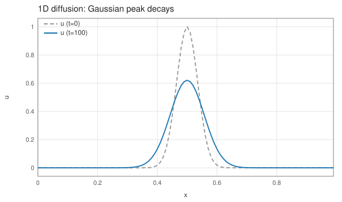
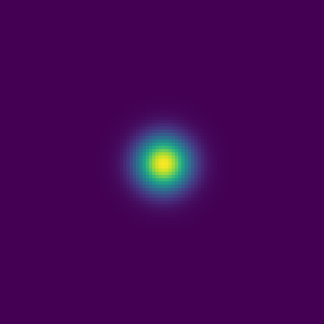
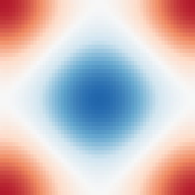

基礎と横断機能
拡散方程式(3D)
∂tu = κ∇²u
Formurae ソース全文(diffusion3d.fme・19 行)
-- The 3D diffusion equation: du/dt = kappa * laplacian(u)
mode collocated
dimension 3
axes x, y, z
param κ = 1.0
param dt = 0.1*dx*dx
extern exp
raw gauss = fun(x,y,z) exp(-((x-(total_grid_x*dx/2))/(5*dx))**2 - ((y-(total_grid_y*dy/2))/(5*dy))**2 - ((z-(total_grid_z*dz/2))/(5*dz))**2)
field u : scalar
init:
u = gauss(i*dx,j*dy,k*dz)
step:
u' = u + dt * κ * Δ u生成された Egison normalization unit(pre-fec 出力)(diffusion3d.egi・66 行)
-- -- GENERATED by pre-fec from examples/diffusion3d/diffusion3d.fme -- Load the Formurae libraries together with this unit in one -- initial recursive binding batch; use -- tools/run_formurae_normalization.sh. -- -- FORMURAE-DIAGNOSTIC-BEGIN 8 -- FORMURAE-DIAGNOSTIC pre-fec: error: examples/diffusion3d/diffusion3d.fme:19:8: Egison normalization failed -- FORMURAE-DIAGNOSTIC-END 8 declare symbol x, y, z declare symbol kappa, dt declare symbol i, j, k, l, m, n def feDimension : Integer := 3 def feCoordinates : Vector MathValue := [| x, y, z |] def dimension : Integer := feDimension def coordinates : Vector MathValue := feCoordinates def feGeometryScale axis := 1 def feGeometryMetric := (FE.diagonalMetricTensor feDimension (\axis -> 1))_formuraeTensorIndex1_formuraeTensorIndex2 def feGeometryInverseMetric := (FE.inverseDiagonalMetricTensor feDimension (\axis -> 1))~formuraeTensorIndex1~formuraeTensorIndex2 def feGeometryVolume := 1 def feGeometryScales : Vector MathValue := [| 1, 1, 1 |] def feGeometryId : Integer := 1 def fePrimitiveManifestId : String := "sha256:15edbc55825f7b9ff02836c67d852b46635f34d7b94a0397d750243b555aa9fb" def metric_i_j := feGeometryMetric_i_j def inverseMetric~i~j := feGeometryInverseMetric~i~j def volume := feGeometryVolume def epsilon : Tensor Integer := ε dimension def FormuraeInternalKroneckerDelta : Tensor Integer := FE.kroneckerDelta dimension def FormuraeInternalScalarDelta u := Formurae.scalarLaplacian u def u := function (x, y, z) def u' := function (x, y, z) def feParameters := [(kappa, 1), (dt, 2)] def feCoordinatesRegistry := [(x, 1), (y, 2), (z, 3)] def feFields := [FEIR.fieldEntry 1 "current" [] (u), FEIR.fieldEntry 1 "next" [] (u')] def feIntrinsics := [("sin", 1), ("cos", 2), ("tan", 3), ("asin", 4), ("acos", 5), ("atan", 6), ("atan2", 7), ("sinh", 8), ("cosh", 9), ("tanh", 10), ("exp", 11), ("log", 12), ("sqrt", 13), ("pow", 14), ("fabs", 15)] def feAnalytics := [] def FormuraeInternalValue1 := u + (dt * kappa * FormuraeInternalScalarDelta u) def FormuraeInternalAtOrigin marker thunk := io $ do print marker return (thunk ()) def FormuraeInternalEncodeScalar value := FEIR.encodeScalar feParameters feCoordinatesRegistry feFields feIntrinsics feAnalytics value def FormuraeInternalEncodeTensor expectedShape variances degree value := let actualVariances := Formurae.logicalTensorVariances value actualDegree := dfOrder value exactMetadata := actualVariances = variances && actualDegree = degree completesOmittedDownIndices := degree = 0 && actualDegree > 0 && actualVariances = variances in match assert "normalized equation tensor metadata mismatch" (tensorShape value = expectedShape && (exactMetadata || completesOmittedDownIndices)) as bool with | #True -> FEIR.encodeTensorWithMetadata feParameters feCoordinatesRegistry feFields feIntrinsics feAnalytics variances degree value def feProgram := FEIR.list [FEIR.atom "feir", FEIR.atom "1", FEIR.list [FEIR.atom "model", FEIR.list [FEIR.atom "model-identity", FEIR.list [FEIR.atom "id", FEIR.string "model:diffusion3d"], FEIR.list [FEIR.atom "name", FEIR.string "diffusion3d"], FEIR.list [FEIR.atom "source", FEIR.list [FEIR.atom "source-identity", FEIR.list [FEIR.atom "id", FEIR.string "source:examples/diffusion3d/diffusion3d.fme"], FEIR.list [FEIR.atom "path", FEIR.string "examples/diffusion3d/diffusion3d.fme"]]]]], FEIR.list [FEIR.atom "registry-id", FEIR.string "sha256:8bb222e93bfb71424220c09870b07370b15a9589415736d81956494c17e813ad"], FEIR.list [FEIR.atom "primitive-manifest-id", FEIR.string "sha256:15edbc55825f7b9ff02836c67d852b46635f34d7b94a0397d750243b555aa9fb"], FEIR.list [FEIR.atom "discretization", FEIR.list [FEIR.atom "discretization-profile", FEIR.list [FEIR.atom "version", FEIR.string "formurae-discretization@1"], FEIR.list [FEIR.atom "fingerprint", FEIR.string "sha256:2bf180015cdf4e5818e8a9e364f5fa7f278c357d129314b4baa34201e8bac32a"], FEIR.list [FEIR.atom "rules", FEIR.list []], FEIR.list [FEIR.atom "mixed", FEIR.atom "fixed-axis-order"]]], FEIR.list [FEIR.atom "mode", FEIR.atom "collocated"], FEIR.list [FEIR.atom "dimension", FEIR.atom "3"], FEIR.list [FEIR.atom "axes", FEIR.list [FEIR.list [FEIR.atom "axis", FEIR.list [FEIR.atom "id", FEIR.atom "1"], FEIR.list [FEIR.atom "source-name", FEIR.string "x"], FEIR.list [FEIR.atom "canonical-name", FEIR.string "x"], FEIR.list [FEIR.atom "origin", FEIR.atom "1"]], FEIR.list [FEIR.atom "axis", FEIR.list [FEIR.atom "id", FEIR.atom "2"], FEIR.list [FEIR.atom "source-name", FEIR.string "y"], FEIR.list [FEIR.atom "canonical-name", FEIR.string "y"], FEIR.list [FEIR.atom "origin", FEIR.atom "1"]], FEIR.list [FEIR.atom "axis", FEIR.list [FEIR.atom "id", FEIR.atom "3"], FEIR.list [FEIR.atom "source-name", FEIR.string "z"], FEIR.list [FEIR.atom "canonical-name", FEIR.string "z"], FEIR.list [FEIR.atom "origin", FEIR.atom "1"]]]], FEIR.list [FEIR.atom "geometry", FEIR.list [FEIR.atom "geometry", FEIR.list [FEIR.atom "id", FEIR.atom "1"], FEIR.list [FEIR.atom "source-name", FEIR.list [FEIR.atom "none"]], FEIR.list [FEIR.atom "origin", FEIR.list [FEIR.atom "none"]], FEIR.list [FEIR.atom "kind", FEIR.list [FEIR.atom "euclidean"]]]], FEIR.list [FEIR.atom "parameters", FEIR.list [FEIR.list [FEIR.atom "parameter", FEIR.list [FEIR.atom "id", FEIR.atom "1"], FEIR.list [FEIR.atom "source-name", FEIR.string "kappa"], FEIR.list [FEIR.atom "backend-name", FEIR.string "kappa"], FEIR.list [FEIR.atom "raw-value", FEIR.string "1.0"], FEIR.list [FEIR.atom "origin", FEIR.atom "2"]], FEIR.list [FEIR.atom "parameter", FEIR.list [FEIR.atom "id", FEIR.atom "2"], FEIR.list [FEIR.atom "source-name", FEIR.string "dt"], FEIR.list [FEIR.atom "backend-name", FEIR.string "dt"], FEIR.list [FEIR.atom "raw-value", FEIR.string "0.1*dx*dx"], FEIR.list [FEIR.atom "origin", FEIR.atom "3"]]]], FEIR.list [FEIR.atom "functions", FEIR.list [FEIR.list [FEIR.atom "function", FEIR.list [FEIR.atom "id", FEIR.atom "1"], FEIR.list [FEIR.atom "source-name", FEIR.string "sin"], FEIR.list [FEIR.atom "backend-name", FEIR.string "sin"], FEIR.list [FEIR.atom "arity", FEIR.list [FEIR.atom "some", FEIR.atom "1"]], FEIR.list [FEIR.atom "class", FEIR.atom "intrinsic"], FEIR.list [FEIR.atom "origin", FEIR.list [FEIR.atom "none"]]], FEIR.list [FEIR.atom "function", FEIR.list [FEIR.atom "id", FEIR.atom "2"], FEIR.list [FEIR.atom "source-name", FEIR.string "cos"], FEIR.list [FEIR.atom "backend-name", FEIR.string "cos"], FEIR.list [FEIR.atom "arity", FEIR.list [FEIR.atom "some", FEIR.atom "1"]], FEIR.list [FEIR.atom "class", FEIR.atom "intrinsic"], FEIR.list [FEIR.atom "origin", FEIR.list [FEIR.atom "none"]]], FEIR.list [FEIR.atom "function", FEIR.list [FEIR.atom "id", FEIR.atom "3"], FEIR.list [FEIR.atom "source-name", FEIR.string "tan"], FEIR.list [FEIR.atom "backend-name", FEIR.string "tan"], FEIR.list [FEIR.atom "arity", FEIR.list [FEIR.atom "some", FEIR.atom "1"]], FEIR.list [FEIR.atom "class", FEIR.atom "intrinsic"], FEIR.list [FEIR.atom "origin", FEIR.list [FEIR.atom "none"]]], FEIR.list [FEIR.atom "function", FEIR.list [FEIR.atom "id", FEIR.atom "4"], FEIR.list [FEIR.atom "source-name", FEIR.string "asin"], FEIR.list [FEIR.atom "backend-name", FEIR.string "asin"], FEIR.list [FEIR.atom "arity", FEIR.list [FEIR.atom "some", FEIR.atom "1"]], FEIR.list [FEIR.atom "class", FEIR.atom "intrinsic"], FEIR.list [FEIR.atom "origin", FEIR.list [FEIR.atom "none"]]], FEIR.list [FEIR.atom "function", FEIR.list [FEIR.atom "id", FEIR.atom "5"], FEIR.list [FEIR.atom "source-name", FEIR.string "acos"], FEIR.list [FEIR.atom "backend-name", FEIR.string "acos"], FEIR.list [FEIR.atom "arity", FEIR.list [FEIR.atom "some", FEIR.atom "1"]], FEIR.list [FEIR.atom "class", FEIR.atom "intrinsic"], FEIR.list [FEIR.atom "origin", FEIR.list [FEIR.atom "none"]]], FEIR.list [FEIR.atom "function", FEIR.list [FEIR.atom "id", FEIR.atom "6"], FEIR.list [FEIR.atom "source-name", FEIR.string "atan"], FEIR.list [FEIR.atom "backend-name", FEIR.string "atan"], FEIR.list [FEIR.atom "arity", FEIR.list [FEIR.atom "some", FEIR.atom "1"]], FEIR.list [FEIR.atom "class", FEIR.atom "intrinsic"], FEIR.list [FEIR.atom "origin", FEIR.list [FEIR.atom "none"]]], FEIR.list [FEIR.atom "function", FEIR.list [FEIR.atom "id", FEIR.atom "7"], FEIR.list [FEIR.atom "source-name", FEIR.string "atan2"], FEIR.list [FEIR.atom "backend-name", FEIR.string "atan2"], FEIR.list [FEIR.atom "arity", FEIR.list [FEIR.atom "some", FEIR.atom "2"]], FEIR.list [FEIR.atom "class", FEIR.atom "intrinsic"], FEIR.list [FEIR.atom "origin", FEIR.list [FEIR.atom "none"]]], FEIR.list [FEIR.atom "function", FEIR.list [FEIR.atom "id", FEIR.atom "8"], FEIR.list [FEIR.atom "source-name", FEIR.string "sinh"], FEIR.list [FEIR.atom "backend-name", FEIR.string "sinh"], FEIR.list [FEIR.atom "arity", FEIR.list [FEIR.atom "some", FEIR.atom "1"]], FEIR.list [FEIR.atom "class", FEIR.atom "intrinsic"], FEIR.list [FEIR.atom "origin", FEIR.list [FEIR.atom "none"]]], FEIR.list [FEIR.atom "function", FEIR.list [FEIR.atom "id", FEIR.atom "9"], FEIR.list [FEIR.atom "source-name", FEIR.string "cosh"], FEIR.list [FEIR.atom "backend-name", FEIR.string "cosh"], FEIR.list [FEIR.atom "arity", FEIR.list [FEIR.atom "some", FEIR.atom "1"]], FEIR.list [FEIR.atom "class", FEIR.atom "intrinsic"], FEIR.list [FEIR.atom "origin", FEIR.list [FEIR.atom "none"]]], FEIR.list [FEIR.atom "function", FEIR.list [FEIR.atom "id", FEIR.atom "10"], FEIR.list [FEIR.atom "source-name", FEIR.string "tanh"], FEIR.list [FEIR.atom "backend-name", FEIR.string "tanh"], FEIR.list [FEIR.atom "arity", FEIR.list [FEIR.atom "some", FEIR.atom "1"]], FEIR.list [FEIR.atom "class", FEIR.atom "intrinsic"], FEIR.list [FEIR.atom "origin", FEIR.list [FEIR.atom "none"]]], FEIR.list [FEIR.atom "function", FEIR.list [FEIR.atom "id", FEIR.atom "11"], FEIR.list [FEIR.atom "source-name", FEIR.string "exp"], FEIR.list [FEIR.atom "backend-name", FEIR.string "exp"], FEIR.list [FEIR.atom "arity", FEIR.list [FEIR.atom "some", FEIR.atom "1"]], FEIR.list [FEIR.atom "class", FEIR.atom "intrinsic"], FEIR.list [FEIR.atom "origin", FEIR.list [FEIR.atom "some", FEIR.atom "4"]]], FEIR.list [FEIR.atom "function", FEIR.list [FEIR.atom "id", FEIR.atom "12"], FEIR.list [FEIR.atom "source-name", FEIR.string "log"], FEIR.list [FEIR.atom "backend-name", FEIR.string "log"], FEIR.list [FEIR.atom "arity", FEIR.list [FEIR.atom "some", FEIR.atom "1"]], FEIR.list [FEIR.atom "class", FEIR.atom "intrinsic"], FEIR.list [FEIR.atom "origin", FEIR.list [FEIR.atom "none"]]], FEIR.list [FEIR.atom "function", FEIR.list [FEIR.atom "id", FEIR.atom "13"], FEIR.list [FEIR.atom "source-name", FEIR.string "sqrt"], FEIR.list [FEIR.atom "backend-name", FEIR.string "sqrt"], FEIR.list [FEIR.atom "arity", FEIR.list [FEIR.atom "some", FEIR.atom "1"]], FEIR.list [FEIR.atom "class", FEIR.atom "intrinsic"], FEIR.list [FEIR.atom "origin", FEIR.list [FEIR.atom "none"]]], FEIR.list [FEIR.atom "function", FEIR.list [FEIR.atom "id", FEIR.atom "14"], FEIR.list [FEIR.atom "source-name", FEIR.string "pow"], FEIR.list [FEIR.atom "backend-name", FEIR.string "pow"], FEIR.list [FEIR.atom "arity", FEIR.list [FEIR.atom "some", FEIR.atom "2"]], FEIR.list [FEIR.atom "class", FEIR.atom "intrinsic"], FEIR.list [FEIR.atom "origin", FEIR.list [FEIR.atom "none"]]], FEIR.list [FEIR.atom "function", FEIR.list [FEIR.atom "id", FEIR.atom "15"], FEIR.list [FEIR.atom "source-name", FEIR.string "fabs"], FEIR.list [FEIR.atom "backend-name", FEIR.string "fabs"], FEIR.list [FEIR.atom "arity", FEIR.list [FEIR.atom "some", FEIR.atom "1"]], FEIR.list [FEIR.atom "class", FEIR.atom "intrinsic"], FEIR.list [FEIR.atom "origin", FEIR.list [FEIR.atom "none"]]]]], FEIR.list [FEIR.atom "fields", FEIR.list [FEIR.list [FEIR.atom "field", FEIR.list [FEIR.atom "id", FEIR.atom "1"], FEIR.list [FEIR.atom "source-name", FEIR.string "u"], FEIR.list [FEIR.atom "policy", FEIR.atom "collocated"], FEIR.list [FEIR.atom "tensor-type", FEIR.list [FEIR.atom "tensor-type", FEIR.list [FEIR.atom "shape", FEIR.list []], FEIR.list [FEIR.atom "variances", FEIR.list []], FEIR.list [FEIR.atom "df-order", FEIR.atom "0"]]], FEIR.list [FEIR.atom "layout", FEIR.atom "scalar"], FEIR.list [FEIR.atom "declared-variances", FEIR.list []], FEIR.list [FEIR.atom "lifetime", FEIR.atom "user-state"], FEIR.list [FEIR.atom "origin", FEIR.atom "6"]]]], FEIR.list [FEIR.atom "initializers", FEIR.list [FEIR.list [FEIR.atom "raw-initializer", FEIR.list [FEIR.atom "target", FEIR.list [FEIR.atom "field-target", FEIR.list [FEIR.atom "kind", FEIR.atom "component"], FEIR.list [FEIR.atom "field", FEIR.atom "1"], FEIR.list [FEIR.atom "time-slot", FEIR.atom "current"], FEIR.list [FEIR.atom "basis", FEIR.list [FEIR.atom "some", FEIR.list [FEIR.atom "basis"]]]]], FEIR.list [FEIR.atom "raw", FEIR.string "gauss(i*dx,j*dy,k*dz)"], FEIR.list [FEIR.atom "origin", FEIR.atom "7"]]]], FEIR.list [FEIR.atom "step-actions", FEIR.list [FEIR.list [FEIR.atom "update-field", FEIR.list [FEIR.atom "equation", FEIR.list [FEIR.atom "equation", FEIR.list [FEIR.atom "id", FEIR.atom "1"], FEIR.list [FEIR.atom "target", FEIR.list [FEIR.atom "field-target", FEIR.list [FEIR.atom "kind", FEIR.atom "whole"], FEIR.list [FEIR.atom "field", FEIR.atom "1"], FEIR.list [FEIR.atom "time-slot", FEIR.atom "next"], FEIR.list [FEIR.atom "basis", FEIR.list [FEIR.atom "none"]]]], FEIR.list [FEIR.atom "rhs", FormuraeInternalAtOrigin "@@FORMURAE_ACTIVE_ORIGIN:8@@" (\_ -> FormuraeInternalEncodeTensor [] [] 0 FormuraeInternalValue1)], FEIR.list [FEIR.atom "origin", FEIR.atom "8"]]]]]], FEIR.list [FEIR.atom "raw-helpers", FEIR.list [FEIR.list [FEIR.atom "raw-helper", FEIR.list [FEIR.atom "id", FEIR.atom "1"], FEIR.list [FEIR.atom "text", FEIR.string "gauss = fun(x,y,z) exp(-((x-(total_grid_x*dx/2))/(5*dx))**2 - ((y-(total_grid_y*dy/2))/(5*dy))**2 - ((z-(total_grid_z*dz/2))/(5*dz))**2)"], FEIR.list [FEIR.atom "origin", FEIR.atom "5"]]]], FEIR.list [FEIR.atom "origins", FEIR.list [FEIR.list [FEIR.atom "origin-entry", FEIR.list [FEIR.atom "id", FEIR.atom "1"], FEIR.list [FEIR.atom "origin", FEIR.list [FEIR.atom "source-origin", FEIR.list [FEIR.atom "location", FEIR.list [FEIR.atom "source-location", FEIR.list [FEIR.atom "source", FEIR.string "source:examples/diffusion3d/diffusion3d.fme"], FEIR.list [FEIR.atom "path", FEIR.string "examples/diffusion3d/diffusion3d.fme"], FEIR.list [FEIR.atom "line", FEIR.atom "5"], FEIR.list [FEIR.atom "end-line", FEIR.atom "5"], FEIR.list [FEIR.atom "start-column", FEIR.atom "1"], FEIR.list [FEIR.atom "end-column", FEIR.atom "1"]]], FEIR.list [FEIR.atom "trace", FEIR.list []]]]], FEIR.list [FEIR.atom "origin-entry", FEIR.list [FEIR.atom "id", FEIR.atom "2"], FEIR.list [FEIR.atom "origin", FEIR.list [FEIR.atom "source-origin", FEIR.list [FEIR.atom "location", FEIR.list [FEIR.atom "source-location", FEIR.list [FEIR.atom "source", FEIR.string "source:examples/diffusion3d/diffusion3d.fme"], FEIR.list [FEIR.atom "path", FEIR.string "examples/diffusion3d/diffusion3d.fme"], FEIR.list [FEIR.atom "line", FEIR.atom "7"], FEIR.list [FEIR.atom "end-line", FEIR.atom "7"], FEIR.list [FEIR.atom "start-column", FEIR.atom "1"], FEIR.list [FEIR.atom "end-column", FEIR.atom "1"]]], FEIR.list [FEIR.atom "trace", FEIR.list []]]]], FEIR.list [FEIR.atom "origin-entry", FEIR.list [FEIR.atom "id", FEIR.atom "3"], FEIR.list [FEIR.atom "origin", FEIR.list [FEIR.atom "source-origin", FEIR.list [FEIR.atom "location", FEIR.list [FEIR.atom "source-location", FEIR.list [FEIR.atom "source", FEIR.string "source:examples/diffusion3d/diffusion3d.fme"], FEIR.list [FEIR.atom "path", FEIR.string "examples/diffusion3d/diffusion3d.fme"], FEIR.list [FEIR.atom "line", FEIR.atom "8"], FEIR.list [FEIR.atom "end-line", FEIR.atom "8"], FEIR.list [FEIR.atom "start-column", FEIR.atom "1"], FEIR.list [FEIR.atom "end-column", FEIR.atom "1"]]], FEIR.list [FEIR.atom "trace", FEIR.list []]]]], FEIR.list [FEIR.atom "origin-entry", FEIR.list [FEIR.atom "id", FEIR.atom "4"], FEIR.list [FEIR.atom "origin", FEIR.list [FEIR.atom "source-origin", FEIR.list [FEIR.atom "location", FEIR.list [FEIR.atom "source-location", FEIR.list [FEIR.atom "source", FEIR.string "source:examples/diffusion3d/diffusion3d.fme"], FEIR.list [FEIR.atom "path", FEIR.string "examples/diffusion3d/diffusion3d.fme"], FEIR.list [FEIR.atom "line", FEIR.atom "10"], FEIR.list [FEIR.atom "end-line", FEIR.atom "10"], FEIR.list [FEIR.atom "start-column", FEIR.atom "1"], FEIR.list [FEIR.atom "end-column", FEIR.atom "1"]]], FEIR.list [FEIR.atom "trace", FEIR.list []]]]], FEIR.list [FEIR.atom "origin-entry", FEIR.list [FEIR.atom "id", FEIR.atom "5"], FEIR.list [FEIR.atom "origin", FEIR.list [FEIR.atom "source-origin", FEIR.list [FEIR.atom "location", FEIR.list [FEIR.atom "source-location", FEIR.list [FEIR.atom "source", FEIR.string "source:examples/diffusion3d/diffusion3d.fme"], FEIR.list [FEIR.atom "path", FEIR.string "examples/diffusion3d/diffusion3d.fme"], FEIR.list [FEIR.atom "line", FEIR.atom "11"], FEIR.list [FEIR.atom "end-line", FEIR.atom "11"], FEIR.list [FEIR.atom "start-column", FEIR.atom "1"], FEIR.list [FEIR.atom "end-column", FEIR.atom "1"]]], FEIR.list [FEIR.atom "trace", FEIR.list []]]]], FEIR.list [FEIR.atom "origin-entry", FEIR.list [FEIR.atom "id", FEIR.atom "6"], FEIR.list [FEIR.atom "origin", FEIR.list [FEIR.atom "source-origin", FEIR.list [FEIR.atom "location", FEIR.list [FEIR.atom "source-location", FEIR.list [FEIR.atom "source", FEIR.string "source:examples/diffusion3d/diffusion3d.fme"], FEIR.list [FEIR.atom "path", FEIR.string "examples/diffusion3d/diffusion3d.fme"], FEIR.list [FEIR.atom "line", FEIR.atom "13"], FEIR.list [FEIR.atom "end-line", FEIR.atom "13"], FEIR.list [FEIR.atom "start-column", FEIR.atom "1"], FEIR.list [FEIR.atom "end-column", FEIR.atom "1"]]], FEIR.list [FEIR.atom "trace", FEIR.list []]]]], FEIR.list [FEIR.atom "origin-entry", FEIR.list [FEIR.atom "id", FEIR.atom "7"], FEIR.list [FEIR.atom "origin", FEIR.list [FEIR.atom "source-origin", FEIR.list [FEIR.atom "location", FEIR.list [FEIR.atom "source-location", FEIR.list [FEIR.atom "source", FEIR.string "source:examples/diffusion3d/diffusion3d.fme"], FEIR.list [FEIR.atom "path", FEIR.string "examples/diffusion3d/diffusion3d.fme"], FEIR.list [FEIR.atom "line", FEIR.atom "16"], FEIR.list [FEIR.atom "end-line", FEIR.atom "16"], FEIR.list [FEIR.atom "start-column", FEIR.atom "7"], FEIR.list [FEIR.atom "end-column", FEIR.atom "27"]]], FEIR.list [FEIR.atom "trace", FEIR.list []]]]], FEIR.list [FEIR.atom "origin-entry", FEIR.list [FEIR.atom "id", FEIR.atom "8"], FEIR.list [FEIR.atom "origin", FEIR.list [FEIR.atom "source-origin", FEIR.list [FEIR.atom "location", FEIR.list [FEIR.atom "source-location", FEIR.list [FEIR.atom "source", FEIR.string "source:examples/diffusion3d/diffusion3d.fme"], FEIR.list [FEIR.atom "path", FEIR.string "examples/diffusion3d/diffusion3d.fme"], FEIR.list [FEIR.atom "line", FEIR.atom "19"], FEIR.list [FEIR.atom "end-line", FEIR.atom "19"], FEIR.list [FEIR.atom "start-column", FEIR.atom "8"], FEIR.list [FEIR.atom "end-column", FEIR.atom "23"]]], FEIR.list [FEIR.atom "trace", FEIR.list []]]]]]], FEIR.list [FEIR.atom "provenance", FEIR.list []]] def main (args: [String]) : IO () := print (FEIR.render feProgram)
Egison 正規化結果 FEIR(diffusion3d.feir・1 行)
(feir 1 (model (model-identity (id "model:diffusion3d") (name "diffusion3d") (source (source-identity (id "source:examples/diffusion3d/diffusion3d.fme") (path "examples/diffusion3d/diffusion3d.fme"))))) (registry-id "sha256:8bb222e93bfb71424220c09870b07370b15a9589415736d81956494c17e813ad") (primitive-manifest-id "sha256:15edbc55825f7b9ff02836c67d852b46635f34d7b94a0397d750243b555aa9fb") (discretization (discretization-profile (version "formurae-discretization@1") (fingerprint "sha256:2bf180015cdf4e5818e8a9e364f5fa7f278c357d129314b4baa34201e8bac32a") (rules ()) (mixed fixed-axis-order))) (mode collocated) (dimension 3) (axes ((axis (id 1) (source-name "x") (canonical-name "x") (origin 1)) (axis (id 2) (source-name "y") (canonical-name "y") (origin 1)) (axis (id 3) (source-name "z") (canonical-name "z") (origin 1)))) (geometry (geometry (id 1) (source-name (none)) (origin (none)) (kind (euclidean)))) (parameters ((parameter (id 1) (source-name "kappa") (backend-name "kappa") (raw-value "1.0") (origin 2)) (parameter (id 2) (source-name "dt") (backend-name "dt") (raw-value "0.1*dx*dx") (origin 3)))) (functions ((function (id 1) (source-name "sin") (backend-name "sin") (arity (some 1)) (class intrinsic) (origin (none))) (function (id 2) (source-name "cos") (backend-name "cos") (arity (some 1)) (class intrinsic) (origin (none))) (function (id 3) (source-name "tan") (backend-name "tan") (arity (some 1)) (class intrinsic) (origin (none))) (function (id 4) (source-name "asin") (backend-name "asin") (arity (some 1)) (class intrinsic) (origin (none))) (function (id 5) (source-name "acos") (backend-name "acos") (arity (some 1)) (class intrinsic) (origin (none))) (function (id 6) (source-name "atan") (backend-name "atan") (arity (some 1)) (class intrinsic) (origin (none))) (function (id 7) (source-name "atan2") (backend-name "atan2") (arity (some 2)) (class intrinsic) (origin (none))) (function (id 8) (source-name "sinh") (backend-name "sinh") (arity (some 1)) (class intrinsic) (origin (none))) (function (id 9) (source-name "cosh") (backend-name "cosh") (arity (some 1)) (class intrinsic) (origin (none))) (function (id 10) (source-name "tanh") (backend-name "tanh") (arity (some 1)) (class intrinsic) (origin (none))) (function (id 11) (source-name "exp") (backend-name "exp") (arity (some 1)) (class intrinsic) (origin (some 4))) (function (id 12) (source-name "log") (backend-name "log") (arity (some 1)) (class intrinsic) (origin (none))) (function (id 13) (source-name "sqrt") (backend-name "sqrt") (arity (some 1)) (class intrinsic) (origin (none))) (function (id 14) (source-name "pow") (backend-name "pow") (arity (some 2)) (class intrinsic) (origin (none))) (function (id 15) (source-name "fabs") (backend-name "fabs") (arity (some 1)) (class intrinsic) (origin (none))))) (fields ((field (id 1) (source-name "u") (policy collocated) (tensor-type (tensor-type (shape ()) (variances ()) (df-order 0))) (layout scalar) (declared-variances ()) (lifetime user-state) (origin 6)))) (initializers ((raw-initializer (target (field-target (kind component) (field 1) (time-slot current) (basis (some (basis))))) (raw "gauss(i*dx,j*dy,k*dz)") (origin 7)))) (step-actions ((update-field (equation (equation (id 1) (target (field-target (kind whole) (field 1) (time-slot next) (basis (none)))) (rhs (tensor (shape ()) (variances ()) (df-order 0) (components ((component (basis (basis)) (value (add (field-jet (field 1) (time-slot current) (basis (basis)) (arguments ((coordinate 1) (coordinate 2) (coordinate 3))) (multi-index ())) (mul (field-jet (field 1) (time-slot current) (basis (basis)) (arguments ((coordinate 1) (coordinate 2) (coordinate 3))) (multi-index ((axis-order (axis 1) (count 2))))) (parameter 1) (parameter 2)) (mul (field-jet (field 1) (time-slot current) (basis (basis)) (arguments ((coordinate 1) (coordinate 2) (coordinate 3))) (multi-index ((axis-order (axis 2) (count 2))))) (parameter 1) (parameter 2)) (mul (field-jet (field 1) (time-slot current) (basis (basis)) (arguments ((coordinate 1) (coordinate 2) (coordinate 3))) (multi-index ((axis-order (axis 3) (count 2))))) (parameter 1) (parameter 2))))))))) (origin 8)))))) (raw-helpers ((raw-helper (id 1) (text "gauss = fun(x,y,z) exp(-((x-(total_grid_x*dx/2))/(5*dx))**2 - ((y-(total_grid_y*dy/2))/(5*dy))**2 - ((z-(total_grid_z*dz/2))/(5*dz))**2)") (origin 5)))) (origins ((origin-entry (id 1) (origin (source-origin (location (source-location (source "source:examples/diffusion3d/diffusion3d.fme") (path "examples/diffusion3d/diffusion3d.fme") (line 5) (end-line 5) (start-column 1) (end-column 1))) (trace ())))) (origin-entry (id 2) (origin (source-origin (location (source-location (source "source:examples/diffusion3d/diffusion3d.fme") (path "examples/diffusion3d/diffusion3d.fme") (line 7) (end-line 7) (start-column 1) (end-column 1))) (trace ())))) (origin-entry (id 3) (origin (source-origin (location (source-location (source "source:examples/diffusion3d/diffusion3d.fme") (path "examples/diffusion3d/diffusion3d.fme") (line 8) (end-line 8) (start-column 1) (end-column 1))) (trace ())))) (origin-entry (id 4) (origin (source-origin (location (source-location (source "source:examples/diffusion3d/diffusion3d.fme") (path "examples/diffusion3d/diffusion3d.fme") (line 10) (end-line 10) (start-column 1) (end-column 1))) (trace ())))) (origin-entry (id 5) (origin (source-origin (location (source-location (source "source:examples/diffusion3d/diffusion3d.fme") (path "examples/diffusion3d/diffusion3d.fme") (line 11) (end-line 11) (start-column 1) (end-column 1))) (trace ())))) (origin-entry (id 6) (origin (source-origin (location (source-location (source "source:examples/diffusion3d/diffusion3d.fme") (path "examples/diffusion3d/diffusion3d.fme") (line 13) (end-line 13) (start-column 1) (end-column 1))) (trace ())))) (origin-entry (id 7) (origin (source-origin (location (source-location (source "source:examples/diffusion3d/diffusion3d.fme") (path "examples/diffusion3d/diffusion3d.fme") (line 16) (end-line 16) (start-column 7) (end-column 27))) (trace ())))) (origin-entry (id 8) (origin (source-origin (location (source-location (source "source:examples/diffusion3d/diffusion3d.fme") (path "examples/diffusion3d/diffusion3d.fme") (line 19) (end-line 19) (start-column 8) (end-column 23))) (trace ())))))) (provenance ()))
生成された Formura 全文(diffusion3d.fmr・17 行)
dimension :: 3 axes :: x,y,z double :: kappa = 1.0 double :: dt = 0.1*dx*dx extern function :: exp gauss = fun(x,y,z) exp(-((x-(total_grid_x*dx/2))/(5*dx))**2 - ((y-(total_grid_y*dy/2))/(5*dy))**2 - ((z-(total_grid_z*dz/2))/(5*dz))**2) begin function u = init() double [] :: u u[i,j,k] = gauss(i*dx,j*dy,k*dz) end function begin function u' = step(u) u'[i,j,k] = u[i,j,k] + dt * kappa * (u[i-1,j,k] + u[i+1,j,k] + (-2) * u[i,j,k]) / dx**2 + dt * kappa * (u[i,j-1,k] + u[i,j+1,k] + (-2) * u[i,j,k]) / dy**2 + dt * kappa * (u[i,j,k-1] + u[i,j,k+1] + (-2) * u[i,j,k]) / dz**2 end function


z 中央断面: t=0 のガウス塊(左)が等方に拡散(右、100 step)
100³格子・temporal blocking 5 で 0.19 秒、質量保存 6.4e-13。
拡散方程式(1D)
∂tu = κ∂xxu
Formurae ソース全文(diffusion1d.fme・20 行)
-- The 1D diffusion equation: du/dt = kappa * laplacian(u)
mode collocated
dimension 1
axes x
param κ = 1.0
param dt = 0.1*dx*dx
extern exp
raw gauss = fun(x) exp(-((x-(total_grid_x*dx/2))/(5*dx))**2)
field u : scalar @ primal
init:
u = gauss(i*dx)
step:
local q_i @ primal = [| 0 - κ * ∂_x u |]_i
u' = u - dt * divg q生成された Egison normalization unit(pre-fec 出力)(diffusion1d.egi・73 行)
-- -- GENERATED by pre-fec from examples/diffusion1d/diffusion1d.fme -- Load the Formurae libraries together with this unit in one -- initial recursive binding batch; use -- tools/run_formurae_normalization.sh. -- -- FORMURAE-DIAGNOSTIC-BEGIN 8 -- FORMURAE-DIAGNOSTIC pre-fec: error: examples/diffusion1d/diffusion1d.fme:19:24: Egison normalization failed -- FORMURAE-DIAGNOSTIC-END 8 -- FORMURAE-DIAGNOSTIC-BEGIN 9 -- FORMURAE-DIAGNOSTIC pre-fec: error: examples/diffusion1d/diffusion1d.fme:20:8: Egison normalization failed -- FORMURAE-DIAGNOSTIC-END 9 declare symbol x declare symbol kappa, dt declare symbol i, j, k, l, m, n def feDimension : Integer := 1 def feCoordinates : Vector MathValue := [| x |] def dimension : Integer := feDimension def coordinates : Vector MathValue := feCoordinates def feGeometryScale axis := 1 def feGeometryMetric := (FE.diagonalMetricTensor feDimension (\axis -> 1))_formuraeTensorIndex1_formuraeTensorIndex2 def feGeometryInverseMetric := (FE.inverseDiagonalMetricTensor feDimension (\axis -> 1))~formuraeTensorIndex1~formuraeTensorIndex2 def feGeometryVolume := 1 def feGeometryScales : Vector MathValue := [| 1 |] def feGeometryId : Integer := 1 def fePrimitiveManifestId : String := "sha256:15edbc55825f7b9ff02836c67d852b46635f34d7b94a0397d750243b555aa9fb" def metric_i_j := feGeometryMetric_i_j def inverseMetric~i~j := feGeometryInverseMetric~i~j def volume := feGeometryVolume def epsilon : Tensor Integer := ε dimension def FormuraeInternalKroneckerDelta : Tensor Integer := FE.kroneckerDelta dimension def FormuraeInternalDivg X := Formurae.divg X def FormuraeInternalGridWholeDerivative axis value := Formurae.gridWholeDerivative axis value def u := function (x) def u' := function (x) def q := (generateTensor (\[i] -> function (x)) [1])_formuraeTensorIndex1 def feParameters := [(kappa, 1), (dt, 2)] def feCoordinatesRegistry := [(x, 1)] def feFields := [FEIR.fieldEntry 1 "current" [] (u), FEIR.fieldEntry 1 "next" [] (u'), FEIR.fieldEntry 2 "current" [1] (FE.tensorComponentAt q [1])] def feIntrinsics := [("sin", 1), ("cos", 2), ("tan", 3), ("asin", 4), ("acos", 5), ("atan", 6), ("atan2", 7), ("sinh", 8), ("cosh", 9), ("tanh", 10), ("exp", 11), ("log", 12), ("sqrt", 13), ("pow", 14), ("fabs", 15)] def feAnalytics := [] def FormuraeInternalValue1_i : Tensor MathValue := [| 0 - (kappa * FormuraeInternalGridWholeDerivative 1 u) |]_i def FormuraeInternalValue2 := u - (dt * FormuraeInternalDivg q) def FormuraeInternalAtOrigin marker thunk := io $ do print marker return (thunk ()) def FormuraeInternalEncodeScalar value := FEIR.encodeScalar feParameters feCoordinatesRegistry feFields feIntrinsics feAnalytics value def FormuraeInternalEncodeTensor expectedShape variances degree value := let actualVariances := Formurae.logicalTensorVariances value actualDegree := dfOrder value exactMetadata := actualVariances = variances && actualDegree = degree completesOmittedDownIndices := degree = 0 && actualDegree > 0 && actualVariances = variances in match assert "normalized equation tensor metadata mismatch" (tensorShape value = expectedShape && (exactMetadata || completesOmittedDownIndices)) as bool with | #True -> FEIR.encodeTensorWithMetadata feParameters feCoordinatesRegistry feFields feIntrinsics feAnalytics variances degree value def feProgram := FEIR.list [FEIR.atom "feir", FEIR.atom "1", FEIR.list [FEIR.atom "model", FEIR.list [FEIR.atom "model-identity", FEIR.list [FEIR.atom "id", FEIR.string "model:diffusion1d"], FEIR.list [FEIR.atom "name", FEIR.string "diffusion1d"], FEIR.list [FEIR.atom "source", FEIR.list [FEIR.atom "source-identity", FEIR.list [FEIR.atom "id", FEIR.string "source:examples/diffusion1d/diffusion1d.fme"], FEIR.list [FEIR.atom "path", FEIR.string "examples/diffusion1d/diffusion1d.fme"]]]]], FEIR.list [FEIR.atom "registry-id", FEIR.string "sha256:25d0a506adbca0e6145ae324e7f909f6e825ae35d6ff3433f1e93d3b04c3b6fb"], FEIR.list [FEIR.atom "primitive-manifest-id", FEIR.string "sha256:15edbc55825f7b9ff02836c67d852b46635f34d7b94a0397d750243b555aa9fb"], FEIR.list [FEIR.atom "discretization", FEIR.list [FEIR.atom "discretization-profile", FEIR.list [FEIR.atom "version", FEIR.string "formurae-discretization@1"], FEIR.list [FEIR.atom "fingerprint", FEIR.string "sha256:2bf180015cdf4e5818e8a9e364f5fa7f278c357d129314b4baa34201e8bac32a"], FEIR.list [FEIR.atom "rules", FEIR.list []], FEIR.list [FEIR.atom "mixed", FEIR.atom "fixed-axis-order"]]], FEIR.list [FEIR.atom "mode", FEIR.atom "collocated"], FEIR.list [FEIR.atom "dimension", FEIR.atom "1"], FEIR.list [FEIR.atom "axes", FEIR.list [FEIR.list [FEIR.atom "axis", FEIR.list [FEIR.atom "id", FEIR.atom "1"], FEIR.list [FEIR.atom "source-name", FEIR.string "x"], FEIR.list [FEIR.atom "canonical-name", FEIR.string "x"], FEIR.list [FEIR.atom "origin", FEIR.atom "1"]]]], FEIR.list [FEIR.atom "geometry", FEIR.list [FEIR.atom "geometry", FEIR.list [FEIR.atom "id", FEIR.atom "1"], FEIR.list [FEIR.atom "source-name", FEIR.list [FEIR.atom "none"]], FEIR.list [FEIR.atom "origin", FEIR.list [FEIR.atom "none"]], FEIR.list [FEIR.atom "kind", FEIR.list [FEIR.atom "euclidean"]]]], FEIR.list [FEIR.atom "parameters", FEIR.list [FEIR.list [FEIR.atom "parameter", FEIR.list [FEIR.atom "id", FEIR.atom "1"], FEIR.list [FEIR.atom "source-name", FEIR.string "kappa"], FEIR.list [FEIR.atom "backend-name", FEIR.string "kappa"], FEIR.list [FEIR.atom "raw-value", FEIR.string "1.0"], FEIR.list [FEIR.atom "origin", FEIR.atom "2"]], FEIR.list [FEIR.atom "parameter", FEIR.list [FEIR.atom "id", FEIR.atom "2"], FEIR.list [FEIR.atom "source-name", FEIR.string "dt"], FEIR.list [FEIR.atom "backend-name", FEIR.string "dt"], FEIR.list [FEIR.atom "raw-value", FEIR.string "0.1*dx*dx"], FEIR.list [FEIR.atom "origin", FEIR.atom "3"]]]], FEIR.list [FEIR.atom "functions", FEIR.list [FEIR.list [FEIR.atom "function", FEIR.list [FEIR.atom "id", FEIR.atom "1"], FEIR.list [FEIR.atom "source-name", FEIR.string "sin"], FEIR.list [FEIR.atom "backend-name", FEIR.string "sin"], FEIR.list [FEIR.atom "arity", FEIR.list [FEIR.atom "some", FEIR.atom "1"]], FEIR.list [FEIR.atom "class", FEIR.atom "intrinsic"], FEIR.list [FEIR.atom "origin", FEIR.list [FEIR.atom "none"]]], FEIR.list [FEIR.atom "function", FEIR.list [FEIR.atom "id", FEIR.atom "2"], FEIR.list [FEIR.atom "source-name", FEIR.string "cos"], FEIR.list [FEIR.atom "backend-name", FEIR.string "cos"], FEIR.list [FEIR.atom "arity", FEIR.list [FEIR.atom "some", FEIR.atom "1"]], FEIR.list [FEIR.atom "class", FEIR.atom "intrinsic"], FEIR.list [FEIR.atom "origin", FEIR.list [FEIR.atom "none"]]], FEIR.list [FEIR.atom "function", FEIR.list [FEIR.atom "id", FEIR.atom "3"], FEIR.list [FEIR.atom "source-name", FEIR.string "tan"], FEIR.list [FEIR.atom "backend-name", FEIR.string "tan"], FEIR.list [FEIR.atom "arity", FEIR.list [FEIR.atom "some", FEIR.atom "1"]], FEIR.list [FEIR.atom "class", FEIR.atom "intrinsic"], FEIR.list [FEIR.atom "origin", FEIR.list [FEIR.atom "none"]]], FEIR.list [FEIR.atom "function", FEIR.list [FEIR.atom "id", FEIR.atom "4"], FEIR.list [FEIR.atom "source-name", FEIR.string "asin"], FEIR.list [FEIR.atom "backend-name", FEIR.string "asin"], FEIR.list [FEIR.atom "arity", FEIR.list [FEIR.atom "some", FEIR.atom "1"]], FEIR.list [FEIR.atom "class", FEIR.atom "intrinsic"], FEIR.list [FEIR.atom "origin", FEIR.list [FEIR.atom "none"]]], FEIR.list [FEIR.atom "function", FEIR.list [FEIR.atom "id", FEIR.atom "5"], FEIR.list [FEIR.atom "source-name", FEIR.string "acos"], FEIR.list [FEIR.atom "backend-name", FEIR.string "acos"], FEIR.list [FEIR.atom "arity", FEIR.list [FEIR.atom "some", FEIR.atom "1"]], FEIR.list [FEIR.atom "class", FEIR.atom "intrinsic"], FEIR.list [FEIR.atom "origin", FEIR.list [FEIR.atom "none"]]], FEIR.list [FEIR.atom "function", FEIR.list [FEIR.atom "id", FEIR.atom "6"], FEIR.list [FEIR.atom "source-name", FEIR.string "atan"], FEIR.list [FEIR.atom "backend-name", FEIR.string "atan"], FEIR.list [FEIR.atom "arity", FEIR.list [FEIR.atom "some", FEIR.atom "1"]], FEIR.list [FEIR.atom "class", FEIR.atom "intrinsic"], FEIR.list [FEIR.atom "origin", FEIR.list [FEIR.atom "none"]]], FEIR.list [FEIR.atom "function", FEIR.list [FEIR.atom "id", FEIR.atom "7"], FEIR.list [FEIR.atom "source-name", FEIR.string "atan2"], FEIR.list [FEIR.atom "backend-name", FEIR.string "atan2"], FEIR.list [FEIR.atom "arity", FEIR.list [FEIR.atom "some", FEIR.atom "2"]], FEIR.list [FEIR.atom "class", FEIR.atom "intrinsic"], FEIR.list [FEIR.atom "origin", FEIR.list [FEIR.atom "none"]]], FEIR.list [FEIR.atom "function", FEIR.list [FEIR.atom "id", FEIR.atom "8"], FEIR.list [FEIR.atom "source-name", FEIR.string "sinh"], FEIR.list [FEIR.atom "backend-name", FEIR.string "sinh"], FEIR.list [FEIR.atom "arity", FEIR.list [FEIR.atom "some", FEIR.atom "1"]], FEIR.list [FEIR.atom "class", FEIR.atom "intrinsic"], FEIR.list [FEIR.atom "origin", FEIR.list [FEIR.atom "none"]]], FEIR.list [FEIR.atom "function", FEIR.list [FEIR.atom "id", FEIR.atom "9"], FEIR.list [FEIR.atom "source-name", FEIR.string "cosh"], FEIR.list [FEIR.atom "backend-name", FEIR.string "cosh"], FEIR.list [FEIR.atom "arity", FEIR.list [FEIR.atom "some", FEIR.atom "1"]], FEIR.list [FEIR.atom "class", FEIR.atom "intrinsic"], FEIR.list [FEIR.atom "origin", FEIR.list [FEIR.atom "none"]]], FEIR.list [FEIR.atom "function", FEIR.list [FEIR.atom "id", FEIR.atom "10"], FEIR.list [FEIR.atom "source-name", FEIR.string "tanh"], FEIR.list [FEIR.atom "backend-name", FEIR.string "tanh"], FEIR.list [FEIR.atom "arity", FEIR.list [FEIR.atom "some", FEIR.atom "1"]], FEIR.list [FEIR.atom "class", FEIR.atom "intrinsic"], FEIR.list [FEIR.atom "origin", FEIR.list [FEIR.atom "none"]]], FEIR.list [FEIR.atom "function", FEIR.list [FEIR.atom "id", FEIR.atom "11"], FEIR.list [FEIR.atom "source-name", FEIR.string "exp"], FEIR.list [FEIR.atom "backend-name", FEIR.string "exp"], FEIR.list [FEIR.atom "arity", FEIR.list [FEIR.atom "some", FEIR.atom "1"]], FEIR.list [FEIR.atom "class", FEIR.atom "intrinsic"], FEIR.list [FEIR.atom "origin", FEIR.list [FEIR.atom "some", FEIR.atom "4"]]], FEIR.list [FEIR.atom "function", FEIR.list [FEIR.atom "id", FEIR.atom "12"], FEIR.list [FEIR.atom "source-name", FEIR.string "log"], FEIR.list [FEIR.atom "backend-name", FEIR.string "log"], FEIR.list [FEIR.atom "arity", FEIR.list [FEIR.atom "some", FEIR.atom "1"]], FEIR.list [FEIR.atom "class", FEIR.atom "intrinsic"], FEIR.list [FEIR.atom "origin", FEIR.list [FEIR.atom "none"]]], FEIR.list [FEIR.atom "function", FEIR.list [FEIR.atom "id", FEIR.atom "13"], FEIR.list [FEIR.atom "source-name", FEIR.string "sqrt"], FEIR.list [FEIR.atom "backend-name", FEIR.string "sqrt"], FEIR.list [FEIR.atom "arity", FEIR.list [FEIR.atom "some", FEIR.atom "1"]], FEIR.list [FEIR.atom "class", FEIR.atom "intrinsic"], FEIR.list [FEIR.atom "origin", FEIR.list [FEIR.atom "none"]]], FEIR.list [FEIR.atom "function", FEIR.list [FEIR.atom "id", FEIR.atom "14"], FEIR.list [FEIR.atom "source-name", FEIR.string "pow"], FEIR.list [FEIR.atom "backend-name", FEIR.string "pow"], FEIR.list [FEIR.atom "arity", FEIR.list [FEIR.atom "some", FEIR.atom "2"]], FEIR.list [FEIR.atom "class", FEIR.atom "intrinsic"], FEIR.list [FEIR.atom "origin", FEIR.list [FEIR.atom "none"]]], FEIR.list [FEIR.atom "function", FEIR.list [FEIR.atom "id", FEIR.atom "15"], FEIR.list [FEIR.atom "source-name", FEIR.string "fabs"], FEIR.list [FEIR.atom "backend-name", FEIR.string "fabs"], FEIR.list [FEIR.atom "arity", FEIR.list [FEIR.atom "some", FEIR.atom "1"]], FEIR.list [FEIR.atom "class", FEIR.atom "intrinsic"], FEIR.list [FEIR.atom "origin", FEIR.list [FEIR.atom "none"]]]]], FEIR.list [FEIR.atom "fields", FEIR.list [FEIR.list [FEIR.atom "field", FEIR.list [FEIR.atom "id", FEIR.atom "1"], FEIR.list [FEIR.atom "source-name", FEIR.string "u"], FEIR.list [FEIR.atom "policy", FEIR.atom "primal"], FEIR.list [FEIR.atom "tensor-type", FEIR.list [FEIR.atom "tensor-type", FEIR.list [FEIR.atom "shape", FEIR.list []], FEIR.list [FEIR.atom "variances", FEIR.list []], FEIR.list [FEIR.atom "df-order", FEIR.atom "0"]]], FEIR.list [FEIR.atom "layout", FEIR.atom "scalar"], FEIR.list [FEIR.atom "declared-variances", FEIR.list []], FEIR.list [FEIR.atom "lifetime", FEIR.atom "user-state"], FEIR.list [FEIR.atom "origin", FEIR.atom "6"]], FEIR.list [FEIR.atom "field", FEIR.list [FEIR.atom "id", FEIR.atom "2"], FEIR.list [FEIR.atom "source-name", FEIR.string "q"], FEIR.list [FEIR.atom "policy", FEIR.atom "primal"], FEIR.list [FEIR.atom "tensor-type", FEIR.list [FEIR.atom "tensor-type", FEIR.list [FEIR.atom "shape", FEIR.list [FEIR.atom "1"]], FEIR.list [FEIR.atom "variances", FEIR.list [FEIR.atom "down"]], FEIR.list [FEIR.atom "df-order", FEIR.atom "0"]]], FEIR.list [FEIR.atom "layout", FEIR.atom "vector"], FEIR.list [FEIR.atom "declared-variances", FEIR.list [FEIR.list [FEIR.atom "some", FEIR.atom "down"]]], FEIR.list [FEIR.atom "lifetime", FEIR.atom "step-local"], FEIR.list [FEIR.atom "origin", FEIR.atom "8"]]]], FEIR.list [FEIR.atom "initializers", FEIR.list [FEIR.list [FEIR.atom "raw-initializer", FEIR.list [FEIR.atom "target", FEIR.list [FEIR.atom "field-target", FEIR.list [FEIR.atom "kind", FEIR.atom "component"], FEIR.list [FEIR.atom "field", FEIR.atom "1"], FEIR.list [FEIR.atom "time-slot", FEIR.atom "current"], FEIR.list [FEIR.atom "basis", FEIR.list [FEIR.atom "some", FEIR.list [FEIR.atom "basis"]]]]], FEIR.list [FEIR.atom "raw", FEIR.string "gauss(i*dx)"], FEIR.list [FEIR.atom "origin", FEIR.atom "7"]]]], FEIR.list [FEIR.atom "step-actions", FEIR.list [FEIR.list [FEIR.atom "materialize", FEIR.list [FEIR.atom "field", FEIR.atom "2"], FEIR.list [FEIR.atom "value", FEIR.list [FEIR.atom "tensor-value", FormuraeInternalAtOrigin "@@FORMURAE_ACTIVE_ORIGIN:8@@" (\_ -> FormuraeInternalEncodeTensor [1] ["down"] 0 FormuraeInternalValue1_formuraeTensorIndex1)]], FEIR.list [FEIR.atom "origin", FEIR.atom "8"]], FEIR.list [FEIR.atom "update-field", FEIR.list [FEIR.atom "equation", FEIR.list [FEIR.atom "equation", FEIR.list [FEIR.atom "id", FEIR.atom "1"], FEIR.list [FEIR.atom "target", FEIR.list [FEIR.atom "field-target", FEIR.list [FEIR.atom "kind", FEIR.atom "whole"], FEIR.list [FEIR.atom "field", FEIR.atom "1"], FEIR.list [FEIR.atom "time-slot", FEIR.atom "next"], FEIR.list [FEIR.atom "basis", FEIR.list [FEIR.atom "none"]]]], FEIR.list [FEIR.atom "rhs", FormuraeInternalAtOrigin "@@FORMURAE_ACTIVE_ORIGIN:9@@" (\_ -> FormuraeInternalEncodeTensor [] [] 0 FormuraeInternalValue2)], FEIR.list [FEIR.atom "origin", FEIR.atom "9"]]]]]], FEIR.list [FEIR.atom "raw-helpers", FEIR.list [FEIR.list [FEIR.atom "raw-helper", FEIR.list [FEIR.atom "id", FEIR.atom "1"], FEIR.list [FEIR.atom "text", FEIR.string "gauss = fun(x) exp(-((x-(total_grid_x*dx/2))/(5*dx))**2)"], FEIR.list [FEIR.atom "origin", FEIR.atom "5"]]]], FEIR.list [FEIR.atom "origins", FEIR.list [FEIR.list [FEIR.atom "origin-entry", FEIR.list [FEIR.atom "id", FEIR.atom "1"], FEIR.list [FEIR.atom "origin", FEIR.list [FEIR.atom "source-origin", FEIR.list [FEIR.atom "location", FEIR.list [FEIR.atom "source-location", FEIR.list [FEIR.atom "source", FEIR.string "source:examples/diffusion1d/diffusion1d.fme"], FEIR.list [FEIR.atom "path", FEIR.string "examples/diffusion1d/diffusion1d.fme"], FEIR.list [FEIR.atom "line", FEIR.atom "5"], FEIR.list [FEIR.atom "end-line", FEIR.atom "5"], FEIR.list [FEIR.atom "start-column", FEIR.atom "1"], FEIR.list [FEIR.atom "end-column", FEIR.atom "1"]]], FEIR.list [FEIR.atom "trace", FEIR.list []]]]], FEIR.list [FEIR.atom "origin-entry", FEIR.list [FEIR.atom "id", FEIR.atom "2"], FEIR.list [FEIR.atom "origin", FEIR.list [FEIR.atom "source-origin", FEIR.list [FEIR.atom "location", FEIR.list [FEIR.atom "source-location", FEIR.list [FEIR.atom "source", FEIR.string "source:examples/diffusion1d/diffusion1d.fme"], FEIR.list [FEIR.atom "path", FEIR.string "examples/diffusion1d/diffusion1d.fme"], FEIR.list [FEIR.atom "line", FEIR.atom "7"], FEIR.list [FEIR.atom "end-line", FEIR.atom "7"], FEIR.list [FEIR.atom "start-column", FEIR.atom "1"], FEIR.list [FEIR.atom "end-column", FEIR.atom "1"]]], FEIR.list [FEIR.atom "trace", FEIR.list []]]]], FEIR.list [FEIR.atom "origin-entry", FEIR.list [FEIR.atom "id", FEIR.atom "3"], FEIR.list [FEIR.atom "origin", FEIR.list [FEIR.atom "source-origin", FEIR.list [FEIR.atom "location", FEIR.list [FEIR.atom "source-location", FEIR.list [FEIR.atom "source", FEIR.string "source:examples/diffusion1d/diffusion1d.fme"], FEIR.list [FEIR.atom "path", FEIR.string "examples/diffusion1d/diffusion1d.fme"], FEIR.list [FEIR.atom "line", FEIR.atom "8"], FEIR.list [FEIR.atom "end-line", FEIR.atom "8"], FEIR.list [FEIR.atom "start-column", FEIR.atom "1"], FEIR.list [FEIR.atom "end-column", FEIR.atom "1"]]], FEIR.list [FEIR.atom "trace", FEIR.list []]]]], FEIR.list [FEIR.atom "origin-entry", FEIR.list [FEIR.atom "id", FEIR.atom "4"], FEIR.list [FEIR.atom "origin", FEIR.list [FEIR.atom "source-origin", FEIR.list [FEIR.atom "location", FEIR.list [FEIR.atom "source-location", FEIR.list [FEIR.atom "source", FEIR.string "source:examples/diffusion1d/diffusion1d.fme"], FEIR.list [FEIR.atom "path", FEIR.string "examples/diffusion1d/diffusion1d.fme"], FEIR.list [FEIR.atom "line", FEIR.atom "10"], FEIR.list [FEIR.atom "end-line", FEIR.atom "10"], FEIR.list [FEIR.atom "start-column", FEIR.atom "1"], FEIR.list [FEIR.atom "end-column", FEIR.atom "1"]]], FEIR.list [FEIR.atom "trace", FEIR.list []]]]], FEIR.list [FEIR.atom "origin-entry", FEIR.list [FEIR.atom "id", FEIR.atom "5"], FEIR.list [FEIR.atom "origin", FEIR.list [FEIR.atom "source-origin", FEIR.list [FEIR.atom "location", FEIR.list [FEIR.atom "source-location", FEIR.list [FEIR.atom "source", FEIR.string "source:examples/diffusion1d/diffusion1d.fme"], FEIR.list [FEIR.atom "path", FEIR.string "examples/diffusion1d/diffusion1d.fme"], FEIR.list [FEIR.atom "line", FEIR.atom "11"], FEIR.list [FEIR.atom "end-line", FEIR.atom "11"], FEIR.list [FEIR.atom "start-column", FEIR.atom "1"], FEIR.list [FEIR.atom "end-column", FEIR.atom "1"]]], FEIR.list [FEIR.atom "trace", FEIR.list []]]]], FEIR.list [FEIR.atom "origin-entry", FEIR.list [FEIR.atom "id", FEIR.atom "6"], FEIR.list [FEIR.atom "origin", FEIR.list [FEIR.atom "source-origin", FEIR.list [FEIR.atom "location", FEIR.list [FEIR.atom "source-location", FEIR.list [FEIR.atom "source", FEIR.string "source:examples/diffusion1d/diffusion1d.fme"], FEIR.list [FEIR.atom "path", FEIR.string "examples/diffusion1d/diffusion1d.fme"], FEIR.list [FEIR.atom "line", FEIR.atom "13"], FEIR.list [FEIR.atom "end-line", FEIR.atom "13"], FEIR.list [FEIR.atom "start-column", FEIR.atom "1"], FEIR.list [FEIR.atom "end-column", FEIR.atom "1"]]], FEIR.list [FEIR.atom "trace", FEIR.list []]]]], FEIR.list [FEIR.atom "origin-entry", FEIR.list [FEIR.atom "id", FEIR.atom "7"], FEIR.list [FEIR.atom "origin", FEIR.list [FEIR.atom "source-origin", FEIR.list [FEIR.atom "location", FEIR.list [FEIR.atom "source-location", FEIR.list [FEIR.atom "source", FEIR.string "source:examples/diffusion1d/diffusion1d.fme"], FEIR.list [FEIR.atom "path", FEIR.string "examples/diffusion1d/diffusion1d.fme"], FEIR.list [FEIR.atom "line", FEIR.atom "16"], FEIR.list [FEIR.atom "end-line", FEIR.atom "16"], FEIR.list [FEIR.atom "start-column", FEIR.atom "7"], FEIR.list [FEIR.atom "end-column", FEIR.atom "17"]]], FEIR.list [FEIR.atom "trace", FEIR.list []]]]], FEIR.list [FEIR.atom "origin-entry", FEIR.list [FEIR.atom "id", FEIR.atom "8"], FEIR.list [FEIR.atom "origin", FEIR.list [FEIR.atom "source-origin", FEIR.list [FEIR.atom "location", FEIR.list [FEIR.atom "source-location", FEIR.list [FEIR.atom "source", FEIR.string "source:examples/diffusion1d/diffusion1d.fme"], FEIR.list [FEIR.atom "path", FEIR.string "examples/diffusion1d/diffusion1d.fme"], FEIR.list [FEIR.atom "line", FEIR.atom "19"], FEIR.list [FEIR.atom "end-line", FEIR.atom "19"], FEIR.list [FEIR.atom "start-column", FEIR.atom "24"], FEIR.list [FEIR.atom "end-column", FEIR.atom "44"]]], FEIR.list [FEIR.atom "trace", FEIR.list []]]]], FEIR.list [FEIR.atom "origin-entry", FEIR.list [FEIR.atom "id", FEIR.atom "9"], FEIR.list [FEIR.atom "origin", FEIR.list [FEIR.atom "source-origin", FEIR.list [FEIR.atom "location", FEIR.list [FEIR.atom "source-location", FEIR.list [FEIR.atom "source", FEIR.string "source:examples/diffusion1d/diffusion1d.fme"], FEIR.list [FEIR.atom "path", FEIR.string "examples/diffusion1d/diffusion1d.fme"], FEIR.list [FEIR.atom "line", FEIR.atom "20"], FEIR.list [FEIR.atom "end-line", FEIR.atom "20"], FEIR.list [FEIR.atom "start-column", FEIR.atom "8"], FEIR.list [FEIR.atom "end-column", FEIR.atom "22"]]], FEIR.list [FEIR.atom "trace", FEIR.list []]]]]]], FEIR.list [FEIR.atom "provenance", FEIR.list []]] def main (args: [String]) : IO () := print (FEIR.render feProgram)
Egison 正規化結果 FEIR(diffusion1d.feir・1 行)
(feir 1 (model (model-identity (id "model:diffusion1d") (name "diffusion1d") (source (source-identity (id "source:examples/diffusion1d/diffusion1d.fme") (path "examples/diffusion1d/diffusion1d.fme"))))) (registry-id "sha256:25d0a506adbca0e6145ae324e7f909f6e825ae35d6ff3433f1e93d3b04c3b6fb") (primitive-manifest-id "sha256:15edbc55825f7b9ff02836c67d852b46635f34d7b94a0397d750243b555aa9fb") (discretization (discretization-profile (version "formurae-discretization@1") (fingerprint "sha256:2bf180015cdf4e5818e8a9e364f5fa7f278c357d129314b4baa34201e8bac32a") (rules ()) (mixed fixed-axis-order))) (mode collocated) (dimension 1) (axes ((axis (id 1) (source-name "x") (canonical-name "x") (origin 1)))) (geometry (geometry (id 1) (source-name (none)) (origin (none)) (kind (euclidean)))) (parameters ((parameter (id 1) (source-name "kappa") (backend-name "kappa") (raw-value "1.0") (origin 2)) (parameter (id 2) (source-name "dt") (backend-name "dt") (raw-value "0.1*dx*dx") (origin 3)))) (functions ((function (id 1) (source-name "sin") (backend-name "sin") (arity (some 1)) (class intrinsic) (origin (none))) (function (id 2) (source-name "cos") (backend-name "cos") (arity (some 1)) (class intrinsic) (origin (none))) (function (id 3) (source-name "tan") (backend-name "tan") (arity (some 1)) (class intrinsic) (origin (none))) (function (id 4) (source-name "asin") (backend-name "asin") (arity (some 1)) (class intrinsic) (origin (none))) (function (id 5) (source-name "acos") (backend-name "acos") (arity (some 1)) (class intrinsic) (origin (none))) (function (id 6) (source-name "atan") (backend-name "atan") (arity (some 1)) (class intrinsic) (origin (none))) (function (id 7) (source-name "atan2") (backend-name "atan2") (arity (some 2)) (class intrinsic) (origin (none))) (function (id 8) (source-name "sinh") (backend-name "sinh") (arity (some 1)) (class intrinsic) (origin (none))) (function (id 9) (source-name "cosh") (backend-name "cosh") (arity (some 1)) (class intrinsic) (origin (none))) (function (id 10) (source-name "tanh") (backend-name "tanh") (arity (some 1)) (class intrinsic) (origin (none))) (function (id 11) (source-name "exp") (backend-name "exp") (arity (some 1)) (class intrinsic) (origin (some 4))) (function (id 12) (source-name "log") (backend-name "log") (arity (some 1)) (class intrinsic) (origin (none))) (function (id 13) (source-name "sqrt") (backend-name "sqrt") (arity (some 1)) (class intrinsic) (origin (none))) (function (id 14) (source-name "pow") (backend-name "pow") (arity (some 2)) (class intrinsic) (origin (none))) (function (id 15) (source-name "fabs") (backend-name "fabs") (arity (some 1)) (class intrinsic) (origin (none))))) (fields ((field (id 1) (source-name "u") (policy primal) (tensor-type (tensor-type (shape ()) (variances ()) (df-order 0))) (layout scalar) (declared-variances ()) (lifetime user-state) (origin 6)) (field (id 2) (source-name "q") (policy primal) (tensor-type (tensor-type (shape (1)) (variances (down)) (df-order 0))) (layout vector) (declared-variances ((some down))) (lifetime step-local) (origin 8)))) (initializers ((raw-initializer (target (field-target (kind component) (field 1) (time-slot current) (basis (some (basis))))) (raw "gauss(i*dx)") (origin 7)))) (step-actions ((materialize (field 2) (value (tensor-value (tensor (shape (1)) (variances (down)) (df-order 0) (components ((component (basis (basis 1)) (value (mul (exact -1 1) (opaque-discrete (op-id "derivative.grid-whole@1") (semantic-key "feir-v1:(opaque-semantic-v1 (op-id \"derivative.grid-whole@1\") (result-basis (basis)) (operands ((scalar (field-jet (field 1) (time-slot current) (basis (basis)) (arguments ((coordinate 1))) (multi-index ()))))) (attributes ((attribute (id \"order\") (value (natural 1))) (attribute (id \"ordered-axes\") (value (values ((axis 1))))) (attribute (id \"radius\") (value (natural 1))))))") (request-group "feir-v1-group:(opaque-group-v1 (op-id \"derivative.grid-whole@1\") (operands ((scalar (field-jet (field 1) (time-slot current) (basis (basis)) (arguments ((coordinate 1))) (multi-index ()))))) (attributes ((attribute (id \"order\") (value (natural 1))) (attribute (id \"ordered-axes\") (value (values ((axis 1))))) (attribute (id \"radius\") (value (natural 1))))))") (result-basis (basis)) (operands ((scalar (field-jet (field 1) (time-slot current) (basis (basis)) (arguments ((coordinate 1))) (multi-index ()))))) (attributes ((attribute (id "order") (value (natural 1))) (attribute (id "ordered-axes") (value (values ((axis 1))))) (attribute (id "radius") (value (natural 1)))))) (parameter 1))))))))) (origin 8)) (update-field (equation (equation (id 1) (target (field-target (kind whole) (field 1) (time-slot next) (basis (none)))) (rhs (tensor (shape ()) (variances ()) (df-order 0) (components ((component (basis (basis)) (value (add (field-jet (field 1) (time-slot current) (basis (basis)) (arguments ((coordinate 1))) (multi-index ())) (mul (exact -1 1) (field-jet (field 2) (time-slot current) (basis (basis 1)) (arguments ((coordinate 1))) (multi-index ((axis-order (axis 1) (count 1))))) (parameter 2))))))))) (origin 9)))))) (raw-helpers ((raw-helper (id 1) (text "gauss = fun(x) exp(-((x-(total_grid_x*dx/2))/(5*dx))**2)") (origin 5)))) (origins ((origin-entry (id 1) (origin (source-origin (location (source-location (source "source:examples/diffusion1d/diffusion1d.fme") (path "examples/diffusion1d/diffusion1d.fme") (line 5) (end-line 5) (start-column 1) (end-column 1))) (trace ())))) (origin-entry (id 2) (origin (source-origin (location (source-location (source "source:examples/diffusion1d/diffusion1d.fme") (path "examples/diffusion1d/diffusion1d.fme") (line 7) (end-line 7) (start-column 1) (end-column 1))) (trace ())))) (origin-entry (id 3) (origin (source-origin (location (source-location (source "source:examples/diffusion1d/diffusion1d.fme") (path "examples/diffusion1d/diffusion1d.fme") (line 8) (end-line 8) (start-column 1) (end-column 1))) (trace ())))) (origin-entry (id 4) (origin (source-origin (location (source-location (source "source:examples/diffusion1d/diffusion1d.fme") (path "examples/diffusion1d/diffusion1d.fme") (line 10) (end-line 10) (start-column 1) (end-column 1))) (trace ())))) (origin-entry (id 5) (origin (source-origin (location (source-location (source "source:examples/diffusion1d/diffusion1d.fme") (path "examples/diffusion1d/diffusion1d.fme") (line 11) (end-line 11) (start-column 1) (end-column 1))) (trace ())))) (origin-entry (id 6) (origin (source-origin (location (source-location (source "source:examples/diffusion1d/diffusion1d.fme") (path "examples/diffusion1d/diffusion1d.fme") (line 13) (end-line 13) (start-column 1) (end-column 1))) (trace ())))) (origin-entry (id 7) (origin (source-origin (location (source-location (source "source:examples/diffusion1d/diffusion1d.fme") (path "examples/diffusion1d/diffusion1d.fme") (line 16) (end-line 16) (start-column 7) (end-column 17))) (trace ())))) (origin-entry (id 8) (origin (source-origin (location (source-location (source "source:examples/diffusion1d/diffusion1d.fme") (path "examples/diffusion1d/diffusion1d.fme") (line 19) (end-line 19) (start-column 24) (end-column 44))) (trace ())))) (origin-entry (id 9) (origin (source-origin (location (source-location (source "source:examples/diffusion1d/diffusion1d.fme") (path "examples/diffusion1d/diffusion1d.fme") (line 20) (end-line 20) (start-column 8) (end-column 22))) (trace ())))))) (provenance ()))
生成された Formura 全文(diffusion1d.fmr・18 行)
dimension :: 1 axes :: x double :: kappa = 1.0 double :: dt = 0.1*dx*dx extern function :: exp gauss = fun(x) exp(-((x-(total_grid_x*dx/2))/(5*dx))**2) begin function u = init() double [] :: u u[i] = gauss(i*dx) end function begin function u' = step(u) q_down1[i] = (-1) * kappa * (u[i+1] + (-1) * u[i]) / dx u'[i] = u[i] + (-1) * dt * (q_down1[i] + (-1) * q_down1[i-1]) / dx end function

ガウス塊の拡散とピーク減衰(100 step)
質量保存とピーク減衰を検査。
拡散方程式(2D)
∂tu = κ(∂xx + ∂yy)u
Formurae ソース全文(diffusion2d.fme・22 行)
-- The 2D diffusion equation: du/dt = kappa * laplacian(u)
mode collocated
dimension 2
axes x, y
param κ = 1.0
param dt = 0.1*dx*dx
extern exp
raw gauss = fun(x,y) exp(-((x-(total_grid_x*dx/2))/(5*dx))**2 - ((y-(total_grid_y*dy/2))/(5*dy))**2)
field u : scalar @ primal
init:
u = gauss(i*dx,j*dy)
step:
local q_i @ primal =
[| 0 - κ * ∂_x u,
0 - κ * ∂_y u |]_i
u' = u - dt * divg q生成された Egison normalization unit(pre-fec 出力)(diffusion2d.egi・73 行)
-- -- GENERATED by pre-fec from examples/diffusion2d/diffusion2d.fme -- Load the Formurae libraries together with this unit in one -- initial recursive binding batch; use -- tools/run_formurae_normalization.sh. -- -- FORMURAE-DIAGNOSTIC-BEGIN 8 -- FORMURAE-DIAGNOSTIC pre-fec: error: examples/diffusion2d/diffusion2d.fme:20:5: Egison normalization failed -- FORMURAE-DIAGNOSTIC-END 8 -- FORMURAE-DIAGNOSTIC-BEGIN 9 -- FORMURAE-DIAGNOSTIC pre-fec: error: examples/diffusion2d/diffusion2d.fme:22:8: Egison normalization failed -- FORMURAE-DIAGNOSTIC-END 9 declare symbol x, y declare symbol kappa, dt declare symbol i, j, k, l, m, n def feDimension : Integer := 2 def feCoordinates : Vector MathValue := [| x, y |] def dimension : Integer := feDimension def coordinates : Vector MathValue := feCoordinates def feGeometryScale axis := 1 def feGeometryMetric := (FE.diagonalMetricTensor feDimension (\axis -> 1))_formuraeTensorIndex1_formuraeTensorIndex2 def feGeometryInverseMetric := (FE.inverseDiagonalMetricTensor feDimension (\axis -> 1))~formuraeTensorIndex1~formuraeTensorIndex2 def feGeometryVolume := 1 def feGeometryScales : Vector MathValue := [| 1, 1 |] def feGeometryId : Integer := 1 def fePrimitiveManifestId : String := "sha256:15edbc55825f7b9ff02836c67d852b46635f34d7b94a0397d750243b555aa9fb" def metric_i_j := feGeometryMetric_i_j def inverseMetric~i~j := feGeometryInverseMetric~i~j def volume := feGeometryVolume def epsilon : Tensor Integer := ε dimension def FormuraeInternalKroneckerDelta : Tensor Integer := FE.kroneckerDelta dimension def FormuraeInternalDivg X := Formurae.divg X def FormuraeInternalGridWholeDerivative axis value := Formurae.gridWholeDerivative axis value def u := function (x, y) def u' := function (x, y) def q := (generateTensor (\[i] -> function (x, y)) [2])_formuraeTensorIndex1 def feParameters := [(kappa, 1), (dt, 2)] def feCoordinatesRegistry := [(x, 1), (y, 2)] def feFields := [FEIR.fieldEntry 1 "current" [] (u), FEIR.fieldEntry 1 "next" [] (u'), FEIR.fieldEntry 2 "current" [1] (FE.tensorComponentAt q [1]), FEIR.fieldEntry 2 "current" [2] (FE.tensorComponentAt q [2])] def feIntrinsics := [("sin", 1), ("cos", 2), ("tan", 3), ("asin", 4), ("acos", 5), ("atan", 6), ("atan2", 7), ("sinh", 8), ("cosh", 9), ("tanh", 10), ("exp", 11), ("log", 12), ("sqrt", 13), ("pow", 14), ("fabs", 15)] def feAnalytics := [] def FormuraeInternalValue1_i : Tensor MathValue := [| 0 - (kappa * FormuraeInternalGridWholeDerivative 1 u), 0 - (kappa * FormuraeInternalGridWholeDerivative 2 u) |]_i def FormuraeInternalValue2 := u - (dt * FormuraeInternalDivg q) def FormuraeInternalAtOrigin marker thunk := io $ do print marker return (thunk ()) def FormuraeInternalEncodeScalar value := FEIR.encodeScalar feParameters feCoordinatesRegistry feFields feIntrinsics feAnalytics value def FormuraeInternalEncodeTensor expectedShape variances degree value := let actualVariances := Formurae.logicalTensorVariances value actualDegree := dfOrder value exactMetadata := actualVariances = variances && actualDegree = degree completesOmittedDownIndices := degree = 0 && actualDegree > 0 && actualVariances = variances in match assert "normalized equation tensor metadata mismatch" (tensorShape value = expectedShape && (exactMetadata || completesOmittedDownIndices)) as bool with | #True -> FEIR.encodeTensorWithMetadata feParameters feCoordinatesRegistry feFields feIntrinsics feAnalytics variances degree value def feProgram := FEIR.list [FEIR.atom "feir", FEIR.atom "1", FEIR.list [FEIR.atom "model", FEIR.list [FEIR.atom "model-identity", FEIR.list [FEIR.atom "id", FEIR.string "model:diffusion2d"], FEIR.list [FEIR.atom "name", FEIR.string "diffusion2d"], FEIR.list [FEIR.atom "source", FEIR.list [FEIR.atom "source-identity", FEIR.list [FEIR.atom "id", FEIR.string "source:examples/diffusion2d/diffusion2d.fme"], FEIR.list [FEIR.atom "path", FEIR.string "examples/diffusion2d/diffusion2d.fme"]]]]], FEIR.list [FEIR.atom "registry-id", FEIR.string "sha256:f95f72aeafa475f184d1629a425d0402e12e3828d67210b80a3c823504451ccd"], FEIR.list [FEIR.atom "primitive-manifest-id", FEIR.string "sha256:15edbc55825f7b9ff02836c67d852b46635f34d7b94a0397d750243b555aa9fb"], FEIR.list [FEIR.atom "discretization", FEIR.list [FEIR.atom "discretization-profile", FEIR.list [FEIR.atom "version", FEIR.string "formurae-discretization@1"], FEIR.list [FEIR.atom "fingerprint", FEIR.string "sha256:2bf180015cdf4e5818e8a9e364f5fa7f278c357d129314b4baa34201e8bac32a"], FEIR.list [FEIR.atom "rules", FEIR.list []], FEIR.list [FEIR.atom "mixed", FEIR.atom "fixed-axis-order"]]], FEIR.list [FEIR.atom "mode", FEIR.atom "collocated"], FEIR.list [FEIR.atom "dimension", FEIR.atom "2"], FEIR.list [FEIR.atom "axes", FEIR.list [FEIR.list [FEIR.atom "axis", FEIR.list [FEIR.atom "id", FEIR.atom "1"], FEIR.list [FEIR.atom "source-name", FEIR.string "x"], FEIR.list [FEIR.atom "canonical-name", FEIR.string "x"], FEIR.list [FEIR.atom "origin", FEIR.atom "1"]], FEIR.list [FEIR.atom "axis", FEIR.list [FEIR.atom "id", FEIR.atom "2"], FEIR.list [FEIR.atom "source-name", FEIR.string "y"], FEIR.list [FEIR.atom "canonical-name", FEIR.string "y"], FEIR.list [FEIR.atom "origin", FEIR.atom "1"]]]], FEIR.list [FEIR.atom "geometry", FEIR.list [FEIR.atom "geometry", FEIR.list [FEIR.atom "id", FEIR.atom "1"], FEIR.list [FEIR.atom "source-name", FEIR.list [FEIR.atom "none"]], FEIR.list [FEIR.atom "origin", FEIR.list [FEIR.atom "none"]], FEIR.list [FEIR.atom "kind", FEIR.list [FEIR.atom "euclidean"]]]], FEIR.list [FEIR.atom "parameters", FEIR.list [FEIR.list [FEIR.atom "parameter", FEIR.list [FEIR.atom "id", FEIR.atom "1"], FEIR.list [FEIR.atom "source-name", FEIR.string "kappa"], FEIR.list [FEIR.atom "backend-name", FEIR.string "kappa"], FEIR.list [FEIR.atom "raw-value", FEIR.string "1.0"], FEIR.list [FEIR.atom "origin", FEIR.atom "2"]], FEIR.list [FEIR.atom "parameter", FEIR.list [FEIR.atom "id", FEIR.atom "2"], FEIR.list [FEIR.atom "source-name", FEIR.string "dt"], FEIR.list [FEIR.atom "backend-name", FEIR.string "dt"], FEIR.list [FEIR.atom "raw-value", FEIR.string "0.1*dx*dx"], FEIR.list [FEIR.atom "origin", FEIR.atom "3"]]]], FEIR.list [FEIR.atom "functions", FEIR.list [FEIR.list [FEIR.atom "function", FEIR.list [FEIR.atom "id", FEIR.atom "1"], FEIR.list [FEIR.atom "source-name", FEIR.string "sin"], FEIR.list [FEIR.atom "backend-name", FEIR.string "sin"], FEIR.list [FEIR.atom "arity", FEIR.list [FEIR.atom "some", FEIR.atom "1"]], FEIR.list [FEIR.atom "class", FEIR.atom "intrinsic"], FEIR.list [FEIR.atom "origin", FEIR.list [FEIR.atom "none"]]], FEIR.list [FEIR.atom "function", FEIR.list [FEIR.atom "id", FEIR.atom "2"], FEIR.list [FEIR.atom "source-name", FEIR.string "cos"], FEIR.list [FEIR.atom "backend-name", FEIR.string "cos"], FEIR.list [FEIR.atom "arity", FEIR.list [FEIR.atom "some", FEIR.atom "1"]], FEIR.list [FEIR.atom "class", FEIR.atom "intrinsic"], FEIR.list [FEIR.atom "origin", FEIR.list [FEIR.atom "none"]]], FEIR.list [FEIR.atom "function", FEIR.list [FEIR.atom "id", FEIR.atom "3"], FEIR.list [FEIR.atom "source-name", FEIR.string "tan"], FEIR.list [FEIR.atom "backend-name", FEIR.string "tan"], FEIR.list [FEIR.atom "arity", FEIR.list [FEIR.atom "some", FEIR.atom "1"]], FEIR.list [FEIR.atom "class", FEIR.atom "intrinsic"], FEIR.list [FEIR.atom "origin", FEIR.list [FEIR.atom "none"]]], FEIR.list [FEIR.atom "function", FEIR.list [FEIR.atom "id", FEIR.atom "4"], FEIR.list [FEIR.atom "source-name", FEIR.string "asin"], FEIR.list [FEIR.atom "backend-name", FEIR.string "asin"], FEIR.list [FEIR.atom "arity", FEIR.list [FEIR.atom "some", FEIR.atom "1"]], FEIR.list [FEIR.atom "class", FEIR.atom "intrinsic"], FEIR.list [FEIR.atom "origin", FEIR.list [FEIR.atom "none"]]], FEIR.list [FEIR.atom "function", FEIR.list [FEIR.atom "id", FEIR.atom "5"], FEIR.list [FEIR.atom "source-name", FEIR.string "acos"], FEIR.list [FEIR.atom "backend-name", FEIR.string "acos"], FEIR.list [FEIR.atom "arity", FEIR.list [FEIR.atom "some", FEIR.atom "1"]], FEIR.list [FEIR.atom "class", FEIR.atom "intrinsic"], FEIR.list [FEIR.atom "origin", FEIR.list [FEIR.atom "none"]]], FEIR.list [FEIR.atom "function", FEIR.list [FEIR.atom "id", FEIR.atom "6"], FEIR.list [FEIR.atom "source-name", FEIR.string "atan"], FEIR.list [FEIR.atom "backend-name", FEIR.string "atan"], FEIR.list [FEIR.atom "arity", FEIR.list [FEIR.atom "some", FEIR.atom "1"]], FEIR.list [FEIR.atom "class", FEIR.atom "intrinsic"], FEIR.list [FEIR.atom "origin", FEIR.list [FEIR.atom "none"]]], FEIR.list [FEIR.atom "function", FEIR.list [FEIR.atom "id", FEIR.atom "7"], FEIR.list [FEIR.atom "source-name", FEIR.string "atan2"], FEIR.list [FEIR.atom "backend-name", FEIR.string "atan2"], FEIR.list [FEIR.atom "arity", FEIR.list [FEIR.atom "some", FEIR.atom "2"]], FEIR.list [FEIR.atom "class", FEIR.atom "intrinsic"], FEIR.list [FEIR.atom "origin", FEIR.list [FEIR.atom "none"]]], FEIR.list [FEIR.atom "function", FEIR.list [FEIR.atom "id", FEIR.atom "8"], FEIR.list [FEIR.atom "source-name", FEIR.string "sinh"], FEIR.list [FEIR.atom "backend-name", FEIR.string "sinh"], FEIR.list [FEIR.atom "arity", FEIR.list [FEIR.atom "some", FEIR.atom "1"]], FEIR.list [FEIR.atom "class", FEIR.atom "intrinsic"], FEIR.list [FEIR.atom "origin", FEIR.list [FEIR.atom "none"]]], FEIR.list [FEIR.atom "function", FEIR.list [FEIR.atom "id", FEIR.atom "9"], FEIR.list [FEIR.atom "source-name", FEIR.string "cosh"], FEIR.list [FEIR.atom "backend-name", FEIR.string "cosh"], FEIR.list [FEIR.atom "arity", FEIR.list [FEIR.atom "some", FEIR.atom "1"]], FEIR.list [FEIR.atom "class", FEIR.atom "intrinsic"], FEIR.list [FEIR.atom "origin", FEIR.list [FEIR.atom "none"]]], FEIR.list [FEIR.atom "function", FEIR.list [FEIR.atom "id", FEIR.atom "10"], FEIR.list [FEIR.atom "source-name", FEIR.string "tanh"], FEIR.list [FEIR.atom "backend-name", FEIR.string "tanh"], FEIR.list [FEIR.atom "arity", FEIR.list [FEIR.atom "some", FEIR.atom "1"]], FEIR.list [FEIR.atom "class", FEIR.atom "intrinsic"], FEIR.list [FEIR.atom "origin", FEIR.list [FEIR.atom "none"]]], FEIR.list [FEIR.atom "function", FEIR.list [FEIR.atom "id", FEIR.atom "11"], FEIR.list [FEIR.atom "source-name", FEIR.string "exp"], FEIR.list [FEIR.atom "backend-name", FEIR.string "exp"], FEIR.list [FEIR.atom "arity", FEIR.list [FEIR.atom "some", FEIR.atom "1"]], FEIR.list [FEIR.atom "class", FEIR.atom "intrinsic"], FEIR.list [FEIR.atom "origin", FEIR.list [FEIR.atom "some", FEIR.atom "4"]]], FEIR.list [FEIR.atom "function", FEIR.list [FEIR.atom "id", FEIR.atom "12"], FEIR.list [FEIR.atom "source-name", FEIR.string "log"], FEIR.list [FEIR.atom "backend-name", FEIR.string "log"], FEIR.list [FEIR.atom "arity", FEIR.list [FEIR.atom "some", FEIR.atom "1"]], FEIR.list [FEIR.atom "class", FEIR.atom "intrinsic"], FEIR.list [FEIR.atom "origin", FEIR.list [FEIR.atom "none"]]], FEIR.list [FEIR.atom "function", FEIR.list [FEIR.atom "id", FEIR.atom "13"], FEIR.list [FEIR.atom "source-name", FEIR.string "sqrt"], FEIR.list [FEIR.atom "backend-name", FEIR.string "sqrt"], FEIR.list [FEIR.atom "arity", FEIR.list [FEIR.atom "some", FEIR.atom "1"]], FEIR.list [FEIR.atom "class", FEIR.atom "intrinsic"], FEIR.list [FEIR.atom "origin", FEIR.list [FEIR.atom "none"]]], FEIR.list [FEIR.atom "function", FEIR.list [FEIR.atom "id", FEIR.atom "14"], FEIR.list [FEIR.atom "source-name", FEIR.string "pow"], FEIR.list [FEIR.atom "backend-name", FEIR.string "pow"], FEIR.list [FEIR.atom "arity", FEIR.list [FEIR.atom "some", FEIR.atom "2"]], FEIR.list [FEIR.atom "class", FEIR.atom "intrinsic"], FEIR.list [FEIR.atom "origin", FEIR.list [FEIR.atom "none"]]], FEIR.list [FEIR.atom "function", FEIR.list [FEIR.atom "id", FEIR.atom "15"], FEIR.list [FEIR.atom "source-name", FEIR.string "fabs"], FEIR.list [FEIR.atom "backend-name", FEIR.string "fabs"], FEIR.list [FEIR.atom "arity", FEIR.list [FEIR.atom "some", FEIR.atom "1"]], FEIR.list [FEIR.atom "class", FEIR.atom "intrinsic"], FEIR.list [FEIR.atom "origin", FEIR.list [FEIR.atom "none"]]]]], FEIR.list [FEIR.atom "fields", FEIR.list [FEIR.list [FEIR.atom "field", FEIR.list [FEIR.atom "id", FEIR.atom "1"], FEIR.list [FEIR.atom "source-name", FEIR.string "u"], FEIR.list [FEIR.atom "policy", FEIR.atom "primal"], FEIR.list [FEIR.atom "tensor-type", FEIR.list [FEIR.atom "tensor-type", FEIR.list [FEIR.atom "shape", FEIR.list []], FEIR.list [FEIR.atom "variances", FEIR.list []], FEIR.list [FEIR.atom "df-order", FEIR.atom "0"]]], FEIR.list [FEIR.atom "layout", FEIR.atom "scalar"], FEIR.list [FEIR.atom "declared-variances", FEIR.list []], FEIR.list [FEIR.atom "lifetime", FEIR.atom "user-state"], FEIR.list [FEIR.atom "origin", FEIR.atom "6"]], FEIR.list [FEIR.atom "field", FEIR.list [FEIR.atom "id", FEIR.atom "2"], FEIR.list [FEIR.atom "source-name", FEIR.string "q"], FEIR.list [FEIR.atom "policy", FEIR.atom "primal"], FEIR.list [FEIR.atom "tensor-type", FEIR.list [FEIR.atom "tensor-type", FEIR.list [FEIR.atom "shape", FEIR.list [FEIR.atom "2"]], FEIR.list [FEIR.atom "variances", FEIR.list [FEIR.atom "down"]], FEIR.list [FEIR.atom "df-order", FEIR.atom "0"]]], FEIR.list [FEIR.atom "layout", FEIR.atom "vector"], FEIR.list [FEIR.atom "declared-variances", FEIR.list [FEIR.list [FEIR.atom "some", FEIR.atom "down"]]], FEIR.list [FEIR.atom "lifetime", FEIR.atom "step-local"], FEIR.list [FEIR.atom "origin", FEIR.atom "8"]]]], FEIR.list [FEIR.atom "initializers", FEIR.list [FEIR.list [FEIR.atom "raw-initializer", FEIR.list [FEIR.atom "target", FEIR.list [FEIR.atom "field-target", FEIR.list [FEIR.atom "kind", FEIR.atom "component"], FEIR.list [FEIR.atom "field", FEIR.atom "1"], FEIR.list [FEIR.atom "time-slot", FEIR.atom "current"], FEIR.list [FEIR.atom "basis", FEIR.list [FEIR.atom "some", FEIR.list [FEIR.atom "basis"]]]]], FEIR.list [FEIR.atom "raw", FEIR.string "gauss(i*dx,j*dy)"], FEIR.list [FEIR.atom "origin", FEIR.atom "7"]]]], FEIR.list [FEIR.atom "step-actions", FEIR.list [FEIR.list [FEIR.atom "materialize", FEIR.list [FEIR.atom "field", FEIR.atom "2"], FEIR.list [FEIR.atom "value", FEIR.list [FEIR.atom "tensor-value", FormuraeInternalAtOrigin "@@FORMURAE_ACTIVE_ORIGIN:8@@" (\_ -> FormuraeInternalEncodeTensor [2] ["down"] 0 FormuraeInternalValue1_formuraeTensorIndex1)]], FEIR.list [FEIR.atom "origin", FEIR.atom "8"]], FEIR.list [FEIR.atom "update-field", FEIR.list [FEIR.atom "equation", FEIR.list [FEIR.atom "equation", FEIR.list [FEIR.atom "id", FEIR.atom "1"], FEIR.list [FEIR.atom "target", FEIR.list [FEIR.atom "field-target", FEIR.list [FEIR.atom "kind", FEIR.atom "whole"], FEIR.list [FEIR.atom "field", FEIR.atom "1"], FEIR.list [FEIR.atom "time-slot", FEIR.atom "next"], FEIR.list [FEIR.atom "basis", FEIR.list [FEIR.atom "none"]]]], FEIR.list [FEIR.atom "rhs", FormuraeInternalAtOrigin "@@FORMURAE_ACTIVE_ORIGIN:9@@" (\_ -> FormuraeInternalEncodeTensor [] [] 0 FormuraeInternalValue2)], FEIR.list [FEIR.atom "origin", FEIR.atom "9"]]]]]], FEIR.list [FEIR.atom "raw-helpers", FEIR.list [FEIR.list [FEIR.atom "raw-helper", FEIR.list [FEIR.atom "id", FEIR.atom "1"], FEIR.list [FEIR.atom "text", FEIR.string "gauss = fun(x,y) exp(-((x-(total_grid_x*dx/2))/(5*dx))**2 - ((y-(total_grid_y*dy/2))/(5*dy))**2)"], FEIR.list [FEIR.atom "origin", FEIR.atom "5"]]]], FEIR.list [FEIR.atom "origins", FEIR.list [FEIR.list [FEIR.atom "origin-entry", FEIR.list [FEIR.atom "id", FEIR.atom "1"], FEIR.list [FEIR.atom "origin", FEIR.list [FEIR.atom "source-origin", FEIR.list [FEIR.atom "location", FEIR.list [FEIR.atom "source-location", FEIR.list [FEIR.atom "source", FEIR.string "source:examples/diffusion2d/diffusion2d.fme"], FEIR.list [FEIR.atom "path", FEIR.string "examples/diffusion2d/diffusion2d.fme"], FEIR.list [FEIR.atom "line", FEIR.atom "5"], FEIR.list [FEIR.atom "end-line", FEIR.atom "5"], FEIR.list [FEIR.atom "start-column", FEIR.atom "1"], FEIR.list [FEIR.atom "end-column", FEIR.atom "1"]]], FEIR.list [FEIR.atom "trace", FEIR.list []]]]], FEIR.list [FEIR.atom "origin-entry", FEIR.list [FEIR.atom "id", FEIR.atom "2"], FEIR.list [FEIR.atom "origin", FEIR.list [FEIR.atom "source-origin", FEIR.list [FEIR.atom "location", FEIR.list [FEIR.atom "source-location", FEIR.list [FEIR.atom "source", FEIR.string "source:examples/diffusion2d/diffusion2d.fme"], FEIR.list [FEIR.atom "path", FEIR.string "examples/diffusion2d/diffusion2d.fme"], FEIR.list [FEIR.atom "line", FEIR.atom "7"], FEIR.list [FEIR.atom "end-line", FEIR.atom "7"], FEIR.list [FEIR.atom "start-column", FEIR.atom "1"], FEIR.list [FEIR.atom "end-column", FEIR.atom "1"]]], FEIR.list [FEIR.atom "trace", FEIR.list []]]]], FEIR.list [FEIR.atom "origin-entry", FEIR.list [FEIR.atom "id", FEIR.atom "3"], FEIR.list [FEIR.atom "origin", FEIR.list [FEIR.atom "source-origin", FEIR.list [FEIR.atom "location", FEIR.list [FEIR.atom "source-location", FEIR.list [FEIR.atom "source", FEIR.string "source:examples/diffusion2d/diffusion2d.fme"], FEIR.list [FEIR.atom "path", FEIR.string "examples/diffusion2d/diffusion2d.fme"], FEIR.list [FEIR.atom "line", FEIR.atom "8"], FEIR.list [FEIR.atom "end-line", FEIR.atom "8"], FEIR.list [FEIR.atom "start-column", FEIR.atom "1"], FEIR.list [FEIR.atom "end-column", FEIR.atom "1"]]], FEIR.list [FEIR.atom "trace", FEIR.list []]]]], FEIR.list [FEIR.atom "origin-entry", FEIR.list [FEIR.atom "id", FEIR.atom "4"], FEIR.list [FEIR.atom "origin", FEIR.list [FEIR.atom "source-origin", FEIR.list [FEIR.atom "location", FEIR.list [FEIR.atom "source-location", FEIR.list [FEIR.atom "source", FEIR.string "source:examples/diffusion2d/diffusion2d.fme"], FEIR.list [FEIR.atom "path", FEIR.string "examples/diffusion2d/diffusion2d.fme"], FEIR.list [FEIR.atom "line", FEIR.atom "10"], FEIR.list [FEIR.atom "end-line", FEIR.atom "10"], FEIR.list [FEIR.atom "start-column", FEIR.atom "1"], FEIR.list [FEIR.atom "end-column", FEIR.atom "1"]]], FEIR.list [FEIR.atom "trace", FEIR.list []]]]], FEIR.list [FEIR.atom "origin-entry", FEIR.list [FEIR.atom "id", FEIR.atom "5"], FEIR.list [FEIR.atom "origin", FEIR.list [FEIR.atom "source-origin", FEIR.list [FEIR.atom "location", FEIR.list [FEIR.atom "source-location", FEIR.list [FEIR.atom "source", FEIR.string "source:examples/diffusion2d/diffusion2d.fme"], FEIR.list [FEIR.atom "path", FEIR.string "examples/diffusion2d/diffusion2d.fme"], FEIR.list [FEIR.atom "line", FEIR.atom "11"], FEIR.list [FEIR.atom "end-line", FEIR.atom "11"], FEIR.list [FEIR.atom "start-column", FEIR.atom "1"], FEIR.list [FEIR.atom "end-column", FEIR.atom "1"]]], FEIR.list [FEIR.atom "trace", FEIR.list []]]]], FEIR.list [FEIR.atom "origin-entry", FEIR.list [FEIR.atom "id", FEIR.atom "6"], FEIR.list [FEIR.atom "origin", FEIR.list [FEIR.atom "source-origin", FEIR.list [FEIR.atom "location", FEIR.list [FEIR.atom "source-location", FEIR.list [FEIR.atom "source", FEIR.string "source:examples/diffusion2d/diffusion2d.fme"], FEIR.list [FEIR.atom "path", FEIR.string "examples/diffusion2d/diffusion2d.fme"], FEIR.list [FEIR.atom "line", FEIR.atom "13"], FEIR.list [FEIR.atom "end-line", FEIR.atom "13"], FEIR.list [FEIR.atom "start-column", FEIR.atom "1"], FEIR.list [FEIR.atom "end-column", FEIR.atom "1"]]], FEIR.list [FEIR.atom "trace", FEIR.list []]]]], FEIR.list [FEIR.atom "origin-entry", FEIR.list [FEIR.atom "id", FEIR.atom "7"], FEIR.list [FEIR.atom "origin", FEIR.list [FEIR.atom "source-origin", FEIR.list [FEIR.atom "location", FEIR.list [FEIR.atom "source-location", FEIR.list [FEIR.atom "source", FEIR.string "source:examples/diffusion2d/diffusion2d.fme"], FEIR.list [FEIR.atom "path", FEIR.string "examples/diffusion2d/diffusion2d.fme"], FEIR.list [FEIR.atom "line", FEIR.atom "16"], FEIR.list [FEIR.atom "end-line", FEIR.atom "16"], FEIR.list [FEIR.atom "start-column", FEIR.atom "7"], FEIR.list [FEIR.atom "end-column", FEIR.atom "22"]]], FEIR.list [FEIR.atom "trace", FEIR.list []]]]], FEIR.list [FEIR.atom "origin-entry", FEIR.list [FEIR.atom "id", FEIR.atom "8"], FEIR.list [FEIR.atom "origin", FEIR.list [FEIR.atom "source-origin", FEIR.list [FEIR.atom "location", FEIR.list [FEIR.atom "source-location", FEIR.list [FEIR.atom "source", FEIR.string "source:examples/diffusion2d/diffusion2d.fme"], FEIR.list [FEIR.atom "path", FEIR.string "examples/diffusion2d/diffusion2d.fme"], FEIR.list [FEIR.atom "line", FEIR.atom "20"], FEIR.list [FEIR.atom "end-line", FEIR.atom "21"], FEIR.list [FEIR.atom "start-column", FEIR.atom "5"], FEIR.list [FEIR.atom "end-column", FEIR.atom "25"]]], FEIR.list [FEIR.atom "trace", FEIR.list []]]]], FEIR.list [FEIR.atom "origin-entry", FEIR.list [FEIR.atom "id", FEIR.atom "9"], FEIR.list [FEIR.atom "origin", FEIR.list [FEIR.atom "source-origin", FEIR.list [FEIR.atom "location", FEIR.list [FEIR.atom "source-location", FEIR.list [FEIR.atom "source", FEIR.string "source:examples/diffusion2d/diffusion2d.fme"], FEIR.list [FEIR.atom "path", FEIR.string "examples/diffusion2d/diffusion2d.fme"], FEIR.list [FEIR.atom "line", FEIR.atom "22"], FEIR.list [FEIR.atom "end-line", FEIR.atom "22"], FEIR.list [FEIR.atom "start-column", FEIR.atom "8"], FEIR.list [FEIR.atom "end-column", FEIR.atom "22"]]], FEIR.list [FEIR.atom "trace", FEIR.list []]]]]]], FEIR.list [FEIR.atom "provenance", FEIR.list []]] def main (args: [String]) : IO () := print (FEIR.render feProgram)
Egison 正規化結果 FEIR(diffusion2d.feir・1 行)
(feir 1 (model (model-identity (id "model:diffusion2d") (name "diffusion2d") (source (source-identity (id "source:examples/diffusion2d/diffusion2d.fme") (path "examples/diffusion2d/diffusion2d.fme"))))) (registry-id "sha256:f95f72aeafa475f184d1629a425d0402e12e3828d67210b80a3c823504451ccd") (primitive-manifest-id "sha256:15edbc55825f7b9ff02836c67d852b46635f34d7b94a0397d750243b555aa9fb") (discretization (discretization-profile (version "formurae-discretization@1") (fingerprint "sha256:2bf180015cdf4e5818e8a9e364f5fa7f278c357d129314b4baa34201e8bac32a") (rules ()) (mixed fixed-axis-order))) (mode collocated) (dimension 2) (axes ((axis (id 1) (source-name "x") (canonical-name "x") (origin 1)) (axis (id 2) (source-name "y") (canonical-name "y") (origin 1)))) (geometry (geometry (id 1) (source-name (none)) (origin (none)) (kind (euclidean)))) (parameters ((parameter (id 1) (source-name "kappa") (backend-name "kappa") (raw-value "1.0") (origin 2)) (parameter (id 2) (source-name "dt") (backend-name "dt") (raw-value "0.1*dx*dx") (origin 3)))) (functions ((function (id 1) (source-name "sin") (backend-name "sin") (arity (some 1)) (class intrinsic) (origin (none))) (function (id 2) (source-name "cos") (backend-name "cos") (arity (some 1)) (class intrinsic) (origin (none))) (function (id 3) (source-name "tan") (backend-name "tan") (arity (some 1)) (class intrinsic) (origin (none))) (function (id 4) (source-name "asin") (backend-name "asin") (arity (some 1)) (class intrinsic) (origin (none))) (function (id 5) (source-name "acos") (backend-name "acos") (arity (some 1)) (class intrinsic) (origin (none))) (function (id 6) (source-name "atan") (backend-name "atan") (arity (some 1)) (class intrinsic) (origin (none))) (function (id 7) (source-name "atan2") (backend-name "atan2") (arity (some 2)) (class intrinsic) (origin (none))) (function (id 8) (source-name "sinh") (backend-name "sinh") (arity (some 1)) (class intrinsic) (origin (none))) (function (id 9) (source-name "cosh") (backend-name "cosh") (arity (some 1)) (class intrinsic) (origin (none))) (function (id 10) (source-name "tanh") (backend-name "tanh") (arity (some 1)) (class intrinsic) (origin (none))) (function (id 11) (source-name "exp") (backend-name "exp") (arity (some 1)) (class intrinsic) (origin (some 4))) (function (id 12) (source-name "log") (backend-name "log") (arity (some 1)) (class intrinsic) (origin (none))) (function (id 13) (source-name "sqrt") (backend-name "sqrt") (arity (some 1)) (class intrinsic) (origin (none))) (function (id 14) (source-name "pow") (backend-name "pow") (arity (some 2)) (class intrinsic) (origin (none))) (function (id 15) (source-name "fabs") (backend-name "fabs") (arity (some 1)) (class intrinsic) (origin (none))))) (fields ((field (id 1) (source-name "u") (policy primal) (tensor-type (tensor-type (shape ()) (variances ()) (df-order 0))) (layout scalar) (declared-variances ()) (lifetime user-state) (origin 6)) (field (id 2) (source-name "q") (policy primal) (tensor-type (tensor-type (shape (2)) (variances (down)) (df-order 0))) (layout vector) (declared-variances ((some down))) (lifetime step-local) (origin 8)))) (initializers ((raw-initializer (target (field-target (kind component) (field 1) (time-slot current) (basis (some (basis))))) (raw "gauss(i*dx,j*dy)") (origin 7)))) (step-actions ((materialize (field 2) (value (tensor-value (tensor (shape (2)) (variances (down)) (df-order 0) (components ((component (basis (basis 1)) (value (mul (exact -1 1) (opaque-discrete (op-id "derivative.grid-whole@1") (semantic-key "feir-v1:(opaque-semantic-v1 (op-id \"derivative.grid-whole@1\") (result-basis (basis)) (operands ((scalar (field-jet (field 1) (time-slot current) (basis (basis)) (arguments ((coordinate 1) (coordinate 2))) (multi-index ()))))) (attributes ((attribute (id \"order\") (value (natural 1))) (attribute (id \"ordered-axes\") (value (values ((axis 1))))) (attribute (id \"radius\") (value (natural 1))))))") (request-group "feir-v1-group:(opaque-group-v1 (op-id \"derivative.grid-whole@1\") (operands ((scalar (field-jet (field 1) (time-slot current) (basis (basis)) (arguments ((coordinate 1) (coordinate 2))) (multi-index ()))))) (attributes ((attribute (id \"order\") (value (natural 1))) (attribute (id \"ordered-axes\") (value (values ((axis 1))))) (attribute (id \"radius\") (value (natural 1))))))") (result-basis (basis)) (operands ((scalar (field-jet (field 1) (time-slot current) (basis (basis)) (arguments ((coordinate 1) (coordinate 2))) (multi-index ()))))) (attributes ((attribute (id "order") (value (natural 1))) (attribute (id "ordered-axes") (value (values ((axis 1))))) (attribute (id "radius") (value (natural 1)))))) (parameter 1)))) (component (basis (basis 2)) (value (mul (exact -1 1) (opaque-discrete (op-id "derivative.grid-whole@1") (semantic-key "feir-v1:(opaque-semantic-v1 (op-id \"derivative.grid-whole@1\") (result-basis (basis)) (operands ((scalar (field-jet (field 1) (time-slot current) (basis (basis)) (arguments ((coordinate 1) (coordinate 2))) (multi-index ()))))) (attributes ((attribute (id \"order\") (value (natural 1))) (attribute (id \"ordered-axes\") (value (values ((axis 2))))) (attribute (id \"radius\") (value (natural 1))))))") (request-group "feir-v1-group:(opaque-group-v1 (op-id \"derivative.grid-whole@1\") (operands ((scalar (field-jet (field 1) (time-slot current) (basis (basis)) (arguments ((coordinate 1) (coordinate 2))) (multi-index ()))))) (attributes ((attribute (id \"order\") (value (natural 1))) (attribute (id \"ordered-axes\") (value (values ((axis 2))))) (attribute (id \"radius\") (value (natural 1))))))") (result-basis (basis)) (operands ((scalar (field-jet (field 1) (time-slot current) (basis (basis)) (arguments ((coordinate 1) (coordinate 2))) (multi-index ()))))) (attributes ((attribute (id "order") (value (natural 1))) (attribute (id "ordered-axes") (value (values ((axis 2))))) (attribute (id "radius") (value (natural 1)))))) (parameter 1))))))))) (origin 8)) (update-field (equation (equation (id 1) (target (field-target (kind whole) (field 1) (time-slot next) (basis (none)))) (rhs (tensor (shape ()) (variances ()) (df-order 0) (components ((component (basis (basis)) (value (add (field-jet (field 1) (time-slot current) (basis (basis)) (arguments ((coordinate 1) (coordinate 2))) (multi-index ())) (mul (exact -1 1) (field-jet (field 2) (time-slot current) (basis (basis 1)) (arguments ((coordinate 1) (coordinate 2))) (multi-index ((axis-order (axis 1) (count 1))))) (parameter 2)) (mul (exact -1 1) (field-jet (field 2) (time-slot current) (basis (basis 2)) (arguments ((coordinate 1) (coordinate 2))) (multi-index ((axis-order (axis 2) (count 1))))) (parameter 2))))))))) (origin 9)))))) (raw-helpers ((raw-helper (id 1) (text "gauss = fun(x,y) exp(-((x-(total_grid_x*dx/2))/(5*dx))**2 - ((y-(total_grid_y*dy/2))/(5*dy))**2)") (origin 5)))) (origins ((origin-entry (id 1) (origin (source-origin (location (source-location (source "source:examples/diffusion2d/diffusion2d.fme") (path "examples/diffusion2d/diffusion2d.fme") (line 5) (end-line 5) (start-column 1) (end-column 1))) (trace ())))) (origin-entry (id 2) (origin (source-origin (location (source-location (source "source:examples/diffusion2d/diffusion2d.fme") (path "examples/diffusion2d/diffusion2d.fme") (line 7) (end-line 7) (start-column 1) (end-column 1))) (trace ())))) (origin-entry (id 3) (origin (source-origin (location (source-location (source "source:examples/diffusion2d/diffusion2d.fme") (path "examples/diffusion2d/diffusion2d.fme") (line 8) (end-line 8) (start-column 1) (end-column 1))) (trace ())))) (origin-entry (id 4) (origin (source-origin (location (source-location (source "source:examples/diffusion2d/diffusion2d.fme") (path "examples/diffusion2d/diffusion2d.fme") (line 10) (end-line 10) (start-column 1) (end-column 1))) (trace ())))) (origin-entry (id 5) (origin (source-origin (location (source-location (source "source:examples/diffusion2d/diffusion2d.fme") (path "examples/diffusion2d/diffusion2d.fme") (line 11) (end-line 11) (start-column 1) (end-column 1))) (trace ())))) (origin-entry (id 6) (origin (source-origin (location (source-location (source "source:examples/diffusion2d/diffusion2d.fme") (path "examples/diffusion2d/diffusion2d.fme") (line 13) (end-line 13) (start-column 1) (end-column 1))) (trace ())))) (origin-entry (id 7) (origin (source-origin (location (source-location (source "source:examples/diffusion2d/diffusion2d.fme") (path "examples/diffusion2d/diffusion2d.fme") (line 16) (end-line 16) (start-column 7) (end-column 22))) (trace ())))) (origin-entry (id 8) (origin (source-origin (location (source-location (source "source:examples/diffusion2d/diffusion2d.fme") (path "examples/diffusion2d/diffusion2d.fme") (line 20) (end-line 21) (start-column 5) (end-column 25))) (trace ())))) (origin-entry (id 9) (origin (source-origin (location (source-location (source "source:examples/diffusion2d/diffusion2d.fme") (path "examples/diffusion2d/diffusion2d.fme") (line 22) (end-line 22) (start-column 8) (end-column 22))) (trace ())))))) (provenance ()))
生成された Formura 全文(diffusion2d.fmr・19 行)
dimension :: 2 axes :: x,y double :: kappa = 1.0 double :: dt = 0.1*dx*dx extern function :: exp gauss = fun(x,y) exp(-((x-(total_grid_x*dx/2))/(5*dx))**2 - ((y-(total_grid_y*dy/2))/(5*dy))**2) begin function u = init() double [] :: u u[i,j] = gauss(i*dx,j*dy) end function begin function u' = step(u) q_down1[i,j] = (-1) * kappa * (u[i+1,j] + (-1) * u[i,j]) / dx q_down2[i,j] = (-1) * kappa * (u[i,j+1] + (-1) * u[i,j]) / dy u'[i,j] = u[i,j] + (-1) * dt * (q_down1[i,j] + (-1) * q_down1[i-1,j]) / dx + (-1) * dt * (q_down2[i,j] + (-1) * q_down2[i,j-1]) / dy end function


中央断面: t=0 のガウス塊(左)が等方に拡散(右、100 step)
質量保存とピーク減衰を検査。
2D 発散演算子(divg)
q = ∇·V, V = (sin 2πx, sin 2πy)
Formurae ソース全文(divergence2d.fme・22 行)
-- 2D divergence smoke test using the shared one-line Egison operator.
mode collocated
dimension 2
axes x, y
param dt = 1.0
extern sin
raw sx = fun(x) sin(6.283185307179586*x/(total_grid_x*dx))
raw sy = fun(y) sin(6.283185307179586*y/(total_grid_y*dy))
field V_i
field q : scalar
init:
V_i = [| sx(i*dx), sy(j*dy) |]_i
q = 0.0
step:
V'_i = V_i
q' = divg V生成された Egison normalization unit(pre-fec 出力)(divergence2d.egi・73 行)
-- -- GENERATED by pre-fec from examples/divergence2d/divergence2d.fme -- Load the Formurae libraries together with this unit in one -- initial recursive binding batch; use -- tools/run_formurae_normalization.sh. -- -- FORMURAE-DIAGNOSTIC-BEGIN 10 -- FORMURAE-DIAGNOSTIC pre-fec: error: examples/divergence2d/divergence2d.fme:21:10: Egison normalization failed -- FORMURAE-DIAGNOSTIC-END 10 -- FORMURAE-DIAGNOSTIC-BEGIN 11 -- FORMURAE-DIAGNOSTIC pre-fec: error: examples/divergence2d/divergence2d.fme:22:8: Egison normalization failed -- FORMURAE-DIAGNOSTIC-END 11 declare symbol x, y declare symbol dt declare symbol i, j, k, l, m, n def feDimension : Integer := 2 def feCoordinates : Vector MathValue := [| x, y |] def dimension : Integer := feDimension def coordinates : Vector MathValue := feCoordinates def feGeometryScale axis := 1 def feGeometryMetric := (FE.diagonalMetricTensor feDimension (\axis -> 1))_formuraeTensorIndex1_formuraeTensorIndex2 def feGeometryInverseMetric := (FE.inverseDiagonalMetricTensor feDimension (\axis -> 1))~formuraeTensorIndex1~formuraeTensorIndex2 def feGeometryVolume := 1 def feGeometryScales : Vector MathValue := [| 1, 1 |] def feGeometryId : Integer := 1 def fePrimitiveManifestId : String := "sha256:15edbc55825f7b9ff02836c67d852b46635f34d7b94a0397d750243b555aa9fb" def metric_i_j := feGeometryMetric_i_j def inverseMetric~i~j := feGeometryInverseMetric~i~j def volume := feGeometryVolume def epsilon : Tensor Integer := ε dimension def FormuraeInternalKroneckerDelta : Tensor Integer := FE.kroneckerDelta dimension def FormuraeInternalDivg X := Formurae.divg X def V := (generateTensor (\[i] -> function (x, y)) [2])_formuraeTensorIndex1 def V' := (generateTensor (\[i] -> function (x, y)) [2])_formuraeTensorIndex1 def q := function (x, y) def q' := function (x, y) def feParameters := [(dt, 1)] def feCoordinatesRegistry := [(x, 1), (y, 2)] def feFields := [FEIR.fieldEntry 1 "current" [1] (FE.tensorComponentAt V [1]), FEIR.fieldEntry 1 "current" [2] (FE.tensorComponentAt V [2]), FEIR.fieldEntry 1 "next" [1] (FE.tensorComponentAt V' [1]), FEIR.fieldEntry 1 "next" [2] (FE.tensorComponentAt V' [2]), FEIR.fieldEntry 2 "current" [] (q), FEIR.fieldEntry 2 "next" [] (q')] def feIntrinsics := [("sin", 1), ("cos", 2), ("tan", 3), ("asin", 4), ("acos", 5), ("atan", 6), ("atan2", 7), ("sinh", 8), ("cosh", 9), ("tanh", 10), ("exp", 11), ("log", 12), ("sqrt", 13), ("pow", 14), ("fabs", 15)] def feAnalytics := [] def FormuraeInternalValue1_i : Tensor MathValue := V_i def FormuraeInternalValue2 := FormuraeInternalDivg V def FormuraeInternalAtOrigin marker thunk := io $ do print marker return (thunk ()) def FormuraeInternalEncodeScalar value := FEIR.encodeScalar feParameters feCoordinatesRegistry feFields feIntrinsics feAnalytics value def FormuraeInternalEncodeTensor expectedShape variances degree value := let actualVariances := Formurae.logicalTensorVariances value actualDegree := dfOrder value exactMetadata := actualVariances = variances && actualDegree = degree completesOmittedDownIndices := degree = 0 && actualDegree > 0 && actualVariances = variances in match assert "normalized equation tensor metadata mismatch" (tensorShape value = expectedShape && (exactMetadata || completesOmittedDownIndices)) as bool with | #True -> FEIR.encodeTensorWithMetadata feParameters feCoordinatesRegistry feFields feIntrinsics feAnalytics variances degree value def feProgram := FEIR.list [FEIR.atom "feir", FEIR.atom "1", FEIR.list [FEIR.atom "model", FEIR.list [FEIR.atom "model-identity", FEIR.list [FEIR.atom "id", FEIR.string "model:divergence2d"], FEIR.list [FEIR.atom "name", FEIR.string "divergence2d"], FEIR.list [FEIR.atom "source", FEIR.list [FEIR.atom "source-identity", FEIR.list [FEIR.atom "id", FEIR.string "source:examples/divergence2d/divergence2d.fme"], FEIR.list [FEIR.atom "path", FEIR.string "examples/divergence2d/divergence2d.fme"]]]]], FEIR.list [FEIR.atom "registry-id", FEIR.string "sha256:6f7dcc28d59268a35799675178b4f73711b633fb10b2b5859d6c261fbd0f2299"], FEIR.list [FEIR.atom "primitive-manifest-id", FEIR.string "sha256:15edbc55825f7b9ff02836c67d852b46635f34d7b94a0397d750243b555aa9fb"], FEIR.list [FEIR.atom "discretization", FEIR.list [FEIR.atom "discretization-profile", FEIR.list [FEIR.atom "version", FEIR.string "formurae-discretization@1"], FEIR.list [FEIR.atom "fingerprint", FEIR.string "sha256:2bf180015cdf4e5818e8a9e364f5fa7f278c357d129314b4baa34201e8bac32a"], FEIR.list [FEIR.atom "rules", FEIR.list []], FEIR.list [FEIR.atom "mixed", FEIR.atom "fixed-axis-order"]]], FEIR.list [FEIR.atom "mode", FEIR.atom "collocated"], FEIR.list [FEIR.atom "dimension", FEIR.atom "2"], FEIR.list [FEIR.atom "axes", FEIR.list [FEIR.list [FEIR.atom "axis", FEIR.list [FEIR.atom "id", FEIR.atom "1"], FEIR.list [FEIR.atom "source-name", FEIR.string "x"], FEIR.list [FEIR.atom "canonical-name", FEIR.string "x"], FEIR.list [FEIR.atom "origin", FEIR.atom "1"]], FEIR.list [FEIR.atom "axis", FEIR.list [FEIR.atom "id", FEIR.atom "2"], FEIR.list [FEIR.atom "source-name", FEIR.string "y"], FEIR.list [FEIR.atom "canonical-name", FEIR.string "y"], FEIR.list [FEIR.atom "origin", FEIR.atom "1"]]]], FEIR.list [FEIR.atom "geometry", FEIR.list [FEIR.atom "geometry", FEIR.list [FEIR.atom "id", FEIR.atom "1"], FEIR.list [FEIR.atom "source-name", FEIR.list [FEIR.atom "none"]], FEIR.list [FEIR.atom "origin", FEIR.list [FEIR.atom "none"]], FEIR.list [FEIR.atom "kind", FEIR.list [FEIR.atom "euclidean"]]]], FEIR.list [FEIR.atom "parameters", FEIR.list [FEIR.list [FEIR.atom "parameter", FEIR.list [FEIR.atom "id", FEIR.atom "1"], FEIR.list [FEIR.atom "source-name", FEIR.string "dt"], FEIR.list [FEIR.atom "backend-name", FEIR.string "dt"], FEIR.list [FEIR.atom "raw-value", FEIR.string "1.0"], FEIR.list [FEIR.atom "origin", FEIR.atom "2"]]]], FEIR.list [FEIR.atom "functions", FEIR.list [FEIR.list [FEIR.atom "function", FEIR.list [FEIR.atom "id", FEIR.atom "1"], FEIR.list [FEIR.atom "source-name", FEIR.string "sin"], FEIR.list [FEIR.atom "backend-name", FEIR.string "sin"], FEIR.list [FEIR.atom "arity", FEIR.list [FEIR.atom "some", FEIR.atom "1"]], FEIR.list [FEIR.atom "class", FEIR.atom "intrinsic"], FEIR.list [FEIR.atom "origin", FEIR.list [FEIR.atom "some", FEIR.atom "3"]]], FEIR.list [FEIR.atom "function", FEIR.list [FEIR.atom "id", FEIR.atom "2"], FEIR.list [FEIR.atom "source-name", FEIR.string "cos"], FEIR.list [FEIR.atom "backend-name", FEIR.string "cos"], FEIR.list [FEIR.atom "arity", FEIR.list [FEIR.atom "some", FEIR.atom "1"]], FEIR.list [FEIR.atom "class", FEIR.atom "intrinsic"], FEIR.list [FEIR.atom "origin", FEIR.list [FEIR.atom "none"]]], FEIR.list [FEIR.atom "function", FEIR.list [FEIR.atom "id", FEIR.atom "3"], FEIR.list [FEIR.atom "source-name", FEIR.string "tan"], FEIR.list [FEIR.atom "backend-name", FEIR.string "tan"], FEIR.list [FEIR.atom "arity", FEIR.list [FEIR.atom "some", FEIR.atom "1"]], FEIR.list [FEIR.atom "class", FEIR.atom "intrinsic"], FEIR.list [FEIR.atom "origin", FEIR.list [FEIR.atom "none"]]], FEIR.list [FEIR.atom "function", FEIR.list [FEIR.atom "id", FEIR.atom "4"], FEIR.list [FEIR.atom "source-name", FEIR.string "asin"], FEIR.list [FEIR.atom "backend-name", FEIR.string "asin"], FEIR.list [FEIR.atom "arity", FEIR.list [FEIR.atom "some", FEIR.atom "1"]], FEIR.list [FEIR.atom "class", FEIR.atom "intrinsic"], FEIR.list [FEIR.atom "origin", FEIR.list [FEIR.atom "none"]]], FEIR.list [FEIR.atom "function", FEIR.list [FEIR.atom "id", FEIR.atom "5"], FEIR.list [FEIR.atom "source-name", FEIR.string "acos"], FEIR.list [FEIR.atom "backend-name", FEIR.string "acos"], FEIR.list [FEIR.atom "arity", FEIR.list [FEIR.atom "some", FEIR.atom "1"]], FEIR.list [FEIR.atom "class", FEIR.atom "intrinsic"], FEIR.list [FEIR.atom "origin", FEIR.list [FEIR.atom "none"]]], FEIR.list [FEIR.atom "function", FEIR.list [FEIR.atom "id", FEIR.atom "6"], FEIR.list [FEIR.atom "source-name", FEIR.string "atan"], FEIR.list [FEIR.atom "backend-name", FEIR.string "atan"], FEIR.list [FEIR.atom "arity", FEIR.list [FEIR.atom "some", FEIR.atom "1"]], FEIR.list [FEIR.atom "class", FEIR.atom "intrinsic"], FEIR.list [FEIR.atom "origin", FEIR.list [FEIR.atom "none"]]], FEIR.list [FEIR.atom "function", FEIR.list [FEIR.atom "id", FEIR.atom "7"], FEIR.list [FEIR.atom "source-name", FEIR.string "atan2"], FEIR.list [FEIR.atom "backend-name", FEIR.string "atan2"], FEIR.list [FEIR.atom "arity", FEIR.list [FEIR.atom "some", FEIR.atom "2"]], FEIR.list [FEIR.atom "class", FEIR.atom "intrinsic"], FEIR.list [FEIR.atom "origin", FEIR.list [FEIR.atom "none"]]], FEIR.list [FEIR.atom "function", FEIR.list [FEIR.atom "id", FEIR.atom "8"], FEIR.list [FEIR.atom "source-name", FEIR.string "sinh"], FEIR.list [FEIR.atom "backend-name", FEIR.string "sinh"], FEIR.list [FEIR.atom "arity", FEIR.list [FEIR.atom "some", FEIR.atom "1"]], FEIR.list [FEIR.atom "class", FEIR.atom "intrinsic"], FEIR.list [FEIR.atom "origin", FEIR.list [FEIR.atom "none"]]], FEIR.list [FEIR.atom "function", FEIR.list [FEIR.atom "id", FEIR.atom "9"], FEIR.list [FEIR.atom "source-name", FEIR.string "cosh"], FEIR.list [FEIR.atom "backend-name", FEIR.string "cosh"], FEIR.list [FEIR.atom "arity", FEIR.list [FEIR.atom "some", FEIR.atom "1"]], FEIR.list [FEIR.atom "class", FEIR.atom "intrinsic"], FEIR.list [FEIR.atom "origin", FEIR.list [FEIR.atom "none"]]], FEIR.list [FEIR.atom "function", FEIR.list [FEIR.atom "id", FEIR.atom "10"], FEIR.list [FEIR.atom "source-name", FEIR.string "tanh"], FEIR.list [FEIR.atom "backend-name", FEIR.string "tanh"], FEIR.list [FEIR.atom "arity", FEIR.list [FEIR.atom "some", FEIR.atom "1"]], FEIR.list [FEIR.atom "class", FEIR.atom "intrinsic"], FEIR.list [FEIR.atom "origin", FEIR.list [FEIR.atom "none"]]], FEIR.list [FEIR.atom "function", FEIR.list [FEIR.atom "id", FEIR.atom "11"], FEIR.list [FEIR.atom "source-name", FEIR.string "exp"], FEIR.list [FEIR.atom "backend-name", FEIR.string "exp"], FEIR.list [FEIR.atom "arity", FEIR.list [FEIR.atom "some", FEIR.atom "1"]], FEIR.list [FEIR.atom "class", FEIR.atom "intrinsic"], FEIR.list [FEIR.atom "origin", FEIR.list [FEIR.atom "none"]]], FEIR.list [FEIR.atom "function", FEIR.list [FEIR.atom "id", FEIR.atom "12"], FEIR.list [FEIR.atom "source-name", FEIR.string "log"], FEIR.list [FEIR.atom "backend-name", FEIR.string "log"], FEIR.list [FEIR.atom "arity", FEIR.list [FEIR.atom "some", FEIR.atom "1"]], FEIR.list [FEIR.atom "class", FEIR.atom "intrinsic"], FEIR.list [FEIR.atom "origin", FEIR.list [FEIR.atom "none"]]], FEIR.list [FEIR.atom "function", FEIR.list [FEIR.atom "id", FEIR.atom "13"], FEIR.list [FEIR.atom "source-name", FEIR.string "sqrt"], FEIR.list [FEIR.atom "backend-name", FEIR.string "sqrt"], FEIR.list [FEIR.atom "arity", FEIR.list [FEIR.atom "some", FEIR.atom "1"]], FEIR.list [FEIR.atom "class", FEIR.atom "intrinsic"], FEIR.list [FEIR.atom "origin", FEIR.list [FEIR.atom "none"]]], FEIR.list [FEIR.atom "function", FEIR.list [FEIR.atom "id", FEIR.atom "14"], FEIR.list [FEIR.atom "source-name", FEIR.string "pow"], FEIR.list [FEIR.atom "backend-name", FEIR.string "pow"], FEIR.list [FEIR.atom "arity", FEIR.list [FEIR.atom "some", FEIR.atom "2"]], FEIR.list [FEIR.atom "class", FEIR.atom "intrinsic"], FEIR.list [FEIR.atom "origin", FEIR.list [FEIR.atom "none"]]], FEIR.list [FEIR.atom "function", FEIR.list [FEIR.atom "id", FEIR.atom "15"], FEIR.list [FEIR.atom "source-name", FEIR.string "fabs"], FEIR.list [FEIR.atom "backend-name", FEIR.string "fabs"], FEIR.list [FEIR.atom "arity", FEIR.list [FEIR.atom "some", FEIR.atom "1"]], FEIR.list [FEIR.atom "class", FEIR.atom "intrinsic"], FEIR.list [FEIR.atom "origin", FEIR.list [FEIR.atom "none"]]]]], FEIR.list [FEIR.atom "fields", FEIR.list [FEIR.list [FEIR.atom "field", FEIR.list [FEIR.atom "id", FEIR.atom "1"], FEIR.list [FEIR.atom "source-name", FEIR.string "V"], FEIR.list [FEIR.atom "policy", FEIR.atom "collocated"], FEIR.list [FEIR.atom "tensor-type", FEIR.list [FEIR.atom "tensor-type", FEIR.list [FEIR.atom "shape", FEIR.list [FEIR.atom "2"]], FEIR.list [FEIR.atom "variances", FEIR.list [FEIR.atom "down"]], FEIR.list [FEIR.atom "df-order", FEIR.atom "0"]]], FEIR.list [FEIR.atom "layout", FEIR.atom "vector"], FEIR.list [FEIR.atom "declared-variances", FEIR.list [FEIR.list [FEIR.atom "some", FEIR.atom "down"]]], FEIR.list [FEIR.atom "lifetime", FEIR.atom "user-state"], FEIR.list [FEIR.atom "origin", FEIR.atom "6"]], FEIR.list [FEIR.atom "field", FEIR.list [FEIR.atom "id", FEIR.atom "2"], FEIR.list [FEIR.atom "source-name", FEIR.string "q"], FEIR.list [FEIR.atom "policy", FEIR.atom "collocated"], FEIR.list [FEIR.atom "tensor-type", FEIR.list [FEIR.atom "tensor-type", FEIR.list [FEIR.atom "shape", FEIR.list []], FEIR.list [FEIR.atom "variances", FEIR.list []], FEIR.list [FEIR.atom "df-order", FEIR.atom "0"]]], FEIR.list [FEIR.atom "layout", FEIR.atom "scalar"], FEIR.list [FEIR.atom "declared-variances", FEIR.list []], FEIR.list [FEIR.atom "lifetime", FEIR.atom "user-state"], FEIR.list [FEIR.atom "origin", FEIR.atom "7"]]]], FEIR.list [FEIR.atom "initializers", FEIR.list [FEIR.list [FEIR.atom "raw-initializer", FEIR.list [FEIR.atom "target", FEIR.list [FEIR.atom "field-target", FEIR.list [FEIR.atom "kind", FEIR.atom "component"], FEIR.list [FEIR.atom "field", FEIR.atom "1"], FEIR.list [FEIR.atom "time-slot", FEIR.atom "current"], FEIR.list [FEIR.atom "basis", FEIR.list [FEIR.atom "some", FEIR.list [FEIR.atom "basis", FEIR.atom "1"]]]]], FEIR.list [FEIR.atom "raw", FEIR.string "sx(i*dx)"], FEIR.list [FEIR.atom "origin", FEIR.atom "8"]], FEIR.list [FEIR.atom "raw-initializer", FEIR.list [FEIR.atom "target", FEIR.list [FEIR.atom "field-target", FEIR.list [FEIR.atom "kind", FEIR.atom "component"], FEIR.list [FEIR.atom "field", FEIR.atom "1"], FEIR.list [FEIR.atom "time-slot", FEIR.atom "current"], FEIR.list [FEIR.atom "basis", FEIR.list [FEIR.atom "some", FEIR.list [FEIR.atom "basis", FEIR.atom "2"]]]]], FEIR.list [FEIR.atom "raw", FEIR.string "sy(j*dy)"], FEIR.list [FEIR.atom "origin", FEIR.atom "8"]], FEIR.list [FEIR.atom "raw-initializer", FEIR.list [FEIR.atom "target", FEIR.list [FEIR.atom "field-target", FEIR.list [FEIR.atom "kind", FEIR.atom "component"], FEIR.list [FEIR.atom "field", FEIR.atom "2"], FEIR.list [FEIR.atom "time-slot", FEIR.atom "current"], FEIR.list [FEIR.atom "basis", FEIR.list [FEIR.atom "some", FEIR.list [FEIR.atom "basis"]]]]], FEIR.list [FEIR.atom "raw", FEIR.string "0.0"], FEIR.list [FEIR.atom "origin", FEIR.atom "9"]]]], FEIR.list [FEIR.atom "step-actions", FEIR.list [FEIR.list [FEIR.atom "update-field", FEIR.list [FEIR.atom "equation", FEIR.list [FEIR.atom "equation", FEIR.list [FEIR.atom "id", FEIR.atom "1"], FEIR.list [FEIR.atom "target", FEIR.list [FEIR.atom "field-target", FEIR.list [FEIR.atom "kind", FEIR.atom "whole"], FEIR.list [FEIR.atom "field", FEIR.atom "1"], FEIR.list [FEIR.atom "time-slot", FEIR.atom "next"], FEIR.list [FEIR.atom "basis", FEIR.list [FEIR.atom "none"]]]], FEIR.list [FEIR.atom "rhs", FormuraeInternalAtOrigin "@@FORMURAE_ACTIVE_ORIGIN:10@@" (\_ -> FormuraeInternalEncodeTensor [2] ["down"] 0 FormuraeInternalValue1_formuraeTensorIndex1)], FEIR.list [FEIR.atom "origin", FEIR.atom "10"]]]], FEIR.list [FEIR.atom "update-field", FEIR.list [FEIR.atom "equation", FEIR.list [FEIR.atom "equation", FEIR.list [FEIR.atom "id", FEIR.atom "2"], FEIR.list [FEIR.atom "target", FEIR.list [FEIR.atom "field-target", FEIR.list [FEIR.atom "kind", FEIR.atom "whole"], FEIR.list [FEIR.atom "field", FEIR.atom "2"], FEIR.list [FEIR.atom "time-slot", FEIR.atom "next"], FEIR.list [FEIR.atom "basis", FEIR.list [FEIR.atom "none"]]]], FEIR.list [FEIR.atom "rhs", FormuraeInternalAtOrigin "@@FORMURAE_ACTIVE_ORIGIN:11@@" (\_ -> FormuraeInternalEncodeTensor [] [] 0 FormuraeInternalValue2)], FEIR.list [FEIR.atom "origin", FEIR.atom "11"]]]]]], FEIR.list [FEIR.atom "raw-helpers", FEIR.list [FEIR.list [FEIR.atom "raw-helper", FEIR.list [FEIR.atom "id", FEIR.atom "1"], FEIR.list [FEIR.atom "text", FEIR.string "sx = fun(x) sin(6.283185307179586*x/(total_grid_x*dx))"], FEIR.list [FEIR.atom "origin", FEIR.atom "4"]], FEIR.list [FEIR.atom "raw-helper", FEIR.list [FEIR.atom "id", FEIR.atom "2"], FEIR.list [FEIR.atom "text", FEIR.string "sy = fun(y) sin(6.283185307179586*y/(total_grid_y*dy))"], FEIR.list [FEIR.atom "origin", FEIR.atom "5"]]]], FEIR.list [FEIR.atom "origins", FEIR.list [FEIR.list [FEIR.atom "origin-entry", FEIR.list [FEIR.atom "id", FEIR.atom "1"], FEIR.list [FEIR.atom "origin", FEIR.list [FEIR.atom "source-origin", FEIR.list [FEIR.atom "location", FEIR.list [FEIR.atom "source-location", FEIR.list [FEIR.atom "source", FEIR.string "source:examples/divergence2d/divergence2d.fme"], FEIR.list [FEIR.atom "path", FEIR.string "examples/divergence2d/divergence2d.fme"], FEIR.list [FEIR.atom "line", FEIR.atom "5"], FEIR.list [FEIR.atom "end-line", FEIR.atom "5"], FEIR.list [FEIR.atom "start-column", FEIR.atom "1"], FEIR.list [FEIR.atom "end-column", FEIR.atom "1"]]], FEIR.list [FEIR.atom "trace", FEIR.list []]]]], FEIR.list [FEIR.atom "origin-entry", FEIR.list [FEIR.atom "id", FEIR.atom "2"], FEIR.list [FEIR.atom "origin", FEIR.list [FEIR.atom "source-origin", FEIR.list [FEIR.atom "location", FEIR.list [FEIR.atom "source-location", FEIR.list [FEIR.atom "source", FEIR.string "source:examples/divergence2d/divergence2d.fme"], FEIR.list [FEIR.atom "path", FEIR.string "examples/divergence2d/divergence2d.fme"], FEIR.list [FEIR.atom "line", FEIR.atom "7"], FEIR.list [FEIR.atom "end-line", FEIR.atom "7"], FEIR.list [FEIR.atom "start-column", FEIR.atom "1"], FEIR.list [FEIR.atom "end-column", FEIR.atom "1"]]], FEIR.list [FEIR.atom "trace", FEIR.list []]]]], FEIR.list [FEIR.atom "origin-entry", FEIR.list [FEIR.atom "id", FEIR.atom "3"], FEIR.list [FEIR.atom "origin", FEIR.list [FEIR.atom "source-origin", FEIR.list [FEIR.atom "location", FEIR.list [FEIR.atom "source-location", FEIR.list [FEIR.atom "source", FEIR.string "source:examples/divergence2d/divergence2d.fme"], FEIR.list [FEIR.atom "path", FEIR.string "examples/divergence2d/divergence2d.fme"], FEIR.list [FEIR.atom "line", FEIR.atom "9"], FEIR.list [FEIR.atom "end-line", FEIR.atom "9"], FEIR.list [FEIR.atom "start-column", FEIR.atom "1"], FEIR.list [FEIR.atom "end-column", FEIR.atom "1"]]], FEIR.list [FEIR.atom "trace", FEIR.list []]]]], FEIR.list [FEIR.atom "origin-entry", FEIR.list [FEIR.atom "id", FEIR.atom "4"], FEIR.list [FEIR.atom "origin", FEIR.list [FEIR.atom "source-origin", FEIR.list [FEIR.atom "location", FEIR.list [FEIR.atom "source-location", FEIR.list [FEIR.atom "source", FEIR.string "source:examples/divergence2d/divergence2d.fme"], FEIR.list [FEIR.atom "path", FEIR.string "examples/divergence2d/divergence2d.fme"], FEIR.list [FEIR.atom "line", FEIR.atom "10"], FEIR.list [FEIR.atom "end-line", FEIR.atom "10"], FEIR.list [FEIR.atom "start-column", FEIR.atom "1"], FEIR.list [FEIR.atom "end-column", FEIR.atom "1"]]], FEIR.list [FEIR.atom "trace", FEIR.list []]]]], FEIR.list [FEIR.atom "origin-entry", FEIR.list [FEIR.atom "id", FEIR.atom "5"], FEIR.list [FEIR.atom "origin", FEIR.list [FEIR.atom "source-origin", FEIR.list [FEIR.atom "location", FEIR.list [FEIR.atom "source-location", FEIR.list [FEIR.atom "source", FEIR.string "source:examples/divergence2d/divergence2d.fme"], FEIR.list [FEIR.atom "path", FEIR.string "examples/divergence2d/divergence2d.fme"], FEIR.list [FEIR.atom "line", FEIR.atom "11"], FEIR.list [FEIR.atom "end-line", FEIR.atom "11"], FEIR.list [FEIR.atom "start-column", FEIR.atom "1"], FEIR.list [FEIR.atom "end-column", FEIR.atom "1"]]], FEIR.list [FEIR.atom "trace", FEIR.list []]]]], FEIR.list [FEIR.atom "origin-entry", FEIR.list [FEIR.atom "id", FEIR.atom "6"], FEIR.list [FEIR.atom "origin", FEIR.list [FEIR.atom "source-origin", FEIR.list [FEIR.atom "location", FEIR.list [FEIR.atom "source-location", FEIR.list [FEIR.atom "source", FEIR.string "source:examples/divergence2d/divergence2d.fme"], FEIR.list [FEIR.atom "path", FEIR.string "examples/divergence2d/divergence2d.fme"], FEIR.list [FEIR.atom "line", FEIR.atom "13"], FEIR.list [FEIR.atom "end-line", FEIR.atom "13"], FEIR.list [FEIR.atom "start-column", FEIR.atom "1"], FEIR.list [FEIR.atom "end-column", FEIR.atom "1"]]], FEIR.list [FEIR.atom "trace", FEIR.list []]]]], FEIR.list [FEIR.atom "origin-entry", FEIR.list [FEIR.atom "id", FEIR.atom "7"], FEIR.list [FEIR.atom "origin", FEIR.list [FEIR.atom "source-origin", FEIR.list [FEIR.atom "location", FEIR.list [FEIR.atom "source-location", FEIR.list [FEIR.atom "source", FEIR.string "source:examples/divergence2d/divergence2d.fme"], FEIR.list [FEIR.atom "path", FEIR.string "examples/divergence2d/divergence2d.fme"], FEIR.list [FEIR.atom "line", FEIR.atom "14"], FEIR.list [FEIR.atom "end-line", FEIR.atom "14"], FEIR.list [FEIR.atom "start-column", FEIR.atom "1"], FEIR.list [FEIR.atom "end-column", FEIR.atom "1"]]], FEIR.list [FEIR.atom "trace", FEIR.list []]]]], FEIR.list [FEIR.atom "origin-entry", FEIR.list [FEIR.atom "id", FEIR.atom "8"], FEIR.list [FEIR.atom "origin", FEIR.list [FEIR.atom "source-origin", FEIR.list [FEIR.atom "location", FEIR.list [FEIR.atom "source-location", FEIR.list [FEIR.atom "source", FEIR.string "source:examples/divergence2d/divergence2d.fme"], FEIR.list [FEIR.atom "path", FEIR.string "examples/divergence2d/divergence2d.fme"], FEIR.list [FEIR.atom "line", FEIR.atom "17"], FEIR.list [FEIR.atom "end-line", FEIR.atom "17"], FEIR.list [FEIR.atom "start-column", FEIR.atom "9"], FEIR.list [FEIR.atom "end-column", FEIR.atom "34"]]], FEIR.list [FEIR.atom "trace", FEIR.list []]]]], FEIR.list [FEIR.atom "origin-entry", FEIR.list [FEIR.atom "id", FEIR.atom "9"], FEIR.list [FEIR.atom "origin", FEIR.list [FEIR.atom "source-origin", FEIR.list [FEIR.atom "location", FEIR.list [FEIR.atom "source-location", FEIR.list [FEIR.atom "source", FEIR.string "source:examples/divergence2d/divergence2d.fme"], FEIR.list [FEIR.atom "path", FEIR.string "examples/divergence2d/divergence2d.fme"], FEIR.list [FEIR.atom "line", FEIR.atom "18"], FEIR.list [FEIR.atom "end-line", FEIR.atom "18"], FEIR.list [FEIR.atom "start-column", FEIR.atom "7"], FEIR.list [FEIR.atom "end-column", FEIR.atom "9"]]], FEIR.list [FEIR.atom "trace", FEIR.list []]]]], FEIR.list [FEIR.atom "origin-entry", FEIR.list [FEIR.atom "id", FEIR.atom "10"], FEIR.list [FEIR.atom "origin", FEIR.list [FEIR.atom "source-origin", FEIR.list [FEIR.atom "location", FEIR.list [FEIR.atom "source-location", FEIR.list [FEIR.atom "source", FEIR.string "source:examples/divergence2d/divergence2d.fme"], FEIR.list [FEIR.atom "path", FEIR.string "examples/divergence2d/divergence2d.fme"], FEIR.list [FEIR.atom "line", FEIR.atom "21"], FEIR.list [FEIR.atom "end-line", FEIR.atom "21"], FEIR.list [FEIR.atom "start-column", FEIR.atom "10"], FEIR.list [FEIR.atom "end-column", FEIR.atom "12"]]], FEIR.list [FEIR.atom "trace", FEIR.list []]]]], FEIR.list [FEIR.atom "origin-entry", FEIR.list [FEIR.atom "id", FEIR.atom "11"], FEIR.list [FEIR.atom "origin", FEIR.list [FEIR.atom "source-origin", FEIR.list [FEIR.atom "location", FEIR.list [FEIR.atom "source-location", FEIR.list [FEIR.atom "source", FEIR.string "source:examples/divergence2d/divergence2d.fme"], FEIR.list [FEIR.atom "path", FEIR.string "examples/divergence2d/divergence2d.fme"], FEIR.list [FEIR.atom "line", FEIR.atom "22"], FEIR.list [FEIR.atom "end-line", FEIR.atom "22"], FEIR.list [FEIR.atom "start-column", FEIR.atom "8"], FEIR.list [FEIR.atom "end-column", FEIR.atom "13"]]], FEIR.list [FEIR.atom "trace", FEIR.list []]]]]]], FEIR.list [FEIR.atom "provenance", FEIR.list []]] def main (args: [String]) : IO () := print (FEIR.render feProgram)
Egison 正規化結果 FEIR(divergence2d.feir・1 行)
(feir 1 (model (model-identity (id "model:divergence2d") (name "divergence2d") (source (source-identity (id "source:examples/divergence2d/divergence2d.fme") (path "examples/divergence2d/divergence2d.fme"))))) (registry-id "sha256:6f7dcc28d59268a35799675178b4f73711b633fb10b2b5859d6c261fbd0f2299") (primitive-manifest-id "sha256:15edbc55825f7b9ff02836c67d852b46635f34d7b94a0397d750243b555aa9fb") (discretization (discretization-profile (version "formurae-discretization@1") (fingerprint "sha256:2bf180015cdf4e5818e8a9e364f5fa7f278c357d129314b4baa34201e8bac32a") (rules ()) (mixed fixed-axis-order))) (mode collocated) (dimension 2) (axes ((axis (id 1) (source-name "x") (canonical-name "x") (origin 1)) (axis (id 2) (source-name "y") (canonical-name "y") (origin 1)))) (geometry (geometry (id 1) (source-name (none)) (origin (none)) (kind (euclidean)))) (parameters ((parameter (id 1) (source-name "dt") (backend-name "dt") (raw-value "1.0") (origin 2)))) (functions ((function (id 1) (source-name "sin") (backend-name "sin") (arity (some 1)) (class intrinsic) (origin (some 3))) (function (id 2) (source-name "cos") (backend-name "cos") (arity (some 1)) (class intrinsic) (origin (none))) (function (id 3) (source-name "tan") (backend-name "tan") (arity (some 1)) (class intrinsic) (origin (none))) (function (id 4) (source-name "asin") (backend-name "asin") (arity (some 1)) (class intrinsic) (origin (none))) (function (id 5) (source-name "acos") (backend-name "acos") (arity (some 1)) (class intrinsic) (origin (none))) (function (id 6) (source-name "atan") (backend-name "atan") (arity (some 1)) (class intrinsic) (origin (none))) (function (id 7) (source-name "atan2") (backend-name "atan2") (arity (some 2)) (class intrinsic) (origin (none))) (function (id 8) (source-name "sinh") (backend-name "sinh") (arity (some 1)) (class intrinsic) (origin (none))) (function (id 9) (source-name "cosh") (backend-name "cosh") (arity (some 1)) (class intrinsic) (origin (none))) (function (id 10) (source-name "tanh") (backend-name "tanh") (arity (some 1)) (class intrinsic) (origin (none))) (function (id 11) (source-name "exp") (backend-name "exp") (arity (some 1)) (class intrinsic) (origin (none))) (function (id 12) (source-name "log") (backend-name "log") (arity (some 1)) (class intrinsic) (origin (none))) (function (id 13) (source-name "sqrt") (backend-name "sqrt") (arity (some 1)) (class intrinsic) (origin (none))) (function (id 14) (source-name "pow") (backend-name "pow") (arity (some 2)) (class intrinsic) (origin (none))) (function (id 15) (source-name "fabs") (backend-name "fabs") (arity (some 1)) (class intrinsic) (origin (none))))) (fields ((field (id 1) (source-name "V") (policy collocated) (tensor-type (tensor-type (shape (2)) (variances (down)) (df-order 0))) (layout vector) (declared-variances ((some down))) (lifetime user-state) (origin 6)) (field (id 2) (source-name "q") (policy collocated) (tensor-type (tensor-type (shape ()) (variances ()) (df-order 0))) (layout scalar) (declared-variances ()) (lifetime user-state) (origin 7)))) (initializers ((raw-initializer (target (field-target (kind component) (field 1) (time-slot current) (basis (some (basis 1))))) (raw "sx(i*dx)") (origin 8)) (raw-initializer (target (field-target (kind component) (field 1) (time-slot current) (basis (some (basis 2))))) (raw "sy(j*dy)") (origin 8)) (raw-initializer (target (field-target (kind component) (field 2) (time-slot current) (basis (some (basis))))) (raw "0.0") (origin 9)))) (step-actions ((update-field (equation (equation (id 1) (target (field-target (kind whole) (field 1) (time-slot next) (basis (none)))) (rhs (tensor (shape (2)) (variances (down)) (df-order 0) (components ((component (basis (basis 1)) (value (field-jet (field 1) (time-slot current) (basis (basis 1)) (arguments ((coordinate 1) (coordinate 2))) (multi-index ())))) (component (basis (basis 2)) (value (field-jet (field 1) (time-slot current) (basis (basis 2)) (arguments ((coordinate 1) (coordinate 2))) (multi-index ())))))))) (origin 10)))) (update-field (equation (equation (id 2) (target (field-target (kind whole) (field 2) (time-slot next) (basis (none)))) (rhs (tensor (shape ()) (variances ()) (df-order 0) (components ((component (basis (basis)) (value (add (field-jet (field 1) (time-slot current) (basis (basis 1)) (arguments ((coordinate 1) (coordinate 2))) (multi-index ((axis-order (axis 1) (count 1))))) (field-jet (field 1) (time-slot current) (basis (basis 2)) (arguments ((coordinate 1) (coordinate 2))) (multi-index ((axis-order (axis 2) (count 1)))))))))))) (origin 11)))))) (raw-helpers ((raw-helper (id 1) (text "sx = fun(x) sin(6.283185307179586*x/(total_grid_x*dx))") (origin 4)) (raw-helper (id 2) (text "sy = fun(y) sin(6.283185307179586*y/(total_grid_y*dy))") (origin 5)))) (origins ((origin-entry (id 1) (origin (source-origin (location (source-location (source "source:examples/divergence2d/divergence2d.fme") (path "examples/divergence2d/divergence2d.fme") (line 5) (end-line 5) (start-column 1) (end-column 1))) (trace ())))) (origin-entry (id 2) (origin (source-origin (location (source-location (source "source:examples/divergence2d/divergence2d.fme") (path "examples/divergence2d/divergence2d.fme") (line 7) (end-line 7) (start-column 1) (end-column 1))) (trace ())))) (origin-entry (id 3) (origin (source-origin (location (source-location (source "source:examples/divergence2d/divergence2d.fme") (path "examples/divergence2d/divergence2d.fme") (line 9) (end-line 9) (start-column 1) (end-column 1))) (trace ())))) (origin-entry (id 4) (origin (source-origin (location (source-location (source "source:examples/divergence2d/divergence2d.fme") (path "examples/divergence2d/divergence2d.fme") (line 10) (end-line 10) (start-column 1) (end-column 1))) (trace ())))) (origin-entry (id 5) (origin (source-origin (location (source-location (source "source:examples/divergence2d/divergence2d.fme") (path "examples/divergence2d/divergence2d.fme") (line 11) (end-line 11) (start-column 1) (end-column 1))) (trace ())))) (origin-entry (id 6) (origin (source-origin (location (source-location (source "source:examples/divergence2d/divergence2d.fme") (path "examples/divergence2d/divergence2d.fme") (line 13) (end-line 13) (start-column 1) (end-column 1))) (trace ())))) (origin-entry (id 7) (origin (source-origin (location (source-location (source "source:examples/divergence2d/divergence2d.fme") (path "examples/divergence2d/divergence2d.fme") (line 14) (end-line 14) (start-column 1) (end-column 1))) (trace ())))) (origin-entry (id 8) (origin (source-origin (location (source-location (source "source:examples/divergence2d/divergence2d.fme") (path "examples/divergence2d/divergence2d.fme") (line 17) (end-line 17) (start-column 9) (end-column 34))) (trace ())))) (origin-entry (id 9) (origin (source-origin (location (source-location (source "source:examples/divergence2d/divergence2d.fme") (path "examples/divergence2d/divergence2d.fme") (line 18) (end-line 18) (start-column 7) (end-column 9))) (trace ())))) (origin-entry (id 10) (origin (source-origin (location (source-location (source "source:examples/divergence2d/divergence2d.fme") (path "examples/divergence2d/divergence2d.fme") (line 21) (end-line 21) (start-column 10) (end-column 12))) (trace ())))) (origin-entry (id 11) (origin (source-origin (location (source-location (source "source:examples/divergence2d/divergence2d.fme") (path "examples/divergence2d/divergence2d.fme") (line 22) (end-line 22) (start-column 8) (end-column 13))) (trace ())))))) (provenance ()))
生成された Formura 全文(divergence2d.fmr・21 行)
dimension :: 2 axes :: x,y double :: dt = 1.0 extern function :: sin sx = fun(x) sin(6.283185307179586*x/(total_grid_x*dx)) sy = fun(y) sin(6.283185307179586*y/(total_grid_y*dy)) begin function (V_down1,V_down2,q) = init() double [] :: V_down1, V_down2, q V_down1[i,j] = sx(i*dx) V_down2[i,j] = sy(j*dy) q[i,j] = 0.0 end function begin function (V_down1',V_down2',q') = step(V_down1,V_down2,q) V_down1'[i,j] = V_down1[i,j] V_down2'[i,j] = V_down2[i,j] q'[i,j] = ((-1 / 2) * V_down1[i-1,j] + (1 / 2) * V_down1[i+1,j]) / dx + ((-1 / 2) * V_down2[i,j-1] + (1 / 2) * V_down2[i,j+1]) / dy end function

正弦ベクトル場の離散発散 q を可視化
ユーザ定義
def divg X = ∂_x X_1 + ∂_y X_2 を検証。中心差分の離散記号と相対誤差 2.8e-15 で一致。通常のLaplacianをprofileで4次精度化
Σk ck km/m! = δm,2 (m=0..4)
⟹ c = (−1/12, 4/3, −5/2, 4/3, −1/12)
演算子は divg(grad u) のまま — post-fecがexact rationalで最小半径の係数を解く
演算子は divg(grad u) のまま — post-fecがexact rationalで最小半径の係数を解く
Formurae ソース全文(highorder4.fme・22 行)
-- Diffusion with a fourth-order discretization of the ordinary Cartesian -- Laplacian. The mathematical operator stays independent of accuracy; the -- profile alone selects the compact five-point second-derivative stencil. -- Its coefficients (-1/12, 4/3, -5/2, 4/3, -1/12) appear nowhere here. mode collocated dimension 3 axes x, y, z discretization collocated derivative 2 centered accuracy 4 param κ = 1.0 param dt = 0.0005 extern sin field u : scalar init: u = sin(4.0*i*dx) step: u' = u + dt * κ * Δ u
生成された Egison normalization unit(pre-fec 出力)(highorder4.egi・66 行)
-- -- GENERATED by pre-fec from examples/highorder4/highorder4.fme -- Load the Formurae libraries together with this unit in one -- initial recursive binding batch; use -- tools/run_formurae_normalization.sh. -- -- FORMURAE-DIAGNOSTIC-BEGIN 8 -- FORMURAE-DIAGNOSTIC pre-fec: error: examples/highorder4/highorder4.fme:22:8: Egison normalization failed -- FORMURAE-DIAGNOSTIC-END 8 declare symbol x, y, z declare symbol kappa, dt declare symbol i, j, k, l, m, n def feDimension : Integer := 3 def feCoordinates : Vector MathValue := [| x, y, z |] def dimension : Integer := feDimension def coordinates : Vector MathValue := feCoordinates def feGeometryScale axis := 1 def feGeometryMetric := (FE.diagonalMetricTensor feDimension (\axis -> 1))_formuraeTensorIndex1_formuraeTensorIndex2 def feGeometryInverseMetric := (FE.inverseDiagonalMetricTensor feDimension (\axis -> 1))~formuraeTensorIndex1~formuraeTensorIndex2 def feGeometryVolume := 1 def feGeometryScales : Vector MathValue := [| 1, 1, 1 |] def feGeometryId : Integer := 1 def fePrimitiveManifestId : String := "sha256:15edbc55825f7b9ff02836c67d852b46635f34d7b94a0397d750243b555aa9fb" def metric_i_j := feGeometryMetric_i_j def inverseMetric~i~j := feGeometryInverseMetric~i~j def volume := feGeometryVolume def epsilon : Tensor Integer := ε dimension def FormuraeInternalKroneckerDelta : Tensor Integer := FE.kroneckerDelta dimension def FormuraeInternalScalarDelta u := Formurae.scalarLaplacian u def u := function (x, y, z) def u' := function (x, y, z) def feParameters := [(kappa, 1), (dt, 2)] def feCoordinatesRegistry := [(x, 1), (y, 2), (z, 3)] def feFields := [FEIR.fieldEntry 1 "current" [] (u), FEIR.fieldEntry 1 "next" [] (u')] def feIntrinsics := [("sin", 1), ("cos", 2), ("tan", 3), ("asin", 4), ("acos", 5), ("atan", 6), ("atan2", 7), ("sinh", 8), ("cosh", 9), ("tanh", 10), ("exp", 11), ("log", 12), ("sqrt", 13), ("pow", 14), ("fabs", 15)] def feAnalytics := [] def FormuraeInternalValue1 := u + (dt * kappa * FormuraeInternalScalarDelta u) def FormuraeInternalAtOrigin marker thunk := io $ do print marker return (thunk ()) def FormuraeInternalEncodeScalar value := FEIR.encodeScalar feParameters feCoordinatesRegistry feFields feIntrinsics feAnalytics value def FormuraeInternalEncodeTensor expectedShape variances degree value := let actualVariances := Formurae.logicalTensorVariances value actualDegree := dfOrder value exactMetadata := actualVariances = variances && actualDegree = degree completesOmittedDownIndices := degree = 0 && actualDegree > 0 && actualVariances = variances in match assert "normalized equation tensor metadata mismatch" (tensorShape value = expectedShape && (exactMetadata || completesOmittedDownIndices)) as bool with | #True -> FEIR.encodeTensorWithMetadata feParameters feCoordinatesRegistry feFields feIntrinsics feAnalytics variances degree value def feProgram := FEIR.list [FEIR.atom "feir", FEIR.atom "1", FEIR.list [FEIR.atom "model", FEIR.list [FEIR.atom "model-identity", FEIR.list [FEIR.atom "id", FEIR.string "model:highorder4"], FEIR.list [FEIR.atom "name", FEIR.string "highorder4"], FEIR.list [FEIR.atom "source", FEIR.list [FEIR.atom "source-identity", FEIR.list [FEIR.atom "id", FEIR.string "source:examples/highorder4/highorder4.fme"], FEIR.list [FEIR.atom "path", FEIR.string "examples/highorder4/highorder4.fme"]]]]], FEIR.list [FEIR.atom "registry-id", FEIR.string "sha256:56d4be1e95949d0d8da76cd5aac28a5615eb5b9deae5fc480718445bcd5fb9c4"], FEIR.list [FEIR.atom "primitive-manifest-id", FEIR.string "sha256:15edbc55825f7b9ff02836c67d852b46635f34d7b94a0397d750243b555aa9fb"], FEIR.list [FEIR.atom "discretization", FEIR.list [FEIR.atom "discretization-profile", FEIR.list [FEIR.atom "version", FEIR.string "formurae-discretization@1"], FEIR.list [FEIR.atom "fingerprint", FEIR.string "sha256:a7129adc11f8e42e14bdb028d71b388907f0e551a6c07eda9543338d85674480"], FEIR.list [FEIR.atom "rules", FEIR.list [FEIR.list [FEIR.atom "derivative-rule", FEIR.list [FEIR.atom "lattice", FEIR.atom "collocated"], FEIR.list [FEIR.atom "order", FEIR.atom "2"], FEIR.list [FEIR.atom "family", FEIR.atom "centered-taylor"], FEIR.list [FEIR.atom "accuracy", FEIR.atom "4"], FEIR.list [FEIR.atom "origin", FEIR.atom "2"]]]], FEIR.list [FEIR.atom "mixed", FEIR.atom "fixed-axis-order"]]], FEIR.list [FEIR.atom "mode", FEIR.atom "collocated"], FEIR.list [FEIR.atom "dimension", FEIR.atom "3"], FEIR.list [FEIR.atom "axes", FEIR.list [FEIR.list [FEIR.atom "axis", FEIR.list [FEIR.atom "id", FEIR.atom "1"], FEIR.list [FEIR.atom "source-name", FEIR.string "x"], FEIR.list [FEIR.atom "canonical-name", FEIR.string "x"], FEIR.list [FEIR.atom "origin", FEIR.atom "1"]], FEIR.list [FEIR.atom "axis", FEIR.list [FEIR.atom "id", FEIR.atom "2"], FEIR.list [FEIR.atom "source-name", FEIR.string "y"], FEIR.list [FEIR.atom "canonical-name", FEIR.string "y"], FEIR.list [FEIR.atom "origin", FEIR.atom "1"]], FEIR.list [FEIR.atom "axis", FEIR.list [FEIR.atom "id", FEIR.atom "3"], FEIR.list [FEIR.atom "source-name", FEIR.string "z"], FEIR.list [FEIR.atom "canonical-name", FEIR.string "z"], FEIR.list [FEIR.atom "origin", FEIR.atom "1"]]]], FEIR.list [FEIR.atom "geometry", FEIR.list [FEIR.atom "geometry", FEIR.list [FEIR.atom "id", FEIR.atom "1"], FEIR.list [FEIR.atom "source-name", FEIR.list [FEIR.atom "none"]], FEIR.list [FEIR.atom "origin", FEIR.list [FEIR.atom "none"]], FEIR.list [FEIR.atom "kind", FEIR.list [FEIR.atom "euclidean"]]]], FEIR.list [FEIR.atom "parameters", FEIR.list [FEIR.list [FEIR.atom "parameter", FEIR.list [FEIR.atom "id", FEIR.atom "1"], FEIR.list [FEIR.atom "source-name", FEIR.string "kappa"], FEIR.list [FEIR.atom "backend-name", FEIR.string "kappa"], FEIR.list [FEIR.atom "raw-value", FEIR.string "1.0"], FEIR.list [FEIR.atom "origin", FEIR.atom "3"]], FEIR.list [FEIR.atom "parameter", FEIR.list [FEIR.atom "id", FEIR.atom "2"], FEIR.list [FEIR.atom "source-name", FEIR.string "dt"], FEIR.list [FEIR.atom "backend-name", FEIR.string "dt"], FEIR.list [FEIR.atom "raw-value", FEIR.string "0.0005"], FEIR.list [FEIR.atom "origin", FEIR.atom "4"]]]], FEIR.list [FEIR.atom "functions", FEIR.list [FEIR.list [FEIR.atom "function", FEIR.list [FEIR.atom "id", FEIR.atom "1"], FEIR.list [FEIR.atom "source-name", FEIR.string "sin"], FEIR.list [FEIR.atom "backend-name", FEIR.string "sin"], FEIR.list [FEIR.atom "arity", FEIR.list [FEIR.atom "some", FEIR.atom "1"]], FEIR.list [FEIR.atom "class", FEIR.atom "intrinsic"], FEIR.list [FEIR.atom "origin", FEIR.list [FEIR.atom "some", FEIR.atom "5"]]], FEIR.list [FEIR.atom "function", FEIR.list [FEIR.atom "id", FEIR.atom "2"], FEIR.list [FEIR.atom "source-name", FEIR.string "cos"], FEIR.list [FEIR.atom "backend-name", FEIR.string "cos"], FEIR.list [FEIR.atom "arity", FEIR.list [FEIR.atom "some", FEIR.atom "1"]], FEIR.list [FEIR.atom "class", FEIR.atom "intrinsic"], FEIR.list [FEIR.atom "origin", FEIR.list [FEIR.atom "none"]]], FEIR.list [FEIR.atom "function", FEIR.list [FEIR.atom "id", FEIR.atom "3"], FEIR.list [FEIR.atom "source-name", FEIR.string "tan"], FEIR.list [FEIR.atom "backend-name", FEIR.string "tan"], FEIR.list [FEIR.atom "arity", FEIR.list [FEIR.atom "some", FEIR.atom "1"]], FEIR.list [FEIR.atom "class", FEIR.atom "intrinsic"], FEIR.list [FEIR.atom "origin", FEIR.list [FEIR.atom "none"]]], FEIR.list [FEIR.atom "function", FEIR.list [FEIR.atom "id", FEIR.atom "4"], FEIR.list [FEIR.atom "source-name", FEIR.string "asin"], FEIR.list [FEIR.atom "backend-name", FEIR.string "asin"], FEIR.list [FEIR.atom "arity", FEIR.list [FEIR.atom "some", FEIR.atom "1"]], FEIR.list [FEIR.atom "class", FEIR.atom "intrinsic"], FEIR.list [FEIR.atom "origin", FEIR.list [FEIR.atom "none"]]], FEIR.list [FEIR.atom "function", FEIR.list [FEIR.atom "id", FEIR.atom "5"], FEIR.list [FEIR.atom "source-name", FEIR.string "acos"], FEIR.list [FEIR.atom "backend-name", FEIR.string "acos"], FEIR.list [FEIR.atom "arity", FEIR.list [FEIR.atom "some", FEIR.atom "1"]], FEIR.list [FEIR.atom "class", FEIR.atom "intrinsic"], FEIR.list [FEIR.atom "origin", FEIR.list [FEIR.atom "none"]]], FEIR.list [FEIR.atom "function", FEIR.list [FEIR.atom "id", FEIR.atom "6"], FEIR.list [FEIR.atom "source-name", FEIR.string "atan"], FEIR.list [FEIR.atom "backend-name", FEIR.string "atan"], FEIR.list [FEIR.atom "arity", FEIR.list [FEIR.atom "some", FEIR.atom "1"]], FEIR.list [FEIR.atom "class", FEIR.atom "intrinsic"], FEIR.list [FEIR.atom "origin", FEIR.list [FEIR.atom "none"]]], FEIR.list [FEIR.atom "function", FEIR.list [FEIR.atom "id", FEIR.atom "7"], FEIR.list [FEIR.atom "source-name", FEIR.string "atan2"], FEIR.list [FEIR.atom "backend-name", FEIR.string "atan2"], FEIR.list [FEIR.atom "arity", FEIR.list [FEIR.atom "some", FEIR.atom "2"]], FEIR.list [FEIR.atom "class", FEIR.atom "intrinsic"], FEIR.list [FEIR.atom "origin", FEIR.list [FEIR.atom "none"]]], FEIR.list [FEIR.atom "function", FEIR.list [FEIR.atom "id", FEIR.atom "8"], FEIR.list [FEIR.atom "source-name", FEIR.string "sinh"], FEIR.list [FEIR.atom "backend-name", FEIR.string "sinh"], FEIR.list [FEIR.atom "arity", FEIR.list [FEIR.atom "some", FEIR.atom "1"]], FEIR.list [FEIR.atom "class", FEIR.atom "intrinsic"], FEIR.list [FEIR.atom "origin", FEIR.list [FEIR.atom "none"]]], FEIR.list [FEIR.atom "function", FEIR.list [FEIR.atom "id", FEIR.atom "9"], FEIR.list [FEIR.atom "source-name", FEIR.string "cosh"], FEIR.list [FEIR.atom "backend-name", FEIR.string "cosh"], FEIR.list [FEIR.atom "arity", FEIR.list [FEIR.atom "some", FEIR.atom "1"]], FEIR.list [FEIR.atom "class", FEIR.atom "intrinsic"], FEIR.list [FEIR.atom "origin", FEIR.list [FEIR.atom "none"]]], FEIR.list [FEIR.atom "function", FEIR.list [FEIR.atom "id", FEIR.atom "10"], FEIR.list [FEIR.atom "source-name", FEIR.string "tanh"], FEIR.list [FEIR.atom "backend-name", FEIR.string "tanh"], FEIR.list [FEIR.atom "arity", FEIR.list [FEIR.atom "some", FEIR.atom "1"]], FEIR.list [FEIR.atom "class", FEIR.atom "intrinsic"], FEIR.list [FEIR.atom "origin", FEIR.list [FEIR.atom "none"]]], FEIR.list [FEIR.atom "function", FEIR.list [FEIR.atom "id", FEIR.atom "11"], FEIR.list [FEIR.atom "source-name", FEIR.string "exp"], FEIR.list [FEIR.atom "backend-name", FEIR.string "exp"], FEIR.list [FEIR.atom "arity", FEIR.list [FEIR.atom "some", FEIR.atom "1"]], FEIR.list [FEIR.atom "class", FEIR.atom "intrinsic"], FEIR.list [FEIR.atom "origin", FEIR.list [FEIR.atom "none"]]], FEIR.list [FEIR.atom "function", FEIR.list [FEIR.atom "id", FEIR.atom "12"], FEIR.list [FEIR.atom "source-name", FEIR.string "log"], FEIR.list [FEIR.atom "backend-name", FEIR.string "log"], FEIR.list [FEIR.atom "arity", FEIR.list [FEIR.atom "some", FEIR.atom "1"]], FEIR.list [FEIR.atom "class", FEIR.atom "intrinsic"], FEIR.list [FEIR.atom "origin", FEIR.list [FEIR.atom "none"]]], FEIR.list [FEIR.atom "function", FEIR.list [FEIR.atom "id", FEIR.atom "13"], FEIR.list [FEIR.atom "source-name", FEIR.string "sqrt"], FEIR.list [FEIR.atom "backend-name", FEIR.string "sqrt"], FEIR.list [FEIR.atom "arity", FEIR.list [FEIR.atom "some", FEIR.atom "1"]], FEIR.list [FEIR.atom "class", FEIR.atom "intrinsic"], FEIR.list [FEIR.atom "origin", FEIR.list [FEIR.atom "none"]]], FEIR.list [FEIR.atom "function", FEIR.list [FEIR.atom "id", FEIR.atom "14"], FEIR.list [FEIR.atom "source-name", FEIR.string "pow"], FEIR.list [FEIR.atom "backend-name", FEIR.string "pow"], FEIR.list [FEIR.atom "arity", FEIR.list [FEIR.atom "some", FEIR.atom "2"]], FEIR.list [FEIR.atom "class", FEIR.atom "intrinsic"], FEIR.list [FEIR.atom "origin", FEIR.list [FEIR.atom "none"]]], FEIR.list [FEIR.atom "function", FEIR.list [FEIR.atom "id", FEIR.atom "15"], FEIR.list [FEIR.atom "source-name", FEIR.string "fabs"], FEIR.list [FEIR.atom "backend-name", FEIR.string "fabs"], FEIR.list [FEIR.atom "arity", FEIR.list [FEIR.atom "some", FEIR.atom "1"]], FEIR.list [FEIR.atom "class", FEIR.atom "intrinsic"], FEIR.list [FEIR.atom "origin", FEIR.list [FEIR.atom "none"]]]]], FEIR.list [FEIR.atom "fields", FEIR.list [FEIR.list [FEIR.atom "field", FEIR.list [FEIR.atom "id", FEIR.atom "1"], FEIR.list [FEIR.atom "source-name", FEIR.string "u"], FEIR.list [FEIR.atom "policy", FEIR.atom "collocated"], FEIR.list [FEIR.atom "tensor-type", FEIR.list [FEIR.atom "tensor-type", FEIR.list [FEIR.atom "shape", FEIR.list []], FEIR.list [FEIR.atom "variances", FEIR.list []], FEIR.list [FEIR.atom "df-order", FEIR.atom "0"]]], FEIR.list [FEIR.atom "layout", FEIR.atom "scalar"], FEIR.list [FEIR.atom "declared-variances", FEIR.list []], FEIR.list [FEIR.atom "lifetime", FEIR.atom "user-state"], FEIR.list [FEIR.atom "origin", FEIR.atom "6"]]]], FEIR.list [FEIR.atom "initializers", FEIR.list [FEIR.list [FEIR.atom "raw-initializer", FEIR.list [FEIR.atom "target", FEIR.list [FEIR.atom "field-target", FEIR.list [FEIR.atom "kind", FEIR.atom "component"], FEIR.list [FEIR.atom "field", FEIR.atom "1"], FEIR.list [FEIR.atom "time-slot", FEIR.atom "current"], FEIR.list [FEIR.atom "basis", FEIR.list [FEIR.atom "some", FEIR.list [FEIR.atom "basis"]]]]], FEIR.list [FEIR.atom "raw", FEIR.string "sin(4.0*i*dx)"], FEIR.list [FEIR.atom "origin", FEIR.atom "7"]]]], FEIR.list [FEIR.atom "step-actions", FEIR.list [FEIR.list [FEIR.atom "update-field", FEIR.list [FEIR.atom "equation", FEIR.list [FEIR.atom "equation", FEIR.list [FEIR.atom "id", FEIR.atom "1"], FEIR.list [FEIR.atom "target", FEIR.list [FEIR.atom "field-target", FEIR.list [FEIR.atom "kind", FEIR.atom "whole"], FEIR.list [FEIR.atom "field", FEIR.atom "1"], FEIR.list [FEIR.atom "time-slot", FEIR.atom "next"], FEIR.list [FEIR.atom "basis", FEIR.list [FEIR.atom "none"]]]], FEIR.list [FEIR.atom "rhs", FormuraeInternalAtOrigin "@@FORMURAE_ACTIVE_ORIGIN:8@@" (\_ -> FormuraeInternalEncodeTensor [] [] 0 FormuraeInternalValue1)], FEIR.list [FEIR.atom "origin", FEIR.atom "8"]]]]]], FEIR.list [FEIR.atom "raw-helpers", FEIR.list []], FEIR.list [FEIR.atom "origins", FEIR.list [FEIR.list [FEIR.atom "origin-entry", FEIR.list [FEIR.atom "id", FEIR.atom "1"], FEIR.list [FEIR.atom "origin", FEIR.list [FEIR.atom "source-origin", FEIR.list [FEIR.atom "location", FEIR.list [FEIR.atom "source-location", FEIR.list [FEIR.atom "source", FEIR.string "source:examples/highorder4/highorder4.fme"], FEIR.list [FEIR.atom "path", FEIR.string "examples/highorder4/highorder4.fme"], FEIR.list [FEIR.atom "line", FEIR.atom "8"], FEIR.list [FEIR.atom "end-line", FEIR.atom "8"], FEIR.list [FEIR.atom "start-column", FEIR.atom "1"], FEIR.list [FEIR.atom "end-column", FEIR.atom "1"]]], FEIR.list [FEIR.atom "trace", FEIR.list []]]]], FEIR.list [FEIR.atom "origin-entry", FEIR.list [FEIR.atom "id", FEIR.atom "2"], FEIR.list [FEIR.atom "origin", FEIR.list [FEIR.atom "source-origin", FEIR.list [FEIR.atom "location", FEIR.list [FEIR.atom "source-location", FEIR.list [FEIR.atom "source", FEIR.string "source:examples/highorder4/highorder4.fme"], FEIR.list [FEIR.atom "path", FEIR.string "examples/highorder4/highorder4.fme"], FEIR.list [FEIR.atom "line", FEIR.atom "10"], FEIR.list [FEIR.atom "end-line", FEIR.atom "10"], FEIR.list [FEIR.atom "start-column", FEIR.atom "1"], FEIR.list [FEIR.atom "end-column", FEIR.atom "1"]]], FEIR.list [FEIR.atom "trace", FEIR.list []]]]], FEIR.list [FEIR.atom "origin-entry", FEIR.list [FEIR.atom "id", FEIR.atom "3"], FEIR.list [FEIR.atom "origin", FEIR.list [FEIR.atom "source-origin", FEIR.list [FEIR.atom "location", FEIR.list [FEIR.atom "source-location", FEIR.list [FEIR.atom "source", FEIR.string "source:examples/highorder4/highorder4.fme"], FEIR.list [FEIR.atom "path", FEIR.string "examples/highorder4/highorder4.fme"], FEIR.list [FEIR.atom "line", FEIR.atom "12"], FEIR.list [FEIR.atom "end-line", FEIR.atom "12"], FEIR.list [FEIR.atom "start-column", FEIR.atom "1"], FEIR.list [FEIR.atom "end-column", FEIR.atom "1"]]], FEIR.list [FEIR.atom "trace", FEIR.list []]]]], FEIR.list [FEIR.atom "origin-entry", FEIR.list [FEIR.atom "id", FEIR.atom "4"], FEIR.list [FEIR.atom "origin", FEIR.list [FEIR.atom "source-origin", FEIR.list [FEIR.atom "location", FEIR.list [FEIR.atom "source-location", FEIR.list [FEIR.atom "source", FEIR.string "source:examples/highorder4/highorder4.fme"], FEIR.list [FEIR.atom "path", FEIR.string "examples/highorder4/highorder4.fme"], FEIR.list [FEIR.atom "line", FEIR.atom "13"], FEIR.list [FEIR.atom "end-line", FEIR.atom "13"], FEIR.list [FEIR.atom "start-column", FEIR.atom "1"], FEIR.list [FEIR.atom "end-column", FEIR.atom "1"]]], FEIR.list [FEIR.atom "trace", FEIR.list []]]]], FEIR.list [FEIR.atom "origin-entry", FEIR.list [FEIR.atom "id", FEIR.atom "5"], FEIR.list [FEIR.atom "origin", FEIR.list [FEIR.atom "source-origin", FEIR.list [FEIR.atom "location", FEIR.list [FEIR.atom "source-location", FEIR.list [FEIR.atom "source", FEIR.string "source:examples/highorder4/highorder4.fme"], FEIR.list [FEIR.atom "path", FEIR.string "examples/highorder4/highorder4.fme"], FEIR.list [FEIR.atom "line", FEIR.atom "15"], FEIR.list [FEIR.atom "end-line", FEIR.atom "15"], FEIR.list [FEIR.atom "start-column", FEIR.atom "1"], FEIR.list [FEIR.atom "end-column", FEIR.atom "1"]]], FEIR.list [FEIR.atom "trace", FEIR.list []]]]], FEIR.list [FEIR.atom "origin-entry", FEIR.list [FEIR.atom "id", FEIR.atom "6"], FEIR.list [FEIR.atom "origin", FEIR.list [FEIR.atom "source-origin", FEIR.list [FEIR.atom "location", FEIR.list [FEIR.atom "source-location", FEIR.list [FEIR.atom "source", FEIR.string "source:examples/highorder4/highorder4.fme"], FEIR.list [FEIR.atom "path", FEIR.string "examples/highorder4/highorder4.fme"], FEIR.list [FEIR.atom "line", FEIR.atom "16"], FEIR.list [FEIR.atom "end-line", FEIR.atom "16"], FEIR.list [FEIR.atom "start-column", FEIR.atom "1"], FEIR.list [FEIR.atom "end-column", FEIR.atom "1"]]], FEIR.list [FEIR.atom "trace", FEIR.list []]]]], FEIR.list [FEIR.atom "origin-entry", FEIR.list [FEIR.atom "id", FEIR.atom "7"], FEIR.list [FEIR.atom "origin", FEIR.list [FEIR.atom "source-origin", FEIR.list [FEIR.atom "location", FEIR.list [FEIR.atom "source-location", FEIR.list [FEIR.atom "source", FEIR.string "source:examples/highorder4/highorder4.fme"], FEIR.list [FEIR.atom "path", FEIR.string "examples/highorder4/highorder4.fme"], FEIR.list [FEIR.atom "line", FEIR.atom "19"], FEIR.list [FEIR.atom "end-line", FEIR.atom "19"], FEIR.list [FEIR.atom "start-column", FEIR.atom "7"], FEIR.list [FEIR.atom "end-column", FEIR.atom "19"]]], FEIR.list [FEIR.atom "trace", FEIR.list []]]]], FEIR.list [FEIR.atom "origin-entry", FEIR.list [FEIR.atom "id", FEIR.atom "8"], FEIR.list [FEIR.atom "origin", FEIR.list [FEIR.atom "source-origin", FEIR.list [FEIR.atom "location", FEIR.list [FEIR.atom "source-location", FEIR.list [FEIR.atom "source", FEIR.string "source:examples/highorder4/highorder4.fme"], FEIR.list [FEIR.atom "path", FEIR.string "examples/highorder4/highorder4.fme"], FEIR.list [FEIR.atom "line", FEIR.atom "22"], FEIR.list [FEIR.atom "end-line", FEIR.atom "22"], FEIR.list [FEIR.atom "start-column", FEIR.atom "8"], FEIR.list [FEIR.atom "end-column", FEIR.atom "23"]]], FEIR.list [FEIR.atom "trace", FEIR.list []]]]]]], FEIR.list [FEIR.atom "provenance", FEIR.list []]] def main (args: [String]) : IO () := print (FEIR.render feProgram)
Egison 正規化結果 FEIR(highorder4.feir・1 行)
(feir 1 (model (model-identity (id "model:highorder4") (name "highorder4") (source (source-identity (id "source:examples/highorder4/highorder4.fme") (path "examples/highorder4/highorder4.fme"))))) (registry-id "sha256:56d4be1e95949d0d8da76cd5aac28a5615eb5b9deae5fc480718445bcd5fb9c4") (primitive-manifest-id "sha256:15edbc55825f7b9ff02836c67d852b46635f34d7b94a0397d750243b555aa9fb") (discretization (discretization-profile (version "formurae-discretization@1") (fingerprint "sha256:a7129adc11f8e42e14bdb028d71b388907f0e551a6c07eda9543338d85674480") (rules ((derivative-rule (lattice collocated) (order 2) (family centered-taylor) (accuracy 4) (origin 2)))) (mixed fixed-axis-order))) (mode collocated) (dimension 3) (axes ((axis (id 1) (source-name "x") (canonical-name "x") (origin 1)) (axis (id 2) (source-name "y") (canonical-name "y") (origin 1)) (axis (id 3) (source-name "z") (canonical-name "z") (origin 1)))) (geometry (geometry (id 1) (source-name (none)) (origin (none)) (kind (euclidean)))) (parameters ((parameter (id 1) (source-name "kappa") (backend-name "kappa") (raw-value "1.0") (origin 3)) (parameter (id 2) (source-name "dt") (backend-name "dt") (raw-value "0.0005") (origin 4)))) (functions ((function (id 1) (source-name "sin") (backend-name "sin") (arity (some 1)) (class intrinsic) (origin (some 5))) (function (id 2) (source-name "cos") (backend-name "cos") (arity (some 1)) (class intrinsic) (origin (none))) (function (id 3) (source-name "tan") (backend-name "tan") (arity (some 1)) (class intrinsic) (origin (none))) (function (id 4) (source-name "asin") (backend-name "asin") (arity (some 1)) (class intrinsic) (origin (none))) (function (id 5) (source-name "acos") (backend-name "acos") (arity (some 1)) (class intrinsic) (origin (none))) (function (id 6) (source-name "atan") (backend-name "atan") (arity (some 1)) (class intrinsic) (origin (none))) (function (id 7) (source-name "atan2") (backend-name "atan2") (arity (some 2)) (class intrinsic) (origin (none))) (function (id 8) (source-name "sinh") (backend-name "sinh") (arity (some 1)) (class intrinsic) (origin (none))) (function (id 9) (source-name "cosh") (backend-name "cosh") (arity (some 1)) (class intrinsic) (origin (none))) (function (id 10) (source-name "tanh") (backend-name "tanh") (arity (some 1)) (class intrinsic) (origin (none))) (function (id 11) (source-name "exp") (backend-name "exp") (arity (some 1)) (class intrinsic) (origin (none))) (function (id 12) (source-name "log") (backend-name "log") (arity (some 1)) (class intrinsic) (origin (none))) (function (id 13) (source-name "sqrt") (backend-name "sqrt") (arity (some 1)) (class intrinsic) (origin (none))) (function (id 14) (source-name "pow") (backend-name "pow") (arity (some 2)) (class intrinsic) (origin (none))) (function (id 15) (source-name "fabs") (backend-name "fabs") (arity (some 1)) (class intrinsic) (origin (none))))) (fields ((field (id 1) (source-name "u") (policy collocated) (tensor-type (tensor-type (shape ()) (variances ()) (df-order 0))) (layout scalar) (declared-variances ()) (lifetime user-state) (origin 6)))) (initializers ((raw-initializer (target (field-target (kind component) (field 1) (time-slot current) (basis (some (basis))))) (raw "sin(4.0*i*dx)") (origin 7)))) (step-actions ((update-field (equation (equation (id 1) (target (field-target (kind whole) (field 1) (time-slot next) (basis (none)))) (rhs (tensor (shape ()) (variances ()) (df-order 0) (components ((component (basis (basis)) (value (add (field-jet (field 1) (time-slot current) (basis (basis)) (arguments ((coordinate 1) (coordinate 2) (coordinate 3))) (multi-index ())) (mul (field-jet (field 1) (time-slot current) (basis (basis)) (arguments ((coordinate 1) (coordinate 2) (coordinate 3))) (multi-index ((axis-order (axis 1) (count 2))))) (parameter 1) (parameter 2)) (mul (field-jet (field 1) (time-slot current) (basis (basis)) (arguments ((coordinate 1) (coordinate 2) (coordinate 3))) (multi-index ((axis-order (axis 2) (count 2))))) (parameter 1) (parameter 2)) (mul (field-jet (field 1) (time-slot current) (basis (basis)) (arguments ((coordinate 1) (coordinate 2) (coordinate 3))) (multi-index ((axis-order (axis 3) (count 2))))) (parameter 1) (parameter 2))))))))) (origin 8)))))) (raw-helpers ()) (origins ((origin-entry (id 1) (origin (source-origin (location (source-location (source "source:examples/highorder4/highorder4.fme") (path "examples/highorder4/highorder4.fme") (line 8) (end-line 8) (start-column 1) (end-column 1))) (trace ())))) (origin-entry (id 2) (origin (source-origin (location (source-location (source "source:examples/highorder4/highorder4.fme") (path "examples/highorder4/highorder4.fme") (line 10) (end-line 10) (start-column 1) (end-column 1))) (trace ())))) (origin-entry (id 3) (origin (source-origin (location (source-location (source "source:examples/highorder4/highorder4.fme") (path "examples/highorder4/highorder4.fme") (line 12) (end-line 12) (start-column 1) (end-column 1))) (trace ())))) (origin-entry (id 4) (origin (source-origin (location (source-location (source "source:examples/highorder4/highorder4.fme") (path "examples/highorder4/highorder4.fme") (line 13) (end-line 13) (start-column 1) (end-column 1))) (trace ())))) (origin-entry (id 5) (origin (source-origin (location (source-location (source "source:examples/highorder4/highorder4.fme") (path "examples/highorder4/highorder4.fme") (line 15) (end-line 15) (start-column 1) (end-column 1))) (trace ())))) (origin-entry (id 6) (origin (source-origin (location (source-location (source "source:examples/highorder4/highorder4.fme") (path "examples/highorder4/highorder4.fme") (line 16) (end-line 16) (start-column 1) (end-column 1))) (trace ())))) (origin-entry (id 7) (origin (source-origin (location (source-location (source "source:examples/highorder4/highorder4.fme") (path "examples/highorder4/highorder4.fme") (line 19) (end-line 19) (start-column 7) (end-column 19))) (trace ())))) (origin-entry (id 8) (origin (source-origin (location (source-location (source "source:examples/highorder4/highorder4.fme") (path "examples/highorder4/highorder4.fme") (line 22) (end-line 22) (start-column 8) (end-column 23))) (trace ())))))) (provenance ()))
生成された Formura 全文(highorder4.fmr・16 行)
dimension :: 3 axes :: x,y,z double :: kappa = 1.0 double :: dt = 0.0005 extern function :: sin begin function u = init() double [] :: u u[i,j,k] = sin(4.0*i*dx) end function begin function u' = step(u) u'[i,j,k] = u[i,j,k] + dt * kappa * ((-5 / 2) * u[i,j,k] + (-1 / 12) * u[i-2,j,k] + (-1 / 12) * u[i+2,j,k] + (4 / 3) * u[i-1,j,k] + (4 / 3) * u[i+1,j,k]) / dx**2 + dt * kappa * ((-5 / 2) * u[i,j,k] + (-1 / 12) * u[i,j-2,k] + (-1 / 12) * u[i,j+2,k] + (4 / 3) * u[i,j-1,k] + (4 / 3) * u[i,j+1,k]) / dy**2 + dt * kappa * ((-5 / 2) * u[i,j,k] + (-1 / 12) * u[i,j,k-2] + (-1 / 12) * u[i,j,k+2] + (4 / 3) * u[i,j,k-1] + (4 / 3) * u[i,j,k+1]) / dz**2 end function

ラプラシアンの離散シンボル誤差 |λ(k)+k²|: 導出4次(青)は2次(灰)より約2桁下
単一モード振幅比 = 厳密離散シンボル (1+λ₄dt)ⁿ に 4.4e-16 で一致、
残差は4次理論値 k⁶h⁴/90 の 98.6%。
Dirichlet 壁の拡散(fork の境界条件)
∂tu = κ∇²u, u|壁 = 0
λ = −(4κ/h²) sin²(π/2(N+1)) — ゴースト壁つき離散固有値
λ = −(4κ/h²) sin²(π/2(N+1)) — ゴースト壁つき離散固有値
Formurae ソース全文(dirichlet_diffusion.fme・24 行)
-- Diffusion between two cold walls: the yaml declares -- boundary: [fixed 0.0, periodic, periodic] -- (the fork's boundary support), so the physics stays the periodic -- one-liner. The initial condition is the fundamental discrete -- Dirichlet eigenmode, whose exact decay (1 + lam dt)^n the check -- driver asserts to machine precision. mode collocated dimension 3 axes x, y, z param κ = 1.0 param dt = 0.00002 extern sin raw # fundamental Dirichlet mode: nodes at the ghost walls i = -1, i = 64 field u : scalar init: u = sin(3.141592653589793*(i + 1.0)/65.0) step: u' = u + dt * κ * Δ u
生成された Egison normalization unit(pre-fec 出力)(dirichlet_diffusion.egi・66 行)
-- -- GENERATED by pre-fec from examples/dirichlet_diffusion/dirichlet_diffusion.fme -- Load the Formurae libraries together with this unit in one -- initial recursive binding batch; use -- tools/run_formurae_normalization.sh. -- -- FORMURAE-DIAGNOSTIC-BEGIN 8 -- FORMURAE-DIAGNOSTIC pre-fec: error: examples/dirichlet_diffusion/dirichlet_diffusion.fme:24:8: Egison normalization failed -- FORMURAE-DIAGNOSTIC-END 8 declare symbol x, y, z declare symbol kappa, dt declare symbol i, j, k, l, m, n def feDimension : Integer := 3 def feCoordinates : Vector MathValue := [| x, y, z |] def dimension : Integer := feDimension def coordinates : Vector MathValue := feCoordinates def feGeometryScale axis := 1 def feGeometryMetric := (FE.diagonalMetricTensor feDimension (\axis -> 1))_formuraeTensorIndex1_formuraeTensorIndex2 def feGeometryInverseMetric := (FE.inverseDiagonalMetricTensor feDimension (\axis -> 1))~formuraeTensorIndex1~formuraeTensorIndex2 def feGeometryVolume := 1 def feGeometryScales : Vector MathValue := [| 1, 1, 1 |] def feGeometryId : Integer := 1 def fePrimitiveManifestId : String := "sha256:15edbc55825f7b9ff02836c67d852b46635f34d7b94a0397d750243b555aa9fb" def metric_i_j := feGeometryMetric_i_j def inverseMetric~i~j := feGeometryInverseMetric~i~j def volume := feGeometryVolume def epsilon : Tensor Integer := ε dimension def FormuraeInternalKroneckerDelta : Tensor Integer := FE.kroneckerDelta dimension def FormuraeInternalScalarDelta u := Formurae.scalarLaplacian u def u := function (x, y, z) def u' := function (x, y, z) def feParameters := [(kappa, 1), (dt, 2)] def feCoordinatesRegistry := [(x, 1), (y, 2), (z, 3)] def feFields := [FEIR.fieldEntry 1 "current" [] (u), FEIR.fieldEntry 1 "next" [] (u')] def feIntrinsics := [("sin", 1), ("cos", 2), ("tan", 3), ("asin", 4), ("acos", 5), ("atan", 6), ("atan2", 7), ("sinh", 8), ("cosh", 9), ("tanh", 10), ("exp", 11), ("log", 12), ("sqrt", 13), ("pow", 14), ("fabs", 15)] def feAnalytics := [] def FormuraeInternalValue1 := u + (dt * kappa * FormuraeInternalScalarDelta u) def FormuraeInternalAtOrigin marker thunk := io $ do print marker return (thunk ()) def FormuraeInternalEncodeScalar value := FEIR.encodeScalar feParameters feCoordinatesRegistry feFields feIntrinsics feAnalytics value def FormuraeInternalEncodeTensor expectedShape variances degree value := let actualVariances := Formurae.logicalTensorVariances value actualDegree := dfOrder value exactMetadata := actualVariances = variances && actualDegree = degree completesOmittedDownIndices := degree = 0 && actualDegree > 0 && actualVariances = variances in match assert "normalized equation tensor metadata mismatch" (tensorShape value = expectedShape && (exactMetadata || completesOmittedDownIndices)) as bool with | #True -> FEIR.encodeTensorWithMetadata feParameters feCoordinatesRegistry feFields feIntrinsics feAnalytics variances degree value def feProgram := FEIR.list [FEIR.atom "feir", FEIR.atom "1", FEIR.list [FEIR.atom "model", FEIR.list [FEIR.atom "model-identity", FEIR.list [FEIR.atom "id", FEIR.string "model:dirichlet_diffusion"], FEIR.list [FEIR.atom "name", FEIR.string "dirichlet_diffusion"], FEIR.list [FEIR.atom "source", FEIR.list [FEIR.atom "source-identity", FEIR.list [FEIR.atom "id", FEIR.string "source:examples/dirichlet_diffusion/dirichlet_diffusion.fme"], FEIR.list [FEIR.atom "path", FEIR.string "examples/dirichlet_diffusion/dirichlet_diffusion.fme"]]]]], FEIR.list [FEIR.atom "registry-id", FEIR.string "sha256:6c414b7bf057174f24b19b158226cea5230c9d6f087b5526301877c0e32e7edc"], FEIR.list [FEIR.atom "primitive-manifest-id", FEIR.string "sha256:15edbc55825f7b9ff02836c67d852b46635f34d7b94a0397d750243b555aa9fb"], FEIR.list [FEIR.atom "discretization", FEIR.list [FEIR.atom "discretization-profile", FEIR.list [FEIR.atom "version", FEIR.string "formurae-discretization@1"], FEIR.list [FEIR.atom "fingerprint", FEIR.string "sha256:2bf180015cdf4e5818e8a9e364f5fa7f278c357d129314b4baa34201e8bac32a"], FEIR.list [FEIR.atom "rules", FEIR.list []], FEIR.list [FEIR.atom "mixed", FEIR.atom "fixed-axis-order"]]], FEIR.list [FEIR.atom "mode", FEIR.atom "collocated"], FEIR.list [FEIR.atom "dimension", FEIR.atom "3"], FEIR.list [FEIR.atom "axes", FEIR.list [FEIR.list [FEIR.atom "axis", FEIR.list [FEIR.atom "id", FEIR.atom "1"], FEIR.list [FEIR.atom "source-name", FEIR.string "x"], FEIR.list [FEIR.atom "canonical-name", FEIR.string "x"], FEIR.list [FEIR.atom "origin", FEIR.atom "1"]], FEIR.list [FEIR.atom "axis", FEIR.list [FEIR.atom "id", FEIR.atom "2"], FEIR.list [FEIR.atom "source-name", FEIR.string "y"], FEIR.list [FEIR.atom "canonical-name", FEIR.string "y"], FEIR.list [FEIR.atom "origin", FEIR.atom "1"]], FEIR.list [FEIR.atom "axis", FEIR.list [FEIR.atom "id", FEIR.atom "3"], FEIR.list [FEIR.atom "source-name", FEIR.string "z"], FEIR.list [FEIR.atom "canonical-name", FEIR.string "z"], FEIR.list [FEIR.atom "origin", FEIR.atom "1"]]]], FEIR.list [FEIR.atom "geometry", FEIR.list [FEIR.atom "geometry", FEIR.list [FEIR.atom "id", FEIR.atom "1"], FEIR.list [FEIR.atom "source-name", FEIR.list [FEIR.atom "none"]], FEIR.list [FEIR.atom "origin", FEIR.list [FEIR.atom "none"]], FEIR.list [FEIR.atom "kind", FEIR.list [FEIR.atom "euclidean"]]]], FEIR.list [FEIR.atom "parameters", FEIR.list [FEIR.list [FEIR.atom "parameter", FEIR.list [FEIR.atom "id", FEIR.atom "1"], FEIR.list [FEIR.atom "source-name", FEIR.string "kappa"], FEIR.list [FEIR.atom "backend-name", FEIR.string "kappa"], FEIR.list [FEIR.atom "raw-value", FEIR.string "1.0"], FEIR.list [FEIR.atom "origin", FEIR.atom "2"]], FEIR.list [FEIR.atom "parameter", FEIR.list [FEIR.atom "id", FEIR.atom "2"], FEIR.list [FEIR.atom "source-name", FEIR.string "dt"], FEIR.list [FEIR.atom "backend-name", FEIR.string "dt"], FEIR.list [FEIR.atom "raw-value", FEIR.string "0.00002"], FEIR.list [FEIR.atom "origin", FEIR.atom "3"]]]], FEIR.list [FEIR.atom "functions", FEIR.list [FEIR.list [FEIR.atom "function", FEIR.list [FEIR.atom "id", FEIR.atom "1"], FEIR.list [FEIR.atom "source-name", FEIR.string "sin"], FEIR.list [FEIR.atom "backend-name", FEIR.string "sin"], FEIR.list [FEIR.atom "arity", FEIR.list [FEIR.atom "some", FEIR.atom "1"]], FEIR.list [FEIR.atom "class", FEIR.atom "intrinsic"], FEIR.list [FEIR.atom "origin", FEIR.list [FEIR.atom "some", FEIR.atom "4"]]], FEIR.list [FEIR.atom "function", FEIR.list [FEIR.atom "id", FEIR.atom "2"], FEIR.list [FEIR.atom "source-name", FEIR.string "cos"], FEIR.list [FEIR.atom "backend-name", FEIR.string "cos"], FEIR.list [FEIR.atom "arity", FEIR.list [FEIR.atom "some", FEIR.atom "1"]], FEIR.list [FEIR.atom "class", FEIR.atom "intrinsic"], FEIR.list [FEIR.atom "origin", FEIR.list [FEIR.atom "none"]]], FEIR.list [FEIR.atom "function", FEIR.list [FEIR.atom "id", FEIR.atom "3"], FEIR.list [FEIR.atom "source-name", FEIR.string "tan"], FEIR.list [FEIR.atom "backend-name", FEIR.string "tan"], FEIR.list [FEIR.atom "arity", FEIR.list [FEIR.atom "some", FEIR.atom "1"]], FEIR.list [FEIR.atom "class", FEIR.atom "intrinsic"], FEIR.list [FEIR.atom "origin", FEIR.list [FEIR.atom "none"]]], FEIR.list [FEIR.atom "function", FEIR.list [FEIR.atom "id", FEIR.atom "4"], FEIR.list [FEIR.atom "source-name", FEIR.string "asin"], FEIR.list [FEIR.atom "backend-name", FEIR.string "asin"], FEIR.list [FEIR.atom "arity", FEIR.list [FEIR.atom "some", FEIR.atom "1"]], FEIR.list [FEIR.atom "class", FEIR.atom "intrinsic"], FEIR.list [FEIR.atom "origin", FEIR.list [FEIR.atom "none"]]], FEIR.list [FEIR.atom "function", FEIR.list [FEIR.atom "id", FEIR.atom "5"], FEIR.list [FEIR.atom "source-name", FEIR.string "acos"], FEIR.list [FEIR.atom "backend-name", FEIR.string "acos"], FEIR.list [FEIR.atom "arity", FEIR.list [FEIR.atom "some", FEIR.atom "1"]], FEIR.list [FEIR.atom "class", FEIR.atom "intrinsic"], FEIR.list [FEIR.atom "origin", FEIR.list [FEIR.atom "none"]]], FEIR.list [FEIR.atom "function", FEIR.list [FEIR.atom "id", FEIR.atom "6"], FEIR.list [FEIR.atom "source-name", FEIR.string "atan"], FEIR.list [FEIR.atom "backend-name", FEIR.string "atan"], FEIR.list [FEIR.atom "arity", FEIR.list [FEIR.atom "some", FEIR.atom "1"]], FEIR.list [FEIR.atom "class", FEIR.atom "intrinsic"], FEIR.list [FEIR.atom "origin", FEIR.list [FEIR.atom "none"]]], FEIR.list [FEIR.atom "function", FEIR.list [FEIR.atom "id", FEIR.atom "7"], FEIR.list [FEIR.atom "source-name", FEIR.string "atan2"], FEIR.list [FEIR.atom "backend-name", FEIR.string "atan2"], FEIR.list [FEIR.atom "arity", FEIR.list [FEIR.atom "some", FEIR.atom "2"]], FEIR.list [FEIR.atom "class", FEIR.atom "intrinsic"], FEIR.list [FEIR.atom "origin", FEIR.list [FEIR.atom "none"]]], FEIR.list [FEIR.atom "function", FEIR.list [FEIR.atom "id", FEIR.atom "8"], FEIR.list [FEIR.atom "source-name", FEIR.string "sinh"], FEIR.list [FEIR.atom "backend-name", FEIR.string "sinh"], FEIR.list [FEIR.atom "arity", FEIR.list [FEIR.atom "some", FEIR.atom "1"]], FEIR.list [FEIR.atom "class", FEIR.atom "intrinsic"], FEIR.list [FEIR.atom "origin", FEIR.list [FEIR.atom "none"]]], FEIR.list [FEIR.atom "function", FEIR.list [FEIR.atom "id", FEIR.atom "9"], FEIR.list [FEIR.atom "source-name", FEIR.string "cosh"], FEIR.list [FEIR.atom "backend-name", FEIR.string "cosh"], FEIR.list [FEIR.atom "arity", FEIR.list [FEIR.atom "some", FEIR.atom "1"]], FEIR.list [FEIR.atom "class", FEIR.atom "intrinsic"], FEIR.list [FEIR.atom "origin", FEIR.list [FEIR.atom "none"]]], FEIR.list [FEIR.atom "function", FEIR.list [FEIR.atom "id", FEIR.atom "10"], FEIR.list [FEIR.atom "source-name", FEIR.string "tanh"], FEIR.list [FEIR.atom "backend-name", FEIR.string "tanh"], FEIR.list [FEIR.atom "arity", FEIR.list [FEIR.atom "some", FEIR.atom "1"]], FEIR.list [FEIR.atom "class", FEIR.atom "intrinsic"], FEIR.list [FEIR.atom "origin", FEIR.list [FEIR.atom "none"]]], FEIR.list [FEIR.atom "function", FEIR.list [FEIR.atom "id", FEIR.atom "11"], FEIR.list [FEIR.atom "source-name", FEIR.string "exp"], FEIR.list [FEIR.atom "backend-name", FEIR.string "exp"], FEIR.list [FEIR.atom "arity", FEIR.list [FEIR.atom "some", FEIR.atom "1"]], FEIR.list [FEIR.atom "class", FEIR.atom "intrinsic"], FEIR.list [FEIR.atom "origin", FEIR.list [FEIR.atom "none"]]], FEIR.list [FEIR.atom "function", FEIR.list [FEIR.atom "id", FEIR.atom "12"], FEIR.list [FEIR.atom "source-name", FEIR.string "log"], FEIR.list [FEIR.atom "backend-name", FEIR.string "log"], FEIR.list [FEIR.atom "arity", FEIR.list [FEIR.atom "some", FEIR.atom "1"]], FEIR.list [FEIR.atom "class", FEIR.atom "intrinsic"], FEIR.list [FEIR.atom "origin", FEIR.list [FEIR.atom "none"]]], FEIR.list [FEIR.atom "function", FEIR.list [FEIR.atom "id", FEIR.atom "13"], FEIR.list [FEIR.atom "source-name", FEIR.string "sqrt"], FEIR.list [FEIR.atom "backend-name", FEIR.string "sqrt"], FEIR.list [FEIR.atom "arity", FEIR.list [FEIR.atom "some", FEIR.atom "1"]], FEIR.list [FEIR.atom "class", FEIR.atom "intrinsic"], FEIR.list [FEIR.atom "origin", FEIR.list [FEIR.atom "none"]]], FEIR.list [FEIR.atom "function", FEIR.list [FEIR.atom "id", FEIR.atom "14"], FEIR.list [FEIR.atom "source-name", FEIR.string "pow"], FEIR.list [FEIR.atom "backend-name", FEIR.string "pow"], FEIR.list [FEIR.atom "arity", FEIR.list [FEIR.atom "some", FEIR.atom "2"]], FEIR.list [FEIR.atom "class", FEIR.atom "intrinsic"], FEIR.list [FEIR.atom "origin", FEIR.list [FEIR.atom "none"]]], FEIR.list [FEIR.atom "function", FEIR.list [FEIR.atom "id", FEIR.atom "15"], FEIR.list [FEIR.atom "source-name", FEIR.string "fabs"], FEIR.list [FEIR.atom "backend-name", FEIR.string "fabs"], FEIR.list [FEIR.atom "arity", FEIR.list [FEIR.atom "some", FEIR.atom "1"]], FEIR.list [FEIR.atom "class", FEIR.atom "intrinsic"], FEIR.list [FEIR.atom "origin", FEIR.list [FEIR.atom "none"]]]]], FEIR.list [FEIR.atom "fields", FEIR.list [FEIR.list [FEIR.atom "field", FEIR.list [FEIR.atom "id", FEIR.atom "1"], FEIR.list [FEIR.atom "source-name", FEIR.string "u"], FEIR.list [FEIR.atom "policy", FEIR.atom "collocated"], FEIR.list [FEIR.atom "tensor-type", FEIR.list [FEIR.atom "tensor-type", FEIR.list [FEIR.atom "shape", FEIR.list []], FEIR.list [FEIR.atom "variances", FEIR.list []], FEIR.list [FEIR.atom "df-order", FEIR.atom "0"]]], FEIR.list [FEIR.atom "layout", FEIR.atom "scalar"], FEIR.list [FEIR.atom "declared-variances", FEIR.list []], FEIR.list [FEIR.atom "lifetime", FEIR.atom "user-state"], FEIR.list [FEIR.atom "origin", FEIR.atom "6"]]]], FEIR.list [FEIR.atom "initializers", FEIR.list [FEIR.list [FEIR.atom "raw-initializer", FEIR.list [FEIR.atom "target", FEIR.list [FEIR.atom "field-target", FEIR.list [FEIR.atom "kind", FEIR.atom "component"], FEIR.list [FEIR.atom "field", FEIR.atom "1"], FEIR.list [FEIR.atom "time-slot", FEIR.atom "current"], FEIR.list [FEIR.atom "basis", FEIR.list [FEIR.atom "some", FEIR.list [FEIR.atom "basis"]]]]], FEIR.list [FEIR.atom "raw", FEIR.string "sin(3.141592653589793*(i + 1.0)/65.0)"], FEIR.list [FEIR.atom "origin", FEIR.atom "7"]]]], FEIR.list [FEIR.atom "step-actions", FEIR.list [FEIR.list [FEIR.atom "update-field", FEIR.list [FEIR.atom "equation", FEIR.list [FEIR.atom "equation", FEIR.list [FEIR.atom "id", FEIR.atom "1"], FEIR.list [FEIR.atom "target", FEIR.list [FEIR.atom "field-target", FEIR.list [FEIR.atom "kind", FEIR.atom "whole"], FEIR.list [FEIR.atom "field", FEIR.atom "1"], FEIR.list [FEIR.atom "time-slot", FEIR.atom "next"], FEIR.list [FEIR.atom "basis", FEIR.list [FEIR.atom "none"]]]], FEIR.list [FEIR.atom "rhs", FormuraeInternalAtOrigin "@@FORMURAE_ACTIVE_ORIGIN:8@@" (\_ -> FormuraeInternalEncodeTensor [] [] 0 FormuraeInternalValue1)], FEIR.list [FEIR.atom "origin", FEIR.atom "8"]]]]]], FEIR.list [FEIR.atom "raw-helpers", FEIR.list [FEIR.list [FEIR.atom "raw-helper", FEIR.list [FEIR.atom "id", FEIR.atom "1"], FEIR.list [FEIR.atom "text", FEIR.string "# fundamental Dirichlet mode: nodes at the ghost walls i = -1, i = 64"], FEIR.list [FEIR.atom "origin", FEIR.atom "5"]]]], FEIR.list [FEIR.atom "origins", FEIR.list [FEIR.list [FEIR.atom "origin-entry", FEIR.list [FEIR.atom "id", FEIR.atom "1"], FEIR.list [FEIR.atom "origin", FEIR.list [FEIR.atom "source-origin", FEIR.list [FEIR.atom "location", FEIR.list [FEIR.atom "source-location", FEIR.list [FEIR.atom "source", FEIR.string "source:examples/dirichlet_diffusion/dirichlet_diffusion.fme"], FEIR.list [FEIR.atom "path", FEIR.string "examples/dirichlet_diffusion/dirichlet_diffusion.fme"], FEIR.list [FEIR.atom "line", FEIR.atom "10"], FEIR.list [FEIR.atom "end-line", FEIR.atom "10"], FEIR.list [FEIR.atom "start-column", FEIR.atom "1"], FEIR.list [FEIR.atom "end-column", FEIR.atom "1"]]], FEIR.list [FEIR.atom "trace", FEIR.list []]]]], FEIR.list [FEIR.atom "origin-entry", FEIR.list [FEIR.atom "id", FEIR.atom "2"], FEIR.list [FEIR.atom "origin", FEIR.list [FEIR.atom "source-origin", FEIR.list [FEIR.atom "location", FEIR.list [FEIR.atom "source-location", FEIR.list [FEIR.atom "source", FEIR.string "source:examples/dirichlet_diffusion/dirichlet_diffusion.fme"], FEIR.list [FEIR.atom "path", FEIR.string "examples/dirichlet_diffusion/dirichlet_diffusion.fme"], FEIR.list [FEIR.atom "line", FEIR.atom "12"], FEIR.list [FEIR.atom "end-line", FEIR.atom "12"], FEIR.list [FEIR.atom "start-column", FEIR.atom "1"], FEIR.list [FEIR.atom "end-column", FEIR.atom "1"]]], FEIR.list [FEIR.atom "trace", FEIR.list []]]]], FEIR.list [FEIR.atom "origin-entry", FEIR.list [FEIR.atom "id", FEIR.atom "3"], FEIR.list [FEIR.atom "origin", FEIR.list [FEIR.atom "source-origin", FEIR.list [FEIR.atom "location", FEIR.list [FEIR.atom "source-location", FEIR.list [FEIR.atom "source", FEIR.string "source:examples/dirichlet_diffusion/dirichlet_diffusion.fme"], FEIR.list [FEIR.atom "path", FEIR.string "examples/dirichlet_diffusion/dirichlet_diffusion.fme"], FEIR.list [FEIR.atom "line", FEIR.atom "13"], FEIR.list [FEIR.atom "end-line", FEIR.atom "13"], FEIR.list [FEIR.atom "start-column", FEIR.atom "1"], FEIR.list [FEIR.atom "end-column", FEIR.atom "1"]]], FEIR.list [FEIR.atom "trace", FEIR.list []]]]], FEIR.list [FEIR.atom "origin-entry", FEIR.list [FEIR.atom "id", FEIR.atom "4"], FEIR.list [FEIR.atom "origin", FEIR.list [FEIR.atom "source-origin", FEIR.list [FEIR.atom "location", FEIR.list [FEIR.atom "source-location", FEIR.list [FEIR.atom "source", FEIR.string "source:examples/dirichlet_diffusion/dirichlet_diffusion.fme"], FEIR.list [FEIR.atom "path", FEIR.string "examples/dirichlet_diffusion/dirichlet_diffusion.fme"], FEIR.list [FEIR.atom "line", FEIR.atom "15"], FEIR.list [FEIR.atom "end-line", FEIR.atom "15"], FEIR.list [FEIR.atom "start-column", FEIR.atom "1"], FEIR.list [FEIR.atom "end-column", FEIR.atom "1"]]], FEIR.list [FEIR.atom "trace", FEIR.list []]]]], FEIR.list [FEIR.atom "origin-entry", FEIR.list [FEIR.atom "id", FEIR.atom "5"], FEIR.list [FEIR.atom "origin", FEIR.list [FEIR.atom "source-origin", FEIR.list [FEIR.atom "location", FEIR.list [FEIR.atom "source-location", FEIR.list [FEIR.atom "source", FEIR.string "source:examples/dirichlet_diffusion/dirichlet_diffusion.fme"], FEIR.list [FEIR.atom "path", FEIR.string "examples/dirichlet_diffusion/dirichlet_diffusion.fme"], FEIR.list [FEIR.atom "line", FEIR.atom "16"], FEIR.list [FEIR.atom "end-line", FEIR.atom "16"], FEIR.list [FEIR.atom "start-column", FEIR.atom "1"], FEIR.list [FEIR.atom "end-column", FEIR.atom "1"]]], FEIR.list [FEIR.atom "trace", FEIR.list []]]]], FEIR.list [FEIR.atom "origin-entry", FEIR.list [FEIR.atom "id", FEIR.atom "6"], FEIR.list [FEIR.atom "origin", FEIR.list [FEIR.atom "source-origin", FEIR.list [FEIR.atom "location", FEIR.list [FEIR.atom "source-location", FEIR.list [FEIR.atom "source", FEIR.string "source:examples/dirichlet_diffusion/dirichlet_diffusion.fme"], FEIR.list [FEIR.atom "path", FEIR.string "examples/dirichlet_diffusion/dirichlet_diffusion.fme"], FEIR.list [FEIR.atom "line", FEIR.atom "18"], FEIR.list [FEIR.atom "end-line", FEIR.atom "18"], FEIR.list [FEIR.atom "start-column", FEIR.atom "1"], FEIR.list [FEIR.atom "end-column", FEIR.atom "1"]]], FEIR.list [FEIR.atom "trace", FEIR.list []]]]], FEIR.list [FEIR.atom "origin-entry", FEIR.list [FEIR.atom "id", FEIR.atom "7"], FEIR.list [FEIR.atom "origin", FEIR.list [FEIR.atom "source-origin", FEIR.list [FEIR.atom "location", FEIR.list [FEIR.atom "source-location", FEIR.list [FEIR.atom "source", FEIR.string "source:examples/dirichlet_diffusion/dirichlet_diffusion.fme"], FEIR.list [FEIR.atom "path", FEIR.string "examples/dirichlet_diffusion/dirichlet_diffusion.fme"], FEIR.list [FEIR.atom "line", FEIR.atom "21"], FEIR.list [FEIR.atom "end-line", FEIR.atom "21"], FEIR.list [FEIR.atom "start-column", FEIR.atom "7"], FEIR.list [FEIR.atom "end-column", FEIR.atom "43"]]], FEIR.list [FEIR.atom "trace", FEIR.list []]]]], FEIR.list [FEIR.atom "origin-entry", FEIR.list [FEIR.atom "id", FEIR.atom "8"], FEIR.list [FEIR.atom "origin", FEIR.list [FEIR.atom "source-origin", FEIR.list [FEIR.atom "location", FEIR.list [FEIR.atom "source-location", FEIR.list [FEIR.atom "source", FEIR.string "source:examples/dirichlet_diffusion/dirichlet_diffusion.fme"], FEIR.list [FEIR.atom "path", FEIR.string "examples/dirichlet_diffusion/dirichlet_diffusion.fme"], FEIR.list [FEIR.atom "line", FEIR.atom "24"], FEIR.list [FEIR.atom "end-line", FEIR.atom "24"], FEIR.list [FEIR.atom "start-column", FEIR.atom "8"], FEIR.list [FEIR.atom "end-column", FEIR.atom "23"]]], FEIR.list [FEIR.atom "trace", FEIR.list []]]]]]], FEIR.list [FEIR.atom "provenance", FEIR.list []]] def main (args: [String]) : IO () := print (FEIR.render feProgram)
Egison 正規化結果 FEIR(dirichlet_diffusion.feir・1 行)
(feir 1 (model (model-identity (id "model:dirichlet_diffusion") (name "dirichlet_diffusion") (source (source-identity (id "source:examples/dirichlet_diffusion/dirichlet_diffusion.fme") (path "examples/dirichlet_diffusion/dirichlet_diffusion.fme"))))) (registry-id "sha256:6c414b7bf057174f24b19b158226cea5230c9d6f087b5526301877c0e32e7edc") (primitive-manifest-id "sha256:15edbc55825f7b9ff02836c67d852b46635f34d7b94a0397d750243b555aa9fb") (discretization (discretization-profile (version "formurae-discretization@1") (fingerprint "sha256:2bf180015cdf4e5818e8a9e364f5fa7f278c357d129314b4baa34201e8bac32a") (rules ()) (mixed fixed-axis-order))) (mode collocated) (dimension 3) (axes ((axis (id 1) (source-name "x") (canonical-name "x") (origin 1)) (axis (id 2) (source-name "y") (canonical-name "y") (origin 1)) (axis (id 3) (source-name "z") (canonical-name "z") (origin 1)))) (geometry (geometry (id 1) (source-name (none)) (origin (none)) (kind (euclidean)))) (parameters ((parameter (id 1) (source-name "kappa") (backend-name "kappa") (raw-value "1.0") (origin 2)) (parameter (id 2) (source-name "dt") (backend-name "dt") (raw-value "0.00002") (origin 3)))) (functions ((function (id 1) (source-name "sin") (backend-name "sin") (arity (some 1)) (class intrinsic) (origin (some 4))) (function (id 2) (source-name "cos") (backend-name "cos") (arity (some 1)) (class intrinsic) (origin (none))) (function (id 3) (source-name "tan") (backend-name "tan") (arity (some 1)) (class intrinsic) (origin (none))) (function (id 4) (source-name "asin") (backend-name "asin") (arity (some 1)) (class intrinsic) (origin (none))) (function (id 5) (source-name "acos") (backend-name "acos") (arity (some 1)) (class intrinsic) (origin (none))) (function (id 6) (source-name "atan") (backend-name "atan") (arity (some 1)) (class intrinsic) (origin (none))) (function (id 7) (source-name "atan2") (backend-name "atan2") (arity (some 2)) (class intrinsic) (origin (none))) (function (id 8) (source-name "sinh") (backend-name "sinh") (arity (some 1)) (class intrinsic) (origin (none))) (function (id 9) (source-name "cosh") (backend-name "cosh") (arity (some 1)) (class intrinsic) (origin (none))) (function (id 10) (source-name "tanh") (backend-name "tanh") (arity (some 1)) (class intrinsic) (origin (none))) (function (id 11) (source-name "exp") (backend-name "exp") (arity (some 1)) (class intrinsic) (origin (none))) (function (id 12) (source-name "log") (backend-name "log") (arity (some 1)) (class intrinsic) (origin (none))) (function (id 13) (source-name "sqrt") (backend-name "sqrt") (arity (some 1)) (class intrinsic) (origin (none))) (function (id 14) (source-name "pow") (backend-name "pow") (arity (some 2)) (class intrinsic) (origin (none))) (function (id 15) (source-name "fabs") (backend-name "fabs") (arity (some 1)) (class intrinsic) (origin (none))))) (fields ((field (id 1) (source-name "u") (policy collocated) (tensor-type (tensor-type (shape ()) (variances ()) (df-order 0))) (layout scalar) (declared-variances ()) (lifetime user-state) (origin 6)))) (initializers ((raw-initializer (target (field-target (kind component) (field 1) (time-slot current) (basis (some (basis))))) (raw "sin(3.141592653589793*(i + 1.0)/65.0)") (origin 7)))) (step-actions ((update-field (equation (equation (id 1) (target (field-target (kind whole) (field 1) (time-slot next) (basis (none)))) (rhs (tensor (shape ()) (variances ()) (df-order 0) (components ((component (basis (basis)) (value (add (field-jet (field 1) (time-slot current) (basis (basis)) (arguments ((coordinate 1) (coordinate 2) (coordinate 3))) (multi-index ())) (mul (field-jet (field 1) (time-slot current) (basis (basis)) (arguments ((coordinate 1) (coordinate 2) (coordinate 3))) (multi-index ((axis-order (axis 1) (count 2))))) (parameter 1) (parameter 2)) (mul (field-jet (field 1) (time-slot current) (basis (basis)) (arguments ((coordinate 1) (coordinate 2) (coordinate 3))) (multi-index ((axis-order (axis 2) (count 2))))) (parameter 1) (parameter 2)) (mul (field-jet (field 1) (time-slot current) (basis (basis)) (arguments ((coordinate 1) (coordinate 2) (coordinate 3))) (multi-index ((axis-order (axis 3) (count 2))))) (parameter 1) (parameter 2))))))))) (origin 8)))))) (raw-helpers ((raw-helper (id 1) (text "# fundamental Dirichlet mode: nodes at the ghost walls i = -1, i = 64") (origin 5)))) (origins ((origin-entry (id 1) (origin (source-origin (location (source-location (source "source:examples/dirichlet_diffusion/dirichlet_diffusion.fme") (path "examples/dirichlet_diffusion/dirichlet_diffusion.fme") (line 10) (end-line 10) (start-column 1) (end-column 1))) (trace ())))) (origin-entry (id 2) (origin (source-origin (location (source-location (source "source:examples/dirichlet_diffusion/dirichlet_diffusion.fme") (path "examples/dirichlet_diffusion/dirichlet_diffusion.fme") (line 12) (end-line 12) (start-column 1) (end-column 1))) (trace ())))) (origin-entry (id 3) (origin (source-origin (location (source-location (source "source:examples/dirichlet_diffusion/dirichlet_diffusion.fme") (path "examples/dirichlet_diffusion/dirichlet_diffusion.fme") (line 13) (end-line 13) (start-column 1) (end-column 1))) (trace ())))) (origin-entry (id 4) (origin (source-origin (location (source-location (source "source:examples/dirichlet_diffusion/dirichlet_diffusion.fme") (path "examples/dirichlet_diffusion/dirichlet_diffusion.fme") (line 15) (end-line 15) (start-column 1) (end-column 1))) (trace ())))) (origin-entry (id 5) (origin (source-origin (location (source-location (source "source:examples/dirichlet_diffusion/dirichlet_diffusion.fme") (path "examples/dirichlet_diffusion/dirichlet_diffusion.fme") (line 16) (end-line 16) (start-column 1) (end-column 1))) (trace ())))) (origin-entry (id 6) (origin (source-origin (location (source-location (source "source:examples/dirichlet_diffusion/dirichlet_diffusion.fme") (path "examples/dirichlet_diffusion/dirichlet_diffusion.fme") (line 18) (end-line 18) (start-column 1) (end-column 1))) (trace ())))) (origin-entry (id 7) (origin (source-origin (location (source-location (source "source:examples/dirichlet_diffusion/dirichlet_diffusion.fme") (path "examples/dirichlet_diffusion/dirichlet_diffusion.fme") (line 21) (end-line 21) (start-column 7) (end-column 43))) (trace ())))) (origin-entry (id 8) (origin (source-origin (location (source-location (source "source:examples/dirichlet_diffusion/dirichlet_diffusion.fme") (path "examples/dirichlet_diffusion/dirichlet_diffusion.fme") (line 24) (end-line 24) (start-column 8) (end-column 23))) (trace ())))))) (provenance ()))
生成された Formura 全文(dirichlet_diffusion.fmr・17 行)
dimension :: 3
axes :: x,y,z
double :: kappa = 1.0
double :: dt = 0.00002
extern function :: sin
# fundamental Dirichlet mode: nodes at the ghost walls i = -1, i = 64
begin function u = init()
double [] :: u
u[i,j,k] = sin(3.141592653589793*(i + 1.0)/65.0)
end function
begin function u' = step(u)
u'[i,j,k] = u[i,j,k] + dt * kappa * (u[i-1,j,k] + u[i+1,j,k] + (-2) * u[i,j,k]) / dx**2 + dt * kappa * (u[i,j-1,k] + u[i,j+1,k] + (-2) * u[i,j,k]) / dy**2 + dt * kappa * (u[i,j,k-1] + u[i,j,k+1] + (-2) * u[i,j,k]) / dz**2
end function
冷壁間の基本固有モードが形を保ったまま減衰(t=0 → 0.2)
厳密減衰 (1+λdt)ⁿ を 6.8e-14 で再現、モード純度 1.2e-15。
波動(スタガード格子 = yeeRef 機構)
Maxwell(collocated)
∂tE = ∇×B, ∂tB = −∇×E (c=1)
回転はEgison標準tensor algebraとmodel-localな解析微分を使う演算子（
epsilon_i~j~k . ∂_j X_k）として評価される。Formurae ソース全文(maxwell3d.fme・28 行)
-- Maxwell's equations in vacuum (c = 1), collocated grid -- dE/dt = curl B -- dB/dt = -curl E' (the B update uses the updated E': symplectic) -- curl is an ordinary short user operator; post-fec chooses its stencil. mode collocated dimension 3 axes x, y, z param dt = 0.1*dx extern exp raw gauss1 = fun(x) exp(-((x-(total_grid_x*dx/2))/(8*dx))**2) field E_i field B_i def curl X = withSymbols [i, j, k] (epsilon_i~j~k . ∂_j X_k) init: E_i = [| 0, gauss1(i*dx), 0 |]_i B_i = [| 0, 0, gauss1(i*dx) |]_i step: E'_i = E_i + dt * (curl B)..._i B'_i = B_i - dt * (curl E')..._i
生成された Egison normalization unit(pre-fec 出力)(maxwell3d.egi・78 行)
-- -- GENERATED by pre-fec from examples/maxwell3d/maxwell3d.fme -- Load the Formurae libraries together with this unit in one -- initial recursive binding batch; use -- tools/run_formurae_normalization.sh. -- -- FORMURAE-DIAGNOSTIC-BEGIN 10 -- FORMURAE-DIAGNOSTIC pre-fec: error: examples/maxwell3d/maxwell3d.fme:27:10: Egison normalization failed -- FORMURAE-DIAGNOSTIC expanded from curl at examples/maxwell3d/maxwell3d.fme:27:22 (defined at examples/maxwell3d/maxwell3d.fme:19:3) -- FORMURAE-DIAGNOSTIC-END 10 -- FORMURAE-DIAGNOSTIC-BEGIN 11 -- FORMURAE-DIAGNOSTIC pre-fec: error: examples/maxwell3d/maxwell3d.fme:28:10: Egison normalization failed -- FORMURAE-DIAGNOSTIC expanded from curl at examples/maxwell3d/maxwell3d.fme:28:22 (defined at examples/maxwell3d/maxwell3d.fme:19:3) -- FORMURAE-DIAGNOSTIC-END 11 declare symbol x, y, z declare symbol dt declare symbol i, j, k, l, m, n def feDimension : Integer := 3 def feCoordinates : Vector MathValue := [| x, y, z |] def dimension : Integer := feDimension def coordinates : Vector MathValue := feCoordinates def feGeometryScale axis := 1 def feGeometryMetric := (FE.diagonalMetricTensor feDimension (\axis -> 1))_formuraeTensorIndex1_formuraeTensorIndex2 def feGeometryInverseMetric := (FE.inverseDiagonalMetricTensor feDimension (\axis -> 1))~formuraeTensorIndex1~formuraeTensorIndex2 def feGeometryVolume := 1 def feGeometryScales : Vector MathValue := [| 1, 1, 1 |] def feGeometryId : Integer := 1 def fePrimitiveManifestId : String := "sha256:15edbc55825f7b9ff02836c67d852b46635f34d7b94a0397d750243b555aa9fb" def metric_i_j := feGeometryMetric_i_j def inverseMetric~i~j := feGeometryInverseMetric~i~j def volume := feGeometryVolume def epsilon : Tensor Integer := ε dimension def FormuraeInternalKroneckerDelta : Tensor Integer := FE.kroneckerDelta dimension def FormuraeInternalDiff value := Formurae.gridDiff value def E := (generateTensor (\[i] -> function (x, y, z)) [3])_formuraeTensorIndex1 def E' := (generateTensor (\[i] -> function (x, y, z)) [3])_formuraeTensorIndex1 def B := (generateTensor (\[i] -> function (x, y, z)) [3])_formuraeTensorIndex1 def B' := (generateTensor (\[i] -> function (x, y, z)) [3])_formuraeTensorIndex1 def feParameters := [(dt, 1)] def feCoordinatesRegistry := [(x, 1), (y, 2), (z, 3)] def feFields := [FEIR.fieldEntry 1 "current" [1] (FE.tensorComponentAt E [1]), FEIR.fieldEntry 1 "current" [2] (FE.tensorComponentAt E [2]), FEIR.fieldEntry 1 "current" [3] (FE.tensorComponentAt E [3]), FEIR.fieldEntry 1 "next" [1] (FE.tensorComponentAt E' [1]), FEIR.fieldEntry 1 "next" [2] (FE.tensorComponentAt E' [2]), FEIR.fieldEntry 1 "next" [3] (FE.tensorComponentAt E' [3]), FEIR.fieldEntry 2 "current" [1] (FE.tensorComponentAt B [1]), FEIR.fieldEntry 2 "current" [2] (FE.tensorComponentAt B [2]), FEIR.fieldEntry 2 "current" [3] (FE.tensorComponentAt B [3]), FEIR.fieldEntry 2 "next" [1] (FE.tensorComponentAt B' [1]), FEIR.fieldEntry 2 "next" [2] (FE.tensorComponentAt B' [2]), FEIR.fieldEntry 2 "next" [3] (FE.tensorComponentAt B' [3])] def feIntrinsics := [("sin", 1), ("cos", 2), ("tan", 3), ("asin", 4), ("acos", 5), ("atan", 6), ("atan2", 7), ("sinh", 8), ("cosh", 9), ("tanh", 10), ("exp", 11), ("log", 12), ("sqrt", 13), ("pow", 14), ("fabs", 15)] def feAnalytics := [] def FormuraeInternalDefinition1 X := withSymbols [i, j, k, l, m, n] (withSymbols [i, j, k] (epsilon_i~j~k . contractWith (+) (FormuraeInternalDiff X_k)..._j)) def curl := FormuraeInternalDefinition1 def FormuraeInternalValue1_i : Tensor MathValue := E_i + (dt * (curl B)..._i) def FormuraeInternalValue2_i : Tensor MathValue := B_i - (dt * (curl E')..._i) def FormuraeInternalAtOrigin marker thunk := io $ do print marker return (thunk ()) def FormuraeInternalEncodeScalar value := FEIR.encodeScalar feParameters feCoordinatesRegistry feFields feIntrinsics feAnalytics value def FormuraeInternalEncodeTensor expectedShape variances degree value := let actualVariances := Formurae.logicalTensorVariances value actualDegree := dfOrder value exactMetadata := actualVariances = variances && actualDegree = degree completesOmittedDownIndices := degree = 0 && actualDegree > 0 && actualVariances = variances in match assert "normalized equation tensor metadata mismatch" (tensorShape value = expectedShape && (exactMetadata || completesOmittedDownIndices)) as bool with | #True -> FEIR.encodeTensorWithMetadata feParameters feCoordinatesRegistry feFields feIntrinsics feAnalytics variances degree value def feProgram := FEIR.list [FEIR.atom "feir", FEIR.atom "1", FEIR.list [FEIR.atom "model", FEIR.list [FEIR.atom "model-identity", FEIR.list [FEIR.atom "id", FEIR.string "model:maxwell3d"], FEIR.list [FEIR.atom "name", FEIR.string "maxwell3d"], FEIR.list [FEIR.atom "source", FEIR.list [FEIR.atom "source-identity", FEIR.list [FEIR.atom "id", FEIR.string "source:examples/maxwell3d/maxwell3d.fme"], FEIR.list [FEIR.atom "path", FEIR.string "examples/maxwell3d/maxwell3d.fme"]]]]], FEIR.list [FEIR.atom "registry-id", FEIR.string "sha256:2c57fc38ed1e7fabe6b49b3f4deff504a8dd08d2450a00ce34d617e589c71123"], FEIR.list [FEIR.atom "primitive-manifest-id", FEIR.string "sha256:15edbc55825f7b9ff02836c67d852b46635f34d7b94a0397d750243b555aa9fb"], FEIR.list [FEIR.atom "discretization", FEIR.list [FEIR.atom "discretization-profile", FEIR.list [FEIR.atom "version", FEIR.string "formurae-discretization@1"], FEIR.list [FEIR.atom "fingerprint", FEIR.string "sha256:2bf180015cdf4e5818e8a9e364f5fa7f278c357d129314b4baa34201e8bac32a"], FEIR.list [FEIR.atom "rules", FEIR.list []], FEIR.list [FEIR.atom "mixed", FEIR.atom "fixed-axis-order"]]], FEIR.list [FEIR.atom "mode", FEIR.atom "collocated"], FEIR.list [FEIR.atom "dimension", FEIR.atom "3"], FEIR.list [FEIR.atom "axes", FEIR.list [FEIR.list [FEIR.atom "axis", FEIR.list [FEIR.atom "id", FEIR.atom "1"], FEIR.list [FEIR.atom "source-name", FEIR.string "x"], FEIR.list [FEIR.atom "canonical-name", FEIR.string "x"], FEIR.list [FEIR.atom "origin", FEIR.atom "1"]], FEIR.list [FEIR.atom "axis", FEIR.list [FEIR.atom "id", FEIR.atom "2"], FEIR.list [FEIR.atom "source-name", FEIR.string "y"], FEIR.list [FEIR.atom "canonical-name", FEIR.string "y"], FEIR.list [FEIR.atom "origin", FEIR.atom "1"]], FEIR.list [FEIR.atom "axis", FEIR.list [FEIR.atom "id", FEIR.atom "3"], FEIR.list [FEIR.atom "source-name", FEIR.string "z"], FEIR.list [FEIR.atom "canonical-name", FEIR.string "z"], FEIR.list [FEIR.atom "origin", FEIR.atom "1"]]]], FEIR.list [FEIR.atom "geometry", FEIR.list [FEIR.atom "geometry", FEIR.list [FEIR.atom "id", FEIR.atom "1"], FEIR.list [FEIR.atom "source-name", FEIR.list [FEIR.atom "none"]], FEIR.list [FEIR.atom "origin", FEIR.list [FEIR.atom "none"]], FEIR.list [FEIR.atom "kind", FEIR.list [FEIR.atom "euclidean"]]]], FEIR.list [FEIR.atom "parameters", FEIR.list [FEIR.list [FEIR.atom "parameter", FEIR.list [FEIR.atom "id", FEIR.atom "1"], FEIR.list [FEIR.atom "source-name", FEIR.string "dt"], FEIR.list [FEIR.atom "backend-name", FEIR.string "dt"], FEIR.list [FEIR.atom "raw-value", FEIR.string "0.1*dx"], FEIR.list [FEIR.atom "origin", FEIR.atom "2"]]]], FEIR.list [FEIR.atom "functions", FEIR.list [FEIR.list [FEIR.atom "function", FEIR.list [FEIR.atom "id", FEIR.atom "1"], FEIR.list [FEIR.atom "source-name", FEIR.string "sin"], FEIR.list [FEIR.atom "backend-name", FEIR.string "sin"], FEIR.list [FEIR.atom "arity", FEIR.list [FEIR.atom "some", FEIR.atom "1"]], FEIR.list [FEIR.atom "class", FEIR.atom "intrinsic"], FEIR.list [FEIR.atom "origin", FEIR.list [FEIR.atom "none"]]], FEIR.list [FEIR.atom "function", FEIR.list [FEIR.atom "id", FEIR.atom "2"], FEIR.list [FEIR.atom "source-name", FEIR.string "cos"], FEIR.list [FEIR.atom "backend-name", FEIR.string "cos"], FEIR.list [FEIR.atom "arity", FEIR.list [FEIR.atom "some", FEIR.atom "1"]], FEIR.list [FEIR.atom "class", FEIR.atom "intrinsic"], FEIR.list [FEIR.atom "origin", FEIR.list [FEIR.atom "none"]]], FEIR.list [FEIR.atom "function", FEIR.list [FEIR.atom "id", FEIR.atom "3"], FEIR.list [FEIR.atom "source-name", FEIR.string "tan"], FEIR.list [FEIR.atom "backend-name", FEIR.string "tan"], FEIR.list [FEIR.atom "arity", FEIR.list [FEIR.atom "some", FEIR.atom "1"]], FEIR.list [FEIR.atom "class", FEIR.atom "intrinsic"], FEIR.list [FEIR.atom "origin", FEIR.list [FEIR.atom "none"]]], FEIR.list [FEIR.atom "function", FEIR.list [FEIR.atom "id", FEIR.atom "4"], FEIR.list [FEIR.atom "source-name", FEIR.string "asin"], FEIR.list [FEIR.atom "backend-name", FEIR.string "asin"], FEIR.list [FEIR.atom "arity", FEIR.list [FEIR.atom "some", FEIR.atom "1"]], FEIR.list [FEIR.atom "class", FEIR.atom "intrinsic"], FEIR.list [FEIR.atom "origin", FEIR.list [FEIR.atom "none"]]], FEIR.list [FEIR.atom "function", FEIR.list [FEIR.atom "id", FEIR.atom "5"], FEIR.list [FEIR.atom "source-name", FEIR.string "acos"], FEIR.list [FEIR.atom "backend-name", FEIR.string "acos"], FEIR.list [FEIR.atom "arity", FEIR.list [FEIR.atom "some", FEIR.atom "1"]], FEIR.list [FEIR.atom "class", FEIR.atom "intrinsic"], FEIR.list [FEIR.atom "origin", FEIR.list [FEIR.atom "none"]]], FEIR.list [FEIR.atom "function", FEIR.list [FEIR.atom "id", FEIR.atom "6"], FEIR.list [FEIR.atom "source-name", FEIR.string "atan"], FEIR.list [FEIR.atom "backend-name", FEIR.string "atan"], FEIR.list [FEIR.atom "arity", FEIR.list [FEIR.atom "some", FEIR.atom "1"]], FEIR.list [FEIR.atom "class", FEIR.atom "intrinsic"], FEIR.list [FEIR.atom "origin", FEIR.list [FEIR.atom "none"]]], FEIR.list [FEIR.atom "function", FEIR.list [FEIR.atom "id", FEIR.atom "7"], FEIR.list [FEIR.atom "source-name", FEIR.string "atan2"], FEIR.list [FEIR.atom "backend-name", FEIR.string "atan2"], FEIR.list [FEIR.atom "arity", FEIR.list [FEIR.atom "some", FEIR.atom "2"]], FEIR.list [FEIR.atom "class", FEIR.atom "intrinsic"], FEIR.list [FEIR.atom "origin", FEIR.list [FEIR.atom "none"]]], FEIR.list [FEIR.atom "function", FEIR.list [FEIR.atom "id", FEIR.atom "8"], FEIR.list [FEIR.atom "source-name", FEIR.string "sinh"], FEIR.list [FEIR.atom "backend-name", FEIR.string "sinh"], FEIR.list [FEIR.atom "arity", FEIR.list [FEIR.atom "some", FEIR.atom "1"]], FEIR.list [FEIR.atom "class", FEIR.atom "intrinsic"], FEIR.list [FEIR.atom "origin", FEIR.list [FEIR.atom "none"]]], FEIR.list [FEIR.atom "function", FEIR.list [FEIR.atom "id", FEIR.atom "9"], FEIR.list [FEIR.atom "source-name", FEIR.string "cosh"], FEIR.list [FEIR.atom "backend-name", FEIR.string "cosh"], FEIR.list [FEIR.atom "arity", FEIR.list [FEIR.atom "some", FEIR.atom "1"]], FEIR.list [FEIR.atom "class", FEIR.atom "intrinsic"], FEIR.list [FEIR.atom "origin", FEIR.list [FEIR.atom "none"]]], FEIR.list [FEIR.atom "function", FEIR.list [FEIR.atom "id", FEIR.atom "10"], FEIR.list [FEIR.atom "source-name", FEIR.string "tanh"], FEIR.list [FEIR.atom "backend-name", FEIR.string "tanh"], FEIR.list [FEIR.atom "arity", FEIR.list [FEIR.atom "some", FEIR.atom "1"]], FEIR.list [FEIR.atom "class", FEIR.atom "intrinsic"], FEIR.list [FEIR.atom "origin", FEIR.list [FEIR.atom "none"]]], FEIR.list [FEIR.atom "function", FEIR.list [FEIR.atom "id", FEIR.atom "11"], FEIR.list [FEIR.atom "source-name", FEIR.string "exp"], FEIR.list [FEIR.atom "backend-name", FEIR.string "exp"], FEIR.list [FEIR.atom "arity", FEIR.list [FEIR.atom "some", FEIR.atom "1"]], FEIR.list [FEIR.atom "class", FEIR.atom "intrinsic"], FEIR.list [FEIR.atom "origin", FEIR.list [FEIR.atom "some", FEIR.atom "3"]]], FEIR.list [FEIR.atom "function", FEIR.list [FEIR.atom "id", FEIR.atom "12"], FEIR.list [FEIR.atom "source-name", FEIR.string "log"], FEIR.list [FEIR.atom "backend-name", FEIR.string "log"], FEIR.list [FEIR.atom "arity", FEIR.list [FEIR.atom "some", FEIR.atom "1"]], FEIR.list [FEIR.atom "class", FEIR.atom "intrinsic"], FEIR.list [FEIR.atom "origin", FEIR.list [FEIR.atom "none"]]], FEIR.list [FEIR.atom "function", FEIR.list [FEIR.atom "id", FEIR.atom "13"], FEIR.list [FEIR.atom "source-name", FEIR.string "sqrt"], FEIR.list [FEIR.atom "backend-name", FEIR.string "sqrt"], FEIR.list [FEIR.atom "arity", FEIR.list [FEIR.atom "some", FEIR.atom "1"]], FEIR.list [FEIR.atom "class", FEIR.atom "intrinsic"], FEIR.list [FEIR.atom "origin", FEIR.list [FEIR.atom "none"]]], FEIR.list [FEIR.atom "function", FEIR.list [FEIR.atom "id", FEIR.atom "14"], FEIR.list [FEIR.atom "source-name", FEIR.string "pow"], FEIR.list [FEIR.atom "backend-name", FEIR.string "pow"], FEIR.list [FEIR.atom "arity", FEIR.list [FEIR.atom "some", FEIR.atom "2"]], FEIR.list [FEIR.atom "class", FEIR.atom "intrinsic"], FEIR.list [FEIR.atom "origin", FEIR.list [FEIR.atom "none"]]], FEIR.list [FEIR.atom "function", FEIR.list [FEIR.atom "id", FEIR.atom "15"], FEIR.list [FEIR.atom "source-name", FEIR.string "fabs"], FEIR.list [FEIR.atom "backend-name", FEIR.string "fabs"], FEIR.list [FEIR.atom "arity", FEIR.list [FEIR.atom "some", FEIR.atom "1"]], FEIR.list [FEIR.atom "class", FEIR.atom "intrinsic"], FEIR.list [FEIR.atom "origin", FEIR.list [FEIR.atom "none"]]]]], FEIR.list [FEIR.atom "fields", FEIR.list [FEIR.list [FEIR.atom "field", FEIR.list [FEIR.atom "id", FEIR.atom "1"], FEIR.list [FEIR.atom "source-name", FEIR.string "E"], FEIR.list [FEIR.atom "policy", FEIR.atom "collocated"], FEIR.list [FEIR.atom "tensor-type", FEIR.list [FEIR.atom "tensor-type", FEIR.list [FEIR.atom "shape", FEIR.list [FEIR.atom "3"]], FEIR.list [FEIR.atom "variances", FEIR.list [FEIR.atom "down"]], FEIR.list [FEIR.atom "df-order", FEIR.atom "0"]]], FEIR.list [FEIR.atom "layout", FEIR.atom "vector"], FEIR.list [FEIR.atom "declared-variances", FEIR.list [FEIR.list [FEIR.atom "some", FEIR.atom "down"]]], FEIR.list [FEIR.atom "lifetime", FEIR.atom "user-state"], FEIR.list [FEIR.atom "origin", FEIR.atom "5"]], FEIR.list [FEIR.atom "field", FEIR.list [FEIR.atom "id", FEIR.atom "2"], FEIR.list [FEIR.atom "source-name", FEIR.string "B"], FEIR.list [FEIR.atom "policy", FEIR.atom "collocated"], FEIR.list [FEIR.atom "tensor-type", FEIR.list [FEIR.atom "tensor-type", FEIR.list [FEIR.atom "shape", FEIR.list [FEIR.atom "3"]], FEIR.list [FEIR.atom "variances", FEIR.list [FEIR.atom "down"]], FEIR.list [FEIR.atom "df-order", FEIR.atom "0"]]], FEIR.list [FEIR.atom "layout", FEIR.atom "vector"], FEIR.list [FEIR.atom "declared-variances", FEIR.list [FEIR.list [FEIR.atom "some", FEIR.atom "down"]]], FEIR.list [FEIR.atom "lifetime", FEIR.atom "user-state"], FEIR.list [FEIR.atom "origin", FEIR.atom "6"]]]], FEIR.list [FEIR.atom "initializers", FEIR.list [FEIR.list [FEIR.atom "raw-initializer", FEIR.list [FEIR.atom "target", FEIR.list [FEIR.atom "field-target", FEIR.list [FEIR.atom "kind", FEIR.atom "component"], FEIR.list [FEIR.atom "field", FEIR.atom "1"], FEIR.list [FEIR.atom "time-slot", FEIR.atom "current"], FEIR.list [FEIR.atom "basis", FEIR.list [FEIR.atom "some", FEIR.list [FEIR.atom "basis", FEIR.atom "1"]]]]], FEIR.list [FEIR.atom "raw", FEIR.string "0"], FEIR.list [FEIR.atom "origin", FEIR.atom "8"]], FEIR.list [FEIR.atom "raw-initializer", FEIR.list [FEIR.atom "target", FEIR.list [FEIR.atom "field-target", FEIR.list [FEIR.atom "kind", FEIR.atom "component"], FEIR.list [FEIR.atom "field", FEIR.atom "1"], FEIR.list [FEIR.atom "time-slot", FEIR.atom "current"], FEIR.list [FEIR.atom "basis", FEIR.list [FEIR.atom "some", FEIR.list [FEIR.atom "basis", FEIR.atom "2"]]]]], FEIR.list [FEIR.atom "raw", FEIR.string "gauss1(i*dx)"], FEIR.list [FEIR.atom "origin", FEIR.atom "8"]], FEIR.list [FEIR.atom "raw-initializer", FEIR.list [FEIR.atom "target", FEIR.list [FEIR.atom "field-target", FEIR.list [FEIR.atom "kind", FEIR.atom "component"], FEIR.list [FEIR.atom "field", FEIR.atom "1"], FEIR.list [FEIR.atom "time-slot", FEIR.atom "current"], FEIR.list [FEIR.atom "basis", FEIR.list [FEIR.atom "some", FEIR.list [FEIR.atom "basis", FEIR.atom "3"]]]]], FEIR.list [FEIR.atom "raw", FEIR.string "0"], FEIR.list [FEIR.atom "origin", FEIR.atom "8"]], FEIR.list [FEIR.atom "raw-initializer", FEIR.list [FEIR.atom "target", FEIR.list [FEIR.atom "field-target", FEIR.list [FEIR.atom "kind", FEIR.atom "component"], FEIR.list [FEIR.atom "field", FEIR.atom "2"], FEIR.list [FEIR.atom "time-slot", FEIR.atom "current"], FEIR.list [FEIR.atom "basis", FEIR.list [FEIR.atom "some", FEIR.list [FEIR.atom "basis", FEIR.atom "1"]]]]], FEIR.list [FEIR.atom "raw", FEIR.string "0"], FEIR.list [FEIR.atom "origin", FEIR.atom "9"]], FEIR.list [FEIR.atom "raw-initializer", FEIR.list [FEIR.atom "target", FEIR.list [FEIR.atom "field-target", FEIR.list [FEIR.atom "kind", FEIR.atom "component"], FEIR.list [FEIR.atom "field", FEIR.atom "2"], FEIR.list [FEIR.atom "time-slot", FEIR.atom "current"], FEIR.list [FEIR.atom "basis", FEIR.list [FEIR.atom "some", FEIR.list [FEIR.atom "basis", FEIR.atom "2"]]]]], FEIR.list [FEIR.atom "raw", FEIR.string "0"], FEIR.list [FEIR.atom "origin", FEIR.atom "9"]], FEIR.list [FEIR.atom "raw-initializer", FEIR.list [FEIR.atom "target", FEIR.list [FEIR.atom "field-target", FEIR.list [FEIR.atom "kind", FEIR.atom "component"], FEIR.list [FEIR.atom "field", FEIR.atom "2"], FEIR.list [FEIR.atom "time-slot", FEIR.atom "current"], FEIR.list [FEIR.atom "basis", FEIR.list [FEIR.atom "some", FEIR.list [FEIR.atom "basis", FEIR.atom "3"]]]]], FEIR.list [FEIR.atom "raw", FEIR.string "gauss1(i*dx)"], FEIR.list [FEIR.atom "origin", FEIR.atom "9"]]]], FEIR.list [FEIR.atom "step-actions", FEIR.list [FEIR.list [FEIR.atom "update-field", FEIR.list [FEIR.atom "equation", FEIR.list [FEIR.atom "equation", FEIR.list [FEIR.atom "id", FEIR.atom "1"], FEIR.list [FEIR.atom "target", FEIR.list [FEIR.atom "field-target", FEIR.list [FEIR.atom "kind", FEIR.atom "whole"], FEIR.list [FEIR.atom "field", FEIR.atom "1"], FEIR.list [FEIR.atom "time-slot", FEIR.atom "next"], FEIR.list [FEIR.atom "basis", FEIR.list [FEIR.atom "none"]]]], FEIR.list [FEIR.atom "rhs", FormuraeInternalAtOrigin "@@FORMURAE_ACTIVE_ORIGIN:10@@" (\_ -> FormuraeInternalEncodeTensor [3] ["down"] 0 FormuraeInternalValue1_formuraeTensorIndex1)], FEIR.list [FEIR.atom "origin", FEIR.atom "10"]]]], FEIR.list [FEIR.atom "update-field", FEIR.list [FEIR.atom "equation", FEIR.list [FEIR.atom "equation", FEIR.list [FEIR.atom "id", FEIR.atom "2"], FEIR.list [FEIR.atom "target", FEIR.list [FEIR.atom "field-target", FEIR.list [FEIR.atom "kind", FEIR.atom "whole"], FEIR.list [FEIR.atom "field", FEIR.atom "2"], FEIR.list [FEIR.atom "time-slot", FEIR.atom "next"], FEIR.list [FEIR.atom "basis", FEIR.list [FEIR.atom "none"]]]], FEIR.list [FEIR.atom "rhs", FormuraeInternalAtOrigin "@@FORMURAE_ACTIVE_ORIGIN:11@@" (\_ -> FormuraeInternalEncodeTensor [3] ["down"] 0 FormuraeInternalValue2_formuraeTensorIndex1)], FEIR.list [FEIR.atom "origin", FEIR.atom "11"]]]]]], FEIR.list [FEIR.atom "raw-helpers", FEIR.list [FEIR.list [FEIR.atom "raw-helper", FEIR.list [FEIR.atom "id", FEIR.atom "1"], FEIR.list [FEIR.atom "text", FEIR.string "gauss1 = fun(x) exp(-((x-(total_grid_x*dx/2))/(8*dx))**2)"], FEIR.list [FEIR.atom "origin", FEIR.atom "4"]]]], FEIR.list [FEIR.atom "origins", FEIR.list [FEIR.list [FEIR.atom "origin-entry", FEIR.list [FEIR.atom "id", FEIR.atom "1"], FEIR.list [FEIR.atom "origin", FEIR.list [FEIR.atom "source-origin", FEIR.list [FEIR.atom "location", FEIR.list [FEIR.atom "source-location", FEIR.list [FEIR.atom "source", FEIR.string "source:examples/maxwell3d/maxwell3d.fme"], FEIR.list [FEIR.atom "path", FEIR.string "examples/maxwell3d/maxwell3d.fme"], FEIR.list [FEIR.atom "line", FEIR.atom "8"], FEIR.list [FEIR.atom "end-line", FEIR.atom "8"], FEIR.list [FEIR.atom "start-column", FEIR.atom "1"], FEIR.list [FEIR.atom "end-column", FEIR.atom "1"]]], FEIR.list [FEIR.atom "trace", FEIR.list []]]]], FEIR.list [FEIR.atom "origin-entry", FEIR.list [FEIR.atom "id", FEIR.atom "2"], FEIR.list [FEIR.atom "origin", FEIR.list [FEIR.atom "source-origin", FEIR.list [FEIR.atom "location", FEIR.list [FEIR.atom "source-location", FEIR.list [FEIR.atom "source", FEIR.string "source:examples/maxwell3d/maxwell3d.fme"], FEIR.list [FEIR.atom "path", FEIR.string "examples/maxwell3d/maxwell3d.fme"], FEIR.list [FEIR.atom "line", FEIR.atom "10"], FEIR.list [FEIR.atom "end-line", FEIR.atom "10"], FEIR.list [FEIR.atom "start-column", FEIR.atom "1"], FEIR.list [FEIR.atom "end-column", FEIR.atom "1"]]], FEIR.list [FEIR.atom "trace", FEIR.list []]]]], FEIR.list [FEIR.atom "origin-entry", FEIR.list [FEIR.atom "id", FEIR.atom "3"], FEIR.list [FEIR.atom "origin", FEIR.list [FEIR.atom "source-origin", FEIR.list [FEIR.atom "location", FEIR.list [FEIR.atom "source-location", FEIR.list [FEIR.atom "source", FEIR.string "source:examples/maxwell3d/maxwell3d.fme"], FEIR.list [FEIR.atom "path", FEIR.string "examples/maxwell3d/maxwell3d.fme"], FEIR.list [FEIR.atom "line", FEIR.atom "12"], FEIR.list [FEIR.atom "end-line", FEIR.atom "12"], FEIR.list [FEIR.atom "start-column", FEIR.atom "1"], FEIR.list [FEIR.atom "end-column", FEIR.atom "1"]]], FEIR.list [FEIR.atom "trace", FEIR.list []]]]], FEIR.list [FEIR.atom "origin-entry", FEIR.list [FEIR.atom "id", FEIR.atom "4"], FEIR.list [FEIR.atom "origin", FEIR.list [FEIR.atom "source-origin", FEIR.list [FEIR.atom "location", FEIR.list [FEIR.atom "source-location", FEIR.list [FEIR.atom "source", FEIR.string "source:examples/maxwell3d/maxwell3d.fme"], FEIR.list [FEIR.atom "path", FEIR.string "examples/maxwell3d/maxwell3d.fme"], FEIR.list [FEIR.atom "line", FEIR.atom "13"], FEIR.list [FEIR.atom "end-line", FEIR.atom "13"], FEIR.list [FEIR.atom "start-column", FEIR.atom "1"], FEIR.list [FEIR.atom "end-column", FEIR.atom "1"]]], FEIR.list [FEIR.atom "trace", FEIR.list []]]]], FEIR.list [FEIR.atom "origin-entry", FEIR.list [FEIR.atom "id", FEIR.atom "5"], FEIR.list [FEIR.atom "origin", FEIR.list [FEIR.atom "source-origin", FEIR.list [FEIR.atom "location", FEIR.list [FEIR.atom "source-location", FEIR.list [FEIR.atom "source", FEIR.string "source:examples/maxwell3d/maxwell3d.fme"], FEIR.list [FEIR.atom "path", FEIR.string "examples/maxwell3d/maxwell3d.fme"], FEIR.list [FEIR.atom "line", FEIR.atom "15"], FEIR.list [FEIR.atom "end-line", FEIR.atom "15"], FEIR.list [FEIR.atom "start-column", FEIR.atom "1"], FEIR.list [FEIR.atom "end-column", FEIR.atom "1"]]], FEIR.list [FEIR.atom "trace", FEIR.list []]]]], FEIR.list [FEIR.atom "origin-entry", FEIR.list [FEIR.atom "id", FEIR.atom "6"], FEIR.list [FEIR.atom "origin", FEIR.list [FEIR.atom "source-origin", FEIR.list [FEIR.atom "location", FEIR.list [FEIR.atom "source-location", FEIR.list [FEIR.atom "source", FEIR.string "source:examples/maxwell3d/maxwell3d.fme"], FEIR.list [FEIR.atom "path", FEIR.string "examples/maxwell3d/maxwell3d.fme"], FEIR.list [FEIR.atom "line", FEIR.atom "16"], FEIR.list [FEIR.atom "end-line", FEIR.atom "16"], FEIR.list [FEIR.atom "start-column", FEIR.atom "1"], FEIR.list [FEIR.atom "end-column", FEIR.atom "1"]]], FEIR.list [FEIR.atom "trace", FEIR.list []]]]], FEIR.list [FEIR.atom "origin-entry", FEIR.list [FEIR.atom "id", FEIR.atom "7"], FEIR.list [FEIR.atom "origin", FEIR.list [FEIR.atom "source-origin", FEIR.list [FEIR.atom "location", FEIR.list [FEIR.atom "source-location", FEIR.list [FEIR.atom "source", FEIR.string "source:examples/maxwell3d/maxwell3d.fme"], FEIR.list [FEIR.atom "path", FEIR.string "examples/maxwell3d/maxwell3d.fme"], FEIR.list [FEIR.atom "line", FEIR.atom "19"], FEIR.list [FEIR.atom "end-line", FEIR.atom "20"], FEIR.list [FEIR.atom "start-column", FEIR.atom "3"], FEIR.list [FEIR.atom "end-column", FEIR.atom "29"]]], FEIR.list [FEIR.atom "trace", FEIR.list []]]]], FEIR.list [FEIR.atom "origin-entry", FEIR.list [FEIR.atom "id", FEIR.atom "8"], FEIR.list [FEIR.atom "origin", FEIR.list [FEIR.atom "source-origin", FEIR.list [FEIR.atom "location", FEIR.list [FEIR.atom "source-location", FEIR.list [FEIR.atom "source", FEIR.string "source:examples/maxwell3d/maxwell3d.fme"], FEIR.list [FEIR.atom "path", FEIR.string "examples/maxwell3d/maxwell3d.fme"], FEIR.list [FEIR.atom "line", FEIR.atom "23"], FEIR.list [FEIR.atom "end-line", FEIR.atom "23"], FEIR.list [FEIR.atom "start-column", FEIR.atom "9"], FEIR.list [FEIR.atom "end-column", FEIR.atom "34"]]], FEIR.list [FEIR.atom "trace", FEIR.list []]]]], FEIR.list [FEIR.atom "origin-entry", FEIR.list [FEIR.atom "id", FEIR.atom "9"], FEIR.list [FEIR.atom "origin", FEIR.list [FEIR.atom "source-origin", FEIR.list [FEIR.atom "location", FEIR.list [FEIR.atom "source-location", FEIR.list [FEIR.atom "source", FEIR.string "source:examples/maxwell3d/maxwell3d.fme"], FEIR.list [FEIR.atom "path", FEIR.string "examples/maxwell3d/maxwell3d.fme"], FEIR.list [FEIR.atom "line", FEIR.atom "24"], FEIR.list [FEIR.atom "end-line", FEIR.atom "24"], FEIR.list [FEIR.atom "start-column", FEIR.atom "9"], FEIR.list [FEIR.atom "end-column", FEIR.atom "34"]]], FEIR.list [FEIR.atom "trace", FEIR.list []]]]], FEIR.list [FEIR.atom "origin-entry", FEIR.list [FEIR.atom "id", FEIR.atom "10"], FEIR.list [FEIR.atom "origin", FEIR.list [FEIR.atom "source-origin", FEIR.list [FEIR.atom "location", FEIR.list [FEIR.atom "source-location", FEIR.list [FEIR.atom "source", FEIR.string "source:examples/maxwell3d/maxwell3d.fme"], FEIR.list [FEIR.atom "path", FEIR.string "examples/maxwell3d/maxwell3d.fme"], FEIR.list [FEIR.atom "line", FEIR.atom "27"], FEIR.list [FEIR.atom "end-line", FEIR.atom "27"], FEIR.list [FEIR.atom "start-column", FEIR.atom "10"], FEIR.list [FEIR.atom "end-column", FEIR.atom "33"]]], FEIR.list [FEIR.atom "trace", FEIR.list [FEIR.list [FEIR.atom "expansion-frame", FEIR.list [FEIR.atom "name", FEIR.string "curl"], FEIR.list [FEIR.atom "definition", FEIR.list [FEIR.atom "source-location", FEIR.list [FEIR.atom "source", FEIR.string "source:examples/maxwell3d/maxwell3d.fme"], FEIR.list [FEIR.atom "path", FEIR.string "examples/maxwell3d/maxwell3d.fme"], FEIR.list [FEIR.atom "line", FEIR.atom "19"], FEIR.list [FEIR.atom "end-line", FEIR.atom "20"], FEIR.list [FEIR.atom "start-column", FEIR.atom "3"], FEIR.list [FEIR.atom "end-column", FEIR.atom "29"]]], FEIR.list [FEIR.atom "call", FEIR.list [FEIR.atom "source-location", FEIR.list [FEIR.atom "source", FEIR.string "source:examples/maxwell3d/maxwell3d.fme"], FEIR.list [FEIR.atom "path", FEIR.string "examples/maxwell3d/maxwell3d.fme"], FEIR.list [FEIR.atom "line", FEIR.atom "27"], FEIR.list [FEIR.atom "end-line", FEIR.atom "27"], FEIR.list [FEIR.atom "start-column", FEIR.atom "22"], FEIR.list [FEIR.atom "end-column", FEIR.atom "25"]]]]]]]]], FEIR.list [FEIR.atom "origin-entry", FEIR.list [FEIR.atom "id", FEIR.atom "11"], FEIR.list [FEIR.atom "origin", FEIR.list [FEIR.atom "source-origin", FEIR.list [FEIR.atom "location", FEIR.list [FEIR.atom "source-location", FEIR.list [FEIR.atom "source", FEIR.string "source:examples/maxwell3d/maxwell3d.fme"], FEIR.list [FEIR.atom "path", FEIR.string "examples/maxwell3d/maxwell3d.fme"], FEIR.list [FEIR.atom "line", FEIR.atom "28"], FEIR.list [FEIR.atom "end-line", FEIR.atom "28"], FEIR.list [FEIR.atom "start-column", FEIR.atom "10"], FEIR.list [FEIR.atom "end-column", FEIR.atom "34"]]], FEIR.list [FEIR.atom "trace", FEIR.list [FEIR.list [FEIR.atom "expansion-frame", FEIR.list [FEIR.atom "name", FEIR.string "curl"], FEIR.list [FEIR.atom "definition", FEIR.list [FEIR.atom "source-location", FEIR.list [FEIR.atom "source", FEIR.string "source:examples/maxwell3d/maxwell3d.fme"], FEIR.list [FEIR.atom "path", FEIR.string "examples/maxwell3d/maxwell3d.fme"], FEIR.list [FEIR.atom "line", FEIR.atom "19"], FEIR.list [FEIR.atom "end-line", FEIR.atom "20"], FEIR.list [FEIR.atom "start-column", FEIR.atom "3"], FEIR.list [FEIR.atom "end-column", FEIR.atom "29"]]], FEIR.list [FEIR.atom "call", FEIR.list [FEIR.atom "source-location", FEIR.list [FEIR.atom "source", FEIR.string "source:examples/maxwell3d/maxwell3d.fme"], FEIR.list [FEIR.atom "path", FEIR.string "examples/maxwell3d/maxwell3d.fme"], FEIR.list [FEIR.atom "line", FEIR.atom "28"], FEIR.list [FEIR.atom "end-line", FEIR.atom "28"], FEIR.list [FEIR.atom "start-column", FEIR.atom "22"], FEIR.list [FEIR.atom "end-column", FEIR.atom "25"]]]]]]]]]]], FEIR.list [FEIR.atom "provenance", FEIR.list []]] def main (args: [String]) : IO () := print (FEIR.render feProgram)
Egison 正規化結果 FEIR(maxwell3d.feir・1 行)
(feir 1 (model (model-identity (id "model:maxwell3d") (name "maxwell3d") (source (source-identity (id "source:examples/maxwell3d/maxwell3d.fme") (path "examples/maxwell3d/maxwell3d.fme"))))) (registry-id "sha256:2c57fc38ed1e7fabe6b49b3f4deff504a8dd08d2450a00ce34d617e589c71123") (primitive-manifest-id "sha256:15edbc55825f7b9ff02836c67d852b46635f34d7b94a0397d750243b555aa9fb") (discretization (discretization-profile (version "formurae-discretization@1") (fingerprint "sha256:2bf180015cdf4e5818e8a9e364f5fa7f278c357d129314b4baa34201e8bac32a") (rules ()) (mixed fixed-axis-order))) (mode collocated) (dimension 3) (axes ((axis (id 1) (source-name "x") (canonical-name "x") (origin 1)) (axis (id 2) (source-name "y") (canonical-name "y") (origin 1)) (axis (id 3) (source-name "z") (canonical-name "z") (origin 1)))) (geometry (geometry (id 1) (source-name (none)) (origin (none)) (kind (euclidean)))) (parameters ((parameter (id 1) (source-name "dt") (backend-name "dt") (raw-value "0.1*dx") (origin 2)))) (functions ((function (id 1) (source-name "sin") (backend-name "sin") (arity (some 1)) (class intrinsic) (origin (none))) (function (id 2) (source-name "cos") (backend-name "cos") (arity (some 1)) (class intrinsic) (origin (none))) (function (id 3) (source-name "tan") (backend-name "tan") (arity (some 1)) (class intrinsic) (origin (none))) (function (id 4) (source-name "asin") (backend-name "asin") (arity (some 1)) (class intrinsic) (origin (none))) (function (id 5) (source-name "acos") (backend-name "acos") (arity (some 1)) (class intrinsic) (origin (none))) (function (id 6) (source-name "atan") (backend-name "atan") (arity (some 1)) (class intrinsic) (origin (none))) (function (id 7) (source-name "atan2") (backend-name "atan2") (arity (some 2)) (class intrinsic) (origin (none))) (function (id 8) (source-name "sinh") (backend-name "sinh") (arity (some 1)) (class intrinsic) (origin (none))) (function (id 9) (source-name "cosh") (backend-name "cosh") (arity (some 1)) (class intrinsic) (origin (none))) (function (id 10) (source-name "tanh") (backend-name "tanh") (arity (some 1)) (class intrinsic) (origin (none))) (function (id 11) (source-name "exp") (backend-name "exp") (arity (some 1)) (class intrinsic) (origin (some 3))) (function (id 12) (source-name "log") (backend-name "log") (arity (some 1)) (class intrinsic) (origin (none))) (function (id 13) (source-name "sqrt") (backend-name "sqrt") (arity (some 1)) (class intrinsic) (origin (none))) (function (id 14) (source-name "pow") (backend-name "pow") (arity (some 2)) (class intrinsic) (origin (none))) (function (id 15) (source-name "fabs") (backend-name "fabs") (arity (some 1)) (class intrinsic) (origin (none))))) (fields ((field (id 1) (source-name "E") (policy collocated) (tensor-type (tensor-type (shape (3)) (variances (down)) (df-order 0))) (layout vector) (declared-variances ((some down))) (lifetime user-state) (origin 5)) (field (id 2) (source-name "B") (policy collocated) (tensor-type (tensor-type (shape (3)) (variances (down)) (df-order 0))) (layout vector) (declared-variances ((some down))) (lifetime user-state) (origin 6)))) (initializers ((raw-initializer (target (field-target (kind component) (field 1) (time-slot current) (basis (some (basis 1))))) (raw "0") (origin 8)) (raw-initializer (target (field-target (kind component) (field 1) (time-slot current) (basis (some (basis 2))))) (raw "gauss1(i*dx)") (origin 8)) (raw-initializer (target (field-target (kind component) (field 1) (time-slot current) (basis (some (basis 3))))) (raw "0") (origin 8)) (raw-initializer (target (field-target (kind component) (field 2) (time-slot current) (basis (some (basis 1))))) (raw "0") (origin 9)) (raw-initializer (target (field-target (kind component) (field 2) (time-slot current) (basis (some (basis 2))))) (raw "0") (origin 9)) (raw-initializer (target (field-target (kind component) (field 2) (time-slot current) (basis (some (basis 3))))) (raw "gauss1(i*dx)") (origin 9)))) (step-actions ((update-field (equation (equation (id 1) (target (field-target (kind whole) (field 1) (time-slot next) (basis (none)))) (rhs (tensor (shape (3)) (variances (down)) (df-order 0) (components ((component (basis (basis 1)) (value (add (field-jet (field 1) (time-slot current) (basis (basis 1)) (arguments ((coordinate 1) (coordinate 2) (coordinate 3))) (multi-index ())) (mul (exact -1 1) (opaque-discrete (op-id "derivative.grid-whole@1") (semantic-key "feir-v1:(opaque-semantic-v1 (op-id \"derivative.grid-whole@1\") (result-basis (basis)) (operands ((scalar (field-jet (field 2) (time-slot current) (basis (basis 2)) (arguments ((coordinate 1) (coordinate 2) (coordinate 3))) (multi-index ()))))) (attributes ((attribute (id \"order\") (value (natural 1))) (attribute (id \"ordered-axes\") (value (values ((axis 3))))) (attribute (id \"radius\") (value (natural 1))))))") (request-group "feir-v1-group:(opaque-group-v1 (op-id \"derivative.grid-whole@1\") (operands ((scalar (field-jet (field 2) (time-slot current) (basis (basis 2)) (arguments ((coordinate 1) (coordinate 2) (coordinate 3))) (multi-index ()))))) (attributes ((attribute (id \"order\") (value (natural 1))) (attribute (id \"ordered-axes\") (value (values ((axis 3))))) (attribute (id \"radius\") (value (natural 1))))))") (result-basis (basis)) (operands ((scalar (field-jet (field 2) (time-slot current) (basis (basis 2)) (arguments ((coordinate 1) (coordinate 2) (coordinate 3))) (multi-index ()))))) (attributes ((attribute (id "order") (value (natural 1))) (attribute (id "ordered-axes") (value (values ((axis 3))))) (attribute (id "radius") (value (natural 1)))))) (parameter 1)) (mul (opaque-discrete (op-id "derivative.grid-whole@1") (semantic-key "feir-v1:(opaque-semantic-v1 (op-id \"derivative.grid-whole@1\") (result-basis (basis)) (operands ((scalar (field-jet (field 2) (time-slot current) (basis (basis 3)) (arguments ((coordinate 1) (coordinate 2) (coordinate 3))) (multi-index ()))))) (attributes ((attribute (id \"order\") (value (natural 1))) (attribute (id \"ordered-axes\") (value (values ((axis 2))))) (attribute (id \"radius\") (value (natural 1))))))") (request-group "feir-v1-group:(opaque-group-v1 (op-id \"derivative.grid-whole@1\") (operands ((scalar (field-jet (field 2) (time-slot current) (basis (basis 3)) (arguments ((coordinate 1) (coordinate 2) (coordinate 3))) (multi-index ()))))) (attributes ((attribute (id \"order\") (value (natural 1))) (attribute (id \"ordered-axes\") (value (values ((axis 2))))) (attribute (id \"radius\") (value (natural 1))))))") (result-basis (basis)) (operands ((scalar (field-jet (field 2) (time-slot current) (basis (basis 3)) (arguments ((coordinate 1) (coordinate 2) (coordinate 3))) (multi-index ()))))) (attributes ((attribute (id "order") (value (natural 1))) (attribute (id "ordered-axes") (value (values ((axis 2))))) (attribute (id "radius") (value (natural 1)))))) (parameter 1))))) (component (basis (basis 2)) (value (add (field-jet (field 1) (time-slot current) (basis (basis 2)) (arguments ((coordinate 1) (coordinate 2) (coordinate 3))) (multi-index ())) (mul (exact -1 1) (opaque-discrete (op-id "derivative.grid-whole@1") (semantic-key "feir-v1:(opaque-semantic-v1 (op-id \"derivative.grid-whole@1\") (result-basis (basis)) (operands ((scalar (field-jet (field 2) (time-slot current) (basis (basis 3)) (arguments ((coordinate 1) (coordinate 2) (coordinate 3))) (multi-index ()))))) (attributes ((attribute (id \"order\") (value (natural 1))) (attribute (id \"ordered-axes\") (value (values ((axis 1))))) (attribute (id \"radius\") (value (natural 1))))))") (request-group "feir-v1-group:(opaque-group-v1 (op-id \"derivative.grid-whole@1\") (operands ((scalar (field-jet (field 2) (time-slot current) (basis (basis 3)) (arguments ((coordinate 1) (coordinate 2) (coordinate 3))) (multi-index ()))))) (attributes ((attribute (id \"order\") (value (natural 1))) (attribute (id \"ordered-axes\") (value (values ((axis 1))))) (attribute (id \"radius\") (value (natural 1))))))") (result-basis (basis)) (operands ((scalar (field-jet (field 2) (time-slot current) (basis (basis 3)) (arguments ((coordinate 1) (coordinate 2) (coordinate 3))) (multi-index ()))))) (attributes ((attribute (id "order") (value (natural 1))) (attribute (id "ordered-axes") (value (values ((axis 1))))) (attribute (id "radius") (value (natural 1)))))) (parameter 1)) (mul (opaque-discrete (op-id "derivative.grid-whole@1") (semantic-key "feir-v1:(opaque-semantic-v1 (op-id \"derivative.grid-whole@1\") (result-basis (basis)) (operands ((scalar (field-jet (field 2) (time-slot current) (basis (basis 1)) (arguments ((coordinate 1) (coordinate 2) (coordinate 3))) (multi-index ()))))) (attributes ((attribute (id \"order\") (value (natural 1))) (attribute (id \"ordered-axes\") (value (values ((axis 3))))) (attribute (id \"radius\") (value (natural 1))))))") (request-group "feir-v1-group:(opaque-group-v1 (op-id \"derivative.grid-whole@1\") (operands ((scalar (field-jet (field 2) (time-slot current) (basis (basis 1)) (arguments ((coordinate 1) (coordinate 2) (coordinate 3))) (multi-index ()))))) (attributes ((attribute (id \"order\") (value (natural 1))) (attribute (id \"ordered-axes\") (value (values ((axis 3))))) (attribute (id \"radius\") (value (natural 1))))))") (result-basis (basis)) (operands ((scalar (field-jet (field 2) (time-slot current) (basis (basis 1)) (arguments ((coordinate 1) (coordinate 2) (coordinate 3))) (multi-index ()))))) (attributes ((attribute (id "order") (value (natural 1))) (attribute (id "ordered-axes") (value (values ((axis 3))))) (attribute (id "radius") (value (natural 1)))))) (parameter 1))))) (component (basis (basis 3)) (value (add (field-jet (field 1) (time-slot current) (basis (basis 3)) (arguments ((coordinate 1) (coordinate 2) (coordinate 3))) (multi-index ())) (mul (exact -1 1) (opaque-discrete (op-id "derivative.grid-whole@1") (semantic-key "feir-v1:(opaque-semantic-v1 (op-id \"derivative.grid-whole@1\") (result-basis (basis)) (operands ((scalar (field-jet (field 2) (time-slot current) (basis (basis 1)) (arguments ((coordinate 1) (coordinate 2) (coordinate 3))) (multi-index ()))))) (attributes ((attribute (id \"order\") (value (natural 1))) (attribute (id \"ordered-axes\") (value (values ((axis 2))))) (attribute (id \"radius\") (value (natural 1))))))") (request-group "feir-v1-group:(opaque-group-v1 (op-id \"derivative.grid-whole@1\") (operands ((scalar (field-jet (field 2) (time-slot current) (basis (basis 1)) (arguments ((coordinate 1) (coordinate 2) (coordinate 3))) (multi-index ()))))) (attributes ((attribute (id \"order\") (value (natural 1))) (attribute (id \"ordered-axes\") (value (values ((axis 2))))) (attribute (id \"radius\") (value (natural 1))))))") (result-basis (basis)) (operands ((scalar (field-jet (field 2) (time-slot current) (basis (basis 1)) (arguments ((coordinate 1) (coordinate 2) (coordinate 3))) (multi-index ()))))) (attributes ((attribute (id "order") (value (natural 1))) (attribute (id "ordered-axes") (value (values ((axis 2))))) (attribute (id "radius") (value (natural 1)))))) (parameter 1)) (mul (opaque-discrete (op-id "derivative.grid-whole@1") (semantic-key "feir-v1:(opaque-semantic-v1 (op-id \"derivative.grid-whole@1\") (result-basis (basis)) (operands ((scalar (field-jet (field 2) (time-slot current) (basis (basis 2)) (arguments ((coordinate 1) (coordinate 2) (coordinate 3))) (multi-index ()))))) (attributes ((attribute (id \"order\") (value (natural 1))) (attribute (id \"ordered-axes\") (value (values ((axis 1))))) (attribute (id \"radius\") (value (natural 1))))))") (request-group "feir-v1-group:(opaque-group-v1 (op-id \"derivative.grid-whole@1\") (operands ((scalar (field-jet (field 2) (time-slot current) (basis (basis 2)) (arguments ((coordinate 1) (coordinate 2) (coordinate 3))) (multi-index ()))))) (attributes ((attribute (id \"order\") (value (natural 1))) (attribute (id \"ordered-axes\") (value (values ((axis 1))))) (attribute (id \"radius\") (value (natural 1))))))") (result-basis (basis)) (operands ((scalar (field-jet (field 2) (time-slot current) (basis (basis 2)) (arguments ((coordinate 1) (coordinate 2) (coordinate 3))) (multi-index ()))))) (attributes ((attribute (id "order") (value (natural 1))) (attribute (id "ordered-axes") (value (values ((axis 1))))) (attribute (id "radius") (value (natural 1)))))) (parameter 1))))))))) (origin 10)))) (update-field (equation (equation (id 2) (target (field-target (kind whole) (field 2) (time-slot next) (basis (none)))) (rhs (tensor (shape (3)) (variances (down)) (df-order 0) (components ((component (basis (basis 1)) (value (add (field-jet (field 2) (time-slot current) (basis (basis 1)) (arguments ((coordinate 1) (coordinate 2) (coordinate 3))) (multi-index ())) (mul (exact -1 1) (opaque-discrete (op-id "derivative.grid-whole@1") (semantic-key "feir-v1:(opaque-semantic-v1 (op-id \"derivative.grid-whole@1\") (result-basis (basis)) (operands ((scalar (field-jet (field 1) (time-slot next) (basis (basis 3)) (arguments ((coordinate 1) (coordinate 2) (coordinate 3))) (multi-index ()))))) (attributes ((attribute (id \"order\") (value (natural 1))) (attribute (id \"ordered-axes\") (value (values ((axis 2))))) (attribute (id \"radius\") (value (natural 1))))))") (request-group "feir-v1-group:(opaque-group-v1 (op-id \"derivative.grid-whole@1\") (operands ((scalar (field-jet (field 1) (time-slot next) (basis (basis 3)) (arguments ((coordinate 1) (coordinate 2) (coordinate 3))) (multi-index ()))))) (attributes ((attribute (id \"order\") (value (natural 1))) (attribute (id \"ordered-axes\") (value (values ((axis 2))))) (attribute (id \"radius\") (value (natural 1))))))") (result-basis (basis)) (operands ((scalar (field-jet (field 1) (time-slot next) (basis (basis 3)) (arguments ((coordinate 1) (coordinate 2) (coordinate 3))) (multi-index ()))))) (attributes ((attribute (id "order") (value (natural 1))) (attribute (id "ordered-axes") (value (values ((axis 2))))) (attribute (id "radius") (value (natural 1)))))) (parameter 1)) (mul (opaque-discrete (op-id "derivative.grid-whole@1") (semantic-key "feir-v1:(opaque-semantic-v1 (op-id \"derivative.grid-whole@1\") (result-basis (basis)) (operands ((scalar (field-jet (field 1) (time-slot next) (basis (basis 2)) (arguments ((coordinate 1) (coordinate 2) (coordinate 3))) (multi-index ()))))) (attributes ((attribute (id \"order\") (value (natural 1))) (attribute (id \"ordered-axes\") (value (values ((axis 3))))) (attribute (id \"radius\") (value (natural 1))))))") (request-group "feir-v1-group:(opaque-group-v1 (op-id \"derivative.grid-whole@1\") (operands ((scalar (field-jet (field 1) (time-slot next) (basis (basis 2)) (arguments ((coordinate 1) (coordinate 2) (coordinate 3))) (multi-index ()))))) (attributes ((attribute (id \"order\") (value (natural 1))) (attribute (id \"ordered-axes\") (value (values ((axis 3))))) (attribute (id \"radius\") (value (natural 1))))))") (result-basis (basis)) (operands ((scalar (field-jet (field 1) (time-slot next) (basis (basis 2)) (arguments ((coordinate 1) (coordinate 2) (coordinate 3))) (multi-index ()))))) (attributes ((attribute (id "order") (value (natural 1))) (attribute (id "ordered-axes") (value (values ((axis 3))))) (attribute (id "radius") (value (natural 1)))))) (parameter 1))))) (component (basis (basis 2)) (value (add (field-jet (field 2) (time-slot current) (basis (basis 2)) (arguments ((coordinate 1) (coordinate 2) (coordinate 3))) (multi-index ())) (mul (exact -1 1) (opaque-discrete (op-id "derivative.grid-whole@1") (semantic-key "feir-v1:(opaque-semantic-v1 (op-id \"derivative.grid-whole@1\") (result-basis (basis)) (operands ((scalar (field-jet (field 1) (time-slot next) (basis (basis 1)) (arguments ((coordinate 1) (coordinate 2) (coordinate 3))) (multi-index ()))))) (attributes ((attribute (id \"order\") (value (natural 1))) (attribute (id \"ordered-axes\") (value (values ((axis 3))))) (attribute (id \"radius\") (value (natural 1))))))") (request-group "feir-v1-group:(opaque-group-v1 (op-id \"derivative.grid-whole@1\") (operands ((scalar (field-jet (field 1) (time-slot next) (basis (basis 1)) (arguments ((coordinate 1) (coordinate 2) (coordinate 3))) (multi-index ()))))) (attributes ((attribute (id \"order\") (value (natural 1))) (attribute (id \"ordered-axes\") (value (values ((axis 3))))) (attribute (id \"radius\") (value (natural 1))))))") (result-basis (basis)) (operands ((scalar (field-jet (field 1) (time-slot next) (basis (basis 1)) (arguments ((coordinate 1) (coordinate 2) (coordinate 3))) (multi-index ()))))) (attributes ((attribute (id "order") (value (natural 1))) (attribute (id "ordered-axes") (value (values ((axis 3))))) (attribute (id "radius") (value (natural 1)))))) (parameter 1)) (mul (opaque-discrete (op-id "derivative.grid-whole@1") (semantic-key "feir-v1:(opaque-semantic-v1 (op-id \"derivative.grid-whole@1\") (result-basis (basis)) (operands ((scalar (field-jet (field 1) (time-slot next) (basis (basis 3)) (arguments ((coordinate 1) (coordinate 2) (coordinate 3))) (multi-index ()))))) (attributes ((attribute (id \"order\") (value (natural 1))) (attribute (id \"ordered-axes\") (value (values ((axis 1))))) (attribute (id \"radius\") (value (natural 1))))))") (request-group "feir-v1-group:(opaque-group-v1 (op-id \"derivative.grid-whole@1\") (operands ((scalar (field-jet (field 1) (time-slot next) (basis (basis 3)) (arguments ((coordinate 1) (coordinate 2) (coordinate 3))) (multi-index ()))))) (attributes ((attribute (id \"order\") (value (natural 1))) (attribute (id \"ordered-axes\") (value (values ((axis 1))))) (attribute (id \"radius\") (value (natural 1))))))") (result-basis (basis)) (operands ((scalar (field-jet (field 1) (time-slot next) (basis (basis 3)) (arguments ((coordinate 1) (coordinate 2) (coordinate 3))) (multi-index ()))))) (attributes ((attribute (id "order") (value (natural 1))) (attribute (id "ordered-axes") (value (values ((axis 1))))) (attribute (id "radius") (value (natural 1)))))) (parameter 1))))) (component (basis (basis 3)) (value (add (field-jet (field 2) (time-slot current) (basis (basis 3)) (arguments ((coordinate 1) (coordinate 2) (coordinate 3))) (multi-index ())) (mul (exact -1 1) (opaque-discrete (op-id "derivative.grid-whole@1") (semantic-key "feir-v1:(opaque-semantic-v1 (op-id \"derivative.grid-whole@1\") (result-basis (basis)) (operands ((scalar (field-jet (field 1) (time-slot next) (basis (basis 2)) (arguments ((coordinate 1) (coordinate 2) (coordinate 3))) (multi-index ()))))) (attributes ((attribute (id \"order\") (value (natural 1))) (attribute (id \"ordered-axes\") (value (values ((axis 1))))) (attribute (id \"radius\") (value (natural 1))))))") (request-group "feir-v1-group:(opaque-group-v1 (op-id \"derivative.grid-whole@1\") (operands ((scalar (field-jet (field 1) (time-slot next) (basis (basis 2)) (arguments ((coordinate 1) (coordinate 2) (coordinate 3))) (multi-index ()))))) (attributes ((attribute (id \"order\") (value (natural 1))) (attribute (id \"ordered-axes\") (value (values ((axis 1))))) (attribute (id \"radius\") (value (natural 1))))))") (result-basis (basis)) (operands ((scalar (field-jet (field 1) (time-slot next) (basis (basis 2)) (arguments ((coordinate 1) (coordinate 2) (coordinate 3))) (multi-index ()))))) (attributes ((attribute (id "order") (value (natural 1))) (attribute (id "ordered-axes") (value (values ((axis 1))))) (attribute (id "radius") (value (natural 1)))))) (parameter 1)) (mul (opaque-discrete (op-id "derivative.grid-whole@1") (semantic-key "feir-v1:(opaque-semantic-v1 (op-id \"derivative.grid-whole@1\") (result-basis (basis)) (operands ((scalar (field-jet (field 1) (time-slot next) (basis (basis 1)) (arguments ((coordinate 1) (coordinate 2) (coordinate 3))) (multi-index ()))))) (attributes ((attribute (id \"order\") (value (natural 1))) (attribute (id \"ordered-axes\") (value (values ((axis 2))))) (attribute (id \"radius\") (value (natural 1))))))") (request-group "feir-v1-group:(opaque-group-v1 (op-id \"derivative.grid-whole@1\") (operands ((scalar (field-jet (field 1) (time-slot next) (basis (basis 1)) (arguments ((coordinate 1) (coordinate 2) (coordinate 3))) (multi-index ()))))) (attributes ((attribute (id \"order\") (value (natural 1))) (attribute (id \"ordered-axes\") (value (values ((axis 2))))) (attribute (id \"radius\") (value (natural 1))))))") (result-basis (basis)) (operands ((scalar (field-jet (field 1) (time-slot next) (basis (basis 1)) (arguments ((coordinate 1) (coordinate 2) (coordinate 3))) (multi-index ()))))) (attributes ((attribute (id "order") (value (natural 1))) (attribute (id "ordered-axes") (value (values ((axis 2))))) (attribute (id "radius") (value (natural 1)))))) (parameter 1))))))))) (origin 11)))))) (raw-helpers ((raw-helper (id 1) (text "gauss1 = fun(x) exp(-((x-(total_grid_x*dx/2))/(8*dx))**2)") (origin 4)))) (origins ((origin-entry (id 1) (origin (source-origin (location (source-location (source "source:examples/maxwell3d/maxwell3d.fme") (path "examples/maxwell3d/maxwell3d.fme") (line 8) (end-line 8) (start-column 1) (end-column 1))) (trace ())))) (origin-entry (id 2) (origin (source-origin (location (source-location (source "source:examples/maxwell3d/maxwell3d.fme") (path "examples/maxwell3d/maxwell3d.fme") (line 10) (end-line 10) (start-column 1) (end-column 1))) (trace ())))) (origin-entry (id 3) (origin (source-origin (location (source-location (source "source:examples/maxwell3d/maxwell3d.fme") (path "examples/maxwell3d/maxwell3d.fme") (line 12) (end-line 12) (start-column 1) (end-column 1))) (trace ())))) (origin-entry (id 4) (origin (source-origin (location (source-location (source "source:examples/maxwell3d/maxwell3d.fme") (path "examples/maxwell3d/maxwell3d.fme") (line 13) (end-line 13) (start-column 1) (end-column 1))) (trace ())))) (origin-entry (id 5) (origin (source-origin (location (source-location (source "source:examples/maxwell3d/maxwell3d.fme") (path "examples/maxwell3d/maxwell3d.fme") (line 15) (end-line 15) (start-column 1) (end-column 1))) (trace ())))) (origin-entry (id 6) (origin (source-origin (location (source-location (source "source:examples/maxwell3d/maxwell3d.fme") (path "examples/maxwell3d/maxwell3d.fme") (line 16) (end-line 16) (start-column 1) (end-column 1))) (trace ())))) (origin-entry (id 7) (origin (source-origin (location (source-location (source "source:examples/maxwell3d/maxwell3d.fme") (path "examples/maxwell3d/maxwell3d.fme") (line 19) (end-line 20) (start-column 3) (end-column 29))) (trace ())))) (origin-entry (id 8) (origin (source-origin (location (source-location (source "source:examples/maxwell3d/maxwell3d.fme") (path "examples/maxwell3d/maxwell3d.fme") (line 23) (end-line 23) (start-column 9) (end-column 34))) (trace ())))) (origin-entry (id 9) (origin (source-origin (location (source-location (source "source:examples/maxwell3d/maxwell3d.fme") (path "examples/maxwell3d/maxwell3d.fme") (line 24) (end-line 24) (start-column 9) (end-column 34))) (trace ())))) (origin-entry (id 10) (origin (source-origin (location (source-location (source "source:examples/maxwell3d/maxwell3d.fme") (path "examples/maxwell3d/maxwell3d.fme") (line 27) (end-line 27) (start-column 10) (end-column 33))) (trace ((expansion-frame (name "curl") (definition (source-location (source "source:examples/maxwell3d/maxwell3d.fme") (path "examples/maxwell3d/maxwell3d.fme") (line 19) (end-line 20) (start-column 3) (end-column 29))) (call (source-location (source "source:examples/maxwell3d/maxwell3d.fme") (path "examples/maxwell3d/maxwell3d.fme") (line 27) (end-line 27) (start-column 22) (end-column 25))))))))) (origin-entry (id 11) (origin (source-origin (location (source-location (source "source:examples/maxwell3d/maxwell3d.fme") (path "examples/maxwell3d/maxwell3d.fme") (line 28) (end-line 28) (start-column 10) (end-column 34))) (trace ((expansion-frame (name "curl") (definition (source-location (source "source:examples/maxwell3d/maxwell3d.fme") (path "examples/maxwell3d/maxwell3d.fme") (line 19) (end-line 20) (start-column 3) (end-column 29))) (call (source-location (source "source:examples/maxwell3d/maxwell3d.fme") (path "examples/maxwell3d/maxwell3d.fme") (line 28) (end-line 28) (start-column 22) (end-column 25))))))))))) (provenance ()))
生成された Formura 全文(maxwell3d.fmr・26 行)
dimension :: 3 axes :: x,y,z double :: dt = 0.1*dx extern function :: exp gauss1 = fun(x) exp(-((x-(total_grid_x*dx/2))/(8*dx))**2) begin function (E_down1,E_down2,E_down3,B_down1,B_down2,B_down3) = init() double [] :: E_down1, E_down2, E_down3, B_down1, B_down2, B_down3 E_down1[i,j,k] = 0 E_down2[i,j,k] = gauss1(i*dx) E_down3[i,j,k] = 0 B_down1[i,j,k] = 0 B_down2[i,j,k] = 0 B_down3[i,j,k] = gauss1(i*dx) end function begin function (E_down1',E_down2',E_down3',B_down1',B_down2',B_down3') = step(E_down1,E_down2,E_down3,B_down1,B_down2,B_down3) E_down1'[i,j,k] = E_down1[i,j,k] + (-1) * dt * ((-1 / 2) * B_down2[i,j,k-1] + (1 / 2) * B_down2[i,j,k+1]) / dz + dt * ((-1 / 2) * B_down3[i,j-1,k] + (1 / 2) * B_down3[i,j+1,k]) / dy E_down2'[i,j,k] = E_down2[i,j,k] + (-1) * dt * ((-1 / 2) * B_down3[i-1,j,k] + (1 / 2) * B_down3[i+1,j,k]) / dx + dt * ((-1 / 2) * B_down1[i,j,k-1] + (1 / 2) * B_down1[i,j,k+1]) / dz E_down3'[i,j,k] = E_down3[i,j,k] + (-1) * dt * ((-1 / 2) * B_down1[i,j-1,k] + (1 / 2) * B_down1[i,j+1,k]) / dy + dt * ((-1 / 2) * B_down2[i-1,j,k] + (1 / 2) * B_down2[i+1,j,k]) / dx B_down1'[i,j,k] = B_down1[i,j,k] + (-1) * dt * ((-1 / 2) * E_down3'[i,j-1,k] + (1 / 2) * E_down3'[i,j+1,k]) / dy + dt * ((-1 / 2) * E_down2'[i,j,k-1] + (1 / 2) * E_down2'[i,j,k+1]) / dz B_down2'[i,j,k] = B_down2[i,j,k] + (-1) * dt * ((-1 / 2) * E_down1'[i,j,k-1] + (1 / 2) * E_down1'[i,j,k+1]) / dz + dt * ((-1 / 2) * E_down3'[i-1,j,k] + (1 / 2) * E_down3'[i+1,j,k]) / dx B_down3'[i,j,k] = B_down3[i,j,k] + (-1) * dt * ((-1 / 2) * E_down2'[i-1,j,k] + (1 / 2) * E_down2'[i+1,j,k]) / dx + dt * ((-1 / 2) * E_down1'[i,j-1,k] + (1 / 2) * E_down1'[i,j+1,k]) / dy end function

Ey パルスの伝播(修正版コンパイラで +9.9 セル/理想 +10)
エネルギードリフト 4.8e-5。2ランク実 MPI でランク境界を完全通過。
Yee-FDTD(スタガード格子)
同上 —
E_i @ primal / B_i @ dual と成分添字 parity から、E=辺・B=面を導出Formurae ソース全文(maxwell3d_yee.fme・24 行)
-- Yee-FDTD Maxwell solver derived from tensor component indices. -- E is a primal vector on edge centers; B is its dual-vector partner on -- face centers. The standard curl definition and the two field policies -- determine every source/target placement lowered by post-fec. mode collocated dimension 3 axes x, y, z param dt = 0.5*dx extern exp raw gauss1 = fun(x) exp(-((x-(total_grid_x*dx/2))/(8*dx))**2) field E_i @ primal field B_i @ dual init: E_i = [| 0, gauss1(i*dx), 0 |]_i B_i = [| 0, 0, gauss1((i+0.5)*dx) |]_i step: E' = E + dt * curl B B' = B - dt * curl E'
生成された Egison normalization unit(pre-fec 出力)(maxwell3d_yee.egi・73 行)
-- -- GENERATED by pre-fec from examples/maxwell3d_yee/maxwell3d_yee.fme -- Load the Formurae libraries together with this unit in one -- initial recursive binding batch; use -- tools/run_formurae_normalization.sh. -- -- FORMURAE-DIAGNOSTIC-BEGIN 9 -- FORMURAE-DIAGNOSTIC pre-fec: error: examples/maxwell3d_yee/maxwell3d_yee.fme:23:8: Egison normalization failed -- FORMURAE-DIAGNOSTIC-END 9 -- FORMURAE-DIAGNOSTIC-BEGIN 10 -- FORMURAE-DIAGNOSTIC pre-fec: error: examples/maxwell3d_yee/maxwell3d_yee.fme:24:8: Egison normalization failed -- FORMURAE-DIAGNOSTIC-END 10 declare symbol x, y, z declare symbol dt declare symbol i, j, k, l, m, n def feDimension : Integer := 3 def feCoordinates : Vector MathValue := [| x, y, z |] def dimension : Integer := feDimension def coordinates : Vector MathValue := feCoordinates def feGeometryScale axis := 1 def feGeometryMetric := (FE.diagonalMetricTensor feDimension (\axis -> 1))_formuraeTensorIndex1_formuraeTensorIndex2 def feGeometryInverseMetric := (FE.inverseDiagonalMetricTensor feDimension (\axis -> 1))~formuraeTensorIndex1~formuraeTensorIndex2 def feGeometryVolume := 1 def feGeometryScales : Vector MathValue := [| 1, 1, 1 |] def feGeometryId : Integer := 1 def fePrimitiveManifestId : String := "sha256:15edbc55825f7b9ff02836c67d852b46635f34d7b94a0397d750243b555aa9fb" def metric_i_j := feGeometryMetric_i_j def inverseMetric~i~j := feGeometryInverseMetric~i~j def volume := feGeometryVolume def epsilon : Tensor Integer := ε dimension def FormuraeInternalKroneckerDelta : Tensor Integer := FE.kroneckerDelta dimension def FormuraeInternalCurl X := Formurae.curl X def E := (generateTensor (\[i] -> function (x, y, z)) [3])_formuraeTensorIndex1 def E' := (generateTensor (\[i] -> function (x, y, z)) [3])_formuraeTensorIndex1 def B := (generateTensor (\[i] -> function (x, y, z)) [3])_formuraeTensorIndex1 def B' := (generateTensor (\[i] -> function (x, y, z)) [3])_formuraeTensorIndex1 def feParameters := [(dt, 1)] def feCoordinatesRegistry := [(x, 1), (y, 2), (z, 3)] def feFields := [FEIR.fieldEntry 1 "current" [1] (FE.tensorComponentAt E [1]), FEIR.fieldEntry 1 "current" [2] (FE.tensorComponentAt E [2]), FEIR.fieldEntry 1 "current" [3] (FE.tensorComponentAt E [3]), FEIR.fieldEntry 1 "next" [1] (FE.tensorComponentAt E' [1]), FEIR.fieldEntry 1 "next" [2] (FE.tensorComponentAt E' [2]), FEIR.fieldEntry 1 "next" [3] (FE.tensorComponentAt E' [3]), FEIR.fieldEntry 2 "current" [1] (FE.tensorComponentAt B [1]), FEIR.fieldEntry 2 "current" [2] (FE.tensorComponentAt B [2]), FEIR.fieldEntry 2 "current" [3] (FE.tensorComponentAt B [3]), FEIR.fieldEntry 2 "next" [1] (FE.tensorComponentAt B' [1]), FEIR.fieldEntry 2 "next" [2] (FE.tensorComponentAt B' [2]), FEIR.fieldEntry 2 "next" [3] (FE.tensorComponentAt B' [3])] def feIntrinsics := [("sin", 1), ("cos", 2), ("tan", 3), ("asin", 4), ("acos", 5), ("atan", 6), ("atan2", 7), ("sinh", 8), ("cosh", 9), ("tanh", 10), ("exp", 11), ("log", 12), ("sqrt", 13), ("pow", 14), ("fabs", 15)] def feAnalytics := [] def FormuraeInternalValue1 := E + (dt * FormuraeInternalCurl B) def FormuraeInternalValue2 := B - (dt * FormuraeInternalCurl E') def FormuraeInternalAtOrigin marker thunk := io $ do print marker return (thunk ()) def FormuraeInternalEncodeScalar value := FEIR.encodeScalar feParameters feCoordinatesRegistry feFields feIntrinsics feAnalytics value def FormuraeInternalEncodeTensor expectedShape variances degree value := let actualVariances := Formurae.logicalTensorVariances value actualDegree := dfOrder value exactMetadata := actualVariances = variances && actualDegree = degree completesOmittedDownIndices := degree = 0 && actualDegree > 0 && actualVariances = variances in match assert "normalized equation tensor metadata mismatch" (tensorShape value = expectedShape && (exactMetadata || completesOmittedDownIndices)) as bool with | #True -> FEIR.encodeTensorWithMetadata feParameters feCoordinatesRegistry feFields feIntrinsics feAnalytics variances degree value def feProgram := FEIR.list [FEIR.atom "feir", FEIR.atom "1", FEIR.list [FEIR.atom "model", FEIR.list [FEIR.atom "model-identity", FEIR.list [FEIR.atom "id", FEIR.string "model:maxwell3d_yee"], FEIR.list [FEIR.atom "name", FEIR.string "maxwell3d_yee"], FEIR.list [FEIR.atom "source", FEIR.list [FEIR.atom "source-identity", FEIR.list [FEIR.atom "id", FEIR.string "source:examples/maxwell3d_yee/maxwell3d_yee.fme"], FEIR.list [FEIR.atom "path", FEIR.string "examples/maxwell3d_yee/maxwell3d_yee.fme"]]]]], FEIR.list [FEIR.atom "registry-id", FEIR.string "sha256:42f95f8c6f6a3545626151b8df62d96ac65a1d8c784396f8890948cdf27008d1"], FEIR.list [FEIR.atom "primitive-manifest-id", FEIR.string "sha256:15edbc55825f7b9ff02836c67d852b46635f34d7b94a0397d750243b555aa9fb"], FEIR.list [FEIR.atom "discretization", FEIR.list [FEIR.atom "discretization-profile", FEIR.list [FEIR.atom "version", FEIR.string "formurae-discretization@1"], FEIR.list [FEIR.atom "fingerprint", FEIR.string "sha256:2bf180015cdf4e5818e8a9e364f5fa7f278c357d129314b4baa34201e8bac32a"], FEIR.list [FEIR.atom "rules", FEIR.list []], FEIR.list [FEIR.atom "mixed", FEIR.atom "fixed-axis-order"]]], FEIR.list [FEIR.atom "mode", FEIR.atom "collocated"], FEIR.list [FEIR.atom "dimension", FEIR.atom "3"], FEIR.list [FEIR.atom "axes", FEIR.list [FEIR.list [FEIR.atom "axis", FEIR.list [FEIR.atom "id", FEIR.atom "1"], FEIR.list [FEIR.atom "source-name", FEIR.string "x"], FEIR.list [FEIR.atom "canonical-name", FEIR.string "x"], FEIR.list [FEIR.atom "origin", FEIR.atom "1"]], FEIR.list [FEIR.atom "axis", FEIR.list [FEIR.atom "id", FEIR.atom "2"], FEIR.list [FEIR.atom "source-name", FEIR.string "y"], FEIR.list [FEIR.atom "canonical-name", FEIR.string "y"], FEIR.list [FEIR.atom "origin", FEIR.atom "1"]], FEIR.list [FEIR.atom "axis", FEIR.list [FEIR.atom "id", FEIR.atom "3"], FEIR.list [FEIR.atom "source-name", FEIR.string "z"], FEIR.list [FEIR.atom "canonical-name", FEIR.string "z"], FEIR.list [FEIR.atom "origin", FEIR.atom "1"]]]], FEIR.list [FEIR.atom "geometry", FEIR.list [FEIR.atom "geometry", FEIR.list [FEIR.atom "id", FEIR.atom "1"], FEIR.list [FEIR.atom "source-name", FEIR.list [FEIR.atom "none"]], FEIR.list [FEIR.atom "origin", FEIR.list [FEIR.atom "none"]], FEIR.list [FEIR.atom "kind", FEIR.list [FEIR.atom "euclidean"]]]], FEIR.list [FEIR.atom "parameters", FEIR.list [FEIR.list [FEIR.atom "parameter", FEIR.list [FEIR.atom "id", FEIR.atom "1"], FEIR.list [FEIR.atom "source-name", FEIR.string "dt"], FEIR.list [FEIR.atom "backend-name", FEIR.string "dt"], FEIR.list [FEIR.atom "raw-value", FEIR.string "0.5*dx"], FEIR.list [FEIR.atom "origin", FEIR.atom "2"]]]], FEIR.list [FEIR.atom "functions", FEIR.list [FEIR.list [FEIR.atom "function", FEIR.list [FEIR.atom "id", FEIR.atom "1"], FEIR.list [FEIR.atom "source-name", FEIR.string "sin"], FEIR.list [FEIR.atom "backend-name", FEIR.string "sin"], FEIR.list [FEIR.atom "arity", FEIR.list [FEIR.atom "some", FEIR.atom "1"]], FEIR.list [FEIR.atom "class", FEIR.atom "intrinsic"], FEIR.list [FEIR.atom "origin", FEIR.list [FEIR.atom "none"]]], FEIR.list [FEIR.atom "function", FEIR.list [FEIR.atom "id", FEIR.atom "2"], FEIR.list [FEIR.atom "source-name", FEIR.string "cos"], FEIR.list [FEIR.atom "backend-name", FEIR.string "cos"], FEIR.list [FEIR.atom "arity", FEIR.list [FEIR.atom "some", FEIR.atom "1"]], FEIR.list [FEIR.atom "class", FEIR.atom "intrinsic"], FEIR.list [FEIR.atom "origin", FEIR.list [FEIR.atom "none"]]], FEIR.list [FEIR.atom "function", FEIR.list [FEIR.atom "id", FEIR.atom "3"], FEIR.list [FEIR.atom "source-name", FEIR.string "tan"], FEIR.list [FEIR.atom "backend-name", FEIR.string "tan"], FEIR.list [FEIR.atom "arity", FEIR.list [FEIR.atom "some", FEIR.atom "1"]], FEIR.list [FEIR.atom "class", FEIR.atom "intrinsic"], FEIR.list [FEIR.atom "origin", FEIR.list [FEIR.atom "none"]]], FEIR.list [FEIR.atom "function", FEIR.list [FEIR.atom "id", FEIR.atom "4"], FEIR.list [FEIR.atom "source-name", FEIR.string "asin"], FEIR.list [FEIR.atom "backend-name", FEIR.string "asin"], FEIR.list [FEIR.atom "arity", FEIR.list [FEIR.atom "some", FEIR.atom "1"]], FEIR.list [FEIR.atom "class", FEIR.atom "intrinsic"], FEIR.list [FEIR.atom "origin", FEIR.list [FEIR.atom "none"]]], FEIR.list [FEIR.atom "function", FEIR.list [FEIR.atom "id", FEIR.atom "5"], FEIR.list [FEIR.atom "source-name", FEIR.string "acos"], FEIR.list [FEIR.atom "backend-name", FEIR.string "acos"], FEIR.list [FEIR.atom "arity", FEIR.list [FEIR.atom "some", FEIR.atom "1"]], FEIR.list [FEIR.atom "class", FEIR.atom "intrinsic"], FEIR.list [FEIR.atom "origin", FEIR.list [FEIR.atom "none"]]], FEIR.list [FEIR.atom "function", FEIR.list [FEIR.atom "id", FEIR.atom "6"], FEIR.list [FEIR.atom "source-name", FEIR.string "atan"], FEIR.list [FEIR.atom "backend-name", FEIR.string "atan"], FEIR.list [FEIR.atom "arity", FEIR.list [FEIR.atom "some", FEIR.atom "1"]], FEIR.list [FEIR.atom "class", FEIR.atom "intrinsic"], FEIR.list [FEIR.atom "origin", FEIR.list [FEIR.atom "none"]]], FEIR.list [FEIR.atom "function", FEIR.list [FEIR.atom "id", FEIR.atom "7"], FEIR.list [FEIR.atom "source-name", FEIR.string "atan2"], FEIR.list [FEIR.atom "backend-name", FEIR.string "atan2"], FEIR.list [FEIR.atom "arity", FEIR.list [FEIR.atom "some", FEIR.atom "2"]], FEIR.list [FEIR.atom "class", FEIR.atom "intrinsic"], FEIR.list [FEIR.atom "origin", FEIR.list [FEIR.atom "none"]]], FEIR.list [FEIR.atom "function", FEIR.list [FEIR.atom "id", FEIR.atom "8"], FEIR.list [FEIR.atom "source-name", FEIR.string "sinh"], FEIR.list [FEIR.atom "backend-name", FEIR.string "sinh"], FEIR.list [FEIR.atom "arity", FEIR.list [FEIR.atom "some", FEIR.atom "1"]], FEIR.list [FEIR.atom "class", FEIR.atom "intrinsic"], FEIR.list [FEIR.atom "origin", FEIR.list [FEIR.atom "none"]]], FEIR.list [FEIR.atom "function", FEIR.list [FEIR.atom "id", FEIR.atom "9"], FEIR.list [FEIR.atom "source-name", FEIR.string "cosh"], FEIR.list [FEIR.atom "backend-name", FEIR.string "cosh"], FEIR.list [FEIR.atom "arity", FEIR.list [FEIR.atom "some", FEIR.atom "1"]], FEIR.list [FEIR.atom "class", FEIR.atom "intrinsic"], FEIR.list [FEIR.atom "origin", FEIR.list [FEIR.atom "none"]]], FEIR.list [FEIR.atom "function", FEIR.list [FEIR.atom "id", FEIR.atom "10"], FEIR.list [FEIR.atom "source-name", FEIR.string "tanh"], FEIR.list [FEIR.atom "backend-name", FEIR.string "tanh"], FEIR.list [FEIR.atom "arity", FEIR.list [FEIR.atom "some", FEIR.atom "1"]], FEIR.list [FEIR.atom "class", FEIR.atom "intrinsic"], FEIR.list [FEIR.atom "origin", FEIR.list [FEIR.atom "none"]]], FEIR.list [FEIR.atom "function", FEIR.list [FEIR.atom "id", FEIR.atom "11"], FEIR.list [FEIR.atom "source-name", FEIR.string "exp"], FEIR.list [FEIR.atom "backend-name", FEIR.string "exp"], FEIR.list [FEIR.atom "arity", FEIR.list [FEIR.atom "some", FEIR.atom "1"]], FEIR.list [FEIR.atom "class", FEIR.atom "intrinsic"], FEIR.list [FEIR.atom "origin", FEIR.list [FEIR.atom "some", FEIR.atom "3"]]], FEIR.list [FEIR.atom "function", FEIR.list [FEIR.atom "id", FEIR.atom "12"], FEIR.list [FEIR.atom "source-name", FEIR.string "log"], FEIR.list [FEIR.atom "backend-name", FEIR.string "log"], FEIR.list [FEIR.atom "arity", FEIR.list [FEIR.atom "some", FEIR.atom "1"]], FEIR.list [FEIR.atom "class", FEIR.atom "intrinsic"], FEIR.list [FEIR.atom "origin", FEIR.list [FEIR.atom "none"]]], FEIR.list [FEIR.atom "function", FEIR.list [FEIR.atom "id", FEIR.atom "13"], FEIR.list [FEIR.atom "source-name", FEIR.string "sqrt"], FEIR.list [FEIR.atom "backend-name", FEIR.string "sqrt"], FEIR.list [FEIR.atom "arity", FEIR.list [FEIR.atom "some", FEIR.atom "1"]], FEIR.list [FEIR.atom "class", FEIR.atom "intrinsic"], FEIR.list [FEIR.atom "origin", FEIR.list [FEIR.atom "none"]]], FEIR.list [FEIR.atom "function", FEIR.list [FEIR.atom "id", FEIR.atom "14"], FEIR.list [FEIR.atom "source-name", FEIR.string "pow"], FEIR.list [FEIR.atom "backend-name", FEIR.string "pow"], FEIR.list [FEIR.atom "arity", FEIR.list [FEIR.atom "some", FEIR.atom "2"]], FEIR.list [FEIR.atom "class", FEIR.atom "intrinsic"], FEIR.list [FEIR.atom "origin", FEIR.list [FEIR.atom "none"]]], FEIR.list [FEIR.atom "function", FEIR.list [FEIR.atom "id", FEIR.atom "15"], FEIR.list [FEIR.atom "source-name", FEIR.string "fabs"], FEIR.list [FEIR.atom "backend-name", FEIR.string "fabs"], FEIR.list [FEIR.atom "arity", FEIR.list [FEIR.atom "some", FEIR.atom "1"]], FEIR.list [FEIR.atom "class", FEIR.atom "intrinsic"], FEIR.list [FEIR.atom "origin", FEIR.list [FEIR.atom "none"]]]]], FEIR.list [FEIR.atom "fields", FEIR.list [FEIR.list [FEIR.atom "field", FEIR.list [FEIR.atom "id", FEIR.atom "1"], FEIR.list [FEIR.atom "source-name", FEIR.string "E"], FEIR.list [FEIR.atom "policy", FEIR.atom "primal"], FEIR.list [FEIR.atom "tensor-type", FEIR.list [FEIR.atom "tensor-type", FEIR.list [FEIR.atom "shape", FEIR.list [FEIR.atom "3"]], FEIR.list [FEIR.atom "variances", FEIR.list [FEIR.atom "down"]], FEIR.list [FEIR.atom "df-order", FEIR.atom "0"]]], FEIR.list [FEIR.atom "layout", FEIR.atom "vector"], FEIR.list [FEIR.atom "declared-variances", FEIR.list [FEIR.list [FEIR.atom "some", FEIR.atom "down"]]], FEIR.list [FEIR.atom "lifetime", FEIR.atom "user-state"], FEIR.list [FEIR.atom "origin", FEIR.atom "5"]], FEIR.list [FEIR.atom "field", FEIR.list [FEIR.atom "id", FEIR.atom "2"], FEIR.list [FEIR.atom "source-name", FEIR.string "B"], FEIR.list [FEIR.atom "policy", FEIR.atom "dual"], FEIR.list [FEIR.atom "tensor-type", FEIR.list [FEIR.atom "tensor-type", FEIR.list [FEIR.atom "shape", FEIR.list [FEIR.atom "3"]], FEIR.list [FEIR.atom "variances", FEIR.list [FEIR.atom "down"]], FEIR.list [FEIR.atom "df-order", FEIR.atom "0"]]], FEIR.list [FEIR.atom "layout", FEIR.atom "vector"], FEIR.list [FEIR.atom "declared-variances", FEIR.list [FEIR.list [FEIR.atom "some", FEIR.atom "down"]]], FEIR.list [FEIR.atom "lifetime", FEIR.atom "user-state"], FEIR.list [FEIR.atom "origin", FEIR.atom "6"]]]], FEIR.list [FEIR.atom "initializers", FEIR.list [FEIR.list [FEIR.atom "raw-initializer", FEIR.list [FEIR.atom "target", FEIR.list [FEIR.atom "field-target", FEIR.list [FEIR.atom "kind", FEIR.atom "component"], FEIR.list [FEIR.atom "field", FEIR.atom "1"], FEIR.list [FEIR.atom "time-slot", FEIR.atom "current"], FEIR.list [FEIR.atom "basis", FEIR.list [FEIR.atom "some", FEIR.list [FEIR.atom "basis", FEIR.atom "1"]]]]], FEIR.list [FEIR.atom "raw", FEIR.string "0"], FEIR.list [FEIR.atom "origin", FEIR.atom "7"]], FEIR.list [FEIR.atom "raw-initializer", FEIR.list [FEIR.atom "target", FEIR.list [FEIR.atom "field-target", FEIR.list [FEIR.atom "kind", FEIR.atom "component"], FEIR.list [FEIR.atom "field", FEIR.atom "1"], FEIR.list [FEIR.atom "time-slot", FEIR.atom "current"], FEIR.list [FEIR.atom "basis", FEIR.list [FEIR.atom "some", FEIR.list [FEIR.atom "basis", FEIR.atom "2"]]]]], FEIR.list [FEIR.atom "raw", FEIR.string "gauss1(i*dx)"], FEIR.list [FEIR.atom "origin", FEIR.atom "7"]], FEIR.list [FEIR.atom "raw-initializer", FEIR.list [FEIR.atom "target", FEIR.list [FEIR.atom "field-target", FEIR.list [FEIR.atom "kind", FEIR.atom "component"], FEIR.list [FEIR.atom "field", FEIR.atom "1"], FEIR.list [FEIR.atom "time-slot", FEIR.atom "current"], FEIR.list [FEIR.atom "basis", FEIR.list [FEIR.atom "some", FEIR.list [FEIR.atom "basis", FEIR.atom "3"]]]]], FEIR.list [FEIR.atom "raw", FEIR.string "0"], FEIR.list [FEIR.atom "origin", FEIR.atom "7"]], FEIR.list [FEIR.atom "raw-initializer", FEIR.list [FEIR.atom "target", FEIR.list [FEIR.atom "field-target", FEIR.list [FEIR.atom "kind", FEIR.atom "component"], FEIR.list [FEIR.atom "field", FEIR.atom "2"], FEIR.list [FEIR.atom "time-slot", FEIR.atom "current"], FEIR.list [FEIR.atom "basis", FEIR.list [FEIR.atom "some", FEIR.list [FEIR.atom "basis", FEIR.atom "1"]]]]], FEIR.list [FEIR.atom "raw", FEIR.string "0"], FEIR.list [FEIR.atom "origin", FEIR.atom "8"]], FEIR.list [FEIR.atom "raw-initializer", FEIR.list [FEIR.atom "target", FEIR.list [FEIR.atom "field-target", FEIR.list [FEIR.atom "kind", FEIR.atom "component"], FEIR.list [FEIR.atom "field", FEIR.atom "2"], FEIR.list [FEIR.atom "time-slot", FEIR.atom "current"], FEIR.list [FEIR.atom "basis", FEIR.list [FEIR.atom "some", FEIR.list [FEIR.atom "basis", FEIR.atom "2"]]]]], FEIR.list [FEIR.atom "raw", FEIR.string "0"], FEIR.list [FEIR.atom "origin", FEIR.atom "8"]], FEIR.list [FEIR.atom "raw-initializer", FEIR.list [FEIR.atom "target", FEIR.list [FEIR.atom "field-target", FEIR.list [FEIR.atom "kind", FEIR.atom "component"], FEIR.list [FEIR.atom "field", FEIR.atom "2"], FEIR.list [FEIR.atom "time-slot", FEIR.atom "current"], FEIR.list [FEIR.atom "basis", FEIR.list [FEIR.atom "some", FEIR.list [FEIR.atom "basis", FEIR.atom "3"]]]]], FEIR.list [FEIR.atom "raw", FEIR.string "gauss1((i+0.5)*dx)"], FEIR.list [FEIR.atom "origin", FEIR.atom "8"]]]], FEIR.list [FEIR.atom "step-actions", FEIR.list [FEIR.list [FEIR.atom "update-field", FEIR.list [FEIR.atom "equation", FEIR.list [FEIR.atom "equation", FEIR.list [FEIR.atom "id", FEIR.atom "1"], FEIR.list [FEIR.atom "target", FEIR.list [FEIR.atom "field-target", FEIR.list [FEIR.atom "kind", FEIR.atom "whole"], FEIR.list [FEIR.atom "field", FEIR.atom "1"], FEIR.list [FEIR.atom "time-slot", FEIR.atom "next"], FEIR.list [FEIR.atom "basis", FEIR.list [FEIR.atom "none"]]]], FEIR.list [FEIR.atom "rhs", FormuraeInternalAtOrigin "@@FORMURAE_ACTIVE_ORIGIN:9@@" (\_ -> FormuraeInternalEncodeTensor [3] ["down"] 0 FormuraeInternalValue1)], FEIR.list [FEIR.atom "origin", FEIR.atom "9"]]]], FEIR.list [FEIR.atom "update-field", FEIR.list [FEIR.atom "equation", FEIR.list [FEIR.atom "equation", FEIR.list [FEIR.atom "id", FEIR.atom "2"], FEIR.list [FEIR.atom "target", FEIR.list [FEIR.atom "field-target", FEIR.list [FEIR.atom "kind", FEIR.atom "whole"], FEIR.list [FEIR.atom "field", FEIR.atom "2"], FEIR.list [FEIR.atom "time-slot", FEIR.atom "next"], FEIR.list [FEIR.atom "basis", FEIR.list [FEIR.atom "none"]]]], FEIR.list [FEIR.atom "rhs", FormuraeInternalAtOrigin "@@FORMURAE_ACTIVE_ORIGIN:10@@" (\_ -> FormuraeInternalEncodeTensor [3] ["down"] 0 FormuraeInternalValue2)], FEIR.list [FEIR.atom "origin", FEIR.atom "10"]]]]]], FEIR.list [FEIR.atom "raw-helpers", FEIR.list [FEIR.list [FEIR.atom "raw-helper", FEIR.list [FEIR.atom "id", FEIR.atom "1"], FEIR.list [FEIR.atom "text", FEIR.string "gauss1 = fun(x) exp(-((x-(total_grid_x*dx/2))/(8*dx))**2)"], FEIR.list [FEIR.atom "origin", FEIR.atom "4"]]]], FEIR.list [FEIR.atom "origins", FEIR.list [FEIR.list [FEIR.atom "origin-entry", FEIR.list [FEIR.atom "id", FEIR.atom "1"], FEIR.list [FEIR.atom "origin", FEIR.list [FEIR.atom "source-origin", FEIR.list [FEIR.atom "location", FEIR.list [FEIR.atom "source-location", FEIR.list [FEIR.atom "source", FEIR.string "source:examples/maxwell3d_yee/maxwell3d_yee.fme"], FEIR.list [FEIR.atom "path", FEIR.string "examples/maxwell3d_yee/maxwell3d_yee.fme"], FEIR.list [FEIR.atom "line", FEIR.atom "8"], FEIR.list [FEIR.atom "end-line", FEIR.atom "8"], FEIR.list [FEIR.atom "start-column", FEIR.atom "1"], FEIR.list [FEIR.atom "end-column", FEIR.atom "1"]]], FEIR.list [FEIR.atom "trace", FEIR.list []]]]], FEIR.list [FEIR.atom "origin-entry", FEIR.list [FEIR.atom "id", FEIR.atom "2"], FEIR.list [FEIR.atom "origin", FEIR.list [FEIR.atom "source-origin", FEIR.list [FEIR.atom "location", FEIR.list [FEIR.atom "source-location", FEIR.list [FEIR.atom "source", FEIR.string "source:examples/maxwell3d_yee/maxwell3d_yee.fme"], FEIR.list [FEIR.atom "path", FEIR.string "examples/maxwell3d_yee/maxwell3d_yee.fme"], FEIR.list [FEIR.atom "line", FEIR.atom "10"], FEIR.list [FEIR.atom "end-line", FEIR.atom "10"], FEIR.list [FEIR.atom "start-column", FEIR.atom "1"], FEIR.list [FEIR.atom "end-column", FEIR.atom "1"]]], FEIR.list [FEIR.atom "trace", FEIR.list []]]]], FEIR.list [FEIR.atom "origin-entry", FEIR.list [FEIR.atom "id", FEIR.atom "3"], FEIR.list [FEIR.atom "origin", FEIR.list [FEIR.atom "source-origin", FEIR.list [FEIR.atom "location", FEIR.list [FEIR.atom "source-location", FEIR.list [FEIR.atom "source", FEIR.string "source:examples/maxwell3d_yee/maxwell3d_yee.fme"], FEIR.list [FEIR.atom "path", FEIR.string "examples/maxwell3d_yee/maxwell3d_yee.fme"], FEIR.list [FEIR.atom "line", FEIR.atom "12"], FEIR.list [FEIR.atom "end-line", FEIR.atom "12"], FEIR.list [FEIR.atom "start-column", FEIR.atom "1"], FEIR.list [FEIR.atom "end-column", FEIR.atom "1"]]], FEIR.list [FEIR.atom "trace", FEIR.list []]]]], FEIR.list [FEIR.atom "origin-entry", FEIR.list [FEIR.atom "id", FEIR.atom "4"], FEIR.list [FEIR.atom "origin", FEIR.list [FEIR.atom "source-origin", FEIR.list [FEIR.atom "location", FEIR.list [FEIR.atom "source-location", FEIR.list [FEIR.atom "source", FEIR.string "source:examples/maxwell3d_yee/maxwell3d_yee.fme"], FEIR.list [FEIR.atom "path", FEIR.string "examples/maxwell3d_yee/maxwell3d_yee.fme"], FEIR.list [FEIR.atom "line", FEIR.atom "13"], FEIR.list [FEIR.atom "end-line", FEIR.atom "13"], FEIR.list [FEIR.atom "start-column", FEIR.atom "1"], FEIR.list [FEIR.atom "end-column", FEIR.atom "1"]]], FEIR.list [FEIR.atom "trace", FEIR.list []]]]], FEIR.list [FEIR.atom "origin-entry", FEIR.list [FEIR.atom "id", FEIR.atom "5"], FEIR.list [FEIR.atom "origin", FEIR.list [FEIR.atom "source-origin", FEIR.list [FEIR.atom "location", FEIR.list [FEIR.atom "source-location", FEIR.list [FEIR.atom "source", FEIR.string "source:examples/maxwell3d_yee/maxwell3d_yee.fme"], FEIR.list [FEIR.atom "path", FEIR.string "examples/maxwell3d_yee/maxwell3d_yee.fme"], FEIR.list [FEIR.atom "line", FEIR.atom "15"], FEIR.list [FEIR.atom "end-line", FEIR.atom "15"], FEIR.list [FEIR.atom "start-column", FEIR.atom "1"], FEIR.list [FEIR.atom "end-column", FEIR.atom "1"]]], FEIR.list [FEIR.atom "trace", FEIR.list []]]]], FEIR.list [FEIR.atom "origin-entry", FEIR.list [FEIR.atom "id", FEIR.atom "6"], FEIR.list [FEIR.atom "origin", FEIR.list [FEIR.atom "source-origin", FEIR.list [FEIR.atom "location", FEIR.list [FEIR.atom "source-location", FEIR.list [FEIR.atom "source", FEIR.string "source:examples/maxwell3d_yee/maxwell3d_yee.fme"], FEIR.list [FEIR.atom "path", FEIR.string "examples/maxwell3d_yee/maxwell3d_yee.fme"], FEIR.list [FEIR.atom "line", FEIR.atom "16"], FEIR.list [FEIR.atom "end-line", FEIR.atom "16"], FEIR.list [FEIR.atom "start-column", FEIR.atom "1"], FEIR.list [FEIR.atom "end-column", FEIR.atom "1"]]], FEIR.list [FEIR.atom "trace", FEIR.list []]]]], FEIR.list [FEIR.atom "origin-entry", FEIR.list [FEIR.atom "id", FEIR.atom "7"], FEIR.list [FEIR.atom "origin", FEIR.list [FEIR.atom "source-origin", FEIR.list [FEIR.atom "location", FEIR.list [FEIR.atom "source-location", FEIR.list [FEIR.atom "source", FEIR.string "source:examples/maxwell3d_yee/maxwell3d_yee.fme"], FEIR.list [FEIR.atom "path", FEIR.string "examples/maxwell3d_yee/maxwell3d_yee.fme"], FEIR.list [FEIR.atom "line", FEIR.atom "19"], FEIR.list [FEIR.atom "end-line", FEIR.atom "19"], FEIR.list [FEIR.atom "start-column", FEIR.atom "9"], FEIR.list [FEIR.atom "end-column", FEIR.atom "34"]]], FEIR.list [FEIR.atom "trace", FEIR.list []]]]], FEIR.list [FEIR.atom "origin-entry", FEIR.list [FEIR.atom "id", FEIR.atom "8"], FEIR.list [FEIR.atom "origin", FEIR.list [FEIR.atom "source-origin", FEIR.list [FEIR.atom "location", FEIR.list [FEIR.atom "source-location", FEIR.list [FEIR.atom "source", FEIR.string "source:examples/maxwell3d_yee/maxwell3d_yee.fme"], FEIR.list [FEIR.atom "path", FEIR.string "examples/maxwell3d_yee/maxwell3d_yee.fme"], FEIR.list [FEIR.atom "line", FEIR.atom "20"], FEIR.list [FEIR.atom "end-line", FEIR.atom "20"], FEIR.list [FEIR.atom "start-column", FEIR.atom "9"], FEIR.list [FEIR.atom "end-column", FEIR.atom "40"]]], FEIR.list [FEIR.atom "trace", FEIR.list []]]]], FEIR.list [FEIR.atom "origin-entry", FEIR.list [FEIR.atom "id", FEIR.atom "9"], FEIR.list [FEIR.atom "origin", FEIR.list [FEIR.atom "source-origin", FEIR.list [FEIR.atom "location", FEIR.list [FEIR.atom "source-location", FEIR.list [FEIR.atom "source", FEIR.string "source:examples/maxwell3d_yee/maxwell3d_yee.fme"], FEIR.list [FEIR.atom "path", FEIR.string "examples/maxwell3d_yee/maxwell3d_yee.fme"], FEIR.list [FEIR.atom "line", FEIR.atom "23"], FEIR.list [FEIR.atom "end-line", FEIR.atom "23"], FEIR.list [FEIR.atom "start-column", FEIR.atom "8"], FEIR.list [FEIR.atom "end-column", FEIR.atom "22"]]], FEIR.list [FEIR.atom "trace", FEIR.list []]]]], FEIR.list [FEIR.atom "origin-entry", FEIR.list [FEIR.atom "id", FEIR.atom "10"], FEIR.list [FEIR.atom "origin", FEIR.list [FEIR.atom "source-origin", FEIR.list [FEIR.atom "location", FEIR.list [FEIR.atom "source-location", FEIR.list [FEIR.atom "source", FEIR.string "source:examples/maxwell3d_yee/maxwell3d_yee.fme"], FEIR.list [FEIR.atom "path", FEIR.string "examples/maxwell3d_yee/maxwell3d_yee.fme"], FEIR.list [FEIR.atom "line", FEIR.atom "24"], FEIR.list [FEIR.atom "end-line", FEIR.atom "24"], FEIR.list [FEIR.atom "start-column", FEIR.atom "8"], FEIR.list [FEIR.atom "end-column", FEIR.atom "23"]]], FEIR.list [FEIR.atom "trace", FEIR.list []]]]]]], FEIR.list [FEIR.atom "provenance", FEIR.list []]] def main (args: [String]) : IO () := print (FEIR.render feProgram)
Egison 正規化結果 FEIR(maxwell3d_yee.feir・1 行)
(feir 1 (model (model-identity (id "model:maxwell3d_yee") (name "maxwell3d_yee") (source (source-identity (id "source:examples/maxwell3d_yee/maxwell3d_yee.fme") (path "examples/maxwell3d_yee/maxwell3d_yee.fme"))))) (registry-id "sha256:42f95f8c6f6a3545626151b8df62d96ac65a1d8c784396f8890948cdf27008d1") (primitive-manifest-id "sha256:15edbc55825f7b9ff02836c67d852b46635f34d7b94a0397d750243b555aa9fb") (discretization (discretization-profile (version "formurae-discretization@1") (fingerprint "sha256:2bf180015cdf4e5818e8a9e364f5fa7f278c357d129314b4baa34201e8bac32a") (rules ()) (mixed fixed-axis-order))) (mode collocated) (dimension 3) (axes ((axis (id 1) (source-name "x") (canonical-name "x") (origin 1)) (axis (id 2) (source-name "y") (canonical-name "y") (origin 1)) (axis (id 3) (source-name "z") (canonical-name "z") (origin 1)))) (geometry (geometry (id 1) (source-name (none)) (origin (none)) (kind (euclidean)))) (parameters ((parameter (id 1) (source-name "dt") (backend-name "dt") (raw-value "0.5*dx") (origin 2)))) (functions ((function (id 1) (source-name "sin") (backend-name "sin") (arity (some 1)) (class intrinsic) (origin (none))) (function (id 2) (source-name "cos") (backend-name "cos") (arity (some 1)) (class intrinsic) (origin (none))) (function (id 3) (source-name "tan") (backend-name "tan") (arity (some 1)) (class intrinsic) (origin (none))) (function (id 4) (source-name "asin") (backend-name "asin") (arity (some 1)) (class intrinsic) (origin (none))) (function (id 5) (source-name "acos") (backend-name "acos") (arity (some 1)) (class intrinsic) (origin (none))) (function (id 6) (source-name "atan") (backend-name "atan") (arity (some 1)) (class intrinsic) (origin (none))) (function (id 7) (source-name "atan2") (backend-name "atan2") (arity (some 2)) (class intrinsic) (origin (none))) (function (id 8) (source-name "sinh") (backend-name "sinh") (arity (some 1)) (class intrinsic) (origin (none))) (function (id 9) (source-name "cosh") (backend-name "cosh") (arity (some 1)) (class intrinsic) (origin (none))) (function (id 10) (source-name "tanh") (backend-name "tanh") (arity (some 1)) (class intrinsic) (origin (none))) (function (id 11) (source-name "exp") (backend-name "exp") (arity (some 1)) (class intrinsic) (origin (some 3))) (function (id 12) (source-name "log") (backend-name "log") (arity (some 1)) (class intrinsic) (origin (none))) (function (id 13) (source-name "sqrt") (backend-name "sqrt") (arity (some 1)) (class intrinsic) (origin (none))) (function (id 14) (source-name "pow") (backend-name "pow") (arity (some 2)) (class intrinsic) (origin (none))) (function (id 15) (source-name "fabs") (backend-name "fabs") (arity (some 1)) (class intrinsic) (origin (none))))) (fields ((field (id 1) (source-name "E") (policy primal) (tensor-type (tensor-type (shape (3)) (variances (down)) (df-order 0))) (layout vector) (declared-variances ((some down))) (lifetime user-state) (origin 5)) (field (id 2) (source-name "B") (policy dual) (tensor-type (tensor-type (shape (3)) (variances (down)) (df-order 0))) (layout vector) (declared-variances ((some down))) (lifetime user-state) (origin 6)))) (initializers ((raw-initializer (target (field-target (kind component) (field 1) (time-slot current) (basis (some (basis 1))))) (raw "0") (origin 7)) (raw-initializer (target (field-target (kind component) (field 1) (time-slot current) (basis (some (basis 2))))) (raw "gauss1(i*dx)") (origin 7)) (raw-initializer (target (field-target (kind component) (field 1) (time-slot current) (basis (some (basis 3))))) (raw "0") (origin 7)) (raw-initializer (target (field-target (kind component) (field 2) (time-slot current) (basis (some (basis 1))))) (raw "0") (origin 8)) (raw-initializer (target (field-target (kind component) (field 2) (time-slot current) (basis (some (basis 2))))) (raw "0") (origin 8)) (raw-initializer (target (field-target (kind component) (field 2) (time-slot current) (basis (some (basis 3))))) (raw "gauss1((i+0.5)*dx)") (origin 8)))) (step-actions ((update-field (equation (equation (id 1) (target (field-target (kind whole) (field 1) (time-slot next) (basis (none)))) (rhs (tensor (shape (3)) (variances (down)) (df-order 0) (components ((component (basis (basis 1)) (value (add (field-jet (field 1) (time-slot current) (basis (basis 1)) (arguments ((coordinate 1) (coordinate 2) (coordinate 3))) (multi-index ())) (mul (exact -1 1) (field-jet (field 2) (time-slot current) (basis (basis 2)) (arguments ((coordinate 1) (coordinate 2) (coordinate 3))) (multi-index ((axis-order (axis 3) (count 1))))) (parameter 1)) (mul (field-jet (field 2) (time-slot current) (basis (basis 3)) (arguments ((coordinate 1) (coordinate 2) (coordinate 3))) (multi-index ((axis-order (axis 2) (count 1))))) (parameter 1))))) (component (basis (basis 2)) (value (add (field-jet (field 1) (time-slot current) (basis (basis 2)) (arguments ((coordinate 1) (coordinate 2) (coordinate 3))) (multi-index ())) (mul (exact -1 1) (field-jet (field 2) (time-slot current) (basis (basis 3)) (arguments ((coordinate 1) (coordinate 2) (coordinate 3))) (multi-index ((axis-order (axis 1) (count 1))))) (parameter 1)) (mul (field-jet (field 2) (time-slot current) (basis (basis 1)) (arguments ((coordinate 1) (coordinate 2) (coordinate 3))) (multi-index ((axis-order (axis 3) (count 1))))) (parameter 1))))) (component (basis (basis 3)) (value (add (field-jet (field 1) (time-slot current) (basis (basis 3)) (arguments ((coordinate 1) (coordinate 2) (coordinate 3))) (multi-index ())) (mul (exact -1 1) (field-jet (field 2) (time-slot current) (basis (basis 1)) (arguments ((coordinate 1) (coordinate 2) (coordinate 3))) (multi-index ((axis-order (axis 2) (count 1))))) (parameter 1)) (mul (field-jet (field 2) (time-slot current) (basis (basis 2)) (arguments ((coordinate 1) (coordinate 2) (coordinate 3))) (multi-index ((axis-order (axis 1) (count 1))))) (parameter 1))))))))) (origin 9)))) (update-field (equation (equation (id 2) (target (field-target (kind whole) (field 2) (time-slot next) (basis (none)))) (rhs (tensor (shape (3)) (variances (down)) (df-order 0) (components ((component (basis (basis 1)) (value (add (field-jet (field 2) (time-slot current) (basis (basis 1)) (arguments ((coordinate 1) (coordinate 2) (coordinate 3))) (multi-index ())) (mul (exact -1 1) (field-jet (field 1) (time-slot next) (basis (basis 3)) (arguments ((coordinate 1) (coordinate 2) (coordinate 3))) (multi-index ((axis-order (axis 2) (count 1))))) (parameter 1)) (mul (field-jet (field 1) (time-slot next) (basis (basis 2)) (arguments ((coordinate 1) (coordinate 2) (coordinate 3))) (multi-index ((axis-order (axis 3) (count 1))))) (parameter 1))))) (component (basis (basis 2)) (value (add (field-jet (field 2) (time-slot current) (basis (basis 2)) (arguments ((coordinate 1) (coordinate 2) (coordinate 3))) (multi-index ())) (mul (exact -1 1) (field-jet (field 1) (time-slot next) (basis (basis 1)) (arguments ((coordinate 1) (coordinate 2) (coordinate 3))) (multi-index ((axis-order (axis 3) (count 1))))) (parameter 1)) (mul (field-jet (field 1) (time-slot next) (basis (basis 3)) (arguments ((coordinate 1) (coordinate 2) (coordinate 3))) (multi-index ((axis-order (axis 1) (count 1))))) (parameter 1))))) (component (basis (basis 3)) (value (add (field-jet (field 2) (time-slot current) (basis (basis 3)) (arguments ((coordinate 1) (coordinate 2) (coordinate 3))) (multi-index ())) (mul (exact -1 1) (field-jet (field 1) (time-slot next) (basis (basis 2)) (arguments ((coordinate 1) (coordinate 2) (coordinate 3))) (multi-index ((axis-order (axis 1) (count 1))))) (parameter 1)) (mul (field-jet (field 1) (time-slot next) (basis (basis 1)) (arguments ((coordinate 1) (coordinate 2) (coordinate 3))) (multi-index ((axis-order (axis 2) (count 1))))) (parameter 1))))))))) (origin 10)))))) (raw-helpers ((raw-helper (id 1) (text "gauss1 = fun(x) exp(-((x-(total_grid_x*dx/2))/(8*dx))**2)") (origin 4)))) (origins ((origin-entry (id 1) (origin (source-origin (location (source-location (source "source:examples/maxwell3d_yee/maxwell3d_yee.fme") (path "examples/maxwell3d_yee/maxwell3d_yee.fme") (line 8) (end-line 8) (start-column 1) (end-column 1))) (trace ())))) (origin-entry (id 2) (origin (source-origin (location (source-location (source "source:examples/maxwell3d_yee/maxwell3d_yee.fme") (path "examples/maxwell3d_yee/maxwell3d_yee.fme") (line 10) (end-line 10) (start-column 1) (end-column 1))) (trace ())))) (origin-entry (id 3) (origin (source-origin (location (source-location (source "source:examples/maxwell3d_yee/maxwell3d_yee.fme") (path "examples/maxwell3d_yee/maxwell3d_yee.fme") (line 12) (end-line 12) (start-column 1) (end-column 1))) (trace ())))) (origin-entry (id 4) (origin (source-origin (location (source-location (source "source:examples/maxwell3d_yee/maxwell3d_yee.fme") (path "examples/maxwell3d_yee/maxwell3d_yee.fme") (line 13) (end-line 13) (start-column 1) (end-column 1))) (trace ())))) (origin-entry (id 5) (origin (source-origin (location (source-location (source "source:examples/maxwell3d_yee/maxwell3d_yee.fme") (path "examples/maxwell3d_yee/maxwell3d_yee.fme") (line 15) (end-line 15) (start-column 1) (end-column 1))) (trace ())))) (origin-entry (id 6) (origin (source-origin (location (source-location (source "source:examples/maxwell3d_yee/maxwell3d_yee.fme") (path "examples/maxwell3d_yee/maxwell3d_yee.fme") (line 16) (end-line 16) (start-column 1) (end-column 1))) (trace ())))) (origin-entry (id 7) (origin (source-origin (location (source-location (source "source:examples/maxwell3d_yee/maxwell3d_yee.fme") (path "examples/maxwell3d_yee/maxwell3d_yee.fme") (line 19) (end-line 19) (start-column 9) (end-column 34))) (trace ())))) (origin-entry (id 8) (origin (source-origin (location (source-location (source "source:examples/maxwell3d_yee/maxwell3d_yee.fme") (path "examples/maxwell3d_yee/maxwell3d_yee.fme") (line 20) (end-line 20) (start-column 9) (end-column 40))) (trace ())))) (origin-entry (id 9) (origin (source-origin (location (source-location (source "source:examples/maxwell3d_yee/maxwell3d_yee.fme") (path "examples/maxwell3d_yee/maxwell3d_yee.fme") (line 23) (end-line 23) (start-column 8) (end-column 22))) (trace ())))) (origin-entry (id 10) (origin (source-origin (location (source-location (source "source:examples/maxwell3d_yee/maxwell3d_yee.fme") (path "examples/maxwell3d_yee/maxwell3d_yee.fme") (line 24) (end-line 24) (start-column 8) (end-column 23))) (trace ())))))) (provenance ()))
生成された Formura 全文(maxwell3d_yee.fmr・26 行)
dimension :: 3 axes :: x,y,z double :: dt = 0.5*dx extern function :: exp gauss1 = fun(x) exp(-((x-(total_grid_x*dx/2))/(8*dx))**2) begin function (E_down1,E_down2,E_down3,B_down1,B_down2,B_down3) = init() double [] :: E_down1, E_down2, E_down3, B_down1, B_down2, B_down3 E_down1[i,j,k] = 0 E_down2[i,j,k] = gauss1(i*dx) E_down3[i,j,k] = 0 B_down1[i,j,k] = 0 B_down2[i,j,k] = 0 B_down3[i,j,k] = gauss1((i+0.5)*dx) end function begin function (E_down1',E_down2',E_down3',B_down1',B_down2',B_down3') = step(E_down1,E_down2,E_down3,B_down1,B_down2,B_down3) E_down1'[i,j,k] = E_down1[i,j,k] + (-1) * dt * (B_down2[i,j,k] + (-1) * B_down2[i,j,k-1]) / dz + dt * (B_down3[i,j,k] + (-1) * B_down3[i,j-1,k]) / dy E_down2'[i,j,k] = E_down2[i,j,k] + (-1) * dt * (B_down3[i,j,k] + (-1) * B_down3[i-1,j,k]) / dx + dt * (B_down1[i,j,k] + (-1) * B_down1[i,j,k-1]) / dz E_down3'[i,j,k] = E_down3[i,j,k] + (-1) * dt * (B_down1[i,j,k] + (-1) * B_down1[i,j-1,k]) / dy + dt * (B_down2[i,j,k] + (-1) * B_down2[i-1,j,k]) / dx B_down1'[i,j,k] = B_down1[i,j,k] + (-1) * dt * (E_down3'[i,j+1,k] + (-1) * E_down3'[i,j,k]) / dy + dt * (E_down2'[i,j,k+1] + (-1) * E_down2'[i,j,k]) / dz B_down2'[i,j,k] = B_down2[i,j,k] + (-1) * dt * (E_down1'[i,j,k+1] + (-1) * E_down1'[i,j,k]) / dz + dt * (E_down3'[i+1,j,k] + (-1) * E_down3'[i,j,k]) / dx B_down3'[i,j,k] = B_down3[i,j,k] + (-1) * dt * (E_down2'[i+1,j,k] + (-1) * E_down2'[i,j,k]) / dx + dt * (E_down1'[i,j+1,k] + (-1) * E_down1'[i,j,k]) / dy end function

dt=0.5dx で +49.9 セル伝播(理想 +50)
div B ≡ 0(機械精度)・エネルギー 0.10%・TB あり/なしビット一致。
Maxwell(微分形式/DEC)
∂tB = −dE, ∂tE = ⋆d⋆B
(E ∈ Ω¹: 辺、B ∈ Ω²: 面)
配置は書かない — 形式の次数が Yee 格子を決める。d∘d = 0 は CAS が生成時に検査
配置は書かない — 形式の次数が Yee 格子を決める。d∘d = 0 は CAS が生成時に検査
Formurae ソース全文(maxwell_dec.fme・25 行)
-- Maxwell's equations as discrete differential forms (DEC) -- Faraday : dB/dt = -d E' (d : 1-form -> 2-form) -- Ampere : dE/dt = δ B (codifferential: δ = *d* on 2-forms) -- No grid placements appear anywhere: the form degrees determine the -- Yee lattice, and generation is gated on the CAS reducing d(dE') to 0. mode dec dimension 3 axes x, y, z param dt = 0.5*dx extern exp raw gauss1 = fun(x) exp(-((x-(total_grid_x*dx/2))/(8*dx))**2) field E : 1-form field B : 2-form init: E = [| 0, gauss1(i*dx), 0 |] B = [| gauss1((i+0.5)*dx), 0, 0 |] step: E' = E + dt * δ B B' = B - dt * d E'
生成された Egison normalization unit(pre-fec 出力)(maxwell_dec.egi・78 行)
-- -- GENERATED by pre-fec from examples/maxwell_dec/maxwell_dec.fme -- Load the Formurae libraries together with this unit in one -- initial recursive binding batch; use -- tools/run_formurae_normalization.sh. -- -- FORMURAE-DIAGNOSTIC-BEGIN 9 -- FORMURAE-DIAGNOSTIC pre-fec: error: examples/maxwell_dec/maxwell_dec.fme:24:8: Egison normalization failed -- FORMURAE-DIAGNOSTIC-END 9 -- FORMURAE-DIAGNOSTIC-BEGIN 10 -- FORMURAE-DIAGNOSTIC pre-fec: error: examples/maxwell_dec/maxwell_dec.fme:25:8: Egison normalization failed -- FORMURAE-DIAGNOSTIC-END 10 declare symbol x, y, z declare symbol dt declare symbol i, j, k, l, m, n def feDimension : Integer := 3 def feCoordinates : Vector MathValue := [| x, y, z |] def dimension : Integer := feDimension def coordinates : Vector MathValue := feCoordinates def feGeometryScale axis := 1 def feGeometryMetric := (FE.diagonalMetricTensor feDimension (\axis -> 1))_formuraeTensorIndex1_formuraeTensorIndex2 def feGeometryInverseMetric := (FE.inverseDiagonalMetricTensor feDimension (\axis -> 1))~formuraeTensorIndex1~formuraeTensorIndex2 def feGeometryVolume := 1 def feGeometryScales : Vector MathValue := [| 1, 1, 1 |] def feGeometryId : Integer := 1 def fePrimitiveManifestId : String := "sha256:15edbc55825f7b9ff02836c67d852b46635f34d7b94a0397d750243b555aa9fb" def metric_i_j := feGeometryMetric_i_j def inverseMetric~i~j := feGeometryInverseMetric~i~j def volume := feGeometryVolume def epsilon : Tensor Integer := ε dimension def FormuraeInternalKroneckerDelta : Tensor Integer := FE.kroneckerDelta dimension def FormuraeInternalD A := Formurae.d A def FormuraeInternalCodiff A := Formurae.codiff A def FormuraeInternalField16CurrentRaw := generateTensor (\[i] -> function (x, y, z)) [3] def E := FE.canonicalFormTensor (FE.tensorComponentAt FormuraeInternalField16CurrentRaw) feDimension 1 def FormuraeInternalField16NextRaw := generateTensor (\[i] -> function (x, y, z)) [3] def E' := FE.canonicalFormTensor (FE.tensorComponentAt FormuraeInternalField16NextRaw) feDimension 1 def FormuraeInternalField17CurrentRaw := generateTensor (\[i, j] -> function (x, y, z)) [3,3] def B := FE.canonicalFormTensor (FE.tensorComponentAt FormuraeInternalField17CurrentRaw) feDimension 2 def FormuraeInternalField17NextRaw := generateTensor (\[i, j] -> function (x, y, z)) [3,3] def B' := FE.canonicalFormTensor (FE.tensorComponentAt FormuraeInternalField17NextRaw) feDimension 2 def feParameters := [(dt, 1)] def feCoordinatesRegistry := [(x, 1), (y, 2), (z, 3)] def feFields := [FEIR.fieldEntry 1 "current" [1] (FE.tensorComponentAt FormuraeInternalField16CurrentRaw [1]), FEIR.fieldEntry 1 "current" [2] (FE.tensorComponentAt FormuraeInternalField16CurrentRaw [2]), FEIR.fieldEntry 1 "current" [3] (FE.tensorComponentAt FormuraeInternalField16CurrentRaw [3]), FEIR.fieldEntry 1 "next" [1] (FE.tensorComponentAt FormuraeInternalField16NextRaw [1]), FEIR.fieldEntry 1 "next" [2] (FE.tensorComponentAt FormuraeInternalField16NextRaw [2]), FEIR.fieldEntry 1 "next" [3] (FE.tensorComponentAt FormuraeInternalField16NextRaw [3]), FEIR.fieldEntry 2 "current" [1,2] (FE.tensorComponentAt FormuraeInternalField17CurrentRaw [1,2]), FEIR.fieldEntry 2 "current" [1,3] (FE.tensorComponentAt FormuraeInternalField17CurrentRaw [1,3]), FEIR.fieldEntry 2 "current" [2,3] (FE.tensorComponentAt FormuraeInternalField17CurrentRaw [2,3]), FEIR.fieldEntry 2 "next" [1,2] (FE.tensorComponentAt FormuraeInternalField17NextRaw [1,2]), FEIR.fieldEntry 2 "next" [1,3] (FE.tensorComponentAt FormuraeInternalField17NextRaw [1,3]), FEIR.fieldEntry 2 "next" [2,3] (FE.tensorComponentAt FormuraeInternalField17NextRaw [2,3])] def feIntrinsics := [("sin", 1), ("cos", 2), ("tan", 3), ("asin", 4), ("acos", 5), ("atan", 6), ("atan2", 7), ("sinh", 8), ("cosh", 9), ("tanh", 10), ("exp", 11), ("log", 12), ("sqrt", 13), ("pow", 14), ("fabs", 15)] def feAnalytics := [] def FormuraeInternalValue1 := E + (dt * FormuraeInternalCodiff B) def FormuraeInternalValue2 := B - (dt * FormuraeInternalD E') def FormuraeInternalAtOrigin marker thunk := io $ do print marker return (thunk ()) def FormuraeInternalEncodeScalar value := FEIR.encodeScalar feParameters feCoordinatesRegistry feFields feIntrinsics feAnalytics value def FormuraeInternalEncodeTensor expectedShape variances degree value := let actualVariances := Formurae.logicalTensorVariances value actualDegree := dfOrder value exactMetadata := actualVariances = variances && actualDegree = degree completesOmittedDownIndices := degree = 0 && actualDegree > 0 && actualVariances = variances in match assert "normalized equation tensor metadata mismatch" (tensorShape value = expectedShape && (exactMetadata || completesOmittedDownIndices)) as bool with | #True -> FEIR.encodeTensorWithMetadata feParameters feCoordinatesRegistry feFields feIntrinsics feAnalytics variances degree value def feProgram := FEIR.list [FEIR.atom "feir", FEIR.atom "1", FEIR.list [FEIR.atom "model", FEIR.list [FEIR.atom "model-identity", FEIR.list [FEIR.atom "id", FEIR.string "model:maxwell_dec"], FEIR.list [FEIR.atom "name", FEIR.string "maxwell_dec"], FEIR.list [FEIR.atom "source", FEIR.list [FEIR.atom "source-identity", FEIR.list [FEIR.atom "id", FEIR.string "source:examples/maxwell_dec/maxwell_dec.fme"], FEIR.list [FEIR.atom "path", FEIR.string "examples/maxwell_dec/maxwell_dec.fme"]]]]], FEIR.list [FEIR.atom "registry-id", FEIR.string "sha256:c3058255b2323be5b28f89249a89d847827481c5c6c4178c169d03b5fcb83831"], FEIR.list [FEIR.atom "primitive-manifest-id", FEIR.string "sha256:15edbc55825f7b9ff02836c67d852b46635f34d7b94a0397d750243b555aa9fb"], FEIR.list [FEIR.atom "discretization", FEIR.list [FEIR.atom "discretization-profile", FEIR.list [FEIR.atom "version", FEIR.string "formurae-discretization@1"], FEIR.list [FEIR.atom "fingerprint", FEIR.string "sha256:2bf180015cdf4e5818e8a9e364f5fa7f278c357d129314b4baa34201e8bac32a"], FEIR.list [FEIR.atom "rules", FEIR.list []], FEIR.list [FEIR.atom "mixed", FEIR.atom "fixed-axis-order"]]], FEIR.list [FEIR.atom "mode", FEIR.atom "dec"], FEIR.list [FEIR.atom "dimension", FEIR.atom "3"], FEIR.list [FEIR.atom "axes", FEIR.list [FEIR.list [FEIR.atom "axis", FEIR.list [FEIR.atom "id", FEIR.atom "1"], FEIR.list [FEIR.atom "source-name", FEIR.string "x"], FEIR.list [FEIR.atom "canonical-name", FEIR.string "x"], FEIR.list [FEIR.atom "origin", FEIR.atom "1"]], FEIR.list [FEIR.atom "axis", FEIR.list [FEIR.atom "id", FEIR.atom "2"], FEIR.list [FEIR.atom "source-name", FEIR.string "y"], FEIR.list [FEIR.atom "canonical-name", FEIR.string "y"], FEIR.list [FEIR.atom "origin", FEIR.atom "1"]], FEIR.list [FEIR.atom "axis", FEIR.list [FEIR.atom "id", FEIR.atom "3"], FEIR.list [FEIR.atom "source-name", FEIR.string "z"], FEIR.list [FEIR.atom "canonical-name", FEIR.string "z"], FEIR.list [FEIR.atom "origin", FEIR.atom "1"]]]], FEIR.list [FEIR.atom "geometry", FEIR.list [FEIR.atom "geometry", FEIR.list [FEIR.atom "id", FEIR.atom "1"], FEIR.list [FEIR.atom "source-name", FEIR.list [FEIR.atom "none"]], FEIR.list [FEIR.atom "origin", FEIR.list [FEIR.atom "none"]], FEIR.list [FEIR.atom "kind", FEIR.list [FEIR.atom "euclidean"]]]], FEIR.list [FEIR.atom "parameters", FEIR.list [FEIR.list [FEIR.atom "parameter", FEIR.list [FEIR.atom "id", FEIR.atom "1"], FEIR.list [FEIR.atom "source-name", FEIR.string "dt"], FEIR.list [FEIR.atom "backend-name", FEIR.string "dt"], FEIR.list [FEIR.atom "raw-value", FEIR.string "0.5*dx"], FEIR.list [FEIR.atom "origin", FEIR.atom "2"]]]], FEIR.list [FEIR.atom "functions", FEIR.list [FEIR.list [FEIR.atom "function", FEIR.list [FEIR.atom "id", FEIR.atom "1"], FEIR.list [FEIR.atom "source-name", FEIR.string "sin"], FEIR.list [FEIR.atom "backend-name", FEIR.string "sin"], FEIR.list [FEIR.atom "arity", FEIR.list [FEIR.atom "some", FEIR.atom "1"]], FEIR.list [FEIR.atom "class", FEIR.atom "intrinsic"], FEIR.list [FEIR.atom "origin", FEIR.list [FEIR.atom "none"]]], FEIR.list [FEIR.atom "function", FEIR.list [FEIR.atom "id", FEIR.atom "2"], FEIR.list [FEIR.atom "source-name", FEIR.string "cos"], FEIR.list [FEIR.atom "backend-name", FEIR.string "cos"], FEIR.list [FEIR.atom "arity", FEIR.list [FEIR.atom "some", FEIR.atom "1"]], FEIR.list [FEIR.atom "class", FEIR.atom "intrinsic"], FEIR.list [FEIR.atom "origin", FEIR.list [FEIR.atom "none"]]], FEIR.list [FEIR.atom "function", FEIR.list [FEIR.atom "id", FEIR.atom "3"], FEIR.list [FEIR.atom "source-name", FEIR.string "tan"], FEIR.list [FEIR.atom "backend-name", FEIR.string "tan"], FEIR.list [FEIR.atom "arity", FEIR.list [FEIR.atom "some", FEIR.atom "1"]], FEIR.list [FEIR.atom "class", FEIR.atom "intrinsic"], FEIR.list [FEIR.atom "origin", FEIR.list [FEIR.atom "none"]]], FEIR.list [FEIR.atom "function", FEIR.list [FEIR.atom "id", FEIR.atom "4"], FEIR.list [FEIR.atom "source-name", FEIR.string "asin"], FEIR.list [FEIR.atom "backend-name", FEIR.string "asin"], FEIR.list [FEIR.atom "arity", FEIR.list [FEIR.atom "some", FEIR.atom "1"]], FEIR.list [FEIR.atom "class", FEIR.atom "intrinsic"], FEIR.list [FEIR.atom "origin", FEIR.list [FEIR.atom "none"]]], FEIR.list [FEIR.atom "function", FEIR.list [FEIR.atom "id", FEIR.atom "5"], FEIR.list [FEIR.atom "source-name", FEIR.string "acos"], FEIR.list [FEIR.atom "backend-name", FEIR.string "acos"], FEIR.list [FEIR.atom "arity", FEIR.list [FEIR.atom "some", FEIR.atom "1"]], FEIR.list [FEIR.atom "class", FEIR.atom "intrinsic"], FEIR.list [FEIR.atom "origin", FEIR.list [FEIR.atom "none"]]], FEIR.list [FEIR.atom "function", FEIR.list [FEIR.atom "id", FEIR.atom "6"], FEIR.list [FEIR.atom "source-name", FEIR.string "atan"], FEIR.list [FEIR.atom "backend-name", FEIR.string "atan"], FEIR.list [FEIR.atom "arity", FEIR.list [FEIR.atom "some", FEIR.atom "1"]], FEIR.list [FEIR.atom "class", FEIR.atom "intrinsic"], FEIR.list [FEIR.atom "origin", FEIR.list [FEIR.atom "none"]]], FEIR.list [FEIR.atom "function", FEIR.list [FEIR.atom "id", FEIR.atom "7"], FEIR.list [FEIR.atom "source-name", FEIR.string "atan2"], FEIR.list [FEIR.atom "backend-name", FEIR.string "atan2"], FEIR.list [FEIR.atom "arity", FEIR.list [FEIR.atom "some", FEIR.atom "2"]], FEIR.list [FEIR.atom "class", FEIR.atom "intrinsic"], FEIR.list [FEIR.atom "origin", FEIR.list [FEIR.atom "none"]]], FEIR.list [FEIR.atom "function", FEIR.list [FEIR.atom "id", FEIR.atom "8"], FEIR.list [FEIR.atom "source-name", FEIR.string "sinh"], FEIR.list [FEIR.atom "backend-name", FEIR.string "sinh"], FEIR.list [FEIR.atom "arity", FEIR.list [FEIR.atom "some", FEIR.atom "1"]], FEIR.list [FEIR.atom "class", FEIR.atom "intrinsic"], FEIR.list [FEIR.atom "origin", FEIR.list [FEIR.atom "none"]]], FEIR.list [FEIR.atom "function", FEIR.list [FEIR.atom "id", FEIR.atom "9"], FEIR.list [FEIR.atom "source-name", FEIR.string "cosh"], FEIR.list [FEIR.atom "backend-name", FEIR.string "cosh"], FEIR.list [FEIR.atom "arity", FEIR.list [FEIR.atom "some", FEIR.atom "1"]], FEIR.list [FEIR.atom "class", FEIR.atom "intrinsic"], FEIR.list [FEIR.atom "origin", FEIR.list [FEIR.atom "none"]]], FEIR.list [FEIR.atom "function", FEIR.list [FEIR.atom "id", FEIR.atom "10"], FEIR.list [FEIR.atom "source-name", FEIR.string "tanh"], FEIR.list [FEIR.atom "backend-name", FEIR.string "tanh"], FEIR.list [FEIR.atom "arity", FEIR.list [FEIR.atom "some", FEIR.atom "1"]], FEIR.list [FEIR.atom "class", FEIR.atom "intrinsic"], FEIR.list [FEIR.atom "origin", FEIR.list [FEIR.atom "none"]]], FEIR.list [FEIR.atom "function", FEIR.list [FEIR.atom "id", FEIR.atom "11"], FEIR.list [FEIR.atom "source-name", FEIR.string "exp"], FEIR.list [FEIR.atom "backend-name", FEIR.string "exp"], FEIR.list [FEIR.atom "arity", FEIR.list [FEIR.atom "some", FEIR.atom "1"]], FEIR.list [FEIR.atom "class", FEIR.atom "intrinsic"], FEIR.list [FEIR.atom "origin", FEIR.list [FEIR.atom "some", FEIR.atom "3"]]], FEIR.list [FEIR.atom "function", FEIR.list [FEIR.atom "id", FEIR.atom "12"], FEIR.list [FEIR.atom "source-name", FEIR.string "log"], FEIR.list [FEIR.atom "backend-name", FEIR.string "log"], FEIR.list [FEIR.atom "arity", FEIR.list [FEIR.atom "some", FEIR.atom "1"]], FEIR.list [FEIR.atom "class", FEIR.atom "intrinsic"], FEIR.list [FEIR.atom "origin", FEIR.list [FEIR.atom "none"]]], FEIR.list [FEIR.atom "function", FEIR.list [FEIR.atom "id", FEIR.atom "13"], FEIR.list [FEIR.atom "source-name", FEIR.string "sqrt"], FEIR.list [FEIR.atom "backend-name", FEIR.string "sqrt"], FEIR.list [FEIR.atom "arity", FEIR.list [FEIR.atom "some", FEIR.atom "1"]], FEIR.list [FEIR.atom "class", FEIR.atom "intrinsic"], FEIR.list [FEIR.atom "origin", FEIR.list [FEIR.atom "none"]]], FEIR.list [FEIR.atom "function", FEIR.list [FEIR.atom "id", FEIR.atom "14"], FEIR.list [FEIR.atom "source-name", FEIR.string "pow"], FEIR.list [FEIR.atom "backend-name", FEIR.string "pow"], FEIR.list [FEIR.atom "arity", FEIR.list [FEIR.atom "some", FEIR.atom "2"]], FEIR.list [FEIR.atom "class", FEIR.atom "intrinsic"], FEIR.list [FEIR.atom "origin", FEIR.list [FEIR.atom "none"]]], FEIR.list [FEIR.atom "function", FEIR.list [FEIR.atom "id", FEIR.atom "15"], FEIR.list [FEIR.atom "source-name", FEIR.string "fabs"], FEIR.list [FEIR.atom "backend-name", FEIR.string "fabs"], FEIR.list [FEIR.atom "arity", FEIR.list [FEIR.atom "some", FEIR.atom "1"]], FEIR.list [FEIR.atom "class", FEIR.atom "intrinsic"], FEIR.list [FEIR.atom "origin", FEIR.list [FEIR.atom "none"]]]]], FEIR.list [FEIR.atom "fields", FEIR.list [FEIR.list [FEIR.atom "field", FEIR.list [FEIR.atom "id", FEIR.atom "1"], FEIR.list [FEIR.atom "source-name", FEIR.string "E"], FEIR.list [FEIR.atom "policy", FEIR.atom "primal"], FEIR.list [FEIR.atom "tensor-type", FEIR.list [FEIR.atom "tensor-type", FEIR.list [FEIR.atom "shape", FEIR.list [FEIR.atom "3"]], FEIR.list [FEIR.atom "variances", FEIR.list [FEIR.atom "down"]], FEIR.list [FEIR.atom "df-order", FEIR.atom "1"]]], FEIR.list [FEIR.atom "layout", FEIR.atom "form"], FEIR.list [FEIR.atom "declared-variances", FEIR.list [FEIR.list [FEIR.atom "none"]]], FEIR.list [FEIR.atom "lifetime", FEIR.atom "user-state"], FEIR.list [FEIR.atom "origin", FEIR.atom "5"]], FEIR.list [FEIR.atom "field", FEIR.list [FEIR.atom "id", FEIR.atom "2"], FEIR.list [FEIR.atom "source-name", FEIR.string "B"], FEIR.list [FEIR.atom "policy", FEIR.atom "primal"], FEIR.list [FEIR.atom "tensor-type", FEIR.list [FEIR.atom "tensor-type", FEIR.list [FEIR.atom "shape", FEIR.list [FEIR.atom "3", FEIR.atom "3"]], FEIR.list [FEIR.atom "variances", FEIR.list [FEIR.atom "down", FEIR.atom "down"]], FEIR.list [FEIR.atom "df-order", FEIR.atom "2"]]], FEIR.list [FEIR.atom "layout", FEIR.atom "form"], FEIR.list [FEIR.atom "declared-variances", FEIR.list [FEIR.list [FEIR.atom "none"], FEIR.list [FEIR.atom "none"]]], FEIR.list [FEIR.atom "lifetime", FEIR.atom "user-state"], FEIR.list [FEIR.atom "origin", FEIR.atom "6"]]]], FEIR.list [FEIR.atom "initializers", FEIR.list [FEIR.list [FEIR.atom "raw-initializer", FEIR.list [FEIR.atom "target", FEIR.list [FEIR.atom "field-target", FEIR.list [FEIR.atom "kind", FEIR.atom "component"], FEIR.list [FEIR.atom "field", FEIR.atom "1"], FEIR.list [FEIR.atom "time-slot", FEIR.atom "current"], FEIR.list [FEIR.atom "basis", FEIR.list [FEIR.atom "some", FEIR.list [FEIR.atom "basis", FEIR.atom "1"]]]]], FEIR.list [FEIR.atom "raw", FEIR.string "0"], FEIR.list [FEIR.atom "origin", FEIR.atom "7"]], FEIR.list [FEIR.atom "raw-initializer", FEIR.list [FEIR.atom "target", FEIR.list [FEIR.atom "field-target", FEIR.list [FEIR.atom "kind", FEIR.atom "component"], FEIR.list [FEIR.atom "field", FEIR.atom "1"], FEIR.list [FEIR.atom "time-slot", FEIR.atom "current"], FEIR.list [FEIR.atom "basis", FEIR.list [FEIR.atom "some", FEIR.list [FEIR.atom "basis", FEIR.atom "2"]]]]], FEIR.list [FEIR.atom "raw", FEIR.string "gauss1(i*dx)"], FEIR.list [FEIR.atom "origin", FEIR.atom "7"]], FEIR.list [FEIR.atom "raw-initializer", FEIR.list [FEIR.atom "target", FEIR.list [FEIR.atom "field-target", FEIR.list [FEIR.atom "kind", FEIR.atom "component"], FEIR.list [FEIR.atom "field", FEIR.atom "1"], FEIR.list [FEIR.atom "time-slot", FEIR.atom "current"], FEIR.list [FEIR.atom "basis", FEIR.list [FEIR.atom "some", FEIR.list [FEIR.atom "basis", FEIR.atom "3"]]]]], FEIR.list [FEIR.atom "raw", FEIR.string "0"], FEIR.list [FEIR.atom "origin", FEIR.atom "7"]], FEIR.list [FEIR.atom "raw-initializer", FEIR.list [FEIR.atom "target", FEIR.list [FEIR.atom "field-target", FEIR.list [FEIR.atom "kind", FEIR.atom "component"], FEIR.list [FEIR.atom "field", FEIR.atom "2"], FEIR.list [FEIR.atom "time-slot", FEIR.atom "current"], FEIR.list [FEIR.atom "basis", FEIR.list [FEIR.atom "some", FEIR.list [FEIR.atom "basis", FEIR.atom "1", FEIR.atom "2"]]]]], FEIR.list [FEIR.atom "raw", FEIR.string "gauss1((i+0.5)*dx)"], FEIR.list [FEIR.atom "origin", FEIR.atom "8"]], FEIR.list [FEIR.atom "raw-initializer", FEIR.list [FEIR.atom "target", FEIR.list [FEIR.atom "field-target", FEIR.list [FEIR.atom "kind", FEIR.atom "component"], FEIR.list [FEIR.atom "field", FEIR.atom "2"], FEIR.list [FEIR.atom "time-slot", FEIR.atom "current"], FEIR.list [FEIR.atom "basis", FEIR.list [FEIR.atom "some", FEIR.list [FEIR.atom "basis", FEIR.atom "1", FEIR.atom "3"]]]]], FEIR.list [FEIR.atom "raw", FEIR.string "0"], FEIR.list [FEIR.atom "origin", FEIR.atom "8"]], FEIR.list [FEIR.atom "raw-initializer", FEIR.list [FEIR.atom "target", FEIR.list [FEIR.atom "field-target", FEIR.list [FEIR.atom "kind", FEIR.atom "component"], FEIR.list [FEIR.atom "field", FEIR.atom "2"], FEIR.list [FEIR.atom "time-slot", FEIR.atom "current"], FEIR.list [FEIR.atom "basis", FEIR.list [FEIR.atom "some", FEIR.list [FEIR.atom "basis", FEIR.atom "2", FEIR.atom "3"]]]]], FEIR.list [FEIR.atom "raw", FEIR.string "0"], FEIR.list [FEIR.atom "origin", FEIR.atom "8"]]]], FEIR.list [FEIR.atom "step-actions", FEIR.list [FEIR.list [FEIR.atom "update-field", FEIR.list [FEIR.atom "equation", FEIR.list [FEIR.atom "equation", FEIR.list [FEIR.atom "id", FEIR.atom "1"], FEIR.list [FEIR.atom "target", FEIR.list [FEIR.atom "field-target", FEIR.list [FEIR.atom "kind", FEIR.atom "whole"], FEIR.list [FEIR.atom "field", FEIR.atom "1"], FEIR.list [FEIR.atom "time-slot", FEIR.atom "next"], FEIR.list [FEIR.atom "basis", FEIR.list [FEIR.atom "none"]]]], FEIR.list [FEIR.atom "rhs", FormuraeInternalAtOrigin "@@FORMURAE_ACTIVE_ORIGIN:9@@" (\_ -> FormuraeInternalEncodeTensor [3] ["down"] 1 FormuraeInternalValue1)], FEIR.list [FEIR.atom "origin", FEIR.atom "9"]]]], FEIR.list [FEIR.atom "update-field", FEIR.list [FEIR.atom "equation", FEIR.list [FEIR.atom "equation", FEIR.list [FEIR.atom "id", FEIR.atom "2"], FEIR.list [FEIR.atom "target", FEIR.list [FEIR.atom "field-target", FEIR.list [FEIR.atom "kind", FEIR.atom "whole"], FEIR.list [FEIR.atom "field", FEIR.atom "2"], FEIR.list [FEIR.atom "time-slot", FEIR.atom "next"], FEIR.list [FEIR.atom "basis", FEIR.list [FEIR.atom "none"]]]], FEIR.list [FEIR.atom "rhs", FormuraeInternalAtOrigin "@@FORMURAE_ACTIVE_ORIGIN:10@@" (\_ -> FormuraeInternalEncodeTensor [3,3] ["down","down"] 2 FormuraeInternalValue2)], FEIR.list [FEIR.atom "origin", FEIR.atom "10"]]]]]], FEIR.list [FEIR.atom "raw-helpers", FEIR.list [FEIR.list [FEIR.atom "raw-helper", FEIR.list [FEIR.atom "id", FEIR.atom "1"], FEIR.list [FEIR.atom "text", FEIR.string "gauss1 = fun(x) exp(-((x-(total_grid_x*dx/2))/(8*dx))**2)"], FEIR.list [FEIR.atom "origin", FEIR.atom "4"]]]], FEIR.list [FEIR.atom "origins", FEIR.list [FEIR.list [FEIR.atom "origin-entry", FEIR.list [FEIR.atom "id", FEIR.atom "1"], FEIR.list [FEIR.atom "origin", FEIR.list [FEIR.atom "source-origin", FEIR.list [FEIR.atom "location", FEIR.list [FEIR.atom "source-location", FEIR.list [FEIR.atom "source", FEIR.string "source:examples/maxwell_dec/maxwell_dec.fme"], FEIR.list [FEIR.atom "path", FEIR.string "examples/maxwell_dec/maxwell_dec.fme"], FEIR.list [FEIR.atom "line", FEIR.atom "9"], FEIR.list [FEIR.atom "end-line", FEIR.atom "9"], FEIR.list [FEIR.atom "start-column", FEIR.atom "1"], FEIR.list [FEIR.atom "end-column", FEIR.atom "1"]]], FEIR.list [FEIR.atom "trace", FEIR.list []]]]], FEIR.list [FEIR.atom "origin-entry", FEIR.list [FEIR.atom "id", FEIR.atom "2"], FEIR.list [FEIR.atom "origin", FEIR.list [FEIR.atom "source-origin", FEIR.list [FEIR.atom "location", FEIR.list [FEIR.atom "source-location", FEIR.list [FEIR.atom "source", FEIR.string "source:examples/maxwell_dec/maxwell_dec.fme"], FEIR.list [FEIR.atom "path", FEIR.string "examples/maxwell_dec/maxwell_dec.fme"], FEIR.list [FEIR.atom "line", FEIR.atom "11"], FEIR.list [FEIR.atom "end-line", FEIR.atom "11"], FEIR.list [FEIR.atom "start-column", FEIR.atom "1"], FEIR.list [FEIR.atom "end-column", FEIR.atom "1"]]], FEIR.list [FEIR.atom "trace", FEIR.list []]]]], FEIR.list [FEIR.atom "origin-entry", FEIR.list [FEIR.atom "id", FEIR.atom "3"], FEIR.list [FEIR.atom "origin", FEIR.list [FEIR.atom "source-origin", FEIR.list [FEIR.atom "location", FEIR.list [FEIR.atom "source-location", FEIR.list [FEIR.atom "source", FEIR.string "source:examples/maxwell_dec/maxwell_dec.fme"], FEIR.list [FEIR.atom "path", FEIR.string "examples/maxwell_dec/maxwell_dec.fme"], FEIR.list [FEIR.atom "line", FEIR.atom "13"], FEIR.list [FEIR.atom "end-line", FEIR.atom "13"], FEIR.list [FEIR.atom "start-column", FEIR.atom "1"], FEIR.list [FEIR.atom "end-column", FEIR.atom "1"]]], FEIR.list [FEIR.atom "trace", FEIR.list []]]]], FEIR.list [FEIR.atom "origin-entry", FEIR.list [FEIR.atom "id", FEIR.atom "4"], FEIR.list [FEIR.atom "origin", FEIR.list [FEIR.atom "source-origin", FEIR.list [FEIR.atom "location", FEIR.list [FEIR.atom "source-location", FEIR.list [FEIR.atom "source", FEIR.string "source:examples/maxwell_dec/maxwell_dec.fme"], FEIR.list [FEIR.atom "path", FEIR.string "examples/maxwell_dec/maxwell_dec.fme"], FEIR.list [FEIR.atom "line", FEIR.atom "14"], FEIR.list [FEIR.atom "end-line", FEIR.atom "14"], FEIR.list [FEIR.atom "start-column", FEIR.atom "1"], FEIR.list [FEIR.atom "end-column", FEIR.atom "1"]]], FEIR.list [FEIR.atom "trace", FEIR.list []]]]], FEIR.list [FEIR.atom "origin-entry", FEIR.list [FEIR.atom "id", FEIR.atom "5"], FEIR.list [FEIR.atom "origin", FEIR.list [FEIR.atom "source-origin", FEIR.list [FEIR.atom "location", FEIR.list [FEIR.atom "source-location", FEIR.list [FEIR.atom "source", FEIR.string "source:examples/maxwell_dec/maxwell_dec.fme"], FEIR.list [FEIR.atom "path", FEIR.string "examples/maxwell_dec/maxwell_dec.fme"], FEIR.list [FEIR.atom "line", FEIR.atom "16"], FEIR.list [FEIR.atom "end-line", FEIR.atom "16"], FEIR.list [FEIR.atom "start-column", FEIR.atom "1"], FEIR.list [FEIR.atom "end-column", FEIR.atom "1"]]], FEIR.list [FEIR.atom "trace", FEIR.list []]]]], FEIR.list [FEIR.atom "origin-entry", FEIR.list [FEIR.atom "id", FEIR.atom "6"], FEIR.list [FEIR.atom "origin", FEIR.list [FEIR.atom "source-origin", FEIR.list [FEIR.atom "location", FEIR.list [FEIR.atom "source-location", FEIR.list [FEIR.atom "source", FEIR.string "source:examples/maxwell_dec/maxwell_dec.fme"], FEIR.list [FEIR.atom "path", FEIR.string "examples/maxwell_dec/maxwell_dec.fme"], FEIR.list [FEIR.atom "line", FEIR.atom "17"], FEIR.list [FEIR.atom "end-line", FEIR.atom "17"], FEIR.list [FEIR.atom "start-column", FEIR.atom "1"], FEIR.list [FEIR.atom "end-column", FEIR.atom "1"]]], FEIR.list [FEIR.atom "trace", FEIR.list []]]]], FEIR.list [FEIR.atom "origin-entry", FEIR.list [FEIR.atom "id", FEIR.atom "7"], FEIR.list [FEIR.atom "origin", FEIR.list [FEIR.atom "source-origin", FEIR.list [FEIR.atom "location", FEIR.list [FEIR.atom "source-location", FEIR.list [FEIR.atom "source", FEIR.string "source:examples/maxwell_dec/maxwell_dec.fme"], FEIR.list [FEIR.atom "path", FEIR.string "examples/maxwell_dec/maxwell_dec.fme"], FEIR.list [FEIR.atom "line", FEIR.atom "20"], FEIR.list [FEIR.atom "end-line", FEIR.atom "20"], FEIR.list [FEIR.atom "start-column", FEIR.atom "7"], FEIR.list [FEIR.atom "end-column", FEIR.atom "30"]]], FEIR.list [FEIR.atom "trace", FEIR.list []]]]], FEIR.list [FEIR.atom "origin-entry", FEIR.list [FEIR.atom "id", FEIR.atom "8"], FEIR.list [FEIR.atom "origin", FEIR.list [FEIR.atom "source-origin", FEIR.list [FEIR.atom "location", FEIR.list [FEIR.atom "source-location", FEIR.list [FEIR.atom "source", FEIR.string "source:examples/maxwell_dec/maxwell_dec.fme"], FEIR.list [FEIR.atom "path", FEIR.string "examples/maxwell_dec/maxwell_dec.fme"], FEIR.list [FEIR.atom "line", FEIR.atom "21"], FEIR.list [FEIR.atom "end-line", FEIR.atom "21"], FEIR.list [FEIR.atom "start-column", FEIR.atom "7"], FEIR.list [FEIR.atom "end-column", FEIR.atom "36"]]], FEIR.list [FEIR.atom "trace", FEIR.list []]]]], FEIR.list [FEIR.atom "origin-entry", FEIR.list [FEIR.atom "id", FEIR.atom "9"], FEIR.list [FEIR.atom "origin", FEIR.list [FEIR.atom "source-origin", FEIR.list [FEIR.atom "location", FEIR.list [FEIR.atom "source-location", FEIR.list [FEIR.atom "source", FEIR.string "source:examples/maxwell_dec/maxwell_dec.fme"], FEIR.list [FEIR.atom "path", FEIR.string "examples/maxwell_dec/maxwell_dec.fme"], FEIR.list [FEIR.atom "line", FEIR.atom "24"], FEIR.list [FEIR.atom "end-line", FEIR.atom "24"], FEIR.list [FEIR.atom "start-column", FEIR.atom "8"], FEIR.list [FEIR.atom "end-column", FEIR.atom "19"]]], FEIR.list [FEIR.atom "trace", FEIR.list []]]]], FEIR.list [FEIR.atom "origin-entry", FEIR.list [FEIR.atom "id", FEIR.atom "10"], FEIR.list [FEIR.atom "origin", FEIR.list [FEIR.atom "source-origin", FEIR.list [FEIR.atom "location", FEIR.list [FEIR.atom "source-location", FEIR.list [FEIR.atom "source", FEIR.string "source:examples/maxwell_dec/maxwell_dec.fme"], FEIR.list [FEIR.atom "path", FEIR.string "examples/maxwell_dec/maxwell_dec.fme"], FEIR.list [FEIR.atom "line", FEIR.atom "25"], FEIR.list [FEIR.atom "end-line", FEIR.atom "25"], FEIR.list [FEIR.atom "start-column", FEIR.atom "8"], FEIR.list [FEIR.atom "end-column", FEIR.atom "20"]]], FEIR.list [FEIR.atom "trace", FEIR.list []]]]]]], FEIR.list [FEIR.atom "provenance", FEIR.list []]] def main (args: [String]) : IO () := print (FEIR.render feProgram)
Egison 正規化結果 FEIR(maxwell_dec.feir・1 行)
(feir 1 (model (model-identity (id "model:maxwell_dec") (name "maxwell_dec") (source (source-identity (id "source:examples/maxwell_dec/maxwell_dec.fme") (path "examples/maxwell_dec/maxwell_dec.fme"))))) (registry-id "sha256:c3058255b2323be5b28f89249a89d847827481c5c6c4178c169d03b5fcb83831") (primitive-manifest-id "sha256:15edbc55825f7b9ff02836c67d852b46635f34d7b94a0397d750243b555aa9fb") (discretization (discretization-profile (version "formurae-discretization@1") (fingerprint "sha256:2bf180015cdf4e5818e8a9e364f5fa7f278c357d129314b4baa34201e8bac32a") (rules ()) (mixed fixed-axis-order))) (mode dec) (dimension 3) (axes ((axis (id 1) (source-name "x") (canonical-name "x") (origin 1)) (axis (id 2) (source-name "y") (canonical-name "y") (origin 1)) (axis (id 3) (source-name "z") (canonical-name "z") (origin 1)))) (geometry (geometry (id 1) (source-name (none)) (origin (none)) (kind (euclidean)))) (parameters ((parameter (id 1) (source-name "dt") (backend-name "dt") (raw-value "0.5*dx") (origin 2)))) (functions ((function (id 1) (source-name "sin") (backend-name "sin") (arity (some 1)) (class intrinsic) (origin (none))) (function (id 2) (source-name "cos") (backend-name "cos") (arity (some 1)) (class intrinsic) (origin (none))) (function (id 3) (source-name "tan") (backend-name "tan") (arity (some 1)) (class intrinsic) (origin (none))) (function (id 4) (source-name "asin") (backend-name "asin") (arity (some 1)) (class intrinsic) (origin (none))) (function (id 5) (source-name "acos") (backend-name "acos") (arity (some 1)) (class intrinsic) (origin (none))) (function (id 6) (source-name "atan") (backend-name "atan") (arity (some 1)) (class intrinsic) (origin (none))) (function (id 7) (source-name "atan2") (backend-name "atan2") (arity (some 2)) (class intrinsic) (origin (none))) (function (id 8) (source-name "sinh") (backend-name "sinh") (arity (some 1)) (class intrinsic) (origin (none))) (function (id 9) (source-name "cosh") (backend-name "cosh") (arity (some 1)) (class intrinsic) (origin (none))) (function (id 10) (source-name "tanh") (backend-name "tanh") (arity (some 1)) (class intrinsic) (origin (none))) (function (id 11) (source-name "exp") (backend-name "exp") (arity (some 1)) (class intrinsic) (origin (some 3))) (function (id 12) (source-name "log") (backend-name "log") (arity (some 1)) (class intrinsic) (origin (none))) (function (id 13) (source-name "sqrt") (backend-name "sqrt") (arity (some 1)) (class intrinsic) (origin (none))) (function (id 14) (source-name "pow") (backend-name "pow") (arity (some 2)) (class intrinsic) (origin (none))) (function (id 15) (source-name "fabs") (backend-name "fabs") (arity (some 1)) (class intrinsic) (origin (none))))) (fields ((field (id 1) (source-name "E") (policy primal) (tensor-type (tensor-type (shape (3)) (variances (down)) (df-order 1))) (layout form) (declared-variances ((none))) (lifetime user-state) (origin 5)) (field (id 2) (source-name "B") (policy primal) (tensor-type (tensor-type (shape (3 3)) (variances (down down)) (df-order 2))) (layout form) (declared-variances ((none) (none))) (lifetime user-state) (origin 6)))) (initializers ((raw-initializer (target (field-target (kind component) (field 1) (time-slot current) (basis (some (basis 1))))) (raw "0") (origin 7)) (raw-initializer (target (field-target (kind component) (field 1) (time-slot current) (basis (some (basis 2))))) (raw "gauss1(i*dx)") (origin 7)) (raw-initializer (target (field-target (kind component) (field 1) (time-slot current) (basis (some (basis 3))))) (raw "0") (origin 7)) (raw-initializer (target (field-target (kind component) (field 2) (time-slot current) (basis (some (basis 1 2))))) (raw "gauss1((i+0.5)*dx)") (origin 8)) (raw-initializer (target (field-target (kind component) (field 2) (time-slot current) (basis (some (basis 1 3))))) (raw "0") (origin 8)) (raw-initializer (target (field-target (kind component) (field 2) (time-slot current) (basis (some (basis 2 3))))) (raw "0") (origin 8)))) (step-actions ((update-field (equation (equation (id 1) (target (field-target (kind whole) (field 1) (time-slot next) (basis (none)))) (rhs (tensor (shape (3)) (variances (down)) (df-order 1) (components ((component (basis (basis 1)) (value (add (field-jet (field 1) (time-slot current) (basis (basis 1)) (arguments ((coordinate 1) (coordinate 2) (coordinate 3))) (multi-index ())) (mul (field-jet (field 2) (time-slot current) (basis (basis 1 2)) (arguments ((coordinate 1) (coordinate 2) (coordinate 3))) (multi-index ((axis-order (axis 2) (count 1))))) (parameter 1)) (mul (field-jet (field 2) (time-slot current) (basis (basis 1 3)) (arguments ((coordinate 1) (coordinate 2) (coordinate 3))) (multi-index ((axis-order (axis 3) (count 1))))) (parameter 1))))) (component (basis (basis 2)) (value (add (field-jet (field 1) (time-slot current) (basis (basis 2)) (arguments ((coordinate 1) (coordinate 2) (coordinate 3))) (multi-index ())) (mul (exact -1 1) (field-jet (field 2) (time-slot current) (basis (basis 1 2)) (arguments ((coordinate 1) (coordinate 2) (coordinate 3))) (multi-index ((axis-order (axis 1) (count 1))))) (parameter 1)) (mul (field-jet (field 2) (time-slot current) (basis (basis 2 3)) (arguments ((coordinate 1) (coordinate 2) (coordinate 3))) (multi-index ((axis-order (axis 3) (count 1))))) (parameter 1))))) (component (basis (basis 3)) (value (add (field-jet (field 1) (time-slot current) (basis (basis 3)) (arguments ((coordinate 1) (coordinate 2) (coordinate 3))) (multi-index ())) (mul (exact -1 1) (field-jet (field 2) (time-slot current) (basis (basis 1 3)) (arguments ((coordinate 1) (coordinate 2) (coordinate 3))) (multi-index ((axis-order (axis 1) (count 1))))) (parameter 1)) (mul (exact -1 1) (field-jet (field 2) (time-slot current) (basis (basis 2 3)) (arguments ((coordinate 1) (coordinate 2) (coordinate 3))) (multi-index ((axis-order (axis 2) (count 1))))) (parameter 1))))))))) (origin 9)))) (update-field (equation (equation (id 2) (target (field-target (kind whole) (field 2) (time-slot next) (basis (none)))) (rhs (tensor (shape (3 3)) (variances (down down)) (df-order 2) (components ((component (basis (basis 1 1)) (value (exact 0 1))) (component (basis (basis 1 2)) (value (add (field-jet (field 2) (time-slot current) (basis (basis 1 2)) (arguments ((coordinate 1) (coordinate 2) (coordinate 3))) (multi-index ())) (mul (exact -1 1) (field-jet (field 1) (time-slot next) (basis (basis 2)) (arguments ((coordinate 1) (coordinate 2) (coordinate 3))) (multi-index ((axis-order (axis 1) (count 1))))) (parameter 1)) (mul (field-jet (field 1) (time-slot next) (basis (basis 1)) (arguments ((coordinate 1) (coordinate 2) (coordinate 3))) (multi-index ((axis-order (axis 2) (count 1))))) (parameter 1))))) (component (basis (basis 1 3)) (value (add (field-jet (field 2) (time-slot current) (basis (basis 1 3)) (arguments ((coordinate 1) (coordinate 2) (coordinate 3))) (multi-index ())) (mul (exact -1 1) (field-jet (field 1) (time-slot next) (basis (basis 3)) (arguments ((coordinate 1) (coordinate 2) (coordinate 3))) (multi-index ((axis-order (axis 1) (count 1))))) (parameter 1)) (mul (field-jet (field 1) (time-slot next) (basis (basis 1)) (arguments ((coordinate 1) (coordinate 2) (coordinate 3))) (multi-index ((axis-order (axis 3) (count 1))))) (parameter 1))))) (component (basis (basis 2 1)) (value (add (mul (exact -1 1) (field-jet (field 1) (time-slot next) (basis (basis 1)) (arguments ((coordinate 1) (coordinate 2) (coordinate 3))) (multi-index ((axis-order (axis 2) (count 1))))) (parameter 1)) (mul (exact -1 1) (field-jet (field 2) (time-slot current) (basis (basis 1 2)) (arguments ((coordinate 1) (coordinate 2) (coordinate 3))) (multi-index ()))) (mul (field-jet (field 1) (time-slot next) (basis (basis 2)) (arguments ((coordinate 1) (coordinate 2) (coordinate 3))) (multi-index ((axis-order (axis 1) (count 1))))) (parameter 1))))) (component (basis (basis 2 2)) (value (exact 0 1))) (component (basis (basis 2 3)) (value (add (field-jet (field 2) (time-slot current) (basis (basis 2 3)) (arguments ((coordinate 1) (coordinate 2) (coordinate 3))) (multi-index ())) (mul (exact -1 1) (field-jet (field 1) (time-slot next) (basis (basis 3)) (arguments ((coordinate 1) (coordinate 2) (coordinate 3))) (multi-index ((axis-order (axis 2) (count 1))))) (parameter 1)) (mul (field-jet (field 1) (time-slot next) (basis (basis 2)) (arguments ((coordinate 1) (coordinate 2) (coordinate 3))) (multi-index ((axis-order (axis 3) (count 1))))) (parameter 1))))) (component (basis (basis 3 1)) (value (add (mul (exact -1 1) (field-jet (field 1) (time-slot next) (basis (basis 1)) (arguments ((coordinate 1) (coordinate 2) (coordinate 3))) (multi-index ((axis-order (axis 3) (count 1))))) (parameter 1)) (mul (exact -1 1) (field-jet (field 2) (time-slot current) (basis (basis 1 3)) (arguments ((coordinate 1) (coordinate 2) (coordinate 3))) (multi-index ()))) (mul (field-jet (field 1) (time-slot next) (basis (basis 3)) (arguments ((coordinate 1) (coordinate 2) (coordinate 3))) (multi-index ((axis-order (axis 1) (count 1))))) (parameter 1))))) (component (basis (basis 3 2)) (value (add (mul (exact -1 1) (field-jet (field 1) (time-slot next) (basis (basis 2)) (arguments ((coordinate 1) (coordinate 2) (coordinate 3))) (multi-index ((axis-order (axis 3) (count 1))))) (parameter 1)) (mul (exact -1 1) (field-jet (field 2) (time-slot current) (basis (basis 2 3)) (arguments ((coordinate 1) (coordinate 2) (coordinate 3))) (multi-index ()))) (mul (field-jet (field 1) (time-slot next) (basis (basis 3)) (arguments ((coordinate 1) (coordinate 2) (coordinate 3))) (multi-index ((axis-order (axis 2) (count 1))))) (parameter 1))))) (component (basis (basis 3 3)) (value (exact 0 1))))))) (origin 10)))))) (raw-helpers ((raw-helper (id 1) (text "gauss1 = fun(x) exp(-((x-(total_grid_x*dx/2))/(8*dx))**2)") (origin 4)))) (origins ((origin-entry (id 1) (origin (source-origin (location (source-location (source "source:examples/maxwell_dec/maxwell_dec.fme") (path "examples/maxwell_dec/maxwell_dec.fme") (line 9) (end-line 9) (start-column 1) (end-column 1))) (trace ())))) (origin-entry (id 2) (origin (source-origin (location (source-location (source "source:examples/maxwell_dec/maxwell_dec.fme") (path "examples/maxwell_dec/maxwell_dec.fme") (line 11) (end-line 11) (start-column 1) (end-column 1))) (trace ())))) (origin-entry (id 3) (origin (source-origin (location (source-location (source "source:examples/maxwell_dec/maxwell_dec.fme") (path "examples/maxwell_dec/maxwell_dec.fme") (line 13) (end-line 13) (start-column 1) (end-column 1))) (trace ())))) (origin-entry (id 4) (origin (source-origin (location (source-location (source "source:examples/maxwell_dec/maxwell_dec.fme") (path "examples/maxwell_dec/maxwell_dec.fme") (line 14) (end-line 14) (start-column 1) (end-column 1))) (trace ())))) (origin-entry (id 5) (origin (source-origin (location (source-location (source "source:examples/maxwell_dec/maxwell_dec.fme") (path "examples/maxwell_dec/maxwell_dec.fme") (line 16) (end-line 16) (start-column 1) (end-column 1))) (trace ())))) (origin-entry (id 6) (origin (source-origin (location (source-location (source "source:examples/maxwell_dec/maxwell_dec.fme") (path "examples/maxwell_dec/maxwell_dec.fme") (line 17) (end-line 17) (start-column 1) (end-column 1))) (trace ())))) (origin-entry (id 7) (origin (source-origin (location (source-location (source "source:examples/maxwell_dec/maxwell_dec.fme") (path "examples/maxwell_dec/maxwell_dec.fme") (line 20) (end-line 20) (start-column 7) (end-column 30))) (trace ())))) (origin-entry (id 8) (origin (source-origin (location (source-location (source "source:examples/maxwell_dec/maxwell_dec.fme") (path "examples/maxwell_dec/maxwell_dec.fme") (line 21) (end-line 21) (start-column 7) (end-column 36))) (trace ())))) (origin-entry (id 9) (origin (source-origin (location (source-location (source "source:examples/maxwell_dec/maxwell_dec.fme") (path "examples/maxwell_dec/maxwell_dec.fme") (line 24) (end-line 24) (start-column 8) (end-column 19))) (trace ())))) (origin-entry (id 10) (origin (source-origin (location (source-location (source "source:examples/maxwell_dec/maxwell_dec.fme") (path "examples/maxwell_dec/maxwell_dec.fme") (line 25) (end-line 25) (start-column 8) (end-column 20))) (trace ())))))) (provenance ()))
生成された Formura 全文(maxwell_dec.fmr・26 行)
dimension :: 3 axes :: x,y,z double :: dt = 0.5*dx extern function :: exp gauss1 = fun(x) exp(-((x-(total_grid_x*dx/2))/(8*dx))**2) begin function (E_1,E_2,E_3,B_1_2,B_1_3,B_2_3) = init() double [] :: E_1, E_2, E_3, B_1_2, B_1_3, B_2_3 E_1[i,j,k] = 0 E_2[i,j,k] = gauss1(i*dx) E_3[i,j,k] = 0 B_1_2[i,j,k] = gauss1((i+0.5)*dx) B_1_3[i,j,k] = 0 B_2_3[i,j,k] = 0 end function begin function (E_1',E_2',E_3',B_1_2',B_1_3',B_2_3') = step(E_1,E_2,E_3,B_1_2,B_1_3,B_2_3) E_1'[i,j,k] = E_1[i,j,k] + dt * (B_1_2[i,j,k] + (-1) * B_1_2[i,j-1,k]) / dy + dt * (B_1_3[i,j,k] + (-1) * B_1_3[i,j,k-1]) / dz E_2'[i,j,k] = E_2[i,j,k] + (-1) * dt * (B_1_2[i,j,k] + (-1) * B_1_2[i-1,j,k]) / dx + dt * (B_2_3[i,j,k] + (-1) * B_2_3[i,j,k-1]) / dz E_3'[i,j,k] = E_3[i,j,k] + (-1) * dt * (B_1_3[i,j,k] + (-1) * B_1_3[i-1,j,k]) / dx + (-1) * dt * (B_2_3[i,j,k] + (-1) * B_2_3[i,j-1,k]) / dy B_1_2'[i,j,k] = B_1_2[i,j,k] + (-1) * dt * (E_2'[i+1,j,k] + (-1) * E_2'[i,j,k]) / dx + dt * (E_1'[i,j+1,k] + (-1) * E_1'[i,j,k]) / dy B_1_3'[i,j,k] = B_1_3[i,j,k] + (-1) * dt * (E_3'[i+1,j,k] + (-1) * E_3'[i,j,k]) / dx + dt * (E_1'[i,j,k+1] + (-1) * E_1'[i,j,k]) / dz B_2_3'[i,j,k] = B_2_3[i,j,k] + (-1) * dt * (E_3'[i,j+1,k] + (-1) * E_3'[i,j,k]) / dy + dt * (E_2'[i,j,k+1] + (-1) * E_2'[i,j,k]) / dz end function
形式の次数だけから Yee 配置を導出
B は
B_1_2,B_1_3,B_2_3 の幾何基底名で出力。生成は
d(dE')=0 の CAS 検査を通過した場合のみで、実測 div B ≡0。線形音響(p–v)
∂tp = −K∇·v, ∂tv = −∇p/ρ
Formurae ソース全文(acoustic3d.fme・32 行)
-- Linear acoustics, pressure-velocity formulation (the scalar reduction -- of the Virieux/Yee scheme): -- dp/dt = -kap div v -- dv/dt = -(1/rho0) grad p -- p sits on cell centers (Primal 0-component); the velocity covector -- v_i sits on the axis-i faces, so grad p lands exactly on v's -- placement and divg v' returns to the cell. Updating v first and -- reading the primed v in p' makes the pair symplectic. With -- kap = rho0 = 1 the impedance is 1 and p = vx launches a pure -- right-moving plane pulse. mode collocated dimension 3 axes x, y, z param kap = 1.0 param rho0 = 1.0 param dt = 0.0005 extern exp raw gp = fun(x) exp(-((x - 0.3)/0.02)*((x - 0.3)/0.02)) field p : scalar @ primal field v_i @ primal init: p = gp(i*dx) v_i = [| gp((i+0.5)*dx), 0, 0 |]_i step: v' = v - (dt / rho0) * grad p p' = p - dt * kap * divg v'
生成された Egison normalization unit(pre-fec 出力)(acoustic3d.egi・74 行)
-- -- GENERATED by pre-fec from examples/acoustic3d/acoustic3d.fme -- Load the Formurae libraries together with this unit in one -- initial recursive binding batch; use -- tools/run_formurae_normalization.sh. -- -- FORMURAE-DIAGNOSTIC-BEGIN 11 -- FORMURAE-DIAGNOSTIC pre-fec: error: examples/acoustic3d/acoustic3d.fme:31:8: Egison normalization failed -- FORMURAE-DIAGNOSTIC-END 11 -- FORMURAE-DIAGNOSTIC-BEGIN 12 -- FORMURAE-DIAGNOSTIC pre-fec: error: examples/acoustic3d/acoustic3d.fme:32:8: Egison normalization failed -- FORMURAE-DIAGNOSTIC-END 12 declare symbol x, y, z declare symbol kap, rho0, dt declare symbol i, j, k, l, m, n def feDimension : Integer := 3 def feCoordinates : Vector MathValue := [| x, y, z |] def dimension : Integer := feDimension def coordinates : Vector MathValue := feCoordinates def feGeometryScale axis := 1 def feGeometryMetric := (FE.diagonalMetricTensor feDimension (\axis -> 1))_formuraeTensorIndex1_formuraeTensorIndex2 def feGeometryInverseMetric := (FE.inverseDiagonalMetricTensor feDimension (\axis -> 1))~formuraeTensorIndex1~formuraeTensorIndex2 def feGeometryVolume := 1 def feGeometryScales : Vector MathValue := [| 1, 1, 1 |] def feGeometryId : Integer := 1 def fePrimitiveManifestId : String := "sha256:15edbc55825f7b9ff02836c67d852b46635f34d7b94a0397d750243b555aa9fb" def metric_i_j := feGeometryMetric_i_j def inverseMetric~i~j := feGeometryInverseMetric~i~j def volume := feGeometryVolume def epsilon : Tensor Integer := ε dimension def FormuraeInternalKroneckerDelta : Tensor Integer := FE.kroneckerDelta dimension def FormuraeInternalGrad u := Formurae.grad u def FormuraeInternalDivg X := Formurae.divg X def p := function (x, y, z) def p' := function (x, y, z) def v := (generateTensor (\[i] -> function (x, y, z)) [3])_formuraeTensorIndex1 def v' := (generateTensor (\[i] -> function (x, y, z)) [3])_formuraeTensorIndex1 def feParameters := [(kap, 1), (rho0, 2), (dt, 3)] def feCoordinatesRegistry := [(x, 1), (y, 2), (z, 3)] def feFields := [FEIR.fieldEntry 1 "current" [] (p), FEIR.fieldEntry 1 "next" [] (p'), FEIR.fieldEntry 2 "current" [1] (FE.tensorComponentAt v [1]), FEIR.fieldEntry 2 "current" [2] (FE.tensorComponentAt v [2]), FEIR.fieldEntry 2 "current" [3] (FE.tensorComponentAt v [3]), FEIR.fieldEntry 2 "next" [1] (FE.tensorComponentAt v' [1]), FEIR.fieldEntry 2 "next" [2] (FE.tensorComponentAt v' [2]), FEIR.fieldEntry 2 "next" [3] (FE.tensorComponentAt v' [3])] def feIntrinsics := [("sin", 1), ("cos", 2), ("tan", 3), ("asin", 4), ("acos", 5), ("atan", 6), ("atan2", 7), ("sinh", 8), ("cosh", 9), ("tanh", 10), ("exp", 11), ("log", 12), ("sqrt", 13), ("pow", 14), ("fabs", 15)] def feAnalytics := [] def FormuraeInternalValue1 := v - ((dt / rho0) * FormuraeInternalGrad p) def FormuraeInternalValue2 := p - (dt * kap * FormuraeInternalDivg v') def FormuraeInternalAtOrigin marker thunk := io $ do print marker return (thunk ()) def FormuraeInternalEncodeScalar value := FEIR.encodeScalar feParameters feCoordinatesRegistry feFields feIntrinsics feAnalytics value def FormuraeInternalEncodeTensor expectedShape variances degree value := let actualVariances := Formurae.logicalTensorVariances value actualDegree := dfOrder value exactMetadata := actualVariances = variances && actualDegree = degree completesOmittedDownIndices := degree = 0 && actualDegree > 0 && actualVariances = variances in match assert "normalized equation tensor metadata mismatch" (tensorShape value = expectedShape && (exactMetadata || completesOmittedDownIndices)) as bool with | #True -> FEIR.encodeTensorWithMetadata feParameters feCoordinatesRegistry feFields feIntrinsics feAnalytics variances degree value def feProgram := FEIR.list [FEIR.atom "feir", FEIR.atom "1", FEIR.list [FEIR.atom "model", FEIR.list [FEIR.atom "model-identity", FEIR.list [FEIR.atom "id", FEIR.string "model:acoustic3d"], FEIR.list [FEIR.atom "name", FEIR.string "acoustic3d"], FEIR.list [FEIR.atom "source", FEIR.list [FEIR.atom "source-identity", FEIR.list [FEIR.atom "id", FEIR.string "source:examples/acoustic3d/acoustic3d.fme"], FEIR.list [FEIR.atom "path", FEIR.string "examples/acoustic3d/acoustic3d.fme"]]]]], FEIR.list [FEIR.atom "registry-id", FEIR.string "sha256:874b7fb9d6289e6f865876195f1f4e4b3a123e19e3aef08047291c40debf0dfe"], FEIR.list [FEIR.atom "primitive-manifest-id", FEIR.string "sha256:15edbc55825f7b9ff02836c67d852b46635f34d7b94a0397d750243b555aa9fb"], FEIR.list [FEIR.atom "discretization", FEIR.list [FEIR.atom "discretization-profile", FEIR.list [FEIR.atom "version", FEIR.string "formurae-discretization@1"], FEIR.list [FEIR.atom "fingerprint", FEIR.string "sha256:2bf180015cdf4e5818e8a9e364f5fa7f278c357d129314b4baa34201e8bac32a"], FEIR.list [FEIR.atom "rules", FEIR.list []], FEIR.list [FEIR.atom "mixed", FEIR.atom "fixed-axis-order"]]], FEIR.list [FEIR.atom "mode", FEIR.atom "collocated"], FEIR.list [FEIR.atom "dimension", FEIR.atom "3"], FEIR.list [FEIR.atom "axes", FEIR.list [FEIR.list [FEIR.atom "axis", FEIR.list [FEIR.atom "id", FEIR.atom "1"], FEIR.list [FEIR.atom "source-name", FEIR.string "x"], FEIR.list [FEIR.atom "canonical-name", FEIR.string "x"], FEIR.list [FEIR.atom "origin", FEIR.atom "1"]], FEIR.list [FEIR.atom "axis", FEIR.list [FEIR.atom "id", FEIR.atom "2"], FEIR.list [FEIR.atom "source-name", FEIR.string "y"], FEIR.list [FEIR.atom "canonical-name", FEIR.string "y"], FEIR.list [FEIR.atom "origin", FEIR.atom "1"]], FEIR.list [FEIR.atom "axis", FEIR.list [FEIR.atom "id", FEIR.atom "3"], FEIR.list [FEIR.atom "source-name", FEIR.string "z"], FEIR.list [FEIR.atom "canonical-name", FEIR.string "z"], FEIR.list [FEIR.atom "origin", FEIR.atom "1"]]]], FEIR.list [FEIR.atom "geometry", FEIR.list [FEIR.atom "geometry", FEIR.list [FEIR.atom "id", FEIR.atom "1"], FEIR.list [FEIR.atom "source-name", FEIR.list [FEIR.atom "none"]], FEIR.list [FEIR.atom "origin", FEIR.list [FEIR.atom "none"]], FEIR.list [FEIR.atom "kind", FEIR.list [FEIR.atom "euclidean"]]]], FEIR.list [FEIR.atom "parameters", FEIR.list [FEIR.list [FEIR.atom "parameter", FEIR.list [FEIR.atom "id", FEIR.atom "1"], FEIR.list [FEIR.atom "source-name", FEIR.string "kap"], FEIR.list [FEIR.atom "backend-name", FEIR.string "kap"], FEIR.list [FEIR.atom "raw-value", FEIR.string "1.0"], FEIR.list [FEIR.atom "origin", FEIR.atom "2"]], FEIR.list [FEIR.atom "parameter", FEIR.list [FEIR.atom "id", FEIR.atom "2"], FEIR.list [FEIR.atom "source-name", FEIR.string "rho0"], FEIR.list [FEIR.atom "backend-name", FEIR.string "rho0"], FEIR.list [FEIR.atom "raw-value", FEIR.string "1.0"], FEIR.list [FEIR.atom "origin", FEIR.atom "3"]], FEIR.list [FEIR.atom "parameter", FEIR.list [FEIR.atom "id", FEIR.atom "3"], FEIR.list [FEIR.atom "source-name", FEIR.string "dt"], FEIR.list [FEIR.atom "backend-name", FEIR.string "dt"], FEIR.list [FEIR.atom "raw-value", FEIR.string "0.0005"], FEIR.list [FEIR.atom "origin", FEIR.atom "4"]]]], FEIR.list [FEIR.atom "functions", FEIR.list [FEIR.list [FEIR.atom "function", FEIR.list [FEIR.atom "id", FEIR.atom "1"], FEIR.list [FEIR.atom "source-name", FEIR.string "sin"], FEIR.list [FEIR.atom "backend-name", FEIR.string "sin"], FEIR.list [FEIR.atom "arity", FEIR.list [FEIR.atom "some", FEIR.atom "1"]], FEIR.list [FEIR.atom "class", FEIR.atom "intrinsic"], FEIR.list [FEIR.atom "origin", FEIR.list [FEIR.atom "none"]]], FEIR.list [FEIR.atom "function", FEIR.list [FEIR.atom "id", FEIR.atom "2"], FEIR.list [FEIR.atom "source-name", FEIR.string "cos"], FEIR.list [FEIR.atom "backend-name", FEIR.string "cos"], FEIR.list [FEIR.atom "arity", FEIR.list [FEIR.atom "some", FEIR.atom "1"]], FEIR.list [FEIR.atom "class", FEIR.atom "intrinsic"], FEIR.list [FEIR.atom "origin", FEIR.list [FEIR.atom "none"]]], FEIR.list [FEIR.atom "function", FEIR.list [FEIR.atom "id", FEIR.atom "3"], FEIR.list [FEIR.atom "source-name", FEIR.string "tan"], FEIR.list [FEIR.atom "backend-name", FEIR.string "tan"], FEIR.list [FEIR.atom "arity", FEIR.list [FEIR.atom "some", FEIR.atom "1"]], FEIR.list [FEIR.atom "class", FEIR.atom "intrinsic"], FEIR.list [FEIR.atom "origin", FEIR.list [FEIR.atom "none"]]], FEIR.list [FEIR.atom "function", FEIR.list [FEIR.atom "id", FEIR.atom "4"], FEIR.list [FEIR.atom "source-name", FEIR.string "asin"], FEIR.list [FEIR.atom "backend-name", FEIR.string "asin"], FEIR.list [FEIR.atom "arity", FEIR.list [FEIR.atom "some", FEIR.atom "1"]], FEIR.list [FEIR.atom "class", FEIR.atom "intrinsic"], FEIR.list [FEIR.atom "origin", FEIR.list [FEIR.atom "none"]]], FEIR.list [FEIR.atom "function", FEIR.list [FEIR.atom "id", FEIR.atom "5"], FEIR.list [FEIR.atom "source-name", FEIR.string "acos"], FEIR.list [FEIR.atom "backend-name", FEIR.string "acos"], FEIR.list [FEIR.atom "arity", FEIR.list [FEIR.atom "some", FEIR.atom "1"]], FEIR.list [FEIR.atom "class", FEIR.atom "intrinsic"], FEIR.list [FEIR.atom "origin", FEIR.list [FEIR.atom "none"]]], FEIR.list [FEIR.atom "function", FEIR.list [FEIR.atom "id", FEIR.atom "6"], FEIR.list [FEIR.atom "source-name", FEIR.string "atan"], FEIR.list [FEIR.atom "backend-name", FEIR.string "atan"], FEIR.list [FEIR.atom "arity", FEIR.list [FEIR.atom "some", FEIR.atom "1"]], FEIR.list [FEIR.atom "class", FEIR.atom "intrinsic"], FEIR.list [FEIR.atom "origin", FEIR.list [FEIR.atom "none"]]], FEIR.list [FEIR.atom "function", FEIR.list [FEIR.atom "id", FEIR.atom "7"], FEIR.list [FEIR.atom "source-name", FEIR.string "atan2"], FEIR.list [FEIR.atom "backend-name", FEIR.string "atan2"], FEIR.list [FEIR.atom "arity", FEIR.list [FEIR.atom "some", FEIR.atom "2"]], FEIR.list [FEIR.atom "class", FEIR.atom "intrinsic"], FEIR.list [FEIR.atom "origin", FEIR.list [FEIR.atom "none"]]], FEIR.list [FEIR.atom "function", FEIR.list [FEIR.atom "id", FEIR.atom "8"], FEIR.list [FEIR.atom "source-name", FEIR.string "sinh"], FEIR.list [FEIR.atom "backend-name", FEIR.string "sinh"], FEIR.list [FEIR.atom "arity", FEIR.list [FEIR.atom "some", FEIR.atom "1"]], FEIR.list [FEIR.atom "class", FEIR.atom "intrinsic"], FEIR.list [FEIR.atom "origin", FEIR.list [FEIR.atom "none"]]], FEIR.list [FEIR.atom "function", FEIR.list [FEIR.atom "id", FEIR.atom "9"], FEIR.list [FEIR.atom "source-name", FEIR.string "cosh"], FEIR.list [FEIR.atom "backend-name", FEIR.string "cosh"], FEIR.list [FEIR.atom "arity", FEIR.list [FEIR.atom "some", FEIR.atom "1"]], FEIR.list [FEIR.atom "class", FEIR.atom "intrinsic"], FEIR.list [FEIR.atom "origin", FEIR.list [FEIR.atom "none"]]], FEIR.list [FEIR.atom "function", FEIR.list [FEIR.atom "id", FEIR.atom "10"], FEIR.list [FEIR.atom "source-name", FEIR.string "tanh"], FEIR.list [FEIR.atom "backend-name", FEIR.string "tanh"], FEIR.list [FEIR.atom "arity", FEIR.list [FEIR.atom "some", FEIR.atom "1"]], FEIR.list [FEIR.atom "class", FEIR.atom "intrinsic"], FEIR.list [FEIR.atom "origin", FEIR.list [FEIR.atom "none"]]], FEIR.list [FEIR.atom "function", FEIR.list [FEIR.atom "id", FEIR.atom "11"], FEIR.list [FEIR.atom "source-name", FEIR.string "exp"], FEIR.list [FEIR.atom "backend-name", FEIR.string "exp"], FEIR.list [FEIR.atom "arity", FEIR.list [FEIR.atom "some", FEIR.atom "1"]], FEIR.list [FEIR.atom "class", FEIR.atom "intrinsic"], FEIR.list [FEIR.atom "origin", FEIR.list [FEIR.atom "some", FEIR.atom "5"]]], FEIR.list [FEIR.atom "function", FEIR.list [FEIR.atom "id", FEIR.atom "12"], FEIR.list [FEIR.atom "source-name", FEIR.string "log"], FEIR.list [FEIR.atom "backend-name", FEIR.string "log"], FEIR.list [FEIR.atom "arity", FEIR.list [FEIR.atom "some", FEIR.atom "1"]], FEIR.list [FEIR.atom "class", FEIR.atom "intrinsic"], FEIR.list [FEIR.atom "origin", FEIR.list [FEIR.atom "none"]]], FEIR.list [FEIR.atom "function", FEIR.list [FEIR.atom "id", FEIR.atom "13"], FEIR.list [FEIR.atom "source-name", FEIR.string "sqrt"], FEIR.list [FEIR.atom "backend-name", FEIR.string "sqrt"], FEIR.list [FEIR.atom "arity", FEIR.list [FEIR.atom "some", FEIR.atom "1"]], FEIR.list [FEIR.atom "class", FEIR.atom "intrinsic"], FEIR.list [FEIR.atom "origin", FEIR.list [FEIR.atom "none"]]], FEIR.list [FEIR.atom "function", FEIR.list [FEIR.atom "id", FEIR.atom "14"], FEIR.list [FEIR.atom "source-name", FEIR.string "pow"], FEIR.list [FEIR.atom "backend-name", FEIR.string "pow"], FEIR.list [FEIR.atom "arity", FEIR.list [FEIR.atom "some", FEIR.atom "2"]], FEIR.list [FEIR.atom "class", FEIR.atom "intrinsic"], FEIR.list [FEIR.atom "origin", FEIR.list [FEIR.atom "none"]]], FEIR.list [FEIR.atom "function", FEIR.list [FEIR.atom "id", FEIR.atom "15"], FEIR.list [FEIR.atom "source-name", FEIR.string "fabs"], FEIR.list [FEIR.atom "backend-name", FEIR.string "fabs"], FEIR.list [FEIR.atom "arity", FEIR.list [FEIR.atom "some", FEIR.atom "1"]], FEIR.list [FEIR.atom "class", FEIR.atom "intrinsic"], FEIR.list [FEIR.atom "origin", FEIR.list [FEIR.atom "none"]]]]], FEIR.list [FEIR.atom "fields", FEIR.list [FEIR.list [FEIR.atom "field", FEIR.list [FEIR.atom "id", FEIR.atom "1"], FEIR.list [FEIR.atom "source-name", FEIR.string "p"], FEIR.list [FEIR.atom "policy", FEIR.atom "primal"], FEIR.list [FEIR.atom "tensor-type", FEIR.list [FEIR.atom "tensor-type", FEIR.list [FEIR.atom "shape", FEIR.list []], FEIR.list [FEIR.atom "variances", FEIR.list []], FEIR.list [FEIR.atom "df-order", FEIR.atom "0"]]], FEIR.list [FEIR.atom "layout", FEIR.atom "scalar"], FEIR.list [FEIR.atom "declared-variances", FEIR.list []], FEIR.list [FEIR.atom "lifetime", FEIR.atom "user-state"], FEIR.list [FEIR.atom "origin", FEIR.atom "7"]], FEIR.list [FEIR.atom "field", FEIR.list [FEIR.atom "id", FEIR.atom "2"], FEIR.list [FEIR.atom "source-name", FEIR.string "v"], FEIR.list [FEIR.atom "policy", FEIR.atom "primal"], FEIR.list [FEIR.atom "tensor-type", FEIR.list [FEIR.atom "tensor-type", FEIR.list [FEIR.atom "shape", FEIR.list [FEIR.atom "3"]], FEIR.list [FEIR.atom "variances", FEIR.list [FEIR.atom "down"]], FEIR.list [FEIR.atom "df-order", FEIR.atom "0"]]], FEIR.list [FEIR.atom "layout", FEIR.atom "vector"], FEIR.list [FEIR.atom "declared-variances", FEIR.list [FEIR.list [FEIR.atom "some", FEIR.atom "down"]]], FEIR.list [FEIR.atom "lifetime", FEIR.atom "user-state"], FEIR.list [FEIR.atom "origin", FEIR.atom "8"]]]], FEIR.list [FEIR.atom "initializers", FEIR.list [FEIR.list [FEIR.atom "raw-initializer", FEIR.list [FEIR.atom "target", FEIR.list [FEIR.atom "field-target", FEIR.list [FEIR.atom "kind", FEIR.atom "component"], FEIR.list [FEIR.atom "field", FEIR.atom "1"], FEIR.list [FEIR.atom "time-slot", FEIR.atom "current"], FEIR.list [FEIR.atom "basis", FEIR.list [FEIR.atom "some", FEIR.list [FEIR.atom "basis"]]]]], FEIR.list [FEIR.atom "raw", FEIR.string "gp(i*dx)"], FEIR.list [FEIR.atom "origin", FEIR.atom "9"]], FEIR.list [FEIR.atom "raw-initializer", FEIR.list [FEIR.atom "target", FEIR.list [FEIR.atom "field-target", FEIR.list [FEIR.atom "kind", FEIR.atom "component"], FEIR.list [FEIR.atom "field", FEIR.atom "2"], FEIR.list [FEIR.atom "time-slot", FEIR.atom "current"], FEIR.list [FEIR.atom "basis", FEIR.list [FEIR.atom "some", FEIR.list [FEIR.atom "basis", FEIR.atom "1"]]]]], FEIR.list [FEIR.atom "raw", FEIR.string "gp((i+0.5)*dx)"], FEIR.list [FEIR.atom "origin", FEIR.atom "10"]], FEIR.list [FEIR.atom "raw-initializer", FEIR.list [FEIR.atom "target", FEIR.list [FEIR.atom "field-target", FEIR.list [FEIR.atom "kind", FEIR.atom "component"], FEIR.list [FEIR.atom "field", FEIR.atom "2"], FEIR.list [FEIR.atom "time-slot", FEIR.atom "current"], FEIR.list [FEIR.atom "basis", FEIR.list [FEIR.atom "some", FEIR.list [FEIR.atom "basis", FEIR.atom "2"]]]]], FEIR.list [FEIR.atom "raw", FEIR.string "0"], FEIR.list [FEIR.atom "origin", FEIR.atom "10"]], FEIR.list [FEIR.atom "raw-initializer", FEIR.list [FEIR.atom "target", FEIR.list [FEIR.atom "field-target", FEIR.list [FEIR.atom "kind", FEIR.atom "component"], FEIR.list [FEIR.atom "field", FEIR.atom "2"], FEIR.list [FEIR.atom "time-slot", FEIR.atom "current"], FEIR.list [FEIR.atom "basis", FEIR.list [FEIR.atom "some", FEIR.list [FEIR.atom "basis", FEIR.atom "3"]]]]], FEIR.list [FEIR.atom "raw", FEIR.string "0"], FEIR.list [FEIR.atom "origin", FEIR.atom "10"]]]], FEIR.list [FEIR.atom "step-actions", FEIR.list [FEIR.list [FEIR.atom "update-field", FEIR.list [FEIR.atom "equation", FEIR.list [FEIR.atom "equation", FEIR.list [FEIR.atom "id", FEIR.atom "1"], FEIR.list [FEIR.atom "target", FEIR.list [FEIR.atom "field-target", FEIR.list [FEIR.atom "kind", FEIR.atom "whole"], FEIR.list [FEIR.atom "field", FEIR.atom "2"], FEIR.list [FEIR.atom "time-slot", FEIR.atom "next"], FEIR.list [FEIR.atom "basis", FEIR.list [FEIR.atom "none"]]]], FEIR.list [FEIR.atom "rhs", FormuraeInternalAtOrigin "@@FORMURAE_ACTIVE_ORIGIN:11@@" (\_ -> FormuraeInternalEncodeTensor [3] ["down"] 0 FormuraeInternalValue1)], FEIR.list [FEIR.atom "origin", FEIR.atom "11"]]]], FEIR.list [FEIR.atom "update-field", FEIR.list [FEIR.atom "equation", FEIR.list [FEIR.atom "equation", FEIR.list [FEIR.atom "id", FEIR.atom "2"], FEIR.list [FEIR.atom "target", FEIR.list [FEIR.atom "field-target", FEIR.list [FEIR.atom "kind", FEIR.atom "whole"], FEIR.list [FEIR.atom "field", FEIR.atom "1"], FEIR.list [FEIR.atom "time-slot", FEIR.atom "next"], FEIR.list [FEIR.atom "basis", FEIR.list [FEIR.atom "none"]]]], FEIR.list [FEIR.atom "rhs", FormuraeInternalAtOrigin "@@FORMURAE_ACTIVE_ORIGIN:12@@" (\_ -> FormuraeInternalEncodeTensor [] [] 0 FormuraeInternalValue2)], FEIR.list [FEIR.atom "origin", FEIR.atom "12"]]]]]], FEIR.list [FEIR.atom "raw-helpers", FEIR.list [FEIR.list [FEIR.atom "raw-helper", FEIR.list [FEIR.atom "id", FEIR.atom "1"], FEIR.list [FEIR.atom "text", FEIR.string "gp = fun(x) exp(-((x - 0.3)/0.02)*((x - 0.3)/0.02))"], FEIR.list [FEIR.atom "origin", FEIR.atom "6"]]]], FEIR.list [FEIR.atom "origins", FEIR.list [FEIR.list [FEIR.atom "origin-entry", FEIR.list [FEIR.atom "id", FEIR.atom "1"], FEIR.list [FEIR.atom "origin", FEIR.list [FEIR.atom "source-origin", FEIR.list [FEIR.atom "location", FEIR.list [FEIR.atom "source-location", FEIR.list [FEIR.atom "source", FEIR.string "source:examples/acoustic3d/acoustic3d.fme"], FEIR.list [FEIR.atom "path", FEIR.string "examples/acoustic3d/acoustic3d.fme"], FEIR.list [FEIR.atom "line", FEIR.atom "14"], FEIR.list [FEIR.atom "end-line", FEIR.atom "14"], FEIR.list [FEIR.atom "start-column", FEIR.atom "1"], FEIR.list [FEIR.atom "end-column", FEIR.atom "1"]]], FEIR.list [FEIR.atom "trace", FEIR.list []]]]], FEIR.list [FEIR.atom "origin-entry", FEIR.list [FEIR.atom "id", FEIR.atom "2"], FEIR.list [FEIR.atom "origin", FEIR.list [FEIR.atom "source-origin", FEIR.list [FEIR.atom "location", FEIR.list [FEIR.atom "source-location", FEIR.list [FEIR.atom "source", FEIR.string "source:examples/acoustic3d/acoustic3d.fme"], FEIR.list [FEIR.atom "path", FEIR.string "examples/acoustic3d/acoustic3d.fme"], FEIR.list [FEIR.atom "line", FEIR.atom "16"], FEIR.list [FEIR.atom "end-line", FEIR.atom "16"], FEIR.list [FEIR.atom "start-column", FEIR.atom "1"], FEIR.list [FEIR.atom "end-column", FEIR.atom "1"]]], FEIR.list [FEIR.atom "trace", FEIR.list []]]]], FEIR.list [FEIR.atom "origin-entry", FEIR.list [FEIR.atom "id", FEIR.atom "3"], FEIR.list [FEIR.atom "origin", FEIR.list [FEIR.atom "source-origin", FEIR.list [FEIR.atom "location", FEIR.list [FEIR.atom "source-location", FEIR.list [FEIR.atom "source", FEIR.string "source:examples/acoustic3d/acoustic3d.fme"], FEIR.list [FEIR.atom "path", FEIR.string "examples/acoustic3d/acoustic3d.fme"], FEIR.list [FEIR.atom "line", FEIR.atom "17"], FEIR.list [FEIR.atom "end-line", FEIR.atom "17"], FEIR.list [FEIR.atom "start-column", FEIR.atom "1"], FEIR.list [FEIR.atom "end-column", FEIR.atom "1"]]], FEIR.list [FEIR.atom "trace", FEIR.list []]]]], FEIR.list [FEIR.atom "origin-entry", FEIR.list [FEIR.atom "id", FEIR.atom "4"], FEIR.list [FEIR.atom "origin", FEIR.list [FEIR.atom "source-origin", FEIR.list [FEIR.atom "location", FEIR.list [FEIR.atom "source-location", FEIR.list [FEIR.atom "source", FEIR.string "source:examples/acoustic3d/acoustic3d.fme"], FEIR.list [FEIR.atom "path", FEIR.string "examples/acoustic3d/acoustic3d.fme"], FEIR.list [FEIR.atom "line", FEIR.atom "18"], FEIR.list [FEIR.atom "end-line", FEIR.atom "18"], FEIR.list [FEIR.atom "start-column", FEIR.atom "1"], FEIR.list [FEIR.atom "end-column", FEIR.atom "1"]]], FEIR.list [FEIR.atom "trace", FEIR.list []]]]], FEIR.list [FEIR.atom "origin-entry", FEIR.list [FEIR.atom "id", FEIR.atom "5"], FEIR.list [FEIR.atom "origin", FEIR.list [FEIR.atom "source-origin", FEIR.list [FEIR.atom "location", FEIR.list [FEIR.atom "source-location", FEIR.list [FEIR.atom "source", FEIR.string "source:examples/acoustic3d/acoustic3d.fme"], FEIR.list [FEIR.atom "path", FEIR.string "examples/acoustic3d/acoustic3d.fme"], FEIR.list [FEIR.atom "line", FEIR.atom "20"], FEIR.list [FEIR.atom "end-line", FEIR.atom "20"], FEIR.list [FEIR.atom "start-column", FEIR.atom "1"], FEIR.list [FEIR.atom "end-column", FEIR.atom "1"]]], FEIR.list [FEIR.atom "trace", FEIR.list []]]]], FEIR.list [FEIR.atom "origin-entry", FEIR.list [FEIR.atom "id", FEIR.atom "6"], FEIR.list [FEIR.atom "origin", FEIR.list [FEIR.atom "source-origin", FEIR.list [FEIR.atom "location", FEIR.list [FEIR.atom "source-location", FEIR.list [FEIR.atom "source", FEIR.string "source:examples/acoustic3d/acoustic3d.fme"], FEIR.list [FEIR.atom "path", FEIR.string "examples/acoustic3d/acoustic3d.fme"], FEIR.list [FEIR.atom "line", FEIR.atom "21"], FEIR.list [FEIR.atom "end-line", FEIR.atom "21"], FEIR.list [FEIR.atom "start-column", FEIR.atom "1"], FEIR.list [FEIR.atom "end-column", FEIR.atom "1"]]], FEIR.list [FEIR.atom "trace", FEIR.list []]]]], FEIR.list [FEIR.atom "origin-entry", FEIR.list [FEIR.atom "id", FEIR.atom "7"], FEIR.list [FEIR.atom "origin", FEIR.list [FEIR.atom "source-origin", FEIR.list [FEIR.atom "location", FEIR.list [FEIR.atom "source-location", FEIR.list [FEIR.atom "source", FEIR.string "source:examples/acoustic3d/acoustic3d.fme"], FEIR.list [FEIR.atom "path", FEIR.string "examples/acoustic3d/acoustic3d.fme"], FEIR.list [FEIR.atom "line", FEIR.atom "23"], FEIR.list [FEIR.atom "end-line", FEIR.atom "23"], FEIR.list [FEIR.atom "start-column", FEIR.atom "1"], FEIR.list [FEIR.atom "end-column", FEIR.atom "1"]]], FEIR.list [FEIR.atom "trace", FEIR.list []]]]], FEIR.list [FEIR.atom "origin-entry", FEIR.list [FEIR.atom "id", FEIR.atom "8"], FEIR.list [FEIR.atom "origin", FEIR.list [FEIR.atom "source-origin", FEIR.list [FEIR.atom "location", FEIR.list [FEIR.atom "source-location", FEIR.list [FEIR.atom "source", FEIR.string "source:examples/acoustic3d/acoustic3d.fme"], FEIR.list [FEIR.atom "path", FEIR.string "examples/acoustic3d/acoustic3d.fme"], FEIR.list [FEIR.atom "line", FEIR.atom "24"], FEIR.list [FEIR.atom "end-line", FEIR.atom "24"], FEIR.list [FEIR.atom "start-column", FEIR.atom "1"], FEIR.list [FEIR.atom "end-column", FEIR.atom "1"]]], FEIR.list [FEIR.atom "trace", FEIR.list []]]]], FEIR.list [FEIR.atom "origin-entry", FEIR.list [FEIR.atom "id", FEIR.atom "9"], FEIR.list [FEIR.atom "origin", FEIR.list [FEIR.atom "source-origin", FEIR.list [FEIR.atom "location", FEIR.list [FEIR.atom "source-location", FEIR.list [FEIR.atom "source", FEIR.string "source:examples/acoustic3d/acoustic3d.fme"], FEIR.list [FEIR.atom "path", FEIR.string "examples/acoustic3d/acoustic3d.fme"], FEIR.list [FEIR.atom "line", FEIR.atom "27"], FEIR.list [FEIR.atom "end-line", FEIR.atom "27"], FEIR.list [FEIR.atom "start-column", FEIR.atom "7"], FEIR.list [FEIR.atom "end-column", FEIR.atom "14"]]], FEIR.list [FEIR.atom "trace", FEIR.list []]]]], FEIR.list [FEIR.atom "origin-entry", FEIR.list [FEIR.atom "id", FEIR.atom "10"], FEIR.list [FEIR.atom "origin", FEIR.list [FEIR.atom "source-origin", FEIR.list [FEIR.atom "location", FEIR.list [FEIR.atom "source-location", FEIR.list [FEIR.atom "source", FEIR.string "source:examples/acoustic3d/acoustic3d.fme"], FEIR.list [FEIR.atom "path", FEIR.string "examples/acoustic3d/acoustic3d.fme"], FEIR.list [FEIR.atom "line", FEIR.atom "28"], FEIR.list [FEIR.atom "end-line", FEIR.atom "28"], FEIR.list [FEIR.atom "start-column", FEIR.atom "9"], FEIR.list [FEIR.atom "end-column", FEIR.atom "36"]]], FEIR.list [FEIR.atom "trace", FEIR.list []]]]], FEIR.list [FEIR.atom "origin-entry", FEIR.list [FEIR.atom "id", FEIR.atom "11"], FEIR.list [FEIR.atom "origin", FEIR.list [FEIR.atom "source-origin", FEIR.list [FEIR.atom "location", FEIR.list [FEIR.atom "source-location", FEIR.list [FEIR.atom "source", FEIR.string "source:examples/acoustic3d/acoustic3d.fme"], FEIR.list [FEIR.atom "path", FEIR.string "examples/acoustic3d/acoustic3d.fme"], FEIR.list [FEIR.atom "line", FEIR.atom "31"], FEIR.list [FEIR.atom "end-line", FEIR.atom "31"], FEIR.list [FEIR.atom "start-column", FEIR.atom "8"], FEIR.list [FEIR.atom "end-column", FEIR.atom "31"]]], FEIR.list [FEIR.atom "trace", FEIR.list []]]]], FEIR.list [FEIR.atom "origin-entry", FEIR.list [FEIR.atom "id", FEIR.atom "12"], FEIR.list [FEIR.atom "origin", FEIR.list [FEIR.atom "source-origin", FEIR.list [FEIR.atom "location", FEIR.list [FEIR.atom "source-location", FEIR.list [FEIR.atom "source", FEIR.string "source:examples/acoustic3d/acoustic3d.fme"], FEIR.list [FEIR.atom "path", FEIR.string "examples/acoustic3d/acoustic3d.fme"], FEIR.list [FEIR.atom "line", FEIR.atom "32"], FEIR.list [FEIR.atom "end-line", FEIR.atom "32"], FEIR.list [FEIR.atom "start-column", FEIR.atom "8"], FEIR.list [FEIR.atom "end-column", FEIR.atom "29"]]], FEIR.list [FEIR.atom "trace", FEIR.list []]]]]]], FEIR.list [FEIR.atom "provenance", FEIR.list []]] def main (args: [String]) : IO () := print (FEIR.render feProgram)
Egison 正規化結果 FEIR(acoustic3d.feir・1 行)
(feir 1 (model (model-identity (id "model:acoustic3d") (name "acoustic3d") (source (source-identity (id "source:examples/acoustic3d/acoustic3d.fme") (path "examples/acoustic3d/acoustic3d.fme"))))) (registry-id "sha256:874b7fb9d6289e6f865876195f1f4e4b3a123e19e3aef08047291c40debf0dfe") (primitive-manifest-id "sha256:15edbc55825f7b9ff02836c67d852b46635f34d7b94a0397d750243b555aa9fb") (discretization (discretization-profile (version "formurae-discretization@1") (fingerprint "sha256:2bf180015cdf4e5818e8a9e364f5fa7f278c357d129314b4baa34201e8bac32a") (rules ()) (mixed fixed-axis-order))) (mode collocated) (dimension 3) (axes ((axis (id 1) (source-name "x") (canonical-name "x") (origin 1)) (axis (id 2) (source-name "y") (canonical-name "y") (origin 1)) (axis (id 3) (source-name "z") (canonical-name "z") (origin 1)))) (geometry (geometry (id 1) (source-name (none)) (origin (none)) (kind (euclidean)))) (parameters ((parameter (id 1) (source-name "kap") (backend-name "kap") (raw-value "1.0") (origin 2)) (parameter (id 2) (source-name "rho0") (backend-name "rho0") (raw-value "1.0") (origin 3)) (parameter (id 3) (source-name "dt") (backend-name "dt") (raw-value "0.0005") (origin 4)))) (functions ((function (id 1) (source-name "sin") (backend-name "sin") (arity (some 1)) (class intrinsic) (origin (none))) (function (id 2) (source-name "cos") (backend-name "cos") (arity (some 1)) (class intrinsic) (origin (none))) (function (id 3) (source-name "tan") (backend-name "tan") (arity (some 1)) (class intrinsic) (origin (none))) (function (id 4) (source-name "asin") (backend-name "asin") (arity (some 1)) (class intrinsic) (origin (none))) (function (id 5) (source-name "acos") (backend-name "acos") (arity (some 1)) (class intrinsic) (origin (none))) (function (id 6) (source-name "atan") (backend-name "atan") (arity (some 1)) (class intrinsic) (origin (none))) (function (id 7) (source-name "atan2") (backend-name "atan2") (arity (some 2)) (class intrinsic) (origin (none))) (function (id 8) (source-name "sinh") (backend-name "sinh") (arity (some 1)) (class intrinsic) (origin (none))) (function (id 9) (source-name "cosh") (backend-name "cosh") (arity (some 1)) (class intrinsic) (origin (none))) (function (id 10) (source-name "tanh") (backend-name "tanh") (arity (some 1)) (class intrinsic) (origin (none))) (function (id 11) (source-name "exp") (backend-name "exp") (arity (some 1)) (class intrinsic) (origin (some 5))) (function (id 12) (source-name "log") (backend-name "log") (arity (some 1)) (class intrinsic) (origin (none))) (function (id 13) (source-name "sqrt") (backend-name "sqrt") (arity (some 1)) (class intrinsic) (origin (none))) (function (id 14) (source-name "pow") (backend-name "pow") (arity (some 2)) (class intrinsic) (origin (none))) (function (id 15) (source-name "fabs") (backend-name "fabs") (arity (some 1)) (class intrinsic) (origin (none))))) (fields ((field (id 1) (source-name "p") (policy primal) (tensor-type (tensor-type (shape ()) (variances ()) (df-order 0))) (layout scalar) (declared-variances ()) (lifetime user-state) (origin 7)) (field (id 2) (source-name "v") (policy primal) (tensor-type (tensor-type (shape (3)) (variances (down)) (df-order 0))) (layout vector) (declared-variances ((some down))) (lifetime user-state) (origin 8)))) (initializers ((raw-initializer (target (field-target (kind component) (field 1) (time-slot current) (basis (some (basis))))) (raw "gp(i*dx)") (origin 9)) (raw-initializer (target (field-target (kind component) (field 2) (time-slot current) (basis (some (basis 1))))) (raw "gp((i+0.5)*dx)") (origin 10)) (raw-initializer (target (field-target (kind component) (field 2) (time-slot current) (basis (some (basis 2))))) (raw "0") (origin 10)) (raw-initializer (target (field-target (kind component) (field 2) (time-slot current) (basis (some (basis 3))))) (raw "0") (origin 10)))) (step-actions ((update-field (equation (equation (id 1) (target (field-target (kind whole) (field 2) (time-slot next) (basis (none)))) (rhs (tensor (shape (3)) (variances (down)) (df-order 0) (components ((component (basis (basis 1)) (value (add (field-jet (field 2) (time-slot current) (basis (basis 1)) (arguments ((coordinate 1) (coordinate 2) (coordinate 3))) (multi-index ())) (mul (exact -1 1) (field-jet (field 1) (time-slot current) (basis (basis)) (arguments ((coordinate 1) (coordinate 2) (coordinate 3))) (multi-index ((axis-order (axis 1) (count 1))))) (parameter 3) (pow (parameter 2) (exact -1 1)))))) (component (basis (basis 2)) (value (add (field-jet (field 2) (time-slot current) (basis (basis 2)) (arguments ((coordinate 1) (coordinate 2) (coordinate 3))) (multi-index ())) (mul (exact -1 1) (field-jet (field 1) (time-slot current) (basis (basis)) (arguments ((coordinate 1) (coordinate 2) (coordinate 3))) (multi-index ((axis-order (axis 2) (count 1))))) (parameter 3) (pow (parameter 2) (exact -1 1)))))) (component (basis (basis 3)) (value (add (field-jet (field 2) (time-slot current) (basis (basis 3)) (arguments ((coordinate 1) (coordinate 2) (coordinate 3))) (multi-index ())) (mul (exact -1 1) (field-jet (field 1) (time-slot current) (basis (basis)) (arguments ((coordinate 1) (coordinate 2) (coordinate 3))) (multi-index ((axis-order (axis 3) (count 1))))) (parameter 3) (pow (parameter 2) (exact -1 1)))))))))) (origin 11)))) (update-field (equation (equation (id 2) (target (field-target (kind whole) (field 1) (time-slot next) (basis (none)))) (rhs (tensor (shape ()) (variances ()) (df-order 0) (components ((component (basis (basis)) (value (add (field-jet (field 1) (time-slot current) (basis (basis)) (arguments ((coordinate 1) (coordinate 2) (coordinate 3))) (multi-index ())) (mul (exact -1 1) (field-jet (field 2) (time-slot next) (basis (basis 1)) (arguments ((coordinate 1) (coordinate 2) (coordinate 3))) (multi-index ((axis-order (axis 1) (count 1))))) (parameter 1) (parameter 3)) (mul (exact -1 1) (field-jet (field 2) (time-slot next) (basis (basis 2)) (arguments ((coordinate 1) (coordinate 2) (coordinate 3))) (multi-index ((axis-order (axis 2) (count 1))))) (parameter 1) (parameter 3)) (mul (exact -1 1) (field-jet (field 2) (time-slot next) (basis (basis 3)) (arguments ((coordinate 1) (coordinate 2) (coordinate 3))) (multi-index ((axis-order (axis 3) (count 1))))) (parameter 1) (parameter 3))))))))) (origin 12)))))) (raw-helpers ((raw-helper (id 1) (text "gp = fun(x) exp(-((x - 0.3)/0.02)*((x - 0.3)/0.02))") (origin 6)))) (origins ((origin-entry (id 1) (origin (source-origin (location (source-location (source "source:examples/acoustic3d/acoustic3d.fme") (path "examples/acoustic3d/acoustic3d.fme") (line 14) (end-line 14) (start-column 1) (end-column 1))) (trace ())))) (origin-entry (id 2) (origin (source-origin (location (source-location (source "source:examples/acoustic3d/acoustic3d.fme") (path "examples/acoustic3d/acoustic3d.fme") (line 16) (end-line 16) (start-column 1) (end-column 1))) (trace ())))) (origin-entry (id 3) (origin (source-origin (location (source-location (source "source:examples/acoustic3d/acoustic3d.fme") (path "examples/acoustic3d/acoustic3d.fme") (line 17) (end-line 17) (start-column 1) (end-column 1))) (trace ())))) (origin-entry (id 4) (origin (source-origin (location (source-location (source "source:examples/acoustic3d/acoustic3d.fme") (path "examples/acoustic3d/acoustic3d.fme") (line 18) (end-line 18) (start-column 1) (end-column 1))) (trace ())))) (origin-entry (id 5) (origin (source-origin (location (source-location (source "source:examples/acoustic3d/acoustic3d.fme") (path "examples/acoustic3d/acoustic3d.fme") (line 20) (end-line 20) (start-column 1) (end-column 1))) (trace ())))) (origin-entry (id 6) (origin (source-origin (location (source-location (source "source:examples/acoustic3d/acoustic3d.fme") (path "examples/acoustic3d/acoustic3d.fme") (line 21) (end-line 21) (start-column 1) (end-column 1))) (trace ())))) (origin-entry (id 7) (origin (source-origin (location (source-location (source "source:examples/acoustic3d/acoustic3d.fme") (path "examples/acoustic3d/acoustic3d.fme") (line 23) (end-line 23) (start-column 1) (end-column 1))) (trace ())))) (origin-entry (id 8) (origin (source-origin (location (source-location (source "source:examples/acoustic3d/acoustic3d.fme") (path "examples/acoustic3d/acoustic3d.fme") (line 24) (end-line 24) (start-column 1) (end-column 1))) (trace ())))) (origin-entry (id 9) (origin (source-origin (location (source-location (source "source:examples/acoustic3d/acoustic3d.fme") (path "examples/acoustic3d/acoustic3d.fme") (line 27) (end-line 27) (start-column 7) (end-column 14))) (trace ())))) (origin-entry (id 10) (origin (source-origin (location (source-location (source "source:examples/acoustic3d/acoustic3d.fme") (path "examples/acoustic3d/acoustic3d.fme") (line 28) (end-line 28) (start-column 9) (end-column 36))) (trace ())))) (origin-entry (id 11) (origin (source-origin (location (source-location (source "source:examples/acoustic3d/acoustic3d.fme") (path "examples/acoustic3d/acoustic3d.fme") (line 31) (end-line 31) (start-column 8) (end-column 31))) (trace ())))) (origin-entry (id 12) (origin (source-origin (location (source-location (source "source:examples/acoustic3d/acoustic3d.fme") (path "examples/acoustic3d/acoustic3d.fme") (line 32) (end-line 32) (start-column 8) (end-column 29))) (trace ())))))) (provenance ()))
生成された Formura 全文(acoustic3d.fmr・24 行)
dimension :: 3 axes :: x,y,z double :: kap = 1.0 double :: rho0 = 1.0 double :: dt = 0.0005 extern function :: exp gp = fun(x) exp(-((x - 0.3)/0.02)*((x - 0.3)/0.02)) begin function (p,v_down1,v_down2,v_down3) = init() double [] :: p, v_down1, v_down2, v_down3 p[i,j,k] = gp(i*dx) v_down1[i,j,k] = gp((i+0.5)*dx) v_down2[i,j,k] = 0 v_down3[i,j,k] = 0 end function begin function (p',v_down1',v_down2',v_down3') = step(p,v_down1,v_down2,v_down3) v_down1'[i,j,k] = v_down1[i,j,k] + (-1) * dt * (p[i+1,j,k] + (-1) * p[i,j,k]) / dx * rho0**(-1) v_down2'[i,j,k] = v_down2[i,j,k] + (-1) * dt * (p[i,j+1,k] + (-1) * p[i,j,k]) / dy * rho0**(-1) v_down3'[i,j,k] = v_down3[i,j,k] + (-1) * dt * (p[i,j,k+1] + (-1) * p[i,j,k]) / dz * rho0**(-1) p'[i,j,k] = p[i,j,k] + (-1) * dt * kap * (v_down1'[i,j,k] + (-1) * v_down1'[i-1,j,k]) / dx + (-1) * dt * kap * (v_down2'[i,j,k] + (-1) * v_down2'[i,j-1,k]) / dy + (-1) * dt * kap * (v_down3'[i,j,k] + (-1) * v_down3'[i,j,k-1]) / dz end function

インピーダンス整合パルス(p=Zv)が反射なく右進
物理は
grad/divg の2行、@ primal から
p=cell・v=face の Yee 配置を導出。実測音速 0.9957(厳密 1)・エネルギー 1.6e-4・
横速度 =0 厳密 — 直接 Egison 版から表層へ移行して数値は同一。弾性波(Virieux スタガード格子)
ρ∂tvi = ∂jσij,
∂tσij = λgij∇·v + μ(gik∂kvj+gjk∂kvi)
添字の上下を strict に区別し、
contractWith/. で縮約を明示する添字記法から、metric g と Virieux 配置の半セル差分へ展開。Formurae ソース全文(elastic3d.fme・43 行)
-- Linear elastic waves, velocity-stress formulation (Virieux), written -- exactly as the mathematics: -- -- rho dv^i/dt = d_j sigma^ij -- d sigma^ij / dt = lambda delta^ij (div v') -- + mu (delta^ik d_k v'^j + delta^jk d_k v'^i) -- -- Indexed derivatives contract their own repeated dummy index; other -- contractions use ".". Superscripts and subscripts are kept distinct; on this Euclidean -- grid metric g is the identity, so g~i~j raises derivative indices. -- v' refers to the updated velocity (symplectic). -- The fields are declared staggered, so every d_a becomes a half-cell -- difference anchored at the placement of the target component -- -- which puts v^i on edge i and sigma^ij at edge i (+) edge j: the Virieux -- lattice, derived rather than declared. With lambda=2, mu=1, rho0=1 the -- P and S speeds are 2 and 1, measured by the check driver. mode collocated dimension 3 axes x, y, z metric g param λ = 2.0 param μ = 1.0 param ρ0 = 1.0 param dt = 0.0005 raw # lambda=2, mu=1, rho0=1 -> vp = 2, vs = 1 extern exp raw gp = fun(x) exp(-((x - 0.3)/0.02)*((x - 0.3)/0.02)) field v~i @ primal field σ{~i~j} @ primal init: v~i = [| gp((i + 0.5)*dx), gp(i*dx), 0.0 |]~i σ~i~j = [| [| 0.0 - 2.0*gp(i*dx), 0.0 - 1.0*gp((i + 0.5)*dx), 0.0 |], [| 0.0, 0.0 |], [| 0.0 |] |]~i~j step: v'~i = v~i + (dt / ρ0) * ∂_j σ~i~j σ'~i~j = σ~i~j + dt * (λ * g~i~j * ∂_k v'~k + μ * (g~i~k . ∂_k v'~j + g~j~k . ∂_k v'~i))
生成された Egison normalization unit(pre-fec 出力)(elastic3d.egi・77 行)
-- -- GENERATED by pre-fec from examples/elastic3d/elastic3d.fme -- Load the Formurae libraries together with this unit in one -- initial recursive binding batch; use -- tools/run_formurae_normalization.sh. -- -- FORMURAE-DIAGNOSTIC-BEGIN 13 -- FORMURAE-DIAGNOSTIC pre-fec: error: examples/elastic3d/elastic3d.fme:42:10: Egison normalization failed -- FORMURAE-DIAGNOSTIC-END 13 -- FORMURAE-DIAGNOSTIC-BEGIN 14 -- FORMURAE-DIAGNOSTIC pre-fec: error: examples/elastic3d/elastic3d.fme:43:12: Egison normalization failed -- FORMURAE-DIAGNOSTIC-END 14 declare symbol x, y, z declare symbol lambda, mu, rho0, dt declare symbol i, j, k, l, m, n def feDimension : Integer := 3 def feCoordinates : Vector MathValue := [| x, y, z |] def dimension : Integer := feDimension def coordinates : Vector MathValue := feCoordinates def feGeometryScale axis := 1 def feGeometryMetric := (FE.diagonalMetricTensor feDimension (\axis -> 1))_formuraeTensorIndex1_formuraeTensorIndex2 def feGeometryInverseMetric := (FE.inverseDiagonalMetricTensor feDimension (\axis -> 1))~formuraeTensorIndex1~formuraeTensorIndex2 def feGeometryVolume := 1 def feGeometryScales : Vector MathValue := [| 1, 1, 1 |] def feGeometryId : Integer := 1 def fePrimitiveManifestId : String := "sha256:15edbc55825f7b9ff02836c67d852b46635f34d7b94a0397d750243b555aa9fb" def metric_i_j := feGeometryMetric_i_j def inverseMetric~i~j := feGeometryInverseMetric~i~j def volume := feGeometryVolume def epsilon : Tensor Integer := ε dimension def FormuraeInternalKroneckerDelta : Tensor Integer := FE.kroneckerDelta dimension def g_i_j := metric_i_j def g~i~j := inverseMetric~i~j def FormuraeInternalDiff value := Formurae.gridDiff value def v := (generateTensor (\[i] -> function (x, y, z)) [3])~formuraeTensorIndex1 def v' := (generateTensor (\[i] -> function (x, y, z)) [3])~formuraeTensorIndex1 def FormuraeInternalField33CurrentRaw := generateTensor (\[i, j] -> function (x, y, z)) [3,3] def sigma := (generateTensor (\[i, j] -> if i <= j then FE.tensorComponentAt FormuraeInternalField33CurrentRaw [i, j] else FE.tensorComponentAt FormuraeInternalField33CurrentRaw [j, i]) [3,3])~formuraeTensorIndex1~formuraeTensorIndex2 def FormuraeInternalField33NextRaw := generateTensor (\[i, j] -> function (x, y, z)) [3,3] def sigma' := (generateTensor (\[i, j] -> if i <= j then FE.tensorComponentAt FormuraeInternalField33NextRaw [i, j] else FE.tensorComponentAt FormuraeInternalField33NextRaw [j, i]) [3,3])~formuraeTensorIndex1~formuraeTensorIndex2 def feParameters := [(lambda, 1), (mu, 2), (rho0, 3), (dt, 4)] def feCoordinatesRegistry := [(x, 1), (y, 2), (z, 3)] def feFields := [FEIR.fieldEntry 1 "current" [1] (FE.tensorComponentAt v [1]), FEIR.fieldEntry 1 "current" [2] (FE.tensorComponentAt v [2]), FEIR.fieldEntry 1 "current" [3] (FE.tensorComponentAt v [3]), FEIR.fieldEntry 1 "next" [1] (FE.tensorComponentAt v' [1]), FEIR.fieldEntry 1 "next" [2] (FE.tensorComponentAt v' [2]), FEIR.fieldEntry 1 "next" [3] (FE.tensorComponentAt v' [3]), FEIR.fieldEntry 2 "current" [1,1] (FE.tensorComponentAt FormuraeInternalField33CurrentRaw [1,1]), FEIR.fieldEntry 2 "current" [2,2] (FE.tensorComponentAt FormuraeInternalField33CurrentRaw [2,2]), FEIR.fieldEntry 2 "current" [3,3] (FE.tensorComponentAt FormuraeInternalField33CurrentRaw [3,3]), FEIR.fieldEntry 2 "current" [1,2] (FE.tensorComponentAt FormuraeInternalField33CurrentRaw [1,2]), FEIR.fieldEntry 2 "current" [1,3] (FE.tensorComponentAt FormuraeInternalField33CurrentRaw [1,3]), FEIR.fieldEntry 2 "current" [2,3] (FE.tensorComponentAt FormuraeInternalField33CurrentRaw [2,3]), FEIR.fieldEntry 2 "next" [1,1] (FE.tensorComponentAt FormuraeInternalField33NextRaw [1,1]), FEIR.fieldEntry 2 "next" [2,2] (FE.tensorComponentAt FormuraeInternalField33NextRaw [2,2]), FEIR.fieldEntry 2 "next" [3,3] (FE.tensorComponentAt FormuraeInternalField33NextRaw [3,3]), FEIR.fieldEntry 2 "next" [1,2] (FE.tensorComponentAt FormuraeInternalField33NextRaw [1,2]), FEIR.fieldEntry 2 "next" [1,3] (FE.tensorComponentAt FormuraeInternalField33NextRaw [1,3]), FEIR.fieldEntry 2 "next" [2,3] (FE.tensorComponentAt FormuraeInternalField33NextRaw [2,3])] def feIntrinsics := [("sin", 1), ("cos", 2), ("tan", 3), ("asin", 4), ("acos", 5), ("atan", 6), ("atan2", 7), ("sinh", 8), ("cosh", 9), ("tanh", 10), ("exp", 11), ("log", 12), ("sqrt", 13), ("pow", 14), ("fabs", 15)] def feAnalytics := [] def FormuraeInternalValue1~i : Tensor MathValue := v~i + ((dt / rho0) * contractWith (+) (FormuraeInternalDiff sigma~i~j)..._j) def FormuraeInternalValue2~i~j : Tensor MathValue := sigma~i~j + (dt * ((lambda * g~i~j * contractWith (+) (FormuraeInternalDiff v'~k)..._k) + (mu * ((g~i~k . contractWith (+) (FormuraeInternalDiff v'~j)..._k) + (g~j~k . contractWith (+) (FormuraeInternalDiff v'~i)..._k))))) def FormuraeInternalAtOrigin marker thunk := io $ do print marker return (thunk ()) def FormuraeInternalEncodeScalar value := FEIR.encodeScalar feParameters feCoordinatesRegistry feFields feIntrinsics feAnalytics value def FormuraeInternalEncodeTensor expectedShape variances degree value := let actualVariances := Formurae.logicalTensorVariances value actualDegree := dfOrder value exactMetadata := actualVariances = variances && actualDegree = degree completesOmittedDownIndices := degree = 0 && actualDegree > 0 && actualVariances = variances in match assert "normalized equation tensor metadata mismatch" (tensorShape value = expectedShape && (exactMetadata || completesOmittedDownIndices)) as bool with | #True -> FEIR.encodeTensorWithMetadata feParameters feCoordinatesRegistry feFields feIntrinsics feAnalytics variances degree value def feProgram := FEIR.list [FEIR.atom "feir", FEIR.atom "1", FEIR.list [FEIR.atom "model", FEIR.list [FEIR.atom "model-identity", FEIR.list [FEIR.atom "id", FEIR.string "model:elastic3d"], FEIR.list [FEIR.atom "name", FEIR.string "elastic3d"], FEIR.list [FEIR.atom "source", FEIR.list [FEIR.atom "source-identity", FEIR.list [FEIR.atom "id", FEIR.string "source:examples/elastic3d/elastic3d.fme"], FEIR.list [FEIR.atom "path", FEIR.string "examples/elastic3d/elastic3d.fme"]]]]], FEIR.list [FEIR.atom "registry-id", FEIR.string "sha256:3b70565b018713165358e462f4de9352b148074bfcbc34474dc035c2e5a7195b"], FEIR.list [FEIR.atom "primitive-manifest-id", FEIR.string "sha256:15edbc55825f7b9ff02836c67d852b46635f34d7b94a0397d750243b555aa9fb"], FEIR.list [FEIR.atom "discretization", FEIR.list [FEIR.atom "discretization-profile", FEIR.list [FEIR.atom "version", FEIR.string "formurae-discretization@1"], FEIR.list [FEIR.atom "fingerprint", FEIR.string "sha256:2bf180015cdf4e5818e8a9e364f5fa7f278c357d129314b4baa34201e8bac32a"], FEIR.list [FEIR.atom "rules", FEIR.list []], FEIR.list [FEIR.atom "mixed", FEIR.atom "fixed-axis-order"]]], FEIR.list [FEIR.atom "mode", FEIR.atom "collocated"], FEIR.list [FEIR.atom "dimension", FEIR.atom "3"], FEIR.list [FEIR.atom "axes", FEIR.list [FEIR.list [FEIR.atom "axis", FEIR.list [FEIR.atom "id", FEIR.atom "1"], FEIR.list [FEIR.atom "source-name", FEIR.string "x"], FEIR.list [FEIR.atom "canonical-name", FEIR.string "x"], FEIR.list [FEIR.atom "origin", FEIR.atom "1"]], FEIR.list [FEIR.atom "axis", FEIR.list [FEIR.atom "id", FEIR.atom "2"], FEIR.list [FEIR.atom "source-name", FEIR.string "y"], FEIR.list [FEIR.atom "canonical-name", FEIR.string "y"], FEIR.list [FEIR.atom "origin", FEIR.atom "1"]], FEIR.list [FEIR.atom "axis", FEIR.list [FEIR.atom "id", FEIR.atom "3"], FEIR.list [FEIR.atom "source-name", FEIR.string "z"], FEIR.list [FEIR.atom "canonical-name", FEIR.string "z"], FEIR.list [FEIR.atom "origin", FEIR.atom "1"]]]], FEIR.list [FEIR.atom "geometry", FEIR.list [FEIR.atom "geometry", FEIR.list [FEIR.atom "id", FEIR.atom "1"], FEIR.list [FEIR.atom "source-name", FEIR.list [FEIR.atom "some", FEIR.string "g"]], FEIR.list [FEIR.atom "origin", FEIR.list [FEIR.atom "none"]], FEIR.list [FEIR.atom "kind", FEIR.list [FEIR.atom "euclidean"]]]], FEIR.list [FEIR.atom "parameters", FEIR.list [FEIR.list [FEIR.atom "parameter", FEIR.list [FEIR.atom "id", FEIR.atom "1"], FEIR.list [FEIR.atom "source-name", FEIR.string "lambda"], FEIR.list [FEIR.atom "backend-name", FEIR.string "lambda"], FEIR.list [FEIR.atom "raw-value", FEIR.string "2.0"], FEIR.list [FEIR.atom "origin", FEIR.atom "2"]], FEIR.list [FEIR.atom "parameter", FEIR.list [FEIR.atom "id", FEIR.atom "2"], FEIR.list [FEIR.atom "source-name", FEIR.string "mu"], FEIR.list [FEIR.atom "backend-name", FEIR.string "mu"], FEIR.list [FEIR.atom "raw-value", FEIR.string "1.0"], FEIR.list [FEIR.atom "origin", FEIR.atom "3"]], FEIR.list [FEIR.atom "parameter", FEIR.list [FEIR.atom "id", FEIR.atom "3"], FEIR.list [FEIR.atom "source-name", FEIR.string "rho0"], FEIR.list [FEIR.atom "backend-name", FEIR.string "rho0"], FEIR.list [FEIR.atom "raw-value", FEIR.string "1.0"], FEIR.list [FEIR.atom "origin", FEIR.atom "4"]], FEIR.list [FEIR.atom "parameter", FEIR.list [FEIR.atom "id", FEIR.atom "4"], FEIR.list [FEIR.atom "source-name", FEIR.string "dt"], FEIR.list [FEIR.atom "backend-name", FEIR.string "dt"], FEIR.list [FEIR.atom "raw-value", FEIR.string "0.0005"], FEIR.list [FEIR.atom "origin", FEIR.atom "5"]]]], FEIR.list [FEIR.atom "functions", FEIR.list [FEIR.list [FEIR.atom "function", FEIR.list [FEIR.atom "id", FEIR.atom "1"], FEIR.list [FEIR.atom "source-name", FEIR.string "sin"], FEIR.list [FEIR.atom "backend-name", FEIR.string "sin"], FEIR.list [FEIR.atom "arity", FEIR.list [FEIR.atom "some", FEIR.atom "1"]], FEIR.list [FEIR.atom "class", FEIR.atom "intrinsic"], FEIR.list [FEIR.atom "origin", FEIR.list [FEIR.atom "none"]]], FEIR.list [FEIR.atom "function", FEIR.list [FEIR.atom "id", FEIR.atom "2"], FEIR.list [FEIR.atom "source-name", FEIR.string "cos"], FEIR.list [FEIR.atom "backend-name", FEIR.string "cos"], FEIR.list [FEIR.atom "arity", FEIR.list [FEIR.atom "some", FEIR.atom "1"]], FEIR.list [FEIR.atom "class", FEIR.atom "intrinsic"], FEIR.list [FEIR.atom "origin", FEIR.list [FEIR.atom "none"]]], FEIR.list [FEIR.atom "function", FEIR.list [FEIR.atom "id", FEIR.atom "3"], FEIR.list [FEIR.atom "source-name", FEIR.string "tan"], FEIR.list [FEIR.atom "backend-name", FEIR.string "tan"], FEIR.list [FEIR.atom "arity", FEIR.list [FEIR.atom "some", FEIR.atom "1"]], FEIR.list [FEIR.atom "class", FEIR.atom "intrinsic"], FEIR.list [FEIR.atom "origin", FEIR.list [FEIR.atom "none"]]], FEIR.list [FEIR.atom "function", FEIR.list [FEIR.atom "id", FEIR.atom "4"], FEIR.list [FEIR.atom "source-name", FEIR.string "asin"], FEIR.list [FEIR.atom "backend-name", FEIR.string "asin"], FEIR.list [FEIR.atom "arity", FEIR.list [FEIR.atom "some", FEIR.atom "1"]], FEIR.list [FEIR.atom "class", FEIR.atom "intrinsic"], FEIR.list [FEIR.atom "origin", FEIR.list [FEIR.atom "none"]]], FEIR.list [FEIR.atom "function", FEIR.list [FEIR.atom "id", FEIR.atom "5"], FEIR.list [FEIR.atom "source-name", FEIR.string "acos"], FEIR.list [FEIR.atom "backend-name", FEIR.string "acos"], FEIR.list [FEIR.atom "arity", FEIR.list [FEIR.atom "some", FEIR.atom "1"]], FEIR.list [FEIR.atom "class", FEIR.atom "intrinsic"], FEIR.list [FEIR.atom "origin", FEIR.list [FEIR.atom "none"]]], FEIR.list [FEIR.atom "function", FEIR.list [FEIR.atom "id", FEIR.atom "6"], FEIR.list [FEIR.atom "source-name", FEIR.string "atan"], FEIR.list [FEIR.atom "backend-name", FEIR.string "atan"], FEIR.list [FEIR.atom "arity", FEIR.list [FEIR.atom "some", FEIR.atom "1"]], FEIR.list [FEIR.atom "class", FEIR.atom "intrinsic"], FEIR.list [FEIR.atom "origin", FEIR.list [FEIR.atom "none"]]], FEIR.list [FEIR.atom "function", FEIR.list [FEIR.atom "id", FEIR.atom "7"], FEIR.list [FEIR.atom "source-name", FEIR.string "atan2"], FEIR.list [FEIR.atom "backend-name", FEIR.string "atan2"], FEIR.list [FEIR.atom "arity", FEIR.list [FEIR.atom "some", FEIR.atom "2"]], FEIR.list [FEIR.atom "class", FEIR.atom "intrinsic"], FEIR.list [FEIR.atom "origin", FEIR.list [FEIR.atom "none"]]], FEIR.list [FEIR.atom "function", FEIR.list [FEIR.atom "id", FEIR.atom "8"], FEIR.list [FEIR.atom "source-name", FEIR.string "sinh"], FEIR.list [FEIR.atom "backend-name", FEIR.string "sinh"], FEIR.list [FEIR.atom "arity", FEIR.list [FEIR.atom "some", FEIR.atom "1"]], FEIR.list [FEIR.atom "class", FEIR.atom "intrinsic"], FEIR.list [FEIR.atom "origin", FEIR.list [FEIR.atom "none"]]], FEIR.list [FEIR.atom "function", FEIR.list [FEIR.atom "id", FEIR.atom "9"], FEIR.list [FEIR.atom "source-name", FEIR.string "cosh"], FEIR.list [FEIR.atom "backend-name", FEIR.string "cosh"], FEIR.list [FEIR.atom "arity", FEIR.list [FEIR.atom "some", FEIR.atom "1"]], FEIR.list [FEIR.atom "class", FEIR.atom "intrinsic"], FEIR.list [FEIR.atom "origin", FEIR.list [FEIR.atom "none"]]], FEIR.list [FEIR.atom "function", FEIR.list [FEIR.atom "id", FEIR.atom "10"], FEIR.list [FEIR.atom "source-name", FEIR.string "tanh"], FEIR.list [FEIR.atom "backend-name", FEIR.string "tanh"], FEIR.list [FEIR.atom "arity", FEIR.list [FEIR.atom "some", FEIR.atom "1"]], FEIR.list [FEIR.atom "class", FEIR.atom "intrinsic"], FEIR.list [FEIR.atom "origin", FEIR.list [FEIR.atom "none"]]], FEIR.list [FEIR.atom "function", FEIR.list [FEIR.atom "id", FEIR.atom "11"], FEIR.list [FEIR.atom "source-name", FEIR.string "exp"], FEIR.list [FEIR.atom "backend-name", FEIR.string "exp"], FEIR.list [FEIR.atom "arity", FEIR.list [FEIR.atom "some", FEIR.atom "1"]], FEIR.list [FEIR.atom "class", FEIR.atom "intrinsic"], FEIR.list [FEIR.atom "origin", FEIR.list [FEIR.atom "some", FEIR.atom "7"]]], FEIR.list [FEIR.atom "function", FEIR.list [FEIR.atom "id", FEIR.atom "12"], FEIR.list [FEIR.atom "source-name", FEIR.string "log"], FEIR.list [FEIR.atom "backend-name", FEIR.string "log"], FEIR.list [FEIR.atom "arity", FEIR.list [FEIR.atom "some", FEIR.atom "1"]], FEIR.list [FEIR.atom "class", FEIR.atom "intrinsic"], FEIR.list [FEIR.atom "origin", FEIR.list [FEIR.atom "none"]]], FEIR.list [FEIR.atom "function", FEIR.list [FEIR.atom "id", FEIR.atom "13"], FEIR.list [FEIR.atom "source-name", FEIR.string "sqrt"], FEIR.list [FEIR.atom "backend-name", FEIR.string "sqrt"], FEIR.list [FEIR.atom "arity", FEIR.list [FEIR.atom "some", FEIR.atom "1"]], FEIR.list [FEIR.atom "class", FEIR.atom "intrinsic"], FEIR.list [FEIR.atom "origin", FEIR.list [FEIR.atom "none"]]], FEIR.list [FEIR.atom "function", FEIR.list [FEIR.atom "id", FEIR.atom "14"], FEIR.list [FEIR.atom "source-name", FEIR.string "pow"], FEIR.list [FEIR.atom "backend-name", FEIR.string "pow"], FEIR.list [FEIR.atom "arity", FEIR.list [FEIR.atom "some", FEIR.atom "2"]], FEIR.list [FEIR.atom "class", FEIR.atom "intrinsic"], FEIR.list [FEIR.atom "origin", FEIR.list [FEIR.atom "none"]]], FEIR.list [FEIR.atom "function", FEIR.list [FEIR.atom "id", FEIR.atom "15"], FEIR.list [FEIR.atom "source-name", FEIR.string "fabs"], FEIR.list [FEIR.atom "backend-name", FEIR.string "fabs"], FEIR.list [FEIR.atom "arity", FEIR.list [FEIR.atom "some", FEIR.atom "1"]], FEIR.list [FEIR.atom "class", FEIR.atom "intrinsic"], FEIR.list [FEIR.atom "origin", FEIR.list [FEIR.atom "none"]]]]], FEIR.list [FEIR.atom "fields", FEIR.list [FEIR.list [FEIR.atom "field", FEIR.list [FEIR.atom "id", FEIR.atom "1"], FEIR.list [FEIR.atom "source-name", FEIR.string "v"], FEIR.list [FEIR.atom "policy", FEIR.atom "primal"], FEIR.list [FEIR.atom "tensor-type", FEIR.list [FEIR.atom "tensor-type", FEIR.list [FEIR.atom "shape", FEIR.list [FEIR.atom "3"]], FEIR.list [FEIR.atom "variances", FEIR.list [FEIR.atom "up"]], FEIR.list [FEIR.atom "df-order", FEIR.atom "0"]]], FEIR.list [FEIR.atom "layout", FEIR.atom "vector"], FEIR.list [FEIR.atom "declared-variances", FEIR.list [FEIR.list [FEIR.atom "some", FEIR.atom "up"]]], FEIR.list [FEIR.atom "lifetime", FEIR.atom "user-state"], FEIR.list [FEIR.atom "origin", FEIR.atom "9"]], FEIR.list [FEIR.atom "field", FEIR.list [FEIR.atom "id", FEIR.atom "2"], FEIR.list [FEIR.atom "source-name", FEIR.string "sigma"], FEIR.list [FEIR.atom "policy", FEIR.atom "primal"], FEIR.list [FEIR.atom "tensor-type", FEIR.list [FEIR.atom "tensor-type", FEIR.list [FEIR.atom "shape", FEIR.list [FEIR.atom "3", FEIR.atom "3"]], FEIR.list [FEIR.atom "variances", FEIR.list [FEIR.atom "up", FEIR.atom "up"]], FEIR.list [FEIR.atom "df-order", FEIR.atom "0"]]], FEIR.list [FEIR.atom "layout", FEIR.atom "symmetric"], FEIR.list [FEIR.atom "declared-variances", FEIR.list [FEIR.list [FEIR.atom "some", FEIR.atom "up"], FEIR.list [FEIR.atom "some", FEIR.atom "up"]]], FEIR.list [FEIR.atom "lifetime", FEIR.atom "user-state"], FEIR.list [FEIR.atom "origin", FEIR.atom "10"]]]], FEIR.list [FEIR.atom "initializers", FEIR.list [FEIR.list [FEIR.atom "raw-initializer", FEIR.list [FEIR.atom "target", FEIR.list [FEIR.atom "field-target", FEIR.list [FEIR.atom "kind", FEIR.atom "component"], FEIR.list [FEIR.atom "field", FEIR.atom "1"], FEIR.list [FEIR.atom "time-slot", FEIR.atom "current"], FEIR.list [FEIR.atom "basis", FEIR.list [FEIR.atom "some", FEIR.list [FEIR.atom "basis", FEIR.atom "1"]]]]], FEIR.list [FEIR.atom "raw", FEIR.string "gp((i + 0.5)*dx)"], FEIR.list [FEIR.atom "origin", FEIR.atom "11"]], FEIR.list [FEIR.atom "raw-initializer", FEIR.list [FEIR.atom "target", FEIR.list [FEIR.atom "field-target", FEIR.list [FEIR.atom "kind", FEIR.atom "component"], FEIR.list [FEIR.atom "field", FEIR.atom "1"], FEIR.list [FEIR.atom "time-slot", FEIR.atom "current"], FEIR.list [FEIR.atom "basis", FEIR.list [FEIR.atom "some", FEIR.list [FEIR.atom "basis", FEIR.atom "2"]]]]], FEIR.list [FEIR.atom "raw", FEIR.string "gp(i*dx)"], FEIR.list [FEIR.atom "origin", FEIR.atom "11"]], FEIR.list [FEIR.atom "raw-initializer", FEIR.list [FEIR.atom "target", FEIR.list [FEIR.atom "field-target", FEIR.list [FEIR.atom "kind", FEIR.atom "component"], FEIR.list [FEIR.atom "field", FEIR.atom "1"], FEIR.list [FEIR.atom "time-slot", FEIR.atom "current"], FEIR.list [FEIR.atom "basis", FEIR.list [FEIR.atom "some", FEIR.list [FEIR.atom "basis", FEIR.atom "3"]]]]], FEIR.list [FEIR.atom "raw", FEIR.string "0.0"], FEIR.list [FEIR.atom "origin", FEIR.atom "11"]], FEIR.list [FEIR.atom "raw-initializer", FEIR.list [FEIR.atom "target", FEIR.list [FEIR.atom "field-target", FEIR.list [FEIR.atom "kind", FEIR.atom "component"], FEIR.list [FEIR.atom "field", FEIR.atom "2"], FEIR.list [FEIR.atom "time-slot", FEIR.atom "current"], FEIR.list [FEIR.atom "basis", FEIR.list [FEIR.atom "some", FEIR.list [FEIR.atom "basis", FEIR.atom "1", FEIR.atom "1"]]]]], FEIR.list [FEIR.atom "raw", FEIR.string "0.0 - 2.0*gp(i*dx)"], FEIR.list [FEIR.atom "origin", FEIR.atom "12"]], FEIR.list [FEIR.atom "raw-initializer", FEIR.list [FEIR.atom "target", FEIR.list [FEIR.atom "field-target", FEIR.list [FEIR.atom "kind", FEIR.atom "component"], FEIR.list [FEIR.atom "field", FEIR.atom "2"], FEIR.list [FEIR.atom "time-slot", FEIR.atom "current"], FEIR.list [FEIR.atom "basis", FEIR.list [FEIR.atom "some", FEIR.list [FEIR.atom "basis", FEIR.atom "2", FEIR.atom "2"]]]]], FEIR.list [FEIR.atom "raw", FEIR.string "0.0"], FEIR.list [FEIR.atom "origin", FEIR.atom "12"]], FEIR.list [FEIR.atom "raw-initializer", FEIR.list [FEIR.atom "target", FEIR.list [FEIR.atom "field-target", FEIR.list [FEIR.atom "kind", FEIR.atom "component"], FEIR.list [FEIR.atom "field", FEIR.atom "2"], FEIR.list [FEIR.atom "time-slot", FEIR.atom "current"], FEIR.list [FEIR.atom "basis", FEIR.list [FEIR.atom "some", FEIR.list [FEIR.atom "basis", FEIR.atom "3", FEIR.atom "3"]]]]], FEIR.list [FEIR.atom "raw", FEIR.string "0.0"], FEIR.list [FEIR.atom "origin", FEIR.atom "12"]], FEIR.list [FEIR.atom "raw-initializer", FEIR.list [FEIR.atom "target", FEIR.list [FEIR.atom "field-target", FEIR.list [FEIR.atom "kind", FEIR.atom "component"], FEIR.list [FEIR.atom "field", FEIR.atom "2"], FEIR.list [FEIR.atom "time-slot", FEIR.atom "current"], FEIR.list [FEIR.atom "basis", FEIR.list [FEIR.atom "some", FEIR.list [FEIR.atom "basis", FEIR.atom "1", FEIR.atom "2"]]]]], FEIR.list [FEIR.atom "raw", FEIR.string "0.0 - 1.0*gp((i + 0.5)*dx)"], FEIR.list [FEIR.atom "origin", FEIR.atom "12"]], FEIR.list [FEIR.atom "raw-initializer", FEIR.list [FEIR.atom "target", FEIR.list [FEIR.atom "field-target", FEIR.list [FEIR.atom "kind", FEIR.atom "component"], FEIR.list [FEIR.atom "field", FEIR.atom "2"], FEIR.list [FEIR.atom "time-slot", FEIR.atom "current"], FEIR.list [FEIR.atom "basis", FEIR.list [FEIR.atom "some", FEIR.list [FEIR.atom "basis", FEIR.atom "1", FEIR.atom "3"]]]]], FEIR.list [FEIR.atom "raw", FEIR.string "0.0"], FEIR.list [FEIR.atom "origin", FEIR.atom "12"]], FEIR.list [FEIR.atom "raw-initializer", FEIR.list [FEIR.atom "target", FEIR.list [FEIR.atom "field-target", FEIR.list [FEIR.atom "kind", FEIR.atom "component"], FEIR.list [FEIR.atom "field", FEIR.atom "2"], FEIR.list [FEIR.atom "time-slot", FEIR.atom "current"], FEIR.list [FEIR.atom "basis", FEIR.list [FEIR.atom "some", FEIR.list [FEIR.atom "basis", FEIR.atom "2", FEIR.atom "3"]]]]], FEIR.list [FEIR.atom "raw", FEIR.string "0.0"], FEIR.list [FEIR.atom "origin", FEIR.atom "12"]]]], FEIR.list [FEIR.atom "step-actions", FEIR.list [FEIR.list [FEIR.atom "update-field", FEIR.list [FEIR.atom "equation", FEIR.list [FEIR.atom "equation", FEIR.list [FEIR.atom "id", FEIR.atom "1"], FEIR.list [FEIR.atom "target", FEIR.list [FEIR.atom "field-target", FEIR.list [FEIR.atom "kind", FEIR.atom "whole"], FEIR.list [FEIR.atom "field", FEIR.atom "1"], FEIR.list [FEIR.atom "time-slot", FEIR.atom "next"], FEIR.list [FEIR.atom "basis", FEIR.list [FEIR.atom "none"]]]], FEIR.list [FEIR.atom "rhs", FormuraeInternalAtOrigin "@@FORMURAE_ACTIVE_ORIGIN:13@@" (\_ -> FormuraeInternalEncodeTensor [3] ["up"] 0 FormuraeInternalValue1~formuraeTensorIndex1)], FEIR.list [FEIR.atom "origin", FEIR.atom "13"]]]], FEIR.list [FEIR.atom "update-field", FEIR.list [FEIR.atom "equation", FEIR.list [FEIR.atom "equation", FEIR.list [FEIR.atom "id", FEIR.atom "2"], FEIR.list [FEIR.atom "target", FEIR.list [FEIR.atom "field-target", FEIR.list [FEIR.atom "kind", FEIR.atom "whole"], FEIR.list [FEIR.atom "field", FEIR.atom "2"], FEIR.list [FEIR.atom "time-slot", FEIR.atom "next"], FEIR.list [FEIR.atom "basis", FEIR.list [FEIR.atom "none"]]]], FEIR.list [FEIR.atom "rhs", FormuraeInternalAtOrigin "@@FORMURAE_ACTIVE_ORIGIN:14@@" (\_ -> FormuraeInternalEncodeTensor [3,3] ["up","up"] 0 (Formurae.requireSymmetricRank2 FormuraeInternalValue2~formuraeTensorIndex1~formuraeTensorIndex2))], FEIR.list [FEIR.atom "origin", FEIR.atom "14"]]]]]], FEIR.list [FEIR.atom "raw-helpers", FEIR.list [FEIR.list [FEIR.atom "raw-helper", FEIR.list [FEIR.atom "id", FEIR.atom "1"], FEIR.list [FEIR.atom "text", FEIR.string "# lambda=2, mu=1, rho0=1 -> vp = 2, vs = 1"], FEIR.list [FEIR.atom "origin", FEIR.atom "6"]], FEIR.list [FEIR.atom "raw-helper", FEIR.list [FEIR.atom "id", FEIR.atom "2"], FEIR.list [FEIR.atom "text", FEIR.string "gp = fun(x) exp(-((x - 0.3)/0.02)*((x - 0.3)/0.02))"], FEIR.list [FEIR.atom "origin", FEIR.atom "8"]]]], FEIR.list [FEIR.atom "origins", FEIR.list [FEIR.list [FEIR.atom "origin-entry", FEIR.list [FEIR.atom "id", FEIR.atom "1"], FEIR.list [FEIR.atom "origin", FEIR.list [FEIR.atom "source-origin", FEIR.list [FEIR.atom "location", FEIR.list [FEIR.atom "source-location", FEIR.list [FEIR.atom "source", FEIR.string "source:examples/elastic3d/elastic3d.fme"], FEIR.list [FEIR.atom "path", FEIR.string "examples/elastic3d/elastic3d.fme"], FEIR.list [FEIR.atom "line", FEIR.atom "20"], FEIR.list [FEIR.atom "end-line", FEIR.atom "20"], FEIR.list [FEIR.atom "start-column", FEIR.atom "1"], FEIR.list [FEIR.atom "end-column", FEIR.atom "1"]]], FEIR.list [FEIR.atom "trace", FEIR.list []]]]], FEIR.list [FEIR.atom "origin-entry", FEIR.list [FEIR.atom "id", FEIR.atom "2"], FEIR.list [FEIR.atom "origin", FEIR.list [FEIR.atom "source-origin", FEIR.list [FEIR.atom "location", FEIR.list [FEIR.atom "source-location", FEIR.list [FEIR.atom "source", FEIR.string "source:examples/elastic3d/elastic3d.fme"], FEIR.list [FEIR.atom "path", FEIR.string "examples/elastic3d/elastic3d.fme"], FEIR.list [FEIR.atom "line", FEIR.atom "23"], FEIR.list [FEIR.atom "end-line", FEIR.atom "23"], FEIR.list [FEIR.atom "start-column", FEIR.atom "1"], FEIR.list [FEIR.atom "end-column", FEIR.atom "1"]]], FEIR.list [FEIR.atom "trace", FEIR.list []]]]], FEIR.list [FEIR.atom "origin-entry", FEIR.list [FEIR.atom "id", FEIR.atom "3"], FEIR.list [FEIR.atom "origin", FEIR.list [FEIR.atom "source-origin", FEIR.list [FEIR.atom "location", FEIR.list [FEIR.atom "source-location", FEIR.list [FEIR.atom "source", FEIR.string "source:examples/elastic3d/elastic3d.fme"], FEIR.list [FEIR.atom "path", FEIR.string "examples/elastic3d/elastic3d.fme"], FEIR.list [FEIR.atom "line", FEIR.atom "24"], FEIR.list [FEIR.atom "end-line", FEIR.atom "24"], FEIR.list [FEIR.atom "start-column", FEIR.atom "1"], FEIR.list [FEIR.atom "end-column", FEIR.atom "1"]]], FEIR.list [FEIR.atom "trace", FEIR.list []]]]], FEIR.list [FEIR.atom "origin-entry", FEIR.list [FEIR.atom "id", FEIR.atom "4"], FEIR.list [FEIR.atom "origin", FEIR.list [FEIR.atom "source-origin", FEIR.list [FEIR.atom "location", FEIR.list [FEIR.atom "source-location", FEIR.list [FEIR.atom "source", FEIR.string "source:examples/elastic3d/elastic3d.fme"], FEIR.list [FEIR.atom "path", FEIR.string "examples/elastic3d/elastic3d.fme"], FEIR.list [FEIR.atom "line", FEIR.atom "25"], FEIR.list [FEIR.atom "end-line", FEIR.atom "25"], FEIR.list [FEIR.atom "start-column", FEIR.atom "1"], FEIR.list [FEIR.atom "end-column", FEIR.atom "1"]]], FEIR.list [FEIR.atom "trace", FEIR.list []]]]], FEIR.list [FEIR.atom "origin-entry", FEIR.list [FEIR.atom "id", FEIR.atom "5"], FEIR.list [FEIR.atom "origin", FEIR.list [FEIR.atom "source-origin", FEIR.list [FEIR.atom "location", FEIR.list [FEIR.atom "source-location", FEIR.list [FEIR.atom "source", FEIR.string "source:examples/elastic3d/elastic3d.fme"], FEIR.list [FEIR.atom "path", FEIR.string "examples/elastic3d/elastic3d.fme"], FEIR.list [FEIR.atom "line", FEIR.atom "26"], FEIR.list [FEIR.atom "end-line", FEIR.atom "26"], FEIR.list [FEIR.atom "start-column", FEIR.atom "1"], FEIR.list [FEIR.atom "end-column", FEIR.atom "1"]]], FEIR.list [FEIR.atom "trace", FEIR.list []]]]], FEIR.list [FEIR.atom "origin-entry", FEIR.list [FEIR.atom "id", FEIR.atom "6"], FEIR.list [FEIR.atom "origin", FEIR.list [FEIR.atom "source-origin", FEIR.list [FEIR.atom "location", FEIR.list [FEIR.atom "source-location", FEIR.list [FEIR.atom "source", FEIR.string "source:examples/elastic3d/elastic3d.fme"], FEIR.list [FEIR.atom "path", FEIR.string "examples/elastic3d/elastic3d.fme"], FEIR.list [FEIR.atom "line", FEIR.atom "28"], FEIR.list [FEIR.atom "end-line", FEIR.atom "28"], FEIR.list [FEIR.atom "start-column", FEIR.atom "1"], FEIR.list [FEIR.atom "end-column", FEIR.atom "1"]]], FEIR.list [FEIR.atom "trace", FEIR.list []]]]], FEIR.list [FEIR.atom "origin-entry", FEIR.list [FEIR.atom "id", FEIR.atom "7"], FEIR.list [FEIR.atom "origin", FEIR.list [FEIR.atom "source-origin", FEIR.list [FEIR.atom "location", FEIR.list [FEIR.atom "source-location", FEIR.list [FEIR.atom "source", FEIR.string "source:examples/elastic3d/elastic3d.fme"], FEIR.list [FEIR.atom "path", FEIR.string "examples/elastic3d/elastic3d.fme"], FEIR.list [FEIR.atom "line", FEIR.atom "29"], FEIR.list [FEIR.atom "end-line", FEIR.atom "29"], FEIR.list [FEIR.atom "start-column", FEIR.atom "1"], FEIR.list [FEIR.atom "end-column", FEIR.atom "1"]]], FEIR.list [FEIR.atom "trace", FEIR.list []]]]], FEIR.list [FEIR.atom "origin-entry", FEIR.list [FEIR.atom "id", FEIR.atom "8"], FEIR.list [FEIR.atom "origin", FEIR.list [FEIR.atom "source-origin", FEIR.list [FEIR.atom "location", FEIR.list [FEIR.atom "source-location", FEIR.list [FEIR.atom "source", FEIR.string "source:examples/elastic3d/elastic3d.fme"], FEIR.list [FEIR.atom "path", FEIR.string "examples/elastic3d/elastic3d.fme"], FEIR.list [FEIR.atom "line", FEIR.atom "30"], FEIR.list [FEIR.atom "end-line", FEIR.atom "30"], FEIR.list [FEIR.atom "start-column", FEIR.atom "1"], FEIR.list [FEIR.atom "end-column", FEIR.atom "1"]]], FEIR.list [FEIR.atom "trace", FEIR.list []]]]], FEIR.list [FEIR.atom "origin-entry", FEIR.list [FEIR.atom "id", FEIR.atom "9"], FEIR.list [FEIR.atom "origin", FEIR.list [FEIR.atom "source-origin", FEIR.list [FEIR.atom "location", FEIR.list [FEIR.atom "source-location", FEIR.list [FEIR.atom "source", FEIR.string "source:examples/elastic3d/elastic3d.fme"], FEIR.list [FEIR.atom "path", FEIR.string "examples/elastic3d/elastic3d.fme"], FEIR.list [FEIR.atom "line", FEIR.atom "32"], FEIR.list [FEIR.atom "end-line", FEIR.atom "32"], FEIR.list [FEIR.atom "start-column", FEIR.atom "1"], FEIR.list [FEIR.atom "end-column", FEIR.atom "1"]]], FEIR.list [FEIR.atom "trace", FEIR.list []]]]], FEIR.list [FEIR.atom "origin-entry", FEIR.list [FEIR.atom "id", FEIR.atom "10"], FEIR.list [FEIR.atom "origin", FEIR.list [FEIR.atom "source-origin", FEIR.list [FEIR.atom "location", FEIR.list [FEIR.atom "source-location", FEIR.list [FEIR.atom "source", FEIR.string "source:examples/elastic3d/elastic3d.fme"], FEIR.list [FEIR.atom "path", FEIR.string "examples/elastic3d/elastic3d.fme"], FEIR.list [FEIR.atom "line", FEIR.atom "33"], FEIR.list [FEIR.atom "end-line", FEIR.atom "33"], FEIR.list [FEIR.atom "start-column", FEIR.atom "1"], FEIR.list [FEIR.atom "end-column", FEIR.atom "1"]]], FEIR.list [FEIR.atom "trace", FEIR.list []]]]], FEIR.list [FEIR.atom "origin-entry", FEIR.list [FEIR.atom "id", FEIR.atom "11"], FEIR.list [FEIR.atom "origin", FEIR.list [FEIR.atom "source-origin", FEIR.list [FEIR.atom "location", FEIR.list [FEIR.atom "source-location", FEIR.list [FEIR.atom "source", FEIR.string "source:examples/elastic3d/elastic3d.fme"], FEIR.list [FEIR.atom "path", FEIR.string "examples/elastic3d/elastic3d.fme"], FEIR.list [FEIR.atom "line", FEIR.atom "36"], FEIR.list [FEIR.atom "end-line", FEIR.atom "36"], FEIR.list [FEIR.atom "start-column", FEIR.atom "9"], FEIR.list [FEIR.atom "end-column", FEIR.atom "47"]]], FEIR.list [FEIR.atom "trace", FEIR.list []]]]], FEIR.list [FEIR.atom "origin-entry", FEIR.list [FEIR.atom "id", FEIR.atom "12"], FEIR.list [FEIR.atom "origin", FEIR.list [FEIR.atom "source-origin", FEIR.list [FEIR.atom "location", FEIR.list [FEIR.atom "source-location", FEIR.list [FEIR.atom "source", FEIR.string "source:examples/elastic3d/elastic3d.fme"], FEIR.list [FEIR.atom "path", FEIR.string "examples/elastic3d/elastic3d.fme"], FEIR.list [FEIR.atom "line", FEIR.atom "37"], FEIR.list [FEIR.atom "end-line", FEIR.atom "39"], FEIR.list [FEIR.atom "start-column", FEIR.atom "11"], FEIR.list [FEIR.atom "end-column", FEIR.atom "34"]]], FEIR.list [FEIR.atom "trace", FEIR.list []]]]], FEIR.list [FEIR.atom "origin-entry", FEIR.list [FEIR.atom "id", FEIR.atom "13"], FEIR.list [FEIR.atom "origin", FEIR.list [FEIR.atom "source-origin", FEIR.list [FEIR.atom "location", FEIR.list [FEIR.atom "source-location", FEIR.list [FEIR.atom "source", FEIR.string "source:examples/elastic3d/elastic3d.fme"], FEIR.list [FEIR.atom "path", FEIR.string "examples/elastic3d/elastic3d.fme"], FEIR.list [FEIR.atom "line", FEIR.atom "42"], FEIR.list [FEIR.atom "end-line", FEIR.atom "42"], FEIR.list [FEIR.atom "start-column", FEIR.atom "10"], FEIR.list [FEIR.atom "end-column", FEIR.atom "36"]]], FEIR.list [FEIR.atom "trace", FEIR.list []]]]], FEIR.list [FEIR.atom "origin-entry", FEIR.list [FEIR.atom "id", FEIR.atom "14"], FEIR.list [FEIR.atom "origin", FEIR.list [FEIR.atom "source-origin", FEIR.list [FEIR.atom "location", FEIR.list [FEIR.atom "source-location", FEIR.list [FEIR.atom "source", FEIR.string "source:examples/elastic3d/elastic3d.fme"], FEIR.list [FEIR.atom "path", FEIR.string "examples/elastic3d/elastic3d.fme"], FEIR.list [FEIR.atom "line", FEIR.atom "43"], FEIR.list [FEIR.atom "end-line", FEIR.atom "43"], FEIR.list [FEIR.atom "start-column", FEIR.atom "12"], FEIR.list [FEIR.atom "end-column", FEIR.atom "90"]]], FEIR.list [FEIR.atom "trace", FEIR.list []]]]]]], FEIR.list [FEIR.atom "provenance", FEIR.list []]] def main (args: [String]) : IO () := print (FEIR.render feProgram)
Egison 正規化結果 FEIR(elastic3d.feir・1 行)
(feir 1 (model (model-identity (id "model:elastic3d") (name "elastic3d") (source (source-identity (id "source:examples/elastic3d/elastic3d.fme") (path "examples/elastic3d/elastic3d.fme"))))) (registry-id "sha256:3b70565b018713165358e462f4de9352b148074bfcbc34474dc035c2e5a7195b") (primitive-manifest-id "sha256:15edbc55825f7b9ff02836c67d852b46635f34d7b94a0397d750243b555aa9fb") (discretization (discretization-profile (version "formurae-discretization@1") (fingerprint "sha256:2bf180015cdf4e5818e8a9e364f5fa7f278c357d129314b4baa34201e8bac32a") (rules ()) (mixed fixed-axis-order))) (mode collocated) (dimension 3) (axes ((axis (id 1) (source-name "x") (canonical-name "x") (origin 1)) (axis (id 2) (source-name "y") (canonical-name "y") (origin 1)) (axis (id 3) (source-name "z") (canonical-name "z") (origin 1)))) (geometry (geometry (id 1) (source-name (some "g")) (origin (none)) (kind (euclidean)))) (parameters ((parameter (id 1) (source-name "lambda") (backend-name "lambda") (raw-value "2.0") (origin 2)) (parameter (id 2) (source-name "mu") (backend-name "mu") (raw-value "1.0") (origin 3)) (parameter (id 3) (source-name "rho0") (backend-name "rho0") (raw-value "1.0") (origin 4)) (parameter (id 4) (source-name "dt") (backend-name "dt") (raw-value "0.0005") (origin 5)))) (functions ((function (id 1) (source-name "sin") (backend-name "sin") (arity (some 1)) (class intrinsic) (origin (none))) (function (id 2) (source-name "cos") (backend-name "cos") (arity (some 1)) (class intrinsic) (origin (none))) (function (id 3) (source-name "tan") (backend-name "tan") (arity (some 1)) (class intrinsic) (origin (none))) (function (id 4) (source-name "asin") (backend-name "asin") (arity (some 1)) (class intrinsic) (origin (none))) (function (id 5) (source-name "acos") (backend-name "acos") (arity (some 1)) (class intrinsic) (origin (none))) (function (id 6) (source-name "atan") (backend-name "atan") (arity (some 1)) (class intrinsic) (origin (none))) (function (id 7) (source-name "atan2") (backend-name "atan2") (arity (some 2)) (class intrinsic) (origin (none))) (function (id 8) (source-name "sinh") (backend-name "sinh") (arity (some 1)) (class intrinsic) (origin (none))) (function (id 9) (source-name "cosh") (backend-name "cosh") (arity (some 1)) (class intrinsic) (origin (none))) (function (id 10) (source-name "tanh") (backend-name "tanh") (arity (some 1)) (class intrinsic) (origin (none))) (function (id 11) (source-name "exp") (backend-name "exp") (arity (some 1)) (class intrinsic) (origin (some 7))) (function (id 12) (source-name "log") (backend-name "log") (arity (some 1)) (class intrinsic) (origin (none))) (function (id 13) (source-name "sqrt") (backend-name "sqrt") (arity (some 1)) (class intrinsic) (origin (none))) (function (id 14) (source-name "pow") (backend-name "pow") (arity (some 2)) (class intrinsic) (origin (none))) (function (id 15) (source-name "fabs") (backend-name "fabs") (arity (some 1)) (class intrinsic) (origin (none))))) (fields ((field (id 1) (source-name "v") (policy primal) (tensor-type (tensor-type (shape (3)) (variances (up)) (df-order 0))) (layout vector) (declared-variances ((some up))) (lifetime user-state) (origin 9)) (field (id 2) (source-name "sigma") (policy primal) (tensor-type (tensor-type (shape (3 3)) (variances (up up)) (df-order 0))) (layout symmetric) (declared-variances ((some up) (some up))) (lifetime user-state) (origin 10)))) (initializers ((raw-initializer (target (field-target (kind component) (field 1) (time-slot current) (basis (some (basis 1))))) (raw "gp((i + 0.5)*dx)") (origin 11)) (raw-initializer (target (field-target (kind component) (field 1) (time-slot current) (basis (some (basis 2))))) (raw "gp(i*dx)") (origin 11)) (raw-initializer (target (field-target (kind component) (field 1) (time-slot current) (basis (some (basis 3))))) (raw "0.0") (origin 11)) (raw-initializer (target (field-target (kind component) (field 2) (time-slot current) (basis (some (basis 1 1))))) (raw "0.0 - 2.0*gp(i*dx)") (origin 12)) (raw-initializer (target (field-target (kind component) (field 2) (time-slot current) (basis (some (basis 2 2))))) (raw "0.0") (origin 12)) (raw-initializer (target (field-target (kind component) (field 2) (time-slot current) (basis (some (basis 3 3))))) (raw "0.0") (origin 12)) (raw-initializer (target (field-target (kind component) (field 2) (time-slot current) (basis (some (basis 1 2))))) (raw "0.0 - 1.0*gp((i + 0.5)*dx)") (origin 12)) (raw-initializer (target (field-target (kind component) (field 2) (time-slot current) (basis (some (basis 1 3))))) (raw "0.0") (origin 12)) (raw-initializer (target (field-target (kind component) (field 2) (time-slot current) (basis (some (basis 2 3))))) (raw "0.0") (origin 12)))) (step-actions ((update-field (equation (equation (id 1) (target (field-target (kind whole) (field 1) (time-slot next) (basis (none)))) (rhs (tensor (shape (3)) (variances (up)) (df-order 0) (components ((component (basis (basis 1)) (value (add (field-jet (field 1) (time-slot current) (basis (basis 1)) (arguments ((coordinate 1) (coordinate 2) (coordinate 3))) (multi-index ())) (mul (opaque-discrete (op-id "derivative.grid-whole@1") (semantic-key "feir-v1:(opaque-semantic-v1 (op-id \"derivative.grid-whole@1\") (result-basis (basis)) (operands ((scalar (field-jet (field 2) (time-slot current) (basis (basis 1 1)) (arguments ((coordinate 1) (coordinate 2) (coordinate 3))) (multi-index ()))))) (attributes ((attribute (id \"order\") (value (natural 1))) (attribute (id \"ordered-axes\") (value (values ((axis 1))))) (attribute (id \"radius\") (value (natural 1))))))") (request-group "feir-v1-group:(opaque-group-v1 (op-id \"derivative.grid-whole@1\") (operands ((scalar (field-jet (field 2) (time-slot current) (basis (basis 1 1)) (arguments ((coordinate 1) (coordinate 2) (coordinate 3))) (multi-index ()))))) (attributes ((attribute (id \"order\") (value (natural 1))) (attribute (id \"ordered-axes\") (value (values ((axis 1))))) (attribute (id \"radius\") (value (natural 1))))))") (result-basis (basis)) (operands ((scalar (field-jet (field 2) (time-slot current) (basis (basis 1 1)) (arguments ((coordinate 1) (coordinate 2) (coordinate 3))) (multi-index ()))))) (attributes ((attribute (id "order") (value (natural 1))) (attribute (id "ordered-axes") (value (values ((axis 1))))) (attribute (id "radius") (value (natural 1)))))) (parameter 4) (pow (parameter 3) (exact -1 1))) (mul (opaque-discrete (op-id "derivative.grid-whole@1") (semantic-key "feir-v1:(opaque-semantic-v1 (op-id \"derivative.grid-whole@1\") (result-basis (basis)) (operands ((scalar (field-jet (field 2) (time-slot current) (basis (basis 1 2)) (arguments ((coordinate 1) (coordinate 2) (coordinate 3))) (multi-index ()))))) (attributes ((attribute (id \"order\") (value (natural 1))) (attribute (id \"ordered-axes\") (value (values ((axis 2))))) (attribute (id \"radius\") (value (natural 1))))))") (request-group "feir-v1-group:(opaque-group-v1 (op-id \"derivative.grid-whole@1\") (operands ((scalar (field-jet (field 2) (time-slot current) (basis (basis 1 2)) (arguments ((coordinate 1) (coordinate 2) (coordinate 3))) (multi-index ()))))) (attributes ((attribute (id \"order\") (value (natural 1))) (attribute (id \"ordered-axes\") (value (values ((axis 2))))) (attribute (id \"radius\") (value (natural 1))))))") (result-basis (basis)) (operands ((scalar (field-jet (field 2) (time-slot current) (basis (basis 1 2)) (arguments ((coordinate 1) (coordinate 2) (coordinate 3))) (multi-index ()))))) (attributes ((attribute (id "order") (value (natural 1))) (attribute (id "ordered-axes") (value (values ((axis 2))))) (attribute (id "radius") (value (natural 1)))))) (parameter 4) (pow (parameter 3) (exact -1 1))) (mul (opaque-discrete (op-id "derivative.grid-whole@1") (semantic-key "feir-v1:(opaque-semantic-v1 (op-id \"derivative.grid-whole@1\") (result-basis (basis)) (operands ((scalar (field-jet (field 2) (time-slot current) (basis (basis 1 3)) (arguments ((coordinate 1) (coordinate 2) (coordinate 3))) (multi-index ()))))) (attributes ((attribute (id \"order\") (value (natural 1))) (attribute (id \"ordered-axes\") (value (values ((axis 3))))) (attribute (id \"radius\") (value (natural 1))))))") (request-group "feir-v1-group:(opaque-group-v1 (op-id \"derivative.grid-whole@1\") (operands ((scalar (field-jet (field 2) (time-slot current) (basis (basis 1 3)) (arguments ((coordinate 1) (coordinate 2) (coordinate 3))) (multi-index ()))))) (attributes ((attribute (id \"order\") (value (natural 1))) (attribute (id \"ordered-axes\") (value (values ((axis 3))))) (attribute (id \"radius\") (value (natural 1))))))") (result-basis (basis)) (operands ((scalar (field-jet (field 2) (time-slot current) (basis (basis 1 3)) (arguments ((coordinate 1) (coordinate 2) (coordinate 3))) (multi-index ()))))) (attributes ((attribute (id "order") (value (natural 1))) (attribute (id "ordered-axes") (value (values ((axis 3))))) (attribute (id "radius") (value (natural 1)))))) (parameter 4) (pow (parameter 3) (exact -1 1)))))) (component (basis (basis 2)) (value (add (field-jet (field 1) (time-slot current) (basis (basis 2)) (arguments ((coordinate 1) (coordinate 2) (coordinate 3))) (multi-index ())) (mul (opaque-discrete (op-id "derivative.grid-whole@1") (semantic-key "feir-v1:(opaque-semantic-v1 (op-id \"derivative.grid-whole@1\") (result-basis (basis)) (operands ((scalar (field-jet (field 2) (time-slot current) (basis (basis 1 2)) (arguments ((coordinate 1) (coordinate 2) (coordinate 3))) (multi-index ()))))) (attributes ((attribute (id \"order\") (value (natural 1))) (attribute (id \"ordered-axes\") (value (values ((axis 1))))) (attribute (id \"radius\") (value (natural 1))))))") (request-group "feir-v1-group:(opaque-group-v1 (op-id \"derivative.grid-whole@1\") (operands ((scalar (field-jet (field 2) (time-slot current) (basis (basis 1 2)) (arguments ((coordinate 1) (coordinate 2) (coordinate 3))) (multi-index ()))))) (attributes ((attribute (id \"order\") (value (natural 1))) (attribute (id \"ordered-axes\") (value (values ((axis 1))))) (attribute (id \"radius\") (value (natural 1))))))") (result-basis (basis)) (operands ((scalar (field-jet (field 2) (time-slot current) (basis (basis 1 2)) (arguments ((coordinate 1) (coordinate 2) (coordinate 3))) (multi-index ()))))) (attributes ((attribute (id "order") (value (natural 1))) (attribute (id "ordered-axes") (value (values ((axis 1))))) (attribute (id "radius") (value (natural 1)))))) (parameter 4) (pow (parameter 3) (exact -1 1))) (mul (opaque-discrete (op-id "derivative.grid-whole@1") (semantic-key "feir-v1:(opaque-semantic-v1 (op-id \"derivative.grid-whole@1\") (result-basis (basis)) (operands ((scalar (field-jet (field 2) (time-slot current) (basis (basis 2 2)) (arguments ((coordinate 1) (coordinate 2) (coordinate 3))) (multi-index ()))))) (attributes ((attribute (id \"order\") (value (natural 1))) (attribute (id \"ordered-axes\") (value (values ((axis 2))))) (attribute (id \"radius\") (value (natural 1))))))") (request-group "feir-v1-group:(opaque-group-v1 (op-id \"derivative.grid-whole@1\") (operands ((scalar (field-jet (field 2) (time-slot current) (basis (basis 2 2)) (arguments ((coordinate 1) (coordinate 2) (coordinate 3))) (multi-index ()))))) (attributes ((attribute (id \"order\") (value (natural 1))) (attribute (id \"ordered-axes\") (value (values ((axis 2))))) (attribute (id \"radius\") (value (natural 1))))))") (result-basis (basis)) (operands ((scalar (field-jet (field 2) (time-slot current) (basis (basis 2 2)) (arguments ((coordinate 1) (coordinate 2) (coordinate 3))) (multi-index ()))))) (attributes ((attribute (id "order") (value (natural 1))) (attribute (id "ordered-axes") (value (values ((axis 2))))) (attribute (id "radius") (value (natural 1)))))) (parameter 4) (pow (parameter 3) (exact -1 1))) (mul (opaque-discrete (op-id "derivative.grid-whole@1") (semantic-key "feir-v1:(opaque-semantic-v1 (op-id \"derivative.grid-whole@1\") (result-basis (basis)) (operands ((scalar (field-jet (field 2) (time-slot current) (basis (basis 2 3)) (arguments ((coordinate 1) (coordinate 2) (coordinate 3))) (multi-index ()))))) (attributes ((attribute (id \"order\") (value (natural 1))) (attribute (id \"ordered-axes\") (value (values ((axis 3))))) (attribute (id \"radius\") (value (natural 1))))))") (request-group "feir-v1-group:(opaque-group-v1 (op-id \"derivative.grid-whole@1\") (operands ((scalar (field-jet (field 2) (time-slot current) (basis (basis 2 3)) (arguments ((coordinate 1) (coordinate 2) (coordinate 3))) (multi-index ()))))) (attributes ((attribute (id \"order\") (value (natural 1))) (attribute (id \"ordered-axes\") (value (values ((axis 3))))) (attribute (id \"radius\") (value (natural 1))))))") (result-basis (basis)) (operands ((scalar (field-jet (field 2) (time-slot current) (basis (basis 2 3)) (arguments ((coordinate 1) (coordinate 2) (coordinate 3))) (multi-index ()))))) (attributes ((attribute (id "order") (value (natural 1))) (attribute (id "ordered-axes") (value (values ((axis 3))))) (attribute (id "radius") (value (natural 1)))))) (parameter 4) (pow (parameter 3) (exact -1 1)))))) (component (basis (basis 3)) (value (add (field-jet (field 1) (time-slot current) (basis (basis 3)) (arguments ((coordinate 1) (coordinate 2) (coordinate 3))) (multi-index ())) (mul (opaque-discrete (op-id "derivative.grid-whole@1") (semantic-key "feir-v1:(opaque-semantic-v1 (op-id \"derivative.grid-whole@1\") (result-basis (basis)) (operands ((scalar (field-jet (field 2) (time-slot current) (basis (basis 1 3)) (arguments ((coordinate 1) (coordinate 2) (coordinate 3))) (multi-index ()))))) (attributes ((attribute (id \"order\") (value (natural 1))) (attribute (id \"ordered-axes\") (value (values ((axis 1))))) (attribute (id \"radius\") (value (natural 1))))))") (request-group "feir-v1-group:(opaque-group-v1 (op-id \"derivative.grid-whole@1\") (operands ((scalar (field-jet (field 2) (time-slot current) (basis (basis 1 3)) (arguments ((coordinate 1) (coordinate 2) (coordinate 3))) (multi-index ()))))) (attributes ((attribute (id \"order\") (value (natural 1))) (attribute (id \"ordered-axes\") (value (values ((axis 1))))) (attribute (id \"radius\") (value (natural 1))))))") (result-basis (basis)) (operands ((scalar (field-jet (field 2) (time-slot current) (basis (basis 1 3)) (arguments ((coordinate 1) (coordinate 2) (coordinate 3))) (multi-index ()))))) (attributes ((attribute (id "order") (value (natural 1))) (attribute (id "ordered-axes") (value (values ((axis 1))))) (attribute (id "radius") (value (natural 1)))))) (parameter 4) (pow (parameter 3) (exact -1 1))) (mul (opaque-discrete (op-id "derivative.grid-whole@1") (semantic-key "feir-v1:(opaque-semantic-v1 (op-id \"derivative.grid-whole@1\") (result-basis (basis)) (operands ((scalar (field-jet (field 2) (time-slot current) (basis (basis 2 3)) (arguments ((coordinate 1) (coordinate 2) (coordinate 3))) (multi-index ()))))) (attributes ((attribute (id \"order\") (value (natural 1))) (attribute (id \"ordered-axes\") (value (values ((axis 2))))) (attribute (id \"radius\") (value (natural 1))))))") (request-group "feir-v1-group:(opaque-group-v1 (op-id \"derivative.grid-whole@1\") (operands ((scalar (field-jet (field 2) (time-slot current) (basis (basis 2 3)) (arguments ((coordinate 1) (coordinate 2) (coordinate 3))) (multi-index ()))))) (attributes ((attribute (id \"order\") (value (natural 1))) (attribute (id \"ordered-axes\") (value (values ((axis 2))))) (attribute (id \"radius\") (value (natural 1))))))") (result-basis (basis)) (operands ((scalar (field-jet (field 2) (time-slot current) (basis (basis 2 3)) (arguments ((coordinate 1) (coordinate 2) (coordinate 3))) (multi-index ()))))) (attributes ((attribute (id "order") (value (natural 1))) (attribute (id "ordered-axes") (value (values ((axis 2))))) (attribute (id "radius") (value (natural 1)))))) (parameter 4) (pow (parameter 3) (exact -1 1))) (mul (opaque-discrete (op-id "derivative.grid-whole@1") (semantic-key "feir-v1:(opaque-semantic-v1 (op-id \"derivative.grid-whole@1\") (result-basis (basis)) (operands ((scalar (field-jet (field 2) (time-slot current) (basis (basis 3 3)) (arguments ((coordinate 1) (coordinate 2) (coordinate 3))) (multi-index ()))))) (attributes ((attribute (id \"order\") (value (natural 1))) (attribute (id \"ordered-axes\") (value (values ((axis 3))))) (attribute (id \"radius\") (value (natural 1))))))") (request-group "feir-v1-group:(opaque-group-v1 (op-id \"derivative.grid-whole@1\") (operands ((scalar (field-jet (field 2) (time-slot current) (basis (basis 3 3)) (arguments ((coordinate 1) (coordinate 2) (coordinate 3))) (multi-index ()))))) (attributes ((attribute (id \"order\") (value (natural 1))) (attribute (id \"ordered-axes\") (value (values ((axis 3))))) (attribute (id \"radius\") (value (natural 1))))))") (result-basis (basis)) (operands ((scalar (field-jet (field 2) (time-slot current) (basis (basis 3 3)) (arguments ((coordinate 1) (coordinate 2) (coordinate 3))) (multi-index ()))))) (attributes ((attribute (id "order") (value (natural 1))) (attribute (id "ordered-axes") (value (values ((axis 3))))) (attribute (id "radius") (value (natural 1)))))) (parameter 4) (pow (parameter 3) (exact -1 1)))))))))) (origin 13)))) (update-field (equation (equation (id 2) (target (field-target (kind whole) (field 2) (time-slot next) (basis (none)))) (rhs (tensor (shape (3 3)) (variances (up up)) (df-order 0) (components ((component (basis (basis 1 1)) (value (add (field-jet (field 2) (time-slot current) (basis (basis 1 1)) (arguments ((coordinate 1) (coordinate 2) (coordinate 3))) (multi-index ())) (mul (exact 2 1) (opaque-discrete (op-id "derivative.grid-whole@1") (semantic-key "feir-v1:(opaque-semantic-v1 (op-id \"derivative.grid-whole@1\") (result-basis (basis)) (operands ((scalar (field-jet (field 1) (time-slot next) (basis (basis 1)) (arguments ((coordinate 1) (coordinate 2) (coordinate 3))) (multi-index ()))))) (attributes ((attribute (id \"order\") (value (natural 1))) (attribute (id \"ordered-axes\") (value (values ((axis 1))))) (attribute (id \"radius\") (value (natural 1))))))") (request-group "feir-v1-group:(opaque-group-v1 (op-id \"derivative.grid-whole@1\") (operands ((scalar (field-jet (field 1) (time-slot next) (basis (basis 1)) (arguments ((coordinate 1) (coordinate 2) (coordinate 3))) (multi-index ()))))) (attributes ((attribute (id \"order\") (value (natural 1))) (attribute (id \"ordered-axes\") (value (values ((axis 1))))) (attribute (id \"radius\") (value (natural 1))))))") (result-basis (basis)) (operands ((scalar (field-jet (field 1) (time-slot next) (basis (basis 1)) (arguments ((coordinate 1) (coordinate 2) (coordinate 3))) (multi-index ()))))) (attributes ((attribute (id "order") (value (natural 1))) (attribute (id "ordered-axes") (value (values ((axis 1))))) (attribute (id "radius") (value (natural 1)))))) (parameter 2) (parameter 4)) (mul (opaque-discrete (op-id "derivative.grid-whole@1") (semantic-key "feir-v1:(opaque-semantic-v1 (op-id \"derivative.grid-whole@1\") (result-basis (basis)) (operands ((scalar (field-jet (field 1) (time-slot next) (basis (basis 1)) (arguments ((coordinate 1) (coordinate 2) (coordinate 3))) (multi-index ()))))) (attributes ((attribute (id \"order\") (value (natural 1))) (attribute (id \"ordered-axes\") (value (values ((axis 1))))) (attribute (id \"radius\") (value (natural 1))))))") (request-group "feir-v1-group:(opaque-group-v1 (op-id \"derivative.grid-whole@1\") (operands ((scalar (field-jet (field 1) (time-slot next) (basis (basis 1)) (arguments ((coordinate 1) (coordinate 2) (coordinate 3))) (multi-index ()))))) (attributes ((attribute (id \"order\") (value (natural 1))) (attribute (id \"ordered-axes\") (value (values ((axis 1))))) (attribute (id \"radius\") (value (natural 1))))))") (result-basis (basis)) (operands ((scalar (field-jet (field 1) (time-slot next) (basis (basis 1)) (arguments ((coordinate 1) (coordinate 2) (coordinate 3))) (multi-index ()))))) (attributes ((attribute (id "order") (value (natural 1))) (attribute (id "ordered-axes") (value (values ((axis 1))))) (attribute (id "radius") (value (natural 1)))))) (parameter 1) (parameter 4)) (mul (opaque-discrete (op-id "derivative.grid-whole@1") (semantic-key "feir-v1:(opaque-semantic-v1 (op-id \"derivative.grid-whole@1\") (result-basis (basis)) (operands ((scalar (field-jet (field 1) (time-slot next) (basis (basis 2)) (arguments ((coordinate 1) (coordinate 2) (coordinate 3))) (multi-index ()))))) (attributes ((attribute (id \"order\") (value (natural 1))) (attribute (id \"ordered-axes\") (value (values ((axis 2))))) (attribute (id \"radius\") (value (natural 1))))))") (request-group "feir-v1-group:(opaque-group-v1 (op-id \"derivative.grid-whole@1\") (operands ((scalar (field-jet (field 1) (time-slot next) (basis (basis 2)) (arguments ((coordinate 1) (coordinate 2) (coordinate 3))) (multi-index ()))))) (attributes ((attribute (id \"order\") (value (natural 1))) (attribute (id \"ordered-axes\") (value (values ((axis 2))))) (attribute (id \"radius\") (value (natural 1))))))") (result-basis (basis)) (operands ((scalar (field-jet (field 1) (time-slot next) (basis (basis 2)) (arguments ((coordinate 1) (coordinate 2) (coordinate 3))) (multi-index ()))))) (attributes ((attribute (id "order") (value (natural 1))) (attribute (id "ordered-axes") (value (values ((axis 2))))) (attribute (id "radius") (value (natural 1)))))) (parameter 1) (parameter 4)) (mul (opaque-discrete (op-id "derivative.grid-whole@1") (semantic-key "feir-v1:(opaque-semantic-v1 (op-id \"derivative.grid-whole@1\") (result-basis (basis)) (operands ((scalar (field-jet (field 1) (time-slot next) (basis (basis 3)) (arguments ((coordinate 1) (coordinate 2) (coordinate 3))) (multi-index ()))))) (attributes ((attribute (id \"order\") (value (natural 1))) (attribute (id \"ordered-axes\") (value (values ((axis 3))))) (attribute (id \"radius\") (value (natural 1))))))") (request-group "feir-v1-group:(opaque-group-v1 (op-id \"derivative.grid-whole@1\") (operands ((scalar (field-jet (field 1) (time-slot next) (basis (basis 3)) (arguments ((coordinate 1) (coordinate 2) (coordinate 3))) (multi-index ()))))) (attributes ((attribute (id \"order\") (value (natural 1))) (attribute (id \"ordered-axes\") (value (values ((axis 3))))) (attribute (id \"radius\") (value (natural 1))))))") (result-basis (basis)) (operands ((scalar (field-jet (field 1) (time-slot next) (basis (basis 3)) (arguments ((coordinate 1) (coordinate 2) (coordinate 3))) (multi-index ()))))) (attributes ((attribute (id "order") (value (natural 1))) (attribute (id "ordered-axes") (value (values ((axis 3))))) (attribute (id "radius") (value (natural 1)))))) (parameter 1) (parameter 4))))) (component (basis (basis 1 2)) (value (add (field-jet (field 2) (time-slot current) (basis (basis 1 2)) (arguments ((coordinate 1) (coordinate 2) (coordinate 3))) (multi-index ())) (mul (opaque-discrete (op-id "derivative.grid-whole@1") (semantic-key "feir-v1:(opaque-semantic-v1 (op-id \"derivative.grid-whole@1\") (result-basis (basis)) (operands ((scalar (field-jet (field 1) (time-slot next) (basis (basis 1)) (arguments ((coordinate 1) (coordinate 2) (coordinate 3))) (multi-index ()))))) (attributes ((attribute (id \"order\") (value (natural 1))) (attribute (id \"ordered-axes\") (value (values ((axis 2))))) (attribute (id \"radius\") (value (natural 1))))))") (request-group "feir-v1-group:(opaque-group-v1 (op-id \"derivative.grid-whole@1\") (operands ((scalar (field-jet (field 1) (time-slot next) (basis (basis 1)) (arguments ((coordinate 1) (coordinate 2) (coordinate 3))) (multi-index ()))))) (attributes ((attribute (id \"order\") (value (natural 1))) (attribute (id \"ordered-axes\") (value (values ((axis 2))))) (attribute (id \"radius\") (value (natural 1))))))") (result-basis (basis)) (operands ((scalar (field-jet (field 1) (time-slot next) (basis (basis 1)) (arguments ((coordinate 1) (coordinate 2) (coordinate 3))) (multi-index ()))))) (attributes ((attribute (id "order") (value (natural 1))) (attribute (id "ordered-axes") (value (values ((axis 2))))) (attribute (id "radius") (value (natural 1)))))) (parameter 2) (parameter 4)) (mul (opaque-discrete (op-id "derivative.grid-whole@1") (semantic-key "feir-v1:(opaque-semantic-v1 (op-id \"derivative.grid-whole@1\") (result-basis (basis)) (operands ((scalar (field-jet (field 1) (time-slot next) (basis (basis 2)) (arguments ((coordinate 1) (coordinate 2) (coordinate 3))) (multi-index ()))))) (attributes ((attribute (id \"order\") (value (natural 1))) (attribute (id \"ordered-axes\") (value (values ((axis 1))))) (attribute (id \"radius\") (value (natural 1))))))") (request-group "feir-v1-group:(opaque-group-v1 (op-id \"derivative.grid-whole@1\") (operands ((scalar (field-jet (field 1) (time-slot next) (basis (basis 2)) (arguments ((coordinate 1) (coordinate 2) (coordinate 3))) (multi-index ()))))) (attributes ((attribute (id \"order\") (value (natural 1))) (attribute (id \"ordered-axes\") (value (values ((axis 1))))) (attribute (id \"radius\") (value (natural 1))))))") (result-basis (basis)) (operands ((scalar (field-jet (field 1) (time-slot next) (basis (basis 2)) (arguments ((coordinate 1) (coordinate 2) (coordinate 3))) (multi-index ()))))) (attributes ((attribute (id "order") (value (natural 1))) (attribute (id "ordered-axes") (value (values ((axis 1))))) (attribute (id "radius") (value (natural 1)))))) (parameter 2) (parameter 4))))) (component (basis (basis 1 3)) (value (add (field-jet (field 2) (time-slot current) (basis (basis 1 3)) (arguments ((coordinate 1) (coordinate 2) (coordinate 3))) (multi-index ())) (mul (opaque-discrete (op-id "derivative.grid-whole@1") (semantic-key "feir-v1:(opaque-semantic-v1 (op-id \"derivative.grid-whole@1\") (result-basis (basis)) (operands ((scalar (field-jet (field 1) (time-slot next) (basis (basis 1)) (arguments ((coordinate 1) (coordinate 2) (coordinate 3))) (multi-index ()))))) (attributes ((attribute (id \"order\") (value (natural 1))) (attribute (id \"ordered-axes\") (value (values ((axis 3))))) (attribute (id \"radius\") (value (natural 1))))))") (request-group "feir-v1-group:(opaque-group-v1 (op-id \"derivative.grid-whole@1\") (operands ((scalar (field-jet (field 1) (time-slot next) (basis (basis 1)) (arguments ((coordinate 1) (coordinate 2) (coordinate 3))) (multi-index ()))))) (attributes ((attribute (id \"order\") (value (natural 1))) (attribute (id \"ordered-axes\") (value (values ((axis 3))))) (attribute (id \"radius\") (value (natural 1))))))") (result-basis (basis)) (operands ((scalar (field-jet (field 1) (time-slot next) (basis (basis 1)) (arguments ((coordinate 1) (coordinate 2) (coordinate 3))) (multi-index ()))))) (attributes ((attribute (id "order") (value (natural 1))) (attribute (id "ordered-axes") (value (values ((axis 3))))) (attribute (id "radius") (value (natural 1)))))) (parameter 2) (parameter 4)) (mul (opaque-discrete (op-id "derivative.grid-whole@1") (semantic-key "feir-v1:(opaque-semantic-v1 (op-id \"derivative.grid-whole@1\") (result-basis (basis)) (operands ((scalar (field-jet (field 1) (time-slot next) (basis (basis 3)) (arguments ((coordinate 1) (coordinate 2) (coordinate 3))) (multi-index ()))))) (attributes ((attribute (id \"order\") (value (natural 1))) (attribute (id \"ordered-axes\") (value (values ((axis 1))))) (attribute (id \"radius\") (value (natural 1))))))") (request-group "feir-v1-group:(opaque-group-v1 (op-id \"derivative.grid-whole@1\") (operands ((scalar (field-jet (field 1) (time-slot next) (basis (basis 3)) (arguments ((coordinate 1) (coordinate 2) (coordinate 3))) (multi-index ()))))) (attributes ((attribute (id \"order\") (value (natural 1))) (attribute (id \"ordered-axes\") (value (values ((axis 1))))) (attribute (id \"radius\") (value (natural 1))))))") (result-basis (basis)) (operands ((scalar (field-jet (field 1) (time-slot next) (basis (basis 3)) (arguments ((coordinate 1) (coordinate 2) (coordinate 3))) (multi-index ()))))) (attributes ((attribute (id "order") (value (natural 1))) (attribute (id "ordered-axes") (value (values ((axis 1))))) (attribute (id "radius") (value (natural 1)))))) (parameter 2) (parameter 4))))) (component (basis (basis 2 1)) (value (add (field-jet (field 2) (time-slot current) (basis (basis 1 2)) (arguments ((coordinate 1) (coordinate 2) (coordinate 3))) (multi-index ())) (mul (opaque-discrete (op-id "derivative.grid-whole@1") (semantic-key "feir-v1:(opaque-semantic-v1 (op-id \"derivative.grid-whole@1\") (result-basis (basis)) (operands ((scalar (field-jet (field 1) (time-slot next) (basis (basis 1)) (arguments ((coordinate 1) (coordinate 2) (coordinate 3))) (multi-index ()))))) (attributes ((attribute (id \"order\") (value (natural 1))) (attribute (id \"ordered-axes\") (value (values ((axis 2))))) (attribute (id \"radius\") (value (natural 1))))))") (request-group "feir-v1-group:(opaque-group-v1 (op-id \"derivative.grid-whole@1\") (operands ((scalar (field-jet (field 1) (time-slot next) (basis (basis 1)) (arguments ((coordinate 1) (coordinate 2) (coordinate 3))) (multi-index ()))))) (attributes ((attribute (id \"order\") (value (natural 1))) (attribute (id \"ordered-axes\") (value (values ((axis 2))))) (attribute (id \"radius\") (value (natural 1))))))") (result-basis (basis)) (operands ((scalar (field-jet (field 1) (time-slot next) (basis (basis 1)) (arguments ((coordinate 1) (coordinate 2) (coordinate 3))) (multi-index ()))))) (attributes ((attribute (id "order") (value (natural 1))) (attribute (id "ordered-axes") (value (values ((axis 2))))) (attribute (id "radius") (value (natural 1)))))) (parameter 2) (parameter 4)) (mul (opaque-discrete (op-id "derivative.grid-whole@1") (semantic-key "feir-v1:(opaque-semantic-v1 (op-id \"derivative.grid-whole@1\") (result-basis (basis)) (operands ((scalar (field-jet (field 1) (time-slot next) (basis (basis 2)) (arguments ((coordinate 1) (coordinate 2) (coordinate 3))) (multi-index ()))))) (attributes ((attribute (id \"order\") (value (natural 1))) (attribute (id \"ordered-axes\") (value (values ((axis 1))))) (attribute (id \"radius\") (value (natural 1))))))") (request-group "feir-v1-group:(opaque-group-v1 (op-id \"derivative.grid-whole@1\") (operands ((scalar (field-jet (field 1) (time-slot next) (basis (basis 2)) (arguments ((coordinate 1) (coordinate 2) (coordinate 3))) (multi-index ()))))) (attributes ((attribute (id \"order\") (value (natural 1))) (attribute (id \"ordered-axes\") (value (values ((axis 1))))) (attribute (id \"radius\") (value (natural 1))))))") (result-basis (basis)) (operands ((scalar (field-jet (field 1) (time-slot next) (basis (basis 2)) (arguments ((coordinate 1) (coordinate 2) (coordinate 3))) (multi-index ()))))) (attributes ((attribute (id "order") (value (natural 1))) (attribute (id "ordered-axes") (value (values ((axis 1))))) (attribute (id "radius") (value (natural 1)))))) (parameter 2) (parameter 4))))) (component (basis (basis 2 2)) (value (add (field-jet (field 2) (time-slot current) (basis (basis 2 2)) (arguments ((coordinate 1) (coordinate 2) (coordinate 3))) (multi-index ())) (mul (exact 2 1) (opaque-discrete (op-id "derivative.grid-whole@1") (semantic-key "feir-v1:(opaque-semantic-v1 (op-id \"derivative.grid-whole@1\") (result-basis (basis)) (operands ((scalar (field-jet (field 1) (time-slot next) (basis (basis 2)) (arguments ((coordinate 1) (coordinate 2) (coordinate 3))) (multi-index ()))))) (attributes ((attribute (id \"order\") (value (natural 1))) (attribute (id \"ordered-axes\") (value (values ((axis 2))))) (attribute (id \"radius\") (value (natural 1))))))") (request-group "feir-v1-group:(opaque-group-v1 (op-id \"derivative.grid-whole@1\") (operands ((scalar (field-jet (field 1) (time-slot next) (basis (basis 2)) (arguments ((coordinate 1) (coordinate 2) (coordinate 3))) (multi-index ()))))) (attributes ((attribute (id \"order\") (value (natural 1))) (attribute (id \"ordered-axes\") (value (values ((axis 2))))) (attribute (id \"radius\") (value (natural 1))))))") (result-basis (basis)) (operands ((scalar (field-jet (field 1) (time-slot next) (basis (basis 2)) (arguments ((coordinate 1) (coordinate 2) (coordinate 3))) (multi-index ()))))) (attributes ((attribute (id "order") (value (natural 1))) (attribute (id "ordered-axes") (value (values ((axis 2))))) (attribute (id "radius") (value (natural 1)))))) (parameter 2) (parameter 4)) (mul (opaque-discrete (op-id "derivative.grid-whole@1") (semantic-key "feir-v1:(opaque-semantic-v1 (op-id \"derivative.grid-whole@1\") (result-basis (basis)) (operands ((scalar (field-jet (field 1) (time-slot next) (basis (basis 1)) (arguments ((coordinate 1) (coordinate 2) (coordinate 3))) (multi-index ()))))) (attributes ((attribute (id \"order\") (value (natural 1))) (attribute (id \"ordered-axes\") (value (values ((axis 1))))) (attribute (id \"radius\") (value (natural 1))))))") (request-group "feir-v1-group:(opaque-group-v1 (op-id \"derivative.grid-whole@1\") (operands ((scalar (field-jet (field 1) (time-slot next) (basis (basis 1)) (arguments ((coordinate 1) (coordinate 2) (coordinate 3))) (multi-index ()))))) (attributes ((attribute (id \"order\") (value (natural 1))) (attribute (id \"ordered-axes\") (value (values ((axis 1))))) (attribute (id \"radius\") (value (natural 1))))))") (result-basis (basis)) (operands ((scalar (field-jet (field 1) (time-slot next) (basis (basis 1)) (arguments ((coordinate 1) (coordinate 2) (coordinate 3))) (multi-index ()))))) (attributes ((attribute (id "order") (value (natural 1))) (attribute (id "ordered-axes") (value (values ((axis 1))))) (attribute (id "radius") (value (natural 1)))))) (parameter 1) (parameter 4)) (mul (opaque-discrete (op-id "derivative.grid-whole@1") (semantic-key "feir-v1:(opaque-semantic-v1 (op-id \"derivative.grid-whole@1\") (result-basis (basis)) (operands ((scalar (field-jet (field 1) (time-slot next) (basis (basis 2)) (arguments ((coordinate 1) (coordinate 2) (coordinate 3))) (multi-index ()))))) (attributes ((attribute (id \"order\") (value (natural 1))) (attribute (id \"ordered-axes\") (value (values ((axis 2))))) (attribute (id \"radius\") (value (natural 1))))))") (request-group "feir-v1-group:(opaque-group-v1 (op-id \"derivative.grid-whole@1\") (operands ((scalar (field-jet (field 1) (time-slot next) (basis (basis 2)) (arguments ((coordinate 1) (coordinate 2) (coordinate 3))) (multi-index ()))))) (attributes ((attribute (id \"order\") (value (natural 1))) (attribute (id \"ordered-axes\") (value (values ((axis 2))))) (attribute (id \"radius\") (value (natural 1))))))") (result-basis (basis)) (operands ((scalar (field-jet (field 1) (time-slot next) (basis (basis 2)) (arguments ((coordinate 1) (coordinate 2) (coordinate 3))) (multi-index ()))))) (attributes ((attribute (id "order") (value (natural 1))) (attribute (id "ordered-axes") (value (values ((axis 2))))) (attribute (id "radius") (value (natural 1)))))) (parameter 1) (parameter 4)) (mul (opaque-discrete (op-id "derivative.grid-whole@1") (semantic-key "feir-v1:(opaque-semantic-v1 (op-id \"derivative.grid-whole@1\") (result-basis (basis)) (operands ((scalar (field-jet (field 1) (time-slot next) (basis (basis 3)) (arguments ((coordinate 1) (coordinate 2) (coordinate 3))) (multi-index ()))))) (attributes ((attribute (id \"order\") (value (natural 1))) (attribute (id \"ordered-axes\") (value (values ((axis 3))))) (attribute (id \"radius\") (value (natural 1))))))") (request-group "feir-v1-group:(opaque-group-v1 (op-id \"derivative.grid-whole@1\") (operands ((scalar (field-jet (field 1) (time-slot next) (basis (basis 3)) (arguments ((coordinate 1) (coordinate 2) (coordinate 3))) (multi-index ()))))) (attributes ((attribute (id \"order\") (value (natural 1))) (attribute (id \"ordered-axes\") (value (values ((axis 3))))) (attribute (id \"radius\") (value (natural 1))))))") (result-basis (basis)) (operands ((scalar (field-jet (field 1) (time-slot next) (basis (basis 3)) (arguments ((coordinate 1) (coordinate 2) (coordinate 3))) (multi-index ()))))) (attributes ((attribute (id "order") (value (natural 1))) (attribute (id "ordered-axes") (value (values ((axis 3))))) (attribute (id "radius") (value (natural 1)))))) (parameter 1) (parameter 4))))) (component (basis (basis 2 3)) (value (add (field-jet (field 2) (time-slot current) (basis (basis 2 3)) (arguments ((coordinate 1) (coordinate 2) (coordinate 3))) (multi-index ())) (mul (opaque-discrete (op-id "derivative.grid-whole@1") (semantic-key "feir-v1:(opaque-semantic-v1 (op-id \"derivative.grid-whole@1\") (result-basis (basis)) (operands ((scalar (field-jet (field 1) (time-slot next) (basis (basis 2)) (arguments ((coordinate 1) (coordinate 2) (coordinate 3))) (multi-index ()))))) (attributes ((attribute (id \"order\") (value (natural 1))) (attribute (id \"ordered-axes\") (value (values ((axis 3))))) (attribute (id \"radius\") (value (natural 1))))))") (request-group "feir-v1-group:(opaque-group-v1 (op-id \"derivative.grid-whole@1\") (operands ((scalar (field-jet (field 1) (time-slot next) (basis (basis 2)) (arguments ((coordinate 1) (coordinate 2) (coordinate 3))) (multi-index ()))))) (attributes ((attribute (id \"order\") (value (natural 1))) (attribute (id \"ordered-axes\") (value (values ((axis 3))))) (attribute (id \"radius\") (value (natural 1))))))") (result-basis (basis)) (operands ((scalar (field-jet (field 1) (time-slot next) (basis (basis 2)) (arguments ((coordinate 1) (coordinate 2) (coordinate 3))) (multi-index ()))))) (attributes ((attribute (id "order") (value (natural 1))) (attribute (id "ordered-axes") (value (values ((axis 3))))) (attribute (id "radius") (value (natural 1)))))) (parameter 2) (parameter 4)) (mul (opaque-discrete (op-id "derivative.grid-whole@1") (semantic-key "feir-v1:(opaque-semantic-v1 (op-id \"derivative.grid-whole@1\") (result-basis (basis)) (operands ((scalar (field-jet (field 1) (time-slot next) (basis (basis 3)) (arguments ((coordinate 1) (coordinate 2) (coordinate 3))) (multi-index ()))))) (attributes ((attribute (id \"order\") (value (natural 1))) (attribute (id \"ordered-axes\") (value (values ((axis 2))))) (attribute (id \"radius\") (value (natural 1))))))") (request-group "feir-v1-group:(opaque-group-v1 (op-id \"derivative.grid-whole@1\") (operands ((scalar (field-jet (field 1) (time-slot next) (basis (basis 3)) (arguments ((coordinate 1) (coordinate 2) (coordinate 3))) (multi-index ()))))) (attributes ((attribute (id \"order\") (value (natural 1))) (attribute (id \"ordered-axes\") (value (values ((axis 2))))) (attribute (id \"radius\") (value (natural 1))))))") (result-basis (basis)) (operands ((scalar (field-jet (field 1) (time-slot next) (basis (basis 3)) (arguments ((coordinate 1) (coordinate 2) (coordinate 3))) (multi-index ()))))) (attributes ((attribute (id "order") (value (natural 1))) (attribute (id "ordered-axes") (value (values ((axis 2))))) (attribute (id "radius") (value (natural 1)))))) (parameter 2) (parameter 4))))) (component (basis (basis 3 1)) (value (add (field-jet (field 2) (time-slot current) (basis (basis 1 3)) (arguments ((coordinate 1) (coordinate 2) (coordinate 3))) (multi-index ())) (mul (opaque-discrete (op-id "derivative.grid-whole@1") (semantic-key "feir-v1:(opaque-semantic-v1 (op-id \"derivative.grid-whole@1\") (result-basis (basis)) (operands ((scalar (field-jet (field 1) (time-slot next) (basis (basis 1)) (arguments ((coordinate 1) (coordinate 2) (coordinate 3))) (multi-index ()))))) (attributes ((attribute (id \"order\") (value (natural 1))) (attribute (id \"ordered-axes\") (value (values ((axis 3))))) (attribute (id \"radius\") (value (natural 1))))))") (request-group "feir-v1-group:(opaque-group-v1 (op-id \"derivative.grid-whole@1\") (operands ((scalar (field-jet (field 1) (time-slot next) (basis (basis 1)) (arguments ((coordinate 1) (coordinate 2) (coordinate 3))) (multi-index ()))))) (attributes ((attribute (id \"order\") (value (natural 1))) (attribute (id \"ordered-axes\") (value (values ((axis 3))))) (attribute (id \"radius\") (value (natural 1))))))") (result-basis (basis)) (operands ((scalar (field-jet (field 1) (time-slot next) (basis (basis 1)) (arguments ((coordinate 1) (coordinate 2) (coordinate 3))) (multi-index ()))))) (attributes ((attribute (id "order") (value (natural 1))) (attribute (id "ordered-axes") (value (values ((axis 3))))) (attribute (id "radius") (value (natural 1)))))) (parameter 2) (parameter 4)) (mul (opaque-discrete (op-id "derivative.grid-whole@1") (semantic-key "feir-v1:(opaque-semantic-v1 (op-id \"derivative.grid-whole@1\") (result-basis (basis)) (operands ((scalar (field-jet (field 1) (time-slot next) (basis (basis 3)) (arguments ((coordinate 1) (coordinate 2) (coordinate 3))) (multi-index ()))))) (attributes ((attribute (id \"order\") (value (natural 1))) (attribute (id \"ordered-axes\") (value (values ((axis 1))))) (attribute (id \"radius\") (value (natural 1))))))") (request-group "feir-v1-group:(opaque-group-v1 (op-id \"derivative.grid-whole@1\") (operands ((scalar (field-jet (field 1) (time-slot next) (basis (basis 3)) (arguments ((coordinate 1) (coordinate 2) (coordinate 3))) (multi-index ()))))) (attributes ((attribute (id \"order\") (value (natural 1))) (attribute (id \"ordered-axes\") (value (values ((axis 1))))) (attribute (id \"radius\") (value (natural 1))))))") (result-basis (basis)) (operands ((scalar (field-jet (field 1) (time-slot next) (basis (basis 3)) (arguments ((coordinate 1) (coordinate 2) (coordinate 3))) (multi-index ()))))) (attributes ((attribute (id "order") (value (natural 1))) (attribute (id "ordered-axes") (value (values ((axis 1))))) (attribute (id "radius") (value (natural 1)))))) (parameter 2) (parameter 4))))) (component (basis (basis 3 2)) (value (add (field-jet (field 2) (time-slot current) (basis (basis 2 3)) (arguments ((coordinate 1) (coordinate 2) (coordinate 3))) (multi-index ())) (mul (opaque-discrete (op-id "derivative.grid-whole@1") (semantic-key "feir-v1:(opaque-semantic-v1 (op-id \"derivative.grid-whole@1\") (result-basis (basis)) (operands ((scalar (field-jet (field 1) (time-slot next) (basis (basis 2)) (arguments ((coordinate 1) (coordinate 2) (coordinate 3))) (multi-index ()))))) (attributes ((attribute (id \"order\") (value (natural 1))) (attribute (id \"ordered-axes\") (value (values ((axis 3))))) (attribute (id \"radius\") (value (natural 1))))))") (request-group "feir-v1-group:(opaque-group-v1 (op-id \"derivative.grid-whole@1\") (operands ((scalar (field-jet (field 1) (time-slot next) (basis (basis 2)) (arguments ((coordinate 1) (coordinate 2) (coordinate 3))) (multi-index ()))))) (attributes ((attribute (id \"order\") (value (natural 1))) (attribute (id \"ordered-axes\") (value (values ((axis 3))))) (attribute (id \"radius\") (value (natural 1))))))") (result-basis (basis)) (operands ((scalar (field-jet (field 1) (time-slot next) (basis (basis 2)) (arguments ((coordinate 1) (coordinate 2) (coordinate 3))) (multi-index ()))))) (attributes ((attribute (id "order") (value (natural 1))) (attribute (id "ordered-axes") (value (values ((axis 3))))) (attribute (id "radius") (value (natural 1)))))) (parameter 2) (parameter 4)) (mul (opaque-discrete (op-id "derivative.grid-whole@1") (semantic-key "feir-v1:(opaque-semantic-v1 (op-id \"derivative.grid-whole@1\") (result-basis (basis)) (operands ((scalar (field-jet (field 1) (time-slot next) (basis (basis 3)) (arguments ((coordinate 1) (coordinate 2) (coordinate 3))) (multi-index ()))))) (attributes ((attribute (id \"order\") (value (natural 1))) (attribute (id \"ordered-axes\") (value (values ((axis 2))))) (attribute (id \"radius\") (value (natural 1))))))") (request-group "feir-v1-group:(opaque-group-v1 (op-id \"derivative.grid-whole@1\") (operands ((scalar (field-jet (field 1) (time-slot next) (basis (basis 3)) (arguments ((coordinate 1) (coordinate 2) (coordinate 3))) (multi-index ()))))) (attributes ((attribute (id \"order\") (value (natural 1))) (attribute (id \"ordered-axes\") (value (values ((axis 2))))) (attribute (id \"radius\") (value (natural 1))))))") (result-basis (basis)) (operands ((scalar (field-jet (field 1) (time-slot next) (basis (basis 3)) (arguments ((coordinate 1) (coordinate 2) (coordinate 3))) (multi-index ()))))) (attributes ((attribute (id "order") (value (natural 1))) (attribute (id "ordered-axes") (value (values ((axis 2))))) (attribute (id "radius") (value (natural 1)))))) (parameter 2) (parameter 4))))) (component (basis (basis 3 3)) (value (add (field-jet (field 2) (time-slot current) (basis (basis 3 3)) (arguments ((coordinate 1) (coordinate 2) (coordinate 3))) (multi-index ())) (mul (exact 2 1) (opaque-discrete (op-id "derivative.grid-whole@1") (semantic-key "feir-v1:(opaque-semantic-v1 (op-id \"derivative.grid-whole@1\") (result-basis (basis)) (operands ((scalar (field-jet (field 1) (time-slot next) (basis (basis 3)) (arguments ((coordinate 1) (coordinate 2) (coordinate 3))) (multi-index ()))))) (attributes ((attribute (id \"order\") (value (natural 1))) (attribute (id \"ordered-axes\") (value (values ((axis 3))))) (attribute (id \"radius\") (value (natural 1))))))") (request-group "feir-v1-group:(opaque-group-v1 (op-id \"derivative.grid-whole@1\") (operands ((scalar (field-jet (field 1) (time-slot next) (basis (basis 3)) (arguments ((coordinate 1) (coordinate 2) (coordinate 3))) (multi-index ()))))) (attributes ((attribute (id \"order\") (value (natural 1))) (attribute (id \"ordered-axes\") (value (values ((axis 3))))) (attribute (id \"radius\") (value (natural 1))))))") (result-basis (basis)) (operands ((scalar (field-jet (field 1) (time-slot next) (basis (basis 3)) (arguments ((coordinate 1) (coordinate 2) (coordinate 3))) (multi-index ()))))) (attributes ((attribute (id "order") (value (natural 1))) (attribute (id "ordered-axes") (value (values ((axis 3))))) (attribute (id "radius") (value (natural 1)))))) (parameter 2) (parameter 4)) (mul (opaque-discrete (op-id "derivative.grid-whole@1") (semantic-key "feir-v1:(opaque-semantic-v1 (op-id \"derivative.grid-whole@1\") (result-basis (basis)) (operands ((scalar (field-jet (field 1) (time-slot next) (basis (basis 1)) (arguments ((coordinate 1) (coordinate 2) (coordinate 3))) (multi-index ()))))) (attributes ((attribute (id \"order\") (value (natural 1))) (attribute (id \"ordered-axes\") (value (values ((axis 1))))) (attribute (id \"radius\") (value (natural 1))))))") (request-group "feir-v1-group:(opaque-group-v1 (op-id \"derivative.grid-whole@1\") (operands ((scalar (field-jet (field 1) (time-slot next) (basis (basis 1)) (arguments ((coordinate 1) (coordinate 2) (coordinate 3))) (multi-index ()))))) (attributes ((attribute (id \"order\") (value (natural 1))) (attribute (id \"ordered-axes\") (value (values ((axis 1))))) (attribute (id \"radius\") (value (natural 1))))))") (result-basis (basis)) (operands ((scalar (field-jet (field 1) (time-slot next) (basis (basis 1)) (arguments ((coordinate 1) (coordinate 2) (coordinate 3))) (multi-index ()))))) (attributes ((attribute (id "order") (value (natural 1))) (attribute (id "ordered-axes") (value (values ((axis 1))))) (attribute (id "radius") (value (natural 1)))))) (parameter 1) (parameter 4)) (mul (opaque-discrete (op-id "derivative.grid-whole@1") (semantic-key "feir-v1:(opaque-semantic-v1 (op-id \"derivative.grid-whole@1\") (result-basis (basis)) (operands ((scalar (field-jet (field 1) (time-slot next) (basis (basis 2)) (arguments ((coordinate 1) (coordinate 2) (coordinate 3))) (multi-index ()))))) (attributes ((attribute (id \"order\") (value (natural 1))) (attribute (id \"ordered-axes\") (value (values ((axis 2))))) (attribute (id \"radius\") (value (natural 1))))))") (request-group "feir-v1-group:(opaque-group-v1 (op-id \"derivative.grid-whole@1\") (operands ((scalar (field-jet (field 1) (time-slot next) (basis (basis 2)) (arguments ((coordinate 1) (coordinate 2) (coordinate 3))) (multi-index ()))))) (attributes ((attribute (id \"order\") (value (natural 1))) (attribute (id \"ordered-axes\") (value (values ((axis 2))))) (attribute (id \"radius\") (value (natural 1))))))") (result-basis (basis)) (operands ((scalar (field-jet (field 1) (time-slot next) (basis (basis 2)) (arguments ((coordinate 1) (coordinate 2) (coordinate 3))) (multi-index ()))))) (attributes ((attribute (id "order") (value (natural 1))) (attribute (id "ordered-axes") (value (values ((axis 2))))) (attribute (id "radius") (value (natural 1)))))) (parameter 1) (parameter 4)) (mul (opaque-discrete (op-id "derivative.grid-whole@1") (semantic-key "feir-v1:(opaque-semantic-v1 (op-id \"derivative.grid-whole@1\") (result-basis (basis)) (operands ((scalar (field-jet (field 1) (time-slot next) (basis (basis 3)) (arguments ((coordinate 1) (coordinate 2) (coordinate 3))) (multi-index ()))))) (attributes ((attribute (id \"order\") (value (natural 1))) (attribute (id \"ordered-axes\") (value (values ((axis 3))))) (attribute (id \"radius\") (value (natural 1))))))") (request-group "feir-v1-group:(opaque-group-v1 (op-id \"derivative.grid-whole@1\") (operands ((scalar (field-jet (field 1) (time-slot next) (basis (basis 3)) (arguments ((coordinate 1) (coordinate 2) (coordinate 3))) (multi-index ()))))) (attributes ((attribute (id \"order\") (value (natural 1))) (attribute (id \"ordered-axes\") (value (values ((axis 3))))) (attribute (id \"radius\") (value (natural 1))))))") (result-basis (basis)) (operands ((scalar (field-jet (field 1) (time-slot next) (basis (basis 3)) (arguments ((coordinate 1) (coordinate 2) (coordinate 3))) (multi-index ()))))) (attributes ((attribute (id "order") (value (natural 1))) (attribute (id "ordered-axes") (value (values ((axis 3))))) (attribute (id "radius") (value (natural 1)))))) (parameter 1) (parameter 4))))))))) (origin 14)))))) (raw-helpers ((raw-helper (id 1) (text "# lambda=2, mu=1, rho0=1 -> vp = 2, vs = 1") (origin 6)) (raw-helper (id 2) (text "gp = fun(x) exp(-((x - 0.3)/0.02)*((x - 0.3)/0.02))") (origin 8)))) (origins ((origin-entry (id 1) (origin (source-origin (location (source-location (source "source:examples/elastic3d/elastic3d.fme") (path "examples/elastic3d/elastic3d.fme") (line 20) (end-line 20) (start-column 1) (end-column 1))) (trace ())))) (origin-entry (id 2) (origin (source-origin (location (source-location (source "source:examples/elastic3d/elastic3d.fme") (path "examples/elastic3d/elastic3d.fme") (line 23) (end-line 23) (start-column 1) (end-column 1))) (trace ())))) (origin-entry (id 3) (origin (source-origin (location (source-location (source "source:examples/elastic3d/elastic3d.fme") (path "examples/elastic3d/elastic3d.fme") (line 24) (end-line 24) (start-column 1) (end-column 1))) (trace ())))) (origin-entry (id 4) (origin (source-origin (location (source-location (source "source:examples/elastic3d/elastic3d.fme") (path "examples/elastic3d/elastic3d.fme") (line 25) (end-line 25) (start-column 1) (end-column 1))) (trace ())))) (origin-entry (id 5) (origin (source-origin (location (source-location (source "source:examples/elastic3d/elastic3d.fme") (path "examples/elastic3d/elastic3d.fme") (line 26) (end-line 26) (start-column 1) (end-column 1))) (trace ())))) (origin-entry (id 6) (origin (source-origin (location (source-location (source "source:examples/elastic3d/elastic3d.fme") (path "examples/elastic3d/elastic3d.fme") (line 28) (end-line 28) (start-column 1) (end-column 1))) (trace ())))) (origin-entry (id 7) (origin (source-origin (location (source-location (source "source:examples/elastic3d/elastic3d.fme") (path "examples/elastic3d/elastic3d.fme") (line 29) (end-line 29) (start-column 1) (end-column 1))) (trace ())))) (origin-entry (id 8) (origin (source-origin (location (source-location (source "source:examples/elastic3d/elastic3d.fme") (path "examples/elastic3d/elastic3d.fme") (line 30) (end-line 30) (start-column 1) (end-column 1))) (trace ())))) (origin-entry (id 9) (origin (source-origin (location (source-location (source "source:examples/elastic3d/elastic3d.fme") (path "examples/elastic3d/elastic3d.fme") (line 32) (end-line 32) (start-column 1) (end-column 1))) (trace ())))) (origin-entry (id 10) (origin (source-origin (location (source-location (source "source:examples/elastic3d/elastic3d.fme") (path "examples/elastic3d/elastic3d.fme") (line 33) (end-line 33) (start-column 1) (end-column 1))) (trace ())))) (origin-entry (id 11) (origin (source-origin (location (source-location (source "source:examples/elastic3d/elastic3d.fme") (path "examples/elastic3d/elastic3d.fme") (line 36) (end-line 36) (start-column 9) (end-column 47))) (trace ())))) (origin-entry (id 12) (origin (source-origin (location (source-location (source "source:examples/elastic3d/elastic3d.fme") (path "examples/elastic3d/elastic3d.fme") (line 37) (end-line 39) (start-column 11) (end-column 34))) (trace ())))) (origin-entry (id 13) (origin (source-origin (location (source-location (source "source:examples/elastic3d/elastic3d.fme") (path "examples/elastic3d/elastic3d.fme") (line 42) (end-line 42) (start-column 10) (end-column 36))) (trace ())))) (origin-entry (id 14) (origin (source-origin (location (source-location (source "source:examples/elastic3d/elastic3d.fme") (path "examples/elastic3d/elastic3d.fme") (line 43) (end-line 43) (start-column 12) (end-column 90))) (trace ())))))) (provenance ()))
生成された Formura 全文(elastic3d.fmr・36 行)
dimension :: 3
axes :: x,y,z
double :: lambda = 2.0
double :: mu = 1.0
double :: rho0 = 1.0
double :: dt = 0.0005
extern function :: exp
# lambda=2, mu=1, rho0=1 -> vp = 2, vs = 1
gp = fun(x) exp(-((x - 0.3)/0.02)*((x - 0.3)/0.02))
begin function (v_up1,v_up2,v_up3,sigma_up1_up1,sigma_up2_up2,sigma_up3_up3,sigma_up1_up2,sigma_up1_up3,sigma_up2_up3) = init()
double [] :: v_up1, v_up2, v_up3, sigma_up1_up1, sigma_up2_up2, sigma_up3_up3, sigma_up1_up2, sigma_up1_up3, sigma_up2_up3
v_up1[i,j,k] = gp((i + 0.5)*dx)
v_up2[i,j,k] = gp(i*dx)
v_up3[i,j,k] = 0.0
sigma_up1_up1[i,j,k] = 0.0 - 2.0*gp(i*dx)
sigma_up2_up2[i,j,k] = 0.0
sigma_up3_up3[i,j,k] = 0.0
sigma_up1_up2[i,j,k] = 0.0 - 1.0*gp((i + 0.5)*dx)
sigma_up1_up3[i,j,k] = 0.0
sigma_up2_up3[i,j,k] = 0.0
end function
begin function (v_up1',v_up2',v_up3',sigma_up1_up1',sigma_up2_up2',sigma_up3_up3',sigma_up1_up2',sigma_up1_up3',sigma_up2_up3') = step(v_up1,v_up2,v_up3,sigma_up1_up1,sigma_up2_up2,sigma_up3_up3,sigma_up1_up2,sigma_up1_up3,sigma_up2_up3)
v_up1'[i,j,k] = v_up1[i,j,k] + dt * (sigma_up1_up1[i+1,j,k] + (-1) * sigma_up1_up1[i,j,k]) / dx * rho0**(-1) + dt * (sigma_up1_up2[i,j,k] + (-1) * sigma_up1_up2[i,j-1,k]) / dy * rho0**(-1) + dt * (sigma_up1_up3[i,j,k] + (-1) * sigma_up1_up3[i,j,k-1]) / dz * rho0**(-1)
v_up2'[i,j,k] = v_up2[i,j,k] + dt * (sigma_up1_up2[i,j,k] + (-1) * sigma_up1_up2[i-1,j,k]) / dx * rho0**(-1) + dt * (sigma_up2_up2[i,j+1,k] + (-1) * sigma_up2_up2[i,j,k]) / dy * rho0**(-1) + dt * (sigma_up2_up3[i,j,k] + (-1) * sigma_up2_up3[i,j,k-1]) / dz * rho0**(-1)
v_up3'[i,j,k] = v_up3[i,j,k] + dt * (sigma_up1_up3[i,j,k] + (-1) * sigma_up1_up3[i-1,j,k]) / dx * rho0**(-1) + dt * (sigma_up2_up3[i,j,k] + (-1) * sigma_up2_up3[i,j-1,k]) / dy * rho0**(-1) + dt * (sigma_up3_up3[i,j,k+1] + (-1) * sigma_up3_up3[i,j,k]) / dz * rho0**(-1)
sigma_up1_up1'[i,j,k] = sigma_up1_up1[i,j,k] + 2 * dt * mu * (v_up1'[i,j,k] + (-1) * v_up1'[i-1,j,k]) / dx + dt * lambda * (v_up1'[i,j,k] + (-1) * v_up1'[i-1,j,k]) / dx + dt * lambda * (v_up2'[i,j,k] + (-1) * v_up2'[i,j-1,k]) / dy + dt * lambda * (v_up3'[i,j,k] + (-1) * v_up3'[i,j,k-1]) / dz
sigma_up2_up2'[i,j,k] = sigma_up2_up2[i,j,k] + 2 * dt * mu * (v_up2'[i,j,k] + (-1) * v_up2'[i,j-1,k]) / dy + dt * lambda * (v_up1'[i,j,k] + (-1) * v_up1'[i-1,j,k]) / dx + dt * lambda * (v_up2'[i,j,k] + (-1) * v_up2'[i,j-1,k]) / dy + dt * lambda * (v_up3'[i,j,k] + (-1) * v_up3'[i,j,k-1]) / dz
sigma_up3_up3'[i,j,k] = sigma_up3_up3[i,j,k] + 2 * dt * mu * (v_up3'[i,j,k] + (-1) * v_up3'[i,j,k-1]) / dz + dt * lambda * (v_up1'[i,j,k] + (-1) * v_up1'[i-1,j,k]) / dx + dt * lambda * (v_up2'[i,j,k] + (-1) * v_up2'[i,j-1,k]) / dy + dt * lambda * (v_up3'[i,j,k] + (-1) * v_up3'[i,j,k-1]) / dz
sigma_up1_up2'[i,j,k] = sigma_up1_up2[i,j,k] + dt * mu * (v_up1'[i,j+1,k] + (-1) * v_up1'[i,j,k]) / dy + dt * mu * (v_up2'[i+1,j,k] + (-1) * v_up2'[i,j,k]) / dx
sigma_up1_up3'[i,j,k] = sigma_up1_up3[i,j,k] + dt * mu * (v_up1'[i,j,k+1] + (-1) * v_up1'[i,j,k]) / dz + dt * mu * (v_up3'[i+1,j,k] + (-1) * v_up3'[i,j,k]) / dx
sigma_up2_up3'[i,j,k] = sigma_up2_up3[i,j,k] + dt * mu * (v_up2'[i,j,k+1] + (-1) * v_up2'[i,j,k]) / dz + dt * mu * (v_up3'[i,j+1,k] + (-1) * v_up3'[i,j,k]) / dy
end function
同時発射した P パルス(vx)と S パルス(vy)が速度差で分離
1回の実行で vp=1.990/2・vs=0.995/1 を実測、エネルギー 3.4e-4。
テンソル記法版の生成 .fmr は成分手書き版とバイト一致。
非線形 Klein–Gordon(φ⁴ キンク)
∂ttφ = ∂xxφ + φ − φ³
二重井戸 V=(φ²−1)²/4、キンク = tanh((x−x₀)/√2)
二重井戸 V=(φ²−1)²/4、キンク = tanh((x−x₀)/√2)
Formurae ソース全文(kleingordon.fme・26 行)
-- Nonlinear Klein-Gordon (phi^4): phi_tt = phi_xx + phi - phi^3 -- Leapfrog (kick-drift); the drift references the updated w', which -- makes the pair symplectic. Initial data: a kink-antikink pair -- boosted to v = +-0.2 (Lorentz-contracted tanh profiles). mode collocated dimension 3 axes x, y, z param dt = 0.05 extern tanh extern cosh raw raw # gamma/sqrt(2) = 0.7216878...; gamma*v/sqrt(2) = 0.1443375... field φ : scalar field w : scalar init: φ = tanh(0.7216878364870323*(i*dx - 16.0)) - tanh(0.7216878364870323*(i*dx - 48.0)) - 1.0 w = 0.0 - 0.14433756729740645*(1.0/cosh(0.7216878364870323*(i*dx - 16.0)))**2 - 0.14433756729740645*(1.0/cosh(0.7216878364870323*(i*dx - 48.0)))**2 step: w' = w + dt * (∂^2_x φ + φ - φ * φ * φ) φ' = φ + dt * w'
生成された Egison normalization unit(pre-fec 出力)(kleingordon.egi・73 行)
-- -- GENERATED by pre-fec from examples/kleingordon/kleingordon.fme -- Load the Formurae libraries together with this unit in one -- initial recursive binding batch; use -- tools/run_formurae_normalization.sh. -- -- FORMURAE-DIAGNOSTIC-BEGIN 11 -- FORMURAE-DIAGNOSTIC pre-fec: error: examples/kleingordon/kleingordon.fme:25:8: Egison normalization failed -- FORMURAE-DIAGNOSTIC-END 11 -- FORMURAE-DIAGNOSTIC-BEGIN 12 -- FORMURAE-DIAGNOSTIC pre-fec: error: examples/kleingordon/kleingordon.fme:26:8: Egison normalization failed -- FORMURAE-DIAGNOSTIC-END 12 declare symbol x, y, z declare symbol dt declare symbol i, j, k, l, m, n def feDimension : Integer := 3 def feCoordinates : Vector MathValue := [| x, y, z |] def dimension : Integer := feDimension def coordinates : Vector MathValue := feCoordinates def feGeometryScale axis := 1 def feGeometryMetric := (FE.diagonalMetricTensor feDimension (\axis -> 1))_formuraeTensorIndex1_formuraeTensorIndex2 def feGeometryInverseMetric := (FE.inverseDiagonalMetricTensor feDimension (\axis -> 1))~formuraeTensorIndex1~formuraeTensorIndex2 def feGeometryVolume := 1 def feGeometryScales : Vector MathValue := [| 1, 1, 1 |] def feGeometryId : Integer := 1 def fePrimitiveManifestId : String := "sha256:15edbc55825f7b9ff02836c67d852b46635f34d7b94a0397d750243b555aa9fb" def metric_i_j := feGeometryMetric_i_j def inverseMetric~i~j := feGeometryInverseMetric~i~j def volume := feGeometryVolume def epsilon : Tensor Integer := ε dimension def FormuraeInternalKroneckerDelta : Tensor Integer := FE.kroneckerDelta dimension def FormuraeInternalCoordinateWideDerivative axis order radius value := Formurae.coordinateWideDerivative axis order radius value def phi := function (x, y, z) def phi' := function (x, y, z) def w := function (x, y, z) def w' := function (x, y, z) def feParameters := [(dt, 1)] def feCoordinatesRegistry := [(x, 1), (y, 2), (z, 3)] def feFields := [FEIR.fieldEntry 1 "current" [] (phi), FEIR.fieldEntry 1 "next" [] (phi'), FEIR.fieldEntry 2 "current" [] (w), FEIR.fieldEntry 2 "next" [] (w')] def feIntrinsics := [("sin", 1), ("cos", 2), ("tan", 3), ("asin", 4), ("acos", 5), ("atan", 6), ("atan2", 7), ("sinh", 8), ("cosh", 9), ("tanh", 10), ("exp", 11), ("log", 12), ("sqrt", 13), ("pow", 14), ("fabs", 15)] def feAnalytics := [] def FormuraeInternalValue1 := w + (dt * ((FormuraeInternalCoordinateWideDerivative 1 2 1 phi + phi) - (phi * phi * phi))) def FormuraeInternalValue2 := phi + (dt * w') def FormuraeInternalAtOrigin marker thunk := io $ do print marker return (thunk ()) def FormuraeInternalEncodeScalar value := FEIR.encodeScalar feParameters feCoordinatesRegistry feFields feIntrinsics feAnalytics value def FormuraeInternalEncodeTensor expectedShape variances degree value := let actualVariances := Formurae.logicalTensorVariances value actualDegree := dfOrder value exactMetadata := actualVariances = variances && actualDegree = degree completesOmittedDownIndices := degree = 0 && actualDegree > 0 && actualVariances = variances in match assert "normalized equation tensor metadata mismatch" (tensorShape value = expectedShape && (exactMetadata || completesOmittedDownIndices)) as bool with | #True -> FEIR.encodeTensorWithMetadata feParameters feCoordinatesRegistry feFields feIntrinsics feAnalytics variances degree value def feProgram := FEIR.list [FEIR.atom "feir", FEIR.atom "1", FEIR.list [FEIR.atom "model", FEIR.list [FEIR.atom "model-identity", FEIR.list [FEIR.atom "id", FEIR.string "model:kleingordon"], FEIR.list [FEIR.atom "name", FEIR.string "kleingordon"], FEIR.list [FEIR.atom "source", FEIR.list [FEIR.atom "source-identity", FEIR.list [FEIR.atom "id", FEIR.string "source:examples/kleingordon/kleingordon.fme"], FEIR.list [FEIR.atom "path", FEIR.string "examples/kleingordon/kleingordon.fme"]]]]], FEIR.list [FEIR.atom "registry-id", FEIR.string "sha256:9bf2a9649e943ca83340113368671f16cddec85bc804126f30ec424536f0a2fc"], FEIR.list [FEIR.atom "primitive-manifest-id", FEIR.string "sha256:15edbc55825f7b9ff02836c67d852b46635f34d7b94a0397d750243b555aa9fb"], FEIR.list [FEIR.atom "discretization", FEIR.list [FEIR.atom "discretization-profile", FEIR.list [FEIR.atom "version", FEIR.string "formurae-discretization@1"], FEIR.list [FEIR.atom "fingerprint", FEIR.string "sha256:2bf180015cdf4e5818e8a9e364f5fa7f278c357d129314b4baa34201e8bac32a"], FEIR.list [FEIR.atom "rules", FEIR.list []], FEIR.list [FEIR.atom "mixed", FEIR.atom "fixed-axis-order"]]], FEIR.list [FEIR.atom "mode", FEIR.atom "collocated"], FEIR.list [FEIR.atom "dimension", FEIR.atom "3"], FEIR.list [FEIR.atom "axes", FEIR.list [FEIR.list [FEIR.atom "axis", FEIR.list [FEIR.atom "id", FEIR.atom "1"], FEIR.list [FEIR.atom "source-name", FEIR.string "x"], FEIR.list [FEIR.atom "canonical-name", FEIR.string "x"], FEIR.list [FEIR.atom "origin", FEIR.atom "1"]], FEIR.list [FEIR.atom "axis", FEIR.list [FEIR.atom "id", FEIR.atom "2"], FEIR.list [FEIR.atom "source-name", FEIR.string "y"], FEIR.list [FEIR.atom "canonical-name", FEIR.string "y"], FEIR.list [FEIR.atom "origin", FEIR.atom "1"]], FEIR.list [FEIR.atom "axis", FEIR.list [FEIR.atom "id", FEIR.atom "3"], FEIR.list [FEIR.atom "source-name", FEIR.string "z"], FEIR.list [FEIR.atom "canonical-name", FEIR.string "z"], FEIR.list [FEIR.atom "origin", FEIR.atom "1"]]]], FEIR.list [FEIR.atom "geometry", FEIR.list [FEIR.atom "geometry", FEIR.list [FEIR.atom "id", FEIR.atom "1"], FEIR.list [FEIR.atom "source-name", FEIR.list [FEIR.atom "none"]], FEIR.list [FEIR.atom "origin", FEIR.list [FEIR.atom "none"]], FEIR.list [FEIR.atom "kind", FEIR.list [FEIR.atom "euclidean"]]]], FEIR.list [FEIR.atom "parameters", FEIR.list [FEIR.list [FEIR.atom "parameter", FEIR.list [FEIR.atom "id", FEIR.atom "1"], FEIR.list [FEIR.atom "source-name", FEIR.string "dt"], FEIR.list [FEIR.atom "backend-name", FEIR.string "dt"], FEIR.list [FEIR.atom "raw-value", FEIR.string "0.05"], FEIR.list [FEIR.atom "origin", FEIR.atom "2"]]]], FEIR.list [FEIR.atom "functions", FEIR.list [FEIR.list [FEIR.atom "function", FEIR.list [FEIR.atom "id", FEIR.atom "1"], FEIR.list [FEIR.atom "source-name", FEIR.string "sin"], FEIR.list [FEIR.atom "backend-name", FEIR.string "sin"], FEIR.list [FEIR.atom "arity", FEIR.list [FEIR.atom "some", FEIR.atom "1"]], FEIR.list [FEIR.atom "class", FEIR.atom "intrinsic"], FEIR.list [FEIR.atom "origin", FEIR.list [FEIR.atom "none"]]], FEIR.list [FEIR.atom "function", FEIR.list [FEIR.atom "id", FEIR.atom "2"], FEIR.list [FEIR.atom "source-name", FEIR.string "cos"], FEIR.list [FEIR.atom "backend-name", FEIR.string "cos"], FEIR.list [FEIR.atom "arity", FEIR.list [FEIR.atom "some", FEIR.atom "1"]], FEIR.list [FEIR.atom "class", FEIR.atom "intrinsic"], FEIR.list [FEIR.atom "origin", FEIR.list [FEIR.atom "none"]]], FEIR.list [FEIR.atom "function", FEIR.list [FEIR.atom "id", FEIR.atom "3"], FEIR.list [FEIR.atom "source-name", FEIR.string "tan"], FEIR.list [FEIR.atom "backend-name", FEIR.string "tan"], FEIR.list [FEIR.atom "arity", FEIR.list [FEIR.atom "some", FEIR.atom "1"]], FEIR.list [FEIR.atom "class", FEIR.atom "intrinsic"], FEIR.list [FEIR.atom "origin", FEIR.list [FEIR.atom "none"]]], FEIR.list [FEIR.atom "function", FEIR.list [FEIR.atom "id", FEIR.atom "4"], FEIR.list [FEIR.atom "source-name", FEIR.string "asin"], FEIR.list [FEIR.atom "backend-name", FEIR.string "asin"], FEIR.list [FEIR.atom "arity", FEIR.list [FEIR.atom "some", FEIR.atom "1"]], FEIR.list [FEIR.atom "class", FEIR.atom "intrinsic"], FEIR.list [FEIR.atom "origin", FEIR.list [FEIR.atom "none"]]], FEIR.list [FEIR.atom "function", FEIR.list [FEIR.atom "id", FEIR.atom "5"], FEIR.list [FEIR.atom "source-name", FEIR.string "acos"], FEIR.list [FEIR.atom "backend-name", FEIR.string "acos"], FEIR.list [FEIR.atom "arity", FEIR.list [FEIR.atom "some", FEIR.atom "1"]], FEIR.list [FEIR.atom "class", FEIR.atom "intrinsic"], FEIR.list [FEIR.atom "origin", FEIR.list [FEIR.atom "none"]]], FEIR.list [FEIR.atom "function", FEIR.list [FEIR.atom "id", FEIR.atom "6"], FEIR.list [FEIR.atom "source-name", FEIR.string "atan"], FEIR.list [FEIR.atom "backend-name", FEIR.string "atan"], FEIR.list [FEIR.atom "arity", FEIR.list [FEIR.atom "some", FEIR.atom "1"]], FEIR.list [FEIR.atom "class", FEIR.atom "intrinsic"], FEIR.list [FEIR.atom "origin", FEIR.list [FEIR.atom "none"]]], FEIR.list [FEIR.atom "function", FEIR.list [FEIR.atom "id", FEIR.atom "7"], FEIR.list [FEIR.atom "source-name", FEIR.string "atan2"], FEIR.list [FEIR.atom "backend-name", FEIR.string "atan2"], FEIR.list [FEIR.atom "arity", FEIR.list [FEIR.atom "some", FEIR.atom "2"]], FEIR.list [FEIR.atom "class", FEIR.atom "intrinsic"], FEIR.list [FEIR.atom "origin", FEIR.list [FEIR.atom "none"]]], FEIR.list [FEIR.atom "function", FEIR.list [FEIR.atom "id", FEIR.atom "8"], FEIR.list [FEIR.atom "source-name", FEIR.string "sinh"], FEIR.list [FEIR.atom "backend-name", FEIR.string "sinh"], FEIR.list [FEIR.atom "arity", FEIR.list [FEIR.atom "some", FEIR.atom "1"]], FEIR.list [FEIR.atom "class", FEIR.atom "intrinsic"], FEIR.list [FEIR.atom "origin", FEIR.list [FEIR.atom "none"]]], FEIR.list [FEIR.atom "function", FEIR.list [FEIR.atom "id", FEIR.atom "9"], FEIR.list [FEIR.atom "source-name", FEIR.string "cosh"], FEIR.list [FEIR.atom "backend-name", FEIR.string "cosh"], FEIR.list [FEIR.atom "arity", FEIR.list [FEIR.atom "some", FEIR.atom "1"]], FEIR.list [FEIR.atom "class", FEIR.atom "intrinsic"], FEIR.list [FEIR.atom "origin", FEIR.list [FEIR.atom "some", FEIR.atom "4"]]], FEIR.list [FEIR.atom "function", FEIR.list [FEIR.atom "id", FEIR.atom "10"], FEIR.list [FEIR.atom "source-name", FEIR.string "tanh"], FEIR.list [FEIR.atom "backend-name", FEIR.string "tanh"], FEIR.list [FEIR.atom "arity", FEIR.list [FEIR.atom "some", FEIR.atom "1"]], FEIR.list [FEIR.atom "class", FEIR.atom "intrinsic"], FEIR.list [FEIR.atom "origin", FEIR.list [FEIR.atom "some", FEIR.atom "3"]]], FEIR.list [FEIR.atom "function", FEIR.list [FEIR.atom "id", FEIR.atom "11"], FEIR.list [FEIR.atom "source-name", FEIR.string "exp"], FEIR.list [FEIR.atom "backend-name", FEIR.string "exp"], FEIR.list [FEIR.atom "arity", FEIR.list [FEIR.atom "some", FEIR.atom "1"]], FEIR.list [FEIR.atom "class", FEIR.atom "intrinsic"], FEIR.list [FEIR.atom "origin", FEIR.list [FEIR.atom "none"]]], FEIR.list [FEIR.atom "function", FEIR.list [FEIR.atom "id", FEIR.atom "12"], FEIR.list [FEIR.atom "source-name", FEIR.string "log"], FEIR.list [FEIR.atom "backend-name", FEIR.string "log"], FEIR.list [FEIR.atom "arity", FEIR.list [FEIR.atom "some", FEIR.atom "1"]], FEIR.list [FEIR.atom "class", FEIR.atom "intrinsic"], FEIR.list [FEIR.atom "origin", FEIR.list [FEIR.atom "none"]]], FEIR.list [FEIR.atom "function", FEIR.list [FEIR.atom "id", FEIR.atom "13"], FEIR.list [FEIR.atom "source-name", FEIR.string "sqrt"], FEIR.list [FEIR.atom "backend-name", FEIR.string "sqrt"], FEIR.list [FEIR.atom "arity", FEIR.list [FEIR.atom "some", FEIR.atom "1"]], FEIR.list [FEIR.atom "class", FEIR.atom "intrinsic"], FEIR.list [FEIR.atom "origin", FEIR.list [FEIR.atom "none"]]], FEIR.list [FEIR.atom "function", FEIR.list [FEIR.atom "id", FEIR.atom "14"], FEIR.list [FEIR.atom "source-name", FEIR.string "pow"], FEIR.list [FEIR.atom "backend-name", FEIR.string "pow"], FEIR.list [FEIR.atom "arity", FEIR.list [FEIR.atom "some", FEIR.atom "2"]], FEIR.list [FEIR.atom "class", FEIR.atom "intrinsic"], FEIR.list [FEIR.atom "origin", FEIR.list [FEIR.atom "none"]]], FEIR.list [FEIR.atom "function", FEIR.list [FEIR.atom "id", FEIR.atom "15"], FEIR.list [FEIR.atom "source-name", FEIR.string "fabs"], FEIR.list [FEIR.atom "backend-name", FEIR.string "fabs"], FEIR.list [FEIR.atom "arity", FEIR.list [FEIR.atom "some", FEIR.atom "1"]], FEIR.list [FEIR.atom "class", FEIR.atom "intrinsic"], FEIR.list [FEIR.atom "origin", FEIR.list [FEIR.atom "none"]]]]], FEIR.list [FEIR.atom "fields", FEIR.list [FEIR.list [FEIR.atom "field", FEIR.list [FEIR.atom "id", FEIR.atom "1"], FEIR.list [FEIR.atom "source-name", FEIR.string "phi"], FEIR.list [FEIR.atom "policy", FEIR.atom "collocated"], FEIR.list [FEIR.atom "tensor-type", FEIR.list [FEIR.atom "tensor-type", FEIR.list [FEIR.atom "shape", FEIR.list []], FEIR.list [FEIR.atom "variances", FEIR.list []], FEIR.list [FEIR.atom "df-order", FEIR.atom "0"]]], FEIR.list [FEIR.atom "layout", FEIR.atom "scalar"], FEIR.list [FEIR.atom "declared-variances", FEIR.list []], FEIR.list [FEIR.atom "lifetime", FEIR.atom "user-state"], FEIR.list [FEIR.atom "origin", FEIR.atom "7"]], FEIR.list [FEIR.atom "field", FEIR.list [FEIR.atom "id", FEIR.atom "2"], FEIR.list [FEIR.atom "source-name", FEIR.string "w"], FEIR.list [FEIR.atom "policy", FEIR.atom "collocated"], FEIR.list [FEIR.atom "tensor-type", FEIR.list [FEIR.atom "tensor-type", FEIR.list [FEIR.atom "shape", FEIR.list []], FEIR.list [FEIR.atom "variances", FEIR.list []], FEIR.list [FEIR.atom "df-order", FEIR.atom "0"]]], FEIR.list [FEIR.atom "layout", FEIR.atom "scalar"], FEIR.list [FEIR.atom "declared-variances", FEIR.list []], FEIR.list [FEIR.atom "lifetime", FEIR.atom "user-state"], FEIR.list [FEIR.atom "origin", FEIR.atom "8"]]]], FEIR.list [FEIR.atom "initializers", FEIR.list [FEIR.list [FEIR.atom "raw-initializer", FEIR.list [FEIR.atom "target", FEIR.list [FEIR.atom "field-target", FEIR.list [FEIR.atom "kind", FEIR.atom "component"], FEIR.list [FEIR.atom "field", FEIR.atom "1"], FEIR.list [FEIR.atom "time-slot", FEIR.atom "current"], FEIR.list [FEIR.atom "basis", FEIR.list [FEIR.atom "some", FEIR.list [FEIR.atom "basis"]]]]], FEIR.list [FEIR.atom "raw", FEIR.string "tanh(0.7216878364870323*(i*dx - 16.0)) - tanh(0.7216878364870323*(i*dx - 48.0)) - 1.0"], FEIR.list [FEIR.atom "origin", FEIR.atom "9"]], FEIR.list [FEIR.atom "raw-initializer", FEIR.list [FEIR.atom "target", FEIR.list [FEIR.atom "field-target", FEIR.list [FEIR.atom "kind", FEIR.atom "component"], FEIR.list [FEIR.atom "field", FEIR.atom "2"], FEIR.list [FEIR.atom "time-slot", FEIR.atom "current"], FEIR.list [FEIR.atom "basis", FEIR.list [FEIR.atom "some", FEIR.list [FEIR.atom "basis"]]]]], FEIR.list [FEIR.atom "raw", FEIR.string "0.0 - 0.14433756729740645*(1.0/cosh(0.7216878364870323*(i*dx - 16.0)))**2 - 0.14433756729740645*(1.0/cosh(0.7216878364870323*(i*dx - 48.0)))**2"], FEIR.list [FEIR.atom "origin", FEIR.atom "10"]]]], FEIR.list [FEIR.atom "step-actions", FEIR.list [FEIR.list [FEIR.atom "update-field", FEIR.list [FEIR.atom "equation", FEIR.list [FEIR.atom "equation", FEIR.list [FEIR.atom "id", FEIR.atom "1"], FEIR.list [FEIR.atom "target", FEIR.list [FEIR.atom "field-target", FEIR.list [FEIR.atom "kind", FEIR.atom "whole"], FEIR.list [FEIR.atom "field", FEIR.atom "2"], FEIR.list [FEIR.atom "time-slot", FEIR.atom "next"], FEIR.list [FEIR.atom "basis", FEIR.list [FEIR.atom "none"]]]], FEIR.list [FEIR.atom "rhs", FormuraeInternalAtOrigin "@@FORMURAE_ACTIVE_ORIGIN:11@@" (\_ -> FormuraeInternalEncodeTensor [] [] 0 FormuraeInternalValue1)], FEIR.list [FEIR.atom "origin", FEIR.atom "11"]]]], FEIR.list [FEIR.atom "update-field", FEIR.list [FEIR.atom "equation", FEIR.list [FEIR.atom "equation", FEIR.list [FEIR.atom "id", FEIR.atom "2"], FEIR.list [FEIR.atom "target", FEIR.list [FEIR.atom "field-target", FEIR.list [FEIR.atom "kind", FEIR.atom "whole"], FEIR.list [FEIR.atom "field", FEIR.atom "1"], FEIR.list [FEIR.atom "time-slot", FEIR.atom "next"], FEIR.list [FEIR.atom "basis", FEIR.list [FEIR.atom "none"]]]], FEIR.list [FEIR.atom "rhs", FormuraeInternalAtOrigin "@@FORMURAE_ACTIVE_ORIGIN:12@@" (\_ -> FormuraeInternalEncodeTensor [] [] 0 FormuraeInternalValue2)], FEIR.list [FEIR.atom "origin", FEIR.atom "12"]]]]]], FEIR.list [FEIR.atom "raw-helpers", FEIR.list [FEIR.list [FEIR.atom "raw-helper", FEIR.list [FEIR.atom "id", FEIR.atom "1"], FEIR.list [FEIR.atom "text", FEIR.string ""], FEIR.list [FEIR.atom "origin", FEIR.atom "5"]], FEIR.list [FEIR.atom "raw-helper", FEIR.list [FEIR.atom "id", FEIR.atom "2"], FEIR.list [FEIR.atom "text", FEIR.string "# gamma/sqrt(2) = 0.7216878...; gamma*v/sqrt(2) = 0.1443375..."], FEIR.list [FEIR.atom "origin", FEIR.atom "6"]]]], FEIR.list [FEIR.atom "origins", FEIR.list [FEIR.list [FEIR.atom "origin-entry", FEIR.list [FEIR.atom "id", FEIR.atom "1"], FEIR.list [FEIR.atom "origin", FEIR.list [FEIR.atom "source-origin", FEIR.list [FEIR.atom "location", FEIR.list [FEIR.atom "source-location", FEIR.list [FEIR.atom "source", FEIR.string "source:examples/kleingordon/kleingordon.fme"], FEIR.list [FEIR.atom "path", FEIR.string "examples/kleingordon/kleingordon.fme"], FEIR.list [FEIR.atom "line", FEIR.atom "8"], FEIR.list [FEIR.atom "end-line", FEIR.atom "8"], FEIR.list [FEIR.atom "start-column", FEIR.atom "1"], FEIR.list [FEIR.atom "end-column", FEIR.atom "1"]]], FEIR.list [FEIR.atom "trace", FEIR.list []]]]], FEIR.list [FEIR.atom "origin-entry", FEIR.list [FEIR.atom "id", FEIR.atom "2"], FEIR.list [FEIR.atom "origin", FEIR.list [FEIR.atom "source-origin", FEIR.list [FEIR.atom "location", FEIR.list [FEIR.atom "source-location", FEIR.list [FEIR.atom "source", FEIR.string "source:examples/kleingordon/kleingordon.fme"], FEIR.list [FEIR.atom "path", FEIR.string "examples/kleingordon/kleingordon.fme"], FEIR.list [FEIR.atom "line", FEIR.atom "10"], FEIR.list [FEIR.atom "end-line", FEIR.atom "10"], FEIR.list [FEIR.atom "start-column", FEIR.atom "1"], FEIR.list [FEIR.atom "end-column", FEIR.atom "1"]]], FEIR.list [FEIR.atom "trace", FEIR.list []]]]], FEIR.list [FEIR.atom "origin-entry", FEIR.list [FEIR.atom "id", FEIR.atom "3"], FEIR.list [FEIR.atom "origin", FEIR.list [FEIR.atom "source-origin", FEIR.list [FEIR.atom "location", FEIR.list [FEIR.atom "source-location", FEIR.list [FEIR.atom "source", FEIR.string "source:examples/kleingordon/kleingordon.fme"], FEIR.list [FEIR.atom "path", FEIR.string "examples/kleingordon/kleingordon.fme"], FEIR.list [FEIR.atom "line", FEIR.atom "12"], FEIR.list [FEIR.atom "end-line", FEIR.atom "12"], FEIR.list [FEIR.atom "start-column", FEIR.atom "1"], FEIR.list [FEIR.atom "end-column", FEIR.atom "1"]]], FEIR.list [FEIR.atom "trace", FEIR.list []]]]], FEIR.list [FEIR.atom "origin-entry", FEIR.list [FEIR.atom "id", FEIR.atom "4"], FEIR.list [FEIR.atom "origin", FEIR.list [FEIR.atom "source-origin", FEIR.list [FEIR.atom "location", FEIR.list [FEIR.atom "source-location", FEIR.list [FEIR.atom "source", FEIR.string "source:examples/kleingordon/kleingordon.fme"], FEIR.list [FEIR.atom "path", FEIR.string "examples/kleingordon/kleingordon.fme"], FEIR.list [FEIR.atom "line", FEIR.atom "13"], FEIR.list [FEIR.atom "end-line", FEIR.atom "13"], FEIR.list [FEIR.atom "start-column", FEIR.atom "1"], FEIR.list [FEIR.atom "end-column", FEIR.atom "1"]]], FEIR.list [FEIR.atom "trace", FEIR.list []]]]], FEIR.list [FEIR.atom "origin-entry", FEIR.list [FEIR.atom "id", FEIR.atom "5"], FEIR.list [FEIR.atom "origin", FEIR.list [FEIR.atom "source-origin", FEIR.list [FEIR.atom "location", FEIR.list [FEIR.atom "source-location", FEIR.list [FEIR.atom "source", FEIR.string "source:examples/kleingordon/kleingordon.fme"], FEIR.list [FEIR.atom "path", FEIR.string "examples/kleingordon/kleingordon.fme"], FEIR.list [FEIR.atom "line", FEIR.atom "14"], FEIR.list [FEIR.atom "end-line", FEIR.atom "14"], FEIR.list [FEIR.atom "start-column", FEIR.atom "1"], FEIR.list [FEIR.atom "end-column", FEIR.atom "1"]]], FEIR.list [FEIR.atom "trace", FEIR.list []]]]], FEIR.list [FEIR.atom "origin-entry", FEIR.list [FEIR.atom "id", FEIR.atom "6"], FEIR.list [FEIR.atom "origin", FEIR.list [FEIR.atom "source-origin", FEIR.list [FEIR.atom "location", FEIR.list [FEIR.atom "source-location", FEIR.list [FEIR.atom "source", FEIR.string "source:examples/kleingordon/kleingordon.fme"], FEIR.list [FEIR.atom "path", FEIR.string "examples/kleingordon/kleingordon.fme"], FEIR.list [FEIR.atom "line", FEIR.atom "15"], FEIR.list [FEIR.atom "end-line", FEIR.atom "15"], FEIR.list [FEIR.atom "start-column", FEIR.atom "1"], FEIR.list [FEIR.atom "end-column", FEIR.atom "1"]]], FEIR.list [FEIR.atom "trace", FEIR.list []]]]], FEIR.list [FEIR.atom "origin-entry", FEIR.list [FEIR.atom "id", FEIR.atom "7"], FEIR.list [FEIR.atom "origin", FEIR.list [FEIR.atom "source-origin", FEIR.list [FEIR.atom "location", FEIR.list [FEIR.atom "source-location", FEIR.list [FEIR.atom "source", FEIR.string "source:examples/kleingordon/kleingordon.fme"], FEIR.list [FEIR.atom "path", FEIR.string "examples/kleingordon/kleingordon.fme"], FEIR.list [FEIR.atom "line", FEIR.atom "17"], FEIR.list [FEIR.atom "end-line", FEIR.atom "17"], FEIR.list [FEIR.atom "start-column", FEIR.atom "1"], FEIR.list [FEIR.atom "end-column", FEIR.atom "1"]]], FEIR.list [FEIR.atom "trace", FEIR.list []]]]], FEIR.list [FEIR.atom "origin-entry", FEIR.list [FEIR.atom "id", FEIR.atom "8"], FEIR.list [FEIR.atom "origin", FEIR.list [FEIR.atom "source-origin", FEIR.list [FEIR.atom "location", FEIR.list [FEIR.atom "source-location", FEIR.list [FEIR.atom "source", FEIR.string "source:examples/kleingordon/kleingordon.fme"], FEIR.list [FEIR.atom "path", FEIR.string "examples/kleingordon/kleingordon.fme"], FEIR.list [FEIR.atom "line", FEIR.atom "18"], FEIR.list [FEIR.atom "end-line", FEIR.atom "18"], FEIR.list [FEIR.atom "start-column", FEIR.atom "1"], FEIR.list [FEIR.atom "end-column", FEIR.atom "1"]]], FEIR.list [FEIR.atom "trace", FEIR.list []]]]], FEIR.list [FEIR.atom "origin-entry", FEIR.list [FEIR.atom "id", FEIR.atom "9"], FEIR.list [FEIR.atom "origin", FEIR.list [FEIR.atom "source-origin", FEIR.list [FEIR.atom "location", FEIR.list [FEIR.atom "source-location", FEIR.list [FEIR.atom "source", FEIR.string "source:examples/kleingordon/kleingordon.fme"], FEIR.list [FEIR.atom "path", FEIR.string "examples/kleingordon/kleingordon.fme"], FEIR.list [FEIR.atom "line", FEIR.atom "21"], FEIR.list [FEIR.atom "end-line", FEIR.atom "21"], FEIR.list [FEIR.atom "start-column", FEIR.atom "7"], FEIR.list [FEIR.atom "end-column", FEIR.atom "91"]]], FEIR.list [FEIR.atom "trace", FEIR.list []]]]], FEIR.list [FEIR.atom "origin-entry", FEIR.list [FEIR.atom "id", FEIR.atom "10"], FEIR.list [FEIR.atom "origin", FEIR.list [FEIR.atom "source-origin", FEIR.list [FEIR.atom "location", FEIR.list [FEIR.atom "source-location", FEIR.list [FEIR.atom "source", FEIR.string "source:examples/kleingordon/kleingordon.fme"], FEIR.list [FEIR.atom "path", FEIR.string "examples/kleingordon/kleingordon.fme"], FEIR.list [FEIR.atom "line", FEIR.atom "22"], FEIR.list [FEIR.atom "end-line", FEIR.atom "22"], FEIR.list [FEIR.atom "start-column", FEIR.atom "7"], FEIR.list [FEIR.atom "end-column", FEIR.atom "149"]]], FEIR.list [FEIR.atom "trace", FEIR.list []]]]], FEIR.list [FEIR.atom "origin-entry", FEIR.list [FEIR.atom "id", FEIR.atom "11"], FEIR.list [FEIR.atom "origin", FEIR.list [FEIR.atom "source-origin", FEIR.list [FEIR.atom "location", FEIR.list [FEIR.atom "source-location", FEIR.list [FEIR.atom "source", FEIR.string "source:examples/kleingordon/kleingordon.fme"], FEIR.list [FEIR.atom "path", FEIR.string "examples/kleingordon/kleingordon.fme"], FEIR.list [FEIR.atom "line", FEIR.atom "25"], FEIR.list [FEIR.atom "end-line", FEIR.atom "25"], FEIR.list [FEIR.atom "start-column", FEIR.atom "8"], FEIR.list [FEIR.atom "end-column", FEIR.atom "41"]]], FEIR.list [FEIR.atom "trace", FEIR.list []]]]], FEIR.list [FEIR.atom "origin-entry", FEIR.list [FEIR.atom "id", FEIR.atom "12"], FEIR.list [FEIR.atom "origin", FEIR.list [FEIR.atom "source-origin", FEIR.list [FEIR.atom "location", FEIR.list [FEIR.atom "source-location", FEIR.list [FEIR.atom "source", FEIR.string "source:examples/kleingordon/kleingordon.fme"], FEIR.list [FEIR.atom "path", FEIR.string "examples/kleingordon/kleingordon.fme"], FEIR.list [FEIR.atom "line", FEIR.atom "26"], FEIR.list [FEIR.atom "end-line", FEIR.atom "26"], FEIR.list [FEIR.atom "start-column", FEIR.atom "8"], FEIR.list [FEIR.atom "end-column", FEIR.atom "18"]]], FEIR.list [FEIR.atom "trace", FEIR.list []]]]]]], FEIR.list [FEIR.atom "provenance", FEIR.list []]] def main (args: [String]) : IO () := print (FEIR.render feProgram)
Egison 正規化結果 FEIR(kleingordon.feir・1 行)
(feir 1 (model (model-identity (id "model:kleingordon") (name "kleingordon") (source (source-identity (id "source:examples/kleingordon/kleingordon.fme") (path "examples/kleingordon/kleingordon.fme"))))) (registry-id "sha256:9bf2a9649e943ca83340113368671f16cddec85bc804126f30ec424536f0a2fc") (primitive-manifest-id "sha256:15edbc55825f7b9ff02836c67d852b46635f34d7b94a0397d750243b555aa9fb") (discretization (discretization-profile (version "formurae-discretization@1") (fingerprint "sha256:2bf180015cdf4e5818e8a9e364f5fa7f278c357d129314b4baa34201e8bac32a") (rules ()) (mixed fixed-axis-order))) (mode collocated) (dimension 3) (axes ((axis (id 1) (source-name "x") (canonical-name "x") (origin 1)) (axis (id 2) (source-name "y") (canonical-name "y") (origin 1)) (axis (id 3) (source-name "z") (canonical-name "z") (origin 1)))) (geometry (geometry (id 1) (source-name (none)) (origin (none)) (kind (euclidean)))) (parameters ((parameter (id 1) (source-name "dt") (backend-name "dt") (raw-value "0.05") (origin 2)))) (functions ((function (id 1) (source-name "sin") (backend-name "sin") (arity (some 1)) (class intrinsic) (origin (none))) (function (id 2) (source-name "cos") (backend-name "cos") (arity (some 1)) (class intrinsic) (origin (none))) (function (id 3) (source-name "tan") (backend-name "tan") (arity (some 1)) (class intrinsic) (origin (none))) (function (id 4) (source-name "asin") (backend-name "asin") (arity (some 1)) (class intrinsic) (origin (none))) (function (id 5) (source-name "acos") (backend-name "acos") (arity (some 1)) (class intrinsic) (origin (none))) (function (id 6) (source-name "atan") (backend-name "atan") (arity (some 1)) (class intrinsic) (origin (none))) (function (id 7) (source-name "atan2") (backend-name "atan2") (arity (some 2)) (class intrinsic) (origin (none))) (function (id 8) (source-name "sinh") (backend-name "sinh") (arity (some 1)) (class intrinsic) (origin (none))) (function (id 9) (source-name "cosh") (backend-name "cosh") (arity (some 1)) (class intrinsic) (origin (some 4))) (function (id 10) (source-name "tanh") (backend-name "tanh") (arity (some 1)) (class intrinsic) (origin (some 3))) (function (id 11) (source-name "exp") (backend-name "exp") (arity (some 1)) (class intrinsic) (origin (none))) (function (id 12) (source-name "log") (backend-name "log") (arity (some 1)) (class intrinsic) (origin (none))) (function (id 13) (source-name "sqrt") (backend-name "sqrt") (arity (some 1)) (class intrinsic) (origin (none))) (function (id 14) (source-name "pow") (backend-name "pow") (arity (some 2)) (class intrinsic) (origin (none))) (function (id 15) (source-name "fabs") (backend-name "fabs") (arity (some 1)) (class intrinsic) (origin (none))))) (fields ((field (id 1) (source-name "phi") (policy collocated) (tensor-type (tensor-type (shape ()) (variances ()) (df-order 0))) (layout scalar) (declared-variances ()) (lifetime user-state) (origin 7)) (field (id 2) (source-name "w") (policy collocated) (tensor-type (tensor-type (shape ()) (variances ()) (df-order 0))) (layout scalar) (declared-variances ()) (lifetime user-state) (origin 8)))) (initializers ((raw-initializer (target (field-target (kind component) (field 1) (time-slot current) (basis (some (basis))))) (raw "tanh(0.7216878364870323*(i*dx - 16.0)) - tanh(0.7216878364870323*(i*dx - 48.0)) - 1.0") (origin 9)) (raw-initializer (target (field-target (kind component) (field 2) (time-slot current) (basis (some (basis))))) (raw "0.0 - 0.14433756729740645*(1.0/cosh(0.7216878364870323*(i*dx - 16.0)))**2 - 0.14433756729740645*(1.0/cosh(0.7216878364870323*(i*dx - 48.0)))**2") (origin 10)))) (step-actions ((update-field (equation (equation (id 1) (target (field-target (kind whole) (field 2) (time-slot next) (basis (none)))) (rhs (tensor (shape ()) (variances ()) (df-order 0) (components ((component (basis (basis)) (value (add (field-jet (field 2) (time-slot current) (basis (basis)) (arguments ((coordinate 1) (coordinate 2) (coordinate 3))) (multi-index ())) (mul (exact -1 1) (parameter 1) (pow (field-jet (field 1) (time-slot current) (basis (basis)) (arguments ((coordinate 1) (coordinate 2) (coordinate 3))) (multi-index ())) (exact 3 1))) (mul (field-jet (field 1) (time-slot current) (basis (basis)) (arguments ((coordinate 1) (coordinate 2) (coordinate 3))) (multi-index ())) (parameter 1)) (mul (opaque-discrete (op-id "derivative.coordinate-wide@1") (semantic-key "feir-v1:(opaque-semantic-v1 (op-id \"derivative.coordinate-wide@1\") (result-basis (basis)) (operands ((scalar (field-jet (field 1) (time-slot current) (basis (basis)) (arguments ((coordinate 1) (coordinate 2) (coordinate 3))) (multi-index ()))))) (attributes ((attribute (id \"order\") (value (natural 2))) (attribute (id \"ordered-axes\") (value (values ((axis 1))))) (attribute (id \"radius\") (value (natural 1))))))") (request-group "feir-v1-group:(opaque-group-v1 (op-id \"derivative.coordinate-wide@1\") (operands ((scalar (field-jet (field 1) (time-slot current) (basis (basis)) (arguments ((coordinate 1) (coordinate 2) (coordinate 3))) (multi-index ()))))) (attributes ((attribute (id \"order\") (value (natural 2))) (attribute (id \"ordered-axes\") (value (values ((axis 1))))) (attribute (id \"radius\") (value (natural 1))))))") (result-basis (basis)) (operands ((scalar (field-jet (field 1) (time-slot current) (basis (basis)) (arguments ((coordinate 1) (coordinate 2) (coordinate 3))) (multi-index ()))))) (attributes ((attribute (id "order") (value (natural 2))) (attribute (id "ordered-axes") (value (values ((axis 1))))) (attribute (id "radius") (value (natural 1)))))) (parameter 1))))))))) (origin 11)))) (update-field (equation (equation (id 2) (target (field-target (kind whole) (field 1) (time-slot next) (basis (none)))) (rhs (tensor (shape ()) (variances ()) (df-order 0) (components ((component (basis (basis)) (value (add (field-jet (field 1) (time-slot current) (basis (basis)) (arguments ((coordinate 1) (coordinate 2) (coordinate 3))) (multi-index ())) (mul (field-jet (field 2) (time-slot next) (basis (basis)) (arguments ((coordinate 1) (coordinate 2) (coordinate 3))) (multi-index ())) (parameter 1))))))))) (origin 12)))))) (raw-helpers ((raw-helper (id 1) (text "") (origin 5)) (raw-helper (id 2) (text "# gamma/sqrt(2) = 0.7216878...; gamma*v/sqrt(2) = 0.1443375...") (origin 6)))) (origins ((origin-entry (id 1) (origin (source-origin (location (source-location (source "source:examples/kleingordon/kleingordon.fme") (path "examples/kleingordon/kleingordon.fme") (line 8) (end-line 8) (start-column 1) (end-column 1))) (trace ())))) (origin-entry (id 2) (origin (source-origin (location (source-location (source "source:examples/kleingordon/kleingordon.fme") (path "examples/kleingordon/kleingordon.fme") (line 10) (end-line 10) (start-column 1) (end-column 1))) (trace ())))) (origin-entry (id 3) (origin (source-origin (location (source-location (source "source:examples/kleingordon/kleingordon.fme") (path "examples/kleingordon/kleingordon.fme") (line 12) (end-line 12) (start-column 1) (end-column 1))) (trace ())))) (origin-entry (id 4) (origin (source-origin (location (source-location (source "source:examples/kleingordon/kleingordon.fme") (path "examples/kleingordon/kleingordon.fme") (line 13) (end-line 13) (start-column 1) (end-column 1))) (trace ())))) (origin-entry (id 5) (origin (source-origin (location (source-location (source "source:examples/kleingordon/kleingordon.fme") (path "examples/kleingordon/kleingordon.fme") (line 14) (end-line 14) (start-column 1) (end-column 1))) (trace ())))) (origin-entry (id 6) (origin (source-origin (location (source-location (source "source:examples/kleingordon/kleingordon.fme") (path "examples/kleingordon/kleingordon.fme") (line 15) (end-line 15) (start-column 1) (end-column 1))) (trace ())))) (origin-entry (id 7) (origin (source-origin (location (source-location (source "source:examples/kleingordon/kleingordon.fme") (path "examples/kleingordon/kleingordon.fme") (line 17) (end-line 17) (start-column 1) (end-column 1))) (trace ())))) (origin-entry (id 8) (origin (source-origin (location (source-location (source "source:examples/kleingordon/kleingordon.fme") (path "examples/kleingordon/kleingordon.fme") (line 18) (end-line 18) (start-column 1) (end-column 1))) (trace ())))) (origin-entry (id 9) (origin (source-origin (location (source-location (source "source:examples/kleingordon/kleingordon.fme") (path "examples/kleingordon/kleingordon.fme") (line 21) (end-line 21) (start-column 7) (end-column 91))) (trace ())))) (origin-entry (id 10) (origin (source-origin (location (source-location (source "source:examples/kleingordon/kleingordon.fme") (path "examples/kleingordon/kleingordon.fme") (line 22) (end-line 22) (start-column 7) (end-column 149))) (trace ())))) (origin-entry (id 11) (origin (source-origin (location (source-location (source "source:examples/kleingordon/kleingordon.fme") (path "examples/kleingordon/kleingordon.fme") (line 25) (end-line 25) (start-column 8) (end-column 41))) (trace ())))) (origin-entry (id 12) (origin (source-origin (location (source-location (source "source:examples/kleingordon/kleingordon.fme") (path "examples/kleingordon/kleingordon.fme") (line 26) (end-line 26) (start-column 8) (end-column 18))) (trace ())))))) (provenance ()))
生成された Formura 全文(kleingordon.fmr・20 行)
dimension :: 3
axes :: x,y,z
double :: dt = 0.05
extern function :: cosh
extern function :: tanh
# gamma/sqrt(2) = 0.7216878...; gamma*v/sqrt(2) = 0.1443375...
begin function (phi,w) = init()
double [] :: phi, w
phi[i,j,k] = tanh(0.7216878364870323*(i*dx - 16.0)) - tanh(0.7216878364870323*(i*dx - 48.0)) - 1.0
w[i,j,k] = 0.0 - 0.14433756729740645*(1.0/cosh(0.7216878364870323*(i*dx - 16.0)))**2 - 0.14433756729740645*(1.0/cosh(0.7216878364870323*(i*dx - 48.0)))**2
end function
begin function (phi',w') = step(phi,w)
w'[i,j,k] = w[i,j,k] + (-1) * dt * phi[i,j,k]**3 + dt * phi[i,j,k] + dt * (phi[i-1,j,k] + phi[i+1,j,k] + (-2) * phi[i,j,k]) / dx**2
phi'[i,j,k] = phi[i,j,k] + dt * w'[i,j,k]
end function
v=±0.2 にブーストした kink–antikink 対が接近(t=0→20→40)
実測速度 ±0.1993・E=2γE_kink に偏差 0.11%・
シンプレクティックでドリフト 3.3e-7。
流体・保存則系
Burgers 方程式
∂tu + u∂xu = ν∇²u
Formurae ソース全文(burgers3d.fme・22 行)
-- Viscous Burgers equation: du/dt = nu lap u - u du/dx -- The Cole-Hopf transform gives a periodic exact solution which the -- check driver compares against -- the regression benchmark for -- NONLINEAR term generation (products of grid references). mode collocated dimension 3 axes x, y, z param ν = 0.05 param dt = 0.0001 param k0 = 6.283185307179586 extern sin extern cos field u : scalar init: u = 2.0*0.05*k0*sin(k0*i*dx)/(2.0 + cos(k0*i*dx)) step: u' = u + dt * (ν * Δ u - u * ∂_x u)
生成された Egison normalization unit(pre-fec 出力)(burgers3d.egi・67 行)
-- -- GENERATED by pre-fec from examples/burgers3d/burgers3d.fme -- Load the Formurae libraries together with this unit in one -- initial recursive binding batch; use -- tools/run_formurae_normalization.sh. -- -- FORMURAE-DIAGNOSTIC-BEGIN 9 -- FORMURAE-DIAGNOSTIC pre-fec: error: examples/burgers3d/burgers3d.fme:22:8: Egison normalization failed -- FORMURAE-DIAGNOSTIC-END 9 declare symbol x, y, z declare symbol nu, dt, k0 declare symbol i, j, k, l, m, n def feDimension : Integer := 3 def feCoordinates : Vector MathValue := [| x, y, z |] def dimension : Integer := feDimension def coordinates : Vector MathValue := feCoordinates def feGeometryScale axis := 1 def feGeometryMetric := (FE.diagonalMetricTensor feDimension (\axis -> 1))_formuraeTensorIndex1_formuraeTensorIndex2 def feGeometryInverseMetric := (FE.inverseDiagonalMetricTensor feDimension (\axis -> 1))~formuraeTensorIndex1~formuraeTensorIndex2 def feGeometryVolume := 1 def feGeometryScales : Vector MathValue := [| 1, 1, 1 |] def feGeometryId : Integer := 1 def fePrimitiveManifestId : String := "sha256:15edbc55825f7b9ff02836c67d852b46635f34d7b94a0397d750243b555aa9fb" def metric_i_j := feGeometryMetric_i_j def inverseMetric~i~j := feGeometryInverseMetric~i~j def volume := feGeometryVolume def epsilon : Tensor Integer := ε dimension def FormuraeInternalKroneckerDelta : Tensor Integer := FE.kroneckerDelta dimension def FormuraeInternalScalarDelta u := Formurae.scalarLaplacian u def FormuraeInternalGridWholeDerivative axis value := Formurae.gridWholeDerivative axis value def u := function (x, y, z) def u' := function (x, y, z) def feParameters := [(nu, 1), (dt, 2), (k0, 3)] def feCoordinatesRegistry := [(x, 1), (y, 2), (z, 3)] def feFields := [FEIR.fieldEntry 1 "current" [] (u), FEIR.fieldEntry 1 "next" [] (u')] def feIntrinsics := [("sin", 1), ("cos", 2), ("tan", 3), ("asin", 4), ("acos", 5), ("atan", 6), ("atan2", 7), ("sinh", 8), ("cosh", 9), ("tanh", 10), ("exp", 11), ("log", 12), ("sqrt", 13), ("pow", 14), ("fabs", 15)] def feAnalytics := [] def FormuraeInternalValue1 := u + (dt * ((nu * FormuraeInternalScalarDelta u) - (u * FormuraeInternalGridWholeDerivative 1 u))) def FormuraeInternalAtOrigin marker thunk := io $ do print marker return (thunk ()) def FormuraeInternalEncodeScalar value := FEIR.encodeScalar feParameters feCoordinatesRegistry feFields feIntrinsics feAnalytics value def FormuraeInternalEncodeTensor expectedShape variances degree value := let actualVariances := Formurae.logicalTensorVariances value actualDegree := dfOrder value exactMetadata := actualVariances = variances && actualDegree = degree completesOmittedDownIndices := degree = 0 && actualDegree > 0 && actualVariances = variances in match assert "normalized equation tensor metadata mismatch" (tensorShape value = expectedShape && (exactMetadata || completesOmittedDownIndices)) as bool with | #True -> FEIR.encodeTensorWithMetadata feParameters feCoordinatesRegistry feFields feIntrinsics feAnalytics variances degree value def feProgram := FEIR.list [FEIR.atom "feir", FEIR.atom "1", FEIR.list [FEIR.atom "model", FEIR.list [FEIR.atom "model-identity", FEIR.list [FEIR.atom "id", FEIR.string "model:burgers3d"], FEIR.list [FEIR.atom "name", FEIR.string "burgers3d"], FEIR.list [FEIR.atom "source", FEIR.list [FEIR.atom "source-identity", FEIR.list [FEIR.atom "id", FEIR.string "source:examples/burgers3d/burgers3d.fme"], FEIR.list [FEIR.atom "path", FEIR.string "examples/burgers3d/burgers3d.fme"]]]]], FEIR.list [FEIR.atom "registry-id", FEIR.string "sha256:4d7abd318b8b849f35fa4828e324be6986ddf999661fcdd817df85709c8e35b2"], FEIR.list [FEIR.atom "primitive-manifest-id", FEIR.string "sha256:15edbc55825f7b9ff02836c67d852b46635f34d7b94a0397d750243b555aa9fb"], FEIR.list [FEIR.atom "discretization", FEIR.list [FEIR.atom "discretization-profile", FEIR.list [FEIR.atom "version", FEIR.string "formurae-discretization@1"], FEIR.list [FEIR.atom "fingerprint", FEIR.string "sha256:2bf180015cdf4e5818e8a9e364f5fa7f278c357d129314b4baa34201e8bac32a"], FEIR.list [FEIR.atom "rules", FEIR.list []], FEIR.list [FEIR.atom "mixed", FEIR.atom "fixed-axis-order"]]], FEIR.list [FEIR.atom "mode", FEIR.atom "collocated"], FEIR.list [FEIR.atom "dimension", FEIR.atom "3"], FEIR.list [FEIR.atom "axes", FEIR.list [FEIR.list [FEIR.atom "axis", FEIR.list [FEIR.atom "id", FEIR.atom "1"], FEIR.list [FEIR.atom "source-name", FEIR.string "x"], FEIR.list [FEIR.atom "canonical-name", FEIR.string "x"], FEIR.list [FEIR.atom "origin", FEIR.atom "1"]], FEIR.list [FEIR.atom "axis", FEIR.list [FEIR.atom "id", FEIR.atom "2"], FEIR.list [FEIR.atom "source-name", FEIR.string "y"], FEIR.list [FEIR.atom "canonical-name", FEIR.string "y"], FEIR.list [FEIR.atom "origin", FEIR.atom "1"]], FEIR.list [FEIR.atom "axis", FEIR.list [FEIR.atom "id", FEIR.atom "3"], FEIR.list [FEIR.atom "source-name", FEIR.string "z"], FEIR.list [FEIR.atom "canonical-name", FEIR.string "z"], FEIR.list [FEIR.atom "origin", FEIR.atom "1"]]]], FEIR.list [FEIR.atom "geometry", FEIR.list [FEIR.atom "geometry", FEIR.list [FEIR.atom "id", FEIR.atom "1"], FEIR.list [FEIR.atom "source-name", FEIR.list [FEIR.atom "none"]], FEIR.list [FEIR.atom "origin", FEIR.list [FEIR.atom "none"]], FEIR.list [FEIR.atom "kind", FEIR.list [FEIR.atom "euclidean"]]]], FEIR.list [FEIR.atom "parameters", FEIR.list [FEIR.list [FEIR.atom "parameter", FEIR.list [FEIR.atom "id", FEIR.atom "1"], FEIR.list [FEIR.atom "source-name", FEIR.string "nu"], FEIR.list [FEIR.atom "backend-name", FEIR.string "nu"], FEIR.list [FEIR.atom "raw-value", FEIR.string "0.05"], FEIR.list [FEIR.atom "origin", FEIR.atom "2"]], FEIR.list [FEIR.atom "parameter", FEIR.list [FEIR.atom "id", FEIR.atom "2"], FEIR.list [FEIR.atom "source-name", FEIR.string "dt"], FEIR.list [FEIR.atom "backend-name", FEIR.string "dt"], FEIR.list [FEIR.atom "raw-value", FEIR.string "0.0001"], FEIR.list [FEIR.atom "origin", FEIR.atom "3"]], FEIR.list [FEIR.atom "parameter", FEIR.list [FEIR.atom "id", FEIR.atom "3"], FEIR.list [FEIR.atom "source-name", FEIR.string "k0"], FEIR.list [FEIR.atom "backend-name", FEIR.string "k0"], FEIR.list [FEIR.atom "raw-value", FEIR.string "6.283185307179586"], FEIR.list [FEIR.atom "origin", FEIR.atom "4"]]]], FEIR.list [FEIR.atom "functions", FEIR.list [FEIR.list [FEIR.atom "function", FEIR.list [FEIR.atom "id", FEIR.atom "1"], FEIR.list [FEIR.atom "source-name", FEIR.string "sin"], FEIR.list [FEIR.atom "backend-name", FEIR.string "sin"], FEIR.list [FEIR.atom "arity", FEIR.list [FEIR.atom "some", FEIR.atom "1"]], FEIR.list [FEIR.atom "class", FEIR.atom "intrinsic"], FEIR.list [FEIR.atom "origin", FEIR.list [FEIR.atom "some", FEIR.atom "5"]]], FEIR.list [FEIR.atom "function", FEIR.list [FEIR.atom "id", FEIR.atom "2"], FEIR.list [FEIR.atom "source-name", FEIR.string "cos"], FEIR.list [FEIR.atom "backend-name", FEIR.string "cos"], FEIR.list [FEIR.atom "arity", FEIR.list [FEIR.atom "some", FEIR.atom "1"]], FEIR.list [FEIR.atom "class", FEIR.atom "intrinsic"], FEIR.list [FEIR.atom "origin", FEIR.list [FEIR.atom "some", FEIR.atom "6"]]], FEIR.list [FEIR.atom "function", FEIR.list [FEIR.atom "id", FEIR.atom "3"], FEIR.list [FEIR.atom "source-name", FEIR.string "tan"], FEIR.list [FEIR.atom "backend-name", FEIR.string "tan"], FEIR.list [FEIR.atom "arity", FEIR.list [FEIR.atom "some", FEIR.atom "1"]], FEIR.list [FEIR.atom "class", FEIR.atom "intrinsic"], FEIR.list [FEIR.atom "origin", FEIR.list [FEIR.atom "none"]]], FEIR.list [FEIR.atom "function", FEIR.list [FEIR.atom "id", FEIR.atom "4"], FEIR.list [FEIR.atom "source-name", FEIR.string "asin"], FEIR.list [FEIR.atom "backend-name", FEIR.string "asin"], FEIR.list [FEIR.atom "arity", FEIR.list [FEIR.atom "some", FEIR.atom "1"]], FEIR.list [FEIR.atom "class", FEIR.atom "intrinsic"], FEIR.list [FEIR.atom "origin", FEIR.list [FEIR.atom "none"]]], FEIR.list [FEIR.atom "function", FEIR.list [FEIR.atom "id", FEIR.atom "5"], FEIR.list [FEIR.atom "source-name", FEIR.string "acos"], FEIR.list [FEIR.atom "backend-name", FEIR.string "acos"], FEIR.list [FEIR.atom "arity", FEIR.list [FEIR.atom "some", FEIR.atom "1"]], FEIR.list [FEIR.atom "class", FEIR.atom "intrinsic"], FEIR.list [FEIR.atom "origin", FEIR.list [FEIR.atom "none"]]], FEIR.list [FEIR.atom "function", FEIR.list [FEIR.atom "id", FEIR.atom "6"], FEIR.list [FEIR.atom "source-name", FEIR.string "atan"], FEIR.list [FEIR.atom "backend-name", FEIR.string "atan"], FEIR.list [FEIR.atom "arity", FEIR.list [FEIR.atom "some", FEIR.atom "1"]], FEIR.list [FEIR.atom "class", FEIR.atom "intrinsic"], FEIR.list [FEIR.atom "origin", FEIR.list [FEIR.atom "none"]]], FEIR.list [FEIR.atom "function", FEIR.list [FEIR.atom "id", FEIR.atom "7"], FEIR.list [FEIR.atom "source-name", FEIR.string "atan2"], FEIR.list [FEIR.atom "backend-name", FEIR.string "atan2"], FEIR.list [FEIR.atom "arity", FEIR.list [FEIR.atom "some", FEIR.atom "2"]], FEIR.list [FEIR.atom "class", FEIR.atom "intrinsic"], FEIR.list [FEIR.atom "origin", FEIR.list [FEIR.atom "none"]]], FEIR.list [FEIR.atom "function", FEIR.list [FEIR.atom "id", FEIR.atom "8"], FEIR.list [FEIR.atom "source-name", FEIR.string "sinh"], FEIR.list [FEIR.atom "backend-name", FEIR.string "sinh"], FEIR.list [FEIR.atom "arity", FEIR.list [FEIR.atom "some", FEIR.atom "1"]], FEIR.list [FEIR.atom "class", FEIR.atom "intrinsic"], FEIR.list [FEIR.atom "origin", FEIR.list [FEIR.atom "none"]]], FEIR.list [FEIR.atom "function", FEIR.list [FEIR.atom "id", FEIR.atom "9"], FEIR.list [FEIR.atom "source-name", FEIR.string "cosh"], FEIR.list [FEIR.atom "backend-name", FEIR.string "cosh"], FEIR.list [FEIR.atom "arity", FEIR.list [FEIR.atom "some", FEIR.atom "1"]], FEIR.list [FEIR.atom "class", FEIR.atom "intrinsic"], FEIR.list [FEIR.atom "origin", FEIR.list [FEIR.atom "none"]]], FEIR.list [FEIR.atom "function", FEIR.list [FEIR.atom "id", FEIR.atom "10"], FEIR.list [FEIR.atom "source-name", FEIR.string "tanh"], FEIR.list [FEIR.atom "backend-name", FEIR.string "tanh"], FEIR.list [FEIR.atom "arity", FEIR.list [FEIR.atom "some", FEIR.atom "1"]], FEIR.list [FEIR.atom "class", FEIR.atom "intrinsic"], FEIR.list [FEIR.atom "origin", FEIR.list [FEIR.atom "none"]]], FEIR.list [FEIR.atom "function", FEIR.list [FEIR.atom "id", FEIR.atom "11"], FEIR.list [FEIR.atom "source-name", FEIR.string "exp"], FEIR.list [FEIR.atom "backend-name", FEIR.string "exp"], FEIR.list [FEIR.atom "arity", FEIR.list [FEIR.atom "some", FEIR.atom "1"]], FEIR.list [FEIR.atom "class", FEIR.atom "intrinsic"], FEIR.list [FEIR.atom "origin", FEIR.list [FEIR.atom "none"]]], FEIR.list [FEIR.atom "function", FEIR.list [FEIR.atom "id", FEIR.atom "12"], FEIR.list [FEIR.atom "source-name", FEIR.string "log"], FEIR.list [FEIR.atom "backend-name", FEIR.string "log"], FEIR.list [FEIR.atom "arity", FEIR.list [FEIR.atom "some", FEIR.atom "1"]], FEIR.list [FEIR.atom "class", FEIR.atom "intrinsic"], FEIR.list [FEIR.atom "origin", FEIR.list [FEIR.atom "none"]]], FEIR.list [FEIR.atom "function", FEIR.list [FEIR.atom "id", FEIR.atom "13"], FEIR.list [FEIR.atom "source-name", FEIR.string "sqrt"], FEIR.list [FEIR.atom "backend-name", FEIR.string "sqrt"], FEIR.list [FEIR.atom "arity", FEIR.list [FEIR.atom "some", FEIR.atom "1"]], FEIR.list [FEIR.atom "class", FEIR.atom "intrinsic"], FEIR.list [FEIR.atom "origin", FEIR.list [FEIR.atom "none"]]], FEIR.list [FEIR.atom "function", FEIR.list [FEIR.atom "id", FEIR.atom "14"], FEIR.list [FEIR.atom "source-name", FEIR.string "pow"], FEIR.list [FEIR.atom "backend-name", FEIR.string "pow"], FEIR.list [FEIR.atom "arity", FEIR.list [FEIR.atom "some", FEIR.atom "2"]], FEIR.list [FEIR.atom "class", FEIR.atom "intrinsic"], FEIR.list [FEIR.atom "origin", FEIR.list [FEIR.atom "none"]]], FEIR.list [FEIR.atom "function", FEIR.list [FEIR.atom "id", FEIR.atom "15"], FEIR.list [FEIR.atom "source-name", FEIR.string "fabs"], FEIR.list [FEIR.atom "backend-name", FEIR.string "fabs"], FEIR.list [FEIR.atom "arity", FEIR.list [FEIR.atom "some", FEIR.atom "1"]], FEIR.list [FEIR.atom "class", FEIR.atom "intrinsic"], FEIR.list [FEIR.atom "origin", FEIR.list [FEIR.atom "none"]]]]], FEIR.list [FEIR.atom "fields", FEIR.list [FEIR.list [FEIR.atom "field", FEIR.list [FEIR.atom "id", FEIR.atom "1"], FEIR.list [FEIR.atom "source-name", FEIR.string "u"], FEIR.list [FEIR.atom "policy", FEIR.atom "collocated"], FEIR.list [FEIR.atom "tensor-type", FEIR.list [FEIR.atom "tensor-type", FEIR.list [FEIR.atom "shape", FEIR.list []], FEIR.list [FEIR.atom "variances", FEIR.list []], FEIR.list [FEIR.atom "df-order", FEIR.atom "0"]]], FEIR.list [FEIR.atom "layout", FEIR.atom "scalar"], FEIR.list [FEIR.atom "declared-variances", FEIR.list []], FEIR.list [FEIR.atom "lifetime", FEIR.atom "user-state"], FEIR.list [FEIR.atom "origin", FEIR.atom "7"]]]], FEIR.list [FEIR.atom "initializers", FEIR.list [FEIR.list [FEIR.atom "raw-initializer", FEIR.list [FEIR.atom "target", FEIR.list [FEIR.atom "field-target", FEIR.list [FEIR.atom "kind", FEIR.atom "component"], FEIR.list [FEIR.atom "field", FEIR.atom "1"], FEIR.list [FEIR.atom "time-slot", FEIR.atom "current"], FEIR.list [FEIR.atom "basis", FEIR.list [FEIR.atom "some", FEIR.list [FEIR.atom "basis"]]]]], FEIR.list [FEIR.atom "raw", FEIR.string "2.0*0.05*k0*sin(k0*i*dx)/(2.0 + cos(k0*i*dx))"], FEIR.list [FEIR.atom "origin", FEIR.atom "8"]]]], FEIR.list [FEIR.atom "step-actions", FEIR.list [FEIR.list [FEIR.atom "update-field", FEIR.list [FEIR.atom "equation", FEIR.list [FEIR.atom "equation", FEIR.list [FEIR.atom "id", FEIR.atom "1"], FEIR.list [FEIR.atom "target", FEIR.list [FEIR.atom "field-target", FEIR.list [FEIR.atom "kind", FEIR.atom "whole"], FEIR.list [FEIR.atom "field", FEIR.atom "1"], FEIR.list [FEIR.atom "time-slot", FEIR.atom "next"], FEIR.list [FEIR.atom "basis", FEIR.list [FEIR.atom "none"]]]], FEIR.list [FEIR.atom "rhs", FormuraeInternalAtOrigin "@@FORMURAE_ACTIVE_ORIGIN:9@@" (\_ -> FormuraeInternalEncodeTensor [] [] 0 FormuraeInternalValue1)], FEIR.list [FEIR.atom "origin", FEIR.atom "9"]]]]]], FEIR.list [FEIR.atom "raw-helpers", FEIR.list []], FEIR.list [FEIR.atom "origins", FEIR.list [FEIR.list [FEIR.atom "origin-entry", FEIR.list [FEIR.atom "id", FEIR.atom "1"], FEIR.list [FEIR.atom "origin", FEIR.list [FEIR.atom "source-origin", FEIR.list [FEIR.atom "location", FEIR.list [FEIR.atom "source-location", FEIR.list [FEIR.atom "source", FEIR.string "source:examples/burgers3d/burgers3d.fme"], FEIR.list [FEIR.atom "path", FEIR.string "examples/burgers3d/burgers3d.fme"], FEIR.list [FEIR.atom "line", FEIR.atom "8"], FEIR.list [FEIR.atom "end-line", FEIR.atom "8"], FEIR.list [FEIR.atom "start-column", FEIR.atom "1"], FEIR.list [FEIR.atom "end-column", FEIR.atom "1"]]], FEIR.list [FEIR.atom "trace", FEIR.list []]]]], FEIR.list [FEIR.atom "origin-entry", FEIR.list [FEIR.atom "id", FEIR.atom "2"], FEIR.list [FEIR.atom "origin", FEIR.list [FEIR.atom "source-origin", FEIR.list [FEIR.atom "location", FEIR.list [FEIR.atom "source-location", FEIR.list [FEIR.atom "source", FEIR.string "source:examples/burgers3d/burgers3d.fme"], FEIR.list [FEIR.atom "path", FEIR.string "examples/burgers3d/burgers3d.fme"], FEIR.list [FEIR.atom "line", FEIR.atom "10"], FEIR.list [FEIR.atom "end-line", FEIR.atom "10"], FEIR.list [FEIR.atom "start-column", FEIR.atom "1"], FEIR.list [FEIR.atom "end-column", FEIR.atom "1"]]], FEIR.list [FEIR.atom "trace", FEIR.list []]]]], FEIR.list [FEIR.atom "origin-entry", FEIR.list [FEIR.atom "id", FEIR.atom "3"], FEIR.list [FEIR.atom "origin", FEIR.list [FEIR.atom "source-origin", FEIR.list [FEIR.atom "location", FEIR.list [FEIR.atom "source-location", FEIR.list [FEIR.atom "source", FEIR.string "source:examples/burgers3d/burgers3d.fme"], FEIR.list [FEIR.atom "path", FEIR.string "examples/burgers3d/burgers3d.fme"], FEIR.list [FEIR.atom "line", FEIR.atom "11"], FEIR.list [FEIR.atom "end-line", FEIR.atom "11"], FEIR.list [FEIR.atom "start-column", FEIR.atom "1"], FEIR.list [FEIR.atom "end-column", FEIR.atom "1"]]], FEIR.list [FEIR.atom "trace", FEIR.list []]]]], FEIR.list [FEIR.atom "origin-entry", FEIR.list [FEIR.atom "id", FEIR.atom "4"], FEIR.list [FEIR.atom "origin", FEIR.list [FEIR.atom "source-origin", FEIR.list [FEIR.atom "location", FEIR.list [FEIR.atom "source-location", FEIR.list [FEIR.atom "source", FEIR.string "source:examples/burgers3d/burgers3d.fme"], FEIR.list [FEIR.atom "path", FEIR.string "examples/burgers3d/burgers3d.fme"], FEIR.list [FEIR.atom "line", FEIR.atom "12"], FEIR.list [FEIR.atom "end-line", FEIR.atom "12"], FEIR.list [FEIR.atom "start-column", FEIR.atom "1"], FEIR.list [FEIR.atom "end-column", FEIR.atom "1"]]], FEIR.list [FEIR.atom "trace", FEIR.list []]]]], FEIR.list [FEIR.atom "origin-entry", FEIR.list [FEIR.atom "id", FEIR.atom "5"], FEIR.list [FEIR.atom "origin", FEIR.list [FEIR.atom "source-origin", FEIR.list [FEIR.atom "location", FEIR.list [FEIR.atom "source-location", FEIR.list [FEIR.atom "source", FEIR.string "source:examples/burgers3d/burgers3d.fme"], FEIR.list [FEIR.atom "path", FEIR.string "examples/burgers3d/burgers3d.fme"], FEIR.list [FEIR.atom "line", FEIR.atom "14"], FEIR.list [FEIR.atom "end-line", FEIR.atom "14"], FEIR.list [FEIR.atom "start-column", FEIR.atom "1"], FEIR.list [FEIR.atom "end-column", FEIR.atom "1"]]], FEIR.list [FEIR.atom "trace", FEIR.list []]]]], FEIR.list [FEIR.atom "origin-entry", FEIR.list [FEIR.atom "id", FEIR.atom "6"], FEIR.list [FEIR.atom "origin", FEIR.list [FEIR.atom "source-origin", FEIR.list [FEIR.atom "location", FEIR.list [FEIR.atom "source-location", FEIR.list [FEIR.atom "source", FEIR.string "source:examples/burgers3d/burgers3d.fme"], FEIR.list [FEIR.atom "path", FEIR.string "examples/burgers3d/burgers3d.fme"], FEIR.list [FEIR.atom "line", FEIR.atom "15"], FEIR.list [FEIR.atom "end-line", FEIR.atom "15"], FEIR.list [FEIR.atom "start-column", FEIR.atom "1"], FEIR.list [FEIR.atom "end-column", FEIR.atom "1"]]], FEIR.list [FEIR.atom "trace", FEIR.list []]]]], FEIR.list [FEIR.atom "origin-entry", FEIR.list [FEIR.atom "id", FEIR.atom "7"], FEIR.list [FEIR.atom "origin", FEIR.list [FEIR.atom "source-origin", FEIR.list [FEIR.atom "location", FEIR.list [FEIR.atom "source-location", FEIR.list [FEIR.atom "source", FEIR.string "source:examples/burgers3d/burgers3d.fme"], FEIR.list [FEIR.atom "path", FEIR.string "examples/burgers3d/burgers3d.fme"], FEIR.list [FEIR.atom "line", FEIR.atom "16"], FEIR.list [FEIR.atom "end-line", FEIR.atom "16"], FEIR.list [FEIR.atom "start-column", FEIR.atom "1"], FEIR.list [FEIR.atom "end-column", FEIR.atom "1"]]], FEIR.list [FEIR.atom "trace", FEIR.list []]]]], FEIR.list [FEIR.atom "origin-entry", FEIR.list [FEIR.atom "id", FEIR.atom "8"], FEIR.list [FEIR.atom "origin", FEIR.list [FEIR.atom "source-origin", FEIR.list [FEIR.atom "location", FEIR.list [FEIR.atom "source-location", FEIR.list [FEIR.atom "source", FEIR.string "source:examples/burgers3d/burgers3d.fme"], FEIR.list [FEIR.atom "path", FEIR.string "examples/burgers3d/burgers3d.fme"], FEIR.list [FEIR.atom "line", FEIR.atom "19"], FEIR.list [FEIR.atom "end-line", FEIR.atom "19"], FEIR.list [FEIR.atom "start-column", FEIR.atom "7"], FEIR.list [FEIR.atom "end-column", FEIR.atom "51"]]], FEIR.list [FEIR.atom "trace", FEIR.list []]]]], FEIR.list [FEIR.atom "origin-entry", FEIR.list [FEIR.atom "id", FEIR.atom "9"], FEIR.list [FEIR.atom "origin", FEIR.list [FEIR.atom "source-origin", FEIR.list [FEIR.atom "location", FEIR.list [FEIR.atom "source-location", FEIR.list [FEIR.atom "source", FEIR.string "source:examples/burgers3d/burgers3d.fme"], FEIR.list [FEIR.atom "path", FEIR.string "examples/burgers3d/burgers3d.fme"], FEIR.list [FEIR.atom "line", FEIR.atom "22"], FEIR.list [FEIR.atom "end-line", FEIR.atom "22"], FEIR.list [FEIR.atom "start-column", FEIR.atom "8"], FEIR.list [FEIR.atom "end-column", FEIR.atom "37"]]], FEIR.list [FEIR.atom "trace", FEIR.list []]]]]]], FEIR.list [FEIR.atom "provenance", FEIR.list []]] def main (args: [String]) : IO () := print (FEIR.render feProgram)
Egison 正規化結果 FEIR(burgers3d.feir・1 行)
(feir 1 (model (model-identity (id "model:burgers3d") (name "burgers3d") (source (source-identity (id "source:examples/burgers3d/burgers3d.fme") (path "examples/burgers3d/burgers3d.fme"))))) (registry-id "sha256:4d7abd318b8b849f35fa4828e324be6986ddf999661fcdd817df85709c8e35b2") (primitive-manifest-id "sha256:15edbc55825f7b9ff02836c67d852b46635f34d7b94a0397d750243b555aa9fb") (discretization (discretization-profile (version "formurae-discretization@1") (fingerprint "sha256:2bf180015cdf4e5818e8a9e364f5fa7f278c357d129314b4baa34201e8bac32a") (rules ()) (mixed fixed-axis-order))) (mode collocated) (dimension 3) (axes ((axis (id 1) (source-name "x") (canonical-name "x") (origin 1)) (axis (id 2) (source-name "y") (canonical-name "y") (origin 1)) (axis (id 3) (source-name "z") (canonical-name "z") (origin 1)))) (geometry (geometry (id 1) (source-name (none)) (origin (none)) (kind (euclidean)))) (parameters ((parameter (id 1) (source-name "nu") (backend-name "nu") (raw-value "0.05") (origin 2)) (parameter (id 2) (source-name "dt") (backend-name "dt") (raw-value "0.0001") (origin 3)) (parameter (id 3) (source-name "k0") (backend-name "k0") (raw-value "6.283185307179586") (origin 4)))) (functions ((function (id 1) (source-name "sin") (backend-name "sin") (arity (some 1)) (class intrinsic) (origin (some 5))) (function (id 2) (source-name "cos") (backend-name "cos") (arity (some 1)) (class intrinsic) (origin (some 6))) (function (id 3) (source-name "tan") (backend-name "tan") (arity (some 1)) (class intrinsic) (origin (none))) (function (id 4) (source-name "asin") (backend-name "asin") (arity (some 1)) (class intrinsic) (origin (none))) (function (id 5) (source-name "acos") (backend-name "acos") (arity (some 1)) (class intrinsic) (origin (none))) (function (id 6) (source-name "atan") (backend-name "atan") (arity (some 1)) (class intrinsic) (origin (none))) (function (id 7) (source-name "atan2") (backend-name "atan2") (arity (some 2)) (class intrinsic) (origin (none))) (function (id 8) (source-name "sinh") (backend-name "sinh") (arity (some 1)) (class intrinsic) (origin (none))) (function (id 9) (source-name "cosh") (backend-name "cosh") (arity (some 1)) (class intrinsic) (origin (none))) (function (id 10) (source-name "tanh") (backend-name "tanh") (arity (some 1)) (class intrinsic) (origin (none))) (function (id 11) (source-name "exp") (backend-name "exp") (arity (some 1)) (class intrinsic) (origin (none))) (function (id 12) (source-name "log") (backend-name "log") (arity (some 1)) (class intrinsic) (origin (none))) (function (id 13) (source-name "sqrt") (backend-name "sqrt") (arity (some 1)) (class intrinsic) (origin (none))) (function (id 14) (source-name "pow") (backend-name "pow") (arity (some 2)) (class intrinsic) (origin (none))) (function (id 15) (source-name "fabs") (backend-name "fabs") (arity (some 1)) (class intrinsic) (origin (none))))) (fields ((field (id 1) (source-name "u") (policy collocated) (tensor-type (tensor-type (shape ()) (variances ()) (df-order 0))) (layout scalar) (declared-variances ()) (lifetime user-state) (origin 7)))) (initializers ((raw-initializer (target (field-target (kind component) (field 1) (time-slot current) (basis (some (basis))))) (raw "2.0*0.05*k0*sin(k0*i*dx)/(2.0 + cos(k0*i*dx))") (origin 8)))) (step-actions ((update-field (equation (equation (id 1) (target (field-target (kind whole) (field 1) (time-slot next) (basis (none)))) (rhs (tensor (shape ()) (variances ()) (df-order 0) (components ((component (basis (basis)) (value (add (field-jet (field 1) (time-slot current) (basis (basis)) (arguments ((coordinate 1) (coordinate 2) (coordinate 3))) (multi-index ())) (mul (exact -1 1) (field-jet (field 1) (time-slot current) (basis (basis)) (arguments ((coordinate 1) (coordinate 2) (coordinate 3))) (multi-index ())) (opaque-discrete (op-id "derivative.grid-whole@1") (semantic-key "feir-v1:(opaque-semantic-v1 (op-id \"derivative.grid-whole@1\") (result-basis (basis)) (operands ((scalar (field-jet (field 1) (time-slot current) (basis (basis)) (arguments ((coordinate 1) (coordinate 2) (coordinate 3))) (multi-index ()))))) (attributes ((attribute (id \"order\") (value (natural 1))) (attribute (id \"ordered-axes\") (value (values ((axis 1))))) (attribute (id \"radius\") (value (natural 1))))))") (request-group "feir-v1-group:(opaque-group-v1 (op-id \"derivative.grid-whole@1\") (operands ((scalar (field-jet (field 1) (time-slot current) (basis (basis)) (arguments ((coordinate 1) (coordinate 2) (coordinate 3))) (multi-index ()))))) (attributes ((attribute (id \"order\") (value (natural 1))) (attribute (id \"ordered-axes\") (value (values ((axis 1))))) (attribute (id \"radius\") (value (natural 1))))))") (result-basis (basis)) (operands ((scalar (field-jet (field 1) (time-slot current) (basis (basis)) (arguments ((coordinate 1) (coordinate 2) (coordinate 3))) (multi-index ()))))) (attributes ((attribute (id "order") (value (natural 1))) (attribute (id "ordered-axes") (value (values ((axis 1))))) (attribute (id "radius") (value (natural 1)))))) (parameter 2)) (mul (field-jet (field 1) (time-slot current) (basis (basis)) (arguments ((coordinate 1) (coordinate 2) (coordinate 3))) (multi-index ((axis-order (axis 1) (count 2))))) (parameter 1) (parameter 2)) (mul (field-jet (field 1) (time-slot current) (basis (basis)) (arguments ((coordinate 1) (coordinate 2) (coordinate 3))) (multi-index ((axis-order (axis 2) (count 2))))) (parameter 1) (parameter 2)) (mul (field-jet (field 1) (time-slot current) (basis (basis)) (arguments ((coordinate 1) (coordinate 2) (coordinate 3))) (multi-index ((axis-order (axis 3) (count 2))))) (parameter 1) (parameter 2))))))))) (origin 9)))))) (raw-helpers ()) (origins ((origin-entry (id 1) (origin (source-origin (location (source-location (source "source:examples/burgers3d/burgers3d.fme") (path "examples/burgers3d/burgers3d.fme") (line 8) (end-line 8) (start-column 1) (end-column 1))) (trace ())))) (origin-entry (id 2) (origin (source-origin (location (source-location (source "source:examples/burgers3d/burgers3d.fme") (path "examples/burgers3d/burgers3d.fme") (line 10) (end-line 10) (start-column 1) (end-column 1))) (trace ())))) (origin-entry (id 3) (origin (source-origin (location (source-location (source "source:examples/burgers3d/burgers3d.fme") (path "examples/burgers3d/burgers3d.fme") (line 11) (end-line 11) (start-column 1) (end-column 1))) (trace ())))) (origin-entry (id 4) (origin (source-origin (location (source-location (source "source:examples/burgers3d/burgers3d.fme") (path "examples/burgers3d/burgers3d.fme") (line 12) (end-line 12) (start-column 1) (end-column 1))) (trace ())))) (origin-entry (id 5) (origin (source-origin (location (source-location (source "source:examples/burgers3d/burgers3d.fme") (path "examples/burgers3d/burgers3d.fme") (line 14) (end-line 14) (start-column 1) (end-column 1))) (trace ())))) (origin-entry (id 6) (origin (source-origin (location (source-location (source "source:examples/burgers3d/burgers3d.fme") (path "examples/burgers3d/burgers3d.fme") (line 15) (end-line 15) (start-column 1) (end-column 1))) (trace ())))) (origin-entry (id 7) (origin (source-origin (location (source-location (source "source:examples/burgers3d/burgers3d.fme") (path "examples/burgers3d/burgers3d.fme") (line 16) (end-line 16) (start-column 1) (end-column 1))) (trace ())))) (origin-entry (id 8) (origin (source-origin (location (source-location (source "source:examples/burgers3d/burgers3d.fme") (path "examples/burgers3d/burgers3d.fme") (line 19) (end-line 19) (start-column 7) (end-column 51))) (trace ())))) (origin-entry (id 9) (origin (source-origin (location (source-location (source "source:examples/burgers3d/burgers3d.fme") (path "examples/burgers3d/burgers3d.fme") (line 22) (end-line 22) (start-column 8) (end-column 37))) (trace ())))))) (provenance ()))
生成された Formura 全文(burgers3d.fmr・18 行)
dimension :: 3 axes :: x,y,z double :: nu = 0.05 double :: dt = 0.0001 double :: k0 = 6.283185307179586 extern function :: sin extern function :: cos begin function u = init() double [] :: u u[i,j,k] = 2.0*0.05*k0*sin(k0*i*dx)/(2.0 + cos(k0*i*dx)) end function begin function u' = step(u) u'[i,j,k] = u[i,j,k] + (-1) * dt * u[i,j,k] * ((-1 / 2) * u[i-1,j,k] + (1 / 2) * u[i+1,j,k]) / dx + dt * nu * (u[i-1,j,k] + u[i+1,j,k] + (-2) * u[i,j,k]) / dx**2 + dt * nu * (u[i,j-1,k] + u[i,j+1,k] + (-2) * u[i,j,k]) / dy**2 + dt * nu * (u[i,j,k-1] + u[i,j,k+1] + (-2) * u[i,j,k]) / dz**2 end function

t=0.5 の数値解と Cole–Hopf 厳密解(赤破線)が重なる
厳密解と max 誤差 3.5e-5(離散化誤差オーダー)。
浅水方程式
∂th + ∇·(hu) = 0,
∂t(hu) + ∂x(hu² + gh²/2) + ∂y(huv) = 0 …
Formurae ソース全文(shallowwater.fme・32 行)
-- Shallow water equations in conservation form (h, hu, hv), central -- differences on the momentum fluxes (locals) plus a small Laplacian -- viscosity; every piece is in flux form, so mass and momentum -- telescope exactly. A 1% bump splits into gravity waves at -- c = sqrt(g h0) = 1, measured by the check driver. mode collocated dimension 3 axes x, y, z param g = 1.0 param λ = 0.05 param dt = 0.05 extern exp field h : scalar field mx : scalar field my : scalar init: h = 1.0 + 0.01*exp(-((i*dx - 32.0)/2.0)**2) mx = 0.0 my = 0.0 step: local fmxx = mx * mx / h + g * h * h / 2 local fmxy = mx * my / h local fmyy = my * my / h + g * h * h / 2 h' = h - dt * (∂_x mx + ∂_y my) + dt * λ * (∂^2_x h + ∂^2_y h) mx' = mx - dt * (∂_x fmxx + ∂_y fmxy) + dt * λ * (∂^2_x mx + ∂^2_y mx) my' = my - dt * (∂_x fmxy + ∂_y fmyy) + dt * λ * (∂^2_x my + ∂^2_y my)
生成された Egison normalization unit(pre-fec 出力)(shallowwater.egi・99 行)
-- -- GENERATED by pre-fec from examples/shallowwater/shallowwater.fme -- Load the Formurae libraries together with this unit in one -- initial recursive binding batch; use -- tools/run_formurae_normalization.sh. -- -- FORMURAE-DIAGNOSTIC-BEGIN 12 -- FORMURAE-DIAGNOSTIC pre-fec: error: examples/shallowwater/shallowwater.fme:27:16: Egison normalization failed -- FORMURAE-DIAGNOSTIC-END 12 -- FORMURAE-DIAGNOSTIC-BEGIN 13 -- FORMURAE-DIAGNOSTIC pre-fec: error: examples/shallowwater/shallowwater.fme:28:16: Egison normalization failed -- FORMURAE-DIAGNOSTIC-END 13 -- FORMURAE-DIAGNOSTIC-BEGIN 14 -- FORMURAE-DIAGNOSTIC pre-fec: error: examples/shallowwater/shallowwater.fme:29:16: Egison normalization failed -- FORMURAE-DIAGNOSTIC-END 14 -- FORMURAE-DIAGNOSTIC-BEGIN 15 -- FORMURAE-DIAGNOSTIC pre-fec: error: examples/shallowwater/shallowwater.fme:30:8: Egison normalization failed -- FORMURAE-DIAGNOSTIC-END 15 -- FORMURAE-DIAGNOSTIC-BEGIN 16 -- FORMURAE-DIAGNOSTIC pre-fec: error: examples/shallowwater/shallowwater.fme:31:9: Egison normalization failed -- FORMURAE-DIAGNOSTIC-END 16 -- FORMURAE-DIAGNOSTIC-BEGIN 17 -- FORMURAE-DIAGNOSTIC pre-fec: error: examples/shallowwater/shallowwater.fme:32:9: Egison normalization failed -- FORMURAE-DIAGNOSTIC-END 17 declare symbol x, y, z declare symbol g, lambda, dt declare symbol i, j, k, l, m, n def feDimension : Integer := 3 def feCoordinates : Vector MathValue := [| x, y, z |] def dimension : Integer := feDimension def coordinates : Vector MathValue := feCoordinates def feGeometryScale axis := 1 def feGeometryMetric := (FE.diagonalMetricTensor feDimension (\axis -> 1))_formuraeTensorIndex1_formuraeTensorIndex2 def feGeometryInverseMetric := (FE.inverseDiagonalMetricTensor feDimension (\axis -> 1))~formuraeTensorIndex1~formuraeTensorIndex2 def feGeometryVolume := 1 def feGeometryScales : Vector MathValue := [| 1, 1, 1 |] def feGeometryId : Integer := 1 def fePrimitiveManifestId : String := "sha256:15edbc55825f7b9ff02836c67d852b46635f34d7b94a0397d750243b555aa9fb" def metric_i_j := feGeometryMetric_i_j def inverseMetric~i~j := feGeometryInverseMetric~i~j def volume := feGeometryVolume def epsilon : Tensor Integer := ε dimension def FormuraeInternalKroneckerDelta : Tensor Integer := FE.kroneckerDelta dimension def FormuraeInternalCoordinateWideDerivative axis order radius value := Formurae.coordinateWideDerivative axis order radius value def FormuraeInternalGridWholeDerivative axis value := Formurae.gridWholeDerivative axis value def h := function (x, y, z) def h' := function (x, y, z) def mx := function (x, y, z) def mx' := function (x, y, z) def my := function (x, y, z) def my' := function (x, y, z) def fmxx := function (x, y, z) def fmxy := function (x, y, z) def fmyy := function (x, y, z) def feParameters := [(g, 1), (lambda, 2), (dt, 3)] def feCoordinatesRegistry := [(x, 1), (y, 2), (z, 3)] def feFields := [FEIR.fieldEntry 1 "current" [] (h), FEIR.fieldEntry 1 "next" [] (h'), FEIR.fieldEntry 2 "current" [] (mx), FEIR.fieldEntry 2 "next" [] (mx'), FEIR.fieldEntry 3 "current" [] (my), FEIR.fieldEntry 3 "next" [] (my'), FEIR.fieldEntry 4 "current" [] (fmxx), FEIR.fieldEntry 5 "current" [] (fmxy), FEIR.fieldEntry 6 "current" [] (fmyy)] def feIntrinsics := [("sin", 1), ("cos", 2), ("tan", 3), ("asin", 4), ("acos", 5), ("atan", 6), ("atan2", 7), ("sinh", 8), ("cosh", 9), ("tanh", 10), ("exp", 11), ("log", 12), ("sqrt", 13), ("pow", 14), ("fabs", 15)] def feAnalytics := [] def FormuraeInternalValue1 := ((mx * mx) / h) + ((g * h * h) / 2) def FormuraeInternalValue2 := (mx * my) / h def FormuraeInternalValue3 := ((my * my) / h) + ((g * h * h) / 2) def FormuraeInternalValue4 := (h - (dt * (FormuraeInternalGridWholeDerivative 1 mx + FormuraeInternalGridWholeDerivative 2 my))) + (dt * lambda * (FormuraeInternalCoordinateWideDerivative 1 2 1 h + FormuraeInternalCoordinateWideDerivative 2 2 1 h)) def FormuraeInternalValue5 := (mx - (dt * (FormuraeInternalGridWholeDerivative 1 fmxx + FormuraeInternalGridWholeDerivative 2 fmxy))) + (dt * lambda * (FormuraeInternalCoordinateWideDerivative 1 2 1 mx + FormuraeInternalCoordinateWideDerivative 2 2 1 mx)) def FormuraeInternalValue6 := (my - (dt * (FormuraeInternalGridWholeDerivative 1 fmxy + FormuraeInternalGridWholeDerivative 2 fmyy))) + (dt * lambda * (FormuraeInternalCoordinateWideDerivative 1 2 1 my + FormuraeInternalCoordinateWideDerivative 2 2 1 my)) def FormuraeInternalAtOrigin marker thunk := io $ do print marker return (thunk ()) def FormuraeInternalEncodeScalar value := FEIR.encodeScalar feParameters feCoordinatesRegistry feFields feIntrinsics feAnalytics value def FormuraeInternalEncodeTensor expectedShape variances degree value := let actualVariances := Formurae.logicalTensorVariances value actualDegree := dfOrder value exactMetadata := actualVariances = variances && actualDegree = degree completesOmittedDownIndices := degree = 0 && actualDegree > 0 && actualVariances = variances in match assert "normalized equation tensor metadata mismatch" (tensorShape value = expectedShape && (exactMetadata || completesOmittedDownIndices)) as bool with | #True -> FEIR.encodeTensorWithMetadata feParameters feCoordinatesRegistry feFields feIntrinsics feAnalytics variances degree value def feProgram := FEIR.list [FEIR.atom "feir", FEIR.atom "1", FEIR.list [FEIR.atom "model", FEIR.list [FEIR.atom "model-identity", FEIR.list [FEIR.atom "id", FEIR.string "model:shallowwater"], FEIR.list [FEIR.atom "name", FEIR.string "shallowwater"], FEIR.list [FEIR.atom "source", FEIR.list [FEIR.atom "source-identity", FEIR.list [FEIR.atom "id", FEIR.string "source:examples/shallowwater/shallowwater.fme"], FEIR.list [FEIR.atom "path", FEIR.string "examples/shallowwater/shallowwater.fme"]]]]], FEIR.list [FEIR.atom "registry-id", FEIR.string "sha256:1f81f080a7f04f434926cce88f1e79b84c8f9bac31d4bcef05e75d46dfdec09e"], FEIR.list [FEIR.atom "primitive-manifest-id", FEIR.string "sha256:15edbc55825f7b9ff02836c67d852b46635f34d7b94a0397d750243b555aa9fb"], FEIR.list [FEIR.atom "discretization", FEIR.list [FEIR.atom "discretization-profile", FEIR.list [FEIR.atom "version", FEIR.string "formurae-discretization@1"], FEIR.list [FEIR.atom "fingerprint", FEIR.string "sha256:2bf180015cdf4e5818e8a9e364f5fa7f278c357d129314b4baa34201e8bac32a"], FEIR.list [FEIR.atom "rules", FEIR.list []], FEIR.list [FEIR.atom "mixed", FEIR.atom "fixed-axis-order"]]], FEIR.list [FEIR.atom "mode", FEIR.atom "collocated"], FEIR.list [FEIR.atom "dimension", FEIR.atom "3"], FEIR.list [FEIR.atom "axes", FEIR.list [FEIR.list [FEIR.atom "axis", FEIR.list [FEIR.atom "id", FEIR.atom "1"], FEIR.list [FEIR.atom "source-name", FEIR.string "x"], FEIR.list [FEIR.atom "canonical-name", FEIR.string "x"], FEIR.list [FEIR.atom "origin", FEIR.atom "1"]], FEIR.list [FEIR.atom "axis", FEIR.list [FEIR.atom "id", FEIR.atom "2"], FEIR.list [FEIR.atom "source-name", FEIR.string "y"], FEIR.list [FEIR.atom "canonical-name", FEIR.string "y"], FEIR.list [FEIR.atom "origin", FEIR.atom "1"]], FEIR.list [FEIR.atom "axis", FEIR.list [FEIR.atom "id", FEIR.atom "3"], FEIR.list [FEIR.atom "source-name", FEIR.string "z"], FEIR.list [FEIR.atom "canonical-name", FEIR.string "z"], FEIR.list [FEIR.atom "origin", FEIR.atom "1"]]]], FEIR.list [FEIR.atom "geometry", FEIR.list [FEIR.atom "geometry", FEIR.list [FEIR.atom "id", FEIR.atom "1"], FEIR.list [FEIR.atom "source-name", FEIR.list [FEIR.atom "none"]], FEIR.list [FEIR.atom "origin", FEIR.list [FEIR.atom "none"]], FEIR.list [FEIR.atom "kind", FEIR.list [FEIR.atom "euclidean"]]]], FEIR.list [FEIR.atom "parameters", FEIR.list [FEIR.list [FEIR.atom "parameter", FEIR.list [FEIR.atom "id", FEIR.atom "1"], FEIR.list [FEIR.atom "source-name", FEIR.string "g"], FEIR.list [FEIR.atom "backend-name", FEIR.string "g"], FEIR.list [FEIR.atom "raw-value", FEIR.string "1.0"], FEIR.list [FEIR.atom "origin", FEIR.atom "2"]], FEIR.list [FEIR.atom "parameter", FEIR.list [FEIR.atom "id", FEIR.atom "2"], FEIR.list [FEIR.atom "source-name", FEIR.string "lambda"], FEIR.list [FEIR.atom "backend-name", FEIR.string "lambda"], FEIR.list [FEIR.atom "raw-value", FEIR.string "0.05"], FEIR.list [FEIR.atom "origin", FEIR.atom "3"]], FEIR.list [FEIR.atom "parameter", FEIR.list [FEIR.atom "id", FEIR.atom "3"], FEIR.list [FEIR.atom "source-name", FEIR.string "dt"], FEIR.list [FEIR.atom "backend-name", FEIR.string "dt"], FEIR.list [FEIR.atom "raw-value", FEIR.string "0.05"], FEIR.list [FEIR.atom "origin", FEIR.atom "4"]]]], FEIR.list [FEIR.atom "functions", FEIR.list [FEIR.list [FEIR.atom "function", FEIR.list [FEIR.atom "id", FEIR.atom "1"], FEIR.list [FEIR.atom "source-name", FEIR.string "sin"], FEIR.list [FEIR.atom "backend-name", FEIR.string "sin"], FEIR.list [FEIR.atom "arity", FEIR.list [FEIR.atom "some", FEIR.atom "1"]], FEIR.list [FEIR.atom "class", FEIR.atom "intrinsic"], FEIR.list [FEIR.atom "origin", FEIR.list [FEIR.atom "none"]]], FEIR.list [FEIR.atom "function", FEIR.list [FEIR.atom "id", FEIR.atom "2"], FEIR.list [FEIR.atom "source-name", FEIR.string "cos"], FEIR.list [FEIR.atom "backend-name", FEIR.string "cos"], FEIR.list [FEIR.atom "arity", FEIR.list [FEIR.atom "some", FEIR.atom "1"]], FEIR.list [FEIR.atom "class", FEIR.atom "intrinsic"], FEIR.list [FEIR.atom "origin", FEIR.list [FEIR.atom "none"]]], FEIR.list [FEIR.atom "function", FEIR.list [FEIR.atom "id", FEIR.atom "3"], FEIR.list [FEIR.atom "source-name", FEIR.string "tan"], FEIR.list [FEIR.atom "backend-name", FEIR.string "tan"], FEIR.list [FEIR.atom "arity", FEIR.list [FEIR.atom "some", FEIR.atom "1"]], FEIR.list [FEIR.atom "class", FEIR.atom "intrinsic"], FEIR.list [FEIR.atom "origin", FEIR.list [FEIR.atom "none"]]], FEIR.list [FEIR.atom "function", FEIR.list [FEIR.atom "id", FEIR.atom "4"], FEIR.list [FEIR.atom "source-name", FEIR.string "asin"], FEIR.list [FEIR.atom "backend-name", FEIR.string "asin"], FEIR.list [FEIR.atom "arity", FEIR.list [FEIR.atom "some", FEIR.atom "1"]], FEIR.list [FEIR.atom "class", FEIR.atom "intrinsic"], FEIR.list [FEIR.atom "origin", FEIR.list [FEIR.atom "none"]]], FEIR.list [FEIR.atom "function", FEIR.list [FEIR.atom "id", FEIR.atom "5"], FEIR.list [FEIR.atom "source-name", FEIR.string "acos"], FEIR.list [FEIR.atom "backend-name", FEIR.string "acos"], FEIR.list [FEIR.atom "arity", FEIR.list [FEIR.atom "some", FEIR.atom "1"]], FEIR.list [FEIR.atom "class", FEIR.atom "intrinsic"], FEIR.list [FEIR.atom "origin", FEIR.list [FEIR.atom "none"]]], FEIR.list [FEIR.atom "function", FEIR.list [FEIR.atom "id", FEIR.atom "6"], FEIR.list [FEIR.atom "source-name", FEIR.string "atan"], FEIR.list [FEIR.atom "backend-name", FEIR.string "atan"], FEIR.list [FEIR.atom "arity", FEIR.list [FEIR.atom "some", FEIR.atom "1"]], FEIR.list [FEIR.atom "class", FEIR.atom "intrinsic"], FEIR.list [FEIR.atom "origin", FEIR.list [FEIR.atom "none"]]], FEIR.list [FEIR.atom "function", FEIR.list [FEIR.atom "id", FEIR.atom "7"], FEIR.list [FEIR.atom "source-name", FEIR.string "atan2"], FEIR.list [FEIR.atom "backend-name", FEIR.string "atan2"], FEIR.list [FEIR.atom "arity", FEIR.list [FEIR.atom "some", FEIR.atom "2"]], FEIR.list [FEIR.atom "class", FEIR.atom "intrinsic"], FEIR.list [FEIR.atom "origin", FEIR.list [FEIR.atom "none"]]], FEIR.list [FEIR.atom "function", FEIR.list [FEIR.atom "id", FEIR.atom "8"], FEIR.list [FEIR.atom "source-name", FEIR.string "sinh"], FEIR.list [FEIR.atom "backend-name", FEIR.string "sinh"], FEIR.list [FEIR.atom "arity", FEIR.list [FEIR.atom "some", FEIR.atom "1"]], FEIR.list [FEIR.atom "class", FEIR.atom "intrinsic"], FEIR.list [FEIR.atom "origin", FEIR.list [FEIR.atom "none"]]], FEIR.list [FEIR.atom "function", FEIR.list [FEIR.atom "id", FEIR.atom "9"], FEIR.list [FEIR.atom "source-name", FEIR.string "cosh"], FEIR.list [FEIR.atom "backend-name", FEIR.string "cosh"], FEIR.list [FEIR.atom "arity", FEIR.list [FEIR.atom "some", FEIR.atom "1"]], FEIR.list [FEIR.atom "class", FEIR.atom "intrinsic"], FEIR.list [FEIR.atom "origin", FEIR.list [FEIR.atom "none"]]], FEIR.list [FEIR.atom "function", FEIR.list [FEIR.atom "id", FEIR.atom "10"], FEIR.list [FEIR.atom "source-name", FEIR.string "tanh"], FEIR.list [FEIR.atom "backend-name", FEIR.string "tanh"], FEIR.list [FEIR.atom "arity", FEIR.list [FEIR.atom "some", FEIR.atom "1"]], FEIR.list [FEIR.atom "class", FEIR.atom "intrinsic"], FEIR.list [FEIR.atom "origin", FEIR.list [FEIR.atom "none"]]], FEIR.list [FEIR.atom "function", FEIR.list [FEIR.atom "id", FEIR.atom "11"], FEIR.list [FEIR.atom "source-name", FEIR.string "exp"], FEIR.list [FEIR.atom "backend-name", FEIR.string "exp"], FEIR.list [FEIR.atom "arity", FEIR.list [FEIR.atom "some", FEIR.atom "1"]], FEIR.list [FEIR.atom "class", FEIR.atom "intrinsic"], FEIR.list [FEIR.atom "origin", FEIR.list [FEIR.atom "some", FEIR.atom "5"]]], FEIR.list [FEIR.atom "function", FEIR.list [FEIR.atom "id", FEIR.atom "12"], FEIR.list [FEIR.atom "source-name", FEIR.string "log"], FEIR.list [FEIR.atom "backend-name", FEIR.string "log"], FEIR.list [FEIR.atom "arity", FEIR.list [FEIR.atom "some", FEIR.atom "1"]], FEIR.list [FEIR.atom "class", FEIR.atom "intrinsic"], FEIR.list [FEIR.atom "origin", FEIR.list [FEIR.atom "none"]]], FEIR.list [FEIR.atom "function", FEIR.list [FEIR.atom "id", FEIR.atom "13"], FEIR.list [FEIR.atom "source-name", FEIR.string "sqrt"], FEIR.list [FEIR.atom "backend-name", FEIR.string "sqrt"], FEIR.list [FEIR.atom "arity", FEIR.list [FEIR.atom "some", FEIR.atom "1"]], FEIR.list [FEIR.atom "class", FEIR.atom "intrinsic"], FEIR.list [FEIR.atom "origin", FEIR.list [FEIR.atom "none"]]], FEIR.list [FEIR.atom "function", FEIR.list [FEIR.atom "id", FEIR.atom "14"], FEIR.list [FEIR.atom "source-name", FEIR.string "pow"], FEIR.list [FEIR.atom "backend-name", FEIR.string "pow"], FEIR.list [FEIR.atom "arity", FEIR.list [FEIR.atom "some", FEIR.atom "2"]], FEIR.list [FEIR.atom "class", FEIR.atom "intrinsic"], FEIR.list [FEIR.atom "origin", FEIR.list [FEIR.atom "none"]]], FEIR.list [FEIR.atom "function", FEIR.list [FEIR.atom "id", FEIR.atom "15"], FEIR.list [FEIR.atom "source-name", FEIR.string "fabs"], FEIR.list [FEIR.atom "backend-name", FEIR.string "fabs"], FEIR.list [FEIR.atom "arity", FEIR.list [FEIR.atom "some", FEIR.atom "1"]], FEIR.list [FEIR.atom "class", FEIR.atom "intrinsic"], FEIR.list [FEIR.atom "origin", FEIR.list [FEIR.atom "none"]]]]], FEIR.list [FEIR.atom "fields", FEIR.list [FEIR.list [FEIR.atom "field", FEIR.list [FEIR.atom "id", FEIR.atom "1"], FEIR.list [FEIR.atom "source-name", FEIR.string "h"], FEIR.list [FEIR.atom "policy", FEIR.atom "collocated"], FEIR.list [FEIR.atom "tensor-type", FEIR.list [FEIR.atom "tensor-type", FEIR.list [FEIR.atom "shape", FEIR.list []], FEIR.list [FEIR.atom "variances", FEIR.list []], FEIR.list [FEIR.atom "df-order", FEIR.atom "0"]]], FEIR.list [FEIR.atom "layout", FEIR.atom "scalar"], FEIR.list [FEIR.atom "declared-variances", FEIR.list []], FEIR.list [FEIR.atom "lifetime", FEIR.atom "user-state"], FEIR.list [FEIR.atom "origin", FEIR.atom "6"]], FEIR.list [FEIR.atom "field", FEIR.list [FEIR.atom "id", FEIR.atom "2"], FEIR.list [FEIR.atom "source-name", FEIR.string "mx"], FEIR.list [FEIR.atom "policy", FEIR.atom "collocated"], FEIR.list [FEIR.atom "tensor-type", FEIR.list [FEIR.atom "tensor-type", FEIR.list [FEIR.atom "shape", FEIR.list []], FEIR.list [FEIR.atom "variances", FEIR.list []], FEIR.list [FEIR.atom "df-order", FEIR.atom "0"]]], FEIR.list [FEIR.atom "layout", FEIR.atom "scalar"], FEIR.list [FEIR.atom "declared-variances", FEIR.list []], FEIR.list [FEIR.atom "lifetime", FEIR.atom "user-state"], FEIR.list [FEIR.atom "origin", FEIR.atom "7"]], FEIR.list [FEIR.atom "field", FEIR.list [FEIR.atom "id", FEIR.atom "3"], FEIR.list [FEIR.atom "source-name", FEIR.string "my"], FEIR.list [FEIR.atom "policy", FEIR.atom "collocated"], FEIR.list [FEIR.atom "tensor-type", FEIR.list [FEIR.atom "tensor-type", FEIR.list [FEIR.atom "shape", FEIR.list []], FEIR.list [FEIR.atom "variances", FEIR.list []], FEIR.list [FEIR.atom "df-order", FEIR.atom "0"]]], FEIR.list [FEIR.atom "layout", FEIR.atom "scalar"], FEIR.list [FEIR.atom "declared-variances", FEIR.list []], FEIR.list [FEIR.atom "lifetime", FEIR.atom "user-state"], FEIR.list [FEIR.atom "origin", FEIR.atom "8"]], FEIR.list [FEIR.atom "field", FEIR.list [FEIR.atom "id", FEIR.atom "4"], FEIR.list [FEIR.atom "source-name", FEIR.string "fmxx"], FEIR.list [FEIR.atom "policy", FEIR.atom "collocated"], FEIR.list [FEIR.atom "tensor-type", FEIR.list [FEIR.atom "tensor-type", FEIR.list [FEIR.atom "shape", FEIR.list []], FEIR.list [FEIR.atom "variances", FEIR.list []], FEIR.list [FEIR.atom "df-order", FEIR.atom "0"]]], FEIR.list [FEIR.atom "layout", FEIR.atom "scalar"], FEIR.list [FEIR.atom "declared-variances", FEIR.list []], FEIR.list [FEIR.atom "lifetime", FEIR.atom "step-local"], FEIR.list [FEIR.atom "origin", FEIR.atom "12"]], FEIR.list [FEIR.atom "field", FEIR.list [FEIR.atom "id", FEIR.atom "5"], FEIR.list [FEIR.atom "source-name", FEIR.string "fmxy"], FEIR.list [FEIR.atom "policy", FEIR.atom "collocated"], FEIR.list [FEIR.atom "tensor-type", FEIR.list [FEIR.atom "tensor-type", FEIR.list [FEIR.atom "shape", FEIR.list []], FEIR.list [FEIR.atom "variances", FEIR.list []], FEIR.list [FEIR.atom "df-order", FEIR.atom "0"]]], FEIR.list [FEIR.atom "layout", FEIR.atom "scalar"], FEIR.list [FEIR.atom "declared-variances", FEIR.list []], FEIR.list [FEIR.atom "lifetime", FEIR.atom "step-local"], FEIR.list [FEIR.atom "origin", FEIR.atom "13"]], FEIR.list [FEIR.atom "field", FEIR.list [FEIR.atom "id", FEIR.atom "6"], FEIR.list [FEIR.atom "source-name", FEIR.string "fmyy"], FEIR.list [FEIR.atom "policy", FEIR.atom "collocated"], FEIR.list [FEIR.atom "tensor-type", FEIR.list [FEIR.atom "tensor-type", FEIR.list [FEIR.atom "shape", FEIR.list []], FEIR.list [FEIR.atom "variances", FEIR.list []], FEIR.list [FEIR.atom "df-order", FEIR.atom "0"]]], FEIR.list [FEIR.atom "layout", FEIR.atom "scalar"], FEIR.list [FEIR.atom "declared-variances", FEIR.list []], FEIR.list [FEIR.atom "lifetime", FEIR.atom "step-local"], FEIR.list [FEIR.atom "origin", FEIR.atom "14"]]]], FEIR.list [FEIR.atom "initializers", FEIR.list [FEIR.list [FEIR.atom "raw-initializer", FEIR.list [FEIR.atom "target", FEIR.list [FEIR.atom "field-target", FEIR.list [FEIR.atom "kind", FEIR.atom "component"], FEIR.list [FEIR.atom "field", FEIR.atom "1"], FEIR.list [FEIR.atom "time-slot", FEIR.atom "current"], FEIR.list [FEIR.atom "basis", FEIR.list [FEIR.atom "some", FEIR.list [FEIR.atom "basis"]]]]], FEIR.list [FEIR.atom "raw", FEIR.string "1.0 + 0.01*exp(-((i*dx - 32.0)/2.0)**2)"], FEIR.list [FEIR.atom "origin", FEIR.atom "9"]], FEIR.list [FEIR.atom "raw-initializer", FEIR.list [FEIR.atom "target", FEIR.list [FEIR.atom "field-target", FEIR.list [FEIR.atom "kind", FEIR.atom "component"], FEIR.list [FEIR.atom "field", FEIR.atom "2"], FEIR.list [FEIR.atom "time-slot", FEIR.atom "current"], FEIR.list [FEIR.atom "basis", FEIR.list [FEIR.atom "some", FEIR.list [FEIR.atom "basis"]]]]], FEIR.list [FEIR.atom "raw", FEIR.string "0.0"], FEIR.list [FEIR.atom "origin", FEIR.atom "10"]], FEIR.list [FEIR.atom "raw-initializer", FEIR.list [FEIR.atom "target", FEIR.list [FEIR.atom "field-target", FEIR.list [FEIR.atom "kind", FEIR.atom "component"], FEIR.list [FEIR.atom "field", FEIR.atom "3"], FEIR.list [FEIR.atom "time-slot", FEIR.atom "current"], FEIR.list [FEIR.atom "basis", FEIR.list [FEIR.atom "some", FEIR.list [FEIR.atom "basis"]]]]], FEIR.list [FEIR.atom "raw", FEIR.string "0.0"], FEIR.list [FEIR.atom "origin", FEIR.atom "11"]]]], FEIR.list [FEIR.atom "step-actions", FEIR.list [FEIR.list [FEIR.atom "materialize", FEIR.list [FEIR.atom "field", FEIR.atom "4"], FEIR.list [FEIR.atom "value", FEIR.list [FEIR.atom "scalar", FormuraeInternalAtOrigin "@@FORMURAE_ACTIVE_ORIGIN:12@@" (\_ -> FormuraeInternalEncodeScalar FormuraeInternalValue1)]], FEIR.list [FEIR.atom "origin", FEIR.atom "12"]], FEIR.list [FEIR.atom "materialize", FEIR.list [FEIR.atom "field", FEIR.atom "5"], FEIR.list [FEIR.atom "value", FEIR.list [FEIR.atom "scalar", FormuraeInternalAtOrigin "@@FORMURAE_ACTIVE_ORIGIN:13@@" (\_ -> FormuraeInternalEncodeScalar FormuraeInternalValue2)]], FEIR.list [FEIR.atom "origin", FEIR.atom "13"]], FEIR.list [FEIR.atom "materialize", FEIR.list [FEIR.atom "field", FEIR.atom "6"], FEIR.list [FEIR.atom "value", FEIR.list [FEIR.atom "scalar", FormuraeInternalAtOrigin "@@FORMURAE_ACTIVE_ORIGIN:14@@" (\_ -> FormuraeInternalEncodeScalar FormuraeInternalValue3)]], FEIR.list [FEIR.atom "origin", FEIR.atom "14"]], FEIR.list [FEIR.atom "update-field", FEIR.list [FEIR.atom "equation", FEIR.list [FEIR.atom "equation", FEIR.list [FEIR.atom "id", FEIR.atom "1"], FEIR.list [FEIR.atom "target", FEIR.list [FEIR.atom "field-target", FEIR.list [FEIR.atom "kind", FEIR.atom "whole"], FEIR.list [FEIR.atom "field", FEIR.atom "1"], FEIR.list [FEIR.atom "time-slot", FEIR.atom "next"], FEIR.list [FEIR.atom "basis", FEIR.list [FEIR.atom "none"]]]], FEIR.list [FEIR.atom "rhs", FormuraeInternalAtOrigin "@@FORMURAE_ACTIVE_ORIGIN:15@@" (\_ -> FormuraeInternalEncodeTensor [] [] 0 FormuraeInternalValue4)], FEIR.list [FEIR.atom "origin", FEIR.atom "15"]]]], FEIR.list [FEIR.atom "update-field", FEIR.list [FEIR.atom "equation", FEIR.list [FEIR.atom "equation", FEIR.list [FEIR.atom "id", FEIR.atom "2"], FEIR.list [FEIR.atom "target", FEIR.list [FEIR.atom "field-target", FEIR.list [FEIR.atom "kind", FEIR.atom "whole"], FEIR.list [FEIR.atom "field", FEIR.atom "2"], FEIR.list [FEIR.atom "time-slot", FEIR.atom "next"], FEIR.list [FEIR.atom "basis", FEIR.list [FEIR.atom "none"]]]], FEIR.list [FEIR.atom "rhs", FormuraeInternalAtOrigin "@@FORMURAE_ACTIVE_ORIGIN:16@@" (\_ -> FormuraeInternalEncodeTensor [] [] 0 FormuraeInternalValue5)], FEIR.list [FEIR.atom "origin", FEIR.atom "16"]]]], FEIR.list [FEIR.atom "update-field", FEIR.list [FEIR.atom "equation", FEIR.list [FEIR.atom "equation", FEIR.list [FEIR.atom "id", FEIR.atom "3"], FEIR.list [FEIR.atom "target", FEIR.list [FEIR.atom "field-target", FEIR.list [FEIR.atom "kind", FEIR.atom "whole"], FEIR.list [FEIR.atom "field", FEIR.atom "3"], FEIR.list [FEIR.atom "time-slot", FEIR.atom "next"], FEIR.list [FEIR.atom "basis", FEIR.list [FEIR.atom "none"]]]], FEIR.list [FEIR.atom "rhs", FormuraeInternalAtOrigin "@@FORMURAE_ACTIVE_ORIGIN:17@@" (\_ -> FormuraeInternalEncodeTensor [] [] 0 FormuraeInternalValue6)], FEIR.list [FEIR.atom "origin", FEIR.atom "17"]]]]]], FEIR.list [FEIR.atom "raw-helpers", FEIR.list []], FEIR.list [FEIR.atom "origins", FEIR.list [FEIR.list [FEIR.atom "origin-entry", FEIR.list [FEIR.atom "id", FEIR.atom "1"], FEIR.list [FEIR.atom "origin", FEIR.list [FEIR.atom "source-origin", FEIR.list [FEIR.atom "location", FEIR.list [FEIR.atom "source-location", FEIR.list [FEIR.atom "source", FEIR.string "source:examples/shallowwater/shallowwater.fme"], FEIR.list [FEIR.atom "path", FEIR.string "examples/shallowwater/shallowwater.fme"], FEIR.list [FEIR.atom "line", FEIR.atom "9"], FEIR.list [FEIR.atom "end-line", FEIR.atom "9"], FEIR.list [FEIR.atom "start-column", FEIR.atom "1"], FEIR.list [FEIR.atom "end-column", FEIR.atom "1"]]], FEIR.list [FEIR.atom "trace", FEIR.list []]]]], FEIR.list [FEIR.atom "origin-entry", FEIR.list [FEIR.atom "id", FEIR.atom "2"], FEIR.list [FEIR.atom "origin", FEIR.list [FEIR.atom "source-origin", FEIR.list [FEIR.atom "location", FEIR.list [FEIR.atom "source-location", FEIR.list [FEIR.atom "source", FEIR.string "source:examples/shallowwater/shallowwater.fme"], FEIR.list [FEIR.atom "path", FEIR.string "examples/shallowwater/shallowwater.fme"], FEIR.list [FEIR.atom "line", FEIR.atom "11"], FEIR.list [FEIR.atom "end-line", FEIR.atom "11"], FEIR.list [FEIR.atom "start-column", FEIR.atom "1"], FEIR.list [FEIR.atom "end-column", FEIR.atom "1"]]], FEIR.list [FEIR.atom "trace", FEIR.list []]]]], FEIR.list [FEIR.atom "origin-entry", FEIR.list [FEIR.atom "id", FEIR.atom "3"], FEIR.list [FEIR.atom "origin", FEIR.list [FEIR.atom "source-origin", FEIR.list [FEIR.atom "location", FEIR.list [FEIR.atom "source-location", FEIR.list [FEIR.atom "source", FEIR.string "source:examples/shallowwater/shallowwater.fme"], FEIR.list [FEIR.atom "path", FEIR.string "examples/shallowwater/shallowwater.fme"], FEIR.list [FEIR.atom "line", FEIR.atom "12"], FEIR.list [FEIR.atom "end-line", FEIR.atom "12"], FEIR.list [FEIR.atom "start-column", FEIR.atom "1"], FEIR.list [FEIR.atom "end-column", FEIR.atom "1"]]], FEIR.list [FEIR.atom "trace", FEIR.list []]]]], FEIR.list [FEIR.atom "origin-entry", FEIR.list [FEIR.atom "id", FEIR.atom "4"], FEIR.list [FEIR.atom "origin", FEIR.list [FEIR.atom "source-origin", FEIR.list [FEIR.atom "location", FEIR.list [FEIR.atom "source-location", FEIR.list [FEIR.atom "source", FEIR.string "source:examples/shallowwater/shallowwater.fme"], FEIR.list [FEIR.atom "path", FEIR.string "examples/shallowwater/shallowwater.fme"], FEIR.list [FEIR.atom "line", FEIR.atom "13"], FEIR.list [FEIR.atom "end-line", FEIR.atom "13"], FEIR.list [FEIR.atom "start-column", FEIR.atom "1"], FEIR.list [FEIR.atom "end-column", FEIR.atom "1"]]], FEIR.list [FEIR.atom "trace", FEIR.list []]]]], FEIR.list [FEIR.atom "origin-entry", FEIR.list [FEIR.atom "id", FEIR.atom "5"], FEIR.list [FEIR.atom "origin", FEIR.list [FEIR.atom "source-origin", FEIR.list [FEIR.atom "location", FEIR.list [FEIR.atom "source-location", FEIR.list [FEIR.atom "source", FEIR.string "source:examples/shallowwater/shallowwater.fme"], FEIR.list [FEIR.atom "path", FEIR.string "examples/shallowwater/shallowwater.fme"], FEIR.list [FEIR.atom "line", FEIR.atom "15"], FEIR.list [FEIR.atom "end-line", FEIR.atom "15"], FEIR.list [FEIR.atom "start-column", FEIR.atom "1"], FEIR.list [FEIR.atom "end-column", FEIR.atom "1"]]], FEIR.list [FEIR.atom "trace", FEIR.list []]]]], FEIR.list [FEIR.atom "origin-entry", FEIR.list [FEIR.atom "id", FEIR.atom "6"], FEIR.list [FEIR.atom "origin", FEIR.list [FEIR.atom "source-origin", FEIR.list [FEIR.atom "location", FEIR.list [FEIR.atom "source-location", FEIR.list [FEIR.atom "source", FEIR.string "source:examples/shallowwater/shallowwater.fme"], FEIR.list [FEIR.atom "path", FEIR.string "examples/shallowwater/shallowwater.fme"], FEIR.list [FEIR.atom "line", FEIR.atom "17"], FEIR.list [FEIR.atom "end-line", FEIR.atom "17"], FEIR.list [FEIR.atom "start-column", FEIR.atom "1"], FEIR.list [FEIR.atom "end-column", FEIR.atom "1"]]], FEIR.list [FEIR.atom "trace", FEIR.list []]]]], FEIR.list [FEIR.atom "origin-entry", FEIR.list [FEIR.atom "id", FEIR.atom "7"], FEIR.list [FEIR.atom "origin", FEIR.list [FEIR.atom "source-origin", FEIR.list [FEIR.atom "location", FEIR.list [FEIR.atom "source-location", FEIR.list [FEIR.atom "source", FEIR.string "source:examples/shallowwater/shallowwater.fme"], FEIR.list [FEIR.atom "path", FEIR.string "examples/shallowwater/shallowwater.fme"], FEIR.list [FEIR.atom "line", FEIR.atom "18"], FEIR.list [FEIR.atom "end-line", FEIR.atom "18"], FEIR.list [FEIR.atom "start-column", FEIR.atom "1"], FEIR.list [FEIR.atom "end-column", FEIR.atom "1"]]], FEIR.list [FEIR.atom "trace", FEIR.list []]]]], FEIR.list [FEIR.atom "origin-entry", FEIR.list [FEIR.atom "id", FEIR.atom "8"], FEIR.list [FEIR.atom "origin", FEIR.list [FEIR.atom "source-origin", FEIR.list [FEIR.atom "location", FEIR.list [FEIR.atom "source-location", FEIR.list [FEIR.atom "source", FEIR.string "source:examples/shallowwater/shallowwater.fme"], FEIR.list [FEIR.atom "path", FEIR.string "examples/shallowwater/shallowwater.fme"], FEIR.list [FEIR.atom "line", FEIR.atom "19"], FEIR.list [FEIR.atom "end-line", FEIR.atom "19"], FEIR.list [FEIR.atom "start-column", FEIR.atom "1"], FEIR.list [FEIR.atom "end-column", FEIR.atom "1"]]], FEIR.list [FEIR.atom "trace", FEIR.list []]]]], FEIR.list [FEIR.atom "origin-entry", FEIR.list [FEIR.atom "id", FEIR.atom "9"], FEIR.list [FEIR.atom "origin", FEIR.list [FEIR.atom "source-origin", FEIR.list [FEIR.atom "location", FEIR.list [FEIR.atom "source-location", FEIR.list [FEIR.atom "source", FEIR.string "source:examples/shallowwater/shallowwater.fme"], FEIR.list [FEIR.atom "path", FEIR.string "examples/shallowwater/shallowwater.fme"], FEIR.list [FEIR.atom "line", FEIR.atom "22"], FEIR.list [FEIR.atom "end-line", FEIR.atom "22"], FEIR.list [FEIR.atom "start-column", FEIR.atom "7"], FEIR.list [FEIR.atom "end-column", FEIR.atom "45"]]], FEIR.list [FEIR.atom "trace", FEIR.list []]]]], FEIR.list [FEIR.atom "origin-entry", FEIR.list [FEIR.atom "id", FEIR.atom "10"], FEIR.list [FEIR.atom "origin", FEIR.list [FEIR.atom "source-origin", FEIR.list [FEIR.atom "location", FEIR.list [FEIR.atom "source-location", FEIR.list [FEIR.atom "source", FEIR.string "source:examples/shallowwater/shallowwater.fme"], FEIR.list [FEIR.atom "path", FEIR.string "examples/shallowwater/shallowwater.fme"], FEIR.list [FEIR.atom "line", FEIR.atom "23"], FEIR.list [FEIR.atom "end-line", FEIR.atom "23"], FEIR.list [FEIR.atom "start-column", FEIR.atom "8"], FEIR.list [FEIR.atom "end-column", FEIR.atom "10"]]], FEIR.list [FEIR.atom "trace", FEIR.list []]]]], FEIR.list [FEIR.atom "origin-entry", FEIR.list [FEIR.atom "id", FEIR.atom "11"], FEIR.list [FEIR.atom "origin", FEIR.list [FEIR.atom "source-origin", FEIR.list [FEIR.atom "location", FEIR.list [FEIR.atom "source-location", FEIR.list [FEIR.atom "source", FEIR.string "source:examples/shallowwater/shallowwater.fme"], FEIR.list [FEIR.atom "path", FEIR.string "examples/shallowwater/shallowwater.fme"], FEIR.list [FEIR.atom "line", FEIR.atom "24"], FEIR.list [FEIR.atom "end-line", FEIR.atom "24"], FEIR.list [FEIR.atom "start-column", FEIR.atom "8"], FEIR.list [FEIR.atom "end-column", FEIR.atom "10"]]], FEIR.list [FEIR.atom "trace", FEIR.list []]]]], FEIR.list [FEIR.atom "origin-entry", FEIR.list [FEIR.atom "id", FEIR.atom "12"], FEIR.list [FEIR.atom "origin", FEIR.list [FEIR.atom "source-origin", FEIR.list [FEIR.atom "location", FEIR.list [FEIR.atom "source-location", FEIR.list [FEIR.atom "source", FEIR.string "source:examples/shallowwater/shallowwater.fme"], FEIR.list [FEIR.atom "path", FEIR.string "examples/shallowwater/shallowwater.fme"], FEIR.list [FEIR.atom "line", FEIR.atom "27"], FEIR.list [FEIR.atom "end-line", FEIR.atom "27"], FEIR.list [FEIR.atom "start-column", FEIR.atom "16"], FEIR.list [FEIR.atom "end-column", FEIR.atom "42"]]], FEIR.list [FEIR.atom "trace", FEIR.list []]]]], FEIR.list [FEIR.atom "origin-entry", FEIR.list [FEIR.atom "id", FEIR.atom "13"], FEIR.list [FEIR.atom "origin", FEIR.list [FEIR.atom "source-origin", FEIR.list [FEIR.atom "location", FEIR.list [FEIR.atom "source-location", FEIR.list [FEIR.atom "source", FEIR.string "source:examples/shallowwater/shallowwater.fme"], FEIR.list [FEIR.atom "path", FEIR.string "examples/shallowwater/shallowwater.fme"], FEIR.list [FEIR.atom "line", FEIR.atom "28"], FEIR.list [FEIR.atom "end-line", FEIR.atom "28"], FEIR.list [FEIR.atom "start-column", FEIR.atom "16"], FEIR.list [FEIR.atom "end-column", FEIR.atom "26"]]], FEIR.list [FEIR.atom "trace", FEIR.list []]]]], FEIR.list [FEIR.atom "origin-entry", FEIR.list [FEIR.atom "id", FEIR.atom "14"], FEIR.list [FEIR.atom "origin", FEIR.list [FEIR.atom "source-origin", FEIR.list [FEIR.atom "location", FEIR.list [FEIR.atom "source-location", FEIR.list [FEIR.atom "source", FEIR.string "source:examples/shallowwater/shallowwater.fme"], FEIR.list [FEIR.atom "path", FEIR.string "examples/shallowwater/shallowwater.fme"], FEIR.list [FEIR.atom "line", FEIR.atom "29"], FEIR.list [FEIR.atom "end-line", FEIR.atom "29"], FEIR.list [FEIR.atom "start-column", FEIR.atom "16"], FEIR.list [FEIR.atom "end-column", FEIR.atom "42"]]], FEIR.list [FEIR.atom "trace", FEIR.list []]]]], FEIR.list [FEIR.atom "origin-entry", FEIR.list [FEIR.atom "id", FEIR.atom "15"], FEIR.list [FEIR.atom "origin", FEIR.list [FEIR.atom "source-origin", FEIR.list [FEIR.atom "location", FEIR.list [FEIR.atom "source-location", FEIR.list [FEIR.atom "source", FEIR.string "source:examples/shallowwater/shallowwater.fme"], FEIR.list [FEIR.atom "path", FEIR.string "examples/shallowwater/shallowwater.fme"], FEIR.list [FEIR.atom "line", FEIR.atom "30"], FEIR.list [FEIR.atom "end-line", FEIR.atom "30"], FEIR.list [FEIR.atom "start-column", FEIR.atom "8"], FEIR.list [FEIR.atom "end-column", FEIR.atom "64"]]], FEIR.list [FEIR.atom "trace", FEIR.list []]]]], FEIR.list [FEIR.atom "origin-entry", FEIR.list [FEIR.atom "id", FEIR.atom "16"], FEIR.list [FEIR.atom "origin", FEIR.list [FEIR.atom "source-origin", FEIR.list [FEIR.atom "location", FEIR.list [FEIR.atom "source-location", FEIR.list [FEIR.atom "source", FEIR.string "source:examples/shallowwater/shallowwater.fme"], FEIR.list [FEIR.atom "path", FEIR.string "examples/shallowwater/shallowwater.fme"], FEIR.list [FEIR.atom "line", FEIR.atom "31"], FEIR.list [FEIR.atom "end-line", FEIR.atom "31"], FEIR.list [FEIR.atom "start-column", FEIR.atom "9"], FEIR.list [FEIR.atom "end-column", FEIR.atom "72"]]], FEIR.list [FEIR.atom "trace", FEIR.list []]]]], FEIR.list [FEIR.atom "origin-entry", FEIR.list [FEIR.atom "id", FEIR.atom "17"], FEIR.list [FEIR.atom "origin", FEIR.list [FEIR.atom "source-origin", FEIR.list [FEIR.atom "location", FEIR.list [FEIR.atom "source-location", FEIR.list [FEIR.atom "source", FEIR.string "source:examples/shallowwater/shallowwater.fme"], FEIR.list [FEIR.atom "path", FEIR.string "examples/shallowwater/shallowwater.fme"], FEIR.list [FEIR.atom "line", FEIR.atom "32"], FEIR.list [FEIR.atom "end-line", FEIR.atom "32"], FEIR.list [FEIR.atom "start-column", FEIR.atom "9"], FEIR.list [FEIR.atom "end-column", FEIR.atom "72"]]], FEIR.list [FEIR.atom "trace", FEIR.list []]]]]]], FEIR.list [FEIR.atom "provenance", FEIR.list []]] def main (args: [String]) : IO () := print (FEIR.render feProgram)
Egison 正規化結果 FEIR(shallowwater.feir・1 行)
(feir 1 (model (model-identity (id "model:shallowwater") (name "shallowwater") (source (source-identity (id "source:examples/shallowwater/shallowwater.fme") (path "examples/shallowwater/shallowwater.fme"))))) (registry-id "sha256:1f81f080a7f04f434926cce88f1e79b84c8f9bac31d4bcef05e75d46dfdec09e") (primitive-manifest-id "sha256:15edbc55825f7b9ff02836c67d852b46635f34d7b94a0397d750243b555aa9fb") (discretization (discretization-profile (version "formurae-discretization@1") (fingerprint "sha256:2bf180015cdf4e5818e8a9e364f5fa7f278c357d129314b4baa34201e8bac32a") (rules ()) (mixed fixed-axis-order))) (mode collocated) (dimension 3) (axes ((axis (id 1) (source-name "x") (canonical-name "x") (origin 1)) (axis (id 2) (source-name "y") (canonical-name "y") (origin 1)) (axis (id 3) (source-name "z") (canonical-name "z") (origin 1)))) (geometry (geometry (id 1) (source-name (none)) (origin (none)) (kind (euclidean)))) (parameters ((parameter (id 1) (source-name "g") (backend-name "g") (raw-value "1.0") (origin 2)) (parameter (id 2) (source-name "lambda") (backend-name "lambda") (raw-value "0.05") (origin 3)) (parameter (id 3) (source-name "dt") (backend-name "dt") (raw-value "0.05") (origin 4)))) (functions ((function (id 1) (source-name "sin") (backend-name "sin") (arity (some 1)) (class intrinsic) (origin (none))) (function (id 2) (source-name "cos") (backend-name "cos") (arity (some 1)) (class intrinsic) (origin (none))) (function (id 3) (source-name "tan") (backend-name "tan") (arity (some 1)) (class intrinsic) (origin (none))) (function (id 4) (source-name "asin") (backend-name "asin") (arity (some 1)) (class intrinsic) (origin (none))) (function (id 5) (source-name "acos") (backend-name "acos") (arity (some 1)) (class intrinsic) (origin (none))) (function (id 6) (source-name "atan") (backend-name "atan") (arity (some 1)) (class intrinsic) (origin (none))) (function (id 7) (source-name "atan2") (backend-name "atan2") (arity (some 2)) (class intrinsic) (origin (none))) (function (id 8) (source-name "sinh") (backend-name "sinh") (arity (some 1)) (class intrinsic) (origin (none))) (function (id 9) (source-name "cosh") (backend-name "cosh") (arity (some 1)) (class intrinsic) (origin (none))) (function (id 10) (source-name "tanh") (backend-name "tanh") (arity (some 1)) (class intrinsic) (origin (none))) (function (id 11) (source-name "exp") (backend-name "exp") (arity (some 1)) (class intrinsic) (origin (some 5))) (function (id 12) (source-name "log") (backend-name "log") (arity (some 1)) (class intrinsic) (origin (none))) (function (id 13) (source-name "sqrt") (backend-name "sqrt") (arity (some 1)) (class intrinsic) (origin (none))) (function (id 14) (source-name "pow") (backend-name "pow") (arity (some 2)) (class intrinsic) (origin (none))) (function (id 15) (source-name "fabs") (backend-name "fabs") (arity (some 1)) (class intrinsic) (origin (none))))) (fields ((field (id 1) (source-name "h") (policy collocated) (tensor-type (tensor-type (shape ()) (variances ()) (df-order 0))) (layout scalar) (declared-variances ()) (lifetime user-state) (origin 6)) (field (id 2) (source-name "mx") (policy collocated) (tensor-type (tensor-type (shape ()) (variances ()) (df-order 0))) (layout scalar) (declared-variances ()) (lifetime user-state) (origin 7)) (field (id 3) (source-name "my") (policy collocated) (tensor-type (tensor-type (shape ()) (variances ()) (df-order 0))) (layout scalar) (declared-variances ()) (lifetime user-state) (origin 8)) (field (id 4) (source-name "fmxx") (policy collocated) (tensor-type (tensor-type (shape ()) (variances ()) (df-order 0))) (layout scalar) (declared-variances ()) (lifetime step-local) (origin 12)) (field (id 5) (source-name "fmxy") (policy collocated) (tensor-type (tensor-type (shape ()) (variances ()) (df-order 0))) (layout scalar) (declared-variances ()) (lifetime step-local) (origin 13)) (field (id 6) (source-name "fmyy") (policy collocated) (tensor-type (tensor-type (shape ()) (variances ()) (df-order 0))) (layout scalar) (declared-variances ()) (lifetime step-local) (origin 14)))) (initializers ((raw-initializer (target (field-target (kind component) (field 1) (time-slot current) (basis (some (basis))))) (raw "1.0 + 0.01*exp(-((i*dx - 32.0)/2.0)**2)") (origin 9)) (raw-initializer (target (field-target (kind component) (field 2) (time-slot current) (basis (some (basis))))) (raw "0.0") (origin 10)) (raw-initializer (target (field-target (kind component) (field 3) (time-slot current) (basis (some (basis))))) (raw "0.0") (origin 11)))) (step-actions ((materialize (field 4) (value (scalar (add (mul (exact 1 2) (parameter 1) (pow (field-jet (field 1) (time-slot current) (basis (basis)) (arguments ((coordinate 1) (coordinate 2) (coordinate 3))) (multi-index ())) (exact 2 1))) (mul (pow (field-jet (field 1) (time-slot current) (basis (basis)) (arguments ((coordinate 1) (coordinate 2) (coordinate 3))) (multi-index ())) (exact -1 1)) (pow (field-jet (field 2) (time-slot current) (basis (basis)) (arguments ((coordinate 1) (coordinate 2) (coordinate 3))) (multi-index ())) (exact 2 1)))))) (origin 12)) (materialize (field 5) (value (scalar (mul (field-jet (field 2) (time-slot current) (basis (basis)) (arguments ((coordinate 1) (coordinate 2) (coordinate 3))) (multi-index ())) (field-jet (field 3) (time-slot current) (basis (basis)) (arguments ((coordinate 1) (coordinate 2) (coordinate 3))) (multi-index ())) (pow (field-jet (field 1) (time-slot current) (basis (basis)) (arguments ((coordinate 1) (coordinate 2) (coordinate 3))) (multi-index ())) (exact -1 1))))) (origin 13)) (materialize (field 6) (value (scalar (add (mul (exact 1 2) (parameter 1) (pow (field-jet (field 1) (time-slot current) (basis (basis)) (arguments ((coordinate 1) (coordinate 2) (coordinate 3))) (multi-index ())) (exact 2 1))) (mul (pow (field-jet (field 1) (time-slot current) (basis (basis)) (arguments ((coordinate 1) (coordinate 2) (coordinate 3))) (multi-index ())) (exact -1 1)) (pow (field-jet (field 3) (time-slot current) (basis (basis)) (arguments ((coordinate 1) (coordinate 2) (coordinate 3))) (multi-index ())) (exact 2 1)))))) (origin 14)) (update-field (equation (equation (id 1) (target (field-target (kind whole) (field 1) (time-slot next) (basis (none)))) (rhs (tensor (shape ()) (variances ()) (df-order 0) (components ((component (basis (basis)) (value (add (field-jet (field 1) (time-slot current) (basis (basis)) (arguments ((coordinate 1) (coordinate 2) (coordinate 3))) (multi-index ())) (mul (exact -1 1) (opaque-discrete (op-id "derivative.grid-whole@1") (semantic-key "feir-v1:(opaque-semantic-v1 (op-id \"derivative.grid-whole@1\") (result-basis (basis)) (operands ((scalar (field-jet (field 2) (time-slot current) (basis (basis)) (arguments ((coordinate 1) (coordinate 2) (coordinate 3))) (multi-index ()))))) (attributes ((attribute (id \"order\") (value (natural 1))) (attribute (id \"ordered-axes\") (value (values ((axis 1))))) (attribute (id \"radius\") (value (natural 1))))))") (request-group "feir-v1-group:(opaque-group-v1 (op-id \"derivative.grid-whole@1\") (operands ((scalar (field-jet (field 2) (time-slot current) (basis (basis)) (arguments ((coordinate 1) (coordinate 2) (coordinate 3))) (multi-index ()))))) (attributes ((attribute (id \"order\") (value (natural 1))) (attribute (id \"ordered-axes\") (value (values ((axis 1))))) (attribute (id \"radius\") (value (natural 1))))))") (result-basis (basis)) (operands ((scalar (field-jet (field 2) (time-slot current) (basis (basis)) (arguments ((coordinate 1) (coordinate 2) (coordinate 3))) (multi-index ()))))) (attributes ((attribute (id "order") (value (natural 1))) (attribute (id "ordered-axes") (value (values ((axis 1))))) (attribute (id "radius") (value (natural 1)))))) (parameter 3)) (mul (exact -1 1) (opaque-discrete (op-id "derivative.grid-whole@1") (semantic-key "feir-v1:(opaque-semantic-v1 (op-id \"derivative.grid-whole@1\") (result-basis (basis)) (operands ((scalar (field-jet (field 3) (time-slot current) (basis (basis)) (arguments ((coordinate 1) (coordinate 2) (coordinate 3))) (multi-index ()))))) (attributes ((attribute (id \"order\") (value (natural 1))) (attribute (id \"ordered-axes\") (value (values ((axis 2))))) (attribute (id \"radius\") (value (natural 1))))))") (request-group "feir-v1-group:(opaque-group-v1 (op-id \"derivative.grid-whole@1\") (operands ((scalar (field-jet (field 3) (time-slot current) (basis (basis)) (arguments ((coordinate 1) (coordinate 2) (coordinate 3))) (multi-index ()))))) (attributes ((attribute (id \"order\") (value (natural 1))) (attribute (id \"ordered-axes\") (value (values ((axis 2))))) (attribute (id \"radius\") (value (natural 1))))))") (result-basis (basis)) (operands ((scalar (field-jet (field 3) (time-slot current) (basis (basis)) (arguments ((coordinate 1) (coordinate 2) (coordinate 3))) (multi-index ()))))) (attributes ((attribute (id "order") (value (natural 1))) (attribute (id "ordered-axes") (value (values ((axis 2))))) (attribute (id "radius") (value (natural 1)))))) (parameter 3)) (mul (opaque-discrete (op-id "derivative.coordinate-wide@1") (semantic-key "feir-v1:(opaque-semantic-v1 (op-id \"derivative.coordinate-wide@1\") (result-basis (basis)) (operands ((scalar (field-jet (field 1) (time-slot current) (basis (basis)) (arguments ((coordinate 1) (coordinate 2) (coordinate 3))) (multi-index ()))))) (attributes ((attribute (id \"order\") (value (natural 2))) (attribute (id \"ordered-axes\") (value (values ((axis 1))))) (attribute (id \"radius\") (value (natural 1))))))") (request-group "feir-v1-group:(opaque-group-v1 (op-id \"derivative.coordinate-wide@1\") (operands ((scalar (field-jet (field 1) (time-slot current) (basis (basis)) (arguments ((coordinate 1) (coordinate 2) (coordinate 3))) (multi-index ()))))) (attributes ((attribute (id \"order\") (value (natural 2))) (attribute (id \"ordered-axes\") (value (values ((axis 1))))) (attribute (id \"radius\") (value (natural 1))))))") (result-basis (basis)) (operands ((scalar (field-jet (field 1) (time-slot current) (basis (basis)) (arguments ((coordinate 1) (coordinate 2) (coordinate 3))) (multi-index ()))))) (attributes ((attribute (id "order") (value (natural 2))) (attribute (id "ordered-axes") (value (values ((axis 1))))) (attribute (id "radius") (value (natural 1)))))) (parameter 2) (parameter 3)) (mul (opaque-discrete (op-id "derivative.coordinate-wide@1") (semantic-key "feir-v1:(opaque-semantic-v1 (op-id \"derivative.coordinate-wide@1\") (result-basis (basis)) (operands ((scalar (field-jet (field 1) (time-slot current) (basis (basis)) (arguments ((coordinate 1) (coordinate 2) (coordinate 3))) (multi-index ()))))) (attributes ((attribute (id \"order\") (value (natural 2))) (attribute (id \"ordered-axes\") (value (values ((axis 2))))) (attribute (id \"radius\") (value (natural 1))))))") (request-group "feir-v1-group:(opaque-group-v1 (op-id \"derivative.coordinate-wide@1\") (operands ((scalar (field-jet (field 1) (time-slot current) (basis (basis)) (arguments ((coordinate 1) (coordinate 2) (coordinate 3))) (multi-index ()))))) (attributes ((attribute (id \"order\") (value (natural 2))) (attribute (id \"ordered-axes\") (value (values ((axis 2))))) (attribute (id \"radius\") (value (natural 1))))))") (result-basis (basis)) (operands ((scalar (field-jet (field 1) (time-slot current) (basis (basis)) (arguments ((coordinate 1) (coordinate 2) (coordinate 3))) (multi-index ()))))) (attributes ((attribute (id "order") (value (natural 2))) (attribute (id "ordered-axes") (value (values ((axis 2))))) (attribute (id "radius") (value (natural 1)))))) (parameter 2) (parameter 3))))))))) (origin 15)))) (update-field (equation (equation (id 2) (target (field-target (kind whole) (field 2) (time-slot next) (basis (none)))) (rhs (tensor (shape ()) (variances ()) (df-order 0) (components ((component (basis (basis)) (value (add (field-jet (field 2) (time-slot current) (basis (basis)) (arguments ((coordinate 1) (coordinate 2) (coordinate 3))) (multi-index ())) (mul (exact -1 1) (opaque-discrete (op-id "derivative.grid-whole@1") (semantic-key "feir-v1:(opaque-semantic-v1 (op-id \"derivative.grid-whole@1\") (result-basis (basis)) (operands ((scalar (field-jet (field 4) (time-slot current) (basis (basis)) (arguments ((coordinate 1) (coordinate 2) (coordinate 3))) (multi-index ()))))) (attributes ((attribute (id \"order\") (value (natural 1))) (attribute (id \"ordered-axes\") (value (values ((axis 1))))) (attribute (id \"radius\") (value (natural 1))))))") (request-group "feir-v1-group:(opaque-group-v1 (op-id \"derivative.grid-whole@1\") (operands ((scalar (field-jet (field 4) (time-slot current) (basis (basis)) (arguments ((coordinate 1) (coordinate 2) (coordinate 3))) (multi-index ()))))) (attributes ((attribute (id \"order\") (value (natural 1))) (attribute (id \"ordered-axes\") (value (values ((axis 1))))) (attribute (id \"radius\") (value (natural 1))))))") (result-basis (basis)) (operands ((scalar (field-jet (field 4) (time-slot current) (basis (basis)) (arguments ((coordinate 1) (coordinate 2) (coordinate 3))) (multi-index ()))))) (attributes ((attribute (id "order") (value (natural 1))) (attribute (id "ordered-axes") (value (values ((axis 1))))) (attribute (id "radius") (value (natural 1)))))) (parameter 3)) (mul (exact -1 1) (opaque-discrete (op-id "derivative.grid-whole@1") (semantic-key "feir-v1:(opaque-semantic-v1 (op-id \"derivative.grid-whole@1\") (result-basis (basis)) (operands ((scalar (field-jet (field 5) (time-slot current) (basis (basis)) (arguments ((coordinate 1) (coordinate 2) (coordinate 3))) (multi-index ()))))) (attributes ((attribute (id \"order\") (value (natural 1))) (attribute (id \"ordered-axes\") (value (values ((axis 2))))) (attribute (id \"radius\") (value (natural 1))))))") (request-group "feir-v1-group:(opaque-group-v1 (op-id \"derivative.grid-whole@1\") (operands ((scalar (field-jet (field 5) (time-slot current) (basis (basis)) (arguments ((coordinate 1) (coordinate 2) (coordinate 3))) (multi-index ()))))) (attributes ((attribute (id \"order\") (value (natural 1))) (attribute (id \"ordered-axes\") (value (values ((axis 2))))) (attribute (id \"radius\") (value (natural 1))))))") (result-basis (basis)) (operands ((scalar (field-jet (field 5) (time-slot current) (basis (basis)) (arguments ((coordinate 1) (coordinate 2) (coordinate 3))) (multi-index ()))))) (attributes ((attribute (id "order") (value (natural 1))) (attribute (id "ordered-axes") (value (values ((axis 2))))) (attribute (id "radius") (value (natural 1)))))) (parameter 3)) (mul (opaque-discrete (op-id "derivative.coordinate-wide@1") (semantic-key "feir-v1:(opaque-semantic-v1 (op-id \"derivative.coordinate-wide@1\") (result-basis (basis)) (operands ((scalar (field-jet (field 2) (time-slot current) (basis (basis)) (arguments ((coordinate 1) (coordinate 2) (coordinate 3))) (multi-index ()))))) (attributes ((attribute (id \"order\") (value (natural 2))) (attribute (id \"ordered-axes\") (value (values ((axis 1))))) (attribute (id \"radius\") (value (natural 1))))))") (request-group "feir-v1-group:(opaque-group-v1 (op-id \"derivative.coordinate-wide@1\") (operands ((scalar (field-jet (field 2) (time-slot current) (basis (basis)) (arguments ((coordinate 1) (coordinate 2) (coordinate 3))) (multi-index ()))))) (attributes ((attribute (id \"order\") (value (natural 2))) (attribute (id \"ordered-axes\") (value (values ((axis 1))))) (attribute (id \"radius\") (value (natural 1))))))") (result-basis (basis)) (operands ((scalar (field-jet (field 2) (time-slot current) (basis (basis)) (arguments ((coordinate 1) (coordinate 2) (coordinate 3))) (multi-index ()))))) (attributes ((attribute (id "order") (value (natural 2))) (attribute (id "ordered-axes") (value (values ((axis 1))))) (attribute (id "radius") (value (natural 1)))))) (parameter 2) (parameter 3)) (mul (opaque-discrete (op-id "derivative.coordinate-wide@1") (semantic-key "feir-v1:(opaque-semantic-v1 (op-id \"derivative.coordinate-wide@1\") (result-basis (basis)) (operands ((scalar (field-jet (field 2) (time-slot current) (basis (basis)) (arguments ((coordinate 1) (coordinate 2) (coordinate 3))) (multi-index ()))))) (attributes ((attribute (id \"order\") (value (natural 2))) (attribute (id \"ordered-axes\") (value (values ((axis 2))))) (attribute (id \"radius\") (value (natural 1))))))") (request-group "feir-v1-group:(opaque-group-v1 (op-id \"derivative.coordinate-wide@1\") (operands ((scalar (field-jet (field 2) (time-slot current) (basis (basis)) (arguments ((coordinate 1) (coordinate 2) (coordinate 3))) (multi-index ()))))) (attributes ((attribute (id \"order\") (value (natural 2))) (attribute (id \"ordered-axes\") (value (values ((axis 2))))) (attribute (id \"radius\") (value (natural 1))))))") (result-basis (basis)) (operands ((scalar (field-jet (field 2) (time-slot current) (basis (basis)) (arguments ((coordinate 1) (coordinate 2) (coordinate 3))) (multi-index ()))))) (attributes ((attribute (id "order") (value (natural 2))) (attribute (id "ordered-axes") (value (values ((axis 2))))) (attribute (id "radius") (value (natural 1)))))) (parameter 2) (parameter 3))))))))) (origin 16)))) (update-field (equation (equation (id 3) (target (field-target (kind whole) (field 3) (time-slot next) (basis (none)))) (rhs (tensor (shape ()) (variances ()) (df-order 0) (components ((component (basis (basis)) (value (add (field-jet (field 3) (time-slot current) (basis (basis)) (arguments ((coordinate 1) (coordinate 2) (coordinate 3))) (multi-index ())) (mul (exact -1 1) (opaque-discrete (op-id "derivative.grid-whole@1") (semantic-key "feir-v1:(opaque-semantic-v1 (op-id \"derivative.grid-whole@1\") (result-basis (basis)) (operands ((scalar (field-jet (field 5) (time-slot current) (basis (basis)) (arguments ((coordinate 1) (coordinate 2) (coordinate 3))) (multi-index ()))))) (attributes ((attribute (id \"order\") (value (natural 1))) (attribute (id \"ordered-axes\") (value (values ((axis 1))))) (attribute (id \"radius\") (value (natural 1))))))") (request-group "feir-v1-group:(opaque-group-v1 (op-id \"derivative.grid-whole@1\") (operands ((scalar (field-jet (field 5) (time-slot current) (basis (basis)) (arguments ((coordinate 1) (coordinate 2) (coordinate 3))) (multi-index ()))))) (attributes ((attribute (id \"order\") (value (natural 1))) (attribute (id \"ordered-axes\") (value (values ((axis 1))))) (attribute (id \"radius\") (value (natural 1))))))") (result-basis (basis)) (operands ((scalar (field-jet (field 5) (time-slot current) (basis (basis)) (arguments ((coordinate 1) (coordinate 2) (coordinate 3))) (multi-index ()))))) (attributes ((attribute (id "order") (value (natural 1))) (attribute (id "ordered-axes") (value (values ((axis 1))))) (attribute (id "radius") (value (natural 1)))))) (parameter 3)) (mul (exact -1 1) (opaque-discrete (op-id "derivative.grid-whole@1") (semantic-key "feir-v1:(opaque-semantic-v1 (op-id \"derivative.grid-whole@1\") (result-basis (basis)) (operands ((scalar (field-jet (field 6) (time-slot current) (basis (basis)) (arguments ((coordinate 1) (coordinate 2) (coordinate 3))) (multi-index ()))))) (attributes ((attribute (id \"order\") (value (natural 1))) (attribute (id \"ordered-axes\") (value (values ((axis 2))))) (attribute (id \"radius\") (value (natural 1))))))") (request-group "feir-v1-group:(opaque-group-v1 (op-id \"derivative.grid-whole@1\") (operands ((scalar (field-jet (field 6) (time-slot current) (basis (basis)) (arguments ((coordinate 1) (coordinate 2) (coordinate 3))) (multi-index ()))))) (attributes ((attribute (id \"order\") (value (natural 1))) (attribute (id \"ordered-axes\") (value (values ((axis 2))))) (attribute (id \"radius\") (value (natural 1))))))") (result-basis (basis)) (operands ((scalar (field-jet (field 6) (time-slot current) (basis (basis)) (arguments ((coordinate 1) (coordinate 2) (coordinate 3))) (multi-index ()))))) (attributes ((attribute (id "order") (value (natural 1))) (attribute (id "ordered-axes") (value (values ((axis 2))))) (attribute (id "radius") (value (natural 1)))))) (parameter 3)) (mul (opaque-discrete (op-id "derivative.coordinate-wide@1") (semantic-key "feir-v1:(opaque-semantic-v1 (op-id \"derivative.coordinate-wide@1\") (result-basis (basis)) (operands ((scalar (field-jet (field 3) (time-slot current) (basis (basis)) (arguments ((coordinate 1) (coordinate 2) (coordinate 3))) (multi-index ()))))) (attributes ((attribute (id \"order\") (value (natural 2))) (attribute (id \"ordered-axes\") (value (values ((axis 1))))) (attribute (id \"radius\") (value (natural 1))))))") (request-group "feir-v1-group:(opaque-group-v1 (op-id \"derivative.coordinate-wide@1\") (operands ((scalar (field-jet (field 3) (time-slot current) (basis (basis)) (arguments ((coordinate 1) (coordinate 2) (coordinate 3))) (multi-index ()))))) (attributes ((attribute (id \"order\") (value (natural 2))) (attribute (id \"ordered-axes\") (value (values ((axis 1))))) (attribute (id \"radius\") (value (natural 1))))))") (result-basis (basis)) (operands ((scalar (field-jet (field 3) (time-slot current) (basis (basis)) (arguments ((coordinate 1) (coordinate 2) (coordinate 3))) (multi-index ()))))) (attributes ((attribute (id "order") (value (natural 2))) (attribute (id "ordered-axes") (value (values ((axis 1))))) (attribute (id "radius") (value (natural 1)))))) (parameter 2) (parameter 3)) (mul (opaque-discrete (op-id "derivative.coordinate-wide@1") (semantic-key "feir-v1:(opaque-semantic-v1 (op-id \"derivative.coordinate-wide@1\") (result-basis (basis)) (operands ((scalar (field-jet (field 3) (time-slot current) (basis (basis)) (arguments ((coordinate 1) (coordinate 2) (coordinate 3))) (multi-index ()))))) (attributes ((attribute (id \"order\") (value (natural 2))) (attribute (id \"ordered-axes\") (value (values ((axis 2))))) (attribute (id \"radius\") (value (natural 1))))))") (request-group "feir-v1-group:(opaque-group-v1 (op-id \"derivative.coordinate-wide@1\") (operands ((scalar (field-jet (field 3) (time-slot current) (basis (basis)) (arguments ((coordinate 1) (coordinate 2) (coordinate 3))) (multi-index ()))))) (attributes ((attribute (id \"order\") (value (natural 2))) (attribute (id \"ordered-axes\") (value (values ((axis 2))))) (attribute (id \"radius\") (value (natural 1))))))") (result-basis (basis)) (operands ((scalar (field-jet (field 3) (time-slot current) (basis (basis)) (arguments ((coordinate 1) (coordinate 2) (coordinate 3))) (multi-index ()))))) (attributes ((attribute (id "order") (value (natural 2))) (attribute (id "ordered-axes") (value (values ((axis 2))))) (attribute (id "radius") (value (natural 1)))))) (parameter 2) (parameter 3))))))))) (origin 17)))))) (raw-helpers ()) (origins ((origin-entry (id 1) (origin (source-origin (location (source-location (source "source:examples/shallowwater/shallowwater.fme") (path "examples/shallowwater/shallowwater.fme") (line 9) (end-line 9) (start-column 1) (end-column 1))) (trace ())))) (origin-entry (id 2) (origin (source-origin (location (source-location (source "source:examples/shallowwater/shallowwater.fme") (path "examples/shallowwater/shallowwater.fme") (line 11) (end-line 11) (start-column 1) (end-column 1))) (trace ())))) (origin-entry (id 3) (origin (source-origin (location (source-location (source "source:examples/shallowwater/shallowwater.fme") (path "examples/shallowwater/shallowwater.fme") (line 12) (end-line 12) (start-column 1) (end-column 1))) (trace ())))) (origin-entry (id 4) (origin (source-origin (location (source-location (source "source:examples/shallowwater/shallowwater.fme") (path "examples/shallowwater/shallowwater.fme") (line 13) (end-line 13) (start-column 1) (end-column 1))) (trace ())))) (origin-entry (id 5) (origin (source-origin (location (source-location (source "source:examples/shallowwater/shallowwater.fme") (path "examples/shallowwater/shallowwater.fme") (line 15) (end-line 15) (start-column 1) (end-column 1))) (trace ())))) (origin-entry (id 6) (origin (source-origin (location (source-location (source "source:examples/shallowwater/shallowwater.fme") (path "examples/shallowwater/shallowwater.fme") (line 17) (end-line 17) (start-column 1) (end-column 1))) (trace ())))) (origin-entry (id 7) (origin (source-origin (location (source-location (source "source:examples/shallowwater/shallowwater.fme") (path "examples/shallowwater/shallowwater.fme") (line 18) (end-line 18) (start-column 1) (end-column 1))) (trace ())))) (origin-entry (id 8) (origin (source-origin (location (source-location (source "source:examples/shallowwater/shallowwater.fme") (path "examples/shallowwater/shallowwater.fme") (line 19) (end-line 19) (start-column 1) (end-column 1))) (trace ())))) (origin-entry (id 9) (origin (source-origin (location (source-location (source "source:examples/shallowwater/shallowwater.fme") (path "examples/shallowwater/shallowwater.fme") (line 22) (end-line 22) (start-column 7) (end-column 45))) (trace ())))) (origin-entry (id 10) (origin (source-origin (location (source-location (source "source:examples/shallowwater/shallowwater.fme") (path "examples/shallowwater/shallowwater.fme") (line 23) (end-line 23) (start-column 8) (end-column 10))) (trace ())))) (origin-entry (id 11) (origin (source-origin (location (source-location (source "source:examples/shallowwater/shallowwater.fme") (path "examples/shallowwater/shallowwater.fme") (line 24) (end-line 24) (start-column 8) (end-column 10))) (trace ())))) (origin-entry (id 12) (origin (source-origin (location (source-location (source "source:examples/shallowwater/shallowwater.fme") (path "examples/shallowwater/shallowwater.fme") (line 27) (end-line 27) (start-column 16) (end-column 42))) (trace ())))) (origin-entry (id 13) (origin (source-origin (location (source-location (source "source:examples/shallowwater/shallowwater.fme") (path "examples/shallowwater/shallowwater.fme") (line 28) (end-line 28) (start-column 16) (end-column 26))) (trace ())))) (origin-entry (id 14) (origin (source-origin (location (source-location (source "source:examples/shallowwater/shallowwater.fme") (path "examples/shallowwater/shallowwater.fme") (line 29) (end-line 29) (start-column 16) (end-column 42))) (trace ())))) (origin-entry (id 15) (origin (source-origin (location (source-location (source "source:examples/shallowwater/shallowwater.fme") (path "examples/shallowwater/shallowwater.fme") (line 30) (end-line 30) (start-column 8) (end-column 64))) (trace ())))) (origin-entry (id 16) (origin (source-origin (location (source-location (source "source:examples/shallowwater/shallowwater.fme") (path "examples/shallowwater/shallowwater.fme") (line 31) (end-line 31) (start-column 9) (end-column 72))) (trace ())))) (origin-entry (id 17) (origin (source-origin (location (source-location (source "source:examples/shallowwater/shallowwater.fme") (path "examples/shallowwater/shallowwater.fme") (line 32) (end-line 32) (start-column 9) (end-column 72))) (trace ())))))) (provenance ()))
生成された Formura 全文(shallowwater.fmr・24 行)
dimension :: 3 axes :: x,y,z double :: g = 1.0 double :: lambda = 0.05 double :: dt = 0.05 extern function :: exp begin function (h,mx,my) = init() double [] :: h, mx, my h[i,j,k] = 1.0 + 0.01*exp(-((i*dx - 32.0)/2.0)**2) mx[i,j,k] = 0.0 my[i,j,k] = 0.0 end function begin function (h',mx',my') = step(h,mx,my) fmxx[i,j,k] = (1 / 2) * g * h[i,j,k]**2 + h[i,j,k]**(-1) * mx[i,j,k]**2 fmxy[i,j,k] = mx[i,j,k] * my[i,j,k] * h[i,j,k]**(-1) fmyy[i,j,k] = (1 / 2) * g * h[i,j,k]**2 + h[i,j,k]**(-1) * my[i,j,k]**2 h'[i,j,k] = h[i,j,k] + (-1) * dt * ((-1 / 2) * mx[i-1,j,k] + (1 / 2) * mx[i+1,j,k]) / dx + (-1) * dt * ((-1 / 2) * my[i,j-1,k] + (1 / 2) * my[i,j+1,k]) / dy + dt * lambda * (h[i-1,j,k] + h[i+1,j,k] + (-2) * h[i,j,k]) / dx**2 + dt * lambda * (h[i,j-1,k] + h[i,j+1,k] + (-2) * h[i,j,k]) / dy**2 mx'[i,j,k] = mx[i,j,k] + (-1) * dt * ((-1 / 2) * fmxx[i-1,j,k] + (1 / 2) * fmxx[i+1,j,k]) / dx + (-1) * dt * ((-1 / 2) * fmxy[i,j-1,k] + (1 / 2) * fmxy[i,j+1,k]) / dy + dt * lambda * (mx[i-1,j,k] + mx[i+1,j,k] + (-2) * mx[i,j,k]) / dx**2 + dt * lambda * (mx[i,j-1,k] + mx[i,j+1,k] + (-2) * mx[i,j,k]) / dy**2 my'[i,j,k] = my[i,j,k] + (-1) * dt * ((-1 / 2) * fmxy[i-1,j,k] + (1 / 2) * fmxy[i+1,j,k]) / dx + (-1) * dt * ((-1 / 2) * fmyy[i,j-1,k] + (1 / 2) * fmyy[i,j+1,k]) / dy + dt * lambda * (my[i-1,j,k] + my[i+1,j,k] + (-2) * my[i,j,k]) / dx**2 + dt * lambda * (my[i,j-1,k] + my[i,j+1,k] + (-2) * my[i,j,k]) / dy**2 end function

静水面の 1% バンプが左右の重力波に分裂(t=20)
実測波速 0.9989(厳密 √(gh₀)=1)・質量 3.7e-14・max|my|=0 ビット厳密。
圧縮性 Euler: Sod 衝撃管
∂tρ + ∂x(ρu) = 0,
∂t(ρu) + ∂x(ρu²+p) = 0,
∂tE + ∂x((E+p)u) = 0
p = (γ−1)(E − ρu²/2)、γ=1.4
p = (γ−1)(E − ρu²/2)、γ=1.4
Formurae ソース全文(euler_sod.fme・33 行)
-- Compressible Euler (1D flow), Sod shock tube. Conservation form -- with pressure and fluxes as locals, plus Lax-Friedrichs-type -- viscosity; the periodic domain holds a DOUBLE Riemann problem -- (tanh-smoothed diaphragms at x=4 and x=12) and the check driver -- compares density with the exact solution before the fans interact. mode collocated dimension 3 axes x, y, z param λ = 0.028 param dt = 0.01 extern tanh raw # 0..1 profile: 1 between the diaphragms at x=4 and x=12 raw sod = fun(x) 0.5*(tanh((x - 4.0)/0.0625) - tanh((x - 12.0)/0.0625)) field ρ : scalar field mx : scalar field en : scalar init: ρ = 0.125 + 0.875*sod(i*dx) mx = 0.0 en = (0.1 + 0.9*sod(i*dx))/0.4 step: local pr = (2 / 5) * (en - mx * mx / (2 * ρ)) local fm = mx * mx / ρ + pr local fe = (en + pr) * mx / ρ ρ' = ρ - dt * ∂_x mx + dt * λ * ∂^2_x ρ mx' = mx - dt * ∂_x fm + dt * λ * ∂^2_x mx en' = en - dt * ∂_x fe + dt * λ * ∂^2_x en
生成された Egison normalization unit(pre-fec 出力)(euler_sod.egi・99 行)
-- -- GENERATED by pre-fec from examples/euler_sod/euler_sod.fme -- Load the Formurae libraries together with this unit in one -- initial recursive binding batch; use -- tools/run_formurae_normalization.sh. -- -- FORMURAE-DIAGNOSTIC-BEGIN 13 -- FORMURAE-DIAGNOSTIC pre-fec: error: examples/euler_sod/euler_sod.fme:28:14: Egison normalization failed -- FORMURAE-DIAGNOSTIC-END 13 -- FORMURAE-DIAGNOSTIC-BEGIN 14 -- FORMURAE-DIAGNOSTIC pre-fec: error: examples/euler_sod/euler_sod.fme:29:14: Egison normalization failed -- FORMURAE-DIAGNOSTIC-END 14 -- FORMURAE-DIAGNOSTIC-BEGIN 15 -- FORMURAE-DIAGNOSTIC pre-fec: error: examples/euler_sod/euler_sod.fme:30:14: Egison normalization failed -- FORMURAE-DIAGNOSTIC-END 15 -- FORMURAE-DIAGNOSTIC-BEGIN 16 -- FORMURAE-DIAGNOSTIC pre-fec: error: examples/euler_sod/euler_sod.fme:31:8: Egison normalization failed -- FORMURAE-DIAGNOSTIC-END 16 -- FORMURAE-DIAGNOSTIC-BEGIN 17 -- FORMURAE-DIAGNOSTIC pre-fec: error: examples/euler_sod/euler_sod.fme:32:9: Egison normalization failed -- FORMURAE-DIAGNOSTIC-END 17 -- FORMURAE-DIAGNOSTIC-BEGIN 18 -- FORMURAE-DIAGNOSTIC pre-fec: error: examples/euler_sod/euler_sod.fme:33:9: Egison normalization failed -- FORMURAE-DIAGNOSTIC-END 18 declare symbol x, y, z declare symbol lambda, dt declare symbol i, j, k, l, m, n def feDimension : Integer := 3 def feCoordinates : Vector MathValue := [| x, y, z |] def dimension : Integer := feDimension def coordinates : Vector MathValue := feCoordinates def feGeometryScale axis := 1 def feGeometryMetric := (FE.diagonalMetricTensor feDimension (\axis -> 1))_formuraeTensorIndex1_formuraeTensorIndex2 def feGeometryInverseMetric := (FE.inverseDiagonalMetricTensor feDimension (\axis -> 1))~formuraeTensorIndex1~formuraeTensorIndex2 def feGeometryVolume := 1 def feGeometryScales : Vector MathValue := [| 1, 1, 1 |] def feGeometryId : Integer := 1 def fePrimitiveManifestId : String := "sha256:15edbc55825f7b9ff02836c67d852b46635f34d7b94a0397d750243b555aa9fb" def metric_i_j := feGeometryMetric_i_j def inverseMetric~i~j := feGeometryInverseMetric~i~j def volume := feGeometryVolume def epsilon : Tensor Integer := ε dimension def FormuraeInternalKroneckerDelta : Tensor Integer := FE.kroneckerDelta dimension def FormuraeInternalCoordinateWideDerivative axis order radius value := Formurae.coordinateWideDerivative axis order radius value def FormuraeInternalGridWholeDerivative axis value := Formurae.gridWholeDerivative axis value def rho := function (x, y, z) def rho' := function (x, y, z) def mx := function (x, y, z) def mx' := function (x, y, z) def en := function (x, y, z) def en' := function (x, y, z) def pr := function (x, y, z) def fm := function (x, y, z) def fe := function (x, y, z) def feParameters := [(lambda, 1), (dt, 2)] def feCoordinatesRegistry := [(x, 1), (y, 2), (z, 3)] def feFields := [FEIR.fieldEntry 1 "current" [] (rho), FEIR.fieldEntry 1 "next" [] (rho'), FEIR.fieldEntry 2 "current" [] (mx), FEIR.fieldEntry 2 "next" [] (mx'), FEIR.fieldEntry 3 "current" [] (en), FEIR.fieldEntry 3 "next" [] (en'), FEIR.fieldEntry 4 "current" [] (pr), FEIR.fieldEntry 5 "current" [] (fm), FEIR.fieldEntry 6 "current" [] (fe)] def feIntrinsics := [("sin", 1), ("cos", 2), ("tan", 3), ("asin", 4), ("acos", 5), ("atan", 6), ("atan2", 7), ("sinh", 8), ("cosh", 9), ("tanh", 10), ("exp", 11), ("log", 12), ("sqrt", 13), ("pow", 14), ("fabs", 15)] def feAnalytics := [] def FormuraeInternalValue1 := (2 / 5) * (en - ((mx * mx) / (2 * rho))) def FormuraeInternalValue2 := ((mx * mx) / rho) + pr def FormuraeInternalValue3 := ((en + pr) * mx) / rho def FormuraeInternalValue4 := (rho - (dt * FormuraeInternalGridWholeDerivative 1 mx)) + (dt * lambda * FormuraeInternalCoordinateWideDerivative 1 2 1 rho) def FormuraeInternalValue5 := (mx - (dt * FormuraeInternalGridWholeDerivative 1 fm)) + (dt * lambda * FormuraeInternalCoordinateWideDerivative 1 2 1 mx) def FormuraeInternalValue6 := (en - (dt * FormuraeInternalGridWholeDerivative 1 fe)) + (dt * lambda * FormuraeInternalCoordinateWideDerivative 1 2 1 en) def FormuraeInternalAtOrigin marker thunk := io $ do print marker return (thunk ()) def FormuraeInternalEncodeScalar value := FEIR.encodeScalar feParameters feCoordinatesRegistry feFields feIntrinsics feAnalytics value def FormuraeInternalEncodeTensor expectedShape variances degree value := let actualVariances := Formurae.logicalTensorVariances value actualDegree := dfOrder value exactMetadata := actualVariances = variances && actualDegree = degree completesOmittedDownIndices := degree = 0 && actualDegree > 0 && actualVariances = variances in match assert "normalized equation tensor metadata mismatch" (tensorShape value = expectedShape && (exactMetadata || completesOmittedDownIndices)) as bool with | #True -> FEIR.encodeTensorWithMetadata feParameters feCoordinatesRegistry feFields feIntrinsics feAnalytics variances degree value def feProgram := FEIR.list [FEIR.atom "feir", FEIR.atom "1", FEIR.list [FEIR.atom "model", FEIR.list [FEIR.atom "model-identity", FEIR.list [FEIR.atom "id", FEIR.string "model:euler_sod"], FEIR.list [FEIR.atom "name", FEIR.string "euler_sod"], FEIR.list [FEIR.atom "source", FEIR.list [FEIR.atom "source-identity", FEIR.list [FEIR.atom "id", FEIR.string "source:examples/euler_sod/euler_sod.fme"], FEIR.list [FEIR.atom "path", FEIR.string "examples/euler_sod/euler_sod.fme"]]]]], FEIR.list [FEIR.atom "registry-id", FEIR.string "sha256:83d7ba6f3d97ba597b9de1974ae3f4dd4228555cc5fc5cb5b61a2329795db471"], FEIR.list [FEIR.atom "primitive-manifest-id", FEIR.string "sha256:15edbc55825f7b9ff02836c67d852b46635f34d7b94a0397d750243b555aa9fb"], FEIR.list [FEIR.atom "discretization", FEIR.list [FEIR.atom "discretization-profile", FEIR.list [FEIR.atom "version", FEIR.string "formurae-discretization@1"], FEIR.list [FEIR.atom "fingerprint", FEIR.string "sha256:2bf180015cdf4e5818e8a9e364f5fa7f278c357d129314b4baa34201e8bac32a"], FEIR.list [FEIR.atom "rules", FEIR.list []], FEIR.list [FEIR.atom "mixed", FEIR.atom "fixed-axis-order"]]], FEIR.list [FEIR.atom "mode", FEIR.atom "collocated"], FEIR.list [FEIR.atom "dimension", FEIR.atom "3"], FEIR.list [FEIR.atom "axes", FEIR.list [FEIR.list [FEIR.atom "axis", FEIR.list [FEIR.atom "id", FEIR.atom "1"], FEIR.list [FEIR.atom "source-name", FEIR.string "x"], FEIR.list [FEIR.atom "canonical-name", FEIR.string "x"], FEIR.list [FEIR.atom "origin", FEIR.atom "1"]], FEIR.list [FEIR.atom "axis", FEIR.list [FEIR.atom "id", FEIR.atom "2"], FEIR.list [FEIR.atom "source-name", FEIR.string "y"], FEIR.list [FEIR.atom "canonical-name", FEIR.string "y"], FEIR.list [FEIR.atom "origin", FEIR.atom "1"]], FEIR.list [FEIR.atom "axis", FEIR.list [FEIR.atom "id", FEIR.atom "3"], FEIR.list [FEIR.atom "source-name", FEIR.string "z"], FEIR.list [FEIR.atom "canonical-name", FEIR.string "z"], FEIR.list [FEIR.atom "origin", FEIR.atom "1"]]]], FEIR.list [FEIR.atom "geometry", FEIR.list [FEIR.atom "geometry", FEIR.list [FEIR.atom "id", FEIR.atom "1"], FEIR.list [FEIR.atom "source-name", FEIR.list [FEIR.atom "none"]], FEIR.list [FEIR.atom "origin", FEIR.list [FEIR.atom "none"]], FEIR.list [FEIR.atom "kind", FEIR.list [FEIR.atom "euclidean"]]]], FEIR.list [FEIR.atom "parameters", FEIR.list [FEIR.list [FEIR.atom "parameter", FEIR.list [FEIR.atom "id", FEIR.atom "1"], FEIR.list [FEIR.atom "source-name", FEIR.string "lambda"], FEIR.list [FEIR.atom "backend-name", FEIR.string "lambda"], FEIR.list [FEIR.atom "raw-value", FEIR.string "0.028"], FEIR.list [FEIR.atom "origin", FEIR.atom "2"]], FEIR.list [FEIR.atom "parameter", FEIR.list [FEIR.atom "id", FEIR.atom "2"], FEIR.list [FEIR.atom "source-name", FEIR.string "dt"], FEIR.list [FEIR.atom "backend-name", FEIR.string "dt"], FEIR.list [FEIR.atom "raw-value", FEIR.string "0.01"], FEIR.list [FEIR.atom "origin", FEIR.atom "3"]]]], FEIR.list [FEIR.atom "functions", FEIR.list [FEIR.list [FEIR.atom "function", FEIR.list [FEIR.atom "id", FEIR.atom "1"], FEIR.list [FEIR.atom "source-name", FEIR.string "sin"], FEIR.list [FEIR.atom "backend-name", FEIR.string "sin"], FEIR.list [FEIR.atom "arity", FEIR.list [FEIR.atom "some", FEIR.atom "1"]], FEIR.list [FEIR.atom "class", FEIR.atom "intrinsic"], FEIR.list [FEIR.atom "origin", FEIR.list [FEIR.atom "none"]]], FEIR.list [FEIR.atom "function", FEIR.list [FEIR.atom "id", FEIR.atom "2"], FEIR.list [FEIR.atom "source-name", FEIR.string "cos"], FEIR.list [FEIR.atom "backend-name", FEIR.string "cos"], FEIR.list [FEIR.atom "arity", FEIR.list [FEIR.atom "some", FEIR.atom "1"]], FEIR.list [FEIR.atom "class", FEIR.atom "intrinsic"], FEIR.list [FEIR.atom "origin", FEIR.list [FEIR.atom "none"]]], FEIR.list [FEIR.atom "function", FEIR.list [FEIR.atom "id", FEIR.atom "3"], FEIR.list [FEIR.atom "source-name", FEIR.string "tan"], FEIR.list [FEIR.atom "backend-name", FEIR.string "tan"], FEIR.list [FEIR.atom "arity", FEIR.list [FEIR.atom "some", FEIR.atom "1"]], FEIR.list [FEIR.atom "class", FEIR.atom "intrinsic"], FEIR.list [FEIR.atom "origin", FEIR.list [FEIR.atom "none"]]], FEIR.list [FEIR.atom "function", FEIR.list [FEIR.atom "id", FEIR.atom "4"], FEIR.list [FEIR.atom "source-name", FEIR.string "asin"], FEIR.list [FEIR.atom "backend-name", FEIR.string "asin"], FEIR.list [FEIR.atom "arity", FEIR.list [FEIR.atom "some", FEIR.atom "1"]], FEIR.list [FEIR.atom "class", FEIR.atom "intrinsic"], FEIR.list [FEIR.atom "origin", FEIR.list [FEIR.atom "none"]]], FEIR.list [FEIR.atom "function", FEIR.list [FEIR.atom "id", FEIR.atom "5"], FEIR.list [FEIR.atom "source-name", FEIR.string "acos"], FEIR.list [FEIR.atom "backend-name", FEIR.string "acos"], FEIR.list [FEIR.atom "arity", FEIR.list [FEIR.atom "some", FEIR.atom "1"]], FEIR.list [FEIR.atom "class", FEIR.atom "intrinsic"], FEIR.list [FEIR.atom "origin", FEIR.list [FEIR.atom "none"]]], FEIR.list [FEIR.atom "function", FEIR.list [FEIR.atom "id", FEIR.atom "6"], FEIR.list [FEIR.atom "source-name", FEIR.string "atan"], FEIR.list [FEIR.atom "backend-name", FEIR.string "atan"], FEIR.list [FEIR.atom "arity", FEIR.list [FEIR.atom "some", FEIR.atom "1"]], FEIR.list [FEIR.atom "class", FEIR.atom "intrinsic"], FEIR.list [FEIR.atom "origin", FEIR.list [FEIR.atom "none"]]], FEIR.list [FEIR.atom "function", FEIR.list [FEIR.atom "id", FEIR.atom "7"], FEIR.list [FEIR.atom "source-name", FEIR.string "atan2"], FEIR.list [FEIR.atom "backend-name", FEIR.string "atan2"], FEIR.list [FEIR.atom "arity", FEIR.list [FEIR.atom "some", FEIR.atom "2"]], FEIR.list [FEIR.atom "class", FEIR.atom "intrinsic"], FEIR.list [FEIR.atom "origin", FEIR.list [FEIR.atom "none"]]], FEIR.list [FEIR.atom "function", FEIR.list [FEIR.atom "id", FEIR.atom "8"], FEIR.list [FEIR.atom "source-name", FEIR.string "sinh"], FEIR.list [FEIR.atom "backend-name", FEIR.string "sinh"], FEIR.list [FEIR.atom "arity", FEIR.list [FEIR.atom "some", FEIR.atom "1"]], FEIR.list [FEIR.atom "class", FEIR.atom "intrinsic"], FEIR.list [FEIR.atom "origin", FEIR.list [FEIR.atom "none"]]], FEIR.list [FEIR.atom "function", FEIR.list [FEIR.atom "id", FEIR.atom "9"], FEIR.list [FEIR.atom "source-name", FEIR.string "cosh"], FEIR.list [FEIR.atom "backend-name", FEIR.string "cosh"], FEIR.list [FEIR.atom "arity", FEIR.list [FEIR.atom "some", FEIR.atom "1"]], FEIR.list [FEIR.atom "class", FEIR.atom "intrinsic"], FEIR.list [FEIR.atom "origin", FEIR.list [FEIR.atom "none"]]], FEIR.list [FEIR.atom "function", FEIR.list [FEIR.atom "id", FEIR.atom "10"], FEIR.list [FEIR.atom "source-name", FEIR.string "tanh"], FEIR.list [FEIR.atom "backend-name", FEIR.string "tanh"], FEIR.list [FEIR.atom "arity", FEIR.list [FEIR.atom "some", FEIR.atom "1"]], FEIR.list [FEIR.atom "class", FEIR.atom "intrinsic"], FEIR.list [FEIR.atom "origin", FEIR.list [FEIR.atom "some", FEIR.atom "4"]]], FEIR.list [FEIR.atom "function", FEIR.list [FEIR.atom "id", FEIR.atom "11"], FEIR.list [FEIR.atom "source-name", FEIR.string "exp"], FEIR.list [FEIR.atom "backend-name", FEIR.string "exp"], FEIR.list [FEIR.atom "arity", FEIR.list [FEIR.atom "some", FEIR.atom "1"]], FEIR.list [FEIR.atom "class", FEIR.atom "intrinsic"], FEIR.list [FEIR.atom "origin", FEIR.list [FEIR.atom "none"]]], FEIR.list [FEIR.atom "function", FEIR.list [FEIR.atom "id", FEIR.atom "12"], FEIR.list [FEIR.atom "source-name", FEIR.string "log"], FEIR.list [FEIR.atom "backend-name", FEIR.string "log"], FEIR.list [FEIR.atom "arity", FEIR.list [FEIR.atom "some", FEIR.atom "1"]], FEIR.list [FEIR.atom "class", FEIR.atom "intrinsic"], FEIR.list [FEIR.atom "origin", FEIR.list [FEIR.atom "none"]]], FEIR.list [FEIR.atom "function", FEIR.list [FEIR.atom "id", FEIR.atom "13"], FEIR.list [FEIR.atom "source-name", FEIR.string "sqrt"], FEIR.list [FEIR.atom "backend-name", FEIR.string "sqrt"], FEIR.list [FEIR.atom "arity", FEIR.list [FEIR.atom "some", FEIR.atom "1"]], FEIR.list [FEIR.atom "class", FEIR.atom "intrinsic"], FEIR.list [FEIR.atom "origin", FEIR.list [FEIR.atom "none"]]], FEIR.list [FEIR.atom "function", FEIR.list [FEIR.atom "id", FEIR.atom "14"], FEIR.list [FEIR.atom "source-name", FEIR.string "pow"], FEIR.list [FEIR.atom "backend-name", FEIR.string "pow"], FEIR.list [FEIR.atom "arity", FEIR.list [FEIR.atom "some", FEIR.atom "2"]], FEIR.list [FEIR.atom "class", FEIR.atom "intrinsic"], FEIR.list [FEIR.atom "origin", FEIR.list [FEIR.atom "none"]]], FEIR.list [FEIR.atom "function", FEIR.list [FEIR.atom "id", FEIR.atom "15"], FEIR.list [FEIR.atom "source-name", FEIR.string "fabs"], FEIR.list [FEIR.atom "backend-name", FEIR.string "fabs"], FEIR.list [FEIR.atom "arity", FEIR.list [FEIR.atom "some", FEIR.atom "1"]], FEIR.list [FEIR.atom "class", FEIR.atom "intrinsic"], FEIR.list [FEIR.atom "origin", FEIR.list [FEIR.atom "none"]]]]], FEIR.list [FEIR.atom "fields", FEIR.list [FEIR.list [FEIR.atom "field", FEIR.list [FEIR.atom "id", FEIR.atom "1"], FEIR.list [FEIR.atom "source-name", FEIR.string "rho"], FEIR.list [FEIR.atom "policy", FEIR.atom "collocated"], FEIR.list [FEIR.atom "tensor-type", FEIR.list [FEIR.atom "tensor-type", FEIR.list [FEIR.atom "shape", FEIR.list []], FEIR.list [FEIR.atom "variances", FEIR.list []], FEIR.list [FEIR.atom "df-order", FEIR.atom "0"]]], FEIR.list [FEIR.atom "layout", FEIR.atom "scalar"], FEIR.list [FEIR.atom "declared-variances", FEIR.list []], FEIR.list [FEIR.atom "lifetime", FEIR.atom "user-state"], FEIR.list [FEIR.atom "origin", FEIR.atom "7"]], FEIR.list [FEIR.atom "field", FEIR.list [FEIR.atom "id", FEIR.atom "2"], FEIR.list [FEIR.atom "source-name", FEIR.string "mx"], FEIR.list [FEIR.atom "policy", FEIR.atom "collocated"], FEIR.list [FEIR.atom "tensor-type", FEIR.list [FEIR.atom "tensor-type", FEIR.list [FEIR.atom "shape", FEIR.list []], FEIR.list [FEIR.atom "variances", FEIR.list []], FEIR.list [FEIR.atom "df-order", FEIR.atom "0"]]], FEIR.list [FEIR.atom "layout", FEIR.atom "scalar"], FEIR.list [FEIR.atom "declared-variances", FEIR.list []], FEIR.list [FEIR.atom "lifetime", FEIR.atom "user-state"], FEIR.list [FEIR.atom "origin", FEIR.atom "8"]], FEIR.list [FEIR.atom "field", FEIR.list [FEIR.atom "id", FEIR.atom "3"], FEIR.list [FEIR.atom "source-name", FEIR.string "en"], FEIR.list [FEIR.atom "policy", FEIR.atom "collocated"], FEIR.list [FEIR.atom "tensor-type", FEIR.list [FEIR.atom "tensor-type", FEIR.list [FEIR.atom "shape", FEIR.list []], FEIR.list [FEIR.atom "variances", FEIR.list []], FEIR.list [FEIR.atom "df-order", FEIR.atom "0"]]], FEIR.list [FEIR.atom "layout", FEIR.atom "scalar"], FEIR.list [FEIR.atom "declared-variances", FEIR.list []], FEIR.list [FEIR.atom "lifetime", FEIR.atom "user-state"], FEIR.list [FEIR.atom "origin", FEIR.atom "9"]], FEIR.list [FEIR.atom "field", FEIR.list [FEIR.atom "id", FEIR.atom "4"], FEIR.list [FEIR.atom "source-name", FEIR.string "pr"], FEIR.list [FEIR.atom "policy", FEIR.atom "collocated"], FEIR.list [FEIR.atom "tensor-type", FEIR.list [FEIR.atom "tensor-type", FEIR.list [FEIR.atom "shape", FEIR.list []], FEIR.list [FEIR.atom "variances", FEIR.list []], FEIR.list [FEIR.atom "df-order", FEIR.atom "0"]]], FEIR.list [FEIR.atom "layout", FEIR.atom "scalar"], FEIR.list [FEIR.atom "declared-variances", FEIR.list []], FEIR.list [FEIR.atom "lifetime", FEIR.atom "step-local"], FEIR.list [FEIR.atom "origin", FEIR.atom "13"]], FEIR.list [FEIR.atom "field", FEIR.list [FEIR.atom "id", FEIR.atom "5"], FEIR.list [FEIR.atom "source-name", FEIR.string "fm"], FEIR.list [FEIR.atom "policy", FEIR.atom "collocated"], FEIR.list [FEIR.atom "tensor-type", FEIR.list [FEIR.atom "tensor-type", FEIR.list [FEIR.atom "shape", FEIR.list []], FEIR.list [FEIR.atom "variances", FEIR.list []], FEIR.list [FEIR.atom "df-order", FEIR.atom "0"]]], FEIR.list [FEIR.atom "layout", FEIR.atom "scalar"], FEIR.list [FEIR.atom "declared-variances", FEIR.list []], FEIR.list [FEIR.atom "lifetime", FEIR.atom "step-local"], FEIR.list [FEIR.atom "origin", FEIR.atom "14"]], FEIR.list [FEIR.atom "field", FEIR.list [FEIR.atom "id", FEIR.atom "6"], FEIR.list [FEIR.atom "source-name", FEIR.string "fe"], FEIR.list [FEIR.atom "policy", FEIR.atom "collocated"], FEIR.list [FEIR.atom "tensor-type", FEIR.list [FEIR.atom "tensor-type", FEIR.list [FEIR.atom "shape", FEIR.list []], FEIR.list [FEIR.atom "variances", FEIR.list []], FEIR.list [FEIR.atom "df-order", FEIR.atom "0"]]], FEIR.list [FEIR.atom "layout", FEIR.atom "scalar"], FEIR.list [FEIR.atom "declared-variances", FEIR.list []], FEIR.list [FEIR.atom "lifetime", FEIR.atom "step-local"], FEIR.list [FEIR.atom "origin", FEIR.atom "15"]]]], FEIR.list [FEIR.atom "initializers", FEIR.list [FEIR.list [FEIR.atom "raw-initializer", FEIR.list [FEIR.atom "target", FEIR.list [FEIR.atom "field-target", FEIR.list [FEIR.atom "kind", FEIR.atom "component"], FEIR.list [FEIR.atom "field", FEIR.atom "1"], FEIR.list [FEIR.atom "time-slot", FEIR.atom "current"], FEIR.list [FEIR.atom "basis", FEIR.list [FEIR.atom "some", FEIR.list [FEIR.atom "basis"]]]]], FEIR.list [FEIR.atom "raw", FEIR.string "0.125 + 0.875*sod(i*dx)"], FEIR.list [FEIR.atom "origin", FEIR.atom "10"]], FEIR.list [FEIR.atom "raw-initializer", FEIR.list [FEIR.atom "target", FEIR.list [FEIR.atom "field-target", FEIR.list [FEIR.atom "kind", FEIR.atom "component"], FEIR.list [FEIR.atom "field", FEIR.atom "2"], FEIR.list [FEIR.atom "time-slot", FEIR.atom "current"], FEIR.list [FEIR.atom "basis", FEIR.list [FEIR.atom "some", FEIR.list [FEIR.atom "basis"]]]]], FEIR.list [FEIR.atom "raw", FEIR.string "0.0"], FEIR.list [FEIR.atom "origin", FEIR.atom "11"]], FEIR.list [FEIR.atom "raw-initializer", FEIR.list [FEIR.atom "target", FEIR.list [FEIR.atom "field-target", FEIR.list [FEIR.atom "kind", FEIR.atom "component"], FEIR.list [FEIR.atom "field", FEIR.atom "3"], FEIR.list [FEIR.atom "time-slot", FEIR.atom "current"], FEIR.list [FEIR.atom "basis", FEIR.list [FEIR.atom "some", FEIR.list [FEIR.atom "basis"]]]]], FEIR.list [FEIR.atom "raw", FEIR.string "(0.1 + 0.9*sod(i*dx))/0.4"], FEIR.list [FEIR.atom "origin", FEIR.atom "12"]]]], FEIR.list [FEIR.atom "step-actions", FEIR.list [FEIR.list [FEIR.atom "materialize", FEIR.list [FEIR.atom "field", FEIR.atom "4"], FEIR.list [FEIR.atom "value", FEIR.list [FEIR.atom "scalar", FormuraeInternalAtOrigin "@@FORMURAE_ACTIVE_ORIGIN:13@@" (\_ -> FormuraeInternalEncodeScalar FormuraeInternalValue1)]], FEIR.list [FEIR.atom "origin", FEIR.atom "13"]], FEIR.list [FEIR.atom "materialize", FEIR.list [FEIR.atom "field", FEIR.atom "5"], FEIR.list [FEIR.atom "value", FEIR.list [FEIR.atom "scalar", FormuraeInternalAtOrigin "@@FORMURAE_ACTIVE_ORIGIN:14@@" (\_ -> FormuraeInternalEncodeScalar FormuraeInternalValue2)]], FEIR.list [FEIR.atom "origin", FEIR.atom "14"]], FEIR.list [FEIR.atom "materialize", FEIR.list [FEIR.atom "field", FEIR.atom "6"], FEIR.list [FEIR.atom "value", FEIR.list [FEIR.atom "scalar", FormuraeInternalAtOrigin "@@FORMURAE_ACTIVE_ORIGIN:15@@" (\_ -> FormuraeInternalEncodeScalar FormuraeInternalValue3)]], FEIR.list [FEIR.atom "origin", FEIR.atom "15"]], FEIR.list [FEIR.atom "update-field", FEIR.list [FEIR.atom "equation", FEIR.list [FEIR.atom "equation", FEIR.list [FEIR.atom "id", FEIR.atom "1"], FEIR.list [FEIR.atom "target", FEIR.list [FEIR.atom "field-target", FEIR.list [FEIR.atom "kind", FEIR.atom "whole"], FEIR.list [FEIR.atom "field", FEIR.atom "1"], FEIR.list [FEIR.atom "time-slot", FEIR.atom "next"], FEIR.list [FEIR.atom "basis", FEIR.list [FEIR.atom "none"]]]], FEIR.list [FEIR.atom "rhs", FormuraeInternalAtOrigin "@@FORMURAE_ACTIVE_ORIGIN:16@@" (\_ -> FormuraeInternalEncodeTensor [] [] 0 FormuraeInternalValue4)], FEIR.list [FEIR.atom "origin", FEIR.atom "16"]]]], FEIR.list [FEIR.atom "update-field", FEIR.list [FEIR.atom "equation", FEIR.list [FEIR.atom "equation", FEIR.list [FEIR.atom "id", FEIR.atom "2"], FEIR.list [FEIR.atom "target", FEIR.list [FEIR.atom "field-target", FEIR.list [FEIR.atom "kind", FEIR.atom "whole"], FEIR.list [FEIR.atom "field", FEIR.atom "2"], FEIR.list [FEIR.atom "time-slot", FEIR.atom "next"], FEIR.list [FEIR.atom "basis", FEIR.list [FEIR.atom "none"]]]], FEIR.list [FEIR.atom "rhs", FormuraeInternalAtOrigin "@@FORMURAE_ACTIVE_ORIGIN:17@@" (\_ -> FormuraeInternalEncodeTensor [] [] 0 FormuraeInternalValue5)], FEIR.list [FEIR.atom "origin", FEIR.atom "17"]]]], FEIR.list [FEIR.atom "update-field", FEIR.list [FEIR.atom "equation", FEIR.list [FEIR.atom "equation", FEIR.list [FEIR.atom "id", FEIR.atom "3"], FEIR.list [FEIR.atom "target", FEIR.list [FEIR.atom "field-target", FEIR.list [FEIR.atom "kind", FEIR.atom "whole"], FEIR.list [FEIR.atom "field", FEIR.atom "3"], FEIR.list [FEIR.atom "time-slot", FEIR.atom "next"], FEIR.list [FEIR.atom "basis", FEIR.list [FEIR.atom "none"]]]], FEIR.list [FEIR.atom "rhs", FormuraeInternalAtOrigin "@@FORMURAE_ACTIVE_ORIGIN:18@@" (\_ -> FormuraeInternalEncodeTensor [] [] 0 FormuraeInternalValue6)], FEIR.list [FEIR.atom "origin", FEIR.atom "18"]]]]]], FEIR.list [FEIR.atom "raw-helpers", FEIR.list [FEIR.list [FEIR.atom "raw-helper", FEIR.list [FEIR.atom "id", FEIR.atom "1"], FEIR.list [FEIR.atom "text", FEIR.string "# 0..1 profile: 1 between the diaphragms at x=4 and x=12"], FEIR.list [FEIR.atom "origin", FEIR.atom "5"]], FEIR.list [FEIR.atom "raw-helper", FEIR.list [FEIR.atom "id", FEIR.atom "2"], FEIR.list [FEIR.atom "text", FEIR.string "sod = fun(x) 0.5*(tanh((x - 4.0)/0.0625) - tanh((x - 12.0)/0.0625))"], FEIR.list [FEIR.atom "origin", FEIR.atom "6"]]]], FEIR.list [FEIR.atom "origins", FEIR.list [FEIR.list [FEIR.atom "origin-entry", FEIR.list [FEIR.atom "id", FEIR.atom "1"], FEIR.list [FEIR.atom "origin", FEIR.list [FEIR.atom "source-origin", FEIR.list [FEIR.atom "location", FEIR.list [FEIR.atom "source-location", FEIR.list [FEIR.atom "source", FEIR.string "source:examples/euler_sod/euler_sod.fme"], FEIR.list [FEIR.atom "path", FEIR.string "examples/euler_sod/euler_sod.fme"], FEIR.list [FEIR.atom "line", FEIR.atom "9"], FEIR.list [FEIR.atom "end-line", FEIR.atom "9"], FEIR.list [FEIR.atom "start-column", FEIR.atom "1"], FEIR.list [FEIR.atom "end-column", FEIR.atom "1"]]], FEIR.list [FEIR.atom "trace", FEIR.list []]]]], FEIR.list [FEIR.atom "origin-entry", FEIR.list [FEIR.atom "id", FEIR.atom "2"], FEIR.list [FEIR.atom "origin", FEIR.list [FEIR.atom "source-origin", FEIR.list [FEIR.atom "location", FEIR.list [FEIR.atom "source-location", FEIR.list [FEIR.atom "source", FEIR.string "source:examples/euler_sod/euler_sod.fme"], FEIR.list [FEIR.atom "path", FEIR.string "examples/euler_sod/euler_sod.fme"], FEIR.list [FEIR.atom "line", FEIR.atom "11"], FEIR.list [FEIR.atom "end-line", FEIR.atom "11"], FEIR.list [FEIR.atom "start-column", FEIR.atom "1"], FEIR.list [FEIR.atom "end-column", FEIR.atom "1"]]], FEIR.list [FEIR.atom "trace", FEIR.list []]]]], FEIR.list [FEIR.atom "origin-entry", FEIR.list [FEIR.atom "id", FEIR.atom "3"], FEIR.list [FEIR.atom "origin", FEIR.list [FEIR.atom "source-origin", FEIR.list [FEIR.atom "location", FEIR.list [FEIR.atom "source-location", FEIR.list [FEIR.atom "source", FEIR.string "source:examples/euler_sod/euler_sod.fme"], FEIR.list [FEIR.atom "path", FEIR.string "examples/euler_sod/euler_sod.fme"], FEIR.list [FEIR.atom "line", FEIR.atom "12"], FEIR.list [FEIR.atom "end-line", FEIR.atom "12"], FEIR.list [FEIR.atom "start-column", FEIR.atom "1"], FEIR.list [FEIR.atom "end-column", FEIR.atom "1"]]], FEIR.list [FEIR.atom "trace", FEIR.list []]]]], FEIR.list [FEIR.atom "origin-entry", FEIR.list [FEIR.atom "id", FEIR.atom "4"], FEIR.list [FEIR.atom "origin", FEIR.list [FEIR.atom "source-origin", FEIR.list [FEIR.atom "location", FEIR.list [FEIR.atom "source-location", FEIR.list [FEIR.atom "source", FEIR.string "source:examples/euler_sod/euler_sod.fme"], FEIR.list [FEIR.atom "path", FEIR.string "examples/euler_sod/euler_sod.fme"], FEIR.list [FEIR.atom "line", FEIR.atom "14"], FEIR.list [FEIR.atom "end-line", FEIR.atom "14"], FEIR.list [FEIR.atom "start-column", FEIR.atom "1"], FEIR.list [FEIR.atom "end-column", FEIR.atom "1"]]], FEIR.list [FEIR.atom "trace", FEIR.list []]]]], FEIR.list [FEIR.atom "origin-entry", FEIR.list [FEIR.atom "id", FEIR.atom "5"], FEIR.list [FEIR.atom "origin", FEIR.list [FEIR.atom "source-origin", FEIR.list [FEIR.atom "location", FEIR.list [FEIR.atom "source-location", FEIR.list [FEIR.atom "source", FEIR.string "source:examples/euler_sod/euler_sod.fme"], FEIR.list [FEIR.atom "path", FEIR.string "examples/euler_sod/euler_sod.fme"], FEIR.list [FEIR.atom "line", FEIR.atom "15"], FEIR.list [FEIR.atom "end-line", FEIR.atom "15"], FEIR.list [FEIR.atom "start-column", FEIR.atom "1"], FEIR.list [FEIR.atom "end-column", FEIR.atom "1"]]], FEIR.list [FEIR.atom "trace", FEIR.list []]]]], FEIR.list [FEIR.atom "origin-entry", FEIR.list [FEIR.atom "id", FEIR.atom "6"], FEIR.list [FEIR.atom "origin", FEIR.list [FEIR.atom "source-origin", FEIR.list [FEIR.atom "location", FEIR.list [FEIR.atom "source-location", FEIR.list [FEIR.atom "source", FEIR.string "source:examples/euler_sod/euler_sod.fme"], FEIR.list [FEIR.atom "path", FEIR.string "examples/euler_sod/euler_sod.fme"], FEIR.list [FEIR.atom "line", FEIR.atom "16"], FEIR.list [FEIR.atom "end-line", FEIR.atom "16"], FEIR.list [FEIR.atom "start-column", FEIR.atom "1"], FEIR.list [FEIR.atom "end-column", FEIR.atom "1"]]], FEIR.list [FEIR.atom "trace", FEIR.list []]]]], FEIR.list [FEIR.atom "origin-entry", FEIR.list [FEIR.atom "id", FEIR.atom "7"], FEIR.list [FEIR.atom "origin", FEIR.list [FEIR.atom "source-origin", FEIR.list [FEIR.atom "location", FEIR.list [FEIR.atom "source-location", FEIR.list [FEIR.atom "source", FEIR.string "source:examples/euler_sod/euler_sod.fme"], FEIR.list [FEIR.atom "path", FEIR.string "examples/euler_sod/euler_sod.fme"], FEIR.list [FEIR.atom "line", FEIR.atom "18"], FEIR.list [FEIR.atom "end-line", FEIR.atom "18"], FEIR.list [FEIR.atom "start-column", FEIR.atom "1"], FEIR.list [FEIR.atom "end-column", FEIR.atom "1"]]], FEIR.list [FEIR.atom "trace", FEIR.list []]]]], FEIR.list [FEIR.atom "origin-entry", FEIR.list [FEIR.atom "id", FEIR.atom "8"], FEIR.list [FEIR.atom "origin", FEIR.list [FEIR.atom "source-origin", FEIR.list [FEIR.atom "location", FEIR.list [FEIR.atom "source-location", FEIR.list [FEIR.atom "source", FEIR.string "source:examples/euler_sod/euler_sod.fme"], FEIR.list [FEIR.atom "path", FEIR.string "examples/euler_sod/euler_sod.fme"], FEIR.list [FEIR.atom "line", FEIR.atom "19"], FEIR.list [FEIR.atom "end-line", FEIR.atom "19"], FEIR.list [FEIR.atom "start-column", FEIR.atom "1"], FEIR.list [FEIR.atom "end-column", FEIR.atom "1"]]], FEIR.list [FEIR.atom "trace", FEIR.list []]]]], FEIR.list [FEIR.atom "origin-entry", FEIR.list [FEIR.atom "id", FEIR.atom "9"], FEIR.list [FEIR.atom "origin", FEIR.list [FEIR.atom "source-origin", FEIR.list [FEIR.atom "location", FEIR.list [FEIR.atom "source-location", FEIR.list [FEIR.atom "source", FEIR.string "source:examples/euler_sod/euler_sod.fme"], FEIR.list [FEIR.atom "path", FEIR.string "examples/euler_sod/euler_sod.fme"], FEIR.list [FEIR.atom "line", FEIR.atom "20"], FEIR.list [FEIR.atom "end-line", FEIR.atom "20"], FEIR.list [FEIR.atom "start-column", FEIR.atom "1"], FEIR.list [FEIR.atom "end-column", FEIR.atom "1"]]], FEIR.list [FEIR.atom "trace", FEIR.list []]]]], FEIR.list [FEIR.atom "origin-entry", FEIR.list [FEIR.atom "id", FEIR.atom "10"], FEIR.list [FEIR.atom "origin", FEIR.list [FEIR.atom "source-origin", FEIR.list [FEIR.atom "location", FEIR.list [FEIR.atom "source-location", FEIR.list [FEIR.atom "source", FEIR.string "source:examples/euler_sod/euler_sod.fme"], FEIR.list [FEIR.atom "path", FEIR.string "examples/euler_sod/euler_sod.fme"], FEIR.list [FEIR.atom "line", FEIR.atom "23"], FEIR.list [FEIR.atom "end-line", FEIR.atom "23"], FEIR.list [FEIR.atom "start-column", FEIR.atom "7"], FEIR.list [FEIR.atom "end-column", FEIR.atom "29"]]], FEIR.list [FEIR.atom "trace", FEIR.list []]]]], FEIR.list [FEIR.atom "origin-entry", FEIR.list [FEIR.atom "id", FEIR.atom "11"], FEIR.list [FEIR.atom "origin", FEIR.list [FEIR.atom "source-origin", FEIR.list [FEIR.atom "location", FEIR.list [FEIR.atom "source-location", FEIR.list [FEIR.atom "source", FEIR.string "source:examples/euler_sod/euler_sod.fme"], FEIR.list [FEIR.atom "path", FEIR.string "examples/euler_sod/euler_sod.fme"], FEIR.list [FEIR.atom "line", FEIR.atom "24"], FEIR.list [FEIR.atom "end-line", FEIR.atom "24"], FEIR.list [FEIR.atom "start-column", FEIR.atom "8"], FEIR.list [FEIR.atom "end-column", FEIR.atom "10"]]], FEIR.list [FEIR.atom "trace", FEIR.list []]]]], FEIR.list [FEIR.atom "origin-entry", FEIR.list [FEIR.atom "id", FEIR.atom "12"], FEIR.list [FEIR.atom "origin", FEIR.list [FEIR.atom "source-origin", FEIR.list [FEIR.atom "location", FEIR.list [FEIR.atom "source-location", FEIR.list [FEIR.atom "source", FEIR.string "source:examples/euler_sod/euler_sod.fme"], FEIR.list [FEIR.atom "path", FEIR.string "examples/euler_sod/euler_sod.fme"], FEIR.list [FEIR.atom "line", FEIR.atom "25"], FEIR.list [FEIR.atom "end-line", FEIR.atom "25"], FEIR.list [FEIR.atom "start-column", FEIR.atom "8"], FEIR.list [FEIR.atom "end-column", FEIR.atom "32"]]], FEIR.list [FEIR.atom "trace", FEIR.list []]]]], FEIR.list [FEIR.atom "origin-entry", FEIR.list [FEIR.atom "id", FEIR.atom "13"], FEIR.list [FEIR.atom "origin", FEIR.list [FEIR.atom "source-origin", FEIR.list [FEIR.atom "location", FEIR.list [FEIR.atom "source-location", FEIR.list [FEIR.atom "source", FEIR.string "source:examples/euler_sod/euler_sod.fme"], FEIR.list [FEIR.atom "path", FEIR.string "examples/euler_sod/euler_sod.fme"], FEIR.list [FEIR.atom "line", FEIR.atom "28"], FEIR.list [FEIR.atom "end-line", FEIR.atom "28"], FEIR.list [FEIR.atom "start-column", FEIR.atom "14"], FEIR.list [FEIR.atom "end-column", FEIR.atom "47"]]], FEIR.list [FEIR.atom "trace", FEIR.list []]]]], FEIR.list [FEIR.atom "origin-entry", FEIR.list [FEIR.atom "id", FEIR.atom "14"], FEIR.list [FEIR.atom "origin", FEIR.list [FEIR.atom "source-origin", FEIR.list [FEIR.atom "location", FEIR.list [FEIR.atom "source-location", FEIR.list [FEIR.atom "source", FEIR.string "source:examples/euler_sod/euler_sod.fme"], FEIR.list [FEIR.atom "path", FEIR.string "examples/euler_sod/euler_sod.fme"], FEIR.list [FEIR.atom "line", FEIR.atom "29"], FEIR.list [FEIR.atom "end-line", FEIR.atom "29"], FEIR.list [FEIR.atom "start-column", FEIR.atom "14"], FEIR.list [FEIR.atom "end-column", FEIR.atom "29"]]], FEIR.list [FEIR.atom "trace", FEIR.list []]]]], FEIR.list [FEIR.atom "origin-entry", FEIR.list [FEIR.atom "id", FEIR.atom "15"], FEIR.list [FEIR.atom "origin", FEIR.list [FEIR.atom "source-origin", FEIR.list [FEIR.atom "location", FEIR.list [FEIR.atom "source-location", FEIR.list [FEIR.atom "source", FEIR.string "source:examples/euler_sod/euler_sod.fme"], FEIR.list [FEIR.atom "path", FEIR.string "examples/euler_sod/euler_sod.fme"], FEIR.list [FEIR.atom "line", FEIR.atom "30"], FEIR.list [FEIR.atom "end-line", FEIR.atom "30"], FEIR.list [FEIR.atom "start-column", FEIR.atom "14"], FEIR.list [FEIR.atom "end-column", FEIR.atom "31"]]], FEIR.list [FEIR.atom "trace", FEIR.list []]]]], FEIR.list [FEIR.atom "origin-entry", FEIR.list [FEIR.atom "id", FEIR.atom "16"], FEIR.list [FEIR.atom "origin", FEIR.list [FEIR.atom "source-origin", FEIR.list [FEIR.atom "location", FEIR.list [FEIR.atom "source-location", FEIR.list [FEIR.atom "source", FEIR.string "source:examples/euler_sod/euler_sod.fme"], FEIR.list [FEIR.atom "path", FEIR.string "examples/euler_sod/euler_sod.fme"], FEIR.list [FEIR.atom "line", FEIR.atom "31"], FEIR.list [FEIR.atom "end-line", FEIR.atom "31"], FEIR.list [FEIR.atom "start-column", FEIR.atom "8"], FEIR.list [FEIR.atom "end-column", FEIR.atom "41"]]], FEIR.list [FEIR.atom "trace", FEIR.list []]]]], FEIR.list [FEIR.atom "origin-entry", FEIR.list [FEIR.atom "id", FEIR.atom "17"], FEIR.list [FEIR.atom "origin", FEIR.list [FEIR.atom "source-origin", FEIR.list [FEIR.atom "location", FEIR.list [FEIR.atom "source-location", FEIR.list [FEIR.atom "source", FEIR.string "source:examples/euler_sod/euler_sod.fme"], FEIR.list [FEIR.atom "path", FEIR.string "examples/euler_sod/euler_sod.fme"], FEIR.list [FEIR.atom "line", FEIR.atom "32"], FEIR.list [FEIR.atom "end-line", FEIR.atom "32"], FEIR.list [FEIR.atom "start-column", FEIR.atom "9"], FEIR.list [FEIR.atom "end-column", FEIR.atom "44"]]], FEIR.list [FEIR.atom "trace", FEIR.list []]]]], FEIR.list [FEIR.atom "origin-entry", FEIR.list [FEIR.atom "id", FEIR.atom "18"], FEIR.list [FEIR.atom "origin", FEIR.list [FEIR.atom "source-origin", FEIR.list [FEIR.atom "location", FEIR.list [FEIR.atom "source-location", FEIR.list [FEIR.atom "source", FEIR.string "source:examples/euler_sod/euler_sod.fme"], FEIR.list [FEIR.atom "path", FEIR.string "examples/euler_sod/euler_sod.fme"], FEIR.list [FEIR.atom "line", FEIR.atom "33"], FEIR.list [FEIR.atom "end-line", FEIR.atom "33"], FEIR.list [FEIR.atom "start-column", FEIR.atom "9"], FEIR.list [FEIR.atom "end-column", FEIR.atom "44"]]], FEIR.list [FEIR.atom "trace", FEIR.list []]]]]]], FEIR.list [FEIR.atom "provenance", FEIR.list []]] def main (args: [String]) : IO () := print (FEIR.render feProgram)
Egison 正規化結果 FEIR(euler_sod.feir・1 行)
(feir 1 (model (model-identity (id "model:euler_sod") (name "euler_sod") (source (source-identity (id "source:examples/euler_sod/euler_sod.fme") (path "examples/euler_sod/euler_sod.fme"))))) (registry-id "sha256:83d7ba6f3d97ba597b9de1974ae3f4dd4228555cc5fc5cb5b61a2329795db471") (primitive-manifest-id "sha256:15edbc55825f7b9ff02836c67d852b46635f34d7b94a0397d750243b555aa9fb") (discretization (discretization-profile (version "formurae-discretization@1") (fingerprint "sha256:2bf180015cdf4e5818e8a9e364f5fa7f278c357d129314b4baa34201e8bac32a") (rules ()) (mixed fixed-axis-order))) (mode collocated) (dimension 3) (axes ((axis (id 1) (source-name "x") (canonical-name "x") (origin 1)) (axis (id 2) (source-name "y") (canonical-name "y") (origin 1)) (axis (id 3) (source-name "z") (canonical-name "z") (origin 1)))) (geometry (geometry (id 1) (source-name (none)) (origin (none)) (kind (euclidean)))) (parameters ((parameter (id 1) (source-name "lambda") (backend-name "lambda") (raw-value "0.028") (origin 2)) (parameter (id 2) (source-name "dt") (backend-name "dt") (raw-value "0.01") (origin 3)))) (functions ((function (id 1) (source-name "sin") (backend-name "sin") (arity (some 1)) (class intrinsic) (origin (none))) (function (id 2) (source-name "cos") (backend-name "cos") (arity (some 1)) (class intrinsic) (origin (none))) (function (id 3) (source-name "tan") (backend-name "tan") (arity (some 1)) (class intrinsic) (origin (none))) (function (id 4) (source-name "asin") (backend-name "asin") (arity (some 1)) (class intrinsic) (origin (none))) (function (id 5) (source-name "acos") (backend-name "acos") (arity (some 1)) (class intrinsic) (origin (none))) (function (id 6) (source-name "atan") (backend-name "atan") (arity (some 1)) (class intrinsic) (origin (none))) (function (id 7) (source-name "atan2") (backend-name "atan2") (arity (some 2)) (class intrinsic) (origin (none))) (function (id 8) (source-name "sinh") (backend-name "sinh") (arity (some 1)) (class intrinsic) (origin (none))) (function (id 9) (source-name "cosh") (backend-name "cosh") (arity (some 1)) (class intrinsic) (origin (none))) (function (id 10) (source-name "tanh") (backend-name "tanh") (arity (some 1)) (class intrinsic) (origin (some 4))) (function (id 11) (source-name "exp") (backend-name "exp") (arity (some 1)) (class intrinsic) (origin (none))) (function (id 12) (source-name "log") (backend-name "log") (arity (some 1)) (class intrinsic) (origin (none))) (function (id 13) (source-name "sqrt") (backend-name "sqrt") (arity (some 1)) (class intrinsic) (origin (none))) (function (id 14) (source-name "pow") (backend-name "pow") (arity (some 2)) (class intrinsic) (origin (none))) (function (id 15) (source-name "fabs") (backend-name "fabs") (arity (some 1)) (class intrinsic) (origin (none))))) (fields ((field (id 1) (source-name "rho") (policy collocated) (tensor-type (tensor-type (shape ()) (variances ()) (df-order 0))) (layout scalar) (declared-variances ()) (lifetime user-state) (origin 7)) (field (id 2) (source-name "mx") (policy collocated) (tensor-type (tensor-type (shape ()) (variances ()) (df-order 0))) (layout scalar) (declared-variances ()) (lifetime user-state) (origin 8)) (field (id 3) (source-name "en") (policy collocated) (tensor-type (tensor-type (shape ()) (variances ()) (df-order 0))) (layout scalar) (declared-variances ()) (lifetime user-state) (origin 9)) (field (id 4) (source-name "pr") (policy collocated) (tensor-type (tensor-type (shape ()) (variances ()) (df-order 0))) (layout scalar) (declared-variances ()) (lifetime step-local) (origin 13)) (field (id 5) (source-name "fm") (policy collocated) (tensor-type (tensor-type (shape ()) (variances ()) (df-order 0))) (layout scalar) (declared-variances ()) (lifetime step-local) (origin 14)) (field (id 6) (source-name "fe") (policy collocated) (tensor-type (tensor-type (shape ()) (variances ()) (df-order 0))) (layout scalar) (declared-variances ()) (lifetime step-local) (origin 15)))) (initializers ((raw-initializer (target (field-target (kind component) (field 1) (time-slot current) (basis (some (basis))))) (raw "0.125 + 0.875*sod(i*dx)") (origin 10)) (raw-initializer (target (field-target (kind component) (field 2) (time-slot current) (basis (some (basis))))) (raw "0.0") (origin 11)) (raw-initializer (target (field-target (kind component) (field 3) (time-slot current) (basis (some (basis))))) (raw "(0.1 + 0.9*sod(i*dx))/0.4") (origin 12)))) (step-actions ((materialize (field 4) (value (scalar (add (mul (exact -1 5) (pow (field-jet (field 1) (time-slot current) (basis (basis)) (arguments ((coordinate 1) (coordinate 2) (coordinate 3))) (multi-index ())) (exact -1 1)) (pow (field-jet (field 2) (time-slot current) (basis (basis)) (arguments ((coordinate 1) (coordinate 2) (coordinate 3))) (multi-index ())) (exact 2 1))) (mul (exact 2 5) (field-jet (field 3) (time-slot current) (basis (basis)) (arguments ((coordinate 1) (coordinate 2) (coordinate 3))) (multi-index ())))))) (origin 13)) (materialize (field 5) (value (scalar (add (field-jet (field 4) (time-slot current) (basis (basis)) (arguments ((coordinate 1) (coordinate 2) (coordinate 3))) (multi-index ())) (mul (pow (field-jet (field 1) (time-slot current) (basis (basis)) (arguments ((coordinate 1) (coordinate 2) (coordinate 3))) (multi-index ())) (exact -1 1)) (pow (field-jet (field 2) (time-slot current) (basis (basis)) (arguments ((coordinate 1) (coordinate 2) (coordinate 3))) (multi-index ())) (exact 2 1)))))) (origin 14)) (materialize (field 6) (value (scalar (add (mul (field-jet (field 2) (time-slot current) (basis (basis)) (arguments ((coordinate 1) (coordinate 2) (coordinate 3))) (multi-index ())) (field-jet (field 3) (time-slot current) (basis (basis)) (arguments ((coordinate 1) (coordinate 2) (coordinate 3))) (multi-index ())) (pow (field-jet (field 1) (time-slot current) (basis (basis)) (arguments ((coordinate 1) (coordinate 2) (coordinate 3))) (multi-index ())) (exact -1 1))) (mul (field-jet (field 2) (time-slot current) (basis (basis)) (arguments ((coordinate 1) (coordinate 2) (coordinate 3))) (multi-index ())) (field-jet (field 4) (time-slot current) (basis (basis)) (arguments ((coordinate 1) (coordinate 2) (coordinate 3))) (multi-index ())) (pow (field-jet (field 1) (time-slot current) (basis (basis)) (arguments ((coordinate 1) (coordinate 2) (coordinate 3))) (multi-index ())) (exact -1 1)))))) (origin 15)) (update-field (equation (equation (id 1) (target (field-target (kind whole) (field 1) (time-slot next) (basis (none)))) (rhs (tensor (shape ()) (variances ()) (df-order 0) (components ((component (basis (basis)) (value (add (field-jet (field 1) (time-slot current) (basis (basis)) (arguments ((coordinate 1) (coordinate 2) (coordinate 3))) (multi-index ())) (mul (exact -1 1) (opaque-discrete (op-id "derivative.grid-whole@1") (semantic-key "feir-v1:(opaque-semantic-v1 (op-id \"derivative.grid-whole@1\") (result-basis (basis)) (operands ((scalar (field-jet (field 2) (time-slot current) (basis (basis)) (arguments ((coordinate 1) (coordinate 2) (coordinate 3))) (multi-index ()))))) (attributes ((attribute (id \"order\") (value (natural 1))) (attribute (id \"ordered-axes\") (value (values ((axis 1))))) (attribute (id \"radius\") (value (natural 1))))))") (request-group "feir-v1-group:(opaque-group-v1 (op-id \"derivative.grid-whole@1\") (operands ((scalar (field-jet (field 2) (time-slot current) (basis (basis)) (arguments ((coordinate 1) (coordinate 2) (coordinate 3))) (multi-index ()))))) (attributes ((attribute (id \"order\") (value (natural 1))) (attribute (id \"ordered-axes\") (value (values ((axis 1))))) (attribute (id \"radius\") (value (natural 1))))))") (result-basis (basis)) (operands ((scalar (field-jet (field 2) (time-slot current) (basis (basis)) (arguments ((coordinate 1) (coordinate 2) (coordinate 3))) (multi-index ()))))) (attributes ((attribute (id "order") (value (natural 1))) (attribute (id "ordered-axes") (value (values ((axis 1))))) (attribute (id "radius") (value (natural 1)))))) (parameter 2)) (mul (opaque-discrete (op-id "derivative.coordinate-wide@1") (semantic-key "feir-v1:(opaque-semantic-v1 (op-id \"derivative.coordinate-wide@1\") (result-basis (basis)) (operands ((scalar (field-jet (field 1) (time-slot current) (basis (basis)) (arguments ((coordinate 1) (coordinate 2) (coordinate 3))) (multi-index ()))))) (attributes ((attribute (id \"order\") (value (natural 2))) (attribute (id \"ordered-axes\") (value (values ((axis 1))))) (attribute (id \"radius\") (value (natural 1))))))") (request-group "feir-v1-group:(opaque-group-v1 (op-id \"derivative.coordinate-wide@1\") (operands ((scalar (field-jet (field 1) (time-slot current) (basis (basis)) (arguments ((coordinate 1) (coordinate 2) (coordinate 3))) (multi-index ()))))) (attributes ((attribute (id \"order\") (value (natural 2))) (attribute (id \"ordered-axes\") (value (values ((axis 1))))) (attribute (id \"radius\") (value (natural 1))))))") (result-basis (basis)) (operands ((scalar (field-jet (field 1) (time-slot current) (basis (basis)) (arguments ((coordinate 1) (coordinate 2) (coordinate 3))) (multi-index ()))))) (attributes ((attribute (id "order") (value (natural 2))) (attribute (id "ordered-axes") (value (values ((axis 1))))) (attribute (id "radius") (value (natural 1)))))) (parameter 1) (parameter 2))))))))) (origin 16)))) (update-field (equation (equation (id 2) (target (field-target (kind whole) (field 2) (time-slot next) (basis (none)))) (rhs (tensor (shape ()) (variances ()) (df-order 0) (components ((component (basis (basis)) (value (add (field-jet (field 2) (time-slot current) (basis (basis)) (arguments ((coordinate 1) (coordinate 2) (coordinate 3))) (multi-index ())) (mul (exact -1 1) (opaque-discrete (op-id "derivative.grid-whole@1") (semantic-key "feir-v1:(opaque-semantic-v1 (op-id \"derivative.grid-whole@1\") (result-basis (basis)) (operands ((scalar (field-jet (field 5) (time-slot current) (basis (basis)) (arguments ((coordinate 1) (coordinate 2) (coordinate 3))) (multi-index ()))))) (attributes ((attribute (id \"order\") (value (natural 1))) (attribute (id \"ordered-axes\") (value (values ((axis 1))))) (attribute (id \"radius\") (value (natural 1))))))") (request-group "feir-v1-group:(opaque-group-v1 (op-id \"derivative.grid-whole@1\") (operands ((scalar (field-jet (field 5) (time-slot current) (basis (basis)) (arguments ((coordinate 1) (coordinate 2) (coordinate 3))) (multi-index ()))))) (attributes ((attribute (id \"order\") (value (natural 1))) (attribute (id \"ordered-axes\") (value (values ((axis 1))))) (attribute (id \"radius\") (value (natural 1))))))") (result-basis (basis)) (operands ((scalar (field-jet (field 5) (time-slot current) (basis (basis)) (arguments ((coordinate 1) (coordinate 2) (coordinate 3))) (multi-index ()))))) (attributes ((attribute (id "order") (value (natural 1))) (attribute (id "ordered-axes") (value (values ((axis 1))))) (attribute (id "radius") (value (natural 1)))))) (parameter 2)) (mul (opaque-discrete (op-id "derivative.coordinate-wide@1") (semantic-key "feir-v1:(opaque-semantic-v1 (op-id \"derivative.coordinate-wide@1\") (result-basis (basis)) (operands ((scalar (field-jet (field 2) (time-slot current) (basis (basis)) (arguments ((coordinate 1) (coordinate 2) (coordinate 3))) (multi-index ()))))) (attributes ((attribute (id \"order\") (value (natural 2))) (attribute (id \"ordered-axes\") (value (values ((axis 1))))) (attribute (id \"radius\") (value (natural 1))))))") (request-group "feir-v1-group:(opaque-group-v1 (op-id \"derivative.coordinate-wide@1\") (operands ((scalar (field-jet (field 2) (time-slot current) (basis (basis)) (arguments ((coordinate 1) (coordinate 2) (coordinate 3))) (multi-index ()))))) (attributes ((attribute (id \"order\") (value (natural 2))) (attribute (id \"ordered-axes\") (value (values ((axis 1))))) (attribute (id \"radius\") (value (natural 1))))))") (result-basis (basis)) (operands ((scalar (field-jet (field 2) (time-slot current) (basis (basis)) (arguments ((coordinate 1) (coordinate 2) (coordinate 3))) (multi-index ()))))) (attributes ((attribute (id "order") (value (natural 2))) (attribute (id "ordered-axes") (value (values ((axis 1))))) (attribute (id "radius") (value (natural 1)))))) (parameter 1) (parameter 2))))))))) (origin 17)))) (update-field (equation (equation (id 3) (target (field-target (kind whole) (field 3) (time-slot next) (basis (none)))) (rhs (tensor (shape ()) (variances ()) (df-order 0) (components ((component (basis (basis)) (value (add (field-jet (field 3) (time-slot current) (basis (basis)) (arguments ((coordinate 1) (coordinate 2) (coordinate 3))) (multi-index ())) (mul (exact -1 1) (opaque-discrete (op-id "derivative.grid-whole@1") (semantic-key "feir-v1:(opaque-semantic-v1 (op-id \"derivative.grid-whole@1\") (result-basis (basis)) (operands ((scalar (field-jet (field 6) (time-slot current) (basis (basis)) (arguments ((coordinate 1) (coordinate 2) (coordinate 3))) (multi-index ()))))) (attributes ((attribute (id \"order\") (value (natural 1))) (attribute (id \"ordered-axes\") (value (values ((axis 1))))) (attribute (id \"radius\") (value (natural 1))))))") (request-group "feir-v1-group:(opaque-group-v1 (op-id \"derivative.grid-whole@1\") (operands ((scalar (field-jet (field 6) (time-slot current) (basis (basis)) (arguments ((coordinate 1) (coordinate 2) (coordinate 3))) (multi-index ()))))) (attributes ((attribute (id \"order\") (value (natural 1))) (attribute (id \"ordered-axes\") (value (values ((axis 1))))) (attribute (id \"radius\") (value (natural 1))))))") (result-basis (basis)) (operands ((scalar (field-jet (field 6) (time-slot current) (basis (basis)) (arguments ((coordinate 1) (coordinate 2) (coordinate 3))) (multi-index ()))))) (attributes ((attribute (id "order") (value (natural 1))) (attribute (id "ordered-axes") (value (values ((axis 1))))) (attribute (id "radius") (value (natural 1)))))) (parameter 2)) (mul (opaque-discrete (op-id "derivative.coordinate-wide@1") (semantic-key "feir-v1:(opaque-semantic-v1 (op-id \"derivative.coordinate-wide@1\") (result-basis (basis)) (operands ((scalar (field-jet (field 3) (time-slot current) (basis (basis)) (arguments ((coordinate 1) (coordinate 2) (coordinate 3))) (multi-index ()))))) (attributes ((attribute (id \"order\") (value (natural 2))) (attribute (id \"ordered-axes\") (value (values ((axis 1))))) (attribute (id \"radius\") (value (natural 1))))))") (request-group "feir-v1-group:(opaque-group-v1 (op-id \"derivative.coordinate-wide@1\") (operands ((scalar (field-jet (field 3) (time-slot current) (basis (basis)) (arguments ((coordinate 1) (coordinate 2) (coordinate 3))) (multi-index ()))))) (attributes ((attribute (id \"order\") (value (natural 2))) (attribute (id \"ordered-axes\") (value (values ((axis 1))))) (attribute (id \"radius\") (value (natural 1))))))") (result-basis (basis)) (operands ((scalar (field-jet (field 3) (time-slot current) (basis (basis)) (arguments ((coordinate 1) (coordinate 2) (coordinate 3))) (multi-index ()))))) (attributes ((attribute (id "order") (value (natural 2))) (attribute (id "ordered-axes") (value (values ((axis 1))))) (attribute (id "radius") (value (natural 1)))))) (parameter 1) (parameter 2))))))))) (origin 18)))))) (raw-helpers ((raw-helper (id 1) (text "# 0..1 profile: 1 between the diaphragms at x=4 and x=12") (origin 5)) (raw-helper (id 2) (text "sod = fun(x) 0.5*(tanh((x - 4.0)/0.0625) - tanh((x - 12.0)/0.0625))") (origin 6)))) (origins ((origin-entry (id 1) (origin (source-origin (location (source-location (source "source:examples/euler_sod/euler_sod.fme") (path "examples/euler_sod/euler_sod.fme") (line 9) (end-line 9) (start-column 1) (end-column 1))) (trace ())))) (origin-entry (id 2) (origin (source-origin (location (source-location (source "source:examples/euler_sod/euler_sod.fme") (path "examples/euler_sod/euler_sod.fme") (line 11) (end-line 11) (start-column 1) (end-column 1))) (trace ())))) (origin-entry (id 3) (origin (source-origin (location (source-location (source "source:examples/euler_sod/euler_sod.fme") (path "examples/euler_sod/euler_sod.fme") (line 12) (end-line 12) (start-column 1) (end-column 1))) (trace ())))) (origin-entry (id 4) (origin (source-origin (location (source-location (source "source:examples/euler_sod/euler_sod.fme") (path "examples/euler_sod/euler_sod.fme") (line 14) (end-line 14) (start-column 1) (end-column 1))) (trace ())))) (origin-entry (id 5) (origin (source-origin (location (source-location (source "source:examples/euler_sod/euler_sod.fme") (path "examples/euler_sod/euler_sod.fme") (line 15) (end-line 15) (start-column 1) (end-column 1))) (trace ())))) (origin-entry (id 6) (origin (source-origin (location (source-location (source "source:examples/euler_sod/euler_sod.fme") (path "examples/euler_sod/euler_sod.fme") (line 16) (end-line 16) (start-column 1) (end-column 1))) (trace ())))) (origin-entry (id 7) (origin (source-origin (location (source-location (source "source:examples/euler_sod/euler_sod.fme") (path "examples/euler_sod/euler_sod.fme") (line 18) (end-line 18) (start-column 1) (end-column 1))) (trace ())))) (origin-entry (id 8) (origin (source-origin (location (source-location (source "source:examples/euler_sod/euler_sod.fme") (path "examples/euler_sod/euler_sod.fme") (line 19) (end-line 19) (start-column 1) (end-column 1))) (trace ())))) (origin-entry (id 9) (origin (source-origin (location (source-location (source "source:examples/euler_sod/euler_sod.fme") (path "examples/euler_sod/euler_sod.fme") (line 20) (end-line 20) (start-column 1) (end-column 1))) (trace ())))) (origin-entry (id 10) (origin (source-origin (location (source-location (source "source:examples/euler_sod/euler_sod.fme") (path "examples/euler_sod/euler_sod.fme") (line 23) (end-line 23) (start-column 7) (end-column 29))) (trace ())))) (origin-entry (id 11) (origin (source-origin (location (source-location (source "source:examples/euler_sod/euler_sod.fme") (path "examples/euler_sod/euler_sod.fme") (line 24) (end-line 24) (start-column 8) (end-column 10))) (trace ())))) (origin-entry (id 12) (origin (source-origin (location (source-location (source "source:examples/euler_sod/euler_sod.fme") (path "examples/euler_sod/euler_sod.fme") (line 25) (end-line 25) (start-column 8) (end-column 32))) (trace ())))) (origin-entry (id 13) (origin (source-origin (location (source-location (source "source:examples/euler_sod/euler_sod.fme") (path "examples/euler_sod/euler_sod.fme") (line 28) (end-line 28) (start-column 14) (end-column 47))) (trace ())))) (origin-entry (id 14) (origin (source-origin (location (source-location (source "source:examples/euler_sod/euler_sod.fme") (path "examples/euler_sod/euler_sod.fme") (line 29) (end-line 29) (start-column 14) (end-column 29))) (trace ())))) (origin-entry (id 15) (origin (source-origin (location (source-location (source "source:examples/euler_sod/euler_sod.fme") (path "examples/euler_sod/euler_sod.fme") (line 30) (end-line 30) (start-column 14) (end-column 31))) (trace ())))) (origin-entry (id 16) (origin (source-origin (location (source-location (source "source:examples/euler_sod/euler_sod.fme") (path "examples/euler_sod/euler_sod.fme") (line 31) (end-line 31) (start-column 8) (end-column 41))) (trace ())))) (origin-entry (id 17) (origin (source-origin (location (source-location (source "source:examples/euler_sod/euler_sod.fme") (path "examples/euler_sod/euler_sod.fme") (line 32) (end-line 32) (start-column 9) (end-column 44))) (trace ())))) (origin-entry (id 18) (origin (source-origin (location (source-location (source "source:examples/euler_sod/euler_sod.fme") (path "examples/euler_sod/euler_sod.fme") (line 33) (end-line 33) (start-column 9) (end-column 44))) (trace ())))))) (provenance ()))
生成された Formura 全文(euler_sod.fmr・25 行)
dimension :: 3
axes :: x,y,z
double :: lambda = 0.028
double :: dt = 0.01
extern function :: tanh
# 0..1 profile: 1 between the diaphragms at x=4 and x=12
sod = fun(x) 0.5*(tanh((x - 4.0)/0.0625) - tanh((x - 12.0)/0.0625))
begin function (rho,mx,en) = init()
double [] :: rho, mx, en
rho[i,j,k] = 0.125 + 0.875*sod(i*dx)
mx[i,j,k] = 0.0
en[i,j,k] = (0.1 + 0.9*sod(i*dx))/0.4
end function
begin function (rho',mx',en') = step(rho,mx,en)
pr[i,j,k] = (-1 / 5) * mx[i,j,k]**2 * rho[i,j,k]**(-1) + (2 / 5) * en[i,j,k]
fm[i,j,k] = pr[i,j,k] + mx[i,j,k]**2 * rho[i,j,k]**(-1)
fe[i,j,k] = en[i,j,k] * mx[i,j,k] * rho[i,j,k]**(-1) + mx[i,j,k] * pr[i,j,k] * rho[i,j,k]**(-1)
rho'[i,j,k] = rho[i,j,k] + (-1) * dt * ((-1 / 2) * mx[i-1,j,k] + (1 / 2) * mx[i+1,j,k]) / dx + dt * lambda * (rho[i-1,j,k] + rho[i+1,j,k] + (-2) * rho[i,j,k]) / dx**2
mx'[i,j,k] = mx[i,j,k] + (-1) * dt * ((-1 / 2) * fm[i-1,j,k] + (1 / 2) * fm[i+1,j,k]) / dx + dt * lambda * (mx[i-1,j,k] + mx[i+1,j,k] + (-2) * mx[i,j,k]) / dx**2
en'[i,j,k] = en[i,j,k] + (-1) * dt * ((-1 / 2) * fe[i-1,j,k] + (1 / 2) * fe[i+1,j,k]) / dx + dt * lambda * (en[i-1,j,k] + en[i+1,j,k] + (-2) * en[i,j,k]) / dx**2
end function
衝撃波・接触不連続・膨張扇の3波構造 vs 厳密 Riemann 解(破線)
L1(ρ) = 0.0255・質量/運動量/エネルギー保存 ~1e-14・正値性維持。
理想 MHD: Orszag–Tang 渦
保存形8変数(ρ, ρv, B, E)+全圧 pt = p + B²/2
Formurae ソース全文(mhd_ot.fme・76 行)
-- Ideal MHD, Orszag--Tang vortex, in conservative form with a -- Rusanov (local Lax--Friedrichs) flux and fixed wave-speed bound lambda. -- -- dU/dt + div F(U) = 0, U = (rho, m, B, en) -- -- The 19 flux components are typed step-local fields. Their spatial -- derivatives and the Rusanov dissipation are selected by post-fec, so the -- source contains the conservation law rather than explicit grid offsets. mode collocated dimension 3 axes x, y, z param gam = 1.6666666666666667 param lambda = 3.0 param dt = 0.0004 param nux = lambda*dx/2 param nuy = lambda*dy/2 param nuz = lambda*dz/2 extern sin field rho : scalar field mx : scalar field my : scalar field mz : scalar field bx : scalar field by : scalar field bz : scalar field en : scalar init: rho = 0.22104853212940622 mx = 0.0 - 0.22104853212940622*sin(6.283185307179586*j*dy) my = 0.22104853212940622*sin(6.283185307179586*i*dx) mz = 0.0 bx = 0.0 - 0.28209479177387814*sin(6.283185307179586*j*dy) by = 0.28209479177387814*sin(12.566370614359172*i*dx) bz = 0.0 en = 0.19894367886486917 + 0.11052426606470311*(sin(6.283185307179586*j*dy)*sin(6.283185307179586*j*dy) + sin(6.283185307179586*i*dx)*sin(6.283185307179586*i*dx)) + 0.039788735772973836*(sin(6.283185307179586*j*dy)*sin(6.283185307179586*j*dy) + sin(12.566370614359172*i*dx)*sin(12.566370614359172*i*dx)) step: let mm = mx^2 + my^2 + mz^2 let bb = bx^2 + by^2 + bz^2 let mB = mx*bx + my*by + mz*bz local pt = (gam - 1) * (en - mm/(2*rho) - bb/2) + bb/2 local fmx1 = mx*mx/rho - bx*bx + pt local fmx2 = my*mx/rho - by*bx local fmx3 = mz*mx/rho - bz*bx local fmy1 = mx*my/rho - bx*by local fmy2 = my*my/rho - by*by + pt local fmy3 = mz*my/rho - bz*by local fmz1 = mx*mz/rho - bx*bz local fmz2 = my*mz/rho - by*bz local fmz3 = mz*mz/rho - bz*bz + pt local fen1 = (en + pt)*mx/rho - bx*mB/rho local fen2 = (en + pt)*my/rho - by*mB/rho local fen3 = (en + pt)*mz/rho - bz*mB/rho local fbx2 = (my*bx - mx*by)/rho local fbx3 = (mz*bx - mx*bz)/rho local fby1 = (mx*by - my*bx)/rho local fby3 = (mz*by - my*bz)/rho local fbz1 = (mx*bz - mz*bx)/rho local fbz2 = (my*bz - mz*by)/rho rho' = rho - dt*(∂_x mx + ∂_y my + ∂_z mz) + dt*(nux*∂^2_x rho + nuy*∂^2_y rho + nuz*∂^2_z rho) mx' = mx - dt*(∂_x fmx1 + ∂_y fmx2 + ∂_z fmx3) + dt*(nux*∂^2_x mx + nuy*∂^2_y mx + nuz*∂^2_z mx) my' = my - dt*(∂_x fmy1 + ∂_y fmy2 + ∂_z fmy3) + dt*(nux*∂^2_x my + nuy*∂^2_y my + nuz*∂^2_z my) mz' = mz - dt*(∂_x fmz1 + ∂_y fmz2 + ∂_z fmz3) + dt*(nux*∂^2_x mz + nuy*∂^2_y mz + nuz*∂^2_z mz) bx' = bx - dt*(∂_y fbx2 + ∂_z fbx3) + dt*(nux*∂^2_x bx + nuy*∂^2_y bx + nuz*∂^2_z bx) by' = by - dt*(∂_x fby1 + ∂_z fby3) + dt*(nux*∂^2_x by + nuy*∂^2_y by + nuz*∂^2_z by) bz' = bz - dt*(∂_x fbz1 + ∂_y fbz2) + dt*(nux*∂^2_x bz + nuy*∂^2_y bz + nuz*∂^2_z bz) en' = en - dt*(∂_x fen1 + ∂_y fen2 + ∂_z fen3) + dt*(nux*∂^2_x en + nuy*∂^2_y en + nuz*∂^2_z en)
生成された Egison normalization unit(pre-fec 出力)(mhd_ot.egi・245 行)
-- -- GENERATED by pre-fec from examples/mhd_ot/mhd_ot.fme -- Load the Formurae libraries together with this unit in one -- initial recursive binding batch; use -- tools/run_formurae_normalization.sh. -- -- FORMURAE-DIAGNOSTIC-BEGIN 25 -- FORMURAE-DIAGNOSTIC pre-fec: error: examples/mhd_ot/mhd_ot.fme:43:12: Egison normalization failed -- FORMURAE-DIAGNOSTIC-END 25 -- FORMURAE-DIAGNOSTIC-BEGIN 26 -- FORMURAE-DIAGNOSTIC pre-fec: error: examples/mhd_ot/mhd_ot.fme:44:12: Egison normalization failed -- FORMURAE-DIAGNOSTIC-END 26 -- FORMURAE-DIAGNOSTIC-BEGIN 27 -- FORMURAE-DIAGNOSTIC pre-fec: error: examples/mhd_ot/mhd_ot.fme:45:12: Egison normalization failed -- FORMURAE-DIAGNOSTIC-END 27 -- FORMURAE-DIAGNOSTIC-BEGIN 28 -- FORMURAE-DIAGNOSTIC pre-fec: error: examples/mhd_ot/mhd_ot.fme:46:14: Egison normalization failed -- FORMURAE-DIAGNOSTIC-END 28 -- FORMURAE-DIAGNOSTIC-BEGIN 29 -- FORMURAE-DIAGNOSTIC pre-fec: error: examples/mhd_ot/mhd_ot.fme:48:16: Egison normalization failed -- FORMURAE-DIAGNOSTIC-END 29 -- FORMURAE-DIAGNOSTIC-BEGIN 30 -- FORMURAE-DIAGNOSTIC pre-fec: error: examples/mhd_ot/mhd_ot.fme:49:16: Egison normalization failed -- FORMURAE-DIAGNOSTIC-END 30 -- FORMURAE-DIAGNOSTIC-BEGIN 31 -- FORMURAE-DIAGNOSTIC pre-fec: error: examples/mhd_ot/mhd_ot.fme:50:16: Egison normalization failed -- FORMURAE-DIAGNOSTIC-END 31 -- FORMURAE-DIAGNOSTIC-BEGIN 32 -- FORMURAE-DIAGNOSTIC pre-fec: error: examples/mhd_ot/mhd_ot.fme:51:16: Egison normalization failed -- FORMURAE-DIAGNOSTIC-END 32 -- FORMURAE-DIAGNOSTIC-BEGIN 33 -- FORMURAE-DIAGNOSTIC pre-fec: error: examples/mhd_ot/mhd_ot.fme:52:16: Egison normalization failed -- FORMURAE-DIAGNOSTIC-END 33 -- FORMURAE-DIAGNOSTIC-BEGIN 34 -- FORMURAE-DIAGNOSTIC pre-fec: error: examples/mhd_ot/mhd_ot.fme:53:16: Egison normalization failed -- FORMURAE-DIAGNOSTIC-END 34 -- FORMURAE-DIAGNOSTIC-BEGIN 35 -- FORMURAE-DIAGNOSTIC pre-fec: error: examples/mhd_ot/mhd_ot.fme:54:16: Egison normalization failed -- FORMURAE-DIAGNOSTIC-END 35 -- FORMURAE-DIAGNOSTIC-BEGIN 36 -- FORMURAE-DIAGNOSTIC pre-fec: error: examples/mhd_ot/mhd_ot.fme:55:16: Egison normalization failed -- FORMURAE-DIAGNOSTIC-END 36 -- FORMURAE-DIAGNOSTIC-BEGIN 37 -- FORMURAE-DIAGNOSTIC pre-fec: error: examples/mhd_ot/mhd_ot.fme:56:16: Egison normalization failed -- FORMURAE-DIAGNOSTIC-END 37 -- FORMURAE-DIAGNOSTIC-BEGIN 38 -- FORMURAE-DIAGNOSTIC pre-fec: error: examples/mhd_ot/mhd_ot.fme:58:16: Egison normalization failed -- FORMURAE-DIAGNOSTIC-END 38 -- FORMURAE-DIAGNOSTIC-BEGIN 39 -- FORMURAE-DIAGNOSTIC pre-fec: error: examples/mhd_ot/mhd_ot.fme:59:16: Egison normalization failed -- FORMURAE-DIAGNOSTIC-END 39 -- FORMURAE-DIAGNOSTIC-BEGIN 40 -- FORMURAE-DIAGNOSTIC pre-fec: error: examples/mhd_ot/mhd_ot.fme:60:16: Egison normalization failed -- FORMURAE-DIAGNOSTIC-END 40 -- FORMURAE-DIAGNOSTIC-BEGIN 41 -- FORMURAE-DIAGNOSTIC pre-fec: error: examples/mhd_ot/mhd_ot.fme:62:16: Egison normalization failed -- FORMURAE-DIAGNOSTIC-END 41 -- FORMURAE-DIAGNOSTIC-BEGIN 42 -- FORMURAE-DIAGNOSTIC pre-fec: error: examples/mhd_ot/mhd_ot.fme:63:16: Egison normalization failed -- FORMURAE-DIAGNOSTIC-END 42 -- FORMURAE-DIAGNOSTIC-BEGIN 43 -- FORMURAE-DIAGNOSTIC pre-fec: error: examples/mhd_ot/mhd_ot.fme:64:16: Egison normalization failed -- FORMURAE-DIAGNOSTIC-END 43 -- FORMURAE-DIAGNOSTIC-BEGIN 44 -- FORMURAE-DIAGNOSTIC pre-fec: error: examples/mhd_ot/mhd_ot.fme:65:16: Egison normalization failed -- FORMURAE-DIAGNOSTIC-END 44 -- FORMURAE-DIAGNOSTIC-BEGIN 45 -- FORMURAE-DIAGNOSTIC pre-fec: error: examples/mhd_ot/mhd_ot.fme:66:16: Egison normalization failed -- FORMURAE-DIAGNOSTIC-END 45 -- FORMURAE-DIAGNOSTIC-BEGIN 46 -- FORMURAE-DIAGNOSTIC pre-fec: error: examples/mhd_ot/mhd_ot.fme:67:16: Egison normalization failed -- FORMURAE-DIAGNOSTIC-END 46 -- FORMURAE-DIAGNOSTIC-BEGIN 47 -- FORMURAE-DIAGNOSTIC pre-fec: error: examples/mhd_ot/mhd_ot.fme:69:10: Egison normalization failed -- FORMURAE-DIAGNOSTIC-END 47 -- FORMURAE-DIAGNOSTIC-BEGIN 48 -- FORMURAE-DIAGNOSTIC pre-fec: error: examples/mhd_ot/mhd_ot.fme:70:9: Egison normalization failed -- FORMURAE-DIAGNOSTIC-END 48 -- FORMURAE-DIAGNOSTIC-BEGIN 49 -- FORMURAE-DIAGNOSTIC pre-fec: error: examples/mhd_ot/mhd_ot.fme:71:9: Egison normalization failed -- FORMURAE-DIAGNOSTIC-END 49 -- FORMURAE-DIAGNOSTIC-BEGIN 50 -- FORMURAE-DIAGNOSTIC pre-fec: error: examples/mhd_ot/mhd_ot.fme:72:9: Egison normalization failed -- FORMURAE-DIAGNOSTIC-END 50 -- FORMURAE-DIAGNOSTIC-BEGIN 51 -- FORMURAE-DIAGNOSTIC pre-fec: error: examples/mhd_ot/mhd_ot.fme:73:9: Egison normalization failed -- FORMURAE-DIAGNOSTIC-END 51 -- FORMURAE-DIAGNOSTIC-BEGIN 52 -- FORMURAE-DIAGNOSTIC pre-fec: error: examples/mhd_ot/mhd_ot.fme:74:9: Egison normalization failed -- FORMURAE-DIAGNOSTIC-END 52 -- FORMURAE-DIAGNOSTIC-BEGIN 53 -- FORMURAE-DIAGNOSTIC pre-fec: error: examples/mhd_ot/mhd_ot.fme:75:9: Egison normalization failed -- FORMURAE-DIAGNOSTIC-END 53 -- FORMURAE-DIAGNOSTIC-BEGIN 54 -- FORMURAE-DIAGNOSTIC pre-fec: error: examples/mhd_ot/mhd_ot.fme:76:9: Egison normalization failed -- FORMURAE-DIAGNOSTIC-END 54 declare symbol x, y, z declare symbol gam, lambda, dt, nux, nuy, nuz declare symbol i, j, k, l, m, n def feDimension : Integer := 3 def feCoordinates : Vector MathValue := [| x, y, z |] def dimension : Integer := feDimension def coordinates : Vector MathValue := feCoordinates def feGeometryScale axis := 1 def feGeometryMetric := (FE.diagonalMetricTensor feDimension (\axis -> 1))_formuraeTensorIndex1_formuraeTensorIndex2 def feGeometryInverseMetric := (FE.inverseDiagonalMetricTensor feDimension (\axis -> 1))~formuraeTensorIndex1~formuraeTensorIndex2 def feGeometryVolume := 1 def feGeometryScales : Vector MathValue := [| 1, 1, 1 |] def feGeometryId : Integer := 1 def fePrimitiveManifestId : String := "sha256:15edbc55825f7b9ff02836c67d852b46635f34d7b94a0397d750243b555aa9fb" def metric_i_j := feGeometryMetric_i_j def inverseMetric~i~j := feGeometryInverseMetric~i~j def volume := feGeometryVolume def epsilon : Tensor Integer := ε dimension def FormuraeInternalKroneckerDelta : Tensor Integer := FE.kroneckerDelta dimension def FormuraeInternalCoordinateWideDerivative axis order radius value := Formurae.coordinateWideDerivative axis order radius value def FormuraeInternalGridWholeDerivative axis value := Formurae.gridWholeDerivative axis value def rho := function (x, y, z) def rho' := function (x, y, z) def mx := function (x, y, z) def mx' := function (x, y, z) def my := function (x, y, z) def my' := function (x, y, z) def mz := function (x, y, z) def mz' := function (x, y, z) def bx := function (x, y, z) def bx' := function (x, y, z) def by := function (x, y, z) def by' := function (x, y, z) def bz := function (x, y, z) def bz' := function (x, y, z) def en := function (x, y, z) def en' := function (x, y, z) def pt := function (x, y, z) def fmx1 := function (x, y, z) def fmx2 := function (x, y, z) def fmx3 := function (x, y, z) def fmy1 := function (x, y, z) def fmy2 := function (x, y, z) def fmy3 := function (x, y, z) def fmz1 := function (x, y, z) def fmz2 := function (x, y, z) def fmz3 := function (x, y, z) def fen1 := function (x, y, z) def fen2 := function (x, y, z) def fen3 := function (x, y, z) def fbx2 := function (x, y, z) def fbx3 := function (x, y, z) def fby1 := function (x, y, z) def fby3 := function (x, y, z) def fbz1 := function (x, y, z) def fbz2 := function (x, y, z) def feParameters := [(gam, 1), (lambda, 2), (dt, 3), (nux, 4), (nuy, 5), (nuz, 6)] def feCoordinatesRegistry := [(x, 1), (y, 2), (z, 3)] def feFields := [FEIR.fieldEntry 1 "current" [] (rho), FEIR.fieldEntry 1 "next" [] (rho'), FEIR.fieldEntry 2 "current" [] (mx), FEIR.fieldEntry 2 "next" [] (mx'), FEIR.fieldEntry 3 "current" [] (my), FEIR.fieldEntry 3 "next" [] (my'), FEIR.fieldEntry 4 "current" [] (mz), FEIR.fieldEntry 4 "next" [] (mz'), FEIR.fieldEntry 5 "current" [] (bx), FEIR.fieldEntry 5 "next" [] (bx'), FEIR.fieldEntry 6 "current" [] (by), FEIR.fieldEntry 6 "next" [] (by'), FEIR.fieldEntry 7 "current" [] (bz), FEIR.fieldEntry 7 "next" [] (bz'), FEIR.fieldEntry 8 "current" [] (en), FEIR.fieldEntry 8 "next" [] (en'), FEIR.fieldEntry 9 "current" [] (pt), FEIR.fieldEntry 10 "current" [] (fmx1), FEIR.fieldEntry 11 "current" [] (fmx2), FEIR.fieldEntry 12 "current" [] (fmx3), FEIR.fieldEntry 13 "current" [] (fmy1), FEIR.fieldEntry 14 "current" [] (fmy2), FEIR.fieldEntry 15 "current" [] (fmy3), FEIR.fieldEntry 16 "current" [] (fmz1), FEIR.fieldEntry 17 "current" [] (fmz2), FEIR.fieldEntry 18 "current" [] (fmz3), FEIR.fieldEntry 19 "current" [] (fen1), FEIR.fieldEntry 20 "current" [] (fen2), FEIR.fieldEntry 21 "current" [] (fen3), FEIR.fieldEntry 22 "current" [] (fbx2), FEIR.fieldEntry 23 "current" [] (fbx3), FEIR.fieldEntry 24 "current" [] (fby1), FEIR.fieldEntry 25 "current" [] (fby3), FEIR.fieldEntry 26 "current" [] (fbz1), FEIR.fieldEntry 27 "current" [] (fbz2)] def feIntrinsics := [("sin", 1), ("cos", 2), ("tan", 3), ("asin", 4), ("acos", 5), ("atan", 6), ("atan2", 7), ("sinh", 8), ("cosh", 9), ("tanh", 10), ("exp", 11), ("log", 12), ("sqrt", 13), ("pow", 14), ("fabs", 15)] def feAnalytics := [] def FormuraeInternalValue1 := (mx ^ 2) + (my ^ 2) + (mz ^ 2) def mm := FormuraeInternalValue1 def FormuraeInternalValue2 := (bx ^ 2) + (by ^ 2) + (bz ^ 2) def bb := FormuraeInternalValue2 def FormuraeInternalValue3 := (mx * bx) + (my * by) + (mz * bz) def mB := FormuraeInternalValue3 def FormuraeInternalValue4 := ((gam - 1) * ((en - (mm / (2 * rho))) - (bb / 2))) + (bb / 2) def FormuraeInternalValue5 := (((mx * mx) / rho) - (bx * bx)) + pt def FormuraeInternalValue6 := ((my * mx) / rho) - (by * bx) def FormuraeInternalValue7 := ((mz * mx) / rho) - (bz * bx) def FormuraeInternalValue8 := ((mx * my) / rho) - (bx * by) def FormuraeInternalValue9 := (((my * my) / rho) - (by * by)) + pt def FormuraeInternalValue10 := ((mz * my) / rho) - (bz * by) def FormuraeInternalValue11 := ((mx * mz) / rho) - (bx * bz) def FormuraeInternalValue12 := ((my * mz) / rho) - (by * bz) def FormuraeInternalValue13 := (((mz * mz) / rho) - (bz * bz)) + pt def FormuraeInternalValue14 := (((en + pt) * mx) / rho) - ((bx * mB) / rho) def FormuraeInternalValue15 := (((en + pt) * my) / rho) - ((by * mB) / rho) def FormuraeInternalValue16 := (((en + pt) * mz) / rho) - ((bz * mB) / rho) def FormuraeInternalValue17 := ((my * bx) - (mx * by)) / rho def FormuraeInternalValue18 := ((mz * bx) - (mx * bz)) / rho def FormuraeInternalValue19 := ((mx * by) - (my * bx)) / rho def FormuraeInternalValue20 := ((mz * by) - (my * bz)) / rho def FormuraeInternalValue21 := ((mx * bz) - (mz * bx)) / rho def FormuraeInternalValue22 := ((my * bz) - (mz * by)) / rho def FormuraeInternalValue23 := (rho - (dt * (FormuraeInternalGridWholeDerivative 1 mx + FormuraeInternalGridWholeDerivative 2 my + FormuraeInternalGridWholeDerivative 3 mz))) + (dt * ((nux * FormuraeInternalCoordinateWideDerivative 1 2 1 rho) + (nuy * FormuraeInternalCoordinateWideDerivative 2 2 1 rho) + (nuz * FormuraeInternalCoordinateWideDerivative 3 2 1 rho))) def FormuraeInternalValue24 := (mx - (dt * (FormuraeInternalGridWholeDerivative 1 fmx1 + FormuraeInternalGridWholeDerivative 2 fmx2 + FormuraeInternalGridWholeDerivative 3 fmx3))) + (dt * ((nux * FormuraeInternalCoordinateWideDerivative 1 2 1 mx) + (nuy * FormuraeInternalCoordinateWideDerivative 2 2 1 mx) + (nuz * FormuraeInternalCoordinateWideDerivative 3 2 1 mx))) def FormuraeInternalValue25 := (my - (dt * (FormuraeInternalGridWholeDerivative 1 fmy1 + FormuraeInternalGridWholeDerivative 2 fmy2 + FormuraeInternalGridWholeDerivative 3 fmy3))) + (dt * ((nux * FormuraeInternalCoordinateWideDerivative 1 2 1 my) + (nuy * FormuraeInternalCoordinateWideDerivative 2 2 1 my) + (nuz * FormuraeInternalCoordinateWideDerivative 3 2 1 my))) def FormuraeInternalValue26 := (mz - (dt * (FormuraeInternalGridWholeDerivative 1 fmz1 + FormuraeInternalGridWholeDerivative 2 fmz2 + FormuraeInternalGridWholeDerivative 3 fmz3))) + (dt * ((nux * FormuraeInternalCoordinateWideDerivative 1 2 1 mz) + (nuy * FormuraeInternalCoordinateWideDerivative 2 2 1 mz) + (nuz * FormuraeInternalCoordinateWideDerivative 3 2 1 mz))) def FormuraeInternalValue27 := (bx - (dt * (FormuraeInternalGridWholeDerivative 2 fbx2 + FormuraeInternalGridWholeDerivative 3 fbx3))) + (dt * ((nux * FormuraeInternalCoordinateWideDerivative 1 2 1 bx) + (nuy * FormuraeInternalCoordinateWideDerivative 2 2 1 bx) + (nuz * FormuraeInternalCoordinateWideDerivative 3 2 1 bx))) def FormuraeInternalValue28 := (by - (dt * (FormuraeInternalGridWholeDerivative 1 fby1 + FormuraeInternalGridWholeDerivative 3 fby3))) + (dt * ((nux * FormuraeInternalCoordinateWideDerivative 1 2 1 by) + (nuy * FormuraeInternalCoordinateWideDerivative 2 2 1 by) + (nuz * FormuraeInternalCoordinateWideDerivative 3 2 1 by))) def FormuraeInternalValue29 := (bz - (dt * (FormuraeInternalGridWholeDerivative 1 fbz1 + FormuraeInternalGridWholeDerivative 2 fbz2))) + (dt * ((nux * FormuraeInternalCoordinateWideDerivative 1 2 1 bz) + (nuy * FormuraeInternalCoordinateWideDerivative 2 2 1 bz) + (nuz * FormuraeInternalCoordinateWideDerivative 3 2 1 bz))) def FormuraeInternalValue30 := (en - (dt * (FormuraeInternalGridWholeDerivative 1 fen1 + FormuraeInternalGridWholeDerivative 2 fen2 + FormuraeInternalGridWholeDerivative 3 fen3))) + (dt * ((nux * FormuraeInternalCoordinateWideDerivative 1 2 1 en) + (nuy * FormuraeInternalCoordinateWideDerivative 2 2 1 en) + (nuz * FormuraeInternalCoordinateWideDerivative 3 2 1 en))) def FormuraeInternalAtOrigin marker thunk := io $ do print marker return (thunk ()) def FormuraeInternalEncodeScalar value := FEIR.encodeScalar feParameters feCoordinatesRegistry feFields feIntrinsics feAnalytics value def FormuraeInternalEncodeTensor expectedShape variances degree value := let actualVariances := Formurae.logicalTensorVariances value actualDegree := dfOrder value exactMetadata := actualVariances = variances && actualDegree = degree completesOmittedDownIndices := degree = 0 && actualDegree > 0 && actualVariances = variances in match assert "normalized equation tensor metadata mismatch" (tensorShape value = expectedShape && (exactMetadata || completesOmittedDownIndices)) as bool with | #True -> FEIR.encodeTensorWithMetadata feParameters feCoordinatesRegistry feFields feIntrinsics feAnalytics variances degree value def feProgram := FEIR.list [FEIR.atom "feir", FEIR.atom "1", FEIR.list [FEIR.atom "model", FEIR.list [FEIR.atom "model-identity", FEIR.list [FEIR.atom "id", FEIR.string "model:mhd_ot"], FEIR.list [FEIR.atom "name", FEIR.string "mhd_ot"], FEIR.list [FEIR.atom "source", FEIR.list [FEIR.atom "source-identity", FEIR.list [FEIR.atom "id", FEIR.string "source:examples/mhd_ot/mhd_ot.fme"], FEIR.list [FEIR.atom "path", FEIR.string "examples/mhd_ot/mhd_ot.fme"]]]]], FEIR.list [FEIR.atom "registry-id", FEIR.string "sha256:9fa907a7a1efc39bbd0da246872e2dc22264dbde32d88e10508ab5a711babd9a"], FEIR.list [FEIR.atom "primitive-manifest-id", FEIR.string "sha256:15edbc55825f7b9ff02836c67d852b46635f34d7b94a0397d750243b555aa9fb"], FEIR.list [FEIR.atom "discretization", FEIR.list [FEIR.atom "discretization-profile", FEIR.list [FEIR.atom "version", FEIR.string "formurae-discretization@1"], FEIR.list [FEIR.atom "fingerprint", FEIR.string "sha256:2bf180015cdf4e5818e8a9e364f5fa7f278c357d129314b4baa34201e8bac32a"], FEIR.list [FEIR.atom "rules", FEIR.list []], FEIR.list [FEIR.atom "mixed", FEIR.atom "fixed-axis-order"]]], FEIR.list [FEIR.atom "mode", FEIR.atom "collocated"], FEIR.list [FEIR.atom "dimension", FEIR.atom "3"], FEIR.list [FEIR.atom "axes", FEIR.list [FEIR.list [FEIR.atom "axis", FEIR.list [FEIR.atom "id", FEIR.atom "1"], FEIR.list [FEIR.atom "source-name", FEIR.string "x"], FEIR.list [FEIR.atom "canonical-name", FEIR.string "x"], FEIR.list [FEIR.atom "origin", FEIR.atom "1"]], FEIR.list [FEIR.atom "axis", FEIR.list [FEIR.atom "id", FEIR.atom "2"], FEIR.list [FEIR.atom "source-name", FEIR.string "y"], FEIR.list [FEIR.atom "canonical-name", FEIR.string "y"], FEIR.list [FEIR.atom "origin", FEIR.atom "1"]], FEIR.list [FEIR.atom "axis", FEIR.list [FEIR.atom "id", FEIR.atom "3"], FEIR.list [FEIR.atom "source-name", FEIR.string "z"], FEIR.list [FEIR.atom "canonical-name", FEIR.string "z"], FEIR.list [FEIR.atom "origin", FEIR.atom "1"]]]], FEIR.list [FEIR.atom "geometry", FEIR.list [FEIR.atom "geometry", FEIR.list [FEIR.atom "id", FEIR.atom "1"], FEIR.list [FEIR.atom "source-name", FEIR.list [FEIR.atom "none"]], FEIR.list [FEIR.atom "origin", FEIR.list [FEIR.atom "none"]], FEIR.list [FEIR.atom "kind", FEIR.list [FEIR.atom "euclidean"]]]], FEIR.list [FEIR.atom "parameters", FEIR.list [FEIR.list [FEIR.atom "parameter", FEIR.list [FEIR.atom "id", FEIR.atom "1"], FEIR.list [FEIR.atom "source-name", FEIR.string "gam"], FEIR.list [FEIR.atom "backend-name", FEIR.string "gam"], FEIR.list [FEIR.atom "raw-value", FEIR.string "1.6666666666666667"], FEIR.list [FEIR.atom "origin", FEIR.atom "2"]], FEIR.list [FEIR.atom "parameter", FEIR.list [FEIR.atom "id", FEIR.atom "2"], FEIR.list [FEIR.atom "source-name", FEIR.string "lambda"], FEIR.list [FEIR.atom "backend-name", FEIR.string "lambda"], FEIR.list [FEIR.atom "raw-value", FEIR.string "3.0"], FEIR.list [FEIR.atom "origin", FEIR.atom "3"]], FEIR.list [FEIR.atom "parameter", FEIR.list [FEIR.atom "id", FEIR.atom "3"], FEIR.list [FEIR.atom "source-name", FEIR.string "dt"], FEIR.list [FEIR.atom "backend-name", FEIR.string "dt"], FEIR.list [FEIR.atom "raw-value", FEIR.string "0.0004"], FEIR.list [FEIR.atom "origin", FEIR.atom "4"]], FEIR.list [FEIR.atom "parameter", FEIR.list [FEIR.atom "id", FEIR.atom "4"], FEIR.list [FEIR.atom "source-name", FEIR.string "nux"], FEIR.list [FEIR.atom "backend-name", FEIR.string "nux"], FEIR.list [FEIR.atom "raw-value", FEIR.string "lambda*dx/2"], FEIR.list [FEIR.atom "origin", FEIR.atom "5"]], FEIR.list [FEIR.atom "parameter", FEIR.list [FEIR.atom "id", FEIR.atom "5"], FEIR.list [FEIR.atom "source-name", FEIR.string "nuy"], FEIR.list [FEIR.atom "backend-name", FEIR.string "nuy"], FEIR.list [FEIR.atom "raw-value", FEIR.string "lambda*dy/2"], FEIR.list [FEIR.atom "origin", FEIR.atom "6"]], FEIR.list [FEIR.atom "parameter", FEIR.list [FEIR.atom "id", FEIR.atom "6"], FEIR.list [FEIR.atom "source-name", FEIR.string "nuz"], FEIR.list [FEIR.atom "backend-name", FEIR.string "nuz"], FEIR.list [FEIR.atom "raw-value", FEIR.string "lambda*dz/2"], FEIR.list [FEIR.atom "origin", FEIR.atom "7"]]]], FEIR.list [FEIR.atom "functions", FEIR.list [FEIR.list [FEIR.atom "function", FEIR.list [FEIR.atom "id", FEIR.atom "1"], FEIR.list [FEIR.atom "source-name", FEIR.string "sin"], FEIR.list [FEIR.atom "backend-name", FEIR.string "sin"], FEIR.list [FEIR.atom "arity", FEIR.list [FEIR.atom "some", FEIR.atom "1"]], FEIR.list [FEIR.atom "class", FEIR.atom "intrinsic"], FEIR.list [FEIR.atom "origin", FEIR.list [FEIR.atom "some", FEIR.atom "8"]]], FEIR.list [FEIR.atom "function", FEIR.list [FEIR.atom "id", FEIR.atom "2"], FEIR.list [FEIR.atom "source-name", FEIR.string "cos"], FEIR.list [FEIR.atom "backend-name", FEIR.string "cos"], FEIR.list [FEIR.atom "arity", FEIR.list [FEIR.atom "some", FEIR.atom "1"]], FEIR.list [FEIR.atom "class", FEIR.atom "intrinsic"], FEIR.list [FEIR.atom "origin", FEIR.list [FEIR.atom "none"]]], FEIR.list [FEIR.atom "function", FEIR.list [FEIR.atom "id", FEIR.atom "3"], FEIR.list [FEIR.atom "source-name", FEIR.string "tan"], FEIR.list [FEIR.atom "backend-name", FEIR.string "tan"], FEIR.list [FEIR.atom "arity", FEIR.list [FEIR.atom "some", FEIR.atom "1"]], FEIR.list [FEIR.atom "class", FEIR.atom "intrinsic"], FEIR.list [FEIR.atom "origin", FEIR.list [FEIR.atom "none"]]], FEIR.list [FEIR.atom "function", FEIR.list [FEIR.atom "id", FEIR.atom "4"], FEIR.list [FEIR.atom "source-name", FEIR.string "asin"], FEIR.list [FEIR.atom "backend-name", FEIR.string "asin"], FEIR.list [FEIR.atom "arity", FEIR.list [FEIR.atom "some", FEIR.atom "1"]], FEIR.list [FEIR.atom "class", FEIR.atom "intrinsic"], FEIR.list [FEIR.atom "origin", FEIR.list [FEIR.atom "none"]]], FEIR.list [FEIR.atom "function", FEIR.list [FEIR.atom "id", FEIR.atom "5"], FEIR.list [FEIR.atom "source-name", FEIR.string "acos"], FEIR.list [FEIR.atom "backend-name", FEIR.string "acos"], FEIR.list [FEIR.atom "arity", FEIR.list [FEIR.atom "some", FEIR.atom "1"]], FEIR.list [FEIR.atom "class", FEIR.atom "intrinsic"], FEIR.list [FEIR.atom "origin", FEIR.list [FEIR.atom "none"]]], FEIR.list [FEIR.atom "function", FEIR.list [FEIR.atom "id", FEIR.atom "6"], FEIR.list [FEIR.atom "source-name", FEIR.string "atan"], FEIR.list [FEIR.atom "backend-name", FEIR.string "atan"], FEIR.list [FEIR.atom "arity", FEIR.list [FEIR.atom "some", FEIR.atom "1"]], FEIR.list [FEIR.atom "class", FEIR.atom "intrinsic"], FEIR.list [FEIR.atom "origin", FEIR.list [FEIR.atom "none"]]], FEIR.list [FEIR.atom "function", FEIR.list [FEIR.atom "id", FEIR.atom "7"], FEIR.list [FEIR.atom "source-name", FEIR.string "atan2"], FEIR.list [FEIR.atom "backend-name", FEIR.string "atan2"], FEIR.list [FEIR.atom "arity", FEIR.list [FEIR.atom "some", FEIR.atom "2"]], FEIR.list [FEIR.atom "class", FEIR.atom "intrinsic"], FEIR.list [FEIR.atom "origin", FEIR.list [FEIR.atom "none"]]], FEIR.list [FEIR.atom "function", FEIR.list [FEIR.atom "id", FEIR.atom "8"], FEIR.list [FEIR.atom "source-name", FEIR.string "sinh"], FEIR.list [FEIR.atom "backend-name", FEIR.string "sinh"], FEIR.list [FEIR.atom "arity", FEIR.list [FEIR.atom "some", FEIR.atom "1"]], FEIR.list [FEIR.atom "class", FEIR.atom "intrinsic"], FEIR.list [FEIR.atom "origin", FEIR.list [FEIR.atom "none"]]], FEIR.list [FEIR.atom "function", FEIR.list [FEIR.atom "id", FEIR.atom "9"], FEIR.list [FEIR.atom "source-name", FEIR.string "cosh"], FEIR.list [FEIR.atom "backend-name", FEIR.string "cosh"], FEIR.list [FEIR.atom "arity", FEIR.list [FEIR.atom "some", FEIR.atom "1"]], FEIR.list [FEIR.atom "class", FEIR.atom "intrinsic"], FEIR.list [FEIR.atom "origin", FEIR.list [FEIR.atom "none"]]], FEIR.list [FEIR.atom "function", FEIR.list [FEIR.atom "id", FEIR.atom "10"], FEIR.list [FEIR.atom "source-name", FEIR.string "tanh"], FEIR.list [FEIR.atom "backend-name", FEIR.string "tanh"], FEIR.list [FEIR.atom "arity", FEIR.list [FEIR.atom "some", FEIR.atom "1"]], FEIR.list [FEIR.atom "class", FEIR.atom "intrinsic"], FEIR.list [FEIR.atom "origin", FEIR.list [FEIR.atom "none"]]], FEIR.list [FEIR.atom "function", FEIR.list [FEIR.atom "id", FEIR.atom "11"], FEIR.list [FEIR.atom "source-name", FEIR.string "exp"], FEIR.list [FEIR.atom "backend-name", FEIR.string "exp"], FEIR.list [FEIR.atom "arity", FEIR.list [FEIR.atom "some", FEIR.atom "1"]], FEIR.list [FEIR.atom "class", FEIR.atom "intrinsic"], FEIR.list [FEIR.atom "origin", FEIR.list [FEIR.atom "none"]]], FEIR.list [FEIR.atom "function", FEIR.list [FEIR.atom "id", FEIR.atom "12"], FEIR.list [FEIR.atom "source-name", FEIR.string "log"], FEIR.list [FEIR.atom "backend-name", FEIR.string "log"], FEIR.list [FEIR.atom "arity", FEIR.list [FEIR.atom "some", FEIR.atom "1"]], FEIR.list [FEIR.atom "class", FEIR.atom "intrinsic"], FEIR.list [FEIR.atom "origin", FEIR.list [FEIR.atom "none"]]], FEIR.list [FEIR.atom "function", FEIR.list [FEIR.atom "id", FEIR.atom "13"], FEIR.list [FEIR.atom "source-name", FEIR.string "sqrt"], FEIR.list [FEIR.atom "backend-name", FEIR.string "sqrt"], FEIR.list [FEIR.atom "arity", FEIR.list [FEIR.atom "some", FEIR.atom "1"]], FEIR.list [FEIR.atom "class", FEIR.atom "intrinsic"], FEIR.list [FEIR.atom "origin", FEIR.list [FEIR.atom "none"]]], FEIR.list [FEIR.atom "function", FEIR.list [FEIR.atom "id", FEIR.atom "14"], FEIR.list [FEIR.atom "source-name", FEIR.string "pow"], FEIR.list [FEIR.atom "backend-name", FEIR.string "pow"], FEIR.list [FEIR.atom "arity", FEIR.list [FEIR.atom "some", FEIR.atom "2"]], FEIR.list [FEIR.atom "class", FEIR.atom "intrinsic"], FEIR.list [FEIR.atom "origin", FEIR.list [FEIR.atom "none"]]], FEIR.list [FEIR.atom "function", FEIR.list [FEIR.atom "id", FEIR.atom "15"], FEIR.list [FEIR.atom "source-name", FEIR.string "fabs"], FEIR.list [FEIR.atom "backend-name", FEIR.string "fabs"], FEIR.list [FEIR.atom "arity", FEIR.list [FEIR.atom "some", FEIR.atom "1"]], FEIR.list [FEIR.atom "class", FEIR.atom "intrinsic"], FEIR.list [FEIR.atom "origin", FEIR.list [FEIR.atom "none"]]]]], FEIR.list [FEIR.atom "fields", FEIR.list [FEIR.list [FEIR.atom "field", FEIR.list [FEIR.atom "id", FEIR.atom "1"], FEIR.list [FEIR.atom "source-name", FEIR.string "rho"], FEIR.list [FEIR.atom "policy", FEIR.atom "collocated"], FEIR.list [FEIR.atom "tensor-type", FEIR.list [FEIR.atom "tensor-type", FEIR.list [FEIR.atom "shape", FEIR.list []], FEIR.list [FEIR.atom "variances", FEIR.list []], FEIR.list [FEIR.atom "df-order", FEIR.atom "0"]]], FEIR.list [FEIR.atom "layout", FEIR.atom "scalar"], FEIR.list [FEIR.atom "declared-variances", FEIR.list []], FEIR.list [FEIR.atom "lifetime", FEIR.atom "user-state"], FEIR.list [FEIR.atom "origin", FEIR.atom "9"]], FEIR.list [FEIR.atom "field", FEIR.list [FEIR.atom "id", FEIR.atom "2"], FEIR.list [FEIR.atom "source-name", FEIR.string "mx"], FEIR.list [FEIR.atom "policy", FEIR.atom "collocated"], FEIR.list [FEIR.atom "tensor-type", FEIR.list [FEIR.atom "tensor-type", FEIR.list [FEIR.atom "shape", FEIR.list []], FEIR.list [FEIR.atom "variances", FEIR.list []], FEIR.list [FEIR.atom "df-order", FEIR.atom "0"]]], FEIR.list [FEIR.atom "layout", FEIR.atom "scalar"], FEIR.list [FEIR.atom "declared-variances", FEIR.list []], FEIR.list [FEIR.atom "lifetime", FEIR.atom "user-state"], FEIR.list [FEIR.atom "origin", FEIR.atom "10"]], FEIR.list [FEIR.atom "field", FEIR.list [FEIR.atom "id", FEIR.atom "3"], FEIR.list [FEIR.atom "source-name", FEIR.string "my"], FEIR.list [FEIR.atom "policy", FEIR.atom "collocated"], FEIR.list [FEIR.atom "tensor-type", FEIR.list [FEIR.atom "tensor-type", FEIR.list [FEIR.atom "shape", FEIR.list []], FEIR.list [FEIR.atom "variances", FEIR.list []], FEIR.list [FEIR.atom "df-order", FEIR.atom "0"]]], FEIR.list [FEIR.atom "layout", FEIR.atom "scalar"], FEIR.list [FEIR.atom "declared-variances", FEIR.list []], FEIR.list [FEIR.atom "lifetime", FEIR.atom "user-state"], FEIR.list [FEIR.atom "origin", FEIR.atom "11"]], FEIR.list [FEIR.atom "field", FEIR.list [FEIR.atom "id", FEIR.atom "4"], FEIR.list [FEIR.atom "source-name", FEIR.string "mz"], FEIR.list [FEIR.atom "policy", FEIR.atom "collocated"], FEIR.list [FEIR.atom "tensor-type", FEIR.list [FEIR.atom "tensor-type", FEIR.list [FEIR.atom "shape", FEIR.list []], FEIR.list [FEIR.atom "variances", FEIR.list []], FEIR.list [FEIR.atom "df-order", FEIR.atom "0"]]], FEIR.list [FEIR.atom "layout", FEIR.atom "scalar"], FEIR.list [FEIR.atom "declared-variances", FEIR.list []], FEIR.list [FEIR.atom "lifetime", FEIR.atom "user-state"], FEIR.list [FEIR.atom "origin", FEIR.atom "12"]], FEIR.list [FEIR.atom "field", FEIR.list [FEIR.atom "id", FEIR.atom "5"], FEIR.list [FEIR.atom "source-name", FEIR.string "bx"], FEIR.list [FEIR.atom "policy", FEIR.atom "collocated"], FEIR.list [FEIR.atom "tensor-type", FEIR.list [FEIR.atom "tensor-type", FEIR.list [FEIR.atom "shape", FEIR.list []], FEIR.list [FEIR.atom "variances", FEIR.list []], FEIR.list [FEIR.atom "df-order", FEIR.atom "0"]]], FEIR.list [FEIR.atom "layout", FEIR.atom "scalar"], FEIR.list [FEIR.atom "declared-variances", FEIR.list []], FEIR.list [FEIR.atom "lifetime", FEIR.atom "user-state"], FEIR.list [FEIR.atom "origin", FEIR.atom "13"]], FEIR.list [FEIR.atom "field", FEIR.list [FEIR.atom "id", FEIR.atom "6"], FEIR.list [FEIR.atom "source-name", FEIR.string "by"], FEIR.list [FEIR.atom "policy", FEIR.atom "collocated"], FEIR.list [FEIR.atom "tensor-type", FEIR.list [FEIR.atom "tensor-type", FEIR.list [FEIR.atom "shape", FEIR.list []], FEIR.list [FEIR.atom "variances", FEIR.list []], FEIR.list [FEIR.atom "df-order", FEIR.atom "0"]]], FEIR.list [FEIR.atom "layout", FEIR.atom "scalar"], FEIR.list [FEIR.atom "declared-variances", FEIR.list []], FEIR.list [FEIR.atom "lifetime", FEIR.atom "user-state"], FEIR.list [FEIR.atom "origin", FEIR.atom "14"]], FEIR.list [FEIR.atom "field", FEIR.list [FEIR.atom "id", FEIR.atom "7"], FEIR.list [FEIR.atom "source-name", FEIR.string "bz"], FEIR.list [FEIR.atom "policy", FEIR.atom "collocated"], FEIR.list [FEIR.atom "tensor-type", FEIR.list [FEIR.atom "tensor-type", FEIR.list [FEIR.atom "shape", FEIR.list []], FEIR.list [FEIR.atom "variances", FEIR.list []], FEIR.list [FEIR.atom "df-order", FEIR.atom "0"]]], FEIR.list [FEIR.atom "layout", FEIR.atom "scalar"], FEIR.list [FEIR.atom "declared-variances", FEIR.list []], FEIR.list [FEIR.atom "lifetime", FEIR.atom "user-state"], FEIR.list [FEIR.atom "origin", FEIR.atom "15"]], FEIR.list [FEIR.atom "field", FEIR.list [FEIR.atom "id", FEIR.atom "8"], FEIR.list [FEIR.atom "source-name", FEIR.string "en"], FEIR.list [FEIR.atom "policy", FEIR.atom "collocated"], FEIR.list [FEIR.atom "tensor-type", FEIR.list [FEIR.atom "tensor-type", FEIR.list [FEIR.atom "shape", FEIR.list []], FEIR.list [FEIR.atom "variances", FEIR.list []], FEIR.list [FEIR.atom "df-order", FEIR.atom "0"]]], FEIR.list [FEIR.atom "layout", FEIR.atom "scalar"], FEIR.list [FEIR.atom "declared-variances", FEIR.list []], FEIR.list [FEIR.atom "lifetime", FEIR.atom "user-state"], FEIR.list [FEIR.atom "origin", FEIR.atom "16"]], FEIR.list [FEIR.atom "field", FEIR.list [FEIR.atom "id", FEIR.atom "9"], FEIR.list [FEIR.atom "source-name", FEIR.string "pt"], FEIR.list [FEIR.atom "policy", FEIR.atom "collocated"], FEIR.list [FEIR.atom "tensor-type", FEIR.list [FEIR.atom "tensor-type", FEIR.list [FEIR.atom "shape", FEIR.list []], FEIR.list [FEIR.atom "variances", FEIR.list []], FEIR.list [FEIR.atom "df-order", FEIR.atom "0"]]], FEIR.list [FEIR.atom "layout", FEIR.atom "scalar"], FEIR.list [FEIR.atom "declared-variances", FEIR.list []], FEIR.list [FEIR.atom "lifetime", FEIR.atom "step-local"], FEIR.list [FEIR.atom "origin", FEIR.atom "28"]], FEIR.list [FEIR.atom "field", FEIR.list [FEIR.atom "id", FEIR.atom "10"], FEIR.list [FEIR.atom "source-name", FEIR.string "fmx1"], FEIR.list [FEIR.atom "policy", FEIR.atom "collocated"], FEIR.list [FEIR.atom "tensor-type", FEIR.list [FEIR.atom "tensor-type", FEIR.list [FEIR.atom "shape", FEIR.list []], FEIR.list [FEIR.atom "variances", FEIR.list []], FEIR.list [FEIR.atom "df-order", FEIR.atom "0"]]], FEIR.list [FEIR.atom "layout", FEIR.atom "scalar"], FEIR.list [FEIR.atom "declared-variances", FEIR.list []], FEIR.list [FEIR.atom "lifetime", FEIR.atom "step-local"], FEIR.list [FEIR.atom "origin", FEIR.atom "29"]], FEIR.list [FEIR.atom "field", FEIR.list [FEIR.atom "id", FEIR.atom "11"], FEIR.list [FEIR.atom "source-name", FEIR.string "fmx2"], FEIR.list [FEIR.atom "policy", FEIR.atom "collocated"], FEIR.list [FEIR.atom "tensor-type", FEIR.list [FEIR.atom "tensor-type", FEIR.list [FEIR.atom "shape", FEIR.list []], FEIR.list [FEIR.atom "variances", FEIR.list []], FEIR.list [FEIR.atom "df-order", FEIR.atom "0"]]], FEIR.list [FEIR.atom "layout", FEIR.atom "scalar"], FEIR.list [FEIR.atom "declared-variances", FEIR.list []], FEIR.list [FEIR.atom "lifetime", FEIR.atom "step-local"], FEIR.list [FEIR.atom "origin", FEIR.atom "30"]], FEIR.list [FEIR.atom "field", FEIR.list [FEIR.atom "id", FEIR.atom "12"], FEIR.list [FEIR.atom "source-name", FEIR.string "fmx3"], FEIR.list [FEIR.atom "policy", FEIR.atom "collocated"], FEIR.list [FEIR.atom "tensor-type", FEIR.list [FEIR.atom "tensor-type", FEIR.list [FEIR.atom "shape", FEIR.list []], FEIR.list [FEIR.atom "variances", FEIR.list []], FEIR.list [FEIR.atom "df-order", FEIR.atom "0"]]], FEIR.list [FEIR.atom "layout", FEIR.atom "scalar"], FEIR.list [FEIR.atom "declared-variances", FEIR.list []], FEIR.list [FEIR.atom "lifetime", FEIR.atom "step-local"], FEIR.list [FEIR.atom "origin", FEIR.atom "31"]], FEIR.list [FEIR.atom "field", FEIR.list [FEIR.atom "id", FEIR.atom "13"], FEIR.list [FEIR.atom "source-name", FEIR.string "fmy1"], FEIR.list [FEIR.atom "policy", FEIR.atom "collocated"], FEIR.list [FEIR.atom "tensor-type", FEIR.list [FEIR.atom "tensor-type", FEIR.list [FEIR.atom "shape", FEIR.list []], FEIR.list [FEIR.atom "variances", FEIR.list []], FEIR.list [FEIR.atom "df-order", FEIR.atom "0"]]], FEIR.list [FEIR.atom "layout", FEIR.atom "scalar"], FEIR.list [FEIR.atom "declared-variances", FEIR.list []], FEIR.list [FEIR.atom "lifetime", FEIR.atom "step-local"], FEIR.list [FEIR.atom "origin", FEIR.atom "32"]], FEIR.list [FEIR.atom "field", FEIR.list [FEIR.atom "id", FEIR.atom "14"], FEIR.list [FEIR.atom "source-name", FEIR.string "fmy2"], FEIR.list [FEIR.atom "policy", FEIR.atom "collocated"], FEIR.list [FEIR.atom "tensor-type", FEIR.list [FEIR.atom "tensor-type", FEIR.list [FEIR.atom "shape", FEIR.list []], FEIR.list [FEIR.atom "variances", FEIR.list []], FEIR.list [FEIR.atom "df-order", FEIR.atom "0"]]], FEIR.list [FEIR.atom "layout", FEIR.atom "scalar"], FEIR.list [FEIR.atom "declared-variances", FEIR.list []], FEIR.list [FEIR.atom "lifetime", FEIR.atom "step-local"], FEIR.list [FEIR.atom "origin", FEIR.atom "33"]], FEIR.list [FEIR.atom "field", FEIR.list [FEIR.atom "id", FEIR.atom "15"], FEIR.list [FEIR.atom "source-name", FEIR.string "fmy3"], FEIR.list [FEIR.atom "policy", FEIR.atom "collocated"], FEIR.list [FEIR.atom "tensor-type", FEIR.list [FEIR.atom "tensor-type", FEIR.list [FEIR.atom "shape", FEIR.list []], FEIR.list [FEIR.atom "variances", FEIR.list []], FEIR.list [FEIR.atom "df-order", FEIR.atom "0"]]], FEIR.list [FEIR.atom "layout", FEIR.atom "scalar"], FEIR.list [FEIR.atom "declared-variances", FEIR.list []], FEIR.list [FEIR.atom "lifetime", FEIR.atom "step-local"], FEIR.list [FEIR.atom "origin", FEIR.atom "34"]], FEIR.list [FEIR.atom "field", FEIR.list [FEIR.atom "id", FEIR.atom "16"], FEIR.list [FEIR.atom "source-name", FEIR.string "fmz1"], FEIR.list [FEIR.atom "policy", FEIR.atom "collocated"], FEIR.list [FEIR.atom "tensor-type", FEIR.list [FEIR.atom "tensor-type", FEIR.list [FEIR.atom "shape", FEIR.list []], FEIR.list [FEIR.atom "variances", FEIR.list []], FEIR.list [FEIR.atom "df-order", FEIR.atom "0"]]], FEIR.list [FEIR.atom "layout", FEIR.atom "scalar"], FEIR.list [FEIR.atom "declared-variances", FEIR.list []], FEIR.list [FEIR.atom "lifetime", FEIR.atom "step-local"], FEIR.list [FEIR.atom "origin", FEIR.atom "35"]], FEIR.list [FEIR.atom "field", FEIR.list [FEIR.atom "id", FEIR.atom "17"], FEIR.list [FEIR.atom "source-name", FEIR.string "fmz2"], FEIR.list [FEIR.atom "policy", FEIR.atom "collocated"], FEIR.list [FEIR.atom "tensor-type", FEIR.list [FEIR.atom "tensor-type", FEIR.list [FEIR.atom "shape", FEIR.list []], FEIR.list [FEIR.atom "variances", FEIR.list []], FEIR.list [FEIR.atom "df-order", FEIR.atom "0"]]], FEIR.list [FEIR.atom "layout", FEIR.atom "scalar"], FEIR.list [FEIR.atom "declared-variances", FEIR.list []], FEIR.list [FEIR.atom "lifetime", FEIR.atom "step-local"], FEIR.list [FEIR.atom "origin", FEIR.atom "36"]], FEIR.list [FEIR.atom "field", FEIR.list [FEIR.atom "id", FEIR.atom "18"], FEIR.list [FEIR.atom "source-name", FEIR.string "fmz3"], FEIR.list [FEIR.atom "policy", FEIR.atom "collocated"], FEIR.list [FEIR.atom "tensor-type", FEIR.list [FEIR.atom "tensor-type", FEIR.list [FEIR.atom "shape", FEIR.list []], FEIR.list [FEIR.atom "variances", FEIR.list []], FEIR.list [FEIR.atom "df-order", FEIR.atom "0"]]], FEIR.list [FEIR.atom "layout", FEIR.atom "scalar"], FEIR.list [FEIR.atom "declared-variances", FEIR.list []], FEIR.list [FEIR.atom "lifetime", FEIR.atom "step-local"], FEIR.list [FEIR.atom "origin", FEIR.atom "37"]], FEIR.list [FEIR.atom "field", FEIR.list [FEIR.atom "id", FEIR.atom "19"], FEIR.list [FEIR.atom "source-name", FEIR.string "fen1"], FEIR.list [FEIR.atom "policy", FEIR.atom "collocated"], FEIR.list [FEIR.atom "tensor-type", FEIR.list [FEIR.atom "tensor-type", FEIR.list [FEIR.atom "shape", FEIR.list []], FEIR.list [FEIR.atom "variances", FEIR.list []], FEIR.list [FEIR.atom "df-order", FEIR.atom "0"]]], FEIR.list [FEIR.atom "layout", FEIR.atom "scalar"], FEIR.list [FEIR.atom "declared-variances", FEIR.list []], FEIR.list [FEIR.atom "lifetime", FEIR.atom "step-local"], FEIR.list [FEIR.atom "origin", FEIR.atom "38"]], FEIR.list [FEIR.atom "field", FEIR.list [FEIR.atom "id", FEIR.atom "20"], FEIR.list [FEIR.atom "source-name", FEIR.string "fen2"], FEIR.list [FEIR.atom "policy", FEIR.atom "collocated"], FEIR.list [FEIR.atom "tensor-type", FEIR.list [FEIR.atom "tensor-type", FEIR.list [FEIR.atom "shape", FEIR.list []], FEIR.list [FEIR.atom "variances", FEIR.list []], FEIR.list [FEIR.atom "df-order", FEIR.atom "0"]]], FEIR.list [FEIR.atom "layout", FEIR.atom "scalar"], FEIR.list [FEIR.atom "declared-variances", FEIR.list []], FEIR.list [FEIR.atom "lifetime", FEIR.atom "step-local"], FEIR.list [FEIR.atom "origin", FEIR.atom "39"]], FEIR.list [FEIR.atom "field", FEIR.list [FEIR.atom "id", FEIR.atom "21"], FEIR.list [FEIR.atom "source-name", FEIR.string "fen3"], FEIR.list [FEIR.atom "policy", FEIR.atom "collocated"], FEIR.list [FEIR.atom "tensor-type", FEIR.list [FEIR.atom "tensor-type", FEIR.list [FEIR.atom "shape", FEIR.list []], FEIR.list [FEIR.atom "variances", FEIR.list []], FEIR.list [FEIR.atom "df-order", FEIR.atom "0"]]], FEIR.list [FEIR.atom "layout", FEIR.atom "scalar"], FEIR.list [FEIR.atom "declared-variances", FEIR.list []], FEIR.list [FEIR.atom "lifetime", FEIR.atom "step-local"], FEIR.list [FEIR.atom "origin", FEIR.atom "40"]], FEIR.list [FEIR.atom "field", FEIR.list [FEIR.atom "id", FEIR.atom "22"], FEIR.list [FEIR.atom "source-name", FEIR.string "fbx2"], FEIR.list [FEIR.atom "policy", FEIR.atom "collocated"], FEIR.list [FEIR.atom "tensor-type", FEIR.list [FEIR.atom "tensor-type", FEIR.list [FEIR.atom "shape", FEIR.list []], FEIR.list [FEIR.atom "variances", FEIR.list []], FEIR.list [FEIR.atom "df-order", FEIR.atom "0"]]], FEIR.list [FEIR.atom "layout", FEIR.atom "scalar"], FEIR.list [FEIR.atom "declared-variances", FEIR.list []], FEIR.list [FEIR.atom "lifetime", FEIR.atom "step-local"], FEIR.list [FEIR.atom "origin", FEIR.atom "41"]], FEIR.list [FEIR.atom "field", FEIR.list [FEIR.atom "id", FEIR.atom "23"], FEIR.list [FEIR.atom "source-name", FEIR.string "fbx3"], FEIR.list [FEIR.atom "policy", FEIR.atom "collocated"], FEIR.list [FEIR.atom "tensor-type", FEIR.list [FEIR.atom "tensor-type", FEIR.list [FEIR.atom "shape", FEIR.list []], FEIR.list [FEIR.atom "variances", FEIR.list []], FEIR.list [FEIR.atom "df-order", FEIR.atom "0"]]], FEIR.list [FEIR.atom "layout", FEIR.atom "scalar"], FEIR.list [FEIR.atom "declared-variances", FEIR.list []], FEIR.list [FEIR.atom "lifetime", FEIR.atom "step-local"], FEIR.list [FEIR.atom "origin", FEIR.atom "42"]], FEIR.list [FEIR.atom "field", FEIR.list [FEIR.atom "id", FEIR.atom "24"], FEIR.list [FEIR.atom "source-name", FEIR.string "fby1"], FEIR.list [FEIR.atom "policy", FEIR.atom "collocated"], FEIR.list [FEIR.atom "tensor-type", FEIR.list [FEIR.atom "tensor-type", FEIR.list [FEIR.atom "shape", FEIR.list []], FEIR.list [FEIR.atom "variances", FEIR.list []], FEIR.list [FEIR.atom "df-order", FEIR.atom "0"]]], FEIR.list [FEIR.atom "layout", FEIR.atom "scalar"], FEIR.list [FEIR.atom "declared-variances", FEIR.list []], FEIR.list [FEIR.atom "lifetime", FEIR.atom "step-local"], FEIR.list [FEIR.atom "origin", FEIR.atom "43"]], FEIR.list [FEIR.atom "field", FEIR.list [FEIR.atom "id", FEIR.atom "25"], FEIR.list [FEIR.atom "source-name", FEIR.string "fby3"], FEIR.list [FEIR.atom "policy", FEIR.atom "collocated"], FEIR.list [FEIR.atom "tensor-type", FEIR.list [FEIR.atom "tensor-type", FEIR.list [FEIR.atom "shape", FEIR.list []], FEIR.list [FEIR.atom "variances", FEIR.list []], FEIR.list [FEIR.atom "df-order", FEIR.atom "0"]]], FEIR.list [FEIR.atom "layout", FEIR.atom "scalar"], FEIR.list [FEIR.atom "declared-variances", FEIR.list []], FEIR.list [FEIR.atom "lifetime", FEIR.atom "step-local"], FEIR.list [FEIR.atom "origin", FEIR.atom "44"]], FEIR.list [FEIR.atom "field", FEIR.list [FEIR.atom "id", FEIR.atom "26"], FEIR.list [FEIR.atom "source-name", FEIR.string "fbz1"], FEIR.list [FEIR.atom "policy", FEIR.atom "collocated"], FEIR.list [FEIR.atom "tensor-type", FEIR.list [FEIR.atom "tensor-type", FEIR.list [FEIR.atom "shape", FEIR.list []], FEIR.list [FEIR.atom "variances", FEIR.list []], FEIR.list [FEIR.atom "df-order", FEIR.atom "0"]]], FEIR.list [FEIR.atom "layout", FEIR.atom "scalar"], FEIR.list [FEIR.atom "declared-variances", FEIR.list []], FEIR.list [FEIR.atom "lifetime", FEIR.atom "step-local"], FEIR.list [FEIR.atom "origin", FEIR.atom "45"]], FEIR.list [FEIR.atom "field", FEIR.list [FEIR.atom "id", FEIR.atom "27"], FEIR.list [FEIR.atom "source-name", FEIR.string "fbz2"], FEIR.list [FEIR.atom "policy", FEIR.atom "collocated"], FEIR.list [FEIR.atom "tensor-type", FEIR.list [FEIR.atom "tensor-type", FEIR.list [FEIR.atom "shape", FEIR.list []], FEIR.list [FEIR.atom "variances", FEIR.list []], FEIR.list [FEIR.atom "df-order", FEIR.atom "0"]]], FEIR.list [FEIR.atom "layout", FEIR.atom "scalar"], FEIR.list [FEIR.atom "declared-variances", FEIR.list []], FEIR.list [FEIR.atom "lifetime", FEIR.atom "step-local"], FEIR.list [FEIR.atom "origin", FEIR.atom "46"]]]], FEIR.list [FEIR.atom "initializers", FEIR.list [FEIR.list [FEIR.atom "raw-initializer", FEIR.list [FEIR.atom "target", FEIR.list [FEIR.atom "field-target", FEIR.list [FEIR.atom "kind", FEIR.atom "component"], FEIR.list [FEIR.atom "field", FEIR.atom "1"], FEIR.list [FEIR.atom "time-slot", FEIR.atom "current"], FEIR.list [FEIR.atom "basis", FEIR.list [FEIR.atom "some", FEIR.list [FEIR.atom "basis"]]]]], FEIR.list [FEIR.atom "raw", FEIR.string "0.22104853212940622"], FEIR.list [FEIR.atom "origin", FEIR.atom "17"]], FEIR.list [FEIR.atom "raw-initializer", FEIR.list [FEIR.atom "target", FEIR.list [FEIR.atom "field-target", FEIR.list [FEIR.atom "kind", FEIR.atom "component"], FEIR.list [FEIR.atom "field", FEIR.atom "2"], FEIR.list [FEIR.atom "time-slot", FEIR.atom "current"], FEIR.list [FEIR.atom "basis", FEIR.list [FEIR.atom "some", FEIR.list [FEIR.atom "basis"]]]]], FEIR.list [FEIR.atom "raw", FEIR.string "0.0 - 0.22104853212940622*sin(6.283185307179586*j*dy)"], FEIR.list [FEIR.atom "origin", FEIR.atom "18"]], FEIR.list [FEIR.atom "raw-initializer", FEIR.list [FEIR.atom "target", FEIR.list [FEIR.atom "field-target", FEIR.list [FEIR.atom "kind", FEIR.atom "component"], FEIR.list [FEIR.atom "field", FEIR.atom "3"], FEIR.list [FEIR.atom "time-slot", FEIR.atom "current"], FEIR.list [FEIR.atom "basis", FEIR.list [FEIR.atom "some", FEIR.list [FEIR.atom "basis"]]]]], FEIR.list [FEIR.atom "raw", FEIR.string "0.22104853212940622*sin(6.283185307179586*i*dx)"], FEIR.list [FEIR.atom "origin", FEIR.atom "19"]], FEIR.list [FEIR.atom "raw-initializer", FEIR.list [FEIR.atom "target", FEIR.list [FEIR.atom "field-target", FEIR.list [FEIR.atom "kind", FEIR.atom "component"], FEIR.list [FEIR.atom "field", FEIR.atom "4"], FEIR.list [FEIR.atom "time-slot", FEIR.atom "current"], FEIR.list [FEIR.atom "basis", FEIR.list [FEIR.atom "some", FEIR.list [FEIR.atom "basis"]]]]], FEIR.list [FEIR.atom "raw", FEIR.string "0.0"], FEIR.list [FEIR.atom "origin", FEIR.atom "20"]], FEIR.list [FEIR.atom "raw-initializer", FEIR.list [FEIR.atom "target", FEIR.list [FEIR.atom "field-target", FEIR.list [FEIR.atom "kind", FEIR.atom "component"], FEIR.list [FEIR.atom "field", FEIR.atom "5"], FEIR.list [FEIR.atom "time-slot", FEIR.atom "current"], FEIR.list [FEIR.atom "basis", FEIR.list [FEIR.atom "some", FEIR.list [FEIR.atom "basis"]]]]], FEIR.list [FEIR.atom "raw", FEIR.string "0.0 - 0.28209479177387814*sin(6.283185307179586*j*dy)"], FEIR.list [FEIR.atom "origin", FEIR.atom "21"]], FEIR.list [FEIR.atom "raw-initializer", FEIR.list [FEIR.atom "target", FEIR.list [FEIR.atom "field-target", FEIR.list [FEIR.atom "kind", FEIR.atom "component"], FEIR.list [FEIR.atom "field", FEIR.atom "6"], FEIR.list [FEIR.atom "time-slot", FEIR.atom "current"], FEIR.list [FEIR.atom "basis", FEIR.list [FEIR.atom "some", FEIR.list [FEIR.atom "basis"]]]]], FEIR.list [FEIR.atom "raw", FEIR.string "0.28209479177387814*sin(12.566370614359172*i*dx)"], FEIR.list [FEIR.atom "origin", FEIR.atom "22"]], FEIR.list [FEIR.atom "raw-initializer", FEIR.list [FEIR.atom "target", FEIR.list [FEIR.atom "field-target", FEIR.list [FEIR.atom "kind", FEIR.atom "component"], FEIR.list [FEIR.atom "field", FEIR.atom "7"], FEIR.list [FEIR.atom "time-slot", FEIR.atom "current"], FEIR.list [FEIR.atom "basis", FEIR.list [FEIR.atom "some", FEIR.list [FEIR.atom "basis"]]]]], FEIR.list [FEIR.atom "raw", FEIR.string "0.0"], FEIR.list [FEIR.atom "origin", FEIR.atom "23"]], FEIR.list [FEIR.atom "raw-initializer", FEIR.list [FEIR.atom "target", FEIR.list [FEIR.atom "field-target", FEIR.list [FEIR.atom "kind", FEIR.atom "component"], FEIR.list [FEIR.atom "field", FEIR.atom "8"], FEIR.list [FEIR.atom "time-slot", FEIR.atom "current"], FEIR.list [FEIR.atom "basis", FEIR.list [FEIR.atom "some", FEIR.list [FEIR.atom "basis"]]]]], FEIR.list [FEIR.atom "raw", FEIR.string "0.19894367886486917 + 0.11052426606470311*(sin(6.283185307179586*j*dy)*sin(6.283185307179586*j*dy) + sin(6.283185307179586*i*dx)*sin(6.283185307179586*i*dx)) + 0.039788735772973836*(sin(6.283185307179586*j*dy)*sin(6.283185307179586*j*dy) + sin(12.566370614359172*i*dx)*sin(12.566370614359172*i*dx))"], FEIR.list [FEIR.atom "origin", FEIR.atom "24"]]]], FEIR.list [FEIR.atom "step-actions", FEIR.list [FEIR.list [FEIR.atom "bind-value", FEIR.list [FEIR.atom "node", FEIR.atom "1"], FEIR.list [FEIR.atom "value", FEIR.list [FEIR.atom "scalar", FormuraeInternalAtOrigin "@@FORMURAE_ACTIVE_ORIGIN:25@@" (\_ -> FormuraeInternalEncodeScalar FormuraeInternalValue1)]], FEIR.list [FEIR.atom "origin", FEIR.atom "25"]], FEIR.list [FEIR.atom "bind-value", FEIR.list [FEIR.atom "node", FEIR.atom "2"], FEIR.list [FEIR.atom "value", FEIR.list [FEIR.atom "scalar", FormuraeInternalAtOrigin "@@FORMURAE_ACTIVE_ORIGIN:26@@" (\_ -> FormuraeInternalEncodeScalar FormuraeInternalValue2)]], FEIR.list [FEIR.atom "origin", FEIR.atom "26"]], FEIR.list [FEIR.atom "bind-value", FEIR.list [FEIR.atom "node", FEIR.atom "3"], FEIR.list [FEIR.atom "value", FEIR.list [FEIR.atom "scalar", FormuraeInternalAtOrigin "@@FORMURAE_ACTIVE_ORIGIN:27@@" (\_ -> FormuraeInternalEncodeScalar FormuraeInternalValue3)]], FEIR.list [FEIR.atom "origin", FEIR.atom "27"]], FEIR.list [FEIR.atom "materialize", FEIR.list [FEIR.atom "field", FEIR.atom "9"], FEIR.list [FEIR.atom "value", FEIR.list [FEIR.atom "scalar", FormuraeInternalAtOrigin "@@FORMURAE_ACTIVE_ORIGIN:28@@" (\_ -> FormuraeInternalEncodeScalar FormuraeInternalValue4)]], FEIR.list [FEIR.atom "origin", FEIR.atom "28"]], FEIR.list [FEIR.atom "materialize", FEIR.list [FEIR.atom "field", FEIR.atom "10"], FEIR.list [FEIR.atom "value", FEIR.list [FEIR.atom "scalar", FormuraeInternalAtOrigin "@@FORMURAE_ACTIVE_ORIGIN:29@@" (\_ -> FormuraeInternalEncodeScalar FormuraeInternalValue5)]], FEIR.list [FEIR.atom "origin", FEIR.atom "29"]], FEIR.list [FEIR.atom "materialize", FEIR.list [FEIR.atom "field", FEIR.atom "11"], FEIR.list [FEIR.atom "value", FEIR.list [FEIR.atom "scalar", FormuraeInternalAtOrigin "@@FORMURAE_ACTIVE_ORIGIN:30@@" (\_ -> FormuraeInternalEncodeScalar FormuraeInternalValue6)]], FEIR.list [FEIR.atom "origin", FEIR.atom "30"]], FEIR.list [FEIR.atom "materialize", FEIR.list [FEIR.atom "field", FEIR.atom "12"], FEIR.list [FEIR.atom "value", FEIR.list [FEIR.atom "scalar", FormuraeInternalAtOrigin "@@FORMURAE_ACTIVE_ORIGIN:31@@" (\_ -> FormuraeInternalEncodeScalar FormuraeInternalValue7)]], FEIR.list [FEIR.atom "origin", FEIR.atom "31"]], FEIR.list [FEIR.atom "materialize", FEIR.list [FEIR.atom "field", FEIR.atom "13"], FEIR.list [FEIR.atom "value", FEIR.list [FEIR.atom "scalar", FormuraeInternalAtOrigin "@@FORMURAE_ACTIVE_ORIGIN:32@@" (\_ -> FormuraeInternalEncodeScalar FormuraeInternalValue8)]], FEIR.list [FEIR.atom "origin", FEIR.atom "32"]], FEIR.list [FEIR.atom "materialize", FEIR.list [FEIR.atom "field", FEIR.atom "14"], FEIR.list [FEIR.atom "value", FEIR.list [FEIR.atom "scalar", FormuraeInternalAtOrigin "@@FORMURAE_ACTIVE_ORIGIN:33@@" (\_ -> FormuraeInternalEncodeScalar FormuraeInternalValue9)]], FEIR.list [FEIR.atom "origin", FEIR.atom "33"]], FEIR.list [FEIR.atom "materialize", FEIR.list [FEIR.atom "field", FEIR.atom "15"], FEIR.list [FEIR.atom "value", FEIR.list [FEIR.atom "scalar", FormuraeInternalAtOrigin "@@FORMURAE_ACTIVE_ORIGIN:34@@" (\_ -> FormuraeInternalEncodeScalar FormuraeInternalValue10)]], FEIR.list [FEIR.atom "origin", FEIR.atom "34"]], FEIR.list [FEIR.atom "materialize", FEIR.list [FEIR.atom "field", FEIR.atom "16"], FEIR.list [FEIR.atom "value", FEIR.list [FEIR.atom "scalar", FormuraeInternalAtOrigin "@@FORMURAE_ACTIVE_ORIGIN:35@@" (\_ -> FormuraeInternalEncodeScalar FormuraeInternalValue11)]], FEIR.list [FEIR.atom "origin", FEIR.atom "35"]], FEIR.list [FEIR.atom "materialize", FEIR.list [FEIR.atom "field", FEIR.atom "17"], FEIR.list [FEIR.atom "value", FEIR.list [FEIR.atom "scalar", FormuraeInternalAtOrigin "@@FORMURAE_ACTIVE_ORIGIN:36@@" (\_ -> FormuraeInternalEncodeScalar FormuraeInternalValue12)]], FEIR.list [FEIR.atom "origin", FEIR.atom "36"]], FEIR.list [FEIR.atom "materialize", FEIR.list [FEIR.atom "field", FEIR.atom "18"], FEIR.list [FEIR.atom "value", FEIR.list [FEIR.atom "scalar", FormuraeInternalAtOrigin "@@FORMURAE_ACTIVE_ORIGIN:37@@" (\_ -> FormuraeInternalEncodeScalar FormuraeInternalValue13)]], FEIR.list [FEIR.atom "origin", FEIR.atom "37"]], FEIR.list [FEIR.atom "materialize", FEIR.list [FEIR.atom "field", FEIR.atom "19"], FEIR.list [FEIR.atom "value", FEIR.list [FEIR.atom "scalar", FormuraeInternalAtOrigin "@@FORMURAE_ACTIVE_ORIGIN:38@@" (\_ -> FormuraeInternalEncodeScalar FormuraeInternalValue14)]], FEIR.list [FEIR.atom "origin", FEIR.atom "38"]], FEIR.list [FEIR.atom "materialize", FEIR.list [FEIR.atom "field", FEIR.atom "20"], FEIR.list [FEIR.atom "value", FEIR.list [FEIR.atom "scalar", FormuraeInternalAtOrigin "@@FORMURAE_ACTIVE_ORIGIN:39@@" (\_ -> FormuraeInternalEncodeScalar FormuraeInternalValue15)]], FEIR.list [FEIR.atom "origin", FEIR.atom "39"]], FEIR.list [FEIR.atom "materialize", FEIR.list [FEIR.atom "field", FEIR.atom "21"], FEIR.list [FEIR.atom "value", FEIR.list [FEIR.atom "scalar", FormuraeInternalAtOrigin "@@FORMURAE_ACTIVE_ORIGIN:40@@" (\_ -> FormuraeInternalEncodeScalar FormuraeInternalValue16)]], FEIR.list [FEIR.atom "origin", FEIR.atom "40"]], FEIR.list [FEIR.atom "materialize", FEIR.list [FEIR.atom "field", FEIR.atom "22"], FEIR.list [FEIR.atom "value", FEIR.list [FEIR.atom "scalar", FormuraeInternalAtOrigin "@@FORMURAE_ACTIVE_ORIGIN:41@@" (\_ -> FormuraeInternalEncodeScalar FormuraeInternalValue17)]], FEIR.list [FEIR.atom "origin", FEIR.atom "41"]], FEIR.list [FEIR.atom "materialize", FEIR.list [FEIR.atom "field", FEIR.atom "23"], FEIR.list [FEIR.atom "value", FEIR.list [FEIR.atom "scalar", FormuraeInternalAtOrigin "@@FORMURAE_ACTIVE_ORIGIN:42@@" (\_ -> FormuraeInternalEncodeScalar FormuraeInternalValue18)]], FEIR.list [FEIR.atom "origin", FEIR.atom "42"]], FEIR.list [FEIR.atom "materialize", FEIR.list [FEIR.atom "field", FEIR.atom "24"], FEIR.list [FEIR.atom "value", FEIR.list [FEIR.atom "scalar", FormuraeInternalAtOrigin "@@FORMURAE_ACTIVE_ORIGIN:43@@" (\_ -> FormuraeInternalEncodeScalar FormuraeInternalValue19)]], FEIR.list [FEIR.atom "origin", FEIR.atom "43"]], FEIR.list [FEIR.atom "materialize", FEIR.list [FEIR.atom "field", FEIR.atom "25"], FEIR.list [FEIR.atom "value", FEIR.list [FEIR.atom "scalar", FormuraeInternalAtOrigin "@@FORMURAE_ACTIVE_ORIGIN:44@@" (\_ -> FormuraeInternalEncodeScalar FormuraeInternalValue20)]], FEIR.list [FEIR.atom "origin", FEIR.atom "44"]], FEIR.list [FEIR.atom "materialize", FEIR.list [FEIR.atom "field", FEIR.atom "26"], FEIR.list [FEIR.atom "value", FEIR.list [FEIR.atom "scalar", FormuraeInternalAtOrigin "@@FORMURAE_ACTIVE_ORIGIN:45@@" (\_ -> FormuraeInternalEncodeScalar FormuraeInternalValue21)]], FEIR.list [FEIR.atom "origin", FEIR.atom "45"]], FEIR.list [FEIR.atom "materialize", FEIR.list [FEIR.atom "field", FEIR.atom "27"], FEIR.list [FEIR.atom "value", FEIR.list [FEIR.atom "scalar", FormuraeInternalAtOrigin "@@FORMURAE_ACTIVE_ORIGIN:46@@" (\_ -> FormuraeInternalEncodeScalar FormuraeInternalValue22)]], FEIR.list [FEIR.atom "origin", FEIR.atom "46"]], FEIR.list [FEIR.atom "update-field", FEIR.list [FEIR.atom "equation", FEIR.list [FEIR.atom "equation", FEIR.list [FEIR.atom "id", FEIR.atom "1"], FEIR.list [FEIR.atom "target", FEIR.list [FEIR.atom "field-target", FEIR.list [FEIR.atom "kind", FEIR.atom "whole"], FEIR.list [FEIR.atom "field", FEIR.atom "1"], FEIR.list [FEIR.atom "time-slot", FEIR.atom "next"], FEIR.list [FEIR.atom "basis", FEIR.list [FEIR.atom "none"]]]], FEIR.list [FEIR.atom "rhs", FormuraeInternalAtOrigin "@@FORMURAE_ACTIVE_ORIGIN:47@@" (\_ -> FormuraeInternalEncodeTensor [] [] 0 FormuraeInternalValue23)], FEIR.list [FEIR.atom "origin", FEIR.atom "47"]]]], FEIR.list [FEIR.atom "update-field", FEIR.list [FEIR.atom "equation", FEIR.list [FEIR.atom "equation", FEIR.list [FEIR.atom "id", FEIR.atom "2"], FEIR.list [FEIR.atom "target", FEIR.list [FEIR.atom "field-target", FEIR.list [FEIR.atom "kind", FEIR.atom "whole"], FEIR.list [FEIR.atom "field", FEIR.atom "2"], FEIR.list [FEIR.atom "time-slot", FEIR.atom "next"], FEIR.list [FEIR.atom "basis", FEIR.list [FEIR.atom "none"]]]], FEIR.list [FEIR.atom "rhs", FormuraeInternalAtOrigin "@@FORMURAE_ACTIVE_ORIGIN:48@@" (\_ -> FormuraeInternalEncodeTensor [] [] 0 FormuraeInternalValue24)], FEIR.list [FEIR.atom "origin", FEIR.atom "48"]]]], FEIR.list [FEIR.atom "update-field", FEIR.list [FEIR.atom "equation", FEIR.list [FEIR.atom "equation", FEIR.list [FEIR.atom "id", FEIR.atom "3"], FEIR.list [FEIR.atom "target", FEIR.list [FEIR.atom "field-target", FEIR.list [FEIR.atom "kind", FEIR.atom "whole"], FEIR.list [FEIR.atom "field", FEIR.atom "3"], FEIR.list [FEIR.atom "time-slot", FEIR.atom "next"], FEIR.list [FEIR.atom "basis", FEIR.list [FEIR.atom "none"]]]], FEIR.list [FEIR.atom "rhs", FormuraeInternalAtOrigin "@@FORMURAE_ACTIVE_ORIGIN:49@@" (\_ -> FormuraeInternalEncodeTensor [] [] 0 FormuraeInternalValue25)], FEIR.list [FEIR.atom "origin", FEIR.atom "49"]]]], FEIR.list [FEIR.atom "update-field", FEIR.list [FEIR.atom "equation", FEIR.list [FEIR.atom "equation", FEIR.list [FEIR.atom "id", FEIR.atom "4"], FEIR.list [FEIR.atom "target", FEIR.list [FEIR.atom "field-target", FEIR.list [FEIR.atom "kind", FEIR.atom "whole"], FEIR.list [FEIR.atom "field", FEIR.atom "4"], FEIR.list [FEIR.atom "time-slot", FEIR.atom "next"], FEIR.list [FEIR.atom "basis", FEIR.list [FEIR.atom "none"]]]], FEIR.list [FEIR.atom "rhs", FormuraeInternalAtOrigin "@@FORMURAE_ACTIVE_ORIGIN:50@@" (\_ -> FormuraeInternalEncodeTensor [] [] 0 FormuraeInternalValue26)], FEIR.list [FEIR.atom "origin", FEIR.atom "50"]]]], FEIR.list [FEIR.atom "update-field", FEIR.list [FEIR.atom "equation", FEIR.list [FEIR.atom "equation", FEIR.list [FEIR.atom "id", FEIR.atom "5"], FEIR.list [FEIR.atom "target", FEIR.list [FEIR.atom "field-target", FEIR.list [FEIR.atom "kind", FEIR.atom "whole"], FEIR.list [FEIR.atom "field", FEIR.atom "5"], FEIR.list [FEIR.atom "time-slot", FEIR.atom "next"], FEIR.list [FEIR.atom "basis", FEIR.list [FEIR.atom "none"]]]], FEIR.list [FEIR.atom "rhs", FormuraeInternalAtOrigin "@@FORMURAE_ACTIVE_ORIGIN:51@@" (\_ -> FormuraeInternalEncodeTensor [] [] 0 FormuraeInternalValue27)], FEIR.list [FEIR.atom "origin", FEIR.atom "51"]]]], FEIR.list [FEIR.atom "update-field", FEIR.list [FEIR.atom "equation", FEIR.list [FEIR.atom "equation", FEIR.list [FEIR.atom "id", FEIR.atom "6"], FEIR.list [FEIR.atom "target", FEIR.list [FEIR.atom "field-target", FEIR.list [FEIR.atom "kind", FEIR.atom "whole"], FEIR.list [FEIR.atom "field", FEIR.atom "6"], FEIR.list [FEIR.atom "time-slot", FEIR.atom "next"], FEIR.list [FEIR.atom "basis", FEIR.list [FEIR.atom "none"]]]], FEIR.list [FEIR.atom "rhs", FormuraeInternalAtOrigin "@@FORMURAE_ACTIVE_ORIGIN:52@@" (\_ -> FormuraeInternalEncodeTensor [] [] 0 FormuraeInternalValue28)], FEIR.list [FEIR.atom "origin", FEIR.atom "52"]]]], FEIR.list [FEIR.atom "update-field", FEIR.list [FEIR.atom "equation", FEIR.list [FEIR.atom "equation", FEIR.list [FEIR.atom "id", FEIR.atom "7"], FEIR.list [FEIR.atom "target", FEIR.list [FEIR.atom "field-target", FEIR.list [FEIR.atom "kind", FEIR.atom "whole"], FEIR.list [FEIR.atom "field", FEIR.atom "7"], FEIR.list [FEIR.atom "time-slot", FEIR.atom "next"], FEIR.list [FEIR.atom "basis", FEIR.list [FEIR.atom "none"]]]], FEIR.list [FEIR.atom "rhs", FormuraeInternalAtOrigin "@@FORMURAE_ACTIVE_ORIGIN:53@@" (\_ -> FormuraeInternalEncodeTensor [] [] 0 FormuraeInternalValue29)], FEIR.list [FEIR.atom "origin", FEIR.atom "53"]]]], FEIR.list [FEIR.atom "update-field", FEIR.list [FEIR.atom "equation", FEIR.list [FEIR.atom "equation", FEIR.list [FEIR.atom "id", FEIR.atom "8"], FEIR.list [FEIR.atom "target", FEIR.list [FEIR.atom "field-target", FEIR.list [FEIR.atom "kind", FEIR.atom "whole"], FEIR.list [FEIR.atom "field", FEIR.atom "8"], FEIR.list [FEIR.atom "time-slot", FEIR.atom "next"], FEIR.list [FEIR.atom "basis", FEIR.list [FEIR.atom "none"]]]], FEIR.list [FEIR.atom "rhs", FormuraeInternalAtOrigin "@@FORMURAE_ACTIVE_ORIGIN:54@@" (\_ -> FormuraeInternalEncodeTensor [] [] 0 FormuraeInternalValue30)], FEIR.list [FEIR.atom "origin", FEIR.atom "54"]]]]]], FEIR.list [FEIR.atom "raw-helpers", FEIR.list []], FEIR.list [FEIR.atom "origins", FEIR.list [FEIR.list [FEIR.atom "origin-entry", FEIR.list [FEIR.atom "id", FEIR.atom "1"], FEIR.list [FEIR.atom "origin", FEIR.list [FEIR.atom "source-origin", FEIR.list [FEIR.atom "location", FEIR.list [FEIR.atom "source-location", FEIR.list [FEIR.atom "source", FEIR.string "source:examples/mhd_ot/mhd_ot.fme"], FEIR.list [FEIR.atom "path", FEIR.string "examples/mhd_ot/mhd_ot.fme"], FEIR.list [FEIR.atom "line", FEIR.atom "12"], FEIR.list [FEIR.atom "end-line", FEIR.atom "12"], FEIR.list [FEIR.atom "start-column", FEIR.atom "1"], FEIR.list [FEIR.atom "end-column", FEIR.atom "1"]]], FEIR.list [FEIR.atom "trace", FEIR.list []]]]], FEIR.list [FEIR.atom "origin-entry", FEIR.list [FEIR.atom "id", FEIR.atom "2"], FEIR.list [FEIR.atom "origin", FEIR.list [FEIR.atom "source-origin", FEIR.list [FEIR.atom "location", FEIR.list [FEIR.atom "source-location", FEIR.list [FEIR.atom "source", FEIR.string "source:examples/mhd_ot/mhd_ot.fme"], FEIR.list [FEIR.atom "path", FEIR.string "examples/mhd_ot/mhd_ot.fme"], FEIR.list [FEIR.atom "line", FEIR.atom "14"], FEIR.list [FEIR.atom "end-line", FEIR.atom "14"], FEIR.list [FEIR.atom "start-column", FEIR.atom "1"], FEIR.list [FEIR.atom "end-column", FEIR.atom "1"]]], FEIR.list [FEIR.atom "trace", FEIR.list []]]]], FEIR.list [FEIR.atom "origin-entry", FEIR.list [FEIR.atom "id", FEIR.atom "3"], FEIR.list [FEIR.atom "origin", FEIR.list [FEIR.atom "source-origin", FEIR.list [FEIR.atom "location", FEIR.list [FEIR.atom "source-location", FEIR.list [FEIR.atom "source", FEIR.string "source:examples/mhd_ot/mhd_ot.fme"], FEIR.list [FEIR.atom "path", FEIR.string "examples/mhd_ot/mhd_ot.fme"], FEIR.list [FEIR.atom "line", FEIR.atom "15"], FEIR.list [FEIR.atom "end-line", FEIR.atom "15"], FEIR.list [FEIR.atom "start-column", FEIR.atom "1"], FEIR.list [FEIR.atom "end-column", FEIR.atom "1"]]], FEIR.list [FEIR.atom "trace", FEIR.list []]]]], FEIR.list [FEIR.atom "origin-entry", FEIR.list [FEIR.atom "id", FEIR.atom "4"], FEIR.list [FEIR.atom "origin", FEIR.list [FEIR.atom "source-origin", FEIR.list [FEIR.atom "location", FEIR.list [FEIR.atom "source-location", FEIR.list [FEIR.atom "source", FEIR.string "source:examples/mhd_ot/mhd_ot.fme"], FEIR.list [FEIR.atom "path", FEIR.string "examples/mhd_ot/mhd_ot.fme"], FEIR.list [FEIR.atom "line", FEIR.atom "16"], FEIR.list [FEIR.atom "end-line", FEIR.atom "16"], FEIR.list [FEIR.atom "start-column", FEIR.atom "1"], FEIR.list [FEIR.atom "end-column", FEIR.atom "1"]]], FEIR.list [FEIR.atom "trace", FEIR.list []]]]], FEIR.list [FEIR.atom "origin-entry", FEIR.list [FEIR.atom "id", FEIR.atom "5"], FEIR.list [FEIR.atom "origin", FEIR.list [FEIR.atom "source-origin", FEIR.list [FEIR.atom "location", FEIR.list [FEIR.atom "source-location", FEIR.list [FEIR.atom "source", FEIR.string "source:examples/mhd_ot/mhd_ot.fme"], FEIR.list [FEIR.atom "path", FEIR.string "examples/mhd_ot/mhd_ot.fme"], FEIR.list [FEIR.atom "line", FEIR.atom "17"], FEIR.list [FEIR.atom "end-line", FEIR.atom "17"], FEIR.list [FEIR.atom "start-column", FEIR.atom "1"], FEIR.list [FEIR.atom "end-column", FEIR.atom "1"]]], FEIR.list [FEIR.atom "trace", FEIR.list []]]]], FEIR.list [FEIR.atom "origin-entry", FEIR.list [FEIR.atom "id", FEIR.atom "6"], FEIR.list [FEIR.atom "origin", FEIR.list [FEIR.atom "source-origin", FEIR.list [FEIR.atom "location", FEIR.list [FEIR.atom "source-location", FEIR.list [FEIR.atom "source", FEIR.string "source:examples/mhd_ot/mhd_ot.fme"], FEIR.list [FEIR.atom "path", FEIR.string "examples/mhd_ot/mhd_ot.fme"], FEIR.list [FEIR.atom "line", FEIR.atom "18"], FEIR.list [FEIR.atom "end-line", FEIR.atom "18"], FEIR.list [FEIR.atom "start-column", FEIR.atom "1"], FEIR.list [FEIR.atom "end-column", FEIR.atom "1"]]], FEIR.list [FEIR.atom "trace", FEIR.list []]]]], FEIR.list [FEIR.atom "origin-entry", FEIR.list [FEIR.atom "id", FEIR.atom "7"], FEIR.list [FEIR.atom "origin", FEIR.list [FEIR.atom "source-origin", FEIR.list [FEIR.atom "location", FEIR.list [FEIR.atom "source-location", FEIR.list [FEIR.atom "source", FEIR.string "source:examples/mhd_ot/mhd_ot.fme"], FEIR.list [FEIR.atom "path", FEIR.string "examples/mhd_ot/mhd_ot.fme"], FEIR.list [FEIR.atom "line", FEIR.atom "19"], FEIR.list [FEIR.atom "end-line", FEIR.atom "19"], FEIR.list [FEIR.atom "start-column", FEIR.atom "1"], FEIR.list [FEIR.atom "end-column", FEIR.atom "1"]]], FEIR.list [FEIR.atom "trace", FEIR.list []]]]], FEIR.list [FEIR.atom "origin-entry", FEIR.list [FEIR.atom "id", FEIR.atom "8"], FEIR.list [FEIR.atom "origin", FEIR.list [FEIR.atom "source-origin", FEIR.list [FEIR.atom "location", FEIR.list [FEIR.atom "source-location", FEIR.list [FEIR.atom "source", FEIR.string "source:examples/mhd_ot/mhd_ot.fme"], FEIR.list [FEIR.atom "path", FEIR.string "examples/mhd_ot/mhd_ot.fme"], FEIR.list [FEIR.atom "line", FEIR.atom "21"], FEIR.list [FEIR.atom "end-line", FEIR.atom "21"], FEIR.list [FEIR.atom "start-column", FEIR.atom "1"], FEIR.list [FEIR.atom "end-column", FEIR.atom "1"]]], FEIR.list [FEIR.atom "trace", FEIR.list []]]]], FEIR.list [FEIR.atom "origin-entry", FEIR.list [FEIR.atom "id", FEIR.atom "9"], FEIR.list [FEIR.atom "origin", FEIR.list [FEIR.atom "source-origin", FEIR.list [FEIR.atom "location", FEIR.list [FEIR.atom "source-location", FEIR.list [FEIR.atom "source", FEIR.string "source:examples/mhd_ot/mhd_ot.fme"], FEIR.list [FEIR.atom "path", FEIR.string "examples/mhd_ot/mhd_ot.fme"], FEIR.list [FEIR.atom "line", FEIR.atom "23"], FEIR.list [FEIR.atom "end-line", FEIR.atom "23"], FEIR.list [FEIR.atom "start-column", FEIR.atom "1"], FEIR.list [FEIR.atom "end-column", FEIR.atom "1"]]], FEIR.list [FEIR.atom "trace", FEIR.list []]]]], FEIR.list [FEIR.atom "origin-entry", FEIR.list [FEIR.atom "id", FEIR.atom "10"], FEIR.list [FEIR.atom "origin", FEIR.list [FEIR.atom "source-origin", FEIR.list [FEIR.atom "location", FEIR.list [FEIR.atom "source-location", FEIR.list [FEIR.atom "source", FEIR.string "source:examples/mhd_ot/mhd_ot.fme"], FEIR.list [FEIR.atom "path", FEIR.string "examples/mhd_ot/mhd_ot.fme"], FEIR.list [FEIR.atom "line", FEIR.atom "24"], FEIR.list [FEIR.atom "end-line", FEIR.atom "24"], FEIR.list [FEIR.atom "start-column", FEIR.atom "1"], FEIR.list [FEIR.atom "end-column", FEIR.atom "1"]]], FEIR.list [FEIR.atom "trace", FEIR.list []]]]], FEIR.list [FEIR.atom "origin-entry", FEIR.list [FEIR.atom "id", FEIR.atom "11"], FEIR.list [FEIR.atom "origin", FEIR.list [FEIR.atom "source-origin", FEIR.list [FEIR.atom "location", FEIR.list [FEIR.atom "source-location", FEIR.list [FEIR.atom "source", FEIR.string "source:examples/mhd_ot/mhd_ot.fme"], FEIR.list [FEIR.atom "path", FEIR.string "examples/mhd_ot/mhd_ot.fme"], FEIR.list [FEIR.atom "line", FEIR.atom "25"], FEIR.list [FEIR.atom "end-line", FEIR.atom "25"], FEIR.list [FEIR.atom "start-column", FEIR.atom "1"], FEIR.list [FEIR.atom "end-column", FEIR.atom "1"]]], FEIR.list [FEIR.atom "trace", FEIR.list []]]]], FEIR.list [FEIR.atom "origin-entry", FEIR.list [FEIR.atom "id", FEIR.atom "12"], FEIR.list [FEIR.atom "origin", FEIR.list [FEIR.atom "source-origin", FEIR.list [FEIR.atom "location", FEIR.list [FEIR.atom "source-location", FEIR.list [FEIR.atom "source", FEIR.string "source:examples/mhd_ot/mhd_ot.fme"], FEIR.list [FEIR.atom "path", FEIR.string "examples/mhd_ot/mhd_ot.fme"], FEIR.list [FEIR.atom "line", FEIR.atom "26"], FEIR.list [FEIR.atom "end-line", FEIR.atom "26"], FEIR.list [FEIR.atom "start-column", FEIR.atom "1"], FEIR.list [FEIR.atom "end-column", FEIR.atom "1"]]], FEIR.list [FEIR.atom "trace", FEIR.list []]]]], FEIR.list [FEIR.atom "origin-entry", FEIR.list [FEIR.atom "id", FEIR.atom "13"], FEIR.list [FEIR.atom "origin", FEIR.list [FEIR.atom "source-origin", FEIR.list [FEIR.atom "location", FEIR.list [FEIR.atom "source-location", FEIR.list [FEIR.atom "source", FEIR.string "source:examples/mhd_ot/mhd_ot.fme"], FEIR.list [FEIR.atom "path", FEIR.string "examples/mhd_ot/mhd_ot.fme"], FEIR.list [FEIR.atom "line", FEIR.atom "27"], FEIR.list [FEIR.atom "end-line", FEIR.atom "27"], FEIR.list [FEIR.atom "start-column", FEIR.atom "1"], FEIR.list [FEIR.atom "end-column", FEIR.atom "1"]]], FEIR.list [FEIR.atom "trace", FEIR.list []]]]], FEIR.list [FEIR.atom "origin-entry", FEIR.list [FEIR.atom "id", FEIR.atom "14"], FEIR.list [FEIR.atom "origin", FEIR.list [FEIR.atom "source-origin", FEIR.list [FEIR.atom "location", FEIR.list [FEIR.atom "source-location", FEIR.list [FEIR.atom "source", FEIR.string "source:examples/mhd_ot/mhd_ot.fme"], FEIR.list [FEIR.atom "path", FEIR.string "examples/mhd_ot/mhd_ot.fme"], FEIR.list [FEIR.atom "line", FEIR.atom "28"], FEIR.list [FEIR.atom "end-line", FEIR.atom "28"], FEIR.list [FEIR.atom "start-column", FEIR.atom "1"], FEIR.list [FEIR.atom "end-column", FEIR.atom "1"]]], FEIR.list [FEIR.atom "trace", FEIR.list []]]]], FEIR.list [FEIR.atom "origin-entry", FEIR.list [FEIR.atom "id", FEIR.atom "15"], FEIR.list [FEIR.atom "origin", FEIR.list [FEIR.atom "source-origin", FEIR.list [FEIR.atom "location", FEIR.list [FEIR.atom "source-location", FEIR.list [FEIR.atom "source", FEIR.string "source:examples/mhd_ot/mhd_ot.fme"], FEIR.list [FEIR.atom "path", FEIR.string "examples/mhd_ot/mhd_ot.fme"], FEIR.list [FEIR.atom "line", FEIR.atom "29"], FEIR.list [FEIR.atom "end-line", FEIR.atom "29"], FEIR.list [FEIR.atom "start-column", FEIR.atom "1"], FEIR.list [FEIR.atom "end-column", FEIR.atom "1"]]], FEIR.list [FEIR.atom "trace", FEIR.list []]]]], FEIR.list [FEIR.atom "origin-entry", FEIR.list [FEIR.atom "id", FEIR.atom "16"], FEIR.list [FEIR.atom "origin", FEIR.list [FEIR.atom "source-origin", FEIR.list [FEIR.atom "location", FEIR.list [FEIR.atom "source-location", FEIR.list [FEIR.atom "source", FEIR.string "source:examples/mhd_ot/mhd_ot.fme"], FEIR.list [FEIR.atom "path", FEIR.string "examples/mhd_ot/mhd_ot.fme"], FEIR.list [FEIR.atom "line", FEIR.atom "30"], FEIR.list [FEIR.atom "end-line", FEIR.atom "30"], FEIR.list [FEIR.atom "start-column", FEIR.atom "1"], FEIR.list [FEIR.atom "end-column", FEIR.atom "1"]]], FEIR.list [FEIR.atom "trace", FEIR.list []]]]], FEIR.list [FEIR.atom "origin-entry", FEIR.list [FEIR.atom "id", FEIR.atom "17"], FEIR.list [FEIR.atom "origin", FEIR.list [FEIR.atom "source-origin", FEIR.list [FEIR.atom "location", FEIR.list [FEIR.atom "source-location", FEIR.list [FEIR.atom "source", FEIR.string "source:examples/mhd_ot/mhd_ot.fme"], FEIR.list [FEIR.atom "path", FEIR.string "examples/mhd_ot/mhd_ot.fme"], FEIR.list [FEIR.atom "line", FEIR.atom "33"], FEIR.list [FEIR.atom "end-line", FEIR.atom "33"], FEIR.list [FEIR.atom "start-column", FEIR.atom "9"], FEIR.list [FEIR.atom "end-column", FEIR.atom "27"]]], FEIR.list [FEIR.atom "trace", FEIR.list []]]]], FEIR.list [FEIR.atom "origin-entry", FEIR.list [FEIR.atom "id", FEIR.atom "18"], FEIR.list [FEIR.atom "origin", FEIR.list [FEIR.atom "source-origin", FEIR.list [FEIR.atom "location", FEIR.list [FEIR.atom "source-location", FEIR.list [FEIR.atom "source", FEIR.string "source:examples/mhd_ot/mhd_ot.fme"], FEIR.list [FEIR.atom "path", FEIR.string "examples/mhd_ot/mhd_ot.fme"], FEIR.list [FEIR.atom "line", FEIR.atom "34"], FEIR.list [FEIR.atom "end-line", FEIR.atom "34"], FEIR.list [FEIR.atom "start-column", FEIR.atom "8"], FEIR.list [FEIR.atom "end-column", FEIR.atom "60"]]], FEIR.list [FEIR.atom "trace", FEIR.list []]]]], FEIR.list [FEIR.atom "origin-entry", FEIR.list [FEIR.atom "id", FEIR.atom "19"], FEIR.list [FEIR.atom "origin", FEIR.list [FEIR.atom "source-origin", FEIR.list [FEIR.atom "location", FEIR.list [FEIR.atom "source-location", FEIR.list [FEIR.atom "source", FEIR.string "source:examples/mhd_ot/mhd_ot.fme"], FEIR.list [FEIR.atom "path", FEIR.string "examples/mhd_ot/mhd_ot.fme"], FEIR.list [FEIR.atom "line", FEIR.atom "35"], FEIR.list [FEIR.atom "end-line", FEIR.atom "35"], FEIR.list [FEIR.atom "start-column", FEIR.atom "8"], FEIR.list [FEIR.atom "end-column", FEIR.atom "54"]]], FEIR.list [FEIR.atom "trace", FEIR.list []]]]], FEIR.list [FEIR.atom "origin-entry", FEIR.list [FEIR.atom "id", FEIR.atom "20"], FEIR.list [FEIR.atom "origin", FEIR.list [FEIR.atom "source-origin", FEIR.list [FEIR.atom "location", FEIR.list [FEIR.atom "source-location", FEIR.list [FEIR.atom "source", FEIR.string "source:examples/mhd_ot/mhd_ot.fme"], FEIR.list [FEIR.atom "path", FEIR.string "examples/mhd_ot/mhd_ot.fme"], FEIR.list [FEIR.atom "line", FEIR.atom "36"], FEIR.list [FEIR.atom "end-line", FEIR.atom "36"], FEIR.list [FEIR.atom "start-column", FEIR.atom "8"], FEIR.list [FEIR.atom "end-column", FEIR.atom "10"]]], FEIR.list [FEIR.atom "trace", FEIR.list []]]]], FEIR.list [FEIR.atom "origin-entry", FEIR.list [FEIR.atom "id", FEIR.atom "21"], FEIR.list [FEIR.atom "origin", FEIR.list [FEIR.atom "source-origin", FEIR.list [FEIR.atom "location", FEIR.list [FEIR.atom "source-location", FEIR.list [FEIR.atom "source", FEIR.string "source:examples/mhd_ot/mhd_ot.fme"], FEIR.list [FEIR.atom "path", FEIR.string "examples/mhd_ot/mhd_ot.fme"], FEIR.list [FEIR.atom "line", FEIR.atom "37"], FEIR.list [FEIR.atom "end-line", FEIR.atom "37"], FEIR.list [FEIR.atom "start-column", FEIR.atom "8"], FEIR.list [FEIR.atom "end-column", FEIR.atom "60"]]], FEIR.list [FEIR.atom "trace", FEIR.list []]]]], FEIR.list [FEIR.atom "origin-entry", FEIR.list [FEIR.atom "id", FEIR.atom "22"], FEIR.list [FEIR.atom "origin", FEIR.list [FEIR.atom "source-origin", FEIR.list [FEIR.atom "location", FEIR.list [FEIR.atom "source-location", FEIR.list [FEIR.atom "source", FEIR.string "source:examples/mhd_ot/mhd_ot.fme"], FEIR.list [FEIR.atom "path", FEIR.string "examples/mhd_ot/mhd_ot.fme"], FEIR.list [FEIR.atom "line", FEIR.atom "38"], FEIR.list [FEIR.atom "end-line", FEIR.atom "38"], FEIR.list [FEIR.atom "start-column", FEIR.atom "8"], FEIR.list [FEIR.atom "end-column", FEIR.atom "55"]]], FEIR.list [FEIR.atom "trace", FEIR.list []]]]], FEIR.list [FEIR.atom "origin-entry", FEIR.list [FEIR.atom "id", FEIR.atom "23"], FEIR.list [FEIR.atom "origin", FEIR.list [FEIR.atom "source-origin", FEIR.list [FEIR.atom "location", FEIR.list [FEIR.atom "source-location", FEIR.list [FEIR.atom "source", FEIR.string "source:examples/mhd_ot/mhd_ot.fme"], FEIR.list [FEIR.atom "path", FEIR.string "examples/mhd_ot/mhd_ot.fme"], FEIR.list [FEIR.atom "line", FEIR.atom "39"], FEIR.list [FEIR.atom "end-line", FEIR.atom "39"], FEIR.list [FEIR.atom "start-column", FEIR.atom "8"], FEIR.list [FEIR.atom "end-column", FEIR.atom "10"]]], FEIR.list [FEIR.atom "trace", FEIR.list []]]]], FEIR.list [FEIR.atom "origin-entry", FEIR.list [FEIR.atom "id", FEIR.atom "24"], FEIR.list [FEIR.atom "origin", FEIR.list [FEIR.atom "source-origin", FEIR.list [FEIR.atom "location", FEIR.list [FEIR.atom "source-location", FEIR.list [FEIR.atom "source", FEIR.string "source:examples/mhd_ot/mhd_ot.fme"], FEIR.list [FEIR.atom "path", FEIR.string "examples/mhd_ot/mhd_ot.fme"], FEIR.list [FEIR.atom "line", FEIR.atom "40"], FEIR.list [FEIR.atom "end-line", FEIR.atom "40"], FEIR.list [FEIR.atom "start-column", FEIR.atom "8"], FEIR.list [FEIR.atom "end-column", FEIR.atom "305"]]], FEIR.list [FEIR.atom "trace", FEIR.list []]]]], FEIR.list [FEIR.atom "origin-entry", FEIR.list [FEIR.atom "id", FEIR.atom "25"], FEIR.list [FEIR.atom "origin", FEIR.list [FEIR.atom "source-origin", FEIR.list [FEIR.atom "location", FEIR.list [FEIR.atom "source-location", FEIR.list [FEIR.atom "source", FEIR.string "source:examples/mhd_ot/mhd_ot.fme"], FEIR.list [FEIR.atom "path", FEIR.string "examples/mhd_ot/mhd_ot.fme"], FEIR.list [FEIR.atom "line", FEIR.atom "43"], FEIR.list [FEIR.atom "end-line", FEIR.atom "43"], FEIR.list [FEIR.atom "start-column", FEIR.atom "12"], FEIR.list [FEIR.atom "end-column", FEIR.atom "29"]]], FEIR.list [FEIR.atom "trace", FEIR.list []]]]], FEIR.list [FEIR.atom "origin-entry", FEIR.list [FEIR.atom "id", FEIR.atom "26"], FEIR.list [FEIR.atom "origin", FEIR.list [FEIR.atom "source-origin", FEIR.list [FEIR.atom "location", FEIR.list [FEIR.atom "source-location", FEIR.list [FEIR.atom "source", FEIR.string "source:examples/mhd_ot/mhd_ot.fme"], FEIR.list [FEIR.atom "path", FEIR.string "examples/mhd_ot/mhd_ot.fme"], FEIR.list [FEIR.atom "line", FEIR.atom "44"], FEIR.list [FEIR.atom "end-line", FEIR.atom "44"], FEIR.list [FEIR.atom "start-column", FEIR.atom "12"], FEIR.list [FEIR.atom "end-column", FEIR.atom "29"]]], FEIR.list [FEIR.atom "trace", FEIR.list []]]]], FEIR.list [FEIR.atom "origin-entry", FEIR.list [FEIR.atom "id", FEIR.atom "27"], FEIR.list [FEIR.atom "origin", FEIR.list [FEIR.atom "source-origin", FEIR.list [FEIR.atom "location", FEIR.list [FEIR.atom "source-location", FEIR.list [FEIR.atom "source", FEIR.string "source:examples/mhd_ot/mhd_ot.fme"], FEIR.list [FEIR.atom "path", FEIR.string "examples/mhd_ot/mhd_ot.fme"], FEIR.list [FEIR.atom "line", FEIR.atom "45"], FEIR.list [FEIR.atom "end-line", FEIR.atom "45"], FEIR.list [FEIR.atom "start-column", FEIR.atom "12"], FEIR.list [FEIR.atom "end-column", FEIR.atom "32"]]], FEIR.list [FEIR.atom "trace", FEIR.list []]]]], FEIR.list [FEIR.atom "origin-entry", FEIR.list [FEIR.atom "id", FEIR.atom "28"], FEIR.list [FEIR.atom "origin", FEIR.list [FEIR.atom "source-origin", FEIR.list [FEIR.atom "location", FEIR.list [FEIR.atom "source-location", FEIR.list [FEIR.atom "source", FEIR.string "source:examples/mhd_ot/mhd_ot.fme"], FEIR.list [FEIR.atom "path", FEIR.string "examples/mhd_ot/mhd_ot.fme"], FEIR.list [FEIR.atom "line", FEIR.atom "46"], FEIR.list [FEIR.atom "end-line", FEIR.atom "46"], FEIR.list [FEIR.atom "start-column", FEIR.atom "14"], FEIR.list [FEIR.atom "end-column", FEIR.atom "56"]]], FEIR.list [FEIR.atom "trace", FEIR.list []]]]], FEIR.list [FEIR.atom "origin-entry", FEIR.list [FEIR.atom "id", FEIR.atom "29"], FEIR.list [FEIR.atom "origin", FEIR.list [FEIR.atom "source-origin", FEIR.list [FEIR.atom "location", FEIR.list [FEIR.atom "source-location", FEIR.list [FEIR.atom "source", FEIR.string "source:examples/mhd_ot/mhd_ot.fme"], FEIR.list [FEIR.atom "path", FEIR.string "examples/mhd_ot/mhd_ot.fme"], FEIR.list [FEIR.atom "line", FEIR.atom "48"], FEIR.list [FEIR.atom "end-line", FEIR.atom "48"], FEIR.list [FEIR.atom "start-column", FEIR.atom "16"], FEIR.list [FEIR.atom "end-column", FEIR.atom "37"]]], FEIR.list [FEIR.atom "trace", FEIR.list []]]]], FEIR.list [FEIR.atom "origin-entry", FEIR.list [FEIR.atom "id", FEIR.atom "30"], FEIR.list [FEIR.atom "origin", FEIR.list [FEIR.atom "source-origin", FEIR.list [FEIR.atom "location", FEIR.list [FEIR.atom "source-location", FEIR.list [FEIR.atom "source", FEIR.string "source:examples/mhd_ot/mhd_ot.fme"], FEIR.list [FEIR.atom "path", FEIR.string "examples/mhd_ot/mhd_ot.fme"], FEIR.list [FEIR.atom "line", FEIR.atom "49"], FEIR.list [FEIR.atom "end-line", FEIR.atom "49"], FEIR.list [FEIR.atom "start-column", FEIR.atom "16"], FEIR.list [FEIR.atom "end-column", FEIR.atom "32"]]], FEIR.list [FEIR.atom "trace", FEIR.list []]]]], FEIR.list [FEIR.atom "origin-entry", FEIR.list [FEIR.atom "id", FEIR.atom "31"], FEIR.list [FEIR.atom "origin", FEIR.list [FEIR.atom "source-origin", FEIR.list [FEIR.atom "location", FEIR.list [FEIR.atom "source-location", FEIR.list [FEIR.atom "source", FEIR.string "source:examples/mhd_ot/mhd_ot.fme"], FEIR.list [FEIR.atom "path", FEIR.string "examples/mhd_ot/mhd_ot.fme"], FEIR.list [FEIR.atom "line", FEIR.atom "50"], FEIR.list [FEIR.atom "end-line", FEIR.atom "50"], FEIR.list [FEIR.atom "start-column", FEIR.atom "16"], FEIR.list [FEIR.atom "end-column", FEIR.atom "32"]]], FEIR.list [FEIR.atom "trace", FEIR.list []]]]], FEIR.list [FEIR.atom "origin-entry", FEIR.list [FEIR.atom "id", FEIR.atom "32"], FEIR.list [FEIR.atom "origin", FEIR.list [FEIR.atom "source-origin", FEIR.list [FEIR.atom "location", FEIR.list [FEIR.atom "source-location", FEIR.list [FEIR.atom "source", FEIR.string "source:examples/mhd_ot/mhd_ot.fme"], FEIR.list [FEIR.atom "path", FEIR.string "examples/mhd_ot/mhd_ot.fme"], FEIR.list [FEIR.atom "line", FEIR.atom "51"], FEIR.list [FEIR.atom "end-line", FEIR.atom "51"], FEIR.list [FEIR.atom "start-column", FEIR.atom "16"], FEIR.list [FEIR.atom "end-column", FEIR.atom "32"]]], FEIR.list [FEIR.atom "trace", FEIR.list []]]]], FEIR.list [FEIR.atom "origin-entry", FEIR.list [FEIR.atom "id", FEIR.atom "33"], FEIR.list [FEIR.atom "origin", FEIR.list [FEIR.atom "source-origin", FEIR.list [FEIR.atom "location", FEIR.list [FEIR.atom "source-location", FEIR.list [FEIR.atom "source", FEIR.string "source:examples/mhd_ot/mhd_ot.fme"], FEIR.list [FEIR.atom "path", FEIR.string "examples/mhd_ot/mhd_ot.fme"], FEIR.list [FEIR.atom "line", FEIR.atom "52"], FEIR.list [FEIR.atom "end-line", FEIR.atom "52"], FEIR.list [FEIR.atom "start-column", FEIR.atom "16"], FEIR.list [FEIR.atom "end-column", FEIR.atom "37"]]], FEIR.list [FEIR.atom "trace", FEIR.list []]]]], FEIR.list [FEIR.atom "origin-entry", FEIR.list [FEIR.atom "id", FEIR.atom "34"], FEIR.list [FEIR.atom "origin", FEIR.list [FEIR.atom "source-origin", FEIR.list [FEIR.atom "location", FEIR.list [FEIR.atom "source-location", FEIR.list [FEIR.atom "source", FEIR.string "source:examples/mhd_ot/mhd_ot.fme"], FEIR.list [FEIR.atom "path", FEIR.string "examples/mhd_ot/mhd_ot.fme"], FEIR.list [FEIR.atom "line", FEIR.atom "53"], FEIR.list [FEIR.atom "end-line", FEIR.atom "53"], FEIR.list [FEIR.atom "start-column", FEIR.atom "16"], FEIR.list [FEIR.atom "end-column", FEIR.atom "32"]]], FEIR.list [FEIR.atom "trace", FEIR.list []]]]], FEIR.list [FEIR.atom "origin-entry", FEIR.list [FEIR.atom "id", FEIR.atom "35"], FEIR.list [FEIR.atom "origin", FEIR.list [FEIR.atom "source-origin", FEIR.list [FEIR.atom "location", FEIR.list [FEIR.atom "source-location", FEIR.list [FEIR.atom "source", FEIR.string "source:examples/mhd_ot/mhd_ot.fme"], FEIR.list [FEIR.atom "path", FEIR.string "examples/mhd_ot/mhd_ot.fme"], FEIR.list [FEIR.atom "line", FEIR.atom "54"], FEIR.list [FEIR.atom "end-line", FEIR.atom "54"], FEIR.list [FEIR.atom "start-column", FEIR.atom "16"], FEIR.list [FEIR.atom "end-column", FEIR.atom "32"]]], FEIR.list [FEIR.atom "trace", FEIR.list []]]]], FEIR.list [FEIR.atom "origin-entry", FEIR.list [FEIR.atom "id", FEIR.atom "36"], FEIR.list [FEIR.atom "origin", FEIR.list [FEIR.atom "source-origin", FEIR.list [FEIR.atom "location", FEIR.list [FEIR.atom "source-location", FEIR.list [FEIR.atom "source", FEIR.string "source:examples/mhd_ot/mhd_ot.fme"], FEIR.list [FEIR.atom "path", FEIR.string "examples/mhd_ot/mhd_ot.fme"], FEIR.list [FEIR.atom "line", FEIR.atom "55"], FEIR.list [FEIR.atom "end-line", FEIR.atom "55"], FEIR.list [FEIR.atom "start-column", FEIR.atom "16"], FEIR.list [FEIR.atom "end-column", FEIR.atom "32"]]], FEIR.list [FEIR.atom "trace", FEIR.list []]]]], FEIR.list [FEIR.atom "origin-entry", FEIR.list [FEIR.atom "id", FEIR.atom "37"], FEIR.list [FEIR.atom "origin", FEIR.list [FEIR.atom "source-origin", FEIR.list [FEIR.atom "location", FEIR.list [FEIR.atom "source-location", FEIR.list [FEIR.atom "source", FEIR.string "source:examples/mhd_ot/mhd_ot.fme"], FEIR.list [FEIR.atom "path", FEIR.string "examples/mhd_ot/mhd_ot.fme"], FEIR.list [FEIR.atom "line", FEIR.atom "56"], FEIR.list [FEIR.atom "end-line", FEIR.atom "56"], FEIR.list [FEIR.atom "start-column", FEIR.atom "16"], FEIR.list [FEIR.atom "end-column", FEIR.atom "37"]]], FEIR.list [FEIR.atom "trace", FEIR.list []]]]], FEIR.list [FEIR.atom "origin-entry", FEIR.list [FEIR.atom "id", FEIR.atom "38"], FEIR.list [FEIR.atom "origin", FEIR.list [FEIR.atom "source-origin", FEIR.list [FEIR.atom "location", FEIR.list [FEIR.atom "source-location", FEIR.list [FEIR.atom "source", FEIR.string "source:examples/mhd_ot/mhd_ot.fme"], FEIR.list [FEIR.atom "path", FEIR.string "examples/mhd_ot/mhd_ot.fme"], FEIR.list [FEIR.atom "line", FEIR.atom "58"], FEIR.list [FEIR.atom "end-line", FEIR.atom "58"], FEIR.list [FEIR.atom "start-column", FEIR.atom "16"], FEIR.list [FEIR.atom "end-column", FEIR.atom "43"]]], FEIR.list [FEIR.atom "trace", FEIR.list []]]]], FEIR.list [FEIR.atom "origin-entry", FEIR.list [FEIR.atom "id", FEIR.atom "39"], FEIR.list [FEIR.atom "origin", FEIR.list [FEIR.atom "source-origin", FEIR.list [FEIR.atom "location", FEIR.list [FEIR.atom "source-location", FEIR.list [FEIR.atom "source", FEIR.string "source:examples/mhd_ot/mhd_ot.fme"], FEIR.list [FEIR.atom "path", FEIR.string "examples/mhd_ot/mhd_ot.fme"], FEIR.list [FEIR.atom "line", FEIR.atom "59"], FEIR.list [FEIR.atom "end-line", FEIR.atom "59"], FEIR.list [FEIR.atom "start-column", FEIR.atom "16"], FEIR.list [FEIR.atom "end-column", FEIR.atom "43"]]], FEIR.list [FEIR.atom "trace", FEIR.list []]]]], FEIR.list [FEIR.atom "origin-entry", FEIR.list [FEIR.atom "id", FEIR.atom "40"], FEIR.list [FEIR.atom "origin", FEIR.list [FEIR.atom "source-origin", FEIR.list [FEIR.atom "location", FEIR.list [FEIR.atom "source-location", FEIR.list [FEIR.atom "source", FEIR.string "source:examples/mhd_ot/mhd_ot.fme"], FEIR.list [FEIR.atom "path", FEIR.string "examples/mhd_ot/mhd_ot.fme"], FEIR.list [FEIR.atom "line", FEIR.atom "60"], FEIR.list [FEIR.atom "end-line", FEIR.atom "60"], FEIR.list [FEIR.atom "start-column", FEIR.atom "16"], FEIR.list [FEIR.atom "end-column", FEIR.atom "43"]]], FEIR.list [FEIR.atom "trace", FEIR.list []]]]], FEIR.list [FEIR.atom "origin-entry", FEIR.list [FEIR.atom "id", FEIR.atom "41"], FEIR.list [FEIR.atom "origin", FEIR.list [FEIR.atom "source-origin", FEIR.list [FEIR.atom "location", FEIR.list [FEIR.atom "source-location", FEIR.list [FEIR.atom "source", FEIR.string "source:examples/mhd_ot/mhd_ot.fme"], FEIR.list [FEIR.atom "path", FEIR.string "examples/mhd_ot/mhd_ot.fme"], FEIR.list [FEIR.atom "line", FEIR.atom "62"], FEIR.list [FEIR.atom "end-line", FEIR.atom "62"], FEIR.list [FEIR.atom "start-column", FEIR.atom "16"], FEIR.list [FEIR.atom "end-column", FEIR.atom "34"]]], FEIR.list [FEIR.atom "trace", FEIR.list []]]]], FEIR.list [FEIR.atom "origin-entry", FEIR.list [FEIR.atom "id", FEIR.atom "42"], FEIR.list [FEIR.atom "origin", FEIR.list [FEIR.atom "source-origin", FEIR.list [FEIR.atom "location", FEIR.list [FEIR.atom "source-location", FEIR.list [FEIR.atom "source", FEIR.string "source:examples/mhd_ot/mhd_ot.fme"], FEIR.list [FEIR.atom "path", FEIR.string "examples/mhd_ot/mhd_ot.fme"], FEIR.list [FEIR.atom "line", FEIR.atom "63"], FEIR.list [FEIR.atom "end-line", FEIR.atom "63"], FEIR.list [FEIR.atom "start-column", FEIR.atom "16"], FEIR.list [FEIR.atom "end-column", FEIR.atom "34"]]], FEIR.list [FEIR.atom "trace", FEIR.list []]]]], FEIR.list [FEIR.atom "origin-entry", FEIR.list [FEIR.atom "id", FEIR.atom "43"], FEIR.list [FEIR.atom "origin", FEIR.list [FEIR.atom "source-origin", FEIR.list [FEIR.atom "location", FEIR.list [FEIR.atom "source-location", FEIR.list [FEIR.atom "source", FEIR.string "source:examples/mhd_ot/mhd_ot.fme"], FEIR.list [FEIR.atom "path", FEIR.string "examples/mhd_ot/mhd_ot.fme"], FEIR.list [FEIR.atom "line", FEIR.atom "64"], FEIR.list [FEIR.atom "end-line", FEIR.atom "64"], FEIR.list [FEIR.atom "start-column", FEIR.atom "16"], FEIR.list [FEIR.atom "end-column", FEIR.atom "34"]]], FEIR.list [FEIR.atom "trace", FEIR.list []]]]], FEIR.list [FEIR.atom "origin-entry", FEIR.list [FEIR.atom "id", FEIR.atom "44"], FEIR.list [FEIR.atom "origin", FEIR.list [FEIR.atom "source-origin", FEIR.list [FEIR.atom "location", FEIR.list [FEIR.atom "source-location", FEIR.list [FEIR.atom "source", FEIR.string "source:examples/mhd_ot/mhd_ot.fme"], FEIR.list [FEIR.atom "path", FEIR.string "examples/mhd_ot/mhd_ot.fme"], FEIR.list [FEIR.atom "line", FEIR.atom "65"], FEIR.list [FEIR.atom "end-line", FEIR.atom "65"], FEIR.list [FEIR.atom "start-column", FEIR.atom "16"], FEIR.list [FEIR.atom "end-column", FEIR.atom "34"]]], FEIR.list [FEIR.atom "trace", FEIR.list []]]]], FEIR.list [FEIR.atom "origin-entry", FEIR.list [FEIR.atom "id", FEIR.atom "45"], FEIR.list [FEIR.atom "origin", FEIR.list [FEIR.atom "source-origin", FEIR.list [FEIR.atom "location", FEIR.list [FEIR.atom "source-location", FEIR.list [FEIR.atom "source", FEIR.string "source:examples/mhd_ot/mhd_ot.fme"], FEIR.list [FEIR.atom "path", FEIR.string "examples/mhd_ot/mhd_ot.fme"], FEIR.list [FEIR.atom "line", FEIR.atom "66"], FEIR.list [FEIR.atom "end-line", FEIR.atom "66"], FEIR.list [FEIR.atom "start-column", FEIR.atom "16"], FEIR.list [FEIR.atom "end-column", FEIR.atom "34"]]], FEIR.list [FEIR.atom "trace", FEIR.list []]]]], FEIR.list [FEIR.atom "origin-entry", FEIR.list [FEIR.atom "id", FEIR.atom "46"], FEIR.list [FEIR.atom "origin", FEIR.list [FEIR.atom "source-origin", FEIR.list [FEIR.atom "location", FEIR.list [FEIR.atom "source-location", FEIR.list [FEIR.atom "source", FEIR.string "source:examples/mhd_ot/mhd_ot.fme"], FEIR.list [FEIR.atom "path", FEIR.string "examples/mhd_ot/mhd_ot.fme"], FEIR.list [FEIR.atom "line", FEIR.atom "67"], FEIR.list [FEIR.atom "end-line", FEIR.atom "67"], FEIR.list [FEIR.atom "start-column", FEIR.atom "16"], FEIR.list [FEIR.atom "end-column", FEIR.atom "34"]]], FEIR.list [FEIR.atom "trace", FEIR.list []]]]], FEIR.list [FEIR.atom "origin-entry", FEIR.list [FEIR.atom "id", FEIR.atom "47"], FEIR.list [FEIR.atom "origin", FEIR.list [FEIR.atom "source-origin", FEIR.list [FEIR.atom "location", FEIR.list [FEIR.atom "source-location", FEIR.list [FEIR.atom "source", FEIR.string "source:examples/mhd_ot/mhd_ot.fme"], FEIR.list [FEIR.atom "path", FEIR.string "examples/mhd_ot/mhd_ot.fme"], FEIR.list [FEIR.atom "line", FEIR.atom "69"], FEIR.list [FEIR.atom "end-line", FEIR.atom "69"], FEIR.list [FEIR.atom "start-column", FEIR.atom "10"], FEIR.list [FEIR.atom "end-column", FEIR.atom "97"]]], FEIR.list [FEIR.atom "trace", FEIR.list []]]]], FEIR.list [FEIR.atom "origin-entry", FEIR.list [FEIR.atom "id", FEIR.atom "48"], FEIR.list [FEIR.atom "origin", FEIR.list [FEIR.atom "source-origin", FEIR.list [FEIR.atom "location", FEIR.list [FEIR.atom "source-location", FEIR.list [FEIR.atom "source", FEIR.string "source:examples/mhd_ot/mhd_ot.fme"], FEIR.list [FEIR.atom "path", FEIR.string "examples/mhd_ot/mhd_ot.fme"], FEIR.list [FEIR.atom "line", FEIR.atom "70"], FEIR.list [FEIR.atom "end-line", FEIR.atom "70"], FEIR.list [FEIR.atom "start-column", FEIR.atom "9"], FEIR.list [FEIR.atom "end-column", FEIR.atom "98"]]], FEIR.list [FEIR.atom "trace", FEIR.list []]]]], FEIR.list [FEIR.atom "origin-entry", FEIR.list [FEIR.atom "id", FEIR.atom "49"], FEIR.list [FEIR.atom "origin", FEIR.list [FEIR.atom "source-origin", FEIR.list [FEIR.atom "location", FEIR.list [FEIR.atom "source-location", FEIR.list [FEIR.atom "source", FEIR.string "source:examples/mhd_ot/mhd_ot.fme"], FEIR.list [FEIR.atom "path", FEIR.string "examples/mhd_ot/mhd_ot.fme"], FEIR.list [FEIR.atom "line", FEIR.atom "71"], FEIR.list [FEIR.atom "end-line", FEIR.atom "71"], FEIR.list [FEIR.atom "start-column", FEIR.atom "9"], FEIR.list [FEIR.atom "end-column", FEIR.atom "98"]]], FEIR.list [FEIR.atom "trace", FEIR.list []]]]], FEIR.list [FEIR.atom "origin-entry", FEIR.list [FEIR.atom "id", FEIR.atom "50"], FEIR.list [FEIR.atom "origin", FEIR.list [FEIR.atom "source-origin", FEIR.list [FEIR.atom "location", FEIR.list [FEIR.atom "source-location", FEIR.list [FEIR.atom "source", FEIR.string "source:examples/mhd_ot/mhd_ot.fme"], FEIR.list [FEIR.atom "path", FEIR.string "examples/mhd_ot/mhd_ot.fme"], FEIR.list [FEIR.atom "line", FEIR.atom "72"], FEIR.list [FEIR.atom "end-line", FEIR.atom "72"], FEIR.list [FEIR.atom "start-column", FEIR.atom "9"], FEIR.list [FEIR.atom "end-column", FEIR.atom "98"]]], FEIR.list [FEIR.atom "trace", FEIR.list []]]]], FEIR.list [FEIR.atom "origin-entry", FEIR.list [FEIR.atom "id", FEIR.atom "51"], FEIR.list [FEIR.atom "origin", FEIR.list [FEIR.atom "source-origin", FEIR.list [FEIR.atom "location", FEIR.list [FEIR.atom "source-location", FEIR.list [FEIR.atom "source", FEIR.string "source:examples/mhd_ot/mhd_ot.fme"], FEIR.list [FEIR.atom "path", FEIR.string "examples/mhd_ot/mhd_ot.fme"], FEIR.list [FEIR.atom "line", FEIR.atom "73"], FEIR.list [FEIR.atom "end-line", FEIR.atom "73"], FEIR.list [FEIR.atom "start-column", FEIR.atom "9"], FEIR.list [FEIR.atom "end-column", FEIR.atom "87"]]], FEIR.list [FEIR.atom "trace", FEIR.list []]]]], FEIR.list [FEIR.atom "origin-entry", FEIR.list [FEIR.atom "id", FEIR.atom "52"], FEIR.list [FEIR.atom "origin", FEIR.list [FEIR.atom "source-origin", FEIR.list [FEIR.atom "location", FEIR.list [FEIR.atom "source-location", FEIR.list [FEIR.atom "source", FEIR.string "source:examples/mhd_ot/mhd_ot.fme"], FEIR.list [FEIR.atom "path", FEIR.string "examples/mhd_ot/mhd_ot.fme"], FEIR.list [FEIR.atom "line", FEIR.atom "74"], FEIR.list [FEIR.atom "end-line", FEIR.atom "74"], FEIR.list [FEIR.atom "start-column", FEIR.atom "9"], FEIR.list [FEIR.atom "end-column", FEIR.atom "87"]]], FEIR.list [FEIR.atom "trace", FEIR.list []]]]], FEIR.list [FEIR.atom "origin-entry", FEIR.list [FEIR.atom "id", FEIR.atom "53"], FEIR.list [FEIR.atom "origin", FEIR.list [FEIR.atom "source-origin", FEIR.list [FEIR.atom "location", FEIR.list [FEIR.atom "source-location", FEIR.list [FEIR.atom "source", FEIR.string "source:examples/mhd_ot/mhd_ot.fme"], FEIR.list [FEIR.atom "path", FEIR.string "examples/mhd_ot/mhd_ot.fme"], FEIR.list [FEIR.atom "line", FEIR.atom "75"], FEIR.list [FEIR.atom "end-line", FEIR.atom "75"], FEIR.list [FEIR.atom "start-column", FEIR.atom "9"], FEIR.list [FEIR.atom "end-column", FEIR.atom "87"]]], FEIR.list [FEIR.atom "trace", FEIR.list []]]]], FEIR.list [FEIR.atom "origin-entry", FEIR.list [FEIR.atom "id", FEIR.atom "54"], FEIR.list [FEIR.atom "origin", FEIR.list [FEIR.atom "source-origin", FEIR.list [FEIR.atom "location", FEIR.list [FEIR.atom "source-location", FEIR.list [FEIR.atom "source", FEIR.string "source:examples/mhd_ot/mhd_ot.fme"], FEIR.list [FEIR.atom "path", FEIR.string "examples/mhd_ot/mhd_ot.fme"], FEIR.list [FEIR.atom "line", FEIR.atom "76"], FEIR.list [FEIR.atom "end-line", FEIR.atom "76"], FEIR.list [FEIR.atom "start-column", FEIR.atom "9"], FEIR.list [FEIR.atom "end-column", FEIR.atom "98"]]], FEIR.list [FEIR.atom "trace", FEIR.list []]]]]]], FEIR.list [FEIR.atom "provenance", FEIR.list [FEIR.list [FEIR.atom "provenance-entry", FEIR.list [FEIR.atom "node", FEIR.atom "1"], FEIR.list [FEIR.atom "origins", FEIR.list [FEIR.atom "25"]]], FEIR.list [FEIR.atom "provenance-entry", FEIR.list [FEIR.atom "node", FEIR.atom "2"], FEIR.list [FEIR.atom "origins", FEIR.list [FEIR.atom "26"]]], FEIR.list [FEIR.atom "provenance-entry", FEIR.list [FEIR.atom "node", FEIR.atom "3"], FEIR.list [FEIR.atom "origins", FEIR.list [FEIR.atom "27"]]]]]] def main (args: [String]) : IO () := print (FEIR.render feProgram)
Egison 正規化結果 FEIR(mhd_ot.feir・1 行)
(feir 1 (model (model-identity (id "model:mhd_ot") (name "mhd_ot") (source (source-identity (id "source:examples/mhd_ot/mhd_ot.fme") (path "examples/mhd_ot/mhd_ot.fme"))))) (registry-id "sha256:9fa907a7a1efc39bbd0da246872e2dc22264dbde32d88e10508ab5a711babd9a") (primitive-manifest-id "sha256:15edbc55825f7b9ff02836c67d852b46635f34d7b94a0397d750243b555aa9fb") (discretization (discretization-profile (version "formurae-discretization@1") (fingerprint "sha256:2bf180015cdf4e5818e8a9e364f5fa7f278c357d129314b4baa34201e8bac32a") (rules ()) (mixed fixed-axis-order))) (mode collocated) (dimension 3) (axes ((axis (id 1) (source-name "x") (canonical-name "x") (origin 1)) (axis (id 2) (source-name "y") (canonical-name "y") (origin 1)) (axis (id 3) (source-name "z") (canonical-name "z") (origin 1)))) (geometry (geometry (id 1) (source-name (none)) (origin (none)) (kind (euclidean)))) (parameters ((parameter (id 1) (source-name "gam") (backend-name "gam") (raw-value "1.6666666666666667") (origin 2)) (parameter (id 2) (source-name "lambda") (backend-name "lambda") (raw-value "3.0") (origin 3)) (parameter (id 3) (source-name "dt") (backend-name "dt") (raw-value "0.0004") (origin 4)) (parameter (id 4) (source-name "nux") (backend-name "nux") (raw-value "lambda*dx/2") (origin 5)) (parameter (id 5) (source-name "nuy") (backend-name "nuy") (raw-value "lambda*dy/2") (origin 6)) (parameter (id 6) (source-name "nuz") (backend-name "nuz") (raw-value "lambda*dz/2") (origin 7)))) (functions ((function (id 1) (source-name "sin") (backend-name "sin") (arity (some 1)) (class intrinsic) (origin (some 8))) (function (id 2) (source-name "cos") (backend-name "cos") (arity (some 1)) (class intrinsic) (origin (none))) (function (id 3) (source-name "tan") (backend-name "tan") (arity (some 1)) (class intrinsic) (origin (none))) (function (id 4) (source-name "asin") (backend-name "asin") (arity (some 1)) (class intrinsic) (origin (none))) (function (id 5) (source-name "acos") (backend-name "acos") (arity (some 1)) (class intrinsic) (origin (none))) (function (id 6) (source-name "atan") (backend-name "atan") (arity (some 1)) (class intrinsic) (origin (none))) (function (id 7) (source-name "atan2") (backend-name "atan2") (arity (some 2)) (class intrinsic) (origin (none))) (function (id 8) (source-name "sinh") (backend-name "sinh") (arity (some 1)) (class intrinsic) (origin (none))) (function (id 9) (source-name "cosh") (backend-name "cosh") (arity (some 1)) (class intrinsic) (origin (none))) (function (id 10) (source-name "tanh") (backend-name "tanh") (arity (some 1)) (class intrinsic) (origin (none))) (function (id 11) (source-name "exp") (backend-name "exp") (arity (some 1)) (class intrinsic) (origin (none))) (function (id 12) (source-name "log") (backend-name "log") (arity (some 1)) (class intrinsic) (origin (none))) (function (id 13) (source-name "sqrt") (backend-name "sqrt") (arity (some 1)) (class intrinsic) (origin (none))) (function (id 14) (source-name "pow") (backend-name "pow") (arity (some 2)) (class intrinsic) (origin (none))) (function (id 15) (source-name "fabs") (backend-name "fabs") (arity (some 1)) (class intrinsic) (origin (none))))) (fields ((field (id 1) (source-name "rho") (policy collocated) (tensor-type (tensor-type (shape ()) (variances ()) (df-order 0))) (layout scalar) (declared-variances ()) (lifetime user-state) (origin 9)) (field (id 2) (source-name "mx") (policy collocated) (tensor-type (tensor-type (shape ()) (variances ()) (df-order 0))) (layout scalar) (declared-variances ()) (lifetime user-state) (origin 10)) (field (id 3) (source-name "my") (policy collocated) (tensor-type (tensor-type (shape ()) (variances ()) (df-order 0))) (layout scalar) (declared-variances ()) (lifetime user-state) (origin 11)) (field (id 4) (source-name "mz") (policy collocated) (tensor-type (tensor-type (shape ()) (variances ()) (df-order 0))) (layout scalar) (declared-variances ()) (lifetime user-state) (origin 12)) (field (id 5) (source-name "bx") (policy collocated) (tensor-type (tensor-type (shape ()) (variances ()) (df-order 0))) (layout scalar) (declared-variances ()) (lifetime user-state) (origin 13)) (field (id 6) (source-name "by") (policy collocated) (tensor-type (tensor-type (shape ()) (variances ()) (df-order 0))) (layout scalar) (declared-variances ()) (lifetime user-state) (origin 14)) (field (id 7) (source-name "bz") (policy collocated) (tensor-type (tensor-type (shape ()) (variances ()) (df-order 0))) (layout scalar) (declared-variances ()) (lifetime user-state) (origin 15)) (field (id 8) (source-name "en") (policy collocated) (tensor-type (tensor-type (shape ()) (variances ()) (df-order 0))) (layout scalar) (declared-variances ()) (lifetime user-state) (origin 16)) (field (id 9) (source-name "pt") (policy collocated) (tensor-type (tensor-type (shape ()) (variances ()) (df-order 0))) (layout scalar) (declared-variances ()) (lifetime step-local) (origin 28)) (field (id 10) (source-name "fmx1") (policy collocated) (tensor-type (tensor-type (shape ()) (variances ()) (df-order 0))) (layout scalar) (declared-variances ()) (lifetime step-local) (origin 29)) (field (id 11) (source-name "fmx2") (policy collocated) (tensor-type (tensor-type (shape ()) (variances ()) (df-order 0))) (layout scalar) (declared-variances ()) (lifetime step-local) (origin 30)) (field (id 12) (source-name "fmx3") (policy collocated) (tensor-type (tensor-type (shape ()) (variances ()) (df-order 0))) (layout scalar) (declared-variances ()) (lifetime step-local) (origin 31)) (field (id 13) (source-name "fmy1") (policy collocated) (tensor-type (tensor-type (shape ()) (variances ()) (df-order 0))) (layout scalar) (declared-variances ()) (lifetime step-local) (origin 32)) (field (id 14) (source-name "fmy2") (policy collocated) (tensor-type (tensor-type (shape ()) (variances ()) (df-order 0))) (layout scalar) (declared-variances ()) (lifetime step-local) (origin 33)) (field (id 15) (source-name "fmy3") (policy collocated) (tensor-type (tensor-type (shape ()) (variances ()) (df-order 0))) (layout scalar) (declared-variances ()) (lifetime step-local) (origin 34)) (field (id 16) (source-name "fmz1") (policy collocated) (tensor-type (tensor-type (shape ()) (variances ()) (df-order 0))) (layout scalar) (declared-variances ()) (lifetime step-local) (origin 35)) (field (id 17) (source-name "fmz2") (policy collocated) (tensor-type (tensor-type (shape ()) (variances ()) (df-order 0))) (layout scalar) (declared-variances ()) (lifetime step-local) (origin 36)) (field (id 18) (source-name "fmz3") (policy collocated) (tensor-type (tensor-type (shape ()) (variances ()) (df-order 0))) (layout scalar) (declared-variances ()) (lifetime step-local) (origin 37)) (field (id 19) (source-name "fen1") (policy collocated) (tensor-type (tensor-type (shape ()) (variances ()) (df-order 0))) (layout scalar) (declared-variances ()) (lifetime step-local) (origin 38)) (field (id 20) (source-name "fen2") (policy collocated) (tensor-type (tensor-type (shape ()) (variances ()) (df-order 0))) (layout scalar) (declared-variances ()) (lifetime step-local) (origin 39)) (field (id 21) (source-name "fen3") (policy collocated) (tensor-type (tensor-type (shape ()) (variances ()) (df-order 0))) (layout scalar) (declared-variances ()) (lifetime step-local) (origin 40)) (field (id 22) (source-name "fbx2") (policy collocated) (tensor-type (tensor-type (shape ()) (variances ()) (df-order 0))) (layout scalar) (declared-variances ()) (lifetime step-local) (origin 41)) (field (id 23) (source-name "fbx3") (policy collocated) (tensor-type (tensor-type (shape ()) (variances ()) (df-order 0))) (layout scalar) (declared-variances ()) (lifetime step-local) (origin 42)) (field (id 24) (source-name "fby1") (policy collocated) (tensor-type (tensor-type (shape ()) (variances ()) (df-order 0))) (layout scalar) (declared-variances ()) (lifetime step-local) (origin 43)) (field (id 25) (source-name "fby3") (policy collocated) (tensor-type (tensor-type (shape ()) (variances ()) (df-order 0))) (layout scalar) (declared-variances ()) (lifetime step-local) (origin 44)) (field (id 26) (source-name "fbz1") (policy collocated) (tensor-type (tensor-type (shape ()) (variances ()) (df-order 0))) (layout scalar) (declared-variances ()) (lifetime step-local) (origin 45)) (field (id 27) (source-name "fbz2") (policy collocated) (tensor-type (tensor-type (shape ()) (variances ()) (df-order 0))) (layout scalar) (declared-variances ()) (lifetime step-local) (origin 46)))) (initializers ((raw-initializer (target (field-target (kind component) (field 1) (time-slot current) (basis (some (basis))))) (raw "0.22104853212940622") (origin 17)) (raw-initializer (target (field-target (kind component) (field 2) (time-slot current) (basis (some (basis))))) (raw "0.0 - 0.22104853212940622*sin(6.283185307179586*j*dy)") (origin 18)) (raw-initializer (target (field-target (kind component) (field 3) (time-slot current) (basis (some (basis))))) (raw "0.22104853212940622*sin(6.283185307179586*i*dx)") (origin 19)) (raw-initializer (target (field-target (kind component) (field 4) (time-slot current) (basis (some (basis))))) (raw "0.0") (origin 20)) (raw-initializer (target (field-target (kind component) (field 5) (time-slot current) (basis (some (basis))))) (raw "0.0 - 0.28209479177387814*sin(6.283185307179586*j*dy)") (origin 21)) (raw-initializer (target (field-target (kind component) (field 6) (time-slot current) (basis (some (basis))))) (raw "0.28209479177387814*sin(12.566370614359172*i*dx)") (origin 22)) (raw-initializer (target (field-target (kind component) (field 7) (time-slot current) (basis (some (basis))))) (raw "0.0") (origin 23)) (raw-initializer (target (field-target (kind component) (field 8) (time-slot current) (basis (some (basis))))) (raw "0.19894367886486917 + 0.11052426606470311*(sin(6.283185307179586*j*dy)*sin(6.283185307179586*j*dy) + sin(6.283185307179586*i*dx)*sin(6.283185307179586*i*dx)) + 0.039788735772973836*(sin(6.283185307179586*j*dy)*sin(6.283185307179586*j*dy) + sin(12.566370614359172*i*dx)*sin(12.566370614359172*i*dx))") (origin 24)))) (step-actions ((bind-value (node 1) (value (scalar (add (pow (field-jet (field 2) (time-slot current) (basis (basis)) (arguments ((coordinate 1) (coordinate 2) (coordinate 3))) (multi-index ())) (exact 2 1)) (pow (field-jet (field 3) (time-slot current) (basis (basis)) (arguments ((coordinate 1) (coordinate 2) (coordinate 3))) (multi-index ())) (exact 2 1)) (pow (field-jet (field 4) (time-slot current) (basis (basis)) (arguments ((coordinate 1) (coordinate 2) (coordinate 3))) (multi-index ())) (exact 2 1))))) (origin 25)) (bind-value (node 2) (value (scalar (add (pow (field-jet (field 5) (time-slot current) (basis (basis)) (arguments ((coordinate 1) (coordinate 2) (coordinate 3))) (multi-index ())) (exact 2 1)) (pow (field-jet (field 6) (time-slot current) (basis (basis)) (arguments ((coordinate 1) (coordinate 2) (coordinate 3))) (multi-index ())) (exact 2 1)) (pow (field-jet (field 7) (time-slot current) (basis (basis)) (arguments ((coordinate 1) (coordinate 2) (coordinate 3))) (multi-index ())) (exact 2 1))))) (origin 26)) (bind-value (node 3) (value (scalar (add (mul (field-jet (field 2) (time-slot current) (basis (basis)) (arguments ((coordinate 1) (coordinate 2) (coordinate 3))) (multi-index ())) (field-jet (field 5) (time-slot current) (basis (basis)) (arguments ((coordinate 1) (coordinate 2) (coordinate 3))) (multi-index ()))) (mul (field-jet (field 3) (time-slot current) (basis (basis)) (arguments ((coordinate 1) (coordinate 2) (coordinate 3))) (multi-index ())) (field-jet (field 6) (time-slot current) (basis (basis)) (arguments ((coordinate 1) (coordinate 2) (coordinate 3))) (multi-index ()))) (mul (field-jet (field 4) (time-slot current) (basis (basis)) (arguments ((coordinate 1) (coordinate 2) (coordinate 3))) (multi-index ())) (field-jet (field 7) (time-slot current) (basis (basis)) (arguments ((coordinate 1) (coordinate 2) (coordinate 3))) (multi-index ())))))) (origin 27)) (materialize (field 9) (value (scalar (add (mul (exact -1 1) (field-jet (field 8) (time-slot current) (basis (basis)) (arguments ((coordinate 1) (coordinate 2) (coordinate 3))) (multi-index ()))) (mul (exact -1 2) (parameter 1) (pow (field-jet (field 1) (time-slot current) (basis (basis)) (arguments ((coordinate 1) (coordinate 2) (coordinate 3))) (multi-index ())) (exact -1 1)) (pow (field-jet (field 2) (time-slot current) (basis (basis)) (arguments ((coordinate 1) (coordinate 2) (coordinate 3))) (multi-index ())) (exact 2 1))) (mul (exact -1 2) (parameter 1) (pow (field-jet (field 1) (time-slot current) (basis (basis)) (arguments ((coordinate 1) (coordinate 2) (coordinate 3))) (multi-index ())) (exact -1 1)) (pow (field-jet (field 3) (time-slot current) (basis (basis)) (arguments ((coordinate 1) (coordinate 2) (coordinate 3))) (multi-index ())) (exact 2 1))) (mul (exact -1 2) (parameter 1) (pow (field-jet (field 1) (time-slot current) (basis (basis)) (arguments ((coordinate 1) (coordinate 2) (coordinate 3))) (multi-index ())) (exact -1 1)) (pow (field-jet (field 4) (time-slot current) (basis (basis)) (arguments ((coordinate 1) (coordinate 2) (coordinate 3))) (multi-index ())) (exact 2 1))) (mul (exact -1 2) (parameter 1) (pow (field-jet (field 5) (time-slot current) (basis (basis)) (arguments ((coordinate 1) (coordinate 2) (coordinate 3))) (multi-index ())) (exact 2 1))) (mul (exact -1 2) (parameter 1) (pow (field-jet (field 6) (time-slot current) (basis (basis)) (arguments ((coordinate 1) (coordinate 2) (coordinate 3))) (multi-index ())) (exact 2 1))) (mul (exact -1 2) (parameter 1) (pow (field-jet (field 7) (time-slot current) (basis (basis)) (arguments ((coordinate 1) (coordinate 2) (coordinate 3))) (multi-index ())) (exact 2 1))) (mul (exact 1 2) (pow (field-jet (field 1) (time-slot current) (basis (basis)) (arguments ((coordinate 1) (coordinate 2) (coordinate 3))) (multi-index ())) (exact -1 1)) (pow (field-jet (field 2) (time-slot current) (basis (basis)) (arguments ((coordinate 1) (coordinate 2) (coordinate 3))) (multi-index ())) (exact 2 1))) (mul (exact 1 2) (pow (field-jet (field 1) (time-slot current) (basis (basis)) (arguments ((coordinate 1) (coordinate 2) (coordinate 3))) (multi-index ())) (exact -1 1)) (pow (field-jet (field 3) (time-slot current) (basis (basis)) (arguments ((coordinate 1) (coordinate 2) (coordinate 3))) (multi-index ())) (exact 2 1))) (mul (exact 1 2) (pow (field-jet (field 1) (time-slot current) (basis (basis)) (arguments ((coordinate 1) (coordinate 2) (coordinate 3))) (multi-index ())) (exact -1 1)) (pow (field-jet (field 4) (time-slot current) (basis (basis)) (arguments ((coordinate 1) (coordinate 2) (coordinate 3))) (multi-index ())) (exact 2 1))) (mul (field-jet (field 8) (time-slot current) (basis (basis)) (arguments ((coordinate 1) (coordinate 2) (coordinate 3))) (multi-index ())) (parameter 1)) (pow (field-jet (field 5) (time-slot current) (basis (basis)) (arguments ((coordinate 1) (coordinate 2) (coordinate 3))) (multi-index ())) (exact 2 1)) (pow (field-jet (field 6) (time-slot current) (basis (basis)) (arguments ((coordinate 1) (coordinate 2) (coordinate 3))) (multi-index ())) (exact 2 1)) (pow (field-jet (field 7) (time-slot current) (basis (basis)) (arguments ((coordinate 1) (coordinate 2) (coordinate 3))) (multi-index ())) (exact 2 1))))) (origin 28)) (materialize (field 10) (value (scalar (add (field-jet (field 9) (time-slot current) (basis (basis)) (arguments ((coordinate 1) (coordinate 2) (coordinate 3))) (multi-index ())) (mul (exact -1 1) (pow (field-jet (field 5) (time-slot current) (basis (basis)) (arguments ((coordinate 1) (coordinate 2) (coordinate 3))) (multi-index ())) (exact 2 1))) (mul (pow (field-jet (field 1) (time-slot current) (basis (basis)) (arguments ((coordinate 1) (coordinate 2) (coordinate 3))) (multi-index ())) (exact -1 1)) (pow (field-jet (field 2) (time-slot current) (basis (basis)) (arguments ((coordinate 1) (coordinate 2) (coordinate 3))) (multi-index ())) (exact 2 1)))))) (origin 29)) (materialize (field 11) (value (scalar (add (mul (exact -1 1) (field-jet (field 5) (time-slot current) (basis (basis)) (arguments ((coordinate 1) (coordinate 2) (coordinate 3))) (multi-index ())) (field-jet (field 6) (time-slot current) (basis (basis)) (arguments ((coordinate 1) (coordinate 2) (coordinate 3))) (multi-index ()))) (mul (field-jet (field 2) (time-slot current) (basis (basis)) (arguments ((coordinate 1) (coordinate 2) (coordinate 3))) (multi-index ())) (field-jet (field 3) (time-slot current) (basis (basis)) (arguments ((coordinate 1) (coordinate 2) (coordinate 3))) (multi-index ())) (pow (field-jet (field 1) (time-slot current) (basis (basis)) (arguments ((coordinate 1) (coordinate 2) (coordinate 3))) (multi-index ())) (exact -1 1)))))) (origin 30)) (materialize (field 12) (value (scalar (add (mul (exact -1 1) (field-jet (field 5) (time-slot current) (basis (basis)) (arguments ((coordinate 1) (coordinate 2) (coordinate 3))) (multi-index ())) (field-jet (field 7) (time-slot current) (basis (basis)) (arguments ((coordinate 1) (coordinate 2) (coordinate 3))) (multi-index ()))) (mul (field-jet (field 2) (time-slot current) (basis (basis)) (arguments ((coordinate 1) (coordinate 2) (coordinate 3))) (multi-index ())) (field-jet (field 4) (time-slot current) (basis (basis)) (arguments ((coordinate 1) (coordinate 2) (coordinate 3))) (multi-index ())) (pow (field-jet (field 1) (time-slot current) (basis (basis)) (arguments ((coordinate 1) (coordinate 2) (coordinate 3))) (multi-index ())) (exact -1 1)))))) (origin 31)) (materialize (field 13) (value (scalar (add (mul (exact -1 1) (field-jet (field 5) (time-slot current) (basis (basis)) (arguments ((coordinate 1) (coordinate 2) (coordinate 3))) (multi-index ())) (field-jet (field 6) (time-slot current) (basis (basis)) (arguments ((coordinate 1) (coordinate 2) (coordinate 3))) (multi-index ()))) (mul (field-jet (field 2) (time-slot current) (basis (basis)) (arguments ((coordinate 1) (coordinate 2) (coordinate 3))) (multi-index ())) (field-jet (field 3) (time-slot current) (basis (basis)) (arguments ((coordinate 1) (coordinate 2) (coordinate 3))) (multi-index ())) (pow (field-jet (field 1) (time-slot current) (basis (basis)) (arguments ((coordinate 1) (coordinate 2) (coordinate 3))) (multi-index ())) (exact -1 1)))))) (origin 32)) (materialize (field 14) (value (scalar (add (field-jet (field 9) (time-slot current) (basis (basis)) (arguments ((coordinate 1) (coordinate 2) (coordinate 3))) (multi-index ())) (mul (exact -1 1) (pow (field-jet (field 6) (time-slot current) (basis (basis)) (arguments ((coordinate 1) (coordinate 2) (coordinate 3))) (multi-index ())) (exact 2 1))) (mul (pow (field-jet (field 1) (time-slot current) (basis (basis)) (arguments ((coordinate 1) (coordinate 2) (coordinate 3))) (multi-index ())) (exact -1 1)) (pow (field-jet (field 3) (time-slot current) (basis (basis)) (arguments ((coordinate 1) (coordinate 2) (coordinate 3))) (multi-index ())) (exact 2 1)))))) (origin 33)) (materialize (field 15) (value (scalar (add (mul (exact -1 1) (field-jet (field 6) (time-slot current) (basis (basis)) (arguments ((coordinate 1) (coordinate 2) (coordinate 3))) (multi-index ())) (field-jet (field 7) (time-slot current) (basis (basis)) (arguments ((coordinate 1) (coordinate 2) (coordinate 3))) (multi-index ()))) (mul (field-jet (field 3) (time-slot current) (basis (basis)) (arguments ((coordinate 1) (coordinate 2) (coordinate 3))) (multi-index ())) (field-jet (field 4) (time-slot current) (basis (basis)) (arguments ((coordinate 1) (coordinate 2) (coordinate 3))) (multi-index ())) (pow (field-jet (field 1) (time-slot current) (basis (basis)) (arguments ((coordinate 1) (coordinate 2) (coordinate 3))) (multi-index ())) (exact -1 1)))))) (origin 34)) (materialize (field 16) (value (scalar (add (mul (exact -1 1) (field-jet (field 5) (time-slot current) (basis (basis)) (arguments ((coordinate 1) (coordinate 2) (coordinate 3))) (multi-index ())) (field-jet (field 7) (time-slot current) (basis (basis)) (arguments ((coordinate 1) (coordinate 2) (coordinate 3))) (multi-index ()))) (mul (field-jet (field 2) (time-slot current) (basis (basis)) (arguments ((coordinate 1) (coordinate 2) (coordinate 3))) (multi-index ())) (field-jet (field 4) (time-slot current) (basis (basis)) (arguments ((coordinate 1) (coordinate 2) (coordinate 3))) (multi-index ())) (pow (field-jet (field 1) (time-slot current) (basis (basis)) (arguments ((coordinate 1) (coordinate 2) (coordinate 3))) (multi-index ())) (exact -1 1)))))) (origin 35)) (materialize (field 17) (value (scalar (add (mul (exact -1 1) (field-jet (field 6) (time-slot current) (basis (basis)) (arguments ((coordinate 1) (coordinate 2) (coordinate 3))) (multi-index ())) (field-jet (field 7) (time-slot current) (basis (basis)) (arguments ((coordinate 1) (coordinate 2) (coordinate 3))) (multi-index ()))) (mul (field-jet (field 3) (time-slot current) (basis (basis)) (arguments ((coordinate 1) (coordinate 2) (coordinate 3))) (multi-index ())) (field-jet (field 4) (time-slot current) (basis (basis)) (arguments ((coordinate 1) (coordinate 2) (coordinate 3))) (multi-index ())) (pow (field-jet (field 1) (time-slot current) (basis (basis)) (arguments ((coordinate 1) (coordinate 2) (coordinate 3))) (multi-index ())) (exact -1 1)))))) (origin 36)) (materialize (field 18) (value (scalar (add (field-jet (field 9) (time-slot current) (basis (basis)) (arguments ((coordinate 1) (coordinate 2) (coordinate 3))) (multi-index ())) (mul (exact -1 1) (pow (field-jet (field 7) (time-slot current) (basis (basis)) (arguments ((coordinate 1) (coordinate 2) (coordinate 3))) (multi-index ())) (exact 2 1))) (mul (pow (field-jet (field 1) (time-slot current) (basis (basis)) (arguments ((coordinate 1) (coordinate 2) (coordinate 3))) (multi-index ())) (exact -1 1)) (pow (field-jet (field 4) (time-slot current) (basis (basis)) (arguments ((coordinate 1) (coordinate 2) (coordinate 3))) (multi-index ())) (exact 2 1)))))) (origin 37)) (materialize (field 19) (value (scalar (add (mul (exact -1 1) (field-jet (field 2) (time-slot current) (basis (basis)) (arguments ((coordinate 1) (coordinate 2) (coordinate 3))) (multi-index ())) (pow (field-jet (field 1) (time-slot current) (basis (basis)) (arguments ((coordinate 1) (coordinate 2) (coordinate 3))) (multi-index ())) (exact -1 1)) (pow (field-jet (field 5) (time-slot current) (basis (basis)) (arguments ((coordinate 1) (coordinate 2) (coordinate 3))) (multi-index ())) (exact 2 1))) (mul (exact -1 1) (field-jet (field 3) (time-slot current) (basis (basis)) (arguments ((coordinate 1) (coordinate 2) (coordinate 3))) (multi-index ())) (field-jet (field 5) (time-slot current) (basis (basis)) (arguments ((coordinate 1) (coordinate 2) (coordinate 3))) (multi-index ())) (field-jet (field 6) (time-slot current) (basis (basis)) (arguments ((coordinate 1) (coordinate 2) (coordinate 3))) (multi-index ())) (pow (field-jet (field 1) (time-slot current) (basis (basis)) (arguments ((coordinate 1) (coordinate 2) (coordinate 3))) (multi-index ())) (exact -1 1))) (mul (exact -1 1) (field-jet (field 4) (time-slot current) (basis (basis)) (arguments ((coordinate 1) (coordinate 2) (coordinate 3))) (multi-index ())) (field-jet (field 5) (time-slot current) (basis (basis)) (arguments ((coordinate 1) (coordinate 2) (coordinate 3))) (multi-index ())) (field-jet (field 7) (time-slot current) (basis (basis)) (arguments ((coordinate 1) (coordinate 2) (coordinate 3))) (multi-index ())) (pow (field-jet (field 1) (time-slot current) (basis (basis)) (arguments ((coordinate 1) (coordinate 2) (coordinate 3))) (multi-index ())) (exact -1 1))) (mul (field-jet (field 2) (time-slot current) (basis (basis)) (arguments ((coordinate 1) (coordinate 2) (coordinate 3))) (multi-index ())) (field-jet (field 8) (time-slot current) (basis (basis)) (arguments ((coordinate 1) (coordinate 2) (coordinate 3))) (multi-index ())) (pow (field-jet (field 1) (time-slot current) (basis (basis)) (arguments ((coordinate 1) (coordinate 2) (coordinate 3))) (multi-index ())) (exact -1 1))) (mul (field-jet (field 2) (time-slot current) (basis (basis)) (arguments ((coordinate 1) (coordinate 2) (coordinate 3))) (multi-index ())) (field-jet (field 9) (time-slot current) (basis (basis)) (arguments ((coordinate 1) (coordinate 2) (coordinate 3))) (multi-index ())) (pow (field-jet (field 1) (time-slot current) (basis (basis)) (arguments ((coordinate 1) (coordinate 2) (coordinate 3))) (multi-index ())) (exact -1 1)))))) (origin 38)) (materialize (field 20) (value (scalar (add (mul (exact -1 1) (field-jet (field 2) (time-slot current) (basis (basis)) (arguments ((coordinate 1) (coordinate 2) (coordinate 3))) (multi-index ())) (field-jet (field 5) (time-slot current) (basis (basis)) (arguments ((coordinate 1) (coordinate 2) (coordinate 3))) (multi-index ())) (field-jet (field 6) (time-slot current) (basis (basis)) (arguments ((coordinate 1) (coordinate 2) (coordinate 3))) (multi-index ())) (pow (field-jet (field 1) (time-slot current) (basis (basis)) (arguments ((coordinate 1) (coordinate 2) (coordinate 3))) (multi-index ())) (exact -1 1))) (mul (exact -1 1) (field-jet (field 3) (time-slot current) (basis (basis)) (arguments ((coordinate 1) (coordinate 2) (coordinate 3))) (multi-index ())) (pow (field-jet (field 1) (time-slot current) (basis (basis)) (arguments ((coordinate 1) (coordinate 2) (coordinate 3))) (multi-index ())) (exact -1 1)) (pow (field-jet (field 6) (time-slot current) (basis (basis)) (arguments ((coordinate 1) (coordinate 2) (coordinate 3))) (multi-index ())) (exact 2 1))) (mul (exact -1 1) (field-jet (field 4) (time-slot current) (basis (basis)) (arguments ((coordinate 1) (coordinate 2) (coordinate 3))) (multi-index ())) (field-jet (field 6) (time-slot current) (basis (basis)) (arguments ((coordinate 1) (coordinate 2) (coordinate 3))) (multi-index ())) (field-jet (field 7) (time-slot current) (basis (basis)) (arguments ((coordinate 1) (coordinate 2) (coordinate 3))) (multi-index ())) (pow (field-jet (field 1) (time-slot current) (basis (basis)) (arguments ((coordinate 1) (coordinate 2) (coordinate 3))) (multi-index ())) (exact -1 1))) (mul (field-jet (field 3) (time-slot current) (basis (basis)) (arguments ((coordinate 1) (coordinate 2) (coordinate 3))) (multi-index ())) (field-jet (field 8) (time-slot current) (basis (basis)) (arguments ((coordinate 1) (coordinate 2) (coordinate 3))) (multi-index ())) (pow (field-jet (field 1) (time-slot current) (basis (basis)) (arguments ((coordinate 1) (coordinate 2) (coordinate 3))) (multi-index ())) (exact -1 1))) (mul (field-jet (field 3) (time-slot current) (basis (basis)) (arguments ((coordinate 1) (coordinate 2) (coordinate 3))) (multi-index ())) (field-jet (field 9) (time-slot current) (basis (basis)) (arguments ((coordinate 1) (coordinate 2) (coordinate 3))) (multi-index ())) (pow (field-jet (field 1) (time-slot current) (basis (basis)) (arguments ((coordinate 1) (coordinate 2) (coordinate 3))) (multi-index ())) (exact -1 1)))))) (origin 39)) (materialize (field 21) (value (scalar (add (mul (exact -1 1) (field-jet (field 2) (time-slot current) (basis (basis)) (arguments ((coordinate 1) (coordinate 2) (coordinate 3))) (multi-index ())) (field-jet (field 5) (time-slot current) (basis (basis)) (arguments ((coordinate 1) (coordinate 2) (coordinate 3))) (multi-index ())) (field-jet (field 7) (time-slot current) (basis (basis)) (arguments ((coordinate 1) (coordinate 2) (coordinate 3))) (multi-index ())) (pow (field-jet (field 1) (time-slot current) (basis (basis)) (arguments ((coordinate 1) (coordinate 2) (coordinate 3))) (multi-index ())) (exact -1 1))) (mul (exact -1 1) (field-jet (field 3) (time-slot current) (basis (basis)) (arguments ((coordinate 1) (coordinate 2) (coordinate 3))) (multi-index ())) (field-jet (field 6) (time-slot current) (basis (basis)) (arguments ((coordinate 1) (coordinate 2) (coordinate 3))) (multi-index ())) (field-jet (field 7) (time-slot current) (basis (basis)) (arguments ((coordinate 1) (coordinate 2) (coordinate 3))) (multi-index ())) (pow (field-jet (field 1) (time-slot current) (basis (basis)) (arguments ((coordinate 1) (coordinate 2) (coordinate 3))) (multi-index ())) (exact -1 1))) (mul (exact -1 1) (field-jet (field 4) (time-slot current) (basis (basis)) (arguments ((coordinate 1) (coordinate 2) (coordinate 3))) (multi-index ())) (pow (field-jet (field 1) (time-slot current) (basis (basis)) (arguments ((coordinate 1) (coordinate 2) (coordinate 3))) (multi-index ())) (exact -1 1)) (pow (field-jet (field 7) (time-slot current) (basis (basis)) (arguments ((coordinate 1) (coordinate 2) (coordinate 3))) (multi-index ())) (exact 2 1))) (mul (field-jet (field 4) (time-slot current) (basis (basis)) (arguments ((coordinate 1) (coordinate 2) (coordinate 3))) (multi-index ())) (field-jet (field 8) (time-slot current) (basis (basis)) (arguments ((coordinate 1) (coordinate 2) (coordinate 3))) (multi-index ())) (pow (field-jet (field 1) (time-slot current) (basis (basis)) (arguments ((coordinate 1) (coordinate 2) (coordinate 3))) (multi-index ())) (exact -1 1))) (mul (field-jet (field 4) (time-slot current) (basis (basis)) (arguments ((coordinate 1) (coordinate 2) (coordinate 3))) (multi-index ())) (field-jet (field 9) (time-slot current) (basis (basis)) (arguments ((coordinate 1) (coordinate 2) (coordinate 3))) (multi-index ())) (pow (field-jet (field 1) (time-slot current) (basis (basis)) (arguments ((coordinate 1) (coordinate 2) (coordinate 3))) (multi-index ())) (exact -1 1)))))) (origin 40)) (materialize (field 22) (value (scalar (add (mul (exact -1 1) (field-jet (field 2) (time-slot current) (basis (basis)) (arguments ((coordinate 1) (coordinate 2) (coordinate 3))) (multi-index ())) (field-jet (field 6) (time-slot current) (basis (basis)) (arguments ((coordinate 1) (coordinate 2) (coordinate 3))) (multi-index ())) (pow (field-jet (field 1) (time-slot current) (basis (basis)) (arguments ((coordinate 1) (coordinate 2) (coordinate 3))) (multi-index ())) (exact -1 1))) (mul (field-jet (field 3) (time-slot current) (basis (basis)) (arguments ((coordinate 1) (coordinate 2) (coordinate 3))) (multi-index ())) (field-jet (field 5) (time-slot current) (basis (basis)) (arguments ((coordinate 1) (coordinate 2) (coordinate 3))) (multi-index ())) (pow (field-jet (field 1) (time-slot current) (basis (basis)) (arguments ((coordinate 1) (coordinate 2) (coordinate 3))) (multi-index ())) (exact -1 1)))))) (origin 41)) (materialize (field 23) (value (scalar (add (mul (exact -1 1) (field-jet (field 2) (time-slot current) (basis (basis)) (arguments ((coordinate 1) (coordinate 2) (coordinate 3))) (multi-index ())) (field-jet (field 7) (time-slot current) (basis (basis)) (arguments ((coordinate 1) (coordinate 2) (coordinate 3))) (multi-index ())) (pow (field-jet (field 1) (time-slot current) (basis (basis)) (arguments ((coordinate 1) (coordinate 2) (coordinate 3))) (multi-index ())) (exact -1 1))) (mul (field-jet (field 4) (time-slot current) (basis (basis)) (arguments ((coordinate 1) (coordinate 2) (coordinate 3))) (multi-index ())) (field-jet (field 5) (time-slot current) (basis (basis)) (arguments ((coordinate 1) (coordinate 2) (coordinate 3))) (multi-index ())) (pow (field-jet (field 1) (time-slot current) (basis (basis)) (arguments ((coordinate 1) (coordinate 2) (coordinate 3))) (multi-index ())) (exact -1 1)))))) (origin 42)) (materialize (field 24) (value (scalar (add (mul (exact -1 1) (field-jet (field 3) (time-slot current) (basis (basis)) (arguments ((coordinate 1) (coordinate 2) (coordinate 3))) (multi-index ())) (field-jet (field 5) (time-slot current) (basis (basis)) (arguments ((coordinate 1) (coordinate 2) (coordinate 3))) (multi-index ())) (pow (field-jet (field 1) (time-slot current) (basis (basis)) (arguments ((coordinate 1) (coordinate 2) (coordinate 3))) (multi-index ())) (exact -1 1))) (mul (field-jet (field 2) (time-slot current) (basis (basis)) (arguments ((coordinate 1) (coordinate 2) (coordinate 3))) (multi-index ())) (field-jet (field 6) (time-slot current) (basis (basis)) (arguments ((coordinate 1) (coordinate 2) (coordinate 3))) (multi-index ())) (pow (field-jet (field 1) (time-slot current) (basis (basis)) (arguments ((coordinate 1) (coordinate 2) (coordinate 3))) (multi-index ())) (exact -1 1)))))) (origin 43)) (materialize (field 25) (value (scalar (add (mul (exact -1 1) (field-jet (field 3) (time-slot current) (basis (basis)) (arguments ((coordinate 1) (coordinate 2) (coordinate 3))) (multi-index ())) (field-jet (field 7) (time-slot current) (basis (basis)) (arguments ((coordinate 1) (coordinate 2) (coordinate 3))) (multi-index ())) (pow (field-jet (field 1) (time-slot current) (basis (basis)) (arguments ((coordinate 1) (coordinate 2) (coordinate 3))) (multi-index ())) (exact -1 1))) (mul (field-jet (field 4) (time-slot current) (basis (basis)) (arguments ((coordinate 1) (coordinate 2) (coordinate 3))) (multi-index ())) (field-jet (field 6) (time-slot current) (basis (basis)) (arguments ((coordinate 1) (coordinate 2) (coordinate 3))) (multi-index ())) (pow (field-jet (field 1) (time-slot current) (basis (basis)) (arguments ((coordinate 1) (coordinate 2) (coordinate 3))) (multi-index ())) (exact -1 1)))))) (origin 44)) (materialize (field 26) (value (scalar (add (mul (exact -1 1) (field-jet (field 4) (time-slot current) (basis (basis)) (arguments ((coordinate 1) (coordinate 2) (coordinate 3))) (multi-index ())) (field-jet (field 5) (time-slot current) (basis (basis)) (arguments ((coordinate 1) (coordinate 2) (coordinate 3))) (multi-index ())) (pow (field-jet (field 1) (time-slot current) (basis (basis)) (arguments ((coordinate 1) (coordinate 2) (coordinate 3))) (multi-index ())) (exact -1 1))) (mul (field-jet (field 2) (time-slot current) (basis (basis)) (arguments ((coordinate 1) (coordinate 2) (coordinate 3))) (multi-index ())) (field-jet (field 7) (time-slot current) (basis (basis)) (arguments ((coordinate 1) (coordinate 2) (coordinate 3))) (multi-index ())) (pow (field-jet (field 1) (time-slot current) (basis (basis)) (arguments ((coordinate 1) (coordinate 2) (coordinate 3))) (multi-index ())) (exact -1 1)))))) (origin 45)) (materialize (field 27) (value (scalar (add (mul (exact -1 1) (field-jet (field 4) (time-slot current) (basis (basis)) (arguments ((coordinate 1) (coordinate 2) (coordinate 3))) (multi-index ())) (field-jet (field 6) (time-slot current) (basis (basis)) (arguments ((coordinate 1) (coordinate 2) (coordinate 3))) (multi-index ())) (pow (field-jet (field 1) (time-slot current) (basis (basis)) (arguments ((coordinate 1) (coordinate 2) (coordinate 3))) (multi-index ())) (exact -1 1))) (mul (field-jet (field 3) (time-slot current) (basis (basis)) (arguments ((coordinate 1) (coordinate 2) (coordinate 3))) (multi-index ())) (field-jet (field 7) (time-slot current) (basis (basis)) (arguments ((coordinate 1) (coordinate 2) (coordinate 3))) (multi-index ())) (pow (field-jet (field 1) (time-slot current) (basis (basis)) (arguments ((coordinate 1) (coordinate 2) (coordinate 3))) (multi-index ())) (exact -1 1)))))) (origin 46)) (update-field (equation (equation (id 1) (target (field-target (kind whole) (field 1) (time-slot next) (basis (none)))) (rhs (tensor (shape ()) (variances ()) (df-order 0) (components ((component (basis (basis)) (value (add (field-jet (field 1) (time-slot current) (basis (basis)) (arguments ((coordinate 1) (coordinate 2) (coordinate 3))) (multi-index ())) (mul (exact -1 1) (opaque-discrete (op-id "derivative.grid-whole@1") (semantic-key "feir-v1:(opaque-semantic-v1 (op-id \"derivative.grid-whole@1\") (result-basis (basis)) (operands ((scalar (field-jet (field 2) (time-slot current) (basis (basis)) (arguments ((coordinate 1) (coordinate 2) (coordinate 3))) (multi-index ()))))) (attributes ((attribute (id \"order\") (value (natural 1))) (attribute (id \"ordered-axes\") (value (values ((axis 1))))) (attribute (id \"radius\") (value (natural 1))))))") (request-group "feir-v1-group:(opaque-group-v1 (op-id \"derivative.grid-whole@1\") (operands ((scalar (field-jet (field 2) (time-slot current) (basis (basis)) (arguments ((coordinate 1) (coordinate 2) (coordinate 3))) (multi-index ()))))) (attributes ((attribute (id \"order\") (value (natural 1))) (attribute (id \"ordered-axes\") (value (values ((axis 1))))) (attribute (id \"radius\") (value (natural 1))))))") (result-basis (basis)) (operands ((scalar (field-jet (field 2) (time-slot current) (basis (basis)) (arguments ((coordinate 1) (coordinate 2) (coordinate 3))) (multi-index ()))))) (attributes ((attribute (id "order") (value (natural 1))) (attribute (id "ordered-axes") (value (values ((axis 1))))) (attribute (id "radius") (value (natural 1)))))) (parameter 3)) (mul (exact -1 1) (opaque-discrete (op-id "derivative.grid-whole@1") (semantic-key "feir-v1:(opaque-semantic-v1 (op-id \"derivative.grid-whole@1\") (result-basis (basis)) (operands ((scalar (field-jet (field 3) (time-slot current) (basis (basis)) (arguments ((coordinate 1) (coordinate 2) (coordinate 3))) (multi-index ()))))) (attributes ((attribute (id \"order\") (value (natural 1))) (attribute (id \"ordered-axes\") (value (values ((axis 2))))) (attribute (id \"radius\") (value (natural 1))))))") (request-group "feir-v1-group:(opaque-group-v1 (op-id \"derivative.grid-whole@1\") (operands ((scalar (field-jet (field 3) (time-slot current) (basis (basis)) (arguments ((coordinate 1) (coordinate 2) (coordinate 3))) (multi-index ()))))) (attributes ((attribute (id \"order\") (value (natural 1))) (attribute (id \"ordered-axes\") (value (values ((axis 2))))) (attribute (id \"radius\") (value (natural 1))))))") (result-basis (basis)) (operands ((scalar (field-jet (field 3) (time-slot current) (basis (basis)) (arguments ((coordinate 1) (coordinate 2) (coordinate 3))) (multi-index ()))))) (attributes ((attribute (id "order") (value (natural 1))) (attribute (id "ordered-axes") (value (values ((axis 2))))) (attribute (id "radius") (value (natural 1)))))) (parameter 3)) (mul (exact -1 1) (opaque-discrete (op-id "derivative.grid-whole@1") (semantic-key "feir-v1:(opaque-semantic-v1 (op-id \"derivative.grid-whole@1\") (result-basis (basis)) (operands ((scalar (field-jet (field 4) (time-slot current) (basis (basis)) (arguments ((coordinate 1) (coordinate 2) (coordinate 3))) (multi-index ()))))) (attributes ((attribute (id \"order\") (value (natural 1))) (attribute (id \"ordered-axes\") (value (values ((axis 3))))) (attribute (id \"radius\") (value (natural 1))))))") (request-group "feir-v1-group:(opaque-group-v1 (op-id \"derivative.grid-whole@1\") (operands ((scalar (field-jet (field 4) (time-slot current) (basis (basis)) (arguments ((coordinate 1) (coordinate 2) (coordinate 3))) (multi-index ()))))) (attributes ((attribute (id \"order\") (value (natural 1))) (attribute (id \"ordered-axes\") (value (values ((axis 3))))) (attribute (id \"radius\") (value (natural 1))))))") (result-basis (basis)) (operands ((scalar (field-jet (field 4) (time-slot current) (basis (basis)) (arguments ((coordinate 1) (coordinate 2) (coordinate 3))) (multi-index ()))))) (attributes ((attribute (id "order") (value (natural 1))) (attribute (id "ordered-axes") (value (values ((axis 3))))) (attribute (id "radius") (value (natural 1)))))) (parameter 3)) (mul (opaque-discrete (op-id "derivative.coordinate-wide@1") (semantic-key "feir-v1:(opaque-semantic-v1 (op-id \"derivative.coordinate-wide@1\") (result-basis (basis)) (operands ((scalar (field-jet (field 1) (time-slot current) (basis (basis)) (arguments ((coordinate 1) (coordinate 2) (coordinate 3))) (multi-index ()))))) (attributes ((attribute (id \"order\") (value (natural 2))) (attribute (id \"ordered-axes\") (value (values ((axis 1))))) (attribute (id \"radius\") (value (natural 1))))))") (request-group "feir-v1-group:(opaque-group-v1 (op-id \"derivative.coordinate-wide@1\") (operands ((scalar (field-jet (field 1) (time-slot current) (basis (basis)) (arguments ((coordinate 1) (coordinate 2) (coordinate 3))) (multi-index ()))))) (attributes ((attribute (id \"order\") (value (natural 2))) (attribute (id \"ordered-axes\") (value (values ((axis 1))))) (attribute (id \"radius\") (value (natural 1))))))") (result-basis (basis)) (operands ((scalar (field-jet (field 1) (time-slot current) (basis (basis)) (arguments ((coordinate 1) (coordinate 2) (coordinate 3))) (multi-index ()))))) (attributes ((attribute (id "order") (value (natural 2))) (attribute (id "ordered-axes") (value (values ((axis 1))))) (attribute (id "radius") (value (natural 1)))))) (parameter 3) (parameter 4)) (mul (opaque-discrete (op-id "derivative.coordinate-wide@1") (semantic-key "feir-v1:(opaque-semantic-v1 (op-id \"derivative.coordinate-wide@1\") (result-basis (basis)) (operands ((scalar (field-jet (field 1) (time-slot current) (basis (basis)) (arguments ((coordinate 1) (coordinate 2) (coordinate 3))) (multi-index ()))))) (attributes ((attribute (id \"order\") (value (natural 2))) (attribute (id \"ordered-axes\") (value (values ((axis 2))))) (attribute (id \"radius\") (value (natural 1))))))") (request-group "feir-v1-group:(opaque-group-v1 (op-id \"derivative.coordinate-wide@1\") (operands ((scalar (field-jet (field 1) (time-slot current) (basis (basis)) (arguments ((coordinate 1) (coordinate 2) (coordinate 3))) (multi-index ()))))) (attributes ((attribute (id \"order\") (value (natural 2))) (attribute (id \"ordered-axes\") (value (values ((axis 2))))) (attribute (id \"radius\") (value (natural 1))))))") (result-basis (basis)) (operands ((scalar (field-jet (field 1) (time-slot current) (basis (basis)) (arguments ((coordinate 1) (coordinate 2) (coordinate 3))) (multi-index ()))))) (attributes ((attribute (id "order") (value (natural 2))) (attribute (id "ordered-axes") (value (values ((axis 2))))) (attribute (id "radius") (value (natural 1)))))) (parameter 3) (parameter 5)) (mul (opaque-discrete (op-id "derivative.coordinate-wide@1") (semantic-key "feir-v1:(opaque-semantic-v1 (op-id \"derivative.coordinate-wide@1\") (result-basis (basis)) (operands ((scalar (field-jet (field 1) (time-slot current) (basis (basis)) (arguments ((coordinate 1) (coordinate 2) (coordinate 3))) (multi-index ()))))) (attributes ((attribute (id \"order\") (value (natural 2))) (attribute (id \"ordered-axes\") (value (values ((axis 3))))) (attribute (id \"radius\") (value (natural 1))))))") (request-group "feir-v1-group:(opaque-group-v1 (op-id \"derivative.coordinate-wide@1\") (operands ((scalar (field-jet (field 1) (time-slot current) (basis (basis)) (arguments ((coordinate 1) (coordinate 2) (coordinate 3))) (multi-index ()))))) (attributes ((attribute (id \"order\") (value (natural 2))) (attribute (id \"ordered-axes\") (value (values ((axis 3))))) (attribute (id \"radius\") (value (natural 1))))))") (result-basis (basis)) (operands ((scalar (field-jet (field 1) (time-slot current) (basis (basis)) (arguments ((coordinate 1) (coordinate 2) (coordinate 3))) (multi-index ()))))) (attributes ((attribute (id "order") (value (natural 2))) (attribute (id "ordered-axes") (value (values ((axis 3))))) (attribute (id "radius") (value (natural 1)))))) (parameter 3) (parameter 6))))))))) (origin 47)))) (update-field (equation (equation (id 2) (target (field-target (kind whole) (field 2) (time-slot next) (basis (none)))) (rhs (tensor (shape ()) (variances ()) (df-order 0) (components ((component (basis (basis)) (value (add (field-jet (field 2) (time-slot current) (basis (basis)) (arguments ((coordinate 1) (coordinate 2) (coordinate 3))) (multi-index ())) (mul (exact -1 1) (opaque-discrete (op-id "derivative.grid-whole@1") (semantic-key "feir-v1:(opaque-semantic-v1 (op-id \"derivative.grid-whole@1\") (result-basis (basis)) (operands ((scalar (field-jet (field 10) (time-slot current) (basis (basis)) (arguments ((coordinate 1) (coordinate 2) (coordinate 3))) (multi-index ()))))) (attributes ((attribute (id \"order\") (value (natural 1))) (attribute (id \"ordered-axes\") (value (values ((axis 1))))) (attribute (id \"radius\") (value (natural 1))))))") (request-group "feir-v1-group:(opaque-group-v1 (op-id \"derivative.grid-whole@1\") (operands ((scalar (field-jet (field 10) (time-slot current) (basis (basis)) (arguments ((coordinate 1) (coordinate 2) (coordinate 3))) (multi-index ()))))) (attributes ((attribute (id \"order\") (value (natural 1))) (attribute (id \"ordered-axes\") (value (values ((axis 1))))) (attribute (id \"radius\") (value (natural 1))))))") (result-basis (basis)) (operands ((scalar (field-jet (field 10) (time-slot current) (basis (basis)) (arguments ((coordinate 1) (coordinate 2) (coordinate 3))) (multi-index ()))))) (attributes ((attribute (id "order") (value (natural 1))) (attribute (id "ordered-axes") (value (values ((axis 1))))) (attribute (id "radius") (value (natural 1)))))) (parameter 3)) (mul (exact -1 1) (opaque-discrete (op-id "derivative.grid-whole@1") (semantic-key "feir-v1:(opaque-semantic-v1 (op-id \"derivative.grid-whole@1\") (result-basis (basis)) (operands ((scalar (field-jet (field 11) (time-slot current) (basis (basis)) (arguments ((coordinate 1) (coordinate 2) (coordinate 3))) (multi-index ()))))) (attributes ((attribute (id \"order\") (value (natural 1))) (attribute (id \"ordered-axes\") (value (values ((axis 2))))) (attribute (id \"radius\") (value (natural 1))))))") (request-group "feir-v1-group:(opaque-group-v1 (op-id \"derivative.grid-whole@1\") (operands ((scalar (field-jet (field 11) (time-slot current) (basis (basis)) (arguments ((coordinate 1) (coordinate 2) (coordinate 3))) (multi-index ()))))) (attributes ((attribute (id \"order\") (value (natural 1))) (attribute (id \"ordered-axes\") (value (values ((axis 2))))) (attribute (id \"radius\") (value (natural 1))))))") (result-basis (basis)) (operands ((scalar (field-jet (field 11) (time-slot current) (basis (basis)) (arguments ((coordinate 1) (coordinate 2) (coordinate 3))) (multi-index ()))))) (attributes ((attribute (id "order") (value (natural 1))) (attribute (id "ordered-axes") (value (values ((axis 2))))) (attribute (id "radius") (value (natural 1)))))) (parameter 3)) (mul (exact -1 1) (opaque-discrete (op-id "derivative.grid-whole@1") (semantic-key "feir-v1:(opaque-semantic-v1 (op-id \"derivative.grid-whole@1\") (result-basis (basis)) (operands ((scalar (field-jet (field 12) (time-slot current) (basis (basis)) (arguments ((coordinate 1) (coordinate 2) (coordinate 3))) (multi-index ()))))) (attributes ((attribute (id \"order\") (value (natural 1))) (attribute (id \"ordered-axes\") (value (values ((axis 3))))) (attribute (id \"radius\") (value (natural 1))))))") (request-group "feir-v1-group:(opaque-group-v1 (op-id \"derivative.grid-whole@1\") (operands ((scalar (field-jet (field 12) (time-slot current) (basis (basis)) (arguments ((coordinate 1) (coordinate 2) (coordinate 3))) (multi-index ()))))) (attributes ((attribute (id \"order\") (value (natural 1))) (attribute (id \"ordered-axes\") (value (values ((axis 3))))) (attribute (id \"radius\") (value (natural 1))))))") (result-basis (basis)) (operands ((scalar (field-jet (field 12) (time-slot current) (basis (basis)) (arguments ((coordinate 1) (coordinate 2) (coordinate 3))) (multi-index ()))))) (attributes ((attribute (id "order") (value (natural 1))) (attribute (id "ordered-axes") (value (values ((axis 3))))) (attribute (id "radius") (value (natural 1)))))) (parameter 3)) (mul (opaque-discrete (op-id "derivative.coordinate-wide@1") (semantic-key "feir-v1:(opaque-semantic-v1 (op-id \"derivative.coordinate-wide@1\") (result-basis (basis)) (operands ((scalar (field-jet (field 2) (time-slot current) (basis (basis)) (arguments ((coordinate 1) (coordinate 2) (coordinate 3))) (multi-index ()))))) (attributes ((attribute (id \"order\") (value (natural 2))) (attribute (id \"ordered-axes\") (value (values ((axis 1))))) (attribute (id \"radius\") (value (natural 1))))))") (request-group "feir-v1-group:(opaque-group-v1 (op-id \"derivative.coordinate-wide@1\") (operands ((scalar (field-jet (field 2) (time-slot current) (basis (basis)) (arguments ((coordinate 1) (coordinate 2) (coordinate 3))) (multi-index ()))))) (attributes ((attribute (id \"order\") (value (natural 2))) (attribute (id \"ordered-axes\") (value (values ((axis 1))))) (attribute (id \"radius\") (value (natural 1))))))") (result-basis (basis)) (operands ((scalar (field-jet (field 2) (time-slot current) (basis (basis)) (arguments ((coordinate 1) (coordinate 2) (coordinate 3))) (multi-index ()))))) (attributes ((attribute (id "order") (value (natural 2))) (attribute (id "ordered-axes") (value (values ((axis 1))))) (attribute (id "radius") (value (natural 1)))))) (parameter 3) (parameter 4)) (mul (opaque-discrete (op-id "derivative.coordinate-wide@1") (semantic-key "feir-v1:(opaque-semantic-v1 (op-id \"derivative.coordinate-wide@1\") (result-basis (basis)) (operands ((scalar (field-jet (field 2) (time-slot current) (basis (basis)) (arguments ((coordinate 1) (coordinate 2) (coordinate 3))) (multi-index ()))))) (attributes ((attribute (id \"order\") (value (natural 2))) (attribute (id \"ordered-axes\") (value (values ((axis 2))))) (attribute (id \"radius\") (value (natural 1))))))") (request-group "feir-v1-group:(opaque-group-v1 (op-id \"derivative.coordinate-wide@1\") (operands ((scalar (field-jet (field 2) (time-slot current) (basis (basis)) (arguments ((coordinate 1) (coordinate 2) (coordinate 3))) (multi-index ()))))) (attributes ((attribute (id \"order\") (value (natural 2))) (attribute (id \"ordered-axes\") (value (values ((axis 2))))) (attribute (id \"radius\") (value (natural 1))))))") (result-basis (basis)) (operands ((scalar (field-jet (field 2) (time-slot current) (basis (basis)) (arguments ((coordinate 1) (coordinate 2) (coordinate 3))) (multi-index ()))))) (attributes ((attribute (id "order") (value (natural 2))) (attribute (id "ordered-axes") (value (values ((axis 2))))) (attribute (id "radius") (value (natural 1)))))) (parameter 3) (parameter 5)) (mul (opaque-discrete (op-id "derivative.coordinate-wide@1") (semantic-key "feir-v1:(opaque-semantic-v1 (op-id \"derivative.coordinate-wide@1\") (result-basis (basis)) (operands ((scalar (field-jet (field 2) (time-slot current) (basis (basis)) (arguments ((coordinate 1) (coordinate 2) (coordinate 3))) (multi-index ()))))) (attributes ((attribute (id \"order\") (value (natural 2))) (attribute (id \"ordered-axes\") (value (values ((axis 3))))) (attribute (id \"radius\") (value (natural 1))))))") (request-group "feir-v1-group:(opaque-group-v1 (op-id \"derivative.coordinate-wide@1\") (operands ((scalar (field-jet (field 2) (time-slot current) (basis (basis)) (arguments ((coordinate 1) (coordinate 2) (coordinate 3))) (multi-index ()))))) (attributes ((attribute (id \"order\") (value (natural 2))) (attribute (id \"ordered-axes\") (value (values ((axis 3))))) (attribute (id \"radius\") (value (natural 1))))))") (result-basis (basis)) (operands ((scalar (field-jet (field 2) (time-slot current) (basis (basis)) (arguments ((coordinate 1) (coordinate 2) (coordinate 3))) (multi-index ()))))) (attributes ((attribute (id "order") (value (natural 2))) (attribute (id "ordered-axes") (value (values ((axis 3))))) (attribute (id "radius") (value (natural 1)))))) (parameter 3) (parameter 6))))))))) (origin 48)))) (update-field (equation (equation (id 3) (target (field-target (kind whole) (field 3) (time-slot next) (basis (none)))) (rhs (tensor (shape ()) (variances ()) (df-order 0) (components ((component (basis (basis)) (value (add (field-jet (field 3) (time-slot current) (basis (basis)) (arguments ((coordinate 1) (coordinate 2) (coordinate 3))) (multi-index ())) (mul (exact -1 1) (opaque-discrete (op-id "derivative.grid-whole@1") (semantic-key "feir-v1:(opaque-semantic-v1 (op-id \"derivative.grid-whole@1\") (result-basis (basis)) (operands ((scalar (field-jet (field 13) (time-slot current) (basis (basis)) (arguments ((coordinate 1) (coordinate 2) (coordinate 3))) (multi-index ()))))) (attributes ((attribute (id \"order\") (value (natural 1))) (attribute (id \"ordered-axes\") (value (values ((axis 1))))) (attribute (id \"radius\") (value (natural 1))))))") (request-group "feir-v1-group:(opaque-group-v1 (op-id \"derivative.grid-whole@1\") (operands ((scalar (field-jet (field 13) (time-slot current) (basis (basis)) (arguments ((coordinate 1) (coordinate 2) (coordinate 3))) (multi-index ()))))) (attributes ((attribute (id \"order\") (value (natural 1))) (attribute (id \"ordered-axes\") (value (values ((axis 1))))) (attribute (id \"radius\") (value (natural 1))))))") (result-basis (basis)) (operands ((scalar (field-jet (field 13) (time-slot current) (basis (basis)) (arguments ((coordinate 1) (coordinate 2) (coordinate 3))) (multi-index ()))))) (attributes ((attribute (id "order") (value (natural 1))) (attribute (id "ordered-axes") (value (values ((axis 1))))) (attribute (id "radius") (value (natural 1)))))) (parameter 3)) (mul (exact -1 1) (opaque-discrete (op-id "derivative.grid-whole@1") (semantic-key "feir-v1:(opaque-semantic-v1 (op-id \"derivative.grid-whole@1\") (result-basis (basis)) (operands ((scalar (field-jet (field 14) (time-slot current) (basis (basis)) (arguments ((coordinate 1) (coordinate 2) (coordinate 3))) (multi-index ()))))) (attributes ((attribute (id \"order\") (value (natural 1))) (attribute (id \"ordered-axes\") (value (values ((axis 2))))) (attribute (id \"radius\") (value (natural 1))))))") (request-group "feir-v1-group:(opaque-group-v1 (op-id \"derivative.grid-whole@1\") (operands ((scalar (field-jet (field 14) (time-slot current) (basis (basis)) (arguments ((coordinate 1) (coordinate 2) (coordinate 3))) (multi-index ()))))) (attributes ((attribute (id \"order\") (value (natural 1))) (attribute (id \"ordered-axes\") (value (values ((axis 2))))) (attribute (id \"radius\") (value (natural 1))))))") (result-basis (basis)) (operands ((scalar (field-jet (field 14) (time-slot current) (basis (basis)) (arguments ((coordinate 1) (coordinate 2) (coordinate 3))) (multi-index ()))))) (attributes ((attribute (id "order") (value (natural 1))) (attribute (id "ordered-axes") (value (values ((axis 2))))) (attribute (id "radius") (value (natural 1)))))) (parameter 3)) (mul (exact -1 1) (opaque-discrete (op-id "derivative.grid-whole@1") (semantic-key "feir-v1:(opaque-semantic-v1 (op-id \"derivative.grid-whole@1\") (result-basis (basis)) (operands ((scalar (field-jet (field 15) (time-slot current) (basis (basis)) (arguments ((coordinate 1) (coordinate 2) (coordinate 3))) (multi-index ()))))) (attributes ((attribute (id \"order\") (value (natural 1))) (attribute (id \"ordered-axes\") (value (values ((axis 3))))) (attribute (id \"radius\") (value (natural 1))))))") (request-group "feir-v1-group:(opaque-group-v1 (op-id \"derivative.grid-whole@1\") (operands ((scalar (field-jet (field 15) (time-slot current) (basis (basis)) (arguments ((coordinate 1) (coordinate 2) (coordinate 3))) (multi-index ()))))) (attributes ((attribute (id \"order\") (value (natural 1))) (attribute (id \"ordered-axes\") (value (values ((axis 3))))) (attribute (id \"radius\") (value (natural 1))))))") (result-basis (basis)) (operands ((scalar (field-jet (field 15) (time-slot current) (basis (basis)) (arguments ((coordinate 1) (coordinate 2) (coordinate 3))) (multi-index ()))))) (attributes ((attribute (id "order") (value (natural 1))) (attribute (id "ordered-axes") (value (values ((axis 3))))) (attribute (id "radius") (value (natural 1)))))) (parameter 3)) (mul (opaque-discrete (op-id "derivative.coordinate-wide@1") (semantic-key "feir-v1:(opaque-semantic-v1 (op-id \"derivative.coordinate-wide@1\") (result-basis (basis)) (operands ((scalar (field-jet (field 3) (time-slot current) (basis (basis)) (arguments ((coordinate 1) (coordinate 2) (coordinate 3))) (multi-index ()))))) (attributes ((attribute (id \"order\") (value (natural 2))) (attribute (id \"ordered-axes\") (value (values ((axis 1))))) (attribute (id \"radius\") (value (natural 1))))))") (request-group "feir-v1-group:(opaque-group-v1 (op-id \"derivative.coordinate-wide@1\") (operands ((scalar (field-jet (field 3) (time-slot current) (basis (basis)) (arguments ((coordinate 1) (coordinate 2) (coordinate 3))) (multi-index ()))))) (attributes ((attribute (id \"order\") (value (natural 2))) (attribute (id \"ordered-axes\") (value (values ((axis 1))))) (attribute (id \"radius\") (value (natural 1))))))") (result-basis (basis)) (operands ((scalar (field-jet (field 3) (time-slot current) (basis (basis)) (arguments ((coordinate 1) (coordinate 2) (coordinate 3))) (multi-index ()))))) (attributes ((attribute (id "order") (value (natural 2))) (attribute (id "ordered-axes") (value (values ((axis 1))))) (attribute (id "radius") (value (natural 1)))))) (parameter 3) (parameter 4)) (mul (opaque-discrete (op-id "derivative.coordinate-wide@1") (semantic-key "feir-v1:(opaque-semantic-v1 (op-id \"derivative.coordinate-wide@1\") (result-basis (basis)) (operands ((scalar (field-jet (field 3) (time-slot current) (basis (basis)) (arguments ((coordinate 1) (coordinate 2) (coordinate 3))) (multi-index ()))))) (attributes ((attribute (id \"order\") (value (natural 2))) (attribute (id \"ordered-axes\") (value (values ((axis 2))))) (attribute (id \"radius\") (value (natural 1))))))") (request-group "feir-v1-group:(opaque-group-v1 (op-id \"derivative.coordinate-wide@1\") (operands ((scalar (field-jet (field 3) (time-slot current) (basis (basis)) (arguments ((coordinate 1) (coordinate 2) (coordinate 3))) (multi-index ()))))) (attributes ((attribute (id \"order\") (value (natural 2))) (attribute (id \"ordered-axes\") (value (values ((axis 2))))) (attribute (id \"radius\") (value (natural 1))))))") (result-basis (basis)) (operands ((scalar (field-jet (field 3) (time-slot current) (basis (basis)) (arguments ((coordinate 1) (coordinate 2) (coordinate 3))) (multi-index ()))))) (attributes ((attribute (id "order") (value (natural 2))) (attribute (id "ordered-axes") (value (values ((axis 2))))) (attribute (id "radius") (value (natural 1)))))) (parameter 3) (parameter 5)) (mul (opaque-discrete (op-id "derivative.coordinate-wide@1") (semantic-key "feir-v1:(opaque-semantic-v1 (op-id \"derivative.coordinate-wide@1\") (result-basis (basis)) (operands ((scalar (field-jet (field 3) (time-slot current) (basis (basis)) (arguments ((coordinate 1) (coordinate 2) (coordinate 3))) (multi-index ()))))) (attributes ((attribute (id \"order\") (value (natural 2))) (attribute (id \"ordered-axes\") (value (values ((axis 3))))) (attribute (id \"radius\") (value (natural 1))))))") (request-group "feir-v1-group:(opaque-group-v1 (op-id \"derivative.coordinate-wide@1\") (operands ((scalar (field-jet (field 3) (time-slot current) (basis (basis)) (arguments ((coordinate 1) (coordinate 2) (coordinate 3))) (multi-index ()))))) (attributes ((attribute (id \"order\") (value (natural 2))) (attribute (id \"ordered-axes\") (value (values ((axis 3))))) (attribute (id \"radius\") (value (natural 1))))))") (result-basis (basis)) (operands ((scalar (field-jet (field 3) (time-slot current) (basis (basis)) (arguments ((coordinate 1) (coordinate 2) (coordinate 3))) (multi-index ()))))) (attributes ((attribute (id "order") (value (natural 2))) (attribute (id "ordered-axes") (value (values ((axis 3))))) (attribute (id "radius") (value (natural 1)))))) (parameter 3) (parameter 6))))))))) (origin 49)))) (update-field (equation (equation (id 4) (target (field-target (kind whole) (field 4) (time-slot next) (basis (none)))) (rhs (tensor (shape ()) (variances ()) (df-order 0) (components ((component (basis (basis)) (value (add (field-jet (field 4) (time-slot current) (basis (basis)) (arguments ((coordinate 1) (coordinate 2) (coordinate 3))) (multi-index ())) (mul (exact -1 1) (opaque-discrete (op-id "derivative.grid-whole@1") (semantic-key "feir-v1:(opaque-semantic-v1 (op-id \"derivative.grid-whole@1\") (result-basis (basis)) (operands ((scalar (field-jet (field 16) (time-slot current) (basis (basis)) (arguments ((coordinate 1) (coordinate 2) (coordinate 3))) (multi-index ()))))) (attributes ((attribute (id \"order\") (value (natural 1))) (attribute (id \"ordered-axes\") (value (values ((axis 1))))) (attribute (id \"radius\") (value (natural 1))))))") (request-group "feir-v1-group:(opaque-group-v1 (op-id \"derivative.grid-whole@1\") (operands ((scalar (field-jet (field 16) (time-slot current) (basis (basis)) (arguments ((coordinate 1) (coordinate 2) (coordinate 3))) (multi-index ()))))) (attributes ((attribute (id \"order\") (value (natural 1))) (attribute (id \"ordered-axes\") (value (values ((axis 1))))) (attribute (id \"radius\") (value (natural 1))))))") (result-basis (basis)) (operands ((scalar (field-jet (field 16) (time-slot current) (basis (basis)) (arguments ((coordinate 1) (coordinate 2) (coordinate 3))) (multi-index ()))))) (attributes ((attribute (id "order") (value (natural 1))) (attribute (id "ordered-axes") (value (values ((axis 1))))) (attribute (id "radius") (value (natural 1)))))) (parameter 3)) (mul (exact -1 1) (opaque-discrete (op-id "derivative.grid-whole@1") (semantic-key "feir-v1:(opaque-semantic-v1 (op-id \"derivative.grid-whole@1\") (result-basis (basis)) (operands ((scalar (field-jet (field 17) (time-slot current) (basis (basis)) (arguments ((coordinate 1) (coordinate 2) (coordinate 3))) (multi-index ()))))) (attributes ((attribute (id \"order\") (value (natural 1))) (attribute (id \"ordered-axes\") (value (values ((axis 2))))) (attribute (id \"radius\") (value (natural 1))))))") (request-group "feir-v1-group:(opaque-group-v1 (op-id \"derivative.grid-whole@1\") (operands ((scalar (field-jet (field 17) (time-slot current) (basis (basis)) (arguments ((coordinate 1) (coordinate 2) (coordinate 3))) (multi-index ()))))) (attributes ((attribute (id \"order\") (value (natural 1))) (attribute (id \"ordered-axes\") (value (values ((axis 2))))) (attribute (id \"radius\") (value (natural 1))))))") (result-basis (basis)) (operands ((scalar (field-jet (field 17) (time-slot current) (basis (basis)) (arguments ((coordinate 1) (coordinate 2) (coordinate 3))) (multi-index ()))))) (attributes ((attribute (id "order") (value (natural 1))) (attribute (id "ordered-axes") (value (values ((axis 2))))) (attribute (id "radius") (value (natural 1)))))) (parameter 3)) (mul (exact -1 1) (opaque-discrete (op-id "derivative.grid-whole@1") (semantic-key "feir-v1:(opaque-semantic-v1 (op-id \"derivative.grid-whole@1\") (result-basis (basis)) (operands ((scalar (field-jet (field 18) (time-slot current) (basis (basis)) (arguments ((coordinate 1) (coordinate 2) (coordinate 3))) (multi-index ()))))) (attributes ((attribute (id \"order\") (value (natural 1))) (attribute (id \"ordered-axes\") (value (values ((axis 3))))) (attribute (id \"radius\") (value (natural 1))))))") (request-group "feir-v1-group:(opaque-group-v1 (op-id \"derivative.grid-whole@1\") (operands ((scalar (field-jet (field 18) (time-slot current) (basis (basis)) (arguments ((coordinate 1) (coordinate 2) (coordinate 3))) (multi-index ()))))) (attributes ((attribute (id \"order\") (value (natural 1))) (attribute (id \"ordered-axes\") (value (values ((axis 3))))) (attribute (id \"radius\") (value (natural 1))))))") (result-basis (basis)) (operands ((scalar (field-jet (field 18) (time-slot current) (basis (basis)) (arguments ((coordinate 1) (coordinate 2) (coordinate 3))) (multi-index ()))))) (attributes ((attribute (id "order") (value (natural 1))) (attribute (id "ordered-axes") (value (values ((axis 3))))) (attribute (id "radius") (value (natural 1)))))) (parameter 3)) (mul (opaque-discrete (op-id "derivative.coordinate-wide@1") (semantic-key "feir-v1:(opaque-semantic-v1 (op-id \"derivative.coordinate-wide@1\") (result-basis (basis)) (operands ((scalar (field-jet (field 4) (time-slot current) (basis (basis)) (arguments ((coordinate 1) (coordinate 2) (coordinate 3))) (multi-index ()))))) (attributes ((attribute (id \"order\") (value (natural 2))) (attribute (id \"ordered-axes\") (value (values ((axis 1))))) (attribute (id \"radius\") (value (natural 1))))))") (request-group "feir-v1-group:(opaque-group-v1 (op-id \"derivative.coordinate-wide@1\") (operands ((scalar (field-jet (field 4) (time-slot current) (basis (basis)) (arguments ((coordinate 1) (coordinate 2) (coordinate 3))) (multi-index ()))))) (attributes ((attribute (id \"order\") (value (natural 2))) (attribute (id \"ordered-axes\") (value (values ((axis 1))))) (attribute (id \"radius\") (value (natural 1))))))") (result-basis (basis)) (operands ((scalar (field-jet (field 4) (time-slot current) (basis (basis)) (arguments ((coordinate 1) (coordinate 2) (coordinate 3))) (multi-index ()))))) (attributes ((attribute (id "order") (value (natural 2))) (attribute (id "ordered-axes") (value (values ((axis 1))))) (attribute (id "radius") (value (natural 1)))))) (parameter 3) (parameter 4)) (mul (opaque-discrete (op-id "derivative.coordinate-wide@1") (semantic-key "feir-v1:(opaque-semantic-v1 (op-id \"derivative.coordinate-wide@1\") (result-basis (basis)) (operands ((scalar (field-jet (field 4) (time-slot current) (basis (basis)) (arguments ((coordinate 1) (coordinate 2) (coordinate 3))) (multi-index ()))))) (attributes ((attribute (id \"order\") (value (natural 2))) (attribute (id \"ordered-axes\") (value (values ((axis 2))))) (attribute (id \"radius\") (value (natural 1))))))") (request-group "feir-v1-group:(opaque-group-v1 (op-id \"derivative.coordinate-wide@1\") (operands ((scalar (field-jet (field 4) (time-slot current) (basis (basis)) (arguments ((coordinate 1) (coordinate 2) (coordinate 3))) (multi-index ()))))) (attributes ((attribute (id \"order\") (value (natural 2))) (attribute (id \"ordered-axes\") (value (values ((axis 2))))) (attribute (id \"radius\") (value (natural 1))))))") (result-basis (basis)) (operands ((scalar (field-jet (field 4) (time-slot current) (basis (basis)) (arguments ((coordinate 1) (coordinate 2) (coordinate 3))) (multi-index ()))))) (attributes ((attribute (id "order") (value (natural 2))) (attribute (id "ordered-axes") (value (values ((axis 2))))) (attribute (id "radius") (value (natural 1)))))) (parameter 3) (parameter 5)) (mul (opaque-discrete (op-id "derivative.coordinate-wide@1") (semantic-key "feir-v1:(opaque-semantic-v1 (op-id \"derivative.coordinate-wide@1\") (result-basis (basis)) (operands ((scalar (field-jet (field 4) (time-slot current) (basis (basis)) (arguments ((coordinate 1) (coordinate 2) (coordinate 3))) (multi-index ()))))) (attributes ((attribute (id \"order\") (value (natural 2))) (attribute (id \"ordered-axes\") (value (values ((axis 3))))) (attribute (id \"radius\") (value (natural 1))))))") (request-group "feir-v1-group:(opaque-group-v1 (op-id \"derivative.coordinate-wide@1\") (operands ((scalar (field-jet (field 4) (time-slot current) (basis (basis)) (arguments ((coordinate 1) (coordinate 2) (coordinate 3))) (multi-index ()))))) (attributes ((attribute (id \"order\") (value (natural 2))) (attribute (id \"ordered-axes\") (value (values ((axis 3))))) (attribute (id \"radius\") (value (natural 1))))))") (result-basis (basis)) (operands ((scalar (field-jet (field 4) (time-slot current) (basis (basis)) (arguments ((coordinate 1) (coordinate 2) (coordinate 3))) (multi-index ()))))) (attributes ((attribute (id "order") (value (natural 2))) (attribute (id "ordered-axes") (value (values ((axis 3))))) (attribute (id "radius") (value (natural 1)))))) (parameter 3) (parameter 6))))))))) (origin 50)))) (update-field (equation (equation (id 5) (target (field-target (kind whole) (field 5) (time-slot next) (basis (none)))) (rhs (tensor (shape ()) (variances ()) (df-order 0) (components ((component (basis (basis)) (value (add (field-jet (field 5) (time-slot current) (basis (basis)) (arguments ((coordinate 1) (coordinate 2) (coordinate 3))) (multi-index ())) (mul (exact -1 1) (opaque-discrete (op-id "derivative.grid-whole@1") (semantic-key "feir-v1:(opaque-semantic-v1 (op-id \"derivative.grid-whole@1\") (result-basis (basis)) (operands ((scalar (field-jet (field 22) (time-slot current) (basis (basis)) (arguments ((coordinate 1) (coordinate 2) (coordinate 3))) (multi-index ()))))) (attributes ((attribute (id \"order\") (value (natural 1))) (attribute (id \"ordered-axes\") (value (values ((axis 2))))) (attribute (id \"radius\") (value (natural 1))))))") (request-group "feir-v1-group:(opaque-group-v1 (op-id \"derivative.grid-whole@1\") (operands ((scalar (field-jet (field 22) (time-slot current) (basis (basis)) (arguments ((coordinate 1) (coordinate 2) (coordinate 3))) (multi-index ()))))) (attributes ((attribute (id \"order\") (value (natural 1))) (attribute (id \"ordered-axes\") (value (values ((axis 2))))) (attribute (id \"radius\") (value (natural 1))))))") (result-basis (basis)) (operands ((scalar (field-jet (field 22) (time-slot current) (basis (basis)) (arguments ((coordinate 1) (coordinate 2) (coordinate 3))) (multi-index ()))))) (attributes ((attribute (id "order") (value (natural 1))) (attribute (id "ordered-axes") (value (values ((axis 2))))) (attribute (id "radius") (value (natural 1)))))) (parameter 3)) (mul (exact -1 1) (opaque-discrete (op-id "derivative.grid-whole@1") (semantic-key "feir-v1:(opaque-semantic-v1 (op-id \"derivative.grid-whole@1\") (result-basis (basis)) (operands ((scalar (field-jet (field 23) (time-slot current) (basis (basis)) (arguments ((coordinate 1) (coordinate 2) (coordinate 3))) (multi-index ()))))) (attributes ((attribute (id \"order\") (value (natural 1))) (attribute (id \"ordered-axes\") (value (values ((axis 3))))) (attribute (id \"radius\") (value (natural 1))))))") (request-group "feir-v1-group:(opaque-group-v1 (op-id \"derivative.grid-whole@1\") (operands ((scalar (field-jet (field 23) (time-slot current) (basis (basis)) (arguments ((coordinate 1) (coordinate 2) (coordinate 3))) (multi-index ()))))) (attributes ((attribute (id \"order\") (value (natural 1))) (attribute (id \"ordered-axes\") (value (values ((axis 3))))) (attribute (id \"radius\") (value (natural 1))))))") (result-basis (basis)) (operands ((scalar (field-jet (field 23) (time-slot current) (basis (basis)) (arguments ((coordinate 1) (coordinate 2) (coordinate 3))) (multi-index ()))))) (attributes ((attribute (id "order") (value (natural 1))) (attribute (id "ordered-axes") (value (values ((axis 3))))) (attribute (id "radius") (value (natural 1)))))) (parameter 3)) (mul (opaque-discrete (op-id "derivative.coordinate-wide@1") (semantic-key "feir-v1:(opaque-semantic-v1 (op-id \"derivative.coordinate-wide@1\") (result-basis (basis)) (operands ((scalar (field-jet (field 5) (time-slot current) (basis (basis)) (arguments ((coordinate 1) (coordinate 2) (coordinate 3))) (multi-index ()))))) (attributes ((attribute (id \"order\") (value (natural 2))) (attribute (id \"ordered-axes\") (value (values ((axis 1))))) (attribute (id \"radius\") (value (natural 1))))))") (request-group "feir-v1-group:(opaque-group-v1 (op-id \"derivative.coordinate-wide@1\") (operands ((scalar (field-jet (field 5) (time-slot current) (basis (basis)) (arguments ((coordinate 1) (coordinate 2) (coordinate 3))) (multi-index ()))))) (attributes ((attribute (id \"order\") (value (natural 2))) (attribute (id \"ordered-axes\") (value (values ((axis 1))))) (attribute (id \"radius\") (value (natural 1))))))") (result-basis (basis)) (operands ((scalar (field-jet (field 5) (time-slot current) (basis (basis)) (arguments ((coordinate 1) (coordinate 2) (coordinate 3))) (multi-index ()))))) (attributes ((attribute (id "order") (value (natural 2))) (attribute (id "ordered-axes") (value (values ((axis 1))))) (attribute (id "radius") (value (natural 1)))))) (parameter 3) (parameter 4)) (mul (opaque-discrete (op-id "derivative.coordinate-wide@1") (semantic-key "feir-v1:(opaque-semantic-v1 (op-id \"derivative.coordinate-wide@1\") (result-basis (basis)) (operands ((scalar (field-jet (field 5) (time-slot current) (basis (basis)) (arguments ((coordinate 1) (coordinate 2) (coordinate 3))) (multi-index ()))))) (attributes ((attribute (id \"order\") (value (natural 2))) (attribute (id \"ordered-axes\") (value (values ((axis 2))))) (attribute (id \"radius\") (value (natural 1))))))") (request-group "feir-v1-group:(opaque-group-v1 (op-id \"derivative.coordinate-wide@1\") (operands ((scalar (field-jet (field 5) (time-slot current) (basis (basis)) (arguments ((coordinate 1) (coordinate 2) (coordinate 3))) (multi-index ()))))) (attributes ((attribute (id \"order\") (value (natural 2))) (attribute (id \"ordered-axes\") (value (values ((axis 2))))) (attribute (id \"radius\") (value (natural 1))))))") (result-basis (basis)) (operands ((scalar (field-jet (field 5) (time-slot current) (basis (basis)) (arguments ((coordinate 1) (coordinate 2) (coordinate 3))) (multi-index ()))))) (attributes ((attribute (id "order") (value (natural 2))) (attribute (id "ordered-axes") (value (values ((axis 2))))) (attribute (id "radius") (value (natural 1)))))) (parameter 3) (parameter 5)) (mul (opaque-discrete (op-id "derivative.coordinate-wide@1") (semantic-key "feir-v1:(opaque-semantic-v1 (op-id \"derivative.coordinate-wide@1\") (result-basis (basis)) (operands ((scalar (field-jet (field 5) (time-slot current) (basis (basis)) (arguments ((coordinate 1) (coordinate 2) (coordinate 3))) (multi-index ()))))) (attributes ((attribute (id \"order\") (value (natural 2))) (attribute (id \"ordered-axes\") (value (values ((axis 3))))) (attribute (id \"radius\") (value (natural 1))))))") (request-group "feir-v1-group:(opaque-group-v1 (op-id \"derivative.coordinate-wide@1\") (operands ((scalar (field-jet (field 5) (time-slot current) (basis (basis)) (arguments ((coordinate 1) (coordinate 2) (coordinate 3))) (multi-index ()))))) (attributes ((attribute (id \"order\") (value (natural 2))) (attribute (id \"ordered-axes\") (value (values ((axis 3))))) (attribute (id \"radius\") (value (natural 1))))))") (result-basis (basis)) (operands ((scalar (field-jet (field 5) (time-slot current) (basis (basis)) (arguments ((coordinate 1) (coordinate 2) (coordinate 3))) (multi-index ()))))) (attributes ((attribute (id "order") (value (natural 2))) (attribute (id "ordered-axes") (value (values ((axis 3))))) (attribute (id "radius") (value (natural 1)))))) (parameter 3) (parameter 6))))))))) (origin 51)))) (update-field (equation (equation (id 6) (target (field-target (kind whole) (field 6) (time-slot next) (basis (none)))) (rhs (tensor (shape ()) (variances ()) (df-order 0) (components ((component (basis (basis)) (value (add (field-jet (field 6) (time-slot current) (basis (basis)) (arguments ((coordinate 1) (coordinate 2) (coordinate 3))) (multi-index ())) (mul (exact -1 1) (opaque-discrete (op-id "derivative.grid-whole@1") (semantic-key "feir-v1:(opaque-semantic-v1 (op-id \"derivative.grid-whole@1\") (result-basis (basis)) (operands ((scalar (field-jet (field 24) (time-slot current) (basis (basis)) (arguments ((coordinate 1) (coordinate 2) (coordinate 3))) (multi-index ()))))) (attributes ((attribute (id \"order\") (value (natural 1))) (attribute (id \"ordered-axes\") (value (values ((axis 1))))) (attribute (id \"radius\") (value (natural 1))))))") (request-group "feir-v1-group:(opaque-group-v1 (op-id \"derivative.grid-whole@1\") (operands ((scalar (field-jet (field 24) (time-slot current) (basis (basis)) (arguments ((coordinate 1) (coordinate 2) (coordinate 3))) (multi-index ()))))) (attributes ((attribute (id \"order\") (value (natural 1))) (attribute (id \"ordered-axes\") (value (values ((axis 1))))) (attribute (id \"radius\") (value (natural 1))))))") (result-basis (basis)) (operands ((scalar (field-jet (field 24) (time-slot current) (basis (basis)) (arguments ((coordinate 1) (coordinate 2) (coordinate 3))) (multi-index ()))))) (attributes ((attribute (id "order") (value (natural 1))) (attribute (id "ordered-axes") (value (values ((axis 1))))) (attribute (id "radius") (value (natural 1)))))) (parameter 3)) (mul (exact -1 1) (opaque-discrete (op-id "derivative.grid-whole@1") (semantic-key "feir-v1:(opaque-semantic-v1 (op-id \"derivative.grid-whole@1\") (result-basis (basis)) (operands ((scalar (field-jet (field 25) (time-slot current) (basis (basis)) (arguments ((coordinate 1) (coordinate 2) (coordinate 3))) (multi-index ()))))) (attributes ((attribute (id \"order\") (value (natural 1))) (attribute (id \"ordered-axes\") (value (values ((axis 3))))) (attribute (id \"radius\") (value (natural 1))))))") (request-group "feir-v1-group:(opaque-group-v1 (op-id \"derivative.grid-whole@1\") (operands ((scalar (field-jet (field 25) (time-slot current) (basis (basis)) (arguments ((coordinate 1) (coordinate 2) (coordinate 3))) (multi-index ()))))) (attributes ((attribute (id \"order\") (value (natural 1))) (attribute (id \"ordered-axes\") (value (values ((axis 3))))) (attribute (id \"radius\") (value (natural 1))))))") (result-basis (basis)) (operands ((scalar (field-jet (field 25) (time-slot current) (basis (basis)) (arguments ((coordinate 1) (coordinate 2) (coordinate 3))) (multi-index ()))))) (attributes ((attribute (id "order") (value (natural 1))) (attribute (id "ordered-axes") (value (values ((axis 3))))) (attribute (id "radius") (value (natural 1)))))) (parameter 3)) (mul (opaque-discrete (op-id "derivative.coordinate-wide@1") (semantic-key "feir-v1:(opaque-semantic-v1 (op-id \"derivative.coordinate-wide@1\") (result-basis (basis)) (operands ((scalar (field-jet (field 6) (time-slot current) (basis (basis)) (arguments ((coordinate 1) (coordinate 2) (coordinate 3))) (multi-index ()))))) (attributes ((attribute (id \"order\") (value (natural 2))) (attribute (id \"ordered-axes\") (value (values ((axis 1))))) (attribute (id \"radius\") (value (natural 1))))))") (request-group "feir-v1-group:(opaque-group-v1 (op-id \"derivative.coordinate-wide@1\") (operands ((scalar (field-jet (field 6) (time-slot current) (basis (basis)) (arguments ((coordinate 1) (coordinate 2) (coordinate 3))) (multi-index ()))))) (attributes ((attribute (id \"order\") (value (natural 2))) (attribute (id \"ordered-axes\") (value (values ((axis 1))))) (attribute (id \"radius\") (value (natural 1))))))") (result-basis (basis)) (operands ((scalar (field-jet (field 6) (time-slot current) (basis (basis)) (arguments ((coordinate 1) (coordinate 2) (coordinate 3))) (multi-index ()))))) (attributes ((attribute (id "order") (value (natural 2))) (attribute (id "ordered-axes") (value (values ((axis 1))))) (attribute (id "radius") (value (natural 1)))))) (parameter 3) (parameter 4)) (mul (opaque-discrete (op-id "derivative.coordinate-wide@1") (semantic-key "feir-v1:(opaque-semantic-v1 (op-id \"derivative.coordinate-wide@1\") (result-basis (basis)) (operands ((scalar (field-jet (field 6) (time-slot current) (basis (basis)) (arguments ((coordinate 1) (coordinate 2) (coordinate 3))) (multi-index ()))))) (attributes ((attribute (id \"order\") (value (natural 2))) (attribute (id \"ordered-axes\") (value (values ((axis 2))))) (attribute (id \"radius\") (value (natural 1))))))") (request-group "feir-v1-group:(opaque-group-v1 (op-id \"derivative.coordinate-wide@1\") (operands ((scalar (field-jet (field 6) (time-slot current) (basis (basis)) (arguments ((coordinate 1) (coordinate 2) (coordinate 3))) (multi-index ()))))) (attributes ((attribute (id \"order\") (value (natural 2))) (attribute (id \"ordered-axes\") (value (values ((axis 2))))) (attribute (id \"radius\") (value (natural 1))))))") (result-basis (basis)) (operands ((scalar (field-jet (field 6) (time-slot current) (basis (basis)) (arguments ((coordinate 1) (coordinate 2) (coordinate 3))) (multi-index ()))))) (attributes ((attribute (id "order") (value (natural 2))) (attribute (id "ordered-axes") (value (values ((axis 2))))) (attribute (id "radius") (value (natural 1)))))) (parameter 3) (parameter 5)) (mul (opaque-discrete (op-id "derivative.coordinate-wide@1") (semantic-key "feir-v1:(opaque-semantic-v1 (op-id \"derivative.coordinate-wide@1\") (result-basis (basis)) (operands ((scalar (field-jet (field 6) (time-slot current) (basis (basis)) (arguments ((coordinate 1) (coordinate 2) (coordinate 3))) (multi-index ()))))) (attributes ((attribute (id \"order\") (value (natural 2))) (attribute (id \"ordered-axes\") (value (values ((axis 3))))) (attribute (id \"radius\") (value (natural 1))))))") (request-group "feir-v1-group:(opaque-group-v1 (op-id \"derivative.coordinate-wide@1\") (operands ((scalar (field-jet (field 6) (time-slot current) (basis (basis)) (arguments ((coordinate 1) (coordinate 2) (coordinate 3))) (multi-index ()))))) (attributes ((attribute (id \"order\") (value (natural 2))) (attribute (id \"ordered-axes\") (value (values ((axis 3))))) (attribute (id \"radius\") (value (natural 1))))))") (result-basis (basis)) (operands ((scalar (field-jet (field 6) (time-slot current) (basis (basis)) (arguments ((coordinate 1) (coordinate 2) (coordinate 3))) (multi-index ()))))) (attributes ((attribute (id "order") (value (natural 2))) (attribute (id "ordered-axes") (value (values ((axis 3))))) (attribute (id "radius") (value (natural 1)))))) (parameter 3) (parameter 6))))))))) (origin 52)))) (update-field (equation (equation (id 7) (target (field-target (kind whole) (field 7) (time-slot next) (basis (none)))) (rhs (tensor (shape ()) (variances ()) (df-order 0) (components ((component (basis (basis)) (value (add (field-jet (field 7) (time-slot current) (basis (basis)) (arguments ((coordinate 1) (coordinate 2) (coordinate 3))) (multi-index ())) (mul (exact -1 1) (opaque-discrete (op-id "derivative.grid-whole@1") (semantic-key "feir-v1:(opaque-semantic-v1 (op-id \"derivative.grid-whole@1\") (result-basis (basis)) (operands ((scalar (field-jet (field 26) (time-slot current) (basis (basis)) (arguments ((coordinate 1) (coordinate 2) (coordinate 3))) (multi-index ()))))) (attributes ((attribute (id \"order\") (value (natural 1))) (attribute (id \"ordered-axes\") (value (values ((axis 1))))) (attribute (id \"radius\") (value (natural 1))))))") (request-group "feir-v1-group:(opaque-group-v1 (op-id \"derivative.grid-whole@1\") (operands ((scalar (field-jet (field 26) (time-slot current) (basis (basis)) (arguments ((coordinate 1) (coordinate 2) (coordinate 3))) (multi-index ()))))) (attributes ((attribute (id \"order\") (value (natural 1))) (attribute (id \"ordered-axes\") (value (values ((axis 1))))) (attribute (id \"radius\") (value (natural 1))))))") (result-basis (basis)) (operands ((scalar (field-jet (field 26) (time-slot current) (basis (basis)) (arguments ((coordinate 1) (coordinate 2) (coordinate 3))) (multi-index ()))))) (attributes ((attribute (id "order") (value (natural 1))) (attribute (id "ordered-axes") (value (values ((axis 1))))) (attribute (id "radius") (value (natural 1)))))) (parameter 3)) (mul (exact -1 1) (opaque-discrete (op-id "derivative.grid-whole@1") (semantic-key "feir-v1:(opaque-semantic-v1 (op-id \"derivative.grid-whole@1\") (result-basis (basis)) (operands ((scalar (field-jet (field 27) (time-slot current) (basis (basis)) (arguments ((coordinate 1) (coordinate 2) (coordinate 3))) (multi-index ()))))) (attributes ((attribute (id \"order\") (value (natural 1))) (attribute (id \"ordered-axes\") (value (values ((axis 2))))) (attribute (id \"radius\") (value (natural 1))))))") (request-group "feir-v1-group:(opaque-group-v1 (op-id \"derivative.grid-whole@1\") (operands ((scalar (field-jet (field 27) (time-slot current) (basis (basis)) (arguments ((coordinate 1) (coordinate 2) (coordinate 3))) (multi-index ()))))) (attributes ((attribute (id \"order\") (value (natural 1))) (attribute (id \"ordered-axes\") (value (values ((axis 2))))) (attribute (id \"radius\") (value (natural 1))))))") (result-basis (basis)) (operands ((scalar (field-jet (field 27) (time-slot current) (basis (basis)) (arguments ((coordinate 1) (coordinate 2) (coordinate 3))) (multi-index ()))))) (attributes ((attribute (id "order") (value (natural 1))) (attribute (id "ordered-axes") (value (values ((axis 2))))) (attribute (id "radius") (value (natural 1)))))) (parameter 3)) (mul (opaque-discrete (op-id "derivative.coordinate-wide@1") (semantic-key "feir-v1:(opaque-semantic-v1 (op-id \"derivative.coordinate-wide@1\") (result-basis (basis)) (operands ((scalar (field-jet (field 7) (time-slot current) (basis (basis)) (arguments ((coordinate 1) (coordinate 2) (coordinate 3))) (multi-index ()))))) (attributes ((attribute (id \"order\") (value (natural 2))) (attribute (id \"ordered-axes\") (value (values ((axis 1))))) (attribute (id \"radius\") (value (natural 1))))))") (request-group "feir-v1-group:(opaque-group-v1 (op-id \"derivative.coordinate-wide@1\") (operands ((scalar (field-jet (field 7) (time-slot current) (basis (basis)) (arguments ((coordinate 1) (coordinate 2) (coordinate 3))) (multi-index ()))))) (attributes ((attribute (id \"order\") (value (natural 2))) (attribute (id \"ordered-axes\") (value (values ((axis 1))))) (attribute (id \"radius\") (value (natural 1))))))") (result-basis (basis)) (operands ((scalar (field-jet (field 7) (time-slot current) (basis (basis)) (arguments ((coordinate 1) (coordinate 2) (coordinate 3))) (multi-index ()))))) (attributes ((attribute (id "order") (value (natural 2))) (attribute (id "ordered-axes") (value (values ((axis 1))))) (attribute (id "radius") (value (natural 1)))))) (parameter 3) (parameter 4)) (mul (opaque-discrete (op-id "derivative.coordinate-wide@1") (semantic-key "feir-v1:(opaque-semantic-v1 (op-id \"derivative.coordinate-wide@1\") (result-basis (basis)) (operands ((scalar (field-jet (field 7) (time-slot current) (basis (basis)) (arguments ((coordinate 1) (coordinate 2) (coordinate 3))) (multi-index ()))))) (attributes ((attribute (id \"order\") (value (natural 2))) (attribute (id \"ordered-axes\") (value (values ((axis 2))))) (attribute (id \"radius\") (value (natural 1))))))") (request-group "feir-v1-group:(opaque-group-v1 (op-id \"derivative.coordinate-wide@1\") (operands ((scalar (field-jet (field 7) (time-slot current) (basis (basis)) (arguments ((coordinate 1) (coordinate 2) (coordinate 3))) (multi-index ()))))) (attributes ((attribute (id \"order\") (value (natural 2))) (attribute (id \"ordered-axes\") (value (values ((axis 2))))) (attribute (id \"radius\") (value (natural 1))))))") (result-basis (basis)) (operands ((scalar (field-jet (field 7) (time-slot current) (basis (basis)) (arguments ((coordinate 1) (coordinate 2) (coordinate 3))) (multi-index ()))))) (attributes ((attribute (id "order") (value (natural 2))) (attribute (id "ordered-axes") (value (values ((axis 2))))) (attribute (id "radius") (value (natural 1)))))) (parameter 3) (parameter 5)) (mul (opaque-discrete (op-id "derivative.coordinate-wide@1") (semantic-key "feir-v1:(opaque-semantic-v1 (op-id \"derivative.coordinate-wide@1\") (result-basis (basis)) (operands ((scalar (field-jet (field 7) (time-slot current) (basis (basis)) (arguments ((coordinate 1) (coordinate 2) (coordinate 3))) (multi-index ()))))) (attributes ((attribute (id \"order\") (value (natural 2))) (attribute (id \"ordered-axes\") (value (values ((axis 3))))) (attribute (id \"radius\") (value (natural 1))))))") (request-group "feir-v1-group:(opaque-group-v1 (op-id \"derivative.coordinate-wide@1\") (operands ((scalar (field-jet (field 7) (time-slot current) (basis (basis)) (arguments ((coordinate 1) (coordinate 2) (coordinate 3))) (multi-index ()))))) (attributes ((attribute (id \"order\") (value (natural 2))) (attribute (id \"ordered-axes\") (value (values ((axis 3))))) (attribute (id \"radius\") (value (natural 1))))))") (result-basis (basis)) (operands ((scalar (field-jet (field 7) (time-slot current) (basis (basis)) (arguments ((coordinate 1) (coordinate 2) (coordinate 3))) (multi-index ()))))) (attributes ((attribute (id "order") (value (natural 2))) (attribute (id "ordered-axes") (value (values ((axis 3))))) (attribute (id "radius") (value (natural 1)))))) (parameter 3) (parameter 6))))))))) (origin 53)))) (update-field (equation (equation (id 8) (target (field-target (kind whole) (field 8) (time-slot next) (basis (none)))) (rhs (tensor (shape ()) (variances ()) (df-order 0) (components ((component (basis (basis)) (value (add (field-jet (field 8) (time-slot current) (basis (basis)) (arguments ((coordinate 1) (coordinate 2) (coordinate 3))) (multi-index ())) (mul (exact -1 1) (opaque-discrete (op-id "derivative.grid-whole@1") (semantic-key "feir-v1:(opaque-semantic-v1 (op-id \"derivative.grid-whole@1\") (result-basis (basis)) (operands ((scalar (field-jet (field 19) (time-slot current) (basis (basis)) (arguments ((coordinate 1) (coordinate 2) (coordinate 3))) (multi-index ()))))) (attributes ((attribute (id \"order\") (value (natural 1))) (attribute (id \"ordered-axes\") (value (values ((axis 1))))) (attribute (id \"radius\") (value (natural 1))))))") (request-group "feir-v1-group:(opaque-group-v1 (op-id \"derivative.grid-whole@1\") (operands ((scalar (field-jet (field 19) (time-slot current) (basis (basis)) (arguments ((coordinate 1) (coordinate 2) (coordinate 3))) (multi-index ()))))) (attributes ((attribute (id \"order\") (value (natural 1))) (attribute (id \"ordered-axes\") (value (values ((axis 1))))) (attribute (id \"radius\") (value (natural 1))))))") (result-basis (basis)) (operands ((scalar (field-jet (field 19) (time-slot current) (basis (basis)) (arguments ((coordinate 1) (coordinate 2) (coordinate 3))) (multi-index ()))))) (attributes ((attribute (id "order") (value (natural 1))) (attribute (id "ordered-axes") (value (values ((axis 1))))) (attribute (id "radius") (value (natural 1)))))) (parameter 3)) (mul (exact -1 1) (opaque-discrete (op-id "derivative.grid-whole@1") (semantic-key "feir-v1:(opaque-semantic-v1 (op-id \"derivative.grid-whole@1\") (result-basis (basis)) (operands ((scalar (field-jet (field 20) (time-slot current) (basis (basis)) (arguments ((coordinate 1) (coordinate 2) (coordinate 3))) (multi-index ()))))) (attributes ((attribute (id \"order\") (value (natural 1))) (attribute (id \"ordered-axes\") (value (values ((axis 2))))) (attribute (id \"radius\") (value (natural 1))))))") (request-group "feir-v1-group:(opaque-group-v1 (op-id \"derivative.grid-whole@1\") (operands ((scalar (field-jet (field 20) (time-slot current) (basis (basis)) (arguments ((coordinate 1) (coordinate 2) (coordinate 3))) (multi-index ()))))) (attributes ((attribute (id \"order\") (value (natural 1))) (attribute (id \"ordered-axes\") (value (values ((axis 2))))) (attribute (id \"radius\") (value (natural 1))))))") (result-basis (basis)) (operands ((scalar (field-jet (field 20) (time-slot current) (basis (basis)) (arguments ((coordinate 1) (coordinate 2) (coordinate 3))) (multi-index ()))))) (attributes ((attribute (id "order") (value (natural 1))) (attribute (id "ordered-axes") (value (values ((axis 2))))) (attribute (id "radius") (value (natural 1)))))) (parameter 3)) (mul (exact -1 1) (opaque-discrete (op-id "derivative.grid-whole@1") (semantic-key "feir-v1:(opaque-semantic-v1 (op-id \"derivative.grid-whole@1\") (result-basis (basis)) (operands ((scalar (field-jet (field 21) (time-slot current) (basis (basis)) (arguments ((coordinate 1) (coordinate 2) (coordinate 3))) (multi-index ()))))) (attributes ((attribute (id \"order\") (value (natural 1))) (attribute (id \"ordered-axes\") (value (values ((axis 3))))) (attribute (id \"radius\") (value (natural 1))))))") (request-group "feir-v1-group:(opaque-group-v1 (op-id \"derivative.grid-whole@1\") (operands ((scalar (field-jet (field 21) (time-slot current) (basis (basis)) (arguments ((coordinate 1) (coordinate 2) (coordinate 3))) (multi-index ()))))) (attributes ((attribute (id \"order\") (value (natural 1))) (attribute (id \"ordered-axes\") (value (values ((axis 3))))) (attribute (id \"radius\") (value (natural 1))))))") (result-basis (basis)) (operands ((scalar (field-jet (field 21) (time-slot current) (basis (basis)) (arguments ((coordinate 1) (coordinate 2) (coordinate 3))) (multi-index ()))))) (attributes ((attribute (id "order") (value (natural 1))) (attribute (id "ordered-axes") (value (values ((axis 3))))) (attribute (id "radius") (value (natural 1)))))) (parameter 3)) (mul (opaque-discrete (op-id "derivative.coordinate-wide@1") (semantic-key "feir-v1:(opaque-semantic-v1 (op-id \"derivative.coordinate-wide@1\") (result-basis (basis)) (operands ((scalar (field-jet (field 8) (time-slot current) (basis (basis)) (arguments ((coordinate 1) (coordinate 2) (coordinate 3))) (multi-index ()))))) (attributes ((attribute (id \"order\") (value (natural 2))) (attribute (id \"ordered-axes\") (value (values ((axis 1))))) (attribute (id \"radius\") (value (natural 1))))))") (request-group "feir-v1-group:(opaque-group-v1 (op-id \"derivative.coordinate-wide@1\") (operands ((scalar (field-jet (field 8) (time-slot current) (basis (basis)) (arguments ((coordinate 1) (coordinate 2) (coordinate 3))) (multi-index ()))))) (attributes ((attribute (id \"order\") (value (natural 2))) (attribute (id \"ordered-axes\") (value (values ((axis 1))))) (attribute (id \"radius\") (value (natural 1))))))") (result-basis (basis)) (operands ((scalar (field-jet (field 8) (time-slot current) (basis (basis)) (arguments ((coordinate 1) (coordinate 2) (coordinate 3))) (multi-index ()))))) (attributes ((attribute (id "order") (value (natural 2))) (attribute (id "ordered-axes") (value (values ((axis 1))))) (attribute (id "radius") (value (natural 1)))))) (parameter 3) (parameter 4)) (mul (opaque-discrete (op-id "derivative.coordinate-wide@1") (semantic-key "feir-v1:(opaque-semantic-v1 (op-id \"derivative.coordinate-wide@1\") (result-basis (basis)) (operands ((scalar (field-jet (field 8) (time-slot current) (basis (basis)) (arguments ((coordinate 1) (coordinate 2) (coordinate 3))) (multi-index ()))))) (attributes ((attribute (id \"order\") (value (natural 2))) (attribute (id \"ordered-axes\") (value (values ((axis 2))))) (attribute (id \"radius\") (value (natural 1))))))") (request-group "feir-v1-group:(opaque-group-v1 (op-id \"derivative.coordinate-wide@1\") (operands ((scalar (field-jet (field 8) (time-slot current) (basis (basis)) (arguments ((coordinate 1) (coordinate 2) (coordinate 3))) (multi-index ()))))) (attributes ((attribute (id \"order\") (value (natural 2))) (attribute (id \"ordered-axes\") (value (values ((axis 2))))) (attribute (id \"radius\") (value (natural 1))))))") (result-basis (basis)) (operands ((scalar (field-jet (field 8) (time-slot current) (basis (basis)) (arguments ((coordinate 1) (coordinate 2) (coordinate 3))) (multi-index ()))))) (attributes ((attribute (id "order") (value (natural 2))) (attribute (id "ordered-axes") (value (values ((axis 2))))) (attribute (id "radius") (value (natural 1)))))) (parameter 3) (parameter 5)) (mul (opaque-discrete (op-id "derivative.coordinate-wide@1") (semantic-key "feir-v1:(opaque-semantic-v1 (op-id \"derivative.coordinate-wide@1\") (result-basis (basis)) (operands ((scalar (field-jet (field 8) (time-slot current) (basis (basis)) (arguments ((coordinate 1) (coordinate 2) (coordinate 3))) (multi-index ()))))) (attributes ((attribute (id \"order\") (value (natural 2))) (attribute (id \"ordered-axes\") (value (values ((axis 3))))) (attribute (id \"radius\") (value (natural 1))))))") (request-group "feir-v1-group:(opaque-group-v1 (op-id \"derivative.coordinate-wide@1\") (operands ((scalar (field-jet (field 8) (time-slot current) (basis (basis)) (arguments ((coordinate 1) (coordinate 2) (coordinate 3))) (multi-index ()))))) (attributes ((attribute (id \"order\") (value (natural 2))) (attribute (id \"ordered-axes\") (value (values ((axis 3))))) (attribute (id \"radius\") (value (natural 1))))))") (result-basis (basis)) (operands ((scalar (field-jet (field 8) (time-slot current) (basis (basis)) (arguments ((coordinate 1) (coordinate 2) (coordinate 3))) (multi-index ()))))) (attributes ((attribute (id "order") (value (natural 2))) (attribute (id "ordered-axes") (value (values ((axis 3))))) (attribute (id "radius") (value (natural 1)))))) (parameter 3) (parameter 6))))))))) (origin 54)))))) (raw-helpers ()) (origins ((origin-entry (id 1) (origin (source-origin (location (source-location (source "source:examples/mhd_ot/mhd_ot.fme") (path "examples/mhd_ot/mhd_ot.fme") (line 12) (end-line 12) (start-column 1) (end-column 1))) (trace ())))) (origin-entry (id 2) (origin (source-origin (location (source-location (source "source:examples/mhd_ot/mhd_ot.fme") (path "examples/mhd_ot/mhd_ot.fme") (line 14) (end-line 14) (start-column 1) (end-column 1))) (trace ())))) (origin-entry (id 3) (origin (source-origin (location (source-location (source "source:examples/mhd_ot/mhd_ot.fme") (path "examples/mhd_ot/mhd_ot.fme") (line 15) (end-line 15) (start-column 1) (end-column 1))) (trace ())))) (origin-entry (id 4) (origin (source-origin (location (source-location (source "source:examples/mhd_ot/mhd_ot.fme") (path "examples/mhd_ot/mhd_ot.fme") (line 16) (end-line 16) (start-column 1) (end-column 1))) (trace ())))) (origin-entry (id 5) (origin (source-origin (location (source-location (source "source:examples/mhd_ot/mhd_ot.fme") (path "examples/mhd_ot/mhd_ot.fme") (line 17) (end-line 17) (start-column 1) (end-column 1))) (trace ())))) (origin-entry (id 6) (origin (source-origin (location (source-location (source "source:examples/mhd_ot/mhd_ot.fme") (path "examples/mhd_ot/mhd_ot.fme") (line 18) (end-line 18) (start-column 1) (end-column 1))) (trace ())))) (origin-entry (id 7) (origin (source-origin (location (source-location (source "source:examples/mhd_ot/mhd_ot.fme") (path "examples/mhd_ot/mhd_ot.fme") (line 19) (end-line 19) (start-column 1) (end-column 1))) (trace ())))) (origin-entry (id 8) (origin (source-origin (location (source-location (source "source:examples/mhd_ot/mhd_ot.fme") (path "examples/mhd_ot/mhd_ot.fme") (line 21) (end-line 21) (start-column 1) (end-column 1))) (trace ())))) (origin-entry (id 9) (origin (source-origin (location (source-location (source "source:examples/mhd_ot/mhd_ot.fme") (path "examples/mhd_ot/mhd_ot.fme") (line 23) (end-line 23) (start-column 1) (end-column 1))) (trace ())))) (origin-entry (id 10) (origin (source-origin (location (source-location (source "source:examples/mhd_ot/mhd_ot.fme") (path "examples/mhd_ot/mhd_ot.fme") (line 24) (end-line 24) (start-column 1) (end-column 1))) (trace ())))) (origin-entry (id 11) (origin (source-origin (location (source-location (source "source:examples/mhd_ot/mhd_ot.fme") (path "examples/mhd_ot/mhd_ot.fme") (line 25) (end-line 25) (start-column 1) (end-column 1))) (trace ())))) (origin-entry (id 12) (origin (source-origin (location (source-location (source "source:examples/mhd_ot/mhd_ot.fme") (path "examples/mhd_ot/mhd_ot.fme") (line 26) (end-line 26) (start-column 1) (end-column 1))) (trace ())))) (origin-entry (id 13) (origin (source-origin (location (source-location (source "source:examples/mhd_ot/mhd_ot.fme") (path "examples/mhd_ot/mhd_ot.fme") (line 27) (end-line 27) (start-column 1) (end-column 1))) (trace ())))) (origin-entry (id 14) (origin (source-origin (location (source-location (source "source:examples/mhd_ot/mhd_ot.fme") (path "examples/mhd_ot/mhd_ot.fme") (line 28) (end-line 28) (start-column 1) (end-column 1))) (trace ())))) (origin-entry (id 15) (origin (source-origin (location (source-location (source "source:examples/mhd_ot/mhd_ot.fme") (path "examples/mhd_ot/mhd_ot.fme") (line 29) (end-line 29) (start-column 1) (end-column 1))) (trace ())))) (origin-entry (id 16) (origin (source-origin (location (source-location (source "source:examples/mhd_ot/mhd_ot.fme") (path "examples/mhd_ot/mhd_ot.fme") (line 30) (end-line 30) (start-column 1) (end-column 1))) (trace ())))) (origin-entry (id 17) (origin (source-origin (location (source-location (source "source:examples/mhd_ot/mhd_ot.fme") (path "examples/mhd_ot/mhd_ot.fme") (line 33) (end-line 33) (start-column 9) (end-column 27))) (trace ())))) (origin-entry (id 18) (origin (source-origin (location (source-location (source "source:examples/mhd_ot/mhd_ot.fme") (path "examples/mhd_ot/mhd_ot.fme") (line 34) (end-line 34) (start-column 8) (end-column 60))) (trace ())))) (origin-entry (id 19) (origin (source-origin (location (source-location (source "source:examples/mhd_ot/mhd_ot.fme") (path "examples/mhd_ot/mhd_ot.fme") (line 35) (end-line 35) (start-column 8) (end-column 54))) (trace ())))) (origin-entry (id 20) (origin (source-origin (location (source-location (source "source:examples/mhd_ot/mhd_ot.fme") (path "examples/mhd_ot/mhd_ot.fme") (line 36) (end-line 36) (start-column 8) (end-column 10))) (trace ())))) (origin-entry (id 21) (origin (source-origin (location (source-location (source "source:examples/mhd_ot/mhd_ot.fme") (path "examples/mhd_ot/mhd_ot.fme") (line 37) (end-line 37) (start-column 8) (end-column 60))) (trace ())))) (origin-entry (id 22) (origin (source-origin (location (source-location (source "source:examples/mhd_ot/mhd_ot.fme") (path "examples/mhd_ot/mhd_ot.fme") (line 38) (end-line 38) (start-column 8) (end-column 55))) (trace ())))) (origin-entry (id 23) (origin (source-origin (location (source-location (source "source:examples/mhd_ot/mhd_ot.fme") (path "examples/mhd_ot/mhd_ot.fme") (line 39) (end-line 39) (start-column 8) (end-column 10))) (trace ())))) (origin-entry (id 24) (origin (source-origin (location (source-location (source "source:examples/mhd_ot/mhd_ot.fme") (path "examples/mhd_ot/mhd_ot.fme") (line 40) (end-line 40) (start-column 8) (end-column 305))) (trace ())))) (origin-entry (id 25) (origin (source-origin (location (source-location (source "source:examples/mhd_ot/mhd_ot.fme") (path "examples/mhd_ot/mhd_ot.fme") (line 43) (end-line 43) (start-column 12) (end-column 29))) (trace ())))) (origin-entry (id 26) (origin (source-origin (location (source-location (source "source:examples/mhd_ot/mhd_ot.fme") (path "examples/mhd_ot/mhd_ot.fme") (line 44) (end-line 44) (start-column 12) (end-column 29))) (trace ())))) (origin-entry (id 27) (origin (source-origin (location (source-location (source "source:examples/mhd_ot/mhd_ot.fme") (path "examples/mhd_ot/mhd_ot.fme") (line 45) (end-line 45) (start-column 12) (end-column 32))) (trace ())))) (origin-entry (id 28) (origin (source-origin (location (source-location (source "source:examples/mhd_ot/mhd_ot.fme") (path "examples/mhd_ot/mhd_ot.fme") (line 46) (end-line 46) (start-column 14) (end-column 56))) (trace ())))) (origin-entry (id 29) (origin (source-origin (location (source-location (source "source:examples/mhd_ot/mhd_ot.fme") (path "examples/mhd_ot/mhd_ot.fme") (line 48) (end-line 48) (start-column 16) (end-column 37))) (trace ())))) (origin-entry (id 30) (origin (source-origin (location (source-location (source "source:examples/mhd_ot/mhd_ot.fme") (path "examples/mhd_ot/mhd_ot.fme") (line 49) (end-line 49) (start-column 16) (end-column 32))) (trace ())))) (origin-entry (id 31) (origin (source-origin (location (source-location (source "source:examples/mhd_ot/mhd_ot.fme") (path "examples/mhd_ot/mhd_ot.fme") (line 50) (end-line 50) (start-column 16) (end-column 32))) (trace ())))) (origin-entry (id 32) (origin (source-origin (location (source-location (source "source:examples/mhd_ot/mhd_ot.fme") (path "examples/mhd_ot/mhd_ot.fme") (line 51) (end-line 51) (start-column 16) (end-column 32))) (trace ())))) (origin-entry (id 33) (origin (source-origin (location (source-location (source "source:examples/mhd_ot/mhd_ot.fme") (path "examples/mhd_ot/mhd_ot.fme") (line 52) (end-line 52) (start-column 16) (end-column 37))) (trace ())))) (origin-entry (id 34) (origin (source-origin (location (source-location (source "source:examples/mhd_ot/mhd_ot.fme") (path "examples/mhd_ot/mhd_ot.fme") (line 53) (end-line 53) (start-column 16) (end-column 32))) (trace ())))) (origin-entry (id 35) (origin (source-origin (location (source-location (source "source:examples/mhd_ot/mhd_ot.fme") (path "examples/mhd_ot/mhd_ot.fme") (line 54) (end-line 54) (start-column 16) (end-column 32))) (trace ())))) (origin-entry (id 36) (origin (source-origin (location (source-location (source "source:examples/mhd_ot/mhd_ot.fme") (path "examples/mhd_ot/mhd_ot.fme") (line 55) (end-line 55) (start-column 16) (end-column 32))) (trace ())))) (origin-entry (id 37) (origin (source-origin (location (source-location (source "source:examples/mhd_ot/mhd_ot.fme") (path "examples/mhd_ot/mhd_ot.fme") (line 56) (end-line 56) (start-column 16) (end-column 37))) (trace ())))) (origin-entry (id 38) (origin (source-origin (location (source-location (source "source:examples/mhd_ot/mhd_ot.fme") (path "examples/mhd_ot/mhd_ot.fme") (line 58) (end-line 58) (start-column 16) (end-column 43))) (trace ())))) (origin-entry (id 39) (origin (source-origin (location (source-location (source "source:examples/mhd_ot/mhd_ot.fme") (path "examples/mhd_ot/mhd_ot.fme") (line 59) (end-line 59) (start-column 16) (end-column 43))) (trace ())))) (origin-entry (id 40) (origin (source-origin (location (source-location (source "source:examples/mhd_ot/mhd_ot.fme") (path "examples/mhd_ot/mhd_ot.fme") (line 60) (end-line 60) (start-column 16) (end-column 43))) (trace ())))) (origin-entry (id 41) (origin (source-origin (location (source-location (source "source:examples/mhd_ot/mhd_ot.fme") (path "examples/mhd_ot/mhd_ot.fme") (line 62) (end-line 62) (start-column 16) (end-column 34))) (trace ())))) (origin-entry (id 42) (origin (source-origin (location (source-location (source "source:examples/mhd_ot/mhd_ot.fme") (path "examples/mhd_ot/mhd_ot.fme") (line 63) (end-line 63) (start-column 16) (end-column 34))) (trace ())))) (origin-entry (id 43) (origin (source-origin (location (source-location (source "source:examples/mhd_ot/mhd_ot.fme") (path "examples/mhd_ot/mhd_ot.fme") (line 64) (end-line 64) (start-column 16) (end-column 34))) (trace ())))) (origin-entry (id 44) (origin (source-origin (location (source-location (source "source:examples/mhd_ot/mhd_ot.fme") (path "examples/mhd_ot/mhd_ot.fme") (line 65) (end-line 65) (start-column 16) (end-column 34))) (trace ())))) (origin-entry (id 45) (origin (source-origin (location (source-location (source "source:examples/mhd_ot/mhd_ot.fme") (path "examples/mhd_ot/mhd_ot.fme") (line 66) (end-line 66) (start-column 16) (end-column 34))) (trace ())))) (origin-entry (id 46) (origin (source-origin (location (source-location (source "source:examples/mhd_ot/mhd_ot.fme") (path "examples/mhd_ot/mhd_ot.fme") (line 67) (end-line 67) (start-column 16) (end-column 34))) (trace ())))) (origin-entry (id 47) (origin (source-origin (location (source-location (source "source:examples/mhd_ot/mhd_ot.fme") (path "examples/mhd_ot/mhd_ot.fme") (line 69) (end-line 69) (start-column 10) (end-column 97))) (trace ())))) (origin-entry (id 48) (origin (source-origin (location (source-location (source "source:examples/mhd_ot/mhd_ot.fme") (path "examples/mhd_ot/mhd_ot.fme") (line 70) (end-line 70) (start-column 9) (end-column 98))) (trace ())))) (origin-entry (id 49) (origin (source-origin (location (source-location (source "source:examples/mhd_ot/mhd_ot.fme") (path "examples/mhd_ot/mhd_ot.fme") (line 71) (end-line 71) (start-column 9) (end-column 98))) (trace ())))) (origin-entry (id 50) (origin (source-origin (location (source-location (source "source:examples/mhd_ot/mhd_ot.fme") (path "examples/mhd_ot/mhd_ot.fme") (line 72) (end-line 72) (start-column 9) (end-column 98))) (trace ())))) (origin-entry (id 51) (origin (source-origin (location (source-location (source "source:examples/mhd_ot/mhd_ot.fme") (path "examples/mhd_ot/mhd_ot.fme") (line 73) (end-line 73) (start-column 9) (end-column 87))) (trace ())))) (origin-entry (id 52) (origin (source-origin (location (source-location (source "source:examples/mhd_ot/mhd_ot.fme") (path "examples/mhd_ot/mhd_ot.fme") (line 74) (end-line 74) (start-column 9) (end-column 87))) (trace ())))) (origin-entry (id 53) (origin (source-origin (location (source-location (source "source:examples/mhd_ot/mhd_ot.fme") (path "examples/mhd_ot/mhd_ot.fme") (line 75) (end-line 75) (start-column 9) (end-column 87))) (trace ())))) (origin-entry (id 54) (origin (source-origin (location (source-location (source "source:examples/mhd_ot/mhd_ot.fme") (path "examples/mhd_ot/mhd_ot.fme") (line 76) (end-line 76) (start-column 9) (end-column 98))) (trace ())))))) (provenance ((provenance-entry (node 1) (origins (25))) (provenance-entry (node 2) (origins (26))) (provenance-entry (node 3) (origins (27))))))
生成された Formura 全文(mhd_ot.fmr・53 行)
dimension :: 3 axes :: x,y,z double :: gam = 1.6666666666666667 double :: lambda = 3.0 double :: dt = 0.0004 double :: nux = lambda*dx/2 double :: nuy = lambda*dy/2 double :: nuz = lambda*dz/2 extern function :: sin begin function (rho,mx,my,mz,bx,by,bz,en) = init() double [] :: rho, mx, my, mz, bx, by, bz, en rho[i,j,k] = 0.22104853212940622 mx[i,j,k] = 0.0 - 0.22104853212940622*sin(6.283185307179586*j*dy) my[i,j,k] = 0.22104853212940622*sin(6.283185307179586*i*dx) mz[i,j,k] = 0.0 bx[i,j,k] = 0.0 - 0.28209479177387814*sin(6.283185307179586*j*dy) by[i,j,k] = 0.28209479177387814*sin(12.566370614359172*i*dx) bz[i,j,k] = 0.0 en[i,j,k] = 0.19894367886486917 + 0.11052426606470311*(sin(6.283185307179586*j*dy)*sin(6.283185307179586*j*dy) + sin(6.283185307179586*i*dx)*sin(6.283185307179586*i*dx)) + 0.039788735772973836*(sin(6.283185307179586*j*dy)*sin(6.283185307179586*j*dy) + sin(12.566370614359172*i*dx)*sin(12.566370614359172*i*dx)) end function begin function (rho',mx',my',mz',bx',by',bz',en') = step(rho,mx,my,mz,bx,by,bz,en) pt[i,j,k] = (-1) * en[i,j,k] + (-1 / 2) * gam * bx[i,j,k]**2 + (-1 / 2) * gam * by[i,j,k]**2 + (-1 / 2) * gam * bz[i,j,k]**2 + (-1 / 2) * gam * mx[i,j,k]**2 * rho[i,j,k]**(-1) + (-1 / 2) * gam * my[i,j,k]**2 * rho[i,j,k]**(-1) + (-1 / 2) * gam * mz[i,j,k]**2 * rho[i,j,k]**(-1) + (1 / 2) * mx[i,j,k]**2 * rho[i,j,k]**(-1) + (1 / 2) * my[i,j,k]**2 * rho[i,j,k]**(-1) + (1 / 2) * mz[i,j,k]**2 * rho[i,j,k]**(-1) + gam * en[i,j,k] + bx[i,j,k]**2 + by[i,j,k]**2 + bz[i,j,k]**2 fmx1[i,j,k] = pt[i,j,k] + (-1) * bx[i,j,k]**2 + mx[i,j,k]**2 * rho[i,j,k]**(-1) fmx2[i,j,k] = (-1) * bx[i,j,k] * by[i,j,k] + mx[i,j,k] * my[i,j,k] * rho[i,j,k]**(-1) fmx3[i,j,k] = (-1) * bx[i,j,k] * bz[i,j,k] + mx[i,j,k] * mz[i,j,k] * rho[i,j,k]**(-1) fmy1[i,j,k] = (-1) * bx[i,j,k] * by[i,j,k] + mx[i,j,k] * my[i,j,k] * rho[i,j,k]**(-1) fmy2[i,j,k] = pt[i,j,k] + (-1) * by[i,j,k]**2 + my[i,j,k]**2 * rho[i,j,k]**(-1) fmy3[i,j,k] = (-1) * by[i,j,k] * bz[i,j,k] + my[i,j,k] * mz[i,j,k] * rho[i,j,k]**(-1) fmz1[i,j,k] = (-1) * bx[i,j,k] * bz[i,j,k] + mx[i,j,k] * mz[i,j,k] * rho[i,j,k]**(-1) fmz2[i,j,k] = (-1) * by[i,j,k] * bz[i,j,k] + my[i,j,k] * mz[i,j,k] * rho[i,j,k]**(-1) fmz3[i,j,k] = pt[i,j,k] + (-1) * bz[i,j,k]**2 + mz[i,j,k]**2 * rho[i,j,k]**(-1) fen1[i,j,k] = (-1) * bx[i,j,k] * by[i,j,k] * my[i,j,k] * rho[i,j,k]**(-1) + (-1) * bx[i,j,k] * bz[i,j,k] * mz[i,j,k] * rho[i,j,k]**(-1) + (-1) * mx[i,j,k] * bx[i,j,k]**2 * rho[i,j,k]**(-1) + en[i,j,k] * mx[i,j,k] * rho[i,j,k]**(-1) + mx[i,j,k] * pt[i,j,k] * rho[i,j,k]**(-1) fen2[i,j,k] = (-1) * bx[i,j,k] * by[i,j,k] * mx[i,j,k] * rho[i,j,k]**(-1) + (-1) * by[i,j,k] * bz[i,j,k] * mz[i,j,k] * rho[i,j,k]**(-1) + (-1) * my[i,j,k] * by[i,j,k]**2 * rho[i,j,k]**(-1) + en[i,j,k] * my[i,j,k] * rho[i,j,k]**(-1) + my[i,j,k] * pt[i,j,k] * rho[i,j,k]**(-1) fen3[i,j,k] = (-1) * bx[i,j,k] * bz[i,j,k] * mx[i,j,k] * rho[i,j,k]**(-1) + (-1) * by[i,j,k] * bz[i,j,k] * my[i,j,k] * rho[i,j,k]**(-1) + (-1) * mz[i,j,k] * bz[i,j,k]**2 * rho[i,j,k]**(-1) + en[i,j,k] * mz[i,j,k] * rho[i,j,k]**(-1) + mz[i,j,k] * pt[i,j,k] * rho[i,j,k]**(-1) fbx2[i,j,k] = (-1) * by[i,j,k] * mx[i,j,k] * rho[i,j,k]**(-1) + bx[i,j,k] * my[i,j,k] * rho[i,j,k]**(-1) fbx3[i,j,k] = (-1) * bz[i,j,k] * mx[i,j,k] * rho[i,j,k]**(-1) + bx[i,j,k] * mz[i,j,k] * rho[i,j,k]**(-1) fby1[i,j,k] = (-1) * bx[i,j,k] * my[i,j,k] * rho[i,j,k]**(-1) + by[i,j,k] * mx[i,j,k] * rho[i,j,k]**(-1) fby3[i,j,k] = (-1) * bz[i,j,k] * my[i,j,k] * rho[i,j,k]**(-1) + by[i,j,k] * mz[i,j,k] * rho[i,j,k]**(-1) fbz1[i,j,k] = (-1) * bx[i,j,k] * mz[i,j,k] * rho[i,j,k]**(-1) + bz[i,j,k] * mx[i,j,k] * rho[i,j,k]**(-1) fbz2[i,j,k] = (-1) * by[i,j,k] * mz[i,j,k] * rho[i,j,k]**(-1) + bz[i,j,k] * my[i,j,k] * rho[i,j,k]**(-1) rho'[i,j,k] = rho[i,j,k] + (-1) * dt * ((-1 / 2) * mx[i-1,j,k] + (1 / 2) * mx[i+1,j,k]) / dx + (-1) * dt * ((-1 / 2) * my[i,j-1,k] + (1 / 2) * my[i,j+1,k]) / dy + (-1) * dt * ((-1 / 2) * mz[i,j,k-1] + (1 / 2) * mz[i,j,k+1]) / dz + dt * nux * (rho[i-1,j,k] + rho[i+1,j,k] + (-2) * rho[i,j,k]) / dx**2 + dt * nuy * (rho[i,j-1,k] + rho[i,j+1,k] + (-2) * rho[i,j,k]) / dy**2 + dt * nuz * (rho[i,j,k-1] + rho[i,j,k+1] + (-2) * rho[i,j,k]) / dz**2 mx'[i,j,k] = mx[i,j,k] + (-1) * dt * ((-1 / 2) * fmx1[i-1,j,k] + (1 / 2) * fmx1[i+1,j,k]) / dx + (-1) * dt * ((-1 / 2) * fmx2[i,j-1,k] + (1 / 2) * fmx2[i,j+1,k]) / dy + (-1) * dt * ((-1 / 2) * fmx3[i,j,k-1] + (1 / 2) * fmx3[i,j,k+1]) / dz + dt * nux * (mx[i-1,j,k] + mx[i+1,j,k] + (-2) * mx[i,j,k]) / dx**2 + dt * nuy * (mx[i,j-1,k] + mx[i,j+1,k] + (-2) * mx[i,j,k]) / dy**2 + dt * nuz * (mx[i,j,k-1] + mx[i,j,k+1] + (-2) * mx[i,j,k]) / dz**2 my'[i,j,k] = my[i,j,k] + (-1) * dt * ((-1 / 2) * fmy1[i-1,j,k] + (1 / 2) * fmy1[i+1,j,k]) / dx + (-1) * dt * ((-1 / 2) * fmy2[i,j-1,k] + (1 / 2) * fmy2[i,j+1,k]) / dy + (-1) * dt * ((-1 / 2) * fmy3[i,j,k-1] + (1 / 2) * fmy3[i,j,k+1]) / dz + dt * nux * (my[i-1,j,k] + my[i+1,j,k] + (-2) * my[i,j,k]) / dx**2 + dt * nuy * (my[i,j-1,k] + my[i,j+1,k] + (-2) * my[i,j,k]) / dy**2 + dt * nuz * (my[i,j,k-1] + my[i,j,k+1] + (-2) * my[i,j,k]) / dz**2 mz'[i,j,k] = mz[i,j,k] + (-1) * dt * ((-1 / 2) * fmz1[i-1,j,k] + (1 / 2) * fmz1[i+1,j,k]) / dx + (-1) * dt * ((-1 / 2) * fmz2[i,j-1,k] + (1 / 2) * fmz2[i,j+1,k]) / dy + (-1) * dt * ((-1 / 2) * fmz3[i,j,k-1] + (1 / 2) * fmz3[i,j,k+1]) / dz + dt * nux * (mz[i-1,j,k] + mz[i+1,j,k] + (-2) * mz[i,j,k]) / dx**2 + dt * nuy * (mz[i,j-1,k] + mz[i,j+1,k] + (-2) * mz[i,j,k]) / dy**2 + dt * nuz * (mz[i,j,k-1] + mz[i,j,k+1] + (-2) * mz[i,j,k]) / dz**2 bx'[i,j,k] = bx[i,j,k] + (-1) * dt * ((-1 / 2) * fbx2[i,j-1,k] + (1 / 2) * fbx2[i,j+1,k]) / dy + (-1) * dt * ((-1 / 2) * fbx3[i,j,k-1] + (1 / 2) * fbx3[i,j,k+1]) / dz + dt * nux * (bx[i-1,j,k] + bx[i+1,j,k] + (-2) * bx[i,j,k]) / dx**2 + dt * nuy * (bx[i,j-1,k] + bx[i,j+1,k] + (-2) * bx[i,j,k]) / dy**2 + dt * nuz * (bx[i,j,k-1] + bx[i,j,k+1] + (-2) * bx[i,j,k]) / dz**2 by'[i,j,k] = by[i,j,k] + (-1) * dt * ((-1 / 2) * fby1[i-1,j,k] + (1 / 2) * fby1[i+1,j,k]) / dx + (-1) * dt * ((-1 / 2) * fby3[i,j,k-1] + (1 / 2) * fby3[i,j,k+1]) / dz + dt * nux * (by[i-1,j,k] + by[i+1,j,k] + (-2) * by[i,j,k]) / dx**2 + dt * nuy * (by[i,j-1,k] + by[i,j+1,k] + (-2) * by[i,j,k]) / dy**2 + dt * nuz * (by[i,j,k-1] + by[i,j,k+1] + (-2) * by[i,j,k]) / dz**2 bz'[i,j,k] = bz[i,j,k] + (-1) * dt * ((-1 / 2) * fbz1[i-1,j,k] + (1 / 2) * fbz1[i+1,j,k]) / dx + (-1) * dt * ((-1 / 2) * fbz2[i,j-1,k] + (1 / 2) * fbz2[i,j+1,k]) / dy + dt * nux * (bz[i-1,j,k] + bz[i+1,j,k] + (-2) * bz[i,j,k]) / dx**2 + dt * nuy * (bz[i,j-1,k] + bz[i,j+1,k] + (-2) * bz[i,j,k]) / dy**2 + dt * nuz * (bz[i,j,k-1] + bz[i,j,k+1] + (-2) * bz[i,j,k]) / dz**2 en'[i,j,k] = en[i,j,k] + (-1) * dt * ((-1 / 2) * fen1[i-1,j,k] + (1 / 2) * fen1[i+1,j,k]) / dx + (-1) * dt * ((-1 / 2) * fen2[i,j-1,k] + (1 / 2) * fen2[i,j+1,k]) / dy + (-1) * dt * ((-1 / 2) * fen3[i,j,k-1] + (1 / 2) * fen3[i,j,k+1]) / dz + dt * nux * (en[i-1,j,k] + en[i+1,j,k] + (-2) * en[i,j,k]) / dx**2 + dt * nuy * (en[i,j-1,k] + en[i,j+1,k] + (-2) * en[i,j,k]) / dy**2 + dt * nuz * (en[i,j,k-1] + en[i,j,k+1] + (-2) * en[i,j,k]) / dz**2 end function

t=0.5 の密度場 — 特徴的な OT 渦構造
8保存量ドリフト ~1e-12・divB=1.2e-14・正値性維持。6 秒。
格子ボルツマン D3Q19
fa(x+ca, t+1) = fa + (feqa − fa)/τ
feqa = waρ(1 + 3c·u + 9⁄2(c·u)² − 3⁄2u²)
feqa = waρ(1 + 3c·u + 9⁄2(c·u)² − 3⁄2u²)
Formurae ソース全文(lbm_d3q19.fme・161 行)
-- Lattice Boltzmann method, D3Q19 with BGK collision. -- -- f_a(x + c_a, t+1) = f_a(x,t) + (feq_a(rho,u) - f_a(x,t))/tau -- feq_a = w_a rho (1 + 3 c.u + 9/2 (c.u)^2 - 3/2 u.u) -- -- pullx/pully/pullz reconstruct an exact one-cell pull on the radius-one -- collocated stencil. For c = +/-1, -- -- q(x-c h) = q - c h D q + h^2 D^2 q / 2, -- -- because the centered first and second differences make the unwanted two -- samples cancel identically. Chaining materialized x/y/z stages therefore -- gives the diagonal D3Q19 streaming offsets without a backend-only shift. mode collocated dimension 3 axes x, y, z param tau = 0.8 param kk = 0.09817477042468103 param u0c = 0.05 param dt = 1.0 param hx = dx param hy = dy param hz = dz extern sin def feq w cx cy cz r vx vy vz = w*r*(1 + 3*(cx*vx + cy*vy + cz*vz) + (9/2)*(cx*vx + cy*vy + cz*vz)^2 - (3/2)*(vx^2 + vy^2 + vz^2)) def pullx c q = q - c*hx*∂_x q + hx^2*∂^2_x q/2 def pully c q = q - c*hy*∂_y q + hy^2*∂^2_y q/2 def pullz c q = q - c*hz*∂_z q + hz^2*∂^2_z q/2 field f0 : scalar field f1 : scalar field f2 : scalar field f3 : scalar field f4 : scalar field f5 : scalar field f6 : scalar field f7 : scalar field f8 : scalar field f9 : scalar field f10 : scalar field f11 : scalar field f12 : scalar field f13 : scalar field f14 : scalar field f15 : scalar field f16 : scalar field f17 : scalar field f18 : scalar init: f0 := feq (1/3) 0 0 0 1 0 (u0c*sin(kk*x)) 0 f1 := feq (1/18) 1 0 0 1 0 (u0c*sin(kk*x)) 0 f2 := feq (1/18) (-1) 0 0 1 0 (u0c*sin(kk*x)) 0 f3 := feq (1/18) 0 1 0 1 0 (u0c*sin(kk*x)) 0 f4 := feq (1/18) 0 (-1) 0 1 0 (u0c*sin(kk*x)) 0 f5 := feq (1/18) 0 0 1 1 0 (u0c*sin(kk*x)) 0 f6 := feq (1/18) 0 0 (-1) 1 0 (u0c*sin(kk*x)) 0 f7 := feq (1/36) 1 1 0 1 0 (u0c*sin(kk*x)) 0 f8 := feq (1/36) (-1) (-1) 0 1 0 (u0c*sin(kk*x)) 0 f9 := feq (1/36) 1 (-1) 0 1 0 (u0c*sin(kk*x)) 0 f10 := feq (1/36) (-1) 1 0 1 0 (u0c*sin(kk*x)) 0 f11 := feq (1/36) 1 0 1 1 0 (u0c*sin(kk*x)) 0 f12 := feq (1/36) (-1) 0 (-1) 1 0 (u0c*sin(kk*x)) 0 f13 := feq (1/36) 1 0 (-1) 1 0 (u0c*sin(kk*x)) 0 f14 := feq (1/36) (-1) 0 1 1 0 (u0c*sin(kk*x)) 0 f15 := feq (1/36) 0 1 1 1 0 (u0c*sin(kk*x)) 0 f16 := feq (1/36) 0 (-1) (-1) 1 0 (u0c*sin(kk*x)) 0 f17 := feq (1/36) 0 1 (-1) 1 0 (u0c*sin(kk*x)) 0 f18 := feq (1/36) 0 (-1) 1 1 0 (u0c*sin(kk*x)) 0 step: local rho = f0 + f1 + f2 + f3 + f4 + f5 + f6 + f7 + f8 + f9 + f10 + f11 + f12 + f13 + f14 + f15 + f16 + f17 + f18 local ux = (f1 - f2 + f7 - f8 + f9 - f10 + f11 - f12 + f13 - f14)/rho local uy = (f3 - f4 + f7 - f8 - f9 + f10 + f15 - f16 + f17 - f18)/rho local uz = (f5 - f6 + f11 - f12 - f13 + f14 + f15 - f16 - f17 + f18)/rho local g0 = f0 + (feq (1/3) 0 0 0 rho ux uy uz - f0)/tau local g1 = f1 + (feq (1/18) 1 0 0 rho ux uy uz - f1)/tau local g2 = f2 + (feq (1/18) (-1) 0 0 rho ux uy uz - f2)/tau local g3 = f3 + (feq (1/18) 0 1 0 rho ux uy uz - f3)/tau local g4 = f4 + (feq (1/18) 0 (-1) 0 rho ux uy uz - f4)/tau local g5 = f5 + (feq (1/18) 0 0 1 rho ux uy uz - f5)/tau local g6 = f6 + (feq (1/18) 0 0 (-1) rho ux uy uz - f6)/tau local g7 = f7 + (feq (1/36) 1 1 0 rho ux uy uz - f7)/tau local g8 = f8 + (feq (1/36) (-1) (-1) 0 rho ux uy uz - f8)/tau local g9 = f9 + (feq (1/36) 1 (-1) 0 rho ux uy uz - f9)/tau local g10 = f10 + (feq (1/36) (-1) 1 0 rho ux uy uz - f10)/tau local g11 = f11 + (feq (1/36) 1 0 1 rho ux uy uz - f11)/tau local g12 = f12 + (feq (1/36) (-1) 0 (-1) rho ux uy uz - f12)/tau local g13 = f13 + (feq (1/36) 1 0 (-1) rho ux uy uz - f13)/tau local g14 = f14 + (feq (1/36) (-1) 0 1 rho ux uy uz - f14)/tau local g15 = f15 + (feq (1/36) 0 1 1 rho ux uy uz - f15)/tau local g16 = f16 + (feq (1/36) 0 (-1) (-1) rho ux uy uz - f16)/tau local g17 = f17 + (feq (1/36) 0 1 (-1) rho ux uy uz - f17)/tau local g18 = f18 + (feq (1/36) 0 (-1) 1 rho ux uy uz - f18)/tau local h0 = g0 local h1 = pullx 1 g1 local h2 = pullx (-1) g2 local h3 = g3 local h4 = g4 local h5 = g5 local h6 = g6 local h7 = pullx 1 g7 local h8 = pullx (-1) g8 local h9 = pullx 1 g9 local h10 = pullx (-1) g10 local h11 = pullx 1 g11 local h12 = pullx (-1) g12 local h13 = pullx 1 g13 local h14 = pullx (-1) g14 local h15 = g15 local h16 = g16 local h17 = g17 local h18 = g18 local p0 = h0 local p1 = h1 local p2 = h2 local p3 = pully 1 h3 local p4 = pully (-1) h4 local p5 = h5 local p6 = h6 local p7 = pully 1 h7 local p8 = pully (-1) h8 local p9 = pully (-1) h9 local p10 = pully 1 h10 local p11 = h11 local p12 = h12 local p13 = h13 local p14 = h14 local p15 = pully 1 h15 local p16 = pully (-1) h16 local p17 = pully 1 h17 local p18 = pully (-1) h18 f0' = p0 f1' = p1 f2' = p2 f3' = p3 f4' = p4 f5' = pullz 1 p5 f6' = pullz (-1) p6 f7' = p7 f8' = p8 f9' = p9 f10' = p10 f11' = pullz 1 p11 f12' = pullz (-1) p12 f13' = pullz (-1) p13 f14' = pullz 1 p14 f15' = pullz 1 p15 f16' = pullz (-1) p16 f17' = pullz (-1) p17 f18' = pullz 1 p18
生成された Egison normalization unit(pre-fec 出力)(lbm_d3q19.egi・715 行)
-- -- GENERATED by pre-fec from examples/lbm_d3q19/lbm_d3q19.fme -- Load the Formurae libraries together with this unit in one -- initial recursive binding batch; use -- tools/run_formurae_normalization.sh. -- -- FORMURAE-DIAGNOSTIC-BEGIN 33 -- FORMURAE-DIAGNOSTIC pre-fec: error: examples/lbm_d3q19/lbm_d3q19.fme:57:9: Egison normalization failed -- FORMURAE-DIAGNOSTIC expanded from feq at examples/lbm_d3q19/lbm_d3q19.fme:57:9 (defined at examples/lbm_d3q19/lbm_d3q19.fme:30:3) -- FORMURAE-DIAGNOSTIC-END 33 -- FORMURAE-DIAGNOSTIC-BEGIN 34 -- FORMURAE-DIAGNOSTIC pre-fec: error: examples/lbm_d3q19/lbm_d3q19.fme:58:9: Egison normalization failed -- FORMURAE-DIAGNOSTIC expanded from feq at examples/lbm_d3q19/lbm_d3q19.fme:58:9 (defined at examples/lbm_d3q19/lbm_d3q19.fme:30:3) -- FORMURAE-DIAGNOSTIC-END 34 -- FORMURAE-DIAGNOSTIC-BEGIN 35 -- FORMURAE-DIAGNOSTIC pre-fec: error: examples/lbm_d3q19/lbm_d3q19.fme:59:9: Egison normalization failed -- FORMURAE-DIAGNOSTIC expanded from feq at examples/lbm_d3q19/lbm_d3q19.fme:59:9 (defined at examples/lbm_d3q19/lbm_d3q19.fme:30:3) -- FORMURAE-DIAGNOSTIC-END 35 -- FORMURAE-DIAGNOSTIC-BEGIN 36 -- FORMURAE-DIAGNOSTIC pre-fec: error: examples/lbm_d3q19/lbm_d3q19.fme:60:9: Egison normalization failed -- FORMURAE-DIAGNOSTIC expanded from feq at examples/lbm_d3q19/lbm_d3q19.fme:60:9 (defined at examples/lbm_d3q19/lbm_d3q19.fme:30:3) -- FORMURAE-DIAGNOSTIC-END 36 -- FORMURAE-DIAGNOSTIC-BEGIN 37 -- FORMURAE-DIAGNOSTIC pre-fec: error: examples/lbm_d3q19/lbm_d3q19.fme:61:9: Egison normalization failed -- FORMURAE-DIAGNOSTIC expanded from feq at examples/lbm_d3q19/lbm_d3q19.fme:61:9 (defined at examples/lbm_d3q19/lbm_d3q19.fme:30:3) -- FORMURAE-DIAGNOSTIC-END 37 -- FORMURAE-DIAGNOSTIC-BEGIN 38 -- FORMURAE-DIAGNOSTIC pre-fec: error: examples/lbm_d3q19/lbm_d3q19.fme:62:9: Egison normalization failed -- FORMURAE-DIAGNOSTIC expanded from feq at examples/lbm_d3q19/lbm_d3q19.fme:62:9 (defined at examples/lbm_d3q19/lbm_d3q19.fme:30:3) -- FORMURAE-DIAGNOSTIC-END 38 -- FORMURAE-DIAGNOSTIC-BEGIN 39 -- FORMURAE-DIAGNOSTIC pre-fec: error: examples/lbm_d3q19/lbm_d3q19.fme:63:9: Egison normalization failed -- FORMURAE-DIAGNOSTIC expanded from feq at examples/lbm_d3q19/lbm_d3q19.fme:63:9 (defined at examples/lbm_d3q19/lbm_d3q19.fme:30:3) -- FORMURAE-DIAGNOSTIC-END 39 -- FORMURAE-DIAGNOSTIC-BEGIN 40 -- FORMURAE-DIAGNOSTIC pre-fec: error: examples/lbm_d3q19/lbm_d3q19.fme:64:9: Egison normalization failed -- FORMURAE-DIAGNOSTIC expanded from feq at examples/lbm_d3q19/lbm_d3q19.fme:64:9 (defined at examples/lbm_d3q19/lbm_d3q19.fme:30:3) -- FORMURAE-DIAGNOSTIC-END 40 -- FORMURAE-DIAGNOSTIC-BEGIN 41 -- FORMURAE-DIAGNOSTIC pre-fec: error: examples/lbm_d3q19/lbm_d3q19.fme:65:9: Egison normalization failed -- FORMURAE-DIAGNOSTIC expanded from feq at examples/lbm_d3q19/lbm_d3q19.fme:65:9 (defined at examples/lbm_d3q19/lbm_d3q19.fme:30:3) -- FORMURAE-DIAGNOSTIC-END 41 -- FORMURAE-DIAGNOSTIC-BEGIN 42 -- FORMURAE-DIAGNOSTIC pre-fec: error: examples/lbm_d3q19/lbm_d3q19.fme:66:9: Egison normalization failed -- FORMURAE-DIAGNOSTIC expanded from feq at examples/lbm_d3q19/lbm_d3q19.fme:66:9 (defined at examples/lbm_d3q19/lbm_d3q19.fme:30:3) -- FORMURAE-DIAGNOSTIC-END 42 -- FORMURAE-DIAGNOSTIC-BEGIN 43 -- FORMURAE-DIAGNOSTIC pre-fec: error: examples/lbm_d3q19/lbm_d3q19.fme:67:10: Egison normalization failed -- FORMURAE-DIAGNOSTIC expanded from feq at examples/lbm_d3q19/lbm_d3q19.fme:67:10 (defined at examples/lbm_d3q19/lbm_d3q19.fme:30:3) -- FORMURAE-DIAGNOSTIC-END 43 -- FORMURAE-DIAGNOSTIC-BEGIN 44 -- FORMURAE-DIAGNOSTIC pre-fec: error: examples/lbm_d3q19/lbm_d3q19.fme:68:10: Egison normalization failed -- FORMURAE-DIAGNOSTIC expanded from feq at examples/lbm_d3q19/lbm_d3q19.fme:68:10 (defined at examples/lbm_d3q19/lbm_d3q19.fme:30:3) -- FORMURAE-DIAGNOSTIC-END 44 -- FORMURAE-DIAGNOSTIC-BEGIN 45 -- FORMURAE-DIAGNOSTIC pre-fec: error: examples/lbm_d3q19/lbm_d3q19.fme:69:10: Egison normalization failed -- FORMURAE-DIAGNOSTIC expanded from feq at examples/lbm_d3q19/lbm_d3q19.fme:69:10 (defined at examples/lbm_d3q19/lbm_d3q19.fme:30:3) -- FORMURAE-DIAGNOSTIC-END 45 -- FORMURAE-DIAGNOSTIC-BEGIN 46 -- FORMURAE-DIAGNOSTIC pre-fec: error: examples/lbm_d3q19/lbm_d3q19.fme:70:10: Egison normalization failed -- FORMURAE-DIAGNOSTIC expanded from feq at examples/lbm_d3q19/lbm_d3q19.fme:70:10 (defined at examples/lbm_d3q19/lbm_d3q19.fme:30:3) -- FORMURAE-DIAGNOSTIC-END 46 -- FORMURAE-DIAGNOSTIC-BEGIN 47 -- FORMURAE-DIAGNOSTIC pre-fec: error: examples/lbm_d3q19/lbm_d3q19.fme:71:10: Egison normalization failed -- FORMURAE-DIAGNOSTIC expanded from feq at examples/lbm_d3q19/lbm_d3q19.fme:71:10 (defined at examples/lbm_d3q19/lbm_d3q19.fme:30:3) -- FORMURAE-DIAGNOSTIC-END 47 -- FORMURAE-DIAGNOSTIC-BEGIN 48 -- FORMURAE-DIAGNOSTIC pre-fec: error: examples/lbm_d3q19/lbm_d3q19.fme:72:10: Egison normalization failed -- FORMURAE-DIAGNOSTIC expanded from feq at examples/lbm_d3q19/lbm_d3q19.fme:72:10 (defined at examples/lbm_d3q19/lbm_d3q19.fme:30:3) -- FORMURAE-DIAGNOSTIC-END 48 -- FORMURAE-DIAGNOSTIC-BEGIN 49 -- FORMURAE-DIAGNOSTIC pre-fec: error: examples/lbm_d3q19/lbm_d3q19.fme:73:10: Egison normalization failed -- FORMURAE-DIAGNOSTIC expanded from feq at examples/lbm_d3q19/lbm_d3q19.fme:73:10 (defined at examples/lbm_d3q19/lbm_d3q19.fme:30:3) -- FORMURAE-DIAGNOSTIC-END 49 -- FORMURAE-DIAGNOSTIC-BEGIN 50 -- FORMURAE-DIAGNOSTIC pre-fec: error: examples/lbm_d3q19/lbm_d3q19.fme:74:10: Egison normalization failed -- FORMURAE-DIAGNOSTIC expanded from feq at examples/lbm_d3q19/lbm_d3q19.fme:74:10 (defined at examples/lbm_d3q19/lbm_d3q19.fme:30:3) -- FORMURAE-DIAGNOSTIC-END 50 -- FORMURAE-DIAGNOSTIC-BEGIN 51 -- FORMURAE-DIAGNOSTIC pre-fec: error: examples/lbm_d3q19/lbm_d3q19.fme:75:10: Egison normalization failed -- FORMURAE-DIAGNOSTIC expanded from feq at examples/lbm_d3q19/lbm_d3q19.fme:75:10 (defined at examples/lbm_d3q19/lbm_d3q19.fme:30:3) -- FORMURAE-DIAGNOSTIC-END 51 -- FORMURAE-DIAGNOSTIC-BEGIN 52 -- FORMURAE-DIAGNOSTIC pre-fec: error: examples/lbm_d3q19/lbm_d3q19.fme:78:15: Egison normalization failed -- FORMURAE-DIAGNOSTIC-END 52 -- FORMURAE-DIAGNOSTIC-BEGIN 53 -- FORMURAE-DIAGNOSTIC pre-fec: error: examples/lbm_d3q19/lbm_d3q19.fme:79:14: Egison normalization failed -- FORMURAE-DIAGNOSTIC-END 53 -- FORMURAE-DIAGNOSTIC-BEGIN 54 -- FORMURAE-DIAGNOSTIC pre-fec: error: examples/lbm_d3q19/lbm_d3q19.fme:80:14: Egison normalization failed -- FORMURAE-DIAGNOSTIC-END 54 -- FORMURAE-DIAGNOSTIC-BEGIN 55 -- FORMURAE-DIAGNOSTIC pre-fec: error: examples/lbm_d3q19/lbm_d3q19.fme:81:14: Egison normalization failed -- FORMURAE-DIAGNOSTIC-END 55 -- FORMURAE-DIAGNOSTIC-BEGIN 56 -- FORMURAE-DIAGNOSTIC pre-fec: error: examples/lbm_d3q19/lbm_d3q19.fme:83:14: Egison normalization failed -- FORMURAE-DIAGNOSTIC expanded from feq at examples/lbm_d3q19/lbm_d3q19.fme:83:20 (defined at examples/lbm_d3q19/lbm_d3q19.fme:30:3) -- FORMURAE-DIAGNOSTIC-END 56 -- FORMURAE-DIAGNOSTIC-BEGIN 57 -- FORMURAE-DIAGNOSTIC pre-fec: error: examples/lbm_d3q19/lbm_d3q19.fme:84:14: Egison normalization failed -- FORMURAE-DIAGNOSTIC expanded from feq at examples/lbm_d3q19/lbm_d3q19.fme:84:20 (defined at examples/lbm_d3q19/lbm_d3q19.fme:30:3) -- FORMURAE-DIAGNOSTIC-END 57 -- FORMURAE-DIAGNOSTIC-BEGIN 58 -- FORMURAE-DIAGNOSTIC pre-fec: error: examples/lbm_d3q19/lbm_d3q19.fme:85:14: Egison normalization failed -- FORMURAE-DIAGNOSTIC expanded from feq at examples/lbm_d3q19/lbm_d3q19.fme:85:20 (defined at examples/lbm_d3q19/lbm_d3q19.fme:30:3) -- FORMURAE-DIAGNOSTIC-END 58 -- FORMURAE-DIAGNOSTIC-BEGIN 59 -- FORMURAE-DIAGNOSTIC pre-fec: error: examples/lbm_d3q19/lbm_d3q19.fme:86:14: Egison normalization failed -- FORMURAE-DIAGNOSTIC expanded from feq at examples/lbm_d3q19/lbm_d3q19.fme:86:20 (defined at examples/lbm_d3q19/lbm_d3q19.fme:30:3) -- FORMURAE-DIAGNOSTIC-END 59 -- FORMURAE-DIAGNOSTIC-BEGIN 60 -- FORMURAE-DIAGNOSTIC pre-fec: error: examples/lbm_d3q19/lbm_d3q19.fme:87:14: Egison normalization failed -- FORMURAE-DIAGNOSTIC expanded from feq at examples/lbm_d3q19/lbm_d3q19.fme:87:20 (defined at examples/lbm_d3q19/lbm_d3q19.fme:30:3) -- FORMURAE-DIAGNOSTIC-END 60 -- FORMURAE-DIAGNOSTIC-BEGIN 61 -- FORMURAE-DIAGNOSTIC pre-fec: error: examples/lbm_d3q19/lbm_d3q19.fme:88:14: Egison normalization failed -- FORMURAE-DIAGNOSTIC expanded from feq at examples/lbm_d3q19/lbm_d3q19.fme:88:20 (defined at examples/lbm_d3q19/lbm_d3q19.fme:30:3) -- FORMURAE-DIAGNOSTIC-END 61 -- FORMURAE-DIAGNOSTIC-BEGIN 62 -- FORMURAE-DIAGNOSTIC pre-fec: error: examples/lbm_d3q19/lbm_d3q19.fme:89:14: Egison normalization failed -- FORMURAE-DIAGNOSTIC expanded from feq at examples/lbm_d3q19/lbm_d3q19.fme:89:20 (defined at examples/lbm_d3q19/lbm_d3q19.fme:30:3) -- FORMURAE-DIAGNOSTIC-END 62 -- FORMURAE-DIAGNOSTIC-BEGIN 63 -- FORMURAE-DIAGNOSTIC pre-fec: error: examples/lbm_d3q19/lbm_d3q19.fme:90:14: Egison normalization failed -- FORMURAE-DIAGNOSTIC expanded from feq at examples/lbm_d3q19/lbm_d3q19.fme:90:20 (defined at examples/lbm_d3q19/lbm_d3q19.fme:30:3) -- FORMURAE-DIAGNOSTIC-END 63 -- FORMURAE-DIAGNOSTIC-BEGIN 64 -- FORMURAE-DIAGNOSTIC pre-fec: error: examples/lbm_d3q19/lbm_d3q19.fme:91:14: Egison normalization failed -- FORMURAE-DIAGNOSTIC expanded from feq at examples/lbm_d3q19/lbm_d3q19.fme:91:20 (defined at examples/lbm_d3q19/lbm_d3q19.fme:30:3) -- FORMURAE-DIAGNOSTIC-END 64 -- FORMURAE-DIAGNOSTIC-BEGIN 65 -- FORMURAE-DIAGNOSTIC pre-fec: error: examples/lbm_d3q19/lbm_d3q19.fme:92:14: Egison normalization failed -- FORMURAE-DIAGNOSTIC expanded from feq at examples/lbm_d3q19/lbm_d3q19.fme:92:20 (defined at examples/lbm_d3q19/lbm_d3q19.fme:30:3) -- FORMURAE-DIAGNOSTIC-END 65 -- FORMURAE-DIAGNOSTIC-BEGIN 66 -- FORMURAE-DIAGNOSTIC pre-fec: error: examples/lbm_d3q19/lbm_d3q19.fme:93:15: Egison normalization failed -- FORMURAE-DIAGNOSTIC expanded from feq at examples/lbm_d3q19/lbm_d3q19.fme:93:22 (defined at examples/lbm_d3q19/lbm_d3q19.fme:30:3) -- FORMURAE-DIAGNOSTIC-END 66 -- FORMURAE-DIAGNOSTIC-BEGIN 67 -- FORMURAE-DIAGNOSTIC pre-fec: error: examples/lbm_d3q19/lbm_d3q19.fme:94:15: Egison normalization failed -- FORMURAE-DIAGNOSTIC expanded from feq at examples/lbm_d3q19/lbm_d3q19.fme:94:22 (defined at examples/lbm_d3q19/lbm_d3q19.fme:30:3) -- FORMURAE-DIAGNOSTIC-END 67 -- FORMURAE-DIAGNOSTIC-BEGIN 68 -- FORMURAE-DIAGNOSTIC pre-fec: error: examples/lbm_d3q19/lbm_d3q19.fme:95:15: Egison normalization failed -- FORMURAE-DIAGNOSTIC expanded from feq at examples/lbm_d3q19/lbm_d3q19.fme:95:22 (defined at examples/lbm_d3q19/lbm_d3q19.fme:30:3) -- FORMURAE-DIAGNOSTIC-END 68 -- FORMURAE-DIAGNOSTIC-BEGIN 69 -- FORMURAE-DIAGNOSTIC pre-fec: error: examples/lbm_d3q19/lbm_d3q19.fme:96:15: Egison normalization failed -- FORMURAE-DIAGNOSTIC expanded from feq at examples/lbm_d3q19/lbm_d3q19.fme:96:22 (defined at examples/lbm_d3q19/lbm_d3q19.fme:30:3) -- FORMURAE-DIAGNOSTIC-END 69 -- FORMURAE-DIAGNOSTIC-BEGIN 70 -- FORMURAE-DIAGNOSTIC pre-fec: error: examples/lbm_d3q19/lbm_d3q19.fme:97:15: Egison normalization failed -- FORMURAE-DIAGNOSTIC expanded from feq at examples/lbm_d3q19/lbm_d3q19.fme:97:22 (defined at examples/lbm_d3q19/lbm_d3q19.fme:30:3) -- FORMURAE-DIAGNOSTIC-END 70 -- FORMURAE-DIAGNOSTIC-BEGIN 71 -- FORMURAE-DIAGNOSTIC pre-fec: error: examples/lbm_d3q19/lbm_d3q19.fme:98:15: Egison normalization failed -- FORMURAE-DIAGNOSTIC expanded from feq at examples/lbm_d3q19/lbm_d3q19.fme:98:22 (defined at examples/lbm_d3q19/lbm_d3q19.fme:30:3) -- FORMURAE-DIAGNOSTIC-END 71 -- FORMURAE-DIAGNOSTIC-BEGIN 72 -- FORMURAE-DIAGNOSTIC pre-fec: error: examples/lbm_d3q19/lbm_d3q19.fme:99:15: Egison normalization failed -- FORMURAE-DIAGNOSTIC expanded from feq at examples/lbm_d3q19/lbm_d3q19.fme:99:22 (defined at examples/lbm_d3q19/lbm_d3q19.fme:30:3) -- FORMURAE-DIAGNOSTIC-END 72 -- FORMURAE-DIAGNOSTIC-BEGIN 73 -- FORMURAE-DIAGNOSTIC pre-fec: error: examples/lbm_d3q19/lbm_d3q19.fme:100:15: Egison normalization failed -- FORMURAE-DIAGNOSTIC expanded from feq at examples/lbm_d3q19/lbm_d3q19.fme:100:22 (defined at examples/lbm_d3q19/lbm_d3q19.fme:30:3) -- FORMURAE-DIAGNOSTIC-END 73 -- FORMURAE-DIAGNOSTIC-BEGIN 74 -- FORMURAE-DIAGNOSTIC pre-fec: error: examples/lbm_d3q19/lbm_d3q19.fme:101:15: Egison normalization failed -- FORMURAE-DIAGNOSTIC expanded from feq at examples/lbm_d3q19/lbm_d3q19.fme:101:22 (defined at examples/lbm_d3q19/lbm_d3q19.fme:30:3) -- FORMURAE-DIAGNOSTIC-END 74 -- FORMURAE-DIAGNOSTIC-BEGIN 75 -- FORMURAE-DIAGNOSTIC pre-fec: error: examples/lbm_d3q19/lbm_d3q19.fme:103:14: Egison normalization failed -- FORMURAE-DIAGNOSTIC-END 75 -- FORMURAE-DIAGNOSTIC-BEGIN 76 -- FORMURAE-DIAGNOSTIC pre-fec: error: examples/lbm_d3q19/lbm_d3q19.fme:104:14: Egison normalization failed -- FORMURAE-DIAGNOSTIC expanded from pullx at examples/lbm_d3q19/lbm_d3q19.fme:104:14 (defined at examples/lbm_d3q19/lbm_d3q19.fme:32:17) -- FORMURAE-DIAGNOSTIC-END 76 -- FORMURAE-DIAGNOSTIC-BEGIN 77 -- FORMURAE-DIAGNOSTIC pre-fec: error: examples/lbm_d3q19/lbm_d3q19.fme:105:14: Egison normalization failed -- FORMURAE-DIAGNOSTIC expanded from pullx at examples/lbm_d3q19/lbm_d3q19.fme:105:14 (defined at examples/lbm_d3q19/lbm_d3q19.fme:32:17) -- FORMURAE-DIAGNOSTIC-END 77 -- FORMURAE-DIAGNOSTIC-BEGIN 78 -- FORMURAE-DIAGNOSTIC pre-fec: error: examples/lbm_d3q19/lbm_d3q19.fme:106:14: Egison normalization failed -- FORMURAE-DIAGNOSTIC-END 78 -- FORMURAE-DIAGNOSTIC-BEGIN 79 -- FORMURAE-DIAGNOSTIC pre-fec: error: examples/lbm_d3q19/lbm_d3q19.fme:107:14: Egison normalization failed -- FORMURAE-DIAGNOSTIC-END 79 -- FORMURAE-DIAGNOSTIC-BEGIN 80 -- FORMURAE-DIAGNOSTIC pre-fec: error: examples/lbm_d3q19/lbm_d3q19.fme:108:14: Egison normalization failed -- FORMURAE-DIAGNOSTIC-END 80 -- FORMURAE-DIAGNOSTIC-BEGIN 81 -- FORMURAE-DIAGNOSTIC pre-fec: error: examples/lbm_d3q19/lbm_d3q19.fme:109:14: Egison normalization failed -- FORMURAE-DIAGNOSTIC-END 81 -- FORMURAE-DIAGNOSTIC-BEGIN 82 -- FORMURAE-DIAGNOSTIC pre-fec: error: examples/lbm_d3q19/lbm_d3q19.fme:110:14: Egison normalization failed -- FORMURAE-DIAGNOSTIC expanded from pullx at examples/lbm_d3q19/lbm_d3q19.fme:110:14 (defined at examples/lbm_d3q19/lbm_d3q19.fme:32:17) -- FORMURAE-DIAGNOSTIC-END 82 -- FORMURAE-DIAGNOSTIC-BEGIN 83 -- FORMURAE-DIAGNOSTIC pre-fec: error: examples/lbm_d3q19/lbm_d3q19.fme:111:14: Egison normalization failed -- FORMURAE-DIAGNOSTIC expanded from pullx at examples/lbm_d3q19/lbm_d3q19.fme:111:14 (defined at examples/lbm_d3q19/lbm_d3q19.fme:32:17) -- FORMURAE-DIAGNOSTIC-END 83 -- FORMURAE-DIAGNOSTIC-BEGIN 84 -- FORMURAE-DIAGNOSTIC pre-fec: error: examples/lbm_d3q19/lbm_d3q19.fme:112:14: Egison normalization failed -- FORMURAE-DIAGNOSTIC expanded from pullx at examples/lbm_d3q19/lbm_d3q19.fme:112:14 (defined at examples/lbm_d3q19/lbm_d3q19.fme:32:17) -- FORMURAE-DIAGNOSTIC-END 84 -- FORMURAE-DIAGNOSTIC-BEGIN 85 -- FORMURAE-DIAGNOSTIC pre-fec: error: examples/lbm_d3q19/lbm_d3q19.fme:113:15: Egison normalization failed -- FORMURAE-DIAGNOSTIC expanded from pullx at examples/lbm_d3q19/lbm_d3q19.fme:113:15 (defined at examples/lbm_d3q19/lbm_d3q19.fme:32:17) -- FORMURAE-DIAGNOSTIC-END 85 -- FORMURAE-DIAGNOSTIC-BEGIN 86 -- FORMURAE-DIAGNOSTIC pre-fec: error: examples/lbm_d3q19/lbm_d3q19.fme:114:15: Egison normalization failed -- FORMURAE-DIAGNOSTIC expanded from pullx at examples/lbm_d3q19/lbm_d3q19.fme:114:15 (defined at examples/lbm_d3q19/lbm_d3q19.fme:32:17) -- FORMURAE-DIAGNOSTIC-END 86 -- FORMURAE-DIAGNOSTIC-BEGIN 87 -- FORMURAE-DIAGNOSTIC pre-fec: error: examples/lbm_d3q19/lbm_d3q19.fme:115:15: Egison normalization failed -- FORMURAE-DIAGNOSTIC expanded from pullx at examples/lbm_d3q19/lbm_d3q19.fme:115:15 (defined at examples/lbm_d3q19/lbm_d3q19.fme:32:17) -- FORMURAE-DIAGNOSTIC-END 87 -- FORMURAE-DIAGNOSTIC-BEGIN 88 -- FORMURAE-DIAGNOSTIC pre-fec: error: examples/lbm_d3q19/lbm_d3q19.fme:116:15: Egison normalization failed -- FORMURAE-DIAGNOSTIC expanded from pullx at examples/lbm_d3q19/lbm_d3q19.fme:116:15 (defined at examples/lbm_d3q19/lbm_d3q19.fme:32:17) -- FORMURAE-DIAGNOSTIC-END 88 -- FORMURAE-DIAGNOSTIC-BEGIN 89 -- FORMURAE-DIAGNOSTIC pre-fec: error: examples/lbm_d3q19/lbm_d3q19.fme:117:15: Egison normalization failed -- FORMURAE-DIAGNOSTIC expanded from pullx at examples/lbm_d3q19/lbm_d3q19.fme:117:15 (defined at examples/lbm_d3q19/lbm_d3q19.fme:32:17) -- FORMURAE-DIAGNOSTIC-END 89 -- FORMURAE-DIAGNOSTIC-BEGIN 90 -- FORMURAE-DIAGNOSTIC pre-fec: error: examples/lbm_d3q19/lbm_d3q19.fme:118:15: Egison normalization failed -- FORMURAE-DIAGNOSTIC-END 90 -- FORMURAE-DIAGNOSTIC-BEGIN 91 -- FORMURAE-DIAGNOSTIC pre-fec: error: examples/lbm_d3q19/lbm_d3q19.fme:119:15: Egison normalization failed -- FORMURAE-DIAGNOSTIC-END 91 -- FORMURAE-DIAGNOSTIC-BEGIN 92 -- FORMURAE-DIAGNOSTIC pre-fec: error: examples/lbm_d3q19/lbm_d3q19.fme:120:15: Egison normalization failed -- FORMURAE-DIAGNOSTIC-END 92 -- FORMURAE-DIAGNOSTIC-BEGIN 93 -- FORMURAE-DIAGNOSTIC pre-fec: error: examples/lbm_d3q19/lbm_d3q19.fme:121:15: Egison normalization failed -- FORMURAE-DIAGNOSTIC-END 93 -- FORMURAE-DIAGNOSTIC-BEGIN 94 -- FORMURAE-DIAGNOSTIC pre-fec: error: examples/lbm_d3q19/lbm_d3q19.fme:123:14: Egison normalization failed -- FORMURAE-DIAGNOSTIC-END 94 -- FORMURAE-DIAGNOSTIC-BEGIN 95 -- FORMURAE-DIAGNOSTIC pre-fec: error: examples/lbm_d3q19/lbm_d3q19.fme:124:14: Egison normalization failed -- FORMURAE-DIAGNOSTIC-END 95 -- FORMURAE-DIAGNOSTIC-BEGIN 96 -- FORMURAE-DIAGNOSTIC pre-fec: error: examples/lbm_d3q19/lbm_d3q19.fme:125:14: Egison normalization failed -- FORMURAE-DIAGNOSTIC-END 96 -- FORMURAE-DIAGNOSTIC-BEGIN 97 -- FORMURAE-DIAGNOSTIC pre-fec: error: examples/lbm_d3q19/lbm_d3q19.fme:126:14: Egison normalization failed -- FORMURAE-DIAGNOSTIC expanded from pully at examples/lbm_d3q19/lbm_d3q19.fme:126:14 (defined at examples/lbm_d3q19/lbm_d3q19.fme:33:17) -- FORMURAE-DIAGNOSTIC-END 97 -- FORMURAE-DIAGNOSTIC-BEGIN 98 -- FORMURAE-DIAGNOSTIC pre-fec: error: examples/lbm_d3q19/lbm_d3q19.fme:127:14: Egison normalization failed -- FORMURAE-DIAGNOSTIC expanded from pully at examples/lbm_d3q19/lbm_d3q19.fme:127:14 (defined at examples/lbm_d3q19/lbm_d3q19.fme:33:17) -- FORMURAE-DIAGNOSTIC-END 98 -- FORMURAE-DIAGNOSTIC-BEGIN 99 -- FORMURAE-DIAGNOSTIC pre-fec: error: examples/lbm_d3q19/lbm_d3q19.fme:128:14: Egison normalization failed -- FORMURAE-DIAGNOSTIC-END 99 -- FORMURAE-DIAGNOSTIC-BEGIN 100 -- FORMURAE-DIAGNOSTIC pre-fec: error: examples/lbm_d3q19/lbm_d3q19.fme:129:14: Egison normalization failed -- FORMURAE-DIAGNOSTIC-END 100 -- FORMURAE-DIAGNOSTIC-BEGIN 101 -- FORMURAE-DIAGNOSTIC pre-fec: error: examples/lbm_d3q19/lbm_d3q19.fme:130:14: Egison normalization failed -- FORMURAE-DIAGNOSTIC expanded from pully at examples/lbm_d3q19/lbm_d3q19.fme:130:14 (defined at examples/lbm_d3q19/lbm_d3q19.fme:33:17) -- FORMURAE-DIAGNOSTIC-END 101 -- FORMURAE-DIAGNOSTIC-BEGIN 102 -- FORMURAE-DIAGNOSTIC pre-fec: error: examples/lbm_d3q19/lbm_d3q19.fme:131:14: Egison normalization failed -- FORMURAE-DIAGNOSTIC expanded from pully at examples/lbm_d3q19/lbm_d3q19.fme:131:14 (defined at examples/lbm_d3q19/lbm_d3q19.fme:33:17) -- FORMURAE-DIAGNOSTIC-END 102 -- FORMURAE-DIAGNOSTIC-BEGIN 103 -- FORMURAE-DIAGNOSTIC pre-fec: error: examples/lbm_d3q19/lbm_d3q19.fme:132:14: Egison normalization failed -- FORMURAE-DIAGNOSTIC expanded from pully at examples/lbm_d3q19/lbm_d3q19.fme:132:14 (defined at examples/lbm_d3q19/lbm_d3q19.fme:33:17) -- FORMURAE-DIAGNOSTIC-END 103 -- FORMURAE-DIAGNOSTIC-BEGIN 104 -- FORMURAE-DIAGNOSTIC pre-fec: error: examples/lbm_d3q19/lbm_d3q19.fme:133:15: Egison normalization failed -- FORMURAE-DIAGNOSTIC expanded from pully at examples/lbm_d3q19/lbm_d3q19.fme:133:15 (defined at examples/lbm_d3q19/lbm_d3q19.fme:33:17) -- FORMURAE-DIAGNOSTIC-END 104 -- FORMURAE-DIAGNOSTIC-BEGIN 105 -- FORMURAE-DIAGNOSTIC pre-fec: error: examples/lbm_d3q19/lbm_d3q19.fme:134:15: Egison normalization failed -- FORMURAE-DIAGNOSTIC-END 105 -- FORMURAE-DIAGNOSTIC-BEGIN 106 -- FORMURAE-DIAGNOSTIC pre-fec: error: examples/lbm_d3q19/lbm_d3q19.fme:135:15: Egison normalization failed -- FORMURAE-DIAGNOSTIC-END 106 -- FORMURAE-DIAGNOSTIC-BEGIN 107 -- FORMURAE-DIAGNOSTIC pre-fec: error: examples/lbm_d3q19/lbm_d3q19.fme:136:15: Egison normalization failed -- FORMURAE-DIAGNOSTIC-END 107 -- FORMURAE-DIAGNOSTIC-BEGIN 108 -- FORMURAE-DIAGNOSTIC pre-fec: error: examples/lbm_d3q19/lbm_d3q19.fme:137:15: Egison normalization failed -- FORMURAE-DIAGNOSTIC-END 108 -- FORMURAE-DIAGNOSTIC-BEGIN 109 -- FORMURAE-DIAGNOSTIC pre-fec: error: examples/lbm_d3q19/lbm_d3q19.fme:138:15: Egison normalization failed -- FORMURAE-DIAGNOSTIC expanded from pully at examples/lbm_d3q19/lbm_d3q19.fme:138:15 (defined at examples/lbm_d3q19/lbm_d3q19.fme:33:17) -- FORMURAE-DIAGNOSTIC-END 109 -- FORMURAE-DIAGNOSTIC-BEGIN 110 -- FORMURAE-DIAGNOSTIC pre-fec: error: examples/lbm_d3q19/lbm_d3q19.fme:139:15: Egison normalization failed -- FORMURAE-DIAGNOSTIC expanded from pully at examples/lbm_d3q19/lbm_d3q19.fme:139:15 (defined at examples/lbm_d3q19/lbm_d3q19.fme:33:17) -- FORMURAE-DIAGNOSTIC-END 110 -- FORMURAE-DIAGNOSTIC-BEGIN 111 -- FORMURAE-DIAGNOSTIC pre-fec: error: examples/lbm_d3q19/lbm_d3q19.fme:140:15: Egison normalization failed -- FORMURAE-DIAGNOSTIC expanded from pully at examples/lbm_d3q19/lbm_d3q19.fme:140:15 (defined at examples/lbm_d3q19/lbm_d3q19.fme:33:17) -- FORMURAE-DIAGNOSTIC-END 111 -- FORMURAE-DIAGNOSTIC-BEGIN 112 -- FORMURAE-DIAGNOSTIC pre-fec: error: examples/lbm_d3q19/lbm_d3q19.fme:141:15: Egison normalization failed -- FORMURAE-DIAGNOSTIC expanded from pully at examples/lbm_d3q19/lbm_d3q19.fme:141:15 (defined at examples/lbm_d3q19/lbm_d3q19.fme:33:17) -- FORMURAE-DIAGNOSTIC-END 112 -- FORMURAE-DIAGNOSTIC-BEGIN 113 -- FORMURAE-DIAGNOSTIC pre-fec: error: examples/lbm_d3q19/lbm_d3q19.fme:143:9: Egison normalization failed -- FORMURAE-DIAGNOSTIC-END 113 -- FORMURAE-DIAGNOSTIC-BEGIN 114 -- FORMURAE-DIAGNOSTIC pre-fec: error: examples/lbm_d3q19/lbm_d3q19.fme:144:9: Egison normalization failed -- FORMURAE-DIAGNOSTIC-END 114 -- FORMURAE-DIAGNOSTIC-BEGIN 115 -- FORMURAE-DIAGNOSTIC pre-fec: error: examples/lbm_d3q19/lbm_d3q19.fme:145:9: Egison normalization failed -- FORMURAE-DIAGNOSTIC-END 115 -- FORMURAE-DIAGNOSTIC-BEGIN 116 -- FORMURAE-DIAGNOSTIC pre-fec: error: examples/lbm_d3q19/lbm_d3q19.fme:146:9: Egison normalization failed -- FORMURAE-DIAGNOSTIC-END 116 -- FORMURAE-DIAGNOSTIC-BEGIN 117 -- FORMURAE-DIAGNOSTIC pre-fec: error: examples/lbm_d3q19/lbm_d3q19.fme:147:9: Egison normalization failed -- FORMURAE-DIAGNOSTIC-END 117 -- FORMURAE-DIAGNOSTIC-BEGIN 118 -- FORMURAE-DIAGNOSTIC pre-fec: error: examples/lbm_d3q19/lbm_d3q19.fme:148:9: Egison normalization failed -- FORMURAE-DIAGNOSTIC expanded from pullz at examples/lbm_d3q19/lbm_d3q19.fme:148:9 (defined at examples/lbm_d3q19/lbm_d3q19.fme:34:17) -- FORMURAE-DIAGNOSTIC-END 118 -- FORMURAE-DIAGNOSTIC-BEGIN 119 -- FORMURAE-DIAGNOSTIC pre-fec: error: examples/lbm_d3q19/lbm_d3q19.fme:149:9: Egison normalization failed -- FORMURAE-DIAGNOSTIC expanded from pullz at examples/lbm_d3q19/lbm_d3q19.fme:149:9 (defined at examples/lbm_d3q19/lbm_d3q19.fme:34:17) -- FORMURAE-DIAGNOSTIC-END 119 -- FORMURAE-DIAGNOSTIC-BEGIN 120 -- FORMURAE-DIAGNOSTIC pre-fec: error: examples/lbm_d3q19/lbm_d3q19.fme:150:9: Egison normalization failed -- FORMURAE-DIAGNOSTIC-END 120 -- FORMURAE-DIAGNOSTIC-BEGIN 121 -- FORMURAE-DIAGNOSTIC pre-fec: error: examples/lbm_d3q19/lbm_d3q19.fme:151:9: Egison normalization failed -- FORMURAE-DIAGNOSTIC-END 121 -- FORMURAE-DIAGNOSTIC-BEGIN 122 -- FORMURAE-DIAGNOSTIC pre-fec: error: examples/lbm_d3q19/lbm_d3q19.fme:152:9: Egison normalization failed -- FORMURAE-DIAGNOSTIC-END 122 -- FORMURAE-DIAGNOSTIC-BEGIN 123 -- FORMURAE-DIAGNOSTIC pre-fec: error: examples/lbm_d3q19/lbm_d3q19.fme:153:10: Egison normalization failed -- FORMURAE-DIAGNOSTIC-END 123 -- FORMURAE-DIAGNOSTIC-BEGIN 124 -- FORMURAE-DIAGNOSTIC pre-fec: error: examples/lbm_d3q19/lbm_d3q19.fme:154:10: Egison normalization failed -- FORMURAE-DIAGNOSTIC expanded from pullz at examples/lbm_d3q19/lbm_d3q19.fme:154:10 (defined at examples/lbm_d3q19/lbm_d3q19.fme:34:17) -- FORMURAE-DIAGNOSTIC-END 124 -- FORMURAE-DIAGNOSTIC-BEGIN 125 -- FORMURAE-DIAGNOSTIC pre-fec: error: examples/lbm_d3q19/lbm_d3q19.fme:155:10: Egison normalization failed -- FORMURAE-DIAGNOSTIC expanded from pullz at examples/lbm_d3q19/lbm_d3q19.fme:155:10 (defined at examples/lbm_d3q19/lbm_d3q19.fme:34:17) -- FORMURAE-DIAGNOSTIC-END 125 -- FORMURAE-DIAGNOSTIC-BEGIN 126 -- FORMURAE-DIAGNOSTIC pre-fec: error: examples/lbm_d3q19/lbm_d3q19.fme:156:10: Egison normalization failed -- FORMURAE-DIAGNOSTIC expanded from pullz at examples/lbm_d3q19/lbm_d3q19.fme:156:10 (defined at examples/lbm_d3q19/lbm_d3q19.fme:34:17) -- FORMURAE-DIAGNOSTIC-END 126 -- FORMURAE-DIAGNOSTIC-BEGIN 127 -- FORMURAE-DIAGNOSTIC pre-fec: error: examples/lbm_d3q19/lbm_d3q19.fme:157:10: Egison normalization failed -- FORMURAE-DIAGNOSTIC expanded from pullz at examples/lbm_d3q19/lbm_d3q19.fme:157:10 (defined at examples/lbm_d3q19/lbm_d3q19.fme:34:17) -- FORMURAE-DIAGNOSTIC-END 127 -- FORMURAE-DIAGNOSTIC-BEGIN 128 -- FORMURAE-DIAGNOSTIC pre-fec: error: examples/lbm_d3q19/lbm_d3q19.fme:158:10: Egison normalization failed -- FORMURAE-DIAGNOSTIC expanded from pullz at examples/lbm_d3q19/lbm_d3q19.fme:158:10 (defined at examples/lbm_d3q19/lbm_d3q19.fme:34:17) -- FORMURAE-DIAGNOSTIC-END 128 -- FORMURAE-DIAGNOSTIC-BEGIN 129 -- FORMURAE-DIAGNOSTIC pre-fec: error: examples/lbm_d3q19/lbm_d3q19.fme:159:10: Egison normalization failed -- FORMURAE-DIAGNOSTIC expanded from pullz at examples/lbm_d3q19/lbm_d3q19.fme:159:10 (defined at examples/lbm_d3q19/lbm_d3q19.fme:34:17) -- FORMURAE-DIAGNOSTIC-END 129 -- FORMURAE-DIAGNOSTIC-BEGIN 130 -- FORMURAE-DIAGNOSTIC pre-fec: error: examples/lbm_d3q19/lbm_d3q19.fme:160:10: Egison normalization failed -- FORMURAE-DIAGNOSTIC expanded from pullz at examples/lbm_d3q19/lbm_d3q19.fme:160:10 (defined at examples/lbm_d3q19/lbm_d3q19.fme:34:17) -- FORMURAE-DIAGNOSTIC-END 130 -- FORMURAE-DIAGNOSTIC-BEGIN 131 -- FORMURAE-DIAGNOSTIC pre-fec: error: examples/lbm_d3q19/lbm_d3q19.fme:161:10: Egison normalization failed -- FORMURAE-DIAGNOSTIC expanded from pullz at examples/lbm_d3q19/lbm_d3q19.fme:161:10 (defined at examples/lbm_d3q19/lbm_d3q19.fme:34:17) -- FORMURAE-DIAGNOSTIC-END 131 declare symbol x, y, z declare symbol tau, kk, u0c, dt, hx, hy, hz declare symbol i, j, k, l, m, n def feDimension : Integer := 3 def feCoordinates : Vector MathValue := [| x, y, z |] def dimension : Integer := feDimension def coordinates : Vector MathValue := feCoordinates def feGeometryScale axis := 1 def feGeometryMetric := (FE.diagonalMetricTensor feDimension (\axis -> 1))_formuraeTensorIndex1_formuraeTensorIndex2 def feGeometryInverseMetric := (FE.inverseDiagonalMetricTensor feDimension (\axis -> 1))~formuraeTensorIndex1~formuraeTensorIndex2 def feGeometryVolume := 1 def feGeometryScales : Vector MathValue := [| 1, 1, 1 |] def feGeometryId : Integer := 1 def fePrimitiveManifestId : String := "sha256:15edbc55825f7b9ff02836c67d852b46635f34d7b94a0397d750243b555aa9fb" def metric_i_j := feGeometryMetric_i_j def inverseMetric~i~j := feGeometryInverseMetric~i~j def volume := feGeometryVolume def epsilon : Tensor Integer := ε dimension def FormuraeInternalKroneckerDelta : Tensor Integer := FE.kroneckerDelta dimension def FormuraeInternalCoordinateWideDerivative axis order radius value := Formurae.coordinateWideDerivative axis order radius value def FormuraeInternalGridWholeDerivative axis value := Formurae.gridWholeDerivative axis value def f0 := function (x, y, z) def f0' := function (x, y, z) def f1 := function (x, y, z) def f1' := function (x, y, z) def f2 := function (x, y, z) def f2' := function (x, y, z) def f3 := function (x, y, z) def f3' := function (x, y, z) def f4 := function (x, y, z) def f4' := function (x, y, z) def f5 := function (x, y, z) def f5' := function (x, y, z) def f6 := function (x, y, z) def f6' := function (x, y, z) def f7 := function (x, y, z) def f7' := function (x, y, z) def f8 := function (x, y, z) def f8' := function (x, y, z) def f9 := function (x, y, z) def f9' := function (x, y, z) def f10 := function (x, y, z) def f10' := function (x, y, z) def f11 := function (x, y, z) def f11' := function (x, y, z) def f12 := function (x, y, z) def f12' := function (x, y, z) def f13 := function (x, y, z) def f13' := function (x, y, z) def f14 := function (x, y, z) def f14' := function (x, y, z) def f15 := function (x, y, z) def f15' := function (x, y, z) def f16 := function (x, y, z) def f16' := function (x, y, z) def f17 := function (x, y, z) def f17' := function (x, y, z) def f18 := function (x, y, z) def f18' := function (x, y, z) def rho := function (x, y, z) def ux := function (x, y, z) def uy := function (x, y, z) def uz := function (x, y, z) def g0 := function (x, y, z) def g1 := function (x, y, z) def g2 := function (x, y, z) def g3 := function (x, y, z) def g4 := function (x, y, z) def g5 := function (x, y, z) def g6 := function (x, y, z) def g7 := function (x, y, z) def g8 := function (x, y, z) def g9 := function (x, y, z) def g10 := function (x, y, z) def g11 := function (x, y, z) def g12 := function (x, y, z) def g13 := function (x, y, z) def g14 := function (x, y, z) def g15 := function (x, y, z) def g16 := function (x, y, z) def g17 := function (x, y, z) def g18 := function (x, y, z) def h0 := function (x, y, z) def h1 := function (x, y, z) def h2 := function (x, y, z) def h3 := function (x, y, z) def h4 := function (x, y, z) def h5 := function (x, y, z) def h6 := function (x, y, z) def h7 := function (x, y, z) def h8 := function (x, y, z) def h9 := function (x, y, z) def h10 := function (x, y, z) def h11 := function (x, y, z) def h12 := function (x, y, z) def h13 := function (x, y, z) def h14 := function (x, y, z) def h15 := function (x, y, z) def h16 := function (x, y, z) def h17 := function (x, y, z) def h18 := function (x, y, z) def p0 := function (x, y, z) def p1 := function (x, y, z) def p2 := function (x, y, z) def p3 := function (x, y, z) def p4 := function (x, y, z) def p5 := function (x, y, z) def p6 := function (x, y, z) def p7 := function (x, y, z) def p8 := function (x, y, z) def p9 := function (x, y, z) def p10 := function (x, y, z) def p11 := function (x, y, z) def p12 := function (x, y, z) def p13 := function (x, y, z) def p14 := function (x, y, z) def p15 := function (x, y, z) def p16 := function (x, y, z) def p17 := function (x, y, z) def p18 := function (x, y, z) def feParameters := [(tau, 1), (kk, 2), (u0c, 3), (dt, 4), (hx, 5), (hy, 6), (hz, 7)] def feCoordinatesRegistry := [(x, 1), (y, 2), (z, 3)] def feFields := [FEIR.fieldEntry 1 "current" [] (f0), FEIR.fieldEntry 1 "next" [] (f0'), FEIR.fieldEntry 2 "current" [] (f1), FEIR.fieldEntry 2 "next" [] (f1'), FEIR.fieldEntry 3 "current" [] (f2), FEIR.fieldEntry 3 "next" [] (f2'), FEIR.fieldEntry 4 "current" [] (f3), FEIR.fieldEntry 4 "next" [] (f3'), FEIR.fieldEntry 5 "current" [] (f4), FEIR.fieldEntry 5 "next" [] (f4'), FEIR.fieldEntry 6 "current" [] (f5), FEIR.fieldEntry 6 "next" [] (f5'), FEIR.fieldEntry 7 "current" [] (f6), FEIR.fieldEntry 7 "next" [] (f6'), FEIR.fieldEntry 8 "current" [] (f7), FEIR.fieldEntry 8 "next" [] (f7'), FEIR.fieldEntry 9 "current" [] (f8), FEIR.fieldEntry 9 "next" [] (f8'), FEIR.fieldEntry 10 "current" [] (f9), FEIR.fieldEntry 10 "next" [] (f9'), FEIR.fieldEntry 11 "current" [] (f10), FEIR.fieldEntry 11 "next" [] (f10'), FEIR.fieldEntry 12 "current" [] (f11), FEIR.fieldEntry 12 "next" [] (f11'), FEIR.fieldEntry 13 "current" [] (f12), FEIR.fieldEntry 13 "next" [] (f12'), FEIR.fieldEntry 14 "current" [] (f13), FEIR.fieldEntry 14 "next" [] (f13'), FEIR.fieldEntry 15 "current" [] (f14), FEIR.fieldEntry 15 "next" [] (f14'), FEIR.fieldEntry 16 "current" [] (f15), FEIR.fieldEntry 16 "next" [] (f15'), FEIR.fieldEntry 17 "current" [] (f16), FEIR.fieldEntry 17 "next" [] (f16'), FEIR.fieldEntry 18 "current" [] (f17), FEIR.fieldEntry 18 "next" [] (f17'), FEIR.fieldEntry 19 "current" [] (f18), FEIR.fieldEntry 19 "next" [] (f18'), FEIR.fieldEntry 20 "current" [] (rho), FEIR.fieldEntry 21 "current" [] (ux), FEIR.fieldEntry 22 "current" [] (uy), FEIR.fieldEntry 23 "current" [] (uz), FEIR.fieldEntry 24 "current" [] (g0), FEIR.fieldEntry 25 "current" [] (g1), FEIR.fieldEntry 26 "current" [] (g2), FEIR.fieldEntry 27 "current" [] (g3), FEIR.fieldEntry 28 "current" [] (g4), FEIR.fieldEntry 29 "current" [] (g5), FEIR.fieldEntry 30 "current" [] (g6), FEIR.fieldEntry 31 "current" [] (g7), FEIR.fieldEntry 32 "current" [] (g8), FEIR.fieldEntry 33 "current" [] (g9), FEIR.fieldEntry 34 "current" [] (g10), FEIR.fieldEntry 35 "current" [] (g11), FEIR.fieldEntry 36 "current" [] (g12), FEIR.fieldEntry 37 "current" [] (g13), FEIR.fieldEntry 38 "current" [] (g14), FEIR.fieldEntry 39 "current" [] (g15), FEIR.fieldEntry 40 "current" [] (g16), FEIR.fieldEntry 41 "current" [] (g17), FEIR.fieldEntry 42 "current" [] (g18), FEIR.fieldEntry 43 "current" [] (h0), FEIR.fieldEntry 44 "current" [] (h1), FEIR.fieldEntry 45 "current" [] (h2), FEIR.fieldEntry 46 "current" [] (h3), FEIR.fieldEntry 47 "current" [] (h4), FEIR.fieldEntry 48 "current" [] (h5), FEIR.fieldEntry 49 "current" [] (h6), FEIR.fieldEntry 50 "current" [] (h7), FEIR.fieldEntry 51 "current" [] (h8), FEIR.fieldEntry 52 "current" [] (h9), FEIR.fieldEntry 53 "current" [] (h10), FEIR.fieldEntry 54 "current" [] (h11), FEIR.fieldEntry 55 "current" [] (h12), FEIR.fieldEntry 56 "current" [] (h13), FEIR.fieldEntry 57 "current" [] (h14), FEIR.fieldEntry 58 "current" [] (h15), FEIR.fieldEntry 59 "current" [] (h16), FEIR.fieldEntry 60 "current" [] (h17), FEIR.fieldEntry 61 "current" [] (h18), FEIR.fieldEntry 62 "current" [] (p0), FEIR.fieldEntry 63 "current" [] (p1), FEIR.fieldEntry 64 "current" [] (p2), FEIR.fieldEntry 65 "current" [] (p3), FEIR.fieldEntry 66 "current" [] (p4), FEIR.fieldEntry 67 "current" [] (p5), FEIR.fieldEntry 68 "current" [] (p6), FEIR.fieldEntry 69 "current" [] (p7), FEIR.fieldEntry 70 "current" [] (p8), FEIR.fieldEntry 71 "current" [] (p9), FEIR.fieldEntry 72 "current" [] (p10), FEIR.fieldEntry 73 "current" [] (p11), FEIR.fieldEntry 74 "current" [] (p12), FEIR.fieldEntry 75 "current" [] (p13), FEIR.fieldEntry 76 "current" [] (p14), FEIR.fieldEntry 77 "current" [] (p15), FEIR.fieldEntry 78 "current" [] (p16), FEIR.fieldEntry 79 "current" [] (p17), FEIR.fieldEntry 80 "current" [] (p18)] def feIntrinsics := [("sin", 1), ("cos", 2), ("tan", 3), ("asin", 4), ("acos", 5), ("atan", 6), ("atan2", 7), ("sinh", 8), ("cosh", 9), ("tanh", 10), ("exp", 11), ("log", 12), ("sqrt", 13), ("pow", 14), ("fabs", 15)] def feAnalytics := [] def FormuraeInternalDefinition1 w cx cy cz r vx vy vz := withSymbols [i, j, k, l, m, n] (w * r * ((1 + (3 * ((cx * vx) + (cy * vy) + (cz * vz))) + ((9 / 2) * (((cx * vx) + (cy * vy) + (cz * vz)) ^ 2))) - ((3 / 2) * ((vx ^ 2) + (vy ^ 2) + (vz ^ 2))))) def feq := FormuraeInternalDefinition1 def FormuraeInternalDefinition2 c q := withSymbols [i, j, k, l, m, n] ((q - (c * hx * FormuraeInternalGridWholeDerivative 1 q)) + (((hx ^ 2) * FormuraeInternalCoordinateWideDerivative 1 2 1 q) / 2)) def pullx := FormuraeInternalDefinition2 def FormuraeInternalDefinition3 c q := withSymbols [i, j, k, l, m, n] ((q - (c * hy * FormuraeInternalGridWholeDerivative 2 q)) + (((hy ^ 2) * FormuraeInternalCoordinateWideDerivative 2 2 1 q) / 2)) def pully := FormuraeInternalDefinition3 def FormuraeInternalDefinition4 c q := withSymbols [i, j, k, l, m, n] ((q - (c * hz * FormuraeInternalGridWholeDerivative 3 q)) + (((hz ^ 2) * FormuraeInternalCoordinateWideDerivative 3 2 1 q) / 2)) def pullz := FormuraeInternalDefinition4 def FormuraeInternalValue1 := feq (1 / 3) 0 0 0 1 0 (u0c * sin(kk * x)) 0 def FormuraeInternalValue2 := feq (1 / 18) 1 0 0 1 0 (u0c * sin(kk * x)) 0 def FormuraeInternalValue3 := feq (1 / 18) (-1) 0 0 1 0 (u0c * sin(kk * x)) 0 def FormuraeInternalValue4 := feq (1 / 18) 0 1 0 1 0 (u0c * sin(kk * x)) 0 def FormuraeInternalValue5 := feq (1 / 18) 0 (-1) 0 1 0 (u0c * sin(kk * x)) 0 def FormuraeInternalValue6 := feq (1 / 18) 0 0 1 1 0 (u0c * sin(kk * x)) 0 def FormuraeInternalValue7 := feq (1 / 18) 0 0 (-1) 1 0 (u0c * sin(kk * x)) 0 def FormuraeInternalValue8 := feq (1 / 36) 1 1 0 1 0 (u0c * sin(kk * x)) 0 def FormuraeInternalValue9 := feq (1 / 36) (-1) (-1) 0 1 0 (u0c * sin(kk * x)) 0 def FormuraeInternalValue10 := feq (1 / 36) 1 (-1) 0 1 0 (u0c * sin(kk * x)) 0 def FormuraeInternalValue11 := feq (1 / 36) (-1) 1 0 1 0 (u0c * sin(kk * x)) 0 def FormuraeInternalValue12 := feq (1 / 36) 1 0 1 1 0 (u0c * sin(kk * x)) 0 def FormuraeInternalValue13 := feq (1 / 36) (-1) 0 (-1) 1 0 (u0c * sin(kk * x)) 0 def FormuraeInternalValue14 := feq (1 / 36) 1 0 (-1) 1 0 (u0c * sin(kk * x)) 0 def FormuraeInternalValue15 := feq (1 / 36) (-1) 0 1 1 0 (u0c * sin(kk * x)) 0 def FormuraeInternalValue16 := feq (1 / 36) 0 1 1 1 0 (u0c * sin(kk * x)) 0 def FormuraeInternalValue17 := feq (1 / 36) 0 (-1) (-1) 1 0 (u0c * sin(kk * x)) 0 def FormuraeInternalValue18 := feq (1 / 36) 0 1 (-1) 1 0 (u0c * sin(kk * x)) 0 def FormuraeInternalValue19 := feq (1 / 36) 0 (-1) 1 1 0 (u0c * sin(kk * x)) 0 def FormuraeInternalValue20 := f0 + f1 + f2 + f3 + f4 + f5 + f6 + f7 + f8 + f9 + f10 + f11 + f12 + f13 + f14 + f15 + f16 + f17 + f18 def FormuraeInternalValue21 := (((((((((f1 - f2) + f7) - f8) + f9) - f10) + f11) - f12) + f13) - f14) / rho def FormuraeInternalValue22 := ((((((((f3 - f4) + f7) - f8) - f9) + f10 + f15) - f16) + f17) - f18) / rho def FormuraeInternalValue23 := ((((((((f5 - f6) + f11) - f12) - f13) + f14 + f15) - f16) - f17) + f18) / rho def FormuraeInternalValue24 := f0 + ((feq (1 / 3) 0 0 0 rho ux uy uz - f0) / tau) def FormuraeInternalValue25 := f1 + ((feq (1 / 18) 1 0 0 rho ux uy uz - f1) / tau) def FormuraeInternalValue26 := f2 + ((feq (1 / 18) (-1) 0 0 rho ux uy uz - f2) / tau) def FormuraeInternalValue27 := f3 + ((feq (1 / 18) 0 1 0 rho ux uy uz - f3) / tau) def FormuraeInternalValue28 := f4 + ((feq (1 / 18) 0 (-1) 0 rho ux uy uz - f4) / tau) def FormuraeInternalValue29 := f5 + ((feq (1 / 18) 0 0 1 rho ux uy uz - f5) / tau) def FormuraeInternalValue30 := f6 + ((feq (1 / 18) 0 0 (-1) rho ux uy uz - f6) / tau) def FormuraeInternalValue31 := f7 + ((feq (1 / 36) 1 1 0 rho ux uy uz - f7) / tau) def FormuraeInternalValue32 := f8 + ((feq (1 / 36) (-1) (-1) 0 rho ux uy uz - f8) / tau) def FormuraeInternalValue33 := f9 + ((feq (1 / 36) 1 (-1) 0 rho ux uy uz - f9) / tau) def FormuraeInternalValue34 := f10 + ((feq (1 / 36) (-1) 1 0 rho ux uy uz - f10) / tau) def FormuraeInternalValue35 := f11 + ((feq (1 / 36) 1 0 1 rho ux uy uz - f11) / tau) def FormuraeInternalValue36 := f12 + ((feq (1 / 36) (-1) 0 (-1) rho ux uy uz - f12) / tau) def FormuraeInternalValue37 := f13 + ((feq (1 / 36) 1 0 (-1) rho ux uy uz - f13) / tau) def FormuraeInternalValue38 := f14 + ((feq (1 / 36) (-1) 0 1 rho ux uy uz - f14) / tau) def FormuraeInternalValue39 := f15 + ((feq (1 / 36) 0 1 1 rho ux uy uz - f15) / tau) def FormuraeInternalValue40 := f16 + ((feq (1 / 36) 0 (-1) (-1) rho ux uy uz - f16) / tau) def FormuraeInternalValue41 := f17 + ((feq (1 / 36) 0 1 (-1) rho ux uy uz - f17) / tau) def FormuraeInternalValue42 := f18 + ((feq (1 / 36) 0 (-1) 1 rho ux uy uz - f18) / tau) def FormuraeInternalValue43 := g0 def FormuraeInternalValue44 := pullx 1 g1 def FormuraeInternalValue45 := pullx (-1) g2 def FormuraeInternalValue46 := g3 def FormuraeInternalValue47 := g4 def FormuraeInternalValue48 := g5 def FormuraeInternalValue49 := g6 def FormuraeInternalValue50 := pullx 1 g7 def FormuraeInternalValue51 := pullx (-1) g8 def FormuraeInternalValue52 := pullx 1 g9 def FormuraeInternalValue53 := pullx (-1) g10 def FormuraeInternalValue54 := pullx 1 g11 def FormuraeInternalValue55 := pullx (-1) g12 def FormuraeInternalValue56 := pullx 1 g13 def FormuraeInternalValue57 := pullx (-1) g14 def FormuraeInternalValue58 := g15 def FormuraeInternalValue59 := g16 def FormuraeInternalValue60 := g17 def FormuraeInternalValue61 := g18 def FormuraeInternalValue62 := h0 def FormuraeInternalValue63 := h1 def FormuraeInternalValue64 := h2 def FormuraeInternalValue65 := pully 1 h3 def FormuraeInternalValue66 := pully (-1) h4 def FormuraeInternalValue67 := h5 def FormuraeInternalValue68 := h6 def FormuraeInternalValue69 := pully 1 h7 def FormuraeInternalValue70 := pully (-1) h8 def FormuraeInternalValue71 := pully (-1) h9 def FormuraeInternalValue72 := pully 1 h10 def FormuraeInternalValue73 := h11 def FormuraeInternalValue74 := h12 def FormuraeInternalValue75 := h13 def FormuraeInternalValue76 := h14 def FormuraeInternalValue77 := pully 1 h15 def FormuraeInternalValue78 := pully (-1) h16 def FormuraeInternalValue79 := pully 1 h17 def FormuraeInternalValue80 := pully (-1) h18 def FormuraeInternalValue81 := p0 def FormuraeInternalValue82 := p1 def FormuraeInternalValue83 := p2 def FormuraeInternalValue84 := p3 def FormuraeInternalValue85 := p4 def FormuraeInternalValue86 := pullz 1 p5 def FormuraeInternalValue87 := pullz (-1) p6 def FormuraeInternalValue88 := p7 def FormuraeInternalValue89 := p8 def FormuraeInternalValue90 := p9 def FormuraeInternalValue91 := p10 def FormuraeInternalValue92 := pullz 1 p11 def FormuraeInternalValue93 := pullz (-1) p12 def FormuraeInternalValue94 := pullz (-1) p13 def FormuraeInternalValue95 := pullz 1 p14 def FormuraeInternalValue96 := pullz 1 p15 def FormuraeInternalValue97 := pullz (-1) p16 def FormuraeInternalValue98 := pullz (-1) p17 def FormuraeInternalValue99 := pullz 1 p18 def FormuraeInternalAtOrigin marker thunk := io $ do print marker return (thunk ()) def FormuraeInternalEncodeScalar value := FEIR.encodeScalar feParameters feCoordinatesRegistry feFields feIntrinsics feAnalytics value def FormuraeInternalEncodeTensor expectedShape variances degree value := let actualVariances := Formurae.logicalTensorVariances value actualDegree := dfOrder value exactMetadata := actualVariances = variances && actualDegree = degree completesOmittedDownIndices := degree = 0 && actualDegree > 0 && actualVariances = variances in match assert "normalized equation tensor metadata mismatch" (tensorShape value = expectedShape && (exactMetadata || completesOmittedDownIndices)) as bool with | #True -> FEIR.encodeTensorWithMetadata feParameters feCoordinatesRegistry feFields feIntrinsics feAnalytics variances degree value def feProgram := FEIR.list [FEIR.atom "feir", FEIR.atom "1", FEIR.list [FEIR.atom "model", FEIR.list [FEIR.atom "model-identity", FEIR.list [FEIR.atom "id", FEIR.string "model:lbm_d3q19"], FEIR.list [FEIR.atom "name", FEIR.string "lbm_d3q19"], FEIR.list [FEIR.atom "source", FEIR.list [FEIR.atom "source-identity", FEIR.list [FEIR.atom "id", FEIR.string "source:examples/lbm_d3q19/lbm_d3q19.fme"], FEIR.list [FEIR.atom "path", FEIR.string "examples/lbm_d3q19/lbm_d3q19.fme"]]]]], FEIR.list [FEIR.atom "registry-id", FEIR.string "sha256:8bd0217ef64afe3fb482008a69f57c2fbc4bc11c4703df53bf02b89897473a13"], FEIR.list [FEIR.atom "primitive-manifest-id", FEIR.string "sha256:15edbc55825f7b9ff02836c67d852b46635f34d7b94a0397d750243b555aa9fb"], FEIR.list [FEIR.atom "discretization", FEIR.list [FEIR.atom "discretization-profile", FEIR.list [FEIR.atom "version", FEIR.string "formurae-discretization@1"], FEIR.list [FEIR.atom "fingerprint", FEIR.string "sha256:2bf180015cdf4e5818e8a9e364f5fa7f278c357d129314b4baa34201e8bac32a"], FEIR.list [FEIR.atom "rules", FEIR.list []], FEIR.list [FEIR.atom "mixed", FEIR.atom "fixed-axis-order"]]], FEIR.list [FEIR.atom "mode", FEIR.atom "collocated"], FEIR.list [FEIR.atom "dimension", FEIR.atom "3"], FEIR.list [FEIR.atom "axes", FEIR.list [FEIR.list [FEIR.atom "axis", FEIR.list [FEIR.atom "id", FEIR.atom "1"], FEIR.list [FEIR.atom "source-name", FEIR.string "x"], FEIR.list [FEIR.atom "canonical-name", FEIR.string "x"], FEIR.list [FEIR.atom "origin", FEIR.atom "1"]], FEIR.list [FEIR.atom "axis", FEIR.list [FEIR.atom "id", FEIR.atom "2"], FEIR.list [FEIR.atom "source-name", FEIR.string "y"], FEIR.list [FEIR.atom "canonical-name", FEIR.string "y"], FEIR.list [FEIR.atom "origin", FEIR.atom "1"]], FEIR.list [FEIR.atom "axis", FEIR.list [FEIR.atom "id", FEIR.atom "3"], FEIR.list [FEIR.atom "source-name", FEIR.string "z"], FEIR.list [FEIR.atom "canonical-name", FEIR.string "z"], FEIR.list [FEIR.atom "origin", FEIR.atom "1"]]]], FEIR.list [FEIR.atom "geometry", FEIR.list [FEIR.atom "geometry", FEIR.list [FEIR.atom "id", FEIR.atom "1"], FEIR.list [FEIR.atom "source-name", FEIR.list [FEIR.atom "none"]], FEIR.list [FEIR.atom "origin", FEIR.list [FEIR.atom "none"]], FEIR.list [FEIR.atom "kind", FEIR.list [FEIR.atom "euclidean"]]]], FEIR.list [FEIR.atom "parameters", FEIR.list [FEIR.list [FEIR.atom "parameter", FEIR.list [FEIR.atom "id", FEIR.atom "1"], FEIR.list [FEIR.atom "source-name", FEIR.string "tau"], FEIR.list [FEIR.atom "backend-name", FEIR.string "tau"], FEIR.list [FEIR.atom "raw-value", FEIR.string "0.8"], FEIR.list [FEIR.atom "origin", FEIR.atom "2"]], FEIR.list [FEIR.atom "parameter", FEIR.list [FEIR.atom "id", FEIR.atom "2"], FEIR.list [FEIR.atom "source-name", FEIR.string "kk"], FEIR.list [FEIR.atom "backend-name", FEIR.string "kk"], FEIR.list [FEIR.atom "raw-value", FEIR.string "0.09817477042468103"], FEIR.list [FEIR.atom "origin", FEIR.atom "3"]], FEIR.list [FEIR.atom "parameter", FEIR.list [FEIR.atom "id", FEIR.atom "3"], FEIR.list [FEIR.atom "source-name", FEIR.string "u0c"], FEIR.list [FEIR.atom "backend-name", FEIR.string "u0c"], FEIR.list [FEIR.atom "raw-value", FEIR.string "0.05"], FEIR.list [FEIR.atom "origin", FEIR.atom "4"]], FEIR.list [FEIR.atom "parameter", FEIR.list [FEIR.atom "id", FEIR.atom "4"], FEIR.list [FEIR.atom "source-name", FEIR.string "dt"], FEIR.list [FEIR.atom "backend-name", FEIR.string "dt"], FEIR.list [FEIR.atom "raw-value", FEIR.string "1.0"], FEIR.list [FEIR.atom "origin", FEIR.atom "5"]], FEIR.list [FEIR.atom "parameter", FEIR.list [FEIR.atom "id", FEIR.atom "5"], FEIR.list [FEIR.atom "source-name", FEIR.string "hx"], FEIR.list [FEIR.atom "backend-name", FEIR.string "hx"], FEIR.list [FEIR.atom "raw-value", FEIR.string "dx"], FEIR.list [FEIR.atom "origin", FEIR.atom "6"]], FEIR.list [FEIR.atom "parameter", FEIR.list [FEIR.atom "id", FEIR.atom "6"], FEIR.list [FEIR.atom "source-name", FEIR.string "hy"], FEIR.list [FEIR.atom "backend-name", FEIR.string "hy"], FEIR.list [FEIR.atom "raw-value", FEIR.string "dy"], FEIR.list [FEIR.atom "origin", FEIR.atom "7"]], FEIR.list [FEIR.atom "parameter", FEIR.list [FEIR.atom "id", FEIR.atom "7"], FEIR.list [FEIR.atom "source-name", FEIR.string "hz"], FEIR.list [FEIR.atom "backend-name", FEIR.string "hz"], FEIR.list [FEIR.atom "raw-value", FEIR.string "dz"], FEIR.list [FEIR.atom "origin", FEIR.atom "8"]]]], FEIR.list [FEIR.atom "functions", FEIR.list [FEIR.list [FEIR.atom "function", FEIR.list [FEIR.atom "id", FEIR.atom "1"], FEIR.list [FEIR.atom "source-name", FEIR.string "sin"], FEIR.list [FEIR.atom "backend-name", FEIR.string "sin"], FEIR.list [FEIR.atom "arity", FEIR.list [FEIR.atom "some", FEIR.atom "1"]], FEIR.list [FEIR.atom "class", FEIR.atom "intrinsic"], FEIR.list [FEIR.atom "origin", FEIR.list [FEIR.atom "some", FEIR.atom "9"]]], FEIR.list [FEIR.atom "function", FEIR.list [FEIR.atom "id", FEIR.atom "2"], FEIR.list [FEIR.atom "source-name", FEIR.string "cos"], FEIR.list [FEIR.atom "backend-name", FEIR.string "cos"], FEIR.list [FEIR.atom "arity", FEIR.list [FEIR.atom "some", FEIR.atom "1"]], FEIR.list [FEIR.atom "class", FEIR.atom "intrinsic"], FEIR.list [FEIR.atom "origin", FEIR.list [FEIR.atom "none"]]], FEIR.list [FEIR.atom "function", FEIR.list [FEIR.atom "id", FEIR.atom "3"], FEIR.list [FEIR.atom "source-name", FEIR.string "tan"], FEIR.list [FEIR.atom "backend-name", FEIR.string "tan"], FEIR.list [FEIR.atom "arity", FEIR.list [FEIR.atom "some", FEIR.atom "1"]], FEIR.list [FEIR.atom "class", FEIR.atom "intrinsic"], FEIR.list [FEIR.atom "origin", FEIR.list [FEIR.atom "none"]]], FEIR.list [FEIR.atom "function", FEIR.list [FEIR.atom "id", FEIR.atom "4"], FEIR.list [FEIR.atom "source-name", FEIR.string "asin"], FEIR.list [FEIR.atom "backend-name", FEIR.string "asin"], FEIR.list [FEIR.atom "arity", FEIR.list [FEIR.atom "some", FEIR.atom "1"]], FEIR.list [FEIR.atom "class", FEIR.atom "intrinsic"], FEIR.list [FEIR.atom "origin", FEIR.list [FEIR.atom "none"]]], FEIR.list [FEIR.atom "function", FEIR.list [FEIR.atom "id", FEIR.atom "5"], FEIR.list [FEIR.atom "source-name", FEIR.string "acos"], FEIR.list [FEIR.atom "backend-name", FEIR.string "acos"], FEIR.list [FEIR.atom "arity", FEIR.list [FEIR.atom "some", FEIR.atom "1"]], FEIR.list [FEIR.atom "class", FEIR.atom "intrinsic"], FEIR.list [FEIR.atom "origin", FEIR.list [FEIR.atom "none"]]], FEIR.list [FEIR.atom "function", FEIR.list [FEIR.atom "id", FEIR.atom "6"], FEIR.list [FEIR.atom "source-name", FEIR.string "atan"], FEIR.list [FEIR.atom "backend-name", FEIR.string "atan"], FEIR.list [FEIR.atom "arity", FEIR.list [FEIR.atom "some", FEIR.atom "1"]], FEIR.list [FEIR.atom "class", FEIR.atom "intrinsic"], FEIR.list [FEIR.atom "origin", FEIR.list [FEIR.atom "none"]]], FEIR.list [FEIR.atom "function", FEIR.list [FEIR.atom "id", FEIR.atom "7"], FEIR.list [FEIR.atom "source-name", FEIR.string "atan2"], FEIR.list [FEIR.atom "backend-name", FEIR.string "atan2"], FEIR.list [FEIR.atom "arity", FEIR.list [FEIR.atom "some", FEIR.atom "2"]], FEIR.list [FEIR.atom "class", FEIR.atom "intrinsic"], FEIR.list [FEIR.atom "origin", FEIR.list [FEIR.atom "none"]]], FEIR.list [FEIR.atom "function", FEIR.list [FEIR.atom "id", FEIR.atom "8"], FEIR.list [FEIR.atom "source-name", FEIR.string "sinh"], FEIR.list [FEIR.atom "backend-name", FEIR.string "sinh"], FEIR.list [FEIR.atom "arity", FEIR.list [FEIR.atom "some", FEIR.atom "1"]], FEIR.list [FEIR.atom "class", FEIR.atom "intrinsic"], FEIR.list [FEIR.atom "origin", FEIR.list [FEIR.atom "none"]]], FEIR.list [FEIR.atom "function", FEIR.list [FEIR.atom "id", FEIR.atom "9"], FEIR.list [FEIR.atom "source-name", FEIR.string "cosh"], FEIR.list [FEIR.atom "backend-name", FEIR.string "cosh"], FEIR.list [FEIR.atom "arity", FEIR.list [FEIR.atom "some", FEIR.atom "1"]], FEIR.list [FEIR.atom "class", FEIR.atom "intrinsic"], FEIR.list [FEIR.atom "origin", FEIR.list [FEIR.atom "none"]]], FEIR.list [FEIR.atom "function", FEIR.list [FEIR.atom "id", FEIR.atom "10"], FEIR.list [FEIR.atom "source-name", FEIR.string "tanh"], FEIR.list [FEIR.atom "backend-name", FEIR.string "tanh"], FEIR.list [FEIR.atom "arity", FEIR.list [FEIR.atom "some", FEIR.atom "1"]], FEIR.list [FEIR.atom "class", FEIR.atom "intrinsic"], FEIR.list [FEIR.atom "origin", FEIR.list [FEIR.atom "none"]]], FEIR.list [FEIR.atom "function", FEIR.list [FEIR.atom "id", FEIR.atom "11"], FEIR.list [FEIR.atom "source-name", FEIR.string "exp"], FEIR.list [FEIR.atom "backend-name", FEIR.string "exp"], FEIR.list [FEIR.atom "arity", FEIR.list [FEIR.atom "some", FEIR.atom "1"]], FEIR.list [FEIR.atom "class", FEIR.atom "intrinsic"], FEIR.list [FEIR.atom "origin", FEIR.list [FEIR.atom "none"]]], FEIR.list [FEIR.atom "function", FEIR.list [FEIR.atom "id", FEIR.atom "12"], FEIR.list [FEIR.atom "source-name", FEIR.string "log"], FEIR.list [FEIR.atom "backend-name", FEIR.string "log"], FEIR.list [FEIR.atom "arity", FEIR.list [FEIR.atom "some", FEIR.atom "1"]], FEIR.list [FEIR.atom "class", FEIR.atom "intrinsic"], FEIR.list [FEIR.atom "origin", FEIR.list [FEIR.atom "none"]]], FEIR.list [FEIR.atom "function", FEIR.list [FEIR.atom "id", FEIR.atom "13"], FEIR.list [FEIR.atom "source-name", FEIR.string "sqrt"], FEIR.list [FEIR.atom "backend-name", FEIR.string "sqrt"], FEIR.list [FEIR.atom "arity", FEIR.list [FEIR.atom "some", FEIR.atom "1"]], FEIR.list [FEIR.atom "class", FEIR.atom "intrinsic"], FEIR.list [FEIR.atom "origin", FEIR.list [FEIR.atom "none"]]], FEIR.list [FEIR.atom "function", FEIR.list [FEIR.atom "id", FEIR.atom "14"], FEIR.list [FEIR.atom "source-name", FEIR.string "pow"], FEIR.list [FEIR.atom "backend-name", FEIR.string "pow"], FEIR.list [FEIR.atom "arity", FEIR.list [FEIR.atom "some", FEIR.atom "2"]], FEIR.list [FEIR.atom "class", FEIR.atom "intrinsic"], FEIR.list [FEIR.atom "origin", FEIR.list [FEIR.atom "none"]]], FEIR.list [FEIR.atom "function", FEIR.list [FEIR.atom "id", FEIR.atom "15"], FEIR.list [FEIR.atom "source-name", FEIR.string "fabs"], FEIR.list [FEIR.atom "backend-name", FEIR.string "fabs"], FEIR.list [FEIR.atom "arity", FEIR.list [FEIR.atom "some", FEIR.atom "1"]], FEIR.list [FEIR.atom "class", FEIR.atom "intrinsic"], FEIR.list [FEIR.atom "origin", FEIR.list [FEIR.atom "none"]]]]], FEIR.list [FEIR.atom "fields", FEIR.list [FEIR.list [FEIR.atom "field", FEIR.list [FEIR.atom "id", FEIR.atom "1"], FEIR.list [FEIR.atom "source-name", FEIR.string "f0"], FEIR.list [FEIR.atom "policy", FEIR.atom "collocated"], FEIR.list [FEIR.atom "tensor-type", FEIR.list [FEIR.atom "tensor-type", FEIR.list [FEIR.atom "shape", FEIR.list []], FEIR.list [FEIR.atom "variances", FEIR.list []], FEIR.list [FEIR.atom "df-order", FEIR.atom "0"]]], FEIR.list [FEIR.atom "layout", FEIR.atom "scalar"], FEIR.list [FEIR.atom "declared-variances", FEIR.list []], FEIR.list [FEIR.atom "lifetime", FEIR.atom "user-state"], FEIR.list [FEIR.atom "origin", FEIR.atom "14"]], FEIR.list [FEIR.atom "field", FEIR.list [FEIR.atom "id", FEIR.atom "2"], FEIR.list [FEIR.atom "source-name", FEIR.string "f1"], FEIR.list [FEIR.atom "policy", FEIR.atom "collocated"], FEIR.list [FEIR.atom "tensor-type", FEIR.list [FEIR.atom "tensor-type", FEIR.list [FEIR.atom "shape", FEIR.list []], FEIR.list [FEIR.atom "variances", FEIR.list []], FEIR.list [FEIR.atom "df-order", FEIR.atom "0"]]], FEIR.list [FEIR.atom "layout", FEIR.atom "scalar"], FEIR.list [FEIR.atom "declared-variances", FEIR.list []], FEIR.list [FEIR.atom "lifetime", FEIR.atom "user-state"], FEIR.list [FEIR.atom "origin", FEIR.atom "15"]], FEIR.list [FEIR.atom "field", FEIR.list [FEIR.atom "id", FEIR.atom "3"], FEIR.list [FEIR.atom "source-name", FEIR.string "f2"], FEIR.list [FEIR.atom "policy", FEIR.atom "collocated"], FEIR.list [FEIR.atom "tensor-type", FEIR.list [FEIR.atom "tensor-type", FEIR.list [FEIR.atom "shape", FEIR.list []], FEIR.list [FEIR.atom "variances", FEIR.list []], FEIR.list [FEIR.atom "df-order", FEIR.atom "0"]]], FEIR.list [FEIR.atom "layout", FEIR.atom "scalar"], FEIR.list [FEIR.atom "declared-variances", FEIR.list []], FEIR.list [FEIR.atom "lifetime", FEIR.atom "user-state"], FEIR.list [FEIR.atom "origin", FEIR.atom "16"]], FEIR.list [FEIR.atom "field", FEIR.list [FEIR.atom "id", FEIR.atom "4"], FEIR.list [FEIR.atom "source-name", FEIR.string "f3"], FEIR.list [FEIR.atom "policy", FEIR.atom "collocated"], FEIR.list [FEIR.atom "tensor-type", FEIR.list [FEIR.atom "tensor-type", FEIR.list [FEIR.atom "shape", FEIR.list []], FEIR.list [FEIR.atom "variances", FEIR.list []], FEIR.list [FEIR.atom "df-order", FEIR.atom "0"]]], FEIR.list [FEIR.atom "layout", FEIR.atom "scalar"], FEIR.list [FEIR.atom "declared-variances", FEIR.list []], FEIR.list [FEIR.atom "lifetime", FEIR.atom "user-state"], FEIR.list [FEIR.atom "origin", FEIR.atom "17"]], FEIR.list [FEIR.atom "field", FEIR.list [FEIR.atom "id", FEIR.atom "5"], FEIR.list [FEIR.atom "source-name", FEIR.string "f4"], FEIR.list [FEIR.atom "policy", FEIR.atom "collocated"], FEIR.list [FEIR.atom "tensor-type", FEIR.list [FEIR.atom "tensor-type", FEIR.list [FEIR.atom "shape", FEIR.list []], FEIR.list [FEIR.atom "variances", FEIR.list []], FEIR.list [FEIR.atom "df-order", FEIR.atom "0"]]], FEIR.list [FEIR.atom "layout", FEIR.atom "scalar"], FEIR.list [FEIR.atom "declared-variances", FEIR.list []], FEIR.list [FEIR.atom "lifetime", FEIR.atom "user-state"], FEIR.list [FEIR.atom "origin", FEIR.atom "18"]], FEIR.list [FEIR.atom "field", FEIR.list [FEIR.atom "id", FEIR.atom "6"], FEIR.list [FEIR.atom "source-name", FEIR.string "f5"], FEIR.list [FEIR.atom "policy", FEIR.atom "collocated"], FEIR.list [FEIR.atom "tensor-type", FEIR.list [FEIR.atom "tensor-type", FEIR.list [FEIR.atom "shape", FEIR.list []], FEIR.list [FEIR.atom "variances", FEIR.list []], FEIR.list [FEIR.atom "df-order", FEIR.atom "0"]]], FEIR.list [FEIR.atom "layout", FEIR.atom "scalar"], FEIR.list [FEIR.atom "declared-variances", FEIR.list []], FEIR.list [FEIR.atom "lifetime", FEIR.atom "user-state"], FEIR.list [FEIR.atom "origin", FEIR.atom "19"]], FEIR.list [FEIR.atom "field", FEIR.list [FEIR.atom "id", FEIR.atom "7"], FEIR.list [FEIR.atom "source-name", FEIR.string "f6"], FEIR.list [FEIR.atom "policy", FEIR.atom "collocated"], FEIR.list [FEIR.atom "tensor-type", FEIR.list [FEIR.atom "tensor-type", FEIR.list [FEIR.atom "shape", FEIR.list []], FEIR.list [FEIR.atom "variances", FEIR.list []], FEIR.list [FEIR.atom "df-order", FEIR.atom "0"]]], FEIR.list [FEIR.atom "layout", FEIR.atom "scalar"], FEIR.list [FEIR.atom "declared-variances", FEIR.list []], FEIR.list [FEIR.atom "lifetime", FEIR.atom "user-state"], FEIR.list [FEIR.atom "origin", FEIR.atom "20"]], FEIR.list [FEIR.atom "field", FEIR.list [FEIR.atom "id", FEIR.atom "8"], FEIR.list [FEIR.atom "source-name", FEIR.string "f7"], FEIR.list [FEIR.atom "policy", FEIR.atom "collocated"], FEIR.list [FEIR.atom "tensor-type", FEIR.list [FEIR.atom "tensor-type", FEIR.list [FEIR.atom "shape", FEIR.list []], FEIR.list [FEIR.atom "variances", FEIR.list []], FEIR.list [FEIR.atom "df-order", FEIR.atom "0"]]], FEIR.list [FEIR.atom "layout", FEIR.atom "scalar"], FEIR.list [FEIR.atom "declared-variances", FEIR.list []], FEIR.list [FEIR.atom "lifetime", FEIR.atom "user-state"], FEIR.list [FEIR.atom "origin", FEIR.atom "21"]], FEIR.list [FEIR.atom "field", FEIR.list [FEIR.atom "id", FEIR.atom "9"], FEIR.list [FEIR.atom "source-name", FEIR.string "f8"], FEIR.list [FEIR.atom "policy", FEIR.atom "collocated"], FEIR.list [FEIR.atom "tensor-type", FEIR.list [FEIR.atom "tensor-type", FEIR.list [FEIR.atom "shape", FEIR.list []], FEIR.list [FEIR.atom "variances", FEIR.list []], FEIR.list [FEIR.atom "df-order", FEIR.atom "0"]]], FEIR.list [FEIR.atom "layout", FEIR.atom "scalar"], FEIR.list [FEIR.atom "declared-variances", FEIR.list []], FEIR.list [FEIR.atom "lifetime", FEIR.atom "user-state"], FEIR.list [FEIR.atom "origin", FEIR.atom "22"]], FEIR.list [FEIR.atom "field", FEIR.list [FEIR.atom "id", FEIR.atom "10"], FEIR.list [FEIR.atom "source-name", FEIR.string "f9"], FEIR.list [FEIR.atom "policy", FEIR.atom "collocated"], FEIR.list [FEIR.atom "tensor-type", FEIR.list [FEIR.atom "tensor-type", FEIR.list [FEIR.atom "shape", FEIR.list []], FEIR.list [FEIR.atom "variances", FEIR.list []], FEIR.list [FEIR.atom "df-order", FEIR.atom "0"]]], FEIR.list [FEIR.atom "layout", FEIR.atom "scalar"], FEIR.list [FEIR.atom "declared-variances", FEIR.list []], FEIR.list [FEIR.atom "lifetime", FEIR.atom "user-state"], FEIR.list [FEIR.atom "origin", FEIR.atom "23"]], FEIR.list [FEIR.atom "field", FEIR.list [FEIR.atom "id", FEIR.atom "11"], FEIR.list [FEIR.atom "source-name", FEIR.string "f10"], FEIR.list [FEIR.atom "policy", FEIR.atom "collocated"], FEIR.list [FEIR.atom "tensor-type", FEIR.list [FEIR.atom "tensor-type", FEIR.list [FEIR.atom "shape", FEIR.list []], FEIR.list [FEIR.atom "variances", FEIR.list []], FEIR.list [FEIR.atom "df-order", FEIR.atom "0"]]], FEIR.list [FEIR.atom "layout", FEIR.atom "scalar"], FEIR.list [FEIR.atom "declared-variances", FEIR.list []], FEIR.list [FEIR.atom "lifetime", FEIR.atom "user-state"], FEIR.list [FEIR.atom "origin", FEIR.atom "24"]], FEIR.list [FEIR.atom "field", FEIR.list [FEIR.atom "id", FEIR.atom "12"], FEIR.list [FEIR.atom "source-name", FEIR.string "f11"], FEIR.list [FEIR.atom "policy", FEIR.atom "collocated"], FEIR.list [FEIR.atom "tensor-type", FEIR.list [FEIR.atom "tensor-type", FEIR.list [FEIR.atom "shape", FEIR.list []], FEIR.list [FEIR.atom "variances", FEIR.list []], FEIR.list [FEIR.atom "df-order", FEIR.atom "0"]]], FEIR.list [FEIR.atom "layout", FEIR.atom "scalar"], FEIR.list [FEIR.atom "declared-variances", FEIR.list []], FEIR.list [FEIR.atom "lifetime", FEIR.atom "user-state"], FEIR.list [FEIR.atom "origin", FEIR.atom "25"]], FEIR.list [FEIR.atom "field", FEIR.list [FEIR.atom "id", FEIR.atom "13"], FEIR.list [FEIR.atom "source-name", FEIR.string "f12"], FEIR.list [FEIR.atom "policy", FEIR.atom "collocated"], FEIR.list [FEIR.atom "tensor-type", FEIR.list [FEIR.atom "tensor-type", FEIR.list [FEIR.atom "shape", FEIR.list []], FEIR.list [FEIR.atom "variances", FEIR.list []], FEIR.list [FEIR.atom "df-order", FEIR.atom "0"]]], FEIR.list [FEIR.atom "layout", FEIR.atom "scalar"], FEIR.list [FEIR.atom "declared-variances", FEIR.list []], FEIR.list [FEIR.atom "lifetime", FEIR.atom "user-state"], FEIR.list [FEIR.atom "origin", FEIR.atom "26"]], FEIR.list [FEIR.atom "field", FEIR.list [FEIR.atom "id", FEIR.atom "14"], FEIR.list [FEIR.atom "source-name", FEIR.string "f13"], FEIR.list [FEIR.atom "policy", FEIR.atom "collocated"], FEIR.list [FEIR.atom "tensor-type", FEIR.list [FEIR.atom "tensor-type", FEIR.list [FEIR.atom "shape", FEIR.list []], FEIR.list [FEIR.atom "variances", FEIR.list []], FEIR.list [FEIR.atom "df-order", FEIR.atom "0"]]], FEIR.list [FEIR.atom "layout", FEIR.atom "scalar"], FEIR.list [FEIR.atom "declared-variances", FEIR.list []], FEIR.list [FEIR.atom "lifetime", FEIR.atom "user-state"], FEIR.list [FEIR.atom "origin", FEIR.atom "27"]], FEIR.list [FEIR.atom "field", FEIR.list [FEIR.atom "id", FEIR.atom "15"], FEIR.list [FEIR.atom "source-name", FEIR.string "f14"], FEIR.list [FEIR.atom "policy", FEIR.atom "collocated"], FEIR.list [FEIR.atom "tensor-type", FEIR.list [FEIR.atom "tensor-type", FEIR.list [FEIR.atom "shape", FEIR.list []], FEIR.list [FEIR.atom "variances", FEIR.list []], FEIR.list [FEIR.atom "df-order", FEIR.atom "0"]]], FEIR.list [FEIR.atom "layout", FEIR.atom "scalar"], FEIR.list [FEIR.atom "declared-variances", FEIR.list []], FEIR.list [FEIR.atom "lifetime", FEIR.atom "user-state"], FEIR.list [FEIR.atom "origin", FEIR.atom "28"]], FEIR.list [FEIR.atom "field", FEIR.list [FEIR.atom "id", FEIR.atom "16"], FEIR.list [FEIR.atom "source-name", FEIR.string "f15"], FEIR.list [FEIR.atom "policy", FEIR.atom "collocated"], FEIR.list [FEIR.atom "tensor-type", FEIR.list [FEIR.atom "tensor-type", FEIR.list [FEIR.atom "shape", FEIR.list []], FEIR.list [FEIR.atom "variances", FEIR.list []], FEIR.list [FEIR.atom "df-order", FEIR.atom "0"]]], FEIR.list [FEIR.atom "layout", FEIR.atom "scalar"], FEIR.list [FEIR.atom "declared-variances", FEIR.list []], FEIR.list [FEIR.atom "lifetime", FEIR.atom "user-state"], FEIR.list [FEIR.atom "origin", FEIR.atom "29"]], FEIR.list [FEIR.atom "field", FEIR.list [FEIR.atom "id", FEIR.atom "17"], FEIR.list [FEIR.atom "source-name", FEIR.string "f16"], FEIR.list [FEIR.atom "policy", FEIR.atom "collocated"], FEIR.list [FEIR.atom "tensor-type", FEIR.list [FEIR.atom "tensor-type", FEIR.list [FEIR.atom "shape", FEIR.list []], FEIR.list [FEIR.atom "variances", FEIR.list []], FEIR.list [FEIR.atom "df-order", FEIR.atom "0"]]], FEIR.list [FEIR.atom "layout", FEIR.atom "scalar"], FEIR.list [FEIR.atom "declared-variances", FEIR.list []], FEIR.list [FEIR.atom "lifetime", FEIR.atom "user-state"], FEIR.list [FEIR.atom "origin", FEIR.atom "30"]], FEIR.list [FEIR.atom "field", FEIR.list [FEIR.atom "id", FEIR.atom "18"], FEIR.list [FEIR.atom "source-name", FEIR.string "f17"], FEIR.list [FEIR.atom "policy", FEIR.atom "collocated"], FEIR.list [FEIR.atom "tensor-type", FEIR.list [FEIR.atom "tensor-type", FEIR.list [FEIR.atom "shape", FEIR.list []], FEIR.list [FEIR.atom "variances", FEIR.list []], FEIR.list [FEIR.atom "df-order", FEIR.atom "0"]]], FEIR.list [FEIR.atom "layout", FEIR.atom "scalar"], FEIR.list [FEIR.atom "declared-variances", FEIR.list []], FEIR.list [FEIR.atom "lifetime", FEIR.atom "user-state"], FEIR.list [FEIR.atom "origin", FEIR.atom "31"]], FEIR.list [FEIR.atom "field", FEIR.list [FEIR.atom "id", FEIR.atom "19"], FEIR.list [FEIR.atom "source-name", FEIR.string "f18"], FEIR.list [FEIR.atom "policy", FEIR.atom "collocated"], FEIR.list [FEIR.atom "tensor-type", FEIR.list [FEIR.atom "tensor-type", FEIR.list [FEIR.atom "shape", FEIR.list []], FEIR.list [FEIR.atom "variances", FEIR.list []], FEIR.list [FEIR.atom "df-order", FEIR.atom "0"]]], FEIR.list [FEIR.atom "layout", FEIR.atom "scalar"], FEIR.list [FEIR.atom "declared-variances", FEIR.list []], FEIR.list [FEIR.atom "lifetime", FEIR.atom "user-state"], FEIR.list [FEIR.atom "origin", FEIR.atom "32"]], FEIR.list [FEIR.atom "field", FEIR.list [FEIR.atom "id", FEIR.atom "20"], FEIR.list [FEIR.atom "source-name", FEIR.string "rho"], FEIR.list [FEIR.atom "policy", FEIR.atom "collocated"], FEIR.list [FEIR.atom "tensor-type", FEIR.list [FEIR.atom "tensor-type", FEIR.list [FEIR.atom "shape", FEIR.list []], FEIR.list [FEIR.atom "variances", FEIR.list []], FEIR.list [FEIR.atom "df-order", FEIR.atom "0"]]], FEIR.list [FEIR.atom "layout", FEIR.atom "scalar"], FEIR.list [FEIR.atom "declared-variances", FEIR.list []], FEIR.list [FEIR.atom "lifetime", FEIR.atom "step-local"], FEIR.list [FEIR.atom "origin", FEIR.atom "52"]], FEIR.list [FEIR.atom "field", FEIR.list [FEIR.atom "id", FEIR.atom "21"], FEIR.list [FEIR.atom "source-name", FEIR.string "ux"], FEIR.list [FEIR.atom "policy", FEIR.atom "collocated"], FEIR.list [FEIR.atom "tensor-type", FEIR.list [FEIR.atom "tensor-type", FEIR.list [FEIR.atom "shape", FEIR.list []], FEIR.list [FEIR.atom "variances", FEIR.list []], FEIR.list [FEIR.atom "df-order", FEIR.atom "0"]]], FEIR.list [FEIR.atom "layout", FEIR.atom "scalar"], FEIR.list [FEIR.atom "declared-variances", FEIR.list []], FEIR.list [FEIR.atom "lifetime", FEIR.atom "step-local"], FEIR.list [FEIR.atom "origin", FEIR.atom "53"]], FEIR.list [FEIR.atom "field", FEIR.list [FEIR.atom "id", FEIR.atom "22"], FEIR.list [FEIR.atom "source-name", FEIR.string "uy"], FEIR.list [FEIR.atom "policy", FEIR.atom "collocated"], FEIR.list [FEIR.atom "tensor-type", FEIR.list [FEIR.atom "tensor-type", FEIR.list [FEIR.atom "shape", FEIR.list []], FEIR.list [FEIR.atom "variances", FEIR.list []], FEIR.list [FEIR.atom "df-order", FEIR.atom "0"]]], FEIR.list [FEIR.atom "layout", FEIR.atom "scalar"], FEIR.list [FEIR.atom "declared-variances", FEIR.list []], FEIR.list [FEIR.atom "lifetime", FEIR.atom "step-local"], FEIR.list [FEIR.atom "origin", FEIR.atom "54"]], FEIR.list [FEIR.atom "field", FEIR.list [FEIR.atom "id", FEIR.atom "23"], FEIR.list [FEIR.atom "source-name", FEIR.string "uz"], FEIR.list [FEIR.atom "policy", FEIR.atom "collocated"], FEIR.list [FEIR.atom "tensor-type", FEIR.list [FEIR.atom "tensor-type", FEIR.list [FEIR.atom "shape", FEIR.list []], FEIR.list [FEIR.atom "variances", FEIR.list []], FEIR.list [FEIR.atom "df-order", FEIR.atom "0"]]], FEIR.list [FEIR.atom "layout", FEIR.atom "scalar"], FEIR.list [FEIR.atom "declared-variances", FEIR.list []], FEIR.list [FEIR.atom "lifetime", FEIR.atom "step-local"], FEIR.list [FEIR.atom "origin", FEIR.atom "55"]], FEIR.list [FEIR.atom "field", FEIR.list [FEIR.atom "id", FEIR.atom "24"], FEIR.list [FEIR.atom "source-name", FEIR.string "g0"], FEIR.list [FEIR.atom "policy", FEIR.atom "collocated"], FEIR.list [FEIR.atom "tensor-type", FEIR.list [FEIR.atom "tensor-type", FEIR.list [FEIR.atom "shape", FEIR.list []], FEIR.list [FEIR.atom "variances", FEIR.list []], FEIR.list [FEIR.atom "df-order", FEIR.atom "0"]]], FEIR.list [FEIR.atom "layout", FEIR.atom "scalar"], FEIR.list [FEIR.atom "declared-variances", FEIR.list []], FEIR.list [FEIR.atom "lifetime", FEIR.atom "step-local"], FEIR.list [FEIR.atom "origin", FEIR.atom "56"]], FEIR.list [FEIR.atom "field", FEIR.list [FEIR.atom "id", FEIR.atom "25"], FEIR.list [FEIR.atom "source-name", FEIR.string "g1"], FEIR.list [FEIR.atom "policy", FEIR.atom "collocated"], FEIR.list [FEIR.atom "tensor-type", FEIR.list [FEIR.atom "tensor-type", FEIR.list [FEIR.atom "shape", FEIR.list []], FEIR.list [FEIR.atom "variances", FEIR.list []], FEIR.list [FEIR.atom "df-order", FEIR.atom "0"]]], FEIR.list [FEIR.atom "layout", FEIR.atom "scalar"], FEIR.list [FEIR.atom "declared-variances", FEIR.list []], FEIR.list [FEIR.atom "lifetime", FEIR.atom "step-local"], FEIR.list [FEIR.atom "origin", FEIR.atom "57"]], FEIR.list [FEIR.atom "field", FEIR.list [FEIR.atom "id", FEIR.atom "26"], FEIR.list [FEIR.atom "source-name", FEIR.string "g2"], FEIR.list [FEIR.atom "policy", FEIR.atom "collocated"], FEIR.list [FEIR.atom "tensor-type", FEIR.list [FEIR.atom "tensor-type", FEIR.list [FEIR.atom "shape", FEIR.list []], FEIR.list [FEIR.atom "variances", FEIR.list []], FEIR.list [FEIR.atom "df-order", FEIR.atom "0"]]], FEIR.list [FEIR.atom "layout", FEIR.atom "scalar"], FEIR.list [FEIR.atom "declared-variances", FEIR.list []], FEIR.list [FEIR.atom "lifetime", FEIR.atom "step-local"], FEIR.list [FEIR.atom "origin", FEIR.atom "58"]], FEIR.list [FEIR.atom "field", FEIR.list [FEIR.atom "id", FEIR.atom "27"], FEIR.list [FEIR.atom "source-name", FEIR.string "g3"], FEIR.list [FEIR.atom "policy", FEIR.atom "collocated"], FEIR.list [FEIR.atom "tensor-type", FEIR.list [FEIR.atom "tensor-type", FEIR.list [FEIR.atom "shape", FEIR.list []], FEIR.list [FEIR.atom "variances", FEIR.list []], FEIR.list [FEIR.atom "df-order", FEIR.atom "0"]]], FEIR.list [FEIR.atom "layout", FEIR.atom "scalar"], FEIR.list [FEIR.atom "declared-variances", FEIR.list []], FEIR.list [FEIR.atom "lifetime", FEIR.atom "step-local"], FEIR.list [FEIR.atom "origin", FEIR.atom "59"]], FEIR.list [FEIR.atom "field", FEIR.list [FEIR.atom "id", FEIR.atom "28"], FEIR.list [FEIR.atom "source-name", FEIR.string "g4"], FEIR.list [FEIR.atom "policy", FEIR.atom "collocated"], FEIR.list [FEIR.atom "tensor-type", FEIR.list [FEIR.atom "tensor-type", FEIR.list [FEIR.atom "shape", FEIR.list []], FEIR.list [FEIR.atom "variances", FEIR.list []], FEIR.list [FEIR.atom "df-order", FEIR.atom "0"]]], FEIR.list [FEIR.atom "layout", FEIR.atom "scalar"], FEIR.list [FEIR.atom "declared-variances", FEIR.list []], FEIR.list [FEIR.atom "lifetime", FEIR.atom "step-local"], FEIR.list [FEIR.atom "origin", FEIR.atom "60"]], FEIR.list [FEIR.atom "field", FEIR.list [FEIR.atom "id", FEIR.atom "29"], FEIR.list [FEIR.atom "source-name", FEIR.string "g5"], FEIR.list [FEIR.atom "policy", FEIR.atom "collocated"], FEIR.list [FEIR.atom "tensor-type", FEIR.list [FEIR.atom "tensor-type", FEIR.list [FEIR.atom "shape", FEIR.list []], FEIR.list [FEIR.atom "variances", FEIR.list []], FEIR.list [FEIR.atom "df-order", FEIR.atom "0"]]], FEIR.list [FEIR.atom "layout", FEIR.atom "scalar"], FEIR.list [FEIR.atom "declared-variances", FEIR.list []], FEIR.list [FEIR.atom "lifetime", FEIR.atom "step-local"], FEIR.list [FEIR.atom "origin", FEIR.atom "61"]], FEIR.list [FEIR.atom "field", FEIR.list [FEIR.atom "id", FEIR.atom "30"], FEIR.list [FEIR.atom "source-name", FEIR.string "g6"], FEIR.list [FEIR.atom "policy", FEIR.atom "collocated"], FEIR.list [FEIR.atom "tensor-type", FEIR.list [FEIR.atom "tensor-type", FEIR.list [FEIR.atom "shape", FEIR.list []], FEIR.list [FEIR.atom "variances", FEIR.list []], FEIR.list [FEIR.atom "df-order", FEIR.atom "0"]]], FEIR.list [FEIR.atom "layout", FEIR.atom "scalar"], FEIR.list [FEIR.atom "declared-variances", FEIR.list []], FEIR.list [FEIR.atom "lifetime", FEIR.atom "step-local"], FEIR.list [FEIR.atom "origin", FEIR.atom "62"]], FEIR.list [FEIR.atom "field", FEIR.list [FEIR.atom "id", FEIR.atom "31"], FEIR.list [FEIR.atom "source-name", FEIR.string "g7"], FEIR.list [FEIR.atom "policy", FEIR.atom "collocated"], FEIR.list [FEIR.atom "tensor-type", FEIR.list [FEIR.atom "tensor-type", FEIR.list [FEIR.atom "shape", FEIR.list []], FEIR.list [FEIR.atom "variances", FEIR.list []], FEIR.list [FEIR.atom "df-order", FEIR.atom "0"]]], FEIR.list [FEIR.atom "layout", FEIR.atom "scalar"], FEIR.list [FEIR.atom "declared-variances", FEIR.list []], FEIR.list [FEIR.atom "lifetime", FEIR.atom "step-local"], FEIR.list [FEIR.atom "origin", FEIR.atom "63"]], FEIR.list [FEIR.atom "field", FEIR.list [FEIR.atom "id", FEIR.atom "32"], FEIR.list [FEIR.atom "source-name", FEIR.string "g8"], FEIR.list [FEIR.atom "policy", FEIR.atom "collocated"], FEIR.list [FEIR.atom "tensor-type", FEIR.list [FEIR.atom "tensor-type", FEIR.list [FEIR.atom "shape", FEIR.list []], FEIR.list [FEIR.atom "variances", FEIR.list []], FEIR.list [FEIR.atom "df-order", FEIR.atom "0"]]], FEIR.list [FEIR.atom "layout", FEIR.atom "scalar"], FEIR.list [FEIR.atom "declared-variances", FEIR.list []], FEIR.list [FEIR.atom "lifetime", FEIR.atom "step-local"], FEIR.list [FEIR.atom "origin", FEIR.atom "64"]], FEIR.list [FEIR.atom "field", FEIR.list [FEIR.atom "id", FEIR.atom "33"], FEIR.list [FEIR.atom "source-name", FEIR.string "g9"], FEIR.list [FEIR.atom "policy", FEIR.atom "collocated"], FEIR.list [FEIR.atom "tensor-type", FEIR.list [FEIR.atom "tensor-type", FEIR.list [FEIR.atom "shape", FEIR.list []], FEIR.list [FEIR.atom "variances", FEIR.list []], FEIR.list [FEIR.atom "df-order", FEIR.atom "0"]]], FEIR.list [FEIR.atom "layout", FEIR.atom "scalar"], FEIR.list [FEIR.atom "declared-variances", FEIR.list []], FEIR.list [FEIR.atom "lifetime", FEIR.atom "step-local"], FEIR.list [FEIR.atom "origin", FEIR.atom "65"]], FEIR.list [FEIR.atom "field", FEIR.list [FEIR.atom "id", FEIR.atom "34"], FEIR.list [FEIR.atom "source-name", FEIR.string "g10"], FEIR.list [FEIR.atom "policy", FEIR.atom "collocated"], FEIR.list [FEIR.atom "tensor-type", FEIR.list [FEIR.atom "tensor-type", FEIR.list [FEIR.atom "shape", FEIR.list []], FEIR.list [FEIR.atom "variances", FEIR.list []], FEIR.list [FEIR.atom "df-order", FEIR.atom "0"]]], FEIR.list [FEIR.atom "layout", FEIR.atom "scalar"], FEIR.list [FEIR.atom "declared-variances", FEIR.list []], FEIR.list [FEIR.atom "lifetime", FEIR.atom "step-local"], FEIR.list [FEIR.atom "origin", FEIR.atom "66"]], FEIR.list [FEIR.atom "field", FEIR.list [FEIR.atom "id", FEIR.atom "35"], FEIR.list [FEIR.atom "source-name", FEIR.string "g11"], FEIR.list [FEIR.atom "policy", FEIR.atom "collocated"], FEIR.list [FEIR.atom "tensor-type", FEIR.list [FEIR.atom "tensor-type", FEIR.list [FEIR.atom "shape", FEIR.list []], FEIR.list [FEIR.atom "variances", FEIR.list []], FEIR.list [FEIR.atom "df-order", FEIR.atom "0"]]], FEIR.list [FEIR.atom "layout", FEIR.atom "scalar"], FEIR.list [FEIR.atom "declared-variances", FEIR.list []], FEIR.list [FEIR.atom "lifetime", FEIR.atom "step-local"], FEIR.list [FEIR.atom "origin", FEIR.atom "67"]], FEIR.list [FEIR.atom "field", FEIR.list [FEIR.atom "id", FEIR.atom "36"], FEIR.list [FEIR.atom "source-name", FEIR.string "g12"], FEIR.list [FEIR.atom "policy", FEIR.atom "collocated"], FEIR.list [FEIR.atom "tensor-type", FEIR.list [FEIR.atom "tensor-type", FEIR.list [FEIR.atom "shape", FEIR.list []], FEIR.list [FEIR.atom "variances", FEIR.list []], FEIR.list [FEIR.atom "df-order", FEIR.atom "0"]]], FEIR.list [FEIR.atom "layout", FEIR.atom "scalar"], FEIR.list [FEIR.atom "declared-variances", FEIR.list []], FEIR.list [FEIR.atom "lifetime", FEIR.atom "step-local"], FEIR.list [FEIR.atom "origin", FEIR.atom "68"]], FEIR.list [FEIR.atom "field", FEIR.list [FEIR.atom "id", FEIR.atom "37"], FEIR.list [FEIR.atom "source-name", FEIR.string "g13"], FEIR.list [FEIR.atom "policy", FEIR.atom "collocated"], FEIR.list [FEIR.atom "tensor-type", FEIR.list [FEIR.atom "tensor-type", FEIR.list [FEIR.atom "shape", FEIR.list []], FEIR.list [FEIR.atom "variances", FEIR.list []], FEIR.list [FEIR.atom "df-order", FEIR.atom "0"]]], FEIR.list [FEIR.atom "layout", FEIR.atom "scalar"], FEIR.list [FEIR.atom "declared-variances", FEIR.list []], FEIR.list [FEIR.atom "lifetime", FEIR.atom "step-local"], FEIR.list [FEIR.atom "origin", FEIR.atom "69"]], FEIR.list [FEIR.atom "field", FEIR.list [FEIR.atom "id", FEIR.atom "38"], FEIR.list [FEIR.atom "source-name", FEIR.string "g14"], FEIR.list [FEIR.atom "policy", FEIR.atom "collocated"], FEIR.list [FEIR.atom "tensor-type", FEIR.list [FEIR.atom "tensor-type", FEIR.list [FEIR.atom "shape", FEIR.list []], FEIR.list [FEIR.atom "variances", FEIR.list []], FEIR.list [FEIR.atom "df-order", FEIR.atom "0"]]], FEIR.list [FEIR.atom "layout", FEIR.atom "scalar"], FEIR.list [FEIR.atom "declared-variances", FEIR.list []], FEIR.list [FEIR.atom "lifetime", FEIR.atom "step-local"], FEIR.list [FEIR.atom "origin", FEIR.atom "70"]], FEIR.list [FEIR.atom "field", FEIR.list [FEIR.atom "id", FEIR.atom "39"], FEIR.list [FEIR.atom "source-name", FEIR.string "g15"], FEIR.list [FEIR.atom "policy", FEIR.atom "collocated"], FEIR.list [FEIR.atom "tensor-type", FEIR.list [FEIR.atom "tensor-type", FEIR.list [FEIR.atom "shape", FEIR.list []], FEIR.list [FEIR.atom "variances", FEIR.list []], FEIR.list [FEIR.atom "df-order", FEIR.atom "0"]]], FEIR.list [FEIR.atom "layout", FEIR.atom "scalar"], FEIR.list [FEIR.atom "declared-variances", FEIR.list []], FEIR.list [FEIR.atom "lifetime", FEIR.atom "step-local"], FEIR.list [FEIR.atom "origin", FEIR.atom "71"]], FEIR.list [FEIR.atom "field", FEIR.list [FEIR.atom "id", FEIR.atom "40"], FEIR.list [FEIR.atom "source-name", FEIR.string "g16"], FEIR.list [FEIR.atom "policy", FEIR.atom "collocated"], FEIR.list [FEIR.atom "tensor-type", FEIR.list [FEIR.atom "tensor-type", FEIR.list [FEIR.atom "shape", FEIR.list []], FEIR.list [FEIR.atom "variances", FEIR.list []], FEIR.list [FEIR.atom "df-order", FEIR.atom "0"]]], FEIR.list [FEIR.atom "layout", FEIR.atom "scalar"], FEIR.list [FEIR.atom "declared-variances", FEIR.list []], FEIR.list [FEIR.atom "lifetime", FEIR.atom "step-local"], FEIR.list [FEIR.atom "origin", FEIR.atom "72"]], FEIR.list [FEIR.atom "field", FEIR.list [FEIR.atom "id", FEIR.atom "41"], FEIR.list [FEIR.atom "source-name", FEIR.string "g17"], FEIR.list [FEIR.atom "policy", FEIR.atom "collocated"], FEIR.list [FEIR.atom "tensor-type", FEIR.list [FEIR.atom "tensor-type", FEIR.list [FEIR.atom "shape", FEIR.list []], FEIR.list [FEIR.atom "variances", FEIR.list []], FEIR.list [FEIR.atom "df-order", FEIR.atom "0"]]], FEIR.list [FEIR.atom "layout", FEIR.atom "scalar"], FEIR.list [FEIR.atom "declared-variances", FEIR.list []], FEIR.list [FEIR.atom "lifetime", FEIR.atom "step-local"], FEIR.list [FEIR.atom "origin", FEIR.atom "73"]], FEIR.list [FEIR.atom "field", FEIR.list [FEIR.atom "id", FEIR.atom "42"], FEIR.list [FEIR.atom "source-name", FEIR.string "g18"], FEIR.list [FEIR.atom "policy", FEIR.atom "collocated"], FEIR.list [FEIR.atom "tensor-type", FEIR.list [FEIR.atom "tensor-type", FEIR.list [FEIR.atom "shape", FEIR.list []], FEIR.list [FEIR.atom "variances", FEIR.list []], FEIR.list [FEIR.atom "df-order", FEIR.atom "0"]]], FEIR.list [FEIR.atom "layout", FEIR.atom "scalar"], FEIR.list [FEIR.atom "declared-variances", FEIR.list []], FEIR.list [FEIR.atom "lifetime", FEIR.atom "step-local"], FEIR.list [FEIR.atom "origin", FEIR.atom "74"]], FEIR.list [FEIR.atom "field", FEIR.list [FEIR.atom "id", FEIR.atom "43"], FEIR.list [FEIR.atom "source-name", FEIR.string "h0"], FEIR.list [FEIR.atom "policy", FEIR.atom "collocated"], FEIR.list [FEIR.atom "tensor-type", FEIR.list [FEIR.atom "tensor-type", FEIR.list [FEIR.atom "shape", FEIR.list []], FEIR.list [FEIR.atom "variances", FEIR.list []], FEIR.list [FEIR.atom "df-order", FEIR.atom "0"]]], FEIR.list [FEIR.atom "layout", FEIR.atom "scalar"], FEIR.list [FEIR.atom "declared-variances", FEIR.list []], FEIR.list [FEIR.atom "lifetime", FEIR.atom "step-local"], FEIR.list [FEIR.atom "origin", FEIR.atom "75"]], FEIR.list [FEIR.atom "field", FEIR.list [FEIR.atom "id", FEIR.atom "44"], FEIR.list [FEIR.atom "source-name", FEIR.string "h1"], FEIR.list [FEIR.atom "policy", FEIR.atom "collocated"], FEIR.list [FEIR.atom "tensor-type", FEIR.list [FEIR.atom "tensor-type", FEIR.list [FEIR.atom "shape", FEIR.list []], FEIR.list [FEIR.atom "variances", FEIR.list []], FEIR.list [FEIR.atom "df-order", FEIR.atom "0"]]], FEIR.list [FEIR.atom "layout", FEIR.atom "scalar"], FEIR.list [FEIR.atom "declared-variances", FEIR.list []], FEIR.list [FEIR.atom "lifetime", FEIR.atom "step-local"], FEIR.list [FEIR.atom "origin", FEIR.atom "76"]], FEIR.list [FEIR.atom "field", FEIR.list [FEIR.atom "id", FEIR.atom "45"], FEIR.list [FEIR.atom "source-name", FEIR.string "h2"], FEIR.list [FEIR.atom "policy", FEIR.atom "collocated"], FEIR.list [FEIR.atom "tensor-type", FEIR.list [FEIR.atom "tensor-type", FEIR.list [FEIR.atom "shape", FEIR.list []], FEIR.list [FEIR.atom "variances", FEIR.list []], FEIR.list [FEIR.atom "df-order", FEIR.atom "0"]]], FEIR.list [FEIR.atom "layout", FEIR.atom "scalar"], FEIR.list [FEIR.atom "declared-variances", FEIR.list []], FEIR.list [FEIR.atom "lifetime", FEIR.atom "step-local"], FEIR.list [FEIR.atom "origin", FEIR.atom "77"]], FEIR.list [FEIR.atom "field", FEIR.list [FEIR.atom "id", FEIR.atom "46"], FEIR.list [FEIR.atom "source-name", FEIR.string "h3"], FEIR.list [FEIR.atom "policy", FEIR.atom "collocated"], FEIR.list [FEIR.atom "tensor-type", FEIR.list [FEIR.atom "tensor-type", FEIR.list [FEIR.atom "shape", FEIR.list []], FEIR.list [FEIR.atom "variances", FEIR.list []], FEIR.list [FEIR.atom "df-order", FEIR.atom "0"]]], FEIR.list [FEIR.atom "layout", FEIR.atom "scalar"], FEIR.list [FEIR.atom "declared-variances", FEIR.list []], FEIR.list [FEIR.atom "lifetime", FEIR.atom "step-local"], FEIR.list [FEIR.atom "origin", FEIR.atom "78"]], FEIR.list [FEIR.atom "field", FEIR.list [FEIR.atom "id", FEIR.atom "47"], FEIR.list [FEIR.atom "source-name", FEIR.string "h4"], FEIR.list [FEIR.atom "policy", FEIR.atom "collocated"], FEIR.list [FEIR.atom "tensor-type", FEIR.list [FEIR.atom "tensor-type", FEIR.list [FEIR.atom "shape", FEIR.list []], FEIR.list [FEIR.atom "variances", FEIR.list []], FEIR.list [FEIR.atom "df-order", FEIR.atom "0"]]], FEIR.list [FEIR.atom "layout", FEIR.atom "scalar"], FEIR.list [FEIR.atom "declared-variances", FEIR.list []], FEIR.list [FEIR.atom "lifetime", FEIR.atom "step-local"], FEIR.list [FEIR.atom "origin", FEIR.atom "79"]], FEIR.list [FEIR.atom "field", FEIR.list [FEIR.atom "id", FEIR.atom "48"], FEIR.list [FEIR.atom "source-name", FEIR.string "h5"], FEIR.list [FEIR.atom "policy", FEIR.atom "collocated"], FEIR.list [FEIR.atom "tensor-type", FEIR.list [FEIR.atom "tensor-type", FEIR.list [FEIR.atom "shape", FEIR.list []], FEIR.list [FEIR.atom "variances", FEIR.list []], FEIR.list [FEIR.atom "df-order", FEIR.atom "0"]]], FEIR.list [FEIR.atom "layout", FEIR.atom "scalar"], FEIR.list [FEIR.atom "declared-variances", FEIR.list []], FEIR.list [FEIR.atom "lifetime", FEIR.atom "step-local"], FEIR.list [FEIR.atom "origin", FEIR.atom "80"]], FEIR.list [FEIR.atom "field", FEIR.list [FEIR.atom "id", FEIR.atom "49"], FEIR.list [FEIR.atom "source-name", FEIR.string "h6"], FEIR.list [FEIR.atom "policy", FEIR.atom "collocated"], FEIR.list [FEIR.atom "tensor-type", FEIR.list [FEIR.atom "tensor-type", FEIR.list [FEIR.atom "shape", FEIR.list []], FEIR.list [FEIR.atom "variances", FEIR.list []], FEIR.list [FEIR.atom "df-order", FEIR.atom "0"]]], FEIR.list [FEIR.atom "layout", FEIR.atom "scalar"], FEIR.list [FEIR.atom "declared-variances", FEIR.list []], FEIR.list [FEIR.atom "lifetime", FEIR.atom "step-local"], FEIR.list [FEIR.atom "origin", FEIR.atom "81"]], FEIR.list [FEIR.atom "field", FEIR.list [FEIR.atom "id", FEIR.atom "50"], FEIR.list [FEIR.atom "source-name", FEIR.string "h7"], FEIR.list [FEIR.atom "policy", FEIR.atom "collocated"], FEIR.list [FEIR.atom "tensor-type", FEIR.list [FEIR.atom "tensor-type", FEIR.list [FEIR.atom "shape", FEIR.list []], FEIR.list [FEIR.atom "variances", FEIR.list []], FEIR.list [FEIR.atom "df-order", FEIR.atom "0"]]], FEIR.list [FEIR.atom "layout", FEIR.atom "scalar"], FEIR.list [FEIR.atom "declared-variances", FEIR.list []], FEIR.list [FEIR.atom "lifetime", FEIR.atom "step-local"], FEIR.list [FEIR.atom "origin", FEIR.atom "82"]], FEIR.list [FEIR.atom "field", FEIR.list [FEIR.atom "id", FEIR.atom "51"], FEIR.list [FEIR.atom "source-name", FEIR.string "h8"], FEIR.list [FEIR.atom "policy", FEIR.atom "collocated"], FEIR.list [FEIR.atom "tensor-type", FEIR.list [FEIR.atom "tensor-type", FEIR.list [FEIR.atom "shape", FEIR.list []], FEIR.list [FEIR.atom "variances", FEIR.list []], FEIR.list [FEIR.atom "df-order", FEIR.atom "0"]]], FEIR.list [FEIR.atom "layout", FEIR.atom "scalar"], FEIR.list [FEIR.atom "declared-variances", FEIR.list []], FEIR.list [FEIR.atom "lifetime", FEIR.atom "step-local"], FEIR.list [FEIR.atom "origin", FEIR.atom "83"]], FEIR.list [FEIR.atom "field", FEIR.list [FEIR.atom "id", FEIR.atom "52"], FEIR.list [FEIR.atom "source-name", FEIR.string "h9"], FEIR.list [FEIR.atom "policy", FEIR.atom "collocated"], FEIR.list [FEIR.atom "tensor-type", FEIR.list [FEIR.atom "tensor-type", FEIR.list [FEIR.atom "shape", FEIR.list []], FEIR.list [FEIR.atom "variances", FEIR.list []], FEIR.list [FEIR.atom "df-order", FEIR.atom "0"]]], FEIR.list [FEIR.atom "layout", FEIR.atom "scalar"], FEIR.list [FEIR.atom "declared-variances", FEIR.list []], FEIR.list [FEIR.atom "lifetime", FEIR.atom "step-local"], FEIR.list [FEIR.atom "origin", FEIR.atom "84"]], FEIR.list [FEIR.atom "field", FEIR.list [FEIR.atom "id", FEIR.atom "53"], FEIR.list [FEIR.atom "source-name", FEIR.string "h10"], FEIR.list [FEIR.atom "policy", FEIR.atom "collocated"], FEIR.list [FEIR.atom "tensor-type", FEIR.list [FEIR.atom "tensor-type", FEIR.list [FEIR.atom "shape", FEIR.list []], FEIR.list [FEIR.atom "variances", FEIR.list []], FEIR.list [FEIR.atom "df-order", FEIR.atom "0"]]], FEIR.list [FEIR.atom "layout", FEIR.atom "scalar"], FEIR.list [FEIR.atom "declared-variances", FEIR.list []], FEIR.list [FEIR.atom "lifetime", FEIR.atom "step-local"], FEIR.list [FEIR.atom "origin", FEIR.atom "85"]], FEIR.list [FEIR.atom "field", FEIR.list [FEIR.atom "id", FEIR.atom "54"], FEIR.list [FEIR.atom "source-name", FEIR.string "h11"], FEIR.list [FEIR.atom "policy", FEIR.atom "collocated"], FEIR.list [FEIR.atom "tensor-type", FEIR.list [FEIR.atom "tensor-type", FEIR.list [FEIR.atom "shape", FEIR.list []], FEIR.list [FEIR.atom "variances", FEIR.list []], FEIR.list [FEIR.atom "df-order", FEIR.atom "0"]]], FEIR.list [FEIR.atom "layout", FEIR.atom "scalar"], FEIR.list [FEIR.atom "declared-variances", FEIR.list []], FEIR.list [FEIR.atom "lifetime", FEIR.atom "step-local"], FEIR.list [FEIR.atom "origin", FEIR.atom "86"]], FEIR.list [FEIR.atom "field", FEIR.list [FEIR.atom "id", FEIR.atom "55"], FEIR.list [FEIR.atom "source-name", FEIR.string "h12"], FEIR.list [FEIR.atom "policy", FEIR.atom "collocated"], FEIR.list [FEIR.atom "tensor-type", FEIR.list [FEIR.atom "tensor-type", FEIR.list [FEIR.atom "shape", FEIR.list []], FEIR.list [FEIR.atom "variances", FEIR.list []], FEIR.list [FEIR.atom "df-order", FEIR.atom "0"]]], FEIR.list [FEIR.atom "layout", FEIR.atom "scalar"], FEIR.list [FEIR.atom "declared-variances", FEIR.list []], FEIR.list [FEIR.atom "lifetime", FEIR.atom "step-local"], FEIR.list [FEIR.atom "origin", FEIR.atom "87"]], FEIR.list [FEIR.atom "field", FEIR.list [FEIR.atom "id", FEIR.atom "56"], FEIR.list [FEIR.atom "source-name", FEIR.string "h13"], FEIR.list [FEIR.atom "policy", FEIR.atom "collocated"], FEIR.list [FEIR.atom "tensor-type", FEIR.list [FEIR.atom "tensor-type", FEIR.list [FEIR.atom "shape", FEIR.list []], FEIR.list [FEIR.atom "variances", FEIR.list []], FEIR.list [FEIR.atom "df-order", FEIR.atom "0"]]], FEIR.list [FEIR.atom "layout", FEIR.atom "scalar"], FEIR.list [FEIR.atom "declared-variances", FEIR.list []], FEIR.list [FEIR.atom "lifetime", FEIR.atom "step-local"], FEIR.list [FEIR.atom "origin", FEIR.atom "88"]], FEIR.list [FEIR.atom "field", FEIR.list [FEIR.atom "id", FEIR.atom "57"], FEIR.list [FEIR.atom "source-name", FEIR.string "h14"], FEIR.list [FEIR.atom "policy", FEIR.atom "collocated"], FEIR.list [FEIR.atom "tensor-type", FEIR.list [FEIR.atom "tensor-type", FEIR.list [FEIR.atom "shape", FEIR.list []], FEIR.list [FEIR.atom "variances", FEIR.list []], FEIR.list [FEIR.atom "df-order", FEIR.atom "0"]]], FEIR.list [FEIR.atom "layout", FEIR.atom "scalar"], FEIR.list [FEIR.atom "declared-variances", FEIR.list []], FEIR.list [FEIR.atom "lifetime", FEIR.atom "step-local"], FEIR.list [FEIR.atom "origin", FEIR.atom "89"]], FEIR.list [FEIR.atom "field", FEIR.list [FEIR.atom "id", FEIR.atom "58"], FEIR.list [FEIR.atom "source-name", FEIR.string "h15"], FEIR.list [FEIR.atom "policy", FEIR.atom "collocated"], FEIR.list [FEIR.atom "tensor-type", FEIR.list [FEIR.atom "tensor-type", FEIR.list [FEIR.atom "shape", FEIR.list []], FEIR.list [FEIR.atom "variances", FEIR.list []], FEIR.list [FEIR.atom "df-order", FEIR.atom "0"]]], FEIR.list [FEIR.atom "layout", FEIR.atom "scalar"], FEIR.list [FEIR.atom "declared-variances", FEIR.list []], FEIR.list [FEIR.atom "lifetime", FEIR.atom "step-local"], FEIR.list [FEIR.atom "origin", FEIR.atom "90"]], FEIR.list [FEIR.atom "field", FEIR.list [FEIR.atom "id", FEIR.atom "59"], FEIR.list [FEIR.atom "source-name", FEIR.string "h16"], FEIR.list [FEIR.atom "policy", FEIR.atom "collocated"], FEIR.list [FEIR.atom "tensor-type", FEIR.list [FEIR.atom "tensor-type", FEIR.list [FEIR.atom "shape", FEIR.list []], FEIR.list [FEIR.atom "variances", FEIR.list []], FEIR.list [FEIR.atom "df-order", FEIR.atom "0"]]], FEIR.list [FEIR.atom "layout", FEIR.atom "scalar"], FEIR.list [FEIR.atom "declared-variances", FEIR.list []], FEIR.list [FEIR.atom "lifetime", FEIR.atom "step-local"], FEIR.list [FEIR.atom "origin", FEIR.atom "91"]], FEIR.list [FEIR.atom "field", FEIR.list [FEIR.atom "id", FEIR.atom "60"], FEIR.list [FEIR.atom "source-name", FEIR.string "h17"], FEIR.list [FEIR.atom "policy", FEIR.atom "collocated"], FEIR.list [FEIR.atom "tensor-type", FEIR.list [FEIR.atom "tensor-type", FEIR.list [FEIR.atom "shape", FEIR.list []], FEIR.list [FEIR.atom "variances", FEIR.list []], FEIR.list [FEIR.atom "df-order", FEIR.atom "0"]]], FEIR.list [FEIR.atom "layout", FEIR.atom "scalar"], FEIR.list [FEIR.atom "declared-variances", FEIR.list []], FEIR.list [FEIR.atom "lifetime", FEIR.atom "step-local"], FEIR.list [FEIR.atom "origin", FEIR.atom "92"]], FEIR.list [FEIR.atom "field", FEIR.list [FEIR.atom "id", FEIR.atom "61"], FEIR.list [FEIR.atom "source-name", FEIR.string "h18"], FEIR.list [FEIR.atom "policy", FEIR.atom "collocated"], FEIR.list [FEIR.atom "tensor-type", FEIR.list [FEIR.atom "tensor-type", FEIR.list [FEIR.atom "shape", FEIR.list []], FEIR.list [FEIR.atom "variances", FEIR.list []], FEIR.list [FEIR.atom "df-order", FEIR.atom "0"]]], FEIR.list [FEIR.atom "layout", FEIR.atom "scalar"], FEIR.list [FEIR.atom "declared-variances", FEIR.list []], FEIR.list [FEIR.atom "lifetime", FEIR.atom "step-local"], FEIR.list [FEIR.atom "origin", FEIR.atom "93"]], FEIR.list [FEIR.atom "field", FEIR.list [FEIR.atom "id", FEIR.atom "62"], FEIR.list [FEIR.atom "source-name", FEIR.string "p0"], FEIR.list [FEIR.atom "policy", FEIR.atom "collocated"], FEIR.list [FEIR.atom "tensor-type", FEIR.list [FEIR.atom "tensor-type", FEIR.list [FEIR.atom "shape", FEIR.list []], FEIR.list [FEIR.atom "variances", FEIR.list []], FEIR.list [FEIR.atom "df-order", FEIR.atom "0"]]], FEIR.list [FEIR.atom "layout", FEIR.atom "scalar"], FEIR.list [FEIR.atom "declared-variances", FEIR.list []], FEIR.list [FEIR.atom "lifetime", FEIR.atom "step-local"], FEIR.list [FEIR.atom "origin", FEIR.atom "94"]], FEIR.list [FEIR.atom "field", FEIR.list [FEIR.atom "id", FEIR.atom "63"], FEIR.list [FEIR.atom "source-name", FEIR.string "p1"], FEIR.list [FEIR.atom "policy", FEIR.atom "collocated"], FEIR.list [FEIR.atom "tensor-type", FEIR.list [FEIR.atom "tensor-type", FEIR.list [FEIR.atom "shape", FEIR.list []], FEIR.list [FEIR.atom "variances", FEIR.list []], FEIR.list [FEIR.atom "df-order", FEIR.atom "0"]]], FEIR.list [FEIR.atom "layout", FEIR.atom "scalar"], FEIR.list [FEIR.atom "declared-variances", FEIR.list []], FEIR.list [FEIR.atom "lifetime", FEIR.atom "step-local"], FEIR.list [FEIR.atom "origin", FEIR.atom "95"]], FEIR.list [FEIR.atom "field", FEIR.list [FEIR.atom "id", FEIR.atom "64"], FEIR.list [FEIR.atom "source-name", FEIR.string "p2"], FEIR.list [FEIR.atom "policy", FEIR.atom "collocated"], FEIR.list [FEIR.atom "tensor-type", FEIR.list [FEIR.atom "tensor-type", FEIR.list [FEIR.atom "shape", FEIR.list []], FEIR.list [FEIR.atom "variances", FEIR.list []], FEIR.list [FEIR.atom "df-order", FEIR.atom "0"]]], FEIR.list [FEIR.atom "layout", FEIR.atom "scalar"], FEIR.list [FEIR.atom "declared-variances", FEIR.list []], FEIR.list [FEIR.atom "lifetime", FEIR.atom "step-local"], FEIR.list [FEIR.atom "origin", FEIR.atom "96"]], FEIR.list [FEIR.atom "field", FEIR.list [FEIR.atom "id", FEIR.atom "65"], FEIR.list [FEIR.atom "source-name", FEIR.string "p3"], FEIR.list [FEIR.atom "policy", FEIR.atom "collocated"], FEIR.list [FEIR.atom "tensor-type", FEIR.list [FEIR.atom "tensor-type", FEIR.list [FEIR.atom "shape", FEIR.list []], FEIR.list [FEIR.atom "variances", FEIR.list []], FEIR.list [FEIR.atom "df-order", FEIR.atom "0"]]], FEIR.list [FEIR.atom "layout", FEIR.atom "scalar"], FEIR.list [FEIR.atom "declared-variances", FEIR.list []], FEIR.list [FEIR.atom "lifetime", FEIR.atom "step-local"], FEIR.list [FEIR.atom "origin", FEIR.atom "97"]], FEIR.list [FEIR.atom "field", FEIR.list [FEIR.atom "id", FEIR.atom "66"], FEIR.list [FEIR.atom "source-name", FEIR.string "p4"], FEIR.list [FEIR.atom "policy", FEIR.atom "collocated"], FEIR.list [FEIR.atom "tensor-type", FEIR.list [FEIR.atom "tensor-type", FEIR.list [FEIR.atom "shape", FEIR.list []], FEIR.list [FEIR.atom "variances", FEIR.list []], FEIR.list [FEIR.atom "df-order", FEIR.atom "0"]]], FEIR.list [FEIR.atom "layout", FEIR.atom "scalar"], FEIR.list [FEIR.atom "declared-variances", FEIR.list []], FEIR.list [FEIR.atom "lifetime", FEIR.atom "step-local"], FEIR.list [FEIR.atom "origin", FEIR.atom "98"]], FEIR.list [FEIR.atom "field", FEIR.list [FEIR.atom "id", FEIR.atom "67"], FEIR.list [FEIR.atom "source-name", FEIR.string "p5"], FEIR.list [FEIR.atom "policy", FEIR.atom "collocated"], FEIR.list [FEIR.atom "tensor-type", FEIR.list [FEIR.atom "tensor-type", FEIR.list [FEIR.atom "shape", FEIR.list []], FEIR.list [FEIR.atom "variances", FEIR.list []], FEIR.list [FEIR.atom "df-order", FEIR.atom "0"]]], FEIR.list [FEIR.atom "layout", FEIR.atom "scalar"], FEIR.list [FEIR.atom "declared-variances", FEIR.list []], FEIR.list [FEIR.atom "lifetime", FEIR.atom "step-local"], FEIR.list [FEIR.atom "origin", FEIR.atom "99"]], FEIR.list [FEIR.atom "field", FEIR.list [FEIR.atom "id", FEIR.atom "68"], FEIR.list [FEIR.atom "source-name", FEIR.string "p6"], FEIR.list [FEIR.atom "policy", FEIR.atom "collocated"], FEIR.list [FEIR.atom "tensor-type", FEIR.list [FEIR.atom "tensor-type", FEIR.list [FEIR.atom "shape", FEIR.list []], FEIR.list [FEIR.atom "variances", FEIR.list []], FEIR.list [FEIR.atom "df-order", FEIR.atom "0"]]], FEIR.list [FEIR.atom "layout", FEIR.atom "scalar"], FEIR.list [FEIR.atom "declared-variances", FEIR.list []], FEIR.list [FEIR.atom "lifetime", FEIR.atom "step-local"], FEIR.list [FEIR.atom "origin", FEIR.atom "100"]], FEIR.list [FEIR.atom "field", FEIR.list [FEIR.atom "id", FEIR.atom "69"], FEIR.list [FEIR.atom "source-name", FEIR.string "p7"], FEIR.list [FEIR.atom "policy", FEIR.atom "collocated"], FEIR.list [FEIR.atom "tensor-type", FEIR.list [FEIR.atom "tensor-type", FEIR.list [FEIR.atom "shape", FEIR.list []], FEIR.list [FEIR.atom "variances", FEIR.list []], FEIR.list [FEIR.atom "df-order", FEIR.atom "0"]]], FEIR.list [FEIR.atom "layout", FEIR.atom "scalar"], FEIR.list [FEIR.atom "declared-variances", FEIR.list []], FEIR.list [FEIR.atom "lifetime", FEIR.atom "step-local"], FEIR.list [FEIR.atom "origin", FEIR.atom "101"]], FEIR.list [FEIR.atom "field", FEIR.list [FEIR.atom "id", FEIR.atom "70"], FEIR.list [FEIR.atom "source-name", FEIR.string "p8"], FEIR.list [FEIR.atom "policy", FEIR.atom "collocated"], FEIR.list [FEIR.atom "tensor-type", FEIR.list [FEIR.atom "tensor-type", FEIR.list [FEIR.atom "shape", FEIR.list []], FEIR.list [FEIR.atom "variances", FEIR.list []], FEIR.list [FEIR.atom "df-order", FEIR.atom "0"]]], FEIR.list [FEIR.atom "layout", FEIR.atom "scalar"], FEIR.list [FEIR.atom "declared-variances", FEIR.list []], FEIR.list [FEIR.atom "lifetime", FEIR.atom "step-local"], FEIR.list [FEIR.atom "origin", FEIR.atom "102"]], FEIR.list [FEIR.atom "field", FEIR.list [FEIR.atom "id", FEIR.atom "71"], FEIR.list [FEIR.atom "source-name", FEIR.string "p9"], FEIR.list [FEIR.atom "policy", FEIR.atom "collocated"], FEIR.list [FEIR.atom "tensor-type", FEIR.list [FEIR.atom "tensor-type", FEIR.list [FEIR.atom "shape", FEIR.list []], FEIR.list [FEIR.atom "variances", FEIR.list []], FEIR.list [FEIR.atom "df-order", FEIR.atom "0"]]], FEIR.list [FEIR.atom "layout", FEIR.atom "scalar"], FEIR.list [FEIR.atom "declared-variances", FEIR.list []], FEIR.list [FEIR.atom "lifetime", FEIR.atom "step-local"], FEIR.list [FEIR.atom "origin", FEIR.atom "103"]], FEIR.list [FEIR.atom "field", FEIR.list [FEIR.atom "id", FEIR.atom "72"], FEIR.list [FEIR.atom "source-name", FEIR.string "p10"], FEIR.list [FEIR.atom "policy", FEIR.atom "collocated"], FEIR.list [FEIR.atom "tensor-type", FEIR.list [FEIR.atom "tensor-type", FEIR.list [FEIR.atom "shape", FEIR.list []], FEIR.list [FEIR.atom "variances", FEIR.list []], FEIR.list [FEIR.atom "df-order", FEIR.atom "0"]]], FEIR.list [FEIR.atom "layout", FEIR.atom "scalar"], FEIR.list [FEIR.atom "declared-variances", FEIR.list []], FEIR.list [FEIR.atom "lifetime", FEIR.atom "step-local"], FEIR.list [FEIR.atom "origin", FEIR.atom "104"]], FEIR.list [FEIR.atom "field", FEIR.list [FEIR.atom "id", FEIR.atom "73"], FEIR.list [FEIR.atom "source-name", FEIR.string "p11"], FEIR.list [FEIR.atom "policy", FEIR.atom "collocated"], FEIR.list [FEIR.atom "tensor-type", FEIR.list [FEIR.atom "tensor-type", FEIR.list [FEIR.atom "shape", FEIR.list []], FEIR.list [FEIR.atom "variances", FEIR.list []], FEIR.list [FEIR.atom "df-order", FEIR.atom "0"]]], FEIR.list [FEIR.atom "layout", FEIR.atom "scalar"], FEIR.list [FEIR.atom "declared-variances", FEIR.list []], FEIR.list [FEIR.atom "lifetime", FEIR.atom "step-local"], FEIR.list [FEIR.atom "origin", FEIR.atom "105"]], FEIR.list [FEIR.atom "field", FEIR.list [FEIR.atom "id", FEIR.atom "74"], FEIR.list [FEIR.atom "source-name", FEIR.string "p12"], FEIR.list [FEIR.atom "policy", FEIR.atom "collocated"], FEIR.list [FEIR.atom "tensor-type", FEIR.list [FEIR.atom "tensor-type", FEIR.list [FEIR.atom "shape", FEIR.list []], FEIR.list [FEIR.atom "variances", FEIR.list []], FEIR.list [FEIR.atom "df-order", FEIR.atom "0"]]], FEIR.list [FEIR.atom "layout", FEIR.atom "scalar"], FEIR.list [FEIR.atom "declared-variances", FEIR.list []], FEIR.list [FEIR.atom "lifetime", FEIR.atom "step-local"], FEIR.list [FEIR.atom "origin", FEIR.atom "106"]], FEIR.list [FEIR.atom "field", FEIR.list [FEIR.atom "id", FEIR.atom "75"], FEIR.list [FEIR.atom "source-name", FEIR.string "p13"], FEIR.list [FEIR.atom "policy", FEIR.atom "collocated"], FEIR.list [FEIR.atom "tensor-type", FEIR.list [FEIR.atom "tensor-type", FEIR.list [FEIR.atom "shape", FEIR.list []], FEIR.list [FEIR.atom "variances", FEIR.list []], FEIR.list [FEIR.atom "df-order", FEIR.atom "0"]]], FEIR.list [FEIR.atom "layout", FEIR.atom "scalar"], FEIR.list [FEIR.atom "declared-variances", FEIR.list []], FEIR.list [FEIR.atom "lifetime", FEIR.atom "step-local"], FEIR.list [FEIR.atom "origin", FEIR.atom "107"]], FEIR.list [FEIR.atom "field", FEIR.list [FEIR.atom "id", FEIR.atom "76"], FEIR.list [FEIR.atom "source-name", FEIR.string "p14"], FEIR.list [FEIR.atom "policy", FEIR.atom "collocated"], FEIR.list [FEIR.atom "tensor-type", FEIR.list [FEIR.atom "tensor-type", FEIR.list [FEIR.atom "shape", FEIR.list []], FEIR.list [FEIR.atom "variances", FEIR.list []], FEIR.list [FEIR.atom "df-order", FEIR.atom "0"]]], FEIR.list [FEIR.atom "layout", FEIR.atom "scalar"], FEIR.list [FEIR.atom "declared-variances", FEIR.list []], FEIR.list [FEIR.atom "lifetime", FEIR.atom "step-local"], FEIR.list [FEIR.atom "origin", FEIR.atom "108"]], FEIR.list [FEIR.atom "field", FEIR.list [FEIR.atom "id", FEIR.atom "77"], FEIR.list [FEIR.atom "source-name", FEIR.string "p15"], FEIR.list [FEIR.atom "policy", FEIR.atom "collocated"], FEIR.list [FEIR.atom "tensor-type", FEIR.list [FEIR.atom "tensor-type", FEIR.list [FEIR.atom "shape", FEIR.list []], FEIR.list [FEIR.atom "variances", FEIR.list []], FEIR.list [FEIR.atom "df-order", FEIR.atom "0"]]], FEIR.list [FEIR.atom "layout", FEIR.atom "scalar"], FEIR.list [FEIR.atom "declared-variances", FEIR.list []], FEIR.list [FEIR.atom "lifetime", FEIR.atom "step-local"], FEIR.list [FEIR.atom "origin", FEIR.atom "109"]], FEIR.list [FEIR.atom "field", FEIR.list [FEIR.atom "id", FEIR.atom "78"], FEIR.list [FEIR.atom "source-name", FEIR.string "p16"], FEIR.list [FEIR.atom "policy", FEIR.atom "collocated"], FEIR.list [FEIR.atom "tensor-type", FEIR.list [FEIR.atom "tensor-type", FEIR.list [FEIR.atom "shape", FEIR.list []], FEIR.list [FEIR.atom "variances", FEIR.list []], FEIR.list [FEIR.atom "df-order", FEIR.atom "0"]]], FEIR.list [FEIR.atom "layout", FEIR.atom "scalar"], FEIR.list [FEIR.atom "declared-variances", FEIR.list []], FEIR.list [FEIR.atom "lifetime", FEIR.atom "step-local"], FEIR.list [FEIR.atom "origin", FEIR.atom "110"]], FEIR.list [FEIR.atom "field", FEIR.list [FEIR.atom "id", FEIR.atom "79"], FEIR.list [FEIR.atom "source-name", FEIR.string "p17"], FEIR.list [FEIR.atom "policy", FEIR.atom "collocated"], FEIR.list [FEIR.atom "tensor-type", FEIR.list [FEIR.atom "tensor-type", FEIR.list [FEIR.atom "shape", FEIR.list []], FEIR.list [FEIR.atom "variances", FEIR.list []], FEIR.list [FEIR.atom "df-order", FEIR.atom "0"]]], FEIR.list [FEIR.atom "layout", FEIR.atom "scalar"], FEIR.list [FEIR.atom "declared-variances", FEIR.list []], FEIR.list [FEIR.atom "lifetime", FEIR.atom "step-local"], FEIR.list [FEIR.atom "origin", FEIR.atom "111"]], FEIR.list [FEIR.atom "field", FEIR.list [FEIR.atom "id", FEIR.atom "80"], FEIR.list [FEIR.atom "source-name", FEIR.string "p18"], FEIR.list [FEIR.atom "policy", FEIR.atom "collocated"], FEIR.list [FEIR.atom "tensor-type", FEIR.list [FEIR.atom "tensor-type", FEIR.list [FEIR.atom "shape", FEIR.list []], FEIR.list [FEIR.atom "variances", FEIR.list []], FEIR.list [FEIR.atom "df-order", FEIR.atom "0"]]], FEIR.list [FEIR.atom "layout", FEIR.atom "scalar"], FEIR.list [FEIR.atom "declared-variances", FEIR.list []], FEIR.list [FEIR.atom "lifetime", FEIR.atom "step-local"], FEIR.list [FEIR.atom "origin", FEIR.atom "112"]]]], FEIR.list [FEIR.atom "initializers", FEIR.list [FEIR.list [FEIR.atom "analytic-initializer", FEIR.list [FEIR.atom "equation", FEIR.list [FEIR.atom "equation", FEIR.list [FEIR.atom "id", FEIR.atom "1"], FEIR.list [FEIR.atom "target", FEIR.list [FEIR.atom "field-target", FEIR.list [FEIR.atom "kind", FEIR.atom "whole"], FEIR.list [FEIR.atom "field", FEIR.atom "1"], FEIR.list [FEIR.atom "time-slot", FEIR.atom "current"], FEIR.list [FEIR.atom "basis", FEIR.list [FEIR.atom "none"]]]], FEIR.list [FEIR.atom "rhs", FormuraeInternalAtOrigin "@@FORMURAE_ACTIVE_ORIGIN:33@@" (\_ -> FormuraeInternalEncodeTensor [] [] 0 FormuraeInternalValue1)], FEIR.list [FEIR.atom "origin", FEIR.atom "33"]]]], FEIR.list [FEIR.atom "analytic-initializer", FEIR.list [FEIR.atom "equation", FEIR.list [FEIR.atom "equation", FEIR.list [FEIR.atom "id", FEIR.atom "2"], FEIR.list [FEIR.atom "target", FEIR.list [FEIR.atom "field-target", FEIR.list [FEIR.atom "kind", FEIR.atom "whole"], FEIR.list [FEIR.atom "field", FEIR.atom "2"], FEIR.list [FEIR.atom "time-slot", FEIR.atom "current"], FEIR.list [FEIR.atom "basis", FEIR.list [FEIR.atom "none"]]]], FEIR.list [FEIR.atom "rhs", FormuraeInternalAtOrigin "@@FORMURAE_ACTIVE_ORIGIN:34@@" (\_ -> FormuraeInternalEncodeTensor [] [] 0 FormuraeInternalValue2)], FEIR.list [FEIR.atom "origin", FEIR.atom "34"]]]], FEIR.list [FEIR.atom "analytic-initializer", FEIR.list [FEIR.atom "equation", FEIR.list [FEIR.atom "equation", FEIR.list [FEIR.atom "id", FEIR.atom "3"], FEIR.list [FEIR.atom "target", FEIR.list [FEIR.atom "field-target", FEIR.list [FEIR.atom "kind", FEIR.atom "whole"], FEIR.list [FEIR.atom "field", FEIR.atom "3"], FEIR.list [FEIR.atom "time-slot", FEIR.atom "current"], FEIR.list [FEIR.atom "basis", FEIR.list [FEIR.atom "none"]]]], FEIR.list [FEIR.atom "rhs", FormuraeInternalAtOrigin "@@FORMURAE_ACTIVE_ORIGIN:35@@" (\_ -> FormuraeInternalEncodeTensor [] [] 0 FormuraeInternalValue3)], FEIR.list [FEIR.atom "origin", FEIR.atom "35"]]]], FEIR.list [FEIR.atom "analytic-initializer", FEIR.list [FEIR.atom "equation", FEIR.list [FEIR.atom "equation", FEIR.list [FEIR.atom "id", FEIR.atom "4"], FEIR.list [FEIR.atom "target", FEIR.list [FEIR.atom "field-target", FEIR.list [FEIR.atom "kind", FEIR.atom "whole"], FEIR.list [FEIR.atom "field", FEIR.atom "4"], FEIR.list [FEIR.atom "time-slot", FEIR.atom "current"], FEIR.list [FEIR.atom "basis", FEIR.list [FEIR.atom "none"]]]], FEIR.list [FEIR.atom "rhs", FormuraeInternalAtOrigin "@@FORMURAE_ACTIVE_ORIGIN:36@@" (\_ -> FormuraeInternalEncodeTensor [] [] 0 FormuraeInternalValue4)], FEIR.list [FEIR.atom "origin", FEIR.atom "36"]]]], FEIR.list [FEIR.atom "analytic-initializer", FEIR.list [FEIR.atom "equation", FEIR.list [FEIR.atom "equation", FEIR.list [FEIR.atom "id", FEIR.atom "5"], FEIR.list [FEIR.atom "target", FEIR.list [FEIR.atom "field-target", FEIR.list [FEIR.atom "kind", FEIR.atom "whole"], FEIR.list [FEIR.atom "field", FEIR.atom "5"], FEIR.list [FEIR.atom "time-slot", FEIR.atom "current"], FEIR.list [FEIR.atom "basis", FEIR.list [FEIR.atom "none"]]]], FEIR.list [FEIR.atom "rhs", FormuraeInternalAtOrigin "@@FORMURAE_ACTIVE_ORIGIN:37@@" (\_ -> FormuraeInternalEncodeTensor [] [] 0 FormuraeInternalValue5)], FEIR.list [FEIR.atom "origin", FEIR.atom "37"]]]], FEIR.list [FEIR.atom "analytic-initializer", FEIR.list [FEIR.atom "equation", FEIR.list [FEIR.atom "equation", FEIR.list [FEIR.atom "id", FEIR.atom "6"], FEIR.list [FEIR.atom "target", FEIR.list [FEIR.atom "field-target", FEIR.list [FEIR.atom "kind", FEIR.atom "whole"], FEIR.list [FEIR.atom "field", FEIR.atom "6"], FEIR.list [FEIR.atom "time-slot", FEIR.atom "current"], FEIR.list [FEIR.atom "basis", FEIR.list [FEIR.atom "none"]]]], FEIR.list [FEIR.atom "rhs", FormuraeInternalAtOrigin "@@FORMURAE_ACTIVE_ORIGIN:38@@" (\_ -> FormuraeInternalEncodeTensor [] [] 0 FormuraeInternalValue6)], FEIR.list [FEIR.atom "origin", FEIR.atom "38"]]]], FEIR.list [FEIR.atom "analytic-initializer", FEIR.list [FEIR.atom "equation", FEIR.list [FEIR.atom "equation", FEIR.list [FEIR.atom "id", FEIR.atom "7"], FEIR.list [FEIR.atom "target", FEIR.list [FEIR.atom "field-target", FEIR.list [FEIR.atom "kind", FEIR.atom "whole"], FEIR.list [FEIR.atom "field", FEIR.atom "7"], FEIR.list [FEIR.atom "time-slot", FEIR.atom "current"], FEIR.list [FEIR.atom "basis", FEIR.list [FEIR.atom "none"]]]], FEIR.list [FEIR.atom "rhs", FormuraeInternalAtOrigin "@@FORMURAE_ACTIVE_ORIGIN:39@@" (\_ -> FormuraeInternalEncodeTensor [] [] 0 FormuraeInternalValue7)], FEIR.list [FEIR.atom "origin", FEIR.atom "39"]]]], FEIR.list [FEIR.atom "analytic-initializer", FEIR.list [FEIR.atom "equation", FEIR.list [FEIR.atom "equation", FEIR.list [FEIR.atom "id", FEIR.atom "8"], FEIR.list [FEIR.atom "target", FEIR.list [FEIR.atom "field-target", FEIR.list [FEIR.atom "kind", FEIR.atom "whole"], FEIR.list [FEIR.atom "field", FEIR.atom "8"], FEIR.list [FEIR.atom "time-slot", FEIR.atom "current"], FEIR.list [FEIR.atom "basis", FEIR.list [FEIR.atom "none"]]]], FEIR.list [FEIR.atom "rhs", FormuraeInternalAtOrigin "@@FORMURAE_ACTIVE_ORIGIN:40@@" (\_ -> FormuraeInternalEncodeTensor [] [] 0 FormuraeInternalValue8)], FEIR.list [FEIR.atom "origin", FEIR.atom "40"]]]], FEIR.list [FEIR.atom "analytic-initializer", FEIR.list [FEIR.atom "equation", FEIR.list [FEIR.atom "equation", FEIR.list [FEIR.atom "id", FEIR.atom "9"], FEIR.list [FEIR.atom "target", FEIR.list [FEIR.atom "field-target", FEIR.list [FEIR.atom "kind", FEIR.atom "whole"], FEIR.list [FEIR.atom "field", FEIR.atom "9"], FEIR.list [FEIR.atom "time-slot", FEIR.atom "current"], FEIR.list [FEIR.atom "basis", FEIR.list [FEIR.atom "none"]]]], FEIR.list [FEIR.atom "rhs", FormuraeInternalAtOrigin "@@FORMURAE_ACTIVE_ORIGIN:41@@" (\_ -> FormuraeInternalEncodeTensor [] [] 0 FormuraeInternalValue9)], FEIR.list [FEIR.atom "origin", FEIR.atom "41"]]]], FEIR.list [FEIR.atom "analytic-initializer", FEIR.list [FEIR.atom "equation", FEIR.list [FEIR.atom "equation", FEIR.list [FEIR.atom "id", FEIR.atom "10"], FEIR.list [FEIR.atom "target", FEIR.list [FEIR.atom "field-target", FEIR.list [FEIR.atom "kind", FEIR.atom "whole"], FEIR.list [FEIR.atom "field", FEIR.atom "10"], FEIR.list [FEIR.atom "time-slot", FEIR.atom "current"], FEIR.list [FEIR.atom "basis", FEIR.list [FEIR.atom "none"]]]], FEIR.list [FEIR.atom "rhs", FormuraeInternalAtOrigin "@@FORMURAE_ACTIVE_ORIGIN:42@@" (\_ -> FormuraeInternalEncodeTensor [] [] 0 FormuraeInternalValue10)], FEIR.list [FEIR.atom "origin", FEIR.atom "42"]]]], FEIR.list [FEIR.atom "analytic-initializer", FEIR.list [FEIR.atom "equation", FEIR.list [FEIR.atom "equation", FEIR.list [FEIR.atom "id", FEIR.atom "11"], FEIR.list [FEIR.atom "target", FEIR.list [FEIR.atom "field-target", FEIR.list [FEIR.atom "kind", FEIR.atom "whole"], FEIR.list [FEIR.atom "field", FEIR.atom "11"], FEIR.list [FEIR.atom "time-slot", FEIR.atom "current"], FEIR.list [FEIR.atom "basis", FEIR.list [FEIR.atom "none"]]]], FEIR.list [FEIR.atom "rhs", FormuraeInternalAtOrigin "@@FORMURAE_ACTIVE_ORIGIN:43@@" (\_ -> FormuraeInternalEncodeTensor [] [] 0 FormuraeInternalValue11)], FEIR.list [FEIR.atom "origin", FEIR.atom "43"]]]], FEIR.list [FEIR.atom "analytic-initializer", FEIR.list [FEIR.atom "equation", FEIR.list [FEIR.atom "equation", FEIR.list [FEIR.atom "id", FEIR.atom "12"], FEIR.list [FEIR.atom "target", FEIR.list [FEIR.atom "field-target", FEIR.list [FEIR.atom "kind", FEIR.atom "whole"], FEIR.list [FEIR.atom "field", FEIR.atom "12"], FEIR.list [FEIR.atom "time-slot", FEIR.atom "current"], FEIR.list [FEIR.atom "basis", FEIR.list [FEIR.atom "none"]]]], FEIR.list [FEIR.atom "rhs", FormuraeInternalAtOrigin "@@FORMURAE_ACTIVE_ORIGIN:44@@" (\_ -> FormuraeInternalEncodeTensor [] [] 0 FormuraeInternalValue12)], FEIR.list [FEIR.atom "origin", FEIR.atom "44"]]]], FEIR.list [FEIR.atom "analytic-initializer", FEIR.list [FEIR.atom "equation", FEIR.list [FEIR.atom "equation", FEIR.list [FEIR.atom "id", FEIR.atom "13"], FEIR.list [FEIR.atom "target", FEIR.list [FEIR.atom "field-target", FEIR.list [FEIR.atom "kind", FEIR.atom "whole"], FEIR.list [FEIR.atom "field", FEIR.atom "13"], FEIR.list [FEIR.atom "time-slot", FEIR.atom "current"], FEIR.list [FEIR.atom "basis", FEIR.list [FEIR.atom "none"]]]], FEIR.list [FEIR.atom "rhs", FormuraeInternalAtOrigin "@@FORMURAE_ACTIVE_ORIGIN:45@@" (\_ -> FormuraeInternalEncodeTensor [] [] 0 FormuraeInternalValue13)], FEIR.list [FEIR.atom "origin", FEIR.atom "45"]]]], FEIR.list [FEIR.atom "analytic-initializer", FEIR.list [FEIR.atom "equation", FEIR.list [FEIR.atom "equation", FEIR.list [FEIR.atom "id", FEIR.atom "14"], FEIR.list [FEIR.atom "target", FEIR.list [FEIR.atom "field-target", FEIR.list [FEIR.atom "kind", FEIR.atom "whole"], FEIR.list [FEIR.atom "field", FEIR.atom "14"], FEIR.list [FEIR.atom "time-slot", FEIR.atom "current"], FEIR.list [FEIR.atom "basis", FEIR.list [FEIR.atom "none"]]]], FEIR.list [FEIR.atom "rhs", FormuraeInternalAtOrigin "@@FORMURAE_ACTIVE_ORIGIN:46@@" (\_ -> FormuraeInternalEncodeTensor [] [] 0 FormuraeInternalValue14)], FEIR.list [FEIR.atom "origin", FEIR.atom "46"]]]], FEIR.list [FEIR.atom "analytic-initializer", FEIR.list [FEIR.atom "equation", FEIR.list [FEIR.atom "equation", FEIR.list [FEIR.atom "id", FEIR.atom "15"], FEIR.list [FEIR.atom "target", FEIR.list [FEIR.atom "field-target", FEIR.list [FEIR.atom "kind", FEIR.atom "whole"], FEIR.list [FEIR.atom "field", FEIR.atom "15"], FEIR.list [FEIR.atom "time-slot", FEIR.atom "current"], FEIR.list [FEIR.atom "basis", FEIR.list [FEIR.atom "none"]]]], FEIR.list [FEIR.atom "rhs", FormuraeInternalAtOrigin "@@FORMURAE_ACTIVE_ORIGIN:47@@" (\_ -> FormuraeInternalEncodeTensor [] [] 0 FormuraeInternalValue15)], FEIR.list [FEIR.atom "origin", FEIR.atom "47"]]]], FEIR.list [FEIR.atom "analytic-initializer", FEIR.list [FEIR.atom "equation", FEIR.list [FEIR.atom "equation", FEIR.list [FEIR.atom "id", FEIR.atom "16"], FEIR.list [FEIR.atom "target", FEIR.list [FEIR.atom "field-target", FEIR.list [FEIR.atom "kind", FEIR.atom "whole"], FEIR.list [FEIR.atom "field", FEIR.atom "16"], FEIR.list [FEIR.atom "time-slot", FEIR.atom "current"], FEIR.list [FEIR.atom "basis", FEIR.list [FEIR.atom "none"]]]], FEIR.list [FEIR.atom "rhs", FormuraeInternalAtOrigin "@@FORMURAE_ACTIVE_ORIGIN:48@@" (\_ -> FormuraeInternalEncodeTensor [] [] 0 FormuraeInternalValue16)], FEIR.list [FEIR.atom "origin", FEIR.atom "48"]]]], FEIR.list [FEIR.atom "analytic-initializer", FEIR.list [FEIR.atom "equation", FEIR.list [FEIR.atom "equation", FEIR.list [FEIR.atom "id", FEIR.atom "17"], FEIR.list [FEIR.atom "target", FEIR.list [FEIR.atom "field-target", FEIR.list [FEIR.atom "kind", FEIR.atom "whole"], FEIR.list [FEIR.atom "field", FEIR.atom "17"], FEIR.list [FEIR.atom "time-slot", FEIR.atom "current"], FEIR.list [FEIR.atom "basis", FEIR.list [FEIR.atom "none"]]]], FEIR.list [FEIR.atom "rhs", FormuraeInternalAtOrigin "@@FORMURAE_ACTIVE_ORIGIN:49@@" (\_ -> FormuraeInternalEncodeTensor [] [] 0 FormuraeInternalValue17)], FEIR.list [FEIR.atom "origin", FEIR.atom "49"]]]], FEIR.list [FEIR.atom "analytic-initializer", FEIR.list [FEIR.atom "equation", FEIR.list [FEIR.atom "equation", FEIR.list [FEIR.atom "id", FEIR.atom "18"], FEIR.list [FEIR.atom "target", FEIR.list [FEIR.atom "field-target", FEIR.list [FEIR.atom "kind", FEIR.atom "whole"], FEIR.list [FEIR.atom "field", FEIR.atom "18"], FEIR.list [FEIR.atom "time-slot", FEIR.atom "current"], FEIR.list [FEIR.atom "basis", FEIR.list [FEIR.atom "none"]]]], FEIR.list [FEIR.atom "rhs", FormuraeInternalAtOrigin "@@FORMURAE_ACTIVE_ORIGIN:50@@" (\_ -> FormuraeInternalEncodeTensor [] [] 0 FormuraeInternalValue18)], FEIR.list [FEIR.atom "origin", FEIR.atom "50"]]]], FEIR.list [FEIR.atom "analytic-initializer", FEIR.list [FEIR.atom "equation", FEIR.list [FEIR.atom "equation", FEIR.list [FEIR.atom "id", FEIR.atom "19"], FEIR.list [FEIR.atom "target", FEIR.list [FEIR.atom "field-target", FEIR.list [FEIR.atom "kind", FEIR.atom "whole"], FEIR.list [FEIR.atom "field", FEIR.atom "19"], FEIR.list [FEIR.atom "time-slot", FEIR.atom "current"], FEIR.list [FEIR.atom "basis", FEIR.list [FEIR.atom "none"]]]], FEIR.list [FEIR.atom "rhs", FormuraeInternalAtOrigin "@@FORMURAE_ACTIVE_ORIGIN:51@@" (\_ -> FormuraeInternalEncodeTensor [] [] 0 FormuraeInternalValue19)], FEIR.list [FEIR.atom "origin", FEIR.atom "51"]]]]]], FEIR.list [FEIR.atom "step-actions", FEIR.list [FEIR.list [FEIR.atom "materialize", FEIR.list [FEIR.atom "field", FEIR.atom "20"], FEIR.list [FEIR.atom "value", FEIR.list [FEIR.atom "scalar", FormuraeInternalAtOrigin "@@FORMURAE_ACTIVE_ORIGIN:52@@" (\_ -> FormuraeInternalEncodeScalar FormuraeInternalValue20)]], FEIR.list [FEIR.atom "origin", FEIR.atom "52"]], FEIR.list [FEIR.atom "materialize", FEIR.list [FEIR.atom "field", FEIR.atom "21"], FEIR.list [FEIR.atom "value", FEIR.list [FEIR.atom "scalar", FormuraeInternalAtOrigin "@@FORMURAE_ACTIVE_ORIGIN:53@@" (\_ -> FormuraeInternalEncodeScalar FormuraeInternalValue21)]], FEIR.list [FEIR.atom "origin", FEIR.atom "53"]], FEIR.list [FEIR.atom "materialize", FEIR.list [FEIR.atom "field", FEIR.atom "22"], FEIR.list [FEIR.atom "value", FEIR.list [FEIR.atom "scalar", FormuraeInternalAtOrigin "@@FORMURAE_ACTIVE_ORIGIN:54@@" (\_ -> FormuraeInternalEncodeScalar FormuraeInternalValue22)]], FEIR.list [FEIR.atom "origin", FEIR.atom "54"]], FEIR.list [FEIR.atom "materialize", FEIR.list [FEIR.atom "field", FEIR.atom "23"], FEIR.list [FEIR.atom "value", FEIR.list [FEIR.atom "scalar", FormuraeInternalAtOrigin "@@FORMURAE_ACTIVE_ORIGIN:55@@" (\_ -> FormuraeInternalEncodeScalar FormuraeInternalValue23)]], FEIR.list [FEIR.atom "origin", FEIR.atom "55"]], FEIR.list [FEIR.atom "materialize", FEIR.list [FEIR.atom "field", FEIR.atom "24"], FEIR.list [FEIR.atom "value", FEIR.list [FEIR.atom "scalar", FormuraeInternalAtOrigin "@@FORMURAE_ACTIVE_ORIGIN:56@@" (\_ -> FormuraeInternalEncodeScalar FormuraeInternalValue24)]], FEIR.list [FEIR.atom "origin", FEIR.atom "56"]], FEIR.list [FEIR.atom "materialize", FEIR.list [FEIR.atom "field", FEIR.atom "25"], FEIR.list [FEIR.atom "value", FEIR.list [FEIR.atom "scalar", FormuraeInternalAtOrigin "@@FORMURAE_ACTIVE_ORIGIN:57@@" (\_ -> FormuraeInternalEncodeScalar FormuraeInternalValue25)]], FEIR.list [FEIR.atom "origin", FEIR.atom "57"]], FEIR.list [FEIR.atom "materialize", FEIR.list [FEIR.atom "field", FEIR.atom "26"], FEIR.list [FEIR.atom "value", FEIR.list [FEIR.atom "scalar", FormuraeInternalAtOrigin "@@FORMURAE_ACTIVE_ORIGIN:58@@" (\_ -> FormuraeInternalEncodeScalar FormuraeInternalValue26)]], FEIR.list [FEIR.atom "origin", FEIR.atom "58"]], FEIR.list [FEIR.atom "materialize", FEIR.list [FEIR.atom "field", FEIR.atom "27"], FEIR.list [FEIR.atom "value", FEIR.list [FEIR.atom "scalar", FormuraeInternalAtOrigin "@@FORMURAE_ACTIVE_ORIGIN:59@@" (\_ -> FormuraeInternalEncodeScalar FormuraeInternalValue27)]], FEIR.list [FEIR.atom "origin", FEIR.atom "59"]], FEIR.list [FEIR.atom "materialize", FEIR.list [FEIR.atom "field", FEIR.atom "28"], FEIR.list [FEIR.atom "value", FEIR.list [FEIR.atom "scalar", FormuraeInternalAtOrigin "@@FORMURAE_ACTIVE_ORIGIN:60@@" (\_ -> FormuraeInternalEncodeScalar FormuraeInternalValue28)]], FEIR.list [FEIR.atom "origin", FEIR.atom "60"]], FEIR.list [FEIR.atom "materialize", FEIR.list [FEIR.atom "field", FEIR.atom "29"], FEIR.list [FEIR.atom "value", FEIR.list [FEIR.atom "scalar", FormuraeInternalAtOrigin "@@FORMURAE_ACTIVE_ORIGIN:61@@" (\_ -> FormuraeInternalEncodeScalar FormuraeInternalValue29)]], FEIR.list [FEIR.atom "origin", FEIR.atom "61"]], FEIR.list [FEIR.atom "materialize", FEIR.list [FEIR.atom "field", FEIR.atom "30"], FEIR.list [FEIR.atom "value", FEIR.list [FEIR.atom "scalar", FormuraeInternalAtOrigin "@@FORMURAE_ACTIVE_ORIGIN:62@@" (\_ -> FormuraeInternalEncodeScalar FormuraeInternalValue30)]], FEIR.list [FEIR.atom "origin", FEIR.atom "62"]], FEIR.list [FEIR.atom "materialize", FEIR.list [FEIR.atom "field", FEIR.atom "31"], FEIR.list [FEIR.atom "value", FEIR.list [FEIR.atom "scalar", FormuraeInternalAtOrigin "@@FORMURAE_ACTIVE_ORIGIN:63@@" (\_ -> FormuraeInternalEncodeScalar FormuraeInternalValue31)]], FEIR.list [FEIR.atom "origin", FEIR.atom "63"]], FEIR.list [FEIR.atom "materialize", FEIR.list [FEIR.atom "field", FEIR.atom "32"], FEIR.list [FEIR.atom "value", FEIR.list [FEIR.atom "scalar", FormuraeInternalAtOrigin "@@FORMURAE_ACTIVE_ORIGIN:64@@" (\_ -> FormuraeInternalEncodeScalar FormuraeInternalValue32)]], FEIR.list [FEIR.atom "origin", FEIR.atom "64"]], FEIR.list [FEIR.atom "materialize", FEIR.list [FEIR.atom "field", FEIR.atom "33"], FEIR.list [FEIR.atom "value", FEIR.list [FEIR.atom "scalar", FormuraeInternalAtOrigin "@@FORMURAE_ACTIVE_ORIGIN:65@@" (\_ -> FormuraeInternalEncodeScalar FormuraeInternalValue33)]], FEIR.list [FEIR.atom "origin", FEIR.atom "65"]], FEIR.list [FEIR.atom "materialize", FEIR.list [FEIR.atom "field", FEIR.atom "34"], FEIR.list [FEIR.atom "value", FEIR.list [FEIR.atom "scalar", FormuraeInternalAtOrigin "@@FORMURAE_ACTIVE_ORIGIN:66@@" (\_ -> FormuraeInternalEncodeScalar FormuraeInternalValue34)]], FEIR.list [FEIR.atom "origin", FEIR.atom "66"]], FEIR.list [FEIR.atom "materialize", FEIR.list [FEIR.atom "field", FEIR.atom "35"], FEIR.list [FEIR.atom "value", FEIR.list [FEIR.atom "scalar", FormuraeInternalAtOrigin "@@FORMURAE_ACTIVE_ORIGIN:67@@" (\_ -> FormuraeInternalEncodeScalar FormuraeInternalValue35)]], FEIR.list [FEIR.atom "origin", FEIR.atom "67"]], FEIR.list [FEIR.atom "materialize", FEIR.list [FEIR.atom "field", FEIR.atom "36"], FEIR.list [FEIR.atom "value", FEIR.list [FEIR.atom "scalar", FormuraeInternalAtOrigin "@@FORMURAE_ACTIVE_ORIGIN:68@@" (\_ -> FormuraeInternalEncodeScalar FormuraeInternalValue36)]], FEIR.list [FEIR.atom "origin", FEIR.atom "68"]], FEIR.list [FEIR.atom "materialize", FEIR.list [FEIR.atom "field", FEIR.atom "37"], FEIR.list [FEIR.atom "value", FEIR.list [FEIR.atom "scalar", FormuraeInternalAtOrigin "@@FORMURAE_ACTIVE_ORIGIN:69@@" (\_ -> FormuraeInternalEncodeScalar FormuraeInternalValue37)]], FEIR.list [FEIR.atom "origin", FEIR.atom "69"]], FEIR.list [FEIR.atom "materialize", FEIR.list [FEIR.atom "field", FEIR.atom "38"], FEIR.list [FEIR.atom "value", FEIR.list [FEIR.atom "scalar", FormuraeInternalAtOrigin "@@FORMURAE_ACTIVE_ORIGIN:70@@" (\_ -> FormuraeInternalEncodeScalar FormuraeInternalValue38)]], FEIR.list [FEIR.atom "origin", FEIR.atom "70"]], FEIR.list [FEIR.atom "materialize", FEIR.list [FEIR.atom "field", FEIR.atom "39"], FEIR.list [FEIR.atom "value", FEIR.list [FEIR.atom "scalar", FormuraeInternalAtOrigin "@@FORMURAE_ACTIVE_ORIGIN:71@@" (\_ -> FormuraeInternalEncodeScalar FormuraeInternalValue39)]], FEIR.list [FEIR.atom "origin", FEIR.atom "71"]], FEIR.list [FEIR.atom "materialize", FEIR.list [FEIR.atom "field", FEIR.atom "40"], FEIR.list [FEIR.atom "value", FEIR.list [FEIR.atom "scalar", FormuraeInternalAtOrigin "@@FORMURAE_ACTIVE_ORIGIN:72@@" (\_ -> FormuraeInternalEncodeScalar FormuraeInternalValue40)]], FEIR.list [FEIR.atom "origin", FEIR.atom "72"]], FEIR.list [FEIR.atom "materialize", FEIR.list [FEIR.atom "field", FEIR.atom "41"], FEIR.list [FEIR.atom "value", FEIR.list [FEIR.atom "scalar", FormuraeInternalAtOrigin "@@FORMURAE_ACTIVE_ORIGIN:73@@" (\_ -> FormuraeInternalEncodeScalar FormuraeInternalValue41)]], FEIR.list [FEIR.atom "origin", FEIR.atom "73"]], FEIR.list [FEIR.atom "materialize", FEIR.list [FEIR.atom "field", FEIR.atom "42"], FEIR.list [FEIR.atom "value", FEIR.list [FEIR.atom "scalar", FormuraeInternalAtOrigin "@@FORMURAE_ACTIVE_ORIGIN:74@@" (\_ -> FormuraeInternalEncodeScalar FormuraeInternalValue42)]], FEIR.list [FEIR.atom "origin", FEIR.atom "74"]], FEIR.list [FEIR.atom "materialize", FEIR.list [FEIR.atom "field", FEIR.atom "43"], FEIR.list [FEIR.atom "value", FEIR.list [FEIR.atom "scalar", FormuraeInternalAtOrigin "@@FORMURAE_ACTIVE_ORIGIN:75@@" (\_ -> FormuraeInternalEncodeScalar FormuraeInternalValue43)]], FEIR.list [FEIR.atom "origin", FEIR.atom "75"]], FEIR.list [FEIR.atom "materialize", FEIR.list [FEIR.atom "field", FEIR.atom "44"], FEIR.list [FEIR.atom "value", FEIR.list [FEIR.atom "scalar", FormuraeInternalAtOrigin "@@FORMURAE_ACTIVE_ORIGIN:76@@" (\_ -> FormuraeInternalEncodeScalar FormuraeInternalValue44)]], FEIR.list [FEIR.atom "origin", FEIR.atom "76"]], FEIR.list [FEIR.atom "materialize", FEIR.list [FEIR.atom "field", FEIR.atom "45"], FEIR.list [FEIR.atom "value", FEIR.list [FEIR.atom "scalar", FormuraeInternalAtOrigin "@@FORMURAE_ACTIVE_ORIGIN:77@@" (\_ -> FormuraeInternalEncodeScalar FormuraeInternalValue45)]], FEIR.list [FEIR.atom "origin", FEIR.atom "77"]], FEIR.list [FEIR.atom "materialize", FEIR.list [FEIR.atom "field", FEIR.atom "46"], FEIR.list [FEIR.atom "value", FEIR.list [FEIR.atom "scalar", FormuraeInternalAtOrigin "@@FORMURAE_ACTIVE_ORIGIN:78@@" (\_ -> FormuraeInternalEncodeScalar FormuraeInternalValue46)]], FEIR.list [FEIR.atom "origin", FEIR.atom "78"]], FEIR.list [FEIR.atom "materialize", FEIR.list [FEIR.atom "field", FEIR.atom "47"], FEIR.list [FEIR.atom "value", FEIR.list [FEIR.atom "scalar", FormuraeInternalAtOrigin "@@FORMURAE_ACTIVE_ORIGIN:79@@" (\_ -> FormuraeInternalEncodeScalar FormuraeInternalValue47)]], FEIR.list [FEIR.atom "origin", FEIR.atom "79"]], FEIR.list [FEIR.atom "materialize", FEIR.list [FEIR.atom "field", FEIR.atom "48"], FEIR.list [FEIR.atom "value", FEIR.list [FEIR.atom "scalar", FormuraeInternalAtOrigin "@@FORMURAE_ACTIVE_ORIGIN:80@@" (\_ -> FormuraeInternalEncodeScalar FormuraeInternalValue48)]], FEIR.list [FEIR.atom "origin", FEIR.atom "80"]], FEIR.list [FEIR.atom "materialize", FEIR.list [FEIR.atom "field", FEIR.atom "49"], FEIR.list [FEIR.atom "value", FEIR.list [FEIR.atom "scalar", FormuraeInternalAtOrigin "@@FORMURAE_ACTIVE_ORIGIN:81@@" (\_ -> FormuraeInternalEncodeScalar FormuraeInternalValue49)]], FEIR.list [FEIR.atom "origin", FEIR.atom "81"]], FEIR.list [FEIR.atom "materialize", FEIR.list [FEIR.atom "field", FEIR.atom "50"], FEIR.list [FEIR.atom "value", FEIR.list [FEIR.atom "scalar", FormuraeInternalAtOrigin "@@FORMURAE_ACTIVE_ORIGIN:82@@" (\_ -> FormuraeInternalEncodeScalar FormuraeInternalValue50)]], FEIR.list [FEIR.atom "origin", FEIR.atom "82"]], FEIR.list [FEIR.atom "materialize", FEIR.list [FEIR.atom "field", FEIR.atom "51"], FEIR.list [FEIR.atom "value", FEIR.list [FEIR.atom "scalar", FormuraeInternalAtOrigin "@@FORMURAE_ACTIVE_ORIGIN:83@@" (\_ -> FormuraeInternalEncodeScalar FormuraeInternalValue51)]], FEIR.list [FEIR.atom "origin", FEIR.atom "83"]], FEIR.list [FEIR.atom "materialize", FEIR.list [FEIR.atom "field", FEIR.atom "52"], FEIR.list [FEIR.atom "value", FEIR.list [FEIR.atom "scalar", FormuraeInternalAtOrigin "@@FORMURAE_ACTIVE_ORIGIN:84@@" (\_ -> FormuraeInternalEncodeScalar FormuraeInternalValue52)]], FEIR.list [FEIR.atom "origin", FEIR.atom "84"]], FEIR.list [FEIR.atom "materialize", FEIR.list [FEIR.atom "field", FEIR.atom "53"], FEIR.list [FEIR.atom "value", FEIR.list [FEIR.atom "scalar", FormuraeInternalAtOrigin "@@FORMURAE_ACTIVE_ORIGIN:85@@" (\_ -> FormuraeInternalEncodeScalar FormuraeInternalValue53)]], FEIR.list [FEIR.atom "origin", FEIR.atom "85"]], FEIR.list [FEIR.atom "materialize", FEIR.list [FEIR.atom "field", FEIR.atom "54"], FEIR.list [FEIR.atom "value", FEIR.list [FEIR.atom "scalar", FormuraeInternalAtOrigin "@@FORMURAE_ACTIVE_ORIGIN:86@@" (\_ -> FormuraeInternalEncodeScalar FormuraeInternalValue54)]], FEIR.list [FEIR.atom "origin", FEIR.atom "86"]], FEIR.list [FEIR.atom "materialize", FEIR.list [FEIR.atom "field", FEIR.atom "55"], FEIR.list [FEIR.atom "value", FEIR.list [FEIR.atom "scalar", FormuraeInternalAtOrigin "@@FORMURAE_ACTIVE_ORIGIN:87@@" (\_ -> FormuraeInternalEncodeScalar FormuraeInternalValue55)]], FEIR.list [FEIR.atom "origin", FEIR.atom "87"]], FEIR.list [FEIR.atom "materialize", FEIR.list [FEIR.atom "field", FEIR.atom "56"], FEIR.list [FEIR.atom "value", FEIR.list [FEIR.atom "scalar", FormuraeInternalAtOrigin "@@FORMURAE_ACTIVE_ORIGIN:88@@" (\_ -> FormuraeInternalEncodeScalar FormuraeInternalValue56)]], FEIR.list [FEIR.atom "origin", FEIR.atom "88"]], FEIR.list [FEIR.atom "materialize", FEIR.list [FEIR.atom "field", FEIR.atom "57"], FEIR.list [FEIR.atom "value", FEIR.list [FEIR.atom "scalar", FormuraeInternalAtOrigin "@@FORMURAE_ACTIVE_ORIGIN:89@@" (\_ -> FormuraeInternalEncodeScalar FormuraeInternalValue57)]], FEIR.list [FEIR.atom "origin", FEIR.atom "89"]], FEIR.list [FEIR.atom "materialize", FEIR.list [FEIR.atom "field", FEIR.atom "58"], FEIR.list [FEIR.atom "value", FEIR.list [FEIR.atom "scalar", FormuraeInternalAtOrigin "@@FORMURAE_ACTIVE_ORIGIN:90@@" (\_ -> FormuraeInternalEncodeScalar FormuraeInternalValue58)]], FEIR.list [FEIR.atom "origin", FEIR.atom "90"]], FEIR.list [FEIR.atom "materialize", FEIR.list [FEIR.atom "field", FEIR.atom "59"], FEIR.list [FEIR.atom "value", FEIR.list [FEIR.atom "scalar", FormuraeInternalAtOrigin "@@FORMURAE_ACTIVE_ORIGIN:91@@" (\_ -> FormuraeInternalEncodeScalar FormuraeInternalValue59)]], FEIR.list [FEIR.atom "origin", FEIR.atom "91"]], FEIR.list [FEIR.atom "materialize", FEIR.list [FEIR.atom "field", FEIR.atom "60"], FEIR.list [FEIR.atom "value", FEIR.list [FEIR.atom "scalar", FormuraeInternalAtOrigin "@@FORMURAE_ACTIVE_ORIGIN:92@@" (\_ -> FormuraeInternalEncodeScalar FormuraeInternalValue60)]], FEIR.list [FEIR.atom "origin", FEIR.atom "92"]], FEIR.list [FEIR.atom "materialize", FEIR.list [FEIR.atom "field", FEIR.atom "61"], FEIR.list [FEIR.atom "value", FEIR.list [FEIR.atom "scalar", FormuraeInternalAtOrigin "@@FORMURAE_ACTIVE_ORIGIN:93@@" (\_ -> FormuraeInternalEncodeScalar FormuraeInternalValue61)]], FEIR.list [FEIR.atom "origin", FEIR.atom "93"]], FEIR.list [FEIR.atom "materialize", FEIR.list [FEIR.atom "field", FEIR.atom "62"], FEIR.list [FEIR.atom "value", FEIR.list [FEIR.atom "scalar", FormuraeInternalAtOrigin "@@FORMURAE_ACTIVE_ORIGIN:94@@" (\_ -> FormuraeInternalEncodeScalar FormuraeInternalValue62)]], FEIR.list [FEIR.atom "origin", FEIR.atom "94"]], FEIR.list [FEIR.atom "materialize", FEIR.list [FEIR.atom "field", FEIR.atom "63"], FEIR.list [FEIR.atom "value", FEIR.list [FEIR.atom "scalar", FormuraeInternalAtOrigin "@@FORMURAE_ACTIVE_ORIGIN:95@@" (\_ -> FormuraeInternalEncodeScalar FormuraeInternalValue63)]], FEIR.list [FEIR.atom "origin", FEIR.atom "95"]], FEIR.list [FEIR.atom "materialize", FEIR.list [FEIR.atom "field", FEIR.atom "64"], FEIR.list [FEIR.atom "value", FEIR.list [FEIR.atom "scalar", FormuraeInternalAtOrigin "@@FORMURAE_ACTIVE_ORIGIN:96@@" (\_ -> FormuraeInternalEncodeScalar FormuraeInternalValue64)]], FEIR.list [FEIR.atom "origin", FEIR.atom "96"]], FEIR.list [FEIR.atom "materialize", FEIR.list [FEIR.atom "field", FEIR.atom "65"], FEIR.list [FEIR.atom "value", FEIR.list [FEIR.atom "scalar", FormuraeInternalAtOrigin "@@FORMURAE_ACTIVE_ORIGIN:97@@" (\_ -> FormuraeInternalEncodeScalar FormuraeInternalValue65)]], FEIR.list [FEIR.atom "origin", FEIR.atom "97"]], FEIR.list [FEIR.atom "materialize", FEIR.list [FEIR.atom "field", FEIR.atom "66"], FEIR.list [FEIR.atom "value", FEIR.list [FEIR.atom "scalar", FormuraeInternalAtOrigin "@@FORMURAE_ACTIVE_ORIGIN:98@@" (\_ -> FormuraeInternalEncodeScalar FormuraeInternalValue66)]], FEIR.list [FEIR.atom "origin", FEIR.atom "98"]], FEIR.list [FEIR.atom "materialize", FEIR.list [FEIR.atom "field", FEIR.atom "67"], FEIR.list [FEIR.atom "value", FEIR.list [FEIR.atom "scalar", FormuraeInternalAtOrigin "@@FORMURAE_ACTIVE_ORIGIN:99@@" (\_ -> FormuraeInternalEncodeScalar FormuraeInternalValue67)]], FEIR.list [FEIR.atom "origin", FEIR.atom "99"]], FEIR.list [FEIR.atom "materialize", FEIR.list [FEIR.atom "field", FEIR.atom "68"], FEIR.list [FEIR.atom "value", FEIR.list [FEIR.atom "scalar", FormuraeInternalAtOrigin "@@FORMURAE_ACTIVE_ORIGIN:100@@" (\_ -> FormuraeInternalEncodeScalar FormuraeInternalValue68)]], FEIR.list [FEIR.atom "origin", FEIR.atom "100"]], FEIR.list [FEIR.atom "materialize", FEIR.list [FEIR.atom "field", FEIR.atom "69"], FEIR.list [FEIR.atom "value", FEIR.list [FEIR.atom "scalar", FormuraeInternalAtOrigin "@@FORMURAE_ACTIVE_ORIGIN:101@@" (\_ -> FormuraeInternalEncodeScalar FormuraeInternalValue69)]], FEIR.list [FEIR.atom "origin", FEIR.atom "101"]], FEIR.list [FEIR.atom "materialize", FEIR.list [FEIR.atom "field", FEIR.atom "70"], FEIR.list [FEIR.atom "value", FEIR.list [FEIR.atom "scalar", FormuraeInternalAtOrigin "@@FORMURAE_ACTIVE_ORIGIN:102@@" (\_ -> FormuraeInternalEncodeScalar FormuraeInternalValue70)]], FEIR.list [FEIR.atom "origin", FEIR.atom "102"]], FEIR.list [FEIR.atom "materialize", FEIR.list [FEIR.atom "field", FEIR.atom "71"], FEIR.list [FEIR.atom "value", FEIR.list [FEIR.atom "scalar", FormuraeInternalAtOrigin "@@FORMURAE_ACTIVE_ORIGIN:103@@" (\_ -> FormuraeInternalEncodeScalar FormuraeInternalValue71)]], FEIR.list [FEIR.atom "origin", FEIR.atom "103"]], FEIR.list [FEIR.atom "materialize", FEIR.list [FEIR.atom "field", FEIR.atom "72"], FEIR.list [FEIR.atom "value", FEIR.list [FEIR.atom "scalar", FormuraeInternalAtOrigin "@@FORMURAE_ACTIVE_ORIGIN:104@@" (\_ -> FormuraeInternalEncodeScalar FormuraeInternalValue72)]], FEIR.list [FEIR.atom "origin", FEIR.atom "104"]], FEIR.list [FEIR.atom "materialize", FEIR.list [FEIR.atom "field", FEIR.atom "73"], FEIR.list [FEIR.atom "value", FEIR.list [FEIR.atom "scalar", FormuraeInternalAtOrigin "@@FORMURAE_ACTIVE_ORIGIN:105@@" (\_ -> FormuraeInternalEncodeScalar FormuraeInternalValue73)]], FEIR.list [FEIR.atom "origin", FEIR.atom "105"]], FEIR.list [FEIR.atom "materialize", FEIR.list [FEIR.atom "field", FEIR.atom "74"], FEIR.list [FEIR.atom "value", FEIR.list [FEIR.atom "scalar", FormuraeInternalAtOrigin "@@FORMURAE_ACTIVE_ORIGIN:106@@" (\_ -> FormuraeInternalEncodeScalar FormuraeInternalValue74)]], FEIR.list [FEIR.atom "origin", FEIR.atom "106"]], FEIR.list [FEIR.atom "materialize", FEIR.list [FEIR.atom "field", FEIR.atom "75"], FEIR.list [FEIR.atom "value", FEIR.list [FEIR.atom "scalar", FormuraeInternalAtOrigin "@@FORMURAE_ACTIVE_ORIGIN:107@@" (\_ -> FormuraeInternalEncodeScalar FormuraeInternalValue75)]], FEIR.list [FEIR.atom "origin", FEIR.atom "107"]], FEIR.list [FEIR.atom "materialize", FEIR.list [FEIR.atom "field", FEIR.atom "76"], FEIR.list [FEIR.atom "value", FEIR.list [FEIR.atom "scalar", FormuraeInternalAtOrigin "@@FORMURAE_ACTIVE_ORIGIN:108@@" (\_ -> FormuraeInternalEncodeScalar FormuraeInternalValue76)]], FEIR.list [FEIR.atom "origin", FEIR.atom "108"]], FEIR.list [FEIR.atom "materialize", FEIR.list [FEIR.atom "field", FEIR.atom "77"], FEIR.list [FEIR.atom "value", FEIR.list [FEIR.atom "scalar", FormuraeInternalAtOrigin "@@FORMURAE_ACTIVE_ORIGIN:109@@" (\_ -> FormuraeInternalEncodeScalar FormuraeInternalValue77)]], FEIR.list [FEIR.atom "origin", FEIR.atom "109"]], FEIR.list [FEIR.atom "materialize", FEIR.list [FEIR.atom "field", FEIR.atom "78"], FEIR.list [FEIR.atom "value", FEIR.list [FEIR.atom "scalar", FormuraeInternalAtOrigin "@@FORMURAE_ACTIVE_ORIGIN:110@@" (\_ -> FormuraeInternalEncodeScalar FormuraeInternalValue78)]], FEIR.list [FEIR.atom "origin", FEIR.atom "110"]], FEIR.list [FEIR.atom "materialize", FEIR.list [FEIR.atom "field", FEIR.atom "79"], FEIR.list [FEIR.atom "value", FEIR.list [FEIR.atom "scalar", FormuraeInternalAtOrigin "@@FORMURAE_ACTIVE_ORIGIN:111@@" (\_ -> FormuraeInternalEncodeScalar FormuraeInternalValue79)]], FEIR.list [FEIR.atom "origin", FEIR.atom "111"]], FEIR.list [FEIR.atom "materialize", FEIR.list [FEIR.atom "field", FEIR.atom "80"], FEIR.list [FEIR.atom "value", FEIR.list [FEIR.atom "scalar", FormuraeInternalAtOrigin "@@FORMURAE_ACTIVE_ORIGIN:112@@" (\_ -> FormuraeInternalEncodeScalar FormuraeInternalValue80)]], FEIR.list [FEIR.atom "origin", FEIR.atom "112"]], FEIR.list [FEIR.atom "update-field", FEIR.list [FEIR.atom "equation", FEIR.list [FEIR.atom "equation", FEIR.list [FEIR.atom "id", FEIR.atom "20"], FEIR.list [FEIR.atom "target", FEIR.list [FEIR.atom "field-target", FEIR.list [FEIR.atom "kind", FEIR.atom "whole"], FEIR.list [FEIR.atom "field", FEIR.atom "1"], FEIR.list [FEIR.atom "time-slot", FEIR.atom "next"], FEIR.list [FEIR.atom "basis", FEIR.list [FEIR.atom "none"]]]], FEIR.list [FEIR.atom "rhs", FormuraeInternalAtOrigin "@@FORMURAE_ACTIVE_ORIGIN:113@@" (\_ -> FormuraeInternalEncodeTensor [] [] 0 FormuraeInternalValue81)], FEIR.list [FEIR.atom "origin", FEIR.atom "113"]]]], FEIR.list [FEIR.atom "update-field", FEIR.list [FEIR.atom "equation", FEIR.list [FEIR.atom "equation", FEIR.list [FEIR.atom "id", FEIR.atom "21"], FEIR.list [FEIR.atom "target", FEIR.list [FEIR.atom "field-target", FEIR.list [FEIR.atom "kind", FEIR.atom "whole"], FEIR.list [FEIR.atom "field", FEIR.atom "2"], FEIR.list [FEIR.atom "time-slot", FEIR.atom "next"], FEIR.list [FEIR.atom "basis", FEIR.list [FEIR.atom "none"]]]], FEIR.list [FEIR.atom "rhs", FormuraeInternalAtOrigin "@@FORMURAE_ACTIVE_ORIGIN:114@@" (\_ -> FormuraeInternalEncodeTensor [] [] 0 FormuraeInternalValue82)], FEIR.list [FEIR.atom "origin", FEIR.atom "114"]]]], FEIR.list [FEIR.atom "update-field", FEIR.list [FEIR.atom "equation", FEIR.list [FEIR.atom "equation", FEIR.list [FEIR.atom "id", FEIR.atom "22"], FEIR.list [FEIR.atom "target", FEIR.list [FEIR.atom "field-target", FEIR.list [FEIR.atom "kind", FEIR.atom "whole"], FEIR.list [FEIR.atom "field", FEIR.atom "3"], FEIR.list [FEIR.atom "time-slot", FEIR.atom "next"], FEIR.list [FEIR.atom "basis", FEIR.list [FEIR.atom "none"]]]], FEIR.list [FEIR.atom "rhs", FormuraeInternalAtOrigin "@@FORMURAE_ACTIVE_ORIGIN:115@@" (\_ -> FormuraeInternalEncodeTensor [] [] 0 FormuraeInternalValue83)], FEIR.list [FEIR.atom "origin", FEIR.atom "115"]]]], FEIR.list [FEIR.atom "update-field", FEIR.list [FEIR.atom "equation", FEIR.list [FEIR.atom "equation", FEIR.list [FEIR.atom "id", FEIR.atom "23"], FEIR.list [FEIR.atom "target", FEIR.list [FEIR.atom "field-target", FEIR.list [FEIR.atom "kind", FEIR.atom "whole"], FEIR.list [FEIR.atom "field", FEIR.atom "4"], FEIR.list [FEIR.atom "time-slot", FEIR.atom "next"], FEIR.list [FEIR.atom "basis", FEIR.list [FEIR.atom "none"]]]], FEIR.list [FEIR.atom "rhs", FormuraeInternalAtOrigin "@@FORMURAE_ACTIVE_ORIGIN:116@@" (\_ -> FormuraeInternalEncodeTensor [] [] 0 FormuraeInternalValue84)], FEIR.list [FEIR.atom "origin", FEIR.atom "116"]]]], FEIR.list [FEIR.atom "update-field", FEIR.list [FEIR.atom "equation", FEIR.list [FEIR.atom "equation", FEIR.list [FEIR.atom "id", FEIR.atom "24"], FEIR.list [FEIR.atom "target", FEIR.list [FEIR.atom "field-target", FEIR.list [FEIR.atom "kind", FEIR.atom "whole"], FEIR.list [FEIR.atom "field", FEIR.atom "5"], FEIR.list [FEIR.atom "time-slot", FEIR.atom "next"], FEIR.list [FEIR.atom "basis", FEIR.list [FEIR.atom "none"]]]], FEIR.list [FEIR.atom "rhs", FormuraeInternalAtOrigin "@@FORMURAE_ACTIVE_ORIGIN:117@@" (\_ -> FormuraeInternalEncodeTensor [] [] 0 FormuraeInternalValue85)], FEIR.list [FEIR.atom "origin", FEIR.atom "117"]]]], FEIR.list [FEIR.atom "update-field", FEIR.list [FEIR.atom "equation", FEIR.list [FEIR.atom "equation", FEIR.list [FEIR.atom "id", FEIR.atom "25"], FEIR.list [FEIR.atom "target", FEIR.list [FEIR.atom "field-target", FEIR.list [FEIR.atom "kind", FEIR.atom "whole"], FEIR.list [FEIR.atom "field", FEIR.atom "6"], FEIR.list [FEIR.atom "time-slot", FEIR.atom "next"], FEIR.list [FEIR.atom "basis", FEIR.list [FEIR.atom "none"]]]], FEIR.list [FEIR.atom "rhs", FormuraeInternalAtOrigin "@@FORMURAE_ACTIVE_ORIGIN:118@@" (\_ -> FormuraeInternalEncodeTensor [] [] 0 FormuraeInternalValue86)], FEIR.list [FEIR.atom "origin", FEIR.atom "118"]]]], FEIR.list [FEIR.atom "update-field", FEIR.list [FEIR.atom "equation", FEIR.list [FEIR.atom "equation", FEIR.list [FEIR.atom "id", FEIR.atom "26"], FEIR.list [FEIR.atom "target", FEIR.list [FEIR.atom "field-target", FEIR.list [FEIR.atom "kind", FEIR.atom "whole"], FEIR.list [FEIR.atom "field", FEIR.atom "7"], FEIR.list [FEIR.atom "time-slot", FEIR.atom "next"], FEIR.list [FEIR.atom "basis", FEIR.list [FEIR.atom "none"]]]], FEIR.list [FEIR.atom "rhs", FormuraeInternalAtOrigin "@@FORMURAE_ACTIVE_ORIGIN:119@@" (\_ -> FormuraeInternalEncodeTensor [] [] 0 FormuraeInternalValue87)], FEIR.list [FEIR.atom "origin", FEIR.atom "119"]]]], FEIR.list [FEIR.atom "update-field", FEIR.list [FEIR.atom "equation", FEIR.list [FEIR.atom "equation", FEIR.list [FEIR.atom "id", FEIR.atom "27"], FEIR.list [FEIR.atom "target", FEIR.list [FEIR.atom "field-target", FEIR.list [FEIR.atom "kind", FEIR.atom "whole"], FEIR.list [FEIR.atom "field", FEIR.atom "8"], FEIR.list [FEIR.atom "time-slot", FEIR.atom "next"], FEIR.list [FEIR.atom "basis", FEIR.list [FEIR.atom "none"]]]], FEIR.list [FEIR.atom "rhs", FormuraeInternalAtOrigin "@@FORMURAE_ACTIVE_ORIGIN:120@@" (\_ -> FormuraeInternalEncodeTensor [] [] 0 FormuraeInternalValue88)], FEIR.list [FEIR.atom "origin", FEIR.atom "120"]]]], FEIR.list [FEIR.atom "update-field", FEIR.list [FEIR.atom "equation", FEIR.list [FEIR.atom "equation", FEIR.list [FEIR.atom "id", FEIR.atom "28"], FEIR.list [FEIR.atom "target", FEIR.list [FEIR.atom "field-target", FEIR.list [FEIR.atom "kind", FEIR.atom "whole"], FEIR.list [FEIR.atom "field", FEIR.atom "9"], FEIR.list [FEIR.atom "time-slot", FEIR.atom "next"], FEIR.list [FEIR.atom "basis", FEIR.list [FEIR.atom "none"]]]], FEIR.list [FEIR.atom "rhs", FormuraeInternalAtOrigin "@@FORMURAE_ACTIVE_ORIGIN:121@@" (\_ -> FormuraeInternalEncodeTensor [] [] 0 FormuraeInternalValue89)], FEIR.list [FEIR.atom "origin", FEIR.atom "121"]]]], FEIR.list [FEIR.atom "update-field", FEIR.list [FEIR.atom "equation", FEIR.list [FEIR.atom "equation", FEIR.list [FEIR.atom "id", FEIR.atom "29"], FEIR.list [FEIR.atom "target", FEIR.list [FEIR.atom "field-target", FEIR.list [FEIR.atom "kind", FEIR.atom "whole"], FEIR.list [FEIR.atom "field", FEIR.atom "10"], FEIR.list [FEIR.atom "time-slot", FEIR.atom "next"], FEIR.list [FEIR.atom "basis", FEIR.list [FEIR.atom "none"]]]], FEIR.list [FEIR.atom "rhs", FormuraeInternalAtOrigin "@@FORMURAE_ACTIVE_ORIGIN:122@@" (\_ -> FormuraeInternalEncodeTensor [] [] 0 FormuraeInternalValue90)], FEIR.list [FEIR.atom "origin", FEIR.atom "122"]]]], FEIR.list [FEIR.atom "update-field", FEIR.list [FEIR.atom "equation", FEIR.list [FEIR.atom "equation", FEIR.list [FEIR.atom "id", FEIR.atom "30"], FEIR.list [FEIR.atom "target", FEIR.list [FEIR.atom "field-target", FEIR.list [FEIR.atom "kind", FEIR.atom "whole"], FEIR.list [FEIR.atom "field", FEIR.atom "11"], FEIR.list [FEIR.atom "time-slot", FEIR.atom "next"], FEIR.list [FEIR.atom "basis", FEIR.list [FEIR.atom "none"]]]], FEIR.list [FEIR.atom "rhs", FormuraeInternalAtOrigin "@@FORMURAE_ACTIVE_ORIGIN:123@@" (\_ -> FormuraeInternalEncodeTensor [] [] 0 FormuraeInternalValue91)], FEIR.list [FEIR.atom "origin", FEIR.atom "123"]]]], FEIR.list [FEIR.atom "update-field", FEIR.list [FEIR.atom "equation", FEIR.list [FEIR.atom "equation", FEIR.list [FEIR.atom "id", FEIR.atom "31"], FEIR.list [FEIR.atom "target", FEIR.list [FEIR.atom "field-target", FEIR.list [FEIR.atom "kind", FEIR.atom "whole"], FEIR.list [FEIR.atom "field", FEIR.atom "12"], FEIR.list [FEIR.atom "time-slot", FEIR.atom "next"], FEIR.list [FEIR.atom "basis", FEIR.list [FEIR.atom "none"]]]], FEIR.list [FEIR.atom "rhs", FormuraeInternalAtOrigin "@@FORMURAE_ACTIVE_ORIGIN:124@@" (\_ -> FormuraeInternalEncodeTensor [] [] 0 FormuraeInternalValue92)], FEIR.list [FEIR.atom "origin", FEIR.atom "124"]]]], FEIR.list [FEIR.atom "update-field", FEIR.list [FEIR.atom "equation", FEIR.list [FEIR.atom "equation", FEIR.list [FEIR.atom "id", FEIR.atom "32"], FEIR.list [FEIR.atom "target", FEIR.list [FEIR.atom "field-target", FEIR.list [FEIR.atom "kind", FEIR.atom "whole"], FEIR.list [FEIR.atom "field", FEIR.atom "13"], FEIR.list [FEIR.atom "time-slot", FEIR.atom "next"], FEIR.list [FEIR.atom "basis", FEIR.list [FEIR.atom "none"]]]], FEIR.list [FEIR.atom "rhs", FormuraeInternalAtOrigin "@@FORMURAE_ACTIVE_ORIGIN:125@@" (\_ -> FormuraeInternalEncodeTensor [] [] 0 FormuraeInternalValue93)], FEIR.list [FEIR.atom "origin", FEIR.atom "125"]]]], FEIR.list [FEIR.atom "update-field", FEIR.list [FEIR.atom "equation", FEIR.list [FEIR.atom "equation", FEIR.list [FEIR.atom "id", FEIR.atom "33"], FEIR.list [FEIR.atom "target", FEIR.list [FEIR.atom "field-target", FEIR.list [FEIR.atom "kind", FEIR.atom "whole"], FEIR.list [FEIR.atom "field", FEIR.atom "14"], FEIR.list [FEIR.atom "time-slot", FEIR.atom "next"], FEIR.list [FEIR.atom "basis", FEIR.list [FEIR.atom "none"]]]], FEIR.list [FEIR.atom "rhs", FormuraeInternalAtOrigin "@@FORMURAE_ACTIVE_ORIGIN:126@@" (\_ -> FormuraeInternalEncodeTensor [] [] 0 FormuraeInternalValue94)], FEIR.list [FEIR.atom "origin", FEIR.atom "126"]]]], FEIR.list [FEIR.atom "update-field", FEIR.list [FEIR.atom "equation", FEIR.list [FEIR.atom "equation", FEIR.list [FEIR.atom "id", FEIR.atom "34"], FEIR.list [FEIR.atom "target", FEIR.list [FEIR.atom "field-target", FEIR.list [FEIR.atom "kind", FEIR.atom "whole"], FEIR.list [FEIR.atom "field", FEIR.atom "15"], FEIR.list [FEIR.atom "time-slot", FEIR.atom "next"], FEIR.list [FEIR.atom "basis", FEIR.list [FEIR.atom "none"]]]], FEIR.list [FEIR.atom "rhs", FormuraeInternalAtOrigin "@@FORMURAE_ACTIVE_ORIGIN:127@@" (\_ -> FormuraeInternalEncodeTensor [] [] 0 FormuraeInternalValue95)], FEIR.list [FEIR.atom "origin", FEIR.atom "127"]]]], FEIR.list [FEIR.atom "update-field", FEIR.list [FEIR.atom "equation", FEIR.list [FEIR.atom "equation", FEIR.list [FEIR.atom "id", FEIR.atom "35"], FEIR.list [FEIR.atom "target", FEIR.list [FEIR.atom "field-target", FEIR.list [FEIR.atom "kind", FEIR.atom "whole"], FEIR.list [FEIR.atom "field", FEIR.atom "16"], FEIR.list [FEIR.atom "time-slot", FEIR.atom "next"], FEIR.list [FEIR.atom "basis", FEIR.list [FEIR.atom "none"]]]], FEIR.list [FEIR.atom "rhs", FormuraeInternalAtOrigin "@@FORMURAE_ACTIVE_ORIGIN:128@@" (\_ -> FormuraeInternalEncodeTensor [] [] 0 FormuraeInternalValue96)], FEIR.list [FEIR.atom "origin", FEIR.atom "128"]]]], FEIR.list [FEIR.atom "update-field", FEIR.list [FEIR.atom "equation", FEIR.list [FEIR.atom "equation", FEIR.list [FEIR.atom "id", FEIR.atom "36"], FEIR.list [FEIR.atom "target", FEIR.list [FEIR.atom "field-target", FEIR.list [FEIR.atom "kind", FEIR.atom "whole"], FEIR.list [FEIR.atom "field", FEIR.atom "17"], FEIR.list [FEIR.atom "time-slot", FEIR.atom "next"], FEIR.list [FEIR.atom "basis", FEIR.list [FEIR.atom "none"]]]], FEIR.list [FEIR.atom "rhs", FormuraeInternalAtOrigin "@@FORMURAE_ACTIVE_ORIGIN:129@@" (\_ -> FormuraeInternalEncodeTensor [] [] 0 FormuraeInternalValue97)], FEIR.list [FEIR.atom "origin", FEIR.atom "129"]]]], FEIR.list [FEIR.atom "update-field", FEIR.list [FEIR.atom "equation", FEIR.list [FEIR.atom "equation", FEIR.list [FEIR.atom "id", FEIR.atom "37"], FEIR.list [FEIR.atom "target", FEIR.list [FEIR.atom "field-target", FEIR.list [FEIR.atom "kind", FEIR.atom "whole"], FEIR.list [FEIR.atom "field", FEIR.atom "18"], FEIR.list [FEIR.atom "time-slot", FEIR.atom "next"], FEIR.list [FEIR.atom "basis", FEIR.list [FEIR.atom "none"]]]], FEIR.list [FEIR.atom "rhs", FormuraeInternalAtOrigin "@@FORMURAE_ACTIVE_ORIGIN:130@@" (\_ -> FormuraeInternalEncodeTensor [] [] 0 FormuraeInternalValue98)], FEIR.list [FEIR.atom "origin", FEIR.atom "130"]]]], FEIR.list [FEIR.atom "update-field", FEIR.list [FEIR.atom "equation", FEIR.list [FEIR.atom "equation", FEIR.list [FEIR.atom "id", FEIR.atom "38"], FEIR.list [FEIR.atom "target", FEIR.list [FEIR.atom "field-target", FEIR.list [FEIR.atom "kind", FEIR.atom "whole"], FEIR.list [FEIR.atom "field", FEIR.atom "19"], FEIR.list [FEIR.atom "time-slot", FEIR.atom "next"], FEIR.list [FEIR.atom "basis", FEIR.list [FEIR.atom "none"]]]], FEIR.list [FEIR.atom "rhs", FormuraeInternalAtOrigin "@@FORMURAE_ACTIVE_ORIGIN:131@@" (\_ -> FormuraeInternalEncodeTensor [] [] 0 FormuraeInternalValue99)], FEIR.list [FEIR.atom "origin", FEIR.atom "131"]]]]]], FEIR.list [FEIR.atom "raw-helpers", FEIR.list []], FEIR.list [FEIR.atom "origins", FEIR.list [FEIR.list [FEIR.atom "origin-entry", FEIR.list [FEIR.atom "id", FEIR.atom "1"], FEIR.list [FEIR.atom "origin", FEIR.list [FEIR.atom "source-origin", FEIR.list [FEIR.atom "location", FEIR.list [FEIR.atom "source-location", FEIR.list [FEIR.atom "source", FEIR.string "source:examples/lbm_d3q19/lbm_d3q19.fme"], FEIR.list [FEIR.atom "path", FEIR.string "examples/lbm_d3q19/lbm_d3q19.fme"], FEIR.list [FEIR.atom "line", FEIR.atom "17"], FEIR.list [FEIR.atom "end-line", FEIR.atom "17"], FEIR.list [FEIR.atom "start-column", FEIR.atom "1"], FEIR.list [FEIR.atom "end-column", FEIR.atom "1"]]], FEIR.list [FEIR.atom "trace", FEIR.list []]]]], FEIR.list [FEIR.atom "origin-entry", FEIR.list [FEIR.atom "id", FEIR.atom "2"], FEIR.list [FEIR.atom "origin", FEIR.list [FEIR.atom "source-origin", FEIR.list [FEIR.atom "location", FEIR.list [FEIR.atom "source-location", FEIR.list [FEIR.atom "source", FEIR.string "source:examples/lbm_d3q19/lbm_d3q19.fme"], FEIR.list [FEIR.atom "path", FEIR.string "examples/lbm_d3q19/lbm_d3q19.fme"], FEIR.list [FEIR.atom "line", FEIR.atom "19"], FEIR.list [FEIR.atom "end-line", FEIR.atom "19"], FEIR.list [FEIR.atom "start-column", FEIR.atom "1"], FEIR.list [FEIR.atom "end-column", FEIR.atom "1"]]], FEIR.list [FEIR.atom "trace", FEIR.list []]]]], FEIR.list [FEIR.atom "origin-entry", FEIR.list [FEIR.atom "id", FEIR.atom "3"], FEIR.list [FEIR.atom "origin", FEIR.list [FEIR.atom "source-origin", FEIR.list [FEIR.atom "location", FEIR.list [FEIR.atom "source-location", FEIR.list [FEIR.atom "source", FEIR.string "source:examples/lbm_d3q19/lbm_d3q19.fme"], FEIR.list [FEIR.atom "path", FEIR.string "examples/lbm_d3q19/lbm_d3q19.fme"], FEIR.list [FEIR.atom "line", FEIR.atom "20"], FEIR.list [FEIR.atom "end-line", FEIR.atom "20"], FEIR.list [FEIR.atom "start-column", FEIR.atom "1"], FEIR.list [FEIR.atom "end-column", FEIR.atom "1"]]], FEIR.list [FEIR.atom "trace", FEIR.list []]]]], FEIR.list [FEIR.atom "origin-entry", FEIR.list [FEIR.atom "id", FEIR.atom "4"], FEIR.list [FEIR.atom "origin", FEIR.list [FEIR.atom "source-origin", FEIR.list [FEIR.atom "location", FEIR.list [FEIR.atom "source-location", FEIR.list [FEIR.atom "source", FEIR.string "source:examples/lbm_d3q19/lbm_d3q19.fme"], FEIR.list [FEIR.atom "path", FEIR.string "examples/lbm_d3q19/lbm_d3q19.fme"], FEIR.list [FEIR.atom "line", FEIR.atom "21"], FEIR.list [FEIR.atom "end-line", FEIR.atom "21"], FEIR.list [FEIR.atom "start-column", FEIR.atom "1"], FEIR.list [FEIR.atom "end-column", FEIR.atom "1"]]], FEIR.list [FEIR.atom "trace", FEIR.list []]]]], FEIR.list [FEIR.atom "origin-entry", FEIR.list [FEIR.atom "id", FEIR.atom "5"], FEIR.list [FEIR.atom "origin", FEIR.list [FEIR.atom "source-origin", FEIR.list [FEIR.atom "location", FEIR.list [FEIR.atom "source-location", FEIR.list [FEIR.atom "source", FEIR.string "source:examples/lbm_d3q19/lbm_d3q19.fme"], FEIR.list [FEIR.atom "path", FEIR.string "examples/lbm_d3q19/lbm_d3q19.fme"], FEIR.list [FEIR.atom "line", FEIR.atom "22"], FEIR.list [FEIR.atom "end-line", FEIR.atom "22"], FEIR.list [FEIR.atom "start-column", FEIR.atom "1"], FEIR.list [FEIR.atom "end-column", FEIR.atom "1"]]], FEIR.list [FEIR.atom "trace", FEIR.list []]]]], FEIR.list [FEIR.atom "origin-entry", FEIR.list [FEIR.atom "id", FEIR.atom "6"], FEIR.list [FEIR.atom "origin", FEIR.list [FEIR.atom "source-origin", FEIR.list [FEIR.atom "location", FEIR.list [FEIR.atom "source-location", FEIR.list [FEIR.atom "source", FEIR.string "source:examples/lbm_d3q19/lbm_d3q19.fme"], FEIR.list [FEIR.atom "path", FEIR.string "examples/lbm_d3q19/lbm_d3q19.fme"], FEIR.list [FEIR.atom "line", FEIR.atom "23"], FEIR.list [FEIR.atom "end-line", FEIR.atom "23"], FEIR.list [FEIR.atom "start-column", FEIR.atom "1"], FEIR.list [FEIR.atom "end-column", FEIR.atom "1"]]], FEIR.list [FEIR.atom "trace", FEIR.list []]]]], FEIR.list [FEIR.atom "origin-entry", FEIR.list [FEIR.atom "id", FEIR.atom "7"], FEIR.list [FEIR.atom "origin", FEIR.list [FEIR.atom "source-origin", FEIR.list [FEIR.atom "location", FEIR.list [FEIR.atom "source-location", FEIR.list [FEIR.atom "source", FEIR.string "source:examples/lbm_d3q19/lbm_d3q19.fme"], FEIR.list [FEIR.atom "path", FEIR.string "examples/lbm_d3q19/lbm_d3q19.fme"], FEIR.list [FEIR.atom "line", FEIR.atom "24"], FEIR.list [FEIR.atom "end-line", FEIR.atom "24"], FEIR.list [FEIR.atom "start-column", FEIR.atom "1"], FEIR.list [FEIR.atom "end-column", FEIR.atom "1"]]], FEIR.list [FEIR.atom "trace", FEIR.list []]]]], FEIR.list [FEIR.atom "origin-entry", FEIR.list [FEIR.atom "id", FEIR.atom "8"], FEIR.list [FEIR.atom "origin", FEIR.list [FEIR.atom "source-origin", FEIR.list [FEIR.atom "location", FEIR.list [FEIR.atom "source-location", FEIR.list [FEIR.atom "source", FEIR.string "source:examples/lbm_d3q19/lbm_d3q19.fme"], FEIR.list [FEIR.atom "path", FEIR.string "examples/lbm_d3q19/lbm_d3q19.fme"], FEIR.list [FEIR.atom "line", FEIR.atom "25"], FEIR.list [FEIR.atom "end-line", FEIR.atom "25"], FEIR.list [FEIR.atom "start-column", FEIR.atom "1"], FEIR.list [FEIR.atom "end-column", FEIR.atom "1"]]], FEIR.list [FEIR.atom "trace", FEIR.list []]]]], FEIR.list [FEIR.atom "origin-entry", FEIR.list [FEIR.atom "id", FEIR.atom "9"], FEIR.list [FEIR.atom "origin", FEIR.list [FEIR.atom "source-origin", FEIR.list [FEIR.atom "location", FEIR.list [FEIR.atom "source-location", FEIR.list [FEIR.atom "source", FEIR.string "source:examples/lbm_d3q19/lbm_d3q19.fme"], FEIR.list [FEIR.atom "path", FEIR.string "examples/lbm_d3q19/lbm_d3q19.fme"], FEIR.list [FEIR.atom "line", FEIR.atom "27"], FEIR.list [FEIR.atom "end-line", FEIR.atom "27"], FEIR.list [FEIR.atom "start-column", FEIR.atom "1"], FEIR.list [FEIR.atom "end-column", FEIR.atom "1"]]], FEIR.list [FEIR.atom "trace", FEIR.list []]]]], FEIR.list [FEIR.atom "origin-entry", FEIR.list [FEIR.atom "id", FEIR.atom "10"], FEIR.list [FEIR.atom "origin", FEIR.list [FEIR.atom "source-origin", FEIR.list [FEIR.atom "location", FEIR.list [FEIR.atom "source-location", FEIR.list [FEIR.atom "source", FEIR.string "source:examples/lbm_d3q19/lbm_d3q19.fme"], FEIR.list [FEIR.atom "path", FEIR.string "examples/lbm_d3q19/lbm_d3q19.fme"], FEIR.list [FEIR.atom "line", FEIR.atom "30"], FEIR.list [FEIR.atom "end-line", FEIR.atom "30"], FEIR.list [FEIR.atom "start-column", FEIR.atom "3"], FEIR.list [FEIR.atom "end-column", FEIR.atom "100"]]], FEIR.list [FEIR.atom "trace", FEIR.list []]]]], FEIR.list [FEIR.atom "origin-entry", FEIR.list [FEIR.atom "id", FEIR.atom "11"], FEIR.list [FEIR.atom "origin", FEIR.list [FEIR.atom "source-origin", FEIR.list [FEIR.atom "location", FEIR.list [FEIR.atom "source-location", FEIR.list [FEIR.atom "source", FEIR.string "source:examples/lbm_d3q19/lbm_d3q19.fme"], FEIR.list [FEIR.atom "path", FEIR.string "examples/lbm_d3q19/lbm_d3q19.fme"], FEIR.list [FEIR.atom "line", FEIR.atom "32"], FEIR.list [FEIR.atom "end-line", FEIR.atom "32"], FEIR.list [FEIR.atom "start-column", FEIR.atom "17"], FEIR.list [FEIR.atom "end-column", FEIR.atom "47"]]], FEIR.list [FEIR.atom "trace", FEIR.list []]]]], FEIR.list [FEIR.atom "origin-entry", FEIR.list [FEIR.atom "id", FEIR.atom "12"], FEIR.list [FEIR.atom "origin", FEIR.list [FEIR.atom "source-origin", FEIR.list [FEIR.atom "location", FEIR.list [FEIR.atom "source-location", FEIR.list [FEIR.atom "source", FEIR.string "source:examples/lbm_d3q19/lbm_d3q19.fme"], FEIR.list [FEIR.atom "path", FEIR.string "examples/lbm_d3q19/lbm_d3q19.fme"], FEIR.list [FEIR.atom "line", FEIR.atom "33"], FEIR.list [FEIR.atom "end-line", FEIR.atom "33"], FEIR.list [FEIR.atom "start-column", FEIR.atom "17"], FEIR.list [FEIR.atom "end-column", FEIR.atom "47"]]], FEIR.list [FEIR.atom "trace", FEIR.list []]]]], FEIR.list [FEIR.atom "origin-entry", FEIR.list [FEIR.atom "id", FEIR.atom "13"], FEIR.list [FEIR.atom "origin", FEIR.list [FEIR.atom "source-origin", FEIR.list [FEIR.atom "location", FEIR.list [FEIR.atom "source-location", FEIR.list [FEIR.atom "source", FEIR.string "source:examples/lbm_d3q19/lbm_d3q19.fme"], FEIR.list [FEIR.atom "path", FEIR.string "examples/lbm_d3q19/lbm_d3q19.fme"], FEIR.list [FEIR.atom "line", FEIR.atom "34"], FEIR.list [FEIR.atom "end-line", FEIR.atom "34"], FEIR.list [FEIR.atom "start-column", FEIR.atom "17"], FEIR.list [FEIR.atom "end-column", FEIR.atom "47"]]], FEIR.list [FEIR.atom "trace", FEIR.list []]]]], FEIR.list [FEIR.atom "origin-entry", FEIR.list [FEIR.atom "id", FEIR.atom "14"], FEIR.list [FEIR.atom "origin", FEIR.list [FEIR.atom "source-origin", FEIR.list [FEIR.atom "location", FEIR.list [FEIR.atom "source-location", FEIR.list [FEIR.atom "source", FEIR.string "source:examples/lbm_d3q19/lbm_d3q19.fme"], FEIR.list [FEIR.atom "path", FEIR.string "examples/lbm_d3q19/lbm_d3q19.fme"], FEIR.list [FEIR.atom "line", FEIR.atom "36"], FEIR.list [FEIR.atom "end-line", FEIR.atom "36"], FEIR.list [FEIR.atom "start-column", FEIR.atom "1"], FEIR.list [FEIR.atom "end-column", FEIR.atom "1"]]], FEIR.list [FEIR.atom "trace", FEIR.list []]]]], FEIR.list [FEIR.atom "origin-entry", FEIR.list [FEIR.atom "id", FEIR.atom "15"], FEIR.list [FEIR.atom "origin", FEIR.list [FEIR.atom "source-origin", FEIR.list [FEIR.atom "location", FEIR.list [FEIR.atom "source-location", FEIR.list [FEIR.atom "source", FEIR.string "source:examples/lbm_d3q19/lbm_d3q19.fme"], FEIR.list [FEIR.atom "path", FEIR.string "examples/lbm_d3q19/lbm_d3q19.fme"], FEIR.list [FEIR.atom "line", FEIR.atom "37"], FEIR.list [FEIR.atom "end-line", FEIR.atom "37"], FEIR.list [FEIR.atom "start-column", FEIR.atom "1"], FEIR.list [FEIR.atom "end-column", FEIR.atom "1"]]], FEIR.list [FEIR.atom "trace", FEIR.list []]]]], FEIR.list [FEIR.atom "origin-entry", FEIR.list [FEIR.atom "id", FEIR.atom "16"], FEIR.list [FEIR.atom "origin", FEIR.list [FEIR.atom "source-origin", FEIR.list [FEIR.atom "location", FEIR.list [FEIR.atom "source-location", FEIR.list [FEIR.atom "source", FEIR.string "source:examples/lbm_d3q19/lbm_d3q19.fme"], FEIR.list [FEIR.atom "path", FEIR.string "examples/lbm_d3q19/lbm_d3q19.fme"], FEIR.list [FEIR.atom "line", FEIR.atom "38"], FEIR.list [FEIR.atom "end-line", FEIR.atom "38"], FEIR.list [FEIR.atom "start-column", FEIR.atom "1"], FEIR.list [FEIR.atom "end-column", FEIR.atom "1"]]], FEIR.list [FEIR.atom "trace", FEIR.list []]]]], FEIR.list [FEIR.atom "origin-entry", FEIR.list [FEIR.atom "id", FEIR.atom "17"], FEIR.list [FEIR.atom "origin", FEIR.list [FEIR.atom "source-origin", FEIR.list [FEIR.atom "location", FEIR.list [FEIR.atom "source-location", FEIR.list [FEIR.atom "source", FEIR.string "source:examples/lbm_d3q19/lbm_d3q19.fme"], FEIR.list [FEIR.atom "path", FEIR.string "examples/lbm_d3q19/lbm_d3q19.fme"], FEIR.list [FEIR.atom "line", FEIR.atom "39"], FEIR.list [FEIR.atom "end-line", FEIR.atom "39"], FEIR.list [FEIR.atom "start-column", FEIR.atom "1"], FEIR.list [FEIR.atom "end-column", FEIR.atom "1"]]], FEIR.list [FEIR.atom "trace", FEIR.list []]]]], FEIR.list [FEIR.atom "origin-entry", FEIR.list [FEIR.atom "id", FEIR.atom "18"], FEIR.list [FEIR.atom "origin", FEIR.list [FEIR.atom "source-origin", FEIR.list [FEIR.atom "location", FEIR.list [FEIR.atom "source-location", FEIR.list [FEIR.atom "source", FEIR.string "source:examples/lbm_d3q19/lbm_d3q19.fme"], FEIR.list [FEIR.atom "path", FEIR.string "examples/lbm_d3q19/lbm_d3q19.fme"], FEIR.list [FEIR.atom "line", FEIR.atom "40"], FEIR.list [FEIR.atom "end-line", FEIR.atom "40"], FEIR.list [FEIR.atom "start-column", FEIR.atom "1"], FEIR.list [FEIR.atom "end-column", FEIR.atom "1"]]], FEIR.list [FEIR.atom "trace", FEIR.list []]]]], FEIR.list [FEIR.atom "origin-entry", FEIR.list [FEIR.atom "id", FEIR.atom "19"], FEIR.list [FEIR.atom "origin", FEIR.list [FEIR.atom "source-origin", FEIR.list [FEIR.atom "location", FEIR.list [FEIR.atom "source-location", FEIR.list [FEIR.atom "source", FEIR.string "source:examples/lbm_d3q19/lbm_d3q19.fme"], FEIR.list [FEIR.atom "path", FEIR.string "examples/lbm_d3q19/lbm_d3q19.fme"], FEIR.list [FEIR.atom "line", FEIR.atom "41"], FEIR.list [FEIR.atom "end-line", FEIR.atom "41"], FEIR.list [FEIR.atom "start-column", FEIR.atom "1"], FEIR.list [FEIR.atom "end-column", FEIR.atom "1"]]], FEIR.list [FEIR.atom "trace", FEIR.list []]]]], FEIR.list [FEIR.atom "origin-entry", FEIR.list [FEIR.atom "id", FEIR.atom "20"], FEIR.list [FEIR.atom "origin", FEIR.list [FEIR.atom "source-origin", FEIR.list [FEIR.atom "location", FEIR.list [FEIR.atom "source-location", FEIR.list [FEIR.atom "source", FEIR.string "source:examples/lbm_d3q19/lbm_d3q19.fme"], FEIR.list [FEIR.atom "path", FEIR.string "examples/lbm_d3q19/lbm_d3q19.fme"], FEIR.list [FEIR.atom "line", FEIR.atom "42"], FEIR.list [FEIR.atom "end-line", FEIR.atom "42"], FEIR.list [FEIR.atom "start-column", FEIR.atom "1"], FEIR.list [FEIR.atom "end-column", FEIR.atom "1"]]], FEIR.list [FEIR.atom "trace", FEIR.list []]]]], FEIR.list [FEIR.atom "origin-entry", FEIR.list [FEIR.atom "id", FEIR.atom "21"], FEIR.list [FEIR.atom "origin", FEIR.list [FEIR.atom "source-origin", FEIR.list [FEIR.atom "location", FEIR.list [FEIR.atom "source-location", FEIR.list [FEIR.atom "source", FEIR.string "source:examples/lbm_d3q19/lbm_d3q19.fme"], FEIR.list [FEIR.atom "path", FEIR.string "examples/lbm_d3q19/lbm_d3q19.fme"], FEIR.list [FEIR.atom "line", FEIR.atom "43"], FEIR.list [FEIR.atom "end-line", FEIR.atom "43"], FEIR.list [FEIR.atom "start-column", FEIR.atom "1"], FEIR.list [FEIR.atom "end-column", FEIR.atom "1"]]], FEIR.list [FEIR.atom "trace", FEIR.list []]]]], FEIR.list [FEIR.atom "origin-entry", FEIR.list [FEIR.atom "id", FEIR.atom "22"], FEIR.list [FEIR.atom "origin", FEIR.list [FEIR.atom "source-origin", FEIR.list [FEIR.atom "location", FEIR.list [FEIR.atom "source-location", FEIR.list [FEIR.atom "source", FEIR.string "source:examples/lbm_d3q19/lbm_d3q19.fme"], FEIR.list [FEIR.atom "path", FEIR.string "examples/lbm_d3q19/lbm_d3q19.fme"], FEIR.list [FEIR.atom "line", FEIR.atom "44"], FEIR.list [FEIR.atom "end-line", FEIR.atom "44"], FEIR.list [FEIR.atom "start-column", FEIR.atom "1"], FEIR.list [FEIR.atom "end-column", FEIR.atom "1"]]], FEIR.list [FEIR.atom "trace", FEIR.list []]]]], FEIR.list [FEIR.atom "origin-entry", FEIR.list [FEIR.atom "id", FEIR.atom "23"], FEIR.list [FEIR.atom "origin", FEIR.list [FEIR.atom "source-origin", FEIR.list [FEIR.atom "location", FEIR.list [FEIR.atom "source-location", FEIR.list [FEIR.atom "source", FEIR.string "source:examples/lbm_d3q19/lbm_d3q19.fme"], FEIR.list [FEIR.atom "path", FEIR.string "examples/lbm_d3q19/lbm_d3q19.fme"], FEIR.list [FEIR.atom "line", FEIR.atom "45"], FEIR.list [FEIR.atom "end-line", FEIR.atom "45"], FEIR.list [FEIR.atom "start-column", FEIR.atom "1"], FEIR.list [FEIR.atom "end-column", FEIR.atom "1"]]], FEIR.list [FEIR.atom "trace", FEIR.list []]]]], FEIR.list [FEIR.atom "origin-entry", FEIR.list [FEIR.atom "id", FEIR.atom "24"], FEIR.list [FEIR.atom "origin", FEIR.list [FEIR.atom "source-origin", FEIR.list [FEIR.atom "location", FEIR.list [FEIR.atom "source-location", FEIR.list [FEIR.atom "source", FEIR.string "source:examples/lbm_d3q19/lbm_d3q19.fme"], FEIR.list [FEIR.atom "path", FEIR.string "examples/lbm_d3q19/lbm_d3q19.fme"], FEIR.list [FEIR.atom "line", FEIR.atom "46"], FEIR.list [FEIR.atom "end-line", FEIR.atom "46"], FEIR.list [FEIR.atom "start-column", FEIR.atom "1"], FEIR.list [FEIR.atom "end-column", FEIR.atom "1"]]], FEIR.list [FEIR.atom "trace", FEIR.list []]]]], FEIR.list [FEIR.atom "origin-entry", FEIR.list [FEIR.atom "id", FEIR.atom "25"], FEIR.list [FEIR.atom "origin", FEIR.list [FEIR.atom "source-origin", FEIR.list [FEIR.atom "location", FEIR.list [FEIR.atom "source-location", FEIR.list [FEIR.atom "source", FEIR.string "source:examples/lbm_d3q19/lbm_d3q19.fme"], FEIR.list [FEIR.atom "path", FEIR.string "examples/lbm_d3q19/lbm_d3q19.fme"], FEIR.list [FEIR.atom "line", FEIR.atom "47"], FEIR.list [FEIR.atom "end-line", FEIR.atom "47"], FEIR.list [FEIR.atom "start-column", FEIR.atom "1"], FEIR.list [FEIR.atom "end-column", FEIR.atom "1"]]], FEIR.list [FEIR.atom "trace", FEIR.list []]]]], FEIR.list [FEIR.atom "origin-entry", FEIR.list [FEIR.atom "id", FEIR.atom "26"], FEIR.list [FEIR.atom "origin", FEIR.list [FEIR.atom "source-origin", FEIR.list [FEIR.atom "location", FEIR.list [FEIR.atom "source-location", FEIR.list [FEIR.atom "source", FEIR.string "source:examples/lbm_d3q19/lbm_d3q19.fme"], FEIR.list [FEIR.atom "path", FEIR.string "examples/lbm_d3q19/lbm_d3q19.fme"], FEIR.list [FEIR.atom "line", FEIR.atom "48"], FEIR.list [FEIR.atom "end-line", FEIR.atom "48"], FEIR.list [FEIR.atom "start-column", FEIR.atom "1"], FEIR.list [FEIR.atom "end-column", FEIR.atom "1"]]], FEIR.list [FEIR.atom "trace", FEIR.list []]]]], FEIR.list [FEIR.atom "origin-entry", FEIR.list [FEIR.atom "id", FEIR.atom "27"], FEIR.list [FEIR.atom "origin", FEIR.list [FEIR.atom "source-origin", FEIR.list [FEIR.atom "location", FEIR.list [FEIR.atom "source-location", FEIR.list [FEIR.atom "source", FEIR.string "source:examples/lbm_d3q19/lbm_d3q19.fme"], FEIR.list [FEIR.atom "path", FEIR.string "examples/lbm_d3q19/lbm_d3q19.fme"], FEIR.list [FEIR.atom "line", FEIR.atom "49"], FEIR.list [FEIR.atom "end-line", FEIR.atom "49"], FEIR.list [FEIR.atom "start-column", FEIR.atom "1"], FEIR.list [FEIR.atom "end-column", FEIR.atom "1"]]], FEIR.list [FEIR.atom "trace", FEIR.list []]]]], FEIR.list [FEIR.atom "origin-entry", FEIR.list [FEIR.atom "id", FEIR.atom "28"], FEIR.list [FEIR.atom "origin", FEIR.list [FEIR.atom "source-origin", FEIR.list [FEIR.atom "location", FEIR.list [FEIR.atom "source-location", FEIR.list [FEIR.atom "source", FEIR.string "source:examples/lbm_d3q19/lbm_d3q19.fme"], FEIR.list [FEIR.atom "path", FEIR.string "examples/lbm_d3q19/lbm_d3q19.fme"], FEIR.list [FEIR.atom "line", FEIR.atom "50"], FEIR.list [FEIR.atom "end-line", FEIR.atom "50"], FEIR.list [FEIR.atom "start-column", FEIR.atom "1"], FEIR.list [FEIR.atom "end-column", FEIR.atom "1"]]], FEIR.list [FEIR.atom "trace", FEIR.list []]]]], FEIR.list [FEIR.atom "origin-entry", FEIR.list [FEIR.atom "id", FEIR.atom "29"], FEIR.list [FEIR.atom "origin", FEIR.list [FEIR.atom "source-origin", FEIR.list [FEIR.atom "location", FEIR.list [FEIR.atom "source-location", FEIR.list [FEIR.atom "source", FEIR.string "source:examples/lbm_d3q19/lbm_d3q19.fme"], FEIR.list [FEIR.atom "path", FEIR.string "examples/lbm_d3q19/lbm_d3q19.fme"], FEIR.list [FEIR.atom "line", FEIR.atom "51"], FEIR.list [FEIR.atom "end-line", FEIR.atom "51"], FEIR.list [FEIR.atom "start-column", FEIR.atom "1"], FEIR.list [FEIR.atom "end-column", FEIR.atom "1"]]], FEIR.list [FEIR.atom "trace", FEIR.list []]]]], FEIR.list [FEIR.atom "origin-entry", FEIR.list [FEIR.atom "id", FEIR.atom "30"], FEIR.list [FEIR.atom "origin", FEIR.list [FEIR.atom "source-origin", FEIR.list [FEIR.atom "location", FEIR.list [FEIR.atom "source-location", FEIR.list [FEIR.atom "source", FEIR.string "source:examples/lbm_d3q19/lbm_d3q19.fme"], FEIR.list [FEIR.atom "path", FEIR.string "examples/lbm_d3q19/lbm_d3q19.fme"], FEIR.list [FEIR.atom "line", FEIR.atom "52"], FEIR.list [FEIR.atom "end-line", FEIR.atom "52"], FEIR.list [FEIR.atom "start-column", FEIR.atom "1"], FEIR.list [FEIR.atom "end-column", FEIR.atom "1"]]], FEIR.list [FEIR.atom "trace", FEIR.list []]]]], FEIR.list [FEIR.atom "origin-entry", FEIR.list [FEIR.atom "id", FEIR.atom "31"], FEIR.list [FEIR.atom "origin", FEIR.list [FEIR.atom "source-origin", FEIR.list [FEIR.atom "location", FEIR.list [FEIR.atom "source-location", FEIR.list [FEIR.atom "source", FEIR.string "source:examples/lbm_d3q19/lbm_d3q19.fme"], FEIR.list [FEIR.atom "path", FEIR.string "examples/lbm_d3q19/lbm_d3q19.fme"], FEIR.list [FEIR.atom "line", FEIR.atom "53"], FEIR.list [FEIR.atom "end-line", FEIR.atom "53"], FEIR.list [FEIR.atom "start-column", FEIR.atom "1"], FEIR.list [FEIR.atom "end-column", FEIR.atom "1"]]], FEIR.list [FEIR.atom "trace", FEIR.list []]]]], FEIR.list [FEIR.atom "origin-entry", FEIR.list [FEIR.atom "id", FEIR.atom "32"], FEIR.list [FEIR.atom "origin", FEIR.list [FEIR.atom "source-origin", FEIR.list [FEIR.atom "location", FEIR.list [FEIR.atom "source-location", FEIR.list [FEIR.atom "source", FEIR.string "source:examples/lbm_d3q19/lbm_d3q19.fme"], FEIR.list [FEIR.atom "path", FEIR.string "examples/lbm_d3q19/lbm_d3q19.fme"], FEIR.list [FEIR.atom "line", FEIR.atom "54"], FEIR.list [FEIR.atom "end-line", FEIR.atom "54"], FEIR.list [FEIR.atom "start-column", FEIR.atom "1"], FEIR.list [FEIR.atom "end-column", FEIR.atom "1"]]], FEIR.list [FEIR.atom "trace", FEIR.list []]]]], FEIR.list [FEIR.atom "origin-entry", FEIR.list [FEIR.atom "id", FEIR.atom "33"], FEIR.list [FEIR.atom "origin", FEIR.list [FEIR.atom "source-origin", FEIR.list [FEIR.atom "location", FEIR.list [FEIR.atom "source-location", FEIR.list [FEIR.atom "source", FEIR.string "source:examples/lbm_d3q19/lbm_d3q19.fme"], FEIR.list [FEIR.atom "path", FEIR.string "examples/lbm_d3q19/lbm_d3q19.fme"], FEIR.list [FEIR.atom "line", FEIR.atom "57"], FEIR.list [FEIR.atom "end-line", FEIR.atom "57"], FEIR.list [FEIR.atom "start-column", FEIR.atom "9"], FEIR.list [FEIR.atom "end-column", FEIR.atom "45"]]], FEIR.list [FEIR.atom "trace", FEIR.list [FEIR.list [FEIR.atom "expansion-frame", FEIR.list [FEIR.atom "name", FEIR.string "feq"], FEIR.list [FEIR.atom "definition", FEIR.list [FEIR.atom "source-location", FEIR.list [FEIR.atom "source", FEIR.string "source:examples/lbm_d3q19/lbm_d3q19.fme"], FEIR.list [FEIR.atom "path", FEIR.string "examples/lbm_d3q19/lbm_d3q19.fme"], FEIR.list [FEIR.atom "line", FEIR.atom "30"], FEIR.list [FEIR.atom "end-line", FEIR.atom "30"], FEIR.list [FEIR.atom "start-column", FEIR.atom "3"], FEIR.list [FEIR.atom "end-column", FEIR.atom "100"]]], FEIR.list [FEIR.atom "call", FEIR.list [FEIR.atom "source-location", FEIR.list [FEIR.atom "source", FEIR.string "source:examples/lbm_d3q19/lbm_d3q19.fme"], FEIR.list [FEIR.atom "path", FEIR.string "examples/lbm_d3q19/lbm_d3q19.fme"], FEIR.list [FEIR.atom "line", FEIR.atom "57"], FEIR.list [FEIR.atom "end-line", FEIR.atom "57"], FEIR.list [FEIR.atom "start-column", FEIR.atom "9"], FEIR.list [FEIR.atom "end-column", FEIR.atom "11"]]]]]]]]], FEIR.list [FEIR.atom "origin-entry", FEIR.list [FEIR.atom "id", FEIR.atom "34"], FEIR.list [FEIR.atom "origin", FEIR.list [FEIR.atom "source-origin", FEIR.list [FEIR.atom "location", FEIR.list [FEIR.atom "source-location", FEIR.list [FEIR.atom "source", FEIR.string "source:examples/lbm_d3q19/lbm_d3q19.fme"], FEIR.list [FEIR.atom "path", FEIR.string "examples/lbm_d3q19/lbm_d3q19.fme"], FEIR.list [FEIR.atom "line", FEIR.atom "58"], FEIR.list [FEIR.atom "end-line", FEIR.atom "58"], FEIR.list [FEIR.atom "start-column", FEIR.atom "9"], FEIR.list [FEIR.atom "end-column", FEIR.atom "46"]]], FEIR.list [FEIR.atom "trace", FEIR.list [FEIR.list [FEIR.atom "expansion-frame", FEIR.list [FEIR.atom "name", FEIR.string "feq"], FEIR.list [FEIR.atom "definition", FEIR.list [FEIR.atom "source-location", FEIR.list [FEIR.atom "source", FEIR.string "source:examples/lbm_d3q19/lbm_d3q19.fme"], FEIR.list [FEIR.atom "path", FEIR.string "examples/lbm_d3q19/lbm_d3q19.fme"], FEIR.list [FEIR.atom "line", FEIR.atom "30"], FEIR.list [FEIR.atom "end-line", FEIR.atom "30"], FEIR.list [FEIR.atom "start-column", FEIR.atom "3"], FEIR.list [FEIR.atom "end-column", FEIR.atom "100"]]], FEIR.list [FEIR.atom "call", FEIR.list [FEIR.atom "source-location", FEIR.list [FEIR.atom "source", FEIR.string "source:examples/lbm_d3q19/lbm_d3q19.fme"], FEIR.list [FEIR.atom "path", FEIR.string "examples/lbm_d3q19/lbm_d3q19.fme"], FEIR.list [FEIR.atom "line", FEIR.atom "58"], FEIR.list [FEIR.atom "end-line", FEIR.atom "58"], FEIR.list [FEIR.atom "start-column", FEIR.atom "9"], FEIR.list [FEIR.atom "end-column", FEIR.atom "11"]]]]]]]]], FEIR.list [FEIR.atom "origin-entry", FEIR.list [FEIR.atom "id", FEIR.atom "35"], FEIR.list [FEIR.atom "origin", FEIR.list [FEIR.atom "source-origin", FEIR.list [FEIR.atom "location", FEIR.list [FEIR.atom "source-location", FEIR.list [FEIR.atom "source", FEIR.string "source:examples/lbm_d3q19/lbm_d3q19.fme"], FEIR.list [FEIR.atom "path", FEIR.string "examples/lbm_d3q19/lbm_d3q19.fme"], FEIR.list [FEIR.atom "line", FEIR.atom "59"], FEIR.list [FEIR.atom "end-line", FEIR.atom "59"], FEIR.list [FEIR.atom "start-column", FEIR.atom "9"], FEIR.list [FEIR.atom "end-column", FEIR.atom "49"]]], FEIR.list [FEIR.atom "trace", FEIR.list [FEIR.list [FEIR.atom "expansion-frame", FEIR.list [FEIR.atom "name", FEIR.string "feq"], FEIR.list [FEIR.atom "definition", FEIR.list [FEIR.atom "source-location", FEIR.list [FEIR.atom "source", FEIR.string "source:examples/lbm_d3q19/lbm_d3q19.fme"], FEIR.list [FEIR.atom "path", FEIR.string "examples/lbm_d3q19/lbm_d3q19.fme"], FEIR.list [FEIR.atom "line", FEIR.atom "30"], FEIR.list [FEIR.atom "end-line", FEIR.atom "30"], FEIR.list [FEIR.atom "start-column", FEIR.atom "3"], FEIR.list [FEIR.atom "end-column", FEIR.atom "100"]]], FEIR.list [FEIR.atom "call", FEIR.list [FEIR.atom "source-location", FEIR.list [FEIR.atom "source", FEIR.string "source:examples/lbm_d3q19/lbm_d3q19.fme"], FEIR.list [FEIR.atom "path", FEIR.string "examples/lbm_d3q19/lbm_d3q19.fme"], FEIR.list [FEIR.atom "line", FEIR.atom "59"], FEIR.list [FEIR.atom "end-line", FEIR.atom "59"], FEIR.list [FEIR.atom "start-column", FEIR.atom "9"], FEIR.list [FEIR.atom "end-column", FEIR.atom "11"]]]]]]]]], FEIR.list [FEIR.atom "origin-entry", FEIR.list [FEIR.atom "id", FEIR.atom "36"], FEIR.list [FEIR.atom "origin", FEIR.list [FEIR.atom "source-origin", FEIR.list [FEIR.atom "location", FEIR.list [FEIR.atom "source-location", FEIR.list [FEIR.atom "source", FEIR.string "source:examples/lbm_d3q19/lbm_d3q19.fme"], FEIR.list [FEIR.atom "path", FEIR.string "examples/lbm_d3q19/lbm_d3q19.fme"], FEIR.list [FEIR.atom "line", FEIR.atom "60"], FEIR.list [FEIR.atom "end-line", FEIR.atom "60"], FEIR.list [FEIR.atom "start-column", FEIR.atom "9"], FEIR.list [FEIR.atom "end-column", FEIR.atom "46"]]], FEIR.list [FEIR.atom "trace", FEIR.list [FEIR.list [FEIR.atom "expansion-frame", FEIR.list [FEIR.atom "name", FEIR.string "feq"], FEIR.list [FEIR.atom "definition", FEIR.list [FEIR.atom "source-location", FEIR.list [FEIR.atom "source", FEIR.string "source:examples/lbm_d3q19/lbm_d3q19.fme"], FEIR.list [FEIR.atom "path", FEIR.string "examples/lbm_d3q19/lbm_d3q19.fme"], FEIR.list [FEIR.atom "line", FEIR.atom "30"], FEIR.list [FEIR.atom "end-line", FEIR.atom "30"], FEIR.list [FEIR.atom "start-column", FEIR.atom "3"], FEIR.list [FEIR.atom "end-column", FEIR.atom "100"]]], FEIR.list [FEIR.atom "call", FEIR.list [FEIR.atom "source-location", FEIR.list [FEIR.atom "source", FEIR.string "source:examples/lbm_d3q19/lbm_d3q19.fme"], FEIR.list [FEIR.atom "path", FEIR.string "examples/lbm_d3q19/lbm_d3q19.fme"], FEIR.list [FEIR.atom "line", FEIR.atom "60"], FEIR.list [FEIR.atom "end-line", FEIR.atom "60"], FEIR.list [FEIR.atom "start-column", FEIR.atom "9"], FEIR.list [FEIR.atom "end-column", FEIR.atom "11"]]]]]]]]], FEIR.list [FEIR.atom "origin-entry", FEIR.list [FEIR.atom "id", FEIR.atom "37"], FEIR.list [FEIR.atom "origin", FEIR.list [FEIR.atom "source-origin", FEIR.list [FEIR.atom "location", FEIR.list [FEIR.atom "source-location", FEIR.list [FEIR.atom "source", FEIR.string "source:examples/lbm_d3q19/lbm_d3q19.fme"], FEIR.list [FEIR.atom "path", FEIR.string "examples/lbm_d3q19/lbm_d3q19.fme"], FEIR.list [FEIR.atom "line", FEIR.atom "61"], FEIR.list [FEIR.atom "end-line", FEIR.atom "61"], FEIR.list [FEIR.atom "start-column", FEIR.atom "9"], FEIR.list [FEIR.atom "end-column", FEIR.atom "49"]]], FEIR.list [FEIR.atom "trace", FEIR.list [FEIR.list [FEIR.atom "expansion-frame", FEIR.list [FEIR.atom "name", FEIR.string "feq"], FEIR.list [FEIR.atom "definition", FEIR.list [FEIR.atom "source-location", FEIR.list [FEIR.atom "source", FEIR.string "source:examples/lbm_d3q19/lbm_d3q19.fme"], FEIR.list [FEIR.atom "path", FEIR.string "examples/lbm_d3q19/lbm_d3q19.fme"], FEIR.list [FEIR.atom "line", FEIR.atom "30"], FEIR.list [FEIR.atom "end-line", FEIR.atom "30"], FEIR.list [FEIR.atom "start-column", FEIR.atom "3"], FEIR.list [FEIR.atom "end-column", FEIR.atom "100"]]], FEIR.list [FEIR.atom "call", FEIR.list [FEIR.atom "source-location", FEIR.list [FEIR.atom "source", FEIR.string "source:examples/lbm_d3q19/lbm_d3q19.fme"], FEIR.list [FEIR.atom "path", FEIR.string "examples/lbm_d3q19/lbm_d3q19.fme"], FEIR.list [FEIR.atom "line", FEIR.atom "61"], FEIR.list [FEIR.atom "end-line", FEIR.atom "61"], FEIR.list [FEIR.atom "start-column", FEIR.atom "9"], FEIR.list [FEIR.atom "end-column", FEIR.atom "11"]]]]]]]]], FEIR.list [FEIR.atom "origin-entry", FEIR.list [FEIR.atom "id", FEIR.atom "38"], FEIR.list [FEIR.atom "origin", FEIR.list [FEIR.atom "source-origin", FEIR.list [FEIR.atom "location", FEIR.list [FEIR.atom "source-location", FEIR.list [FEIR.atom "source", FEIR.string "source:examples/lbm_d3q19/lbm_d3q19.fme"], FEIR.list [FEIR.atom "path", FEIR.string "examples/lbm_d3q19/lbm_d3q19.fme"], FEIR.list [FEIR.atom "line", FEIR.atom "62"], FEIR.list [FEIR.atom "end-line", FEIR.atom "62"], FEIR.list [FEIR.atom "start-column", FEIR.atom "9"], FEIR.list [FEIR.atom "end-column", FEIR.atom "46"]]], FEIR.list [FEIR.atom "trace", FEIR.list [FEIR.list [FEIR.atom "expansion-frame", FEIR.list [FEIR.atom "name", FEIR.string "feq"], FEIR.list [FEIR.atom "definition", FEIR.list [FEIR.atom "source-location", FEIR.list [FEIR.atom "source", FEIR.string "source:examples/lbm_d3q19/lbm_d3q19.fme"], FEIR.list [FEIR.atom "path", FEIR.string "examples/lbm_d3q19/lbm_d3q19.fme"], FEIR.list [FEIR.atom "line", FEIR.atom "30"], FEIR.list [FEIR.atom "end-line", FEIR.atom "30"], FEIR.list [FEIR.atom "start-column", FEIR.atom "3"], FEIR.list [FEIR.atom "end-column", FEIR.atom "100"]]], FEIR.list [FEIR.atom "call", FEIR.list [FEIR.atom "source-location", FEIR.list [FEIR.atom "source", FEIR.string "source:examples/lbm_d3q19/lbm_d3q19.fme"], FEIR.list [FEIR.atom "path", FEIR.string "examples/lbm_d3q19/lbm_d3q19.fme"], FEIR.list [FEIR.atom "line", FEIR.atom "62"], FEIR.list [FEIR.atom "end-line", FEIR.atom "62"], FEIR.list [FEIR.atom "start-column", FEIR.atom "9"], FEIR.list [FEIR.atom "end-column", FEIR.atom "11"]]]]]]]]], FEIR.list [FEIR.atom "origin-entry", FEIR.list [FEIR.atom "id", FEIR.atom "39"], FEIR.list [FEIR.atom "origin", FEIR.list [FEIR.atom "source-origin", FEIR.list [FEIR.atom "location", FEIR.list [FEIR.atom "source-location", FEIR.list [FEIR.atom "source", FEIR.string "source:examples/lbm_d3q19/lbm_d3q19.fme"], FEIR.list [FEIR.atom "path", FEIR.string "examples/lbm_d3q19/lbm_d3q19.fme"], FEIR.list [FEIR.atom "line", FEIR.atom "63"], FEIR.list [FEIR.atom "end-line", FEIR.atom "63"], FEIR.list [FEIR.atom "start-column", FEIR.atom "9"], FEIR.list [FEIR.atom "end-column", FEIR.atom "49"]]], FEIR.list [FEIR.atom "trace", FEIR.list [FEIR.list [FEIR.atom "expansion-frame", FEIR.list [FEIR.atom "name", FEIR.string "feq"], FEIR.list [FEIR.atom "definition", FEIR.list [FEIR.atom "source-location", FEIR.list [FEIR.atom "source", FEIR.string "source:examples/lbm_d3q19/lbm_d3q19.fme"], FEIR.list [FEIR.atom "path", FEIR.string "examples/lbm_d3q19/lbm_d3q19.fme"], FEIR.list [FEIR.atom "line", FEIR.atom "30"], FEIR.list [FEIR.atom "end-line", FEIR.atom "30"], FEIR.list [FEIR.atom "start-column", FEIR.atom "3"], FEIR.list [FEIR.atom "end-column", FEIR.atom "100"]]], FEIR.list [FEIR.atom "call", FEIR.list [FEIR.atom "source-location", FEIR.list [FEIR.atom "source", FEIR.string "source:examples/lbm_d3q19/lbm_d3q19.fme"], FEIR.list [FEIR.atom "path", FEIR.string "examples/lbm_d3q19/lbm_d3q19.fme"], FEIR.list [FEIR.atom "line", FEIR.atom "63"], FEIR.list [FEIR.atom "end-line", FEIR.atom "63"], FEIR.list [FEIR.atom "start-column", FEIR.atom "9"], FEIR.list [FEIR.atom "end-column", FEIR.atom "11"]]]]]]]]], FEIR.list [FEIR.atom "origin-entry", FEIR.list [FEIR.atom "id", FEIR.atom "40"], FEIR.list [FEIR.atom "origin", FEIR.list [FEIR.atom "source-origin", FEIR.list [FEIR.atom "location", FEIR.list [FEIR.atom "source-location", FEIR.list [FEIR.atom "source", FEIR.string "source:examples/lbm_d3q19/lbm_d3q19.fme"], FEIR.list [FEIR.atom "path", FEIR.string "examples/lbm_d3q19/lbm_d3q19.fme"], FEIR.list [FEIR.atom "line", FEIR.atom "64"], FEIR.list [FEIR.atom "end-line", FEIR.atom "64"], FEIR.list [FEIR.atom "start-column", FEIR.atom "9"], FEIR.list [FEIR.atom "end-column", FEIR.atom "46"]]], FEIR.list [FEIR.atom "trace", FEIR.list [FEIR.list [FEIR.atom "expansion-frame", FEIR.list [FEIR.atom "name", FEIR.string "feq"], FEIR.list [FEIR.atom "definition", FEIR.list [FEIR.atom "source-location", FEIR.list [FEIR.atom "source", FEIR.string "source:examples/lbm_d3q19/lbm_d3q19.fme"], FEIR.list [FEIR.atom "path", FEIR.string "examples/lbm_d3q19/lbm_d3q19.fme"], FEIR.list [FEIR.atom "line", FEIR.atom "30"], FEIR.list [FEIR.atom "end-line", FEIR.atom "30"], FEIR.list [FEIR.atom "start-column", FEIR.atom "3"], FEIR.list [FEIR.atom "end-column", FEIR.atom "100"]]], FEIR.list [FEIR.atom "call", FEIR.list [FEIR.atom "source-location", FEIR.list [FEIR.atom "source", FEIR.string "source:examples/lbm_d3q19/lbm_d3q19.fme"], FEIR.list [FEIR.atom "path", FEIR.string "examples/lbm_d3q19/lbm_d3q19.fme"], FEIR.list [FEIR.atom "line", FEIR.atom "64"], FEIR.list [FEIR.atom "end-line", FEIR.atom "64"], FEIR.list [FEIR.atom "start-column", FEIR.atom "9"], FEIR.list [FEIR.atom "end-column", FEIR.atom "11"]]]]]]]]], FEIR.list [FEIR.atom "origin-entry", FEIR.list [FEIR.atom "id", FEIR.atom "41"], FEIR.list [FEIR.atom "origin", FEIR.list [FEIR.atom "source-origin", FEIR.list [FEIR.atom "location", FEIR.list [FEIR.atom "source-location", FEIR.list [FEIR.atom "source", FEIR.string "source:examples/lbm_d3q19/lbm_d3q19.fme"], FEIR.list [FEIR.atom "path", FEIR.string "examples/lbm_d3q19/lbm_d3q19.fme"], FEIR.list [FEIR.atom "line", FEIR.atom "65"], FEIR.list [FEIR.atom "end-line", FEIR.atom "65"], FEIR.list [FEIR.atom "start-column", FEIR.atom "9"], FEIR.list [FEIR.atom "end-column", FEIR.atom "52"]]], FEIR.list [FEIR.atom "trace", FEIR.list [FEIR.list [FEIR.atom "expansion-frame", FEIR.list [FEIR.atom "name", FEIR.string "feq"], FEIR.list [FEIR.atom "definition", FEIR.list [FEIR.atom "source-location", FEIR.list [FEIR.atom "source", FEIR.string "source:examples/lbm_d3q19/lbm_d3q19.fme"], FEIR.list [FEIR.atom "path", FEIR.string "examples/lbm_d3q19/lbm_d3q19.fme"], FEIR.list [FEIR.atom "line", FEIR.atom "30"], FEIR.list [FEIR.atom "end-line", FEIR.atom "30"], FEIR.list [FEIR.atom "start-column", FEIR.atom "3"], FEIR.list [FEIR.atom "end-column", FEIR.atom "100"]]], FEIR.list [FEIR.atom "call", FEIR.list [FEIR.atom "source-location", FEIR.list [FEIR.atom "source", FEIR.string "source:examples/lbm_d3q19/lbm_d3q19.fme"], FEIR.list [FEIR.atom "path", FEIR.string "examples/lbm_d3q19/lbm_d3q19.fme"], FEIR.list [FEIR.atom "line", FEIR.atom "65"], FEIR.list [FEIR.atom "end-line", FEIR.atom "65"], FEIR.list [FEIR.atom "start-column", FEIR.atom "9"], FEIR.list [FEIR.atom "end-column", FEIR.atom "11"]]]]]]]]], FEIR.list [FEIR.atom "origin-entry", FEIR.list [FEIR.atom "id", FEIR.atom "42"], FEIR.list [FEIR.atom "origin", FEIR.list [FEIR.atom "source-origin", FEIR.list [FEIR.atom "location", FEIR.list [FEIR.atom "source-location", FEIR.list [FEIR.atom "source", FEIR.string "source:examples/lbm_d3q19/lbm_d3q19.fme"], FEIR.list [FEIR.atom "path", FEIR.string "examples/lbm_d3q19/lbm_d3q19.fme"], FEIR.list [FEIR.atom "line", FEIR.atom "66"], FEIR.list [FEIR.atom "end-line", FEIR.atom "66"], FEIR.list [FEIR.atom "start-column", FEIR.atom "9"], FEIR.list [FEIR.atom "end-column", FEIR.atom "49"]]], FEIR.list [FEIR.atom "trace", FEIR.list [FEIR.list [FEIR.atom "expansion-frame", FEIR.list [FEIR.atom "name", FEIR.string "feq"], FEIR.list [FEIR.atom "definition", FEIR.list [FEIR.atom "source-location", FEIR.list [FEIR.atom "source", FEIR.string "source:examples/lbm_d3q19/lbm_d3q19.fme"], FEIR.list [FEIR.atom "path", FEIR.string "examples/lbm_d3q19/lbm_d3q19.fme"], FEIR.list [FEIR.atom "line", FEIR.atom "30"], FEIR.list [FEIR.atom "end-line", FEIR.atom "30"], FEIR.list [FEIR.atom "start-column", FEIR.atom "3"], FEIR.list [FEIR.atom "end-column", FEIR.atom "100"]]], FEIR.list [FEIR.atom "call", FEIR.list [FEIR.atom "source-location", FEIR.list [FEIR.atom "source", FEIR.string "source:examples/lbm_d3q19/lbm_d3q19.fme"], FEIR.list [FEIR.atom "path", FEIR.string "examples/lbm_d3q19/lbm_d3q19.fme"], FEIR.list [FEIR.atom "line", FEIR.atom "66"], FEIR.list [FEIR.atom "end-line", FEIR.atom "66"], FEIR.list [FEIR.atom "start-column", FEIR.atom "9"], FEIR.list [FEIR.atom "end-column", FEIR.atom "11"]]]]]]]]], FEIR.list [FEIR.atom "origin-entry", FEIR.list [FEIR.atom "id", FEIR.atom "43"], FEIR.list [FEIR.atom "origin", FEIR.list [FEIR.atom "source-origin", FEIR.list [FEIR.atom "location", FEIR.list [FEIR.atom "source-location", FEIR.list [FEIR.atom "source", FEIR.string "source:examples/lbm_d3q19/lbm_d3q19.fme"], FEIR.list [FEIR.atom "path", FEIR.string "examples/lbm_d3q19/lbm_d3q19.fme"], FEIR.list [FEIR.atom "line", FEIR.atom "67"], FEIR.list [FEIR.atom "end-line", FEIR.atom "67"], FEIR.list [FEIR.atom "start-column", FEIR.atom "10"], FEIR.list [FEIR.atom "end-column", FEIR.atom "50"]]], FEIR.list [FEIR.atom "trace", FEIR.list [FEIR.list [FEIR.atom "expansion-frame", FEIR.list [FEIR.atom "name", FEIR.string "feq"], FEIR.list [FEIR.atom "definition", FEIR.list [FEIR.atom "source-location", FEIR.list [FEIR.atom "source", FEIR.string "source:examples/lbm_d3q19/lbm_d3q19.fme"], FEIR.list [FEIR.atom "path", FEIR.string "examples/lbm_d3q19/lbm_d3q19.fme"], FEIR.list [FEIR.atom "line", FEIR.atom "30"], FEIR.list [FEIR.atom "end-line", FEIR.atom "30"], FEIR.list [FEIR.atom "start-column", FEIR.atom "3"], FEIR.list [FEIR.atom "end-column", FEIR.atom "100"]]], FEIR.list [FEIR.atom "call", FEIR.list [FEIR.atom "source-location", FEIR.list [FEIR.atom "source", FEIR.string "source:examples/lbm_d3q19/lbm_d3q19.fme"], FEIR.list [FEIR.atom "path", FEIR.string "examples/lbm_d3q19/lbm_d3q19.fme"], FEIR.list [FEIR.atom "line", FEIR.atom "67"], FEIR.list [FEIR.atom "end-line", FEIR.atom "67"], FEIR.list [FEIR.atom "start-column", FEIR.atom "10"], FEIR.list [FEIR.atom "end-column", FEIR.atom "12"]]]]]]]]], FEIR.list [FEIR.atom "origin-entry", FEIR.list [FEIR.atom "id", FEIR.atom "44"], FEIR.list [FEIR.atom "origin", FEIR.list [FEIR.atom "source-origin", FEIR.list [FEIR.atom "location", FEIR.list [FEIR.atom "source-location", FEIR.list [FEIR.atom "source", FEIR.string "source:examples/lbm_d3q19/lbm_d3q19.fme"], FEIR.list [FEIR.atom "path", FEIR.string "examples/lbm_d3q19/lbm_d3q19.fme"], FEIR.list [FEIR.atom "line", FEIR.atom "68"], FEIR.list [FEIR.atom "end-line", FEIR.atom "68"], FEIR.list [FEIR.atom "start-column", FEIR.atom "10"], FEIR.list [FEIR.atom "end-column", FEIR.atom "47"]]], FEIR.list [FEIR.atom "trace", FEIR.list [FEIR.list [FEIR.atom "expansion-frame", FEIR.list [FEIR.atom "name", FEIR.string "feq"], FEIR.list [FEIR.atom "definition", FEIR.list [FEIR.atom "source-location", FEIR.list [FEIR.atom "source", FEIR.string "source:examples/lbm_d3q19/lbm_d3q19.fme"], FEIR.list [FEIR.atom "path", FEIR.string "examples/lbm_d3q19/lbm_d3q19.fme"], FEIR.list [FEIR.atom "line", FEIR.atom "30"], FEIR.list [FEIR.atom "end-line", FEIR.atom "30"], FEIR.list [FEIR.atom "start-column", FEIR.atom "3"], FEIR.list [FEIR.atom "end-column", FEIR.atom "100"]]], FEIR.list [FEIR.atom "call", FEIR.list [FEIR.atom "source-location", FEIR.list [FEIR.atom "source", FEIR.string "source:examples/lbm_d3q19/lbm_d3q19.fme"], FEIR.list [FEIR.atom "path", FEIR.string "examples/lbm_d3q19/lbm_d3q19.fme"], FEIR.list [FEIR.atom "line", FEIR.atom "68"], FEIR.list [FEIR.atom "end-line", FEIR.atom "68"], FEIR.list [FEIR.atom "start-column", FEIR.atom "10"], FEIR.list [FEIR.atom "end-column", FEIR.atom "12"]]]]]]]]], FEIR.list [FEIR.atom "origin-entry", FEIR.list [FEIR.atom "id", FEIR.atom "45"], FEIR.list [FEIR.atom "origin", FEIR.list [FEIR.atom "source-origin", FEIR.list [FEIR.atom "location", FEIR.list [FEIR.atom "source-location", FEIR.list [FEIR.atom "source", FEIR.string "source:examples/lbm_d3q19/lbm_d3q19.fme"], FEIR.list [FEIR.atom "path", FEIR.string "examples/lbm_d3q19/lbm_d3q19.fme"], FEIR.list [FEIR.atom "line", FEIR.atom "69"], FEIR.list [FEIR.atom "end-line", FEIR.atom "69"], FEIR.list [FEIR.atom "start-column", FEIR.atom "10"], FEIR.list [FEIR.atom "end-column", FEIR.atom "53"]]], FEIR.list [FEIR.atom "trace", FEIR.list [FEIR.list [FEIR.atom "expansion-frame", FEIR.list [FEIR.atom "name", FEIR.string "feq"], FEIR.list [FEIR.atom "definition", FEIR.list [FEIR.atom "source-location", FEIR.list [FEIR.atom "source", FEIR.string "source:examples/lbm_d3q19/lbm_d3q19.fme"], FEIR.list [FEIR.atom "path", FEIR.string "examples/lbm_d3q19/lbm_d3q19.fme"], FEIR.list [FEIR.atom "line", FEIR.atom "30"], FEIR.list [FEIR.atom "end-line", FEIR.atom "30"], FEIR.list [FEIR.atom "start-column", FEIR.atom "3"], FEIR.list [FEIR.atom "end-column", FEIR.atom "100"]]], FEIR.list [FEIR.atom "call", FEIR.list [FEIR.atom "source-location", FEIR.list [FEIR.atom "source", FEIR.string "source:examples/lbm_d3q19/lbm_d3q19.fme"], FEIR.list [FEIR.atom "path", FEIR.string "examples/lbm_d3q19/lbm_d3q19.fme"], FEIR.list [FEIR.atom "line", FEIR.atom "69"], FEIR.list [FEIR.atom "end-line", FEIR.atom "69"], FEIR.list [FEIR.atom "start-column", FEIR.atom "10"], FEIR.list [FEIR.atom "end-column", FEIR.atom "12"]]]]]]]]], FEIR.list [FEIR.atom "origin-entry", FEIR.list [FEIR.atom "id", FEIR.atom "46"], FEIR.list [FEIR.atom "origin", FEIR.list [FEIR.atom "source-origin", FEIR.list [FEIR.atom "location", FEIR.list [FEIR.atom "source-location", FEIR.list [FEIR.atom "source", FEIR.string "source:examples/lbm_d3q19/lbm_d3q19.fme"], FEIR.list [FEIR.atom "path", FEIR.string "examples/lbm_d3q19/lbm_d3q19.fme"], FEIR.list [FEIR.atom "line", FEIR.atom "70"], FEIR.list [FEIR.atom "end-line", FEIR.atom "70"], FEIR.list [FEIR.atom "start-column", FEIR.atom "10"], FEIR.list [FEIR.atom "end-column", FEIR.atom "50"]]], FEIR.list [FEIR.atom "trace", FEIR.list [FEIR.list [FEIR.atom "expansion-frame", FEIR.list [FEIR.atom "name", FEIR.string "feq"], FEIR.list [FEIR.atom "definition", FEIR.list [FEIR.atom "source-location", FEIR.list [FEIR.atom "source", FEIR.string "source:examples/lbm_d3q19/lbm_d3q19.fme"], FEIR.list [FEIR.atom "path", FEIR.string "examples/lbm_d3q19/lbm_d3q19.fme"], FEIR.list [FEIR.atom "line", FEIR.atom "30"], FEIR.list [FEIR.atom "end-line", FEIR.atom "30"], FEIR.list [FEIR.atom "start-column", FEIR.atom "3"], FEIR.list [FEIR.atom "end-column", FEIR.atom "100"]]], FEIR.list [FEIR.atom "call", FEIR.list [FEIR.atom "source-location", FEIR.list [FEIR.atom "source", FEIR.string "source:examples/lbm_d3q19/lbm_d3q19.fme"], FEIR.list [FEIR.atom "path", FEIR.string "examples/lbm_d3q19/lbm_d3q19.fme"], FEIR.list [FEIR.atom "line", FEIR.atom "70"], FEIR.list [FEIR.atom "end-line", FEIR.atom "70"], FEIR.list [FEIR.atom "start-column", FEIR.atom "10"], FEIR.list [FEIR.atom "end-column", FEIR.atom "12"]]]]]]]]], FEIR.list [FEIR.atom "origin-entry", FEIR.list [FEIR.atom "id", FEIR.atom "47"], FEIR.list [FEIR.atom "origin", FEIR.list [FEIR.atom "source-origin", FEIR.list [FEIR.atom "location", FEIR.list [FEIR.atom "source-location", FEIR.list [FEIR.atom "source", FEIR.string "source:examples/lbm_d3q19/lbm_d3q19.fme"], FEIR.list [FEIR.atom "path", FEIR.string "examples/lbm_d3q19/lbm_d3q19.fme"], FEIR.list [FEIR.atom "line", FEIR.atom "71"], FEIR.list [FEIR.atom "end-line", FEIR.atom "71"], FEIR.list [FEIR.atom "start-column", FEIR.atom "10"], FEIR.list [FEIR.atom "end-column", FEIR.atom "50"]]], FEIR.list [FEIR.atom "trace", FEIR.list [FEIR.list [FEIR.atom "expansion-frame", FEIR.list [FEIR.atom "name", FEIR.string "feq"], FEIR.list [FEIR.atom "definition", FEIR.list [FEIR.atom "source-location", FEIR.list [FEIR.atom "source", FEIR.string "source:examples/lbm_d3q19/lbm_d3q19.fme"], FEIR.list [FEIR.atom "path", FEIR.string "examples/lbm_d3q19/lbm_d3q19.fme"], FEIR.list [FEIR.atom "line", FEIR.atom "30"], FEIR.list [FEIR.atom "end-line", FEIR.atom "30"], FEIR.list [FEIR.atom "start-column", FEIR.atom "3"], FEIR.list [FEIR.atom "end-column", FEIR.atom "100"]]], FEIR.list [FEIR.atom "call", FEIR.list [FEIR.atom "source-location", FEIR.list [FEIR.atom "source", FEIR.string "source:examples/lbm_d3q19/lbm_d3q19.fme"], FEIR.list [FEIR.atom "path", FEIR.string "examples/lbm_d3q19/lbm_d3q19.fme"], FEIR.list [FEIR.atom "line", FEIR.atom "71"], FEIR.list [FEIR.atom "end-line", FEIR.atom "71"], FEIR.list [FEIR.atom "start-column", FEIR.atom "10"], FEIR.list [FEIR.atom "end-column", FEIR.atom "12"]]]]]]]]], FEIR.list [FEIR.atom "origin-entry", FEIR.list [FEIR.atom "id", FEIR.atom "48"], FEIR.list [FEIR.atom "origin", FEIR.list [FEIR.atom "source-origin", FEIR.list [FEIR.atom "location", FEIR.list [FEIR.atom "source-location", FEIR.list [FEIR.atom "source", FEIR.string "source:examples/lbm_d3q19/lbm_d3q19.fme"], FEIR.list [FEIR.atom "path", FEIR.string "examples/lbm_d3q19/lbm_d3q19.fme"], FEIR.list [FEIR.atom "line", FEIR.atom "72"], FEIR.list [FEIR.atom "end-line", FEIR.atom "72"], FEIR.list [FEIR.atom "start-column", FEIR.atom "10"], FEIR.list [FEIR.atom "end-column", FEIR.atom "47"]]], FEIR.list [FEIR.atom "trace", FEIR.list [FEIR.list [FEIR.atom "expansion-frame", FEIR.list [FEIR.atom "name", FEIR.string "feq"], FEIR.list [FEIR.atom "definition", FEIR.list [FEIR.atom "source-location", FEIR.list [FEIR.atom "source", FEIR.string "source:examples/lbm_d3q19/lbm_d3q19.fme"], FEIR.list [FEIR.atom "path", FEIR.string "examples/lbm_d3q19/lbm_d3q19.fme"], FEIR.list [FEIR.atom "line", FEIR.atom "30"], FEIR.list [FEIR.atom "end-line", FEIR.atom "30"], FEIR.list [FEIR.atom "start-column", FEIR.atom "3"], FEIR.list [FEIR.atom "end-column", FEIR.atom "100"]]], FEIR.list [FEIR.atom "call", FEIR.list [FEIR.atom "source-location", FEIR.list [FEIR.atom "source", FEIR.string "source:examples/lbm_d3q19/lbm_d3q19.fme"], FEIR.list [FEIR.atom "path", FEIR.string "examples/lbm_d3q19/lbm_d3q19.fme"], FEIR.list [FEIR.atom "line", FEIR.atom "72"], FEIR.list [FEIR.atom "end-line", FEIR.atom "72"], FEIR.list [FEIR.atom "start-column", FEIR.atom "10"], FEIR.list [FEIR.atom "end-column", FEIR.atom "12"]]]]]]]]], FEIR.list [FEIR.atom "origin-entry", FEIR.list [FEIR.atom "id", FEIR.atom "49"], FEIR.list [FEIR.atom "origin", FEIR.list [FEIR.atom "source-origin", FEIR.list [FEIR.atom "location", FEIR.list [FEIR.atom "source-location", FEIR.list [FEIR.atom "source", FEIR.string "source:examples/lbm_d3q19/lbm_d3q19.fme"], FEIR.list [FEIR.atom "path", FEIR.string "examples/lbm_d3q19/lbm_d3q19.fme"], FEIR.list [FEIR.atom "line", FEIR.atom "73"], FEIR.list [FEIR.atom "end-line", FEIR.atom "73"], FEIR.list [FEIR.atom "start-column", FEIR.atom "10"], FEIR.list [FEIR.atom "end-column", FEIR.atom "53"]]], FEIR.list [FEIR.atom "trace", FEIR.list [FEIR.list [FEIR.atom "expansion-frame", FEIR.list [FEIR.atom "name", FEIR.string "feq"], FEIR.list [FEIR.atom "definition", FEIR.list [FEIR.atom "source-location", FEIR.list [FEIR.atom "source", FEIR.string "source:examples/lbm_d3q19/lbm_d3q19.fme"], FEIR.list [FEIR.atom "path", FEIR.string "examples/lbm_d3q19/lbm_d3q19.fme"], FEIR.list [FEIR.atom "line", FEIR.atom "30"], FEIR.list [FEIR.atom "end-line", FEIR.atom "30"], FEIR.list [FEIR.atom "start-column", FEIR.atom "3"], FEIR.list [FEIR.atom "end-column", FEIR.atom "100"]]], FEIR.list [FEIR.atom "call", FEIR.list [FEIR.atom "source-location", FEIR.list [FEIR.atom "source", FEIR.string "source:examples/lbm_d3q19/lbm_d3q19.fme"], FEIR.list [FEIR.atom "path", FEIR.string "examples/lbm_d3q19/lbm_d3q19.fme"], FEIR.list [FEIR.atom "line", FEIR.atom "73"], FEIR.list [FEIR.atom "end-line", FEIR.atom "73"], FEIR.list [FEIR.atom "start-column", FEIR.atom "10"], FEIR.list [FEIR.atom "end-column", FEIR.atom "12"]]]]]]]]], FEIR.list [FEIR.atom "origin-entry", FEIR.list [FEIR.atom "id", FEIR.atom "50"], FEIR.list [FEIR.atom "origin", FEIR.list [FEIR.atom "source-origin", FEIR.list [FEIR.atom "location", FEIR.list [FEIR.atom "source-location", FEIR.list [FEIR.atom "source", FEIR.string "source:examples/lbm_d3q19/lbm_d3q19.fme"], FEIR.list [FEIR.atom "path", FEIR.string "examples/lbm_d3q19/lbm_d3q19.fme"], FEIR.list [FEIR.atom "line", FEIR.atom "74"], FEIR.list [FEIR.atom "end-line", FEIR.atom "74"], FEIR.list [FEIR.atom "start-column", FEIR.atom "10"], FEIR.list [FEIR.atom "end-column", FEIR.atom "50"]]], FEIR.list [FEIR.atom "trace", FEIR.list [FEIR.list [FEIR.atom "expansion-frame", FEIR.list [FEIR.atom "name", FEIR.string "feq"], FEIR.list [FEIR.atom "definition", FEIR.list [FEIR.atom "source-location", FEIR.list [FEIR.atom "source", FEIR.string "source:examples/lbm_d3q19/lbm_d3q19.fme"], FEIR.list [FEIR.atom "path", FEIR.string "examples/lbm_d3q19/lbm_d3q19.fme"], FEIR.list [FEIR.atom "line", FEIR.atom "30"], FEIR.list [FEIR.atom "end-line", FEIR.atom "30"], FEIR.list [FEIR.atom "start-column", FEIR.atom "3"], FEIR.list [FEIR.atom "end-column", FEIR.atom "100"]]], FEIR.list [FEIR.atom "call", FEIR.list [FEIR.atom "source-location", FEIR.list [FEIR.atom "source", FEIR.string "source:examples/lbm_d3q19/lbm_d3q19.fme"], FEIR.list [FEIR.atom "path", FEIR.string "examples/lbm_d3q19/lbm_d3q19.fme"], FEIR.list [FEIR.atom "line", FEIR.atom "74"], FEIR.list [FEIR.atom "end-line", FEIR.atom "74"], FEIR.list [FEIR.atom "start-column", FEIR.atom "10"], FEIR.list [FEIR.atom "end-column", FEIR.atom "12"]]]]]]]]], FEIR.list [FEIR.atom "origin-entry", FEIR.list [FEIR.atom "id", FEIR.atom "51"], FEIR.list [FEIR.atom "origin", FEIR.list [FEIR.atom "source-origin", FEIR.list [FEIR.atom "location", FEIR.list [FEIR.atom "source-location", FEIR.list [FEIR.atom "source", FEIR.string "source:examples/lbm_d3q19/lbm_d3q19.fme"], FEIR.list [FEIR.atom "path", FEIR.string "examples/lbm_d3q19/lbm_d3q19.fme"], FEIR.list [FEIR.atom "line", FEIR.atom "75"], FEIR.list [FEIR.atom "end-line", FEIR.atom "75"], FEIR.list [FEIR.atom "start-column", FEIR.atom "10"], FEIR.list [FEIR.atom "end-column", FEIR.atom "50"]]], FEIR.list [FEIR.atom "trace", FEIR.list [FEIR.list [FEIR.atom "expansion-frame", FEIR.list [FEIR.atom "name", FEIR.string "feq"], FEIR.list [FEIR.atom "definition", FEIR.list [FEIR.atom "source-location", FEIR.list [FEIR.atom "source", FEIR.string "source:examples/lbm_d3q19/lbm_d3q19.fme"], FEIR.list [FEIR.atom "path", FEIR.string "examples/lbm_d3q19/lbm_d3q19.fme"], FEIR.list [FEIR.atom "line", FEIR.atom "30"], FEIR.list [FEIR.atom "end-line", FEIR.atom "30"], FEIR.list [FEIR.atom "start-column", FEIR.atom "3"], FEIR.list [FEIR.atom "end-column", FEIR.atom "100"]]], FEIR.list [FEIR.atom "call", FEIR.list [FEIR.atom "source-location", FEIR.list [FEIR.atom "source", FEIR.string "source:examples/lbm_d3q19/lbm_d3q19.fme"], FEIR.list [FEIR.atom "path", FEIR.string "examples/lbm_d3q19/lbm_d3q19.fme"], FEIR.list [FEIR.atom "line", FEIR.atom "75"], FEIR.list [FEIR.atom "end-line", FEIR.atom "75"], FEIR.list [FEIR.atom "start-column", FEIR.atom "10"], FEIR.list [FEIR.atom "end-column", FEIR.atom "12"]]]]]]]]], FEIR.list [FEIR.atom "origin-entry", FEIR.list [FEIR.atom "id", FEIR.atom "52"], FEIR.list [FEIR.atom "origin", FEIR.list [FEIR.atom "source-origin", FEIR.list [FEIR.atom "location", FEIR.list [FEIR.atom "source-location", FEIR.list [FEIR.atom "source", FEIR.string "source:examples/lbm_d3q19/lbm_d3q19.fme"], FEIR.list [FEIR.atom "path", FEIR.string "examples/lbm_d3q19/lbm_d3q19.fme"], FEIR.list [FEIR.atom "line", FEIR.atom "78"], FEIR.list [FEIR.atom "end-line", FEIR.atom "78"], FEIR.list [FEIR.atom "start-column", FEIR.atom "15"], FEIR.list [FEIR.atom "end-column", FEIR.atom "115"]]], FEIR.list [FEIR.atom "trace", FEIR.list []]]]], FEIR.list [FEIR.atom "origin-entry", FEIR.list [FEIR.atom "id", FEIR.atom "53"], FEIR.list [FEIR.atom "origin", FEIR.list [FEIR.atom "source-origin", FEIR.list [FEIR.atom "location", FEIR.list [FEIR.atom "source-location", FEIR.list [FEIR.atom "source", FEIR.string "source:examples/lbm_d3q19/lbm_d3q19.fme"], FEIR.list [FEIR.atom "path", FEIR.string "examples/lbm_d3q19/lbm_d3q19.fme"], FEIR.list [FEIR.atom "line", FEIR.atom "79"], FEIR.list [FEIR.atom "end-line", FEIR.atom "79"], FEIR.list [FEIR.atom "start-column", FEIR.atom "14"], FEIR.list [FEIR.atom "end-column", FEIR.atom "71"]]], FEIR.list [FEIR.atom "trace", FEIR.list []]]]], FEIR.list [FEIR.atom "origin-entry", FEIR.list [FEIR.atom "id", FEIR.atom "54"], FEIR.list [FEIR.atom "origin", FEIR.list [FEIR.atom "source-origin", FEIR.list [FEIR.atom "location", FEIR.list [FEIR.atom "source-location", FEIR.list [FEIR.atom "source", FEIR.string "source:examples/lbm_d3q19/lbm_d3q19.fme"], FEIR.list [FEIR.atom "path", FEIR.string "examples/lbm_d3q19/lbm_d3q19.fme"], FEIR.list [FEIR.atom "line", FEIR.atom "80"], FEIR.list [FEIR.atom "end-line", FEIR.atom "80"], FEIR.list [FEIR.atom "start-column", FEIR.atom "14"], FEIR.list [FEIR.atom "end-column", FEIR.atom "71"]]], FEIR.list [FEIR.atom "trace", FEIR.list []]]]], FEIR.list [FEIR.atom "origin-entry", FEIR.list [FEIR.atom "id", FEIR.atom "55"], FEIR.list [FEIR.atom "origin", FEIR.list [FEIR.atom "source-origin", FEIR.list [FEIR.atom "location", FEIR.list [FEIR.atom "source-location", FEIR.list [FEIR.atom "source", FEIR.string "source:examples/lbm_d3q19/lbm_d3q19.fme"], FEIR.list [FEIR.atom "path", FEIR.string "examples/lbm_d3q19/lbm_d3q19.fme"], FEIR.list [FEIR.atom "line", FEIR.atom "81"], FEIR.list [FEIR.atom "end-line", FEIR.atom "81"], FEIR.list [FEIR.atom "start-column", FEIR.atom "14"], FEIR.list [FEIR.atom "end-column", FEIR.atom "74"]]], FEIR.list [FEIR.atom "trace", FEIR.list []]]]], FEIR.list [FEIR.atom "origin-entry", FEIR.list [FEIR.atom "id", FEIR.atom "56"], FEIR.list [FEIR.atom "origin", FEIR.list [FEIR.atom "source-origin", FEIR.list [FEIR.atom "location", FEIR.list [FEIR.atom "source-location", FEIR.list [FEIR.atom "source", FEIR.string "source:examples/lbm_d3q19/lbm_d3q19.fme"], FEIR.list [FEIR.atom "path", FEIR.string "examples/lbm_d3q19/lbm_d3q19.fme"], FEIR.list [FEIR.atom "line", FEIR.atom "83"], FEIR.list [FEIR.atom "end-line", FEIR.atom "83"], FEIR.list [FEIR.atom "start-column", FEIR.atom "14"], FEIR.list [FEIR.atom "end-column", FEIR.atom "57"]]], FEIR.list [FEIR.atom "trace", FEIR.list [FEIR.list [FEIR.atom "expansion-frame", FEIR.list [FEIR.atom "name", FEIR.string "feq"], FEIR.list [FEIR.atom "definition", FEIR.list [FEIR.atom "source-location", FEIR.list [FEIR.atom "source", FEIR.string "source:examples/lbm_d3q19/lbm_d3q19.fme"], FEIR.list [FEIR.atom "path", FEIR.string "examples/lbm_d3q19/lbm_d3q19.fme"], FEIR.list [FEIR.atom "line", FEIR.atom "30"], FEIR.list [FEIR.atom "end-line", FEIR.atom "30"], FEIR.list [FEIR.atom "start-column", FEIR.atom "3"], FEIR.list [FEIR.atom "end-column", FEIR.atom "100"]]], FEIR.list [FEIR.atom "call", FEIR.list [FEIR.atom "source-location", FEIR.list [FEIR.atom "source", FEIR.string "source:examples/lbm_d3q19/lbm_d3q19.fme"], FEIR.list [FEIR.atom "path", FEIR.string "examples/lbm_d3q19/lbm_d3q19.fme"], FEIR.list [FEIR.atom "line", FEIR.atom "83"], FEIR.list [FEIR.atom "end-line", FEIR.atom "83"], FEIR.list [FEIR.atom "start-column", FEIR.atom "20"], FEIR.list [FEIR.atom "end-column", FEIR.atom "22"]]]]]]]]], FEIR.list [FEIR.atom "origin-entry", FEIR.list [FEIR.atom "id", FEIR.atom "57"], FEIR.list [FEIR.atom "origin", FEIR.list [FEIR.atom "source-origin", FEIR.list [FEIR.atom "location", FEIR.list [FEIR.atom "source-location", FEIR.list [FEIR.atom "source", FEIR.string "source:examples/lbm_d3q19/lbm_d3q19.fme"], FEIR.list [FEIR.atom "path", FEIR.string "examples/lbm_d3q19/lbm_d3q19.fme"], FEIR.list [FEIR.atom "line", FEIR.atom "84"], FEIR.list [FEIR.atom "end-line", FEIR.atom "84"], FEIR.list [FEIR.atom "start-column", FEIR.atom "14"], FEIR.list [FEIR.atom "end-column", FEIR.atom "58"]]], FEIR.list [FEIR.atom "trace", FEIR.list [FEIR.list [FEIR.atom "expansion-frame", FEIR.list [FEIR.atom "name", FEIR.string "feq"], FEIR.list [FEIR.atom "definition", FEIR.list [FEIR.atom "source-location", FEIR.list [FEIR.atom "source", FEIR.string "source:examples/lbm_d3q19/lbm_d3q19.fme"], FEIR.list [FEIR.atom "path", FEIR.string "examples/lbm_d3q19/lbm_d3q19.fme"], FEIR.list [FEIR.atom "line", FEIR.atom "30"], FEIR.list [FEIR.atom "end-line", FEIR.atom "30"], FEIR.list [FEIR.atom "start-column", FEIR.atom "3"], FEIR.list [FEIR.atom "end-column", FEIR.atom "100"]]], FEIR.list [FEIR.atom "call", FEIR.list [FEIR.atom "source-location", FEIR.list [FEIR.atom "source", FEIR.string "source:examples/lbm_d3q19/lbm_d3q19.fme"], FEIR.list [FEIR.atom "path", FEIR.string "examples/lbm_d3q19/lbm_d3q19.fme"], FEIR.list [FEIR.atom "line", FEIR.atom "84"], FEIR.list [FEIR.atom "end-line", FEIR.atom "84"], FEIR.list [FEIR.atom "start-column", FEIR.atom "20"], FEIR.list [FEIR.atom "end-column", FEIR.atom "22"]]]]]]]]], FEIR.list [FEIR.atom "origin-entry", FEIR.list [FEIR.atom "id", FEIR.atom "58"], FEIR.list [FEIR.atom "origin", FEIR.list [FEIR.atom "source-origin", FEIR.list [FEIR.atom "location", FEIR.list [FEIR.atom "source-location", FEIR.list [FEIR.atom "source", FEIR.string "source:examples/lbm_d3q19/lbm_d3q19.fme"], FEIR.list [FEIR.atom "path", FEIR.string "examples/lbm_d3q19/lbm_d3q19.fme"], FEIR.list [FEIR.atom "line", FEIR.atom "85"], FEIR.list [FEIR.atom "end-line", FEIR.atom "85"], FEIR.list [FEIR.atom "start-column", FEIR.atom "14"], FEIR.list [FEIR.atom "end-column", FEIR.atom "61"]]], FEIR.list [FEIR.atom "trace", FEIR.list [FEIR.list [FEIR.atom "expansion-frame", FEIR.list [FEIR.atom "name", FEIR.string "feq"], FEIR.list [FEIR.atom "definition", FEIR.list [FEIR.atom "source-location", FEIR.list [FEIR.atom "source", FEIR.string "source:examples/lbm_d3q19/lbm_d3q19.fme"], FEIR.list [FEIR.atom "path", FEIR.string "examples/lbm_d3q19/lbm_d3q19.fme"], FEIR.list [FEIR.atom "line", FEIR.atom "30"], FEIR.list [FEIR.atom "end-line", FEIR.atom "30"], FEIR.list [FEIR.atom "start-column", FEIR.atom "3"], FEIR.list [FEIR.atom "end-column", FEIR.atom "100"]]], FEIR.list [FEIR.atom "call", FEIR.list [FEIR.atom "source-location", FEIR.list [FEIR.atom "source", FEIR.string "source:examples/lbm_d3q19/lbm_d3q19.fme"], FEIR.list [FEIR.atom "path", FEIR.string "examples/lbm_d3q19/lbm_d3q19.fme"], FEIR.list [FEIR.atom "line", FEIR.atom "85"], FEIR.list [FEIR.atom "end-line", FEIR.atom "85"], FEIR.list [FEIR.atom "start-column", FEIR.atom "20"], FEIR.list [FEIR.atom "end-column", FEIR.atom "22"]]]]]]]]], FEIR.list [FEIR.atom "origin-entry", FEIR.list [FEIR.atom "id", FEIR.atom "59"], FEIR.list [FEIR.atom "origin", FEIR.list [FEIR.atom "source-origin", FEIR.list [FEIR.atom "location", FEIR.list [FEIR.atom "source-location", FEIR.list [FEIR.atom "source", FEIR.string "source:examples/lbm_d3q19/lbm_d3q19.fme"], FEIR.list [FEIR.atom "path", FEIR.string "examples/lbm_d3q19/lbm_d3q19.fme"], FEIR.list [FEIR.atom "line", FEIR.atom "86"], FEIR.list [FEIR.atom "end-line", FEIR.atom "86"], FEIR.list [FEIR.atom "start-column", FEIR.atom "14"], FEIR.list [FEIR.atom "end-column", FEIR.atom "58"]]], FEIR.list [FEIR.atom "trace", FEIR.list [FEIR.list [FEIR.atom "expansion-frame", FEIR.list [FEIR.atom "name", FEIR.string "feq"], FEIR.list [FEIR.atom "definition", FEIR.list [FEIR.atom "source-location", FEIR.list [FEIR.atom "source", FEIR.string "source:examples/lbm_d3q19/lbm_d3q19.fme"], FEIR.list [FEIR.atom "path", FEIR.string "examples/lbm_d3q19/lbm_d3q19.fme"], FEIR.list [FEIR.atom "line", FEIR.atom "30"], FEIR.list [FEIR.atom "end-line", FEIR.atom "30"], FEIR.list [FEIR.atom "start-column", FEIR.atom "3"], FEIR.list [FEIR.atom "end-column", FEIR.atom "100"]]], FEIR.list [FEIR.atom "call", FEIR.list [FEIR.atom "source-location", FEIR.list [FEIR.atom "source", FEIR.string "source:examples/lbm_d3q19/lbm_d3q19.fme"], FEIR.list [FEIR.atom "path", FEIR.string "examples/lbm_d3q19/lbm_d3q19.fme"], FEIR.list [FEIR.atom "line", FEIR.atom "86"], FEIR.list [FEIR.atom "end-line", FEIR.atom "86"], FEIR.list [FEIR.atom "start-column", FEIR.atom "20"], FEIR.list [FEIR.atom "end-column", FEIR.atom "22"]]]]]]]]], FEIR.list [FEIR.atom "origin-entry", FEIR.list [FEIR.atom "id", FEIR.atom "60"], FEIR.list [FEIR.atom "origin", FEIR.list [FEIR.atom "source-origin", FEIR.list [FEIR.atom "location", FEIR.list [FEIR.atom "source-location", FEIR.list [FEIR.atom "source", FEIR.string "source:examples/lbm_d3q19/lbm_d3q19.fme"], FEIR.list [FEIR.atom "path", FEIR.string "examples/lbm_d3q19/lbm_d3q19.fme"], FEIR.list [FEIR.atom "line", FEIR.atom "87"], FEIR.list [FEIR.atom "end-line", FEIR.atom "87"], FEIR.list [FEIR.atom "start-column", FEIR.atom "14"], FEIR.list [FEIR.atom "end-column", FEIR.atom "61"]]], FEIR.list [FEIR.atom "trace", FEIR.list [FEIR.list [FEIR.atom "expansion-frame", FEIR.list [FEIR.atom "name", FEIR.string "feq"], FEIR.list [FEIR.atom "definition", FEIR.list [FEIR.atom "source-location", FEIR.list [FEIR.atom "source", FEIR.string "source:examples/lbm_d3q19/lbm_d3q19.fme"], FEIR.list [FEIR.atom "path", FEIR.string "examples/lbm_d3q19/lbm_d3q19.fme"], FEIR.list [FEIR.atom "line", FEIR.atom "30"], FEIR.list [FEIR.atom "end-line", FEIR.atom "30"], FEIR.list [FEIR.atom "start-column", FEIR.atom "3"], FEIR.list [FEIR.atom "end-column", FEIR.atom "100"]]], FEIR.list [FEIR.atom "call", FEIR.list [FEIR.atom "source-location", FEIR.list [FEIR.atom "source", FEIR.string "source:examples/lbm_d3q19/lbm_d3q19.fme"], FEIR.list [FEIR.atom "path", FEIR.string "examples/lbm_d3q19/lbm_d3q19.fme"], FEIR.list [FEIR.atom "line", FEIR.atom "87"], FEIR.list [FEIR.atom "end-line", FEIR.atom "87"], FEIR.list [FEIR.atom "start-column", FEIR.atom "20"], FEIR.list [FEIR.atom "end-column", FEIR.atom "22"]]]]]]]]], FEIR.list [FEIR.atom "origin-entry", FEIR.list [FEIR.atom "id", FEIR.atom "61"], FEIR.list [FEIR.atom "origin", FEIR.list [FEIR.atom "source-origin", FEIR.list [FEIR.atom "location", FEIR.list [FEIR.atom "source-location", FEIR.list [FEIR.atom "source", FEIR.string "source:examples/lbm_d3q19/lbm_d3q19.fme"], FEIR.list [FEIR.atom "path", FEIR.string "examples/lbm_d3q19/lbm_d3q19.fme"], FEIR.list [FEIR.atom "line", FEIR.atom "88"], FEIR.list [FEIR.atom "end-line", FEIR.atom "88"], FEIR.list [FEIR.atom "start-column", FEIR.atom "14"], FEIR.list [FEIR.atom "end-column", FEIR.atom "58"]]], FEIR.list [FEIR.atom "trace", FEIR.list [FEIR.list [FEIR.atom "expansion-frame", FEIR.list [FEIR.atom "name", FEIR.string "feq"], FEIR.list [FEIR.atom "definition", FEIR.list [FEIR.atom "source-location", FEIR.list [FEIR.atom "source", FEIR.string "source:examples/lbm_d3q19/lbm_d3q19.fme"], FEIR.list [FEIR.atom "path", FEIR.string "examples/lbm_d3q19/lbm_d3q19.fme"], FEIR.list [FEIR.atom "line", FEIR.atom "30"], FEIR.list [FEIR.atom "end-line", FEIR.atom "30"], FEIR.list [FEIR.atom "start-column", FEIR.atom "3"], FEIR.list [FEIR.atom "end-column", FEIR.atom "100"]]], FEIR.list [FEIR.atom "call", FEIR.list [FEIR.atom "source-location", FEIR.list [FEIR.atom "source", FEIR.string "source:examples/lbm_d3q19/lbm_d3q19.fme"], FEIR.list [FEIR.atom "path", FEIR.string "examples/lbm_d3q19/lbm_d3q19.fme"], FEIR.list [FEIR.atom "line", FEIR.atom "88"], FEIR.list [FEIR.atom "end-line", FEIR.atom "88"], FEIR.list [FEIR.atom "start-column", FEIR.atom "20"], FEIR.list [FEIR.atom "end-column", FEIR.atom "22"]]]]]]]]], FEIR.list [FEIR.atom "origin-entry", FEIR.list [FEIR.atom "id", FEIR.atom "62"], FEIR.list [FEIR.atom "origin", FEIR.list [FEIR.atom "source-origin", FEIR.list [FEIR.atom "location", FEIR.list [FEIR.atom "source-location", FEIR.list [FEIR.atom "source", FEIR.string "source:examples/lbm_d3q19/lbm_d3q19.fme"], FEIR.list [FEIR.atom "path", FEIR.string "examples/lbm_d3q19/lbm_d3q19.fme"], FEIR.list [FEIR.atom "line", FEIR.atom "89"], FEIR.list [FEIR.atom "end-line", FEIR.atom "89"], FEIR.list [FEIR.atom "start-column", FEIR.atom "14"], FEIR.list [FEIR.atom "end-column", FEIR.atom "61"]]], FEIR.list [FEIR.atom "trace", FEIR.list [FEIR.list [FEIR.atom "expansion-frame", FEIR.list [FEIR.atom "name", FEIR.string "feq"], FEIR.list [FEIR.atom "definition", FEIR.list [FEIR.atom "source-location", FEIR.list [FEIR.atom "source", FEIR.string "source:examples/lbm_d3q19/lbm_d3q19.fme"], FEIR.list [FEIR.atom "path", FEIR.string "examples/lbm_d3q19/lbm_d3q19.fme"], FEIR.list [FEIR.atom "line", FEIR.atom "30"], FEIR.list [FEIR.atom "end-line", FEIR.atom "30"], FEIR.list [FEIR.atom "start-column", FEIR.atom "3"], FEIR.list [FEIR.atom "end-column", FEIR.atom "100"]]], FEIR.list [FEIR.atom "call", FEIR.list [FEIR.atom "source-location", FEIR.list [FEIR.atom "source", FEIR.string "source:examples/lbm_d3q19/lbm_d3q19.fme"], FEIR.list [FEIR.atom "path", FEIR.string "examples/lbm_d3q19/lbm_d3q19.fme"], FEIR.list [FEIR.atom "line", FEIR.atom "89"], FEIR.list [FEIR.atom "end-line", FEIR.atom "89"], FEIR.list [FEIR.atom "start-column", FEIR.atom "20"], FEIR.list [FEIR.atom "end-column", FEIR.atom "22"]]]]]]]]], FEIR.list [FEIR.atom "origin-entry", FEIR.list [FEIR.atom "id", FEIR.atom "63"], FEIR.list [FEIR.atom "origin", FEIR.list [FEIR.atom "source-origin", FEIR.list [FEIR.atom "location", FEIR.list [FEIR.atom "source-location", FEIR.list [FEIR.atom "source", FEIR.string "source:examples/lbm_d3q19/lbm_d3q19.fme"], FEIR.list [FEIR.atom "path", FEIR.string "examples/lbm_d3q19/lbm_d3q19.fme"], FEIR.list [FEIR.atom "line", FEIR.atom "90"], FEIR.list [FEIR.atom "end-line", FEIR.atom "90"], FEIR.list [FEIR.atom "start-column", FEIR.atom "14"], FEIR.list [FEIR.atom "end-column", FEIR.atom "58"]]], FEIR.list [FEIR.atom "trace", FEIR.list [FEIR.list [FEIR.atom "expansion-frame", FEIR.list [FEIR.atom "name", FEIR.string "feq"], FEIR.list [FEIR.atom "definition", FEIR.list [FEIR.atom "source-location", FEIR.list [FEIR.atom "source", FEIR.string "source:examples/lbm_d3q19/lbm_d3q19.fme"], FEIR.list [FEIR.atom "path", FEIR.string "examples/lbm_d3q19/lbm_d3q19.fme"], FEIR.list [FEIR.atom "line", FEIR.atom "30"], FEIR.list [FEIR.atom "end-line", FEIR.atom "30"], FEIR.list [FEIR.atom "start-column", FEIR.atom "3"], FEIR.list [FEIR.atom "end-column", FEIR.atom "100"]]], FEIR.list [FEIR.atom "call", FEIR.list [FEIR.atom "source-location", FEIR.list [FEIR.atom "source", FEIR.string "source:examples/lbm_d3q19/lbm_d3q19.fme"], FEIR.list [FEIR.atom "path", FEIR.string "examples/lbm_d3q19/lbm_d3q19.fme"], FEIR.list [FEIR.atom "line", FEIR.atom "90"], FEIR.list [FEIR.atom "end-line", FEIR.atom "90"], FEIR.list [FEIR.atom "start-column", FEIR.atom "20"], FEIR.list [FEIR.atom "end-column", FEIR.atom "22"]]]]]]]]], FEIR.list [FEIR.atom "origin-entry", FEIR.list [FEIR.atom "id", FEIR.atom "64"], FEIR.list [FEIR.atom "origin", FEIR.list [FEIR.atom "source-origin", FEIR.list [FEIR.atom "location", FEIR.list [FEIR.atom "source-location", FEIR.list [FEIR.atom "source", FEIR.string "source:examples/lbm_d3q19/lbm_d3q19.fme"], FEIR.list [FEIR.atom "path", FEIR.string "examples/lbm_d3q19/lbm_d3q19.fme"], FEIR.list [FEIR.atom "line", FEIR.atom "91"], FEIR.list [FEIR.atom "end-line", FEIR.atom "91"], FEIR.list [FEIR.atom "start-column", FEIR.atom "14"], FEIR.list [FEIR.atom "end-column", FEIR.atom "64"]]], FEIR.list [FEIR.atom "trace", FEIR.list [FEIR.list [FEIR.atom "expansion-frame", FEIR.list [FEIR.atom "name", FEIR.string "feq"], FEIR.list [FEIR.atom "definition", FEIR.list [FEIR.atom "source-location", FEIR.list [FEIR.atom "source", FEIR.string "source:examples/lbm_d3q19/lbm_d3q19.fme"], FEIR.list [FEIR.atom "path", FEIR.string "examples/lbm_d3q19/lbm_d3q19.fme"], FEIR.list [FEIR.atom "line", FEIR.atom "30"], FEIR.list [FEIR.atom "end-line", FEIR.atom "30"], FEIR.list [FEIR.atom "start-column", FEIR.atom "3"], FEIR.list [FEIR.atom "end-column", FEIR.atom "100"]]], FEIR.list [FEIR.atom "call", FEIR.list [FEIR.atom "source-location", FEIR.list [FEIR.atom "source", FEIR.string "source:examples/lbm_d3q19/lbm_d3q19.fme"], FEIR.list [FEIR.atom "path", FEIR.string "examples/lbm_d3q19/lbm_d3q19.fme"], FEIR.list [FEIR.atom "line", FEIR.atom "91"], FEIR.list [FEIR.atom "end-line", FEIR.atom "91"], FEIR.list [FEIR.atom "start-column", FEIR.atom "20"], FEIR.list [FEIR.atom "end-column", FEIR.atom "22"]]]]]]]]], FEIR.list [FEIR.atom "origin-entry", FEIR.list [FEIR.atom "id", FEIR.atom "65"], FEIR.list [FEIR.atom "origin", FEIR.list [FEIR.atom "source-origin", FEIR.list [FEIR.atom "location", FEIR.list [FEIR.atom "source-location", FEIR.list [FEIR.atom "source", FEIR.string "source:examples/lbm_d3q19/lbm_d3q19.fme"], FEIR.list [FEIR.atom "path", FEIR.string "examples/lbm_d3q19/lbm_d3q19.fme"], FEIR.list [FEIR.atom "line", FEIR.atom "92"], FEIR.list [FEIR.atom "end-line", FEIR.atom "92"], FEIR.list [FEIR.atom "start-column", FEIR.atom "14"], FEIR.list [FEIR.atom "end-column", FEIR.atom "61"]]], FEIR.list [FEIR.atom "trace", FEIR.list [FEIR.list [FEIR.atom "expansion-frame", FEIR.list [FEIR.atom "name", FEIR.string "feq"], FEIR.list [FEIR.atom "definition", FEIR.list [FEIR.atom "source-location", FEIR.list [FEIR.atom "source", FEIR.string "source:examples/lbm_d3q19/lbm_d3q19.fme"], FEIR.list [FEIR.atom "path", FEIR.string "examples/lbm_d3q19/lbm_d3q19.fme"], FEIR.list [FEIR.atom "line", FEIR.atom "30"], FEIR.list [FEIR.atom "end-line", FEIR.atom "30"], FEIR.list [FEIR.atom "start-column", FEIR.atom "3"], FEIR.list [FEIR.atom "end-column", FEIR.atom "100"]]], FEIR.list [FEIR.atom "call", FEIR.list [FEIR.atom "source-location", FEIR.list [FEIR.atom "source", FEIR.string "source:examples/lbm_d3q19/lbm_d3q19.fme"], FEIR.list [FEIR.atom "path", FEIR.string "examples/lbm_d3q19/lbm_d3q19.fme"], FEIR.list [FEIR.atom "line", FEIR.atom "92"], FEIR.list [FEIR.atom "end-line", FEIR.atom "92"], FEIR.list [FEIR.atom "start-column", FEIR.atom "20"], FEIR.list [FEIR.atom "end-column", FEIR.atom "22"]]]]]]]]], FEIR.list [FEIR.atom "origin-entry", FEIR.list [FEIR.atom "id", FEIR.atom "66"], FEIR.list [FEIR.atom "origin", FEIR.list [FEIR.atom "source-origin", FEIR.list [FEIR.atom "location", FEIR.list [FEIR.atom "source-location", FEIR.list [FEIR.atom "source", FEIR.string "source:examples/lbm_d3q19/lbm_d3q19.fme"], FEIR.list [FEIR.atom "path", FEIR.string "examples/lbm_d3q19/lbm_d3q19.fme"], FEIR.list [FEIR.atom "line", FEIR.atom "93"], FEIR.list [FEIR.atom "end-line", FEIR.atom "93"], FEIR.list [FEIR.atom "start-column", FEIR.atom "15"], FEIR.list [FEIR.atom "end-column", FEIR.atom "64"]]], FEIR.list [FEIR.atom "trace", FEIR.list [FEIR.list [FEIR.atom "expansion-frame", FEIR.list [FEIR.atom "name", FEIR.string "feq"], FEIR.list [FEIR.atom "definition", FEIR.list [FEIR.atom "source-location", FEIR.list [FEIR.atom "source", FEIR.string "source:examples/lbm_d3q19/lbm_d3q19.fme"], FEIR.list [FEIR.atom "path", FEIR.string "examples/lbm_d3q19/lbm_d3q19.fme"], FEIR.list [FEIR.atom "line", FEIR.atom "30"], FEIR.list [FEIR.atom "end-line", FEIR.atom "30"], FEIR.list [FEIR.atom "start-column", FEIR.atom "3"], FEIR.list [FEIR.atom "end-column", FEIR.atom "100"]]], FEIR.list [FEIR.atom "call", FEIR.list [FEIR.atom "source-location", FEIR.list [FEIR.atom "source", FEIR.string "source:examples/lbm_d3q19/lbm_d3q19.fme"], FEIR.list [FEIR.atom "path", FEIR.string "examples/lbm_d3q19/lbm_d3q19.fme"], FEIR.list [FEIR.atom "line", FEIR.atom "93"], FEIR.list [FEIR.atom "end-line", FEIR.atom "93"], FEIR.list [FEIR.atom "start-column", FEIR.atom "22"], FEIR.list [FEIR.atom "end-column", FEIR.atom "24"]]]]]]]]], FEIR.list [FEIR.atom "origin-entry", FEIR.list [FEIR.atom "id", FEIR.atom "67"], FEIR.list [FEIR.atom "origin", FEIR.list [FEIR.atom "source-origin", FEIR.list [FEIR.atom "location", FEIR.list [FEIR.atom "source-location", FEIR.list [FEIR.atom "source", FEIR.string "source:examples/lbm_d3q19/lbm_d3q19.fme"], FEIR.list [FEIR.atom "path", FEIR.string "examples/lbm_d3q19/lbm_d3q19.fme"], FEIR.list [FEIR.atom "line", FEIR.atom "94"], FEIR.list [FEIR.atom "end-line", FEIR.atom "94"], FEIR.list [FEIR.atom "start-column", FEIR.atom "15"], FEIR.list [FEIR.atom "end-column", FEIR.atom "61"]]], FEIR.list [FEIR.atom "trace", FEIR.list [FEIR.list [FEIR.atom "expansion-frame", FEIR.list [FEIR.atom "name", FEIR.string "feq"], FEIR.list [FEIR.atom "definition", FEIR.list [FEIR.atom "source-location", FEIR.list [FEIR.atom "source", FEIR.string "source:examples/lbm_d3q19/lbm_d3q19.fme"], FEIR.list [FEIR.atom "path", FEIR.string "examples/lbm_d3q19/lbm_d3q19.fme"], FEIR.list [FEIR.atom "line", FEIR.atom "30"], FEIR.list [FEIR.atom "end-line", FEIR.atom "30"], FEIR.list [FEIR.atom "start-column", FEIR.atom "3"], FEIR.list [FEIR.atom "end-column", FEIR.atom "100"]]], FEIR.list [FEIR.atom "call", FEIR.list [FEIR.atom "source-location", FEIR.list [FEIR.atom "source", FEIR.string "source:examples/lbm_d3q19/lbm_d3q19.fme"], FEIR.list [FEIR.atom "path", FEIR.string "examples/lbm_d3q19/lbm_d3q19.fme"], FEIR.list [FEIR.atom "line", FEIR.atom "94"], FEIR.list [FEIR.atom "end-line", FEIR.atom "94"], FEIR.list [FEIR.atom "start-column", FEIR.atom "22"], FEIR.list [FEIR.atom "end-column", FEIR.atom "24"]]]]]]]]], FEIR.list [FEIR.atom "origin-entry", FEIR.list [FEIR.atom "id", FEIR.atom "68"], FEIR.list [FEIR.atom "origin", FEIR.list [FEIR.atom "source-origin", FEIR.list [FEIR.atom "location", FEIR.list [FEIR.atom "source-location", FEIR.list [FEIR.atom "source", FEIR.string "source:examples/lbm_d3q19/lbm_d3q19.fme"], FEIR.list [FEIR.atom "path", FEIR.string "examples/lbm_d3q19/lbm_d3q19.fme"], FEIR.list [FEIR.atom "line", FEIR.atom "95"], FEIR.list [FEIR.atom "end-line", FEIR.atom "95"], FEIR.list [FEIR.atom "start-column", FEIR.atom "15"], FEIR.list [FEIR.atom "end-column", FEIR.atom "67"]]], FEIR.list [FEIR.atom "trace", FEIR.list [FEIR.list [FEIR.atom "expansion-frame", FEIR.list [FEIR.atom "name", FEIR.string "feq"], FEIR.list [FEIR.atom "definition", FEIR.list [FEIR.atom "source-location", FEIR.list [FEIR.atom "source", FEIR.string "source:examples/lbm_d3q19/lbm_d3q19.fme"], FEIR.list [FEIR.atom "path", FEIR.string "examples/lbm_d3q19/lbm_d3q19.fme"], FEIR.list [FEIR.atom "line", FEIR.atom "30"], FEIR.list [FEIR.atom "end-line", FEIR.atom "30"], FEIR.list [FEIR.atom "start-column", FEIR.atom "3"], FEIR.list [FEIR.atom "end-column", FEIR.atom "100"]]], FEIR.list [FEIR.atom "call", FEIR.list [FEIR.atom "source-location", FEIR.list [FEIR.atom "source", FEIR.string "source:examples/lbm_d3q19/lbm_d3q19.fme"], FEIR.list [FEIR.atom "path", FEIR.string "examples/lbm_d3q19/lbm_d3q19.fme"], FEIR.list [FEIR.atom "line", FEIR.atom "95"], FEIR.list [FEIR.atom "end-line", FEIR.atom "95"], FEIR.list [FEIR.atom "start-column", FEIR.atom "22"], FEIR.list [FEIR.atom "end-column", FEIR.atom "24"]]]]]]]]], FEIR.list [FEIR.atom "origin-entry", FEIR.list [FEIR.atom "id", FEIR.atom "69"], FEIR.list [FEIR.atom "origin", FEIR.list [FEIR.atom "source-origin", FEIR.list [FEIR.atom "location", FEIR.list [FEIR.atom "source-location", FEIR.list [FEIR.atom "source", FEIR.string "source:examples/lbm_d3q19/lbm_d3q19.fme"], FEIR.list [FEIR.atom "path", FEIR.string "examples/lbm_d3q19/lbm_d3q19.fme"], FEIR.list [FEIR.atom "line", FEIR.atom "96"], FEIR.list [FEIR.atom "end-line", FEIR.atom "96"], FEIR.list [FEIR.atom "start-column", FEIR.atom "15"], FEIR.list [FEIR.atom "end-column", FEIR.atom "64"]]], FEIR.list [FEIR.atom "trace", FEIR.list [FEIR.list [FEIR.atom "expansion-frame", FEIR.list [FEIR.atom "name", FEIR.string "feq"], FEIR.list [FEIR.atom "definition", FEIR.list [FEIR.atom "source-location", FEIR.list [FEIR.atom "source", FEIR.string "source:examples/lbm_d3q19/lbm_d3q19.fme"], FEIR.list [FEIR.atom "path", FEIR.string "examples/lbm_d3q19/lbm_d3q19.fme"], FEIR.list [FEIR.atom "line", FEIR.atom "30"], FEIR.list [FEIR.atom "end-line", FEIR.atom "30"], FEIR.list [FEIR.atom "start-column", FEIR.atom "3"], FEIR.list [FEIR.atom "end-column", FEIR.atom "100"]]], FEIR.list [FEIR.atom "call", FEIR.list [FEIR.atom "source-location", FEIR.list [FEIR.atom "source", FEIR.string "source:examples/lbm_d3q19/lbm_d3q19.fme"], FEIR.list [FEIR.atom "path", FEIR.string "examples/lbm_d3q19/lbm_d3q19.fme"], FEIR.list [FEIR.atom "line", FEIR.atom "96"], FEIR.list [FEIR.atom "end-line", FEIR.atom "96"], FEIR.list [FEIR.atom "start-column", FEIR.atom "22"], FEIR.list [FEIR.atom "end-column", FEIR.atom "24"]]]]]]]]], FEIR.list [FEIR.atom "origin-entry", FEIR.list [FEIR.atom "id", FEIR.atom "70"], FEIR.list [FEIR.atom "origin", FEIR.list [FEIR.atom "source-origin", FEIR.list [FEIR.atom "location", FEIR.list [FEIR.atom "source-location", FEIR.list [FEIR.atom "source", FEIR.string "source:examples/lbm_d3q19/lbm_d3q19.fme"], FEIR.list [FEIR.atom "path", FEIR.string "examples/lbm_d3q19/lbm_d3q19.fme"], FEIR.list [FEIR.atom "line", FEIR.atom "97"], FEIR.list [FEIR.atom "end-line", FEIR.atom "97"], FEIR.list [FEIR.atom "start-column", FEIR.atom "15"], FEIR.list [FEIR.atom "end-column", FEIR.atom "64"]]], FEIR.list [FEIR.atom "trace", FEIR.list [FEIR.list [FEIR.atom "expansion-frame", FEIR.list [FEIR.atom "name", FEIR.string "feq"], FEIR.list [FEIR.atom "definition", FEIR.list [FEIR.atom "source-location", FEIR.list [FEIR.atom "source", FEIR.string "source:examples/lbm_d3q19/lbm_d3q19.fme"], FEIR.list [FEIR.atom "path", FEIR.string "examples/lbm_d3q19/lbm_d3q19.fme"], FEIR.list [FEIR.atom "line", FEIR.atom "30"], FEIR.list [FEIR.atom "end-line", FEIR.atom "30"], FEIR.list [FEIR.atom "start-column", FEIR.atom "3"], FEIR.list [FEIR.atom "end-column", FEIR.atom "100"]]], FEIR.list [FEIR.atom "call", FEIR.list [FEIR.atom "source-location", FEIR.list [FEIR.atom "source", FEIR.string "source:examples/lbm_d3q19/lbm_d3q19.fme"], FEIR.list [FEIR.atom "path", FEIR.string "examples/lbm_d3q19/lbm_d3q19.fme"], FEIR.list [FEIR.atom "line", FEIR.atom "97"], FEIR.list [FEIR.atom "end-line", FEIR.atom "97"], FEIR.list [FEIR.atom "start-column", FEIR.atom "22"], FEIR.list [FEIR.atom "end-column", FEIR.atom "24"]]]]]]]]], FEIR.list [FEIR.atom "origin-entry", FEIR.list [FEIR.atom "id", FEIR.atom "71"], FEIR.list [FEIR.atom "origin", FEIR.list [FEIR.atom "source-origin", FEIR.list [FEIR.atom "location", FEIR.list [FEIR.atom "source-location", FEIR.list [FEIR.atom "source", FEIR.string "source:examples/lbm_d3q19/lbm_d3q19.fme"], FEIR.list [FEIR.atom "path", FEIR.string "examples/lbm_d3q19/lbm_d3q19.fme"], FEIR.list [FEIR.atom "line", FEIR.atom "98"], FEIR.list [FEIR.atom "end-line", FEIR.atom "98"], FEIR.list [FEIR.atom "start-column", FEIR.atom "15"], FEIR.list [FEIR.atom "end-column", FEIR.atom "61"]]], FEIR.list [FEIR.atom "trace", FEIR.list [FEIR.list [FEIR.atom "expansion-frame", FEIR.list [FEIR.atom "name", FEIR.string "feq"], FEIR.list [FEIR.atom "definition", FEIR.list [FEIR.atom "source-location", FEIR.list [FEIR.atom "source", FEIR.string "source:examples/lbm_d3q19/lbm_d3q19.fme"], FEIR.list [FEIR.atom "path", FEIR.string "examples/lbm_d3q19/lbm_d3q19.fme"], FEIR.list [FEIR.atom "line", FEIR.atom "30"], FEIR.list [FEIR.atom "end-line", FEIR.atom "30"], FEIR.list [FEIR.atom "start-column", FEIR.atom "3"], FEIR.list [FEIR.atom "end-column", FEIR.atom "100"]]], FEIR.list [FEIR.atom "call", FEIR.list [FEIR.atom "source-location", FEIR.list [FEIR.atom "source", FEIR.string "source:examples/lbm_d3q19/lbm_d3q19.fme"], FEIR.list [FEIR.atom "path", FEIR.string "examples/lbm_d3q19/lbm_d3q19.fme"], FEIR.list [FEIR.atom "line", FEIR.atom "98"], FEIR.list [FEIR.atom "end-line", FEIR.atom "98"], FEIR.list [FEIR.atom "start-column", FEIR.atom "22"], FEIR.list [FEIR.atom "end-column", FEIR.atom "24"]]]]]]]]], FEIR.list [FEIR.atom "origin-entry", FEIR.list [FEIR.atom "id", FEIR.atom "72"], FEIR.list [FEIR.atom "origin", FEIR.list [FEIR.atom "source-origin", FEIR.list [FEIR.atom "location", FEIR.list [FEIR.atom "source-location", FEIR.list [FEIR.atom "source", FEIR.string "source:examples/lbm_d3q19/lbm_d3q19.fme"], FEIR.list [FEIR.atom "path", FEIR.string "examples/lbm_d3q19/lbm_d3q19.fme"], FEIR.list [FEIR.atom "line", FEIR.atom "99"], FEIR.list [FEIR.atom "end-line", FEIR.atom "99"], FEIR.list [FEIR.atom "start-column", FEIR.atom "15"], FEIR.list [FEIR.atom "end-column", FEIR.atom "67"]]], FEIR.list [FEIR.atom "trace", FEIR.list [FEIR.list [FEIR.atom "expansion-frame", FEIR.list [FEIR.atom "name", FEIR.string "feq"], FEIR.list [FEIR.atom "definition", FEIR.list [FEIR.atom "source-location", FEIR.list [FEIR.atom "source", FEIR.string "source:examples/lbm_d3q19/lbm_d3q19.fme"], FEIR.list [FEIR.atom "path", FEIR.string "examples/lbm_d3q19/lbm_d3q19.fme"], FEIR.list [FEIR.atom "line", FEIR.atom "30"], FEIR.list [FEIR.atom "end-line", FEIR.atom "30"], FEIR.list [FEIR.atom "start-column", FEIR.atom "3"], FEIR.list [FEIR.atom "end-column", FEIR.atom "100"]]], FEIR.list [FEIR.atom "call", FEIR.list [FEIR.atom "source-location", FEIR.list [FEIR.atom "source", FEIR.string "source:examples/lbm_d3q19/lbm_d3q19.fme"], FEIR.list [FEIR.atom "path", FEIR.string "examples/lbm_d3q19/lbm_d3q19.fme"], FEIR.list [FEIR.atom "line", FEIR.atom "99"], FEIR.list [FEIR.atom "end-line", FEIR.atom "99"], FEIR.list [FEIR.atom "start-column", FEIR.atom "22"], FEIR.list [FEIR.atom "end-column", FEIR.atom "24"]]]]]]]]], FEIR.list [FEIR.atom "origin-entry", FEIR.list [FEIR.atom "id", FEIR.atom "73"], FEIR.list [FEIR.atom "origin", FEIR.list [FEIR.atom "source-origin", FEIR.list [FEIR.atom "location", FEIR.list [FEIR.atom "source-location", FEIR.list [FEIR.atom "source", FEIR.string "source:examples/lbm_d3q19/lbm_d3q19.fme"], FEIR.list [FEIR.atom "path", FEIR.string "examples/lbm_d3q19/lbm_d3q19.fme"], FEIR.list [FEIR.atom "line", FEIR.atom "100"], FEIR.list [FEIR.atom "end-line", FEIR.atom "100"], FEIR.list [FEIR.atom "start-column", FEIR.atom "15"], FEIR.list [FEIR.atom "end-column", FEIR.atom "64"]]], FEIR.list [FEIR.atom "trace", FEIR.list [FEIR.list [FEIR.atom "expansion-frame", FEIR.list [FEIR.atom "name", FEIR.string "feq"], FEIR.list [FEIR.atom "definition", FEIR.list [FEIR.atom "source-location", FEIR.list [FEIR.atom "source", FEIR.string "source:examples/lbm_d3q19/lbm_d3q19.fme"], FEIR.list [FEIR.atom "path", FEIR.string "examples/lbm_d3q19/lbm_d3q19.fme"], FEIR.list [FEIR.atom "line", FEIR.atom "30"], FEIR.list [FEIR.atom "end-line", FEIR.atom "30"], FEIR.list [FEIR.atom "start-column", FEIR.atom "3"], FEIR.list [FEIR.atom "end-column", FEIR.atom "100"]]], FEIR.list [FEIR.atom "call", FEIR.list [FEIR.atom "source-location", FEIR.list [FEIR.atom "source", FEIR.string "source:examples/lbm_d3q19/lbm_d3q19.fme"], FEIR.list [FEIR.atom "path", FEIR.string "examples/lbm_d3q19/lbm_d3q19.fme"], FEIR.list [FEIR.atom "line", FEIR.atom "100"], FEIR.list [FEIR.atom "end-line", FEIR.atom "100"], FEIR.list [FEIR.atom "start-column", FEIR.atom "22"], FEIR.list [FEIR.atom "end-column", FEIR.atom "24"]]]]]]]]], FEIR.list [FEIR.atom "origin-entry", FEIR.list [FEIR.atom "id", FEIR.atom "74"], FEIR.list [FEIR.atom "origin", FEIR.list [FEIR.atom "source-origin", FEIR.list [FEIR.atom "location", FEIR.list [FEIR.atom "source-location", FEIR.list [FEIR.atom "source", FEIR.string "source:examples/lbm_d3q19/lbm_d3q19.fme"], FEIR.list [FEIR.atom "path", FEIR.string "examples/lbm_d3q19/lbm_d3q19.fme"], FEIR.list [FEIR.atom "line", FEIR.atom "101"], FEIR.list [FEIR.atom "end-line", FEIR.atom "101"], FEIR.list [FEIR.atom "start-column", FEIR.atom "15"], FEIR.list [FEIR.atom "end-column", FEIR.atom "64"]]], FEIR.list [FEIR.atom "trace", FEIR.list [FEIR.list [FEIR.atom "expansion-frame", FEIR.list [FEIR.atom "name", FEIR.string "feq"], FEIR.list [FEIR.atom "definition", FEIR.list [FEIR.atom "source-location", FEIR.list [FEIR.atom "source", FEIR.string "source:examples/lbm_d3q19/lbm_d3q19.fme"], FEIR.list [FEIR.atom "path", FEIR.string "examples/lbm_d3q19/lbm_d3q19.fme"], FEIR.list [FEIR.atom "line", FEIR.atom "30"], FEIR.list [FEIR.atom "end-line", FEIR.atom "30"], FEIR.list [FEIR.atom "start-column", FEIR.atom "3"], FEIR.list [FEIR.atom "end-column", FEIR.atom "100"]]], FEIR.list [FEIR.atom "call", FEIR.list [FEIR.atom "source-location", FEIR.list [FEIR.atom "source", FEIR.string "source:examples/lbm_d3q19/lbm_d3q19.fme"], FEIR.list [FEIR.atom "path", FEIR.string "examples/lbm_d3q19/lbm_d3q19.fme"], FEIR.list [FEIR.atom "line", FEIR.atom "101"], FEIR.list [FEIR.atom "end-line", FEIR.atom "101"], FEIR.list [FEIR.atom "start-column", FEIR.atom "22"], FEIR.list [FEIR.atom "end-column", FEIR.atom "24"]]]]]]]]], FEIR.list [FEIR.atom "origin-entry", FEIR.list [FEIR.atom "id", FEIR.atom "75"], FEIR.list [FEIR.atom "origin", FEIR.list [FEIR.atom "source-origin", FEIR.list [FEIR.atom "location", FEIR.list [FEIR.atom "source-location", FEIR.list [FEIR.atom "source", FEIR.string "source:examples/lbm_d3q19/lbm_d3q19.fme"], FEIR.list [FEIR.atom "path", FEIR.string "examples/lbm_d3q19/lbm_d3q19.fme"], FEIR.list [FEIR.atom "line", FEIR.atom "103"], FEIR.list [FEIR.atom "end-line", FEIR.atom "103"], FEIR.list [FEIR.atom "start-column", FEIR.atom "14"], FEIR.list [FEIR.atom "end-column", FEIR.atom "15"]]], FEIR.list [FEIR.atom "trace", FEIR.list []]]]], FEIR.list [FEIR.atom "origin-entry", FEIR.list [FEIR.atom "id", FEIR.atom "76"], FEIR.list [FEIR.atom "origin", FEIR.list [FEIR.atom "source-origin", FEIR.list [FEIR.atom "location", FEIR.list [FEIR.atom "source-location", FEIR.list [FEIR.atom "source", FEIR.string "source:examples/lbm_d3q19/lbm_d3q19.fme"], FEIR.list [FEIR.atom "path", FEIR.string "examples/lbm_d3q19/lbm_d3q19.fme"], FEIR.list [FEIR.atom "line", FEIR.atom "104"], FEIR.list [FEIR.atom "end-line", FEIR.atom "104"], FEIR.list [FEIR.atom "start-column", FEIR.atom "14"], FEIR.list [FEIR.atom "end-column", FEIR.atom "23"]]], FEIR.list [FEIR.atom "trace", FEIR.list [FEIR.list [FEIR.atom "expansion-frame", FEIR.list [FEIR.atom "name", FEIR.string "pullx"], FEIR.list [FEIR.atom "definition", FEIR.list [FEIR.atom "source-location", FEIR.list [FEIR.atom "source", FEIR.string "source:examples/lbm_d3q19/lbm_d3q19.fme"], FEIR.list [FEIR.atom "path", FEIR.string "examples/lbm_d3q19/lbm_d3q19.fme"], FEIR.list [FEIR.atom "line", FEIR.atom "32"], FEIR.list [FEIR.atom "end-line", FEIR.atom "32"], FEIR.list [FEIR.atom "start-column", FEIR.atom "17"], FEIR.list [FEIR.atom "end-column", FEIR.atom "47"]]], FEIR.list [FEIR.atom "call", FEIR.list [FEIR.atom "source-location", FEIR.list [FEIR.atom "source", FEIR.string "source:examples/lbm_d3q19/lbm_d3q19.fme"], FEIR.list [FEIR.atom "path", FEIR.string "examples/lbm_d3q19/lbm_d3q19.fme"], FEIR.list [FEIR.atom "line", FEIR.atom "104"], FEIR.list [FEIR.atom "end-line", FEIR.atom "104"], FEIR.list [FEIR.atom "start-column", FEIR.atom "14"], FEIR.list [FEIR.atom "end-column", FEIR.atom "18"]]]]]]]]], FEIR.list [FEIR.atom "origin-entry", FEIR.list [FEIR.atom "id", FEIR.atom "77"], FEIR.list [FEIR.atom "origin", FEIR.list [FEIR.atom "source-origin", FEIR.list [FEIR.atom "location", FEIR.list [FEIR.atom "source-location", FEIR.list [FEIR.atom "source", FEIR.string "source:examples/lbm_d3q19/lbm_d3q19.fme"], FEIR.list [FEIR.atom "path", FEIR.string "examples/lbm_d3q19/lbm_d3q19.fme"], FEIR.list [FEIR.atom "line", FEIR.atom "105"], FEIR.list [FEIR.atom "end-line", FEIR.atom "105"], FEIR.list [FEIR.atom "start-column", FEIR.atom "14"], FEIR.list [FEIR.atom "end-column", FEIR.atom "26"]]], FEIR.list [FEIR.atom "trace", FEIR.list [FEIR.list [FEIR.atom "expansion-frame", FEIR.list [FEIR.atom "name", FEIR.string "pullx"], FEIR.list [FEIR.atom "definition", FEIR.list [FEIR.atom "source-location", FEIR.list [FEIR.atom "source", FEIR.string "source:examples/lbm_d3q19/lbm_d3q19.fme"], FEIR.list [FEIR.atom "path", FEIR.string "examples/lbm_d3q19/lbm_d3q19.fme"], FEIR.list [FEIR.atom "line", FEIR.atom "32"], FEIR.list [FEIR.atom "end-line", FEIR.atom "32"], FEIR.list [FEIR.atom "start-column", FEIR.atom "17"], FEIR.list [FEIR.atom "end-column", FEIR.atom "47"]]], FEIR.list [FEIR.atom "call", FEIR.list [FEIR.atom "source-location", FEIR.list [FEIR.atom "source", FEIR.string "source:examples/lbm_d3q19/lbm_d3q19.fme"], FEIR.list [FEIR.atom "path", FEIR.string "examples/lbm_d3q19/lbm_d3q19.fme"], FEIR.list [FEIR.atom "line", FEIR.atom "105"], FEIR.list [FEIR.atom "end-line", FEIR.atom "105"], FEIR.list [FEIR.atom "start-column", FEIR.atom "14"], FEIR.list [FEIR.atom "end-column", FEIR.atom "18"]]]]]]]]], FEIR.list [FEIR.atom "origin-entry", FEIR.list [FEIR.atom "id", FEIR.atom "78"], FEIR.list [FEIR.atom "origin", FEIR.list [FEIR.atom "source-origin", FEIR.list [FEIR.atom "location", FEIR.list [FEIR.atom "source-location", FEIR.list [FEIR.atom "source", FEIR.string "source:examples/lbm_d3q19/lbm_d3q19.fme"], FEIR.list [FEIR.atom "path", FEIR.string "examples/lbm_d3q19/lbm_d3q19.fme"], FEIR.list [FEIR.atom "line", FEIR.atom "106"], FEIR.list [FEIR.atom "end-line", FEIR.atom "106"], FEIR.list [FEIR.atom "start-column", FEIR.atom "14"], FEIR.list [FEIR.atom "end-column", FEIR.atom "15"]]], FEIR.list [FEIR.atom "trace", FEIR.list []]]]], FEIR.list [FEIR.atom "origin-entry", FEIR.list [FEIR.atom "id", FEIR.atom "79"], FEIR.list [FEIR.atom "origin", FEIR.list [FEIR.atom "source-origin", FEIR.list [FEIR.atom "location", FEIR.list [FEIR.atom "source-location", FEIR.list [FEIR.atom "source", FEIR.string "source:examples/lbm_d3q19/lbm_d3q19.fme"], FEIR.list [FEIR.atom "path", FEIR.string "examples/lbm_d3q19/lbm_d3q19.fme"], FEIR.list [FEIR.atom "line", FEIR.atom "107"], FEIR.list [FEIR.atom "end-line", FEIR.atom "107"], FEIR.list [FEIR.atom "start-column", FEIR.atom "14"], FEIR.list [FEIR.atom "end-column", FEIR.atom "15"]]], FEIR.list [FEIR.atom "trace", FEIR.list []]]]], FEIR.list [FEIR.atom "origin-entry", FEIR.list [FEIR.atom "id", FEIR.atom "80"], FEIR.list [FEIR.atom "origin", FEIR.list [FEIR.atom "source-origin", FEIR.list [FEIR.atom "location", FEIR.list [FEIR.atom "source-location", FEIR.list [FEIR.atom "source", FEIR.string "source:examples/lbm_d3q19/lbm_d3q19.fme"], FEIR.list [FEIR.atom "path", FEIR.string "examples/lbm_d3q19/lbm_d3q19.fme"], FEIR.list [FEIR.atom "line", FEIR.atom "108"], FEIR.list [FEIR.atom "end-line", FEIR.atom "108"], FEIR.list [FEIR.atom "start-column", FEIR.atom "14"], FEIR.list [FEIR.atom "end-column", FEIR.atom "15"]]], FEIR.list [FEIR.atom "trace", FEIR.list []]]]], FEIR.list [FEIR.atom "origin-entry", FEIR.list [FEIR.atom "id", FEIR.atom "81"], FEIR.list [FEIR.atom "origin", FEIR.list [FEIR.atom "source-origin", FEIR.list [FEIR.atom "location", FEIR.list [FEIR.atom "source-location", FEIR.list [FEIR.atom "source", FEIR.string "source:examples/lbm_d3q19/lbm_d3q19.fme"], FEIR.list [FEIR.atom "path", FEIR.string "examples/lbm_d3q19/lbm_d3q19.fme"], FEIR.list [FEIR.atom "line", FEIR.atom "109"], FEIR.list [FEIR.atom "end-line", FEIR.atom "109"], FEIR.list [FEIR.atom "start-column", FEIR.atom "14"], FEIR.list [FEIR.atom "end-column", FEIR.atom "15"]]], FEIR.list [FEIR.atom "trace", FEIR.list []]]]], FEIR.list [FEIR.atom "origin-entry", FEIR.list [FEIR.atom "id", FEIR.atom "82"], FEIR.list [FEIR.atom "origin", FEIR.list [FEIR.atom "source-origin", FEIR.list [FEIR.atom "location", FEIR.list [FEIR.atom "source-location", FEIR.list [FEIR.atom "source", FEIR.string "source:examples/lbm_d3q19/lbm_d3q19.fme"], FEIR.list [FEIR.atom "path", FEIR.string "examples/lbm_d3q19/lbm_d3q19.fme"], FEIR.list [FEIR.atom "line", FEIR.atom "110"], FEIR.list [FEIR.atom "end-line", FEIR.atom "110"], FEIR.list [FEIR.atom "start-column", FEIR.atom "14"], FEIR.list [FEIR.atom "end-column", FEIR.atom "23"]]], FEIR.list [FEIR.atom "trace", FEIR.list [FEIR.list [FEIR.atom "expansion-frame", FEIR.list [FEIR.atom "name", FEIR.string "pullx"], FEIR.list [FEIR.atom "definition", FEIR.list [FEIR.atom "source-location", FEIR.list [FEIR.atom "source", FEIR.string "source:examples/lbm_d3q19/lbm_d3q19.fme"], FEIR.list [FEIR.atom "path", FEIR.string "examples/lbm_d3q19/lbm_d3q19.fme"], FEIR.list [FEIR.atom "line", FEIR.atom "32"], FEIR.list [FEIR.atom "end-line", FEIR.atom "32"], FEIR.list [FEIR.atom "start-column", FEIR.atom "17"], FEIR.list [FEIR.atom "end-column", FEIR.atom "47"]]], FEIR.list [FEIR.atom "call", FEIR.list [FEIR.atom "source-location", FEIR.list [FEIR.atom "source", FEIR.string "source:examples/lbm_d3q19/lbm_d3q19.fme"], FEIR.list [FEIR.atom "path", FEIR.string "examples/lbm_d3q19/lbm_d3q19.fme"], FEIR.list [FEIR.atom "line", FEIR.atom "110"], FEIR.list [FEIR.atom "end-line", FEIR.atom "110"], FEIR.list [FEIR.atom "start-column", FEIR.atom "14"], FEIR.list [FEIR.atom "end-column", FEIR.atom "18"]]]]]]]]], FEIR.list [FEIR.atom "origin-entry", FEIR.list [FEIR.atom "id", FEIR.atom "83"], FEIR.list [FEIR.atom "origin", FEIR.list [FEIR.atom "source-origin", FEIR.list [FEIR.atom "location", FEIR.list [FEIR.atom "source-location", FEIR.list [FEIR.atom "source", FEIR.string "source:examples/lbm_d3q19/lbm_d3q19.fme"], FEIR.list [FEIR.atom "path", FEIR.string "examples/lbm_d3q19/lbm_d3q19.fme"], FEIR.list [FEIR.atom "line", FEIR.atom "111"], FEIR.list [FEIR.atom "end-line", FEIR.atom "111"], FEIR.list [FEIR.atom "start-column", FEIR.atom "14"], FEIR.list [FEIR.atom "end-column", FEIR.atom "26"]]], FEIR.list [FEIR.atom "trace", FEIR.list [FEIR.list [FEIR.atom "expansion-frame", FEIR.list [FEIR.atom "name", FEIR.string "pullx"], FEIR.list [FEIR.atom "definition", FEIR.list [FEIR.atom "source-location", FEIR.list [FEIR.atom "source", FEIR.string "source:examples/lbm_d3q19/lbm_d3q19.fme"], FEIR.list [FEIR.atom "path", FEIR.string "examples/lbm_d3q19/lbm_d3q19.fme"], FEIR.list [FEIR.atom "line", FEIR.atom "32"], FEIR.list [FEIR.atom "end-line", FEIR.atom "32"], FEIR.list [FEIR.atom "start-column", FEIR.atom "17"], FEIR.list [FEIR.atom "end-column", FEIR.atom "47"]]], FEIR.list [FEIR.atom "call", FEIR.list [FEIR.atom "source-location", FEIR.list [FEIR.atom "source", FEIR.string "source:examples/lbm_d3q19/lbm_d3q19.fme"], FEIR.list [FEIR.atom "path", FEIR.string "examples/lbm_d3q19/lbm_d3q19.fme"], FEIR.list [FEIR.atom "line", FEIR.atom "111"], FEIR.list [FEIR.atom "end-line", FEIR.atom "111"], FEIR.list [FEIR.atom "start-column", FEIR.atom "14"], FEIR.list [FEIR.atom "end-column", FEIR.atom "18"]]]]]]]]], FEIR.list [FEIR.atom "origin-entry", FEIR.list [FEIR.atom "id", FEIR.atom "84"], FEIR.list [FEIR.atom "origin", FEIR.list [FEIR.atom "source-origin", FEIR.list [FEIR.atom "location", FEIR.list [FEIR.atom "source-location", FEIR.list [FEIR.atom "source", FEIR.string "source:examples/lbm_d3q19/lbm_d3q19.fme"], FEIR.list [FEIR.atom "path", FEIR.string "examples/lbm_d3q19/lbm_d3q19.fme"], FEIR.list [FEIR.atom "line", FEIR.atom "112"], FEIR.list [FEIR.atom "end-line", FEIR.atom "112"], FEIR.list [FEIR.atom "start-column", FEIR.atom "14"], FEIR.list [FEIR.atom "end-column", FEIR.atom "23"]]], FEIR.list [FEIR.atom "trace", FEIR.list [FEIR.list [FEIR.atom "expansion-frame", FEIR.list [FEIR.atom "name", FEIR.string "pullx"], FEIR.list [FEIR.atom "definition", FEIR.list [FEIR.atom "source-location", FEIR.list [FEIR.atom "source", FEIR.string "source:examples/lbm_d3q19/lbm_d3q19.fme"], FEIR.list [FEIR.atom "path", FEIR.string "examples/lbm_d3q19/lbm_d3q19.fme"], FEIR.list [FEIR.atom "line", FEIR.atom "32"], FEIR.list [FEIR.atom "end-line", FEIR.atom "32"], FEIR.list [FEIR.atom "start-column", FEIR.atom "17"], FEIR.list [FEIR.atom "end-column", FEIR.atom "47"]]], FEIR.list [FEIR.atom "call", FEIR.list [FEIR.atom "source-location", FEIR.list [FEIR.atom "source", FEIR.string "source:examples/lbm_d3q19/lbm_d3q19.fme"], FEIR.list [FEIR.atom "path", FEIR.string "examples/lbm_d3q19/lbm_d3q19.fme"], FEIR.list [FEIR.atom "line", FEIR.atom "112"], FEIR.list [FEIR.atom "end-line", FEIR.atom "112"], FEIR.list [FEIR.atom "start-column", FEIR.atom "14"], FEIR.list [FEIR.atom "end-column", FEIR.atom "18"]]]]]]]]], FEIR.list [FEIR.atom "origin-entry", FEIR.list [FEIR.atom "id", FEIR.atom "85"], FEIR.list [FEIR.atom "origin", FEIR.list [FEIR.atom "source-origin", FEIR.list [FEIR.atom "location", FEIR.list [FEIR.atom "source-location", FEIR.list [FEIR.atom "source", FEIR.string "source:examples/lbm_d3q19/lbm_d3q19.fme"], FEIR.list [FEIR.atom "path", FEIR.string "examples/lbm_d3q19/lbm_d3q19.fme"], FEIR.list [FEIR.atom "line", FEIR.atom "113"], FEIR.list [FEIR.atom "end-line", FEIR.atom "113"], FEIR.list [FEIR.atom "start-column", FEIR.atom "15"], FEIR.list [FEIR.atom "end-column", FEIR.atom "28"]]], FEIR.list [FEIR.atom "trace", FEIR.list [FEIR.list [FEIR.atom "expansion-frame", FEIR.list [FEIR.atom "name", FEIR.string "pullx"], FEIR.list [FEIR.atom "definition", FEIR.list [FEIR.atom "source-location", FEIR.list [FEIR.atom "source", FEIR.string "source:examples/lbm_d3q19/lbm_d3q19.fme"], FEIR.list [FEIR.atom "path", FEIR.string "examples/lbm_d3q19/lbm_d3q19.fme"], FEIR.list [FEIR.atom "line", FEIR.atom "32"], FEIR.list [FEIR.atom "end-line", FEIR.atom "32"], FEIR.list [FEIR.atom "start-column", FEIR.atom "17"], FEIR.list [FEIR.atom "end-column", FEIR.atom "47"]]], FEIR.list [FEIR.atom "call", FEIR.list [FEIR.atom "source-location", FEIR.list [FEIR.atom "source", FEIR.string "source:examples/lbm_d3q19/lbm_d3q19.fme"], FEIR.list [FEIR.atom "path", FEIR.string "examples/lbm_d3q19/lbm_d3q19.fme"], FEIR.list [FEIR.atom "line", FEIR.atom "113"], FEIR.list [FEIR.atom "end-line", FEIR.atom "113"], FEIR.list [FEIR.atom "start-column", FEIR.atom "15"], FEIR.list [FEIR.atom "end-column", FEIR.atom "19"]]]]]]]]], FEIR.list [FEIR.atom "origin-entry", FEIR.list [FEIR.atom "id", FEIR.atom "86"], FEIR.list [FEIR.atom "origin", FEIR.list [FEIR.atom "source-origin", FEIR.list [FEIR.atom "location", FEIR.list [FEIR.atom "source-location", FEIR.list [FEIR.atom "source", FEIR.string "source:examples/lbm_d3q19/lbm_d3q19.fme"], FEIR.list [FEIR.atom "path", FEIR.string "examples/lbm_d3q19/lbm_d3q19.fme"], FEIR.list [FEIR.atom "line", FEIR.atom "114"], FEIR.list [FEIR.atom "end-line", FEIR.atom "114"], FEIR.list [FEIR.atom "start-column", FEIR.atom "15"], FEIR.list [FEIR.atom "end-column", FEIR.atom "25"]]], FEIR.list [FEIR.atom "trace", FEIR.list [FEIR.list [FEIR.atom "expansion-frame", FEIR.list [FEIR.atom "name", FEIR.string "pullx"], FEIR.list [FEIR.atom "definition", FEIR.list [FEIR.atom "source-location", FEIR.list [FEIR.atom "source", FEIR.string "source:examples/lbm_d3q19/lbm_d3q19.fme"], FEIR.list [FEIR.atom "path", FEIR.string "examples/lbm_d3q19/lbm_d3q19.fme"], FEIR.list [FEIR.atom "line", FEIR.atom "32"], FEIR.list [FEIR.atom "end-line", FEIR.atom "32"], FEIR.list [FEIR.atom "start-column", FEIR.atom "17"], FEIR.list [FEIR.atom "end-column", FEIR.atom "47"]]], FEIR.list [FEIR.atom "call", FEIR.list [FEIR.atom "source-location", FEIR.list [FEIR.atom "source", FEIR.string "source:examples/lbm_d3q19/lbm_d3q19.fme"], FEIR.list [FEIR.atom "path", FEIR.string "examples/lbm_d3q19/lbm_d3q19.fme"], FEIR.list [FEIR.atom "line", FEIR.atom "114"], FEIR.list [FEIR.atom "end-line", FEIR.atom "114"], FEIR.list [FEIR.atom "start-column", FEIR.atom "15"], FEIR.list [FEIR.atom "end-column", FEIR.atom "19"]]]]]]]]], FEIR.list [FEIR.atom "origin-entry", FEIR.list [FEIR.atom "id", FEIR.atom "87"], FEIR.list [FEIR.atom "origin", FEIR.list [FEIR.atom "source-origin", FEIR.list [FEIR.atom "location", FEIR.list [FEIR.atom "source-location", FEIR.list [FEIR.atom "source", FEIR.string "source:examples/lbm_d3q19/lbm_d3q19.fme"], FEIR.list [FEIR.atom "path", FEIR.string "examples/lbm_d3q19/lbm_d3q19.fme"], FEIR.list [FEIR.atom "line", FEIR.atom "115"], FEIR.list [FEIR.atom "end-line", FEIR.atom "115"], FEIR.list [FEIR.atom "start-column", FEIR.atom "15"], FEIR.list [FEIR.atom "end-column", FEIR.atom "28"]]], FEIR.list [FEIR.atom "trace", FEIR.list [FEIR.list [FEIR.atom "expansion-frame", FEIR.list [FEIR.atom "name", FEIR.string "pullx"], FEIR.list [FEIR.atom "definition", FEIR.list [FEIR.atom "source-location", FEIR.list [FEIR.atom "source", FEIR.string "source:examples/lbm_d3q19/lbm_d3q19.fme"], FEIR.list [FEIR.atom "path", FEIR.string "examples/lbm_d3q19/lbm_d3q19.fme"], FEIR.list [FEIR.atom "line", FEIR.atom "32"], FEIR.list [FEIR.atom "end-line", FEIR.atom "32"], FEIR.list [FEIR.atom "start-column", FEIR.atom "17"], FEIR.list [FEIR.atom "end-column", FEIR.atom "47"]]], FEIR.list [FEIR.atom "call", FEIR.list [FEIR.atom "source-location", FEIR.list [FEIR.atom "source", FEIR.string "source:examples/lbm_d3q19/lbm_d3q19.fme"], FEIR.list [FEIR.atom "path", FEIR.string "examples/lbm_d3q19/lbm_d3q19.fme"], FEIR.list [FEIR.atom "line", FEIR.atom "115"], FEIR.list [FEIR.atom "end-line", FEIR.atom "115"], FEIR.list [FEIR.atom "start-column", FEIR.atom "15"], FEIR.list [FEIR.atom "end-column", FEIR.atom "19"]]]]]]]]], FEIR.list [FEIR.atom "origin-entry", FEIR.list [FEIR.atom "id", FEIR.atom "88"], FEIR.list [FEIR.atom "origin", FEIR.list [FEIR.atom "source-origin", FEIR.list [FEIR.atom "location", FEIR.list [FEIR.atom "source-location", FEIR.list [FEIR.atom "source", FEIR.string "source:examples/lbm_d3q19/lbm_d3q19.fme"], FEIR.list [FEIR.atom "path", FEIR.string "examples/lbm_d3q19/lbm_d3q19.fme"], FEIR.list [FEIR.atom "line", FEIR.atom "116"], FEIR.list [FEIR.atom "end-line", FEIR.atom "116"], FEIR.list [FEIR.atom "start-column", FEIR.atom "15"], FEIR.list [FEIR.atom "end-column", FEIR.atom "25"]]], FEIR.list [FEIR.atom "trace", FEIR.list [FEIR.list [FEIR.atom "expansion-frame", FEIR.list [FEIR.atom "name", FEIR.string "pullx"], FEIR.list [FEIR.atom "definition", FEIR.list [FEIR.atom "source-location", FEIR.list [FEIR.atom "source", FEIR.string "source:examples/lbm_d3q19/lbm_d3q19.fme"], FEIR.list [FEIR.atom "path", FEIR.string "examples/lbm_d3q19/lbm_d3q19.fme"], FEIR.list [FEIR.atom "line", FEIR.atom "32"], FEIR.list [FEIR.atom "end-line", FEIR.atom "32"], FEIR.list [FEIR.atom "start-column", FEIR.atom "17"], FEIR.list [FEIR.atom "end-column", FEIR.atom "47"]]], FEIR.list [FEIR.atom "call", FEIR.list [FEIR.atom "source-location", FEIR.list [FEIR.atom "source", FEIR.string "source:examples/lbm_d3q19/lbm_d3q19.fme"], FEIR.list [FEIR.atom "path", FEIR.string "examples/lbm_d3q19/lbm_d3q19.fme"], FEIR.list [FEIR.atom "line", FEIR.atom "116"], FEIR.list [FEIR.atom "end-line", FEIR.atom "116"], FEIR.list [FEIR.atom "start-column", FEIR.atom "15"], FEIR.list [FEIR.atom "end-column", FEIR.atom "19"]]]]]]]]], FEIR.list [FEIR.atom "origin-entry", FEIR.list [FEIR.atom "id", FEIR.atom "89"], FEIR.list [FEIR.atom "origin", FEIR.list [FEIR.atom "source-origin", FEIR.list [FEIR.atom "location", FEIR.list [FEIR.atom "source-location", FEIR.list [FEIR.atom "source", FEIR.string "source:examples/lbm_d3q19/lbm_d3q19.fme"], FEIR.list [FEIR.atom "path", FEIR.string "examples/lbm_d3q19/lbm_d3q19.fme"], FEIR.list [FEIR.atom "line", FEIR.atom "117"], FEIR.list [FEIR.atom "end-line", FEIR.atom "117"], FEIR.list [FEIR.atom "start-column", FEIR.atom "15"], FEIR.list [FEIR.atom "end-column", FEIR.atom "28"]]], FEIR.list [FEIR.atom "trace", FEIR.list [FEIR.list [FEIR.atom "expansion-frame", FEIR.list [FEIR.atom "name", FEIR.string "pullx"], FEIR.list [FEIR.atom "definition", FEIR.list [FEIR.atom "source-location", FEIR.list [FEIR.atom "source", FEIR.string "source:examples/lbm_d3q19/lbm_d3q19.fme"], FEIR.list [FEIR.atom "path", FEIR.string "examples/lbm_d3q19/lbm_d3q19.fme"], FEIR.list [FEIR.atom "line", FEIR.atom "32"], FEIR.list [FEIR.atom "end-line", FEIR.atom "32"], FEIR.list [FEIR.atom "start-column", FEIR.atom "17"], FEIR.list [FEIR.atom "end-column", FEIR.atom "47"]]], FEIR.list [FEIR.atom "call", FEIR.list [FEIR.atom "source-location", FEIR.list [FEIR.atom "source", FEIR.string "source:examples/lbm_d3q19/lbm_d3q19.fme"], FEIR.list [FEIR.atom "path", FEIR.string "examples/lbm_d3q19/lbm_d3q19.fme"], FEIR.list [FEIR.atom "line", FEIR.atom "117"], FEIR.list [FEIR.atom "end-line", FEIR.atom "117"], FEIR.list [FEIR.atom "start-column", FEIR.atom "15"], FEIR.list [FEIR.atom "end-column", FEIR.atom "19"]]]]]]]]], FEIR.list [FEIR.atom "origin-entry", FEIR.list [FEIR.atom "id", FEIR.atom "90"], FEIR.list [FEIR.atom "origin", FEIR.list [FEIR.atom "source-origin", FEIR.list [FEIR.atom "location", FEIR.list [FEIR.atom "source-location", FEIR.list [FEIR.atom "source", FEIR.string "source:examples/lbm_d3q19/lbm_d3q19.fme"], FEIR.list [FEIR.atom "path", FEIR.string "examples/lbm_d3q19/lbm_d3q19.fme"], FEIR.list [FEIR.atom "line", FEIR.atom "118"], FEIR.list [FEIR.atom "end-line", FEIR.atom "118"], FEIR.list [FEIR.atom "start-column", FEIR.atom "15"], FEIR.list [FEIR.atom "end-column", FEIR.atom "17"]]], FEIR.list [FEIR.atom "trace", FEIR.list []]]]], FEIR.list [FEIR.atom "origin-entry", FEIR.list [FEIR.atom "id", FEIR.atom "91"], FEIR.list [FEIR.atom "origin", FEIR.list [FEIR.atom "source-origin", FEIR.list [FEIR.atom "location", FEIR.list [FEIR.atom "source-location", FEIR.list [FEIR.atom "source", FEIR.string "source:examples/lbm_d3q19/lbm_d3q19.fme"], FEIR.list [FEIR.atom "path", FEIR.string "examples/lbm_d3q19/lbm_d3q19.fme"], FEIR.list [FEIR.atom "line", FEIR.atom "119"], FEIR.list [FEIR.atom "end-line", FEIR.atom "119"], FEIR.list [FEIR.atom "start-column", FEIR.atom "15"], FEIR.list [FEIR.atom "end-column", FEIR.atom "17"]]], FEIR.list [FEIR.atom "trace", FEIR.list []]]]], FEIR.list [FEIR.atom "origin-entry", FEIR.list [FEIR.atom "id", FEIR.atom "92"], FEIR.list [FEIR.atom "origin", FEIR.list [FEIR.atom "source-origin", FEIR.list [FEIR.atom "location", FEIR.list [FEIR.atom "source-location", FEIR.list [FEIR.atom "source", FEIR.string "source:examples/lbm_d3q19/lbm_d3q19.fme"], FEIR.list [FEIR.atom "path", FEIR.string "examples/lbm_d3q19/lbm_d3q19.fme"], FEIR.list [FEIR.atom "line", FEIR.atom "120"], FEIR.list [FEIR.atom "end-line", FEIR.atom "120"], FEIR.list [FEIR.atom "start-column", FEIR.atom "15"], FEIR.list [FEIR.atom "end-column", FEIR.atom "17"]]], FEIR.list [FEIR.atom "trace", FEIR.list []]]]], FEIR.list [FEIR.atom "origin-entry", FEIR.list [FEIR.atom "id", FEIR.atom "93"], FEIR.list [FEIR.atom "origin", FEIR.list [FEIR.atom "source-origin", FEIR.list [FEIR.atom "location", FEIR.list [FEIR.atom "source-location", FEIR.list [FEIR.atom "source", FEIR.string "source:examples/lbm_d3q19/lbm_d3q19.fme"], FEIR.list [FEIR.atom "path", FEIR.string "examples/lbm_d3q19/lbm_d3q19.fme"], FEIR.list [FEIR.atom "line", FEIR.atom "121"], FEIR.list [FEIR.atom "end-line", FEIR.atom "121"], FEIR.list [FEIR.atom "start-column", FEIR.atom "15"], FEIR.list [FEIR.atom "end-column", FEIR.atom "17"]]], FEIR.list [FEIR.atom "trace", FEIR.list []]]]], FEIR.list [FEIR.atom "origin-entry", FEIR.list [FEIR.atom "id", FEIR.atom "94"], FEIR.list [FEIR.atom "origin", FEIR.list [FEIR.atom "source-origin", FEIR.list [FEIR.atom "location", FEIR.list [FEIR.atom "source-location", FEIR.list [FEIR.atom "source", FEIR.string "source:examples/lbm_d3q19/lbm_d3q19.fme"], FEIR.list [FEIR.atom "path", FEIR.string "examples/lbm_d3q19/lbm_d3q19.fme"], FEIR.list [FEIR.atom "line", FEIR.atom "123"], FEIR.list [FEIR.atom "end-line", FEIR.atom "123"], FEIR.list [FEIR.atom "start-column", FEIR.atom "14"], FEIR.list [FEIR.atom "end-column", FEIR.atom "15"]]], FEIR.list [FEIR.atom "trace", FEIR.list []]]]], FEIR.list [FEIR.atom "origin-entry", FEIR.list [FEIR.atom "id", FEIR.atom "95"], FEIR.list [FEIR.atom "origin", FEIR.list [FEIR.atom "source-origin", FEIR.list [FEIR.atom "location", FEIR.list [FEIR.atom "source-location", FEIR.list [FEIR.atom "source", FEIR.string "source:examples/lbm_d3q19/lbm_d3q19.fme"], FEIR.list [FEIR.atom "path", FEIR.string "examples/lbm_d3q19/lbm_d3q19.fme"], FEIR.list [FEIR.atom "line", FEIR.atom "124"], FEIR.list [FEIR.atom "end-line", FEIR.atom "124"], FEIR.list [FEIR.atom "start-column", FEIR.atom "14"], FEIR.list [FEIR.atom "end-column", FEIR.atom "15"]]], FEIR.list [FEIR.atom "trace", FEIR.list []]]]], FEIR.list [FEIR.atom "origin-entry", FEIR.list [FEIR.atom "id", FEIR.atom "96"], FEIR.list [FEIR.atom "origin", FEIR.list [FEIR.atom "source-origin", FEIR.list [FEIR.atom "location", FEIR.list [FEIR.atom "source-location", FEIR.list [FEIR.atom "source", FEIR.string "source:examples/lbm_d3q19/lbm_d3q19.fme"], FEIR.list [FEIR.atom "path", FEIR.string "examples/lbm_d3q19/lbm_d3q19.fme"], FEIR.list [FEIR.atom "line", FEIR.atom "125"], FEIR.list [FEIR.atom "end-line", FEIR.atom "125"], FEIR.list [FEIR.atom "start-column", FEIR.atom "14"], FEIR.list [FEIR.atom "end-column", FEIR.atom "15"]]], FEIR.list [FEIR.atom "trace", FEIR.list []]]]], FEIR.list [FEIR.atom "origin-entry", FEIR.list [FEIR.atom "id", FEIR.atom "97"], FEIR.list [FEIR.atom "origin", FEIR.list [FEIR.atom "source-origin", FEIR.list [FEIR.atom "location", FEIR.list [FEIR.atom "source-location", FEIR.list [FEIR.atom "source", FEIR.string "source:examples/lbm_d3q19/lbm_d3q19.fme"], FEIR.list [FEIR.atom "path", FEIR.string "examples/lbm_d3q19/lbm_d3q19.fme"], FEIR.list [FEIR.atom "line", FEIR.atom "126"], FEIR.list [FEIR.atom "end-line", FEIR.atom "126"], FEIR.list [FEIR.atom "start-column", FEIR.atom "14"], FEIR.list [FEIR.atom "end-column", FEIR.atom "23"]]], FEIR.list [FEIR.atom "trace", FEIR.list [FEIR.list [FEIR.atom "expansion-frame", FEIR.list [FEIR.atom "name", FEIR.string "pully"], FEIR.list [FEIR.atom "definition", FEIR.list [FEIR.atom "source-location", FEIR.list [FEIR.atom "source", FEIR.string "source:examples/lbm_d3q19/lbm_d3q19.fme"], FEIR.list [FEIR.atom "path", FEIR.string "examples/lbm_d3q19/lbm_d3q19.fme"], FEIR.list [FEIR.atom "line", FEIR.atom "33"], FEIR.list [FEIR.atom "end-line", FEIR.atom "33"], FEIR.list [FEIR.atom "start-column", FEIR.atom "17"], FEIR.list [FEIR.atom "end-column", FEIR.atom "47"]]], FEIR.list [FEIR.atom "call", FEIR.list [FEIR.atom "source-location", FEIR.list [FEIR.atom "source", FEIR.string "source:examples/lbm_d3q19/lbm_d3q19.fme"], FEIR.list [FEIR.atom "path", FEIR.string "examples/lbm_d3q19/lbm_d3q19.fme"], FEIR.list [FEIR.atom "line", FEIR.atom "126"], FEIR.list [FEIR.atom "end-line", FEIR.atom "126"], FEIR.list [FEIR.atom "start-column", FEIR.atom "14"], FEIR.list [FEIR.atom "end-column", FEIR.atom "18"]]]]]]]]], FEIR.list [FEIR.atom "origin-entry", FEIR.list [FEIR.atom "id", FEIR.atom "98"], FEIR.list [FEIR.atom "origin", FEIR.list [FEIR.atom "source-origin", FEIR.list [FEIR.atom "location", FEIR.list [FEIR.atom "source-location", FEIR.list [FEIR.atom "source", FEIR.string "source:examples/lbm_d3q19/lbm_d3q19.fme"], FEIR.list [FEIR.atom "path", FEIR.string "examples/lbm_d3q19/lbm_d3q19.fme"], FEIR.list [FEIR.atom "line", FEIR.atom "127"], FEIR.list [FEIR.atom "end-line", FEIR.atom "127"], FEIR.list [FEIR.atom "start-column", FEIR.atom "14"], FEIR.list [FEIR.atom "end-column", FEIR.atom "26"]]], FEIR.list [FEIR.atom "trace", FEIR.list [FEIR.list [FEIR.atom "expansion-frame", FEIR.list [FEIR.atom "name", FEIR.string "pully"], FEIR.list [FEIR.atom "definition", FEIR.list [FEIR.atom "source-location", FEIR.list [FEIR.atom "source", FEIR.string "source:examples/lbm_d3q19/lbm_d3q19.fme"], FEIR.list [FEIR.atom "path", FEIR.string "examples/lbm_d3q19/lbm_d3q19.fme"], FEIR.list [FEIR.atom "line", FEIR.atom "33"], FEIR.list [FEIR.atom "end-line", FEIR.atom "33"], FEIR.list [FEIR.atom "start-column", FEIR.atom "17"], FEIR.list [FEIR.atom "end-column", FEIR.atom "47"]]], FEIR.list [FEIR.atom "call", FEIR.list [FEIR.atom "source-location", FEIR.list [FEIR.atom "source", FEIR.string "source:examples/lbm_d3q19/lbm_d3q19.fme"], FEIR.list [FEIR.atom "path", FEIR.string "examples/lbm_d3q19/lbm_d3q19.fme"], FEIR.list [FEIR.atom "line", FEIR.atom "127"], FEIR.list [FEIR.atom "end-line", FEIR.atom "127"], FEIR.list [FEIR.atom "start-column", FEIR.atom "14"], FEIR.list [FEIR.atom "end-column", FEIR.atom "18"]]]]]]]]], FEIR.list [FEIR.atom "origin-entry", FEIR.list [FEIR.atom "id", FEIR.atom "99"], FEIR.list [FEIR.atom "origin", FEIR.list [FEIR.atom "source-origin", FEIR.list [FEIR.atom "location", FEIR.list [FEIR.atom "source-location", FEIR.list [FEIR.atom "source", FEIR.string "source:examples/lbm_d3q19/lbm_d3q19.fme"], FEIR.list [FEIR.atom "path", FEIR.string "examples/lbm_d3q19/lbm_d3q19.fme"], FEIR.list [FEIR.atom "line", FEIR.atom "128"], FEIR.list [FEIR.atom "end-line", FEIR.atom "128"], FEIR.list [FEIR.atom "start-column", FEIR.atom "14"], FEIR.list [FEIR.atom "end-column", FEIR.atom "15"]]], FEIR.list [FEIR.atom "trace", FEIR.list []]]]], FEIR.list [FEIR.atom "origin-entry", FEIR.list [FEIR.atom "id", FEIR.atom "100"], FEIR.list [FEIR.atom "origin", FEIR.list [FEIR.atom "source-origin", FEIR.list [FEIR.atom "location", FEIR.list [FEIR.atom "source-location", FEIR.list [FEIR.atom "source", FEIR.string "source:examples/lbm_d3q19/lbm_d3q19.fme"], FEIR.list [FEIR.atom "path", FEIR.string "examples/lbm_d3q19/lbm_d3q19.fme"], FEIR.list [FEIR.atom "line", FEIR.atom "129"], FEIR.list [FEIR.atom "end-line", FEIR.atom "129"], FEIR.list [FEIR.atom "start-column", FEIR.atom "14"], FEIR.list [FEIR.atom "end-column", FEIR.atom "15"]]], FEIR.list [FEIR.atom "trace", FEIR.list []]]]], FEIR.list [FEIR.atom "origin-entry", FEIR.list [FEIR.atom "id", FEIR.atom "101"], FEIR.list [FEIR.atom "origin", FEIR.list [FEIR.atom "source-origin", FEIR.list [FEIR.atom "location", FEIR.list [FEIR.atom "source-location", FEIR.list [FEIR.atom "source", FEIR.string "source:examples/lbm_d3q19/lbm_d3q19.fme"], FEIR.list [FEIR.atom "path", FEIR.string "examples/lbm_d3q19/lbm_d3q19.fme"], FEIR.list [FEIR.atom "line", FEIR.atom "130"], FEIR.list [FEIR.atom "end-line", FEIR.atom "130"], FEIR.list [FEIR.atom "start-column", FEIR.atom "14"], FEIR.list [FEIR.atom "end-column", FEIR.atom "23"]]], FEIR.list [FEIR.atom "trace", FEIR.list [FEIR.list [FEIR.atom "expansion-frame", FEIR.list [FEIR.atom "name", FEIR.string "pully"], FEIR.list [FEIR.atom "definition", FEIR.list [FEIR.atom "source-location", FEIR.list [FEIR.atom "source", FEIR.string "source:examples/lbm_d3q19/lbm_d3q19.fme"], FEIR.list [FEIR.atom "path", FEIR.string "examples/lbm_d3q19/lbm_d3q19.fme"], FEIR.list [FEIR.atom "line", FEIR.atom "33"], FEIR.list [FEIR.atom "end-line", FEIR.atom "33"], FEIR.list [FEIR.atom "start-column", FEIR.atom "17"], FEIR.list [FEIR.atom "end-column", FEIR.atom "47"]]], FEIR.list [FEIR.atom "call", FEIR.list [FEIR.atom "source-location", FEIR.list [FEIR.atom "source", FEIR.string "source:examples/lbm_d3q19/lbm_d3q19.fme"], FEIR.list [FEIR.atom "path", FEIR.string "examples/lbm_d3q19/lbm_d3q19.fme"], FEIR.list [FEIR.atom "line", FEIR.atom "130"], FEIR.list [FEIR.atom "end-line", FEIR.atom "130"], FEIR.list [FEIR.atom "start-column", FEIR.atom "14"], FEIR.list [FEIR.atom "end-column", FEIR.atom "18"]]]]]]]]], FEIR.list [FEIR.atom "origin-entry", FEIR.list [FEIR.atom "id", FEIR.atom "102"], FEIR.list [FEIR.atom "origin", FEIR.list [FEIR.atom "source-origin", FEIR.list [FEIR.atom "location", FEIR.list [FEIR.atom "source-location", FEIR.list [FEIR.atom "source", FEIR.string "source:examples/lbm_d3q19/lbm_d3q19.fme"], FEIR.list [FEIR.atom "path", FEIR.string "examples/lbm_d3q19/lbm_d3q19.fme"], FEIR.list [FEIR.atom "line", FEIR.atom "131"], FEIR.list [FEIR.atom "end-line", FEIR.atom "131"], FEIR.list [FEIR.atom "start-column", FEIR.atom "14"], FEIR.list [FEIR.atom "end-column", FEIR.atom "26"]]], FEIR.list [FEIR.atom "trace", FEIR.list [FEIR.list [FEIR.atom "expansion-frame", FEIR.list [FEIR.atom "name", FEIR.string "pully"], FEIR.list [FEIR.atom "definition", FEIR.list [FEIR.atom "source-location", FEIR.list [FEIR.atom "source", FEIR.string "source:examples/lbm_d3q19/lbm_d3q19.fme"], FEIR.list [FEIR.atom "path", FEIR.string "examples/lbm_d3q19/lbm_d3q19.fme"], FEIR.list [FEIR.atom "line", FEIR.atom "33"], FEIR.list [FEIR.atom "end-line", FEIR.atom "33"], FEIR.list [FEIR.atom "start-column", FEIR.atom "17"], FEIR.list [FEIR.atom "end-column", FEIR.atom "47"]]], FEIR.list [FEIR.atom "call", FEIR.list [FEIR.atom "source-location", FEIR.list [FEIR.atom "source", FEIR.string "source:examples/lbm_d3q19/lbm_d3q19.fme"], FEIR.list [FEIR.atom "path", FEIR.string "examples/lbm_d3q19/lbm_d3q19.fme"], FEIR.list [FEIR.atom "line", FEIR.atom "131"], FEIR.list [FEIR.atom "end-line", FEIR.atom "131"], FEIR.list [FEIR.atom "start-column", FEIR.atom "14"], FEIR.list [FEIR.atom "end-column", FEIR.atom "18"]]]]]]]]], FEIR.list [FEIR.atom "origin-entry", FEIR.list [FEIR.atom "id", FEIR.atom "103"], FEIR.list [FEIR.atom "origin", FEIR.list [FEIR.atom "source-origin", FEIR.list [FEIR.atom "location", FEIR.list [FEIR.atom "source-location", FEIR.list [FEIR.atom "source", FEIR.string "source:examples/lbm_d3q19/lbm_d3q19.fme"], FEIR.list [FEIR.atom "path", FEIR.string "examples/lbm_d3q19/lbm_d3q19.fme"], FEIR.list [FEIR.atom "line", FEIR.atom "132"], FEIR.list [FEIR.atom "end-line", FEIR.atom "132"], FEIR.list [FEIR.atom "start-column", FEIR.atom "14"], FEIR.list [FEIR.atom "end-column", FEIR.atom "26"]]], FEIR.list [FEIR.atom "trace", FEIR.list [FEIR.list [FEIR.atom "expansion-frame", FEIR.list [FEIR.atom "name", FEIR.string "pully"], FEIR.list [FEIR.atom "definition", FEIR.list [FEIR.atom "source-location", FEIR.list [FEIR.atom "source", FEIR.string "source:examples/lbm_d3q19/lbm_d3q19.fme"], FEIR.list [FEIR.atom "path", FEIR.string "examples/lbm_d3q19/lbm_d3q19.fme"], FEIR.list [FEIR.atom "line", FEIR.atom "33"], FEIR.list [FEIR.atom "end-line", FEIR.atom "33"], FEIR.list [FEIR.atom "start-column", FEIR.atom "17"], FEIR.list [FEIR.atom "end-column", FEIR.atom "47"]]], FEIR.list [FEIR.atom "call", FEIR.list [FEIR.atom "source-location", FEIR.list [FEIR.atom "source", FEIR.string "source:examples/lbm_d3q19/lbm_d3q19.fme"], FEIR.list [FEIR.atom "path", FEIR.string "examples/lbm_d3q19/lbm_d3q19.fme"], FEIR.list [FEIR.atom "line", FEIR.atom "132"], FEIR.list [FEIR.atom "end-line", FEIR.atom "132"], FEIR.list [FEIR.atom "start-column", FEIR.atom "14"], FEIR.list [FEIR.atom "end-column", FEIR.atom "18"]]]]]]]]], FEIR.list [FEIR.atom "origin-entry", FEIR.list [FEIR.atom "id", FEIR.atom "104"], FEIR.list [FEIR.atom "origin", FEIR.list [FEIR.atom "source-origin", FEIR.list [FEIR.atom "location", FEIR.list [FEIR.atom "source-location", FEIR.list [FEIR.atom "source", FEIR.string "source:examples/lbm_d3q19/lbm_d3q19.fme"], FEIR.list [FEIR.atom "path", FEIR.string "examples/lbm_d3q19/lbm_d3q19.fme"], FEIR.list [FEIR.atom "line", FEIR.atom "133"], FEIR.list [FEIR.atom "end-line", FEIR.atom "133"], FEIR.list [FEIR.atom "start-column", FEIR.atom "15"], FEIR.list [FEIR.atom "end-column", FEIR.atom "25"]]], FEIR.list [FEIR.atom "trace", FEIR.list [FEIR.list [FEIR.atom "expansion-frame", FEIR.list [FEIR.atom "name", FEIR.string "pully"], FEIR.list [FEIR.atom "definition", FEIR.list [FEIR.atom "source-location", FEIR.list [FEIR.atom "source", FEIR.string "source:examples/lbm_d3q19/lbm_d3q19.fme"], FEIR.list [FEIR.atom "path", FEIR.string "examples/lbm_d3q19/lbm_d3q19.fme"], FEIR.list [FEIR.atom "line", FEIR.atom "33"], FEIR.list [FEIR.atom "end-line", FEIR.atom "33"], FEIR.list [FEIR.atom "start-column", FEIR.atom "17"], FEIR.list [FEIR.atom "end-column", FEIR.atom "47"]]], FEIR.list [FEIR.atom "call", FEIR.list [FEIR.atom "source-location", FEIR.list [FEIR.atom "source", FEIR.string "source:examples/lbm_d3q19/lbm_d3q19.fme"], FEIR.list [FEIR.atom "path", FEIR.string "examples/lbm_d3q19/lbm_d3q19.fme"], FEIR.list [FEIR.atom "line", FEIR.atom "133"], FEIR.list [FEIR.atom "end-line", FEIR.atom "133"], FEIR.list [FEIR.atom "start-column", FEIR.atom "15"], FEIR.list [FEIR.atom "end-column", FEIR.atom "19"]]]]]]]]], FEIR.list [FEIR.atom "origin-entry", FEIR.list [FEIR.atom "id", FEIR.atom "105"], FEIR.list [FEIR.atom "origin", FEIR.list [FEIR.atom "source-origin", FEIR.list [FEIR.atom "location", FEIR.list [FEIR.atom "source-location", FEIR.list [FEIR.atom "source", FEIR.string "source:examples/lbm_d3q19/lbm_d3q19.fme"], FEIR.list [FEIR.atom "path", FEIR.string "examples/lbm_d3q19/lbm_d3q19.fme"], FEIR.list [FEIR.atom "line", FEIR.atom "134"], FEIR.list [FEIR.atom "end-line", FEIR.atom "134"], FEIR.list [FEIR.atom "start-column", FEIR.atom "15"], FEIR.list [FEIR.atom "end-column", FEIR.atom "17"]]], FEIR.list [FEIR.atom "trace", FEIR.list []]]]], FEIR.list [FEIR.atom "origin-entry", FEIR.list [FEIR.atom "id", FEIR.atom "106"], FEIR.list [FEIR.atom "origin", FEIR.list [FEIR.atom "source-origin", FEIR.list [FEIR.atom "location", FEIR.list [FEIR.atom "source-location", FEIR.list [FEIR.atom "source", FEIR.string "source:examples/lbm_d3q19/lbm_d3q19.fme"], FEIR.list [FEIR.atom "path", FEIR.string "examples/lbm_d3q19/lbm_d3q19.fme"], FEIR.list [FEIR.atom "line", FEIR.atom "135"], FEIR.list [FEIR.atom "end-line", FEIR.atom "135"], FEIR.list [FEIR.atom "start-column", FEIR.atom "15"], FEIR.list [FEIR.atom "end-column", FEIR.atom "17"]]], FEIR.list [FEIR.atom "trace", FEIR.list []]]]], FEIR.list [FEIR.atom "origin-entry", FEIR.list [FEIR.atom "id", FEIR.atom "107"], FEIR.list [FEIR.atom "origin", FEIR.list [FEIR.atom "source-origin", FEIR.list [FEIR.atom "location", FEIR.list [FEIR.atom "source-location", FEIR.list [FEIR.atom "source", FEIR.string "source:examples/lbm_d3q19/lbm_d3q19.fme"], FEIR.list [FEIR.atom "path", FEIR.string "examples/lbm_d3q19/lbm_d3q19.fme"], FEIR.list [FEIR.atom "line", FEIR.atom "136"], FEIR.list [FEIR.atom "end-line", FEIR.atom "136"], FEIR.list [FEIR.atom "start-column", FEIR.atom "15"], FEIR.list [FEIR.atom "end-column", FEIR.atom "17"]]], FEIR.list [FEIR.atom "trace", FEIR.list []]]]], FEIR.list [FEIR.atom "origin-entry", FEIR.list [FEIR.atom "id", FEIR.atom "108"], FEIR.list [FEIR.atom "origin", FEIR.list [FEIR.atom "source-origin", FEIR.list [FEIR.atom "location", FEIR.list [FEIR.atom "source-location", FEIR.list [FEIR.atom "source", FEIR.string "source:examples/lbm_d3q19/lbm_d3q19.fme"], FEIR.list [FEIR.atom "path", FEIR.string "examples/lbm_d3q19/lbm_d3q19.fme"], FEIR.list [FEIR.atom "line", FEIR.atom "137"], FEIR.list [FEIR.atom "end-line", FEIR.atom "137"], FEIR.list [FEIR.atom "start-column", FEIR.atom "15"], FEIR.list [FEIR.atom "end-column", FEIR.atom "17"]]], FEIR.list [FEIR.atom "trace", FEIR.list []]]]], FEIR.list [FEIR.atom "origin-entry", FEIR.list [FEIR.atom "id", FEIR.atom "109"], FEIR.list [FEIR.atom "origin", FEIR.list [FEIR.atom "source-origin", FEIR.list [FEIR.atom "location", FEIR.list [FEIR.atom "source-location", FEIR.list [FEIR.atom "source", FEIR.string "source:examples/lbm_d3q19/lbm_d3q19.fme"], FEIR.list [FEIR.atom "path", FEIR.string "examples/lbm_d3q19/lbm_d3q19.fme"], FEIR.list [FEIR.atom "line", FEIR.atom "138"], FEIR.list [FEIR.atom "end-line", FEIR.atom "138"], FEIR.list [FEIR.atom "start-column", FEIR.atom "15"], FEIR.list [FEIR.atom "end-column", FEIR.atom "25"]]], FEIR.list [FEIR.atom "trace", FEIR.list [FEIR.list [FEIR.atom "expansion-frame", FEIR.list [FEIR.atom "name", FEIR.string "pully"], FEIR.list [FEIR.atom "definition", FEIR.list [FEIR.atom "source-location", FEIR.list [FEIR.atom "source", FEIR.string "source:examples/lbm_d3q19/lbm_d3q19.fme"], FEIR.list [FEIR.atom "path", FEIR.string "examples/lbm_d3q19/lbm_d3q19.fme"], FEIR.list [FEIR.atom "line", FEIR.atom "33"], FEIR.list [FEIR.atom "end-line", FEIR.atom "33"], FEIR.list [FEIR.atom "start-column", FEIR.atom "17"], FEIR.list [FEIR.atom "end-column", FEIR.atom "47"]]], FEIR.list [FEIR.atom "call", FEIR.list [FEIR.atom "source-location", FEIR.list [FEIR.atom "source", FEIR.string "source:examples/lbm_d3q19/lbm_d3q19.fme"], FEIR.list [FEIR.atom "path", FEIR.string "examples/lbm_d3q19/lbm_d3q19.fme"], FEIR.list [FEIR.atom "line", FEIR.atom "138"], FEIR.list [FEIR.atom "end-line", FEIR.atom "138"], FEIR.list [FEIR.atom "start-column", FEIR.atom "15"], FEIR.list [FEIR.atom "end-column", FEIR.atom "19"]]]]]]]]], FEIR.list [FEIR.atom "origin-entry", FEIR.list [FEIR.atom "id", FEIR.atom "110"], FEIR.list [FEIR.atom "origin", FEIR.list [FEIR.atom "source-origin", FEIR.list [FEIR.atom "location", FEIR.list [FEIR.atom "source-location", FEIR.list [FEIR.atom "source", FEIR.string "source:examples/lbm_d3q19/lbm_d3q19.fme"], FEIR.list [FEIR.atom "path", FEIR.string "examples/lbm_d3q19/lbm_d3q19.fme"], FEIR.list [FEIR.atom "line", FEIR.atom "139"], FEIR.list [FEIR.atom "end-line", FEIR.atom "139"], FEIR.list [FEIR.atom "start-column", FEIR.atom "15"], FEIR.list [FEIR.atom "end-column", FEIR.atom "28"]]], FEIR.list [FEIR.atom "trace", FEIR.list [FEIR.list [FEIR.atom "expansion-frame", FEIR.list [FEIR.atom "name", FEIR.string "pully"], FEIR.list [FEIR.atom "definition", FEIR.list [FEIR.atom "source-location", FEIR.list [FEIR.atom "source", FEIR.string "source:examples/lbm_d3q19/lbm_d3q19.fme"], FEIR.list [FEIR.atom "path", FEIR.string "examples/lbm_d3q19/lbm_d3q19.fme"], FEIR.list [FEIR.atom "line", FEIR.atom "33"], FEIR.list [FEIR.atom "end-line", FEIR.atom "33"], FEIR.list [FEIR.atom "start-column", FEIR.atom "17"], FEIR.list [FEIR.atom "end-column", FEIR.atom "47"]]], FEIR.list [FEIR.atom "call", FEIR.list [FEIR.atom "source-location", FEIR.list [FEIR.atom "source", FEIR.string "source:examples/lbm_d3q19/lbm_d3q19.fme"], FEIR.list [FEIR.atom "path", FEIR.string "examples/lbm_d3q19/lbm_d3q19.fme"], FEIR.list [FEIR.atom "line", FEIR.atom "139"], FEIR.list [FEIR.atom "end-line", FEIR.atom "139"], FEIR.list [FEIR.atom "start-column", FEIR.atom "15"], FEIR.list [FEIR.atom "end-column", FEIR.atom "19"]]]]]]]]], FEIR.list [FEIR.atom "origin-entry", FEIR.list [FEIR.atom "id", FEIR.atom "111"], FEIR.list [FEIR.atom "origin", FEIR.list [FEIR.atom "source-origin", FEIR.list [FEIR.atom "location", FEIR.list [FEIR.atom "source-location", FEIR.list [FEIR.atom "source", FEIR.string "source:examples/lbm_d3q19/lbm_d3q19.fme"], FEIR.list [FEIR.atom "path", FEIR.string "examples/lbm_d3q19/lbm_d3q19.fme"], FEIR.list [FEIR.atom "line", FEIR.atom "140"], FEIR.list [FEIR.atom "end-line", FEIR.atom "140"], FEIR.list [FEIR.atom "start-column", FEIR.atom "15"], FEIR.list [FEIR.atom "end-column", FEIR.atom "25"]]], FEIR.list [FEIR.atom "trace", FEIR.list [FEIR.list [FEIR.atom "expansion-frame", FEIR.list [FEIR.atom "name", FEIR.string "pully"], FEIR.list [FEIR.atom "definition", FEIR.list [FEIR.atom "source-location", FEIR.list [FEIR.atom "source", FEIR.string "source:examples/lbm_d3q19/lbm_d3q19.fme"], FEIR.list [FEIR.atom "path", FEIR.string "examples/lbm_d3q19/lbm_d3q19.fme"], FEIR.list [FEIR.atom "line", FEIR.atom "33"], FEIR.list [FEIR.atom "end-line", FEIR.atom "33"], FEIR.list [FEIR.atom "start-column", FEIR.atom "17"], FEIR.list [FEIR.atom "end-column", FEIR.atom "47"]]], FEIR.list [FEIR.atom "call", FEIR.list [FEIR.atom "source-location", FEIR.list [FEIR.atom "source", FEIR.string "source:examples/lbm_d3q19/lbm_d3q19.fme"], FEIR.list [FEIR.atom "path", FEIR.string "examples/lbm_d3q19/lbm_d3q19.fme"], FEIR.list [FEIR.atom "line", FEIR.atom "140"], FEIR.list [FEIR.atom "end-line", FEIR.atom "140"], FEIR.list [FEIR.atom "start-column", FEIR.atom "15"], FEIR.list [FEIR.atom "end-column", FEIR.atom "19"]]]]]]]]], FEIR.list [FEIR.atom "origin-entry", FEIR.list [FEIR.atom "id", FEIR.atom "112"], FEIR.list [FEIR.atom "origin", FEIR.list [FEIR.atom "source-origin", FEIR.list [FEIR.atom "location", FEIR.list [FEIR.atom "source-location", FEIR.list [FEIR.atom "source", FEIR.string "source:examples/lbm_d3q19/lbm_d3q19.fme"], FEIR.list [FEIR.atom "path", FEIR.string "examples/lbm_d3q19/lbm_d3q19.fme"], FEIR.list [FEIR.atom "line", FEIR.atom "141"], FEIR.list [FEIR.atom "end-line", FEIR.atom "141"], FEIR.list [FEIR.atom "start-column", FEIR.atom "15"], FEIR.list [FEIR.atom "end-column", FEIR.atom "28"]]], FEIR.list [FEIR.atom "trace", FEIR.list [FEIR.list [FEIR.atom "expansion-frame", FEIR.list [FEIR.atom "name", FEIR.string "pully"], FEIR.list [FEIR.atom "definition", FEIR.list [FEIR.atom "source-location", FEIR.list [FEIR.atom "source", FEIR.string "source:examples/lbm_d3q19/lbm_d3q19.fme"], FEIR.list [FEIR.atom "path", FEIR.string "examples/lbm_d3q19/lbm_d3q19.fme"], FEIR.list [FEIR.atom "line", FEIR.atom "33"], FEIR.list [FEIR.atom "end-line", FEIR.atom "33"], FEIR.list [FEIR.atom "start-column", FEIR.atom "17"], FEIR.list [FEIR.atom "end-column", FEIR.atom "47"]]], FEIR.list [FEIR.atom "call", FEIR.list [FEIR.atom "source-location", FEIR.list [FEIR.atom "source", FEIR.string "source:examples/lbm_d3q19/lbm_d3q19.fme"], FEIR.list [FEIR.atom "path", FEIR.string "examples/lbm_d3q19/lbm_d3q19.fme"], FEIR.list [FEIR.atom "line", FEIR.atom "141"], FEIR.list [FEIR.atom "end-line", FEIR.atom "141"], FEIR.list [FEIR.atom "start-column", FEIR.atom "15"], FEIR.list [FEIR.atom "end-column", FEIR.atom "19"]]]]]]]]], FEIR.list [FEIR.atom "origin-entry", FEIR.list [FEIR.atom "id", FEIR.atom "113"], FEIR.list [FEIR.atom "origin", FEIR.list [FEIR.atom "source-origin", FEIR.list [FEIR.atom "location", FEIR.list [FEIR.atom "source-location", FEIR.list [FEIR.atom "source", FEIR.string "source:examples/lbm_d3q19/lbm_d3q19.fme"], FEIR.list [FEIR.atom "path", FEIR.string "examples/lbm_d3q19/lbm_d3q19.fme"], FEIR.list [FEIR.atom "line", FEIR.atom "143"], FEIR.list [FEIR.atom "end-line", FEIR.atom "143"], FEIR.list [FEIR.atom "start-column", FEIR.atom "9"], FEIR.list [FEIR.atom "end-column", FEIR.atom "10"]]], FEIR.list [FEIR.atom "trace", FEIR.list []]]]], FEIR.list [FEIR.atom "origin-entry", FEIR.list [FEIR.atom "id", FEIR.atom "114"], FEIR.list [FEIR.atom "origin", FEIR.list [FEIR.atom "source-origin", FEIR.list [FEIR.atom "location", FEIR.list [FEIR.atom "source-location", FEIR.list [FEIR.atom "source", FEIR.string "source:examples/lbm_d3q19/lbm_d3q19.fme"], FEIR.list [FEIR.atom "path", FEIR.string "examples/lbm_d3q19/lbm_d3q19.fme"], FEIR.list [FEIR.atom "line", FEIR.atom "144"], FEIR.list [FEIR.atom "end-line", FEIR.atom "144"], FEIR.list [FEIR.atom "start-column", FEIR.atom "9"], FEIR.list [FEIR.atom "end-column", FEIR.atom "10"]]], FEIR.list [FEIR.atom "trace", FEIR.list []]]]], FEIR.list [FEIR.atom "origin-entry", FEIR.list [FEIR.atom "id", FEIR.atom "115"], FEIR.list [FEIR.atom "origin", FEIR.list [FEIR.atom "source-origin", FEIR.list [FEIR.atom "location", FEIR.list [FEIR.atom "source-location", FEIR.list [FEIR.atom "source", FEIR.string "source:examples/lbm_d3q19/lbm_d3q19.fme"], FEIR.list [FEIR.atom "path", FEIR.string "examples/lbm_d3q19/lbm_d3q19.fme"], FEIR.list [FEIR.atom "line", FEIR.atom "145"], FEIR.list [FEIR.atom "end-line", FEIR.atom "145"], FEIR.list [FEIR.atom "start-column", FEIR.atom "9"], FEIR.list [FEIR.atom "end-column", FEIR.atom "10"]]], FEIR.list [FEIR.atom "trace", FEIR.list []]]]], FEIR.list [FEIR.atom "origin-entry", FEIR.list [FEIR.atom "id", FEIR.atom "116"], FEIR.list [FEIR.atom "origin", FEIR.list [FEIR.atom "source-origin", FEIR.list [FEIR.atom "location", FEIR.list [FEIR.atom "source-location", FEIR.list [FEIR.atom "source", FEIR.string "source:examples/lbm_d3q19/lbm_d3q19.fme"], FEIR.list [FEIR.atom "path", FEIR.string "examples/lbm_d3q19/lbm_d3q19.fme"], FEIR.list [FEIR.atom "line", FEIR.atom "146"], FEIR.list [FEIR.atom "end-line", FEIR.atom "146"], FEIR.list [FEIR.atom "start-column", FEIR.atom "9"], FEIR.list [FEIR.atom "end-column", FEIR.atom "10"]]], FEIR.list [FEIR.atom "trace", FEIR.list []]]]], FEIR.list [FEIR.atom "origin-entry", FEIR.list [FEIR.atom "id", FEIR.atom "117"], FEIR.list [FEIR.atom "origin", FEIR.list [FEIR.atom "source-origin", FEIR.list [FEIR.atom "location", FEIR.list [FEIR.atom "source-location", FEIR.list [FEIR.atom "source", FEIR.string "source:examples/lbm_d3q19/lbm_d3q19.fme"], FEIR.list [FEIR.atom "path", FEIR.string "examples/lbm_d3q19/lbm_d3q19.fme"], FEIR.list [FEIR.atom "line", FEIR.atom "147"], FEIR.list [FEIR.atom "end-line", FEIR.atom "147"], FEIR.list [FEIR.atom "start-column", FEIR.atom "9"], FEIR.list [FEIR.atom "end-column", FEIR.atom "10"]]], FEIR.list [FEIR.atom "trace", FEIR.list []]]]], FEIR.list [FEIR.atom "origin-entry", FEIR.list [FEIR.atom "id", FEIR.atom "118"], FEIR.list [FEIR.atom "origin", FEIR.list [FEIR.atom "source-origin", FEIR.list [FEIR.atom "location", FEIR.list [FEIR.atom "source-location", FEIR.list [FEIR.atom "source", FEIR.string "source:examples/lbm_d3q19/lbm_d3q19.fme"], FEIR.list [FEIR.atom "path", FEIR.string "examples/lbm_d3q19/lbm_d3q19.fme"], FEIR.list [FEIR.atom "line", FEIR.atom "148"], FEIR.list [FEIR.atom "end-line", FEIR.atom "148"], FEIR.list [FEIR.atom "start-column", FEIR.atom "9"], FEIR.list [FEIR.atom "end-column", FEIR.atom "18"]]], FEIR.list [FEIR.atom "trace", FEIR.list [FEIR.list [FEIR.atom "expansion-frame", FEIR.list [FEIR.atom "name", FEIR.string "pullz"], FEIR.list [FEIR.atom "definition", FEIR.list [FEIR.atom "source-location", FEIR.list [FEIR.atom "source", FEIR.string "source:examples/lbm_d3q19/lbm_d3q19.fme"], FEIR.list [FEIR.atom "path", FEIR.string "examples/lbm_d3q19/lbm_d3q19.fme"], FEIR.list [FEIR.atom "line", FEIR.atom "34"], FEIR.list [FEIR.atom "end-line", FEIR.atom "34"], FEIR.list [FEIR.atom "start-column", FEIR.atom "17"], FEIR.list [FEIR.atom "end-column", FEIR.atom "47"]]], FEIR.list [FEIR.atom "call", FEIR.list [FEIR.atom "source-location", FEIR.list [FEIR.atom "source", FEIR.string "source:examples/lbm_d3q19/lbm_d3q19.fme"], FEIR.list [FEIR.atom "path", FEIR.string "examples/lbm_d3q19/lbm_d3q19.fme"], FEIR.list [FEIR.atom "line", FEIR.atom "148"], FEIR.list [FEIR.atom "end-line", FEIR.atom "148"], FEIR.list [FEIR.atom "start-column", FEIR.atom "9"], FEIR.list [FEIR.atom "end-column", FEIR.atom "13"]]]]]]]]], FEIR.list [FEIR.atom "origin-entry", FEIR.list [FEIR.atom "id", FEIR.atom "119"], FEIR.list [FEIR.atom "origin", FEIR.list [FEIR.atom "source-origin", FEIR.list [FEIR.atom "location", FEIR.list [FEIR.atom "source-location", FEIR.list [FEIR.atom "source", FEIR.string "source:examples/lbm_d3q19/lbm_d3q19.fme"], FEIR.list [FEIR.atom "path", FEIR.string "examples/lbm_d3q19/lbm_d3q19.fme"], FEIR.list [FEIR.atom "line", FEIR.atom "149"], FEIR.list [FEIR.atom "end-line", FEIR.atom "149"], FEIR.list [FEIR.atom "start-column", FEIR.atom "9"], FEIR.list [FEIR.atom "end-column", FEIR.atom "21"]]], FEIR.list [FEIR.atom "trace", FEIR.list [FEIR.list [FEIR.atom "expansion-frame", FEIR.list [FEIR.atom "name", FEIR.string "pullz"], FEIR.list [FEIR.atom "definition", FEIR.list [FEIR.atom "source-location", FEIR.list [FEIR.atom "source", FEIR.string "source:examples/lbm_d3q19/lbm_d3q19.fme"], FEIR.list [FEIR.atom "path", FEIR.string "examples/lbm_d3q19/lbm_d3q19.fme"], FEIR.list [FEIR.atom "line", FEIR.atom "34"], FEIR.list [FEIR.atom "end-line", FEIR.atom "34"], FEIR.list [FEIR.atom "start-column", FEIR.atom "17"], FEIR.list [FEIR.atom "end-column", FEIR.atom "47"]]], FEIR.list [FEIR.atom "call", FEIR.list [FEIR.atom "source-location", FEIR.list [FEIR.atom "source", FEIR.string "source:examples/lbm_d3q19/lbm_d3q19.fme"], FEIR.list [FEIR.atom "path", FEIR.string "examples/lbm_d3q19/lbm_d3q19.fme"], FEIR.list [FEIR.atom "line", FEIR.atom "149"], FEIR.list [FEIR.atom "end-line", FEIR.atom "149"], FEIR.list [FEIR.atom "start-column", FEIR.atom "9"], FEIR.list [FEIR.atom "end-column", FEIR.atom "13"]]]]]]]]], FEIR.list [FEIR.atom "origin-entry", FEIR.list [FEIR.atom "id", FEIR.atom "120"], FEIR.list [FEIR.atom "origin", FEIR.list [FEIR.atom "source-origin", FEIR.list [FEIR.atom "location", FEIR.list [FEIR.atom "source-location", FEIR.list [FEIR.atom "source", FEIR.string "source:examples/lbm_d3q19/lbm_d3q19.fme"], FEIR.list [FEIR.atom "path", FEIR.string "examples/lbm_d3q19/lbm_d3q19.fme"], FEIR.list [FEIR.atom "line", FEIR.atom "150"], FEIR.list [FEIR.atom "end-line", FEIR.atom "150"], FEIR.list [FEIR.atom "start-column", FEIR.atom "9"], FEIR.list [FEIR.atom "end-column", FEIR.atom "10"]]], FEIR.list [FEIR.atom "trace", FEIR.list []]]]], FEIR.list [FEIR.atom "origin-entry", FEIR.list [FEIR.atom "id", FEIR.atom "121"], FEIR.list [FEIR.atom "origin", FEIR.list [FEIR.atom "source-origin", FEIR.list [FEIR.atom "location", FEIR.list [FEIR.atom "source-location", FEIR.list [FEIR.atom "source", FEIR.string "source:examples/lbm_d3q19/lbm_d3q19.fme"], FEIR.list [FEIR.atom "path", FEIR.string "examples/lbm_d3q19/lbm_d3q19.fme"], FEIR.list [FEIR.atom "line", FEIR.atom "151"], FEIR.list [FEIR.atom "end-line", FEIR.atom "151"], FEIR.list [FEIR.atom "start-column", FEIR.atom "9"], FEIR.list [FEIR.atom "end-column", FEIR.atom "10"]]], FEIR.list [FEIR.atom "trace", FEIR.list []]]]], FEIR.list [FEIR.atom "origin-entry", FEIR.list [FEIR.atom "id", FEIR.atom "122"], FEIR.list [FEIR.atom "origin", FEIR.list [FEIR.atom "source-origin", FEIR.list [FEIR.atom "location", FEIR.list [FEIR.atom "source-location", FEIR.list [FEIR.atom "source", FEIR.string "source:examples/lbm_d3q19/lbm_d3q19.fme"], FEIR.list [FEIR.atom "path", FEIR.string "examples/lbm_d3q19/lbm_d3q19.fme"], FEIR.list [FEIR.atom "line", FEIR.atom "152"], FEIR.list [FEIR.atom "end-line", FEIR.atom "152"], FEIR.list [FEIR.atom "start-column", FEIR.atom "9"], FEIR.list [FEIR.atom "end-column", FEIR.atom "10"]]], FEIR.list [FEIR.atom "trace", FEIR.list []]]]], FEIR.list [FEIR.atom "origin-entry", FEIR.list [FEIR.atom "id", FEIR.atom "123"], FEIR.list [FEIR.atom "origin", FEIR.list [FEIR.atom "source-origin", FEIR.list [FEIR.atom "location", FEIR.list [FEIR.atom "source-location", FEIR.list [FEIR.atom "source", FEIR.string "source:examples/lbm_d3q19/lbm_d3q19.fme"], FEIR.list [FEIR.atom "path", FEIR.string "examples/lbm_d3q19/lbm_d3q19.fme"], FEIR.list [FEIR.atom "line", FEIR.atom "153"], FEIR.list [FEIR.atom "end-line", FEIR.atom "153"], FEIR.list [FEIR.atom "start-column", FEIR.atom "10"], FEIR.list [FEIR.atom "end-column", FEIR.atom "12"]]], FEIR.list [FEIR.atom "trace", FEIR.list []]]]], FEIR.list [FEIR.atom "origin-entry", FEIR.list [FEIR.atom "id", FEIR.atom "124"], FEIR.list [FEIR.atom "origin", FEIR.list [FEIR.atom "source-origin", FEIR.list [FEIR.atom "location", FEIR.list [FEIR.atom "source-location", FEIR.list [FEIR.atom "source", FEIR.string "source:examples/lbm_d3q19/lbm_d3q19.fme"], FEIR.list [FEIR.atom "path", FEIR.string "examples/lbm_d3q19/lbm_d3q19.fme"], FEIR.list [FEIR.atom "line", FEIR.atom "154"], FEIR.list [FEIR.atom "end-line", FEIR.atom "154"], FEIR.list [FEIR.atom "start-column", FEIR.atom "10"], FEIR.list [FEIR.atom "end-column", FEIR.atom "20"]]], FEIR.list [FEIR.atom "trace", FEIR.list [FEIR.list [FEIR.atom "expansion-frame", FEIR.list [FEIR.atom "name", FEIR.string "pullz"], FEIR.list [FEIR.atom "definition", FEIR.list [FEIR.atom "source-location", FEIR.list [FEIR.atom "source", FEIR.string "source:examples/lbm_d3q19/lbm_d3q19.fme"], FEIR.list [FEIR.atom "path", FEIR.string "examples/lbm_d3q19/lbm_d3q19.fme"], FEIR.list [FEIR.atom "line", FEIR.atom "34"], FEIR.list [FEIR.atom "end-line", FEIR.atom "34"], FEIR.list [FEIR.atom "start-column", FEIR.atom "17"], FEIR.list [FEIR.atom "end-column", FEIR.atom "47"]]], FEIR.list [FEIR.atom "call", FEIR.list [FEIR.atom "source-location", FEIR.list [FEIR.atom "source", FEIR.string "source:examples/lbm_d3q19/lbm_d3q19.fme"], FEIR.list [FEIR.atom "path", FEIR.string "examples/lbm_d3q19/lbm_d3q19.fme"], FEIR.list [FEIR.atom "line", FEIR.atom "154"], FEIR.list [FEIR.atom "end-line", FEIR.atom "154"], FEIR.list [FEIR.atom "start-column", FEIR.atom "10"], FEIR.list [FEIR.atom "end-column", FEIR.atom "14"]]]]]]]]], FEIR.list [FEIR.atom "origin-entry", FEIR.list [FEIR.atom "id", FEIR.atom "125"], FEIR.list [FEIR.atom "origin", FEIR.list [FEIR.atom "source-origin", FEIR.list [FEIR.atom "location", FEIR.list [FEIR.atom "source-location", FEIR.list [FEIR.atom "source", FEIR.string "source:examples/lbm_d3q19/lbm_d3q19.fme"], FEIR.list [FEIR.atom "path", FEIR.string "examples/lbm_d3q19/lbm_d3q19.fme"], FEIR.list [FEIR.atom "line", FEIR.atom "155"], FEIR.list [FEIR.atom "end-line", FEIR.atom "155"], FEIR.list [FEIR.atom "start-column", FEIR.atom "10"], FEIR.list [FEIR.atom "end-column", FEIR.atom "23"]]], FEIR.list [FEIR.atom "trace", FEIR.list [FEIR.list [FEIR.atom "expansion-frame", FEIR.list [FEIR.atom "name", FEIR.string "pullz"], FEIR.list [FEIR.atom "definition", FEIR.list [FEIR.atom "source-location", FEIR.list [FEIR.atom "source", FEIR.string "source:examples/lbm_d3q19/lbm_d3q19.fme"], FEIR.list [FEIR.atom "path", FEIR.string "examples/lbm_d3q19/lbm_d3q19.fme"], FEIR.list [FEIR.atom "line", FEIR.atom "34"], FEIR.list [FEIR.atom "end-line", FEIR.atom "34"], FEIR.list [FEIR.atom "start-column", FEIR.atom "17"], FEIR.list [FEIR.atom "end-column", FEIR.atom "47"]]], FEIR.list [FEIR.atom "call", FEIR.list [FEIR.atom "source-location", FEIR.list [FEIR.atom "source", FEIR.string "source:examples/lbm_d3q19/lbm_d3q19.fme"], FEIR.list [FEIR.atom "path", FEIR.string "examples/lbm_d3q19/lbm_d3q19.fme"], FEIR.list [FEIR.atom "line", FEIR.atom "155"], FEIR.list [FEIR.atom "end-line", FEIR.atom "155"], FEIR.list [FEIR.atom "start-column", FEIR.atom "10"], FEIR.list [FEIR.atom "end-column", FEIR.atom "14"]]]]]]]]], FEIR.list [FEIR.atom "origin-entry", FEIR.list [FEIR.atom "id", FEIR.atom "126"], FEIR.list [FEIR.atom "origin", FEIR.list [FEIR.atom "source-origin", FEIR.list [FEIR.atom "location", FEIR.list [FEIR.atom "source-location", FEIR.list [FEIR.atom "source", FEIR.string "source:examples/lbm_d3q19/lbm_d3q19.fme"], FEIR.list [FEIR.atom "path", FEIR.string "examples/lbm_d3q19/lbm_d3q19.fme"], FEIR.list [FEIR.atom "line", FEIR.atom "156"], FEIR.list [FEIR.atom "end-line", FEIR.atom "156"], FEIR.list [FEIR.atom "start-column", FEIR.atom "10"], FEIR.list [FEIR.atom "end-column", FEIR.atom "23"]]], FEIR.list [FEIR.atom "trace", FEIR.list [FEIR.list [FEIR.atom "expansion-frame", FEIR.list [FEIR.atom "name", FEIR.string "pullz"], FEIR.list [FEIR.atom "definition", FEIR.list [FEIR.atom "source-location", FEIR.list [FEIR.atom "source", FEIR.string "source:examples/lbm_d3q19/lbm_d3q19.fme"], FEIR.list [FEIR.atom "path", FEIR.string "examples/lbm_d3q19/lbm_d3q19.fme"], FEIR.list [FEIR.atom "line", FEIR.atom "34"], FEIR.list [FEIR.atom "end-line", FEIR.atom "34"], FEIR.list [FEIR.atom "start-column", FEIR.atom "17"], FEIR.list [FEIR.atom "end-column", FEIR.atom "47"]]], FEIR.list [FEIR.atom "call", FEIR.list [FEIR.atom "source-location", FEIR.list [FEIR.atom "source", FEIR.string "source:examples/lbm_d3q19/lbm_d3q19.fme"], FEIR.list [FEIR.atom "path", FEIR.string "examples/lbm_d3q19/lbm_d3q19.fme"], FEIR.list [FEIR.atom "line", FEIR.atom "156"], FEIR.list [FEIR.atom "end-line", FEIR.atom "156"], FEIR.list [FEIR.atom "start-column", FEIR.atom "10"], FEIR.list [FEIR.atom "end-column", FEIR.atom "14"]]]]]]]]], FEIR.list [FEIR.atom "origin-entry", FEIR.list [FEIR.atom "id", FEIR.atom "127"], FEIR.list [FEIR.atom "origin", FEIR.list [FEIR.atom "source-origin", FEIR.list [FEIR.atom "location", FEIR.list [FEIR.atom "source-location", FEIR.list [FEIR.atom "source", FEIR.string "source:examples/lbm_d3q19/lbm_d3q19.fme"], FEIR.list [FEIR.atom "path", FEIR.string "examples/lbm_d3q19/lbm_d3q19.fme"], FEIR.list [FEIR.atom "line", FEIR.atom "157"], FEIR.list [FEIR.atom "end-line", FEIR.atom "157"], FEIR.list [FEIR.atom "start-column", FEIR.atom "10"], FEIR.list [FEIR.atom "end-column", FEIR.atom "20"]]], FEIR.list [FEIR.atom "trace", FEIR.list [FEIR.list [FEIR.atom "expansion-frame", FEIR.list [FEIR.atom "name", FEIR.string "pullz"], FEIR.list [FEIR.atom "definition", FEIR.list [FEIR.atom "source-location", FEIR.list [FEIR.atom "source", FEIR.string "source:examples/lbm_d3q19/lbm_d3q19.fme"], FEIR.list [FEIR.atom "path", FEIR.string "examples/lbm_d3q19/lbm_d3q19.fme"], FEIR.list [FEIR.atom "line", FEIR.atom "34"], FEIR.list [FEIR.atom "end-line", FEIR.atom "34"], FEIR.list [FEIR.atom "start-column", FEIR.atom "17"], FEIR.list [FEIR.atom "end-column", FEIR.atom "47"]]], FEIR.list [FEIR.atom "call", FEIR.list [FEIR.atom "source-location", FEIR.list [FEIR.atom "source", FEIR.string "source:examples/lbm_d3q19/lbm_d3q19.fme"], FEIR.list [FEIR.atom "path", FEIR.string "examples/lbm_d3q19/lbm_d3q19.fme"], FEIR.list [FEIR.atom "line", FEIR.atom "157"], FEIR.list [FEIR.atom "end-line", FEIR.atom "157"], FEIR.list [FEIR.atom "start-column", FEIR.atom "10"], FEIR.list [FEIR.atom "end-column", FEIR.atom "14"]]]]]]]]], FEIR.list [FEIR.atom "origin-entry", FEIR.list [FEIR.atom "id", FEIR.atom "128"], FEIR.list [FEIR.atom "origin", FEIR.list [FEIR.atom "source-origin", FEIR.list [FEIR.atom "location", FEIR.list [FEIR.atom "source-location", FEIR.list [FEIR.atom "source", FEIR.string "source:examples/lbm_d3q19/lbm_d3q19.fme"], FEIR.list [FEIR.atom "path", FEIR.string "examples/lbm_d3q19/lbm_d3q19.fme"], FEIR.list [FEIR.atom "line", FEIR.atom "158"], FEIR.list [FEIR.atom "end-line", FEIR.atom "158"], FEIR.list [FEIR.atom "start-column", FEIR.atom "10"], FEIR.list [FEIR.atom "end-column", FEIR.atom "20"]]], FEIR.list [FEIR.atom "trace", FEIR.list [FEIR.list [FEIR.atom "expansion-frame", FEIR.list [FEIR.atom "name", FEIR.string "pullz"], FEIR.list [FEIR.atom "definition", FEIR.list [FEIR.atom "source-location", FEIR.list [FEIR.atom "source", FEIR.string "source:examples/lbm_d3q19/lbm_d3q19.fme"], FEIR.list [FEIR.atom "path", FEIR.string "examples/lbm_d3q19/lbm_d3q19.fme"], FEIR.list [FEIR.atom "line", FEIR.atom "34"], FEIR.list [FEIR.atom "end-line", FEIR.atom "34"], FEIR.list [FEIR.atom "start-column", FEIR.atom "17"], FEIR.list [FEIR.atom "end-column", FEIR.atom "47"]]], FEIR.list [FEIR.atom "call", FEIR.list [FEIR.atom "source-location", FEIR.list [FEIR.atom "source", FEIR.string "source:examples/lbm_d3q19/lbm_d3q19.fme"], FEIR.list [FEIR.atom "path", FEIR.string "examples/lbm_d3q19/lbm_d3q19.fme"], FEIR.list [FEIR.atom "line", FEIR.atom "158"], FEIR.list [FEIR.atom "end-line", FEIR.atom "158"], FEIR.list [FEIR.atom "start-column", FEIR.atom "10"], FEIR.list [FEIR.atom "end-column", FEIR.atom "14"]]]]]]]]], FEIR.list [FEIR.atom "origin-entry", FEIR.list [FEIR.atom "id", FEIR.atom "129"], FEIR.list [FEIR.atom "origin", FEIR.list [FEIR.atom "source-origin", FEIR.list [FEIR.atom "location", FEIR.list [FEIR.atom "source-location", FEIR.list [FEIR.atom "source", FEIR.string "source:examples/lbm_d3q19/lbm_d3q19.fme"], FEIR.list [FEIR.atom "path", FEIR.string "examples/lbm_d3q19/lbm_d3q19.fme"], FEIR.list [FEIR.atom "line", FEIR.atom "159"], FEIR.list [FEIR.atom "end-line", FEIR.atom "159"], FEIR.list [FEIR.atom "start-column", FEIR.atom "10"], FEIR.list [FEIR.atom "end-column", FEIR.atom "23"]]], FEIR.list [FEIR.atom "trace", FEIR.list [FEIR.list [FEIR.atom "expansion-frame", FEIR.list [FEIR.atom "name", FEIR.string "pullz"], FEIR.list [FEIR.atom "definition", FEIR.list [FEIR.atom "source-location", FEIR.list [FEIR.atom "source", FEIR.string "source:examples/lbm_d3q19/lbm_d3q19.fme"], FEIR.list [FEIR.atom "path", FEIR.string "examples/lbm_d3q19/lbm_d3q19.fme"], FEIR.list [FEIR.atom "line", FEIR.atom "34"], FEIR.list [FEIR.atom "end-line", FEIR.atom "34"], FEIR.list [FEIR.atom "start-column", FEIR.atom "17"], FEIR.list [FEIR.atom "end-column", FEIR.atom "47"]]], FEIR.list [FEIR.atom "call", FEIR.list [FEIR.atom "source-location", FEIR.list [FEIR.atom "source", FEIR.string "source:examples/lbm_d3q19/lbm_d3q19.fme"], FEIR.list [FEIR.atom "path", FEIR.string "examples/lbm_d3q19/lbm_d3q19.fme"], FEIR.list [FEIR.atom "line", FEIR.atom "159"], FEIR.list [FEIR.atom "end-line", FEIR.atom "159"], FEIR.list [FEIR.atom "start-column", FEIR.atom "10"], FEIR.list [FEIR.atom "end-column", FEIR.atom "14"]]]]]]]]], FEIR.list [FEIR.atom "origin-entry", FEIR.list [FEIR.atom "id", FEIR.atom "130"], FEIR.list [FEIR.atom "origin", FEIR.list [FEIR.atom "source-origin", FEIR.list [FEIR.atom "location", FEIR.list [FEIR.atom "source-location", FEIR.list [FEIR.atom "source", FEIR.string "source:examples/lbm_d3q19/lbm_d3q19.fme"], FEIR.list [FEIR.atom "path", FEIR.string "examples/lbm_d3q19/lbm_d3q19.fme"], FEIR.list [FEIR.atom "line", FEIR.atom "160"], FEIR.list [FEIR.atom "end-line", FEIR.atom "160"], FEIR.list [FEIR.atom "start-column", FEIR.atom "10"], FEIR.list [FEIR.atom "end-column", FEIR.atom "23"]]], FEIR.list [FEIR.atom "trace", FEIR.list [FEIR.list [FEIR.atom "expansion-frame", FEIR.list [FEIR.atom "name", FEIR.string "pullz"], FEIR.list [FEIR.atom "definition", FEIR.list [FEIR.atom "source-location", FEIR.list [FEIR.atom "source", FEIR.string "source:examples/lbm_d3q19/lbm_d3q19.fme"], FEIR.list [FEIR.atom "path", FEIR.string "examples/lbm_d3q19/lbm_d3q19.fme"], FEIR.list [FEIR.atom "line", FEIR.atom "34"], FEIR.list [FEIR.atom "end-line", FEIR.atom "34"], FEIR.list [FEIR.atom "start-column", FEIR.atom "17"], FEIR.list [FEIR.atom "end-column", FEIR.atom "47"]]], FEIR.list [FEIR.atom "call", FEIR.list [FEIR.atom "source-location", FEIR.list [FEIR.atom "source", FEIR.string "source:examples/lbm_d3q19/lbm_d3q19.fme"], FEIR.list [FEIR.atom "path", FEIR.string "examples/lbm_d3q19/lbm_d3q19.fme"], FEIR.list [FEIR.atom "line", FEIR.atom "160"], FEIR.list [FEIR.atom "end-line", FEIR.atom "160"], FEIR.list [FEIR.atom "start-column", FEIR.atom "10"], FEIR.list [FEIR.atom "end-column", FEIR.atom "14"]]]]]]]]], FEIR.list [FEIR.atom "origin-entry", FEIR.list [FEIR.atom "id", FEIR.atom "131"], FEIR.list [FEIR.atom "origin", FEIR.list [FEIR.atom "source-origin", FEIR.list [FEIR.atom "location", FEIR.list [FEIR.atom "source-location", FEIR.list [FEIR.atom "source", FEIR.string "source:examples/lbm_d3q19/lbm_d3q19.fme"], FEIR.list [FEIR.atom "path", FEIR.string "examples/lbm_d3q19/lbm_d3q19.fme"], FEIR.list [FEIR.atom "line", FEIR.atom "161"], FEIR.list [FEIR.atom "end-line", FEIR.atom "161"], FEIR.list [FEIR.atom "start-column", FEIR.atom "10"], FEIR.list [FEIR.atom "end-column", FEIR.atom "20"]]], FEIR.list [FEIR.atom "trace", FEIR.list [FEIR.list [FEIR.atom "expansion-frame", FEIR.list [FEIR.atom "name", FEIR.string "pullz"], FEIR.list [FEIR.atom "definition", FEIR.list [FEIR.atom "source-location", FEIR.list [FEIR.atom "source", FEIR.string "source:examples/lbm_d3q19/lbm_d3q19.fme"], FEIR.list [FEIR.atom "path", FEIR.string "examples/lbm_d3q19/lbm_d3q19.fme"], FEIR.list [FEIR.atom "line", FEIR.atom "34"], FEIR.list [FEIR.atom "end-line", FEIR.atom "34"], FEIR.list [FEIR.atom "start-column", FEIR.atom "17"], FEIR.list [FEIR.atom "end-column", FEIR.atom "47"]]], FEIR.list [FEIR.atom "call", FEIR.list [FEIR.atom "source-location", FEIR.list [FEIR.atom "source", FEIR.string "source:examples/lbm_d3q19/lbm_d3q19.fme"], FEIR.list [FEIR.atom "path", FEIR.string "examples/lbm_d3q19/lbm_d3q19.fme"], FEIR.list [FEIR.atom "line", FEIR.atom "161"], FEIR.list [FEIR.atom "end-line", FEIR.atom "161"], FEIR.list [FEIR.atom "start-column", FEIR.atom "10"], FEIR.list [FEIR.atom "end-column", FEIR.atom "14"]]]]]]]]]]], FEIR.list [FEIR.atom "provenance", FEIR.list []]] def main (args: [String]) : IO () := print (FEIR.render feProgram)
Egison 正規化結果 FEIR(lbm_d3q19.feir・1 行)
(feir 1 (model (model-identity (id "model:lbm_d3q19") (name "lbm_d3q19") (source (source-identity (id "source:examples/lbm_d3q19/lbm_d3q19.fme") (path "examples/lbm_d3q19/lbm_d3q19.fme"))))) (registry-id "sha256:8bd0217ef64afe3fb482008a69f57c2fbc4bc11c4703df53bf02b89897473a13") (primitive-manifest-id "sha256:15edbc55825f7b9ff02836c67d852b46635f34d7b94a0397d750243b555aa9fb") (discretization (discretization-profile (version "formurae-discretization@1") (fingerprint "sha256:2bf180015cdf4e5818e8a9e364f5fa7f278c357d129314b4baa34201e8bac32a") (rules ()) (mixed fixed-axis-order))) (mode collocated) (dimension 3) (axes ((axis (id 1) (source-name "x") (canonical-name "x") (origin 1)) (axis (id 2) (source-name "y") (canonical-name "y") (origin 1)) (axis (id 3) (source-name "z") (canonical-name "z") (origin 1)))) (geometry (geometry (id 1) (source-name (none)) (origin (none)) (kind (euclidean)))) (parameters ((parameter (id 1) (source-name "tau") (backend-name "tau") (raw-value "0.8") (origin 2)) (parameter (id 2) (source-name "kk") (backend-name "kk") (raw-value "0.09817477042468103") (origin 3)) (parameter (id 3) (source-name "u0c") (backend-name "u0c") (raw-value "0.05") (origin 4)) (parameter (id 4) (source-name "dt") (backend-name "dt") (raw-value "1.0") (origin 5)) (parameter (id 5) (source-name "hx") (backend-name "hx") (raw-value "dx") (origin 6)) (parameter (id 6) (source-name "hy") (backend-name "hy") (raw-value "dy") (origin 7)) (parameter (id 7) (source-name "hz") (backend-name "hz") (raw-value "dz") (origin 8)))) (functions ((function (id 1) (source-name "sin") (backend-name "sin") (arity (some 1)) (class intrinsic) (origin (some 9))) (function (id 2) (source-name "cos") (backend-name "cos") (arity (some 1)) (class intrinsic) (origin (none))) (function (id 3) (source-name "tan") (backend-name "tan") (arity (some 1)) (class intrinsic) (origin (none))) (function (id 4) (source-name "asin") (backend-name "asin") (arity (some 1)) (class intrinsic) (origin (none))) (function (id 5) (source-name "acos") (backend-name "acos") (arity (some 1)) (class intrinsic) (origin (none))) (function (id 6) (source-name "atan") (backend-name "atan") (arity (some 1)) (class intrinsic) (origin (none))) (function (id 7) (source-name "atan2") (backend-name "atan2") (arity (some 2)) (class intrinsic) (origin (none))) (function (id 8) (source-name "sinh") (backend-name "sinh") (arity (some 1)) (class intrinsic) (origin (none))) (function (id 9) (source-name "cosh") (backend-name "cosh") (arity (some 1)) (class intrinsic) (origin (none))) (function (id 10) (source-name "tanh") (backend-name "tanh") (arity (some 1)) (class intrinsic) (origin (none))) (function (id 11) (source-name "exp") (backend-name "exp") (arity (some 1)) (class intrinsic) (origin (none))) (function (id 12) (source-name "log") (backend-name "log") (arity (some 1)) (class intrinsic) (origin (none))) (function (id 13) (source-name "sqrt") (backend-name "sqrt") (arity (some 1)) (class intrinsic) (origin (none))) (function (id 14) (source-name "pow") (backend-name "pow") (arity (some 2)) (class intrinsic) (origin (none))) (function (id 15) (source-name "fabs") (backend-name "fabs") (arity (some 1)) (class intrinsic) (origin (none))))) (fields ((field (id 1) (source-name "f0") (policy collocated) (tensor-type (tensor-type (shape ()) (variances ()) (df-order 0))) (layout scalar) (declared-variances ()) (lifetime user-state) (origin 14)) (field (id 2) (source-name "f1") (policy collocated) (tensor-type (tensor-type (shape ()) (variances ()) (df-order 0))) (layout scalar) (declared-variances ()) (lifetime user-state) (origin 15)) (field (id 3) (source-name "f2") (policy collocated) (tensor-type (tensor-type (shape ()) (variances ()) (df-order 0))) (layout scalar) (declared-variances ()) (lifetime user-state) (origin 16)) (field (id 4) (source-name "f3") (policy collocated) (tensor-type (tensor-type (shape ()) (variances ()) (df-order 0))) (layout scalar) (declared-variances ()) (lifetime user-state) (origin 17)) (field (id 5) (source-name "f4") (policy collocated) (tensor-type (tensor-type (shape ()) (variances ()) (df-order 0))) (layout scalar) (declared-variances ()) (lifetime user-state) (origin 18)) (field (id 6) (source-name "f5") (policy collocated) (tensor-type (tensor-type (shape ()) (variances ()) (df-order 0))) (layout scalar) (declared-variances ()) (lifetime user-state) (origin 19)) (field (id 7) (source-name "f6") (policy collocated) (tensor-type (tensor-type (shape ()) (variances ()) (df-order 0))) (layout scalar) (declared-variances ()) (lifetime user-state) (origin 20)) (field (id 8) (source-name "f7") (policy collocated) (tensor-type (tensor-type (shape ()) (variances ()) (df-order 0))) (layout scalar) (declared-variances ()) (lifetime user-state) (origin 21)) (field (id 9) (source-name "f8") (policy collocated) (tensor-type (tensor-type (shape ()) (variances ()) (df-order 0))) (layout scalar) (declared-variances ()) (lifetime user-state) (origin 22)) (field (id 10) (source-name "f9") (policy collocated) (tensor-type (tensor-type (shape ()) (variances ()) (df-order 0))) (layout scalar) (declared-variances ()) (lifetime user-state) (origin 23)) (field (id 11) (source-name "f10") (policy collocated) (tensor-type (tensor-type (shape ()) (variances ()) (df-order 0))) (layout scalar) (declared-variances ()) (lifetime user-state) (origin 24)) (field (id 12) (source-name "f11") (policy collocated) (tensor-type (tensor-type (shape ()) (variances ()) (df-order 0))) (layout scalar) (declared-variances ()) (lifetime user-state) (origin 25)) (field (id 13) (source-name "f12") (policy collocated) (tensor-type (tensor-type (shape ()) (variances ()) (df-order 0))) (layout scalar) (declared-variances ()) (lifetime user-state) (origin 26)) (field (id 14) (source-name "f13") (policy collocated) (tensor-type (tensor-type (shape ()) (variances ()) (df-order 0))) (layout scalar) (declared-variances ()) (lifetime user-state) (origin 27)) (field (id 15) (source-name "f14") (policy collocated) (tensor-type (tensor-type (shape ()) (variances ()) (df-order 0))) (layout scalar) (declared-variances ()) (lifetime user-state) (origin 28)) (field (id 16) (source-name "f15") (policy collocated) (tensor-type (tensor-type (shape ()) (variances ()) (df-order 0))) (layout scalar) (declared-variances ()) (lifetime user-state) (origin 29)) (field (id 17) (source-name "f16") (policy collocated) (tensor-type (tensor-type (shape ()) (variances ()) (df-order 0))) (layout scalar) (declared-variances ()) (lifetime user-state) (origin 30)) (field (id 18) (source-name "f17") (policy collocated) (tensor-type (tensor-type (shape ()) (variances ()) (df-order 0))) (layout scalar) (declared-variances ()) (lifetime user-state) (origin 31)) (field (id 19) (source-name "f18") (policy collocated) (tensor-type (tensor-type (shape ()) (variances ()) (df-order 0))) (layout scalar) (declared-variances ()) (lifetime user-state) (origin 32)) (field (id 20) (source-name "rho") (policy collocated) (tensor-type (tensor-type (shape ()) (variances ()) (df-order 0))) (layout scalar) (declared-variances ()) (lifetime step-local) (origin 52)) (field (id 21) (source-name "ux") (policy collocated) (tensor-type (tensor-type (shape ()) (variances ()) (df-order 0))) (layout scalar) (declared-variances ()) (lifetime step-local) (origin 53)) (field (id 22) (source-name "uy") (policy collocated) (tensor-type (tensor-type (shape ()) (variances ()) (df-order 0))) (layout scalar) (declared-variances ()) (lifetime step-local) (origin 54)) (field (id 23) (source-name "uz") (policy collocated) (tensor-type (tensor-type (shape ()) (variances ()) (df-order 0))) (layout scalar) (declared-variances ()) (lifetime step-local) (origin 55)) (field (id 24) (source-name "g0") (policy collocated) (tensor-type (tensor-type (shape ()) (variances ()) (df-order 0))) (layout scalar) (declared-variances ()) (lifetime step-local) (origin 56)) (field (id 25) (source-name "g1") (policy collocated) (tensor-type (tensor-type (shape ()) (variances ()) (df-order 0))) (layout scalar) (declared-variances ()) (lifetime step-local) (origin 57)) (field (id 26) (source-name "g2") (policy collocated) (tensor-type (tensor-type (shape ()) (variances ()) (df-order 0))) (layout scalar) (declared-variances ()) (lifetime step-local) (origin 58)) (field (id 27) (source-name "g3") (policy collocated) (tensor-type (tensor-type (shape ()) (variances ()) (df-order 0))) (layout scalar) (declared-variances ()) (lifetime step-local) (origin 59)) (field (id 28) (source-name "g4") (policy collocated) (tensor-type (tensor-type (shape ()) (variances ()) (df-order 0))) (layout scalar) (declared-variances ()) (lifetime step-local) (origin 60)) (field (id 29) (source-name "g5") (policy collocated) (tensor-type (tensor-type (shape ()) (variances ()) (df-order 0))) (layout scalar) (declared-variances ()) (lifetime step-local) (origin 61)) (field (id 30) (source-name "g6") (policy collocated) (tensor-type (tensor-type (shape ()) (variances ()) (df-order 0))) (layout scalar) (declared-variances ()) (lifetime step-local) (origin 62)) (field (id 31) (source-name "g7") (policy collocated) (tensor-type (tensor-type (shape ()) (variances ()) (df-order 0))) (layout scalar) (declared-variances ()) (lifetime step-local) (origin 63)) (field (id 32) (source-name "g8") (policy collocated) (tensor-type (tensor-type (shape ()) (variances ()) (df-order 0))) (layout scalar) (declared-variances ()) (lifetime step-local) (origin 64)) (field (id 33) (source-name "g9") (policy collocated) (tensor-type (tensor-type (shape ()) (variances ()) (df-order 0))) (layout scalar) (declared-variances ()) (lifetime step-local) (origin 65)) (field (id 34) (source-name "g10") (policy collocated) (tensor-type (tensor-type (shape ()) (variances ()) (df-order 0))) (layout scalar) (declared-variances ()) (lifetime step-local) (origin 66)) (field (id 35) (source-name "g11") (policy collocated) (tensor-type (tensor-type (shape ()) (variances ()) (df-order 0))) (layout scalar) (declared-variances ()) (lifetime step-local) (origin 67)) (field (id 36) (source-name "g12") (policy collocated) (tensor-type (tensor-type (shape ()) (variances ()) (df-order 0))) (layout scalar) (declared-variances ()) (lifetime step-local) (origin 68)) (field (id 37) (source-name "g13") (policy collocated) (tensor-type (tensor-type (shape ()) (variances ()) (df-order 0))) (layout scalar) (declared-variances ()) (lifetime step-local) (origin 69)) (field (id 38) (source-name "g14") (policy collocated) (tensor-type (tensor-type (shape ()) (variances ()) (df-order 0))) (layout scalar) (declared-variances ()) (lifetime step-local) (origin 70)) (field (id 39) (source-name "g15") (policy collocated) (tensor-type (tensor-type (shape ()) (variances ()) (df-order 0))) (layout scalar) (declared-variances ()) (lifetime step-local) (origin 71)) (field (id 40) (source-name "g16") (policy collocated) (tensor-type (tensor-type (shape ()) (variances ()) (df-order 0))) (layout scalar) (declared-variances ()) (lifetime step-local) (origin 72)) (field (id 41) (source-name "g17") (policy collocated) (tensor-type (tensor-type (shape ()) (variances ()) (df-order 0))) (layout scalar) (declared-variances ()) (lifetime step-local) (origin 73)) (field (id 42) (source-name "g18") (policy collocated) (tensor-type (tensor-type (shape ()) (variances ()) (df-order 0))) (layout scalar) (declared-variances ()) (lifetime step-local) (origin 74)) (field (id 43) (source-name "h0") (policy collocated) (tensor-type (tensor-type (shape ()) (variances ()) (df-order 0))) (layout scalar) (declared-variances ()) (lifetime step-local) (origin 75)) (field (id 44) (source-name "h1") (policy collocated) (tensor-type (tensor-type (shape ()) (variances ()) (df-order 0))) (layout scalar) (declared-variances ()) (lifetime step-local) (origin 76)) (field (id 45) (source-name "h2") (policy collocated) (tensor-type (tensor-type (shape ()) (variances ()) (df-order 0))) (layout scalar) (declared-variances ()) (lifetime step-local) (origin 77)) (field (id 46) (source-name "h3") (policy collocated) (tensor-type (tensor-type (shape ()) (variances ()) (df-order 0))) (layout scalar) (declared-variances ()) (lifetime step-local) (origin 78)) (field (id 47) (source-name "h4") (policy collocated) (tensor-type (tensor-type (shape ()) (variances ()) (df-order 0))) (layout scalar) (declared-variances ()) (lifetime step-local) (origin 79)) (field (id 48) (source-name "h5") (policy collocated) (tensor-type (tensor-type (shape ()) (variances ()) (df-order 0))) (layout scalar) (declared-variances ()) (lifetime step-local) (origin 80)) (field (id 49) (source-name "h6") (policy collocated) (tensor-type (tensor-type (shape ()) (variances ()) (df-order 0))) (layout scalar) (declared-variances ()) (lifetime step-local) (origin 81)) (field (id 50) (source-name "h7") (policy collocated) (tensor-type (tensor-type (shape ()) (variances ()) (df-order 0))) (layout scalar) (declared-variances ()) (lifetime step-local) (origin 82)) (field (id 51) (source-name "h8") (policy collocated) (tensor-type (tensor-type (shape ()) (variances ()) (df-order 0))) (layout scalar) (declared-variances ()) (lifetime step-local) (origin 83)) (field (id 52) (source-name "h9") (policy collocated) (tensor-type (tensor-type (shape ()) (variances ()) (df-order 0))) (layout scalar) (declared-variances ()) (lifetime step-local) (origin 84)) (field (id 53) (source-name "h10") (policy collocated) (tensor-type (tensor-type (shape ()) (variances ()) (df-order 0))) (layout scalar) (declared-variances ()) (lifetime step-local) (origin 85)) (field (id 54) (source-name "h11") (policy collocated) (tensor-type (tensor-type (shape ()) (variances ()) (df-order 0))) (layout scalar) (declared-variances ()) (lifetime step-local) (origin 86)) (field (id 55) (source-name "h12") (policy collocated) (tensor-type (tensor-type (shape ()) (variances ()) (df-order 0))) (layout scalar) (declared-variances ()) (lifetime step-local) (origin 87)) (field (id 56) (source-name "h13") (policy collocated) (tensor-type (tensor-type (shape ()) (variances ()) (df-order 0))) (layout scalar) (declared-variances ()) (lifetime step-local) (origin 88)) (field (id 57) (source-name "h14") (policy collocated) (tensor-type (tensor-type (shape ()) (variances ()) (df-order 0))) (layout scalar) (declared-variances ()) (lifetime step-local) (origin 89)) (field (id 58) (source-name "h15") (policy collocated) (tensor-type (tensor-type (shape ()) (variances ()) (df-order 0))) (layout scalar) (declared-variances ()) (lifetime step-local) (origin 90)) (field (id 59) (source-name "h16") (policy collocated) (tensor-type (tensor-type (shape ()) (variances ()) (df-order 0))) (layout scalar) (declared-variances ()) (lifetime step-local) (origin 91)) (field (id 60) (source-name "h17") (policy collocated) (tensor-type (tensor-type (shape ()) (variances ()) (df-order 0))) (layout scalar) (declared-variances ()) (lifetime step-local) (origin 92)) (field (id 61) (source-name "h18") (policy collocated) (tensor-type (tensor-type (shape ()) (variances ()) (df-order 0))) (layout scalar) (declared-variances ()) (lifetime step-local) (origin 93)) (field (id 62) (source-name "p0") (policy collocated) (tensor-type (tensor-type (shape ()) (variances ()) (df-order 0))) (layout scalar) (declared-variances ()) (lifetime step-local) (origin 94)) (field (id 63) (source-name "p1") (policy collocated) (tensor-type (tensor-type (shape ()) (variances ()) (df-order 0))) (layout scalar) (declared-variances ()) (lifetime step-local) (origin 95)) (field (id 64) (source-name "p2") (policy collocated) (tensor-type (tensor-type (shape ()) (variances ()) (df-order 0))) (layout scalar) (declared-variances ()) (lifetime step-local) (origin 96)) (field (id 65) (source-name "p3") (policy collocated) (tensor-type (tensor-type (shape ()) (variances ()) (df-order 0))) (layout scalar) (declared-variances ()) (lifetime step-local) (origin 97)) (field (id 66) (source-name "p4") (policy collocated) (tensor-type (tensor-type (shape ()) (variances ()) (df-order 0))) (layout scalar) (declared-variances ()) (lifetime step-local) (origin 98)) (field (id 67) (source-name "p5") (policy collocated) (tensor-type (tensor-type (shape ()) (variances ()) (df-order 0))) (layout scalar) (declared-variances ()) (lifetime step-local) (origin 99)) (field (id 68) (source-name "p6") (policy collocated) (tensor-type (tensor-type (shape ()) (variances ()) (df-order 0))) (layout scalar) (declared-variances ()) (lifetime step-local) (origin 100)) (field (id 69) (source-name "p7") (policy collocated) (tensor-type (tensor-type (shape ()) (variances ()) (df-order 0))) (layout scalar) (declared-variances ()) (lifetime step-local) (origin 101)) (field (id 70) (source-name "p8") (policy collocated) (tensor-type (tensor-type (shape ()) (variances ()) (df-order 0))) (layout scalar) (declared-variances ()) (lifetime step-local) (origin 102)) (field (id 71) (source-name "p9") (policy collocated) (tensor-type (tensor-type (shape ()) (variances ()) (df-order 0))) (layout scalar) (declared-variances ()) (lifetime step-local) (origin 103)) (field (id 72) (source-name "p10") (policy collocated) (tensor-type (tensor-type (shape ()) (variances ()) (df-order 0))) (layout scalar) (declared-variances ()) (lifetime step-local) (origin 104)) (field (id 73) (source-name "p11") (policy collocated) (tensor-type (tensor-type (shape ()) (variances ()) (df-order 0))) (layout scalar) (declared-variances ()) (lifetime step-local) (origin 105)) (field (id 74) (source-name "p12") (policy collocated) (tensor-type (tensor-type (shape ()) (variances ()) (df-order 0))) (layout scalar) (declared-variances ()) (lifetime step-local) (origin 106)) (field (id 75) (source-name "p13") (policy collocated) (tensor-type (tensor-type (shape ()) (variances ()) (df-order 0))) (layout scalar) (declared-variances ()) (lifetime step-local) (origin 107)) (field (id 76) (source-name "p14") (policy collocated) (tensor-type (tensor-type (shape ()) (variances ()) (df-order 0))) (layout scalar) (declared-variances ()) (lifetime step-local) (origin 108)) (field (id 77) (source-name "p15") (policy collocated) (tensor-type (tensor-type (shape ()) (variances ()) (df-order 0))) (layout scalar) (declared-variances ()) (lifetime step-local) (origin 109)) (field (id 78) (source-name "p16") (policy collocated) (tensor-type (tensor-type (shape ()) (variances ()) (df-order 0))) (layout scalar) (declared-variances ()) (lifetime step-local) (origin 110)) (field (id 79) (source-name "p17") (policy collocated) (tensor-type (tensor-type (shape ()) (variances ()) (df-order 0))) (layout scalar) (declared-variances ()) (lifetime step-local) (origin 111)) (field (id 80) (source-name "p18") (policy collocated) (tensor-type (tensor-type (shape ()) (variances ()) (df-order 0))) (layout scalar) (declared-variances ()) (lifetime step-local) (origin 112)))) (initializers ((analytic-initializer (equation (equation (id 1) (target (field-target (kind whole) (field 1) (time-slot current) (basis (none)))) (rhs (tensor (shape ()) (variances ()) (df-order 0) (components ((component (basis (basis)) (value (add (exact 1 3) (mul (exact -1 2) (pow (intrinsic 1 ((mul (coordinate 1) (parameter 2)))) (exact 2 1)) (pow (parameter 3) (exact 2 1)))))))))) (origin 33)))) (analytic-initializer (equation (equation (id 2) (target (field-target (kind whole) (field 2) (time-slot current) (basis (none)))) (rhs (tensor (shape ()) (variances ()) (df-order 0) (components ((component (basis (basis)) (value (add (exact 1 18) (mul (exact -1 12) (pow (intrinsic 1 ((mul (coordinate 1) (parameter 2)))) (exact 2 1)) (pow (parameter 3) (exact 2 1)))))))))) (origin 34)))) (analytic-initializer (equation (equation (id 3) (target (field-target (kind whole) (field 3) (time-slot current) (basis (none)))) (rhs (tensor (shape ()) (variances ()) (df-order 0) (components ((component (basis (basis)) (value (add (exact 1 18) (mul (exact -1 12) (pow (intrinsic 1 ((mul (coordinate 1) (parameter 2)))) (exact 2 1)) (pow (parameter 3) (exact 2 1)))))))))) (origin 35)))) (analytic-initializer (equation (equation (id 4) (target (field-target (kind whole) (field 4) (time-slot current) (basis (none)))) (rhs (tensor (shape ()) (variances ()) (df-order 0) (components ((component (basis (basis)) (value (add (exact 1 18) (mul (exact 1 6) (intrinsic 1 ((mul (coordinate 1) (parameter 2)))) (parameter 3)) (mul (exact 1 6) (pow (intrinsic 1 ((mul (coordinate 1) (parameter 2)))) (exact 2 1)) (pow (parameter 3) (exact 2 1)))))))))) (origin 36)))) (analytic-initializer (equation (equation (id 5) (target (field-target (kind whole) (field 5) (time-slot current) (basis (none)))) (rhs (tensor (shape ()) (variances ()) (df-order 0) (components ((component (basis (basis)) (value (add (exact 1 18) (mul (exact -1 6) (intrinsic 1 ((mul (coordinate 1) (parameter 2)))) (parameter 3)) (mul (exact 1 6) (pow (intrinsic 1 ((mul (coordinate 1) (parameter 2)))) (exact 2 1)) (pow (parameter 3) (exact 2 1)))))))))) (origin 37)))) (analytic-initializer (equation (equation (id 6) (target (field-target (kind whole) (field 6) (time-slot current) (basis (none)))) (rhs (tensor (shape ()) (variances ()) (df-order 0) (components ((component (basis (basis)) (value (add (exact 1 18) (mul (exact -1 12) (pow (intrinsic 1 ((mul (coordinate 1) (parameter 2)))) (exact 2 1)) (pow (parameter 3) (exact 2 1)))))))))) (origin 38)))) (analytic-initializer (equation (equation (id 7) (target (field-target (kind whole) (field 7) (time-slot current) (basis (none)))) (rhs (tensor (shape ()) (variances ()) (df-order 0) (components ((component (basis (basis)) (value (add (exact 1 18) (mul (exact -1 12) (pow (intrinsic 1 ((mul (coordinate 1) (parameter 2)))) (exact 2 1)) (pow (parameter 3) (exact 2 1)))))))))) (origin 39)))) (analytic-initializer (equation (equation (id 8) (target (field-target (kind whole) (field 8) (time-slot current) (basis (none)))) (rhs (tensor (shape ()) (variances ()) (df-order 0) (components ((component (basis (basis)) (value (add (exact 1 36) (mul (exact 1 12) (intrinsic 1 ((mul (coordinate 1) (parameter 2)))) (parameter 3)) (mul (exact 1 12) (pow (intrinsic 1 ((mul (coordinate 1) (parameter 2)))) (exact 2 1)) (pow (parameter 3) (exact 2 1)))))))))) (origin 40)))) (analytic-initializer (equation (equation (id 9) (target (field-target (kind whole) (field 9) (time-slot current) (basis (none)))) (rhs (tensor (shape ()) (variances ()) (df-order 0) (components ((component (basis (basis)) (value (add (exact 1 36) (mul (exact -1 12) (intrinsic 1 ((mul (coordinate 1) (parameter 2)))) (parameter 3)) (mul (exact 1 12) (pow (intrinsic 1 ((mul (coordinate 1) (parameter 2)))) (exact 2 1)) (pow (parameter 3) (exact 2 1)))))))))) (origin 41)))) (analytic-initializer (equation (equation (id 10) (target (field-target (kind whole) (field 10) (time-slot current) (basis (none)))) (rhs (tensor (shape ()) (variances ()) (df-order 0) (components ((component (basis (basis)) (value (add (exact 1 36) (mul (exact -1 12) (intrinsic 1 ((mul (coordinate 1) (parameter 2)))) (parameter 3)) (mul (exact 1 12) (pow (intrinsic 1 ((mul (coordinate 1) (parameter 2)))) (exact 2 1)) (pow (parameter 3) (exact 2 1)))))))))) (origin 42)))) (analytic-initializer (equation (equation (id 11) (target (field-target (kind whole) (field 11) (time-slot current) (basis (none)))) (rhs (tensor (shape ()) (variances ()) (df-order 0) (components ((component (basis (basis)) (value (add (exact 1 36) (mul (exact 1 12) (intrinsic 1 ((mul (coordinate 1) (parameter 2)))) (parameter 3)) (mul (exact 1 12) (pow (intrinsic 1 ((mul (coordinate 1) (parameter 2)))) (exact 2 1)) (pow (parameter 3) (exact 2 1)))))))))) (origin 43)))) (analytic-initializer (equation (equation (id 12) (target (field-target (kind whole) (field 12) (time-slot current) (basis (none)))) (rhs (tensor (shape ()) (variances ()) (df-order 0) (components ((component (basis (basis)) (value (add (exact 1 36) (mul (exact -1 24) (pow (intrinsic 1 ((mul (coordinate 1) (parameter 2)))) (exact 2 1)) (pow (parameter 3) (exact 2 1)))))))))) (origin 44)))) (analytic-initializer (equation (equation (id 13) (target (field-target (kind whole) (field 13) (time-slot current) (basis (none)))) (rhs (tensor (shape ()) (variances ()) (df-order 0) (components ((component (basis (basis)) (value (add (exact 1 36) (mul (exact -1 24) (pow (intrinsic 1 ((mul (coordinate 1) (parameter 2)))) (exact 2 1)) (pow (parameter 3) (exact 2 1)))))))))) (origin 45)))) (analytic-initializer (equation (equation (id 14) (target (field-target (kind whole) (field 14) (time-slot current) (basis (none)))) (rhs (tensor (shape ()) (variances ()) (df-order 0) (components ((component (basis (basis)) (value (add (exact 1 36) (mul (exact -1 24) (pow (intrinsic 1 ((mul (coordinate 1) (parameter 2)))) (exact 2 1)) (pow (parameter 3) (exact 2 1)))))))))) (origin 46)))) (analytic-initializer (equation (equation (id 15) (target (field-target (kind whole) (field 15) (time-slot current) (basis (none)))) (rhs (tensor (shape ()) (variances ()) (df-order 0) (components ((component (basis (basis)) (value (add (exact 1 36) (mul (exact -1 24) (pow (intrinsic 1 ((mul (coordinate 1) (parameter 2)))) (exact 2 1)) (pow (parameter 3) (exact 2 1)))))))))) (origin 47)))) (analytic-initializer (equation (equation (id 16) (target (field-target (kind whole) (field 16) (time-slot current) (basis (none)))) (rhs (tensor (shape ()) (variances ()) (df-order 0) (components ((component (basis (basis)) (value (add (exact 1 36) (mul (exact 1 12) (intrinsic 1 ((mul (coordinate 1) (parameter 2)))) (parameter 3)) (mul (exact 1 12) (pow (intrinsic 1 ((mul (coordinate 1) (parameter 2)))) (exact 2 1)) (pow (parameter 3) (exact 2 1)))))))))) (origin 48)))) (analytic-initializer (equation (equation (id 17) (target (field-target (kind whole) (field 17) (time-slot current) (basis (none)))) (rhs (tensor (shape ()) (variances ()) (df-order 0) (components ((component (basis (basis)) (value (add (exact 1 36) (mul (exact -1 12) (intrinsic 1 ((mul (coordinate 1) (parameter 2)))) (parameter 3)) (mul (exact 1 12) (pow (intrinsic 1 ((mul (coordinate 1) (parameter 2)))) (exact 2 1)) (pow (parameter 3) (exact 2 1)))))))))) (origin 49)))) (analytic-initializer (equation (equation (id 18) (target (field-target (kind whole) (field 18) (time-slot current) (basis (none)))) (rhs (tensor (shape ()) (variances ()) (df-order 0) (components ((component (basis (basis)) (value (add (exact 1 36) (mul (exact 1 12) (intrinsic 1 ((mul (coordinate 1) (parameter 2)))) (parameter 3)) (mul (exact 1 12) (pow (intrinsic 1 ((mul (coordinate 1) (parameter 2)))) (exact 2 1)) (pow (parameter 3) (exact 2 1)))))))))) (origin 50)))) (analytic-initializer (equation (equation (id 19) (target (field-target (kind whole) (field 19) (time-slot current) (basis (none)))) (rhs (tensor (shape ()) (variances ()) (df-order 0) (components ((component (basis (basis)) (value (add (exact 1 36) (mul (exact -1 12) (intrinsic 1 ((mul (coordinate 1) (parameter 2)))) (parameter 3)) (mul (exact 1 12) (pow (intrinsic 1 ((mul (coordinate 1) (parameter 2)))) (exact 2 1)) (pow (parameter 3) (exact 2 1)))))))))) (origin 51)))))) (step-actions ((materialize (field 20) (value (scalar (add (field-jet (field 1) (time-slot current) (basis (basis)) (arguments ((coordinate 1) (coordinate 2) (coordinate 3))) (multi-index ())) (field-jet (field 10) (time-slot current) (basis (basis)) (arguments ((coordinate 1) (coordinate 2) (coordinate 3))) (multi-index ())) (field-jet (field 11) (time-slot current) (basis (basis)) (arguments ((coordinate 1) (coordinate 2) (coordinate 3))) (multi-index ())) (field-jet (field 12) (time-slot current) (basis (basis)) (arguments ((coordinate 1) (coordinate 2) (coordinate 3))) (multi-index ())) (field-jet (field 13) (time-slot current) (basis (basis)) (arguments ((coordinate 1) (coordinate 2) (coordinate 3))) (multi-index ())) (field-jet (field 14) (time-slot current) (basis (basis)) (arguments ((coordinate 1) (coordinate 2) (coordinate 3))) (multi-index ())) (field-jet (field 15) (time-slot current) (basis (basis)) (arguments ((coordinate 1) (coordinate 2) (coordinate 3))) (multi-index ())) (field-jet (field 16) (time-slot current) (basis (basis)) (arguments ((coordinate 1) (coordinate 2) (coordinate 3))) (multi-index ())) (field-jet (field 17) (time-slot current) (basis (basis)) (arguments ((coordinate 1) (coordinate 2) (coordinate 3))) (multi-index ())) (field-jet (field 18) (time-slot current) (basis (basis)) (arguments ((coordinate 1) (coordinate 2) (coordinate 3))) (multi-index ())) (field-jet (field 19) (time-slot current) (basis (basis)) (arguments ((coordinate 1) (coordinate 2) (coordinate 3))) (multi-index ())) (field-jet (field 2) (time-slot current) (basis (basis)) (arguments ((coordinate 1) (coordinate 2) (coordinate 3))) (multi-index ())) (field-jet (field 3) (time-slot current) (basis (basis)) (arguments ((coordinate 1) (coordinate 2) (coordinate 3))) (multi-index ())) (field-jet (field 4) (time-slot current) (basis (basis)) (arguments ((coordinate 1) (coordinate 2) (coordinate 3))) (multi-index ())) (field-jet (field 5) (time-slot current) (basis (basis)) (arguments ((coordinate 1) (coordinate 2) (coordinate 3))) (multi-index ())) (field-jet (field 6) (time-slot current) (basis (basis)) (arguments ((coordinate 1) (coordinate 2) (coordinate 3))) (multi-index ())) (field-jet (field 7) (time-slot current) (basis (basis)) (arguments ((coordinate 1) (coordinate 2) (coordinate 3))) (multi-index ())) (field-jet (field 8) (time-slot current) (basis (basis)) (arguments ((coordinate 1) (coordinate 2) (coordinate 3))) (multi-index ())) (field-jet (field 9) (time-slot current) (basis (basis)) (arguments ((coordinate 1) (coordinate 2) (coordinate 3))) (multi-index ()))))) (origin 52)) (materialize (field 21) (value (scalar (add (mul (exact -1 1) (field-jet (field 11) (time-slot current) (basis (basis)) (arguments ((coordinate 1) (coordinate 2) (coordinate 3))) (multi-index ())) (pow (field-jet (field 20) (time-slot current) (basis (basis)) (arguments ((coordinate 1) (coordinate 2) (coordinate 3))) (multi-index ())) (exact -1 1))) (mul (exact -1 1) (field-jet (field 13) (time-slot current) (basis (basis)) (arguments ((coordinate 1) (coordinate 2) (coordinate 3))) (multi-index ())) (pow (field-jet (field 20) (time-slot current) (basis (basis)) (arguments ((coordinate 1) (coordinate 2) (coordinate 3))) (multi-index ())) (exact -1 1))) (mul (exact -1 1) (field-jet (field 15) (time-slot current) (basis (basis)) (arguments ((coordinate 1) (coordinate 2) (coordinate 3))) (multi-index ())) (pow (field-jet (field 20) (time-slot current) (basis (basis)) (arguments ((coordinate 1) (coordinate 2) (coordinate 3))) (multi-index ())) (exact -1 1))) (mul (exact -1 1) (field-jet (field 3) (time-slot current) (basis (basis)) (arguments ((coordinate 1) (coordinate 2) (coordinate 3))) (multi-index ())) (pow (field-jet (field 20) (time-slot current) (basis (basis)) (arguments ((coordinate 1) (coordinate 2) (coordinate 3))) (multi-index ())) (exact -1 1))) (mul (exact -1 1) (field-jet (field 9) (time-slot current) (basis (basis)) (arguments ((coordinate 1) (coordinate 2) (coordinate 3))) (multi-index ())) (pow (field-jet (field 20) (time-slot current) (basis (basis)) (arguments ((coordinate 1) (coordinate 2) (coordinate 3))) (multi-index ())) (exact -1 1))) (mul (field-jet (field 10) (time-slot current) (basis (basis)) (arguments ((coordinate 1) (coordinate 2) (coordinate 3))) (multi-index ())) (pow (field-jet (field 20) (time-slot current) (basis (basis)) (arguments ((coordinate 1) (coordinate 2) (coordinate 3))) (multi-index ())) (exact -1 1))) (mul (field-jet (field 12) (time-slot current) (basis (basis)) (arguments ((coordinate 1) (coordinate 2) (coordinate 3))) (multi-index ())) (pow (field-jet (field 20) (time-slot current) (basis (basis)) (arguments ((coordinate 1) (coordinate 2) (coordinate 3))) (multi-index ())) (exact -1 1))) (mul (field-jet (field 14) (time-slot current) (basis (basis)) (arguments ((coordinate 1) (coordinate 2) (coordinate 3))) (multi-index ())) (pow (field-jet (field 20) (time-slot current) (basis (basis)) (arguments ((coordinate 1) (coordinate 2) (coordinate 3))) (multi-index ())) (exact -1 1))) (mul (field-jet (field 2) (time-slot current) (basis (basis)) (arguments ((coordinate 1) (coordinate 2) (coordinate 3))) (multi-index ())) (pow (field-jet (field 20) (time-slot current) (basis (basis)) (arguments ((coordinate 1) (coordinate 2) (coordinate 3))) (multi-index ())) (exact -1 1))) (mul (field-jet (field 8) (time-slot current) (basis (basis)) (arguments ((coordinate 1) (coordinate 2) (coordinate 3))) (multi-index ())) (pow (field-jet (field 20) (time-slot current) (basis (basis)) (arguments ((coordinate 1) (coordinate 2) (coordinate 3))) (multi-index ())) (exact -1 1)))))) (origin 53)) (materialize (field 22) (value (scalar (add (mul (exact -1 1) (field-jet (field 10) (time-slot current) (basis (basis)) (arguments ((coordinate 1) (coordinate 2) (coordinate 3))) (multi-index ())) (pow (field-jet (field 20) (time-slot current) (basis (basis)) (arguments ((coordinate 1) (coordinate 2) (coordinate 3))) (multi-index ())) (exact -1 1))) (mul (exact -1 1) (field-jet (field 17) (time-slot current) (basis (basis)) (arguments ((coordinate 1) (coordinate 2) (coordinate 3))) (multi-index ())) (pow (field-jet (field 20) (time-slot current) (basis (basis)) (arguments ((coordinate 1) (coordinate 2) (coordinate 3))) (multi-index ())) (exact -1 1))) (mul (exact -1 1) (field-jet (field 19) (time-slot current) (basis (basis)) (arguments ((coordinate 1) (coordinate 2) (coordinate 3))) (multi-index ())) (pow (field-jet (field 20) (time-slot current) (basis (basis)) (arguments ((coordinate 1) (coordinate 2) (coordinate 3))) (multi-index ())) (exact -1 1))) (mul (exact -1 1) (field-jet (field 5) (time-slot current) (basis (basis)) (arguments ((coordinate 1) (coordinate 2) (coordinate 3))) (multi-index ())) (pow (field-jet (field 20) (time-slot current) (basis (basis)) (arguments ((coordinate 1) (coordinate 2) (coordinate 3))) (multi-index ())) (exact -1 1))) (mul (exact -1 1) (field-jet (field 9) (time-slot current) (basis (basis)) (arguments ((coordinate 1) (coordinate 2) (coordinate 3))) (multi-index ())) (pow (field-jet (field 20) (time-slot current) (basis (basis)) (arguments ((coordinate 1) (coordinate 2) (coordinate 3))) (multi-index ())) (exact -1 1))) (mul (field-jet (field 11) (time-slot current) (basis (basis)) (arguments ((coordinate 1) (coordinate 2) (coordinate 3))) (multi-index ())) (pow (field-jet (field 20) (time-slot current) (basis (basis)) (arguments ((coordinate 1) (coordinate 2) (coordinate 3))) (multi-index ())) (exact -1 1))) (mul (field-jet (field 16) (time-slot current) (basis (basis)) (arguments ((coordinate 1) (coordinate 2) (coordinate 3))) (multi-index ())) (pow (field-jet (field 20) (time-slot current) (basis (basis)) (arguments ((coordinate 1) (coordinate 2) (coordinate 3))) (multi-index ())) (exact -1 1))) (mul (field-jet (field 18) (time-slot current) (basis (basis)) (arguments ((coordinate 1) (coordinate 2) (coordinate 3))) (multi-index ())) (pow (field-jet (field 20) (time-slot current) (basis (basis)) (arguments ((coordinate 1) (coordinate 2) (coordinate 3))) (multi-index ())) (exact -1 1))) (mul (field-jet (field 4) (time-slot current) (basis (basis)) (arguments ((coordinate 1) (coordinate 2) (coordinate 3))) (multi-index ())) (pow (field-jet (field 20) (time-slot current) (basis (basis)) (arguments ((coordinate 1) (coordinate 2) (coordinate 3))) (multi-index ())) (exact -1 1))) (mul (field-jet (field 8) (time-slot current) (basis (basis)) (arguments ((coordinate 1) (coordinate 2) (coordinate 3))) (multi-index ())) (pow (field-jet (field 20) (time-slot current) (basis (basis)) (arguments ((coordinate 1) (coordinate 2) (coordinate 3))) (multi-index ())) (exact -1 1)))))) (origin 54)) (materialize (field 23) (value (scalar (add (mul (exact -1 1) (field-jet (field 13) (time-slot current) (basis (basis)) (arguments ((coordinate 1) (coordinate 2) (coordinate 3))) (multi-index ())) (pow (field-jet (field 20) (time-slot current) (basis (basis)) (arguments ((coordinate 1) (coordinate 2) (coordinate 3))) (multi-index ())) (exact -1 1))) (mul (exact -1 1) (field-jet (field 14) (time-slot current) (basis (basis)) (arguments ((coordinate 1) (coordinate 2) (coordinate 3))) (multi-index ())) (pow (field-jet (field 20) (time-slot current) (basis (basis)) (arguments ((coordinate 1) (coordinate 2) (coordinate 3))) (multi-index ())) (exact -1 1))) (mul (exact -1 1) (field-jet (field 17) (time-slot current) (basis (basis)) (arguments ((coordinate 1) (coordinate 2) (coordinate 3))) (multi-index ())) (pow (field-jet (field 20) (time-slot current) (basis (basis)) (arguments ((coordinate 1) (coordinate 2) (coordinate 3))) (multi-index ())) (exact -1 1))) (mul (exact -1 1) (field-jet (field 18) (time-slot current) (basis (basis)) (arguments ((coordinate 1) (coordinate 2) (coordinate 3))) (multi-index ())) (pow (field-jet (field 20) (time-slot current) (basis (basis)) (arguments ((coordinate 1) (coordinate 2) (coordinate 3))) (multi-index ())) (exact -1 1))) (mul (exact -1 1) (field-jet (field 7) (time-slot current) (basis (basis)) (arguments ((coordinate 1) (coordinate 2) (coordinate 3))) (multi-index ())) (pow (field-jet (field 20) (time-slot current) (basis (basis)) (arguments ((coordinate 1) (coordinate 2) (coordinate 3))) (multi-index ())) (exact -1 1))) (mul (field-jet (field 12) (time-slot current) (basis (basis)) (arguments ((coordinate 1) (coordinate 2) (coordinate 3))) (multi-index ())) (pow (field-jet (field 20) (time-slot current) (basis (basis)) (arguments ((coordinate 1) (coordinate 2) (coordinate 3))) (multi-index ())) (exact -1 1))) (mul (field-jet (field 15) (time-slot current) (basis (basis)) (arguments ((coordinate 1) (coordinate 2) (coordinate 3))) (multi-index ())) (pow (field-jet (field 20) (time-slot current) (basis (basis)) (arguments ((coordinate 1) (coordinate 2) (coordinate 3))) (multi-index ())) (exact -1 1))) (mul (field-jet (field 16) (time-slot current) (basis (basis)) (arguments ((coordinate 1) (coordinate 2) (coordinate 3))) (multi-index ())) (pow (field-jet (field 20) (time-slot current) (basis (basis)) (arguments ((coordinate 1) (coordinate 2) (coordinate 3))) (multi-index ())) (exact -1 1))) (mul (field-jet (field 19) (time-slot current) (basis (basis)) (arguments ((coordinate 1) (coordinate 2) (coordinate 3))) (multi-index ())) (pow (field-jet (field 20) (time-slot current) (basis (basis)) (arguments ((coordinate 1) (coordinate 2) (coordinate 3))) (multi-index ())) (exact -1 1))) (mul (field-jet (field 6) (time-slot current) (basis (basis)) (arguments ((coordinate 1) (coordinate 2) (coordinate 3))) (multi-index ())) (pow (field-jet (field 20) (time-slot current) (basis (basis)) (arguments ((coordinate 1) (coordinate 2) (coordinate 3))) (multi-index ())) (exact -1 1)))))) (origin 55)) (materialize (field 24) (value (scalar (add (field-jet (field 1) (time-slot current) (basis (basis)) (arguments ((coordinate 1) (coordinate 2) (coordinate 3))) (multi-index ())) (mul (exact -1 1) (field-jet (field 1) (time-slot current) (basis (basis)) (arguments ((coordinate 1) (coordinate 2) (coordinate 3))) (multi-index ())) (pow (parameter 1) (exact -1 1))) (mul (exact -1 2) (field-jet (field 20) (time-slot current) (basis (basis)) (arguments ((coordinate 1) (coordinate 2) (coordinate 3))) (multi-index ())) (pow (field-jet (field 21) (time-slot current) (basis (basis)) (arguments ((coordinate 1) (coordinate 2) (coordinate 3))) (multi-index ())) (exact 2 1)) (pow (parameter 1) (exact -1 1))) (mul (exact -1 2) (field-jet (field 20) (time-slot current) (basis (basis)) (arguments ((coordinate 1) (coordinate 2) (coordinate 3))) (multi-index ())) (pow (field-jet (field 22) (time-slot current) (basis (basis)) (arguments ((coordinate 1) (coordinate 2) (coordinate 3))) (multi-index ())) (exact 2 1)) (pow (parameter 1) (exact -1 1))) (mul (exact -1 2) (field-jet (field 20) (time-slot current) (basis (basis)) (arguments ((coordinate 1) (coordinate 2) (coordinate 3))) (multi-index ())) (pow (field-jet (field 23) (time-slot current) (basis (basis)) (arguments ((coordinate 1) (coordinate 2) (coordinate 3))) (multi-index ())) (exact 2 1)) (pow (parameter 1) (exact -1 1))) (mul (exact 1 3) (field-jet (field 20) (time-slot current) (basis (basis)) (arguments ((coordinate 1) (coordinate 2) (coordinate 3))) (multi-index ())) (pow (parameter 1) (exact -1 1)))))) (origin 56)) (materialize (field 25) (value (scalar (add (field-jet (field 2) (time-slot current) (basis (basis)) (arguments ((coordinate 1) (coordinate 2) (coordinate 3))) (multi-index ())) (mul (exact -1 1) (field-jet (field 2) (time-slot current) (basis (basis)) (arguments ((coordinate 1) (coordinate 2) (coordinate 3))) (multi-index ())) (pow (parameter 1) (exact -1 1))) (mul (exact -1 12) (field-jet (field 20) (time-slot current) (basis (basis)) (arguments ((coordinate 1) (coordinate 2) (coordinate 3))) (multi-index ())) (pow (field-jet (field 22) (time-slot current) (basis (basis)) (arguments ((coordinate 1) (coordinate 2) (coordinate 3))) (multi-index ())) (exact 2 1)) (pow (parameter 1) (exact -1 1))) (mul (exact -1 12) (field-jet (field 20) (time-slot current) (basis (basis)) (arguments ((coordinate 1) (coordinate 2) (coordinate 3))) (multi-index ())) (pow (field-jet (field 23) (time-slot current) (basis (basis)) (arguments ((coordinate 1) (coordinate 2) (coordinate 3))) (multi-index ())) (exact 2 1)) (pow (parameter 1) (exact -1 1))) (mul (exact 1 18) (field-jet (field 20) (time-slot current) (basis (basis)) (arguments ((coordinate 1) (coordinate 2) (coordinate 3))) (multi-index ())) (pow (parameter 1) (exact -1 1))) (mul (exact 1 6) (field-jet (field 20) (time-slot current) (basis (basis)) (arguments ((coordinate 1) (coordinate 2) (coordinate 3))) (multi-index ())) (field-jet (field 21) (time-slot current) (basis (basis)) (arguments ((coordinate 1) (coordinate 2) (coordinate 3))) (multi-index ())) (pow (parameter 1) (exact -1 1))) (mul (exact 1 6) (field-jet (field 20) (time-slot current) (basis (basis)) (arguments ((coordinate 1) (coordinate 2) (coordinate 3))) (multi-index ())) (pow (field-jet (field 21) (time-slot current) (basis (basis)) (arguments ((coordinate 1) (coordinate 2) (coordinate 3))) (multi-index ())) (exact 2 1)) (pow (parameter 1) (exact -1 1)))))) (origin 57)) (materialize (field 26) (value (scalar (add (field-jet (field 3) (time-slot current) (basis (basis)) (arguments ((coordinate 1) (coordinate 2) (coordinate 3))) (multi-index ())) (mul (exact -1 1) (field-jet (field 3) (time-slot current) (basis (basis)) (arguments ((coordinate 1) (coordinate 2) (coordinate 3))) (multi-index ())) (pow (parameter 1) (exact -1 1))) (mul (exact -1 12) (field-jet (field 20) (time-slot current) (basis (basis)) (arguments ((coordinate 1) (coordinate 2) (coordinate 3))) (multi-index ())) (pow (field-jet (field 22) (time-slot current) (basis (basis)) (arguments ((coordinate 1) (coordinate 2) (coordinate 3))) (multi-index ())) (exact 2 1)) (pow (parameter 1) (exact -1 1))) (mul (exact -1 12) (field-jet (field 20) (time-slot current) (basis (basis)) (arguments ((coordinate 1) (coordinate 2) (coordinate 3))) (multi-index ())) (pow (field-jet (field 23) (time-slot current) (basis (basis)) (arguments ((coordinate 1) (coordinate 2) (coordinate 3))) (multi-index ())) (exact 2 1)) (pow (parameter 1) (exact -1 1))) (mul (exact -1 6) (field-jet (field 20) (time-slot current) (basis (basis)) (arguments ((coordinate 1) (coordinate 2) (coordinate 3))) (multi-index ())) (field-jet (field 21) (time-slot current) (basis (basis)) (arguments ((coordinate 1) (coordinate 2) (coordinate 3))) (multi-index ())) (pow (parameter 1) (exact -1 1))) (mul (exact 1 18) (field-jet (field 20) (time-slot current) (basis (basis)) (arguments ((coordinate 1) (coordinate 2) (coordinate 3))) (multi-index ())) (pow (parameter 1) (exact -1 1))) (mul (exact 1 6) (field-jet (field 20) (time-slot current) (basis (basis)) (arguments ((coordinate 1) (coordinate 2) (coordinate 3))) (multi-index ())) (pow (field-jet (field 21) (time-slot current) (basis (basis)) (arguments ((coordinate 1) (coordinate 2) (coordinate 3))) (multi-index ())) (exact 2 1)) (pow (parameter 1) (exact -1 1)))))) (origin 58)) (materialize (field 27) (value (scalar (add (field-jet (field 4) (time-slot current) (basis (basis)) (arguments ((coordinate 1) (coordinate 2) (coordinate 3))) (multi-index ())) (mul (exact -1 1) (field-jet (field 4) (time-slot current) (basis (basis)) (arguments ((coordinate 1) (coordinate 2) (coordinate 3))) (multi-index ())) (pow (parameter 1) (exact -1 1))) (mul (exact -1 12) (field-jet (field 20) (time-slot current) (basis (basis)) (arguments ((coordinate 1) (coordinate 2) (coordinate 3))) (multi-index ())) (pow (field-jet (field 21) (time-slot current) (basis (basis)) (arguments ((coordinate 1) (coordinate 2) (coordinate 3))) (multi-index ())) (exact 2 1)) (pow (parameter 1) (exact -1 1))) (mul (exact -1 12) (field-jet (field 20) (time-slot current) (basis (basis)) (arguments ((coordinate 1) (coordinate 2) (coordinate 3))) (multi-index ())) (pow (field-jet (field 23) (time-slot current) (basis (basis)) (arguments ((coordinate 1) (coordinate 2) (coordinate 3))) (multi-index ())) (exact 2 1)) (pow (parameter 1) (exact -1 1))) (mul (exact 1 18) (field-jet (field 20) (time-slot current) (basis (basis)) (arguments ((coordinate 1) (coordinate 2) (coordinate 3))) (multi-index ())) (pow (parameter 1) (exact -1 1))) (mul (exact 1 6) (field-jet (field 20) (time-slot current) (basis (basis)) (arguments ((coordinate 1) (coordinate 2) (coordinate 3))) (multi-index ())) (field-jet (field 22) (time-slot current) (basis (basis)) (arguments ((coordinate 1) (coordinate 2) (coordinate 3))) (multi-index ())) (pow (parameter 1) (exact -1 1))) (mul (exact 1 6) (field-jet (field 20) (time-slot current) (basis (basis)) (arguments ((coordinate 1) (coordinate 2) (coordinate 3))) (multi-index ())) (pow (field-jet (field 22) (time-slot current) (basis (basis)) (arguments ((coordinate 1) (coordinate 2) (coordinate 3))) (multi-index ())) (exact 2 1)) (pow (parameter 1) (exact -1 1)))))) (origin 59)) (materialize (field 28) (value (scalar (add (field-jet (field 5) (time-slot current) (basis (basis)) (arguments ((coordinate 1) (coordinate 2) (coordinate 3))) (multi-index ())) (mul (exact -1 1) (field-jet (field 5) (time-slot current) (basis (basis)) (arguments ((coordinate 1) (coordinate 2) (coordinate 3))) (multi-index ())) (pow (parameter 1) (exact -1 1))) (mul (exact -1 12) (field-jet (field 20) (time-slot current) (basis (basis)) (arguments ((coordinate 1) (coordinate 2) (coordinate 3))) (multi-index ())) (pow (field-jet (field 21) (time-slot current) (basis (basis)) (arguments ((coordinate 1) (coordinate 2) (coordinate 3))) (multi-index ())) (exact 2 1)) (pow (parameter 1) (exact -1 1))) (mul (exact -1 12) (field-jet (field 20) (time-slot current) (basis (basis)) (arguments ((coordinate 1) (coordinate 2) (coordinate 3))) (multi-index ())) (pow (field-jet (field 23) (time-slot current) (basis (basis)) (arguments ((coordinate 1) (coordinate 2) (coordinate 3))) (multi-index ())) (exact 2 1)) (pow (parameter 1) (exact -1 1))) (mul (exact -1 6) (field-jet (field 20) (time-slot current) (basis (basis)) (arguments ((coordinate 1) (coordinate 2) (coordinate 3))) (multi-index ())) (field-jet (field 22) (time-slot current) (basis (basis)) (arguments ((coordinate 1) (coordinate 2) (coordinate 3))) (multi-index ())) (pow (parameter 1) (exact -1 1))) (mul (exact 1 18) (field-jet (field 20) (time-slot current) (basis (basis)) (arguments ((coordinate 1) (coordinate 2) (coordinate 3))) (multi-index ())) (pow (parameter 1) (exact -1 1))) (mul (exact 1 6) (field-jet (field 20) (time-slot current) (basis (basis)) (arguments ((coordinate 1) (coordinate 2) (coordinate 3))) (multi-index ())) (pow (field-jet (field 22) (time-slot current) (basis (basis)) (arguments ((coordinate 1) (coordinate 2) (coordinate 3))) (multi-index ())) (exact 2 1)) (pow (parameter 1) (exact -1 1)))))) (origin 60)) (materialize (field 29) (value (scalar (add (field-jet (field 6) (time-slot current) (basis (basis)) (arguments ((coordinate 1) (coordinate 2) (coordinate 3))) (multi-index ())) (mul (exact -1 1) (field-jet (field 6) (time-slot current) (basis (basis)) (arguments ((coordinate 1) (coordinate 2) (coordinate 3))) (multi-index ())) (pow (parameter 1) (exact -1 1))) (mul (exact -1 12) (field-jet (field 20) (time-slot current) (basis (basis)) (arguments ((coordinate 1) (coordinate 2) (coordinate 3))) (multi-index ())) (pow (field-jet (field 21) (time-slot current) (basis (basis)) (arguments ((coordinate 1) (coordinate 2) (coordinate 3))) (multi-index ())) (exact 2 1)) (pow (parameter 1) (exact -1 1))) (mul (exact -1 12) (field-jet (field 20) (time-slot current) (basis (basis)) (arguments ((coordinate 1) (coordinate 2) (coordinate 3))) (multi-index ())) (pow (field-jet (field 22) (time-slot current) (basis (basis)) (arguments ((coordinate 1) (coordinate 2) (coordinate 3))) (multi-index ())) (exact 2 1)) (pow (parameter 1) (exact -1 1))) (mul (exact 1 18) (field-jet (field 20) (time-slot current) (basis (basis)) (arguments ((coordinate 1) (coordinate 2) (coordinate 3))) (multi-index ())) (pow (parameter 1) (exact -1 1))) (mul (exact 1 6) (field-jet (field 20) (time-slot current) (basis (basis)) (arguments ((coordinate 1) (coordinate 2) (coordinate 3))) (multi-index ())) (field-jet (field 23) (time-slot current) (basis (basis)) (arguments ((coordinate 1) (coordinate 2) (coordinate 3))) (multi-index ())) (pow (parameter 1) (exact -1 1))) (mul (exact 1 6) (field-jet (field 20) (time-slot current) (basis (basis)) (arguments ((coordinate 1) (coordinate 2) (coordinate 3))) (multi-index ())) (pow (field-jet (field 23) (time-slot current) (basis (basis)) (arguments ((coordinate 1) (coordinate 2) (coordinate 3))) (multi-index ())) (exact 2 1)) (pow (parameter 1) (exact -1 1)))))) (origin 61)) (materialize (field 30) (value (scalar (add (field-jet (field 7) (time-slot current) (basis (basis)) (arguments ((coordinate 1) (coordinate 2) (coordinate 3))) (multi-index ())) (mul (exact -1 1) (field-jet (field 7) (time-slot current) (basis (basis)) (arguments ((coordinate 1) (coordinate 2) (coordinate 3))) (multi-index ())) (pow (parameter 1) (exact -1 1))) (mul (exact -1 12) (field-jet (field 20) (time-slot current) (basis (basis)) (arguments ((coordinate 1) (coordinate 2) (coordinate 3))) (multi-index ())) (pow (field-jet (field 21) (time-slot current) (basis (basis)) (arguments ((coordinate 1) (coordinate 2) (coordinate 3))) (multi-index ())) (exact 2 1)) (pow (parameter 1) (exact -1 1))) (mul (exact -1 12) (field-jet (field 20) (time-slot current) (basis (basis)) (arguments ((coordinate 1) (coordinate 2) (coordinate 3))) (multi-index ())) (pow (field-jet (field 22) (time-slot current) (basis (basis)) (arguments ((coordinate 1) (coordinate 2) (coordinate 3))) (multi-index ())) (exact 2 1)) (pow (parameter 1) (exact -1 1))) (mul (exact -1 6) (field-jet (field 20) (time-slot current) (basis (basis)) (arguments ((coordinate 1) (coordinate 2) (coordinate 3))) (multi-index ())) (field-jet (field 23) (time-slot current) (basis (basis)) (arguments ((coordinate 1) (coordinate 2) (coordinate 3))) (multi-index ())) (pow (parameter 1) (exact -1 1))) (mul (exact 1 18) (field-jet (field 20) (time-slot current) (basis (basis)) (arguments ((coordinate 1) (coordinate 2) (coordinate 3))) (multi-index ())) (pow (parameter 1) (exact -1 1))) (mul (exact 1 6) (field-jet (field 20) (time-slot current) (basis (basis)) (arguments ((coordinate 1) (coordinate 2) (coordinate 3))) (multi-index ())) (pow (field-jet (field 23) (time-slot current) (basis (basis)) (arguments ((coordinate 1) (coordinate 2) (coordinate 3))) (multi-index ())) (exact 2 1)) (pow (parameter 1) (exact -1 1)))))) (origin 62)) (materialize (field 31) (value (scalar (add (field-jet (field 8) (time-slot current) (basis (basis)) (arguments ((coordinate 1) (coordinate 2) (coordinate 3))) (multi-index ())) (mul (exact -1 1) (field-jet (field 8) (time-slot current) (basis (basis)) (arguments ((coordinate 1) (coordinate 2) (coordinate 3))) (multi-index ())) (pow (parameter 1) (exact -1 1))) (mul (exact -1 24) (field-jet (field 20) (time-slot current) (basis (basis)) (arguments ((coordinate 1) (coordinate 2) (coordinate 3))) (multi-index ())) (pow (field-jet (field 23) (time-slot current) (basis (basis)) (arguments ((coordinate 1) (coordinate 2) (coordinate 3))) (multi-index ())) (exact 2 1)) (pow (parameter 1) (exact -1 1))) (mul (exact 1 12) (field-jet (field 20) (time-slot current) (basis (basis)) (arguments ((coordinate 1) (coordinate 2) (coordinate 3))) (multi-index ())) (field-jet (field 21) (time-slot current) (basis (basis)) (arguments ((coordinate 1) (coordinate 2) (coordinate 3))) (multi-index ())) (pow (parameter 1) (exact -1 1))) (mul (exact 1 12) (field-jet (field 20) (time-slot current) (basis (basis)) (arguments ((coordinate 1) (coordinate 2) (coordinate 3))) (multi-index ())) (field-jet (field 22) (time-slot current) (basis (basis)) (arguments ((coordinate 1) (coordinate 2) (coordinate 3))) (multi-index ())) (pow (parameter 1) (exact -1 1))) (mul (exact 1 12) (field-jet (field 20) (time-slot current) (basis (basis)) (arguments ((coordinate 1) (coordinate 2) (coordinate 3))) (multi-index ())) (pow (field-jet (field 21) (time-slot current) (basis (basis)) (arguments ((coordinate 1) (coordinate 2) (coordinate 3))) (multi-index ())) (exact 2 1)) (pow (parameter 1) (exact -1 1))) (mul (exact 1 12) (field-jet (field 20) (time-slot current) (basis (basis)) (arguments ((coordinate 1) (coordinate 2) (coordinate 3))) (multi-index ())) (pow (field-jet (field 22) (time-slot current) (basis (basis)) (arguments ((coordinate 1) (coordinate 2) (coordinate 3))) (multi-index ())) (exact 2 1)) (pow (parameter 1) (exact -1 1))) (mul (exact 1 36) (field-jet (field 20) (time-slot current) (basis (basis)) (arguments ((coordinate 1) (coordinate 2) (coordinate 3))) (multi-index ())) (pow (parameter 1) (exact -1 1))) (mul (exact 1 4) (field-jet (field 20) (time-slot current) (basis (basis)) (arguments ((coordinate 1) (coordinate 2) (coordinate 3))) (multi-index ())) (field-jet (field 21) (time-slot current) (basis (basis)) (arguments ((coordinate 1) (coordinate 2) (coordinate 3))) (multi-index ())) (field-jet (field 22) (time-slot current) (basis (basis)) (arguments ((coordinate 1) (coordinate 2) (coordinate 3))) (multi-index ())) (pow (parameter 1) (exact -1 1)))))) (origin 63)) (materialize (field 32) (value (scalar (add (field-jet (field 9) (time-slot current) (basis (basis)) (arguments ((coordinate 1) (coordinate 2) (coordinate 3))) (multi-index ())) (mul (exact -1 1) (field-jet (field 9) (time-slot current) (basis (basis)) (arguments ((coordinate 1) (coordinate 2) (coordinate 3))) (multi-index ())) (pow (parameter 1) (exact -1 1))) (mul (exact -1 12) (field-jet (field 20) (time-slot current) (basis (basis)) (arguments ((coordinate 1) (coordinate 2) (coordinate 3))) (multi-index ())) (field-jet (field 21) (time-slot current) (basis (basis)) (arguments ((coordinate 1) (coordinate 2) (coordinate 3))) (multi-index ())) (pow (parameter 1) (exact -1 1))) (mul (exact -1 12) (field-jet (field 20) (time-slot current) (basis (basis)) (arguments ((coordinate 1) (coordinate 2) (coordinate 3))) (multi-index ())) (field-jet (field 22) (time-slot current) (basis (basis)) (arguments ((coordinate 1) (coordinate 2) (coordinate 3))) (multi-index ())) (pow (parameter 1) (exact -1 1))) (mul (exact -1 24) (field-jet (field 20) (time-slot current) (basis (basis)) (arguments ((coordinate 1) (coordinate 2) (coordinate 3))) (multi-index ())) (pow (field-jet (field 23) (time-slot current) (basis (basis)) (arguments ((coordinate 1) (coordinate 2) (coordinate 3))) (multi-index ())) (exact 2 1)) (pow (parameter 1) (exact -1 1))) (mul (exact 1 12) (field-jet (field 20) (time-slot current) (basis (basis)) (arguments ((coordinate 1) (coordinate 2) (coordinate 3))) (multi-index ())) (pow (field-jet (field 21) (time-slot current) (basis (basis)) (arguments ((coordinate 1) (coordinate 2) (coordinate 3))) (multi-index ())) (exact 2 1)) (pow (parameter 1) (exact -1 1))) (mul (exact 1 12) (field-jet (field 20) (time-slot current) (basis (basis)) (arguments ((coordinate 1) (coordinate 2) (coordinate 3))) (multi-index ())) (pow (field-jet (field 22) (time-slot current) (basis (basis)) (arguments ((coordinate 1) (coordinate 2) (coordinate 3))) (multi-index ())) (exact 2 1)) (pow (parameter 1) (exact -1 1))) (mul (exact 1 36) (field-jet (field 20) (time-slot current) (basis (basis)) (arguments ((coordinate 1) (coordinate 2) (coordinate 3))) (multi-index ())) (pow (parameter 1) (exact -1 1))) (mul (exact 1 4) (field-jet (field 20) (time-slot current) (basis (basis)) (arguments ((coordinate 1) (coordinate 2) (coordinate 3))) (multi-index ())) (field-jet (field 21) (time-slot current) (basis (basis)) (arguments ((coordinate 1) (coordinate 2) (coordinate 3))) (multi-index ())) (field-jet (field 22) (time-slot current) (basis (basis)) (arguments ((coordinate 1) (coordinate 2) (coordinate 3))) (multi-index ())) (pow (parameter 1) (exact -1 1)))))) (origin 64)) (materialize (field 33) (value (scalar (add (field-jet (field 10) (time-slot current) (basis (basis)) (arguments ((coordinate 1) (coordinate 2) (coordinate 3))) (multi-index ())) (mul (exact -1 1) (field-jet (field 10) (time-slot current) (basis (basis)) (arguments ((coordinate 1) (coordinate 2) (coordinate 3))) (multi-index ())) (pow (parameter 1) (exact -1 1))) (mul (exact -1 12) (field-jet (field 20) (time-slot current) (basis (basis)) (arguments ((coordinate 1) (coordinate 2) (coordinate 3))) (multi-index ())) (field-jet (field 22) (time-slot current) (basis (basis)) (arguments ((coordinate 1) (coordinate 2) (coordinate 3))) (multi-index ())) (pow (parameter 1) (exact -1 1))) (mul (exact -1 24) (field-jet (field 20) (time-slot current) (basis (basis)) (arguments ((coordinate 1) (coordinate 2) (coordinate 3))) (multi-index ())) (pow (field-jet (field 23) (time-slot current) (basis (basis)) (arguments ((coordinate 1) (coordinate 2) (coordinate 3))) (multi-index ())) (exact 2 1)) (pow (parameter 1) (exact -1 1))) (mul (exact -1 4) (field-jet (field 20) (time-slot current) (basis (basis)) (arguments ((coordinate 1) (coordinate 2) (coordinate 3))) (multi-index ())) (field-jet (field 21) (time-slot current) (basis (basis)) (arguments ((coordinate 1) (coordinate 2) (coordinate 3))) (multi-index ())) (field-jet (field 22) (time-slot current) (basis (basis)) (arguments ((coordinate 1) (coordinate 2) (coordinate 3))) (multi-index ())) (pow (parameter 1) (exact -1 1))) (mul (exact 1 12) (field-jet (field 20) (time-slot current) (basis (basis)) (arguments ((coordinate 1) (coordinate 2) (coordinate 3))) (multi-index ())) (field-jet (field 21) (time-slot current) (basis (basis)) (arguments ((coordinate 1) (coordinate 2) (coordinate 3))) (multi-index ())) (pow (parameter 1) (exact -1 1))) (mul (exact 1 12) (field-jet (field 20) (time-slot current) (basis (basis)) (arguments ((coordinate 1) (coordinate 2) (coordinate 3))) (multi-index ())) (pow (field-jet (field 21) (time-slot current) (basis (basis)) (arguments ((coordinate 1) (coordinate 2) (coordinate 3))) (multi-index ())) (exact 2 1)) (pow (parameter 1) (exact -1 1))) (mul (exact 1 12) (field-jet (field 20) (time-slot current) (basis (basis)) (arguments ((coordinate 1) (coordinate 2) (coordinate 3))) (multi-index ())) (pow (field-jet (field 22) (time-slot current) (basis (basis)) (arguments ((coordinate 1) (coordinate 2) (coordinate 3))) (multi-index ())) (exact 2 1)) (pow (parameter 1) (exact -1 1))) (mul (exact 1 36) (field-jet (field 20) (time-slot current) (basis (basis)) (arguments ((coordinate 1) (coordinate 2) (coordinate 3))) (multi-index ())) (pow (parameter 1) (exact -1 1)))))) (origin 65)) (materialize (field 34) (value (scalar (add (field-jet (field 11) (time-slot current) (basis (basis)) (arguments ((coordinate 1) (coordinate 2) (coordinate 3))) (multi-index ())) (mul (exact -1 1) (field-jet (field 11) (time-slot current) (basis (basis)) (arguments ((coordinate 1) (coordinate 2) (coordinate 3))) (multi-index ())) (pow (parameter 1) (exact -1 1))) (mul (exact -1 12) (field-jet (field 20) (time-slot current) (basis (basis)) (arguments ((coordinate 1) (coordinate 2) (coordinate 3))) (multi-index ())) (field-jet (field 21) (time-slot current) (basis (basis)) (arguments ((coordinate 1) (coordinate 2) (coordinate 3))) (multi-index ())) (pow (parameter 1) (exact -1 1))) (mul (exact -1 24) (field-jet (field 20) (time-slot current) (basis (basis)) (arguments ((coordinate 1) (coordinate 2) (coordinate 3))) (multi-index ())) (pow (field-jet (field 23) (time-slot current) (basis (basis)) (arguments ((coordinate 1) (coordinate 2) (coordinate 3))) (multi-index ())) (exact 2 1)) (pow (parameter 1) (exact -1 1))) (mul (exact -1 4) (field-jet (field 20) (time-slot current) (basis (basis)) (arguments ((coordinate 1) (coordinate 2) (coordinate 3))) (multi-index ())) (field-jet (field 21) (time-slot current) (basis (basis)) (arguments ((coordinate 1) (coordinate 2) (coordinate 3))) (multi-index ())) (field-jet (field 22) (time-slot current) (basis (basis)) (arguments ((coordinate 1) (coordinate 2) (coordinate 3))) (multi-index ())) (pow (parameter 1) (exact -1 1))) (mul (exact 1 12) (field-jet (field 20) (time-slot current) (basis (basis)) (arguments ((coordinate 1) (coordinate 2) (coordinate 3))) (multi-index ())) (field-jet (field 22) (time-slot current) (basis (basis)) (arguments ((coordinate 1) (coordinate 2) (coordinate 3))) (multi-index ())) (pow (parameter 1) (exact -1 1))) (mul (exact 1 12) (field-jet (field 20) (time-slot current) (basis (basis)) (arguments ((coordinate 1) (coordinate 2) (coordinate 3))) (multi-index ())) (pow (field-jet (field 21) (time-slot current) (basis (basis)) (arguments ((coordinate 1) (coordinate 2) (coordinate 3))) (multi-index ())) (exact 2 1)) (pow (parameter 1) (exact -1 1))) (mul (exact 1 12) (field-jet (field 20) (time-slot current) (basis (basis)) (arguments ((coordinate 1) (coordinate 2) (coordinate 3))) (multi-index ())) (pow (field-jet (field 22) (time-slot current) (basis (basis)) (arguments ((coordinate 1) (coordinate 2) (coordinate 3))) (multi-index ())) (exact 2 1)) (pow (parameter 1) (exact -1 1))) (mul (exact 1 36) (field-jet (field 20) (time-slot current) (basis (basis)) (arguments ((coordinate 1) (coordinate 2) (coordinate 3))) (multi-index ())) (pow (parameter 1) (exact -1 1)))))) (origin 66)) (materialize (field 35) (value (scalar (add (field-jet (field 12) (time-slot current) (basis (basis)) (arguments ((coordinate 1) (coordinate 2) (coordinate 3))) (multi-index ())) (mul (exact -1 1) (field-jet (field 12) (time-slot current) (basis (basis)) (arguments ((coordinate 1) (coordinate 2) (coordinate 3))) (multi-index ())) (pow (parameter 1) (exact -1 1))) (mul (exact -1 24) (field-jet (field 20) (time-slot current) (basis (basis)) (arguments ((coordinate 1) (coordinate 2) (coordinate 3))) (multi-index ())) (pow (field-jet (field 22) (time-slot current) (basis (basis)) (arguments ((coordinate 1) (coordinate 2) (coordinate 3))) (multi-index ())) (exact 2 1)) (pow (parameter 1) (exact -1 1))) (mul (exact 1 12) (field-jet (field 20) (time-slot current) (basis (basis)) (arguments ((coordinate 1) (coordinate 2) (coordinate 3))) (multi-index ())) (field-jet (field 21) (time-slot current) (basis (basis)) (arguments ((coordinate 1) (coordinate 2) (coordinate 3))) (multi-index ())) (pow (parameter 1) (exact -1 1))) (mul (exact 1 12) (field-jet (field 20) (time-slot current) (basis (basis)) (arguments ((coordinate 1) (coordinate 2) (coordinate 3))) (multi-index ())) (field-jet (field 23) (time-slot current) (basis (basis)) (arguments ((coordinate 1) (coordinate 2) (coordinate 3))) (multi-index ())) (pow (parameter 1) (exact -1 1))) (mul (exact 1 12) (field-jet (field 20) (time-slot current) (basis (basis)) (arguments ((coordinate 1) (coordinate 2) (coordinate 3))) (multi-index ())) (pow (field-jet (field 21) (time-slot current) (basis (basis)) (arguments ((coordinate 1) (coordinate 2) (coordinate 3))) (multi-index ())) (exact 2 1)) (pow (parameter 1) (exact -1 1))) (mul (exact 1 12) (field-jet (field 20) (time-slot current) (basis (basis)) (arguments ((coordinate 1) (coordinate 2) (coordinate 3))) (multi-index ())) (pow (field-jet (field 23) (time-slot current) (basis (basis)) (arguments ((coordinate 1) (coordinate 2) (coordinate 3))) (multi-index ())) (exact 2 1)) (pow (parameter 1) (exact -1 1))) (mul (exact 1 36) (field-jet (field 20) (time-slot current) (basis (basis)) (arguments ((coordinate 1) (coordinate 2) (coordinate 3))) (multi-index ())) (pow (parameter 1) (exact -1 1))) (mul (exact 1 4) (field-jet (field 20) (time-slot current) (basis (basis)) (arguments ((coordinate 1) (coordinate 2) (coordinate 3))) (multi-index ())) (field-jet (field 21) (time-slot current) (basis (basis)) (arguments ((coordinate 1) (coordinate 2) (coordinate 3))) (multi-index ())) (field-jet (field 23) (time-slot current) (basis (basis)) (arguments ((coordinate 1) (coordinate 2) (coordinate 3))) (multi-index ())) (pow (parameter 1) (exact -1 1)))))) (origin 67)) (materialize (field 36) (value (scalar (add (field-jet (field 13) (time-slot current) (basis (basis)) (arguments ((coordinate 1) (coordinate 2) (coordinate 3))) (multi-index ())) (mul (exact -1 1) (field-jet (field 13) (time-slot current) (basis (basis)) (arguments ((coordinate 1) (coordinate 2) (coordinate 3))) (multi-index ())) (pow (parameter 1) (exact -1 1))) (mul (exact -1 12) (field-jet (field 20) (time-slot current) (basis (basis)) (arguments ((coordinate 1) (coordinate 2) (coordinate 3))) (multi-index ())) (field-jet (field 21) (time-slot current) (basis (basis)) (arguments ((coordinate 1) (coordinate 2) (coordinate 3))) (multi-index ())) (pow (parameter 1) (exact -1 1))) (mul (exact -1 12) (field-jet (field 20) (time-slot current) (basis (basis)) (arguments ((coordinate 1) (coordinate 2) (coordinate 3))) (multi-index ())) (field-jet (field 23) (time-slot current) (basis (basis)) (arguments ((coordinate 1) (coordinate 2) (coordinate 3))) (multi-index ())) (pow (parameter 1) (exact -1 1))) (mul (exact -1 24) (field-jet (field 20) (time-slot current) (basis (basis)) (arguments ((coordinate 1) (coordinate 2) (coordinate 3))) (multi-index ())) (pow (field-jet (field 22) (time-slot current) (basis (basis)) (arguments ((coordinate 1) (coordinate 2) (coordinate 3))) (multi-index ())) (exact 2 1)) (pow (parameter 1) (exact -1 1))) (mul (exact 1 12) (field-jet (field 20) (time-slot current) (basis (basis)) (arguments ((coordinate 1) (coordinate 2) (coordinate 3))) (multi-index ())) (pow (field-jet (field 21) (time-slot current) (basis (basis)) (arguments ((coordinate 1) (coordinate 2) (coordinate 3))) (multi-index ())) (exact 2 1)) (pow (parameter 1) (exact -1 1))) (mul (exact 1 12) (field-jet (field 20) (time-slot current) (basis (basis)) (arguments ((coordinate 1) (coordinate 2) (coordinate 3))) (multi-index ())) (pow (field-jet (field 23) (time-slot current) (basis (basis)) (arguments ((coordinate 1) (coordinate 2) (coordinate 3))) (multi-index ())) (exact 2 1)) (pow (parameter 1) (exact -1 1))) (mul (exact 1 36) (field-jet (field 20) (time-slot current) (basis (basis)) (arguments ((coordinate 1) (coordinate 2) (coordinate 3))) (multi-index ())) (pow (parameter 1) (exact -1 1))) (mul (exact 1 4) (field-jet (field 20) (time-slot current) (basis (basis)) (arguments ((coordinate 1) (coordinate 2) (coordinate 3))) (multi-index ())) (field-jet (field 21) (time-slot current) (basis (basis)) (arguments ((coordinate 1) (coordinate 2) (coordinate 3))) (multi-index ())) (field-jet (field 23) (time-slot current) (basis (basis)) (arguments ((coordinate 1) (coordinate 2) (coordinate 3))) (multi-index ())) (pow (parameter 1) (exact -1 1)))))) (origin 68)) (materialize (field 37) (value (scalar (add (field-jet (field 14) (time-slot current) (basis (basis)) (arguments ((coordinate 1) (coordinate 2) (coordinate 3))) (multi-index ())) (mul (exact -1 1) (field-jet (field 14) (time-slot current) (basis (basis)) (arguments ((coordinate 1) (coordinate 2) (coordinate 3))) (multi-index ())) (pow (parameter 1) (exact -1 1))) (mul (exact -1 12) (field-jet (field 20) (time-slot current) (basis (basis)) (arguments ((coordinate 1) (coordinate 2) (coordinate 3))) (multi-index ())) (field-jet (field 23) (time-slot current) (basis (basis)) (arguments ((coordinate 1) (coordinate 2) (coordinate 3))) (multi-index ())) (pow (parameter 1) (exact -1 1))) (mul (exact -1 24) (field-jet (field 20) (time-slot current) (basis (basis)) (arguments ((coordinate 1) (coordinate 2) (coordinate 3))) (multi-index ())) (pow (field-jet (field 22) (time-slot current) (basis (basis)) (arguments ((coordinate 1) (coordinate 2) (coordinate 3))) (multi-index ())) (exact 2 1)) (pow (parameter 1) (exact -1 1))) (mul (exact -1 4) (field-jet (field 20) (time-slot current) (basis (basis)) (arguments ((coordinate 1) (coordinate 2) (coordinate 3))) (multi-index ())) (field-jet (field 21) (time-slot current) (basis (basis)) (arguments ((coordinate 1) (coordinate 2) (coordinate 3))) (multi-index ())) (field-jet (field 23) (time-slot current) (basis (basis)) (arguments ((coordinate 1) (coordinate 2) (coordinate 3))) (multi-index ())) (pow (parameter 1) (exact -1 1))) (mul (exact 1 12) (field-jet (field 20) (time-slot current) (basis (basis)) (arguments ((coordinate 1) (coordinate 2) (coordinate 3))) (multi-index ())) (field-jet (field 21) (time-slot current) (basis (basis)) (arguments ((coordinate 1) (coordinate 2) (coordinate 3))) (multi-index ())) (pow (parameter 1) (exact -1 1))) (mul (exact 1 12) (field-jet (field 20) (time-slot current) (basis (basis)) (arguments ((coordinate 1) (coordinate 2) (coordinate 3))) (multi-index ())) (pow (field-jet (field 21) (time-slot current) (basis (basis)) (arguments ((coordinate 1) (coordinate 2) (coordinate 3))) (multi-index ())) (exact 2 1)) (pow (parameter 1) (exact -1 1))) (mul (exact 1 12) (field-jet (field 20) (time-slot current) (basis (basis)) (arguments ((coordinate 1) (coordinate 2) (coordinate 3))) (multi-index ())) (pow (field-jet (field 23) (time-slot current) (basis (basis)) (arguments ((coordinate 1) (coordinate 2) (coordinate 3))) (multi-index ())) (exact 2 1)) (pow (parameter 1) (exact -1 1))) (mul (exact 1 36) (field-jet (field 20) (time-slot current) (basis (basis)) (arguments ((coordinate 1) (coordinate 2) (coordinate 3))) (multi-index ())) (pow (parameter 1) (exact -1 1)))))) (origin 69)) (materialize (field 38) (value (scalar (add (field-jet (field 15) (time-slot current) (basis (basis)) (arguments ((coordinate 1) (coordinate 2) (coordinate 3))) (multi-index ())) (mul (exact -1 1) (field-jet (field 15) (time-slot current) (basis (basis)) (arguments ((coordinate 1) (coordinate 2) (coordinate 3))) (multi-index ())) (pow (parameter 1) (exact -1 1))) (mul (exact -1 12) (field-jet (field 20) (time-slot current) (basis (basis)) (arguments ((coordinate 1) (coordinate 2) (coordinate 3))) (multi-index ())) (field-jet (field 21) (time-slot current) (basis (basis)) (arguments ((coordinate 1) (coordinate 2) (coordinate 3))) (multi-index ())) (pow (parameter 1) (exact -1 1))) (mul (exact -1 24) (field-jet (field 20) (time-slot current) (basis (basis)) (arguments ((coordinate 1) (coordinate 2) (coordinate 3))) (multi-index ())) (pow (field-jet (field 22) (time-slot current) (basis (basis)) (arguments ((coordinate 1) (coordinate 2) (coordinate 3))) (multi-index ())) (exact 2 1)) (pow (parameter 1) (exact -1 1))) (mul (exact -1 4) (field-jet (field 20) (time-slot current) (basis (basis)) (arguments ((coordinate 1) (coordinate 2) (coordinate 3))) (multi-index ())) (field-jet (field 21) (time-slot current) (basis (basis)) (arguments ((coordinate 1) (coordinate 2) (coordinate 3))) (multi-index ())) (field-jet (field 23) (time-slot current) (basis (basis)) (arguments ((coordinate 1) (coordinate 2) (coordinate 3))) (multi-index ())) (pow (parameter 1) (exact -1 1))) (mul (exact 1 12) (field-jet (field 20) (time-slot current) (basis (basis)) (arguments ((coordinate 1) (coordinate 2) (coordinate 3))) (multi-index ())) (field-jet (field 23) (time-slot current) (basis (basis)) (arguments ((coordinate 1) (coordinate 2) (coordinate 3))) (multi-index ())) (pow (parameter 1) (exact -1 1))) (mul (exact 1 12) (field-jet (field 20) (time-slot current) (basis (basis)) (arguments ((coordinate 1) (coordinate 2) (coordinate 3))) (multi-index ())) (pow (field-jet (field 21) (time-slot current) (basis (basis)) (arguments ((coordinate 1) (coordinate 2) (coordinate 3))) (multi-index ())) (exact 2 1)) (pow (parameter 1) (exact -1 1))) (mul (exact 1 12) (field-jet (field 20) (time-slot current) (basis (basis)) (arguments ((coordinate 1) (coordinate 2) (coordinate 3))) (multi-index ())) (pow (field-jet (field 23) (time-slot current) (basis (basis)) (arguments ((coordinate 1) (coordinate 2) (coordinate 3))) (multi-index ())) (exact 2 1)) (pow (parameter 1) (exact -1 1))) (mul (exact 1 36) (field-jet (field 20) (time-slot current) (basis (basis)) (arguments ((coordinate 1) (coordinate 2) (coordinate 3))) (multi-index ())) (pow (parameter 1) (exact -1 1)))))) (origin 70)) (materialize (field 39) (value (scalar (add (field-jet (field 16) (time-slot current) (basis (basis)) (arguments ((coordinate 1) (coordinate 2) (coordinate 3))) (multi-index ())) (mul (exact -1 1) (field-jet (field 16) (time-slot current) (basis (basis)) (arguments ((coordinate 1) (coordinate 2) (coordinate 3))) (multi-index ())) (pow (parameter 1) (exact -1 1))) (mul (exact -1 24) (field-jet (field 20) (time-slot current) (basis (basis)) (arguments ((coordinate 1) (coordinate 2) (coordinate 3))) (multi-index ())) (pow (field-jet (field 21) (time-slot current) (basis (basis)) (arguments ((coordinate 1) (coordinate 2) (coordinate 3))) (multi-index ())) (exact 2 1)) (pow (parameter 1) (exact -1 1))) (mul (exact 1 12) (field-jet (field 20) (time-slot current) (basis (basis)) (arguments ((coordinate 1) (coordinate 2) (coordinate 3))) (multi-index ())) (field-jet (field 22) (time-slot current) (basis (basis)) (arguments ((coordinate 1) (coordinate 2) (coordinate 3))) (multi-index ())) (pow (parameter 1) (exact -1 1))) (mul (exact 1 12) (field-jet (field 20) (time-slot current) (basis (basis)) (arguments ((coordinate 1) (coordinate 2) (coordinate 3))) (multi-index ())) (field-jet (field 23) (time-slot current) (basis (basis)) (arguments ((coordinate 1) (coordinate 2) (coordinate 3))) (multi-index ())) (pow (parameter 1) (exact -1 1))) (mul (exact 1 12) (field-jet (field 20) (time-slot current) (basis (basis)) (arguments ((coordinate 1) (coordinate 2) (coordinate 3))) (multi-index ())) (pow (field-jet (field 22) (time-slot current) (basis (basis)) (arguments ((coordinate 1) (coordinate 2) (coordinate 3))) (multi-index ())) (exact 2 1)) (pow (parameter 1) (exact -1 1))) (mul (exact 1 12) (field-jet (field 20) (time-slot current) (basis (basis)) (arguments ((coordinate 1) (coordinate 2) (coordinate 3))) (multi-index ())) (pow (field-jet (field 23) (time-slot current) (basis (basis)) (arguments ((coordinate 1) (coordinate 2) (coordinate 3))) (multi-index ())) (exact 2 1)) (pow (parameter 1) (exact -1 1))) (mul (exact 1 36) (field-jet (field 20) (time-slot current) (basis (basis)) (arguments ((coordinate 1) (coordinate 2) (coordinate 3))) (multi-index ())) (pow (parameter 1) (exact -1 1))) (mul (exact 1 4) (field-jet (field 20) (time-slot current) (basis (basis)) (arguments ((coordinate 1) (coordinate 2) (coordinate 3))) (multi-index ())) (field-jet (field 22) (time-slot current) (basis (basis)) (arguments ((coordinate 1) (coordinate 2) (coordinate 3))) (multi-index ())) (field-jet (field 23) (time-slot current) (basis (basis)) (arguments ((coordinate 1) (coordinate 2) (coordinate 3))) (multi-index ())) (pow (parameter 1) (exact -1 1)))))) (origin 71)) (materialize (field 40) (value (scalar (add (field-jet (field 17) (time-slot current) (basis (basis)) (arguments ((coordinate 1) (coordinate 2) (coordinate 3))) (multi-index ())) (mul (exact -1 1) (field-jet (field 17) (time-slot current) (basis (basis)) (arguments ((coordinate 1) (coordinate 2) (coordinate 3))) (multi-index ())) (pow (parameter 1) (exact -1 1))) (mul (exact -1 12) (field-jet (field 20) (time-slot current) (basis (basis)) (arguments ((coordinate 1) (coordinate 2) (coordinate 3))) (multi-index ())) (field-jet (field 22) (time-slot current) (basis (basis)) (arguments ((coordinate 1) (coordinate 2) (coordinate 3))) (multi-index ())) (pow (parameter 1) (exact -1 1))) (mul (exact -1 12) (field-jet (field 20) (time-slot current) (basis (basis)) (arguments ((coordinate 1) (coordinate 2) (coordinate 3))) (multi-index ())) (field-jet (field 23) (time-slot current) (basis (basis)) (arguments ((coordinate 1) (coordinate 2) (coordinate 3))) (multi-index ())) (pow (parameter 1) (exact -1 1))) (mul (exact -1 24) (field-jet (field 20) (time-slot current) (basis (basis)) (arguments ((coordinate 1) (coordinate 2) (coordinate 3))) (multi-index ())) (pow (field-jet (field 21) (time-slot current) (basis (basis)) (arguments ((coordinate 1) (coordinate 2) (coordinate 3))) (multi-index ())) (exact 2 1)) (pow (parameter 1) (exact -1 1))) (mul (exact 1 12) (field-jet (field 20) (time-slot current) (basis (basis)) (arguments ((coordinate 1) (coordinate 2) (coordinate 3))) (multi-index ())) (pow (field-jet (field 22) (time-slot current) (basis (basis)) (arguments ((coordinate 1) (coordinate 2) (coordinate 3))) (multi-index ())) (exact 2 1)) (pow (parameter 1) (exact -1 1))) (mul (exact 1 12) (field-jet (field 20) (time-slot current) (basis (basis)) (arguments ((coordinate 1) (coordinate 2) (coordinate 3))) (multi-index ())) (pow (field-jet (field 23) (time-slot current) (basis (basis)) (arguments ((coordinate 1) (coordinate 2) (coordinate 3))) (multi-index ())) (exact 2 1)) (pow (parameter 1) (exact -1 1))) (mul (exact 1 36) (field-jet (field 20) (time-slot current) (basis (basis)) (arguments ((coordinate 1) (coordinate 2) (coordinate 3))) (multi-index ())) (pow (parameter 1) (exact -1 1))) (mul (exact 1 4) (field-jet (field 20) (time-slot current) (basis (basis)) (arguments ((coordinate 1) (coordinate 2) (coordinate 3))) (multi-index ())) (field-jet (field 22) (time-slot current) (basis (basis)) (arguments ((coordinate 1) (coordinate 2) (coordinate 3))) (multi-index ())) (field-jet (field 23) (time-slot current) (basis (basis)) (arguments ((coordinate 1) (coordinate 2) (coordinate 3))) (multi-index ())) (pow (parameter 1) (exact -1 1)))))) (origin 72)) (materialize (field 41) (value (scalar (add (field-jet (field 18) (time-slot current) (basis (basis)) (arguments ((coordinate 1) (coordinate 2) (coordinate 3))) (multi-index ())) (mul (exact -1 1) (field-jet (field 18) (time-slot current) (basis (basis)) (arguments ((coordinate 1) (coordinate 2) (coordinate 3))) (multi-index ())) (pow (parameter 1) (exact -1 1))) (mul (exact -1 12) (field-jet (field 20) (time-slot current) (basis (basis)) (arguments ((coordinate 1) (coordinate 2) (coordinate 3))) (multi-index ())) (field-jet (field 23) (time-slot current) (basis (basis)) (arguments ((coordinate 1) (coordinate 2) (coordinate 3))) (multi-index ())) (pow (parameter 1) (exact -1 1))) (mul (exact -1 24) (field-jet (field 20) (time-slot current) (basis (basis)) (arguments ((coordinate 1) (coordinate 2) (coordinate 3))) (multi-index ())) (pow (field-jet (field 21) (time-slot current) (basis (basis)) (arguments ((coordinate 1) (coordinate 2) (coordinate 3))) (multi-index ())) (exact 2 1)) (pow (parameter 1) (exact -1 1))) (mul (exact -1 4) (field-jet (field 20) (time-slot current) (basis (basis)) (arguments ((coordinate 1) (coordinate 2) (coordinate 3))) (multi-index ())) (field-jet (field 22) (time-slot current) (basis (basis)) (arguments ((coordinate 1) (coordinate 2) (coordinate 3))) (multi-index ())) (field-jet (field 23) (time-slot current) (basis (basis)) (arguments ((coordinate 1) (coordinate 2) (coordinate 3))) (multi-index ())) (pow (parameter 1) (exact -1 1))) (mul (exact 1 12) (field-jet (field 20) (time-slot current) (basis (basis)) (arguments ((coordinate 1) (coordinate 2) (coordinate 3))) (multi-index ())) (field-jet (field 22) (time-slot current) (basis (basis)) (arguments ((coordinate 1) (coordinate 2) (coordinate 3))) (multi-index ())) (pow (parameter 1) (exact -1 1))) (mul (exact 1 12) (field-jet (field 20) (time-slot current) (basis (basis)) (arguments ((coordinate 1) (coordinate 2) (coordinate 3))) (multi-index ())) (pow (field-jet (field 22) (time-slot current) (basis (basis)) (arguments ((coordinate 1) (coordinate 2) (coordinate 3))) (multi-index ())) (exact 2 1)) (pow (parameter 1) (exact -1 1))) (mul (exact 1 12) (field-jet (field 20) (time-slot current) (basis (basis)) (arguments ((coordinate 1) (coordinate 2) (coordinate 3))) (multi-index ())) (pow (field-jet (field 23) (time-slot current) (basis (basis)) (arguments ((coordinate 1) (coordinate 2) (coordinate 3))) (multi-index ())) (exact 2 1)) (pow (parameter 1) (exact -1 1))) (mul (exact 1 36) (field-jet (field 20) (time-slot current) (basis (basis)) (arguments ((coordinate 1) (coordinate 2) (coordinate 3))) (multi-index ())) (pow (parameter 1) (exact -1 1)))))) (origin 73)) (materialize (field 42) (value (scalar (add (field-jet (field 19) (time-slot current) (basis (basis)) (arguments ((coordinate 1) (coordinate 2) (coordinate 3))) (multi-index ())) (mul (exact -1 1) (field-jet (field 19) (time-slot current) (basis (basis)) (arguments ((coordinate 1) (coordinate 2) (coordinate 3))) (multi-index ())) (pow (parameter 1) (exact -1 1))) (mul (exact -1 12) (field-jet (field 20) (time-slot current) (basis (basis)) (arguments ((coordinate 1) (coordinate 2) (coordinate 3))) (multi-index ())) (field-jet (field 22) (time-slot current) (basis (basis)) (arguments ((coordinate 1) (coordinate 2) (coordinate 3))) (multi-index ())) (pow (parameter 1) (exact -1 1))) (mul (exact -1 24) (field-jet (field 20) (time-slot current) (basis (basis)) (arguments ((coordinate 1) (coordinate 2) (coordinate 3))) (multi-index ())) (pow (field-jet (field 21) (time-slot current) (basis (basis)) (arguments ((coordinate 1) (coordinate 2) (coordinate 3))) (multi-index ())) (exact 2 1)) (pow (parameter 1) (exact -1 1))) (mul (exact -1 4) (field-jet (field 20) (time-slot current) (basis (basis)) (arguments ((coordinate 1) (coordinate 2) (coordinate 3))) (multi-index ())) (field-jet (field 22) (time-slot current) (basis (basis)) (arguments ((coordinate 1) (coordinate 2) (coordinate 3))) (multi-index ())) (field-jet (field 23) (time-slot current) (basis (basis)) (arguments ((coordinate 1) (coordinate 2) (coordinate 3))) (multi-index ())) (pow (parameter 1) (exact -1 1))) (mul (exact 1 12) (field-jet (field 20) (time-slot current) (basis (basis)) (arguments ((coordinate 1) (coordinate 2) (coordinate 3))) (multi-index ())) (field-jet (field 23) (time-slot current) (basis (basis)) (arguments ((coordinate 1) (coordinate 2) (coordinate 3))) (multi-index ())) (pow (parameter 1) (exact -1 1))) (mul (exact 1 12) (field-jet (field 20) (time-slot current) (basis (basis)) (arguments ((coordinate 1) (coordinate 2) (coordinate 3))) (multi-index ())) (pow (field-jet (field 22) (time-slot current) (basis (basis)) (arguments ((coordinate 1) (coordinate 2) (coordinate 3))) (multi-index ())) (exact 2 1)) (pow (parameter 1) (exact -1 1))) (mul (exact 1 12) (field-jet (field 20) (time-slot current) (basis (basis)) (arguments ((coordinate 1) (coordinate 2) (coordinate 3))) (multi-index ())) (pow (field-jet (field 23) (time-slot current) (basis (basis)) (arguments ((coordinate 1) (coordinate 2) (coordinate 3))) (multi-index ())) (exact 2 1)) (pow (parameter 1) (exact -1 1))) (mul (exact 1 36) (field-jet (field 20) (time-slot current) (basis (basis)) (arguments ((coordinate 1) (coordinate 2) (coordinate 3))) (multi-index ())) (pow (parameter 1) (exact -1 1)))))) (origin 74)) (materialize (field 43) (value (scalar (field-jet (field 24) (time-slot current) (basis (basis)) (arguments ((coordinate 1) (coordinate 2) (coordinate 3))) (multi-index ())))) (origin 75)) (materialize (field 44) (value (scalar (add (field-jet (field 25) (time-slot current) (basis (basis)) (arguments ((coordinate 1) (coordinate 2) (coordinate 3))) (multi-index ())) (mul (exact -1 1) (opaque-discrete (op-id "derivative.grid-whole@1") (semantic-key "feir-v1:(opaque-semantic-v1 (op-id \"derivative.grid-whole@1\") (result-basis (basis)) (operands ((scalar (field-jet (field 25) (time-slot current) (basis (basis)) (arguments ((coordinate 1) (coordinate 2) (coordinate 3))) (multi-index ()))))) (attributes ((attribute (id \"order\") (value (natural 1))) (attribute (id \"ordered-axes\") (value (values ((axis 1))))) (attribute (id \"radius\") (value (natural 1))))))") (request-group "feir-v1-group:(opaque-group-v1 (op-id \"derivative.grid-whole@1\") (operands ((scalar (field-jet (field 25) (time-slot current) (basis (basis)) (arguments ((coordinate 1) (coordinate 2) (coordinate 3))) (multi-index ()))))) (attributes ((attribute (id \"order\") (value (natural 1))) (attribute (id \"ordered-axes\") (value (values ((axis 1))))) (attribute (id \"radius\") (value (natural 1))))))") (result-basis (basis)) (operands ((scalar (field-jet (field 25) (time-slot current) (basis (basis)) (arguments ((coordinate 1) (coordinate 2) (coordinate 3))) (multi-index ()))))) (attributes ((attribute (id "order") (value (natural 1))) (attribute (id "ordered-axes") (value (values ((axis 1))))) (attribute (id "radius") (value (natural 1)))))) (parameter 5)) (mul (exact 1 2) (opaque-discrete (op-id "derivative.coordinate-wide@1") (semantic-key "feir-v1:(opaque-semantic-v1 (op-id \"derivative.coordinate-wide@1\") (result-basis (basis)) (operands ((scalar (field-jet (field 25) (time-slot current) (basis (basis)) (arguments ((coordinate 1) (coordinate 2) (coordinate 3))) (multi-index ()))))) (attributes ((attribute (id \"order\") (value (natural 2))) (attribute (id \"ordered-axes\") (value (values ((axis 1))))) (attribute (id \"radius\") (value (natural 1))))))") (request-group "feir-v1-group:(opaque-group-v1 (op-id \"derivative.coordinate-wide@1\") (operands ((scalar (field-jet (field 25) (time-slot current) (basis (basis)) (arguments ((coordinate 1) (coordinate 2) (coordinate 3))) (multi-index ()))))) (attributes ((attribute (id \"order\") (value (natural 2))) (attribute (id \"ordered-axes\") (value (values ((axis 1))))) (attribute (id \"radius\") (value (natural 1))))))") (result-basis (basis)) (operands ((scalar (field-jet (field 25) (time-slot current) (basis (basis)) (arguments ((coordinate 1) (coordinate 2) (coordinate 3))) (multi-index ()))))) (attributes ((attribute (id "order") (value (natural 2))) (attribute (id "ordered-axes") (value (values ((axis 1))))) (attribute (id "radius") (value (natural 1)))))) (pow (parameter 5) (exact 2 1)))))) (origin 76)) (materialize (field 45) (value (scalar (add (field-jet (field 26) (time-slot current) (basis (basis)) (arguments ((coordinate 1) (coordinate 2) (coordinate 3))) (multi-index ())) (mul (exact 1 2) (opaque-discrete (op-id "derivative.coordinate-wide@1") (semantic-key "feir-v1:(opaque-semantic-v1 (op-id \"derivative.coordinate-wide@1\") (result-basis (basis)) (operands ((scalar (field-jet (field 26) (time-slot current) (basis (basis)) (arguments ((coordinate 1) (coordinate 2) (coordinate 3))) (multi-index ()))))) (attributes ((attribute (id \"order\") (value (natural 2))) (attribute (id \"ordered-axes\") (value (values ((axis 1))))) (attribute (id \"radius\") (value (natural 1))))))") (request-group "feir-v1-group:(opaque-group-v1 (op-id \"derivative.coordinate-wide@1\") (operands ((scalar (field-jet (field 26) (time-slot current) (basis (basis)) (arguments ((coordinate 1) (coordinate 2) (coordinate 3))) (multi-index ()))))) (attributes ((attribute (id \"order\") (value (natural 2))) (attribute (id \"ordered-axes\") (value (values ((axis 1))))) (attribute (id \"radius\") (value (natural 1))))))") (result-basis (basis)) (operands ((scalar (field-jet (field 26) (time-slot current) (basis (basis)) (arguments ((coordinate 1) (coordinate 2) (coordinate 3))) (multi-index ()))))) (attributes ((attribute (id "order") (value (natural 2))) (attribute (id "ordered-axes") (value (values ((axis 1))))) (attribute (id "radius") (value (natural 1)))))) (pow (parameter 5) (exact 2 1))) (mul (opaque-discrete (op-id "derivative.grid-whole@1") (semantic-key "feir-v1:(opaque-semantic-v1 (op-id \"derivative.grid-whole@1\") (result-basis (basis)) (operands ((scalar (field-jet (field 26) (time-slot current) (basis (basis)) (arguments ((coordinate 1) (coordinate 2) (coordinate 3))) (multi-index ()))))) (attributes ((attribute (id \"order\") (value (natural 1))) (attribute (id \"ordered-axes\") (value (values ((axis 1))))) (attribute (id \"radius\") (value (natural 1))))))") (request-group "feir-v1-group:(opaque-group-v1 (op-id \"derivative.grid-whole@1\") (operands ((scalar (field-jet (field 26) (time-slot current) (basis (basis)) (arguments ((coordinate 1) (coordinate 2) (coordinate 3))) (multi-index ()))))) (attributes ((attribute (id \"order\") (value (natural 1))) (attribute (id \"ordered-axes\") (value (values ((axis 1))))) (attribute (id \"radius\") (value (natural 1))))))") (result-basis (basis)) (operands ((scalar (field-jet (field 26) (time-slot current) (basis (basis)) (arguments ((coordinate 1) (coordinate 2) (coordinate 3))) (multi-index ()))))) (attributes ((attribute (id "order") (value (natural 1))) (attribute (id "ordered-axes") (value (values ((axis 1))))) (attribute (id "radius") (value (natural 1)))))) (parameter 5))))) (origin 77)) (materialize (field 46) (value (scalar (field-jet (field 27) (time-slot current) (basis (basis)) (arguments ((coordinate 1) (coordinate 2) (coordinate 3))) (multi-index ())))) (origin 78)) (materialize (field 47) (value (scalar (field-jet (field 28) (time-slot current) (basis (basis)) (arguments ((coordinate 1) (coordinate 2) (coordinate 3))) (multi-index ())))) (origin 79)) (materialize (field 48) (value (scalar (field-jet (field 29) (time-slot current) (basis (basis)) (arguments ((coordinate 1) (coordinate 2) (coordinate 3))) (multi-index ())))) (origin 80)) (materialize (field 49) (value (scalar (field-jet (field 30) (time-slot current) (basis (basis)) (arguments ((coordinate 1) (coordinate 2) (coordinate 3))) (multi-index ())))) (origin 81)) (materialize (field 50) (value (scalar (add (field-jet (field 31) (time-slot current) (basis (basis)) (arguments ((coordinate 1) (coordinate 2) (coordinate 3))) (multi-index ())) (mul (exact -1 1) (opaque-discrete (op-id "derivative.grid-whole@1") (semantic-key "feir-v1:(opaque-semantic-v1 (op-id \"derivative.grid-whole@1\") (result-basis (basis)) (operands ((scalar (field-jet (field 31) (time-slot current) (basis (basis)) (arguments ((coordinate 1) (coordinate 2) (coordinate 3))) (multi-index ()))))) (attributes ((attribute (id \"order\") (value (natural 1))) (attribute (id \"ordered-axes\") (value (values ((axis 1))))) (attribute (id \"radius\") (value (natural 1))))))") (request-group "feir-v1-group:(opaque-group-v1 (op-id \"derivative.grid-whole@1\") (operands ((scalar (field-jet (field 31) (time-slot current) (basis (basis)) (arguments ((coordinate 1) (coordinate 2) (coordinate 3))) (multi-index ()))))) (attributes ((attribute (id \"order\") (value (natural 1))) (attribute (id \"ordered-axes\") (value (values ((axis 1))))) (attribute (id \"radius\") (value (natural 1))))))") (result-basis (basis)) (operands ((scalar (field-jet (field 31) (time-slot current) (basis (basis)) (arguments ((coordinate 1) (coordinate 2) (coordinate 3))) (multi-index ()))))) (attributes ((attribute (id "order") (value (natural 1))) (attribute (id "ordered-axes") (value (values ((axis 1))))) (attribute (id "radius") (value (natural 1)))))) (parameter 5)) (mul (exact 1 2) (opaque-discrete (op-id "derivative.coordinate-wide@1") (semantic-key "feir-v1:(opaque-semantic-v1 (op-id \"derivative.coordinate-wide@1\") (result-basis (basis)) (operands ((scalar (field-jet (field 31) (time-slot current) (basis (basis)) (arguments ((coordinate 1) (coordinate 2) (coordinate 3))) (multi-index ()))))) (attributes ((attribute (id \"order\") (value (natural 2))) (attribute (id \"ordered-axes\") (value (values ((axis 1))))) (attribute (id \"radius\") (value (natural 1))))))") (request-group "feir-v1-group:(opaque-group-v1 (op-id \"derivative.coordinate-wide@1\") (operands ((scalar (field-jet (field 31) (time-slot current) (basis (basis)) (arguments ((coordinate 1) (coordinate 2) (coordinate 3))) (multi-index ()))))) (attributes ((attribute (id \"order\") (value (natural 2))) (attribute (id \"ordered-axes\") (value (values ((axis 1))))) (attribute (id \"radius\") (value (natural 1))))))") (result-basis (basis)) (operands ((scalar (field-jet (field 31) (time-slot current) (basis (basis)) (arguments ((coordinate 1) (coordinate 2) (coordinate 3))) (multi-index ()))))) (attributes ((attribute (id "order") (value (natural 2))) (attribute (id "ordered-axes") (value (values ((axis 1))))) (attribute (id "radius") (value (natural 1)))))) (pow (parameter 5) (exact 2 1)))))) (origin 82)) (materialize (field 51) (value (scalar (add (field-jet (field 32) (time-slot current) (basis (basis)) (arguments ((coordinate 1) (coordinate 2) (coordinate 3))) (multi-index ())) (mul (exact 1 2) (opaque-discrete (op-id "derivative.coordinate-wide@1") (semantic-key "feir-v1:(opaque-semantic-v1 (op-id \"derivative.coordinate-wide@1\") (result-basis (basis)) (operands ((scalar (field-jet (field 32) (time-slot current) (basis (basis)) (arguments ((coordinate 1) (coordinate 2) (coordinate 3))) (multi-index ()))))) (attributes ((attribute (id \"order\") (value (natural 2))) (attribute (id \"ordered-axes\") (value (values ((axis 1))))) (attribute (id \"radius\") (value (natural 1))))))") (request-group "feir-v1-group:(opaque-group-v1 (op-id \"derivative.coordinate-wide@1\") (operands ((scalar (field-jet (field 32) (time-slot current) (basis (basis)) (arguments ((coordinate 1) (coordinate 2) (coordinate 3))) (multi-index ()))))) (attributes ((attribute (id \"order\") (value (natural 2))) (attribute (id \"ordered-axes\") (value (values ((axis 1))))) (attribute (id \"radius\") (value (natural 1))))))") (result-basis (basis)) (operands ((scalar (field-jet (field 32) (time-slot current) (basis (basis)) (arguments ((coordinate 1) (coordinate 2) (coordinate 3))) (multi-index ()))))) (attributes ((attribute (id "order") (value (natural 2))) (attribute (id "ordered-axes") (value (values ((axis 1))))) (attribute (id "radius") (value (natural 1)))))) (pow (parameter 5) (exact 2 1))) (mul (opaque-discrete (op-id "derivative.grid-whole@1") (semantic-key "feir-v1:(opaque-semantic-v1 (op-id \"derivative.grid-whole@1\") (result-basis (basis)) (operands ((scalar (field-jet (field 32) (time-slot current) (basis (basis)) (arguments ((coordinate 1) (coordinate 2) (coordinate 3))) (multi-index ()))))) (attributes ((attribute (id \"order\") (value (natural 1))) (attribute (id \"ordered-axes\") (value (values ((axis 1))))) (attribute (id \"radius\") (value (natural 1))))))") (request-group "feir-v1-group:(opaque-group-v1 (op-id \"derivative.grid-whole@1\") (operands ((scalar (field-jet (field 32) (time-slot current) (basis (basis)) (arguments ((coordinate 1) (coordinate 2) (coordinate 3))) (multi-index ()))))) (attributes ((attribute (id \"order\") (value (natural 1))) (attribute (id \"ordered-axes\") (value (values ((axis 1))))) (attribute (id \"radius\") (value (natural 1))))))") (result-basis (basis)) (operands ((scalar (field-jet (field 32) (time-slot current) (basis (basis)) (arguments ((coordinate 1) (coordinate 2) (coordinate 3))) (multi-index ()))))) (attributes ((attribute (id "order") (value (natural 1))) (attribute (id "ordered-axes") (value (values ((axis 1))))) (attribute (id "radius") (value (natural 1)))))) (parameter 5))))) (origin 83)) (materialize (field 52) (value (scalar (add (field-jet (field 33) (time-slot current) (basis (basis)) (arguments ((coordinate 1) (coordinate 2) (coordinate 3))) (multi-index ())) (mul (exact -1 1) (opaque-discrete (op-id "derivative.grid-whole@1") (semantic-key "feir-v1:(opaque-semantic-v1 (op-id \"derivative.grid-whole@1\") (result-basis (basis)) (operands ((scalar (field-jet (field 33) (time-slot current) (basis (basis)) (arguments ((coordinate 1) (coordinate 2) (coordinate 3))) (multi-index ()))))) (attributes ((attribute (id \"order\") (value (natural 1))) (attribute (id \"ordered-axes\") (value (values ((axis 1))))) (attribute (id \"radius\") (value (natural 1))))))") (request-group "feir-v1-group:(opaque-group-v1 (op-id \"derivative.grid-whole@1\") (operands ((scalar (field-jet (field 33) (time-slot current) (basis (basis)) (arguments ((coordinate 1) (coordinate 2) (coordinate 3))) (multi-index ()))))) (attributes ((attribute (id \"order\") (value (natural 1))) (attribute (id \"ordered-axes\") (value (values ((axis 1))))) (attribute (id \"radius\") (value (natural 1))))))") (result-basis (basis)) (operands ((scalar (field-jet (field 33) (time-slot current) (basis (basis)) (arguments ((coordinate 1) (coordinate 2) (coordinate 3))) (multi-index ()))))) (attributes ((attribute (id "order") (value (natural 1))) (attribute (id "ordered-axes") (value (values ((axis 1))))) (attribute (id "radius") (value (natural 1)))))) (parameter 5)) (mul (exact 1 2) (opaque-discrete (op-id "derivative.coordinate-wide@1") (semantic-key "feir-v1:(opaque-semantic-v1 (op-id \"derivative.coordinate-wide@1\") (result-basis (basis)) (operands ((scalar (field-jet (field 33) (time-slot current) (basis (basis)) (arguments ((coordinate 1) (coordinate 2) (coordinate 3))) (multi-index ()))))) (attributes ((attribute (id \"order\") (value (natural 2))) (attribute (id \"ordered-axes\") (value (values ((axis 1))))) (attribute (id \"radius\") (value (natural 1))))))") (request-group "feir-v1-group:(opaque-group-v1 (op-id \"derivative.coordinate-wide@1\") (operands ((scalar (field-jet (field 33) (time-slot current) (basis (basis)) (arguments ((coordinate 1) (coordinate 2) (coordinate 3))) (multi-index ()))))) (attributes ((attribute (id \"order\") (value (natural 2))) (attribute (id \"ordered-axes\") (value (values ((axis 1))))) (attribute (id \"radius\") (value (natural 1))))))") (result-basis (basis)) (operands ((scalar (field-jet (field 33) (time-slot current) (basis (basis)) (arguments ((coordinate 1) (coordinate 2) (coordinate 3))) (multi-index ()))))) (attributes ((attribute (id "order") (value (natural 2))) (attribute (id "ordered-axes") (value (values ((axis 1))))) (attribute (id "radius") (value (natural 1)))))) (pow (parameter 5) (exact 2 1)))))) (origin 84)) (materialize (field 53) (value (scalar (add (field-jet (field 34) (time-slot current) (basis (basis)) (arguments ((coordinate 1) (coordinate 2) (coordinate 3))) (multi-index ())) (mul (exact 1 2) (opaque-discrete (op-id "derivative.coordinate-wide@1") (semantic-key "feir-v1:(opaque-semantic-v1 (op-id \"derivative.coordinate-wide@1\") (result-basis (basis)) (operands ((scalar (field-jet (field 34) (time-slot current) (basis (basis)) (arguments ((coordinate 1) (coordinate 2) (coordinate 3))) (multi-index ()))))) (attributes ((attribute (id \"order\") (value (natural 2))) (attribute (id \"ordered-axes\") (value (values ((axis 1))))) (attribute (id \"radius\") (value (natural 1))))))") (request-group "feir-v1-group:(opaque-group-v1 (op-id \"derivative.coordinate-wide@1\") (operands ((scalar (field-jet (field 34) (time-slot current) (basis (basis)) (arguments ((coordinate 1) (coordinate 2) (coordinate 3))) (multi-index ()))))) (attributes ((attribute (id \"order\") (value (natural 2))) (attribute (id \"ordered-axes\") (value (values ((axis 1))))) (attribute (id \"radius\") (value (natural 1))))))") (result-basis (basis)) (operands ((scalar (field-jet (field 34) (time-slot current) (basis (basis)) (arguments ((coordinate 1) (coordinate 2) (coordinate 3))) (multi-index ()))))) (attributes ((attribute (id "order") (value (natural 2))) (attribute (id "ordered-axes") (value (values ((axis 1))))) (attribute (id "radius") (value (natural 1)))))) (pow (parameter 5) (exact 2 1))) (mul (opaque-discrete (op-id "derivative.grid-whole@1") (semantic-key "feir-v1:(opaque-semantic-v1 (op-id \"derivative.grid-whole@1\") (result-basis (basis)) (operands ((scalar (field-jet (field 34) (time-slot current) (basis (basis)) (arguments ((coordinate 1) (coordinate 2) (coordinate 3))) (multi-index ()))))) (attributes ((attribute (id \"order\") (value (natural 1))) (attribute (id \"ordered-axes\") (value (values ((axis 1))))) (attribute (id \"radius\") (value (natural 1))))))") (request-group "feir-v1-group:(opaque-group-v1 (op-id \"derivative.grid-whole@1\") (operands ((scalar (field-jet (field 34) (time-slot current) (basis (basis)) (arguments ((coordinate 1) (coordinate 2) (coordinate 3))) (multi-index ()))))) (attributes ((attribute (id \"order\") (value (natural 1))) (attribute (id \"ordered-axes\") (value (values ((axis 1))))) (attribute (id \"radius\") (value (natural 1))))))") (result-basis (basis)) (operands ((scalar (field-jet (field 34) (time-slot current) (basis (basis)) (arguments ((coordinate 1) (coordinate 2) (coordinate 3))) (multi-index ()))))) (attributes ((attribute (id "order") (value (natural 1))) (attribute (id "ordered-axes") (value (values ((axis 1))))) (attribute (id "radius") (value (natural 1)))))) (parameter 5))))) (origin 85)) (materialize (field 54) (value (scalar (add (field-jet (field 35) (time-slot current) (basis (basis)) (arguments ((coordinate 1) (coordinate 2) (coordinate 3))) (multi-index ())) (mul (exact -1 1) (opaque-discrete (op-id "derivative.grid-whole@1") (semantic-key "feir-v1:(opaque-semantic-v1 (op-id \"derivative.grid-whole@1\") (result-basis (basis)) (operands ((scalar (field-jet (field 35) (time-slot current) (basis (basis)) (arguments ((coordinate 1) (coordinate 2) (coordinate 3))) (multi-index ()))))) (attributes ((attribute (id \"order\") (value (natural 1))) (attribute (id \"ordered-axes\") (value (values ((axis 1))))) (attribute (id \"radius\") (value (natural 1))))))") (request-group "feir-v1-group:(opaque-group-v1 (op-id \"derivative.grid-whole@1\") (operands ((scalar (field-jet (field 35) (time-slot current) (basis (basis)) (arguments ((coordinate 1) (coordinate 2) (coordinate 3))) (multi-index ()))))) (attributes ((attribute (id \"order\") (value (natural 1))) (attribute (id \"ordered-axes\") (value (values ((axis 1))))) (attribute (id \"radius\") (value (natural 1))))))") (result-basis (basis)) (operands ((scalar (field-jet (field 35) (time-slot current) (basis (basis)) (arguments ((coordinate 1) (coordinate 2) (coordinate 3))) (multi-index ()))))) (attributes ((attribute (id "order") (value (natural 1))) (attribute (id "ordered-axes") (value (values ((axis 1))))) (attribute (id "radius") (value (natural 1)))))) (parameter 5)) (mul (exact 1 2) (opaque-discrete (op-id "derivative.coordinate-wide@1") (semantic-key "feir-v1:(opaque-semantic-v1 (op-id \"derivative.coordinate-wide@1\") (result-basis (basis)) (operands ((scalar (field-jet (field 35) (time-slot current) (basis (basis)) (arguments ((coordinate 1) (coordinate 2) (coordinate 3))) (multi-index ()))))) (attributes ((attribute (id \"order\") (value (natural 2))) (attribute (id \"ordered-axes\") (value (values ((axis 1))))) (attribute (id \"radius\") (value (natural 1))))))") (request-group "feir-v1-group:(opaque-group-v1 (op-id \"derivative.coordinate-wide@1\") (operands ((scalar (field-jet (field 35) (time-slot current) (basis (basis)) (arguments ((coordinate 1) (coordinate 2) (coordinate 3))) (multi-index ()))))) (attributes ((attribute (id \"order\") (value (natural 2))) (attribute (id \"ordered-axes\") (value (values ((axis 1))))) (attribute (id \"radius\") (value (natural 1))))))") (result-basis (basis)) (operands ((scalar (field-jet (field 35) (time-slot current) (basis (basis)) (arguments ((coordinate 1) (coordinate 2) (coordinate 3))) (multi-index ()))))) (attributes ((attribute (id "order") (value (natural 2))) (attribute (id "ordered-axes") (value (values ((axis 1))))) (attribute (id "radius") (value (natural 1)))))) (pow (parameter 5) (exact 2 1)))))) (origin 86)) (materialize (field 55) (value (scalar (add (field-jet (field 36) (time-slot current) (basis (basis)) (arguments ((coordinate 1) (coordinate 2) (coordinate 3))) (multi-index ())) (mul (exact 1 2) (opaque-discrete (op-id "derivative.coordinate-wide@1") (semantic-key "feir-v1:(opaque-semantic-v1 (op-id \"derivative.coordinate-wide@1\") (result-basis (basis)) (operands ((scalar (field-jet (field 36) (time-slot current) (basis (basis)) (arguments ((coordinate 1) (coordinate 2) (coordinate 3))) (multi-index ()))))) (attributes ((attribute (id \"order\") (value (natural 2))) (attribute (id \"ordered-axes\") (value (values ((axis 1))))) (attribute (id \"radius\") (value (natural 1))))))") (request-group "feir-v1-group:(opaque-group-v1 (op-id \"derivative.coordinate-wide@1\") (operands ((scalar (field-jet (field 36) (time-slot current) (basis (basis)) (arguments ((coordinate 1) (coordinate 2) (coordinate 3))) (multi-index ()))))) (attributes ((attribute (id \"order\") (value (natural 2))) (attribute (id \"ordered-axes\") (value (values ((axis 1))))) (attribute (id \"radius\") (value (natural 1))))))") (result-basis (basis)) (operands ((scalar (field-jet (field 36) (time-slot current) (basis (basis)) (arguments ((coordinate 1) (coordinate 2) (coordinate 3))) (multi-index ()))))) (attributes ((attribute (id "order") (value (natural 2))) (attribute (id "ordered-axes") (value (values ((axis 1))))) (attribute (id "radius") (value (natural 1)))))) (pow (parameter 5) (exact 2 1))) (mul (opaque-discrete (op-id "derivative.grid-whole@1") (semantic-key "feir-v1:(opaque-semantic-v1 (op-id \"derivative.grid-whole@1\") (result-basis (basis)) (operands ((scalar (field-jet (field 36) (time-slot current) (basis (basis)) (arguments ((coordinate 1) (coordinate 2) (coordinate 3))) (multi-index ()))))) (attributes ((attribute (id \"order\") (value (natural 1))) (attribute (id \"ordered-axes\") (value (values ((axis 1))))) (attribute (id \"radius\") (value (natural 1))))))") (request-group "feir-v1-group:(opaque-group-v1 (op-id \"derivative.grid-whole@1\") (operands ((scalar (field-jet (field 36) (time-slot current) (basis (basis)) (arguments ((coordinate 1) (coordinate 2) (coordinate 3))) (multi-index ()))))) (attributes ((attribute (id \"order\") (value (natural 1))) (attribute (id \"ordered-axes\") (value (values ((axis 1))))) (attribute (id \"radius\") (value (natural 1))))))") (result-basis (basis)) (operands ((scalar (field-jet (field 36) (time-slot current) (basis (basis)) (arguments ((coordinate 1) (coordinate 2) (coordinate 3))) (multi-index ()))))) (attributes ((attribute (id "order") (value (natural 1))) (attribute (id "ordered-axes") (value (values ((axis 1))))) (attribute (id "radius") (value (natural 1)))))) (parameter 5))))) (origin 87)) (materialize (field 56) (value (scalar (add (field-jet (field 37) (time-slot current) (basis (basis)) (arguments ((coordinate 1) (coordinate 2) (coordinate 3))) (multi-index ())) (mul (exact -1 1) (opaque-discrete (op-id "derivative.grid-whole@1") (semantic-key "feir-v1:(opaque-semantic-v1 (op-id \"derivative.grid-whole@1\") (result-basis (basis)) (operands ((scalar (field-jet (field 37) (time-slot current) (basis (basis)) (arguments ((coordinate 1) (coordinate 2) (coordinate 3))) (multi-index ()))))) (attributes ((attribute (id \"order\") (value (natural 1))) (attribute (id \"ordered-axes\") (value (values ((axis 1))))) (attribute (id \"radius\") (value (natural 1))))))") (request-group "feir-v1-group:(opaque-group-v1 (op-id \"derivative.grid-whole@1\") (operands ((scalar (field-jet (field 37) (time-slot current) (basis (basis)) (arguments ((coordinate 1) (coordinate 2) (coordinate 3))) (multi-index ()))))) (attributes ((attribute (id \"order\") (value (natural 1))) (attribute (id \"ordered-axes\") (value (values ((axis 1))))) (attribute (id \"radius\") (value (natural 1))))))") (result-basis (basis)) (operands ((scalar (field-jet (field 37) (time-slot current) (basis (basis)) (arguments ((coordinate 1) (coordinate 2) (coordinate 3))) (multi-index ()))))) (attributes ((attribute (id "order") (value (natural 1))) (attribute (id "ordered-axes") (value (values ((axis 1))))) (attribute (id "radius") (value (natural 1)))))) (parameter 5)) (mul (exact 1 2) (opaque-discrete (op-id "derivative.coordinate-wide@1") (semantic-key "feir-v1:(opaque-semantic-v1 (op-id \"derivative.coordinate-wide@1\") (result-basis (basis)) (operands ((scalar (field-jet (field 37) (time-slot current) (basis (basis)) (arguments ((coordinate 1) (coordinate 2) (coordinate 3))) (multi-index ()))))) (attributes ((attribute (id \"order\") (value (natural 2))) (attribute (id \"ordered-axes\") (value (values ((axis 1))))) (attribute (id \"radius\") (value (natural 1))))))") (request-group "feir-v1-group:(opaque-group-v1 (op-id \"derivative.coordinate-wide@1\") (operands ((scalar (field-jet (field 37) (time-slot current) (basis (basis)) (arguments ((coordinate 1) (coordinate 2) (coordinate 3))) (multi-index ()))))) (attributes ((attribute (id \"order\") (value (natural 2))) (attribute (id \"ordered-axes\") (value (values ((axis 1))))) (attribute (id \"radius\") (value (natural 1))))))") (result-basis (basis)) (operands ((scalar (field-jet (field 37) (time-slot current) (basis (basis)) (arguments ((coordinate 1) (coordinate 2) (coordinate 3))) (multi-index ()))))) (attributes ((attribute (id "order") (value (natural 2))) (attribute (id "ordered-axes") (value (values ((axis 1))))) (attribute (id "radius") (value (natural 1)))))) (pow (parameter 5) (exact 2 1)))))) (origin 88)) (materialize (field 57) (value (scalar (add (field-jet (field 38) (time-slot current) (basis (basis)) (arguments ((coordinate 1) (coordinate 2) (coordinate 3))) (multi-index ())) (mul (exact 1 2) (opaque-discrete (op-id "derivative.coordinate-wide@1") (semantic-key "feir-v1:(opaque-semantic-v1 (op-id \"derivative.coordinate-wide@1\") (result-basis (basis)) (operands ((scalar (field-jet (field 38) (time-slot current) (basis (basis)) (arguments ((coordinate 1) (coordinate 2) (coordinate 3))) (multi-index ()))))) (attributes ((attribute (id \"order\") (value (natural 2))) (attribute (id \"ordered-axes\") (value (values ((axis 1))))) (attribute (id \"radius\") (value (natural 1))))))") (request-group "feir-v1-group:(opaque-group-v1 (op-id \"derivative.coordinate-wide@1\") (operands ((scalar (field-jet (field 38) (time-slot current) (basis (basis)) (arguments ((coordinate 1) (coordinate 2) (coordinate 3))) (multi-index ()))))) (attributes ((attribute (id \"order\") (value (natural 2))) (attribute (id \"ordered-axes\") (value (values ((axis 1))))) (attribute (id \"radius\") (value (natural 1))))))") (result-basis (basis)) (operands ((scalar (field-jet (field 38) (time-slot current) (basis (basis)) (arguments ((coordinate 1) (coordinate 2) (coordinate 3))) (multi-index ()))))) (attributes ((attribute (id "order") (value (natural 2))) (attribute (id "ordered-axes") (value (values ((axis 1))))) (attribute (id "radius") (value (natural 1)))))) (pow (parameter 5) (exact 2 1))) (mul (opaque-discrete (op-id "derivative.grid-whole@1") (semantic-key "feir-v1:(opaque-semantic-v1 (op-id \"derivative.grid-whole@1\") (result-basis (basis)) (operands ((scalar (field-jet (field 38) (time-slot current) (basis (basis)) (arguments ((coordinate 1) (coordinate 2) (coordinate 3))) (multi-index ()))))) (attributes ((attribute (id \"order\") (value (natural 1))) (attribute (id \"ordered-axes\") (value (values ((axis 1))))) (attribute (id \"radius\") (value (natural 1))))))") (request-group "feir-v1-group:(opaque-group-v1 (op-id \"derivative.grid-whole@1\") (operands ((scalar (field-jet (field 38) (time-slot current) (basis (basis)) (arguments ((coordinate 1) (coordinate 2) (coordinate 3))) (multi-index ()))))) (attributes ((attribute (id \"order\") (value (natural 1))) (attribute (id \"ordered-axes\") (value (values ((axis 1))))) (attribute (id \"radius\") (value (natural 1))))))") (result-basis (basis)) (operands ((scalar (field-jet (field 38) (time-slot current) (basis (basis)) (arguments ((coordinate 1) (coordinate 2) (coordinate 3))) (multi-index ()))))) (attributes ((attribute (id "order") (value (natural 1))) (attribute (id "ordered-axes") (value (values ((axis 1))))) (attribute (id "radius") (value (natural 1)))))) (parameter 5))))) (origin 89)) (materialize (field 58) (value (scalar (field-jet (field 39) (time-slot current) (basis (basis)) (arguments ((coordinate 1) (coordinate 2) (coordinate 3))) (multi-index ())))) (origin 90)) (materialize (field 59) (value (scalar (field-jet (field 40) (time-slot current) (basis (basis)) (arguments ((coordinate 1) (coordinate 2) (coordinate 3))) (multi-index ())))) (origin 91)) (materialize (field 60) (value (scalar (field-jet (field 41) (time-slot current) (basis (basis)) (arguments ((coordinate 1) (coordinate 2) (coordinate 3))) (multi-index ())))) (origin 92)) (materialize (field 61) (value (scalar (field-jet (field 42) (time-slot current) (basis (basis)) (arguments ((coordinate 1) (coordinate 2) (coordinate 3))) (multi-index ())))) (origin 93)) (materialize (field 62) (value (scalar (field-jet (field 43) (time-slot current) (basis (basis)) (arguments ((coordinate 1) (coordinate 2) (coordinate 3))) (multi-index ())))) (origin 94)) (materialize (field 63) (value (scalar (field-jet (field 44) (time-slot current) (basis (basis)) (arguments ((coordinate 1) (coordinate 2) (coordinate 3))) (multi-index ())))) (origin 95)) (materialize (field 64) (value (scalar (field-jet (field 45) (time-slot current) (basis (basis)) (arguments ((coordinate 1) (coordinate 2) (coordinate 3))) (multi-index ())))) (origin 96)) (materialize (field 65) (value (scalar (add (field-jet (field 46) (time-slot current) (basis (basis)) (arguments ((coordinate 1) (coordinate 2) (coordinate 3))) (multi-index ())) (mul (exact -1 1) (opaque-discrete (op-id "derivative.grid-whole@1") (semantic-key "feir-v1:(opaque-semantic-v1 (op-id \"derivative.grid-whole@1\") (result-basis (basis)) (operands ((scalar (field-jet (field 46) (time-slot current) (basis (basis)) (arguments ((coordinate 1) (coordinate 2) (coordinate 3))) (multi-index ()))))) (attributes ((attribute (id \"order\") (value (natural 1))) (attribute (id \"ordered-axes\") (value (values ((axis 2))))) (attribute (id \"radius\") (value (natural 1))))))") (request-group "feir-v1-group:(opaque-group-v1 (op-id \"derivative.grid-whole@1\") (operands ((scalar (field-jet (field 46) (time-slot current) (basis (basis)) (arguments ((coordinate 1) (coordinate 2) (coordinate 3))) (multi-index ()))))) (attributes ((attribute (id \"order\") (value (natural 1))) (attribute (id \"ordered-axes\") (value (values ((axis 2))))) (attribute (id \"radius\") (value (natural 1))))))") (result-basis (basis)) (operands ((scalar (field-jet (field 46) (time-slot current) (basis (basis)) (arguments ((coordinate 1) (coordinate 2) (coordinate 3))) (multi-index ()))))) (attributes ((attribute (id "order") (value (natural 1))) (attribute (id "ordered-axes") (value (values ((axis 2))))) (attribute (id "radius") (value (natural 1)))))) (parameter 6)) (mul (exact 1 2) (opaque-discrete (op-id "derivative.coordinate-wide@1") (semantic-key "feir-v1:(opaque-semantic-v1 (op-id \"derivative.coordinate-wide@1\") (result-basis (basis)) (operands ((scalar (field-jet (field 46) (time-slot current) (basis (basis)) (arguments ((coordinate 1) (coordinate 2) (coordinate 3))) (multi-index ()))))) (attributes ((attribute (id \"order\") (value (natural 2))) (attribute (id \"ordered-axes\") (value (values ((axis 2))))) (attribute (id \"radius\") (value (natural 1))))))") (request-group "feir-v1-group:(opaque-group-v1 (op-id \"derivative.coordinate-wide@1\") (operands ((scalar (field-jet (field 46) (time-slot current) (basis (basis)) (arguments ((coordinate 1) (coordinate 2) (coordinate 3))) (multi-index ()))))) (attributes ((attribute (id \"order\") (value (natural 2))) (attribute (id \"ordered-axes\") (value (values ((axis 2))))) (attribute (id \"radius\") (value (natural 1))))))") (result-basis (basis)) (operands ((scalar (field-jet (field 46) (time-slot current) (basis (basis)) (arguments ((coordinate 1) (coordinate 2) (coordinate 3))) (multi-index ()))))) (attributes ((attribute (id "order") (value (natural 2))) (attribute (id "ordered-axes") (value (values ((axis 2))))) (attribute (id "radius") (value (natural 1)))))) (pow (parameter 6) (exact 2 1)))))) (origin 97)) (materialize (field 66) (value (scalar (add (field-jet (field 47) (time-slot current) (basis (basis)) (arguments ((coordinate 1) (coordinate 2) (coordinate 3))) (multi-index ())) (mul (exact 1 2) (opaque-discrete (op-id "derivative.coordinate-wide@1") (semantic-key "feir-v1:(opaque-semantic-v1 (op-id \"derivative.coordinate-wide@1\") (result-basis (basis)) (operands ((scalar (field-jet (field 47) (time-slot current) (basis (basis)) (arguments ((coordinate 1) (coordinate 2) (coordinate 3))) (multi-index ()))))) (attributes ((attribute (id \"order\") (value (natural 2))) (attribute (id \"ordered-axes\") (value (values ((axis 2))))) (attribute (id \"radius\") (value (natural 1))))))") (request-group "feir-v1-group:(opaque-group-v1 (op-id \"derivative.coordinate-wide@1\") (operands ((scalar (field-jet (field 47) (time-slot current) (basis (basis)) (arguments ((coordinate 1) (coordinate 2) (coordinate 3))) (multi-index ()))))) (attributes ((attribute (id \"order\") (value (natural 2))) (attribute (id \"ordered-axes\") (value (values ((axis 2))))) (attribute (id \"radius\") (value (natural 1))))))") (result-basis (basis)) (operands ((scalar (field-jet (field 47) (time-slot current) (basis (basis)) (arguments ((coordinate 1) (coordinate 2) (coordinate 3))) (multi-index ()))))) (attributes ((attribute (id "order") (value (natural 2))) (attribute (id "ordered-axes") (value (values ((axis 2))))) (attribute (id "radius") (value (natural 1)))))) (pow (parameter 6) (exact 2 1))) (mul (opaque-discrete (op-id "derivative.grid-whole@1") (semantic-key "feir-v1:(opaque-semantic-v1 (op-id \"derivative.grid-whole@1\") (result-basis (basis)) (operands ((scalar (field-jet (field 47) (time-slot current) (basis (basis)) (arguments ((coordinate 1) (coordinate 2) (coordinate 3))) (multi-index ()))))) (attributes ((attribute (id \"order\") (value (natural 1))) (attribute (id \"ordered-axes\") (value (values ((axis 2))))) (attribute (id \"radius\") (value (natural 1))))))") (request-group "feir-v1-group:(opaque-group-v1 (op-id \"derivative.grid-whole@1\") (operands ((scalar (field-jet (field 47) (time-slot current) (basis (basis)) (arguments ((coordinate 1) (coordinate 2) (coordinate 3))) (multi-index ()))))) (attributes ((attribute (id \"order\") (value (natural 1))) (attribute (id \"ordered-axes\") (value (values ((axis 2))))) (attribute (id \"radius\") (value (natural 1))))))") (result-basis (basis)) (operands ((scalar (field-jet (field 47) (time-slot current) (basis (basis)) (arguments ((coordinate 1) (coordinate 2) (coordinate 3))) (multi-index ()))))) (attributes ((attribute (id "order") (value (natural 1))) (attribute (id "ordered-axes") (value (values ((axis 2))))) (attribute (id "radius") (value (natural 1)))))) (parameter 6))))) (origin 98)) (materialize (field 67) (value (scalar (field-jet (field 48) (time-slot current) (basis (basis)) (arguments ((coordinate 1) (coordinate 2) (coordinate 3))) (multi-index ())))) (origin 99)) (materialize (field 68) (value (scalar (field-jet (field 49) (time-slot current) (basis (basis)) (arguments ((coordinate 1) (coordinate 2) (coordinate 3))) (multi-index ())))) (origin 100)) (materialize (field 69) (value (scalar (add (field-jet (field 50) (time-slot current) (basis (basis)) (arguments ((coordinate 1) (coordinate 2) (coordinate 3))) (multi-index ())) (mul (exact -1 1) (opaque-discrete (op-id "derivative.grid-whole@1") (semantic-key "feir-v1:(opaque-semantic-v1 (op-id \"derivative.grid-whole@1\") (result-basis (basis)) (operands ((scalar (field-jet (field 50) (time-slot current) (basis (basis)) (arguments ((coordinate 1) (coordinate 2) (coordinate 3))) (multi-index ()))))) (attributes ((attribute (id \"order\") (value (natural 1))) (attribute (id \"ordered-axes\") (value (values ((axis 2))))) (attribute (id \"radius\") (value (natural 1))))))") (request-group "feir-v1-group:(opaque-group-v1 (op-id \"derivative.grid-whole@1\") (operands ((scalar (field-jet (field 50) (time-slot current) (basis (basis)) (arguments ((coordinate 1) (coordinate 2) (coordinate 3))) (multi-index ()))))) (attributes ((attribute (id \"order\") (value (natural 1))) (attribute (id \"ordered-axes\") (value (values ((axis 2))))) (attribute (id \"radius\") (value (natural 1))))))") (result-basis (basis)) (operands ((scalar (field-jet (field 50) (time-slot current) (basis (basis)) (arguments ((coordinate 1) (coordinate 2) (coordinate 3))) (multi-index ()))))) (attributes ((attribute (id "order") (value (natural 1))) (attribute (id "ordered-axes") (value (values ((axis 2))))) (attribute (id "radius") (value (natural 1)))))) (parameter 6)) (mul (exact 1 2) (opaque-discrete (op-id "derivative.coordinate-wide@1") (semantic-key "feir-v1:(opaque-semantic-v1 (op-id \"derivative.coordinate-wide@1\") (result-basis (basis)) (operands ((scalar (field-jet (field 50) (time-slot current) (basis (basis)) (arguments ((coordinate 1) (coordinate 2) (coordinate 3))) (multi-index ()))))) (attributes ((attribute (id \"order\") (value (natural 2))) (attribute (id \"ordered-axes\") (value (values ((axis 2))))) (attribute (id \"radius\") (value (natural 1))))))") (request-group "feir-v1-group:(opaque-group-v1 (op-id \"derivative.coordinate-wide@1\") (operands ((scalar (field-jet (field 50) (time-slot current) (basis (basis)) (arguments ((coordinate 1) (coordinate 2) (coordinate 3))) (multi-index ()))))) (attributes ((attribute (id \"order\") (value (natural 2))) (attribute (id \"ordered-axes\") (value (values ((axis 2))))) (attribute (id \"radius\") (value (natural 1))))))") (result-basis (basis)) (operands ((scalar (field-jet (field 50) (time-slot current) (basis (basis)) (arguments ((coordinate 1) (coordinate 2) (coordinate 3))) (multi-index ()))))) (attributes ((attribute (id "order") (value (natural 2))) (attribute (id "ordered-axes") (value (values ((axis 2))))) (attribute (id "radius") (value (natural 1)))))) (pow (parameter 6) (exact 2 1)))))) (origin 101)) (materialize (field 70) (value (scalar (add (field-jet (field 51) (time-slot current) (basis (basis)) (arguments ((coordinate 1) (coordinate 2) (coordinate 3))) (multi-index ())) (mul (exact 1 2) (opaque-discrete (op-id "derivative.coordinate-wide@1") (semantic-key "feir-v1:(opaque-semantic-v1 (op-id \"derivative.coordinate-wide@1\") (result-basis (basis)) (operands ((scalar (field-jet (field 51) (time-slot current) (basis (basis)) (arguments ((coordinate 1) (coordinate 2) (coordinate 3))) (multi-index ()))))) (attributes ((attribute (id \"order\") (value (natural 2))) (attribute (id \"ordered-axes\") (value (values ((axis 2))))) (attribute (id \"radius\") (value (natural 1))))))") (request-group "feir-v1-group:(opaque-group-v1 (op-id \"derivative.coordinate-wide@1\") (operands ((scalar (field-jet (field 51) (time-slot current) (basis (basis)) (arguments ((coordinate 1) (coordinate 2) (coordinate 3))) (multi-index ()))))) (attributes ((attribute (id \"order\") (value (natural 2))) (attribute (id \"ordered-axes\") (value (values ((axis 2))))) (attribute (id \"radius\") (value (natural 1))))))") (result-basis (basis)) (operands ((scalar (field-jet (field 51) (time-slot current) (basis (basis)) (arguments ((coordinate 1) (coordinate 2) (coordinate 3))) (multi-index ()))))) (attributes ((attribute (id "order") (value (natural 2))) (attribute (id "ordered-axes") (value (values ((axis 2))))) (attribute (id "radius") (value (natural 1)))))) (pow (parameter 6) (exact 2 1))) (mul (opaque-discrete (op-id "derivative.grid-whole@1") (semantic-key "feir-v1:(opaque-semantic-v1 (op-id \"derivative.grid-whole@1\") (result-basis (basis)) (operands ((scalar (field-jet (field 51) (time-slot current) (basis (basis)) (arguments ((coordinate 1) (coordinate 2) (coordinate 3))) (multi-index ()))))) (attributes ((attribute (id \"order\") (value (natural 1))) (attribute (id \"ordered-axes\") (value (values ((axis 2))))) (attribute (id \"radius\") (value (natural 1))))))") (request-group "feir-v1-group:(opaque-group-v1 (op-id \"derivative.grid-whole@1\") (operands ((scalar (field-jet (field 51) (time-slot current) (basis (basis)) (arguments ((coordinate 1) (coordinate 2) (coordinate 3))) (multi-index ()))))) (attributes ((attribute (id \"order\") (value (natural 1))) (attribute (id \"ordered-axes\") (value (values ((axis 2))))) (attribute (id \"radius\") (value (natural 1))))))") (result-basis (basis)) (operands ((scalar (field-jet (field 51) (time-slot current) (basis (basis)) (arguments ((coordinate 1) (coordinate 2) (coordinate 3))) (multi-index ()))))) (attributes ((attribute (id "order") (value (natural 1))) (attribute (id "ordered-axes") (value (values ((axis 2))))) (attribute (id "radius") (value (natural 1)))))) (parameter 6))))) (origin 102)) (materialize (field 71) (value (scalar (add (field-jet (field 52) (time-slot current) (basis (basis)) (arguments ((coordinate 1) (coordinate 2) (coordinate 3))) (multi-index ())) (mul (exact 1 2) (opaque-discrete (op-id "derivative.coordinate-wide@1") (semantic-key "feir-v1:(opaque-semantic-v1 (op-id \"derivative.coordinate-wide@1\") (result-basis (basis)) (operands ((scalar (field-jet (field 52) (time-slot current) (basis (basis)) (arguments ((coordinate 1) (coordinate 2) (coordinate 3))) (multi-index ()))))) (attributes ((attribute (id \"order\") (value (natural 2))) (attribute (id \"ordered-axes\") (value (values ((axis 2))))) (attribute (id \"radius\") (value (natural 1))))))") (request-group "feir-v1-group:(opaque-group-v1 (op-id \"derivative.coordinate-wide@1\") (operands ((scalar (field-jet (field 52) (time-slot current) (basis (basis)) (arguments ((coordinate 1) (coordinate 2) (coordinate 3))) (multi-index ()))))) (attributes ((attribute (id \"order\") (value (natural 2))) (attribute (id \"ordered-axes\") (value (values ((axis 2))))) (attribute (id \"radius\") (value (natural 1))))))") (result-basis (basis)) (operands ((scalar (field-jet (field 52) (time-slot current) (basis (basis)) (arguments ((coordinate 1) (coordinate 2) (coordinate 3))) (multi-index ()))))) (attributes ((attribute (id "order") (value (natural 2))) (attribute (id "ordered-axes") (value (values ((axis 2))))) (attribute (id "radius") (value (natural 1)))))) (pow (parameter 6) (exact 2 1))) (mul (opaque-discrete (op-id "derivative.grid-whole@1") (semantic-key "feir-v1:(opaque-semantic-v1 (op-id \"derivative.grid-whole@1\") (result-basis (basis)) (operands ((scalar (field-jet (field 52) (time-slot current) (basis (basis)) (arguments ((coordinate 1) (coordinate 2) (coordinate 3))) (multi-index ()))))) (attributes ((attribute (id \"order\") (value (natural 1))) (attribute (id \"ordered-axes\") (value (values ((axis 2))))) (attribute (id \"radius\") (value (natural 1))))))") (request-group "feir-v1-group:(opaque-group-v1 (op-id \"derivative.grid-whole@1\") (operands ((scalar (field-jet (field 52) (time-slot current) (basis (basis)) (arguments ((coordinate 1) (coordinate 2) (coordinate 3))) (multi-index ()))))) (attributes ((attribute (id \"order\") (value (natural 1))) (attribute (id \"ordered-axes\") (value (values ((axis 2))))) (attribute (id \"radius\") (value (natural 1))))))") (result-basis (basis)) (operands ((scalar (field-jet (field 52) (time-slot current) (basis (basis)) (arguments ((coordinate 1) (coordinate 2) (coordinate 3))) (multi-index ()))))) (attributes ((attribute (id "order") (value (natural 1))) (attribute (id "ordered-axes") (value (values ((axis 2))))) (attribute (id "radius") (value (natural 1)))))) (parameter 6))))) (origin 103)) (materialize (field 72) (value (scalar (add (field-jet (field 53) (time-slot current) (basis (basis)) (arguments ((coordinate 1) (coordinate 2) (coordinate 3))) (multi-index ())) (mul (exact -1 1) (opaque-discrete (op-id "derivative.grid-whole@1") (semantic-key "feir-v1:(opaque-semantic-v1 (op-id \"derivative.grid-whole@1\") (result-basis (basis)) (operands ((scalar (field-jet (field 53) (time-slot current) (basis (basis)) (arguments ((coordinate 1) (coordinate 2) (coordinate 3))) (multi-index ()))))) (attributes ((attribute (id \"order\") (value (natural 1))) (attribute (id \"ordered-axes\") (value (values ((axis 2))))) (attribute (id \"radius\") (value (natural 1))))))") (request-group "feir-v1-group:(opaque-group-v1 (op-id \"derivative.grid-whole@1\") (operands ((scalar (field-jet (field 53) (time-slot current) (basis (basis)) (arguments ((coordinate 1) (coordinate 2) (coordinate 3))) (multi-index ()))))) (attributes ((attribute (id \"order\") (value (natural 1))) (attribute (id \"ordered-axes\") (value (values ((axis 2))))) (attribute (id \"radius\") (value (natural 1))))))") (result-basis (basis)) (operands ((scalar (field-jet (field 53) (time-slot current) (basis (basis)) (arguments ((coordinate 1) (coordinate 2) (coordinate 3))) (multi-index ()))))) (attributes ((attribute (id "order") (value (natural 1))) (attribute (id "ordered-axes") (value (values ((axis 2))))) (attribute (id "radius") (value (natural 1)))))) (parameter 6)) (mul (exact 1 2) (opaque-discrete (op-id "derivative.coordinate-wide@1") (semantic-key "feir-v1:(opaque-semantic-v1 (op-id \"derivative.coordinate-wide@1\") (result-basis (basis)) (operands ((scalar (field-jet (field 53) (time-slot current) (basis (basis)) (arguments ((coordinate 1) (coordinate 2) (coordinate 3))) (multi-index ()))))) (attributes ((attribute (id \"order\") (value (natural 2))) (attribute (id \"ordered-axes\") (value (values ((axis 2))))) (attribute (id \"radius\") (value (natural 1))))))") (request-group "feir-v1-group:(opaque-group-v1 (op-id \"derivative.coordinate-wide@1\") (operands ((scalar (field-jet (field 53) (time-slot current) (basis (basis)) (arguments ((coordinate 1) (coordinate 2) (coordinate 3))) (multi-index ()))))) (attributes ((attribute (id \"order\") (value (natural 2))) (attribute (id \"ordered-axes\") (value (values ((axis 2))))) (attribute (id \"radius\") (value (natural 1))))))") (result-basis (basis)) (operands ((scalar (field-jet (field 53) (time-slot current) (basis (basis)) (arguments ((coordinate 1) (coordinate 2) (coordinate 3))) (multi-index ()))))) (attributes ((attribute (id "order") (value (natural 2))) (attribute (id "ordered-axes") (value (values ((axis 2))))) (attribute (id "radius") (value (natural 1)))))) (pow (parameter 6) (exact 2 1)))))) (origin 104)) (materialize (field 73) (value (scalar (field-jet (field 54) (time-slot current) (basis (basis)) (arguments ((coordinate 1) (coordinate 2) (coordinate 3))) (multi-index ())))) (origin 105)) (materialize (field 74) (value (scalar (field-jet (field 55) (time-slot current) (basis (basis)) (arguments ((coordinate 1) (coordinate 2) (coordinate 3))) (multi-index ())))) (origin 106)) (materialize (field 75) (value (scalar (field-jet (field 56) (time-slot current) (basis (basis)) (arguments ((coordinate 1) (coordinate 2) (coordinate 3))) (multi-index ())))) (origin 107)) (materialize (field 76) (value (scalar (field-jet (field 57) (time-slot current) (basis (basis)) (arguments ((coordinate 1) (coordinate 2) (coordinate 3))) (multi-index ())))) (origin 108)) (materialize (field 77) (value (scalar (add (field-jet (field 58) (time-slot current) (basis (basis)) (arguments ((coordinate 1) (coordinate 2) (coordinate 3))) (multi-index ())) (mul (exact -1 1) (opaque-discrete (op-id "derivative.grid-whole@1") (semantic-key "feir-v1:(opaque-semantic-v1 (op-id \"derivative.grid-whole@1\") (result-basis (basis)) (operands ((scalar (field-jet (field 58) (time-slot current) (basis (basis)) (arguments ((coordinate 1) (coordinate 2) (coordinate 3))) (multi-index ()))))) (attributes ((attribute (id \"order\") (value (natural 1))) (attribute (id \"ordered-axes\") (value (values ((axis 2))))) (attribute (id \"radius\") (value (natural 1))))))") (request-group "feir-v1-group:(opaque-group-v1 (op-id \"derivative.grid-whole@1\") (operands ((scalar (field-jet (field 58) (time-slot current) (basis (basis)) (arguments ((coordinate 1) (coordinate 2) (coordinate 3))) (multi-index ()))))) (attributes ((attribute (id \"order\") (value (natural 1))) (attribute (id \"ordered-axes\") (value (values ((axis 2))))) (attribute (id \"radius\") (value (natural 1))))))") (result-basis (basis)) (operands ((scalar (field-jet (field 58) (time-slot current) (basis (basis)) (arguments ((coordinate 1) (coordinate 2) (coordinate 3))) (multi-index ()))))) (attributes ((attribute (id "order") (value (natural 1))) (attribute (id "ordered-axes") (value (values ((axis 2))))) (attribute (id "radius") (value (natural 1)))))) (parameter 6)) (mul (exact 1 2) (opaque-discrete (op-id "derivative.coordinate-wide@1") (semantic-key "feir-v1:(opaque-semantic-v1 (op-id \"derivative.coordinate-wide@1\") (result-basis (basis)) (operands ((scalar (field-jet (field 58) (time-slot current) (basis (basis)) (arguments ((coordinate 1) (coordinate 2) (coordinate 3))) (multi-index ()))))) (attributes ((attribute (id \"order\") (value (natural 2))) (attribute (id \"ordered-axes\") (value (values ((axis 2))))) (attribute (id \"radius\") (value (natural 1))))))") (request-group "feir-v1-group:(opaque-group-v1 (op-id \"derivative.coordinate-wide@1\") (operands ((scalar (field-jet (field 58) (time-slot current) (basis (basis)) (arguments ((coordinate 1) (coordinate 2) (coordinate 3))) (multi-index ()))))) (attributes ((attribute (id \"order\") (value (natural 2))) (attribute (id \"ordered-axes\") (value (values ((axis 2))))) (attribute (id \"radius\") (value (natural 1))))))") (result-basis (basis)) (operands ((scalar (field-jet (field 58) (time-slot current) (basis (basis)) (arguments ((coordinate 1) (coordinate 2) (coordinate 3))) (multi-index ()))))) (attributes ((attribute (id "order") (value (natural 2))) (attribute (id "ordered-axes") (value (values ((axis 2))))) (attribute (id "radius") (value (natural 1)))))) (pow (parameter 6) (exact 2 1)))))) (origin 109)) (materialize (field 78) (value (scalar (add (field-jet (field 59) (time-slot current) (basis (basis)) (arguments ((coordinate 1) (coordinate 2) (coordinate 3))) (multi-index ())) (mul (exact 1 2) (opaque-discrete (op-id "derivative.coordinate-wide@1") (semantic-key "feir-v1:(opaque-semantic-v1 (op-id \"derivative.coordinate-wide@1\") (result-basis (basis)) (operands ((scalar (field-jet (field 59) (time-slot current) (basis (basis)) (arguments ((coordinate 1) (coordinate 2) (coordinate 3))) (multi-index ()))))) (attributes ((attribute (id \"order\") (value (natural 2))) (attribute (id \"ordered-axes\") (value (values ((axis 2))))) (attribute (id \"radius\") (value (natural 1))))))") (request-group "feir-v1-group:(opaque-group-v1 (op-id \"derivative.coordinate-wide@1\") (operands ((scalar (field-jet (field 59) (time-slot current) (basis (basis)) (arguments ((coordinate 1) (coordinate 2) (coordinate 3))) (multi-index ()))))) (attributes ((attribute (id \"order\") (value (natural 2))) (attribute (id \"ordered-axes\") (value (values ((axis 2))))) (attribute (id \"radius\") (value (natural 1))))))") (result-basis (basis)) (operands ((scalar (field-jet (field 59) (time-slot current) (basis (basis)) (arguments ((coordinate 1) (coordinate 2) (coordinate 3))) (multi-index ()))))) (attributes ((attribute (id "order") (value (natural 2))) (attribute (id "ordered-axes") (value (values ((axis 2))))) (attribute (id "radius") (value (natural 1)))))) (pow (parameter 6) (exact 2 1))) (mul (opaque-discrete (op-id "derivative.grid-whole@1") (semantic-key "feir-v1:(opaque-semantic-v1 (op-id \"derivative.grid-whole@1\") (result-basis (basis)) (operands ((scalar (field-jet (field 59) (time-slot current) (basis (basis)) (arguments ((coordinate 1) (coordinate 2) (coordinate 3))) (multi-index ()))))) (attributes ((attribute (id \"order\") (value (natural 1))) (attribute (id \"ordered-axes\") (value (values ((axis 2))))) (attribute (id \"radius\") (value (natural 1))))))") (request-group "feir-v1-group:(opaque-group-v1 (op-id \"derivative.grid-whole@1\") (operands ((scalar (field-jet (field 59) (time-slot current) (basis (basis)) (arguments ((coordinate 1) (coordinate 2) (coordinate 3))) (multi-index ()))))) (attributes ((attribute (id \"order\") (value (natural 1))) (attribute (id \"ordered-axes\") (value (values ((axis 2))))) (attribute (id \"radius\") (value (natural 1))))))") (result-basis (basis)) (operands ((scalar (field-jet (field 59) (time-slot current) (basis (basis)) (arguments ((coordinate 1) (coordinate 2) (coordinate 3))) (multi-index ()))))) (attributes ((attribute (id "order") (value (natural 1))) (attribute (id "ordered-axes") (value (values ((axis 2))))) (attribute (id "radius") (value (natural 1)))))) (parameter 6))))) (origin 110)) (materialize (field 79) (value (scalar (add (field-jet (field 60) (time-slot current) (basis (basis)) (arguments ((coordinate 1) (coordinate 2) (coordinate 3))) (multi-index ())) (mul (exact -1 1) (opaque-discrete (op-id "derivative.grid-whole@1") (semantic-key "feir-v1:(opaque-semantic-v1 (op-id \"derivative.grid-whole@1\") (result-basis (basis)) (operands ((scalar (field-jet (field 60) (time-slot current) (basis (basis)) (arguments ((coordinate 1) (coordinate 2) (coordinate 3))) (multi-index ()))))) (attributes ((attribute (id \"order\") (value (natural 1))) (attribute (id \"ordered-axes\") (value (values ((axis 2))))) (attribute (id \"radius\") (value (natural 1))))))") (request-group "feir-v1-group:(opaque-group-v1 (op-id \"derivative.grid-whole@1\") (operands ((scalar (field-jet (field 60) (time-slot current) (basis (basis)) (arguments ((coordinate 1) (coordinate 2) (coordinate 3))) (multi-index ()))))) (attributes ((attribute (id \"order\") (value (natural 1))) (attribute (id \"ordered-axes\") (value (values ((axis 2))))) (attribute (id \"radius\") (value (natural 1))))))") (result-basis (basis)) (operands ((scalar (field-jet (field 60) (time-slot current) (basis (basis)) (arguments ((coordinate 1) (coordinate 2) (coordinate 3))) (multi-index ()))))) (attributes ((attribute (id "order") (value (natural 1))) (attribute (id "ordered-axes") (value (values ((axis 2))))) (attribute (id "radius") (value (natural 1)))))) (parameter 6)) (mul (exact 1 2) (opaque-discrete (op-id "derivative.coordinate-wide@1") (semantic-key "feir-v1:(opaque-semantic-v1 (op-id \"derivative.coordinate-wide@1\") (result-basis (basis)) (operands ((scalar (field-jet (field 60) (time-slot current) (basis (basis)) (arguments ((coordinate 1) (coordinate 2) (coordinate 3))) (multi-index ()))))) (attributes ((attribute (id \"order\") (value (natural 2))) (attribute (id \"ordered-axes\") (value (values ((axis 2))))) (attribute (id \"radius\") (value (natural 1))))))") (request-group "feir-v1-group:(opaque-group-v1 (op-id \"derivative.coordinate-wide@1\") (operands ((scalar (field-jet (field 60) (time-slot current) (basis (basis)) (arguments ((coordinate 1) (coordinate 2) (coordinate 3))) (multi-index ()))))) (attributes ((attribute (id \"order\") (value (natural 2))) (attribute (id \"ordered-axes\") (value (values ((axis 2))))) (attribute (id \"radius\") (value (natural 1))))))") (result-basis (basis)) (operands ((scalar (field-jet (field 60) (time-slot current) (basis (basis)) (arguments ((coordinate 1) (coordinate 2) (coordinate 3))) (multi-index ()))))) (attributes ((attribute (id "order") (value (natural 2))) (attribute (id "ordered-axes") (value (values ((axis 2))))) (attribute (id "radius") (value (natural 1)))))) (pow (parameter 6) (exact 2 1)))))) (origin 111)) (materialize (field 80) (value (scalar (add (field-jet (field 61) (time-slot current) (basis (basis)) (arguments ((coordinate 1) (coordinate 2) (coordinate 3))) (multi-index ())) (mul (exact 1 2) (opaque-discrete (op-id "derivative.coordinate-wide@1") (semantic-key "feir-v1:(opaque-semantic-v1 (op-id \"derivative.coordinate-wide@1\") (result-basis (basis)) (operands ((scalar (field-jet (field 61) (time-slot current) (basis (basis)) (arguments ((coordinate 1) (coordinate 2) (coordinate 3))) (multi-index ()))))) (attributes ((attribute (id \"order\") (value (natural 2))) (attribute (id \"ordered-axes\") (value (values ((axis 2))))) (attribute (id \"radius\") (value (natural 1))))))") (request-group "feir-v1-group:(opaque-group-v1 (op-id \"derivative.coordinate-wide@1\") (operands ((scalar (field-jet (field 61) (time-slot current) (basis (basis)) (arguments ((coordinate 1) (coordinate 2) (coordinate 3))) (multi-index ()))))) (attributes ((attribute (id \"order\") (value (natural 2))) (attribute (id \"ordered-axes\") (value (values ((axis 2))))) (attribute (id \"radius\") (value (natural 1))))))") (result-basis (basis)) (operands ((scalar (field-jet (field 61) (time-slot current) (basis (basis)) (arguments ((coordinate 1) (coordinate 2) (coordinate 3))) (multi-index ()))))) (attributes ((attribute (id "order") (value (natural 2))) (attribute (id "ordered-axes") (value (values ((axis 2))))) (attribute (id "radius") (value (natural 1)))))) (pow (parameter 6) (exact 2 1))) (mul (opaque-discrete (op-id "derivative.grid-whole@1") (semantic-key "feir-v1:(opaque-semantic-v1 (op-id \"derivative.grid-whole@1\") (result-basis (basis)) (operands ((scalar (field-jet (field 61) (time-slot current) (basis (basis)) (arguments ((coordinate 1) (coordinate 2) (coordinate 3))) (multi-index ()))))) (attributes ((attribute (id \"order\") (value (natural 1))) (attribute (id \"ordered-axes\") (value (values ((axis 2))))) (attribute (id \"radius\") (value (natural 1))))))") (request-group "feir-v1-group:(opaque-group-v1 (op-id \"derivative.grid-whole@1\") (operands ((scalar (field-jet (field 61) (time-slot current) (basis (basis)) (arguments ((coordinate 1) (coordinate 2) (coordinate 3))) (multi-index ()))))) (attributes ((attribute (id \"order\") (value (natural 1))) (attribute (id \"ordered-axes\") (value (values ((axis 2))))) (attribute (id \"radius\") (value (natural 1))))))") (result-basis (basis)) (operands ((scalar (field-jet (field 61) (time-slot current) (basis (basis)) (arguments ((coordinate 1) (coordinate 2) (coordinate 3))) (multi-index ()))))) (attributes ((attribute (id "order") (value (natural 1))) (attribute (id "ordered-axes") (value (values ((axis 2))))) (attribute (id "radius") (value (natural 1)))))) (parameter 6))))) (origin 112)) (update-field (equation (equation (id 20) (target (field-target (kind whole) (field 1) (time-slot next) (basis (none)))) (rhs (tensor (shape ()) (variances ()) (df-order 0) (components ((component (basis (basis)) (value (field-jet (field 62) (time-slot current) (basis (basis)) (arguments ((coordinate 1) (coordinate 2) (coordinate 3))) (multi-index ())))))))) (origin 113)))) (update-field (equation (equation (id 21) (target (field-target (kind whole) (field 2) (time-slot next) (basis (none)))) (rhs (tensor (shape ()) (variances ()) (df-order 0) (components ((component (basis (basis)) (value (field-jet (field 63) (time-slot current) (basis (basis)) (arguments ((coordinate 1) (coordinate 2) (coordinate 3))) (multi-index ())))))))) (origin 114)))) (update-field (equation (equation (id 22) (target (field-target (kind whole) (field 3) (time-slot next) (basis (none)))) (rhs (tensor (shape ()) (variances ()) (df-order 0) (components ((component (basis (basis)) (value (field-jet (field 64) (time-slot current) (basis (basis)) (arguments ((coordinate 1) (coordinate 2) (coordinate 3))) (multi-index ())))))))) (origin 115)))) (update-field (equation (equation (id 23) (target (field-target (kind whole) (field 4) (time-slot next) (basis (none)))) (rhs (tensor (shape ()) (variances ()) (df-order 0) (components ((component (basis (basis)) (value (field-jet (field 65) (time-slot current) (basis (basis)) (arguments ((coordinate 1) (coordinate 2) (coordinate 3))) (multi-index ())))))))) (origin 116)))) (update-field (equation (equation (id 24) (target (field-target (kind whole) (field 5) (time-slot next) (basis (none)))) (rhs (tensor (shape ()) (variances ()) (df-order 0) (components ((component (basis (basis)) (value (field-jet (field 66) (time-slot current) (basis (basis)) (arguments ((coordinate 1) (coordinate 2) (coordinate 3))) (multi-index ())))))))) (origin 117)))) (update-field (equation (equation (id 25) (target (field-target (kind whole) (field 6) (time-slot next) (basis (none)))) (rhs (tensor (shape ()) (variances ()) (df-order 0) (components ((component (basis (basis)) (value (add (field-jet (field 67) (time-slot current) (basis (basis)) (arguments ((coordinate 1) (coordinate 2) (coordinate 3))) (multi-index ())) (mul (exact -1 1) (opaque-discrete (op-id "derivative.grid-whole@1") (semantic-key "feir-v1:(opaque-semantic-v1 (op-id \"derivative.grid-whole@1\") (result-basis (basis)) (operands ((scalar (field-jet (field 67) (time-slot current) (basis (basis)) (arguments ((coordinate 1) (coordinate 2) (coordinate 3))) (multi-index ()))))) (attributes ((attribute (id \"order\") (value (natural 1))) (attribute (id \"ordered-axes\") (value (values ((axis 3))))) (attribute (id \"radius\") (value (natural 1))))))") (request-group "feir-v1-group:(opaque-group-v1 (op-id \"derivative.grid-whole@1\") (operands ((scalar (field-jet (field 67) (time-slot current) (basis (basis)) (arguments ((coordinate 1) (coordinate 2) (coordinate 3))) (multi-index ()))))) (attributes ((attribute (id \"order\") (value (natural 1))) (attribute (id \"ordered-axes\") (value (values ((axis 3))))) (attribute (id \"radius\") (value (natural 1))))))") (result-basis (basis)) (operands ((scalar (field-jet (field 67) (time-slot current) (basis (basis)) (arguments ((coordinate 1) (coordinate 2) (coordinate 3))) (multi-index ()))))) (attributes ((attribute (id "order") (value (natural 1))) (attribute (id "ordered-axes") (value (values ((axis 3))))) (attribute (id "radius") (value (natural 1)))))) (parameter 7)) (mul (exact 1 2) (opaque-discrete (op-id "derivative.coordinate-wide@1") (semantic-key "feir-v1:(opaque-semantic-v1 (op-id \"derivative.coordinate-wide@1\") (result-basis (basis)) (operands ((scalar (field-jet (field 67) (time-slot current) (basis (basis)) (arguments ((coordinate 1) (coordinate 2) (coordinate 3))) (multi-index ()))))) (attributes ((attribute (id \"order\") (value (natural 2))) (attribute (id \"ordered-axes\") (value (values ((axis 3))))) (attribute (id \"radius\") (value (natural 1))))))") (request-group "feir-v1-group:(opaque-group-v1 (op-id \"derivative.coordinate-wide@1\") (operands ((scalar (field-jet (field 67) (time-slot current) (basis (basis)) (arguments ((coordinate 1) (coordinate 2) (coordinate 3))) (multi-index ()))))) (attributes ((attribute (id \"order\") (value (natural 2))) (attribute (id \"ordered-axes\") (value (values ((axis 3))))) (attribute (id \"radius\") (value (natural 1))))))") (result-basis (basis)) (operands ((scalar (field-jet (field 67) (time-slot current) (basis (basis)) (arguments ((coordinate 1) (coordinate 2) (coordinate 3))) (multi-index ()))))) (attributes ((attribute (id "order") (value (natural 2))) (attribute (id "ordered-axes") (value (values ((axis 3))))) (attribute (id "radius") (value (natural 1)))))) (pow (parameter 7) (exact 2 1)))))))))) (origin 118)))) (update-field (equation (equation (id 26) (target (field-target (kind whole) (field 7) (time-slot next) (basis (none)))) (rhs (tensor (shape ()) (variances ()) (df-order 0) (components ((component (basis (basis)) (value (add (field-jet (field 68) (time-slot current) (basis (basis)) (arguments ((coordinate 1) (coordinate 2) (coordinate 3))) (multi-index ())) (mul (exact 1 2) (opaque-discrete (op-id "derivative.coordinate-wide@1") (semantic-key "feir-v1:(opaque-semantic-v1 (op-id \"derivative.coordinate-wide@1\") (result-basis (basis)) (operands ((scalar (field-jet (field 68) (time-slot current) (basis (basis)) (arguments ((coordinate 1) (coordinate 2) (coordinate 3))) (multi-index ()))))) (attributes ((attribute (id \"order\") (value (natural 2))) (attribute (id \"ordered-axes\") (value (values ((axis 3))))) (attribute (id \"radius\") (value (natural 1))))))") (request-group "feir-v1-group:(opaque-group-v1 (op-id \"derivative.coordinate-wide@1\") (operands ((scalar (field-jet (field 68) (time-slot current) (basis (basis)) (arguments ((coordinate 1) (coordinate 2) (coordinate 3))) (multi-index ()))))) (attributes ((attribute (id \"order\") (value (natural 2))) (attribute (id \"ordered-axes\") (value (values ((axis 3))))) (attribute (id \"radius\") (value (natural 1))))))") (result-basis (basis)) (operands ((scalar (field-jet (field 68) (time-slot current) (basis (basis)) (arguments ((coordinate 1) (coordinate 2) (coordinate 3))) (multi-index ()))))) (attributes ((attribute (id "order") (value (natural 2))) (attribute (id "ordered-axes") (value (values ((axis 3))))) (attribute (id "radius") (value (natural 1)))))) (pow (parameter 7) (exact 2 1))) (mul (opaque-discrete (op-id "derivative.grid-whole@1") (semantic-key "feir-v1:(opaque-semantic-v1 (op-id \"derivative.grid-whole@1\") (result-basis (basis)) (operands ((scalar (field-jet (field 68) (time-slot current) (basis (basis)) (arguments ((coordinate 1) (coordinate 2) (coordinate 3))) (multi-index ()))))) (attributes ((attribute (id \"order\") (value (natural 1))) (attribute (id \"ordered-axes\") (value (values ((axis 3))))) (attribute (id \"radius\") (value (natural 1))))))") (request-group "feir-v1-group:(opaque-group-v1 (op-id \"derivative.grid-whole@1\") (operands ((scalar (field-jet (field 68) (time-slot current) (basis (basis)) (arguments ((coordinate 1) (coordinate 2) (coordinate 3))) (multi-index ()))))) (attributes ((attribute (id \"order\") (value (natural 1))) (attribute (id \"ordered-axes\") (value (values ((axis 3))))) (attribute (id \"radius\") (value (natural 1))))))") (result-basis (basis)) (operands ((scalar (field-jet (field 68) (time-slot current) (basis (basis)) (arguments ((coordinate 1) (coordinate 2) (coordinate 3))) (multi-index ()))))) (attributes ((attribute (id "order") (value (natural 1))) (attribute (id "ordered-axes") (value (values ((axis 3))))) (attribute (id "radius") (value (natural 1)))))) (parameter 7))))))))) (origin 119)))) (update-field (equation (equation (id 27) (target (field-target (kind whole) (field 8) (time-slot next) (basis (none)))) (rhs (tensor (shape ()) (variances ()) (df-order 0) (components ((component (basis (basis)) (value (field-jet (field 69) (time-slot current) (basis (basis)) (arguments ((coordinate 1) (coordinate 2) (coordinate 3))) (multi-index ())))))))) (origin 120)))) (update-field (equation (equation (id 28) (target (field-target (kind whole) (field 9) (time-slot next) (basis (none)))) (rhs (tensor (shape ()) (variances ()) (df-order 0) (components ((component (basis (basis)) (value (field-jet (field 70) (time-slot current) (basis (basis)) (arguments ((coordinate 1) (coordinate 2) (coordinate 3))) (multi-index ())))))))) (origin 121)))) (update-field (equation (equation (id 29) (target (field-target (kind whole) (field 10) (time-slot next) (basis (none)))) (rhs (tensor (shape ()) (variances ()) (df-order 0) (components ((component (basis (basis)) (value (field-jet (field 71) (time-slot current) (basis (basis)) (arguments ((coordinate 1) (coordinate 2) (coordinate 3))) (multi-index ())))))))) (origin 122)))) (update-field (equation (equation (id 30) (target (field-target (kind whole) (field 11) (time-slot next) (basis (none)))) (rhs (tensor (shape ()) (variances ()) (df-order 0) (components ((component (basis (basis)) (value (field-jet (field 72) (time-slot current) (basis (basis)) (arguments ((coordinate 1) (coordinate 2) (coordinate 3))) (multi-index ())))))))) (origin 123)))) (update-field (equation (equation (id 31) (target (field-target (kind whole) (field 12) (time-slot next) (basis (none)))) (rhs (tensor (shape ()) (variances ()) (df-order 0) (components ((component (basis (basis)) (value (add (field-jet (field 73) (time-slot current) (basis (basis)) (arguments ((coordinate 1) (coordinate 2) (coordinate 3))) (multi-index ())) (mul (exact -1 1) (opaque-discrete (op-id "derivative.grid-whole@1") (semantic-key "feir-v1:(opaque-semantic-v1 (op-id \"derivative.grid-whole@1\") (result-basis (basis)) (operands ((scalar (field-jet (field 73) (time-slot current) (basis (basis)) (arguments ((coordinate 1) (coordinate 2) (coordinate 3))) (multi-index ()))))) (attributes ((attribute (id \"order\") (value (natural 1))) (attribute (id \"ordered-axes\") (value (values ((axis 3))))) (attribute (id \"radius\") (value (natural 1))))))") (request-group "feir-v1-group:(opaque-group-v1 (op-id \"derivative.grid-whole@1\") (operands ((scalar (field-jet (field 73) (time-slot current) (basis (basis)) (arguments ((coordinate 1) (coordinate 2) (coordinate 3))) (multi-index ()))))) (attributes ((attribute (id \"order\") (value (natural 1))) (attribute (id \"ordered-axes\") (value (values ((axis 3))))) (attribute (id \"radius\") (value (natural 1))))))") (result-basis (basis)) (operands ((scalar (field-jet (field 73) (time-slot current) (basis (basis)) (arguments ((coordinate 1) (coordinate 2) (coordinate 3))) (multi-index ()))))) (attributes ((attribute (id "order") (value (natural 1))) (attribute (id "ordered-axes") (value (values ((axis 3))))) (attribute (id "radius") (value (natural 1)))))) (parameter 7)) (mul (exact 1 2) (opaque-discrete (op-id "derivative.coordinate-wide@1") (semantic-key "feir-v1:(opaque-semantic-v1 (op-id \"derivative.coordinate-wide@1\") (result-basis (basis)) (operands ((scalar (field-jet (field 73) (time-slot current) (basis (basis)) (arguments ((coordinate 1) (coordinate 2) (coordinate 3))) (multi-index ()))))) (attributes ((attribute (id \"order\") (value (natural 2))) (attribute (id \"ordered-axes\") (value (values ((axis 3))))) (attribute (id \"radius\") (value (natural 1))))))") (request-group "feir-v1-group:(opaque-group-v1 (op-id \"derivative.coordinate-wide@1\") (operands ((scalar (field-jet (field 73) (time-slot current) (basis (basis)) (arguments ((coordinate 1) (coordinate 2) (coordinate 3))) (multi-index ()))))) (attributes ((attribute (id \"order\") (value (natural 2))) (attribute (id \"ordered-axes\") (value (values ((axis 3))))) (attribute (id \"radius\") (value (natural 1))))))") (result-basis (basis)) (operands ((scalar (field-jet (field 73) (time-slot current) (basis (basis)) (arguments ((coordinate 1) (coordinate 2) (coordinate 3))) (multi-index ()))))) (attributes ((attribute (id "order") (value (natural 2))) (attribute (id "ordered-axes") (value (values ((axis 3))))) (attribute (id "radius") (value (natural 1)))))) (pow (parameter 7) (exact 2 1)))))))))) (origin 124)))) (update-field (equation (equation (id 32) (target (field-target (kind whole) (field 13) (time-slot next) (basis (none)))) (rhs (tensor (shape ()) (variances ()) (df-order 0) (components ((component (basis (basis)) (value (add (field-jet (field 74) (time-slot current) (basis (basis)) (arguments ((coordinate 1) (coordinate 2) (coordinate 3))) (multi-index ())) (mul (exact 1 2) (opaque-discrete (op-id "derivative.coordinate-wide@1") (semantic-key "feir-v1:(opaque-semantic-v1 (op-id \"derivative.coordinate-wide@1\") (result-basis (basis)) (operands ((scalar (field-jet (field 74) (time-slot current) (basis (basis)) (arguments ((coordinate 1) (coordinate 2) (coordinate 3))) (multi-index ()))))) (attributes ((attribute (id \"order\") (value (natural 2))) (attribute (id \"ordered-axes\") (value (values ((axis 3))))) (attribute (id \"radius\") (value (natural 1))))))") (request-group "feir-v1-group:(opaque-group-v1 (op-id \"derivative.coordinate-wide@1\") (operands ((scalar (field-jet (field 74) (time-slot current) (basis (basis)) (arguments ((coordinate 1) (coordinate 2) (coordinate 3))) (multi-index ()))))) (attributes ((attribute (id \"order\") (value (natural 2))) (attribute (id \"ordered-axes\") (value (values ((axis 3))))) (attribute (id \"radius\") (value (natural 1))))))") (result-basis (basis)) (operands ((scalar (field-jet (field 74) (time-slot current) (basis (basis)) (arguments ((coordinate 1) (coordinate 2) (coordinate 3))) (multi-index ()))))) (attributes ((attribute (id "order") (value (natural 2))) (attribute (id "ordered-axes") (value (values ((axis 3))))) (attribute (id "radius") (value (natural 1)))))) (pow (parameter 7) (exact 2 1))) (mul (opaque-discrete (op-id "derivative.grid-whole@1") (semantic-key "feir-v1:(opaque-semantic-v1 (op-id \"derivative.grid-whole@1\") (result-basis (basis)) (operands ((scalar (field-jet (field 74) (time-slot current) (basis (basis)) (arguments ((coordinate 1) (coordinate 2) (coordinate 3))) (multi-index ()))))) (attributes ((attribute (id \"order\") (value (natural 1))) (attribute (id \"ordered-axes\") (value (values ((axis 3))))) (attribute (id \"radius\") (value (natural 1))))))") (request-group "feir-v1-group:(opaque-group-v1 (op-id \"derivative.grid-whole@1\") (operands ((scalar (field-jet (field 74) (time-slot current) (basis (basis)) (arguments ((coordinate 1) (coordinate 2) (coordinate 3))) (multi-index ()))))) (attributes ((attribute (id \"order\") (value (natural 1))) (attribute (id \"ordered-axes\") (value (values ((axis 3))))) (attribute (id \"radius\") (value (natural 1))))))") (result-basis (basis)) (operands ((scalar (field-jet (field 74) (time-slot current) (basis (basis)) (arguments ((coordinate 1) (coordinate 2) (coordinate 3))) (multi-index ()))))) (attributes ((attribute (id "order") (value (natural 1))) (attribute (id "ordered-axes") (value (values ((axis 3))))) (attribute (id "radius") (value (natural 1)))))) (parameter 7))))))))) (origin 125)))) (update-field (equation (equation (id 33) (target (field-target (kind whole) (field 14) (time-slot next) (basis (none)))) (rhs (tensor (shape ()) (variances ()) (df-order 0) (components ((component (basis (basis)) (value (add (field-jet (field 75) (time-slot current) (basis (basis)) (arguments ((coordinate 1) (coordinate 2) (coordinate 3))) (multi-index ())) (mul (exact 1 2) (opaque-discrete (op-id "derivative.coordinate-wide@1") (semantic-key "feir-v1:(opaque-semantic-v1 (op-id \"derivative.coordinate-wide@1\") (result-basis (basis)) (operands ((scalar (field-jet (field 75) (time-slot current) (basis (basis)) (arguments ((coordinate 1) (coordinate 2) (coordinate 3))) (multi-index ()))))) (attributes ((attribute (id \"order\") (value (natural 2))) (attribute (id \"ordered-axes\") (value (values ((axis 3))))) (attribute (id \"radius\") (value (natural 1))))))") (request-group "feir-v1-group:(opaque-group-v1 (op-id \"derivative.coordinate-wide@1\") (operands ((scalar (field-jet (field 75) (time-slot current) (basis (basis)) (arguments ((coordinate 1) (coordinate 2) (coordinate 3))) (multi-index ()))))) (attributes ((attribute (id \"order\") (value (natural 2))) (attribute (id \"ordered-axes\") (value (values ((axis 3))))) (attribute (id \"radius\") (value (natural 1))))))") (result-basis (basis)) (operands ((scalar (field-jet (field 75) (time-slot current) (basis (basis)) (arguments ((coordinate 1) (coordinate 2) (coordinate 3))) (multi-index ()))))) (attributes ((attribute (id "order") (value (natural 2))) (attribute (id "ordered-axes") (value (values ((axis 3))))) (attribute (id "radius") (value (natural 1)))))) (pow (parameter 7) (exact 2 1))) (mul (opaque-discrete (op-id "derivative.grid-whole@1") (semantic-key "feir-v1:(opaque-semantic-v1 (op-id \"derivative.grid-whole@1\") (result-basis (basis)) (operands ((scalar (field-jet (field 75) (time-slot current) (basis (basis)) (arguments ((coordinate 1) (coordinate 2) (coordinate 3))) (multi-index ()))))) (attributes ((attribute (id \"order\") (value (natural 1))) (attribute (id \"ordered-axes\") (value (values ((axis 3))))) (attribute (id \"radius\") (value (natural 1))))))") (request-group "feir-v1-group:(opaque-group-v1 (op-id \"derivative.grid-whole@1\") (operands ((scalar (field-jet (field 75) (time-slot current) (basis (basis)) (arguments ((coordinate 1) (coordinate 2) (coordinate 3))) (multi-index ()))))) (attributes ((attribute (id \"order\") (value (natural 1))) (attribute (id \"ordered-axes\") (value (values ((axis 3))))) (attribute (id \"radius\") (value (natural 1))))))") (result-basis (basis)) (operands ((scalar (field-jet (field 75) (time-slot current) (basis (basis)) (arguments ((coordinate 1) (coordinate 2) (coordinate 3))) (multi-index ()))))) (attributes ((attribute (id "order") (value (natural 1))) (attribute (id "ordered-axes") (value (values ((axis 3))))) (attribute (id "radius") (value (natural 1)))))) (parameter 7))))))))) (origin 126)))) (update-field (equation (equation (id 34) (target (field-target (kind whole) (field 15) (time-slot next) (basis (none)))) (rhs (tensor (shape ()) (variances ()) (df-order 0) (components ((component (basis (basis)) (value (add (field-jet (field 76) (time-slot current) (basis (basis)) (arguments ((coordinate 1) (coordinate 2) (coordinate 3))) (multi-index ())) (mul (exact -1 1) (opaque-discrete (op-id "derivative.grid-whole@1") (semantic-key "feir-v1:(opaque-semantic-v1 (op-id \"derivative.grid-whole@1\") (result-basis (basis)) (operands ((scalar (field-jet (field 76) (time-slot current) (basis (basis)) (arguments ((coordinate 1) (coordinate 2) (coordinate 3))) (multi-index ()))))) (attributes ((attribute (id \"order\") (value (natural 1))) (attribute (id \"ordered-axes\") (value (values ((axis 3))))) (attribute (id \"radius\") (value (natural 1))))))") (request-group "feir-v1-group:(opaque-group-v1 (op-id \"derivative.grid-whole@1\") (operands ((scalar (field-jet (field 76) (time-slot current) (basis (basis)) (arguments ((coordinate 1) (coordinate 2) (coordinate 3))) (multi-index ()))))) (attributes ((attribute (id \"order\") (value (natural 1))) (attribute (id \"ordered-axes\") (value (values ((axis 3))))) (attribute (id \"radius\") (value (natural 1))))))") (result-basis (basis)) (operands ((scalar (field-jet (field 76) (time-slot current) (basis (basis)) (arguments ((coordinate 1) (coordinate 2) (coordinate 3))) (multi-index ()))))) (attributes ((attribute (id "order") (value (natural 1))) (attribute (id "ordered-axes") (value (values ((axis 3))))) (attribute (id "radius") (value (natural 1)))))) (parameter 7)) (mul (exact 1 2) (opaque-discrete (op-id "derivative.coordinate-wide@1") (semantic-key "feir-v1:(opaque-semantic-v1 (op-id \"derivative.coordinate-wide@1\") (result-basis (basis)) (operands ((scalar (field-jet (field 76) (time-slot current) (basis (basis)) (arguments ((coordinate 1) (coordinate 2) (coordinate 3))) (multi-index ()))))) (attributes ((attribute (id \"order\") (value (natural 2))) (attribute (id \"ordered-axes\") (value (values ((axis 3))))) (attribute (id \"radius\") (value (natural 1))))))") (request-group "feir-v1-group:(opaque-group-v1 (op-id \"derivative.coordinate-wide@1\") (operands ((scalar (field-jet (field 76) (time-slot current) (basis (basis)) (arguments ((coordinate 1) (coordinate 2) (coordinate 3))) (multi-index ()))))) (attributes ((attribute (id \"order\") (value (natural 2))) (attribute (id \"ordered-axes\") (value (values ((axis 3))))) (attribute (id \"radius\") (value (natural 1))))))") (result-basis (basis)) (operands ((scalar (field-jet (field 76) (time-slot current) (basis (basis)) (arguments ((coordinate 1) (coordinate 2) (coordinate 3))) (multi-index ()))))) (attributes ((attribute (id "order") (value (natural 2))) (attribute (id "ordered-axes") (value (values ((axis 3))))) (attribute (id "radius") (value (natural 1)))))) (pow (parameter 7) (exact 2 1)))))))))) (origin 127)))) (update-field (equation (equation (id 35) (target (field-target (kind whole) (field 16) (time-slot next) (basis (none)))) (rhs (tensor (shape ()) (variances ()) (df-order 0) (components ((component (basis (basis)) (value (add (field-jet (field 77) (time-slot current) (basis (basis)) (arguments ((coordinate 1) (coordinate 2) (coordinate 3))) (multi-index ())) (mul (exact -1 1) (opaque-discrete (op-id "derivative.grid-whole@1") (semantic-key "feir-v1:(opaque-semantic-v1 (op-id \"derivative.grid-whole@1\") (result-basis (basis)) (operands ((scalar (field-jet (field 77) (time-slot current) (basis (basis)) (arguments ((coordinate 1) (coordinate 2) (coordinate 3))) (multi-index ()))))) (attributes ((attribute (id \"order\") (value (natural 1))) (attribute (id \"ordered-axes\") (value (values ((axis 3))))) (attribute (id \"radius\") (value (natural 1))))))") (request-group "feir-v1-group:(opaque-group-v1 (op-id \"derivative.grid-whole@1\") (operands ((scalar (field-jet (field 77) (time-slot current) (basis (basis)) (arguments ((coordinate 1) (coordinate 2) (coordinate 3))) (multi-index ()))))) (attributes ((attribute (id \"order\") (value (natural 1))) (attribute (id \"ordered-axes\") (value (values ((axis 3))))) (attribute (id \"radius\") (value (natural 1))))))") (result-basis (basis)) (operands ((scalar (field-jet (field 77) (time-slot current) (basis (basis)) (arguments ((coordinate 1) (coordinate 2) (coordinate 3))) (multi-index ()))))) (attributes ((attribute (id "order") (value (natural 1))) (attribute (id "ordered-axes") (value (values ((axis 3))))) (attribute (id "radius") (value (natural 1)))))) (parameter 7)) (mul (exact 1 2) (opaque-discrete (op-id "derivative.coordinate-wide@1") (semantic-key "feir-v1:(opaque-semantic-v1 (op-id \"derivative.coordinate-wide@1\") (result-basis (basis)) (operands ((scalar (field-jet (field 77) (time-slot current) (basis (basis)) (arguments ((coordinate 1) (coordinate 2) (coordinate 3))) (multi-index ()))))) (attributes ((attribute (id \"order\") (value (natural 2))) (attribute (id \"ordered-axes\") (value (values ((axis 3))))) (attribute (id \"radius\") (value (natural 1))))))") (request-group "feir-v1-group:(opaque-group-v1 (op-id \"derivative.coordinate-wide@1\") (operands ((scalar (field-jet (field 77) (time-slot current) (basis (basis)) (arguments ((coordinate 1) (coordinate 2) (coordinate 3))) (multi-index ()))))) (attributes ((attribute (id \"order\") (value (natural 2))) (attribute (id \"ordered-axes\") (value (values ((axis 3))))) (attribute (id \"radius\") (value (natural 1))))))") (result-basis (basis)) (operands ((scalar (field-jet (field 77) (time-slot current) (basis (basis)) (arguments ((coordinate 1) (coordinate 2) (coordinate 3))) (multi-index ()))))) (attributes ((attribute (id "order") (value (natural 2))) (attribute (id "ordered-axes") (value (values ((axis 3))))) (attribute (id "radius") (value (natural 1)))))) (pow (parameter 7) (exact 2 1)))))))))) (origin 128)))) (update-field (equation (equation (id 36) (target (field-target (kind whole) (field 17) (time-slot next) (basis (none)))) (rhs (tensor (shape ()) (variances ()) (df-order 0) (components ((component (basis (basis)) (value (add (field-jet (field 78) (time-slot current) (basis (basis)) (arguments ((coordinate 1) (coordinate 2) (coordinate 3))) (multi-index ())) (mul (exact 1 2) (opaque-discrete (op-id "derivative.coordinate-wide@1") (semantic-key "feir-v1:(opaque-semantic-v1 (op-id \"derivative.coordinate-wide@1\") (result-basis (basis)) (operands ((scalar (field-jet (field 78) (time-slot current) (basis (basis)) (arguments ((coordinate 1) (coordinate 2) (coordinate 3))) (multi-index ()))))) (attributes ((attribute (id \"order\") (value (natural 2))) (attribute (id \"ordered-axes\") (value (values ((axis 3))))) (attribute (id \"radius\") (value (natural 1))))))") (request-group "feir-v1-group:(opaque-group-v1 (op-id \"derivative.coordinate-wide@1\") (operands ((scalar (field-jet (field 78) (time-slot current) (basis (basis)) (arguments ((coordinate 1) (coordinate 2) (coordinate 3))) (multi-index ()))))) (attributes ((attribute (id \"order\") (value (natural 2))) (attribute (id \"ordered-axes\") (value (values ((axis 3))))) (attribute (id \"radius\") (value (natural 1))))))") (result-basis (basis)) (operands ((scalar (field-jet (field 78) (time-slot current) (basis (basis)) (arguments ((coordinate 1) (coordinate 2) (coordinate 3))) (multi-index ()))))) (attributes ((attribute (id "order") (value (natural 2))) (attribute (id "ordered-axes") (value (values ((axis 3))))) (attribute (id "radius") (value (natural 1)))))) (pow (parameter 7) (exact 2 1))) (mul (opaque-discrete (op-id "derivative.grid-whole@1") (semantic-key "feir-v1:(opaque-semantic-v1 (op-id \"derivative.grid-whole@1\") (result-basis (basis)) (operands ((scalar (field-jet (field 78) (time-slot current) (basis (basis)) (arguments ((coordinate 1) (coordinate 2) (coordinate 3))) (multi-index ()))))) (attributes ((attribute (id \"order\") (value (natural 1))) (attribute (id \"ordered-axes\") (value (values ((axis 3))))) (attribute (id \"radius\") (value (natural 1))))))") (request-group "feir-v1-group:(opaque-group-v1 (op-id \"derivative.grid-whole@1\") (operands ((scalar (field-jet (field 78) (time-slot current) (basis (basis)) (arguments ((coordinate 1) (coordinate 2) (coordinate 3))) (multi-index ()))))) (attributes ((attribute (id \"order\") (value (natural 1))) (attribute (id \"ordered-axes\") (value (values ((axis 3))))) (attribute (id \"radius\") (value (natural 1))))))") (result-basis (basis)) (operands ((scalar (field-jet (field 78) (time-slot current) (basis (basis)) (arguments ((coordinate 1) (coordinate 2) (coordinate 3))) (multi-index ()))))) (attributes ((attribute (id "order") (value (natural 1))) (attribute (id "ordered-axes") (value (values ((axis 3))))) (attribute (id "radius") (value (natural 1)))))) (parameter 7))))))))) (origin 129)))) (update-field (equation (equation (id 37) (target (field-target (kind whole) (field 18) (time-slot next) (basis (none)))) (rhs (tensor (shape ()) (variances ()) (df-order 0) (components ((component (basis (basis)) (value (add (field-jet (field 79) (time-slot current) (basis (basis)) (arguments ((coordinate 1) (coordinate 2) (coordinate 3))) (multi-index ())) (mul (exact 1 2) (opaque-discrete (op-id "derivative.coordinate-wide@1") (semantic-key "feir-v1:(opaque-semantic-v1 (op-id \"derivative.coordinate-wide@1\") (result-basis (basis)) (operands ((scalar (field-jet (field 79) (time-slot current) (basis (basis)) (arguments ((coordinate 1) (coordinate 2) (coordinate 3))) (multi-index ()))))) (attributes ((attribute (id \"order\") (value (natural 2))) (attribute (id \"ordered-axes\") (value (values ((axis 3))))) (attribute (id \"radius\") (value (natural 1))))))") (request-group "feir-v1-group:(opaque-group-v1 (op-id \"derivative.coordinate-wide@1\") (operands ((scalar (field-jet (field 79) (time-slot current) (basis (basis)) (arguments ((coordinate 1) (coordinate 2) (coordinate 3))) (multi-index ()))))) (attributes ((attribute (id \"order\") (value (natural 2))) (attribute (id \"ordered-axes\") (value (values ((axis 3))))) (attribute (id \"radius\") (value (natural 1))))))") (result-basis (basis)) (operands ((scalar (field-jet (field 79) (time-slot current) (basis (basis)) (arguments ((coordinate 1) (coordinate 2) (coordinate 3))) (multi-index ()))))) (attributes ((attribute (id "order") (value (natural 2))) (attribute (id "ordered-axes") (value (values ((axis 3))))) (attribute (id "radius") (value (natural 1)))))) (pow (parameter 7) (exact 2 1))) (mul (opaque-discrete (op-id "derivative.grid-whole@1") (semantic-key "feir-v1:(opaque-semantic-v1 (op-id \"derivative.grid-whole@1\") (result-basis (basis)) (operands ((scalar (field-jet (field 79) (time-slot current) (basis (basis)) (arguments ((coordinate 1) (coordinate 2) (coordinate 3))) (multi-index ()))))) (attributes ((attribute (id \"order\") (value (natural 1))) (attribute (id \"ordered-axes\") (value (values ((axis 3))))) (attribute (id \"radius\") (value (natural 1))))))") (request-group "feir-v1-group:(opaque-group-v1 (op-id \"derivative.grid-whole@1\") (operands ((scalar (field-jet (field 79) (time-slot current) (basis (basis)) (arguments ((coordinate 1) (coordinate 2) (coordinate 3))) (multi-index ()))))) (attributes ((attribute (id \"order\") (value (natural 1))) (attribute (id \"ordered-axes\") (value (values ((axis 3))))) (attribute (id \"radius\") (value (natural 1))))))") (result-basis (basis)) (operands ((scalar (field-jet (field 79) (time-slot current) (basis (basis)) (arguments ((coordinate 1) (coordinate 2) (coordinate 3))) (multi-index ()))))) (attributes ((attribute (id "order") (value (natural 1))) (attribute (id "ordered-axes") (value (values ((axis 3))))) (attribute (id "radius") (value (natural 1)))))) (parameter 7))))))))) (origin 130)))) (update-field (equation (equation (id 38) (target (field-target (kind whole) (field 19) (time-slot next) (basis (none)))) (rhs (tensor (shape ()) (variances ()) (df-order 0) (components ((component (basis (basis)) (value (add (field-jet (field 80) (time-slot current) (basis (basis)) (arguments ((coordinate 1) (coordinate 2) (coordinate 3))) (multi-index ())) (mul (exact -1 1) (opaque-discrete (op-id "derivative.grid-whole@1") (semantic-key "feir-v1:(opaque-semantic-v1 (op-id \"derivative.grid-whole@1\") (result-basis (basis)) (operands ((scalar (field-jet (field 80) (time-slot current) (basis (basis)) (arguments ((coordinate 1) (coordinate 2) (coordinate 3))) (multi-index ()))))) (attributes ((attribute (id \"order\") (value (natural 1))) (attribute (id \"ordered-axes\") (value (values ((axis 3))))) (attribute (id \"radius\") (value (natural 1))))))") (request-group "feir-v1-group:(opaque-group-v1 (op-id \"derivative.grid-whole@1\") (operands ((scalar (field-jet (field 80) (time-slot current) (basis (basis)) (arguments ((coordinate 1) (coordinate 2) (coordinate 3))) (multi-index ()))))) (attributes ((attribute (id \"order\") (value (natural 1))) (attribute (id \"ordered-axes\") (value (values ((axis 3))))) (attribute (id \"radius\") (value (natural 1))))))") (result-basis (basis)) (operands ((scalar (field-jet (field 80) (time-slot current) (basis (basis)) (arguments ((coordinate 1) (coordinate 2) (coordinate 3))) (multi-index ()))))) (attributes ((attribute (id "order") (value (natural 1))) (attribute (id "ordered-axes") (value (values ((axis 3))))) (attribute (id "radius") (value (natural 1)))))) (parameter 7)) (mul (exact 1 2) (opaque-discrete (op-id "derivative.coordinate-wide@1") (semantic-key "feir-v1:(opaque-semantic-v1 (op-id \"derivative.coordinate-wide@1\") (result-basis (basis)) (operands ((scalar (field-jet (field 80) (time-slot current) (basis (basis)) (arguments ((coordinate 1) (coordinate 2) (coordinate 3))) (multi-index ()))))) (attributes ((attribute (id \"order\") (value (natural 2))) (attribute (id \"ordered-axes\") (value (values ((axis 3))))) (attribute (id \"radius\") (value (natural 1))))))") (request-group "feir-v1-group:(opaque-group-v1 (op-id \"derivative.coordinate-wide@1\") (operands ((scalar (field-jet (field 80) (time-slot current) (basis (basis)) (arguments ((coordinate 1) (coordinate 2) (coordinate 3))) (multi-index ()))))) (attributes ((attribute (id \"order\") (value (natural 2))) (attribute (id \"ordered-axes\") (value (values ((axis 3))))) (attribute (id \"radius\") (value (natural 1))))))") (result-basis (basis)) (operands ((scalar (field-jet (field 80) (time-slot current) (basis (basis)) (arguments ((coordinate 1) (coordinate 2) (coordinate 3))) (multi-index ()))))) (attributes ((attribute (id "order") (value (natural 2))) (attribute (id "ordered-axes") (value (values ((axis 3))))) (attribute (id "radius") (value (natural 1)))))) (pow (parameter 7) (exact 2 1)))))))))) (origin 131)))))) (raw-helpers ()) (origins ((origin-entry (id 1) (origin (source-origin (location (source-location (source "source:examples/lbm_d3q19/lbm_d3q19.fme") (path "examples/lbm_d3q19/lbm_d3q19.fme") (line 17) (end-line 17) (start-column 1) (end-column 1))) (trace ())))) (origin-entry (id 2) (origin (source-origin (location (source-location (source "source:examples/lbm_d3q19/lbm_d3q19.fme") (path "examples/lbm_d3q19/lbm_d3q19.fme") (line 19) (end-line 19) (start-column 1) (end-column 1))) (trace ())))) (origin-entry (id 3) (origin (source-origin (location (source-location (source "source:examples/lbm_d3q19/lbm_d3q19.fme") (path "examples/lbm_d3q19/lbm_d3q19.fme") (line 20) (end-line 20) (start-column 1) (end-column 1))) (trace ())))) (origin-entry (id 4) (origin (source-origin (location (source-location (source "source:examples/lbm_d3q19/lbm_d3q19.fme") (path "examples/lbm_d3q19/lbm_d3q19.fme") (line 21) (end-line 21) (start-column 1) (end-column 1))) (trace ())))) (origin-entry (id 5) (origin (source-origin (location (source-location (source "source:examples/lbm_d3q19/lbm_d3q19.fme") (path "examples/lbm_d3q19/lbm_d3q19.fme") (line 22) (end-line 22) (start-column 1) (end-column 1))) (trace ())))) (origin-entry (id 6) (origin (source-origin (location (source-location (source "source:examples/lbm_d3q19/lbm_d3q19.fme") (path "examples/lbm_d3q19/lbm_d3q19.fme") (line 23) (end-line 23) (start-column 1) (end-column 1))) (trace ())))) (origin-entry (id 7) (origin (source-origin (location (source-location (source "source:examples/lbm_d3q19/lbm_d3q19.fme") (path "examples/lbm_d3q19/lbm_d3q19.fme") (line 24) (end-line 24) (start-column 1) (end-column 1))) (trace ())))) (origin-entry (id 8) (origin (source-origin (location (source-location (source "source:examples/lbm_d3q19/lbm_d3q19.fme") (path "examples/lbm_d3q19/lbm_d3q19.fme") (line 25) (end-line 25) (start-column 1) (end-column 1))) (trace ())))) (origin-entry (id 9) (origin (source-origin (location (source-location (source "source:examples/lbm_d3q19/lbm_d3q19.fme") (path "examples/lbm_d3q19/lbm_d3q19.fme") (line 27) (end-line 27) (start-column 1) (end-column 1))) (trace ())))) (origin-entry (id 10) (origin (source-origin (location (source-location (source "source:examples/lbm_d3q19/lbm_d3q19.fme") (path "examples/lbm_d3q19/lbm_d3q19.fme") (line 30) (end-line 30) (start-column 3) (end-column 100))) (trace ())))) (origin-entry (id 11) (origin (source-origin (location (source-location (source "source:examples/lbm_d3q19/lbm_d3q19.fme") (path "examples/lbm_d3q19/lbm_d3q19.fme") (line 32) (end-line 32) (start-column 17) (end-column 47))) (trace ())))) (origin-entry (id 12) (origin (source-origin (location (source-location (source "source:examples/lbm_d3q19/lbm_d3q19.fme") (path "examples/lbm_d3q19/lbm_d3q19.fme") (line 33) (end-line 33) (start-column 17) (end-column 47))) (trace ())))) (origin-entry (id 13) (origin (source-origin (location (source-location (source "source:examples/lbm_d3q19/lbm_d3q19.fme") (path "examples/lbm_d3q19/lbm_d3q19.fme") (line 34) (end-line 34) (start-column 17) (end-column 47))) (trace ())))) (origin-entry (id 14) (origin (source-origin (location (source-location (source "source:examples/lbm_d3q19/lbm_d3q19.fme") (path "examples/lbm_d3q19/lbm_d3q19.fme") (line 36) (end-line 36) (start-column 1) (end-column 1))) (trace ())))) (origin-entry (id 15) (origin (source-origin (location (source-location (source "source:examples/lbm_d3q19/lbm_d3q19.fme") (path "examples/lbm_d3q19/lbm_d3q19.fme") (line 37) (end-line 37) (start-column 1) (end-column 1))) (trace ())))) (origin-entry (id 16) (origin (source-origin (location (source-location (source "source:examples/lbm_d3q19/lbm_d3q19.fme") (path "examples/lbm_d3q19/lbm_d3q19.fme") (line 38) (end-line 38) (start-column 1) (end-column 1))) (trace ())))) (origin-entry (id 17) (origin (source-origin (location (source-location (source "source:examples/lbm_d3q19/lbm_d3q19.fme") (path "examples/lbm_d3q19/lbm_d3q19.fme") (line 39) (end-line 39) (start-column 1) (end-column 1))) (trace ())))) (origin-entry (id 18) (origin (source-origin (location (source-location (source "source:examples/lbm_d3q19/lbm_d3q19.fme") (path "examples/lbm_d3q19/lbm_d3q19.fme") (line 40) (end-line 40) (start-column 1) (end-column 1))) (trace ())))) (origin-entry (id 19) (origin (source-origin (location (source-location (source "source:examples/lbm_d3q19/lbm_d3q19.fme") (path "examples/lbm_d3q19/lbm_d3q19.fme") (line 41) (end-line 41) (start-column 1) (end-column 1))) (trace ())))) (origin-entry (id 20) (origin (source-origin (location (source-location (source "source:examples/lbm_d3q19/lbm_d3q19.fme") (path "examples/lbm_d3q19/lbm_d3q19.fme") (line 42) (end-line 42) (start-column 1) (end-column 1))) (trace ())))) (origin-entry (id 21) (origin (source-origin (location (source-location (source "source:examples/lbm_d3q19/lbm_d3q19.fme") (path "examples/lbm_d3q19/lbm_d3q19.fme") (line 43) (end-line 43) (start-column 1) (end-column 1))) (trace ())))) (origin-entry (id 22) (origin (source-origin (location (source-location (source "source:examples/lbm_d3q19/lbm_d3q19.fme") (path "examples/lbm_d3q19/lbm_d3q19.fme") (line 44) (end-line 44) (start-column 1) (end-column 1))) (trace ())))) (origin-entry (id 23) (origin (source-origin (location (source-location (source "source:examples/lbm_d3q19/lbm_d3q19.fme") (path "examples/lbm_d3q19/lbm_d3q19.fme") (line 45) (end-line 45) (start-column 1) (end-column 1))) (trace ())))) (origin-entry (id 24) (origin (source-origin (location (source-location (source "source:examples/lbm_d3q19/lbm_d3q19.fme") (path "examples/lbm_d3q19/lbm_d3q19.fme") (line 46) (end-line 46) (start-column 1) (end-column 1))) (trace ())))) (origin-entry (id 25) (origin (source-origin (location (source-location (source "source:examples/lbm_d3q19/lbm_d3q19.fme") (path "examples/lbm_d3q19/lbm_d3q19.fme") (line 47) (end-line 47) (start-column 1) (end-column 1))) (trace ())))) (origin-entry (id 26) (origin (source-origin (location (source-location (source "source:examples/lbm_d3q19/lbm_d3q19.fme") (path "examples/lbm_d3q19/lbm_d3q19.fme") (line 48) (end-line 48) (start-column 1) (end-column 1))) (trace ())))) (origin-entry (id 27) (origin (source-origin (location (source-location (source "source:examples/lbm_d3q19/lbm_d3q19.fme") (path "examples/lbm_d3q19/lbm_d3q19.fme") (line 49) (end-line 49) (start-column 1) (end-column 1))) (trace ())))) (origin-entry (id 28) (origin (source-origin (location (source-location (source "source:examples/lbm_d3q19/lbm_d3q19.fme") (path "examples/lbm_d3q19/lbm_d3q19.fme") (line 50) (end-line 50) (start-column 1) (end-column 1))) (trace ())))) (origin-entry (id 29) (origin (source-origin (location (source-location (source "source:examples/lbm_d3q19/lbm_d3q19.fme") (path "examples/lbm_d3q19/lbm_d3q19.fme") (line 51) (end-line 51) (start-column 1) (end-column 1))) (trace ())))) (origin-entry (id 30) (origin (source-origin (location (source-location (source "source:examples/lbm_d3q19/lbm_d3q19.fme") (path "examples/lbm_d3q19/lbm_d3q19.fme") (line 52) (end-line 52) (start-column 1) (end-column 1))) (trace ())))) (origin-entry (id 31) (origin (source-origin (location (source-location (source "source:examples/lbm_d3q19/lbm_d3q19.fme") (path "examples/lbm_d3q19/lbm_d3q19.fme") (line 53) (end-line 53) (start-column 1) (end-column 1))) (trace ())))) (origin-entry (id 32) (origin (source-origin (location (source-location (source "source:examples/lbm_d3q19/lbm_d3q19.fme") (path "examples/lbm_d3q19/lbm_d3q19.fme") (line 54) (end-line 54) (start-column 1) (end-column 1))) (trace ())))) (origin-entry (id 33) (origin (source-origin (location (source-location (source "source:examples/lbm_d3q19/lbm_d3q19.fme") (path "examples/lbm_d3q19/lbm_d3q19.fme") (line 57) (end-line 57) (start-column 9) (end-column 45))) (trace ((expansion-frame (name "feq") (definition (source-location (source "source:examples/lbm_d3q19/lbm_d3q19.fme") (path "examples/lbm_d3q19/lbm_d3q19.fme") (line 30) (end-line 30) (start-column 3) (end-column 100))) (call (source-location (source "source:examples/lbm_d3q19/lbm_d3q19.fme") (path "examples/lbm_d3q19/lbm_d3q19.fme") (line 57) (end-line 57) (start-column 9) (end-column 11))))))))) (origin-entry (id 34) (origin (source-origin (location (source-location (source "source:examples/lbm_d3q19/lbm_d3q19.fme") (path "examples/lbm_d3q19/lbm_d3q19.fme") (line 58) (end-line 58) (start-column 9) (end-column 46))) (trace ((expansion-frame (name "feq") (definition (source-location (source "source:examples/lbm_d3q19/lbm_d3q19.fme") (path "examples/lbm_d3q19/lbm_d3q19.fme") (line 30) (end-line 30) (start-column 3) (end-column 100))) (call (source-location (source "source:examples/lbm_d3q19/lbm_d3q19.fme") (path "examples/lbm_d3q19/lbm_d3q19.fme") (line 58) (end-line 58) (start-column 9) (end-column 11))))))))) (origin-entry (id 35) (origin (source-origin (location (source-location (source "source:examples/lbm_d3q19/lbm_d3q19.fme") (path "examples/lbm_d3q19/lbm_d3q19.fme") (line 59) (end-line 59) (start-column 9) (end-column 49))) (trace ((expansion-frame (name "feq") (definition (source-location (source "source:examples/lbm_d3q19/lbm_d3q19.fme") (path "examples/lbm_d3q19/lbm_d3q19.fme") (line 30) (end-line 30) (start-column 3) (end-column 100))) (call (source-location (source "source:examples/lbm_d3q19/lbm_d3q19.fme") (path "examples/lbm_d3q19/lbm_d3q19.fme") (line 59) (end-line 59) (start-column 9) (end-column 11))))))))) (origin-entry (id 36) (origin (source-origin (location (source-location (source "source:examples/lbm_d3q19/lbm_d3q19.fme") (path "examples/lbm_d3q19/lbm_d3q19.fme") (line 60) (end-line 60) (start-column 9) (end-column 46))) (trace ((expansion-frame (name "feq") (definition (source-location (source "source:examples/lbm_d3q19/lbm_d3q19.fme") (path "examples/lbm_d3q19/lbm_d3q19.fme") (line 30) (end-line 30) (start-column 3) (end-column 100))) (call (source-location (source "source:examples/lbm_d3q19/lbm_d3q19.fme") (path "examples/lbm_d3q19/lbm_d3q19.fme") (line 60) (end-line 60) (start-column 9) (end-column 11))))))))) (origin-entry (id 37) (origin (source-origin (location (source-location (source "source:examples/lbm_d3q19/lbm_d3q19.fme") (path "examples/lbm_d3q19/lbm_d3q19.fme") (line 61) (end-line 61) (start-column 9) (end-column 49))) (trace ((expansion-frame (name "feq") (definition (source-location (source "source:examples/lbm_d3q19/lbm_d3q19.fme") (path "examples/lbm_d3q19/lbm_d3q19.fme") (line 30) (end-line 30) (start-column 3) (end-column 100))) (call (source-location (source "source:examples/lbm_d3q19/lbm_d3q19.fme") (path "examples/lbm_d3q19/lbm_d3q19.fme") (line 61) (end-line 61) (start-column 9) (end-column 11))))))))) (origin-entry (id 38) (origin (source-origin (location (source-location (source "source:examples/lbm_d3q19/lbm_d3q19.fme") (path "examples/lbm_d3q19/lbm_d3q19.fme") (line 62) (end-line 62) (start-column 9) (end-column 46))) (trace ((expansion-frame (name "feq") (definition (source-location (source "source:examples/lbm_d3q19/lbm_d3q19.fme") (path "examples/lbm_d3q19/lbm_d3q19.fme") (line 30) (end-line 30) (start-column 3) (end-column 100))) (call (source-location (source "source:examples/lbm_d3q19/lbm_d3q19.fme") (path "examples/lbm_d3q19/lbm_d3q19.fme") (line 62) (end-line 62) (start-column 9) (end-column 11))))))))) (origin-entry (id 39) (origin (source-origin (location (source-location (source "source:examples/lbm_d3q19/lbm_d3q19.fme") (path "examples/lbm_d3q19/lbm_d3q19.fme") (line 63) (end-line 63) (start-column 9) (end-column 49))) (trace ((expansion-frame (name "feq") (definition (source-location (source "source:examples/lbm_d3q19/lbm_d3q19.fme") (path "examples/lbm_d3q19/lbm_d3q19.fme") (line 30) (end-line 30) (start-column 3) (end-column 100))) (call (source-location (source "source:examples/lbm_d3q19/lbm_d3q19.fme") (path "examples/lbm_d3q19/lbm_d3q19.fme") (line 63) (end-line 63) (start-column 9) (end-column 11))))))))) (origin-entry (id 40) (origin (source-origin (location (source-location (source "source:examples/lbm_d3q19/lbm_d3q19.fme") (path "examples/lbm_d3q19/lbm_d3q19.fme") (line 64) (end-line 64) (start-column 9) (end-column 46))) (trace ((expansion-frame (name "feq") (definition (source-location (source "source:examples/lbm_d3q19/lbm_d3q19.fme") (path "examples/lbm_d3q19/lbm_d3q19.fme") (line 30) (end-line 30) (start-column 3) (end-column 100))) (call (source-location (source "source:examples/lbm_d3q19/lbm_d3q19.fme") (path "examples/lbm_d3q19/lbm_d3q19.fme") (line 64) (end-line 64) (start-column 9) (end-column 11))))))))) (origin-entry (id 41) (origin (source-origin (location (source-location (source "source:examples/lbm_d3q19/lbm_d3q19.fme") (path "examples/lbm_d3q19/lbm_d3q19.fme") (line 65) (end-line 65) (start-column 9) (end-column 52))) (trace ((expansion-frame (name "feq") (definition (source-location (source "source:examples/lbm_d3q19/lbm_d3q19.fme") (path "examples/lbm_d3q19/lbm_d3q19.fme") (line 30) (end-line 30) (start-column 3) (end-column 100))) (call (source-location (source "source:examples/lbm_d3q19/lbm_d3q19.fme") (path "examples/lbm_d3q19/lbm_d3q19.fme") (line 65) (end-line 65) (start-column 9) (end-column 11))))))))) (origin-entry (id 42) (origin (source-origin (location (source-location (source "source:examples/lbm_d3q19/lbm_d3q19.fme") (path "examples/lbm_d3q19/lbm_d3q19.fme") (line 66) (end-line 66) (start-column 9) (end-column 49))) (trace ((expansion-frame (name "feq") (definition (source-location (source "source:examples/lbm_d3q19/lbm_d3q19.fme") (path "examples/lbm_d3q19/lbm_d3q19.fme") (line 30) (end-line 30) (start-column 3) (end-column 100))) (call (source-location (source "source:examples/lbm_d3q19/lbm_d3q19.fme") (path "examples/lbm_d3q19/lbm_d3q19.fme") (line 66) (end-line 66) (start-column 9) (end-column 11))))))))) (origin-entry (id 43) (origin (source-origin (location (source-location (source "source:examples/lbm_d3q19/lbm_d3q19.fme") (path "examples/lbm_d3q19/lbm_d3q19.fme") (line 67) (end-line 67) (start-column 10) (end-column 50))) (trace ((expansion-frame (name "feq") (definition (source-location (source "source:examples/lbm_d3q19/lbm_d3q19.fme") (path "examples/lbm_d3q19/lbm_d3q19.fme") (line 30) (end-line 30) (start-column 3) (end-column 100))) (call (source-location (source "source:examples/lbm_d3q19/lbm_d3q19.fme") (path "examples/lbm_d3q19/lbm_d3q19.fme") (line 67) (end-line 67) (start-column 10) (end-column 12))))))))) (origin-entry (id 44) (origin (source-origin (location (source-location (source "source:examples/lbm_d3q19/lbm_d3q19.fme") (path "examples/lbm_d3q19/lbm_d3q19.fme") (line 68) (end-line 68) (start-column 10) (end-column 47))) (trace ((expansion-frame (name "feq") (definition (source-location (source "source:examples/lbm_d3q19/lbm_d3q19.fme") (path "examples/lbm_d3q19/lbm_d3q19.fme") (line 30) (end-line 30) (start-column 3) (end-column 100))) (call (source-location (source "source:examples/lbm_d3q19/lbm_d3q19.fme") (path "examples/lbm_d3q19/lbm_d3q19.fme") (line 68) (end-line 68) (start-column 10) (end-column 12))))))))) (origin-entry (id 45) (origin (source-origin (location (source-location (source "source:examples/lbm_d3q19/lbm_d3q19.fme") (path "examples/lbm_d3q19/lbm_d3q19.fme") (line 69) (end-line 69) (start-column 10) (end-column 53))) (trace ((expansion-frame (name "feq") (definition (source-location (source "source:examples/lbm_d3q19/lbm_d3q19.fme") (path "examples/lbm_d3q19/lbm_d3q19.fme") (line 30) (end-line 30) (start-column 3) (end-column 100))) (call (source-location (source "source:examples/lbm_d3q19/lbm_d3q19.fme") (path "examples/lbm_d3q19/lbm_d3q19.fme") (line 69) (end-line 69) (start-column 10) (end-column 12))))))))) (origin-entry (id 46) (origin (source-origin (location (source-location (source "source:examples/lbm_d3q19/lbm_d3q19.fme") (path "examples/lbm_d3q19/lbm_d3q19.fme") (line 70) (end-line 70) (start-column 10) (end-column 50))) (trace ((expansion-frame (name "feq") (definition (source-location (source "source:examples/lbm_d3q19/lbm_d3q19.fme") (path "examples/lbm_d3q19/lbm_d3q19.fme") (line 30) (end-line 30) (start-column 3) (end-column 100))) (call (source-location (source "source:examples/lbm_d3q19/lbm_d3q19.fme") (path "examples/lbm_d3q19/lbm_d3q19.fme") (line 70) (end-line 70) (start-column 10) (end-column 12))))))))) (origin-entry (id 47) (origin (source-origin (location (source-location (source "source:examples/lbm_d3q19/lbm_d3q19.fme") (path "examples/lbm_d3q19/lbm_d3q19.fme") (line 71) (end-line 71) (start-column 10) (end-column 50))) (trace ((expansion-frame (name "feq") (definition (source-location (source "source:examples/lbm_d3q19/lbm_d3q19.fme") (path "examples/lbm_d3q19/lbm_d3q19.fme") (line 30) (end-line 30) (start-column 3) (end-column 100))) (call (source-location (source "source:examples/lbm_d3q19/lbm_d3q19.fme") (path "examples/lbm_d3q19/lbm_d3q19.fme") (line 71) (end-line 71) (start-column 10) (end-column 12))))))))) (origin-entry (id 48) (origin (source-origin (location (source-location (source "source:examples/lbm_d3q19/lbm_d3q19.fme") (path "examples/lbm_d3q19/lbm_d3q19.fme") (line 72) (end-line 72) (start-column 10) (end-column 47))) (trace ((expansion-frame (name "feq") (definition (source-location (source "source:examples/lbm_d3q19/lbm_d3q19.fme") (path "examples/lbm_d3q19/lbm_d3q19.fme") (line 30) (end-line 30) (start-column 3) (end-column 100))) (call (source-location (source "source:examples/lbm_d3q19/lbm_d3q19.fme") (path "examples/lbm_d3q19/lbm_d3q19.fme") (line 72) (end-line 72) (start-column 10) (end-column 12))))))))) (origin-entry (id 49) (origin (source-origin (location (source-location (source "source:examples/lbm_d3q19/lbm_d3q19.fme") (path "examples/lbm_d3q19/lbm_d3q19.fme") (line 73) (end-line 73) (start-column 10) (end-column 53))) (trace ((expansion-frame (name "feq") (definition (source-location (source "source:examples/lbm_d3q19/lbm_d3q19.fme") (path "examples/lbm_d3q19/lbm_d3q19.fme") (line 30) (end-line 30) (start-column 3) (end-column 100))) (call (source-location (source "source:examples/lbm_d3q19/lbm_d3q19.fme") (path "examples/lbm_d3q19/lbm_d3q19.fme") (line 73) (end-line 73) (start-column 10) (end-column 12))))))))) (origin-entry (id 50) (origin (source-origin (location (source-location (source "source:examples/lbm_d3q19/lbm_d3q19.fme") (path "examples/lbm_d3q19/lbm_d3q19.fme") (line 74) (end-line 74) (start-column 10) (end-column 50))) (trace ((expansion-frame (name "feq") (definition (source-location (source "source:examples/lbm_d3q19/lbm_d3q19.fme") (path "examples/lbm_d3q19/lbm_d3q19.fme") (line 30) (end-line 30) (start-column 3) (end-column 100))) (call (source-location (source "source:examples/lbm_d3q19/lbm_d3q19.fme") (path "examples/lbm_d3q19/lbm_d3q19.fme") (line 74) (end-line 74) (start-column 10) (end-column 12))))))))) (origin-entry (id 51) (origin (source-origin (location (source-location (source "source:examples/lbm_d3q19/lbm_d3q19.fme") (path "examples/lbm_d3q19/lbm_d3q19.fme") (line 75) (end-line 75) (start-column 10) (end-column 50))) (trace ((expansion-frame (name "feq") (definition (source-location (source "source:examples/lbm_d3q19/lbm_d3q19.fme") (path "examples/lbm_d3q19/lbm_d3q19.fme") (line 30) (end-line 30) (start-column 3) (end-column 100))) (call (source-location (source "source:examples/lbm_d3q19/lbm_d3q19.fme") (path "examples/lbm_d3q19/lbm_d3q19.fme") (line 75) (end-line 75) (start-column 10) (end-column 12))))))))) (origin-entry (id 52) (origin (source-origin (location (source-location (source "source:examples/lbm_d3q19/lbm_d3q19.fme") (path "examples/lbm_d3q19/lbm_d3q19.fme") (line 78) (end-line 78) (start-column 15) (end-column 115))) (trace ())))) (origin-entry (id 53) (origin (source-origin (location (source-location (source "source:examples/lbm_d3q19/lbm_d3q19.fme") (path "examples/lbm_d3q19/lbm_d3q19.fme") (line 79) (end-line 79) (start-column 14) (end-column 71))) (trace ())))) (origin-entry (id 54) (origin (source-origin (location (source-location (source "source:examples/lbm_d3q19/lbm_d3q19.fme") (path "examples/lbm_d3q19/lbm_d3q19.fme") (line 80) (end-line 80) (start-column 14) (end-column 71))) (trace ())))) (origin-entry (id 55) (origin (source-origin (location (source-location (source "source:examples/lbm_d3q19/lbm_d3q19.fme") (path "examples/lbm_d3q19/lbm_d3q19.fme") (line 81) (end-line 81) (start-column 14) (end-column 74))) (trace ())))) (origin-entry (id 56) (origin (source-origin (location (source-location (source "source:examples/lbm_d3q19/lbm_d3q19.fme") (path "examples/lbm_d3q19/lbm_d3q19.fme") (line 83) (end-line 83) (start-column 14) (end-column 57))) (trace ((expansion-frame (name "feq") (definition (source-location (source "source:examples/lbm_d3q19/lbm_d3q19.fme") (path "examples/lbm_d3q19/lbm_d3q19.fme") (line 30) (end-line 30) (start-column 3) (end-column 100))) (call (source-location (source "source:examples/lbm_d3q19/lbm_d3q19.fme") (path "examples/lbm_d3q19/lbm_d3q19.fme") (line 83) (end-line 83) (start-column 20) (end-column 22))))))))) (origin-entry (id 57) (origin (source-origin (location (source-location (source "source:examples/lbm_d3q19/lbm_d3q19.fme") (path "examples/lbm_d3q19/lbm_d3q19.fme") (line 84) (end-line 84) (start-column 14) (end-column 58))) (trace ((expansion-frame (name "feq") (definition (source-location (source "source:examples/lbm_d3q19/lbm_d3q19.fme") (path "examples/lbm_d3q19/lbm_d3q19.fme") (line 30) (end-line 30) (start-column 3) (end-column 100))) (call (source-location (source "source:examples/lbm_d3q19/lbm_d3q19.fme") (path "examples/lbm_d3q19/lbm_d3q19.fme") (line 84) (end-line 84) (start-column 20) (end-column 22))))))))) (origin-entry (id 58) (origin (source-origin (location (source-location (source "source:examples/lbm_d3q19/lbm_d3q19.fme") (path "examples/lbm_d3q19/lbm_d3q19.fme") (line 85) (end-line 85) (start-column 14) (end-column 61))) (trace ((expansion-frame (name "feq") (definition (source-location (source "source:examples/lbm_d3q19/lbm_d3q19.fme") (path "examples/lbm_d3q19/lbm_d3q19.fme") (line 30) (end-line 30) (start-column 3) (end-column 100))) (call (source-location (source "source:examples/lbm_d3q19/lbm_d3q19.fme") (path "examples/lbm_d3q19/lbm_d3q19.fme") (line 85) (end-line 85) (start-column 20) (end-column 22))))))))) (origin-entry (id 59) (origin (source-origin (location (source-location (source "source:examples/lbm_d3q19/lbm_d3q19.fme") (path "examples/lbm_d3q19/lbm_d3q19.fme") (line 86) (end-line 86) (start-column 14) (end-column 58))) (trace ((expansion-frame (name "feq") (definition (source-location (source "source:examples/lbm_d3q19/lbm_d3q19.fme") (path "examples/lbm_d3q19/lbm_d3q19.fme") (line 30) (end-line 30) (start-column 3) (end-column 100))) (call (source-location (source "source:examples/lbm_d3q19/lbm_d3q19.fme") (path "examples/lbm_d3q19/lbm_d3q19.fme") (line 86) (end-line 86) (start-column 20) (end-column 22))))))))) (origin-entry (id 60) (origin (source-origin (location (source-location (source "source:examples/lbm_d3q19/lbm_d3q19.fme") (path "examples/lbm_d3q19/lbm_d3q19.fme") (line 87) (end-line 87) (start-column 14) (end-column 61))) (trace ((expansion-frame (name "feq") (definition (source-location (source "source:examples/lbm_d3q19/lbm_d3q19.fme") (path "examples/lbm_d3q19/lbm_d3q19.fme") (line 30) (end-line 30) (start-column 3) (end-column 100))) (call (source-location (source "source:examples/lbm_d3q19/lbm_d3q19.fme") (path "examples/lbm_d3q19/lbm_d3q19.fme") (line 87) (end-line 87) (start-column 20) (end-column 22))))))))) (origin-entry (id 61) (origin (source-origin (location (source-location (source "source:examples/lbm_d3q19/lbm_d3q19.fme") (path "examples/lbm_d3q19/lbm_d3q19.fme") (line 88) (end-line 88) (start-column 14) (end-column 58))) (trace ((expansion-frame (name "feq") (definition (source-location (source "source:examples/lbm_d3q19/lbm_d3q19.fme") (path "examples/lbm_d3q19/lbm_d3q19.fme") (line 30) (end-line 30) (start-column 3) (end-column 100))) (call (source-location (source "source:examples/lbm_d3q19/lbm_d3q19.fme") (path "examples/lbm_d3q19/lbm_d3q19.fme") (line 88) (end-line 88) (start-column 20) (end-column 22))))))))) (origin-entry (id 62) (origin (source-origin (location (source-location (source "source:examples/lbm_d3q19/lbm_d3q19.fme") (path "examples/lbm_d3q19/lbm_d3q19.fme") (line 89) (end-line 89) (start-column 14) (end-column 61))) (trace ((expansion-frame (name "feq") (definition (source-location (source "source:examples/lbm_d3q19/lbm_d3q19.fme") (path "examples/lbm_d3q19/lbm_d3q19.fme") (line 30) (end-line 30) (start-column 3) (end-column 100))) (call (source-location (source "source:examples/lbm_d3q19/lbm_d3q19.fme") (path "examples/lbm_d3q19/lbm_d3q19.fme") (line 89) (end-line 89) (start-column 20) (end-column 22))))))))) (origin-entry (id 63) (origin (source-origin (location (source-location (source "source:examples/lbm_d3q19/lbm_d3q19.fme") (path "examples/lbm_d3q19/lbm_d3q19.fme") (line 90) (end-line 90) (start-column 14) (end-column 58))) (trace ((expansion-frame (name "feq") (definition (source-location (source "source:examples/lbm_d3q19/lbm_d3q19.fme") (path "examples/lbm_d3q19/lbm_d3q19.fme") (line 30) (end-line 30) (start-column 3) (end-column 100))) (call (source-location (source "source:examples/lbm_d3q19/lbm_d3q19.fme") (path "examples/lbm_d3q19/lbm_d3q19.fme") (line 90) (end-line 90) (start-column 20) (end-column 22))))))))) (origin-entry (id 64) (origin (source-origin (location (source-location (source "source:examples/lbm_d3q19/lbm_d3q19.fme") (path "examples/lbm_d3q19/lbm_d3q19.fme") (line 91) (end-line 91) (start-column 14) (end-column 64))) (trace ((expansion-frame (name "feq") (definition (source-location (source "source:examples/lbm_d3q19/lbm_d3q19.fme") (path "examples/lbm_d3q19/lbm_d3q19.fme") (line 30) (end-line 30) (start-column 3) (end-column 100))) (call (source-location (source "source:examples/lbm_d3q19/lbm_d3q19.fme") (path "examples/lbm_d3q19/lbm_d3q19.fme") (line 91) (end-line 91) (start-column 20) (end-column 22))))))))) (origin-entry (id 65) (origin (source-origin (location (source-location (source "source:examples/lbm_d3q19/lbm_d3q19.fme") (path "examples/lbm_d3q19/lbm_d3q19.fme") (line 92) (end-line 92) (start-column 14) (end-column 61))) (trace ((expansion-frame (name "feq") (definition (source-location (source "source:examples/lbm_d3q19/lbm_d3q19.fme") (path "examples/lbm_d3q19/lbm_d3q19.fme") (line 30) (end-line 30) (start-column 3) (end-column 100))) (call (source-location (source "source:examples/lbm_d3q19/lbm_d3q19.fme") (path "examples/lbm_d3q19/lbm_d3q19.fme") (line 92) (end-line 92) (start-column 20) (end-column 22))))))))) (origin-entry (id 66) (origin (source-origin (location (source-location (source "source:examples/lbm_d3q19/lbm_d3q19.fme") (path "examples/lbm_d3q19/lbm_d3q19.fme") (line 93) (end-line 93) (start-column 15) (end-column 64))) (trace ((expansion-frame (name "feq") (definition (source-location (source "source:examples/lbm_d3q19/lbm_d3q19.fme") (path "examples/lbm_d3q19/lbm_d3q19.fme") (line 30) (end-line 30) (start-column 3) (end-column 100))) (call (source-location (source "source:examples/lbm_d3q19/lbm_d3q19.fme") (path "examples/lbm_d3q19/lbm_d3q19.fme") (line 93) (end-line 93) (start-column 22) (end-column 24))))))))) (origin-entry (id 67) (origin (source-origin (location (source-location (source "source:examples/lbm_d3q19/lbm_d3q19.fme") (path "examples/lbm_d3q19/lbm_d3q19.fme") (line 94) (end-line 94) (start-column 15) (end-column 61))) (trace ((expansion-frame (name "feq") (definition (source-location (source "source:examples/lbm_d3q19/lbm_d3q19.fme") (path "examples/lbm_d3q19/lbm_d3q19.fme") (line 30) (end-line 30) (start-column 3) (end-column 100))) (call (source-location (source "source:examples/lbm_d3q19/lbm_d3q19.fme") (path "examples/lbm_d3q19/lbm_d3q19.fme") (line 94) (end-line 94) (start-column 22) (end-column 24))))))))) (origin-entry (id 68) (origin (source-origin (location (source-location (source "source:examples/lbm_d3q19/lbm_d3q19.fme") (path "examples/lbm_d3q19/lbm_d3q19.fme") (line 95) (end-line 95) (start-column 15) (end-column 67))) (trace ((expansion-frame (name "feq") (definition (source-location (source "source:examples/lbm_d3q19/lbm_d3q19.fme") (path "examples/lbm_d3q19/lbm_d3q19.fme") (line 30) (end-line 30) (start-column 3) (end-column 100))) (call (source-location (source "source:examples/lbm_d3q19/lbm_d3q19.fme") (path "examples/lbm_d3q19/lbm_d3q19.fme") (line 95) (end-line 95) (start-column 22) (end-column 24))))))))) (origin-entry (id 69) (origin (source-origin (location (source-location (source "source:examples/lbm_d3q19/lbm_d3q19.fme") (path "examples/lbm_d3q19/lbm_d3q19.fme") (line 96) (end-line 96) (start-column 15) (end-column 64))) (trace ((expansion-frame (name "feq") (definition (source-location (source "source:examples/lbm_d3q19/lbm_d3q19.fme") (path "examples/lbm_d3q19/lbm_d3q19.fme") (line 30) (end-line 30) (start-column 3) (end-column 100))) (call (source-location (source "source:examples/lbm_d3q19/lbm_d3q19.fme") (path "examples/lbm_d3q19/lbm_d3q19.fme") (line 96) (end-line 96) (start-column 22) (end-column 24))))))))) (origin-entry (id 70) (origin (source-origin (location (source-location (source "source:examples/lbm_d3q19/lbm_d3q19.fme") (path "examples/lbm_d3q19/lbm_d3q19.fme") (line 97) (end-line 97) (start-column 15) (end-column 64))) (trace ((expansion-frame (name "feq") (definition (source-location (source "source:examples/lbm_d3q19/lbm_d3q19.fme") (path "examples/lbm_d3q19/lbm_d3q19.fme") (line 30) (end-line 30) (start-column 3) (end-column 100))) (call (source-location (source "source:examples/lbm_d3q19/lbm_d3q19.fme") (path "examples/lbm_d3q19/lbm_d3q19.fme") (line 97) (end-line 97) (start-column 22) (end-column 24))))))))) (origin-entry (id 71) (origin (source-origin (location (source-location (source "source:examples/lbm_d3q19/lbm_d3q19.fme") (path "examples/lbm_d3q19/lbm_d3q19.fme") (line 98) (end-line 98) (start-column 15) (end-column 61))) (trace ((expansion-frame (name "feq") (definition (source-location (source "source:examples/lbm_d3q19/lbm_d3q19.fme") (path "examples/lbm_d3q19/lbm_d3q19.fme") (line 30) (end-line 30) (start-column 3) (end-column 100))) (call (source-location (source "source:examples/lbm_d3q19/lbm_d3q19.fme") (path "examples/lbm_d3q19/lbm_d3q19.fme") (line 98) (end-line 98) (start-column 22) (end-column 24))))))))) (origin-entry (id 72) (origin (source-origin (location (source-location (source "source:examples/lbm_d3q19/lbm_d3q19.fme") (path "examples/lbm_d3q19/lbm_d3q19.fme") (line 99) (end-line 99) (start-column 15) (end-column 67))) (trace ((expansion-frame (name "feq") (definition (source-location (source "source:examples/lbm_d3q19/lbm_d3q19.fme") (path "examples/lbm_d3q19/lbm_d3q19.fme") (line 30) (end-line 30) (start-column 3) (end-column 100))) (call (source-location (source "source:examples/lbm_d3q19/lbm_d3q19.fme") (path "examples/lbm_d3q19/lbm_d3q19.fme") (line 99) (end-line 99) (start-column 22) (end-column 24))))))))) (origin-entry (id 73) (origin (source-origin (location (source-location (source "source:examples/lbm_d3q19/lbm_d3q19.fme") (path "examples/lbm_d3q19/lbm_d3q19.fme") (line 100) (end-line 100) (start-column 15) (end-column 64))) (trace ((expansion-frame (name "feq") (definition (source-location (source "source:examples/lbm_d3q19/lbm_d3q19.fme") (path "examples/lbm_d3q19/lbm_d3q19.fme") (line 30) (end-line 30) (start-column 3) (end-column 100))) (call (source-location (source "source:examples/lbm_d3q19/lbm_d3q19.fme") (path "examples/lbm_d3q19/lbm_d3q19.fme") (line 100) (end-line 100) (start-column 22) (end-column 24))))))))) (origin-entry (id 74) (origin (source-origin (location (source-location (source "source:examples/lbm_d3q19/lbm_d3q19.fme") (path "examples/lbm_d3q19/lbm_d3q19.fme") (line 101) (end-line 101) (start-column 15) (end-column 64))) (trace ((expansion-frame (name "feq") (definition (source-location (source "source:examples/lbm_d3q19/lbm_d3q19.fme") (path "examples/lbm_d3q19/lbm_d3q19.fme") (line 30) (end-line 30) (start-column 3) (end-column 100))) (call (source-location (source "source:examples/lbm_d3q19/lbm_d3q19.fme") (path "examples/lbm_d3q19/lbm_d3q19.fme") (line 101) (end-line 101) (start-column 22) (end-column 24))))))))) (origin-entry (id 75) (origin (source-origin (location (source-location (source "source:examples/lbm_d3q19/lbm_d3q19.fme") (path "examples/lbm_d3q19/lbm_d3q19.fme") (line 103) (end-line 103) (start-column 14) (end-column 15))) (trace ())))) (origin-entry (id 76) (origin (source-origin (location (source-location (source "source:examples/lbm_d3q19/lbm_d3q19.fme") (path "examples/lbm_d3q19/lbm_d3q19.fme") (line 104) (end-line 104) (start-column 14) (end-column 23))) (trace ((expansion-frame (name "pullx") (definition (source-location (source "source:examples/lbm_d3q19/lbm_d3q19.fme") (path "examples/lbm_d3q19/lbm_d3q19.fme") (line 32) (end-line 32) (start-column 17) (end-column 47))) (call (source-location (source "source:examples/lbm_d3q19/lbm_d3q19.fme") (path "examples/lbm_d3q19/lbm_d3q19.fme") (line 104) (end-line 104) (start-column 14) (end-column 18))))))))) (origin-entry (id 77) (origin (source-origin (location (source-location (source "source:examples/lbm_d3q19/lbm_d3q19.fme") (path "examples/lbm_d3q19/lbm_d3q19.fme") (line 105) (end-line 105) (start-column 14) (end-column 26))) (trace ((expansion-frame (name "pullx") (definition (source-location (source "source:examples/lbm_d3q19/lbm_d3q19.fme") (path "examples/lbm_d3q19/lbm_d3q19.fme") (line 32) (end-line 32) (start-column 17) (end-column 47))) (call (source-location (source "source:examples/lbm_d3q19/lbm_d3q19.fme") (path "examples/lbm_d3q19/lbm_d3q19.fme") (line 105) (end-line 105) (start-column 14) (end-column 18))))))))) (origin-entry (id 78) (origin (source-origin (location (source-location (source "source:examples/lbm_d3q19/lbm_d3q19.fme") (path "examples/lbm_d3q19/lbm_d3q19.fme") (line 106) (end-line 106) (start-column 14) (end-column 15))) (trace ())))) (origin-entry (id 79) (origin (source-origin (location (source-location (source "source:examples/lbm_d3q19/lbm_d3q19.fme") (path "examples/lbm_d3q19/lbm_d3q19.fme") (line 107) (end-line 107) (start-column 14) (end-column 15))) (trace ())))) (origin-entry (id 80) (origin (source-origin (location (source-location (source "source:examples/lbm_d3q19/lbm_d3q19.fme") (path "examples/lbm_d3q19/lbm_d3q19.fme") (line 108) (end-line 108) (start-column 14) (end-column 15))) (trace ())))) (origin-entry (id 81) (origin (source-origin (location (source-location (source "source:examples/lbm_d3q19/lbm_d3q19.fme") (path "examples/lbm_d3q19/lbm_d3q19.fme") (line 109) (end-line 109) (start-column 14) (end-column 15))) (trace ())))) (origin-entry (id 82) (origin (source-origin (location (source-location (source "source:examples/lbm_d3q19/lbm_d3q19.fme") (path "examples/lbm_d3q19/lbm_d3q19.fme") (line 110) (end-line 110) (start-column 14) (end-column 23))) (trace ((expansion-frame (name "pullx") (definition (source-location (source "source:examples/lbm_d3q19/lbm_d3q19.fme") (path "examples/lbm_d3q19/lbm_d3q19.fme") (line 32) (end-line 32) (start-column 17) (end-column 47))) (call (source-location (source "source:examples/lbm_d3q19/lbm_d3q19.fme") (path "examples/lbm_d3q19/lbm_d3q19.fme") (line 110) (end-line 110) (start-column 14) (end-column 18))))))))) (origin-entry (id 83) (origin (source-origin (location (source-location (source "source:examples/lbm_d3q19/lbm_d3q19.fme") (path "examples/lbm_d3q19/lbm_d3q19.fme") (line 111) (end-line 111) (start-column 14) (end-column 26))) (trace ((expansion-frame (name "pullx") (definition (source-location (source "source:examples/lbm_d3q19/lbm_d3q19.fme") (path "examples/lbm_d3q19/lbm_d3q19.fme") (line 32) (end-line 32) (start-column 17) (end-column 47))) (call (source-location (source "source:examples/lbm_d3q19/lbm_d3q19.fme") (path "examples/lbm_d3q19/lbm_d3q19.fme") (line 111) (end-line 111) (start-column 14) (end-column 18))))))))) (origin-entry (id 84) (origin (source-origin (location (source-location (source "source:examples/lbm_d3q19/lbm_d3q19.fme") (path "examples/lbm_d3q19/lbm_d3q19.fme") (line 112) (end-line 112) (start-column 14) (end-column 23))) (trace ((expansion-frame (name "pullx") (definition (source-location (source "source:examples/lbm_d3q19/lbm_d3q19.fme") (path "examples/lbm_d3q19/lbm_d3q19.fme") (line 32) (end-line 32) (start-column 17) (end-column 47))) (call (source-location (source "source:examples/lbm_d3q19/lbm_d3q19.fme") (path "examples/lbm_d3q19/lbm_d3q19.fme") (line 112) (end-line 112) (start-column 14) (end-column 18))))))))) (origin-entry (id 85) (origin (source-origin (location (source-location (source "source:examples/lbm_d3q19/lbm_d3q19.fme") (path "examples/lbm_d3q19/lbm_d3q19.fme") (line 113) (end-line 113) (start-column 15) (end-column 28))) (trace ((expansion-frame (name "pullx") (definition (source-location (source "source:examples/lbm_d3q19/lbm_d3q19.fme") (path "examples/lbm_d3q19/lbm_d3q19.fme") (line 32) (end-line 32) (start-column 17) (end-column 47))) (call (source-location (source "source:examples/lbm_d3q19/lbm_d3q19.fme") (path "examples/lbm_d3q19/lbm_d3q19.fme") (line 113) (end-line 113) (start-column 15) (end-column 19))))))))) (origin-entry (id 86) (origin (source-origin (location (source-location (source "source:examples/lbm_d3q19/lbm_d3q19.fme") (path "examples/lbm_d3q19/lbm_d3q19.fme") (line 114) (end-line 114) (start-column 15) (end-column 25))) (trace ((expansion-frame (name "pullx") (definition (source-location (source "source:examples/lbm_d3q19/lbm_d3q19.fme") (path "examples/lbm_d3q19/lbm_d3q19.fme") (line 32) (end-line 32) (start-column 17) (end-column 47))) (call (source-location (source "source:examples/lbm_d3q19/lbm_d3q19.fme") (path "examples/lbm_d3q19/lbm_d3q19.fme") (line 114) (end-line 114) (start-column 15) (end-column 19))))))))) (origin-entry (id 87) (origin (source-origin (location (source-location (source "source:examples/lbm_d3q19/lbm_d3q19.fme") (path "examples/lbm_d3q19/lbm_d3q19.fme") (line 115) (end-line 115) (start-column 15) (end-column 28))) (trace ((expansion-frame (name "pullx") (definition (source-location (source "source:examples/lbm_d3q19/lbm_d3q19.fme") (path "examples/lbm_d3q19/lbm_d3q19.fme") (line 32) (end-line 32) (start-column 17) (end-column 47))) (call (source-location (source "source:examples/lbm_d3q19/lbm_d3q19.fme") (path "examples/lbm_d3q19/lbm_d3q19.fme") (line 115) (end-line 115) (start-column 15) (end-column 19))))))))) (origin-entry (id 88) (origin (source-origin (location (source-location (source "source:examples/lbm_d3q19/lbm_d3q19.fme") (path "examples/lbm_d3q19/lbm_d3q19.fme") (line 116) (end-line 116) (start-column 15) (end-column 25))) (trace ((expansion-frame (name "pullx") (definition (source-location (source "source:examples/lbm_d3q19/lbm_d3q19.fme") (path "examples/lbm_d3q19/lbm_d3q19.fme") (line 32) (end-line 32) (start-column 17) (end-column 47))) (call (source-location (source "source:examples/lbm_d3q19/lbm_d3q19.fme") (path "examples/lbm_d3q19/lbm_d3q19.fme") (line 116) (end-line 116) (start-column 15) (end-column 19))))))))) (origin-entry (id 89) (origin (source-origin (location (source-location (source "source:examples/lbm_d3q19/lbm_d3q19.fme") (path "examples/lbm_d3q19/lbm_d3q19.fme") (line 117) (end-line 117) (start-column 15) (end-column 28))) (trace ((expansion-frame (name "pullx") (definition (source-location (source "source:examples/lbm_d3q19/lbm_d3q19.fme") (path "examples/lbm_d3q19/lbm_d3q19.fme") (line 32) (end-line 32) (start-column 17) (end-column 47))) (call (source-location (source "source:examples/lbm_d3q19/lbm_d3q19.fme") (path "examples/lbm_d3q19/lbm_d3q19.fme") (line 117) (end-line 117) (start-column 15) (end-column 19))))))))) (origin-entry (id 90) (origin (source-origin (location (source-location (source "source:examples/lbm_d3q19/lbm_d3q19.fme") (path "examples/lbm_d3q19/lbm_d3q19.fme") (line 118) (end-line 118) (start-column 15) (end-column 17))) (trace ())))) (origin-entry (id 91) (origin (source-origin (location (source-location (source "source:examples/lbm_d3q19/lbm_d3q19.fme") (path "examples/lbm_d3q19/lbm_d3q19.fme") (line 119) (end-line 119) (start-column 15) (end-column 17))) (trace ())))) (origin-entry (id 92) (origin (source-origin (location (source-location (source "source:examples/lbm_d3q19/lbm_d3q19.fme") (path "examples/lbm_d3q19/lbm_d3q19.fme") (line 120) (end-line 120) (start-column 15) (end-column 17))) (trace ())))) (origin-entry (id 93) (origin (source-origin (location (source-location (source "source:examples/lbm_d3q19/lbm_d3q19.fme") (path "examples/lbm_d3q19/lbm_d3q19.fme") (line 121) (end-line 121) (start-column 15) (end-column 17))) (trace ())))) (origin-entry (id 94) (origin (source-origin (location (source-location (source "source:examples/lbm_d3q19/lbm_d3q19.fme") (path "examples/lbm_d3q19/lbm_d3q19.fme") (line 123) (end-line 123) (start-column 14) (end-column 15))) (trace ())))) (origin-entry (id 95) (origin (source-origin (location (source-location (source "source:examples/lbm_d3q19/lbm_d3q19.fme") (path "examples/lbm_d3q19/lbm_d3q19.fme") (line 124) (end-line 124) (start-column 14) (end-column 15))) (trace ())))) (origin-entry (id 96) (origin (source-origin (location (source-location (source "source:examples/lbm_d3q19/lbm_d3q19.fme") (path "examples/lbm_d3q19/lbm_d3q19.fme") (line 125) (end-line 125) (start-column 14) (end-column 15))) (trace ())))) (origin-entry (id 97) (origin (source-origin (location (source-location (source "source:examples/lbm_d3q19/lbm_d3q19.fme") (path "examples/lbm_d3q19/lbm_d3q19.fme") (line 126) (end-line 126) (start-column 14) (end-column 23))) (trace ((expansion-frame (name "pully") (definition (source-location (source "source:examples/lbm_d3q19/lbm_d3q19.fme") (path "examples/lbm_d3q19/lbm_d3q19.fme") (line 33) (end-line 33) (start-column 17) (end-column 47))) (call (source-location (source "source:examples/lbm_d3q19/lbm_d3q19.fme") (path "examples/lbm_d3q19/lbm_d3q19.fme") (line 126) (end-line 126) (start-column 14) (end-column 18))))))))) (origin-entry (id 98) (origin (source-origin (location (source-location (source "source:examples/lbm_d3q19/lbm_d3q19.fme") (path "examples/lbm_d3q19/lbm_d3q19.fme") (line 127) (end-line 127) (start-column 14) (end-column 26))) (trace ((expansion-frame (name "pully") (definition (source-location (source "source:examples/lbm_d3q19/lbm_d3q19.fme") (path "examples/lbm_d3q19/lbm_d3q19.fme") (line 33) (end-line 33) (start-column 17) (end-column 47))) (call (source-location (source "source:examples/lbm_d3q19/lbm_d3q19.fme") (path "examples/lbm_d3q19/lbm_d3q19.fme") (line 127) (end-line 127) (start-column 14) (end-column 18))))))))) (origin-entry (id 99) (origin (source-origin (location (source-location (source "source:examples/lbm_d3q19/lbm_d3q19.fme") (path "examples/lbm_d3q19/lbm_d3q19.fme") (line 128) (end-line 128) (start-column 14) (end-column 15))) (trace ())))) (origin-entry (id 100) (origin (source-origin (location (source-location (source "source:examples/lbm_d3q19/lbm_d3q19.fme") (path "examples/lbm_d3q19/lbm_d3q19.fme") (line 129) (end-line 129) (start-column 14) (end-column 15))) (trace ())))) (origin-entry (id 101) (origin (source-origin (location (source-location (source "source:examples/lbm_d3q19/lbm_d3q19.fme") (path "examples/lbm_d3q19/lbm_d3q19.fme") (line 130) (end-line 130) (start-column 14) (end-column 23))) (trace ((expansion-frame (name "pully") (definition (source-location (source "source:examples/lbm_d3q19/lbm_d3q19.fme") (path "examples/lbm_d3q19/lbm_d3q19.fme") (line 33) (end-line 33) (start-column 17) (end-column 47))) (call (source-location (source "source:examples/lbm_d3q19/lbm_d3q19.fme") (path "examples/lbm_d3q19/lbm_d3q19.fme") (line 130) (end-line 130) (start-column 14) (end-column 18))))))))) (origin-entry (id 102) (origin (source-origin (location (source-location (source "source:examples/lbm_d3q19/lbm_d3q19.fme") (path "examples/lbm_d3q19/lbm_d3q19.fme") (line 131) (end-line 131) (start-column 14) (end-column 26))) (trace ((expansion-frame (name "pully") (definition (source-location (source "source:examples/lbm_d3q19/lbm_d3q19.fme") (path "examples/lbm_d3q19/lbm_d3q19.fme") (line 33) (end-line 33) (start-column 17) (end-column 47))) (call (source-location (source "source:examples/lbm_d3q19/lbm_d3q19.fme") (path "examples/lbm_d3q19/lbm_d3q19.fme") (line 131) (end-line 131) (start-column 14) (end-column 18))))))))) (origin-entry (id 103) (origin (source-origin (location (source-location (source "source:examples/lbm_d3q19/lbm_d3q19.fme") (path "examples/lbm_d3q19/lbm_d3q19.fme") (line 132) (end-line 132) (start-column 14) (end-column 26))) (trace ((expansion-frame (name "pully") (definition (source-location (source "source:examples/lbm_d3q19/lbm_d3q19.fme") (path "examples/lbm_d3q19/lbm_d3q19.fme") (line 33) (end-line 33) (start-column 17) (end-column 47))) (call (source-location (source "source:examples/lbm_d3q19/lbm_d3q19.fme") (path "examples/lbm_d3q19/lbm_d3q19.fme") (line 132) (end-line 132) (start-column 14) (end-column 18))))))))) (origin-entry (id 104) (origin (source-origin (location (source-location (source "source:examples/lbm_d3q19/lbm_d3q19.fme") (path "examples/lbm_d3q19/lbm_d3q19.fme") (line 133) (end-line 133) (start-column 15) (end-column 25))) (trace ((expansion-frame (name "pully") (definition (source-location (source "source:examples/lbm_d3q19/lbm_d3q19.fme") (path "examples/lbm_d3q19/lbm_d3q19.fme") (line 33) (end-line 33) (start-column 17) (end-column 47))) (call (source-location (source "source:examples/lbm_d3q19/lbm_d3q19.fme") (path "examples/lbm_d3q19/lbm_d3q19.fme") (line 133) (end-line 133) (start-column 15) (end-column 19))))))))) (origin-entry (id 105) (origin (source-origin (location (source-location (source "source:examples/lbm_d3q19/lbm_d3q19.fme") (path "examples/lbm_d3q19/lbm_d3q19.fme") (line 134) (end-line 134) (start-column 15) (end-column 17))) (trace ())))) (origin-entry (id 106) (origin (source-origin (location (source-location (source "source:examples/lbm_d3q19/lbm_d3q19.fme") (path "examples/lbm_d3q19/lbm_d3q19.fme") (line 135) (end-line 135) (start-column 15) (end-column 17))) (trace ())))) (origin-entry (id 107) (origin (source-origin (location (source-location (source "source:examples/lbm_d3q19/lbm_d3q19.fme") (path "examples/lbm_d3q19/lbm_d3q19.fme") (line 136) (end-line 136) (start-column 15) (end-column 17))) (trace ())))) (origin-entry (id 108) (origin (source-origin (location (source-location (source "source:examples/lbm_d3q19/lbm_d3q19.fme") (path "examples/lbm_d3q19/lbm_d3q19.fme") (line 137) (end-line 137) (start-column 15) (end-column 17))) (trace ())))) (origin-entry (id 109) (origin (source-origin (location (source-location (source "source:examples/lbm_d3q19/lbm_d3q19.fme") (path "examples/lbm_d3q19/lbm_d3q19.fme") (line 138) (end-line 138) (start-column 15) (end-column 25))) (trace ((expansion-frame (name "pully") (definition (source-location (source "source:examples/lbm_d3q19/lbm_d3q19.fme") (path "examples/lbm_d3q19/lbm_d3q19.fme") (line 33) (end-line 33) (start-column 17) (end-column 47))) (call (source-location (source "source:examples/lbm_d3q19/lbm_d3q19.fme") (path "examples/lbm_d3q19/lbm_d3q19.fme") (line 138) (end-line 138) (start-column 15) (end-column 19))))))))) (origin-entry (id 110) (origin (source-origin (location (source-location (source "source:examples/lbm_d3q19/lbm_d3q19.fme") (path "examples/lbm_d3q19/lbm_d3q19.fme") (line 139) (end-line 139) (start-column 15) (end-column 28))) (trace ((expansion-frame (name "pully") (definition (source-location (source "source:examples/lbm_d3q19/lbm_d3q19.fme") (path "examples/lbm_d3q19/lbm_d3q19.fme") (line 33) (end-line 33) (start-column 17) (end-column 47))) (call (source-location (source "source:examples/lbm_d3q19/lbm_d3q19.fme") (path "examples/lbm_d3q19/lbm_d3q19.fme") (line 139) (end-line 139) (start-column 15) (end-column 19))))))))) (origin-entry (id 111) (origin (source-origin (location (source-location (source "source:examples/lbm_d3q19/lbm_d3q19.fme") (path "examples/lbm_d3q19/lbm_d3q19.fme") (line 140) (end-line 140) (start-column 15) (end-column 25))) (trace ((expansion-frame (name "pully") (definition (source-location (source "source:examples/lbm_d3q19/lbm_d3q19.fme") (path "examples/lbm_d3q19/lbm_d3q19.fme") (line 33) (end-line 33) (start-column 17) (end-column 47))) (call (source-location (source "source:examples/lbm_d3q19/lbm_d3q19.fme") (path "examples/lbm_d3q19/lbm_d3q19.fme") (line 140) (end-line 140) (start-column 15) (end-column 19))))))))) (origin-entry (id 112) (origin (source-origin (location (source-location (source "source:examples/lbm_d3q19/lbm_d3q19.fme") (path "examples/lbm_d3q19/lbm_d3q19.fme") (line 141) (end-line 141) (start-column 15) (end-column 28))) (trace ((expansion-frame (name "pully") (definition (source-location (source "source:examples/lbm_d3q19/lbm_d3q19.fme") (path "examples/lbm_d3q19/lbm_d3q19.fme") (line 33) (end-line 33) (start-column 17) (end-column 47))) (call (source-location (source "source:examples/lbm_d3q19/lbm_d3q19.fme") (path "examples/lbm_d3q19/lbm_d3q19.fme") (line 141) (end-line 141) (start-column 15) (end-column 19))))))))) (origin-entry (id 113) (origin (source-origin (location (source-location (source "source:examples/lbm_d3q19/lbm_d3q19.fme") (path "examples/lbm_d3q19/lbm_d3q19.fme") (line 143) (end-line 143) (start-column 9) (end-column 10))) (trace ())))) (origin-entry (id 114) (origin (source-origin (location (source-location (source "source:examples/lbm_d3q19/lbm_d3q19.fme") (path "examples/lbm_d3q19/lbm_d3q19.fme") (line 144) (end-line 144) (start-column 9) (end-column 10))) (trace ())))) (origin-entry (id 115) (origin (source-origin (location (source-location (source "source:examples/lbm_d3q19/lbm_d3q19.fme") (path "examples/lbm_d3q19/lbm_d3q19.fme") (line 145) (end-line 145) (start-column 9) (end-column 10))) (trace ())))) (origin-entry (id 116) (origin (source-origin (location (source-location (source "source:examples/lbm_d3q19/lbm_d3q19.fme") (path "examples/lbm_d3q19/lbm_d3q19.fme") (line 146) (end-line 146) (start-column 9) (end-column 10))) (trace ())))) (origin-entry (id 117) (origin (source-origin (location (source-location (source "source:examples/lbm_d3q19/lbm_d3q19.fme") (path "examples/lbm_d3q19/lbm_d3q19.fme") (line 147) (end-line 147) (start-column 9) (end-column 10))) (trace ())))) (origin-entry (id 118) (origin (source-origin (location (source-location (source "source:examples/lbm_d3q19/lbm_d3q19.fme") (path "examples/lbm_d3q19/lbm_d3q19.fme") (line 148) (end-line 148) (start-column 9) (end-column 18))) (trace ((expansion-frame (name "pullz") (definition (source-location (source "source:examples/lbm_d3q19/lbm_d3q19.fme") (path "examples/lbm_d3q19/lbm_d3q19.fme") (line 34) (end-line 34) (start-column 17) (end-column 47))) (call (source-location (source "source:examples/lbm_d3q19/lbm_d3q19.fme") (path "examples/lbm_d3q19/lbm_d3q19.fme") (line 148) (end-line 148) (start-column 9) (end-column 13))))))))) (origin-entry (id 119) (origin (source-origin (location (source-location (source "source:examples/lbm_d3q19/lbm_d3q19.fme") (path "examples/lbm_d3q19/lbm_d3q19.fme") (line 149) (end-line 149) (start-column 9) (end-column 21))) (trace ((expansion-frame (name "pullz") (definition (source-location (source "source:examples/lbm_d3q19/lbm_d3q19.fme") (path "examples/lbm_d3q19/lbm_d3q19.fme") (line 34) (end-line 34) (start-column 17) (end-column 47))) (call (source-location (source "source:examples/lbm_d3q19/lbm_d3q19.fme") (path "examples/lbm_d3q19/lbm_d3q19.fme") (line 149) (end-line 149) (start-column 9) (end-column 13))))))))) (origin-entry (id 120) (origin (source-origin (location (source-location (source "source:examples/lbm_d3q19/lbm_d3q19.fme") (path "examples/lbm_d3q19/lbm_d3q19.fme") (line 150) (end-line 150) (start-column 9) (end-column 10))) (trace ())))) (origin-entry (id 121) (origin (source-origin (location (source-location (source "source:examples/lbm_d3q19/lbm_d3q19.fme") (path "examples/lbm_d3q19/lbm_d3q19.fme") (line 151) (end-line 151) (start-column 9) (end-column 10))) (trace ())))) (origin-entry (id 122) (origin (source-origin (location (source-location (source "source:examples/lbm_d3q19/lbm_d3q19.fme") (path "examples/lbm_d3q19/lbm_d3q19.fme") (line 152) (end-line 152) (start-column 9) (end-column 10))) (trace ())))) (origin-entry (id 123) (origin (source-origin (location (source-location (source "source:examples/lbm_d3q19/lbm_d3q19.fme") (path "examples/lbm_d3q19/lbm_d3q19.fme") (line 153) (end-line 153) (start-column 10) (end-column 12))) (trace ())))) (origin-entry (id 124) (origin (source-origin (location (source-location (source "source:examples/lbm_d3q19/lbm_d3q19.fme") (path "examples/lbm_d3q19/lbm_d3q19.fme") (line 154) (end-line 154) (start-column 10) (end-column 20))) (trace ((expansion-frame (name "pullz") (definition (source-location (source "source:examples/lbm_d3q19/lbm_d3q19.fme") (path "examples/lbm_d3q19/lbm_d3q19.fme") (line 34) (end-line 34) (start-column 17) (end-column 47))) (call (source-location (source "source:examples/lbm_d3q19/lbm_d3q19.fme") (path "examples/lbm_d3q19/lbm_d3q19.fme") (line 154) (end-line 154) (start-column 10) (end-column 14))))))))) (origin-entry (id 125) (origin (source-origin (location (source-location (source "source:examples/lbm_d3q19/lbm_d3q19.fme") (path "examples/lbm_d3q19/lbm_d3q19.fme") (line 155) (end-line 155) (start-column 10) (end-column 23))) (trace ((expansion-frame (name "pullz") (definition (source-location (source "source:examples/lbm_d3q19/lbm_d3q19.fme") (path "examples/lbm_d3q19/lbm_d3q19.fme") (line 34) (end-line 34) (start-column 17) (end-column 47))) (call (source-location (source "source:examples/lbm_d3q19/lbm_d3q19.fme") (path "examples/lbm_d3q19/lbm_d3q19.fme") (line 155) (end-line 155) (start-column 10) (end-column 14))))))))) (origin-entry (id 126) (origin (source-origin (location (source-location (source "source:examples/lbm_d3q19/lbm_d3q19.fme") (path "examples/lbm_d3q19/lbm_d3q19.fme") (line 156) (end-line 156) (start-column 10) (end-column 23))) (trace ((expansion-frame (name "pullz") (definition (source-location (source "source:examples/lbm_d3q19/lbm_d3q19.fme") (path "examples/lbm_d3q19/lbm_d3q19.fme") (line 34) (end-line 34) (start-column 17) (end-column 47))) (call (source-location (source "source:examples/lbm_d3q19/lbm_d3q19.fme") (path "examples/lbm_d3q19/lbm_d3q19.fme") (line 156) (end-line 156) (start-column 10) (end-column 14))))))))) (origin-entry (id 127) (origin (source-origin (location (source-location (source "source:examples/lbm_d3q19/lbm_d3q19.fme") (path "examples/lbm_d3q19/lbm_d3q19.fme") (line 157) (end-line 157) (start-column 10) (end-column 20))) (trace ((expansion-frame (name "pullz") (definition (source-location (source "source:examples/lbm_d3q19/lbm_d3q19.fme") (path "examples/lbm_d3q19/lbm_d3q19.fme") (line 34) (end-line 34) (start-column 17) (end-column 47))) (call (source-location (source "source:examples/lbm_d3q19/lbm_d3q19.fme") (path "examples/lbm_d3q19/lbm_d3q19.fme") (line 157) (end-line 157) (start-column 10) (end-column 14))))))))) (origin-entry (id 128) (origin (source-origin (location (source-location (source "source:examples/lbm_d3q19/lbm_d3q19.fme") (path "examples/lbm_d3q19/lbm_d3q19.fme") (line 158) (end-line 158) (start-column 10) (end-column 20))) (trace ((expansion-frame (name "pullz") (definition (source-location (source "source:examples/lbm_d3q19/lbm_d3q19.fme") (path "examples/lbm_d3q19/lbm_d3q19.fme") (line 34) (end-line 34) (start-column 17) (end-column 47))) (call (source-location (source "source:examples/lbm_d3q19/lbm_d3q19.fme") (path "examples/lbm_d3q19/lbm_d3q19.fme") (line 158) (end-line 158) (start-column 10) (end-column 14))))))))) (origin-entry (id 129) (origin (source-origin (location (source-location (source "source:examples/lbm_d3q19/lbm_d3q19.fme") (path "examples/lbm_d3q19/lbm_d3q19.fme") (line 159) (end-line 159) (start-column 10) (end-column 23))) (trace ((expansion-frame (name "pullz") (definition (source-location (source "source:examples/lbm_d3q19/lbm_d3q19.fme") (path "examples/lbm_d3q19/lbm_d3q19.fme") (line 34) (end-line 34) (start-column 17) (end-column 47))) (call (source-location (source "source:examples/lbm_d3q19/lbm_d3q19.fme") (path "examples/lbm_d3q19/lbm_d3q19.fme") (line 159) (end-line 159) (start-column 10) (end-column 14))))))))) (origin-entry (id 130) (origin (source-origin (location (source-location (source "source:examples/lbm_d3q19/lbm_d3q19.fme") (path "examples/lbm_d3q19/lbm_d3q19.fme") (line 160) (end-line 160) (start-column 10) (end-column 23))) (trace ((expansion-frame (name "pullz") (definition (source-location (source "source:examples/lbm_d3q19/lbm_d3q19.fme") (path "examples/lbm_d3q19/lbm_d3q19.fme") (line 34) (end-line 34) (start-column 17) (end-column 47))) (call (source-location (source "source:examples/lbm_d3q19/lbm_d3q19.fme") (path "examples/lbm_d3q19/lbm_d3q19.fme") (line 160) (end-line 160) (start-column 10) (end-column 14))))))))) (origin-entry (id 131) (origin (source-origin (location (source-location (source "source:examples/lbm_d3q19/lbm_d3q19.fme") (path "examples/lbm_d3q19/lbm_d3q19.fme") (line 161) (end-line 161) (start-column 10) (end-column 20))) (trace ((expansion-frame (name "pullz") (definition (source-location (source "source:examples/lbm_d3q19/lbm_d3q19.fme") (path "examples/lbm_d3q19/lbm_d3q19.fme") (line 34) (end-line 34) (start-column 17) (end-column 47))) (call (source-location (source "source:examples/lbm_d3q19/lbm_d3q19.fme") (path "examples/lbm_d3q19/lbm_d3q19.fme") (line 161) (end-line 161) (start-column 10) (end-column 14))))))))))) (provenance ()))
生成された Formura 全文(lbm_d3q19.fmr・118 行)
dimension :: 3 axes :: x,y,z double :: tau = 0.8 double :: kk = 0.09817477042468103 double :: u0c = 0.05 double :: dt = 1.0 double :: hx = dx double :: hy = dy double :: hz = dz extern function :: sin begin function (f0,f1,f2,f3,f4,f5,f6,f7,f8,f9,f10,f11,f12,f13,f14,f15,f16,f17,f18) = init() double [] :: f0, f1, f2, f3, f4, f5, f6, f7, f8, f9, f10, f11, f12, f13, f14, f15, f16, f17, f18 f0[i,j,k] = (1 / 3) + (-1 / 2) * u0c**2 * sin(dx * i * kk)**2 f1[i,j,k] = (1 / 18) + (-1 / 12) * u0c**2 * sin(dx * i * kk)**2 f2[i,j,k] = (1 / 18) + (-1 / 12) * u0c**2 * sin(dx * i * kk)**2 f3[i,j,k] = (1 / 18) + (1 / 6) * u0c * sin(dx * i * kk) + (1 / 6) * u0c**2 * sin(dx * i * kk)**2 f4[i,j,k] = (1 / 18) + (-1 / 6) * u0c * sin(dx * i * kk) + (1 / 6) * u0c**2 * sin(dx * i * kk)**2 f5[i,j,k] = (1 / 18) + (-1 / 12) * u0c**2 * sin(dx * i * kk)**2 f6[i,j,k] = (1 / 18) + (-1 / 12) * u0c**2 * sin(dx * i * kk)**2 f7[i,j,k] = (1 / 36) + (1 / 12) * u0c * sin(dx * i * kk) + (1 / 12) * u0c**2 * sin(dx * i * kk)**2 f8[i,j,k] = (1 / 36) + (-1 / 12) * u0c * sin(dx * i * kk) + (1 / 12) * u0c**2 * sin(dx * i * kk)**2 f9[i,j,k] = (1 / 36) + (-1 / 12) * u0c * sin(dx * i * kk) + (1 / 12) * u0c**2 * sin(dx * i * kk)**2 f10[i,j,k] = (1 / 36) + (1 / 12) * u0c * sin(dx * i * kk) + (1 / 12) * u0c**2 * sin(dx * i * kk)**2 f11[i,j,k] = (1 / 36) + (-1 / 24) * u0c**2 * sin(dx * i * kk)**2 f12[i,j,k] = (1 / 36) + (-1 / 24) * u0c**2 * sin(dx * i * kk)**2 f13[i,j,k] = (1 / 36) + (-1 / 24) * u0c**2 * sin(dx * i * kk)**2 f14[i,j,k] = (1 / 36) + (-1 / 24) * u0c**2 * sin(dx * i * kk)**2 f15[i,j,k] = (1 / 36) + (1 / 12) * u0c * sin(dx * i * kk) + (1 / 12) * u0c**2 * sin(dx * i * kk)**2 f16[i,j,k] = (1 / 36) + (-1 / 12) * u0c * sin(dx * i * kk) + (1 / 12) * u0c**2 * sin(dx * i * kk)**2 f17[i,j,k] = (1 / 36) + (1 / 12) * u0c * sin(dx * i * kk) + (1 / 12) * u0c**2 * sin(dx * i * kk)**2 f18[i,j,k] = (1 / 36) + (-1 / 12) * u0c * sin(dx * i * kk) + (1 / 12) * u0c**2 * sin(dx * i * kk)**2 end function begin function (f0',f1',f2',f3',f4',f5',f6',f7',f8',f9',f10',f11',f12',f13',f14',f15',f16',f17',f18') = step(f0,f1,f2,f3,f4,f5,f6,f7,f8,f9,f10,f11,f12,f13,f14,f15,f16,f17,f18) rho[i,j,k] = f0[i,j,k] + f1[i,j,k] + f10[i,j,k] + f11[i,j,k] + f12[i,j,k] + f13[i,j,k] + f14[i,j,k] + f15[i,j,k] + f16[i,j,k] + f17[i,j,k] + f18[i,j,k] + f2[i,j,k] + f3[i,j,k] + f4[i,j,k] + f5[i,j,k] + f6[i,j,k] + f7[i,j,k] + f8[i,j,k] + f9[i,j,k] ux[i,j,k] = (-1) * f10[i,j,k] * rho[i,j,k]**(-1) + (-1) * f12[i,j,k] * rho[i,j,k]**(-1) + (-1) * f14[i,j,k] * rho[i,j,k]**(-1) + (-1) * f2[i,j,k] * rho[i,j,k]**(-1) + (-1) * f8[i,j,k] * rho[i,j,k]**(-1) + f1[i,j,k] * rho[i,j,k]**(-1) + f11[i,j,k] * rho[i,j,k]**(-1) + f13[i,j,k] * rho[i,j,k]**(-1) + f7[i,j,k] * rho[i,j,k]**(-1) + f9[i,j,k] * rho[i,j,k]**(-1) uy[i,j,k] = (-1) * f16[i,j,k] * rho[i,j,k]**(-1) + (-1) * f18[i,j,k] * rho[i,j,k]**(-1) + (-1) * f4[i,j,k] * rho[i,j,k]**(-1) + (-1) * f8[i,j,k] * rho[i,j,k]**(-1) + (-1) * f9[i,j,k] * rho[i,j,k]**(-1) + f10[i,j,k] * rho[i,j,k]**(-1) + f15[i,j,k] * rho[i,j,k]**(-1) + f17[i,j,k] * rho[i,j,k]**(-1) + f3[i,j,k] * rho[i,j,k]**(-1) + f7[i,j,k] * rho[i,j,k]**(-1) uz[i,j,k] = (-1) * f12[i,j,k] * rho[i,j,k]**(-1) + (-1) * f13[i,j,k] * rho[i,j,k]**(-1) + (-1) * f16[i,j,k] * rho[i,j,k]**(-1) + (-1) * f17[i,j,k] * rho[i,j,k]**(-1) + (-1) * f6[i,j,k] * rho[i,j,k]**(-1) + f11[i,j,k] * rho[i,j,k]**(-1) + f14[i,j,k] * rho[i,j,k]**(-1) + f15[i,j,k] * rho[i,j,k]**(-1) + f18[i,j,k] * rho[i,j,k]**(-1) + f5[i,j,k] * rho[i,j,k]**(-1) g0[i,j,k] = f0[i,j,k] + (-1) * f0[i,j,k] * tau**(-1) + (-1 / 2) * rho[i,j,k] * tau**(-1) * ux[i,j,k]**2 + (-1 / 2) * rho[i,j,k] * tau**(-1) * uy[i,j,k]**2 + (-1 / 2) * rho[i,j,k] * tau**(-1) * uz[i,j,k]**2 + (1 / 3) * rho[i,j,k] * tau**(-1) g1[i,j,k] = f1[i,j,k] + (-1) * f1[i,j,k] * tau**(-1) + (-1 / 12) * rho[i,j,k] * tau**(-1) * uy[i,j,k]**2 + (-1 / 12) * rho[i,j,k] * tau**(-1) * uz[i,j,k]**2 + (1 / 6) * rho[i,j,k] * ux[i,j,k] * tau**(-1) + (1 / 6) * rho[i,j,k] * tau**(-1) * ux[i,j,k]**2 + (1 / 18) * rho[i,j,k] * tau**(-1) g2[i,j,k] = f2[i,j,k] + (-1) * f2[i,j,k] * tau**(-1) + (-1 / 6) * rho[i,j,k] * ux[i,j,k] * tau**(-1) + (-1 / 12) * rho[i,j,k] * tau**(-1) * uy[i,j,k]**2 + (-1 / 12) * rho[i,j,k] * tau**(-1) * uz[i,j,k]**2 + (1 / 6) * rho[i,j,k] * tau**(-1) * ux[i,j,k]**2 + (1 / 18) * rho[i,j,k] * tau**(-1) g3[i,j,k] = f3[i,j,k] + (-1) * f3[i,j,k] * tau**(-1) + (-1 / 12) * rho[i,j,k] * tau**(-1) * ux[i,j,k]**2 + (-1 / 12) * rho[i,j,k] * tau**(-1) * uz[i,j,k]**2 + (1 / 6) * rho[i,j,k] * uy[i,j,k] * tau**(-1) + (1 / 6) * rho[i,j,k] * tau**(-1) * uy[i,j,k]**2 + (1 / 18) * rho[i,j,k] * tau**(-1) g4[i,j,k] = f4[i,j,k] + (-1) * f4[i,j,k] * tau**(-1) + (-1 / 6) * rho[i,j,k] * uy[i,j,k] * tau**(-1) + (-1 / 12) * rho[i,j,k] * tau**(-1) * ux[i,j,k]**2 + (-1 / 12) * rho[i,j,k] * tau**(-1) * uz[i,j,k]**2 + (1 / 6) * rho[i,j,k] * tau**(-1) * uy[i,j,k]**2 + (1 / 18) * rho[i,j,k] * tau**(-1) g5[i,j,k] = f5[i,j,k] + (-1) * f5[i,j,k] * tau**(-1) + (-1 / 12) * rho[i,j,k] * tau**(-1) * ux[i,j,k]**2 + (-1 / 12) * rho[i,j,k] * tau**(-1) * uy[i,j,k]**2 + (1 / 6) * rho[i,j,k] * uz[i,j,k] * tau**(-1) + (1 / 6) * rho[i,j,k] * tau**(-1) * uz[i,j,k]**2 + (1 / 18) * rho[i,j,k] * tau**(-1) g6[i,j,k] = f6[i,j,k] + (-1) * f6[i,j,k] * tau**(-1) + (-1 / 6) * rho[i,j,k] * uz[i,j,k] * tau**(-1) + (-1 / 12) * rho[i,j,k] * tau**(-1) * ux[i,j,k]**2 + (-1 / 12) * rho[i,j,k] * tau**(-1) * uy[i,j,k]**2 + (1 / 6) * rho[i,j,k] * tau**(-1) * uz[i,j,k]**2 + (1 / 18) * rho[i,j,k] * tau**(-1) g7[i,j,k] = f7[i,j,k] + (-1) * f7[i,j,k] * tau**(-1) + (-1 / 24) * rho[i,j,k] * tau**(-1) * uz[i,j,k]**2 + (1 / 4) * rho[i,j,k] * ux[i,j,k] * uy[i,j,k] * tau**(-1) + (1 / 12) * rho[i,j,k] * ux[i,j,k] * tau**(-1) + (1 / 12) * rho[i,j,k] * uy[i,j,k] * tau**(-1) + (1 / 12) * rho[i,j,k] * tau**(-1) * ux[i,j,k]**2 + (1 / 12) * rho[i,j,k] * tau**(-1) * uy[i,j,k]**2 + (1 / 36) * rho[i,j,k] * tau**(-1) g8[i,j,k] = f8[i,j,k] + (-1) * f8[i,j,k] * tau**(-1) + (-1 / 12) * rho[i,j,k] * ux[i,j,k] * tau**(-1) + (-1 / 12) * rho[i,j,k] * uy[i,j,k] * tau**(-1) + (-1 / 24) * rho[i,j,k] * tau**(-1) * uz[i,j,k]**2 + (1 / 4) * rho[i,j,k] * ux[i,j,k] * uy[i,j,k] * tau**(-1) + (1 / 12) * rho[i,j,k] * tau**(-1) * ux[i,j,k]**2 + (1 / 12) * rho[i,j,k] * tau**(-1) * uy[i,j,k]**2 + (1 / 36) * rho[i,j,k] * tau**(-1) g9[i,j,k] = f9[i,j,k] + (-1) * f9[i,j,k] * tau**(-1) + (-1 / 4) * rho[i,j,k] * ux[i,j,k] * uy[i,j,k] * tau**(-1) + (-1 / 12) * rho[i,j,k] * uy[i,j,k] * tau**(-1) + (-1 / 24) * rho[i,j,k] * tau**(-1) * uz[i,j,k]**2 + (1 / 12) * rho[i,j,k] * ux[i,j,k] * tau**(-1) + (1 / 12) * rho[i,j,k] * tau**(-1) * ux[i,j,k]**2 + (1 / 12) * rho[i,j,k] * tau**(-1) * uy[i,j,k]**2 + (1 / 36) * rho[i,j,k] * tau**(-1) g10[i,j,k] = f10[i,j,k] + (-1) * f10[i,j,k] * tau**(-1) + (-1 / 4) * rho[i,j,k] * ux[i,j,k] * uy[i,j,k] * tau**(-1) + (-1 / 12) * rho[i,j,k] * ux[i,j,k] * tau**(-1) + (-1 / 24) * rho[i,j,k] * tau**(-1) * uz[i,j,k]**2 + (1 / 12) * rho[i,j,k] * uy[i,j,k] * tau**(-1) + (1 / 12) * rho[i,j,k] * tau**(-1) * ux[i,j,k]**2 + (1 / 12) * rho[i,j,k] * tau**(-1) * uy[i,j,k]**2 + (1 / 36) * rho[i,j,k] * tau**(-1) g11[i,j,k] = f11[i,j,k] + (-1) * f11[i,j,k] * tau**(-1) + (-1 / 24) * rho[i,j,k] * tau**(-1) * uy[i,j,k]**2 + (1 / 4) * rho[i,j,k] * ux[i,j,k] * uz[i,j,k] * tau**(-1) + (1 / 12) * rho[i,j,k] * ux[i,j,k] * tau**(-1) + (1 / 12) * rho[i,j,k] * uz[i,j,k] * tau**(-1) + (1 / 12) * rho[i,j,k] * tau**(-1) * ux[i,j,k]**2 + (1 / 12) * rho[i,j,k] * tau**(-1) * uz[i,j,k]**2 + (1 / 36) * rho[i,j,k] * tau**(-1) g12[i,j,k] = f12[i,j,k] + (-1) * f12[i,j,k] * tau**(-1) + (-1 / 12) * rho[i,j,k] * ux[i,j,k] * tau**(-1) + (-1 / 12) * rho[i,j,k] * uz[i,j,k] * tau**(-1) + (-1 / 24) * rho[i,j,k] * tau**(-1) * uy[i,j,k]**2 + (1 / 4) * rho[i,j,k] * ux[i,j,k] * uz[i,j,k] * tau**(-1) + (1 / 12) * rho[i,j,k] * tau**(-1) * ux[i,j,k]**2 + (1 / 12) * rho[i,j,k] * tau**(-1) * uz[i,j,k]**2 + (1 / 36) * rho[i,j,k] * tau**(-1) g13[i,j,k] = f13[i,j,k] + (-1) * f13[i,j,k] * tau**(-1) + (-1 / 4) * rho[i,j,k] * ux[i,j,k] * uz[i,j,k] * tau**(-1) + (-1 / 12) * rho[i,j,k] * uz[i,j,k] * tau**(-1) + (-1 / 24) * rho[i,j,k] * tau**(-1) * uy[i,j,k]**2 + (1 / 12) * rho[i,j,k] * ux[i,j,k] * tau**(-1) + (1 / 12) * rho[i,j,k] * tau**(-1) * ux[i,j,k]**2 + (1 / 12) * rho[i,j,k] * tau**(-1) * uz[i,j,k]**2 + (1 / 36) * rho[i,j,k] * tau**(-1) g14[i,j,k] = f14[i,j,k] + (-1) * f14[i,j,k] * tau**(-1) + (-1 / 4) * rho[i,j,k] * ux[i,j,k] * uz[i,j,k] * tau**(-1) + (-1 / 12) * rho[i,j,k] * ux[i,j,k] * tau**(-1) + (-1 / 24) * rho[i,j,k] * tau**(-1) * uy[i,j,k]**2 + (1 / 12) * rho[i,j,k] * uz[i,j,k] * tau**(-1) + (1 / 12) * rho[i,j,k] * tau**(-1) * ux[i,j,k]**2 + (1 / 12) * rho[i,j,k] * tau**(-1) * uz[i,j,k]**2 + (1 / 36) * rho[i,j,k] * tau**(-1) g15[i,j,k] = f15[i,j,k] + (-1) * f15[i,j,k] * tau**(-1) + (-1 / 24) * rho[i,j,k] * tau**(-1) * ux[i,j,k]**2 + (1 / 4) * rho[i,j,k] * uy[i,j,k] * uz[i,j,k] * tau**(-1) + (1 / 12) * rho[i,j,k] * uy[i,j,k] * tau**(-1) + (1 / 12) * rho[i,j,k] * uz[i,j,k] * tau**(-1) + (1 / 12) * rho[i,j,k] * tau**(-1) * uy[i,j,k]**2 + (1 / 12) * rho[i,j,k] * tau**(-1) * uz[i,j,k]**2 + (1 / 36) * rho[i,j,k] * tau**(-1) g16[i,j,k] = f16[i,j,k] + (-1) * f16[i,j,k] * tau**(-1) + (-1 / 12) * rho[i,j,k] * uy[i,j,k] * tau**(-1) + (-1 / 12) * rho[i,j,k] * uz[i,j,k] * tau**(-1) + (-1 / 24) * rho[i,j,k] * tau**(-1) * ux[i,j,k]**2 + (1 / 4) * rho[i,j,k] * uy[i,j,k] * uz[i,j,k] * tau**(-1) + (1 / 12) * rho[i,j,k] * tau**(-1) * uy[i,j,k]**2 + (1 / 12) * rho[i,j,k] * tau**(-1) * uz[i,j,k]**2 + (1 / 36) * rho[i,j,k] * tau**(-1) g17[i,j,k] = f17[i,j,k] + (-1) * f17[i,j,k] * tau**(-1) + (-1 / 4) * rho[i,j,k] * uy[i,j,k] * uz[i,j,k] * tau**(-1) + (-1 / 12) * rho[i,j,k] * uz[i,j,k] * tau**(-1) + (-1 / 24) * rho[i,j,k] * tau**(-1) * ux[i,j,k]**2 + (1 / 12) * rho[i,j,k] * uy[i,j,k] * tau**(-1) + (1 / 12) * rho[i,j,k] * tau**(-1) * uy[i,j,k]**2 + (1 / 12) * rho[i,j,k] * tau**(-1) * uz[i,j,k]**2 + (1 / 36) * rho[i,j,k] * tau**(-1) g18[i,j,k] = f18[i,j,k] + (-1) * f18[i,j,k] * tau**(-1) + (-1 / 4) * rho[i,j,k] * uy[i,j,k] * uz[i,j,k] * tau**(-1) + (-1 / 12) * rho[i,j,k] * uy[i,j,k] * tau**(-1) + (-1 / 24) * rho[i,j,k] * tau**(-1) * ux[i,j,k]**2 + (1 / 12) * rho[i,j,k] * uz[i,j,k] * tau**(-1) + (1 / 12) * rho[i,j,k] * tau**(-1) * uy[i,j,k]**2 + (1 / 12) * rho[i,j,k] * tau**(-1) * uz[i,j,k]**2 + (1 / 36) * rho[i,j,k] * tau**(-1) h0[i,j,k] = g0[i,j,k] h1[i,j,k] = g1[i,j,k] + (-1) * hx * ((-1 / 2) * g1[i-1,j,k] + (1 / 2) * g1[i+1,j,k]) / dx + (1 / 2) * (g1[i-1,j,k] + g1[i+1,j,k] + (-2) * g1[i,j,k]) / dx**2 * hx**2 h2[i,j,k] = g2[i,j,k] + (1 / 2) * (g2[i-1,j,k] + g2[i+1,j,k] + (-2) * g2[i,j,k]) / dx**2 * hx**2 + hx * ((-1 / 2) * g2[i-1,j,k] + (1 / 2) * g2[i+1,j,k]) / dx h3[i,j,k] = g3[i,j,k] h4[i,j,k] = g4[i,j,k] h5[i,j,k] = g5[i,j,k] h6[i,j,k] = g6[i,j,k] h7[i,j,k] = g7[i,j,k] + (-1) * hx * ((-1 / 2) * g7[i-1,j,k] + (1 / 2) * g7[i+1,j,k]) / dx + (1 / 2) * (g7[i-1,j,k] + g7[i+1,j,k] + (-2) * g7[i,j,k]) / dx**2 * hx**2 h8[i,j,k] = g8[i,j,k] + (1 / 2) * (g8[i-1,j,k] + g8[i+1,j,k] + (-2) * g8[i,j,k]) / dx**2 * hx**2 + hx * ((-1 / 2) * g8[i-1,j,k] + (1 / 2) * g8[i+1,j,k]) / dx h9[i,j,k] = g9[i,j,k] + (-1) * hx * ((-1 / 2) * g9[i-1,j,k] + (1 / 2) * g9[i+1,j,k]) / dx + (1 / 2) * (g9[i-1,j,k] + g9[i+1,j,k] + (-2) * g9[i,j,k]) / dx**2 * hx**2 h10[i,j,k] = g10[i,j,k] + (1 / 2) * (g10[i-1,j,k] + g10[i+1,j,k] + (-2) * g10[i,j,k]) / dx**2 * hx**2 + hx * ((-1 / 2) * g10[i-1,j,k] + (1 / 2) * g10[i+1,j,k]) / dx h11[i,j,k] = g11[i,j,k] + (-1) * hx * ((-1 / 2) * g11[i-1,j,k] + (1 / 2) * g11[i+1,j,k]) / dx + (1 / 2) * (g11[i-1,j,k] + g11[i+1,j,k] + (-2) * g11[i,j,k]) / dx**2 * hx**2 h12[i,j,k] = g12[i,j,k] + (1 / 2) * (g12[i-1,j,k] + g12[i+1,j,k] + (-2) * g12[i,j,k]) / dx**2 * hx**2 + hx * ((-1 / 2) * g12[i-1,j,k] + (1 / 2) * g12[i+1,j,k]) / dx h13[i,j,k] = g13[i,j,k] + (-1) * hx * ((-1 / 2) * g13[i-1,j,k] + (1 / 2) * g13[i+1,j,k]) / dx + (1 / 2) * (g13[i-1,j,k] + g13[i+1,j,k] + (-2) * g13[i,j,k]) / dx**2 * hx**2 h14[i,j,k] = g14[i,j,k] + (1 / 2) * (g14[i-1,j,k] + g14[i+1,j,k] + (-2) * g14[i,j,k]) / dx**2 * hx**2 + hx * ((-1 / 2) * g14[i-1,j,k] + (1 / 2) * g14[i+1,j,k]) / dx h15[i,j,k] = g15[i,j,k] h16[i,j,k] = g16[i,j,k] h17[i,j,k] = g17[i,j,k] h18[i,j,k] = g18[i,j,k] p0[i,j,k] = h0[i,j,k] p1[i,j,k] = h1[i,j,k] p2[i,j,k] = h2[i,j,k] p3[i,j,k] = h3[i,j,k] + (-1) * hy * ((-1 / 2) * h3[i,j-1,k] + (1 / 2) * h3[i,j+1,k]) / dy + (1 / 2) * (h3[i,j-1,k] + h3[i,j+1,k] + (-2) * h3[i,j,k]) / dy**2 * hy**2 p4[i,j,k] = h4[i,j,k] + (1 / 2) * (h4[i,j-1,k] + h4[i,j+1,k] + (-2) * h4[i,j,k]) / dy**2 * hy**2 + hy * ((-1 / 2) * h4[i,j-1,k] + (1 / 2) * h4[i,j+1,k]) / dy p5[i,j,k] = h5[i,j,k] p6[i,j,k] = h6[i,j,k] p7[i,j,k] = h7[i,j,k] + (-1) * hy * ((-1 / 2) * h7[i,j-1,k] + (1 / 2) * h7[i,j+1,k]) / dy + (1 / 2) * (h7[i,j-1,k] + h7[i,j+1,k] + (-2) * h7[i,j,k]) / dy**2 * hy**2 p8[i,j,k] = h8[i,j,k] + (1 / 2) * (h8[i,j-1,k] + h8[i,j+1,k] + (-2) * h8[i,j,k]) / dy**2 * hy**2 + hy * ((-1 / 2) * h8[i,j-1,k] + (1 / 2) * h8[i,j+1,k]) / dy p9[i,j,k] = h9[i,j,k] + (1 / 2) * (h9[i,j-1,k] + h9[i,j+1,k] + (-2) * h9[i,j,k]) / dy**2 * hy**2 + hy * ((-1 / 2) * h9[i,j-1,k] + (1 / 2) * h9[i,j+1,k]) / dy p10[i,j,k] = h10[i,j,k] + (-1) * hy * ((-1 / 2) * h10[i,j-1,k] + (1 / 2) * h10[i,j+1,k]) / dy + (1 / 2) * (h10[i,j-1,k] + h10[i,j+1,k] + (-2) * h10[i,j,k]) / dy**2 * hy**2 p11[i,j,k] = h11[i,j,k] p12[i,j,k] = h12[i,j,k] p13[i,j,k] = h13[i,j,k] p14[i,j,k] = h14[i,j,k] p15[i,j,k] = h15[i,j,k] + (-1) * hy * ((-1 / 2) * h15[i,j-1,k] + (1 / 2) * h15[i,j+1,k]) / dy + (1 / 2) * (h15[i,j-1,k] + h15[i,j+1,k] + (-2) * h15[i,j,k]) / dy**2 * hy**2 p16[i,j,k] = h16[i,j,k] + (1 / 2) * (h16[i,j-1,k] + h16[i,j+1,k] + (-2) * h16[i,j,k]) / dy**2 * hy**2 + hy * ((-1 / 2) * h16[i,j-1,k] + (1 / 2) * h16[i,j+1,k]) / dy p17[i,j,k] = h17[i,j,k] + (-1) * hy * ((-1 / 2) * h17[i,j-1,k] + (1 / 2) * h17[i,j+1,k]) / dy + (1 / 2) * (h17[i,j-1,k] + h17[i,j+1,k] + (-2) * h17[i,j,k]) / dy**2 * hy**2 p18[i,j,k] = h18[i,j,k] + (1 / 2) * (h18[i,j-1,k] + h18[i,j+1,k] + (-2) * h18[i,j,k]) / dy**2 * hy**2 + hy * ((-1 / 2) * h18[i,j-1,k] + (1 / 2) * h18[i,j+1,k]) / dy f0'[i,j,k] = p0[i,j,k] f1'[i,j,k] = p1[i,j,k] f2'[i,j,k] = p2[i,j,k] f3'[i,j,k] = p3[i,j,k] f4'[i,j,k] = p4[i,j,k] f5'[i,j,k] = p5[i,j,k] + (-1) * hz * ((-1 / 2) * p5[i,j,k-1] + (1 / 2) * p5[i,j,k+1]) / dz + (1 / 2) * (p5[i,j,k-1] + p5[i,j,k+1] + (-2) * p5[i,j,k]) / dz**2 * hz**2 f6'[i,j,k] = p6[i,j,k] + (1 / 2) * (p6[i,j,k-1] + p6[i,j,k+1] + (-2) * p6[i,j,k]) / dz**2 * hz**2 + hz * ((-1 / 2) * p6[i,j,k-1] + (1 / 2) * p6[i,j,k+1]) / dz f7'[i,j,k] = p7[i,j,k] f8'[i,j,k] = p8[i,j,k] f9'[i,j,k] = p9[i,j,k] f10'[i,j,k] = p10[i,j,k] f11'[i,j,k] = p11[i,j,k] + (-1) * hz * ((-1 / 2) * p11[i,j,k-1] + (1 / 2) * p11[i,j,k+1]) / dz + (1 / 2) * (p11[i,j,k-1] + p11[i,j,k+1] + (-2) * p11[i,j,k]) / dz**2 * hz**2 f12'[i,j,k] = p12[i,j,k] + (1 / 2) * (p12[i,j,k-1] + p12[i,j,k+1] + (-2) * p12[i,j,k]) / dz**2 * hz**2 + hz * ((-1 / 2) * p12[i,j,k-1] + (1 / 2) * p12[i,j,k+1]) / dz f13'[i,j,k] = p13[i,j,k] + (1 / 2) * (p13[i,j,k-1] + p13[i,j,k+1] + (-2) * p13[i,j,k]) / dz**2 * hz**2 + hz * ((-1 / 2) * p13[i,j,k-1] + (1 / 2) * p13[i,j,k+1]) / dz f14'[i,j,k] = p14[i,j,k] + (-1) * hz * ((-1 / 2) * p14[i,j,k-1] + (1 / 2) * p14[i,j,k+1]) / dz + (1 / 2) * (p14[i,j,k-1] + p14[i,j,k+1] + (-2) * p14[i,j,k]) / dz**2 * hz**2 f15'[i,j,k] = p15[i,j,k] + (-1) * hz * ((-1 / 2) * p15[i,j,k-1] + (1 / 2) * p15[i,j,k+1]) / dz + (1 / 2) * (p15[i,j,k-1] + p15[i,j,k+1] + (-2) * p15[i,j,k]) / dz**2 * hz**2 f16'[i,j,k] = p16[i,j,k] + (1 / 2) * (p16[i,j,k-1] + p16[i,j,k+1] + (-2) * p16[i,j,k]) / dz**2 * hz**2 + hz * ((-1 / 2) * p16[i,j,k-1] + (1 / 2) * p16[i,j,k+1]) / dz f17'[i,j,k] = p17[i,j,k] + (1 / 2) * (p17[i,j,k-1] + p17[i,j,k+1] + (-2) * p17[i,j,k]) / dz**2 * hz**2 + hz * ((-1 / 2) * p17[i,j,k-1] + (1 / 2) * p17[i,j,k+1]) / dz f18'[i,j,k] = p18[i,j,k] + (-1) * hz * ((-1 / 2) * p18[i,j,k-1] + (1 / 2) * p18[i,j,k+1]) / dz + (1 / 2) * (p18[i,j,k-1] + p18[i,j,k+1] + (-2) * p18[i,j,k]) / dz**2 * hz**2 end function

剪断波の粘性減衰(1000 step で振幅 38.1%)
実測 ν=0.10010(BGK 厳密 (τ−½)/3=0.1)・質量 4.8e-14。
19出力の異種オフセット = 混在オフセット修正の回帰ショーケース。
Kuramoto–Sivashinsky(時空カオス)
∂tu = −(u²/2)x − uxx − uxxxx
Formurae ソース全文(ks3d.fme・24 行)
-- Kuramoto-Sivashinsky: u_t = -(u^2/2)_x - u_xx - u_xxxx -- The fourth derivative goes through the intermediate field w = u_xx -- (a `local`, emitted as a grid field line). The backquoted derivative -- keeps u^2/2 as one conservative grid-derivative operand, so every term -- telescopes under periodic boundaries and sum u is conserved exactly. -- L = 22: spatio-temporal chaos. mode collocated dimension 3 axes x, y, z param dt = 0.00015 extern cos raw # wavenumbers: 2*pi/22 and its double field u : scalar init: u = cos(0.28559933214452665*i*dx) + 0.1*cos(0.5711986642890533*i*dx) step: local w = ∂^2_x u u' = u - dt * (∂_x (u * u / 2) + w + ∂^2_x w)
生成された Egison normalization unit(pre-fec 出力)(ks3d.egi・73 行)
-- -- GENERATED by pre-fec from examples/ks3d/ks3d.fme -- Load the Formurae libraries together with this unit in one -- initial recursive binding batch; use -- tools/run_formurae_normalization.sh. -- -- FORMURAE-DIAGNOSTIC-BEGIN 7 -- FORMURAE-DIAGNOSTIC pre-fec: error: examples/ks3d/ks3d.fme:23:13: Egison normalization failed -- FORMURAE-DIAGNOSTIC-END 7 -- FORMURAE-DIAGNOSTIC-BEGIN 8 -- FORMURAE-DIAGNOSTIC pre-fec: error: examples/ks3d/ks3d.fme:24:8: Egison normalization failed -- FORMURAE-DIAGNOSTIC-END 8 declare symbol x, y, z declare symbol dt declare symbol i, j, k, l, m, n def feDimension : Integer := 3 def feCoordinates : Vector MathValue := [| x, y, z |] def dimension : Integer := feDimension def coordinates : Vector MathValue := feCoordinates def feGeometryScale axis := 1 def feGeometryMetric := (FE.diagonalMetricTensor feDimension (\axis -> 1))_formuraeTensorIndex1_formuraeTensorIndex2 def feGeometryInverseMetric := (FE.inverseDiagonalMetricTensor feDimension (\axis -> 1))~formuraeTensorIndex1~formuraeTensorIndex2 def feGeometryVolume := 1 def feGeometryScales : Vector MathValue := [| 1, 1, 1 |] def feGeometryId : Integer := 1 def fePrimitiveManifestId : String := "sha256:15edbc55825f7b9ff02836c67d852b46635f34d7b94a0397d750243b555aa9fb" def metric_i_j := feGeometryMetric_i_j def inverseMetric~i~j := feGeometryInverseMetric~i~j def volume := feGeometryVolume def epsilon : Tensor Integer := ε dimension def FormuraeInternalKroneckerDelta : Tensor Integer := FE.kroneckerDelta dimension def FormuraeInternalCoordinateWideDerivative axis order radius value := Formurae.coordinateWideDerivative axis order radius value def FormuraeInternalGridWholeDerivative axis value := Formurae.gridWholeDerivative axis value def u := function (x, y, z) def u' := function (x, y, z) def w := function (x, y, z) def feParameters := [(dt, 1)] def feCoordinatesRegistry := [(x, 1), (y, 2), (z, 3)] def feFields := [FEIR.fieldEntry 1 "current" [] (u), FEIR.fieldEntry 1 "next" [] (u'), FEIR.fieldEntry 2 "current" [] (w)] def feIntrinsics := [("sin", 1), ("cos", 2), ("tan", 3), ("asin", 4), ("acos", 5), ("atan", 6), ("atan2", 7), ("sinh", 8), ("cosh", 9), ("tanh", 10), ("exp", 11), ("log", 12), ("sqrt", 13), ("pow", 14), ("fabs", 15)] def feAnalytics := [] def FormuraeInternalValue1 := FormuraeInternalCoordinateWideDerivative 1 2 1 u def FormuraeInternalValue2 := u - (dt * (FormuraeInternalGridWholeDerivative 1 ((u * u) / 2) + w + FormuraeInternalCoordinateWideDerivative 1 2 1 w)) def FormuraeInternalAtOrigin marker thunk := io $ do print marker return (thunk ()) def FormuraeInternalEncodeScalar value := FEIR.encodeScalar feParameters feCoordinatesRegistry feFields feIntrinsics feAnalytics value def FormuraeInternalEncodeTensor expectedShape variances degree value := let actualVariances := Formurae.logicalTensorVariances value actualDegree := dfOrder value exactMetadata := actualVariances = variances && actualDegree = degree completesOmittedDownIndices := degree = 0 && actualDegree > 0 && actualVariances = variances in match assert "normalized equation tensor metadata mismatch" (tensorShape value = expectedShape && (exactMetadata || completesOmittedDownIndices)) as bool with | #True -> FEIR.encodeTensorWithMetadata feParameters feCoordinatesRegistry feFields feIntrinsics feAnalytics variances degree value def feProgram := FEIR.list [FEIR.atom "feir", FEIR.atom "1", FEIR.list [FEIR.atom "model", FEIR.list [FEIR.atom "model-identity", FEIR.list [FEIR.atom "id", FEIR.string "model:ks3d"], FEIR.list [FEIR.atom "name", FEIR.string "ks3d"], FEIR.list [FEIR.atom "source", FEIR.list [FEIR.atom "source-identity", FEIR.list [FEIR.atom "id", FEIR.string "source:examples/ks3d/ks3d.fme"], FEIR.list [FEIR.atom "path", FEIR.string "examples/ks3d/ks3d.fme"]]]]], FEIR.list [FEIR.atom "registry-id", FEIR.string "sha256:536ce7e2fde65ebd82b34276df601ad02c655ba2a30c9943029a231338c9dbba"], FEIR.list [FEIR.atom "primitive-manifest-id", FEIR.string "sha256:15edbc55825f7b9ff02836c67d852b46635f34d7b94a0397d750243b555aa9fb"], FEIR.list [FEIR.atom "discretization", FEIR.list [FEIR.atom "discretization-profile", FEIR.list [FEIR.atom "version", FEIR.string "formurae-discretization@1"], FEIR.list [FEIR.atom "fingerprint", FEIR.string "sha256:2bf180015cdf4e5818e8a9e364f5fa7f278c357d129314b4baa34201e8bac32a"], FEIR.list [FEIR.atom "rules", FEIR.list []], FEIR.list [FEIR.atom "mixed", FEIR.atom "fixed-axis-order"]]], FEIR.list [FEIR.atom "mode", FEIR.atom "collocated"], FEIR.list [FEIR.atom "dimension", FEIR.atom "3"], FEIR.list [FEIR.atom "axes", FEIR.list [FEIR.list [FEIR.atom "axis", FEIR.list [FEIR.atom "id", FEIR.atom "1"], FEIR.list [FEIR.atom "source-name", FEIR.string "x"], FEIR.list [FEIR.atom "canonical-name", FEIR.string "x"], FEIR.list [FEIR.atom "origin", FEIR.atom "1"]], FEIR.list [FEIR.atom "axis", FEIR.list [FEIR.atom "id", FEIR.atom "2"], FEIR.list [FEIR.atom "source-name", FEIR.string "y"], FEIR.list [FEIR.atom "canonical-name", FEIR.string "y"], FEIR.list [FEIR.atom "origin", FEIR.atom "1"]], FEIR.list [FEIR.atom "axis", FEIR.list [FEIR.atom "id", FEIR.atom "3"], FEIR.list [FEIR.atom "source-name", FEIR.string "z"], FEIR.list [FEIR.atom "canonical-name", FEIR.string "z"], FEIR.list [FEIR.atom "origin", FEIR.atom "1"]]]], FEIR.list [FEIR.atom "geometry", FEIR.list [FEIR.atom "geometry", FEIR.list [FEIR.atom "id", FEIR.atom "1"], FEIR.list [FEIR.atom "source-name", FEIR.list [FEIR.atom "none"]], FEIR.list [FEIR.atom "origin", FEIR.list [FEIR.atom "none"]], FEIR.list [FEIR.atom "kind", FEIR.list [FEIR.atom "euclidean"]]]], FEIR.list [FEIR.atom "parameters", FEIR.list [FEIR.list [FEIR.atom "parameter", FEIR.list [FEIR.atom "id", FEIR.atom "1"], FEIR.list [FEIR.atom "source-name", FEIR.string "dt"], FEIR.list [FEIR.atom "backend-name", FEIR.string "dt"], FEIR.list [FEIR.atom "raw-value", FEIR.string "0.00015"], FEIR.list [FEIR.atom "origin", FEIR.atom "2"]]]], FEIR.list [FEIR.atom "functions", FEIR.list [FEIR.list [FEIR.atom "function", FEIR.list [FEIR.atom "id", FEIR.atom "1"], FEIR.list [FEIR.atom "source-name", FEIR.string "sin"], FEIR.list [FEIR.atom "backend-name", FEIR.string "sin"], FEIR.list [FEIR.atom "arity", FEIR.list [FEIR.atom "some", FEIR.atom "1"]], FEIR.list [FEIR.atom "class", FEIR.atom "intrinsic"], FEIR.list [FEIR.atom "origin", FEIR.list [FEIR.atom "none"]]], FEIR.list [FEIR.atom "function", FEIR.list [FEIR.atom "id", FEIR.atom "2"], FEIR.list [FEIR.atom "source-name", FEIR.string "cos"], FEIR.list [FEIR.atom "backend-name", FEIR.string "cos"], FEIR.list [FEIR.atom "arity", FEIR.list [FEIR.atom "some", FEIR.atom "1"]], FEIR.list [FEIR.atom "class", FEIR.atom "intrinsic"], FEIR.list [FEIR.atom "origin", FEIR.list [FEIR.atom "some", FEIR.atom "3"]]], FEIR.list [FEIR.atom "function", FEIR.list [FEIR.atom "id", FEIR.atom "3"], FEIR.list [FEIR.atom "source-name", FEIR.string "tan"], FEIR.list [FEIR.atom "backend-name", FEIR.string "tan"], FEIR.list [FEIR.atom "arity", FEIR.list [FEIR.atom "some", FEIR.atom "1"]], FEIR.list [FEIR.atom "class", FEIR.atom "intrinsic"], FEIR.list [FEIR.atom "origin", FEIR.list [FEIR.atom "none"]]], FEIR.list [FEIR.atom "function", FEIR.list [FEIR.atom "id", FEIR.atom "4"], FEIR.list [FEIR.atom "source-name", FEIR.string "asin"], FEIR.list [FEIR.atom "backend-name", FEIR.string "asin"], FEIR.list [FEIR.atom "arity", FEIR.list [FEIR.atom "some", FEIR.atom "1"]], FEIR.list [FEIR.atom "class", FEIR.atom "intrinsic"], FEIR.list [FEIR.atom "origin", FEIR.list [FEIR.atom "none"]]], FEIR.list [FEIR.atom "function", FEIR.list [FEIR.atom "id", FEIR.atom "5"], FEIR.list [FEIR.atom "source-name", FEIR.string "acos"], FEIR.list [FEIR.atom "backend-name", FEIR.string "acos"], FEIR.list [FEIR.atom "arity", FEIR.list [FEIR.atom "some", FEIR.atom "1"]], FEIR.list [FEIR.atom "class", FEIR.atom "intrinsic"], FEIR.list [FEIR.atom "origin", FEIR.list [FEIR.atom "none"]]], FEIR.list [FEIR.atom "function", FEIR.list [FEIR.atom "id", FEIR.atom "6"], FEIR.list [FEIR.atom "source-name", FEIR.string "atan"], FEIR.list [FEIR.atom "backend-name", FEIR.string "atan"], FEIR.list [FEIR.atom "arity", FEIR.list [FEIR.atom "some", FEIR.atom "1"]], FEIR.list [FEIR.atom "class", FEIR.atom "intrinsic"], FEIR.list [FEIR.atom "origin", FEIR.list [FEIR.atom "none"]]], FEIR.list [FEIR.atom "function", FEIR.list [FEIR.atom "id", FEIR.atom "7"], FEIR.list [FEIR.atom "source-name", FEIR.string "atan2"], FEIR.list [FEIR.atom "backend-name", FEIR.string "atan2"], FEIR.list [FEIR.atom "arity", FEIR.list [FEIR.atom "some", FEIR.atom "2"]], FEIR.list [FEIR.atom "class", FEIR.atom "intrinsic"], FEIR.list [FEIR.atom "origin", FEIR.list [FEIR.atom "none"]]], FEIR.list [FEIR.atom "function", FEIR.list [FEIR.atom "id", FEIR.atom "8"], FEIR.list [FEIR.atom "source-name", FEIR.string "sinh"], FEIR.list [FEIR.atom "backend-name", FEIR.string "sinh"], FEIR.list [FEIR.atom "arity", FEIR.list [FEIR.atom "some", FEIR.atom "1"]], FEIR.list [FEIR.atom "class", FEIR.atom "intrinsic"], FEIR.list [FEIR.atom "origin", FEIR.list [FEIR.atom "none"]]], FEIR.list [FEIR.atom "function", FEIR.list [FEIR.atom "id", FEIR.atom "9"], FEIR.list [FEIR.atom "source-name", FEIR.string "cosh"], FEIR.list [FEIR.atom "backend-name", FEIR.string "cosh"], FEIR.list [FEIR.atom "arity", FEIR.list [FEIR.atom "some", FEIR.atom "1"]], FEIR.list [FEIR.atom "class", FEIR.atom "intrinsic"], FEIR.list [FEIR.atom "origin", FEIR.list [FEIR.atom "none"]]], FEIR.list [FEIR.atom "function", FEIR.list [FEIR.atom "id", FEIR.atom "10"], FEIR.list [FEIR.atom "source-name", FEIR.string "tanh"], FEIR.list [FEIR.atom "backend-name", FEIR.string "tanh"], FEIR.list [FEIR.atom "arity", FEIR.list [FEIR.atom "some", FEIR.atom "1"]], FEIR.list [FEIR.atom "class", FEIR.atom "intrinsic"], FEIR.list [FEIR.atom "origin", FEIR.list [FEIR.atom "none"]]], FEIR.list [FEIR.atom "function", FEIR.list [FEIR.atom "id", FEIR.atom "11"], FEIR.list [FEIR.atom "source-name", FEIR.string "exp"], FEIR.list [FEIR.atom "backend-name", FEIR.string "exp"], FEIR.list [FEIR.atom "arity", FEIR.list [FEIR.atom "some", FEIR.atom "1"]], FEIR.list [FEIR.atom "class", FEIR.atom "intrinsic"], FEIR.list [FEIR.atom "origin", FEIR.list [FEIR.atom "none"]]], FEIR.list [FEIR.atom "function", FEIR.list [FEIR.atom "id", FEIR.atom "12"], FEIR.list [FEIR.atom "source-name", FEIR.string "log"], FEIR.list [FEIR.atom "backend-name", FEIR.string "log"], FEIR.list [FEIR.atom "arity", FEIR.list [FEIR.atom "some", FEIR.atom "1"]], FEIR.list [FEIR.atom "class", FEIR.atom "intrinsic"], FEIR.list [FEIR.atom "origin", FEIR.list [FEIR.atom "none"]]], FEIR.list [FEIR.atom "function", FEIR.list [FEIR.atom "id", FEIR.atom "13"], FEIR.list [FEIR.atom "source-name", FEIR.string "sqrt"], FEIR.list [FEIR.atom "backend-name", FEIR.string "sqrt"], FEIR.list [FEIR.atom "arity", FEIR.list [FEIR.atom "some", FEIR.atom "1"]], FEIR.list [FEIR.atom "class", FEIR.atom "intrinsic"], FEIR.list [FEIR.atom "origin", FEIR.list [FEIR.atom "none"]]], FEIR.list [FEIR.atom "function", FEIR.list [FEIR.atom "id", FEIR.atom "14"], FEIR.list [FEIR.atom "source-name", FEIR.string "pow"], FEIR.list [FEIR.atom "backend-name", FEIR.string "pow"], FEIR.list [FEIR.atom "arity", FEIR.list [FEIR.atom "some", FEIR.atom "2"]], FEIR.list [FEIR.atom "class", FEIR.atom "intrinsic"], FEIR.list [FEIR.atom "origin", FEIR.list [FEIR.atom "none"]]], FEIR.list [FEIR.atom "function", FEIR.list [FEIR.atom "id", FEIR.atom "15"], FEIR.list [FEIR.atom "source-name", FEIR.string "fabs"], FEIR.list [FEIR.atom "backend-name", FEIR.string "fabs"], FEIR.list [FEIR.atom "arity", FEIR.list [FEIR.atom "some", FEIR.atom "1"]], FEIR.list [FEIR.atom "class", FEIR.atom "intrinsic"], FEIR.list [FEIR.atom "origin", FEIR.list [FEIR.atom "none"]]]]], FEIR.list [FEIR.atom "fields", FEIR.list [FEIR.list [FEIR.atom "field", FEIR.list [FEIR.atom "id", FEIR.atom "1"], FEIR.list [FEIR.atom "source-name", FEIR.string "u"], FEIR.list [FEIR.atom "policy", FEIR.atom "collocated"], FEIR.list [FEIR.atom "tensor-type", FEIR.list [FEIR.atom "tensor-type", FEIR.list [FEIR.atom "shape", FEIR.list []], FEIR.list [FEIR.atom "variances", FEIR.list []], FEIR.list [FEIR.atom "df-order", FEIR.atom "0"]]], FEIR.list [FEIR.atom "layout", FEIR.atom "scalar"], FEIR.list [FEIR.atom "declared-variances", FEIR.list []], FEIR.list [FEIR.atom "lifetime", FEIR.atom "user-state"], FEIR.list [FEIR.atom "origin", FEIR.atom "5"]], FEIR.list [FEIR.atom "field", FEIR.list [FEIR.atom "id", FEIR.atom "2"], FEIR.list [FEIR.atom "source-name", FEIR.string "w"], FEIR.list [FEIR.atom "policy", FEIR.atom "collocated"], FEIR.list [FEIR.atom "tensor-type", FEIR.list [FEIR.atom "tensor-type", FEIR.list [FEIR.atom "shape", FEIR.list []], FEIR.list [FEIR.atom "variances", FEIR.list []], FEIR.list [FEIR.atom "df-order", FEIR.atom "0"]]], FEIR.list [FEIR.atom "layout", FEIR.atom "scalar"], FEIR.list [FEIR.atom "declared-variances", FEIR.list []], FEIR.list [FEIR.atom "lifetime", FEIR.atom "step-local"], FEIR.list [FEIR.atom "origin", FEIR.atom "7"]]]], FEIR.list [FEIR.atom "initializers", FEIR.list [FEIR.list [FEIR.atom "raw-initializer", FEIR.list [FEIR.atom "target", FEIR.list [FEIR.atom "field-target", FEIR.list [FEIR.atom "kind", FEIR.atom "component"], FEIR.list [FEIR.atom "field", FEIR.atom "1"], FEIR.list [FEIR.atom "time-slot", FEIR.atom "current"], FEIR.list [FEIR.atom "basis", FEIR.list [FEIR.atom "some", FEIR.list [FEIR.atom "basis"]]]]], FEIR.list [FEIR.atom "raw", FEIR.string "cos(0.28559933214452665*i*dx) + 0.1*cos(0.5711986642890533*i*dx)"], FEIR.list [FEIR.atom "origin", FEIR.atom "6"]]]], FEIR.list [FEIR.atom "step-actions", FEIR.list [FEIR.list [FEIR.atom "materialize", FEIR.list [FEIR.atom "field", FEIR.atom "2"], FEIR.list [FEIR.atom "value", FEIR.list [FEIR.atom "scalar", FormuraeInternalAtOrigin "@@FORMURAE_ACTIVE_ORIGIN:7@@" (\_ -> FormuraeInternalEncodeScalar FormuraeInternalValue1)]], FEIR.list [FEIR.atom "origin", FEIR.atom "7"]], FEIR.list [FEIR.atom "update-field", FEIR.list [FEIR.atom "equation", FEIR.list [FEIR.atom "equation", FEIR.list [FEIR.atom "id", FEIR.atom "1"], FEIR.list [FEIR.atom "target", FEIR.list [FEIR.atom "field-target", FEIR.list [FEIR.atom "kind", FEIR.atom "whole"], FEIR.list [FEIR.atom "field", FEIR.atom "1"], FEIR.list [FEIR.atom "time-slot", FEIR.atom "next"], FEIR.list [FEIR.atom "basis", FEIR.list [FEIR.atom "none"]]]], FEIR.list [FEIR.atom "rhs", FormuraeInternalAtOrigin "@@FORMURAE_ACTIVE_ORIGIN:8@@" (\_ -> FormuraeInternalEncodeTensor [] [] 0 FormuraeInternalValue2)], FEIR.list [FEIR.atom "origin", FEIR.atom "8"]]]]]], FEIR.list [FEIR.atom "raw-helpers", FEIR.list [FEIR.list [FEIR.atom "raw-helper", FEIR.list [FEIR.atom "id", FEIR.atom "1"], FEIR.list [FEIR.atom "text", FEIR.string "# wavenumbers: 2*pi/22 and its double"], FEIR.list [FEIR.atom "origin", FEIR.atom "4"]]]], FEIR.list [FEIR.atom "origins", FEIR.list [FEIR.list [FEIR.atom "origin-entry", FEIR.list [FEIR.atom "id", FEIR.atom "1"], FEIR.list [FEIR.atom "origin", FEIR.list [FEIR.atom "source-origin", FEIR.list [FEIR.atom "location", FEIR.list [FEIR.atom "source-location", FEIR.list [FEIR.atom "source", FEIR.string "source:examples/ks3d/ks3d.fme"], FEIR.list [FEIR.atom "path", FEIR.string "examples/ks3d/ks3d.fme"], FEIR.list [FEIR.atom "line", FEIR.atom "10"], FEIR.list [FEIR.atom "end-line", FEIR.atom "10"], FEIR.list [FEIR.atom "start-column", FEIR.atom "1"], FEIR.list [FEIR.atom "end-column", FEIR.atom "1"]]], FEIR.list [FEIR.atom "trace", FEIR.list []]]]], FEIR.list [FEIR.atom "origin-entry", FEIR.list [FEIR.atom "id", FEIR.atom "2"], FEIR.list [FEIR.atom "origin", FEIR.list [FEIR.atom "source-origin", FEIR.list [FEIR.atom "location", FEIR.list [FEIR.atom "source-location", FEIR.list [FEIR.atom "source", FEIR.string "source:examples/ks3d/ks3d.fme"], FEIR.list [FEIR.atom "path", FEIR.string "examples/ks3d/ks3d.fme"], FEIR.list [FEIR.atom "line", FEIR.atom "12"], FEIR.list [FEIR.atom "end-line", FEIR.atom "12"], FEIR.list [FEIR.atom "start-column", FEIR.atom "1"], FEIR.list [FEIR.atom "end-column", FEIR.atom "1"]]], FEIR.list [FEIR.atom "trace", FEIR.list []]]]], FEIR.list [FEIR.atom "origin-entry", FEIR.list [FEIR.atom "id", FEIR.atom "3"], FEIR.list [FEIR.atom "origin", FEIR.list [FEIR.atom "source-origin", FEIR.list [FEIR.atom "location", FEIR.list [FEIR.atom "source-location", FEIR.list [FEIR.atom "source", FEIR.string "source:examples/ks3d/ks3d.fme"], FEIR.list [FEIR.atom "path", FEIR.string "examples/ks3d/ks3d.fme"], FEIR.list [FEIR.atom "line", FEIR.atom "14"], FEIR.list [FEIR.atom "end-line", FEIR.atom "14"], FEIR.list [FEIR.atom "start-column", FEIR.atom "1"], FEIR.list [FEIR.atom "end-column", FEIR.atom "1"]]], FEIR.list [FEIR.atom "trace", FEIR.list []]]]], FEIR.list [FEIR.atom "origin-entry", FEIR.list [FEIR.atom "id", FEIR.atom "4"], FEIR.list [FEIR.atom "origin", FEIR.list [FEIR.atom "source-origin", FEIR.list [FEIR.atom "location", FEIR.list [FEIR.atom "source-location", FEIR.list [FEIR.atom "source", FEIR.string "source:examples/ks3d/ks3d.fme"], FEIR.list [FEIR.atom "path", FEIR.string "examples/ks3d/ks3d.fme"], FEIR.list [FEIR.atom "line", FEIR.atom "15"], FEIR.list [FEIR.atom "end-line", FEIR.atom "15"], FEIR.list [FEIR.atom "start-column", FEIR.atom "1"], FEIR.list [FEIR.atom "end-column", FEIR.atom "1"]]], FEIR.list [FEIR.atom "trace", FEIR.list []]]]], FEIR.list [FEIR.atom "origin-entry", FEIR.list [FEIR.atom "id", FEIR.atom "5"], FEIR.list [FEIR.atom "origin", FEIR.list [FEIR.atom "source-origin", FEIR.list [FEIR.atom "location", FEIR.list [FEIR.atom "source-location", FEIR.list [FEIR.atom "source", FEIR.string "source:examples/ks3d/ks3d.fme"], FEIR.list [FEIR.atom "path", FEIR.string "examples/ks3d/ks3d.fme"], FEIR.list [FEIR.atom "line", FEIR.atom "17"], FEIR.list [FEIR.atom "end-line", FEIR.atom "17"], FEIR.list [FEIR.atom "start-column", FEIR.atom "1"], FEIR.list [FEIR.atom "end-column", FEIR.atom "1"]]], FEIR.list [FEIR.atom "trace", FEIR.list []]]]], FEIR.list [FEIR.atom "origin-entry", FEIR.list [FEIR.atom "id", FEIR.atom "6"], FEIR.list [FEIR.atom "origin", FEIR.list [FEIR.atom "source-origin", FEIR.list [FEIR.atom "location", FEIR.list [FEIR.atom "source-location", FEIR.list [FEIR.atom "source", FEIR.string "source:examples/ks3d/ks3d.fme"], FEIR.list [FEIR.atom "path", FEIR.string "examples/ks3d/ks3d.fme"], FEIR.list [FEIR.atom "line", FEIR.atom "20"], FEIR.list [FEIR.atom "end-line", FEIR.atom "20"], FEIR.list [FEIR.atom "start-column", FEIR.atom "7"], FEIR.list [FEIR.atom "end-column", FEIR.atom "70"]]], FEIR.list [FEIR.atom "trace", FEIR.list []]]]], FEIR.list [FEIR.atom "origin-entry", FEIR.list [FEIR.atom "id", FEIR.atom "7"], FEIR.list [FEIR.atom "origin", FEIR.list [FEIR.atom "source-origin", FEIR.list [FEIR.atom "location", FEIR.list [FEIR.atom "source-location", FEIR.list [FEIR.atom "source", FEIR.string "source:examples/ks3d/ks3d.fme"], FEIR.list [FEIR.atom "path", FEIR.string "examples/ks3d/ks3d.fme"], FEIR.list [FEIR.atom "line", FEIR.atom "23"], FEIR.list [FEIR.atom "end-line", FEIR.atom "23"], FEIR.list [FEIR.atom "start-column", FEIR.atom "13"], FEIR.list [FEIR.atom "end-column", FEIR.atom "19"]]], FEIR.list [FEIR.atom "trace", FEIR.list []]]]], FEIR.list [FEIR.atom "origin-entry", FEIR.list [FEIR.atom "id", FEIR.atom "8"], FEIR.list [FEIR.atom "origin", FEIR.list [FEIR.atom "source-origin", FEIR.list [FEIR.atom "location", FEIR.list [FEIR.atom "source-location", FEIR.list [FEIR.atom "source", FEIR.string "source:examples/ks3d/ks3d.fme"], FEIR.list [FEIR.atom "path", FEIR.string "examples/ks3d/ks3d.fme"], FEIR.list [FEIR.atom "line", FEIR.atom "24"], FEIR.list [FEIR.atom "end-line", FEIR.atom "24"], FEIR.list [FEIR.atom "start-column", FEIR.atom "8"], FEIR.list [FEIR.atom "end-column", FEIR.atom "47"]]], FEIR.list [FEIR.atom "trace", FEIR.list []]]]]]], FEIR.list [FEIR.atom "provenance", FEIR.list []]] def main (args: [String]) : IO () := print (FEIR.render feProgram)
Egison 正規化結果 FEIR(ks3d.feir・1 行)
(feir 1 (model (model-identity (id "model:ks3d") (name "ks3d") (source (source-identity (id "source:examples/ks3d/ks3d.fme") (path "examples/ks3d/ks3d.fme"))))) (registry-id "sha256:536ce7e2fde65ebd82b34276df601ad02c655ba2a30c9943029a231338c9dbba") (primitive-manifest-id "sha256:15edbc55825f7b9ff02836c67d852b46635f34d7b94a0397d750243b555aa9fb") (discretization (discretization-profile (version "formurae-discretization@1") (fingerprint "sha256:2bf180015cdf4e5818e8a9e364f5fa7f278c357d129314b4baa34201e8bac32a") (rules ()) (mixed fixed-axis-order))) (mode collocated) (dimension 3) (axes ((axis (id 1) (source-name "x") (canonical-name "x") (origin 1)) (axis (id 2) (source-name "y") (canonical-name "y") (origin 1)) (axis (id 3) (source-name "z") (canonical-name "z") (origin 1)))) (geometry (geometry (id 1) (source-name (none)) (origin (none)) (kind (euclidean)))) (parameters ((parameter (id 1) (source-name "dt") (backend-name "dt") (raw-value "0.00015") (origin 2)))) (functions ((function (id 1) (source-name "sin") (backend-name "sin") (arity (some 1)) (class intrinsic) (origin (none))) (function (id 2) (source-name "cos") (backend-name "cos") (arity (some 1)) (class intrinsic) (origin (some 3))) (function (id 3) (source-name "tan") (backend-name "tan") (arity (some 1)) (class intrinsic) (origin (none))) (function (id 4) (source-name "asin") (backend-name "asin") (arity (some 1)) (class intrinsic) (origin (none))) (function (id 5) (source-name "acos") (backend-name "acos") (arity (some 1)) (class intrinsic) (origin (none))) (function (id 6) (source-name "atan") (backend-name "atan") (arity (some 1)) (class intrinsic) (origin (none))) (function (id 7) (source-name "atan2") (backend-name "atan2") (arity (some 2)) (class intrinsic) (origin (none))) (function (id 8) (source-name "sinh") (backend-name "sinh") (arity (some 1)) (class intrinsic) (origin (none))) (function (id 9) (source-name "cosh") (backend-name "cosh") (arity (some 1)) (class intrinsic) (origin (none))) (function (id 10) (source-name "tanh") (backend-name "tanh") (arity (some 1)) (class intrinsic) (origin (none))) (function (id 11) (source-name "exp") (backend-name "exp") (arity (some 1)) (class intrinsic) (origin (none))) (function (id 12) (source-name "log") (backend-name "log") (arity (some 1)) (class intrinsic) (origin (none))) (function (id 13) (source-name "sqrt") (backend-name "sqrt") (arity (some 1)) (class intrinsic) (origin (none))) (function (id 14) (source-name "pow") (backend-name "pow") (arity (some 2)) (class intrinsic) (origin (none))) (function (id 15) (source-name "fabs") (backend-name "fabs") (arity (some 1)) (class intrinsic) (origin (none))))) (fields ((field (id 1) (source-name "u") (policy collocated) (tensor-type (tensor-type (shape ()) (variances ()) (df-order 0))) (layout scalar) (declared-variances ()) (lifetime user-state) (origin 5)) (field (id 2) (source-name "w") (policy collocated) (tensor-type (tensor-type (shape ()) (variances ()) (df-order 0))) (layout scalar) (declared-variances ()) (lifetime step-local) (origin 7)))) (initializers ((raw-initializer (target (field-target (kind component) (field 1) (time-slot current) (basis (some (basis))))) (raw "cos(0.28559933214452665*i*dx) + 0.1*cos(0.5711986642890533*i*dx)") (origin 6)))) (step-actions ((materialize (field 2) (value (scalar (opaque-discrete (op-id "derivative.coordinate-wide@1") (semantic-key "feir-v1:(opaque-semantic-v1 (op-id \"derivative.coordinate-wide@1\") (result-basis (basis)) (operands ((scalar (field-jet (field 1) (time-slot current) (basis (basis)) (arguments ((coordinate 1) (coordinate 2) (coordinate 3))) (multi-index ()))))) (attributes ((attribute (id \"order\") (value (natural 2))) (attribute (id \"ordered-axes\") (value (values ((axis 1))))) (attribute (id \"radius\") (value (natural 1))))))") (request-group "feir-v1-group:(opaque-group-v1 (op-id \"derivative.coordinate-wide@1\") (operands ((scalar (field-jet (field 1) (time-slot current) (basis (basis)) (arguments ((coordinate 1) (coordinate 2) (coordinate 3))) (multi-index ()))))) (attributes ((attribute (id \"order\") (value (natural 2))) (attribute (id \"ordered-axes\") (value (values ((axis 1))))) (attribute (id \"radius\") (value (natural 1))))))") (result-basis (basis)) (operands ((scalar (field-jet (field 1) (time-slot current) (basis (basis)) (arguments ((coordinate 1) (coordinate 2) (coordinate 3))) (multi-index ()))))) (attributes ((attribute (id "order") (value (natural 2))) (attribute (id "ordered-axes") (value (values ((axis 1))))) (attribute (id "radius") (value (natural 1)))))))) (origin 7)) (update-field (equation (equation (id 1) (target (field-target (kind whole) (field 1) (time-slot next) (basis (none)))) (rhs (tensor (shape ()) (variances ()) (df-order 0) (components ((component (basis (basis)) (value (add (field-jet (field 1) (time-slot current) (basis (basis)) (arguments ((coordinate 1) (coordinate 2) (coordinate 3))) (multi-index ())) (mul (exact -1 1) (field-jet (field 2) (time-slot current) (basis (basis)) (arguments ((coordinate 1) (coordinate 2) (coordinate 3))) (multi-index ())) (parameter 1)) (mul (exact -1 1) (opaque-discrete (op-id "derivative.coordinate-wide@1") (semantic-key "feir-v1:(opaque-semantic-v1 (op-id \"derivative.coordinate-wide@1\") (result-basis (basis)) (operands ((scalar (field-jet (field 2) (time-slot current) (basis (basis)) (arguments ((coordinate 1) (coordinate 2) (coordinate 3))) (multi-index ()))))) (attributes ((attribute (id \"order\") (value (natural 2))) (attribute (id \"ordered-axes\") (value (values ((axis 1))))) (attribute (id \"radius\") (value (natural 1))))))") (request-group "feir-v1-group:(opaque-group-v1 (op-id \"derivative.coordinate-wide@1\") (operands ((scalar (field-jet (field 2) (time-slot current) (basis (basis)) (arguments ((coordinate 1) (coordinate 2) (coordinate 3))) (multi-index ()))))) (attributes ((attribute (id \"order\") (value (natural 2))) (attribute (id \"ordered-axes\") (value (values ((axis 1))))) (attribute (id \"radius\") (value (natural 1))))))") (result-basis (basis)) (operands ((scalar (field-jet (field 2) (time-slot current) (basis (basis)) (arguments ((coordinate 1) (coordinate 2) (coordinate 3))) (multi-index ()))))) (attributes ((attribute (id "order") (value (natural 2))) (attribute (id "ordered-axes") (value (values ((axis 1))))) (attribute (id "radius") (value (natural 1)))))) (parameter 1)) (mul (exact -1 1) (opaque-discrete (op-id "derivative.grid-whole@1") (semantic-key "feir-v1:(opaque-semantic-v1 (op-id \"derivative.grid-whole@1\") (result-basis (basis)) (operands ((scalar (mul (exact 1 2) (pow (field-jet (field 1) (time-slot current) (basis (basis)) (arguments ((coordinate 1) (coordinate 2) (coordinate 3))) (multi-index ())) (exact 2 1)))))) (attributes ((attribute (id \"order\") (value (natural 1))) (attribute (id \"ordered-axes\") (value (values ((axis 1))))) (attribute (id \"radius\") (value (natural 1))))))") (request-group "feir-v1-group:(opaque-group-v1 (op-id \"derivative.grid-whole@1\") (operands ((scalar (mul (exact 1 2) (pow (field-jet (field 1) (time-slot current) (basis (basis)) (arguments ((coordinate 1) (coordinate 2) (coordinate 3))) (multi-index ())) (exact 2 1)))))) (attributes ((attribute (id \"order\") (value (natural 1))) (attribute (id \"ordered-axes\") (value (values ((axis 1))))) (attribute (id \"radius\") (value (natural 1))))))") (result-basis (basis)) (operands ((scalar (mul (exact 1 2) (pow (field-jet (field 1) (time-slot current) (basis (basis)) (arguments ((coordinate 1) (coordinate 2) (coordinate 3))) (multi-index ())) (exact 2 1)))))) (attributes ((attribute (id "order") (value (natural 1))) (attribute (id "ordered-axes") (value (values ((axis 1))))) (attribute (id "radius") (value (natural 1)))))) (parameter 1))))))))) (origin 8)))))) (raw-helpers ((raw-helper (id 1) (text "# wavenumbers: 2*pi/22 and its double") (origin 4)))) (origins ((origin-entry (id 1) (origin (source-origin (location (source-location (source "source:examples/ks3d/ks3d.fme") (path "examples/ks3d/ks3d.fme") (line 10) (end-line 10) (start-column 1) (end-column 1))) (trace ())))) (origin-entry (id 2) (origin (source-origin (location (source-location (source "source:examples/ks3d/ks3d.fme") (path "examples/ks3d/ks3d.fme") (line 12) (end-line 12) (start-column 1) (end-column 1))) (trace ())))) (origin-entry (id 3) (origin (source-origin (location (source-location (source "source:examples/ks3d/ks3d.fme") (path "examples/ks3d/ks3d.fme") (line 14) (end-line 14) (start-column 1) (end-column 1))) (trace ())))) (origin-entry (id 4) (origin (source-origin (location (source-location (source "source:examples/ks3d/ks3d.fme") (path "examples/ks3d/ks3d.fme") (line 15) (end-line 15) (start-column 1) (end-column 1))) (trace ())))) (origin-entry (id 5) (origin (source-origin (location (source-location (source "source:examples/ks3d/ks3d.fme") (path "examples/ks3d/ks3d.fme") (line 17) (end-line 17) (start-column 1) (end-column 1))) (trace ())))) (origin-entry (id 6) (origin (source-origin (location (source-location (source "source:examples/ks3d/ks3d.fme") (path "examples/ks3d/ks3d.fme") (line 20) (end-line 20) (start-column 7) (end-column 70))) (trace ())))) (origin-entry (id 7) (origin (source-origin (location (source-location (source "source:examples/ks3d/ks3d.fme") (path "examples/ks3d/ks3d.fme") (line 23) (end-line 23) (start-column 13) (end-column 19))) (trace ())))) (origin-entry (id 8) (origin (source-origin (location (source-location (source "source:examples/ks3d/ks3d.fme") (path "examples/ks3d/ks3d.fme") (line 24) (end-line 24) (start-column 8) (end-column 47))) (trace ())))))) (provenance ()))
生成された Formura 全文(ks3d.fmr・17 行)
dimension :: 3
axes :: x,y,z
double :: dt = 0.00015
extern function :: cos
# wavenumbers: 2*pi/22 and its double
begin function u = init()
double [] :: u
u[i,j,k] = cos(0.28559933214452665*i*dx) + 0.1*cos(0.5711986642890533*i*dx)
end function
begin function u' = step(u)
w[i,j,k] = (u[i-1,j,k] + u[i+1,j,k] + (-2) * u[i,j,k]) / dx**2
u'[i,j,k] = u[i,j,k] + (-1) * dt * w[i,j,k] + (-1) * dt * (w[i-1,j,k] + w[i+1,j,k] + (-2) * w[i,j,k]) / dx**2 + (-1) * dt * ((-1 / 4) * u[i-1,j,k]**2 + (1 / 4) * u[i+1,j,k]**2) / dx
end function
時空図(横=x、縦=時間 t:0→90): セル構造が分裂・合体するカオス
Lyapunov 内(t=5)で参照実装と 3.6e-14・Σu ドリフト 5.4e-12(60万 step)。
パターン形成・材料
Pearson 反応拡散(Formura 論文の看板再現)
∂tU = Fu(1−U) − FeUV² + Du∇²U
∂tV = FeUV² − FvV + Dv∇²V
∂tV = FeUV² − FvV + Dv∇²V
Formurae ソース全文(pearson3d.fme・28 行)
-- The flagship simulation of the Formura paper (Muranushi et al., -- FHPC 2016, Listing 1): below-ground dynamics of mycorrhiza modelled -- by Pearson's equations, with the paper's parameters. mode collocated dimension 3 axes x, y, z param Fu = 1.0/86400.0 param Fv = 6.0/86400.0 param Fe = 1.0/900.0 param Du = 2.3e-10 param Dv = 6.1e-11 param dt = 200.0 extern fabs raw isCenter = fun(i,j,k,w) (fabs(total_grid_x/2-i) < w) && (fabs(total_grid_y/2-j) < w) && (fabs(total_grid_z/2-k) < w) field U : scalar field V : scalar init: U = if isCenter(i,j,k,4) then 0.5 else 1.0 V = if isCenter(i,j,k,4) then 0.25 else 0.0 step: U' = U + dt * (Fu * (1 - U) - Fe * U * V^2 + Du * Δ U) V' = V + dt * (Fe * U * V^2 - Fv * V + Dv * Δ V)
生成された Egison normalization unit(pre-fec 出力)(pearson3d.egi・73 行)
-- -- GENERATED by pre-fec from examples/pearson3d/pearson3d.fme -- Load the Formurae libraries together with this unit in one -- initial recursive binding batch; use -- tools/run_formurae_normalization.sh. -- -- FORMURAE-DIAGNOSTIC-BEGIN 14 -- FORMURAE-DIAGNOSTIC pre-fec: error: examples/pearson3d/pearson3d.fme:27:8: Egison normalization failed -- FORMURAE-DIAGNOSTIC-END 14 -- FORMURAE-DIAGNOSTIC-BEGIN 15 -- FORMURAE-DIAGNOSTIC pre-fec: error: examples/pearson3d/pearson3d.fme:28:8: Egison normalization failed -- FORMURAE-DIAGNOSTIC-END 15 declare symbol x, y, z declare symbol Fu, Fv, Fe, Du, Dv, dt declare symbol i, j, k, l, m, n def feDimension : Integer := 3 def feCoordinates : Vector MathValue := [| x, y, z |] def dimension : Integer := feDimension def coordinates : Vector MathValue := feCoordinates def feGeometryScale axis := 1 def feGeometryMetric := (FE.diagonalMetricTensor feDimension (\axis -> 1))_formuraeTensorIndex1_formuraeTensorIndex2 def feGeometryInverseMetric := (FE.inverseDiagonalMetricTensor feDimension (\axis -> 1))~formuraeTensorIndex1~formuraeTensorIndex2 def feGeometryVolume := 1 def feGeometryScales : Vector MathValue := [| 1, 1, 1 |] def feGeometryId : Integer := 1 def fePrimitiveManifestId : String := "sha256:15edbc55825f7b9ff02836c67d852b46635f34d7b94a0397d750243b555aa9fb" def metric_i_j := feGeometryMetric_i_j def inverseMetric~i~j := feGeometryInverseMetric~i~j def volume := feGeometryVolume def epsilon : Tensor Integer := ε dimension def FormuraeInternalKroneckerDelta : Tensor Integer := FE.kroneckerDelta dimension def FormuraeInternalScalarDelta u := Formurae.scalarLaplacian u def U := function (x, y, z) def U' := function (x, y, z) def V := function (x, y, z) def V' := function (x, y, z) def feParameters := [(Fu, 1), (Fv, 2), (Fe, 3), (Du, 4), (Dv, 5), (dt, 6)] def feCoordinatesRegistry := [(x, 1), (y, 2), (z, 3)] def feFields := [FEIR.fieldEntry 1 "current" [] (U), FEIR.fieldEntry 1 "next" [] (U'), FEIR.fieldEntry 2 "current" [] (V), FEIR.fieldEntry 2 "next" [] (V')] def feIntrinsics := [("sin", 1), ("cos", 2), ("tan", 3), ("asin", 4), ("acos", 5), ("atan", 6), ("atan2", 7), ("sinh", 8), ("cosh", 9), ("tanh", 10), ("exp", 11), ("log", 12), ("sqrt", 13), ("pow", 14), ("fabs", 15)] def feAnalytics := [] def FormuraeInternalValue1 := U + (dt * (((Fu * (1 - U)) - (Fe * U * (V ^ 2))) + (Du * FormuraeInternalScalarDelta U))) def FormuraeInternalValue2 := V + (dt * (((Fe * U * (V ^ 2)) - (Fv * V)) + (Dv * FormuraeInternalScalarDelta V))) def FormuraeInternalAtOrigin marker thunk := io $ do print marker return (thunk ()) def FormuraeInternalEncodeScalar value := FEIR.encodeScalar feParameters feCoordinatesRegistry feFields feIntrinsics feAnalytics value def FormuraeInternalEncodeTensor expectedShape variances degree value := let actualVariances := Formurae.logicalTensorVariances value actualDegree := dfOrder value exactMetadata := actualVariances = variances && actualDegree = degree completesOmittedDownIndices := degree = 0 && actualDegree > 0 && actualVariances = variances in match assert "normalized equation tensor metadata mismatch" (tensorShape value = expectedShape && (exactMetadata || completesOmittedDownIndices)) as bool with | #True -> FEIR.encodeTensorWithMetadata feParameters feCoordinatesRegistry feFields feIntrinsics feAnalytics variances degree value def feProgram := FEIR.list [FEIR.atom "feir", FEIR.atom "1", FEIR.list [FEIR.atom "model", FEIR.list [FEIR.atom "model-identity", FEIR.list [FEIR.atom "id", FEIR.string "model:pearson3d"], FEIR.list [FEIR.atom "name", FEIR.string "pearson3d"], FEIR.list [FEIR.atom "source", FEIR.list [FEIR.atom "source-identity", FEIR.list [FEIR.atom "id", FEIR.string "source:examples/pearson3d/pearson3d.fme"], FEIR.list [FEIR.atom "path", FEIR.string "examples/pearson3d/pearson3d.fme"]]]]], FEIR.list [FEIR.atom "registry-id", FEIR.string "sha256:1c14e731c74aaae3eea6f5f2d1f5be2fd41427d35de948aa0b40f383c17bf348"], FEIR.list [FEIR.atom "primitive-manifest-id", FEIR.string "sha256:15edbc55825f7b9ff02836c67d852b46635f34d7b94a0397d750243b555aa9fb"], FEIR.list [FEIR.atom "discretization", FEIR.list [FEIR.atom "discretization-profile", FEIR.list [FEIR.atom "version", FEIR.string "formurae-discretization@1"], FEIR.list [FEIR.atom "fingerprint", FEIR.string "sha256:2bf180015cdf4e5818e8a9e364f5fa7f278c357d129314b4baa34201e8bac32a"], FEIR.list [FEIR.atom "rules", FEIR.list []], FEIR.list [FEIR.atom "mixed", FEIR.atom "fixed-axis-order"]]], FEIR.list [FEIR.atom "mode", FEIR.atom "collocated"], FEIR.list [FEIR.atom "dimension", FEIR.atom "3"], FEIR.list [FEIR.atom "axes", FEIR.list [FEIR.list [FEIR.atom "axis", FEIR.list [FEIR.atom "id", FEIR.atom "1"], FEIR.list [FEIR.atom "source-name", FEIR.string "x"], FEIR.list [FEIR.atom "canonical-name", FEIR.string "x"], FEIR.list [FEIR.atom "origin", FEIR.atom "1"]], FEIR.list [FEIR.atom "axis", FEIR.list [FEIR.atom "id", FEIR.atom "2"], FEIR.list [FEIR.atom "source-name", FEIR.string "y"], FEIR.list [FEIR.atom "canonical-name", FEIR.string "y"], FEIR.list [FEIR.atom "origin", FEIR.atom "1"]], FEIR.list [FEIR.atom "axis", FEIR.list [FEIR.atom "id", FEIR.atom "3"], FEIR.list [FEIR.atom "source-name", FEIR.string "z"], FEIR.list [FEIR.atom "canonical-name", FEIR.string "z"], FEIR.list [FEIR.atom "origin", FEIR.atom "1"]]]], FEIR.list [FEIR.atom "geometry", FEIR.list [FEIR.atom "geometry", FEIR.list [FEIR.atom "id", FEIR.atom "1"], FEIR.list [FEIR.atom "source-name", FEIR.list [FEIR.atom "none"]], FEIR.list [FEIR.atom "origin", FEIR.list [FEIR.atom "none"]], FEIR.list [FEIR.atom "kind", FEIR.list [FEIR.atom "euclidean"]]]], FEIR.list [FEIR.atom "parameters", FEIR.list [FEIR.list [FEIR.atom "parameter", FEIR.list [FEIR.atom "id", FEIR.atom "1"], FEIR.list [FEIR.atom "source-name", FEIR.string "Fu"], FEIR.list [FEIR.atom "backend-name", FEIR.string "Fu"], FEIR.list [FEIR.atom "raw-value", FEIR.string "1.0/86400.0"], FEIR.list [FEIR.atom "origin", FEIR.atom "2"]], FEIR.list [FEIR.atom "parameter", FEIR.list [FEIR.atom "id", FEIR.atom "2"], FEIR.list [FEIR.atom "source-name", FEIR.string "Fv"], FEIR.list [FEIR.atom "backend-name", FEIR.string "Fv"], FEIR.list [FEIR.atom "raw-value", FEIR.string "6.0/86400.0"], FEIR.list [FEIR.atom "origin", FEIR.atom "3"]], FEIR.list [FEIR.atom "parameter", FEIR.list [FEIR.atom "id", FEIR.atom "3"], FEIR.list [FEIR.atom "source-name", FEIR.string "Fe"], FEIR.list [FEIR.atom "backend-name", FEIR.string "Fe"], FEIR.list [FEIR.atom "raw-value", FEIR.string "1.0/900.0"], FEIR.list [FEIR.atom "origin", FEIR.atom "4"]], FEIR.list [FEIR.atom "parameter", FEIR.list [FEIR.atom "id", FEIR.atom "4"], FEIR.list [FEIR.atom "source-name", FEIR.string "Du"], FEIR.list [FEIR.atom "backend-name", FEIR.string "Du"], FEIR.list [FEIR.atom "raw-value", FEIR.string "2.3e-10"], FEIR.list [FEIR.atom "origin", FEIR.atom "5"]], FEIR.list [FEIR.atom "parameter", FEIR.list [FEIR.atom "id", FEIR.atom "5"], FEIR.list [FEIR.atom "source-name", FEIR.string "Dv"], FEIR.list [FEIR.atom "backend-name", FEIR.string "Dv"], FEIR.list [FEIR.atom "raw-value", FEIR.string "6.1e-11"], FEIR.list [FEIR.atom "origin", FEIR.atom "6"]], FEIR.list [FEIR.atom "parameter", FEIR.list [FEIR.atom "id", FEIR.atom "6"], FEIR.list [FEIR.atom "source-name", FEIR.string "dt"], FEIR.list [FEIR.atom "backend-name", FEIR.string "dt"], FEIR.list [FEIR.atom "raw-value", FEIR.string "200.0"], FEIR.list [FEIR.atom "origin", FEIR.atom "7"]]]], FEIR.list [FEIR.atom "functions", FEIR.list [FEIR.list [FEIR.atom "function", FEIR.list [FEIR.atom "id", FEIR.atom "1"], FEIR.list [FEIR.atom "source-name", FEIR.string "sin"], FEIR.list [FEIR.atom "backend-name", FEIR.string "sin"], FEIR.list [FEIR.atom "arity", FEIR.list [FEIR.atom "some", FEIR.atom "1"]], FEIR.list [FEIR.atom "class", FEIR.atom "intrinsic"], FEIR.list [FEIR.atom "origin", FEIR.list [FEIR.atom "none"]]], FEIR.list [FEIR.atom "function", FEIR.list [FEIR.atom "id", FEIR.atom "2"], FEIR.list [FEIR.atom "source-name", FEIR.string "cos"], FEIR.list [FEIR.atom "backend-name", FEIR.string "cos"], FEIR.list [FEIR.atom "arity", FEIR.list [FEIR.atom "some", FEIR.atom "1"]], FEIR.list [FEIR.atom "class", FEIR.atom "intrinsic"], FEIR.list [FEIR.atom "origin", FEIR.list [FEIR.atom "none"]]], FEIR.list [FEIR.atom "function", FEIR.list [FEIR.atom "id", FEIR.atom "3"], FEIR.list [FEIR.atom "source-name", FEIR.string "tan"], FEIR.list [FEIR.atom "backend-name", FEIR.string "tan"], FEIR.list [FEIR.atom "arity", FEIR.list [FEIR.atom "some", FEIR.atom "1"]], FEIR.list [FEIR.atom "class", FEIR.atom "intrinsic"], FEIR.list [FEIR.atom "origin", FEIR.list [FEIR.atom "none"]]], FEIR.list [FEIR.atom "function", FEIR.list [FEIR.atom "id", FEIR.atom "4"], FEIR.list [FEIR.atom "source-name", FEIR.string "asin"], FEIR.list [FEIR.atom "backend-name", FEIR.string "asin"], FEIR.list [FEIR.atom "arity", FEIR.list [FEIR.atom "some", FEIR.atom "1"]], FEIR.list [FEIR.atom "class", FEIR.atom "intrinsic"], FEIR.list [FEIR.atom "origin", FEIR.list [FEIR.atom "none"]]], FEIR.list [FEIR.atom "function", FEIR.list [FEIR.atom "id", FEIR.atom "5"], FEIR.list [FEIR.atom "source-name", FEIR.string "acos"], FEIR.list [FEIR.atom "backend-name", FEIR.string "acos"], FEIR.list [FEIR.atom "arity", FEIR.list [FEIR.atom "some", FEIR.atom "1"]], FEIR.list [FEIR.atom "class", FEIR.atom "intrinsic"], FEIR.list [FEIR.atom "origin", FEIR.list [FEIR.atom "none"]]], FEIR.list [FEIR.atom "function", FEIR.list [FEIR.atom "id", FEIR.atom "6"], FEIR.list [FEIR.atom "source-name", FEIR.string "atan"], FEIR.list [FEIR.atom "backend-name", FEIR.string "atan"], FEIR.list [FEIR.atom "arity", FEIR.list [FEIR.atom "some", FEIR.atom "1"]], FEIR.list [FEIR.atom "class", FEIR.atom "intrinsic"], FEIR.list [FEIR.atom "origin", FEIR.list [FEIR.atom "none"]]], FEIR.list [FEIR.atom "function", FEIR.list [FEIR.atom "id", FEIR.atom "7"], FEIR.list [FEIR.atom "source-name", FEIR.string "atan2"], FEIR.list [FEIR.atom "backend-name", FEIR.string "atan2"], FEIR.list [FEIR.atom "arity", FEIR.list [FEIR.atom "some", FEIR.atom "2"]], FEIR.list [FEIR.atom "class", FEIR.atom "intrinsic"], FEIR.list [FEIR.atom "origin", FEIR.list [FEIR.atom "none"]]], FEIR.list [FEIR.atom "function", FEIR.list [FEIR.atom "id", FEIR.atom "8"], FEIR.list [FEIR.atom "source-name", FEIR.string "sinh"], FEIR.list [FEIR.atom "backend-name", FEIR.string "sinh"], FEIR.list [FEIR.atom "arity", FEIR.list [FEIR.atom "some", FEIR.atom "1"]], FEIR.list [FEIR.atom "class", FEIR.atom "intrinsic"], FEIR.list [FEIR.atom "origin", FEIR.list [FEIR.atom "none"]]], FEIR.list [FEIR.atom "function", FEIR.list [FEIR.atom "id", FEIR.atom "9"], FEIR.list [FEIR.atom "source-name", FEIR.string "cosh"], FEIR.list [FEIR.atom "backend-name", FEIR.string "cosh"], FEIR.list [FEIR.atom "arity", FEIR.list [FEIR.atom "some", FEIR.atom "1"]], FEIR.list [FEIR.atom "class", FEIR.atom "intrinsic"], FEIR.list [FEIR.atom "origin", FEIR.list [FEIR.atom "none"]]], FEIR.list [FEIR.atom "function", FEIR.list [FEIR.atom "id", FEIR.atom "10"], FEIR.list [FEIR.atom "source-name", FEIR.string "tanh"], FEIR.list [FEIR.atom "backend-name", FEIR.string "tanh"], FEIR.list [FEIR.atom "arity", FEIR.list [FEIR.atom "some", FEIR.atom "1"]], FEIR.list [FEIR.atom "class", FEIR.atom "intrinsic"], FEIR.list [FEIR.atom "origin", FEIR.list [FEIR.atom "none"]]], FEIR.list [FEIR.atom "function", FEIR.list [FEIR.atom "id", FEIR.atom "11"], FEIR.list [FEIR.atom "source-name", FEIR.string "exp"], FEIR.list [FEIR.atom "backend-name", FEIR.string "exp"], FEIR.list [FEIR.atom "arity", FEIR.list [FEIR.atom "some", FEIR.atom "1"]], FEIR.list [FEIR.atom "class", FEIR.atom "intrinsic"], FEIR.list [FEIR.atom "origin", FEIR.list [FEIR.atom "none"]]], FEIR.list [FEIR.atom "function", FEIR.list [FEIR.atom "id", FEIR.atom "12"], FEIR.list [FEIR.atom "source-name", FEIR.string "log"], FEIR.list [FEIR.atom "backend-name", FEIR.string "log"], FEIR.list [FEIR.atom "arity", FEIR.list [FEIR.atom "some", FEIR.atom "1"]], FEIR.list [FEIR.atom "class", FEIR.atom "intrinsic"], FEIR.list [FEIR.atom "origin", FEIR.list [FEIR.atom "none"]]], FEIR.list [FEIR.atom "function", FEIR.list [FEIR.atom "id", FEIR.atom "13"], FEIR.list [FEIR.atom "source-name", FEIR.string "sqrt"], FEIR.list [FEIR.atom "backend-name", FEIR.string "sqrt"], FEIR.list [FEIR.atom "arity", FEIR.list [FEIR.atom "some", FEIR.atom "1"]], FEIR.list [FEIR.atom "class", FEIR.atom "intrinsic"], FEIR.list [FEIR.atom "origin", FEIR.list [FEIR.atom "none"]]], FEIR.list [FEIR.atom "function", FEIR.list [FEIR.atom "id", FEIR.atom "14"], FEIR.list [FEIR.atom "source-name", FEIR.string "pow"], FEIR.list [FEIR.atom "backend-name", FEIR.string "pow"], FEIR.list [FEIR.atom "arity", FEIR.list [FEIR.atom "some", FEIR.atom "2"]], FEIR.list [FEIR.atom "class", FEIR.atom "intrinsic"], FEIR.list [FEIR.atom "origin", FEIR.list [FEIR.atom "none"]]], FEIR.list [FEIR.atom "function", FEIR.list [FEIR.atom "id", FEIR.atom "15"], FEIR.list [FEIR.atom "source-name", FEIR.string "fabs"], FEIR.list [FEIR.atom "backend-name", FEIR.string "fabs"], FEIR.list [FEIR.atom "arity", FEIR.list [FEIR.atom "some", FEIR.atom "1"]], FEIR.list [FEIR.atom "class", FEIR.atom "intrinsic"], FEIR.list [FEIR.atom "origin", FEIR.list [FEIR.atom "some", FEIR.atom "8"]]]]], FEIR.list [FEIR.atom "fields", FEIR.list [FEIR.list [FEIR.atom "field", FEIR.list [FEIR.atom "id", FEIR.atom "1"], FEIR.list [FEIR.atom "source-name", FEIR.string "U"], FEIR.list [FEIR.atom "policy", FEIR.atom "collocated"], FEIR.list [FEIR.atom "tensor-type", FEIR.list [FEIR.atom "tensor-type", FEIR.list [FEIR.atom "shape", FEIR.list []], FEIR.list [FEIR.atom "variances", FEIR.list []], FEIR.list [FEIR.atom "df-order", FEIR.atom "0"]]], FEIR.list [FEIR.atom "layout", FEIR.atom "scalar"], FEIR.list [FEIR.atom "declared-variances", FEIR.list []], FEIR.list [FEIR.atom "lifetime", FEIR.atom "user-state"], FEIR.list [FEIR.atom "origin", FEIR.atom "10"]], FEIR.list [FEIR.atom "field", FEIR.list [FEIR.atom "id", FEIR.atom "2"], FEIR.list [FEIR.atom "source-name", FEIR.string "V"], FEIR.list [FEIR.atom "policy", FEIR.atom "collocated"], FEIR.list [FEIR.atom "tensor-type", FEIR.list [FEIR.atom "tensor-type", FEIR.list [FEIR.atom "shape", FEIR.list []], FEIR.list [FEIR.atom "variances", FEIR.list []], FEIR.list [FEIR.atom "df-order", FEIR.atom "0"]]], FEIR.list [FEIR.atom "layout", FEIR.atom "scalar"], FEIR.list [FEIR.atom "declared-variances", FEIR.list []], FEIR.list [FEIR.atom "lifetime", FEIR.atom "user-state"], FEIR.list [FEIR.atom "origin", FEIR.atom "11"]]]], FEIR.list [FEIR.atom "initializers", FEIR.list [FEIR.list [FEIR.atom "raw-initializer", FEIR.list [FEIR.atom "target", FEIR.list [FEIR.atom "field-target", FEIR.list [FEIR.atom "kind", FEIR.atom "component"], FEIR.list [FEIR.atom "field", FEIR.atom "1"], FEIR.list [FEIR.atom "time-slot", FEIR.atom "current"], FEIR.list [FEIR.atom "basis", FEIR.list [FEIR.atom "some", FEIR.list [FEIR.atom "basis"]]]]], FEIR.list [FEIR.atom "raw", FEIR.string "if isCenter(i,j,k,4) then 0.5 else 1.0"], FEIR.list [FEIR.atom "origin", FEIR.atom "12"]], FEIR.list [FEIR.atom "raw-initializer", FEIR.list [FEIR.atom "target", FEIR.list [FEIR.atom "field-target", FEIR.list [FEIR.atom "kind", FEIR.atom "component"], FEIR.list [FEIR.atom "field", FEIR.atom "2"], FEIR.list [FEIR.atom "time-slot", FEIR.atom "current"], FEIR.list [FEIR.atom "basis", FEIR.list [FEIR.atom "some", FEIR.list [FEIR.atom "basis"]]]]], FEIR.list [FEIR.atom "raw", FEIR.string "if isCenter(i,j,k,4) then 0.25 else 0.0"], FEIR.list [FEIR.atom "origin", FEIR.atom "13"]]]], FEIR.list [FEIR.atom "step-actions", FEIR.list [FEIR.list [FEIR.atom "update-field", FEIR.list [FEIR.atom "equation", FEIR.list [FEIR.atom "equation", FEIR.list [FEIR.atom "id", FEIR.atom "1"], FEIR.list [FEIR.atom "target", FEIR.list [FEIR.atom "field-target", FEIR.list [FEIR.atom "kind", FEIR.atom "whole"], FEIR.list [FEIR.atom "field", FEIR.atom "1"], FEIR.list [FEIR.atom "time-slot", FEIR.atom "next"], FEIR.list [FEIR.atom "basis", FEIR.list [FEIR.atom "none"]]]], FEIR.list [FEIR.atom "rhs", FormuraeInternalAtOrigin "@@FORMURAE_ACTIVE_ORIGIN:14@@" (\_ -> FormuraeInternalEncodeTensor [] [] 0 FormuraeInternalValue1)], FEIR.list [FEIR.atom "origin", FEIR.atom "14"]]]], FEIR.list [FEIR.atom "update-field", FEIR.list [FEIR.atom "equation", FEIR.list [FEIR.atom "equation", FEIR.list [FEIR.atom "id", FEIR.atom "2"], FEIR.list [FEIR.atom "target", FEIR.list [FEIR.atom "field-target", FEIR.list [FEIR.atom "kind", FEIR.atom "whole"], FEIR.list [FEIR.atom "field", FEIR.atom "2"], FEIR.list [FEIR.atom "time-slot", FEIR.atom "next"], FEIR.list [FEIR.atom "basis", FEIR.list [FEIR.atom "none"]]]], FEIR.list [FEIR.atom "rhs", FormuraeInternalAtOrigin "@@FORMURAE_ACTIVE_ORIGIN:15@@" (\_ -> FormuraeInternalEncodeTensor [] [] 0 FormuraeInternalValue2)], FEIR.list [FEIR.atom "origin", FEIR.atom "15"]]]]]], FEIR.list [FEIR.atom "raw-helpers", FEIR.list [FEIR.list [FEIR.atom "raw-helper", FEIR.list [FEIR.atom "id", FEIR.atom "1"], FEIR.list [FEIR.atom "text", FEIR.string "isCenter = fun(i,j,k,w) (fabs(total_grid_x/2-i) < w) && (fabs(total_grid_y/2-j) < w) && (fabs(total_grid_z/2-k) < w)"], FEIR.list [FEIR.atom "origin", FEIR.atom "9"]]]], FEIR.list [FEIR.atom "origins", FEIR.list [FEIR.list [FEIR.atom "origin-entry", FEIR.list [FEIR.atom "id", FEIR.atom "1"], FEIR.list [FEIR.atom "origin", FEIR.list [FEIR.atom "source-origin", FEIR.list [FEIR.atom "location", FEIR.list [FEIR.atom "source-location", FEIR.list [FEIR.atom "source", FEIR.string "source:examples/pearson3d/pearson3d.fme"], FEIR.list [FEIR.atom "path", FEIR.string "examples/pearson3d/pearson3d.fme"], FEIR.list [FEIR.atom "line", FEIR.atom "7"], FEIR.list [FEIR.atom "end-line", FEIR.atom "7"], FEIR.list [FEIR.atom "start-column", FEIR.atom "1"], FEIR.list [FEIR.atom "end-column", FEIR.atom "1"]]], FEIR.list [FEIR.atom "trace", FEIR.list []]]]], FEIR.list [FEIR.atom "origin-entry", FEIR.list [FEIR.atom "id", FEIR.atom "2"], FEIR.list [FEIR.atom "origin", FEIR.list [FEIR.atom "source-origin", FEIR.list [FEIR.atom "location", FEIR.list [FEIR.atom "source-location", FEIR.list [FEIR.atom "source", FEIR.string "source:examples/pearson3d/pearson3d.fme"], FEIR.list [FEIR.atom "path", FEIR.string "examples/pearson3d/pearson3d.fme"], FEIR.list [FEIR.atom "line", FEIR.atom "9"], FEIR.list [FEIR.atom "end-line", FEIR.atom "9"], FEIR.list [FEIR.atom "start-column", FEIR.atom "1"], FEIR.list [FEIR.atom "end-column", FEIR.atom "1"]]], FEIR.list [FEIR.atom "trace", FEIR.list []]]]], FEIR.list [FEIR.atom "origin-entry", FEIR.list [FEIR.atom "id", FEIR.atom "3"], FEIR.list [FEIR.atom "origin", FEIR.list [FEIR.atom "source-origin", FEIR.list [FEIR.atom "location", FEIR.list [FEIR.atom "source-location", FEIR.list [FEIR.atom "source", FEIR.string "source:examples/pearson3d/pearson3d.fme"], FEIR.list [FEIR.atom "path", FEIR.string "examples/pearson3d/pearson3d.fme"], FEIR.list [FEIR.atom "line", FEIR.atom "10"], FEIR.list [FEIR.atom "end-line", FEIR.atom "10"], FEIR.list [FEIR.atom "start-column", FEIR.atom "1"], FEIR.list [FEIR.atom "end-column", FEIR.atom "1"]]], FEIR.list [FEIR.atom "trace", FEIR.list []]]]], FEIR.list [FEIR.atom "origin-entry", FEIR.list [FEIR.atom "id", FEIR.atom "4"], FEIR.list [FEIR.atom "origin", FEIR.list [FEIR.atom "source-origin", FEIR.list [FEIR.atom "location", FEIR.list [FEIR.atom "source-location", FEIR.list [FEIR.atom "source", FEIR.string "source:examples/pearson3d/pearson3d.fme"], FEIR.list [FEIR.atom "path", FEIR.string "examples/pearson3d/pearson3d.fme"], FEIR.list [FEIR.atom "line", FEIR.atom "11"], FEIR.list [FEIR.atom "end-line", FEIR.atom "11"], FEIR.list [FEIR.atom "start-column", FEIR.atom "1"], FEIR.list [FEIR.atom "end-column", FEIR.atom "1"]]], FEIR.list [FEIR.atom "trace", FEIR.list []]]]], FEIR.list [FEIR.atom "origin-entry", FEIR.list [FEIR.atom "id", FEIR.atom "5"], FEIR.list [FEIR.atom "origin", FEIR.list [FEIR.atom "source-origin", FEIR.list [FEIR.atom "location", FEIR.list [FEIR.atom "source-location", FEIR.list [FEIR.atom "source", FEIR.string "source:examples/pearson3d/pearson3d.fme"], FEIR.list [FEIR.atom "path", FEIR.string "examples/pearson3d/pearson3d.fme"], FEIR.list [FEIR.atom "line", FEIR.atom "12"], FEIR.list [FEIR.atom "end-line", FEIR.atom "12"], FEIR.list [FEIR.atom "start-column", FEIR.atom "1"], FEIR.list [FEIR.atom "end-column", FEIR.atom "1"]]], FEIR.list [FEIR.atom "trace", FEIR.list []]]]], FEIR.list [FEIR.atom "origin-entry", FEIR.list [FEIR.atom "id", FEIR.atom "6"], FEIR.list [FEIR.atom "origin", FEIR.list [FEIR.atom "source-origin", FEIR.list [FEIR.atom "location", FEIR.list [FEIR.atom "source-location", FEIR.list [FEIR.atom "source", FEIR.string "source:examples/pearson3d/pearson3d.fme"], FEIR.list [FEIR.atom "path", FEIR.string "examples/pearson3d/pearson3d.fme"], FEIR.list [FEIR.atom "line", FEIR.atom "13"], FEIR.list [FEIR.atom "end-line", FEIR.atom "13"], FEIR.list [FEIR.atom "start-column", FEIR.atom "1"], FEIR.list [FEIR.atom "end-column", FEIR.atom "1"]]], FEIR.list [FEIR.atom "trace", FEIR.list []]]]], FEIR.list [FEIR.atom "origin-entry", FEIR.list [FEIR.atom "id", FEIR.atom "7"], FEIR.list [FEIR.atom "origin", FEIR.list [FEIR.atom "source-origin", FEIR.list [FEIR.atom "location", FEIR.list [FEIR.atom "source-location", FEIR.list [FEIR.atom "source", FEIR.string "source:examples/pearson3d/pearson3d.fme"], FEIR.list [FEIR.atom "path", FEIR.string "examples/pearson3d/pearson3d.fme"], FEIR.list [FEIR.atom "line", FEIR.atom "14"], FEIR.list [FEIR.atom "end-line", FEIR.atom "14"], FEIR.list [FEIR.atom "start-column", FEIR.atom "1"], FEIR.list [FEIR.atom "end-column", FEIR.atom "1"]]], FEIR.list [FEIR.atom "trace", FEIR.list []]]]], FEIR.list [FEIR.atom "origin-entry", FEIR.list [FEIR.atom "id", FEIR.atom "8"], FEIR.list [FEIR.atom "origin", FEIR.list [FEIR.atom "source-origin", FEIR.list [FEIR.atom "location", FEIR.list [FEIR.atom "source-location", FEIR.list [FEIR.atom "source", FEIR.string "source:examples/pearson3d/pearson3d.fme"], FEIR.list [FEIR.atom "path", FEIR.string "examples/pearson3d/pearson3d.fme"], FEIR.list [FEIR.atom "line", FEIR.atom "16"], FEIR.list [FEIR.atom "end-line", FEIR.atom "16"], FEIR.list [FEIR.atom "start-column", FEIR.atom "1"], FEIR.list [FEIR.atom "end-column", FEIR.atom "1"]]], FEIR.list [FEIR.atom "trace", FEIR.list []]]]], FEIR.list [FEIR.atom "origin-entry", FEIR.list [FEIR.atom "id", FEIR.atom "9"], FEIR.list [FEIR.atom "origin", FEIR.list [FEIR.atom "source-origin", FEIR.list [FEIR.atom "location", FEIR.list [FEIR.atom "source-location", FEIR.list [FEIR.atom "source", FEIR.string "source:examples/pearson3d/pearson3d.fme"], FEIR.list [FEIR.atom "path", FEIR.string "examples/pearson3d/pearson3d.fme"], FEIR.list [FEIR.atom "line", FEIR.atom "17"], FEIR.list [FEIR.atom "end-line", FEIR.atom "17"], FEIR.list [FEIR.atom "start-column", FEIR.atom "1"], FEIR.list [FEIR.atom "end-column", FEIR.atom "1"]]], FEIR.list [FEIR.atom "trace", FEIR.list []]]]], FEIR.list [FEIR.atom "origin-entry", FEIR.list [FEIR.atom "id", FEIR.atom "10"], FEIR.list [FEIR.atom "origin", FEIR.list [FEIR.atom "source-origin", FEIR.list [FEIR.atom "location", FEIR.list [FEIR.atom "source-location", FEIR.list [FEIR.atom "source", FEIR.string "source:examples/pearson3d/pearson3d.fme"], FEIR.list [FEIR.atom "path", FEIR.string "examples/pearson3d/pearson3d.fme"], FEIR.list [FEIR.atom "line", FEIR.atom "19"], FEIR.list [FEIR.atom "end-line", FEIR.atom "19"], FEIR.list [FEIR.atom "start-column", FEIR.atom "1"], FEIR.list [FEIR.atom "end-column", FEIR.atom "1"]]], FEIR.list [FEIR.atom "trace", FEIR.list []]]]], FEIR.list [FEIR.atom "origin-entry", FEIR.list [FEIR.atom "id", FEIR.atom "11"], FEIR.list [FEIR.atom "origin", FEIR.list [FEIR.atom "source-origin", FEIR.list [FEIR.atom "location", FEIR.list [FEIR.atom "source-location", FEIR.list [FEIR.atom "source", FEIR.string "source:examples/pearson3d/pearson3d.fme"], FEIR.list [FEIR.atom "path", FEIR.string "examples/pearson3d/pearson3d.fme"], FEIR.list [FEIR.atom "line", FEIR.atom "20"], FEIR.list [FEIR.atom "end-line", FEIR.atom "20"], FEIR.list [FEIR.atom "start-column", FEIR.atom "1"], FEIR.list [FEIR.atom "end-column", FEIR.atom "1"]]], FEIR.list [FEIR.atom "trace", FEIR.list []]]]], FEIR.list [FEIR.atom "origin-entry", FEIR.list [FEIR.atom "id", FEIR.atom "12"], FEIR.list [FEIR.atom "origin", FEIR.list [FEIR.atom "source-origin", FEIR.list [FEIR.atom "location", FEIR.list [FEIR.atom "source-location", FEIR.list [FEIR.atom "source", FEIR.string "source:examples/pearson3d/pearson3d.fme"], FEIR.list [FEIR.atom "path", FEIR.string "examples/pearson3d/pearson3d.fme"], FEIR.list [FEIR.atom "line", FEIR.atom "23"], FEIR.list [FEIR.atom "end-line", FEIR.atom "23"], FEIR.list [FEIR.atom "start-column", FEIR.atom "7"], FEIR.list [FEIR.atom "end-column", FEIR.atom "44"]]], FEIR.list [FEIR.atom "trace", FEIR.list []]]]], FEIR.list [FEIR.atom "origin-entry", FEIR.list [FEIR.atom "id", FEIR.atom "13"], FEIR.list [FEIR.atom "origin", FEIR.list [FEIR.atom "source-origin", FEIR.list [FEIR.atom "location", FEIR.list [FEIR.atom "source-location", FEIR.list [FEIR.atom "source", FEIR.string "source:examples/pearson3d/pearson3d.fme"], FEIR.list [FEIR.atom "path", FEIR.string "examples/pearson3d/pearson3d.fme"], FEIR.list [FEIR.atom "line", FEIR.atom "24"], FEIR.list [FEIR.atom "end-line", FEIR.atom "24"], FEIR.list [FEIR.atom "start-column", FEIR.atom "7"], FEIR.list [FEIR.atom "end-column", FEIR.atom "45"]]], FEIR.list [FEIR.atom "trace", FEIR.list []]]]], FEIR.list [FEIR.atom "origin-entry", FEIR.list [FEIR.atom "id", FEIR.atom "14"], FEIR.list [FEIR.atom "origin", FEIR.list [FEIR.atom "source-origin", FEIR.list [FEIR.atom "location", FEIR.list [FEIR.atom "source-location", FEIR.list [FEIR.atom "source", FEIR.string "source:examples/pearson3d/pearson3d.fme"], FEIR.list [FEIR.atom "path", FEIR.string "examples/pearson3d/pearson3d.fme"], FEIR.list [FEIR.atom "line", FEIR.atom "27"], FEIR.list [FEIR.atom "end-line", FEIR.atom "27"], FEIR.list [FEIR.atom "start-column", FEIR.atom "8"], FEIR.list [FEIR.atom "end-column", FEIR.atom "56"]]], FEIR.list [FEIR.atom "trace", FEIR.list []]]]], FEIR.list [FEIR.atom "origin-entry", FEIR.list [FEIR.atom "id", FEIR.atom "15"], FEIR.list [FEIR.atom "origin", FEIR.list [FEIR.atom "source-origin", FEIR.list [FEIR.atom "location", FEIR.list [FEIR.atom "source-location", FEIR.list [FEIR.atom "source", FEIR.string "source:examples/pearson3d/pearson3d.fme"], FEIR.list [FEIR.atom "path", FEIR.string "examples/pearson3d/pearson3d.fme"], FEIR.list [FEIR.atom "line", FEIR.atom "28"], FEIR.list [FEIR.atom "end-line", FEIR.atom "28"], FEIR.list [FEIR.atom "start-column", FEIR.atom "8"], FEIR.list [FEIR.atom "end-column", FEIR.atom "50"]]], FEIR.list [FEIR.atom "trace", FEIR.list []]]]]]], FEIR.list [FEIR.atom "provenance", FEIR.list []]] def main (args: [String]) : IO () := print (FEIR.render feProgram)
Egison 正規化結果 FEIR(pearson3d.feir・1 行)
(feir 1 (model (model-identity (id "model:pearson3d") (name "pearson3d") (source (source-identity (id "source:examples/pearson3d/pearson3d.fme") (path "examples/pearson3d/pearson3d.fme"))))) (registry-id "sha256:1c14e731c74aaae3eea6f5f2d1f5be2fd41427d35de948aa0b40f383c17bf348") (primitive-manifest-id "sha256:15edbc55825f7b9ff02836c67d852b46635f34d7b94a0397d750243b555aa9fb") (discretization (discretization-profile (version "formurae-discretization@1") (fingerprint "sha256:2bf180015cdf4e5818e8a9e364f5fa7f278c357d129314b4baa34201e8bac32a") (rules ()) (mixed fixed-axis-order))) (mode collocated) (dimension 3) (axes ((axis (id 1) (source-name "x") (canonical-name "x") (origin 1)) (axis (id 2) (source-name "y") (canonical-name "y") (origin 1)) (axis (id 3) (source-name "z") (canonical-name "z") (origin 1)))) (geometry (geometry (id 1) (source-name (none)) (origin (none)) (kind (euclidean)))) (parameters ((parameter (id 1) (source-name "Fu") (backend-name "Fu") (raw-value "1.0/86400.0") (origin 2)) (parameter (id 2) (source-name "Fv") (backend-name "Fv") (raw-value "6.0/86400.0") (origin 3)) (parameter (id 3) (source-name "Fe") (backend-name "Fe") (raw-value "1.0/900.0") (origin 4)) (parameter (id 4) (source-name "Du") (backend-name "Du") (raw-value "2.3e-10") (origin 5)) (parameter (id 5) (source-name "Dv") (backend-name "Dv") (raw-value "6.1e-11") (origin 6)) (parameter (id 6) (source-name "dt") (backend-name "dt") (raw-value "200.0") (origin 7)))) (functions ((function (id 1) (source-name "sin") (backend-name "sin") (arity (some 1)) (class intrinsic) (origin (none))) (function (id 2) (source-name "cos") (backend-name "cos") (arity (some 1)) (class intrinsic) (origin (none))) (function (id 3) (source-name "tan") (backend-name "tan") (arity (some 1)) (class intrinsic) (origin (none))) (function (id 4) (source-name "asin") (backend-name "asin") (arity (some 1)) (class intrinsic) (origin (none))) (function (id 5) (source-name "acos") (backend-name "acos") (arity (some 1)) (class intrinsic) (origin (none))) (function (id 6) (source-name "atan") (backend-name "atan") (arity (some 1)) (class intrinsic) (origin (none))) (function (id 7) (source-name "atan2") (backend-name "atan2") (arity (some 2)) (class intrinsic) (origin (none))) (function (id 8) (source-name "sinh") (backend-name "sinh") (arity (some 1)) (class intrinsic) (origin (none))) (function (id 9) (source-name "cosh") (backend-name "cosh") (arity (some 1)) (class intrinsic) (origin (none))) (function (id 10) (source-name "tanh") (backend-name "tanh") (arity (some 1)) (class intrinsic) (origin (none))) (function (id 11) (source-name "exp") (backend-name "exp") (arity (some 1)) (class intrinsic) (origin (none))) (function (id 12) (source-name "log") (backend-name "log") (arity (some 1)) (class intrinsic) (origin (none))) (function (id 13) (source-name "sqrt") (backend-name "sqrt") (arity (some 1)) (class intrinsic) (origin (none))) (function (id 14) (source-name "pow") (backend-name "pow") (arity (some 2)) (class intrinsic) (origin (none))) (function (id 15) (source-name "fabs") (backend-name "fabs") (arity (some 1)) (class intrinsic) (origin (some 8))))) (fields ((field (id 1) (source-name "U") (policy collocated) (tensor-type (tensor-type (shape ()) (variances ()) (df-order 0))) (layout scalar) (declared-variances ()) (lifetime user-state) (origin 10)) (field (id 2) (source-name "V") (policy collocated) (tensor-type (tensor-type (shape ()) (variances ()) (df-order 0))) (layout scalar) (declared-variances ()) (lifetime user-state) (origin 11)))) (initializers ((raw-initializer (target (field-target (kind component) (field 1) (time-slot current) (basis (some (basis))))) (raw "if isCenter(i,j,k,4) then 0.5 else 1.0") (origin 12)) (raw-initializer (target (field-target (kind component) (field 2) (time-slot current) (basis (some (basis))))) (raw "if isCenter(i,j,k,4) then 0.25 else 0.0") (origin 13)))) (step-actions ((update-field (equation (equation (id 1) (target (field-target (kind whole) (field 1) (time-slot next) (basis (none)))) (rhs (tensor (shape ()) (variances ()) (df-order 0) (components ((component (basis (basis)) (value (add (field-jet (field 1) (time-slot current) (basis (basis)) (arguments ((coordinate 1) (coordinate 2) (coordinate 3))) (multi-index ())) (mul (exact -1 1) (field-jet (field 1) (time-slot current) (basis (basis)) (arguments ((coordinate 1) (coordinate 2) (coordinate 3))) (multi-index ())) (parameter 1) (parameter 6)) (mul (exact -1 1) (field-jet (field 1) (time-slot current) (basis (basis)) (arguments ((coordinate 1) (coordinate 2) (coordinate 3))) (multi-index ())) (parameter 3) (parameter 6) (pow (field-jet (field 2) (time-slot current) (basis (basis)) (arguments ((coordinate 1) (coordinate 2) (coordinate 3))) (multi-index ())) (exact 2 1))) (mul (field-jet (field 1) (time-slot current) (basis (basis)) (arguments ((coordinate 1) (coordinate 2) (coordinate 3))) (multi-index ((axis-order (axis 1) (count 2))))) (parameter 4) (parameter 6)) (mul (field-jet (field 1) (time-slot current) (basis (basis)) (arguments ((coordinate 1) (coordinate 2) (coordinate 3))) (multi-index ((axis-order (axis 2) (count 2))))) (parameter 4) (parameter 6)) (mul (field-jet (field 1) (time-slot current) (basis (basis)) (arguments ((coordinate 1) (coordinate 2) (coordinate 3))) (multi-index ((axis-order (axis 3) (count 2))))) (parameter 4) (parameter 6)) (mul (parameter 1) (parameter 6))))))))) (origin 14)))) (update-field (equation (equation (id 2) (target (field-target (kind whole) (field 2) (time-slot next) (basis (none)))) (rhs (tensor (shape ()) (variances ()) (df-order 0) (components ((component (basis (basis)) (value (add (field-jet (field 2) (time-slot current) (basis (basis)) (arguments ((coordinate 1) (coordinate 2) (coordinate 3))) (multi-index ())) (mul (exact -1 1) (field-jet (field 2) (time-slot current) (basis (basis)) (arguments ((coordinate 1) (coordinate 2) (coordinate 3))) (multi-index ())) (parameter 2) (parameter 6)) (mul (field-jet (field 1) (time-slot current) (basis (basis)) (arguments ((coordinate 1) (coordinate 2) (coordinate 3))) (multi-index ())) (parameter 3) (parameter 6) (pow (field-jet (field 2) (time-slot current) (basis (basis)) (arguments ((coordinate 1) (coordinate 2) (coordinate 3))) (multi-index ())) (exact 2 1))) (mul (field-jet (field 2) (time-slot current) (basis (basis)) (arguments ((coordinate 1) (coordinate 2) (coordinate 3))) (multi-index ((axis-order (axis 1) (count 2))))) (parameter 5) (parameter 6)) (mul (field-jet (field 2) (time-slot current) (basis (basis)) (arguments ((coordinate 1) (coordinate 2) (coordinate 3))) (multi-index ((axis-order (axis 2) (count 2))))) (parameter 5) (parameter 6)) (mul (field-jet (field 2) (time-slot current) (basis (basis)) (arguments ((coordinate 1) (coordinate 2) (coordinate 3))) (multi-index ((axis-order (axis 3) (count 2))))) (parameter 5) (parameter 6))))))))) (origin 15)))))) (raw-helpers ((raw-helper (id 1) (text "isCenter = fun(i,j,k,w) (fabs(total_grid_x/2-i) < w) && (fabs(total_grid_y/2-j) < w) && (fabs(total_grid_z/2-k) < w)") (origin 9)))) (origins ((origin-entry (id 1) (origin (source-origin (location (source-location (source "source:examples/pearson3d/pearson3d.fme") (path "examples/pearson3d/pearson3d.fme") (line 7) (end-line 7) (start-column 1) (end-column 1))) (trace ())))) (origin-entry (id 2) (origin (source-origin (location (source-location (source "source:examples/pearson3d/pearson3d.fme") (path "examples/pearson3d/pearson3d.fme") (line 9) (end-line 9) (start-column 1) (end-column 1))) (trace ())))) (origin-entry (id 3) (origin (source-origin (location (source-location (source "source:examples/pearson3d/pearson3d.fme") (path "examples/pearson3d/pearson3d.fme") (line 10) (end-line 10) (start-column 1) (end-column 1))) (trace ())))) (origin-entry (id 4) (origin (source-origin (location (source-location (source "source:examples/pearson3d/pearson3d.fme") (path "examples/pearson3d/pearson3d.fme") (line 11) (end-line 11) (start-column 1) (end-column 1))) (trace ())))) (origin-entry (id 5) (origin (source-origin (location (source-location (source "source:examples/pearson3d/pearson3d.fme") (path "examples/pearson3d/pearson3d.fme") (line 12) (end-line 12) (start-column 1) (end-column 1))) (trace ())))) (origin-entry (id 6) (origin (source-origin (location (source-location (source "source:examples/pearson3d/pearson3d.fme") (path "examples/pearson3d/pearson3d.fme") (line 13) (end-line 13) (start-column 1) (end-column 1))) (trace ())))) (origin-entry (id 7) (origin (source-origin (location (source-location (source "source:examples/pearson3d/pearson3d.fme") (path "examples/pearson3d/pearson3d.fme") (line 14) (end-line 14) (start-column 1) (end-column 1))) (trace ())))) (origin-entry (id 8) (origin (source-origin (location (source-location (source "source:examples/pearson3d/pearson3d.fme") (path "examples/pearson3d/pearson3d.fme") (line 16) (end-line 16) (start-column 1) (end-column 1))) (trace ())))) (origin-entry (id 9) (origin (source-origin (location (source-location (source "source:examples/pearson3d/pearson3d.fme") (path "examples/pearson3d/pearson3d.fme") (line 17) (end-line 17) (start-column 1) (end-column 1))) (trace ())))) (origin-entry (id 10) (origin (source-origin (location (source-location (source "source:examples/pearson3d/pearson3d.fme") (path "examples/pearson3d/pearson3d.fme") (line 19) (end-line 19) (start-column 1) (end-column 1))) (trace ())))) (origin-entry (id 11) (origin (source-origin (location (source-location (source "source:examples/pearson3d/pearson3d.fme") (path "examples/pearson3d/pearson3d.fme") (line 20) (end-line 20) (start-column 1) (end-column 1))) (trace ())))) (origin-entry (id 12) (origin (source-origin (location (source-location (source "source:examples/pearson3d/pearson3d.fme") (path "examples/pearson3d/pearson3d.fme") (line 23) (end-line 23) (start-column 7) (end-column 44))) (trace ())))) (origin-entry (id 13) (origin (source-origin (location (source-location (source "source:examples/pearson3d/pearson3d.fme") (path "examples/pearson3d/pearson3d.fme") (line 24) (end-line 24) (start-column 7) (end-column 45))) (trace ())))) (origin-entry (id 14) (origin (source-origin (location (source-location (source "source:examples/pearson3d/pearson3d.fme") (path "examples/pearson3d/pearson3d.fme") (line 27) (end-line 27) (start-column 8) (end-column 56))) (trace ())))) (origin-entry (id 15) (origin (source-origin (location (source-location (source "source:examples/pearson3d/pearson3d.fme") (path "examples/pearson3d/pearson3d.fme") (line 28) (end-line 28) (start-column 8) (end-column 50))) (trace ())))))) (provenance ()))
生成された Formura 全文(pearson3d.fmr・23 行)
dimension :: 3 axes :: x,y,z double :: Fu = 1.0/86400.0 double :: Fv = 6.0/86400.0 double :: Fe = 1.0/900.0 double :: Du = 2.3e-10 double :: Dv = 6.1e-11 double :: dt = 200.0 extern function :: fabs isCenter = fun(i,j,k,w) (fabs(total_grid_x/2-i) < w) && (fabs(total_grid_y/2-j) < w) && (fabs(total_grid_z/2-k) < w) begin function (U,V) = init() double [] :: U, V U[i,j,k] = if isCenter(i,j,k,4) then 0.5 else 1.0 V[i,j,k] = if isCenter(i,j,k,4) then 0.25 else 0.0 end function begin function (U',V') = step(U,V) U'[i,j,k] = U[i,j,k] + (-1) * Fe * dt * U[i,j,k] * V[i,j,k]**2 + (-1) * Fu * dt * U[i,j,k] + Du * dt * (U[i-1,j,k] + U[i+1,j,k] + (-2) * U[i,j,k]) / dx**2 + Du * dt * (U[i,j-1,k] + U[i,j+1,k] + (-2) * U[i,j,k]) / dy**2 + Du * dt * (U[i,j,k-1] + U[i,j,k+1] + (-2) * U[i,j,k]) / dz**2 + Fu * dt V'[i,j,k] = V[i,j,k] + (-1) * Fv * dt * V[i,j,k] + Dv * dt * (V[i-1,j,k] + V[i+1,j,k] + (-2) * V[i,j,k]) / dx**2 + Dv * dt * (V[i,j-1,k] + V[i,j+1,k] + (-2) * V[i,j,k]) / dy**2 + Dv * dt * (V[i,j,k-1] + V[i,j,k+1] + (-2) * V[i,j,k]) / dz**2 + Fe * dt * U[i,j,k] * V[i,j,k]**2 end function

V 場の断面(20,000 step): 種スポットがリング状に自己複製 — 論文 Fig.7 と同じ
Gray–Scott 型ダイナミクス
64³格子(dt=200s)。40,000 step まで回すとスポットが全域に増殖。物理の記述は2行。
Cahn–Hilliard(スピノーダル分解)
μ = c³ − c − κ∇²c, ∂tc = M∇²μ
Formurae ソース全文(cahnhilliard3d.fme・23 行)
-- Cahn-Hilliard spinodal decomposition: -- mu = c^3 - c - kap lap c ; dc/dt = M lap mu -- The fourth-order operator is two chained radius-1 stages via the -- intermediate field mu (a `local`). Mass (sum c) is conserved -- exactly; the yaml monitors it through reduces. mode collocated dimension 3 axes x, y, z param kap = 2.0 param mob = 1.0 param dt = 0.004 extern sin field c : scalar init: c = 0.05*(sin(0.29*i)*sin(0.31*j)*sin(0.37*k) + sin(0.23*i + 0.41*j) + sin(0.19*k + 0.13*i)) step: local μ = c^3 - c - kap * Δ c c' = c + dt * mob * Δ μ
生成された Egison normalization unit(pre-fec 出力)(cahnhilliard3d.egi・72 行)
-- -- GENERATED by pre-fec from examples/cahnhilliard3d/cahnhilliard3d.fme -- Load the Formurae libraries together with this unit in one -- initial recursive binding batch; use -- tools/run_formurae_normalization.sh. -- -- FORMURAE-DIAGNOSTIC-BEGIN 8 -- FORMURAE-DIAGNOSTIC pre-fec: error: examples/cahnhilliard3d/cahnhilliard3d.fme:22:13: Egison normalization failed -- FORMURAE-DIAGNOSTIC-END 8 -- FORMURAE-DIAGNOSTIC-BEGIN 9 -- FORMURAE-DIAGNOSTIC pre-fec: error: examples/cahnhilliard3d/cahnhilliard3d.fme:23:8: Egison normalization failed -- FORMURAE-DIAGNOSTIC-END 9 declare symbol x, y, z declare symbol kap, mob, dt declare symbol i, j, k, l, m, n def feDimension : Integer := 3 def feCoordinates : Vector MathValue := [| x, y, z |] def dimension : Integer := feDimension def coordinates : Vector MathValue := feCoordinates def feGeometryScale axis := 1 def feGeometryMetric := (FE.diagonalMetricTensor feDimension (\axis -> 1))_formuraeTensorIndex1_formuraeTensorIndex2 def feGeometryInverseMetric := (FE.inverseDiagonalMetricTensor feDimension (\axis -> 1))~formuraeTensorIndex1~formuraeTensorIndex2 def feGeometryVolume := 1 def feGeometryScales : Vector MathValue := [| 1, 1, 1 |] def feGeometryId : Integer := 1 def fePrimitiveManifestId : String := "sha256:15edbc55825f7b9ff02836c67d852b46635f34d7b94a0397d750243b555aa9fb" def metric_i_j := feGeometryMetric_i_j def inverseMetric~i~j := feGeometryInverseMetric~i~j def volume := feGeometryVolume def epsilon : Tensor Integer := ε dimension def FormuraeInternalKroneckerDelta : Tensor Integer := FE.kroneckerDelta dimension def FormuraeInternalScalarDelta u := Formurae.scalarLaplacian u def c := function (x, y, z) def c' := function (x, y, z) def mu := function (x, y, z) def feParameters := [(kap, 1), (mob, 2), (dt, 3)] def feCoordinatesRegistry := [(x, 1), (y, 2), (z, 3)] def feFields := [FEIR.fieldEntry 1 "current" [] (c), FEIR.fieldEntry 1 "next" [] (c'), FEIR.fieldEntry 2 "current" [] (mu)] def feIntrinsics := [("sin", 1), ("cos", 2), ("tan", 3), ("asin", 4), ("acos", 5), ("atan", 6), ("atan2", 7), ("sinh", 8), ("cosh", 9), ("tanh", 10), ("exp", 11), ("log", 12), ("sqrt", 13), ("pow", 14), ("fabs", 15)] def feAnalytics := [] def FormuraeInternalValue1 := ((c ^ 3) - c) - (kap * FormuraeInternalScalarDelta c) def FormuraeInternalValue2 := c + (dt * mob * FormuraeInternalScalarDelta mu) def FormuraeInternalAtOrigin marker thunk := io $ do print marker return (thunk ()) def FormuraeInternalEncodeScalar value := FEIR.encodeScalar feParameters feCoordinatesRegistry feFields feIntrinsics feAnalytics value def FormuraeInternalEncodeTensor expectedShape variances degree value := let actualVariances := Formurae.logicalTensorVariances value actualDegree := dfOrder value exactMetadata := actualVariances = variances && actualDegree = degree completesOmittedDownIndices := degree = 0 && actualDegree > 0 && actualVariances = variances in match assert "normalized equation tensor metadata mismatch" (tensorShape value = expectedShape && (exactMetadata || completesOmittedDownIndices)) as bool with | #True -> FEIR.encodeTensorWithMetadata feParameters feCoordinatesRegistry feFields feIntrinsics feAnalytics variances degree value def feProgram := FEIR.list [FEIR.atom "feir", FEIR.atom "1", FEIR.list [FEIR.atom "model", FEIR.list [FEIR.atom "model-identity", FEIR.list [FEIR.atom "id", FEIR.string "model:cahnhilliard3d"], FEIR.list [FEIR.atom "name", FEIR.string "cahnhilliard3d"], FEIR.list [FEIR.atom "source", FEIR.list [FEIR.atom "source-identity", FEIR.list [FEIR.atom "id", FEIR.string "source:examples/cahnhilliard3d/cahnhilliard3d.fme"], FEIR.list [FEIR.atom "path", FEIR.string "examples/cahnhilliard3d/cahnhilliard3d.fme"]]]]], FEIR.list [FEIR.atom "registry-id", FEIR.string "sha256:eda32ac4a13f4a57425898a1ec9f82a247a69ec4846e11ac6a420a8dd887b31f"], FEIR.list [FEIR.atom "primitive-manifest-id", FEIR.string "sha256:15edbc55825f7b9ff02836c67d852b46635f34d7b94a0397d750243b555aa9fb"], FEIR.list [FEIR.atom "discretization", FEIR.list [FEIR.atom "discretization-profile", FEIR.list [FEIR.atom "version", FEIR.string "formurae-discretization@1"], FEIR.list [FEIR.atom "fingerprint", FEIR.string "sha256:2bf180015cdf4e5818e8a9e364f5fa7f278c357d129314b4baa34201e8bac32a"], FEIR.list [FEIR.atom "rules", FEIR.list []], FEIR.list [FEIR.atom "mixed", FEIR.atom "fixed-axis-order"]]], FEIR.list [FEIR.atom "mode", FEIR.atom "collocated"], FEIR.list [FEIR.atom "dimension", FEIR.atom "3"], FEIR.list [FEIR.atom "axes", FEIR.list [FEIR.list [FEIR.atom "axis", FEIR.list [FEIR.atom "id", FEIR.atom "1"], FEIR.list [FEIR.atom "source-name", FEIR.string "x"], FEIR.list [FEIR.atom "canonical-name", FEIR.string "x"], FEIR.list [FEIR.atom "origin", FEIR.atom "1"]], FEIR.list [FEIR.atom "axis", FEIR.list [FEIR.atom "id", FEIR.atom "2"], FEIR.list [FEIR.atom "source-name", FEIR.string "y"], FEIR.list [FEIR.atom "canonical-name", FEIR.string "y"], FEIR.list [FEIR.atom "origin", FEIR.atom "1"]], FEIR.list [FEIR.atom "axis", FEIR.list [FEIR.atom "id", FEIR.atom "3"], FEIR.list [FEIR.atom "source-name", FEIR.string "z"], FEIR.list [FEIR.atom "canonical-name", FEIR.string "z"], FEIR.list [FEIR.atom "origin", FEIR.atom "1"]]]], FEIR.list [FEIR.atom "geometry", FEIR.list [FEIR.atom "geometry", FEIR.list [FEIR.atom "id", FEIR.atom "1"], FEIR.list [FEIR.atom "source-name", FEIR.list [FEIR.atom "none"]], FEIR.list [FEIR.atom "origin", FEIR.list [FEIR.atom "none"]], FEIR.list [FEIR.atom "kind", FEIR.list [FEIR.atom "euclidean"]]]], FEIR.list [FEIR.atom "parameters", FEIR.list [FEIR.list [FEIR.atom "parameter", FEIR.list [FEIR.atom "id", FEIR.atom "1"], FEIR.list [FEIR.atom "source-name", FEIR.string "kap"], FEIR.list [FEIR.atom "backend-name", FEIR.string "kap"], FEIR.list [FEIR.atom "raw-value", FEIR.string "2.0"], FEIR.list [FEIR.atom "origin", FEIR.atom "2"]], FEIR.list [FEIR.atom "parameter", FEIR.list [FEIR.atom "id", FEIR.atom "2"], FEIR.list [FEIR.atom "source-name", FEIR.string "mob"], FEIR.list [FEIR.atom "backend-name", FEIR.string "mob"], FEIR.list [FEIR.atom "raw-value", FEIR.string "1.0"], FEIR.list [FEIR.atom "origin", FEIR.atom "3"]], FEIR.list [FEIR.atom "parameter", FEIR.list [FEIR.atom "id", FEIR.atom "3"], FEIR.list [FEIR.atom "source-name", FEIR.string "dt"], FEIR.list [FEIR.atom "backend-name", FEIR.string "dt"], FEIR.list [FEIR.atom "raw-value", FEIR.string "0.004"], FEIR.list [FEIR.atom "origin", FEIR.atom "4"]]]], FEIR.list [FEIR.atom "functions", FEIR.list [FEIR.list [FEIR.atom "function", FEIR.list [FEIR.atom "id", FEIR.atom "1"], FEIR.list [FEIR.atom "source-name", FEIR.string "sin"], FEIR.list [FEIR.atom "backend-name", FEIR.string "sin"], FEIR.list [FEIR.atom "arity", FEIR.list [FEIR.atom "some", FEIR.atom "1"]], FEIR.list [FEIR.atom "class", FEIR.atom "intrinsic"], FEIR.list [FEIR.atom "origin", FEIR.list [FEIR.atom "some", FEIR.atom "5"]]], FEIR.list [FEIR.atom "function", FEIR.list [FEIR.atom "id", FEIR.atom "2"], FEIR.list [FEIR.atom "source-name", FEIR.string "cos"], FEIR.list [FEIR.atom "backend-name", FEIR.string "cos"], FEIR.list [FEIR.atom "arity", FEIR.list [FEIR.atom "some", FEIR.atom "1"]], FEIR.list [FEIR.atom "class", FEIR.atom "intrinsic"], FEIR.list [FEIR.atom "origin", FEIR.list [FEIR.atom "none"]]], FEIR.list [FEIR.atom "function", FEIR.list [FEIR.atom "id", FEIR.atom "3"], FEIR.list [FEIR.atom "source-name", FEIR.string "tan"], FEIR.list [FEIR.atom "backend-name", FEIR.string "tan"], FEIR.list [FEIR.atom "arity", FEIR.list [FEIR.atom "some", FEIR.atom "1"]], FEIR.list [FEIR.atom "class", FEIR.atom "intrinsic"], FEIR.list [FEIR.atom "origin", FEIR.list [FEIR.atom "none"]]], FEIR.list [FEIR.atom "function", FEIR.list [FEIR.atom "id", FEIR.atom "4"], FEIR.list [FEIR.atom "source-name", FEIR.string "asin"], FEIR.list [FEIR.atom "backend-name", FEIR.string "asin"], FEIR.list [FEIR.atom "arity", FEIR.list [FEIR.atom "some", FEIR.atom "1"]], FEIR.list [FEIR.atom "class", FEIR.atom "intrinsic"], FEIR.list [FEIR.atom "origin", FEIR.list [FEIR.atom "none"]]], FEIR.list [FEIR.atom "function", FEIR.list [FEIR.atom "id", FEIR.atom "5"], FEIR.list [FEIR.atom "source-name", FEIR.string "acos"], FEIR.list [FEIR.atom "backend-name", FEIR.string "acos"], FEIR.list [FEIR.atom "arity", FEIR.list [FEIR.atom "some", FEIR.atom "1"]], FEIR.list [FEIR.atom "class", FEIR.atom "intrinsic"], FEIR.list [FEIR.atom "origin", FEIR.list [FEIR.atom "none"]]], FEIR.list [FEIR.atom "function", FEIR.list [FEIR.atom "id", FEIR.atom "6"], FEIR.list [FEIR.atom "source-name", FEIR.string "atan"], FEIR.list [FEIR.atom "backend-name", FEIR.string "atan"], FEIR.list [FEIR.atom "arity", FEIR.list [FEIR.atom "some", FEIR.atom "1"]], FEIR.list [FEIR.atom "class", FEIR.atom "intrinsic"], FEIR.list [FEIR.atom "origin", FEIR.list [FEIR.atom "none"]]], FEIR.list [FEIR.atom "function", FEIR.list [FEIR.atom "id", FEIR.atom "7"], FEIR.list [FEIR.atom "source-name", FEIR.string "atan2"], FEIR.list [FEIR.atom "backend-name", FEIR.string "atan2"], FEIR.list [FEIR.atom "arity", FEIR.list [FEIR.atom "some", FEIR.atom "2"]], FEIR.list [FEIR.atom "class", FEIR.atom "intrinsic"], FEIR.list [FEIR.atom "origin", FEIR.list [FEIR.atom "none"]]], FEIR.list [FEIR.atom "function", FEIR.list [FEIR.atom "id", FEIR.atom "8"], FEIR.list [FEIR.atom "source-name", FEIR.string "sinh"], FEIR.list [FEIR.atom "backend-name", FEIR.string "sinh"], FEIR.list [FEIR.atom "arity", FEIR.list [FEIR.atom "some", FEIR.atom "1"]], FEIR.list [FEIR.atom "class", FEIR.atom "intrinsic"], FEIR.list [FEIR.atom "origin", FEIR.list [FEIR.atom "none"]]], FEIR.list [FEIR.atom "function", FEIR.list [FEIR.atom "id", FEIR.atom "9"], FEIR.list [FEIR.atom "source-name", FEIR.string "cosh"], FEIR.list [FEIR.atom "backend-name", FEIR.string "cosh"], FEIR.list [FEIR.atom "arity", FEIR.list [FEIR.atom "some", FEIR.atom "1"]], FEIR.list [FEIR.atom "class", FEIR.atom "intrinsic"], FEIR.list [FEIR.atom "origin", FEIR.list [FEIR.atom "none"]]], FEIR.list [FEIR.atom "function", FEIR.list [FEIR.atom "id", FEIR.atom "10"], FEIR.list [FEIR.atom "source-name", FEIR.string "tanh"], FEIR.list [FEIR.atom "backend-name", FEIR.string "tanh"], FEIR.list [FEIR.atom "arity", FEIR.list [FEIR.atom "some", FEIR.atom "1"]], FEIR.list [FEIR.atom "class", FEIR.atom "intrinsic"], FEIR.list [FEIR.atom "origin", FEIR.list [FEIR.atom "none"]]], FEIR.list [FEIR.atom "function", FEIR.list [FEIR.atom "id", FEIR.atom "11"], FEIR.list [FEIR.atom "source-name", FEIR.string "exp"], FEIR.list [FEIR.atom "backend-name", FEIR.string "exp"], FEIR.list [FEIR.atom "arity", FEIR.list [FEIR.atom "some", FEIR.atom "1"]], FEIR.list [FEIR.atom "class", FEIR.atom "intrinsic"], FEIR.list [FEIR.atom "origin", FEIR.list [FEIR.atom "none"]]], FEIR.list [FEIR.atom "function", FEIR.list [FEIR.atom "id", FEIR.atom "12"], FEIR.list [FEIR.atom "source-name", FEIR.string "log"], FEIR.list [FEIR.atom "backend-name", FEIR.string "log"], FEIR.list [FEIR.atom "arity", FEIR.list [FEIR.atom "some", FEIR.atom "1"]], FEIR.list [FEIR.atom "class", FEIR.atom "intrinsic"], FEIR.list [FEIR.atom "origin", FEIR.list [FEIR.atom "none"]]], FEIR.list [FEIR.atom "function", FEIR.list [FEIR.atom "id", FEIR.atom "13"], FEIR.list [FEIR.atom "source-name", FEIR.string "sqrt"], FEIR.list [FEIR.atom "backend-name", FEIR.string "sqrt"], FEIR.list [FEIR.atom "arity", FEIR.list [FEIR.atom "some", FEIR.atom "1"]], FEIR.list [FEIR.atom "class", FEIR.atom "intrinsic"], FEIR.list [FEIR.atom "origin", FEIR.list [FEIR.atom "none"]]], FEIR.list [FEIR.atom "function", FEIR.list [FEIR.atom "id", FEIR.atom "14"], FEIR.list [FEIR.atom "source-name", FEIR.string "pow"], FEIR.list [FEIR.atom "backend-name", FEIR.string "pow"], FEIR.list [FEIR.atom "arity", FEIR.list [FEIR.atom "some", FEIR.atom "2"]], FEIR.list [FEIR.atom "class", FEIR.atom "intrinsic"], FEIR.list [FEIR.atom "origin", FEIR.list [FEIR.atom "none"]]], FEIR.list [FEIR.atom "function", FEIR.list [FEIR.atom "id", FEIR.atom "15"], FEIR.list [FEIR.atom "source-name", FEIR.string "fabs"], FEIR.list [FEIR.atom "backend-name", FEIR.string "fabs"], FEIR.list [FEIR.atom "arity", FEIR.list [FEIR.atom "some", FEIR.atom "1"]], FEIR.list [FEIR.atom "class", FEIR.atom "intrinsic"], FEIR.list [FEIR.atom "origin", FEIR.list [FEIR.atom "none"]]]]], FEIR.list [FEIR.atom "fields", FEIR.list [FEIR.list [FEIR.atom "field", FEIR.list [FEIR.atom "id", FEIR.atom "1"], FEIR.list [FEIR.atom "source-name", FEIR.string "c"], FEIR.list [FEIR.atom "policy", FEIR.atom "collocated"], FEIR.list [FEIR.atom "tensor-type", FEIR.list [FEIR.atom "tensor-type", FEIR.list [FEIR.atom "shape", FEIR.list []], FEIR.list [FEIR.atom "variances", FEIR.list []], FEIR.list [FEIR.atom "df-order", FEIR.atom "0"]]], FEIR.list [FEIR.atom "layout", FEIR.atom "scalar"], FEIR.list [FEIR.atom "declared-variances", FEIR.list []], FEIR.list [FEIR.atom "lifetime", FEIR.atom "user-state"], FEIR.list [FEIR.atom "origin", FEIR.atom "6"]], FEIR.list [FEIR.atom "field", FEIR.list [FEIR.atom "id", FEIR.atom "2"], FEIR.list [FEIR.atom "source-name", FEIR.string "mu"], FEIR.list [FEIR.atom "policy", FEIR.atom "collocated"], FEIR.list [FEIR.atom "tensor-type", FEIR.list [FEIR.atom "tensor-type", FEIR.list [FEIR.atom "shape", FEIR.list []], FEIR.list [FEIR.atom "variances", FEIR.list []], FEIR.list [FEIR.atom "df-order", FEIR.atom "0"]]], FEIR.list [FEIR.atom "layout", FEIR.atom "scalar"], FEIR.list [FEIR.atom "declared-variances", FEIR.list []], FEIR.list [FEIR.atom "lifetime", FEIR.atom "step-local"], FEIR.list [FEIR.atom "origin", FEIR.atom "8"]]]], FEIR.list [FEIR.atom "initializers", FEIR.list [FEIR.list [FEIR.atom "raw-initializer", FEIR.list [FEIR.atom "target", FEIR.list [FEIR.atom "field-target", FEIR.list [FEIR.atom "kind", FEIR.atom "component"], FEIR.list [FEIR.atom "field", FEIR.atom "1"], FEIR.list [FEIR.atom "time-slot", FEIR.atom "current"], FEIR.list [FEIR.atom "basis", FEIR.list [FEIR.atom "some", FEIR.list [FEIR.atom "basis"]]]]], FEIR.list [FEIR.atom "raw", FEIR.string "0.05*(sin(0.29*i)*sin(0.31*j)*sin(0.37*k) + sin(0.23*i + 0.41*j) + sin(0.19*k + 0.13*i))"], FEIR.list [FEIR.atom "origin", FEIR.atom "7"]]]], FEIR.list [FEIR.atom "step-actions", FEIR.list [FEIR.list [FEIR.atom "materialize", FEIR.list [FEIR.atom "field", FEIR.atom "2"], FEIR.list [FEIR.atom "value", FEIR.list [FEIR.atom "scalar", FormuraeInternalAtOrigin "@@FORMURAE_ACTIVE_ORIGIN:8@@" (\_ -> FormuraeInternalEncodeScalar FormuraeInternalValue1)]], FEIR.list [FEIR.atom "origin", FEIR.atom "8"]], FEIR.list [FEIR.atom "update-field", FEIR.list [FEIR.atom "equation", FEIR.list [FEIR.atom "equation", FEIR.list [FEIR.atom "id", FEIR.atom "1"], FEIR.list [FEIR.atom "target", FEIR.list [FEIR.atom "field-target", FEIR.list [FEIR.atom "kind", FEIR.atom "whole"], FEIR.list [FEIR.atom "field", FEIR.atom "1"], FEIR.list [FEIR.atom "time-slot", FEIR.atom "next"], FEIR.list [FEIR.atom "basis", FEIR.list [FEIR.atom "none"]]]], FEIR.list [FEIR.atom "rhs", FormuraeInternalAtOrigin "@@FORMURAE_ACTIVE_ORIGIN:9@@" (\_ -> FormuraeInternalEncodeTensor [] [] 0 FormuraeInternalValue2)], FEIR.list [FEIR.atom "origin", FEIR.atom "9"]]]]]], FEIR.list [FEIR.atom "raw-helpers", FEIR.list []], FEIR.list [FEIR.atom "origins", FEIR.list [FEIR.list [FEIR.atom "origin-entry", FEIR.list [FEIR.atom "id", FEIR.atom "1"], FEIR.list [FEIR.atom "origin", FEIR.list [FEIR.atom "source-origin", FEIR.list [FEIR.atom "location", FEIR.list [FEIR.atom "source-location", FEIR.list [FEIR.atom "source", FEIR.string "source:examples/cahnhilliard3d/cahnhilliard3d.fme"], FEIR.list [FEIR.atom "path", FEIR.string "examples/cahnhilliard3d/cahnhilliard3d.fme"], FEIR.list [FEIR.atom "line", FEIR.atom "9"], FEIR.list [FEIR.atom "end-line", FEIR.atom "9"], FEIR.list [FEIR.atom "start-column", FEIR.atom "1"], FEIR.list [FEIR.atom "end-column", FEIR.atom "1"]]], FEIR.list [FEIR.atom "trace", FEIR.list []]]]], FEIR.list [FEIR.atom "origin-entry", FEIR.list [FEIR.atom "id", FEIR.atom "2"], FEIR.list [FEIR.atom "origin", FEIR.list [FEIR.atom "source-origin", FEIR.list [FEIR.atom "location", FEIR.list [FEIR.atom "source-location", FEIR.list [FEIR.atom "source", FEIR.string "source:examples/cahnhilliard3d/cahnhilliard3d.fme"], FEIR.list [FEIR.atom "path", FEIR.string "examples/cahnhilliard3d/cahnhilliard3d.fme"], FEIR.list [FEIR.atom "line", FEIR.atom "11"], FEIR.list [FEIR.atom "end-line", FEIR.atom "11"], FEIR.list [FEIR.atom "start-column", FEIR.atom "1"], FEIR.list [FEIR.atom "end-column", FEIR.atom "1"]]], FEIR.list [FEIR.atom "trace", FEIR.list []]]]], FEIR.list [FEIR.atom "origin-entry", FEIR.list [FEIR.atom "id", FEIR.atom "3"], FEIR.list [FEIR.atom "origin", FEIR.list [FEIR.atom "source-origin", FEIR.list [FEIR.atom "location", FEIR.list [FEIR.atom "source-location", FEIR.list [FEIR.atom "source", FEIR.string "source:examples/cahnhilliard3d/cahnhilliard3d.fme"], FEIR.list [FEIR.atom "path", FEIR.string "examples/cahnhilliard3d/cahnhilliard3d.fme"], FEIR.list [FEIR.atom "line", FEIR.atom "12"], FEIR.list [FEIR.atom "end-line", FEIR.atom "12"], FEIR.list [FEIR.atom "start-column", FEIR.atom "1"], FEIR.list [FEIR.atom "end-column", FEIR.atom "1"]]], FEIR.list [FEIR.atom "trace", FEIR.list []]]]], FEIR.list [FEIR.atom "origin-entry", FEIR.list [FEIR.atom "id", FEIR.atom "4"], FEIR.list [FEIR.atom "origin", FEIR.list [FEIR.atom "source-origin", FEIR.list [FEIR.atom "location", FEIR.list [FEIR.atom "source-location", FEIR.list [FEIR.atom "source", FEIR.string "source:examples/cahnhilliard3d/cahnhilliard3d.fme"], FEIR.list [FEIR.atom "path", FEIR.string "examples/cahnhilliard3d/cahnhilliard3d.fme"], FEIR.list [FEIR.atom "line", FEIR.atom "13"], FEIR.list [FEIR.atom "end-line", FEIR.atom "13"], FEIR.list [FEIR.atom "start-column", FEIR.atom "1"], FEIR.list [FEIR.atom "end-column", FEIR.atom "1"]]], FEIR.list [FEIR.atom "trace", FEIR.list []]]]], FEIR.list [FEIR.atom "origin-entry", FEIR.list [FEIR.atom "id", FEIR.atom "5"], FEIR.list [FEIR.atom "origin", FEIR.list [FEIR.atom "source-origin", FEIR.list [FEIR.atom "location", FEIR.list [FEIR.atom "source-location", FEIR.list [FEIR.atom "source", FEIR.string "source:examples/cahnhilliard3d/cahnhilliard3d.fme"], FEIR.list [FEIR.atom "path", FEIR.string "examples/cahnhilliard3d/cahnhilliard3d.fme"], FEIR.list [FEIR.atom "line", FEIR.atom "15"], FEIR.list [FEIR.atom "end-line", FEIR.atom "15"], FEIR.list [FEIR.atom "start-column", FEIR.atom "1"], FEIR.list [FEIR.atom "end-column", FEIR.atom "1"]]], FEIR.list [FEIR.atom "trace", FEIR.list []]]]], FEIR.list [FEIR.atom "origin-entry", FEIR.list [FEIR.atom "id", FEIR.atom "6"], FEIR.list [FEIR.atom "origin", FEIR.list [FEIR.atom "source-origin", FEIR.list [FEIR.atom "location", FEIR.list [FEIR.atom "source-location", FEIR.list [FEIR.atom "source", FEIR.string "source:examples/cahnhilliard3d/cahnhilliard3d.fme"], FEIR.list [FEIR.atom "path", FEIR.string "examples/cahnhilliard3d/cahnhilliard3d.fme"], FEIR.list [FEIR.atom "line", FEIR.atom "16"], FEIR.list [FEIR.atom "end-line", FEIR.atom "16"], FEIR.list [FEIR.atom "start-column", FEIR.atom "1"], FEIR.list [FEIR.atom "end-column", FEIR.atom "1"]]], FEIR.list [FEIR.atom "trace", FEIR.list []]]]], FEIR.list [FEIR.atom "origin-entry", FEIR.list [FEIR.atom "id", FEIR.atom "7"], FEIR.list [FEIR.atom "origin", FEIR.list [FEIR.atom "source-origin", FEIR.list [FEIR.atom "location", FEIR.list [FEIR.atom "source-location", FEIR.list [FEIR.atom "source", FEIR.string "source:examples/cahnhilliard3d/cahnhilliard3d.fme"], FEIR.list [FEIR.atom "path", FEIR.string "examples/cahnhilliard3d/cahnhilliard3d.fme"], FEIR.list [FEIR.atom "line", FEIR.atom "19"], FEIR.list [FEIR.atom "end-line", FEIR.atom "19"], FEIR.list [FEIR.atom "start-column", FEIR.atom "7"], FEIR.list [FEIR.atom "end-column", FEIR.atom "94"]]], FEIR.list [FEIR.atom "trace", FEIR.list []]]]], FEIR.list [FEIR.atom "origin-entry", FEIR.list [FEIR.atom "id", FEIR.atom "8"], FEIR.list [FEIR.atom "origin", FEIR.list [FEIR.atom "source-origin", FEIR.list [FEIR.atom "location", FEIR.list [FEIR.atom "source-location", FEIR.list [FEIR.atom "source", FEIR.string "source:examples/cahnhilliard3d/cahnhilliard3d.fme"], FEIR.list [FEIR.atom "path", FEIR.string "examples/cahnhilliard3d/cahnhilliard3d.fme"], FEIR.list [FEIR.atom "line", FEIR.atom "22"], FEIR.list [FEIR.atom "end-line", FEIR.atom "22"], FEIR.list [FEIR.atom "start-column", FEIR.atom "13"], FEIR.list [FEIR.atom "end-column", FEIR.atom "31"]]], FEIR.list [FEIR.atom "trace", FEIR.list []]]]], FEIR.list [FEIR.atom "origin-entry", FEIR.list [FEIR.atom "id", FEIR.atom "9"], FEIR.list [FEIR.atom "origin", FEIR.list [FEIR.atom "source-origin", FEIR.list [FEIR.atom "location", FEIR.list [FEIR.atom "source-location", FEIR.list [FEIR.atom "source", FEIR.string "source:examples/cahnhilliard3d/cahnhilliard3d.fme"], FEIR.list [FEIR.atom "path", FEIR.string "examples/cahnhilliard3d/cahnhilliard3d.fme"], FEIR.list [FEIR.atom "line", FEIR.atom "23"], FEIR.list [FEIR.atom "end-line", FEIR.atom "23"], FEIR.list [FEIR.atom "start-column", FEIR.atom "8"], FEIR.list [FEIR.atom "end-column", FEIR.atom "25"]]], FEIR.list [FEIR.atom "trace", FEIR.list []]]]]]], FEIR.list [FEIR.atom "provenance", FEIR.list []]] def main (args: [String]) : IO () := print (FEIR.render feProgram)
Egison 正規化結果 FEIR(cahnhilliard3d.feir・1 行)
(feir 1 (model (model-identity (id "model:cahnhilliard3d") (name "cahnhilliard3d") (source (source-identity (id "source:examples/cahnhilliard3d/cahnhilliard3d.fme") (path "examples/cahnhilliard3d/cahnhilliard3d.fme"))))) (registry-id "sha256:eda32ac4a13f4a57425898a1ec9f82a247a69ec4846e11ac6a420a8dd887b31f") (primitive-manifest-id "sha256:15edbc55825f7b9ff02836c67d852b46635f34d7b94a0397d750243b555aa9fb") (discretization (discretization-profile (version "formurae-discretization@1") (fingerprint "sha256:2bf180015cdf4e5818e8a9e364f5fa7f278c357d129314b4baa34201e8bac32a") (rules ()) (mixed fixed-axis-order))) (mode collocated) (dimension 3) (axes ((axis (id 1) (source-name "x") (canonical-name "x") (origin 1)) (axis (id 2) (source-name "y") (canonical-name "y") (origin 1)) (axis (id 3) (source-name "z") (canonical-name "z") (origin 1)))) (geometry (geometry (id 1) (source-name (none)) (origin (none)) (kind (euclidean)))) (parameters ((parameter (id 1) (source-name "kap") (backend-name "kap") (raw-value "2.0") (origin 2)) (parameter (id 2) (source-name "mob") (backend-name "mob") (raw-value "1.0") (origin 3)) (parameter (id 3) (source-name "dt") (backend-name "dt") (raw-value "0.004") (origin 4)))) (functions ((function (id 1) (source-name "sin") (backend-name "sin") (arity (some 1)) (class intrinsic) (origin (some 5))) (function (id 2) (source-name "cos") (backend-name "cos") (arity (some 1)) (class intrinsic) (origin (none))) (function (id 3) (source-name "tan") (backend-name "tan") (arity (some 1)) (class intrinsic) (origin (none))) (function (id 4) (source-name "asin") (backend-name "asin") (arity (some 1)) (class intrinsic) (origin (none))) (function (id 5) (source-name "acos") (backend-name "acos") (arity (some 1)) (class intrinsic) (origin (none))) (function (id 6) (source-name "atan") (backend-name "atan") (arity (some 1)) (class intrinsic) (origin (none))) (function (id 7) (source-name "atan2") (backend-name "atan2") (arity (some 2)) (class intrinsic) (origin (none))) (function (id 8) (source-name "sinh") (backend-name "sinh") (arity (some 1)) (class intrinsic) (origin (none))) (function (id 9) (source-name "cosh") (backend-name "cosh") (arity (some 1)) (class intrinsic) (origin (none))) (function (id 10) (source-name "tanh") (backend-name "tanh") (arity (some 1)) (class intrinsic) (origin (none))) (function (id 11) (source-name "exp") (backend-name "exp") (arity (some 1)) (class intrinsic) (origin (none))) (function (id 12) (source-name "log") (backend-name "log") (arity (some 1)) (class intrinsic) (origin (none))) (function (id 13) (source-name "sqrt") (backend-name "sqrt") (arity (some 1)) (class intrinsic) (origin (none))) (function (id 14) (source-name "pow") (backend-name "pow") (arity (some 2)) (class intrinsic) (origin (none))) (function (id 15) (source-name "fabs") (backend-name "fabs") (arity (some 1)) (class intrinsic) (origin (none))))) (fields ((field (id 1) (source-name "c") (policy collocated) (tensor-type (tensor-type (shape ()) (variances ()) (df-order 0))) (layout scalar) (declared-variances ()) (lifetime user-state) (origin 6)) (field (id 2) (source-name "mu") (policy collocated) (tensor-type (tensor-type (shape ()) (variances ()) (df-order 0))) (layout scalar) (declared-variances ()) (lifetime step-local) (origin 8)))) (initializers ((raw-initializer (target (field-target (kind component) (field 1) (time-slot current) (basis (some (basis))))) (raw "0.05*(sin(0.29*i)*sin(0.31*j)*sin(0.37*k) + sin(0.23*i + 0.41*j) + sin(0.19*k + 0.13*i))") (origin 7)))) (step-actions ((materialize (field 2) (value (scalar (add (mul (exact -1 1) (field-jet (field 1) (time-slot current) (basis (basis)) (arguments ((coordinate 1) (coordinate 2) (coordinate 3))) (multi-index ((axis-order (axis 1) (count 2))))) (parameter 1)) (mul (exact -1 1) (field-jet (field 1) (time-slot current) (basis (basis)) (arguments ((coordinate 1) (coordinate 2) (coordinate 3))) (multi-index ((axis-order (axis 2) (count 2))))) (parameter 1)) (mul (exact -1 1) (field-jet (field 1) (time-slot current) (basis (basis)) (arguments ((coordinate 1) (coordinate 2) (coordinate 3))) (multi-index ((axis-order (axis 3) (count 2))))) (parameter 1)) (mul (exact -1 1) (field-jet (field 1) (time-slot current) (basis (basis)) (arguments ((coordinate 1) (coordinate 2) (coordinate 3))) (multi-index ()))) (pow (field-jet (field 1) (time-slot current) (basis (basis)) (arguments ((coordinate 1) (coordinate 2) (coordinate 3))) (multi-index ())) (exact 3 1))))) (origin 8)) (update-field (equation (equation (id 1) (target (field-target (kind whole) (field 1) (time-slot next) (basis (none)))) (rhs (tensor (shape ()) (variances ()) (df-order 0) (components ((component (basis (basis)) (value (add (field-jet (field 1) (time-slot current) (basis (basis)) (arguments ((coordinate 1) (coordinate 2) (coordinate 3))) (multi-index ())) (mul (field-jet (field 2) (time-slot current) (basis (basis)) (arguments ((coordinate 1) (coordinate 2) (coordinate 3))) (multi-index ((axis-order (axis 1) (count 2))))) (parameter 2) (parameter 3)) (mul (field-jet (field 2) (time-slot current) (basis (basis)) (arguments ((coordinate 1) (coordinate 2) (coordinate 3))) (multi-index ((axis-order (axis 2) (count 2))))) (parameter 2) (parameter 3)) (mul (field-jet (field 2) (time-slot current) (basis (basis)) (arguments ((coordinate 1) (coordinate 2) (coordinate 3))) (multi-index ((axis-order (axis 3) (count 2))))) (parameter 2) (parameter 3))))))))) (origin 9)))))) (raw-helpers ()) (origins ((origin-entry (id 1) (origin (source-origin (location (source-location (source "source:examples/cahnhilliard3d/cahnhilliard3d.fme") (path "examples/cahnhilliard3d/cahnhilliard3d.fme") (line 9) (end-line 9) (start-column 1) (end-column 1))) (trace ())))) (origin-entry (id 2) (origin (source-origin (location (source-location (source "source:examples/cahnhilliard3d/cahnhilliard3d.fme") (path "examples/cahnhilliard3d/cahnhilliard3d.fme") (line 11) (end-line 11) (start-column 1) (end-column 1))) (trace ())))) (origin-entry (id 3) (origin (source-origin (location (source-location (source "source:examples/cahnhilliard3d/cahnhilliard3d.fme") (path "examples/cahnhilliard3d/cahnhilliard3d.fme") (line 12) (end-line 12) (start-column 1) (end-column 1))) (trace ())))) (origin-entry (id 4) (origin (source-origin (location (source-location (source "source:examples/cahnhilliard3d/cahnhilliard3d.fme") (path "examples/cahnhilliard3d/cahnhilliard3d.fme") (line 13) (end-line 13) (start-column 1) (end-column 1))) (trace ())))) (origin-entry (id 5) (origin (source-origin (location (source-location (source "source:examples/cahnhilliard3d/cahnhilliard3d.fme") (path "examples/cahnhilliard3d/cahnhilliard3d.fme") (line 15) (end-line 15) (start-column 1) (end-column 1))) (trace ())))) (origin-entry (id 6) (origin (source-origin (location (source-location (source "source:examples/cahnhilliard3d/cahnhilliard3d.fme") (path "examples/cahnhilliard3d/cahnhilliard3d.fme") (line 16) (end-line 16) (start-column 1) (end-column 1))) (trace ())))) (origin-entry (id 7) (origin (source-origin (location (source-location (source "source:examples/cahnhilliard3d/cahnhilliard3d.fme") (path "examples/cahnhilliard3d/cahnhilliard3d.fme") (line 19) (end-line 19) (start-column 7) (end-column 94))) (trace ())))) (origin-entry (id 8) (origin (source-origin (location (source-location (source "source:examples/cahnhilliard3d/cahnhilliard3d.fme") (path "examples/cahnhilliard3d/cahnhilliard3d.fme") (line 22) (end-line 22) (start-column 13) (end-column 31))) (trace ())))) (origin-entry (id 9) (origin (source-origin (location (source-location (source "source:examples/cahnhilliard3d/cahnhilliard3d.fme") (path "examples/cahnhilliard3d/cahnhilliard3d.fme") (line 23) (end-line 23) (start-column 8) (end-column 25))) (trace ())))))) (provenance ()))
生成された Formura 全文(cahnhilliard3d.fmr・18 行)
dimension :: 3 axes :: x,y,z double :: kap = 2.0 double :: mob = 1.0 double :: dt = 0.004 extern function :: sin begin function c = init() double [] :: c c[i,j,k] = 0.05*(sin(0.29*i)*sin(0.31*j)*sin(0.37*k) + sin(0.23*i + 0.41*j) + sin(0.19*k + 0.13*i)) end function begin function c' = step(c) mu[i,j,k] = (-1) * kap * (c[i-1,j,k] + c[i+1,j,k] + (-2) * c[i,j,k]) / dx**2 + (-1) * kap * (c[i,j-1,k] + c[i,j+1,k] + (-2) * c[i,j,k]) / dy**2 + (-1) * kap * (c[i,j,k-1] + c[i,j,k+1] + (-2) * c[i,j,k]) / dz**2 + (-1) * c[i,j,k] + c[i,j,k]**3 c'[i,j,k] = c[i,j,k] + dt * mob * (mu[i-1,j,k] + mu[i+1,j,k] + (-2) * mu[i,j,k]) / dx**2 + dt * mob * (mu[i,j-1,k] + mu[i,j+1,k] + (-2) * mu[i,j,k]) / dy**2 + dt * mob * (mu[i,j,k-1] + mu[i,j,k+1] + (-2) * mu[i,j,k]) / dz**2 end function

低波数の正弦ゆらぎから相分離したラメラ(縞)状二相構造(25,000 step、c∈[−0.95,0.96])
質量(reduces 経由)12桁保存・自由エネルギー単調減少。
TDGL 超伝導(量子化渦)
∂tψ = ψ − |ψ|²ψ + ∇²ψ (ψ = a + ib)
Formurae ソース全文(tdgl3d.fme・22 行)
-- Time-dependent Ginzburg-Landau (relaxational, psi = a + ib): -- da/dt = a - |psi|^2 a + lap a ; db/dt likewise -- From small noise the bulk saturates to |psi| ~ 1 while quantized -- vortices (cores with 2 pi winding) form and annihilate. mode collocated dimension 3 axes x, y, z param dt = 0.05 extern sin field a : scalar field b : scalar init: a = 0.1*(sin(0.31*i)*sin(0.27*j) + sin(0.17*i + 0.23*j)) b = 0.1*(sin(0.29*i + 1.0)*sin(0.33*j) + sin(0.21*i + 0.19*j + 2.0)) step: a' = a + dt * (a - (a^2 + b^2) * a + Δ a) b' = b + dt * (b - (a^2 + b^2) * b + Δ b)
生成された Egison normalization unit(pre-fec 出力)(tdgl3d.egi・73 行)
-- -- GENERATED by pre-fec from examples/tdgl3d/tdgl3d.fme -- Load the Formurae libraries together with this unit in one -- initial recursive binding batch; use -- tools/run_formurae_normalization.sh. -- -- FORMURAE-DIAGNOSTIC-BEGIN 8 -- FORMURAE-DIAGNOSTIC pre-fec: error: examples/tdgl3d/tdgl3d.fme:21:8: Egison normalization failed -- FORMURAE-DIAGNOSTIC-END 8 -- FORMURAE-DIAGNOSTIC-BEGIN 9 -- FORMURAE-DIAGNOSTIC pre-fec: error: examples/tdgl3d/tdgl3d.fme:22:8: Egison normalization failed -- FORMURAE-DIAGNOSTIC-END 9 declare symbol x, y, z declare symbol dt declare symbol i, j, k, l, m, n def feDimension : Integer := 3 def feCoordinates : Vector MathValue := [| x, y, z |] def dimension : Integer := feDimension def coordinates : Vector MathValue := feCoordinates def feGeometryScale axis := 1 def feGeometryMetric := (FE.diagonalMetricTensor feDimension (\axis -> 1))_formuraeTensorIndex1_formuraeTensorIndex2 def feGeometryInverseMetric := (FE.inverseDiagonalMetricTensor feDimension (\axis -> 1))~formuraeTensorIndex1~formuraeTensorIndex2 def feGeometryVolume := 1 def feGeometryScales : Vector MathValue := [| 1, 1, 1 |] def feGeometryId : Integer := 1 def fePrimitiveManifestId : String := "sha256:15edbc55825f7b9ff02836c67d852b46635f34d7b94a0397d750243b555aa9fb" def metric_i_j := feGeometryMetric_i_j def inverseMetric~i~j := feGeometryInverseMetric~i~j def volume := feGeometryVolume def epsilon : Tensor Integer := ε dimension def FormuraeInternalKroneckerDelta : Tensor Integer := FE.kroneckerDelta dimension def FormuraeInternalScalarDelta u := Formurae.scalarLaplacian u def a := function (x, y, z) def a' := function (x, y, z) def b := function (x, y, z) def b' := function (x, y, z) def feParameters := [(dt, 1)] def feCoordinatesRegistry := [(x, 1), (y, 2), (z, 3)] def feFields := [FEIR.fieldEntry 1 "current" [] (a), FEIR.fieldEntry 1 "next" [] (a'), FEIR.fieldEntry 2 "current" [] (b), FEIR.fieldEntry 2 "next" [] (b')] def feIntrinsics := [("sin", 1), ("cos", 2), ("tan", 3), ("asin", 4), ("acos", 5), ("atan", 6), ("atan2", 7), ("sinh", 8), ("cosh", 9), ("tanh", 10), ("exp", 11), ("log", 12), ("sqrt", 13), ("pow", 14), ("fabs", 15)] def feAnalytics := [] def FormuraeInternalValue1 := a + (dt * ((a - (((a ^ 2) + (b ^ 2)) * a)) + FormuraeInternalScalarDelta a)) def FormuraeInternalValue2 := b + (dt * ((b - (((a ^ 2) + (b ^ 2)) * b)) + FormuraeInternalScalarDelta b)) def FormuraeInternalAtOrigin marker thunk := io $ do print marker return (thunk ()) def FormuraeInternalEncodeScalar value := FEIR.encodeScalar feParameters feCoordinatesRegistry feFields feIntrinsics feAnalytics value def FormuraeInternalEncodeTensor expectedShape variances degree value := let actualVariances := Formurae.logicalTensorVariances value actualDegree := dfOrder value exactMetadata := actualVariances = variances && actualDegree = degree completesOmittedDownIndices := degree = 0 && actualDegree > 0 && actualVariances = variances in match assert "normalized equation tensor metadata mismatch" (tensorShape value = expectedShape && (exactMetadata || completesOmittedDownIndices)) as bool with | #True -> FEIR.encodeTensorWithMetadata feParameters feCoordinatesRegistry feFields feIntrinsics feAnalytics variances degree value def feProgram := FEIR.list [FEIR.atom "feir", FEIR.atom "1", FEIR.list [FEIR.atom "model", FEIR.list [FEIR.atom "model-identity", FEIR.list [FEIR.atom "id", FEIR.string "model:tdgl3d"], FEIR.list [FEIR.atom "name", FEIR.string "tdgl3d"], FEIR.list [FEIR.atom "source", FEIR.list [FEIR.atom "source-identity", FEIR.list [FEIR.atom "id", FEIR.string "source:examples/tdgl3d/tdgl3d.fme"], FEIR.list [FEIR.atom "path", FEIR.string "examples/tdgl3d/tdgl3d.fme"]]]]], FEIR.list [FEIR.atom "registry-id", FEIR.string "sha256:17d1465d77c6b61ca3e78b4819c2a8d55902ef0e4929c2cb15b3f0f8bfad5a3b"], FEIR.list [FEIR.atom "primitive-manifest-id", FEIR.string "sha256:15edbc55825f7b9ff02836c67d852b46635f34d7b94a0397d750243b555aa9fb"], FEIR.list [FEIR.atom "discretization", FEIR.list [FEIR.atom "discretization-profile", FEIR.list [FEIR.atom "version", FEIR.string "formurae-discretization@1"], FEIR.list [FEIR.atom "fingerprint", FEIR.string "sha256:2bf180015cdf4e5818e8a9e364f5fa7f278c357d129314b4baa34201e8bac32a"], FEIR.list [FEIR.atom "rules", FEIR.list []], FEIR.list [FEIR.atom "mixed", FEIR.atom "fixed-axis-order"]]], FEIR.list [FEIR.atom "mode", FEIR.atom "collocated"], FEIR.list [FEIR.atom "dimension", FEIR.atom "3"], FEIR.list [FEIR.atom "axes", FEIR.list [FEIR.list [FEIR.atom "axis", FEIR.list [FEIR.atom "id", FEIR.atom "1"], FEIR.list [FEIR.atom "source-name", FEIR.string "x"], FEIR.list [FEIR.atom "canonical-name", FEIR.string "x"], FEIR.list [FEIR.atom "origin", FEIR.atom "1"]], FEIR.list [FEIR.atom "axis", FEIR.list [FEIR.atom "id", FEIR.atom "2"], FEIR.list [FEIR.atom "source-name", FEIR.string "y"], FEIR.list [FEIR.atom "canonical-name", FEIR.string "y"], FEIR.list [FEIR.atom "origin", FEIR.atom "1"]], FEIR.list [FEIR.atom "axis", FEIR.list [FEIR.atom "id", FEIR.atom "3"], FEIR.list [FEIR.atom "source-name", FEIR.string "z"], FEIR.list [FEIR.atom "canonical-name", FEIR.string "z"], FEIR.list [FEIR.atom "origin", FEIR.atom "1"]]]], FEIR.list [FEIR.atom "geometry", FEIR.list [FEIR.atom "geometry", FEIR.list [FEIR.atom "id", FEIR.atom "1"], FEIR.list [FEIR.atom "source-name", FEIR.list [FEIR.atom "none"]], FEIR.list [FEIR.atom "origin", FEIR.list [FEIR.atom "none"]], FEIR.list [FEIR.atom "kind", FEIR.list [FEIR.atom "euclidean"]]]], FEIR.list [FEIR.atom "parameters", FEIR.list [FEIR.list [FEIR.atom "parameter", FEIR.list [FEIR.atom "id", FEIR.atom "1"], FEIR.list [FEIR.atom "source-name", FEIR.string "dt"], FEIR.list [FEIR.atom "backend-name", FEIR.string "dt"], FEIR.list [FEIR.atom "raw-value", FEIR.string "0.05"], FEIR.list [FEIR.atom "origin", FEIR.atom "2"]]]], FEIR.list [FEIR.atom "functions", FEIR.list [FEIR.list [FEIR.atom "function", FEIR.list [FEIR.atom "id", FEIR.atom "1"], FEIR.list [FEIR.atom "source-name", FEIR.string "sin"], FEIR.list [FEIR.atom "backend-name", FEIR.string "sin"], FEIR.list [FEIR.atom "arity", FEIR.list [FEIR.atom "some", FEIR.atom "1"]], FEIR.list [FEIR.atom "class", FEIR.atom "intrinsic"], FEIR.list [FEIR.atom "origin", FEIR.list [FEIR.atom "some", FEIR.atom "3"]]], FEIR.list [FEIR.atom "function", FEIR.list [FEIR.atom "id", FEIR.atom "2"], FEIR.list [FEIR.atom "source-name", FEIR.string "cos"], FEIR.list [FEIR.atom "backend-name", FEIR.string "cos"], FEIR.list [FEIR.atom "arity", FEIR.list [FEIR.atom "some", FEIR.atom "1"]], FEIR.list [FEIR.atom "class", FEIR.atom "intrinsic"], FEIR.list [FEIR.atom "origin", FEIR.list [FEIR.atom "none"]]], FEIR.list [FEIR.atom "function", FEIR.list [FEIR.atom "id", FEIR.atom "3"], FEIR.list [FEIR.atom "source-name", FEIR.string "tan"], FEIR.list [FEIR.atom "backend-name", FEIR.string "tan"], FEIR.list [FEIR.atom "arity", FEIR.list [FEIR.atom "some", FEIR.atom "1"]], FEIR.list [FEIR.atom "class", FEIR.atom "intrinsic"], FEIR.list [FEIR.atom "origin", FEIR.list [FEIR.atom "none"]]], FEIR.list [FEIR.atom "function", FEIR.list [FEIR.atom "id", FEIR.atom "4"], FEIR.list [FEIR.atom "source-name", FEIR.string "asin"], FEIR.list [FEIR.atom "backend-name", FEIR.string "asin"], FEIR.list [FEIR.atom "arity", FEIR.list [FEIR.atom "some", FEIR.atom "1"]], FEIR.list [FEIR.atom "class", FEIR.atom "intrinsic"], FEIR.list [FEIR.atom "origin", FEIR.list [FEIR.atom "none"]]], FEIR.list [FEIR.atom "function", FEIR.list [FEIR.atom "id", FEIR.atom "5"], FEIR.list [FEIR.atom "source-name", FEIR.string "acos"], FEIR.list [FEIR.atom "backend-name", FEIR.string "acos"], FEIR.list [FEIR.atom "arity", FEIR.list [FEIR.atom "some", FEIR.atom "1"]], FEIR.list [FEIR.atom "class", FEIR.atom "intrinsic"], FEIR.list [FEIR.atom "origin", FEIR.list [FEIR.atom "none"]]], FEIR.list [FEIR.atom "function", FEIR.list [FEIR.atom "id", FEIR.atom "6"], FEIR.list [FEIR.atom "source-name", FEIR.string "atan"], FEIR.list [FEIR.atom "backend-name", FEIR.string "atan"], FEIR.list [FEIR.atom "arity", FEIR.list [FEIR.atom "some", FEIR.atom "1"]], FEIR.list [FEIR.atom "class", FEIR.atom "intrinsic"], FEIR.list [FEIR.atom "origin", FEIR.list [FEIR.atom "none"]]], FEIR.list [FEIR.atom "function", FEIR.list [FEIR.atom "id", FEIR.atom "7"], FEIR.list [FEIR.atom "source-name", FEIR.string "atan2"], FEIR.list [FEIR.atom "backend-name", FEIR.string "atan2"], FEIR.list [FEIR.atom "arity", FEIR.list [FEIR.atom "some", FEIR.atom "2"]], FEIR.list [FEIR.atom "class", FEIR.atom "intrinsic"], FEIR.list [FEIR.atom "origin", FEIR.list [FEIR.atom "none"]]], FEIR.list [FEIR.atom "function", FEIR.list [FEIR.atom "id", FEIR.atom "8"], FEIR.list [FEIR.atom "source-name", FEIR.string "sinh"], FEIR.list [FEIR.atom "backend-name", FEIR.string "sinh"], FEIR.list [FEIR.atom "arity", FEIR.list [FEIR.atom "some", FEIR.atom "1"]], FEIR.list [FEIR.atom "class", FEIR.atom "intrinsic"], FEIR.list [FEIR.atom "origin", FEIR.list [FEIR.atom "none"]]], FEIR.list [FEIR.atom "function", FEIR.list [FEIR.atom "id", FEIR.atom "9"], FEIR.list [FEIR.atom "source-name", FEIR.string "cosh"], FEIR.list [FEIR.atom "backend-name", FEIR.string "cosh"], FEIR.list [FEIR.atom "arity", FEIR.list [FEIR.atom "some", FEIR.atom "1"]], FEIR.list [FEIR.atom "class", FEIR.atom "intrinsic"], FEIR.list [FEIR.atom "origin", FEIR.list [FEIR.atom "none"]]], FEIR.list [FEIR.atom "function", FEIR.list [FEIR.atom "id", FEIR.atom "10"], FEIR.list [FEIR.atom "source-name", FEIR.string "tanh"], FEIR.list [FEIR.atom "backend-name", FEIR.string "tanh"], FEIR.list [FEIR.atom "arity", FEIR.list [FEIR.atom "some", FEIR.atom "1"]], FEIR.list [FEIR.atom "class", FEIR.atom "intrinsic"], FEIR.list [FEIR.atom "origin", FEIR.list [FEIR.atom "none"]]], FEIR.list [FEIR.atom "function", FEIR.list [FEIR.atom "id", FEIR.atom "11"], FEIR.list [FEIR.atom "source-name", FEIR.string "exp"], FEIR.list [FEIR.atom "backend-name", FEIR.string "exp"], FEIR.list [FEIR.atom "arity", FEIR.list [FEIR.atom "some", FEIR.atom "1"]], FEIR.list [FEIR.atom "class", FEIR.atom "intrinsic"], FEIR.list [FEIR.atom "origin", FEIR.list [FEIR.atom "none"]]], FEIR.list [FEIR.atom "function", FEIR.list [FEIR.atom "id", FEIR.atom "12"], FEIR.list [FEIR.atom "source-name", FEIR.string "log"], FEIR.list [FEIR.atom "backend-name", FEIR.string "log"], FEIR.list [FEIR.atom "arity", FEIR.list [FEIR.atom "some", FEIR.atom "1"]], FEIR.list [FEIR.atom "class", FEIR.atom "intrinsic"], FEIR.list [FEIR.atom "origin", FEIR.list [FEIR.atom "none"]]], FEIR.list [FEIR.atom "function", FEIR.list [FEIR.atom "id", FEIR.atom "13"], FEIR.list [FEIR.atom "source-name", FEIR.string "sqrt"], FEIR.list [FEIR.atom "backend-name", FEIR.string "sqrt"], FEIR.list [FEIR.atom "arity", FEIR.list [FEIR.atom "some", FEIR.atom "1"]], FEIR.list [FEIR.atom "class", FEIR.atom "intrinsic"], FEIR.list [FEIR.atom "origin", FEIR.list [FEIR.atom "none"]]], FEIR.list [FEIR.atom "function", FEIR.list [FEIR.atom "id", FEIR.atom "14"], FEIR.list [FEIR.atom "source-name", FEIR.string "pow"], FEIR.list [FEIR.atom "backend-name", FEIR.string "pow"], FEIR.list [FEIR.atom "arity", FEIR.list [FEIR.atom "some", FEIR.atom "2"]], FEIR.list [FEIR.atom "class", FEIR.atom "intrinsic"], FEIR.list [FEIR.atom "origin", FEIR.list [FEIR.atom "none"]]], FEIR.list [FEIR.atom "function", FEIR.list [FEIR.atom "id", FEIR.atom "15"], FEIR.list [FEIR.atom "source-name", FEIR.string "fabs"], FEIR.list [FEIR.atom "backend-name", FEIR.string "fabs"], FEIR.list [FEIR.atom "arity", FEIR.list [FEIR.atom "some", FEIR.atom "1"]], FEIR.list [FEIR.atom "class", FEIR.atom "intrinsic"], FEIR.list [FEIR.atom "origin", FEIR.list [FEIR.atom "none"]]]]], FEIR.list [FEIR.atom "fields", FEIR.list [FEIR.list [FEIR.atom "field", FEIR.list [FEIR.atom "id", FEIR.atom "1"], FEIR.list [FEIR.atom "source-name", FEIR.string "a"], FEIR.list [FEIR.atom "policy", FEIR.atom "collocated"], FEIR.list [FEIR.atom "tensor-type", FEIR.list [FEIR.atom "tensor-type", FEIR.list [FEIR.atom "shape", FEIR.list []], FEIR.list [FEIR.atom "variances", FEIR.list []], FEIR.list [FEIR.atom "df-order", FEIR.atom "0"]]], FEIR.list [FEIR.atom "layout", FEIR.atom "scalar"], FEIR.list [FEIR.atom "declared-variances", FEIR.list []], FEIR.list [FEIR.atom "lifetime", FEIR.atom "user-state"], FEIR.list [FEIR.atom "origin", FEIR.atom "4"]], FEIR.list [FEIR.atom "field", FEIR.list [FEIR.atom "id", FEIR.atom "2"], FEIR.list [FEIR.atom "source-name", FEIR.string "b"], FEIR.list [FEIR.atom "policy", FEIR.atom "collocated"], FEIR.list [FEIR.atom "tensor-type", FEIR.list [FEIR.atom "tensor-type", FEIR.list [FEIR.atom "shape", FEIR.list []], FEIR.list [FEIR.atom "variances", FEIR.list []], FEIR.list [FEIR.atom "df-order", FEIR.atom "0"]]], FEIR.list [FEIR.atom "layout", FEIR.atom "scalar"], FEIR.list [FEIR.atom "declared-variances", FEIR.list []], FEIR.list [FEIR.atom "lifetime", FEIR.atom "user-state"], FEIR.list [FEIR.atom "origin", FEIR.atom "5"]]]], FEIR.list [FEIR.atom "initializers", FEIR.list [FEIR.list [FEIR.atom "raw-initializer", FEIR.list [FEIR.atom "target", FEIR.list [FEIR.atom "field-target", FEIR.list [FEIR.atom "kind", FEIR.atom "component"], FEIR.list [FEIR.atom "field", FEIR.atom "1"], FEIR.list [FEIR.atom "time-slot", FEIR.atom "current"], FEIR.list [FEIR.atom "basis", FEIR.list [FEIR.atom "some", FEIR.list [FEIR.atom "basis"]]]]], FEIR.list [FEIR.atom "raw", FEIR.string "0.1*(sin(0.31*i)*sin(0.27*j) + sin(0.17*i + 0.23*j))"], FEIR.list [FEIR.atom "origin", FEIR.atom "6"]], FEIR.list [FEIR.atom "raw-initializer", FEIR.list [FEIR.atom "target", FEIR.list [FEIR.atom "field-target", FEIR.list [FEIR.atom "kind", FEIR.atom "component"], FEIR.list [FEIR.atom "field", FEIR.atom "2"], FEIR.list [FEIR.atom "time-slot", FEIR.atom "current"], FEIR.list [FEIR.atom "basis", FEIR.list [FEIR.atom "some", FEIR.list [FEIR.atom "basis"]]]]], FEIR.list [FEIR.atom "raw", FEIR.string "0.1*(sin(0.29*i + 1.0)*sin(0.33*j) + sin(0.21*i + 0.19*j + 2.0))"], FEIR.list [FEIR.atom "origin", FEIR.atom "7"]]]], FEIR.list [FEIR.atom "step-actions", FEIR.list [FEIR.list [FEIR.atom "update-field", FEIR.list [FEIR.atom "equation", FEIR.list [FEIR.atom "equation", FEIR.list [FEIR.atom "id", FEIR.atom "1"], FEIR.list [FEIR.atom "target", FEIR.list [FEIR.atom "field-target", FEIR.list [FEIR.atom "kind", FEIR.atom "whole"], FEIR.list [FEIR.atom "field", FEIR.atom "1"], FEIR.list [FEIR.atom "time-slot", FEIR.atom "next"], FEIR.list [FEIR.atom "basis", FEIR.list [FEIR.atom "none"]]]], FEIR.list [FEIR.atom "rhs", FormuraeInternalAtOrigin "@@FORMURAE_ACTIVE_ORIGIN:8@@" (\_ -> FormuraeInternalEncodeTensor [] [] 0 FormuraeInternalValue1)], FEIR.list [FEIR.atom "origin", FEIR.atom "8"]]]], FEIR.list [FEIR.atom "update-field", FEIR.list [FEIR.atom "equation", FEIR.list [FEIR.atom "equation", FEIR.list [FEIR.atom "id", FEIR.atom "2"], FEIR.list [FEIR.atom "target", FEIR.list [FEIR.atom "field-target", FEIR.list [FEIR.atom "kind", FEIR.atom "whole"], FEIR.list [FEIR.atom "field", FEIR.atom "2"], FEIR.list [FEIR.atom "time-slot", FEIR.atom "next"], FEIR.list [FEIR.atom "basis", FEIR.list [FEIR.atom "none"]]]], FEIR.list [FEIR.atom "rhs", FormuraeInternalAtOrigin "@@FORMURAE_ACTIVE_ORIGIN:9@@" (\_ -> FormuraeInternalEncodeTensor [] [] 0 FormuraeInternalValue2)], FEIR.list [FEIR.atom "origin", FEIR.atom "9"]]]]]], FEIR.list [FEIR.atom "raw-helpers", FEIR.list []], FEIR.list [FEIR.atom "origins", FEIR.list [FEIR.list [FEIR.atom "origin-entry", FEIR.list [FEIR.atom "id", FEIR.atom "1"], FEIR.list [FEIR.atom "origin", FEIR.list [FEIR.atom "source-origin", FEIR.list [FEIR.atom "location", FEIR.list [FEIR.atom "source-location", FEIR.list [FEIR.atom "source", FEIR.string "source:examples/tdgl3d/tdgl3d.fme"], FEIR.list [FEIR.atom "path", FEIR.string "examples/tdgl3d/tdgl3d.fme"], FEIR.list [FEIR.atom "line", FEIR.atom "8"], FEIR.list [FEIR.atom "end-line", FEIR.atom "8"], FEIR.list [FEIR.atom "start-column", FEIR.atom "1"], FEIR.list [FEIR.atom "end-column", FEIR.atom "1"]]], FEIR.list [FEIR.atom "trace", FEIR.list []]]]], FEIR.list [FEIR.atom "origin-entry", FEIR.list [FEIR.atom "id", FEIR.atom "2"], FEIR.list [FEIR.atom "origin", FEIR.list [FEIR.atom "source-origin", FEIR.list [FEIR.atom "location", FEIR.list [FEIR.atom "source-location", FEIR.list [FEIR.atom "source", FEIR.string "source:examples/tdgl3d/tdgl3d.fme"], FEIR.list [FEIR.atom "path", FEIR.string "examples/tdgl3d/tdgl3d.fme"], FEIR.list [FEIR.atom "line", FEIR.atom "10"], FEIR.list [FEIR.atom "end-line", FEIR.atom "10"], FEIR.list [FEIR.atom "start-column", FEIR.atom "1"], FEIR.list [FEIR.atom "end-column", FEIR.atom "1"]]], FEIR.list [FEIR.atom "trace", FEIR.list []]]]], FEIR.list [FEIR.atom "origin-entry", FEIR.list [FEIR.atom "id", FEIR.atom "3"], FEIR.list [FEIR.atom "origin", FEIR.list [FEIR.atom "source-origin", FEIR.list [FEIR.atom "location", FEIR.list [FEIR.atom "source-location", FEIR.list [FEIR.atom "source", FEIR.string "source:examples/tdgl3d/tdgl3d.fme"], FEIR.list [FEIR.atom "path", FEIR.string "examples/tdgl3d/tdgl3d.fme"], FEIR.list [FEIR.atom "line", FEIR.atom "12"], FEIR.list [FEIR.atom "end-line", FEIR.atom "12"], FEIR.list [FEIR.atom "start-column", FEIR.atom "1"], FEIR.list [FEIR.atom "end-column", FEIR.atom "1"]]], FEIR.list [FEIR.atom "trace", FEIR.list []]]]], FEIR.list [FEIR.atom "origin-entry", FEIR.list [FEIR.atom "id", FEIR.atom "4"], FEIR.list [FEIR.atom "origin", FEIR.list [FEIR.atom "source-origin", FEIR.list [FEIR.atom "location", FEIR.list [FEIR.atom "source-location", FEIR.list [FEIR.atom "source", FEIR.string "source:examples/tdgl3d/tdgl3d.fme"], FEIR.list [FEIR.atom "path", FEIR.string "examples/tdgl3d/tdgl3d.fme"], FEIR.list [FEIR.atom "line", FEIR.atom "13"], FEIR.list [FEIR.atom "end-line", FEIR.atom "13"], FEIR.list [FEIR.atom "start-column", FEIR.atom "1"], FEIR.list [FEIR.atom "end-column", FEIR.atom "1"]]], FEIR.list [FEIR.atom "trace", FEIR.list []]]]], FEIR.list [FEIR.atom "origin-entry", FEIR.list [FEIR.atom "id", FEIR.atom "5"], FEIR.list [FEIR.atom "origin", FEIR.list [FEIR.atom "source-origin", FEIR.list [FEIR.atom "location", FEIR.list [FEIR.atom "source-location", FEIR.list [FEIR.atom "source", FEIR.string "source:examples/tdgl3d/tdgl3d.fme"], FEIR.list [FEIR.atom "path", FEIR.string "examples/tdgl3d/tdgl3d.fme"], FEIR.list [FEIR.atom "line", FEIR.atom "14"], FEIR.list [FEIR.atom "end-line", FEIR.atom "14"], FEIR.list [FEIR.atom "start-column", FEIR.atom "1"], FEIR.list [FEIR.atom "end-column", FEIR.atom "1"]]], FEIR.list [FEIR.atom "trace", FEIR.list []]]]], FEIR.list [FEIR.atom "origin-entry", FEIR.list [FEIR.atom "id", FEIR.atom "6"], FEIR.list [FEIR.atom "origin", FEIR.list [FEIR.atom "source-origin", FEIR.list [FEIR.atom "location", FEIR.list [FEIR.atom "source-location", FEIR.list [FEIR.atom "source", FEIR.string "source:examples/tdgl3d/tdgl3d.fme"], FEIR.list [FEIR.atom "path", FEIR.string "examples/tdgl3d/tdgl3d.fme"], FEIR.list [FEIR.atom "line", FEIR.atom "17"], FEIR.list [FEIR.atom "end-line", FEIR.atom "17"], FEIR.list [FEIR.atom "start-column", FEIR.atom "7"], FEIR.list [FEIR.atom "end-column", FEIR.atom "58"]]], FEIR.list [FEIR.atom "trace", FEIR.list []]]]], FEIR.list [FEIR.atom "origin-entry", FEIR.list [FEIR.atom "id", FEIR.atom "7"], FEIR.list [FEIR.atom "origin", FEIR.list [FEIR.atom "source-origin", FEIR.list [FEIR.atom "location", FEIR.list [FEIR.atom "source-location", FEIR.list [FEIR.atom "source", FEIR.string "source:examples/tdgl3d/tdgl3d.fme"], FEIR.list [FEIR.atom "path", FEIR.string "examples/tdgl3d/tdgl3d.fme"], FEIR.list [FEIR.atom "line", FEIR.atom "18"], FEIR.list [FEIR.atom "end-line", FEIR.atom "18"], FEIR.list [FEIR.atom "start-column", FEIR.atom "7"], FEIR.list [FEIR.atom "end-column", FEIR.atom "70"]]], FEIR.list [FEIR.atom "trace", FEIR.list []]]]], FEIR.list [FEIR.atom "origin-entry", FEIR.list [FEIR.atom "id", FEIR.atom "8"], FEIR.list [FEIR.atom "origin", FEIR.list [FEIR.atom "source-origin", FEIR.list [FEIR.atom "location", FEIR.list [FEIR.atom "source-location", FEIR.list [FEIR.atom "source", FEIR.string "source:examples/tdgl3d/tdgl3d.fme"], FEIR.list [FEIR.atom "path", FEIR.string "examples/tdgl3d/tdgl3d.fme"], FEIR.list [FEIR.atom "line", FEIR.atom "21"], FEIR.list [FEIR.atom "end-line", FEIR.atom "21"], FEIR.list [FEIR.atom "start-column", FEIR.atom "8"], FEIR.list [FEIR.atom "end-column", FEIR.atom "43"]]], FEIR.list [FEIR.atom "trace", FEIR.list []]]]], FEIR.list [FEIR.atom "origin-entry", FEIR.list [FEIR.atom "id", FEIR.atom "9"], FEIR.list [FEIR.atom "origin", FEIR.list [FEIR.atom "source-origin", FEIR.list [FEIR.atom "location", FEIR.list [FEIR.atom "source-location", FEIR.list [FEIR.atom "source", FEIR.string "source:examples/tdgl3d/tdgl3d.fme"], FEIR.list [FEIR.atom "path", FEIR.string "examples/tdgl3d/tdgl3d.fme"], FEIR.list [FEIR.atom "line", FEIR.atom "22"], FEIR.list [FEIR.atom "end-line", FEIR.atom "22"], FEIR.list [FEIR.atom "start-column", FEIR.atom "8"], FEIR.list [FEIR.atom "end-column", FEIR.atom "43"]]], FEIR.list [FEIR.atom "trace", FEIR.list []]]]]]], FEIR.list [FEIR.atom "provenance", FEIR.list []]] def main (args: [String]) : IO () := print (FEIR.render feProgram)
Egison 正規化結果 FEIR(tdgl3d.feir・1 行)
(feir 1 (model (model-identity (id "model:tdgl3d") (name "tdgl3d") (source (source-identity (id "source:examples/tdgl3d/tdgl3d.fme") (path "examples/tdgl3d/tdgl3d.fme"))))) (registry-id "sha256:17d1465d77c6b61ca3e78b4819c2a8d55902ef0e4929c2cb15b3f0f8bfad5a3b") (primitive-manifest-id "sha256:15edbc55825f7b9ff02836c67d852b46635f34d7b94a0397d750243b555aa9fb") (discretization (discretization-profile (version "formurae-discretization@1") (fingerprint "sha256:2bf180015cdf4e5818e8a9e364f5fa7f278c357d129314b4baa34201e8bac32a") (rules ()) (mixed fixed-axis-order))) (mode collocated) (dimension 3) (axes ((axis (id 1) (source-name "x") (canonical-name "x") (origin 1)) (axis (id 2) (source-name "y") (canonical-name "y") (origin 1)) (axis (id 3) (source-name "z") (canonical-name "z") (origin 1)))) (geometry (geometry (id 1) (source-name (none)) (origin (none)) (kind (euclidean)))) (parameters ((parameter (id 1) (source-name "dt") (backend-name "dt") (raw-value "0.05") (origin 2)))) (functions ((function (id 1) (source-name "sin") (backend-name "sin") (arity (some 1)) (class intrinsic) (origin (some 3))) (function (id 2) (source-name "cos") (backend-name "cos") (arity (some 1)) (class intrinsic) (origin (none))) (function (id 3) (source-name "tan") (backend-name "tan") (arity (some 1)) (class intrinsic) (origin (none))) (function (id 4) (source-name "asin") (backend-name "asin") (arity (some 1)) (class intrinsic) (origin (none))) (function (id 5) (source-name "acos") (backend-name "acos") (arity (some 1)) (class intrinsic) (origin (none))) (function (id 6) (source-name "atan") (backend-name "atan") (arity (some 1)) (class intrinsic) (origin (none))) (function (id 7) (source-name "atan2") (backend-name "atan2") (arity (some 2)) (class intrinsic) (origin (none))) (function (id 8) (source-name "sinh") (backend-name "sinh") (arity (some 1)) (class intrinsic) (origin (none))) (function (id 9) (source-name "cosh") (backend-name "cosh") (arity (some 1)) (class intrinsic) (origin (none))) (function (id 10) (source-name "tanh") (backend-name "tanh") (arity (some 1)) (class intrinsic) (origin (none))) (function (id 11) (source-name "exp") (backend-name "exp") (arity (some 1)) (class intrinsic) (origin (none))) (function (id 12) (source-name "log") (backend-name "log") (arity (some 1)) (class intrinsic) (origin (none))) (function (id 13) (source-name "sqrt") (backend-name "sqrt") (arity (some 1)) (class intrinsic) (origin (none))) (function (id 14) (source-name "pow") (backend-name "pow") (arity (some 2)) (class intrinsic) (origin (none))) (function (id 15) (source-name "fabs") (backend-name "fabs") (arity (some 1)) (class intrinsic) (origin (none))))) (fields ((field (id 1) (source-name "a") (policy collocated) (tensor-type (tensor-type (shape ()) (variances ()) (df-order 0))) (layout scalar) (declared-variances ()) (lifetime user-state) (origin 4)) (field (id 2) (source-name "b") (policy collocated) (tensor-type (tensor-type (shape ()) (variances ()) (df-order 0))) (layout scalar) (declared-variances ()) (lifetime user-state) (origin 5)))) (initializers ((raw-initializer (target (field-target (kind component) (field 1) (time-slot current) (basis (some (basis))))) (raw "0.1*(sin(0.31*i)*sin(0.27*j) + sin(0.17*i + 0.23*j))") (origin 6)) (raw-initializer (target (field-target (kind component) (field 2) (time-slot current) (basis (some (basis))))) (raw "0.1*(sin(0.29*i + 1.0)*sin(0.33*j) + sin(0.21*i + 0.19*j + 2.0))") (origin 7)))) (step-actions ((update-field (equation (equation (id 1) (target (field-target (kind whole) (field 1) (time-slot next) (basis (none)))) (rhs (tensor (shape ()) (variances ()) (df-order 0) (components ((component (basis (basis)) (value (add (field-jet (field 1) (time-slot current) (basis (basis)) (arguments ((coordinate 1) (coordinate 2) (coordinate 3))) (multi-index ())) (mul (exact -1 1) (field-jet (field 1) (time-slot current) (basis (basis)) (arguments ((coordinate 1) (coordinate 2) (coordinate 3))) (multi-index ())) (parameter 1) (pow (field-jet (field 2) (time-slot current) (basis (basis)) (arguments ((coordinate 1) (coordinate 2) (coordinate 3))) (multi-index ())) (exact 2 1))) (mul (exact -1 1) (parameter 1) (pow (field-jet (field 1) (time-slot current) (basis (basis)) (arguments ((coordinate 1) (coordinate 2) (coordinate 3))) (multi-index ())) (exact 3 1))) (mul (field-jet (field 1) (time-slot current) (basis (basis)) (arguments ((coordinate 1) (coordinate 2) (coordinate 3))) (multi-index ((axis-order (axis 1) (count 2))))) (parameter 1)) (mul (field-jet (field 1) (time-slot current) (basis (basis)) (arguments ((coordinate 1) (coordinate 2) (coordinate 3))) (multi-index ((axis-order (axis 2) (count 2))))) (parameter 1)) (mul (field-jet (field 1) (time-slot current) (basis (basis)) (arguments ((coordinate 1) (coordinate 2) (coordinate 3))) (multi-index ((axis-order (axis 3) (count 2))))) (parameter 1)) (mul (field-jet (field 1) (time-slot current) (basis (basis)) (arguments ((coordinate 1) (coordinate 2) (coordinate 3))) (multi-index ())) (parameter 1))))))))) (origin 8)))) (update-field (equation (equation (id 2) (target (field-target (kind whole) (field 2) (time-slot next) (basis (none)))) (rhs (tensor (shape ()) (variances ()) (df-order 0) (components ((component (basis (basis)) (value (add (field-jet (field 2) (time-slot current) (basis (basis)) (arguments ((coordinate 1) (coordinate 2) (coordinate 3))) (multi-index ())) (mul (exact -1 1) (field-jet (field 2) (time-slot current) (basis (basis)) (arguments ((coordinate 1) (coordinate 2) (coordinate 3))) (multi-index ())) (parameter 1) (pow (field-jet (field 1) (time-slot current) (basis (basis)) (arguments ((coordinate 1) (coordinate 2) (coordinate 3))) (multi-index ())) (exact 2 1))) (mul (exact -1 1) (parameter 1) (pow (field-jet (field 2) (time-slot current) (basis (basis)) (arguments ((coordinate 1) (coordinate 2) (coordinate 3))) (multi-index ())) (exact 3 1))) (mul (field-jet (field 2) (time-slot current) (basis (basis)) (arguments ((coordinate 1) (coordinate 2) (coordinate 3))) (multi-index ((axis-order (axis 1) (count 2))))) (parameter 1)) (mul (field-jet (field 2) (time-slot current) (basis (basis)) (arguments ((coordinate 1) (coordinate 2) (coordinate 3))) (multi-index ((axis-order (axis 2) (count 2))))) (parameter 1)) (mul (field-jet (field 2) (time-slot current) (basis (basis)) (arguments ((coordinate 1) (coordinate 2) (coordinate 3))) (multi-index ((axis-order (axis 3) (count 2))))) (parameter 1)) (mul (field-jet (field 2) (time-slot current) (basis (basis)) (arguments ((coordinate 1) (coordinate 2) (coordinate 3))) (multi-index ())) (parameter 1))))))))) (origin 9)))))) (raw-helpers ()) (origins ((origin-entry (id 1) (origin (source-origin (location (source-location (source "source:examples/tdgl3d/tdgl3d.fme") (path "examples/tdgl3d/tdgl3d.fme") (line 8) (end-line 8) (start-column 1) (end-column 1))) (trace ())))) (origin-entry (id 2) (origin (source-origin (location (source-location (source "source:examples/tdgl3d/tdgl3d.fme") (path "examples/tdgl3d/tdgl3d.fme") (line 10) (end-line 10) (start-column 1) (end-column 1))) (trace ())))) (origin-entry (id 3) (origin (source-origin (location (source-location (source "source:examples/tdgl3d/tdgl3d.fme") (path "examples/tdgl3d/tdgl3d.fme") (line 12) (end-line 12) (start-column 1) (end-column 1))) (trace ())))) (origin-entry (id 4) (origin (source-origin (location (source-location (source "source:examples/tdgl3d/tdgl3d.fme") (path "examples/tdgl3d/tdgl3d.fme") (line 13) (end-line 13) (start-column 1) (end-column 1))) (trace ())))) (origin-entry (id 5) (origin (source-origin (location (source-location (source "source:examples/tdgl3d/tdgl3d.fme") (path "examples/tdgl3d/tdgl3d.fme") (line 14) (end-line 14) (start-column 1) (end-column 1))) (trace ())))) (origin-entry (id 6) (origin (source-origin (location (source-location (source "source:examples/tdgl3d/tdgl3d.fme") (path "examples/tdgl3d/tdgl3d.fme") (line 17) (end-line 17) (start-column 7) (end-column 58))) (trace ())))) (origin-entry (id 7) (origin (source-origin (location (source-location (source "source:examples/tdgl3d/tdgl3d.fme") (path "examples/tdgl3d/tdgl3d.fme") (line 18) (end-line 18) (start-column 7) (end-column 70))) (trace ())))) (origin-entry (id 8) (origin (source-origin (location (source-location (source "source:examples/tdgl3d/tdgl3d.fme") (path "examples/tdgl3d/tdgl3d.fme") (line 21) (end-line 21) (start-column 8) (end-column 43))) (trace ())))) (origin-entry (id 9) (origin (source-origin (location (source-location (source "source:examples/tdgl3d/tdgl3d.fme") (path "examples/tdgl3d/tdgl3d.fme") (line 22) (end-line 22) (start-column 8) (end-column 43))) (trace ())))))) (provenance ()))
生成された Formura 全文(tdgl3d.fmr・17 行)
dimension :: 3 axes :: x,y,z double :: dt = 0.05 extern function :: sin begin function (a,b) = init() double [] :: a, b a[i,j,k] = 0.1*(sin(0.31*i)*sin(0.27*j) + sin(0.17*i + 0.23*j)) b[i,j,k] = 0.1*(sin(0.29*i + 1.0)*sin(0.33*j) + sin(0.21*i + 0.19*j + 2.0)) end function begin function (a',b') = step(a,b) a'[i,j,k] = a[i,j,k] + (-1) * dt * a[i,j,k] * b[i,j,k]**2 + (-1) * dt * a[i,j,k]**3 + dt * a[i,j,k] + dt * (a[i-1,j,k] + a[i+1,j,k] + (-2) * a[i,j,k]) / dx**2 + dt * (a[i,j-1,k] + a[i,j+1,k] + (-2) * a[i,j,k]) / dy**2 + dt * (a[i,j,k-1] + a[i,j,k+1] + (-2) * a[i,j,k]) / dz**2 b'[i,j,k] = b[i,j,k] + (-1) * dt * b[i,j,k] * a[i,j,k]**2 + (-1) * dt * b[i,j,k]**3 + dt * b[i,j,k] + dt * (b[i-1,j,k] + b[i+1,j,k] + (-2) * b[i,j,k]) / dx**2 + dt * (b[i,j-1,k] + b[i,j+1,k] + (-2) * b[i,j,k]) / dy**2 + dt * (b[i,j,k-1] + b[i,j,k+1] + (-2) * b[i,j,k]) / dz**2 end function

|ψ|² 場: 暗い点が量子化渦芯(min |ψ|²=0.004)
バルク |ψ|²=0.978 に飽和・渦芯 48 セル自発形成。3.6 秒。
幾何(CAS ならではの看板)
極座標の円環(平坦)
Δu = (1/r)∂r(r∂ru) + (1/r²)∂φφu, r ∈ [1,2]
曲率 0 — 曲がっているのは座標だけ
Formurae ソース全文(polar2d.fme・23 行)
-- Heat equation on a PLANAR ANNULUS in polar coordinates -- (r_phys, phi) = (1 + r, phi), r_phys in [1, 2]. The geometry is -- flat (curvature 0) -- only the COORDINATES are curved: from the -- embedding the CAS derives g = diag(1, (1+r)^2), i.e. the textbook -- polar Laplacian (1/r) d_r (r d_r u) + (1/r^2) d_phiphi u, assembled -- as an exactly conservative flux form. The r walls are Neumann -- (mirror), phi is periodic. mode collocated dimension 3 axes r, φ, z param dt = 0.0001 embedding [ `(1 + r) * cos φ, `(1 + r) * sin φ, z ] field u : scalar @ primal init: u := exp (0 - 4 * (r - 1 / 2) ^ 2) * exp (cos φ - 1) step: u' = u + dt * Δ u
生成された Egison normalization unit(pre-fec 出力)(polar2d.egi・118 行)
-- -- GENERATED by pre-fec from examples/polar2d/polar2d.fme -- Load the Formurae libraries together with this unit in one -- initial recursive binding batch; use -- tools/run_formurae_normalization.sh. -- -- FORMURAE-DIAGNOSTIC-BEGIN 1 -- FORMURAE-DIAGNOSTIC pre-fec: error: examples/polar2d/polar2d.fme:11:1: Egison normalization failed -- FORMURAE-DIAGNOSTIC-END 1 -- FORMURAE-DIAGNOSTIC-BEGIN 4 -- FORMURAE-DIAGNOSTIC pre-fec: error: examples/polar2d/polar2d.fme:20:8: Egison normalization failed -- FORMURAE-DIAGNOSTIC-END 4 -- FORMURAE-DIAGNOSTIC-BEGIN 5 -- FORMURAE-DIAGNOSTIC pre-fec: error: examples/polar2d/polar2d.fme:23:8: Egison normalization failed -- FORMURAE-DIAGNOSTIC-END 5 -- FORMURAE-DIAGNOSTIC-BEGIN 6 -- FORMURAE-DIAGNOSTIC pre-fec: error: examples/polar2d/polar2d.fme:23:8: Egison normalization failed -- FORMURAE-DIAGNOSTIC-END 6 -- FORMURAE-DIAGNOSTIC-BEGIN 7 -- FORMURAE-DIAGNOSTIC pre-fec: error: examples/polar2d/polar2d.fme:23:8: Egison normalization failed -- FORMURAE-DIAGNOSTIC-END 7 declare symbol x, y, z declare symbol dt declare symbol i, j, k, l, m, n def feDimension : Integer := 3 def feCoordinates : Vector MathValue := [| x, y, z |] def dimension : Integer := feDimension def coordinates : Vector MathValue := feCoordinates def feGeometryEmbedding := [`(1 + x) * cos y, `(1 + x) * sin y, z] def feGeometryMetricRaw := (FE.metricTensor feDimension (FE.inducedMetric feCoordinates feGeometryEmbedding))_formuraeTensorIndex1_formuraeTensorIndex2 def feGeometryScaleRaw axis := sqrt (FE.tensorComponentAt feGeometryMetricRaw [axis, axis]) def feGeometryOrthogonalityVerified : Bool := assert "embedding/metric must be symbolically orthogonal" (FE.tensorComponentAt feGeometryMetricRaw [1,2] = 0 && FE.tensorComponentAt feGeometryMetricRaw [1,3] = 0 && FE.tensorComponentAt feGeometryMetricRaw [2,3] = 0) def feGeometryInverseMetricRaw := (FE.inverseDiagonalMetricTensor feDimension feGeometryScaleRaw)~formuraeTensorIndex1~formuraeTensorIndex2 def feGeometryMetric := match feGeometryOrthogonalityVerified as bool with | #True -> feGeometryMetricRaw def feGeometryScale axis := match feGeometryOrthogonalityVerified as bool with | #True -> feGeometryScaleRaw axis def feGeometryInverseMetric := match feGeometryOrthogonalityVerified as bool with | #True -> feGeometryInverseMetricRaw def feGeometryVolume := match feGeometryOrthogonalityVerified as bool with | #True -> FE.orthogonalVolume [1,2,3] feGeometryScaleRaw def feGeometryScales : Vector MathValue := [| FEIR.unquoteAll (feGeometryScale 1), FEIR.unquoteAll (feGeometryScale 2), FEIR.unquoteAll (feGeometryScale 3) |] def feGeometryId : Integer := 1 def fePrimitiveManifestId : String := "sha256:15edbc55825f7b9ff02836c67d852b46635f34d7b94a0397d750243b555aa9fb" def metric_i_j := FEIR.unquoteAll feGeometryMetric_i_j def inverseMetric~i~j := FEIR.unquoteAll feGeometryInverseMetric~i~j def volume := FEIR.unquoteAll feGeometryVolume def epsilon : Tensor Integer := ε dimension def FormuraeInternalKroneckerDelta : Tensor Integer := FE.kroneckerDelta dimension def FormuraeInternalDExterior A := Formurae.dExterior A def FormuraeInternalDFluxWeights A := Formurae.dFluxWeightsWith (FEIR.unquoteAll feGeometryVolume) (FEIR.unquoteTensor feGeometryInverseMetric) A def FormuraeInternalDFluxScale weights A := Formurae.dFluxScale weights A def FormuraeInternalDFluxDiv w := Formurae.dFluxDivWith (FEIR.unquoteAll feGeometryVolume) (FEIR.unquoteTensor feGeometryMetric) w def u := function (x, y, z) def u' := function (x, y, z) def FormuraeInternalDeferredView value raw := if tensorShape value = [] then raw else if dfOrder value > 0 then FE.canonicalFormTensor (FE.tensorComponentAt raw) feDimension (dfOrder value) else Formurae.attachExplicitVariances (Formurae.logicalTensorVariances value) raw def FormuraeInternalValue1 := feGeometryMetric def FormuraeInternalValue2 := feGeometryInverseMetric def FormuraeInternalValue3 := feGeometryScale 1 def FormuraeInternalValue4 := feGeometryScale 2 def FormuraeInternalValue5 := feGeometryScale 3 def FormuraeInternalValue6 := feGeometryVolume def FormuraeInternalValue7 := nth 1 feGeometryEmbedding def FormuraeInternalValue8 := nth 2 feGeometryEmbedding def FormuraeInternalValue9 := nth 3 feGeometryEmbedding def FormuraeInternalValue10 := exp (0 - (4 * ((x - (1 / 2)) ^ 2))) * exp (cos y - 1) def FormuraeInternalValue11 := FormuraeInternalDFluxWeights (FormuraeInternalDExterior (u)) def FormuraeInternalDeferreddeltaCoeffRaw := if tensorShape FormuraeInternalValue11 = [] then function (x, y, z) else generateTensor (\_ -> function (x, y, z)) (tensorShape FormuraeInternalValue11) def deltaCoeff := FormuraeInternalDeferredView FormuraeInternalValue11 FormuraeInternalDeferreddeltaCoeffRaw def FormuraeInternalValue12 := FormuraeInternalDFluxScale deltaCoeff (FormuraeInternalDExterior (u)) def FormuraeInternalDeferreddeltaFluxRaw := if tensorShape FormuraeInternalValue12 = [] then function (x, y, z) else generateTensor (\_ -> function (x, y, z)) (tensorShape FormuraeInternalValue12) def deltaFlux := FormuraeInternalDeferredView FormuraeInternalValue12 FormuraeInternalDeferreddeltaFluxRaw def FormuraeInternalValue13 := u + (dt * (0 - FormuraeInternalDFluxDiv deltaFlux)) def feParameters := [(dt, 1)] def feCoordinatesRegistry := [(x, 1), (y, 2), (z, 3)] def feFields := [FEIR.fieldEntry 1 "current" [] (u), FEIR.fieldEntry 1 "next" [] (u')] ++ FEIR.deferredFieldEntries 2 FormuraeInternalDeferreddeltaCoeffRaw FormuraeInternalValue11 ++ FEIR.deferredFieldEntries 3 FormuraeInternalDeferreddeltaFluxRaw FormuraeInternalValue12 def feIntrinsics := [("sin", 1), ("cos", 2), ("tan", 3), ("asin", 4), ("acos", 5), ("atan", 6), ("atan2", 7), ("sinh", 8), ("cosh", 9), ("tanh", 10), ("exp", 11), ("log", 12), ("sqrt", 13), ("pow", 14), ("fabs", 15)] def feAnalytics := [] def FormuraeInternalAtOrigin marker thunk := io $ do print marker return (thunk ()) def FormuraeInternalEncodeScalar value := FEIR.encodeScalar feParameters feCoordinatesRegistry feFields feIntrinsics feAnalytics value def FormuraeInternalEncodeTensor expectedShape variances degree value := let actualVariances := Formurae.logicalTensorVariances value actualDegree := dfOrder value exactMetadata := actualVariances = variances && actualDegree = degree completesOmittedDownIndices := degree = 0 && actualDegree > 0 && actualVariances = variances in match assert "normalized equation tensor metadata mismatch" (tensorShape value = expectedShape && (exactMetadata || completesOmittedDownIndices)) as bool with | #True -> FEIR.encodeTensorWithMetadata feParameters feCoordinatesRegistry feFields feIntrinsics feAnalytics variances degree value def FormuraeInternalEncodeTensorFromValue value := if tensorShape value = [] then FEIR.list [FEIR.atom "scalar", FEIR.encodeScalar feParameters feCoordinatesRegistry feFields feIntrinsics feAnalytics value] else FEIR.list [FEIR.atom "tensor-value", FEIR.encodeTensorWithMetadata feParameters feCoordinatesRegistry feFields feIntrinsics feAnalytics (Formurae.logicalTensorVariances value) (dfOrder value) value] def feProgram := FEIR.list [FEIR.atom "feir", FEIR.atom "1", FEIR.list [FEIR.atom "model", FEIR.list [FEIR.atom "model-identity", FEIR.list [FEIR.atom "id", FEIR.string "model:polar2d"], FEIR.list [FEIR.atom "name", FEIR.string "polar2d"], FEIR.list [FEIR.atom "source", FEIR.list [FEIR.atom "source-identity", FEIR.list [FEIR.atom "id", FEIR.string "source:examples/polar2d/polar2d.fme"], FEIR.list [FEIR.atom "path", FEIR.string "examples/polar2d/polar2d.fme"]]]]], FEIR.list [FEIR.atom "registry-id", FEIR.string "sha256:303dd16355c5d9263970c6b384bc6fb47abc07d68b0622a96fac97cf962e858c"], FEIR.list [FEIR.atom "primitive-manifest-id", FEIR.string "sha256:15edbc55825f7b9ff02836c67d852b46635f34d7b94a0397d750243b555aa9fb"], FEIR.list [FEIR.atom "discretization", FEIR.list [FEIR.atom "discretization-profile", FEIR.list [FEIR.atom "version", FEIR.string "formurae-discretization@1"], FEIR.list [FEIR.atom "fingerprint", FEIR.string "sha256:2bf180015cdf4e5818e8a9e364f5fa7f278c357d129314b4baa34201e8bac32a"], FEIR.list [FEIR.atom "rules", FEIR.list []], FEIR.list [FEIR.atom "mixed", FEIR.atom "fixed-axis-order"]]], FEIR.list [FEIR.atom "mode", FEIR.atom "collocated"], FEIR.list [FEIR.atom "dimension", FEIR.atom "3"], FEIR.list [FEIR.atom "axes", FEIR.list [FEIR.list [FEIR.atom "axis", FEIR.list [FEIR.atom "id", FEIR.atom "1"], FEIR.list [FEIR.atom "source-name", FEIR.string "r"], FEIR.list [FEIR.atom "canonical-name", FEIR.string "x"], FEIR.list [FEIR.atom "origin", FEIR.atom "1"]], FEIR.list [FEIR.atom "axis", FEIR.list [FEIR.atom "id", FEIR.atom "2"], FEIR.list [FEIR.atom "source-name", FEIR.string "phi"], FEIR.list [FEIR.atom "canonical-name", FEIR.string "y"], FEIR.list [FEIR.atom "origin", FEIR.atom "1"]], FEIR.list [FEIR.atom "axis", FEIR.list [FEIR.atom "id", FEIR.atom "3"], FEIR.list [FEIR.atom "source-name", FEIR.string "z"], FEIR.list [FEIR.atom "canonical-name", FEIR.string "z"], FEIR.list [FEIR.atom "origin", FEIR.atom "1"]]]], FEIR.list [FEIR.atom "geometry", FEIR.list [FEIR.atom "geometry", FEIR.list [FEIR.atom "id", FEIR.atom "1"], FEIR.list [FEIR.atom "source-name", FEIR.list [FEIR.atom "none"]], FEIR.list [FEIR.atom "origin", FEIR.list [FEIR.atom "some", FEIR.atom "1"]], FEIR.list [FEIR.atom "kind", FEIR.list [FEIR.atom "embedded-orthogonal", FEIR.list [FEIR.atom "embedding", FEIR.list [FormuraeInternalAtOrigin "@@FORMURAE_ACTIVE_ORIGIN:1@@" (\_ -> FormuraeInternalEncodeScalar (FEIR.unquoteAll FormuraeInternalValue7)), FormuraeInternalAtOrigin "@@FORMURAE_ACTIVE_ORIGIN:1@@" (\_ -> FormuraeInternalEncodeScalar (FEIR.unquoteAll FormuraeInternalValue8)), FormuraeInternalAtOrigin "@@FORMURAE_ACTIVE_ORIGIN:1@@" (\_ -> FormuraeInternalEncodeScalar (FEIR.unquoteAll FormuraeInternalValue9))]], FEIR.list [FEIR.atom "normal-form", FEIR.list [FEIR.atom "geometry-nf", FEIR.list [FEIR.atom "metric", FormuraeInternalAtOrigin "@@FORMURAE_ACTIVE_ORIGIN:1@@" (\_ -> FormuraeInternalEncodeTensor [3,3] ["down","down"] 0 (FEIR.unquoteTensor FormuraeInternalValue1))], FEIR.list [FEIR.atom "inverse-metric", FormuraeInternalAtOrigin "@@FORMURAE_ACTIVE_ORIGIN:1@@" (\_ -> FormuraeInternalEncodeTensor [3,3] ["up","up"] 0 (FEIR.unquoteTensor FormuraeInternalValue2))], FEIR.list [FEIR.atom "scale-factors", FEIR.list [FEIR.list [FEIR.atom "axis-value", FEIR.list [FEIR.atom "axis", FEIR.atom "1"], FEIR.list [FEIR.atom "value", FormuraeInternalAtOrigin "@@FORMURAE_ACTIVE_ORIGIN:1@@" (\_ -> FormuraeInternalEncodeScalar (FEIR.unquoteAll FormuraeInternalValue3))]], FEIR.list [FEIR.atom "axis-value", FEIR.list [FEIR.atom "axis", FEIR.atom "2"], FEIR.list [FEIR.atom "value", FormuraeInternalAtOrigin "@@FORMURAE_ACTIVE_ORIGIN:1@@" (\_ -> FormuraeInternalEncodeScalar (FEIR.unquoteAll FormuraeInternalValue4))]], FEIR.list [FEIR.atom "axis-value", FEIR.list [FEIR.atom "axis", FEIR.atom "3"], FEIR.list [FEIR.atom "value", FormuraeInternalAtOrigin "@@FORMURAE_ACTIVE_ORIGIN:1@@" (\_ -> FormuraeInternalEncodeScalar (FEIR.unquoteAll FormuraeInternalValue5))]]]], FEIR.list [FEIR.atom "volume", FormuraeInternalAtOrigin "@@FORMURAE_ACTIVE_ORIGIN:1@@" (\_ -> FormuraeInternalEncodeScalar (FEIR.unquoteAll FormuraeInternalValue6))], FEIR.list [FEIR.atom "orthogonality-verified", FEIR.atom "true"]]]]]]], FEIR.list [FEIR.atom "parameters", FEIR.list [FEIR.list [FEIR.atom "parameter", FEIR.list [FEIR.atom "id", FEIR.atom "1"], FEIR.list [FEIR.atom "source-name", FEIR.string "dt"], FEIR.list [FEIR.atom "backend-name", FEIR.string "dt"], FEIR.list [FEIR.atom "raw-value", FEIR.string "0.0001"], FEIR.list [FEIR.atom "origin", FEIR.atom "2"]]]], FEIR.list [FEIR.atom "functions", FEIR.list [FEIR.list [FEIR.atom "function", FEIR.list [FEIR.atom "id", FEIR.atom "1"], FEIR.list [FEIR.atom "source-name", FEIR.string "sin"], FEIR.list [FEIR.atom "backend-name", FEIR.string "sin"], FEIR.list [FEIR.atom "arity", FEIR.list [FEIR.atom "some", FEIR.atom "1"]], FEIR.list [FEIR.atom "class", FEIR.atom "intrinsic"], FEIR.list [FEIR.atom "origin", FEIR.list [FEIR.atom "none"]]], FEIR.list [FEIR.atom "function", FEIR.list [FEIR.atom "id", FEIR.atom "2"], FEIR.list [FEIR.atom "source-name", FEIR.string "cos"], FEIR.list [FEIR.atom "backend-name", FEIR.string "cos"], FEIR.list [FEIR.atom "arity", FEIR.list [FEIR.atom "some", FEIR.atom "1"]], FEIR.list [FEIR.atom "class", FEIR.atom "intrinsic"], FEIR.list [FEIR.atom "origin", FEIR.list [FEIR.atom "none"]]], FEIR.list [FEIR.atom "function", FEIR.list [FEIR.atom "id", FEIR.atom "3"], FEIR.list [FEIR.atom "source-name", FEIR.string "tan"], FEIR.list [FEIR.atom "backend-name", FEIR.string "tan"], FEIR.list [FEIR.atom "arity", FEIR.list [FEIR.atom "some", FEIR.atom "1"]], FEIR.list [FEIR.atom "class", FEIR.atom "intrinsic"], FEIR.list [FEIR.atom "origin", FEIR.list [FEIR.atom "none"]]], FEIR.list [FEIR.atom "function", FEIR.list [FEIR.atom "id", FEIR.atom "4"], FEIR.list [FEIR.atom "source-name", FEIR.string "asin"], FEIR.list [FEIR.atom "backend-name", FEIR.string "asin"], FEIR.list [FEIR.atom "arity", FEIR.list [FEIR.atom "some", FEIR.atom "1"]], FEIR.list [FEIR.atom "class", FEIR.atom "intrinsic"], FEIR.list [FEIR.atom "origin", FEIR.list [FEIR.atom "none"]]], FEIR.list [FEIR.atom "function", FEIR.list [FEIR.atom "id", FEIR.atom "5"], FEIR.list [FEIR.atom "source-name", FEIR.string "acos"], FEIR.list [FEIR.atom "backend-name", FEIR.string "acos"], FEIR.list [FEIR.atom "arity", FEIR.list [FEIR.atom "some", FEIR.atom "1"]], FEIR.list [FEIR.atom "class", FEIR.atom "intrinsic"], FEIR.list [FEIR.atom "origin", FEIR.list [FEIR.atom "none"]]], FEIR.list [FEIR.atom "function", FEIR.list [FEIR.atom "id", FEIR.atom "6"], FEIR.list [FEIR.atom "source-name", FEIR.string "atan"], FEIR.list [FEIR.atom "backend-name", FEIR.string "atan"], FEIR.list [FEIR.atom "arity", FEIR.list [FEIR.atom "some", FEIR.atom "1"]], FEIR.list [FEIR.atom "class", FEIR.atom "intrinsic"], FEIR.list [FEIR.atom "origin", FEIR.list [FEIR.atom "none"]]], FEIR.list [FEIR.atom "function", FEIR.list [FEIR.atom "id", FEIR.atom "7"], FEIR.list [FEIR.atom "source-name", FEIR.string "atan2"], FEIR.list [FEIR.atom "backend-name", FEIR.string "atan2"], FEIR.list [FEIR.atom "arity", FEIR.list [FEIR.atom "some", FEIR.atom "2"]], FEIR.list [FEIR.atom "class", FEIR.atom "intrinsic"], FEIR.list [FEIR.atom "origin", FEIR.list [FEIR.atom "none"]]], FEIR.list [FEIR.atom "function", FEIR.list [FEIR.atom "id", FEIR.atom "8"], FEIR.list [FEIR.atom "source-name", FEIR.string "sinh"], FEIR.list [FEIR.atom "backend-name", FEIR.string "sinh"], FEIR.list [FEIR.atom "arity", FEIR.list [FEIR.atom "some", FEIR.atom "1"]], FEIR.list [FEIR.atom "class", FEIR.atom "intrinsic"], FEIR.list [FEIR.atom "origin", FEIR.list [FEIR.atom "none"]]], FEIR.list [FEIR.atom "function", FEIR.list [FEIR.atom "id", FEIR.atom "9"], FEIR.list [FEIR.atom "source-name", FEIR.string "cosh"], FEIR.list [FEIR.atom "backend-name", FEIR.string "cosh"], FEIR.list [FEIR.atom "arity", FEIR.list [FEIR.atom "some", FEIR.atom "1"]], FEIR.list [FEIR.atom "class", FEIR.atom "intrinsic"], FEIR.list [FEIR.atom "origin", FEIR.list [FEIR.atom "none"]]], FEIR.list [FEIR.atom "function", FEIR.list [FEIR.atom "id", FEIR.atom "10"], FEIR.list [FEIR.atom "source-name", FEIR.string "tanh"], FEIR.list [FEIR.atom "backend-name", FEIR.string "tanh"], FEIR.list [FEIR.atom "arity", FEIR.list [FEIR.atom "some", FEIR.atom "1"]], FEIR.list [FEIR.atom "class", FEIR.atom "intrinsic"], FEIR.list [FEIR.atom "origin", FEIR.list [FEIR.atom "none"]]], FEIR.list [FEIR.atom "function", FEIR.list [FEIR.atom "id", FEIR.atom "11"], FEIR.list [FEIR.atom "source-name", FEIR.string "exp"], FEIR.list [FEIR.atom "backend-name", FEIR.string "exp"], FEIR.list [FEIR.atom "arity", FEIR.list [FEIR.atom "some", FEIR.atom "1"]], FEIR.list [FEIR.atom "class", FEIR.atom "intrinsic"], FEIR.list [FEIR.atom "origin", FEIR.list [FEIR.atom "none"]]], FEIR.list [FEIR.atom "function", FEIR.list [FEIR.atom "id", FEIR.atom "12"], FEIR.list [FEIR.atom "source-name", FEIR.string "log"], FEIR.list [FEIR.atom "backend-name", FEIR.string "log"], FEIR.list [FEIR.atom "arity", FEIR.list [FEIR.atom "some", FEIR.atom "1"]], FEIR.list [FEIR.atom "class", FEIR.atom "intrinsic"], FEIR.list [FEIR.atom "origin", FEIR.list [FEIR.atom "none"]]], FEIR.list [FEIR.atom "function", FEIR.list [FEIR.atom "id", FEIR.atom "13"], FEIR.list [FEIR.atom "source-name", FEIR.string "sqrt"], FEIR.list [FEIR.atom "backend-name", FEIR.string "sqrt"], FEIR.list [FEIR.atom "arity", FEIR.list [FEIR.atom "some", FEIR.atom "1"]], FEIR.list [FEIR.atom "class", FEIR.atom "intrinsic"], FEIR.list [FEIR.atom "origin", FEIR.list [FEIR.atom "none"]]], FEIR.list [FEIR.atom "function", FEIR.list [FEIR.atom "id", FEIR.atom "14"], FEIR.list [FEIR.atom "source-name", FEIR.string "pow"], FEIR.list [FEIR.atom "backend-name", FEIR.string "pow"], FEIR.list [FEIR.atom "arity", FEIR.list [FEIR.atom "some", FEIR.atom "2"]], FEIR.list [FEIR.atom "class", FEIR.atom "intrinsic"], FEIR.list [FEIR.atom "origin", FEIR.list [FEIR.atom "none"]]], FEIR.list [FEIR.atom "function", FEIR.list [FEIR.atom "id", FEIR.atom "15"], FEIR.list [FEIR.atom "source-name", FEIR.string "fabs"], FEIR.list [FEIR.atom "backend-name", FEIR.string "fabs"], FEIR.list [FEIR.atom "arity", FEIR.list [FEIR.atom "some", FEIR.atom "1"]], FEIR.list [FEIR.atom "class", FEIR.atom "intrinsic"], FEIR.list [FEIR.atom "origin", FEIR.list [FEIR.atom "none"]]]]], FEIR.list [FEIR.atom "fields", FEIR.list [FEIR.list [FEIR.atom "field", FEIR.list [FEIR.atom "id", FEIR.atom "1"], FEIR.list [FEIR.atom "source-name", FEIR.string "u"], FEIR.list [FEIR.atom "policy", FEIR.atom "primal"], FEIR.list [FEIR.atom "tensor-type", FEIR.list [FEIR.atom "tensor-type", FEIR.list [FEIR.atom "shape", FEIR.list []], FEIR.list [FEIR.atom "variances", FEIR.list []], FEIR.list [FEIR.atom "df-order", FEIR.atom "0"]]], FEIR.list [FEIR.atom "layout", FEIR.atom "scalar"], FEIR.list [FEIR.atom "declared-variances", FEIR.list []], FEIR.list [FEIR.atom "lifetime", FEIR.atom "user-state"], FEIR.list [FEIR.atom "origin", FEIR.atom "3"]], FEIR.deferredLocalFieldDecl 2 "deltaCoeff" "primal" 5 FormuraeInternalValue11, FEIR.deferredLocalFieldDecl 3 "deltaFlux" "primal" 6 FormuraeInternalValue12]], FEIR.list [FEIR.atom "initializers", FEIR.list [FEIR.list [FEIR.atom "analytic-initializer", FEIR.list [FEIR.atom "equation", FEIR.list [FEIR.atom "equation", FEIR.list [FEIR.atom "id", FEIR.atom "1"], FEIR.list [FEIR.atom "target", FEIR.list [FEIR.atom "field-target", FEIR.list [FEIR.atom "kind", FEIR.atom "whole"], FEIR.list [FEIR.atom "field", FEIR.atom "1"], FEIR.list [FEIR.atom "time-slot", FEIR.atom "current"], FEIR.list [FEIR.atom "basis", FEIR.list [FEIR.atom "none"]]]], FEIR.list [FEIR.atom "rhs", FormuraeInternalAtOrigin "@@FORMURAE_ACTIVE_ORIGIN:4@@" (\_ -> FormuraeInternalEncodeTensor [] [] 0 FormuraeInternalValue10)], FEIR.list [FEIR.atom "origin", FEIR.atom "4"]]]]]], FEIR.list [FEIR.atom "step-actions", FEIR.list [FEIR.list [FEIR.atom "materialize", FEIR.list [FEIR.atom "field", FEIR.atom "2"], FEIR.list [FEIR.atom "value", FormuraeInternalAtOrigin "@@FORMURAE_ACTIVE_ORIGIN:5@@" (\_ -> FormuraeInternalEncodeTensorFromValue FormuraeInternalValue11)], FEIR.list [FEIR.atom "origin", FEIR.atom "5"]], FEIR.list [FEIR.atom "materialize", FEIR.list [FEIR.atom "field", FEIR.atom "3"], FEIR.list [FEIR.atom "value", FormuraeInternalAtOrigin "@@FORMURAE_ACTIVE_ORIGIN:6@@" (\_ -> FormuraeInternalEncodeTensorFromValue FormuraeInternalValue12)], FEIR.list [FEIR.atom "origin", FEIR.atom "6"]], FEIR.list [FEIR.atom "update-field", FEIR.list [FEIR.atom "equation", FEIR.list [FEIR.atom "equation", FEIR.list [FEIR.atom "id", FEIR.atom "2"], FEIR.list [FEIR.atom "target", FEIR.list [FEIR.atom "field-target", FEIR.list [FEIR.atom "kind", FEIR.atom "whole"], FEIR.list [FEIR.atom "field", FEIR.atom "1"], FEIR.list [FEIR.atom "time-slot", FEIR.atom "next"], FEIR.list [FEIR.atom "basis", FEIR.list [FEIR.atom "none"]]]], FEIR.list [FEIR.atom "rhs", FormuraeInternalAtOrigin "@@FORMURAE_ACTIVE_ORIGIN:7@@" (\_ -> FormuraeInternalEncodeTensor [] [] 0 FormuraeInternalValue13)], FEIR.list [FEIR.atom "origin", FEIR.atom "7"]]]]]], FEIR.list [FEIR.atom "raw-helpers", FEIR.list []], FEIR.list [FEIR.atom "origins", FEIR.list [FEIR.list [FEIR.atom "origin-entry", FEIR.list [FEIR.atom "id", FEIR.atom "1"], FEIR.list [FEIR.atom "origin", FEIR.list [FEIR.atom "source-origin", FEIR.list [FEIR.atom "location", FEIR.list [FEIR.atom "source-location", FEIR.list [FEIR.atom "source", FEIR.string "source:examples/polar2d/polar2d.fme"], FEIR.list [FEIR.atom "path", FEIR.string "examples/polar2d/polar2d.fme"], FEIR.list [FEIR.atom "line", FEIR.atom "11"], FEIR.list [FEIR.atom "end-line", FEIR.atom "11"], FEIR.list [FEIR.atom "start-column", FEIR.atom "1"], FEIR.list [FEIR.atom "end-column", FEIR.atom "1"]]], FEIR.list [FEIR.atom "trace", FEIR.list []]]]], FEIR.list [FEIR.atom "origin-entry", FEIR.list [FEIR.atom "id", FEIR.atom "2"], FEIR.list [FEIR.atom "origin", FEIR.list [FEIR.atom "source-origin", FEIR.list [FEIR.atom "location", FEIR.list [FEIR.atom "source-location", FEIR.list [FEIR.atom "source", FEIR.string "source:examples/polar2d/polar2d.fme"], FEIR.list [FEIR.atom "path", FEIR.string "examples/polar2d/polar2d.fme"], FEIR.list [FEIR.atom "line", FEIR.atom "13"], FEIR.list [FEIR.atom "end-line", FEIR.atom "13"], FEIR.list [FEIR.atom "start-column", FEIR.atom "1"], FEIR.list [FEIR.atom "end-column", FEIR.atom "1"]]], FEIR.list [FEIR.atom "trace", FEIR.list []]]]], FEIR.list [FEIR.atom "origin-entry", FEIR.list [FEIR.atom "id", FEIR.atom "3"], FEIR.list [FEIR.atom "origin", FEIR.list [FEIR.atom "source-origin", FEIR.list [FEIR.atom "location", FEIR.list [FEIR.atom "source-location", FEIR.list [FEIR.atom "source", FEIR.string "source:examples/polar2d/polar2d.fme"], FEIR.list [FEIR.atom "path", FEIR.string "examples/polar2d/polar2d.fme"], FEIR.list [FEIR.atom "line", FEIR.atom "17"], FEIR.list [FEIR.atom "end-line", FEIR.atom "17"], FEIR.list [FEIR.atom "start-column", FEIR.atom "1"], FEIR.list [FEIR.atom "end-column", FEIR.atom "1"]]], FEIR.list [FEIR.atom "trace", FEIR.list []]]]], FEIR.list [FEIR.atom "origin-entry", FEIR.list [FEIR.atom "id", FEIR.atom "4"], FEIR.list [FEIR.atom "origin", FEIR.list [FEIR.atom "source-origin", FEIR.list [FEIR.atom "location", FEIR.list [FEIR.atom "source-location", FEIR.list [FEIR.atom "source", FEIR.string "source:examples/polar2d/polar2d.fme"], FEIR.list [FEIR.atom "path", FEIR.string "examples/polar2d/polar2d.fme"], FEIR.list [FEIR.atom "line", FEIR.atom "20"], FEIR.list [FEIR.atom "end-line", FEIR.atom "20"], FEIR.list [FEIR.atom "start-column", FEIR.atom "8"], FEIR.list [FEIR.atom "end-column", FEIR.atom "54"]]], FEIR.list [FEIR.atom "trace", FEIR.list []]]]], FEIR.list [FEIR.atom "origin-entry", FEIR.list [FEIR.atom "id", FEIR.atom "5"], FEIR.list [FEIR.atom "origin", FEIR.list [FEIR.atom "source-origin", FEIR.list [FEIR.atom "location", FEIR.list [FEIR.atom "source-location", FEIR.list [FEIR.atom "source", FEIR.string "source:examples/polar2d/polar2d.fme"], FEIR.list [FEIR.atom "path", FEIR.string "examples/polar2d/polar2d.fme"], FEIR.list [FEIR.atom "line", FEIR.atom "23"], FEIR.list [FEIR.atom "end-line", FEIR.atom "23"], FEIR.list [FEIR.atom "start-column", FEIR.atom "8"], FEIR.list [FEIR.atom "end-column", FEIR.atom "8"]]], FEIR.list [FEIR.atom "trace", FEIR.list []]]]], FEIR.list [FEIR.atom "origin-entry", FEIR.list [FEIR.atom "id", FEIR.atom "6"], FEIR.list [FEIR.atom "origin", FEIR.list [FEIR.atom "source-origin", FEIR.list [FEIR.atom "location", FEIR.list [FEIR.atom "source-location", FEIR.list [FEIR.atom "source", FEIR.string "source:examples/polar2d/polar2d.fme"], FEIR.list [FEIR.atom "path", FEIR.string "examples/polar2d/polar2d.fme"], FEIR.list [FEIR.atom "line", FEIR.atom "23"], FEIR.list [FEIR.atom "end-line", FEIR.atom "23"], FEIR.list [FEIR.atom "start-column", FEIR.atom "8"], FEIR.list [FEIR.atom "end-column", FEIR.atom "8"]]], FEIR.list [FEIR.atom "trace", FEIR.list []]]]], FEIR.list [FEIR.atom "origin-entry", FEIR.list [FEIR.atom "id", FEIR.atom "7"], FEIR.list [FEIR.atom "origin", FEIR.list [FEIR.atom "source-origin", FEIR.list [FEIR.atom "location", FEIR.list [FEIR.atom "source-location", FEIR.list [FEIR.atom "source", FEIR.string "source:examples/polar2d/polar2d.fme"], FEIR.list [FEIR.atom "path", FEIR.string "examples/polar2d/polar2d.fme"], FEIR.list [FEIR.atom "line", FEIR.atom "23"], FEIR.list [FEIR.atom "end-line", FEIR.atom "23"], FEIR.list [FEIR.atom "start-column", FEIR.atom "8"], FEIR.list [FEIR.atom "end-column", FEIR.atom "8"]]], FEIR.list [FEIR.atom "trace", FEIR.list []]]]]]], FEIR.list [FEIR.atom "provenance", FEIR.list []]] def main (args: [String]) : IO () := print (FEIR.render feProgram)
Egison 正規化結果 FEIR(polar2d.feir・1 行)
(feir 1 (model (model-identity (id "model:polar2d") (name "polar2d") (source (source-identity (id "source:examples/polar2d/polar2d.fme") (path "examples/polar2d/polar2d.fme"))))) (registry-id "sha256:303dd16355c5d9263970c6b384bc6fb47abc07d68b0622a96fac97cf962e858c") (primitive-manifest-id "sha256:15edbc55825f7b9ff02836c67d852b46635f34d7b94a0397d750243b555aa9fb") (discretization (discretization-profile (version "formurae-discretization@1") (fingerprint "sha256:2bf180015cdf4e5818e8a9e364f5fa7f278c357d129314b4baa34201e8bac32a") (rules ()) (mixed fixed-axis-order))) (mode collocated) (dimension 3) (axes ((axis (id 1) (source-name "r") (canonical-name "x") (origin 1)) (axis (id 2) (source-name "phi") (canonical-name "y") (origin 1)) (axis (id 3) (source-name "z") (canonical-name "z") (origin 1)))) (geometry (geometry (id 1) (source-name (none)) (origin (some 1)) (kind (embedded-orthogonal (embedding ((add (intrinsic 2 ((coordinate 2))) (mul (coordinate 1) (intrinsic 2 ((coordinate 2))))) (add (intrinsic 1 ((coordinate 2))) (mul (coordinate 1) (intrinsic 1 ((coordinate 2))))) (coordinate 3))) (normal-form (geometry-nf (metric (tensor (shape (3 3)) (variances (down down)) (df-order 0) (components ((component (basis (basis 1 1)) (value (exact 1 1))) (component (basis (basis 1 2)) (value (exact 0 1))) (component (basis (basis 1 3)) (value (exact 0 1))) (component (basis (basis 2 1)) (value (exact 0 1))) (component (basis (basis 2 2)) (value (add (exact 1 1) (mul (coordinate 1) (exact 2 1)) (pow (coordinate 1) (exact 2 1))))) (component (basis (basis 2 3)) (value (exact 0 1))) (component (basis (basis 3 1)) (value (exact 0 1))) (component (basis (basis 3 2)) (value (exact 0 1))) (component (basis (basis 3 3)) (value (exact 1 1))))))) (inverse-metric (tensor (shape (3 3)) (variances (up up)) (df-order 0) (components ((component (basis (basis 1 1)) (value (exact 1 1))) (component (basis (basis 1 2)) (value (exact 0 1))) (component (basis (basis 1 3)) (value (exact 0 1))) (component (basis (basis 2 1)) (value (exact 0 1))) (component (basis (basis 2 2)) (value (div (exact 1 1) (add (exact 1 1) (mul (coordinate 1) (exact 2 1)) (pow (coordinate 1) (exact 2 1)))))) (component (basis (basis 2 3)) (value (exact 0 1))) (component (basis (basis 3 1)) (value (exact 0 1))) (component (basis (basis 3 2)) (value (exact 0 1))) (component (basis (basis 3 3)) (value (exact 1 1))))))) (scale-factors ((axis-value (axis 1) (value (exact 1 1))) (axis-value (axis 2) (value (add (coordinate 1) (exact 1 1)))) (axis-value (axis 3) (value (exact 1 1))))) (volume (add (coordinate 1) (exact 1 1))) (orthogonality-verified true))))))) (parameters ((parameter (id 1) (source-name "dt") (backend-name "dt") (raw-value "0.0001") (origin 2)))) (functions ((function (id 1) (source-name "sin") (backend-name "sin") (arity (some 1)) (class intrinsic) (origin (none))) (function (id 2) (source-name "cos") (backend-name "cos") (arity (some 1)) (class intrinsic) (origin (none))) (function (id 3) (source-name "tan") (backend-name "tan") (arity (some 1)) (class intrinsic) (origin (none))) (function (id 4) (source-name "asin") (backend-name "asin") (arity (some 1)) (class intrinsic) (origin (none))) (function (id 5) (source-name "acos") (backend-name "acos") (arity (some 1)) (class intrinsic) (origin (none))) (function (id 6) (source-name "atan") (backend-name "atan") (arity (some 1)) (class intrinsic) (origin (none))) (function (id 7) (source-name "atan2") (backend-name "atan2") (arity (some 2)) (class intrinsic) (origin (none))) (function (id 8) (source-name "sinh") (backend-name "sinh") (arity (some 1)) (class intrinsic) (origin (none))) (function (id 9) (source-name "cosh") (backend-name "cosh") (arity (some 1)) (class intrinsic) (origin (none))) (function (id 10) (source-name "tanh") (backend-name "tanh") (arity (some 1)) (class intrinsic) (origin (none))) (function (id 11) (source-name "exp") (backend-name "exp") (arity (some 1)) (class intrinsic) (origin (none))) (function (id 12) (source-name "log") (backend-name "log") (arity (some 1)) (class intrinsic) (origin (none))) (function (id 13) (source-name "sqrt") (backend-name "sqrt") (arity (some 1)) (class intrinsic) (origin (none))) (function (id 14) (source-name "pow") (backend-name "pow") (arity (some 2)) (class intrinsic) (origin (none))) (function (id 15) (source-name "fabs") (backend-name "fabs") (arity (some 1)) (class intrinsic) (origin (none))))) (fields ((field (id 1) (source-name "u") (policy primal) (tensor-type (tensor-type (shape ()) (variances ()) (df-order 0))) (layout scalar) (declared-variances ()) (lifetime user-state) (origin 3)) (field (id 2) (source-name "deltaCoeff") (policy primal) (tensor-type (tensor-type (shape (3)) (variances (down)) (df-order 1))) (layout form) (declared-variances ((none))) (lifetime step-local) (origin 5)) (field (id 3) (source-name "deltaFlux") (policy primal) (tensor-type (tensor-type (shape (3)) (variances (down)) (df-order 1))) (layout form) (declared-variances ((none))) (lifetime step-local) (origin 6)))) (initializers ((analytic-initializer (equation (equation (id 1) (target (field-target (kind whole) (field 1) (time-slot current) (basis (none)))) (rhs (tensor (shape ()) (variances ()) (df-order 0) (components ((component (basis (basis)) (value (intrinsic 11 ((add (exact -2 1) (intrinsic 2 ((coordinate 2))) (mul (coordinate 1) (exact 4 1)) (mul (exact -4 1) (pow (coordinate 1) (exact 2 1)))))))))))) (origin 4)))))) (step-actions ((materialize (field 2) (value (tensor-value (tensor (shape (3)) (variances (down)) (df-order 1) (components ((component (basis (basis 1)) (value (add (coordinate 1) (exact 1 1)))) (component (basis (basis 2)) (value (div (exact 1 1) (add (coordinate 1) (exact 1 1))))) (component (basis (basis 3)) (value (add (coordinate 1) (exact 1 1))))))))) (origin 5)) (materialize (field 3) (value (tensor-value (tensor (shape (3)) (variances (down)) (df-order 1) (components ((component (basis (basis 1)) (value (mul (field-jet (field 2) (time-slot current) (basis (basis 1)) (arguments ((coordinate 1) (coordinate 2) (coordinate 3))) (multi-index ())) (opaque-discrete (op-id "derivative.grid-whole@1") (semantic-key "feir-v1:(opaque-semantic-v1 (op-id \"derivative.grid-whole@1\") (result-basis (basis)) (operands ((scalar (field-jet (field 1) (time-slot current) (basis (basis)) (arguments ((coordinate 1) (coordinate 2) (coordinate 3))) (multi-index ()))))) (attributes ((attribute (id \"order\") (value (natural 1))) (attribute (id \"ordered-axes\") (value (values ((axis 1))))) (attribute (id \"radius\") (value (natural 1))))))") (request-group "feir-v1-group:(opaque-group-v1 (op-id \"derivative.grid-whole@1\") (operands ((scalar (field-jet (field 1) (time-slot current) (basis (basis)) (arguments ((coordinate 1) (coordinate 2) (coordinate 3))) (multi-index ()))))) (attributes ((attribute (id \"order\") (value (natural 1))) (attribute (id \"ordered-axes\") (value (values ((axis 1))))) (attribute (id \"radius\") (value (natural 1))))))") (result-basis (basis)) (operands ((scalar (field-jet (field 1) (time-slot current) (basis (basis)) (arguments ((coordinate 1) (coordinate 2) (coordinate 3))) (multi-index ()))))) (attributes ((attribute (id "order") (value (natural 1))) (attribute (id "ordered-axes") (value (values ((axis 1))))) (attribute (id "radius") (value (natural 1))))))))) (component (basis (basis 2)) (value (mul (field-jet (field 2) (time-slot current) (basis (basis 2)) (arguments ((coordinate 1) (coordinate 2) (coordinate 3))) (multi-index ())) (opaque-discrete (op-id "derivative.grid-whole@1") (semantic-key "feir-v1:(opaque-semantic-v1 (op-id \"derivative.grid-whole@1\") (result-basis (basis)) (operands ((scalar (field-jet (field 1) (time-slot current) (basis (basis)) (arguments ((coordinate 1) (coordinate 2) (coordinate 3))) (multi-index ()))))) (attributes ((attribute (id \"order\") (value (natural 1))) (attribute (id \"ordered-axes\") (value (values ((axis 2))))) (attribute (id \"radius\") (value (natural 1))))))") (request-group "feir-v1-group:(opaque-group-v1 (op-id \"derivative.grid-whole@1\") (operands ((scalar (field-jet (field 1) (time-slot current) (basis (basis)) (arguments ((coordinate 1) (coordinate 2) (coordinate 3))) (multi-index ()))))) (attributes ((attribute (id \"order\") (value (natural 1))) (attribute (id \"ordered-axes\") (value (values ((axis 2))))) (attribute (id \"radius\") (value (natural 1))))))") (result-basis (basis)) (operands ((scalar (field-jet (field 1) (time-slot current) (basis (basis)) (arguments ((coordinate 1) (coordinate 2) (coordinate 3))) (multi-index ()))))) (attributes ((attribute (id "order") (value (natural 1))) (attribute (id "ordered-axes") (value (values ((axis 2))))) (attribute (id "radius") (value (natural 1))))))))) (component (basis (basis 3)) (value (mul (field-jet (field 2) (time-slot current) (basis (basis 3)) (arguments ((coordinate 1) (coordinate 2) (coordinate 3))) (multi-index ())) (opaque-discrete (op-id "derivative.grid-whole@1") (semantic-key "feir-v1:(opaque-semantic-v1 (op-id \"derivative.grid-whole@1\") (result-basis (basis)) (operands ((scalar (field-jet (field 1) (time-slot current) (basis (basis)) (arguments ((coordinate 1) (coordinate 2) (coordinate 3))) (multi-index ()))))) (attributes ((attribute (id \"order\") (value (natural 1))) (attribute (id \"ordered-axes\") (value (values ((axis 3))))) (attribute (id \"radius\") (value (natural 1))))))") (request-group "feir-v1-group:(opaque-group-v1 (op-id \"derivative.grid-whole@1\") (operands ((scalar (field-jet (field 1) (time-slot current) (basis (basis)) (arguments ((coordinate 1) (coordinate 2) (coordinate 3))) (multi-index ()))))) (attributes ((attribute (id \"order\") (value (natural 1))) (attribute (id \"ordered-axes\") (value (values ((axis 3))))) (attribute (id \"radius\") (value (natural 1))))))") (result-basis (basis)) (operands ((scalar (field-jet (field 1) (time-slot current) (basis (basis)) (arguments ((coordinate 1) (coordinate 2) (coordinate 3))) (multi-index ()))))) (attributes ((attribute (id "order") (value (natural 1))) (attribute (id "ordered-axes") (value (values ((axis 3))))) (attribute (id "radius") (value (natural 1)))))))))))))) (origin 6)) (update-field (equation (equation (id 2) (target (field-target (kind whole) (field 1) (time-slot next) (basis (none)))) (rhs (tensor (shape ()) (variances ()) (df-order 0) (components ((component (basis (basis)) (value (div (add (field-jet (field 1) (time-slot current) (basis (basis)) (arguments ((coordinate 1) (coordinate 2) (coordinate 3))) (multi-index ())) (mul (coordinate 1) (field-jet (field 1) (time-slot current) (basis (basis)) (arguments ((coordinate 1) (coordinate 2) (coordinate 3))) (multi-index ()))) (mul (opaque-discrete (op-id "derivative.grid-whole@1") (semantic-key "feir-v1:(opaque-semantic-v1 (op-id \"derivative.grid-whole@1\") (result-basis (basis)) (operands ((scalar (field-jet (field 3) (time-slot current) (basis (basis 1)) (arguments ((coordinate 1) (coordinate 2) (coordinate 3))) (multi-index ()))))) (attributes ((attribute (id \"order\") (value (natural 1))) (attribute (id \"ordered-axes\") (value (values ((axis 1))))) (attribute (id \"radius\") (value (natural 1))))))") (request-group "feir-v1-group:(opaque-group-v1 (op-id \"derivative.grid-whole@1\") (operands ((scalar (field-jet (field 3) (time-slot current) (basis (basis 1)) (arguments ((coordinate 1) (coordinate 2) (coordinate 3))) (multi-index ()))))) (attributes ((attribute (id \"order\") (value (natural 1))) (attribute (id \"ordered-axes\") (value (values ((axis 1))))) (attribute (id \"radius\") (value (natural 1))))))") (result-basis (basis)) (operands ((scalar (field-jet (field 3) (time-slot current) (basis (basis 1)) (arguments ((coordinate 1) (coordinate 2) (coordinate 3))) (multi-index ()))))) (attributes ((attribute (id "order") (value (natural 1))) (attribute (id "ordered-axes") (value (values ((axis 1))))) (attribute (id "radius") (value (natural 1)))))) (parameter 1)) (mul (opaque-discrete (op-id "derivative.grid-whole@1") (semantic-key "feir-v1:(opaque-semantic-v1 (op-id \"derivative.grid-whole@1\") (result-basis (basis)) (operands ((scalar (field-jet (field 3) (time-slot current) (basis (basis 2)) (arguments ((coordinate 1) (coordinate 2) (coordinate 3))) (multi-index ()))))) (attributes ((attribute (id \"order\") (value (natural 1))) (attribute (id \"ordered-axes\") (value (values ((axis 2))))) (attribute (id \"radius\") (value (natural 1))))))") (request-group "feir-v1-group:(opaque-group-v1 (op-id \"derivative.grid-whole@1\") (operands ((scalar (field-jet (field 3) (time-slot current) (basis (basis 2)) (arguments ((coordinate 1) (coordinate 2) (coordinate 3))) (multi-index ()))))) (attributes ((attribute (id \"order\") (value (natural 1))) (attribute (id \"ordered-axes\") (value (values ((axis 2))))) (attribute (id \"radius\") (value (natural 1))))))") (result-basis (basis)) (operands ((scalar (field-jet (field 3) (time-slot current) (basis (basis 2)) (arguments ((coordinate 1) (coordinate 2) (coordinate 3))) (multi-index ()))))) (attributes ((attribute (id "order") (value (natural 1))) (attribute (id "ordered-axes") (value (values ((axis 2))))) (attribute (id "radius") (value (natural 1)))))) (parameter 1)) (mul (opaque-discrete (op-id "derivative.grid-whole@1") (semantic-key "feir-v1:(opaque-semantic-v1 (op-id \"derivative.grid-whole@1\") (result-basis (basis)) (operands ((scalar (field-jet (field 3) (time-slot current) (basis (basis 3)) (arguments ((coordinate 1) (coordinate 2) (coordinate 3))) (multi-index ()))))) (attributes ((attribute (id \"order\") (value (natural 1))) (attribute (id \"ordered-axes\") (value (values ((axis 3))))) (attribute (id \"radius\") (value (natural 1))))))") (request-group "feir-v1-group:(opaque-group-v1 (op-id \"derivative.grid-whole@1\") (operands ((scalar (field-jet (field 3) (time-slot current) (basis (basis 3)) (arguments ((coordinate 1) (coordinate 2) (coordinate 3))) (multi-index ()))))) (attributes ((attribute (id \"order\") (value (natural 1))) (attribute (id \"ordered-axes\") (value (values ((axis 3))))) (attribute (id \"radius\") (value (natural 1))))))") (result-basis (basis)) (operands ((scalar (field-jet (field 3) (time-slot current) (basis (basis 3)) (arguments ((coordinate 1) (coordinate 2) (coordinate 3))) (multi-index ()))))) (attributes ((attribute (id "order") (value (natural 1))) (attribute (id "ordered-axes") (value (values ((axis 3))))) (attribute (id "radius") (value (natural 1)))))) (parameter 1))) (add (coordinate 1) (exact 1 1))))))))) (origin 7)))))) (raw-helpers ()) (origins ((origin-entry (id 1) (origin (source-origin (location (source-location (source "source:examples/polar2d/polar2d.fme") (path "examples/polar2d/polar2d.fme") (line 11) (end-line 11) (start-column 1) (end-column 1))) (trace ())))) (origin-entry (id 2) (origin (source-origin (location (source-location (source "source:examples/polar2d/polar2d.fme") (path "examples/polar2d/polar2d.fme") (line 13) (end-line 13) (start-column 1) (end-column 1))) (trace ())))) (origin-entry (id 3) (origin (source-origin (location (source-location (source "source:examples/polar2d/polar2d.fme") (path "examples/polar2d/polar2d.fme") (line 17) (end-line 17) (start-column 1) (end-column 1))) (trace ())))) (origin-entry (id 4) (origin (source-origin (location (source-location (source "source:examples/polar2d/polar2d.fme") (path "examples/polar2d/polar2d.fme") (line 20) (end-line 20) (start-column 8) (end-column 54))) (trace ())))) (origin-entry (id 5) (origin (source-origin (location (source-location (source "source:examples/polar2d/polar2d.fme") (path "examples/polar2d/polar2d.fme") (line 23) (end-line 23) (start-column 8) (end-column 8))) (trace ())))) (origin-entry (id 6) (origin (source-origin (location (source-location (source "source:examples/polar2d/polar2d.fme") (path "examples/polar2d/polar2d.fme") (line 23) (end-line 23) (start-column 8) (end-column 8))) (trace ())))) (origin-entry (id 7) (origin (source-origin (location (source-location (source "source:examples/polar2d/polar2d.fme") (path "examples/polar2d/polar2d.fme") (line 23) (end-line 23) (start-column 8) (end-column 8))) (trace ())))))) (provenance ()))
生成された Formura 全文(polar2d.fmr・25 行)
dimension :: 3 axes :: r,phi,z double :: dt = 0.0001 extern function :: cos extern function :: exp begin function (u,deltaCoeff_1,deltaCoeff_2,deltaCoeff_3) = init() double [] :: u, deltaCoeff_1, deltaCoeff_2, deltaCoeff_3 u[i,j,k] = exp((-2) + (-4) * (dr * i)**2 + 4 * dr * i + cos(dphi * j)) deltaCoeff_1[i,j,k] = 1 + dr * ((1 / 2) + i) deltaCoeff_2[i,j,k] = 1 / (1 + dr * i) deltaCoeff_3[i,j,k] = 1 + dr * i end function begin function (u',deltaCoeff_1',deltaCoeff_2',deltaCoeff_3') = step(u,deltaCoeff_1,deltaCoeff_2,deltaCoeff_3) deltaCoeff_1'[i,j,k] = deltaCoeff_1[i,j,k] deltaCoeff_2'[i,j,k] = deltaCoeff_2[i,j,k] deltaCoeff_3'[i,j,k] = deltaCoeff_3[i,j,k] deltaFlux_1[i,j,k] = deltaCoeff_1[i,j,k] * (u[i+1,j,k] + (-1) * u[i,j,k]) / dr deltaFlux_2[i,j,k] = deltaCoeff_2[i,j,k] * (u[i,j+1,k] + (-1) * u[i,j,k]) / dphi deltaFlux_3[i,j,k] = deltaCoeff_3[i,j,k] * (u[i,j,k+1] + (-1) * u[i,j,k]) / dz u'[i,j,k] = (u[i,j,k] + dr * i * u[i,j,k] + dt * (deltaFlux_1[i,j,k] + (-1) * deltaFlux_1[i-1,j,k]) / dr + dt * (deltaFlux_2[i,j,k] + (-1) * deltaFlux_2[i,j-1,k]) / dphi + dt * (deltaFlux_3[i,j,k] + (-1) * deltaFlux_3[i,j,k-1]) / dz) / (1 + dr * i) end function


左: 実際の円環上に描いた u(t=0.2)/右: (r,φ) チャート
独立参照実装と 5.6e-16・Σr·u 保存 1.1e-15・最大値原理成立。
球座標の球殻(3D)
Δu = (1/r²)∂r(r²∂ru) + (1/r²sinθ)∂θ(sinθ∂θu) + (1/r²sin²θ)∂φφu
Formurae ソース全文(spherical3d.fme・24 行)
-- Heat equation in FULL 3D SPHERICAL COORDINATES, on a shell: -- (r_phys, theta_phys, phi) = (1 + r, 1 + theta, phi), -- r_phys in [1, 2], theta_phys in [1, 1 + L] (poles avoided). -- All three axes are nontrivial. From the embedding the CAS derives -- g = diag(1, (1+r)^2, (1+r)^2 sin^2(1+theta)) -- the spherical -- Laplacian -- checks orthogonality symbolically, and assembles the -- conservative flux form. Both r and theta walls are Neumann -- (mirror), phi is periodic. mode collocated dimension 3 axes r, θ, φ param dt = 0.0002 embedding [ `(1 + r) * sin (1 + θ) * cos φ, `(1 + r) * sin (1 + θ) * sin φ, `(1 + r) * cos (1 + θ) ] field u : scalar @ primal init: u := exp (0 - 4 * (r - 1 / 2) ^ 2) * exp (0 - 4 * (θ - 1 / 2) ^ 2) * exp (cos φ - 1) step: u' = u + dt * Δ u
生成された Egison normalization unit(pre-fec 出力)(spherical3d.egi・118 行)
-- -- GENERATED by pre-fec from examples/spherical3d/spherical3d.fme -- Load the Formurae libraries together with this unit in one -- initial recursive binding batch; use -- tools/run_formurae_normalization.sh. -- -- FORMURAE-DIAGNOSTIC-BEGIN 1 -- FORMURAE-DIAGNOSTIC pre-fec: error: examples/spherical3d/spherical3d.fme:12:1: Egison normalization failed -- FORMURAE-DIAGNOSTIC-END 1 -- FORMURAE-DIAGNOSTIC-BEGIN 4 -- FORMURAE-DIAGNOSTIC pre-fec: error: examples/spherical3d/spherical3d.fme:21:8: Egison normalization failed -- FORMURAE-DIAGNOSTIC-END 4 -- FORMURAE-DIAGNOSTIC-BEGIN 5 -- FORMURAE-DIAGNOSTIC pre-fec: error: examples/spherical3d/spherical3d.fme:24:8: Egison normalization failed -- FORMURAE-DIAGNOSTIC-END 5 -- FORMURAE-DIAGNOSTIC-BEGIN 6 -- FORMURAE-DIAGNOSTIC pre-fec: error: examples/spherical3d/spherical3d.fme:24:8: Egison normalization failed -- FORMURAE-DIAGNOSTIC-END 6 -- FORMURAE-DIAGNOSTIC-BEGIN 7 -- FORMURAE-DIAGNOSTIC pre-fec: error: examples/spherical3d/spherical3d.fme:24:8: Egison normalization failed -- FORMURAE-DIAGNOSTIC-END 7 declare symbol x, y, z declare symbol dt declare symbol i, j, k, l, m, n def feDimension : Integer := 3 def feCoordinates : Vector MathValue := [| x, y, z |] def dimension : Integer := feDimension def coordinates : Vector MathValue := feCoordinates def feGeometryEmbedding := [`(1 + x) * sin (1 + y) * cos z, `(1 + x) * sin (1 + y) * sin z, `(1 + x) * cos (1 + y)] def feGeometryMetricRaw := (FE.metricTensor feDimension (FE.inducedMetric feCoordinates feGeometryEmbedding))_formuraeTensorIndex1_formuraeTensorIndex2 def feGeometryScaleRaw axis := sqrt (FE.tensorComponentAt feGeometryMetricRaw [axis, axis]) def feGeometryOrthogonalityVerified : Bool := assert "embedding/metric must be symbolically orthogonal" (FE.tensorComponentAt feGeometryMetricRaw [1,2] = 0 && FE.tensorComponentAt feGeometryMetricRaw [1,3] = 0 && FE.tensorComponentAt feGeometryMetricRaw [2,3] = 0) def feGeometryInverseMetricRaw := (FE.inverseDiagonalMetricTensor feDimension feGeometryScaleRaw)~formuraeTensorIndex1~formuraeTensorIndex2 def feGeometryMetric := match feGeometryOrthogonalityVerified as bool with | #True -> feGeometryMetricRaw def feGeometryScale axis := match feGeometryOrthogonalityVerified as bool with | #True -> feGeometryScaleRaw axis def feGeometryInverseMetric := match feGeometryOrthogonalityVerified as bool with | #True -> feGeometryInverseMetricRaw def feGeometryVolume := match feGeometryOrthogonalityVerified as bool with | #True -> FE.orthogonalVolume [1,2,3] feGeometryScaleRaw def feGeometryScales : Vector MathValue := [| FEIR.unquoteAll (feGeometryScale 1), FEIR.unquoteAll (feGeometryScale 2), FEIR.unquoteAll (feGeometryScale 3) |] def feGeometryId : Integer := 1 def fePrimitiveManifestId : String := "sha256:15edbc55825f7b9ff02836c67d852b46635f34d7b94a0397d750243b555aa9fb" def metric_i_j := FEIR.unquoteAll feGeometryMetric_i_j def inverseMetric~i~j := FEIR.unquoteAll feGeometryInverseMetric~i~j def volume := FEIR.unquoteAll feGeometryVolume def epsilon : Tensor Integer := ε dimension def FormuraeInternalKroneckerDelta : Tensor Integer := FE.kroneckerDelta dimension def FormuraeInternalDExterior A := Formurae.dExterior A def FormuraeInternalDFluxWeights A := Formurae.dFluxWeightsWith (FEIR.unquoteAll feGeometryVolume) (FEIR.unquoteTensor feGeometryInverseMetric) A def FormuraeInternalDFluxScale weights A := Formurae.dFluxScale weights A def FormuraeInternalDFluxDiv w := Formurae.dFluxDivWith (FEIR.unquoteAll feGeometryVolume) (FEIR.unquoteTensor feGeometryMetric) w def u := function (x, y, z) def u' := function (x, y, z) def FormuraeInternalDeferredView value raw := if tensorShape value = [] then raw else if dfOrder value > 0 then FE.canonicalFormTensor (FE.tensorComponentAt raw) feDimension (dfOrder value) else Formurae.attachExplicitVariances (Formurae.logicalTensorVariances value) raw def FormuraeInternalValue1 := feGeometryMetric def FormuraeInternalValue2 := feGeometryInverseMetric def FormuraeInternalValue3 := feGeometryScale 1 def FormuraeInternalValue4 := feGeometryScale 2 def FormuraeInternalValue5 := feGeometryScale 3 def FormuraeInternalValue6 := feGeometryVolume def FormuraeInternalValue7 := nth 1 feGeometryEmbedding def FormuraeInternalValue8 := nth 2 feGeometryEmbedding def FormuraeInternalValue9 := nth 3 feGeometryEmbedding def FormuraeInternalValue10 := exp (0 - (4 * ((x - (1 / 2)) ^ 2))) * exp (0 - (4 * ((y - (1 / 2)) ^ 2))) * exp (cos z - 1) def FormuraeInternalValue11 := FormuraeInternalDFluxWeights (FormuraeInternalDExterior (u)) def FormuraeInternalDeferreddeltaCoeffRaw := if tensorShape FormuraeInternalValue11 = [] then function (x, y, z) else generateTensor (\_ -> function (x, y, z)) (tensorShape FormuraeInternalValue11) def deltaCoeff := FormuraeInternalDeferredView FormuraeInternalValue11 FormuraeInternalDeferreddeltaCoeffRaw def FormuraeInternalValue12 := FormuraeInternalDFluxScale deltaCoeff (FormuraeInternalDExterior (u)) def FormuraeInternalDeferreddeltaFluxRaw := if tensorShape FormuraeInternalValue12 = [] then function (x, y, z) else generateTensor (\_ -> function (x, y, z)) (tensorShape FormuraeInternalValue12) def deltaFlux := FormuraeInternalDeferredView FormuraeInternalValue12 FormuraeInternalDeferreddeltaFluxRaw def FormuraeInternalValue13 := u + (dt * (0 - FormuraeInternalDFluxDiv deltaFlux)) def feParameters := [(dt, 1)] def feCoordinatesRegistry := [(x, 1), (y, 2), (z, 3)] def feFields := [FEIR.fieldEntry 1 "current" [] (u), FEIR.fieldEntry 1 "next" [] (u')] ++ FEIR.deferredFieldEntries 2 FormuraeInternalDeferreddeltaCoeffRaw FormuraeInternalValue11 ++ FEIR.deferredFieldEntries 3 FormuraeInternalDeferreddeltaFluxRaw FormuraeInternalValue12 def feIntrinsics := [("sin", 1), ("cos", 2), ("tan", 3), ("asin", 4), ("acos", 5), ("atan", 6), ("atan2", 7), ("sinh", 8), ("cosh", 9), ("tanh", 10), ("exp", 11), ("log", 12), ("sqrt", 13), ("pow", 14), ("fabs", 15)] def feAnalytics := [] def FormuraeInternalAtOrigin marker thunk := io $ do print marker return (thunk ()) def FormuraeInternalEncodeScalar value := FEIR.encodeScalar feParameters feCoordinatesRegistry feFields feIntrinsics feAnalytics value def FormuraeInternalEncodeTensor expectedShape variances degree value := let actualVariances := Formurae.logicalTensorVariances value actualDegree := dfOrder value exactMetadata := actualVariances = variances && actualDegree = degree completesOmittedDownIndices := degree = 0 && actualDegree > 0 && actualVariances = variances in match assert "normalized equation tensor metadata mismatch" (tensorShape value = expectedShape && (exactMetadata || completesOmittedDownIndices)) as bool with | #True -> FEIR.encodeTensorWithMetadata feParameters feCoordinatesRegistry feFields feIntrinsics feAnalytics variances degree value def FormuraeInternalEncodeTensorFromValue value := if tensorShape value = [] then FEIR.list [FEIR.atom "scalar", FEIR.encodeScalar feParameters feCoordinatesRegistry feFields feIntrinsics feAnalytics value] else FEIR.list [FEIR.atom "tensor-value", FEIR.encodeTensorWithMetadata feParameters feCoordinatesRegistry feFields feIntrinsics feAnalytics (Formurae.logicalTensorVariances value) (dfOrder value) value] def feProgram := FEIR.list [FEIR.atom "feir", FEIR.atom "1", FEIR.list [FEIR.atom "model", FEIR.list [FEIR.atom "model-identity", FEIR.list [FEIR.atom "id", FEIR.string "model:spherical3d"], FEIR.list [FEIR.atom "name", FEIR.string "spherical3d"], FEIR.list [FEIR.atom "source", FEIR.list [FEIR.atom "source-identity", FEIR.list [FEIR.atom "id", FEIR.string "source:examples/spherical3d/spherical3d.fme"], FEIR.list [FEIR.atom "path", FEIR.string "examples/spherical3d/spherical3d.fme"]]]]], FEIR.list [FEIR.atom "registry-id", FEIR.string "sha256:2543af9fba7bf5c14b5128c1d5a498d305e5ac72c4fb681cc9e3929f7cc5d2d4"], FEIR.list [FEIR.atom "primitive-manifest-id", FEIR.string "sha256:15edbc55825f7b9ff02836c67d852b46635f34d7b94a0397d750243b555aa9fb"], FEIR.list [FEIR.atom "discretization", FEIR.list [FEIR.atom "discretization-profile", FEIR.list [FEIR.atom "version", FEIR.string "formurae-discretization@1"], FEIR.list [FEIR.atom "fingerprint", FEIR.string "sha256:2bf180015cdf4e5818e8a9e364f5fa7f278c357d129314b4baa34201e8bac32a"], FEIR.list [FEIR.atom "rules", FEIR.list []], FEIR.list [FEIR.atom "mixed", FEIR.atom "fixed-axis-order"]]], FEIR.list [FEIR.atom "mode", FEIR.atom "collocated"], FEIR.list [FEIR.atom "dimension", FEIR.atom "3"], FEIR.list [FEIR.atom "axes", FEIR.list [FEIR.list [FEIR.atom "axis", FEIR.list [FEIR.atom "id", FEIR.atom "1"], FEIR.list [FEIR.atom "source-name", FEIR.string "r"], FEIR.list [FEIR.atom "canonical-name", FEIR.string "x"], FEIR.list [FEIR.atom "origin", FEIR.atom "1"]], FEIR.list [FEIR.atom "axis", FEIR.list [FEIR.atom "id", FEIR.atom "2"], FEIR.list [FEIR.atom "source-name", FEIR.string "theta"], FEIR.list [FEIR.atom "canonical-name", FEIR.string "y"], FEIR.list [FEIR.atom "origin", FEIR.atom "1"]], FEIR.list [FEIR.atom "axis", FEIR.list [FEIR.atom "id", FEIR.atom "3"], FEIR.list [FEIR.atom "source-name", FEIR.string "phi"], FEIR.list [FEIR.atom "canonical-name", FEIR.string "z"], FEIR.list [FEIR.atom "origin", FEIR.atom "1"]]]], FEIR.list [FEIR.atom "geometry", FEIR.list [FEIR.atom "geometry", FEIR.list [FEIR.atom "id", FEIR.atom "1"], FEIR.list [FEIR.atom "source-name", FEIR.list [FEIR.atom "none"]], FEIR.list [FEIR.atom "origin", FEIR.list [FEIR.atom "some", FEIR.atom "1"]], FEIR.list [FEIR.atom "kind", FEIR.list [FEIR.atom "embedded-orthogonal", FEIR.list [FEIR.atom "embedding", FEIR.list [FormuraeInternalAtOrigin "@@FORMURAE_ACTIVE_ORIGIN:1@@" (\_ -> FormuraeInternalEncodeScalar (FEIR.unquoteAll FormuraeInternalValue7)), FormuraeInternalAtOrigin "@@FORMURAE_ACTIVE_ORIGIN:1@@" (\_ -> FormuraeInternalEncodeScalar (FEIR.unquoteAll FormuraeInternalValue8)), FormuraeInternalAtOrigin "@@FORMURAE_ACTIVE_ORIGIN:1@@" (\_ -> FormuraeInternalEncodeScalar (FEIR.unquoteAll FormuraeInternalValue9))]], FEIR.list [FEIR.atom "normal-form", FEIR.list [FEIR.atom "geometry-nf", FEIR.list [FEIR.atom "metric", FormuraeInternalAtOrigin "@@FORMURAE_ACTIVE_ORIGIN:1@@" (\_ -> FormuraeInternalEncodeTensor [3,3] ["down","down"] 0 (FEIR.unquoteTensor FormuraeInternalValue1))], FEIR.list [FEIR.atom "inverse-metric", FormuraeInternalAtOrigin "@@FORMURAE_ACTIVE_ORIGIN:1@@" (\_ -> FormuraeInternalEncodeTensor [3,3] ["up","up"] 0 (FEIR.unquoteTensor FormuraeInternalValue2))], FEIR.list [FEIR.atom "scale-factors", FEIR.list [FEIR.list [FEIR.atom "axis-value", FEIR.list [FEIR.atom "axis", FEIR.atom "1"], FEIR.list [FEIR.atom "value", FormuraeInternalAtOrigin "@@FORMURAE_ACTIVE_ORIGIN:1@@" (\_ -> FormuraeInternalEncodeScalar (FEIR.unquoteAll FormuraeInternalValue3))]], FEIR.list [FEIR.atom "axis-value", FEIR.list [FEIR.atom "axis", FEIR.atom "2"], FEIR.list [FEIR.atom "value", FormuraeInternalAtOrigin "@@FORMURAE_ACTIVE_ORIGIN:1@@" (\_ -> FormuraeInternalEncodeScalar (FEIR.unquoteAll FormuraeInternalValue4))]], FEIR.list [FEIR.atom "axis-value", FEIR.list [FEIR.atom "axis", FEIR.atom "3"], FEIR.list [FEIR.atom "value", FormuraeInternalAtOrigin "@@FORMURAE_ACTIVE_ORIGIN:1@@" (\_ -> FormuraeInternalEncodeScalar (FEIR.unquoteAll FormuraeInternalValue5))]]]], FEIR.list [FEIR.atom "volume", FormuraeInternalAtOrigin "@@FORMURAE_ACTIVE_ORIGIN:1@@" (\_ -> FormuraeInternalEncodeScalar (FEIR.unquoteAll FormuraeInternalValue6))], FEIR.list [FEIR.atom "orthogonality-verified", FEIR.atom "true"]]]]]]], FEIR.list [FEIR.atom "parameters", FEIR.list [FEIR.list [FEIR.atom "parameter", FEIR.list [FEIR.atom "id", FEIR.atom "1"], FEIR.list [FEIR.atom "source-name", FEIR.string "dt"], FEIR.list [FEIR.atom "backend-name", FEIR.string "dt"], FEIR.list [FEIR.atom "raw-value", FEIR.string "0.0002"], FEIR.list [FEIR.atom "origin", FEIR.atom "2"]]]], FEIR.list [FEIR.atom "functions", FEIR.list [FEIR.list [FEIR.atom "function", FEIR.list [FEIR.atom "id", FEIR.atom "1"], FEIR.list [FEIR.atom "source-name", FEIR.string "sin"], FEIR.list [FEIR.atom "backend-name", FEIR.string "sin"], FEIR.list [FEIR.atom "arity", FEIR.list [FEIR.atom "some", FEIR.atom "1"]], FEIR.list [FEIR.atom "class", FEIR.atom "intrinsic"], FEIR.list [FEIR.atom "origin", FEIR.list [FEIR.atom "none"]]], FEIR.list [FEIR.atom "function", FEIR.list [FEIR.atom "id", FEIR.atom "2"], FEIR.list [FEIR.atom "source-name", FEIR.string "cos"], FEIR.list [FEIR.atom "backend-name", FEIR.string "cos"], FEIR.list [FEIR.atom "arity", FEIR.list [FEIR.atom "some", FEIR.atom "1"]], FEIR.list [FEIR.atom "class", FEIR.atom "intrinsic"], FEIR.list [FEIR.atom "origin", FEIR.list [FEIR.atom "none"]]], FEIR.list [FEIR.atom "function", FEIR.list [FEIR.atom "id", FEIR.atom "3"], FEIR.list [FEIR.atom "source-name", FEIR.string "tan"], FEIR.list [FEIR.atom "backend-name", FEIR.string "tan"], FEIR.list [FEIR.atom "arity", FEIR.list [FEIR.atom "some", FEIR.atom "1"]], FEIR.list [FEIR.atom "class", FEIR.atom "intrinsic"], FEIR.list [FEIR.atom "origin", FEIR.list [FEIR.atom "none"]]], FEIR.list [FEIR.atom "function", FEIR.list [FEIR.atom "id", FEIR.atom "4"], FEIR.list [FEIR.atom "source-name", FEIR.string "asin"], FEIR.list [FEIR.atom "backend-name", FEIR.string "asin"], FEIR.list [FEIR.atom "arity", FEIR.list [FEIR.atom "some", FEIR.atom "1"]], FEIR.list [FEIR.atom "class", FEIR.atom "intrinsic"], FEIR.list [FEIR.atom "origin", FEIR.list [FEIR.atom "none"]]], FEIR.list [FEIR.atom "function", FEIR.list [FEIR.atom "id", FEIR.atom "5"], FEIR.list [FEIR.atom "source-name", FEIR.string "acos"], FEIR.list [FEIR.atom "backend-name", FEIR.string "acos"], FEIR.list [FEIR.atom "arity", FEIR.list [FEIR.atom "some", FEIR.atom "1"]], FEIR.list [FEIR.atom "class", FEIR.atom "intrinsic"], FEIR.list [FEIR.atom "origin", FEIR.list [FEIR.atom "none"]]], FEIR.list [FEIR.atom "function", FEIR.list [FEIR.atom "id", FEIR.atom "6"], FEIR.list [FEIR.atom "source-name", FEIR.string "atan"], FEIR.list [FEIR.atom "backend-name", FEIR.string "atan"], FEIR.list [FEIR.atom "arity", FEIR.list [FEIR.atom "some", FEIR.atom "1"]], FEIR.list [FEIR.atom "class", FEIR.atom "intrinsic"], FEIR.list [FEIR.atom "origin", FEIR.list [FEIR.atom "none"]]], FEIR.list [FEIR.atom "function", FEIR.list [FEIR.atom "id", FEIR.atom "7"], FEIR.list [FEIR.atom "source-name", FEIR.string "atan2"], FEIR.list [FEIR.atom "backend-name", FEIR.string "atan2"], FEIR.list [FEIR.atom "arity", FEIR.list [FEIR.atom "some", FEIR.atom "2"]], FEIR.list [FEIR.atom "class", FEIR.atom "intrinsic"], FEIR.list [FEIR.atom "origin", FEIR.list [FEIR.atom "none"]]], FEIR.list [FEIR.atom "function", FEIR.list [FEIR.atom "id", FEIR.atom "8"], FEIR.list [FEIR.atom "source-name", FEIR.string "sinh"], FEIR.list [FEIR.atom "backend-name", FEIR.string "sinh"], FEIR.list [FEIR.atom "arity", FEIR.list [FEIR.atom "some", FEIR.atom "1"]], FEIR.list [FEIR.atom "class", FEIR.atom "intrinsic"], FEIR.list [FEIR.atom "origin", FEIR.list [FEIR.atom "none"]]], FEIR.list [FEIR.atom "function", FEIR.list [FEIR.atom "id", FEIR.atom "9"], FEIR.list [FEIR.atom "source-name", FEIR.string "cosh"], FEIR.list [FEIR.atom "backend-name", FEIR.string "cosh"], FEIR.list [FEIR.atom "arity", FEIR.list [FEIR.atom "some", FEIR.atom "1"]], FEIR.list [FEIR.atom "class", FEIR.atom "intrinsic"], FEIR.list [FEIR.atom "origin", FEIR.list [FEIR.atom "none"]]], FEIR.list [FEIR.atom "function", FEIR.list [FEIR.atom "id", FEIR.atom "10"], FEIR.list [FEIR.atom "source-name", FEIR.string "tanh"], FEIR.list [FEIR.atom "backend-name", FEIR.string "tanh"], FEIR.list [FEIR.atom "arity", FEIR.list [FEIR.atom "some", FEIR.atom "1"]], FEIR.list [FEIR.atom "class", FEIR.atom "intrinsic"], FEIR.list [FEIR.atom "origin", FEIR.list [FEIR.atom "none"]]], FEIR.list [FEIR.atom "function", FEIR.list [FEIR.atom "id", FEIR.atom "11"], FEIR.list [FEIR.atom "source-name", FEIR.string "exp"], FEIR.list [FEIR.atom "backend-name", FEIR.string "exp"], FEIR.list [FEIR.atom "arity", FEIR.list [FEIR.atom "some", FEIR.atom "1"]], FEIR.list [FEIR.atom "class", FEIR.atom "intrinsic"], FEIR.list [FEIR.atom "origin", FEIR.list [FEIR.atom "none"]]], FEIR.list [FEIR.atom "function", FEIR.list [FEIR.atom "id", FEIR.atom "12"], FEIR.list [FEIR.atom "source-name", FEIR.string "log"], FEIR.list [FEIR.atom "backend-name", FEIR.string "log"], FEIR.list [FEIR.atom "arity", FEIR.list [FEIR.atom "some", FEIR.atom "1"]], FEIR.list [FEIR.atom "class", FEIR.atom "intrinsic"], FEIR.list [FEIR.atom "origin", FEIR.list [FEIR.atom "none"]]], FEIR.list [FEIR.atom "function", FEIR.list [FEIR.atom "id", FEIR.atom "13"], FEIR.list [FEIR.atom "source-name", FEIR.string "sqrt"], FEIR.list [FEIR.atom "backend-name", FEIR.string "sqrt"], FEIR.list [FEIR.atom "arity", FEIR.list [FEIR.atom "some", FEIR.atom "1"]], FEIR.list [FEIR.atom "class", FEIR.atom "intrinsic"], FEIR.list [FEIR.atom "origin", FEIR.list [FEIR.atom "none"]]], FEIR.list [FEIR.atom "function", FEIR.list [FEIR.atom "id", FEIR.atom "14"], FEIR.list [FEIR.atom "source-name", FEIR.string "pow"], FEIR.list [FEIR.atom "backend-name", FEIR.string "pow"], FEIR.list [FEIR.atom "arity", FEIR.list [FEIR.atom "some", FEIR.atom "2"]], FEIR.list [FEIR.atom "class", FEIR.atom "intrinsic"], FEIR.list [FEIR.atom "origin", FEIR.list [FEIR.atom "none"]]], FEIR.list [FEIR.atom "function", FEIR.list [FEIR.atom "id", FEIR.atom "15"], FEIR.list [FEIR.atom "source-name", FEIR.string "fabs"], FEIR.list [FEIR.atom "backend-name", FEIR.string "fabs"], FEIR.list [FEIR.atom "arity", FEIR.list [FEIR.atom "some", FEIR.atom "1"]], FEIR.list [FEIR.atom "class", FEIR.atom "intrinsic"], FEIR.list [FEIR.atom "origin", FEIR.list [FEIR.atom "none"]]]]], FEIR.list [FEIR.atom "fields", FEIR.list [FEIR.list [FEIR.atom "field", FEIR.list [FEIR.atom "id", FEIR.atom "1"], FEIR.list [FEIR.atom "source-name", FEIR.string "u"], FEIR.list [FEIR.atom "policy", FEIR.atom "primal"], FEIR.list [FEIR.atom "tensor-type", FEIR.list [FEIR.atom "tensor-type", FEIR.list [FEIR.atom "shape", FEIR.list []], FEIR.list [FEIR.atom "variances", FEIR.list []], FEIR.list [FEIR.atom "df-order", FEIR.atom "0"]]], FEIR.list [FEIR.atom "layout", FEIR.atom "scalar"], FEIR.list [FEIR.atom "declared-variances", FEIR.list []], FEIR.list [FEIR.atom "lifetime", FEIR.atom "user-state"], FEIR.list [FEIR.atom "origin", FEIR.atom "3"]], FEIR.deferredLocalFieldDecl 2 "deltaCoeff" "primal" 5 FormuraeInternalValue11, FEIR.deferredLocalFieldDecl 3 "deltaFlux" "primal" 6 FormuraeInternalValue12]], FEIR.list [FEIR.atom "initializers", FEIR.list [FEIR.list [FEIR.atom "analytic-initializer", FEIR.list [FEIR.atom "equation", FEIR.list [FEIR.atom "equation", FEIR.list [FEIR.atom "id", FEIR.atom "1"], FEIR.list [FEIR.atom "target", FEIR.list [FEIR.atom "field-target", FEIR.list [FEIR.atom "kind", FEIR.atom "whole"], FEIR.list [FEIR.atom "field", FEIR.atom "1"], FEIR.list [FEIR.atom "time-slot", FEIR.atom "current"], FEIR.list [FEIR.atom "basis", FEIR.list [FEIR.atom "none"]]]], FEIR.list [FEIR.atom "rhs", FormuraeInternalAtOrigin "@@FORMURAE_ACTIVE_ORIGIN:4@@" (\_ -> FormuraeInternalEncodeTensor [] [] 0 FormuraeInternalValue10)], FEIR.list [FEIR.atom "origin", FEIR.atom "4"]]]]]], FEIR.list [FEIR.atom "step-actions", FEIR.list [FEIR.list [FEIR.atom "materialize", FEIR.list [FEIR.atom "field", FEIR.atom "2"], FEIR.list [FEIR.atom "value", FormuraeInternalAtOrigin "@@FORMURAE_ACTIVE_ORIGIN:5@@" (\_ -> FormuraeInternalEncodeTensorFromValue FormuraeInternalValue11)], FEIR.list [FEIR.atom "origin", FEIR.atom "5"]], FEIR.list [FEIR.atom "materialize", FEIR.list [FEIR.atom "field", FEIR.atom "3"], FEIR.list [FEIR.atom "value", FormuraeInternalAtOrigin "@@FORMURAE_ACTIVE_ORIGIN:6@@" (\_ -> FormuraeInternalEncodeTensorFromValue FormuraeInternalValue12)], FEIR.list [FEIR.atom "origin", FEIR.atom "6"]], FEIR.list [FEIR.atom "update-field", FEIR.list [FEIR.atom "equation", FEIR.list [FEIR.atom "equation", FEIR.list [FEIR.atom "id", FEIR.atom "2"], FEIR.list [FEIR.atom "target", FEIR.list [FEIR.atom "field-target", FEIR.list [FEIR.atom "kind", FEIR.atom "whole"], FEIR.list [FEIR.atom "field", FEIR.atom "1"], FEIR.list [FEIR.atom "time-slot", FEIR.atom "next"], FEIR.list [FEIR.atom "basis", FEIR.list [FEIR.atom "none"]]]], FEIR.list [FEIR.atom "rhs", FormuraeInternalAtOrigin "@@FORMURAE_ACTIVE_ORIGIN:7@@" (\_ -> FormuraeInternalEncodeTensor [] [] 0 FormuraeInternalValue13)], FEIR.list [FEIR.atom "origin", FEIR.atom "7"]]]]]], FEIR.list [FEIR.atom "raw-helpers", FEIR.list []], FEIR.list [FEIR.atom "origins", FEIR.list [FEIR.list [FEIR.atom "origin-entry", FEIR.list [FEIR.atom "id", FEIR.atom "1"], FEIR.list [FEIR.atom "origin", FEIR.list [FEIR.atom "source-origin", FEIR.list [FEIR.atom "location", FEIR.list [FEIR.atom "source-location", FEIR.list [FEIR.atom "source", FEIR.string "source:examples/spherical3d/spherical3d.fme"], FEIR.list [FEIR.atom "path", FEIR.string "examples/spherical3d/spherical3d.fme"], FEIR.list [FEIR.atom "line", FEIR.atom "12"], FEIR.list [FEIR.atom "end-line", FEIR.atom "12"], FEIR.list [FEIR.atom "start-column", FEIR.atom "1"], FEIR.list [FEIR.atom "end-column", FEIR.atom "1"]]], FEIR.list [FEIR.atom "trace", FEIR.list []]]]], FEIR.list [FEIR.atom "origin-entry", FEIR.list [FEIR.atom "id", FEIR.atom "2"], FEIR.list [FEIR.atom "origin", FEIR.list [FEIR.atom "source-origin", FEIR.list [FEIR.atom "location", FEIR.list [FEIR.atom "source-location", FEIR.list [FEIR.atom "source", FEIR.string "source:examples/spherical3d/spherical3d.fme"], FEIR.list [FEIR.atom "path", FEIR.string "examples/spherical3d/spherical3d.fme"], FEIR.list [FEIR.atom "line", FEIR.atom "14"], FEIR.list [FEIR.atom "end-line", FEIR.atom "14"], FEIR.list [FEIR.atom "start-column", FEIR.atom "1"], FEIR.list [FEIR.atom "end-column", FEIR.atom "1"]]], FEIR.list [FEIR.atom "trace", FEIR.list []]]]], FEIR.list [FEIR.atom "origin-entry", FEIR.list [FEIR.atom "id", FEIR.atom "3"], FEIR.list [FEIR.atom "origin", FEIR.list [FEIR.atom "source-origin", FEIR.list [FEIR.atom "location", FEIR.list [FEIR.atom "source-location", FEIR.list [FEIR.atom "source", FEIR.string "source:examples/spherical3d/spherical3d.fme"], FEIR.list [FEIR.atom "path", FEIR.string "examples/spherical3d/spherical3d.fme"], FEIR.list [FEIR.atom "line", FEIR.atom "18"], FEIR.list [FEIR.atom "end-line", FEIR.atom "18"], FEIR.list [FEIR.atom "start-column", FEIR.atom "1"], FEIR.list [FEIR.atom "end-column", FEIR.atom "1"]]], FEIR.list [FEIR.atom "trace", FEIR.list []]]]], FEIR.list [FEIR.atom "origin-entry", FEIR.list [FEIR.atom "id", FEIR.atom "4"], FEIR.list [FEIR.atom "origin", FEIR.list [FEIR.atom "source-origin", FEIR.list [FEIR.atom "location", FEIR.list [FEIR.atom "source-location", FEIR.list [FEIR.atom "source", FEIR.string "source:examples/spherical3d/spherical3d.fme"], FEIR.list [FEIR.atom "path", FEIR.string "examples/spherical3d/spherical3d.fme"], FEIR.list [FEIR.atom "line", FEIR.atom "21"], FEIR.list [FEIR.atom "end-line", FEIR.atom "21"], FEIR.list [FEIR.atom "start-column", FEIR.atom "8"], FEIR.list [FEIR.atom "end-column", FEIR.atom "86"]]], FEIR.list [FEIR.atom "trace", FEIR.list []]]]], FEIR.list [FEIR.atom "origin-entry", FEIR.list [FEIR.atom "id", FEIR.atom "5"], FEIR.list [FEIR.atom "origin", FEIR.list [FEIR.atom "source-origin", FEIR.list [FEIR.atom "location", FEIR.list [FEIR.atom "source-location", FEIR.list [FEIR.atom "source", FEIR.string "source:examples/spherical3d/spherical3d.fme"], FEIR.list [FEIR.atom "path", FEIR.string "examples/spherical3d/spherical3d.fme"], FEIR.list [FEIR.atom "line", FEIR.atom "24"], FEIR.list [FEIR.atom "end-line", FEIR.atom "24"], FEIR.list [FEIR.atom "start-column", FEIR.atom "8"], FEIR.list [FEIR.atom "end-column", FEIR.atom "8"]]], FEIR.list [FEIR.atom "trace", FEIR.list []]]]], FEIR.list [FEIR.atom "origin-entry", FEIR.list [FEIR.atom "id", FEIR.atom "6"], FEIR.list [FEIR.atom "origin", FEIR.list [FEIR.atom "source-origin", FEIR.list [FEIR.atom "location", FEIR.list [FEIR.atom "source-location", FEIR.list [FEIR.atom "source", FEIR.string "source:examples/spherical3d/spherical3d.fme"], FEIR.list [FEIR.atom "path", FEIR.string "examples/spherical3d/spherical3d.fme"], FEIR.list [FEIR.atom "line", FEIR.atom "24"], FEIR.list [FEIR.atom "end-line", FEIR.atom "24"], FEIR.list [FEIR.atom "start-column", FEIR.atom "8"], FEIR.list [FEIR.atom "end-column", FEIR.atom "8"]]], FEIR.list [FEIR.atom "trace", FEIR.list []]]]], FEIR.list [FEIR.atom "origin-entry", FEIR.list [FEIR.atom "id", FEIR.atom "7"], FEIR.list [FEIR.atom "origin", FEIR.list [FEIR.atom "source-origin", FEIR.list [FEIR.atom "location", FEIR.list [FEIR.atom "source-location", FEIR.list [FEIR.atom "source", FEIR.string "source:examples/spherical3d/spherical3d.fme"], FEIR.list [FEIR.atom "path", FEIR.string "examples/spherical3d/spherical3d.fme"], FEIR.list [FEIR.atom "line", FEIR.atom "24"], FEIR.list [FEIR.atom "end-line", FEIR.atom "24"], FEIR.list [FEIR.atom "start-column", FEIR.atom "8"], FEIR.list [FEIR.atom "end-column", FEIR.atom "8"]]], FEIR.list [FEIR.atom "trace", FEIR.list []]]]]]], FEIR.list [FEIR.atom "provenance", FEIR.list []]] def main (args: [String]) : IO () := print (FEIR.render feProgram)
Egison 正規化結果 FEIR(spherical3d.feir・1 行)
(feir 1 (model (model-identity (id "model:spherical3d") (name "spherical3d") (source (source-identity (id "source:examples/spherical3d/spherical3d.fme") (path "examples/spherical3d/spherical3d.fme"))))) (registry-id "sha256:2543af9fba7bf5c14b5128c1d5a498d305e5ac72c4fb681cc9e3929f7cc5d2d4") (primitive-manifest-id "sha256:15edbc55825f7b9ff02836c67d852b46635f34d7b94a0397d750243b555aa9fb") (discretization (discretization-profile (version "formurae-discretization@1") (fingerprint "sha256:2bf180015cdf4e5818e8a9e364f5fa7f278c357d129314b4baa34201e8bac32a") (rules ()) (mixed fixed-axis-order))) (mode collocated) (dimension 3) (axes ((axis (id 1) (source-name "r") (canonical-name "x") (origin 1)) (axis (id 2) (source-name "theta") (canonical-name "y") (origin 1)) (axis (id 3) (source-name "phi") (canonical-name "z") (origin 1)))) (geometry (geometry (id 1) (source-name (none)) (origin (some 1)) (kind (embedded-orthogonal (embedding ((add (mul (coordinate 1) (intrinsic 1 ((add (coordinate 2) (exact 1 1)))) (intrinsic 2 ((coordinate 3)))) (mul (intrinsic 1 ((add (coordinate 2) (exact 1 1)))) (intrinsic 2 ((coordinate 3))))) (add (mul (coordinate 1) (intrinsic 1 ((add (coordinate 2) (exact 1 1)))) (intrinsic 1 ((coordinate 3)))) (mul (intrinsic 1 ((add (coordinate 2) (exact 1 1)))) (intrinsic 1 ((coordinate 3))))) (add (intrinsic 2 ((add (coordinate 2) (exact 1 1)))) (mul (coordinate 1) (intrinsic 2 ((add (coordinate 2) (exact 1 1)))))))) (normal-form (geometry-nf (metric (tensor (shape (3 3)) (variances (down down)) (df-order 0) (components ((component (basis (basis 1 1)) (value (exact 1 1))) (component (basis (basis 1 2)) (value (exact 0 1))) (component (basis (basis 1 3)) (value (exact 0 1))) (component (basis (basis 2 1)) (value (exact 0 1))) (component (basis (basis 2 2)) (value (add (exact 1 1) (mul (coordinate 1) (exact 2 1)) (pow (coordinate 1) (exact 2 1))))) (component (basis (basis 2 3)) (value (exact 0 1))) (component (basis (basis 3 1)) (value (exact 0 1))) (component (basis (basis 3 2)) (value (exact 0 1))) (component (basis (basis 3 3)) (value (add (mul (coordinate 1) (exact 2 1) (pow (intrinsic 1 ((add (coordinate 2) (exact 1 1)))) (exact 2 1))) (mul (pow (coordinate 1) (exact 2 1)) (pow (intrinsic 1 ((add (coordinate 2) (exact 1 1)))) (exact 2 1))) (pow (intrinsic 1 ((add (coordinate 2) (exact 1 1)))) (exact 2 1))))))))) (inverse-metric (tensor (shape (3 3)) (variances (up up)) (df-order 0) (components ((component (basis (basis 1 1)) (value (exact 1 1))) (component (basis (basis 1 2)) (value (exact 0 1))) (component (basis (basis 1 3)) (value (exact 0 1))) (component (basis (basis 2 1)) (value (exact 0 1))) (component (basis (basis 2 2)) (value (div (exact 1 1) (add (exact 1 1) (mul (coordinate 1) (exact 2 1)) (pow (coordinate 1) (exact 2 1)))))) (component (basis (basis 2 3)) (value (exact 0 1))) (component (basis (basis 3 1)) (value (exact 0 1))) (component (basis (basis 3 2)) (value (exact 0 1))) (component (basis (basis 3 3)) (value (div (pow (intrinsic 1 ((add (coordinate 2) (exact 1 1)))) (exact -2 1)) (add (exact 1 1) (mul (coordinate 1) (exact 2 1)) (pow (coordinate 1) (exact 2 1)))))))))) (scale-factors ((axis-value (axis 1) (value (exact 1 1))) (axis-value (axis 2) (value (add (coordinate 1) (exact 1 1)))) (axis-value (axis 3) (value (add (intrinsic 1 ((add (coordinate 2) (exact 1 1)))) (mul (coordinate 1) (intrinsic 1 ((add (coordinate 2) (exact 1 1)))))))))) (volume (add (intrinsic 1 ((add (coordinate 2) (exact 1 1)))) (mul (coordinate 1) (exact 2 1) (intrinsic 1 ((add (coordinate 2) (exact 1 1))))) (mul (intrinsic 1 ((add (coordinate 2) (exact 1 1)))) (pow (coordinate 1) (exact 2 1))))) (orthogonality-verified true))))))) (parameters ((parameter (id 1) (source-name "dt") (backend-name "dt") (raw-value "0.0002") (origin 2)))) (functions ((function (id 1) (source-name "sin") (backend-name "sin") (arity (some 1)) (class intrinsic) (origin (none))) (function (id 2) (source-name "cos") (backend-name "cos") (arity (some 1)) (class intrinsic) (origin (none))) (function (id 3) (source-name "tan") (backend-name "tan") (arity (some 1)) (class intrinsic) (origin (none))) (function (id 4) (source-name "asin") (backend-name "asin") (arity (some 1)) (class intrinsic) (origin (none))) (function (id 5) (source-name "acos") (backend-name "acos") (arity (some 1)) (class intrinsic) (origin (none))) (function (id 6) (source-name "atan") (backend-name "atan") (arity (some 1)) (class intrinsic) (origin (none))) (function (id 7) (source-name "atan2") (backend-name "atan2") (arity (some 2)) (class intrinsic) (origin (none))) (function (id 8) (source-name "sinh") (backend-name "sinh") (arity (some 1)) (class intrinsic) (origin (none))) (function (id 9) (source-name "cosh") (backend-name "cosh") (arity (some 1)) (class intrinsic) (origin (none))) (function (id 10) (source-name "tanh") (backend-name "tanh") (arity (some 1)) (class intrinsic) (origin (none))) (function (id 11) (source-name "exp") (backend-name "exp") (arity (some 1)) (class intrinsic) (origin (none))) (function (id 12) (source-name "log") (backend-name "log") (arity (some 1)) (class intrinsic) (origin (none))) (function (id 13) (source-name "sqrt") (backend-name "sqrt") (arity (some 1)) (class intrinsic) (origin (none))) (function (id 14) (source-name "pow") (backend-name "pow") (arity (some 2)) (class intrinsic) (origin (none))) (function (id 15) (source-name "fabs") (backend-name "fabs") (arity (some 1)) (class intrinsic) (origin (none))))) (fields ((field (id 1) (source-name "u") (policy primal) (tensor-type (tensor-type (shape ()) (variances ()) (df-order 0))) (layout scalar) (declared-variances ()) (lifetime user-state) (origin 3)) (field (id 2) (source-name "deltaCoeff") (policy primal) (tensor-type (tensor-type (shape (3)) (variances (down)) (df-order 1))) (layout form) (declared-variances ((none))) (lifetime step-local) (origin 5)) (field (id 3) (source-name "deltaFlux") (policy primal) (tensor-type (tensor-type (shape (3)) (variances (down)) (df-order 1))) (layout form) (declared-variances ((none))) (lifetime step-local) (origin 6)))) (initializers ((analytic-initializer (equation (equation (id 1) (target (field-target (kind whole) (field 1) (time-slot current) (basis (none)))) (rhs (tensor (shape ()) (variances ()) (df-order 0) (components ((component (basis (basis)) (value (intrinsic 11 ((add (exact -3 1) (intrinsic 2 ((coordinate 3))) (mul (coordinate 1) (exact 4 1)) (mul (coordinate 2) (exact 4 1)) (mul (exact -4 1) (pow (coordinate 1) (exact 2 1))) (mul (exact -4 1) (pow (coordinate 2) (exact 2 1)))))))))))) (origin 4)))))) (step-actions ((materialize (field 2) (value (tensor-value (tensor (shape (3)) (variances (down)) (df-order 1) (components ((component (basis (basis 1)) (value (add (intrinsic 1 ((add (coordinate 2) (exact 1 1)))) (mul (coordinate 1) (exact 2 1) (intrinsic 1 ((add (coordinate 2) (exact 1 1))))) (mul (intrinsic 1 ((add (coordinate 2) (exact 1 1)))) (pow (coordinate 1) (exact 2 1)))))) (component (basis (basis 2)) (value (intrinsic 1 ((add (coordinate 2) (exact 1 1)))))) (component (basis (basis 3)) (value (div (add (mul (coordinate 1) (exact 2 1) (pow (intrinsic 1 ((add (coordinate 2) (exact 1 1)))) (exact -1 1))) (mul (pow (coordinate 1) (exact 2 1)) (pow (intrinsic 1 ((add (coordinate 2) (exact 1 1)))) (exact -1 1))) (pow (intrinsic 1 ((add (coordinate 2) (exact 1 1)))) (exact -1 1))) (add (exact 1 1) (mul (coordinate 1) (exact 2 1)) (pow (coordinate 1) (exact 2 1))))))))))) (origin 5)) (materialize (field 3) (value (tensor-value (tensor (shape (3)) (variances (down)) (df-order 1) (components ((component (basis (basis 1)) (value (mul (field-jet (field 2) (time-slot current) (basis (basis 1)) (arguments ((coordinate 1) (coordinate 2) (coordinate 3))) (multi-index ())) (opaque-discrete (op-id "derivative.grid-whole@1") (semantic-key "feir-v1:(opaque-semantic-v1 (op-id \"derivative.grid-whole@1\") (result-basis (basis)) (operands ((scalar (field-jet (field 1) (time-slot current) (basis (basis)) (arguments ((coordinate 1) (coordinate 2) (coordinate 3))) (multi-index ()))))) (attributes ((attribute (id \"order\") (value (natural 1))) (attribute (id \"ordered-axes\") (value (values ((axis 1))))) (attribute (id \"radius\") (value (natural 1))))))") (request-group "feir-v1-group:(opaque-group-v1 (op-id \"derivative.grid-whole@1\") (operands ((scalar (field-jet (field 1) (time-slot current) (basis (basis)) (arguments ((coordinate 1) (coordinate 2) (coordinate 3))) (multi-index ()))))) (attributes ((attribute (id \"order\") (value (natural 1))) (attribute (id \"ordered-axes\") (value (values ((axis 1))))) (attribute (id \"radius\") (value (natural 1))))))") (result-basis (basis)) (operands ((scalar (field-jet (field 1) (time-slot current) (basis (basis)) (arguments ((coordinate 1) (coordinate 2) (coordinate 3))) (multi-index ()))))) (attributes ((attribute (id "order") (value (natural 1))) (attribute (id "ordered-axes") (value (values ((axis 1))))) (attribute (id "radius") (value (natural 1))))))))) (component (basis (basis 2)) (value (mul (field-jet (field 2) (time-slot current) (basis (basis 2)) (arguments ((coordinate 1) (coordinate 2) (coordinate 3))) (multi-index ())) (opaque-discrete (op-id "derivative.grid-whole@1") (semantic-key "feir-v1:(opaque-semantic-v1 (op-id \"derivative.grid-whole@1\") (result-basis (basis)) (operands ((scalar (field-jet (field 1) (time-slot current) (basis (basis)) (arguments ((coordinate 1) (coordinate 2) (coordinate 3))) (multi-index ()))))) (attributes ((attribute (id \"order\") (value (natural 1))) (attribute (id \"ordered-axes\") (value (values ((axis 2))))) (attribute (id \"radius\") (value (natural 1))))))") (request-group "feir-v1-group:(opaque-group-v1 (op-id \"derivative.grid-whole@1\") (operands ((scalar (field-jet (field 1) (time-slot current) (basis (basis)) (arguments ((coordinate 1) (coordinate 2) (coordinate 3))) (multi-index ()))))) (attributes ((attribute (id \"order\") (value (natural 1))) (attribute (id \"ordered-axes\") (value (values ((axis 2))))) (attribute (id \"radius\") (value (natural 1))))))") (result-basis (basis)) (operands ((scalar (field-jet (field 1) (time-slot current) (basis (basis)) (arguments ((coordinate 1) (coordinate 2) (coordinate 3))) (multi-index ()))))) (attributes ((attribute (id "order") (value (natural 1))) (attribute (id "ordered-axes") (value (values ((axis 2))))) (attribute (id "radius") (value (natural 1))))))))) (component (basis (basis 3)) (value (mul (field-jet (field 2) (time-slot current) (basis (basis 3)) (arguments ((coordinate 1) (coordinate 2) (coordinate 3))) (multi-index ())) (opaque-discrete (op-id "derivative.grid-whole@1") (semantic-key "feir-v1:(opaque-semantic-v1 (op-id \"derivative.grid-whole@1\") (result-basis (basis)) (operands ((scalar (field-jet (field 1) (time-slot current) (basis (basis)) (arguments ((coordinate 1) (coordinate 2) (coordinate 3))) (multi-index ()))))) (attributes ((attribute (id \"order\") (value (natural 1))) (attribute (id \"ordered-axes\") (value (values ((axis 3))))) (attribute (id \"radius\") (value (natural 1))))))") (request-group "feir-v1-group:(opaque-group-v1 (op-id \"derivative.grid-whole@1\") (operands ((scalar (field-jet (field 1) (time-slot current) (basis (basis)) (arguments ((coordinate 1) (coordinate 2) (coordinate 3))) (multi-index ()))))) (attributes ((attribute (id \"order\") (value (natural 1))) (attribute (id \"ordered-axes\") (value (values ((axis 3))))) (attribute (id \"radius\") (value (natural 1))))))") (result-basis (basis)) (operands ((scalar (field-jet (field 1) (time-slot current) (basis (basis)) (arguments ((coordinate 1) (coordinate 2) (coordinate 3))) (multi-index ()))))) (attributes ((attribute (id "order") (value (natural 1))) (attribute (id "ordered-axes") (value (values ((axis 3))))) (attribute (id "radius") (value (natural 1)))))))))))))) (origin 6)) (update-field (equation (equation (id 2) (target (field-target (kind whole) (field 1) (time-slot next) (basis (none)))) (rhs (tensor (shape ()) (variances ()) (df-order 0) (components ((component (basis (basis)) (value (div (add (mul (coordinate 1) (exact 2 1) (field-jet (field 1) (time-slot current) (basis (basis)) (arguments ((coordinate 1) (coordinate 2) (coordinate 3))) (multi-index ())) (intrinsic 1 ((add (coordinate 2) (exact 1 1))))) (mul (field-jet (field 1) (time-slot current) (basis (basis)) (arguments ((coordinate 1) (coordinate 2) (coordinate 3))) (multi-index ())) (intrinsic 1 ((add (coordinate 2) (exact 1 1)))) (pow (coordinate 1) (exact 2 1))) (mul (field-jet (field 1) (time-slot current) (basis (basis)) (arguments ((coordinate 1) (coordinate 2) (coordinate 3))) (multi-index ())) (intrinsic 1 ((add (coordinate 2) (exact 1 1))))) (mul (opaque-discrete (op-id "derivative.grid-whole@1") (semantic-key "feir-v1:(opaque-semantic-v1 (op-id \"derivative.grid-whole@1\") (result-basis (basis)) (operands ((scalar (field-jet (field 3) (time-slot current) (basis (basis 1)) (arguments ((coordinate 1) (coordinate 2) (coordinate 3))) (multi-index ()))))) (attributes ((attribute (id \"order\") (value (natural 1))) (attribute (id \"ordered-axes\") (value (values ((axis 1))))) (attribute (id \"radius\") (value (natural 1))))))") (request-group "feir-v1-group:(opaque-group-v1 (op-id \"derivative.grid-whole@1\") (operands ((scalar (field-jet (field 3) (time-slot current) (basis (basis 1)) (arguments ((coordinate 1) (coordinate 2) (coordinate 3))) (multi-index ()))))) (attributes ((attribute (id \"order\") (value (natural 1))) (attribute (id \"ordered-axes\") (value (values ((axis 1))))) (attribute (id \"radius\") (value (natural 1))))))") (result-basis (basis)) (operands ((scalar (field-jet (field 3) (time-slot current) (basis (basis 1)) (arguments ((coordinate 1) (coordinate 2) (coordinate 3))) (multi-index ()))))) (attributes ((attribute (id "order") (value (natural 1))) (attribute (id "ordered-axes") (value (values ((axis 1))))) (attribute (id "radius") (value (natural 1)))))) (parameter 1)) (mul (opaque-discrete (op-id "derivative.grid-whole@1") (semantic-key "feir-v1:(opaque-semantic-v1 (op-id \"derivative.grid-whole@1\") (result-basis (basis)) (operands ((scalar (field-jet (field 3) (time-slot current) (basis (basis 2)) (arguments ((coordinate 1) (coordinate 2) (coordinate 3))) (multi-index ()))))) (attributes ((attribute (id \"order\") (value (natural 1))) (attribute (id \"ordered-axes\") (value (values ((axis 2))))) (attribute (id \"radius\") (value (natural 1))))))") (request-group "feir-v1-group:(opaque-group-v1 (op-id \"derivative.grid-whole@1\") (operands ((scalar (field-jet (field 3) (time-slot current) (basis (basis 2)) (arguments ((coordinate 1) (coordinate 2) (coordinate 3))) (multi-index ()))))) (attributes ((attribute (id \"order\") (value (natural 1))) (attribute (id \"ordered-axes\") (value (values ((axis 2))))) (attribute (id \"radius\") (value (natural 1))))))") (result-basis (basis)) (operands ((scalar (field-jet (field 3) (time-slot current) (basis (basis 2)) (arguments ((coordinate 1) (coordinate 2) (coordinate 3))) (multi-index ()))))) (attributes ((attribute (id "order") (value (natural 1))) (attribute (id "ordered-axes") (value (values ((axis 2))))) (attribute (id "radius") (value (natural 1)))))) (parameter 1)) (mul (opaque-discrete (op-id "derivative.grid-whole@1") (semantic-key "feir-v1:(opaque-semantic-v1 (op-id \"derivative.grid-whole@1\") (result-basis (basis)) (operands ((scalar (field-jet (field 3) (time-slot current) (basis (basis 3)) (arguments ((coordinate 1) (coordinate 2) (coordinate 3))) (multi-index ()))))) (attributes ((attribute (id \"order\") (value (natural 1))) (attribute (id \"ordered-axes\") (value (values ((axis 3))))) (attribute (id \"radius\") (value (natural 1))))))") (request-group "feir-v1-group:(opaque-group-v1 (op-id \"derivative.grid-whole@1\") (operands ((scalar (field-jet (field 3) (time-slot current) (basis (basis 3)) (arguments ((coordinate 1) (coordinate 2) (coordinate 3))) (multi-index ()))))) (attributes ((attribute (id \"order\") (value (natural 1))) (attribute (id \"ordered-axes\") (value (values ((axis 3))))) (attribute (id \"radius\") (value (natural 1))))))") (result-basis (basis)) (operands ((scalar (field-jet (field 3) (time-slot current) (basis (basis 3)) (arguments ((coordinate 1) (coordinate 2) (coordinate 3))) (multi-index ()))))) (attributes ((attribute (id "order") (value (natural 1))) (attribute (id "ordered-axes") (value (values ((axis 3))))) (attribute (id "radius") (value (natural 1)))))) (parameter 1))) (add (intrinsic 1 ((add (coordinate 2) (exact 1 1)))) (mul (coordinate 1) (exact 2 1) (intrinsic 1 ((add (coordinate 2) (exact 1 1))))) (mul (intrinsic 1 ((add (coordinate 2) (exact 1 1)))) (pow (coordinate 1) (exact 2 1))))))))))) (origin 7)))))) (raw-helpers ()) (origins ((origin-entry (id 1) (origin (source-origin (location (source-location (source "source:examples/spherical3d/spherical3d.fme") (path "examples/spherical3d/spherical3d.fme") (line 12) (end-line 12) (start-column 1) (end-column 1))) (trace ())))) (origin-entry (id 2) (origin (source-origin (location (source-location (source "source:examples/spherical3d/spherical3d.fme") (path "examples/spherical3d/spherical3d.fme") (line 14) (end-line 14) (start-column 1) (end-column 1))) (trace ())))) (origin-entry (id 3) (origin (source-origin (location (source-location (source "source:examples/spherical3d/spherical3d.fme") (path "examples/spherical3d/spherical3d.fme") (line 18) (end-line 18) (start-column 1) (end-column 1))) (trace ())))) (origin-entry (id 4) (origin (source-origin (location (source-location (source "source:examples/spherical3d/spherical3d.fme") (path "examples/spherical3d/spherical3d.fme") (line 21) (end-line 21) (start-column 8) (end-column 86))) (trace ())))) (origin-entry (id 5) (origin (source-origin (location (source-location (source "source:examples/spherical3d/spherical3d.fme") (path "examples/spherical3d/spherical3d.fme") (line 24) (end-line 24) (start-column 8) (end-column 8))) (trace ())))) (origin-entry (id 6) (origin (source-origin (location (source-location (source "source:examples/spherical3d/spherical3d.fme") (path "examples/spherical3d/spherical3d.fme") (line 24) (end-line 24) (start-column 8) (end-column 8))) (trace ())))) (origin-entry (id 7) (origin (source-origin (location (source-location (source "source:examples/spherical3d/spherical3d.fme") (path "examples/spherical3d/spherical3d.fme") (line 24) (end-line 24) (start-column 8) (end-column 8))) (trace ())))))) (provenance ()))
生成された Formura 全文(spherical3d.fmr・26 行)
dimension :: 3 axes :: r,theta,phi double :: dt = 0.0002 extern function :: sin extern function :: cos extern function :: exp begin function (u,deltaCoeff_1,deltaCoeff_2,deltaCoeff_3) = init() double [] :: u, deltaCoeff_1, deltaCoeff_2, deltaCoeff_3 u[i,j,k] = exp((-3) + (-4) * (dr * i)**2 + (-4) * (dtheta * j)**2 + 4 * dr * i + 4 * dtheta * j + cos(dphi * k)) deltaCoeff_1[i,j,k] = 2 * dr * ((1 / 2) + i) * sin(1 + dtheta * j) + (dr * ((1 / 2) + i))**2 * sin(1 + dtheta * j) + sin(1 + dtheta * j) deltaCoeff_2[i,j,k] = sin(1 + dtheta * ((1 / 2) + j)) deltaCoeff_3[i,j,k] = (2 * dr * i * sin(1 + dtheta * j)**(-1) + (dr * i)**2 * sin(1 + dtheta * j)**(-1) + sin(1 + dtheta * j)**(-1)) / (1 + 2 * dr * i + (dr * i)**2) end function begin function (u',deltaCoeff_1',deltaCoeff_2',deltaCoeff_3') = step(u,deltaCoeff_1,deltaCoeff_2,deltaCoeff_3) deltaCoeff_1'[i,j,k] = deltaCoeff_1[i,j,k] deltaCoeff_2'[i,j,k] = deltaCoeff_2[i,j,k] deltaCoeff_3'[i,j,k] = deltaCoeff_3[i,j,k] deltaFlux_1[i,j,k] = deltaCoeff_1[i,j,k] * (u[i+1,j,k] + (-1) * u[i,j,k]) / dr deltaFlux_2[i,j,k] = deltaCoeff_2[i,j,k] * (u[i,j+1,k] + (-1) * u[i,j,k]) / dtheta deltaFlux_3[i,j,k] = deltaCoeff_3[i,j,k] * (u[i,j,k+1] + (-1) * u[i,j,k]) / dphi u'[i,j,k] = (2 * dr * i * u[i,j,k] * sin(1 + dtheta * j) + dt * (deltaFlux_1[i,j,k] + (-1) * deltaFlux_1[i-1,j,k]) / dr + dt * (deltaFlux_2[i,j,k] + (-1) * deltaFlux_2[i,j-1,k]) / dtheta + dt * (deltaFlux_3[i,j,k] + (-1) * deltaFlux_3[i,j,k-1]) / dphi + u[i,j,k] * (dr * i)**2 * sin(1 + dtheta * j) + u[i,j,k] * sin(1 + dtheta * j)) / (2 * dr * i * sin(1 + dtheta * j) + (dr * i)**2 * sin(1 + dtheta * j) + sin(1 + dtheta * j)) end function


左: 外殻面 r=2 上の u(t=0.2)/右: (r,θ) 断面
独立 3D 参照実装と 4.4e-16・Σr²sinθ·u 保存 4.2e-15・最大値原理成立。
計量つき拡散(トーラス上の Laplace–Beltrami)
∂tu = (1/√g) ∂i(√g gij ∂ju)
トーラス R=2, r=1: √g = 2+cos θ, gθθ=1, gφφ=1/(2+cos θ)²
トーラス R=2, r=1: √g = 2+cos θ, gθθ=1, gφφ=1/(2+cos θ)²
Formurae ソース全文(metric_torus.fme・29 行)
-- Heat equation on a curved surface (a torus), from the COORDINATES: -- the embedding of the (theta, phi, z) chart into R^4 below is the -- only geometric input. The compiler differentiates it (CAS), forms -- the metric g_ab = dX/dx_a . dX/dx_b, checks orthogonality -- symbolically (generation is gated on g_12 = g_13 = g_23 = 0), -- takes the scale factors h_a = sqrt(g_aa), evaluates the hodge -- factors sqrt(g)/h_a^2 at the half-cell placements, freezes them -- into coefficient fields, and lowers the canonical scalar Δ to an -- exactly conservative flux form. -- -- Backquotes keep `(2 + cos θ) atomic during the CAS work -- (sin^2 + cos^2 collapses to 1, sqrt of the quoted square reduces), -- and quote-transparent substitution keeps the reduced factor compact. mode collocated dimension 3 axes θ, φ, z param dt = 0.0005 embedding [ `(2 + cos θ) * cos φ, `(2 + cos θ) * sin φ, sin θ, z ] field u : scalar @ primal init: u := exp (cos θ + cos φ - 2) step: u' = u + dt * Δ u
生成された Egison normalization unit(pre-fec 出力)(metric_torus.egi・119 行)
-- -- GENERATED by pre-fec from examples/metric_torus/metric_torus.fme -- Load the Formurae libraries together with this unit in one -- initial recursive binding batch; use -- tools/run_formurae_normalization.sh. -- -- FORMURAE-DIAGNOSTIC-BEGIN 1 -- FORMURAE-DIAGNOSTIC pre-fec: error: examples/metric_torus/metric_torus.fme:17:1: Egison normalization failed -- FORMURAE-DIAGNOSTIC-END 1 -- FORMURAE-DIAGNOSTIC-BEGIN 4 -- FORMURAE-DIAGNOSTIC pre-fec: error: examples/metric_torus/metric_torus.fme:26:8: Egison normalization failed -- FORMURAE-DIAGNOSTIC-END 4 -- FORMURAE-DIAGNOSTIC-BEGIN 5 -- FORMURAE-DIAGNOSTIC pre-fec: error: examples/metric_torus/metric_torus.fme:29:8: Egison normalization failed -- FORMURAE-DIAGNOSTIC-END 5 -- FORMURAE-DIAGNOSTIC-BEGIN 6 -- FORMURAE-DIAGNOSTIC pre-fec: error: examples/metric_torus/metric_torus.fme:29:8: Egison normalization failed -- FORMURAE-DIAGNOSTIC-END 6 -- FORMURAE-DIAGNOSTIC-BEGIN 7 -- FORMURAE-DIAGNOSTIC pre-fec: error: examples/metric_torus/metric_torus.fme:29:8: Egison normalization failed -- FORMURAE-DIAGNOSTIC-END 7 declare symbol x, y, z declare symbol dt declare symbol i, j, k, l, m, n def feDimension : Integer := 3 def feCoordinates : Vector MathValue := [| x, y, z |] def dimension : Integer := feDimension def coordinates : Vector MathValue := feCoordinates def feGeometryEmbedding := [`(2 + cos x) * cos y, `(2 + cos x) * sin y, sin x, z] def feGeometryMetricRaw := (FE.metricTensor feDimension (FE.inducedMetric feCoordinates feGeometryEmbedding))_formuraeTensorIndex1_formuraeTensorIndex2 def feGeometryScaleRaw axis := sqrt (FE.tensorComponentAt feGeometryMetricRaw [axis, axis]) def feGeometryOrthogonalityVerified : Bool := assert "embedding/metric must be symbolically orthogonal" (FE.tensorComponentAt feGeometryMetricRaw [1,2] = 0 && FE.tensorComponentAt feGeometryMetricRaw [1,3] = 0 && FE.tensorComponentAt feGeometryMetricRaw [2,3] = 0) def feGeometryInverseMetricRaw := (FE.inverseDiagonalMetricTensor feDimension feGeometryScaleRaw)~formuraeTensorIndex1~formuraeTensorIndex2 def feGeometryMetric := match feGeometryOrthogonalityVerified as bool with | #True -> feGeometryMetricRaw def feGeometryScale axis := match feGeometryOrthogonalityVerified as bool with | #True -> feGeometryScaleRaw axis def feGeometryInverseMetric := match feGeometryOrthogonalityVerified as bool with | #True -> feGeometryInverseMetricRaw def feGeometryVolume := match feGeometryOrthogonalityVerified as bool with | #True -> FE.orthogonalVolume [1,2,3] feGeometryScaleRaw def feGeometryScales : Vector MathValue := [| FEIR.unquoteAll (feGeometryScale 1), FEIR.unquoteAll (feGeometryScale 2), FEIR.unquoteAll (feGeometryScale 3) |] def feGeometryId : Integer := 1 def fePrimitiveManifestId : String := "sha256:15edbc55825f7b9ff02836c67d852b46635f34d7b94a0397d750243b555aa9fb" def metric_i_j := FEIR.unquoteAll feGeometryMetric_i_j def inverseMetric~i~j := FEIR.unquoteAll feGeometryInverseMetric~i~j def volume := FEIR.unquoteAll feGeometryVolume def epsilon : Tensor Integer := ε dimension def FormuraeInternalKroneckerDelta : Tensor Integer := FE.kroneckerDelta dimension def FormuraeInternalDExterior A := Formurae.dExterior A def FormuraeInternalDFluxWeights A := Formurae.dFluxWeightsWith (FEIR.unquoteAll feGeometryVolume) (FEIR.unquoteTensor feGeometryInverseMetric) A def FormuraeInternalDFluxScale weights A := Formurae.dFluxScale weights A def FormuraeInternalDFluxDiv w := Formurae.dFluxDivWith (FEIR.unquoteAll feGeometryVolume) (FEIR.unquoteTensor feGeometryMetric) w def u := function (x, y, z) def u' := function (x, y, z) def FormuraeInternalDeferredView value raw := if tensorShape value = [] then raw else if dfOrder value > 0 then FE.canonicalFormTensor (FE.tensorComponentAt raw) feDimension (dfOrder value) else Formurae.attachExplicitVariances (Formurae.logicalTensorVariances value) raw def FormuraeInternalValue1 := feGeometryMetric def FormuraeInternalValue2 := feGeometryInverseMetric def FormuraeInternalValue3 := feGeometryScale 1 def FormuraeInternalValue4 := feGeometryScale 2 def FormuraeInternalValue5 := feGeometryScale 3 def FormuraeInternalValue6 := feGeometryVolume def FormuraeInternalValue7 := nth 1 feGeometryEmbedding def FormuraeInternalValue8 := nth 2 feGeometryEmbedding def FormuraeInternalValue9 := nth 3 feGeometryEmbedding def FormuraeInternalValue10 := nth 4 feGeometryEmbedding def FormuraeInternalValue11 := exp ((cos x + cos y) - 2) def FormuraeInternalValue12 := FormuraeInternalDFluxWeights (FormuraeInternalDExterior (u)) def FormuraeInternalDeferreddeltaCoeffRaw := if tensorShape FormuraeInternalValue12 = [] then function (x, y, z) else generateTensor (\_ -> function (x, y, z)) (tensorShape FormuraeInternalValue12) def deltaCoeff := FormuraeInternalDeferredView FormuraeInternalValue12 FormuraeInternalDeferreddeltaCoeffRaw def FormuraeInternalValue13 := FormuraeInternalDFluxScale deltaCoeff (FormuraeInternalDExterior (u)) def FormuraeInternalDeferreddeltaFluxRaw := if tensorShape FormuraeInternalValue13 = [] then function (x, y, z) else generateTensor (\_ -> function (x, y, z)) (tensorShape FormuraeInternalValue13) def deltaFlux := FormuraeInternalDeferredView FormuraeInternalValue13 FormuraeInternalDeferreddeltaFluxRaw def FormuraeInternalValue14 := u + (dt * (0 - FormuraeInternalDFluxDiv deltaFlux)) def feParameters := [(dt, 1)] def feCoordinatesRegistry := [(x, 1), (y, 2), (z, 3)] def feFields := [FEIR.fieldEntry 1 "current" [] (u), FEIR.fieldEntry 1 "next" [] (u')] ++ FEIR.deferredFieldEntries 2 FormuraeInternalDeferreddeltaCoeffRaw FormuraeInternalValue12 ++ FEIR.deferredFieldEntries 3 FormuraeInternalDeferreddeltaFluxRaw FormuraeInternalValue13 def feIntrinsics := [("sin", 1), ("cos", 2), ("tan", 3), ("asin", 4), ("acos", 5), ("atan", 6), ("atan2", 7), ("sinh", 8), ("cosh", 9), ("tanh", 10), ("exp", 11), ("log", 12), ("sqrt", 13), ("pow", 14), ("fabs", 15)] def feAnalytics := [] def FormuraeInternalAtOrigin marker thunk := io $ do print marker return (thunk ()) def FormuraeInternalEncodeScalar value := FEIR.encodeScalar feParameters feCoordinatesRegistry feFields feIntrinsics feAnalytics value def FormuraeInternalEncodeTensor expectedShape variances degree value := let actualVariances := Formurae.logicalTensorVariances value actualDegree := dfOrder value exactMetadata := actualVariances = variances && actualDegree = degree completesOmittedDownIndices := degree = 0 && actualDegree > 0 && actualVariances = variances in match assert "normalized equation tensor metadata mismatch" (tensorShape value = expectedShape && (exactMetadata || completesOmittedDownIndices)) as bool with | #True -> FEIR.encodeTensorWithMetadata feParameters feCoordinatesRegistry feFields feIntrinsics feAnalytics variances degree value def FormuraeInternalEncodeTensorFromValue value := if tensorShape value = [] then FEIR.list [FEIR.atom "scalar", FEIR.encodeScalar feParameters feCoordinatesRegistry feFields feIntrinsics feAnalytics value] else FEIR.list [FEIR.atom "tensor-value", FEIR.encodeTensorWithMetadata feParameters feCoordinatesRegistry feFields feIntrinsics feAnalytics (Formurae.logicalTensorVariances value) (dfOrder value) value] def feProgram := FEIR.list [FEIR.atom "feir", FEIR.atom "1", FEIR.list [FEIR.atom "model", FEIR.list [FEIR.atom "model-identity", FEIR.list [FEIR.atom "id", FEIR.string "model:metric_torus"], FEIR.list [FEIR.atom "name", FEIR.string "metric_torus"], FEIR.list [FEIR.atom "source", FEIR.list [FEIR.atom "source-identity", FEIR.list [FEIR.atom "id", FEIR.string "source:examples/metric_torus/metric_torus.fme"], FEIR.list [FEIR.atom "path", FEIR.string "examples/metric_torus/metric_torus.fme"]]]]], FEIR.list [FEIR.atom "registry-id", FEIR.string "sha256:e4f8b16c1950293e14c94c757eda0e3b26a0f707f87c13036dc6838b2c46900c"], FEIR.list [FEIR.atom "primitive-manifest-id", FEIR.string "sha256:15edbc55825f7b9ff02836c67d852b46635f34d7b94a0397d750243b555aa9fb"], FEIR.list [FEIR.atom "discretization", FEIR.list [FEIR.atom "discretization-profile", FEIR.list [FEIR.atom "version", FEIR.string "formurae-discretization@1"], FEIR.list [FEIR.atom "fingerprint", FEIR.string "sha256:2bf180015cdf4e5818e8a9e364f5fa7f278c357d129314b4baa34201e8bac32a"], FEIR.list [FEIR.atom "rules", FEIR.list []], FEIR.list [FEIR.atom "mixed", FEIR.atom "fixed-axis-order"]]], FEIR.list [FEIR.atom "mode", FEIR.atom "collocated"], FEIR.list [FEIR.atom "dimension", FEIR.atom "3"], FEIR.list [FEIR.atom "axes", FEIR.list [FEIR.list [FEIR.atom "axis", FEIR.list [FEIR.atom "id", FEIR.atom "1"], FEIR.list [FEIR.atom "source-name", FEIR.string "theta"], FEIR.list [FEIR.atom "canonical-name", FEIR.string "x"], FEIR.list [FEIR.atom "origin", FEIR.atom "1"]], FEIR.list [FEIR.atom "axis", FEIR.list [FEIR.atom "id", FEIR.atom "2"], FEIR.list [FEIR.atom "source-name", FEIR.string "phi"], FEIR.list [FEIR.atom "canonical-name", FEIR.string "y"], FEIR.list [FEIR.atom "origin", FEIR.atom "1"]], FEIR.list [FEIR.atom "axis", FEIR.list [FEIR.atom "id", FEIR.atom "3"], FEIR.list [FEIR.atom "source-name", FEIR.string "z"], FEIR.list [FEIR.atom "canonical-name", FEIR.string "z"], FEIR.list [FEIR.atom "origin", FEIR.atom "1"]]]], FEIR.list [FEIR.atom "geometry", FEIR.list [FEIR.atom "geometry", FEIR.list [FEIR.atom "id", FEIR.atom "1"], FEIR.list [FEIR.atom "source-name", FEIR.list [FEIR.atom "none"]], FEIR.list [FEIR.atom "origin", FEIR.list [FEIR.atom "some", FEIR.atom "1"]], FEIR.list [FEIR.atom "kind", FEIR.list [FEIR.atom "embedded-orthogonal", FEIR.list [FEIR.atom "embedding", FEIR.list [FormuraeInternalAtOrigin "@@FORMURAE_ACTIVE_ORIGIN:1@@" (\_ -> FormuraeInternalEncodeScalar (FEIR.unquoteAll FormuraeInternalValue7)), FormuraeInternalAtOrigin "@@FORMURAE_ACTIVE_ORIGIN:1@@" (\_ -> FormuraeInternalEncodeScalar (FEIR.unquoteAll FormuraeInternalValue8)), FormuraeInternalAtOrigin "@@FORMURAE_ACTIVE_ORIGIN:1@@" (\_ -> FormuraeInternalEncodeScalar (FEIR.unquoteAll FormuraeInternalValue9)), FormuraeInternalAtOrigin "@@FORMURAE_ACTIVE_ORIGIN:1@@" (\_ -> FormuraeInternalEncodeScalar (FEIR.unquoteAll FormuraeInternalValue10))]], FEIR.list [FEIR.atom "normal-form", FEIR.list [FEIR.atom "geometry-nf", FEIR.list [FEIR.atom "metric", FormuraeInternalAtOrigin "@@FORMURAE_ACTIVE_ORIGIN:1@@" (\_ -> FormuraeInternalEncodeTensor [3,3] ["down","down"] 0 (FEIR.unquoteTensor FormuraeInternalValue1))], FEIR.list [FEIR.atom "inverse-metric", FormuraeInternalAtOrigin "@@FORMURAE_ACTIVE_ORIGIN:1@@" (\_ -> FormuraeInternalEncodeTensor [3,3] ["up","up"] 0 (FEIR.unquoteTensor FormuraeInternalValue2))], FEIR.list [FEIR.atom "scale-factors", FEIR.list [FEIR.list [FEIR.atom "axis-value", FEIR.list [FEIR.atom "axis", FEIR.atom "1"], FEIR.list [FEIR.atom "value", FormuraeInternalAtOrigin "@@FORMURAE_ACTIVE_ORIGIN:1@@" (\_ -> FormuraeInternalEncodeScalar (FEIR.unquoteAll FormuraeInternalValue3))]], FEIR.list [FEIR.atom "axis-value", FEIR.list [FEIR.atom "axis", FEIR.atom "2"], FEIR.list [FEIR.atom "value", FormuraeInternalAtOrigin "@@FORMURAE_ACTIVE_ORIGIN:1@@" (\_ -> FormuraeInternalEncodeScalar (FEIR.unquoteAll FormuraeInternalValue4))]], FEIR.list [FEIR.atom "axis-value", FEIR.list [FEIR.atom "axis", FEIR.atom "3"], FEIR.list [FEIR.atom "value", FormuraeInternalAtOrigin "@@FORMURAE_ACTIVE_ORIGIN:1@@" (\_ -> FormuraeInternalEncodeScalar (FEIR.unquoteAll FormuraeInternalValue5))]]]], FEIR.list [FEIR.atom "volume", FormuraeInternalAtOrigin "@@FORMURAE_ACTIVE_ORIGIN:1@@" (\_ -> FormuraeInternalEncodeScalar (FEIR.unquoteAll FormuraeInternalValue6))], FEIR.list [FEIR.atom "orthogonality-verified", FEIR.atom "true"]]]]]]], FEIR.list [FEIR.atom "parameters", FEIR.list [FEIR.list [FEIR.atom "parameter", FEIR.list [FEIR.atom "id", FEIR.atom "1"], FEIR.list [FEIR.atom "source-name", FEIR.string "dt"], FEIR.list [FEIR.atom "backend-name", FEIR.string "dt"], FEIR.list [FEIR.atom "raw-value", FEIR.string "0.0005"], FEIR.list [FEIR.atom "origin", FEIR.atom "2"]]]], FEIR.list [FEIR.atom "functions", FEIR.list [FEIR.list [FEIR.atom "function", FEIR.list [FEIR.atom "id", FEIR.atom "1"], FEIR.list [FEIR.atom "source-name", FEIR.string "sin"], FEIR.list [FEIR.atom "backend-name", FEIR.string "sin"], FEIR.list [FEIR.atom "arity", FEIR.list [FEIR.atom "some", FEIR.atom "1"]], FEIR.list [FEIR.atom "class", FEIR.atom "intrinsic"], FEIR.list [FEIR.atom "origin", FEIR.list [FEIR.atom "none"]]], FEIR.list [FEIR.atom "function", FEIR.list [FEIR.atom "id", FEIR.atom "2"], FEIR.list [FEIR.atom "source-name", FEIR.string "cos"], FEIR.list [FEIR.atom "backend-name", FEIR.string "cos"], FEIR.list [FEIR.atom "arity", FEIR.list [FEIR.atom "some", FEIR.atom "1"]], FEIR.list [FEIR.atom "class", FEIR.atom "intrinsic"], FEIR.list [FEIR.atom "origin", FEIR.list [FEIR.atom "none"]]], FEIR.list [FEIR.atom "function", FEIR.list [FEIR.atom "id", FEIR.atom "3"], FEIR.list [FEIR.atom "source-name", FEIR.string "tan"], FEIR.list [FEIR.atom "backend-name", FEIR.string "tan"], FEIR.list [FEIR.atom "arity", FEIR.list [FEIR.atom "some", FEIR.atom "1"]], FEIR.list [FEIR.atom "class", FEIR.atom "intrinsic"], FEIR.list [FEIR.atom "origin", FEIR.list [FEIR.atom "none"]]], FEIR.list [FEIR.atom "function", FEIR.list [FEIR.atom "id", FEIR.atom "4"], FEIR.list [FEIR.atom "source-name", FEIR.string "asin"], FEIR.list [FEIR.atom "backend-name", FEIR.string "asin"], FEIR.list [FEIR.atom "arity", FEIR.list [FEIR.atom "some", FEIR.atom "1"]], FEIR.list [FEIR.atom "class", FEIR.atom "intrinsic"], FEIR.list [FEIR.atom "origin", FEIR.list [FEIR.atom "none"]]], FEIR.list [FEIR.atom "function", FEIR.list [FEIR.atom "id", FEIR.atom "5"], FEIR.list [FEIR.atom "source-name", FEIR.string "acos"], FEIR.list [FEIR.atom "backend-name", FEIR.string "acos"], FEIR.list [FEIR.atom "arity", FEIR.list [FEIR.atom "some", FEIR.atom "1"]], FEIR.list [FEIR.atom "class", FEIR.atom "intrinsic"], FEIR.list [FEIR.atom "origin", FEIR.list [FEIR.atom "none"]]], FEIR.list [FEIR.atom "function", FEIR.list [FEIR.atom "id", FEIR.atom "6"], FEIR.list [FEIR.atom "source-name", FEIR.string "atan"], FEIR.list [FEIR.atom "backend-name", FEIR.string "atan"], FEIR.list [FEIR.atom "arity", FEIR.list [FEIR.atom "some", FEIR.atom "1"]], FEIR.list [FEIR.atom "class", FEIR.atom "intrinsic"], FEIR.list [FEIR.atom "origin", FEIR.list [FEIR.atom "none"]]], FEIR.list [FEIR.atom "function", FEIR.list [FEIR.atom "id", FEIR.atom "7"], FEIR.list [FEIR.atom "source-name", FEIR.string "atan2"], FEIR.list [FEIR.atom "backend-name", FEIR.string "atan2"], FEIR.list [FEIR.atom "arity", FEIR.list [FEIR.atom "some", FEIR.atom "2"]], FEIR.list [FEIR.atom "class", FEIR.atom "intrinsic"], FEIR.list [FEIR.atom "origin", FEIR.list [FEIR.atom "none"]]], FEIR.list [FEIR.atom "function", FEIR.list [FEIR.atom "id", FEIR.atom "8"], FEIR.list [FEIR.atom "source-name", FEIR.string "sinh"], FEIR.list [FEIR.atom "backend-name", FEIR.string "sinh"], FEIR.list [FEIR.atom "arity", FEIR.list [FEIR.atom "some", FEIR.atom "1"]], FEIR.list [FEIR.atom "class", FEIR.atom "intrinsic"], FEIR.list [FEIR.atom "origin", FEIR.list [FEIR.atom "none"]]], FEIR.list [FEIR.atom "function", FEIR.list [FEIR.atom "id", FEIR.atom "9"], FEIR.list [FEIR.atom "source-name", FEIR.string "cosh"], FEIR.list [FEIR.atom "backend-name", FEIR.string "cosh"], FEIR.list [FEIR.atom "arity", FEIR.list [FEIR.atom "some", FEIR.atom "1"]], FEIR.list [FEIR.atom "class", FEIR.atom "intrinsic"], FEIR.list [FEIR.atom "origin", FEIR.list [FEIR.atom "none"]]], FEIR.list [FEIR.atom "function", FEIR.list [FEIR.atom "id", FEIR.atom "10"], FEIR.list [FEIR.atom "source-name", FEIR.string "tanh"], FEIR.list [FEIR.atom "backend-name", FEIR.string "tanh"], FEIR.list [FEIR.atom "arity", FEIR.list [FEIR.atom "some", FEIR.atom "1"]], FEIR.list [FEIR.atom "class", FEIR.atom "intrinsic"], FEIR.list [FEIR.atom "origin", FEIR.list [FEIR.atom "none"]]], FEIR.list [FEIR.atom "function", FEIR.list [FEIR.atom "id", FEIR.atom "11"], FEIR.list [FEIR.atom "source-name", FEIR.string "exp"], FEIR.list [FEIR.atom "backend-name", FEIR.string "exp"], FEIR.list [FEIR.atom "arity", FEIR.list [FEIR.atom "some", FEIR.atom "1"]], FEIR.list [FEIR.atom "class", FEIR.atom "intrinsic"], FEIR.list [FEIR.atom "origin", FEIR.list [FEIR.atom "none"]]], FEIR.list [FEIR.atom "function", FEIR.list [FEIR.atom "id", FEIR.atom "12"], FEIR.list [FEIR.atom "source-name", FEIR.string "log"], FEIR.list [FEIR.atom "backend-name", FEIR.string "log"], FEIR.list [FEIR.atom "arity", FEIR.list [FEIR.atom "some", FEIR.atom "1"]], FEIR.list [FEIR.atom "class", FEIR.atom "intrinsic"], FEIR.list [FEIR.atom "origin", FEIR.list [FEIR.atom "none"]]], FEIR.list [FEIR.atom "function", FEIR.list [FEIR.atom "id", FEIR.atom "13"], FEIR.list [FEIR.atom "source-name", FEIR.string "sqrt"], FEIR.list [FEIR.atom "backend-name", FEIR.string "sqrt"], FEIR.list [FEIR.atom "arity", FEIR.list [FEIR.atom "some", FEIR.atom "1"]], FEIR.list [FEIR.atom "class", FEIR.atom "intrinsic"], FEIR.list [FEIR.atom "origin", FEIR.list [FEIR.atom "none"]]], FEIR.list [FEIR.atom "function", FEIR.list [FEIR.atom "id", FEIR.atom "14"], FEIR.list [FEIR.atom "source-name", FEIR.string "pow"], FEIR.list [FEIR.atom "backend-name", FEIR.string "pow"], FEIR.list [FEIR.atom "arity", FEIR.list [FEIR.atom "some", FEIR.atom "2"]], FEIR.list [FEIR.atom "class", FEIR.atom "intrinsic"], FEIR.list [FEIR.atom "origin", FEIR.list [FEIR.atom "none"]]], FEIR.list [FEIR.atom "function", FEIR.list [FEIR.atom "id", FEIR.atom "15"], FEIR.list [FEIR.atom "source-name", FEIR.string "fabs"], FEIR.list [FEIR.atom "backend-name", FEIR.string "fabs"], FEIR.list [FEIR.atom "arity", FEIR.list [FEIR.atom "some", FEIR.atom "1"]], FEIR.list [FEIR.atom "class", FEIR.atom "intrinsic"], FEIR.list [FEIR.atom "origin", FEIR.list [FEIR.atom "none"]]]]], FEIR.list [FEIR.atom "fields", FEIR.list [FEIR.list [FEIR.atom "field", FEIR.list [FEIR.atom "id", FEIR.atom "1"], FEIR.list [FEIR.atom "source-name", FEIR.string "u"], FEIR.list [FEIR.atom "policy", FEIR.atom "primal"], FEIR.list [FEIR.atom "tensor-type", FEIR.list [FEIR.atom "tensor-type", FEIR.list [FEIR.atom "shape", FEIR.list []], FEIR.list [FEIR.atom "variances", FEIR.list []], FEIR.list [FEIR.atom "df-order", FEIR.atom "0"]]], FEIR.list [FEIR.atom "layout", FEIR.atom "scalar"], FEIR.list [FEIR.atom "declared-variances", FEIR.list []], FEIR.list [FEIR.atom "lifetime", FEIR.atom "user-state"], FEIR.list [FEIR.atom "origin", FEIR.atom "3"]], FEIR.deferredLocalFieldDecl 2 "deltaCoeff" "primal" 5 FormuraeInternalValue12, FEIR.deferredLocalFieldDecl 3 "deltaFlux" "primal" 6 FormuraeInternalValue13]], FEIR.list [FEIR.atom "initializers", FEIR.list [FEIR.list [FEIR.atom "analytic-initializer", FEIR.list [FEIR.atom "equation", FEIR.list [FEIR.atom "equation", FEIR.list [FEIR.atom "id", FEIR.atom "1"], FEIR.list [FEIR.atom "target", FEIR.list [FEIR.atom "field-target", FEIR.list [FEIR.atom "kind", FEIR.atom "whole"], FEIR.list [FEIR.atom "field", FEIR.atom "1"], FEIR.list [FEIR.atom "time-slot", FEIR.atom "current"], FEIR.list [FEIR.atom "basis", FEIR.list [FEIR.atom "none"]]]], FEIR.list [FEIR.atom "rhs", FormuraeInternalAtOrigin "@@FORMURAE_ACTIVE_ORIGIN:4@@" (\_ -> FormuraeInternalEncodeTensor [] [] 0 FormuraeInternalValue11)], FEIR.list [FEIR.atom "origin", FEIR.atom "4"]]]]]], FEIR.list [FEIR.atom "step-actions", FEIR.list [FEIR.list [FEIR.atom "materialize", FEIR.list [FEIR.atom "field", FEIR.atom "2"], FEIR.list [FEIR.atom "value", FormuraeInternalAtOrigin "@@FORMURAE_ACTIVE_ORIGIN:5@@" (\_ -> FormuraeInternalEncodeTensorFromValue FormuraeInternalValue12)], FEIR.list [FEIR.atom "origin", FEIR.atom "5"]], FEIR.list [FEIR.atom "materialize", FEIR.list [FEIR.atom "field", FEIR.atom "3"], FEIR.list [FEIR.atom "value", FormuraeInternalAtOrigin "@@FORMURAE_ACTIVE_ORIGIN:6@@" (\_ -> FormuraeInternalEncodeTensorFromValue FormuraeInternalValue13)], FEIR.list [FEIR.atom "origin", FEIR.atom "6"]], FEIR.list [FEIR.atom "update-field", FEIR.list [FEIR.atom "equation", FEIR.list [FEIR.atom "equation", FEIR.list [FEIR.atom "id", FEIR.atom "2"], FEIR.list [FEIR.atom "target", FEIR.list [FEIR.atom "field-target", FEIR.list [FEIR.atom "kind", FEIR.atom "whole"], FEIR.list [FEIR.atom "field", FEIR.atom "1"], FEIR.list [FEIR.atom "time-slot", FEIR.atom "next"], FEIR.list [FEIR.atom "basis", FEIR.list [FEIR.atom "none"]]]], FEIR.list [FEIR.atom "rhs", FormuraeInternalAtOrigin "@@FORMURAE_ACTIVE_ORIGIN:7@@" (\_ -> FormuraeInternalEncodeTensor [] [] 0 FormuraeInternalValue14)], FEIR.list [FEIR.atom "origin", FEIR.atom "7"]]]]]], FEIR.list [FEIR.atom "raw-helpers", FEIR.list []], FEIR.list [FEIR.atom "origins", FEIR.list [FEIR.list [FEIR.atom "origin-entry", FEIR.list [FEIR.atom "id", FEIR.atom "1"], FEIR.list [FEIR.atom "origin", FEIR.list [FEIR.atom "source-origin", FEIR.list [FEIR.atom "location", FEIR.list [FEIR.atom "source-location", FEIR.list [FEIR.atom "source", FEIR.string "source:examples/metric_torus/metric_torus.fme"], FEIR.list [FEIR.atom "path", FEIR.string "examples/metric_torus/metric_torus.fme"], FEIR.list [FEIR.atom "line", FEIR.atom "17"], FEIR.list [FEIR.atom "end-line", FEIR.atom "17"], FEIR.list [FEIR.atom "start-column", FEIR.atom "1"], FEIR.list [FEIR.atom "end-column", FEIR.atom "1"]]], FEIR.list [FEIR.atom "trace", FEIR.list []]]]], FEIR.list [FEIR.atom "origin-entry", FEIR.list [FEIR.atom "id", FEIR.atom "2"], FEIR.list [FEIR.atom "origin", FEIR.list [FEIR.atom "source-origin", FEIR.list [FEIR.atom "location", FEIR.list [FEIR.atom "source-location", FEIR.list [FEIR.atom "source", FEIR.string "source:examples/metric_torus/metric_torus.fme"], FEIR.list [FEIR.atom "path", FEIR.string "examples/metric_torus/metric_torus.fme"], FEIR.list [FEIR.atom "line", FEIR.atom "19"], FEIR.list [FEIR.atom "end-line", FEIR.atom "19"], FEIR.list [FEIR.atom "start-column", FEIR.atom "1"], FEIR.list [FEIR.atom "end-column", FEIR.atom "1"]]], FEIR.list [FEIR.atom "trace", FEIR.list []]]]], FEIR.list [FEIR.atom "origin-entry", FEIR.list [FEIR.atom "id", FEIR.atom "3"], FEIR.list [FEIR.atom "origin", FEIR.list [FEIR.atom "source-origin", FEIR.list [FEIR.atom "location", FEIR.list [FEIR.atom "source-location", FEIR.list [FEIR.atom "source", FEIR.string "source:examples/metric_torus/metric_torus.fme"], FEIR.list [FEIR.atom "path", FEIR.string "examples/metric_torus/metric_torus.fme"], FEIR.list [FEIR.atom "line", FEIR.atom "23"], FEIR.list [FEIR.atom "end-line", FEIR.atom "23"], FEIR.list [FEIR.atom "start-column", FEIR.atom "1"], FEIR.list [FEIR.atom "end-column", FEIR.atom "1"]]], FEIR.list [FEIR.atom "trace", FEIR.list []]]]], FEIR.list [FEIR.atom "origin-entry", FEIR.list [FEIR.atom "id", FEIR.atom "4"], FEIR.list [FEIR.atom "origin", FEIR.list [FEIR.atom "source-origin", FEIR.list [FEIR.atom "location", FEIR.list [FEIR.atom "source-location", FEIR.list [FEIR.atom "source", FEIR.string "source:examples/metric_torus/metric_torus.fme"], FEIR.list [FEIR.atom "path", FEIR.string "examples/metric_torus/metric_torus.fme"], FEIR.list [FEIR.atom "line", FEIR.atom "26"], FEIR.list [FEIR.atom "end-line", FEIR.atom "26"], FEIR.list [FEIR.atom "start-column", FEIR.atom "8"], FEIR.list [FEIR.atom "end-column", FEIR.atom "30"]]], FEIR.list [FEIR.atom "trace", FEIR.list []]]]], FEIR.list [FEIR.atom "origin-entry", FEIR.list [FEIR.atom "id", FEIR.atom "5"], FEIR.list [FEIR.atom "origin", FEIR.list [FEIR.atom "source-origin", FEIR.list [FEIR.atom "location", FEIR.list [FEIR.atom "source-location", FEIR.list [FEIR.atom "source", FEIR.string "source:examples/metric_torus/metric_torus.fme"], FEIR.list [FEIR.atom "path", FEIR.string "examples/metric_torus/metric_torus.fme"], FEIR.list [FEIR.atom "line", FEIR.atom "29"], FEIR.list [FEIR.atom "end-line", FEIR.atom "29"], FEIR.list [FEIR.atom "start-column", FEIR.atom "8"], FEIR.list [FEIR.atom "end-column", FEIR.atom "8"]]], FEIR.list [FEIR.atom "trace", FEIR.list []]]]], FEIR.list [FEIR.atom "origin-entry", FEIR.list [FEIR.atom "id", FEIR.atom "6"], FEIR.list [FEIR.atom "origin", FEIR.list [FEIR.atom "source-origin", FEIR.list [FEIR.atom "location", FEIR.list [FEIR.atom "source-location", FEIR.list [FEIR.atom "source", FEIR.string "source:examples/metric_torus/metric_torus.fme"], FEIR.list [FEIR.atom "path", FEIR.string "examples/metric_torus/metric_torus.fme"], FEIR.list [FEIR.atom "line", FEIR.atom "29"], FEIR.list [FEIR.atom "end-line", FEIR.atom "29"], FEIR.list [FEIR.atom "start-column", FEIR.atom "8"], FEIR.list [FEIR.atom "end-column", FEIR.atom "8"]]], FEIR.list [FEIR.atom "trace", FEIR.list []]]]], FEIR.list [FEIR.atom "origin-entry", FEIR.list [FEIR.atom "id", FEIR.atom "7"], FEIR.list [FEIR.atom "origin", FEIR.list [FEIR.atom "source-origin", FEIR.list [FEIR.atom "location", FEIR.list [FEIR.atom "source-location", FEIR.list [FEIR.atom "source", FEIR.string "source:examples/metric_torus/metric_torus.fme"], FEIR.list [FEIR.atom "path", FEIR.string "examples/metric_torus/metric_torus.fme"], FEIR.list [FEIR.atom "line", FEIR.atom "29"], FEIR.list [FEIR.atom "end-line", FEIR.atom "29"], FEIR.list [FEIR.atom "start-column", FEIR.atom "8"], FEIR.list [FEIR.atom "end-column", FEIR.atom "8"]]], FEIR.list [FEIR.atom "trace", FEIR.list []]]]]]], FEIR.list [FEIR.atom "provenance", FEIR.list []]] def main (args: [String]) : IO () := print (FEIR.render feProgram)
Egison 正規化結果 FEIR(metric_torus.feir・1 行)
(feir 1 (model (model-identity (id "model:metric_torus") (name "metric_torus") (source (source-identity (id "source:examples/metric_torus/metric_torus.fme") (path "examples/metric_torus/metric_torus.fme"))))) (registry-id "sha256:e4f8b16c1950293e14c94c757eda0e3b26a0f707f87c13036dc6838b2c46900c") (primitive-manifest-id "sha256:15edbc55825f7b9ff02836c67d852b46635f34d7b94a0397d750243b555aa9fb") (discretization (discretization-profile (version "formurae-discretization@1") (fingerprint "sha256:2bf180015cdf4e5818e8a9e364f5fa7f278c357d129314b4baa34201e8bac32a") (rules ()) (mixed fixed-axis-order))) (mode collocated) (dimension 3) (axes ((axis (id 1) (source-name "theta") (canonical-name "x") (origin 1)) (axis (id 2) (source-name "phi") (canonical-name "y") (origin 1)) (axis (id 3) (source-name "z") (canonical-name "z") (origin 1)))) (geometry (geometry (id 1) (source-name (none)) (origin (some 1)) (kind (embedded-orthogonal (embedding ((add (mul (exact 2 1) (intrinsic 2 ((coordinate 2)))) (mul (intrinsic 2 ((coordinate 1))) (intrinsic 2 ((coordinate 2))))) (add (mul (exact 2 1) (intrinsic 1 ((coordinate 2)))) (mul (intrinsic 1 ((coordinate 2))) (intrinsic 2 ((coordinate 1))))) (intrinsic 1 ((coordinate 1))) (coordinate 3))) (normal-form (geometry-nf (metric (tensor (shape (3 3)) (variances (down down)) (df-order 0) (components ((component (basis (basis 1 1)) (value (exact 1 1))) (component (basis (basis 1 2)) (value (exact 0 1))) (component (basis (basis 1 3)) (value (exact 0 1))) (component (basis (basis 2 1)) (value (exact 0 1))) (component (basis (basis 2 2)) (value (add (exact 4 1) (mul (exact 4 1) (intrinsic 2 ((coordinate 1)))) (pow (intrinsic 2 ((coordinate 1))) (exact 2 1))))) (component (basis (basis 2 3)) (value (exact 0 1))) (component (basis (basis 3 1)) (value (exact 0 1))) (component (basis (basis 3 2)) (value (exact 0 1))) (component (basis (basis 3 3)) (value (exact 1 1))))))) (inverse-metric (tensor (shape (3 3)) (variances (up up)) (df-order 0) (components ((component (basis (basis 1 1)) (value (exact 1 1))) (component (basis (basis 1 2)) (value (exact 0 1))) (component (basis (basis 1 3)) (value (exact 0 1))) (component (basis (basis 2 1)) (value (exact 0 1))) (component (basis (basis 2 2)) (value (div (exact 1 1) (add (exact 4 1) (mul (exact 4 1) (intrinsic 2 ((coordinate 1)))) (pow (intrinsic 2 ((coordinate 1))) (exact 2 1)))))) (component (basis (basis 2 3)) (value (exact 0 1))) (component (basis (basis 3 1)) (value (exact 0 1))) (component (basis (basis 3 2)) (value (exact 0 1))) (component (basis (basis 3 3)) (value (exact 1 1))))))) (scale-factors ((axis-value (axis 1) (value (exact 1 1))) (axis-value (axis 2) (value (add (exact 2 1) (intrinsic 2 ((coordinate 1)))))) (axis-value (axis 3) (value (exact 1 1))))) (volume (add (exact 2 1) (intrinsic 2 ((coordinate 1))))) (orthogonality-verified true))))))) (parameters ((parameter (id 1) (source-name "dt") (backend-name "dt") (raw-value "0.0005") (origin 2)))) (functions ((function (id 1) (source-name "sin") (backend-name "sin") (arity (some 1)) (class intrinsic) (origin (none))) (function (id 2) (source-name "cos") (backend-name "cos") (arity (some 1)) (class intrinsic) (origin (none))) (function (id 3) (source-name "tan") (backend-name "tan") (arity (some 1)) (class intrinsic) (origin (none))) (function (id 4) (source-name "asin") (backend-name "asin") (arity (some 1)) (class intrinsic) (origin (none))) (function (id 5) (source-name "acos") (backend-name "acos") (arity (some 1)) (class intrinsic) (origin (none))) (function (id 6) (source-name "atan") (backend-name "atan") (arity (some 1)) (class intrinsic) (origin (none))) (function (id 7) (source-name "atan2") (backend-name "atan2") (arity (some 2)) (class intrinsic) (origin (none))) (function (id 8) (source-name "sinh") (backend-name "sinh") (arity (some 1)) (class intrinsic) (origin (none))) (function (id 9) (source-name "cosh") (backend-name "cosh") (arity (some 1)) (class intrinsic) (origin (none))) (function (id 10) (source-name "tanh") (backend-name "tanh") (arity (some 1)) (class intrinsic) (origin (none))) (function (id 11) (source-name "exp") (backend-name "exp") (arity (some 1)) (class intrinsic) (origin (none))) (function (id 12) (source-name "log") (backend-name "log") (arity (some 1)) (class intrinsic) (origin (none))) (function (id 13) (source-name "sqrt") (backend-name "sqrt") (arity (some 1)) (class intrinsic) (origin (none))) (function (id 14) (source-name "pow") (backend-name "pow") (arity (some 2)) (class intrinsic) (origin (none))) (function (id 15) (source-name "fabs") (backend-name "fabs") (arity (some 1)) (class intrinsic) (origin (none))))) (fields ((field (id 1) (source-name "u") (policy primal) (tensor-type (tensor-type (shape ()) (variances ()) (df-order 0))) (layout scalar) (declared-variances ()) (lifetime user-state) (origin 3)) (field (id 2) (source-name "deltaCoeff") (policy primal) (tensor-type (tensor-type (shape (3)) (variances (down)) (df-order 1))) (layout form) (declared-variances ((none))) (lifetime step-local) (origin 5)) (field (id 3) (source-name "deltaFlux") (policy primal) (tensor-type (tensor-type (shape (3)) (variances (down)) (df-order 1))) (layout form) (declared-variances ((none))) (lifetime step-local) (origin 6)))) (initializers ((analytic-initializer (equation (equation (id 1) (target (field-target (kind whole) (field 1) (time-slot current) (basis (none)))) (rhs (tensor (shape ()) (variances ()) (df-order 0) (components ((component (basis (basis)) (value (intrinsic 11 ((add (exact -2 1) (intrinsic 2 ((coordinate 1))) (intrinsic 2 ((coordinate 2)))))))))))) (origin 4)))))) (step-actions ((materialize (field 2) (value (tensor-value (tensor (shape (3)) (variances (down)) (df-order 1) (components ((component (basis (basis 1)) (value (add (exact 2 1) (intrinsic 2 ((coordinate 1)))))) (component (basis (basis 2)) (value (div (exact 1 1) (add (exact 2 1) (intrinsic 2 ((coordinate 1))))))) (component (basis (basis 3)) (value (add (exact 2 1) (intrinsic 2 ((coordinate 1))))))))))) (origin 5)) (materialize (field 3) (value (tensor-value (tensor (shape (3)) (variances (down)) (df-order 1) (components ((component (basis (basis 1)) (value (mul (field-jet (field 2) (time-slot current) (basis (basis 1)) (arguments ((coordinate 1) (coordinate 2) (coordinate 3))) (multi-index ())) (opaque-discrete (op-id "derivative.grid-whole@1") (semantic-key "feir-v1:(opaque-semantic-v1 (op-id \"derivative.grid-whole@1\") (result-basis (basis)) (operands ((scalar (field-jet (field 1) (time-slot current) (basis (basis)) (arguments ((coordinate 1) (coordinate 2) (coordinate 3))) (multi-index ()))))) (attributes ((attribute (id \"order\") (value (natural 1))) (attribute (id \"ordered-axes\") (value (values ((axis 1))))) (attribute (id \"radius\") (value (natural 1))))))") (request-group "feir-v1-group:(opaque-group-v1 (op-id \"derivative.grid-whole@1\") (operands ((scalar (field-jet (field 1) (time-slot current) (basis (basis)) (arguments ((coordinate 1) (coordinate 2) (coordinate 3))) (multi-index ()))))) (attributes ((attribute (id \"order\") (value (natural 1))) (attribute (id \"ordered-axes\") (value (values ((axis 1))))) (attribute (id \"radius\") (value (natural 1))))))") (result-basis (basis)) (operands ((scalar (field-jet (field 1) (time-slot current) (basis (basis)) (arguments ((coordinate 1) (coordinate 2) (coordinate 3))) (multi-index ()))))) (attributes ((attribute (id "order") (value (natural 1))) (attribute (id "ordered-axes") (value (values ((axis 1))))) (attribute (id "radius") (value (natural 1))))))))) (component (basis (basis 2)) (value (mul (field-jet (field 2) (time-slot current) (basis (basis 2)) (arguments ((coordinate 1) (coordinate 2) (coordinate 3))) (multi-index ())) (opaque-discrete (op-id "derivative.grid-whole@1") (semantic-key "feir-v1:(opaque-semantic-v1 (op-id \"derivative.grid-whole@1\") (result-basis (basis)) (operands ((scalar (field-jet (field 1) (time-slot current) (basis (basis)) (arguments ((coordinate 1) (coordinate 2) (coordinate 3))) (multi-index ()))))) (attributes ((attribute (id \"order\") (value (natural 1))) (attribute (id \"ordered-axes\") (value (values ((axis 2))))) (attribute (id \"radius\") (value (natural 1))))))") (request-group "feir-v1-group:(opaque-group-v1 (op-id \"derivative.grid-whole@1\") (operands ((scalar (field-jet (field 1) (time-slot current) (basis (basis)) (arguments ((coordinate 1) (coordinate 2) (coordinate 3))) (multi-index ()))))) (attributes ((attribute (id \"order\") (value (natural 1))) (attribute (id \"ordered-axes\") (value (values ((axis 2))))) (attribute (id \"radius\") (value (natural 1))))))") (result-basis (basis)) (operands ((scalar (field-jet (field 1) (time-slot current) (basis (basis)) (arguments ((coordinate 1) (coordinate 2) (coordinate 3))) (multi-index ()))))) (attributes ((attribute (id "order") (value (natural 1))) (attribute (id "ordered-axes") (value (values ((axis 2))))) (attribute (id "radius") (value (natural 1))))))))) (component (basis (basis 3)) (value (mul (field-jet (field 2) (time-slot current) (basis (basis 3)) (arguments ((coordinate 1) (coordinate 2) (coordinate 3))) (multi-index ())) (opaque-discrete (op-id "derivative.grid-whole@1") (semantic-key "feir-v1:(opaque-semantic-v1 (op-id \"derivative.grid-whole@1\") (result-basis (basis)) (operands ((scalar (field-jet (field 1) (time-slot current) (basis (basis)) (arguments ((coordinate 1) (coordinate 2) (coordinate 3))) (multi-index ()))))) (attributes ((attribute (id \"order\") (value (natural 1))) (attribute (id \"ordered-axes\") (value (values ((axis 3))))) (attribute (id \"radius\") (value (natural 1))))))") (request-group "feir-v1-group:(opaque-group-v1 (op-id \"derivative.grid-whole@1\") (operands ((scalar (field-jet (field 1) (time-slot current) (basis (basis)) (arguments ((coordinate 1) (coordinate 2) (coordinate 3))) (multi-index ()))))) (attributes ((attribute (id \"order\") (value (natural 1))) (attribute (id \"ordered-axes\") (value (values ((axis 3))))) (attribute (id \"radius\") (value (natural 1))))))") (result-basis (basis)) (operands ((scalar (field-jet (field 1) (time-slot current) (basis (basis)) (arguments ((coordinate 1) (coordinate 2) (coordinate 3))) (multi-index ()))))) (attributes ((attribute (id "order") (value (natural 1))) (attribute (id "ordered-axes") (value (values ((axis 3))))) (attribute (id "radius") (value (natural 1)))))))))))))) (origin 6)) (update-field (equation (equation (id 2) (target (field-target (kind whole) (field 1) (time-slot next) (basis (none)))) (rhs (tensor (shape ()) (variances ()) (df-order 0) (components ((component (basis (basis)) (value (div (add (mul (exact 2 1) (field-jet (field 1) (time-slot current) (basis (basis)) (arguments ((coordinate 1) (coordinate 2) (coordinate 3))) (multi-index ()))) (mul (field-jet (field 1) (time-slot current) (basis (basis)) (arguments ((coordinate 1) (coordinate 2) (coordinate 3))) (multi-index ())) (intrinsic 2 ((coordinate 1)))) (mul (opaque-discrete (op-id "derivative.grid-whole@1") (semantic-key "feir-v1:(opaque-semantic-v1 (op-id \"derivative.grid-whole@1\") (result-basis (basis)) (operands ((scalar (field-jet (field 3) (time-slot current) (basis (basis 1)) (arguments ((coordinate 1) (coordinate 2) (coordinate 3))) (multi-index ()))))) (attributes ((attribute (id \"order\") (value (natural 1))) (attribute (id \"ordered-axes\") (value (values ((axis 1))))) (attribute (id \"radius\") (value (natural 1))))))") (request-group "feir-v1-group:(opaque-group-v1 (op-id \"derivative.grid-whole@1\") (operands ((scalar (field-jet (field 3) (time-slot current) (basis (basis 1)) (arguments ((coordinate 1) (coordinate 2) (coordinate 3))) (multi-index ()))))) (attributes ((attribute (id \"order\") (value (natural 1))) (attribute (id \"ordered-axes\") (value (values ((axis 1))))) (attribute (id \"radius\") (value (natural 1))))))") (result-basis (basis)) (operands ((scalar (field-jet (field 3) (time-slot current) (basis (basis 1)) (arguments ((coordinate 1) (coordinate 2) (coordinate 3))) (multi-index ()))))) (attributes ((attribute (id "order") (value (natural 1))) (attribute (id "ordered-axes") (value (values ((axis 1))))) (attribute (id "radius") (value (natural 1)))))) (parameter 1)) (mul (opaque-discrete (op-id "derivative.grid-whole@1") (semantic-key "feir-v1:(opaque-semantic-v1 (op-id \"derivative.grid-whole@1\") (result-basis (basis)) (operands ((scalar (field-jet (field 3) (time-slot current) (basis (basis 2)) (arguments ((coordinate 1) (coordinate 2) (coordinate 3))) (multi-index ()))))) (attributes ((attribute (id \"order\") (value (natural 1))) (attribute (id \"ordered-axes\") (value (values ((axis 2))))) (attribute (id \"radius\") (value (natural 1))))))") (request-group "feir-v1-group:(opaque-group-v1 (op-id \"derivative.grid-whole@1\") (operands ((scalar (field-jet (field 3) (time-slot current) (basis (basis 2)) (arguments ((coordinate 1) (coordinate 2) (coordinate 3))) (multi-index ()))))) (attributes ((attribute (id \"order\") (value (natural 1))) (attribute (id \"ordered-axes\") (value (values ((axis 2))))) (attribute (id \"radius\") (value (natural 1))))))") (result-basis (basis)) (operands ((scalar (field-jet (field 3) (time-slot current) (basis (basis 2)) (arguments ((coordinate 1) (coordinate 2) (coordinate 3))) (multi-index ()))))) (attributes ((attribute (id "order") (value (natural 1))) (attribute (id "ordered-axes") (value (values ((axis 2))))) (attribute (id "radius") (value (natural 1)))))) (parameter 1)) (mul (opaque-discrete (op-id "derivative.grid-whole@1") (semantic-key "feir-v1:(opaque-semantic-v1 (op-id \"derivative.grid-whole@1\") (result-basis (basis)) (operands ((scalar (field-jet (field 3) (time-slot current) (basis (basis 3)) (arguments ((coordinate 1) (coordinate 2) (coordinate 3))) (multi-index ()))))) (attributes ((attribute (id \"order\") (value (natural 1))) (attribute (id \"ordered-axes\") (value (values ((axis 3))))) (attribute (id \"radius\") (value (natural 1))))))") (request-group "feir-v1-group:(opaque-group-v1 (op-id \"derivative.grid-whole@1\") (operands ((scalar (field-jet (field 3) (time-slot current) (basis (basis 3)) (arguments ((coordinate 1) (coordinate 2) (coordinate 3))) (multi-index ()))))) (attributes ((attribute (id \"order\") (value (natural 1))) (attribute (id \"ordered-axes\") (value (values ((axis 3))))) (attribute (id \"radius\") (value (natural 1))))))") (result-basis (basis)) (operands ((scalar (field-jet (field 3) (time-slot current) (basis (basis 3)) (arguments ((coordinate 1) (coordinate 2) (coordinate 3))) (multi-index ()))))) (attributes ((attribute (id "order") (value (natural 1))) (attribute (id "ordered-axes") (value (values ((axis 3))))) (attribute (id "radius") (value (natural 1)))))) (parameter 1))) (add (exact 2 1) (intrinsic 2 ((coordinate 1))))))))))) (origin 7)))))) (raw-helpers ()) (origins ((origin-entry (id 1) (origin (source-origin (location (source-location (source "source:examples/metric_torus/metric_torus.fme") (path "examples/metric_torus/metric_torus.fme") (line 17) (end-line 17) (start-column 1) (end-column 1))) (trace ())))) (origin-entry (id 2) (origin (source-origin (location (source-location (source "source:examples/metric_torus/metric_torus.fme") (path "examples/metric_torus/metric_torus.fme") (line 19) (end-line 19) (start-column 1) (end-column 1))) (trace ())))) (origin-entry (id 3) (origin (source-origin (location (source-location (source "source:examples/metric_torus/metric_torus.fme") (path "examples/metric_torus/metric_torus.fme") (line 23) (end-line 23) (start-column 1) (end-column 1))) (trace ())))) (origin-entry (id 4) (origin (source-origin (location (source-location (source "source:examples/metric_torus/metric_torus.fme") (path "examples/metric_torus/metric_torus.fme") (line 26) (end-line 26) (start-column 8) (end-column 30))) (trace ())))) (origin-entry (id 5) (origin (source-origin (location (source-location (source "source:examples/metric_torus/metric_torus.fme") (path "examples/metric_torus/metric_torus.fme") (line 29) (end-line 29) (start-column 8) (end-column 8))) (trace ())))) (origin-entry (id 6) (origin (source-origin (location (source-location (source "source:examples/metric_torus/metric_torus.fme") (path "examples/metric_torus/metric_torus.fme") (line 29) (end-line 29) (start-column 8) (end-column 8))) (trace ())))) (origin-entry (id 7) (origin (source-origin (location (source-location (source "source:examples/metric_torus/metric_torus.fme") (path "examples/metric_torus/metric_torus.fme") (line 29) (end-line 29) (start-column 8) (end-column 8))) (trace ())))))) (provenance ()))
生成された Formura 全文(metric_torus.fmr・25 行)
dimension :: 3 axes :: theta,phi,z double :: dt = 0.0005 extern function :: cos extern function :: exp begin function (u,deltaCoeff_1,deltaCoeff_2,deltaCoeff_3) = init() double [] :: u, deltaCoeff_1, deltaCoeff_2, deltaCoeff_3 u[i,j,k] = exp((-2) + cos(dphi * j) + cos(dtheta * i)) deltaCoeff_1[i,j,k] = 2 + cos(dtheta * ((1 / 2) + i)) deltaCoeff_2[i,j,k] = 1 / (2 + cos(dtheta * i)) deltaCoeff_3[i,j,k] = 2 + cos(dtheta * i) end function begin function (u',deltaCoeff_1',deltaCoeff_2',deltaCoeff_3') = step(u,deltaCoeff_1,deltaCoeff_2,deltaCoeff_3) deltaCoeff_1'[i,j,k] = deltaCoeff_1[i,j,k] deltaCoeff_2'[i,j,k] = deltaCoeff_2[i,j,k] deltaCoeff_3'[i,j,k] = deltaCoeff_3[i,j,k] deltaFlux_1[i,j,k] = deltaCoeff_1[i,j,k] * (u[i+1,j,k] + (-1) * u[i,j,k]) / dtheta deltaFlux_2[i,j,k] = deltaCoeff_2[i,j,k] * (u[i,j+1,k] + (-1) * u[i,j,k]) / dphi deltaFlux_3[i,j,k] = deltaCoeff_3[i,j,k] * (u[i,j,k+1] + (-1) * u[i,j,k]) / dz u'[i,j,k] = (2 * u[i,j,k] + dt * (deltaFlux_1[i,j,k] + (-1) * deltaFlux_1[i-1,j,k]) / dtheta + dt * (deltaFlux_2[i,j,k] + (-1) * deltaFlux_2[i,j-1,k]) / dphi + dt * (deltaFlux_3[i,j,k] + (-1) * deltaFlux_3[i,j,k-1]) / dz + u[i,j,k] * cos(dtheta * i)) / (2 + cos(dtheta * i)) end function


左: トーラス上に描いた u(t=3000、陰影つき 3D)/右: (θ,φ) チャート
独立 C 参照と 3.3e-16(全桁一致)・計量重みつき熱量 Σ√g·u 保存 2.5e-15・
最大値原理成立。スケール因子導出版の .fmr は手展開版とバイト一致。
球面の帯(正曲率)
∂tu = ΔS²u, 余緯度 θ ∈ [1, 1+L] の帯
埋め込みから g=diag(1, sin²θ) を CAS が導出、θ 壁は mirror(Neumann)
埋め込みから g=diag(1, sin²θ) を CAS が導出、θ 壁は mirror(Neumann)
Formurae ソース全文(metric_sphere.fme・24 行)
-- Heat equation on a BAND OF THE UNIT SPHERE (positive curvature), -- colatitude theta_phys = 1 + theta in [1, 1 + L] (poles avoided). -- The embedding below is the only geometric input: the compiler -- derives g = diag(1, sin^2(1+theta)) via the CAS (sin^2+cos^2 -- collapses, sqrt of the square closes), checks orthogonality, and -- assembles the conservative Laplace-Beltrami flux form. The theta -- walls are Neumann (yaml boundary: mirror), so the metric-weighted -- heat sum(sin(1+theta) u) is exactly conserved. mode collocated dimension 3 axes θ, φ, z param dt = 0.0001 embedding [ sin (1 + θ) * cos φ, sin (1 + θ) * sin φ, cos (1 + θ), z ] field u : scalar @ primal init: u := exp (0 - 4 * (θ - 1 / 2) ^ 2) * exp (cos φ - 1) step: u' = u + dt * Δ u
生成された Egison normalization unit(pre-fec 出力)(metric_sphere.egi・119 行)
-- -- GENERATED by pre-fec from examples/metric_sphere/metric_sphere.fme -- Load the Formurae libraries together with this unit in one -- initial recursive binding batch; use -- tools/run_formurae_normalization.sh. -- -- FORMURAE-DIAGNOSTIC-BEGIN 1 -- FORMURAE-DIAGNOSTIC pre-fec: error: examples/metric_sphere/metric_sphere.fme:12:1: Egison normalization failed -- FORMURAE-DIAGNOSTIC-END 1 -- FORMURAE-DIAGNOSTIC-BEGIN 4 -- FORMURAE-DIAGNOSTIC pre-fec: error: examples/metric_sphere/metric_sphere.fme:21:8: Egison normalization failed -- FORMURAE-DIAGNOSTIC-END 4 -- FORMURAE-DIAGNOSTIC-BEGIN 5 -- FORMURAE-DIAGNOSTIC pre-fec: error: examples/metric_sphere/metric_sphere.fme:24:8: Egison normalization failed -- FORMURAE-DIAGNOSTIC-END 5 -- FORMURAE-DIAGNOSTIC-BEGIN 6 -- FORMURAE-DIAGNOSTIC pre-fec: error: examples/metric_sphere/metric_sphere.fme:24:8: Egison normalization failed -- FORMURAE-DIAGNOSTIC-END 6 -- FORMURAE-DIAGNOSTIC-BEGIN 7 -- FORMURAE-DIAGNOSTIC pre-fec: error: examples/metric_sphere/metric_sphere.fme:24:8: Egison normalization failed -- FORMURAE-DIAGNOSTIC-END 7 declare symbol x, y, z declare symbol dt declare symbol i, j, k, l, m, n def feDimension : Integer := 3 def feCoordinates : Vector MathValue := [| x, y, z |] def dimension : Integer := feDimension def coordinates : Vector MathValue := feCoordinates def feGeometryEmbedding := [sin (1 + x) * cos y, sin (1 + x) * sin y, cos (1 + x), z] def feGeometryMetricRaw := (FE.metricTensor feDimension (FE.inducedMetric feCoordinates feGeometryEmbedding))_formuraeTensorIndex1_formuraeTensorIndex2 def feGeometryScaleRaw axis := sqrt (FE.tensorComponentAt feGeometryMetricRaw [axis, axis]) def feGeometryOrthogonalityVerified : Bool := assert "embedding/metric must be symbolically orthogonal" (FE.tensorComponentAt feGeometryMetricRaw [1,2] = 0 && FE.tensorComponentAt feGeometryMetricRaw [1,3] = 0 && FE.tensorComponentAt feGeometryMetricRaw [2,3] = 0) def feGeometryInverseMetricRaw := (FE.inverseDiagonalMetricTensor feDimension feGeometryScaleRaw)~formuraeTensorIndex1~formuraeTensorIndex2 def feGeometryMetric := match feGeometryOrthogonalityVerified as bool with | #True -> feGeometryMetricRaw def feGeometryScale axis := match feGeometryOrthogonalityVerified as bool with | #True -> feGeometryScaleRaw axis def feGeometryInverseMetric := match feGeometryOrthogonalityVerified as bool with | #True -> feGeometryInverseMetricRaw def feGeometryVolume := match feGeometryOrthogonalityVerified as bool with | #True -> FE.orthogonalVolume [1,2,3] feGeometryScaleRaw def feGeometryScales : Vector MathValue := [| FEIR.unquoteAll (feGeometryScale 1), FEIR.unquoteAll (feGeometryScale 2), FEIR.unquoteAll (feGeometryScale 3) |] def feGeometryId : Integer := 1 def fePrimitiveManifestId : String := "sha256:15edbc55825f7b9ff02836c67d852b46635f34d7b94a0397d750243b555aa9fb" def metric_i_j := FEIR.unquoteAll feGeometryMetric_i_j def inverseMetric~i~j := FEIR.unquoteAll feGeometryInverseMetric~i~j def volume := FEIR.unquoteAll feGeometryVolume def epsilon : Tensor Integer := ε dimension def FormuraeInternalKroneckerDelta : Tensor Integer := FE.kroneckerDelta dimension def FormuraeInternalDExterior A := Formurae.dExterior A def FormuraeInternalDFluxWeights A := Formurae.dFluxWeightsWith (FEIR.unquoteAll feGeometryVolume) (FEIR.unquoteTensor feGeometryInverseMetric) A def FormuraeInternalDFluxScale weights A := Formurae.dFluxScale weights A def FormuraeInternalDFluxDiv w := Formurae.dFluxDivWith (FEIR.unquoteAll feGeometryVolume) (FEIR.unquoteTensor feGeometryMetric) w def u := function (x, y, z) def u' := function (x, y, z) def FormuraeInternalDeferredView value raw := if tensorShape value = [] then raw else if dfOrder value > 0 then FE.canonicalFormTensor (FE.tensorComponentAt raw) feDimension (dfOrder value) else Formurae.attachExplicitVariances (Formurae.logicalTensorVariances value) raw def FormuraeInternalValue1 := feGeometryMetric def FormuraeInternalValue2 := feGeometryInverseMetric def FormuraeInternalValue3 := feGeometryScale 1 def FormuraeInternalValue4 := feGeometryScale 2 def FormuraeInternalValue5 := feGeometryScale 3 def FormuraeInternalValue6 := feGeometryVolume def FormuraeInternalValue7 := nth 1 feGeometryEmbedding def FormuraeInternalValue8 := nth 2 feGeometryEmbedding def FormuraeInternalValue9 := nth 3 feGeometryEmbedding def FormuraeInternalValue10 := nth 4 feGeometryEmbedding def FormuraeInternalValue11 := exp (0 - (4 * ((x - (1 / 2)) ^ 2))) * exp (cos y - 1) def FormuraeInternalValue12 := FormuraeInternalDFluxWeights (FormuraeInternalDExterior (u)) def FormuraeInternalDeferreddeltaCoeffRaw := if tensorShape FormuraeInternalValue12 = [] then function (x, y, z) else generateTensor (\_ -> function (x, y, z)) (tensorShape FormuraeInternalValue12) def deltaCoeff := FormuraeInternalDeferredView FormuraeInternalValue12 FormuraeInternalDeferreddeltaCoeffRaw def FormuraeInternalValue13 := FormuraeInternalDFluxScale deltaCoeff (FormuraeInternalDExterior (u)) def FormuraeInternalDeferreddeltaFluxRaw := if tensorShape FormuraeInternalValue13 = [] then function (x, y, z) else generateTensor (\_ -> function (x, y, z)) (tensorShape FormuraeInternalValue13) def deltaFlux := FormuraeInternalDeferredView FormuraeInternalValue13 FormuraeInternalDeferreddeltaFluxRaw def FormuraeInternalValue14 := u + (dt * (0 - FormuraeInternalDFluxDiv deltaFlux)) def feParameters := [(dt, 1)] def feCoordinatesRegistry := [(x, 1), (y, 2), (z, 3)] def feFields := [FEIR.fieldEntry 1 "current" [] (u), FEIR.fieldEntry 1 "next" [] (u')] ++ FEIR.deferredFieldEntries 2 FormuraeInternalDeferreddeltaCoeffRaw FormuraeInternalValue12 ++ FEIR.deferredFieldEntries 3 FormuraeInternalDeferreddeltaFluxRaw FormuraeInternalValue13 def feIntrinsics := [("sin", 1), ("cos", 2), ("tan", 3), ("asin", 4), ("acos", 5), ("atan", 6), ("atan2", 7), ("sinh", 8), ("cosh", 9), ("tanh", 10), ("exp", 11), ("log", 12), ("sqrt", 13), ("pow", 14), ("fabs", 15)] def feAnalytics := [] def FormuraeInternalAtOrigin marker thunk := io $ do print marker return (thunk ()) def FormuraeInternalEncodeScalar value := FEIR.encodeScalar feParameters feCoordinatesRegistry feFields feIntrinsics feAnalytics value def FormuraeInternalEncodeTensor expectedShape variances degree value := let actualVariances := Formurae.logicalTensorVariances value actualDegree := dfOrder value exactMetadata := actualVariances = variances && actualDegree = degree completesOmittedDownIndices := degree = 0 && actualDegree > 0 && actualVariances = variances in match assert "normalized equation tensor metadata mismatch" (tensorShape value = expectedShape && (exactMetadata || completesOmittedDownIndices)) as bool with | #True -> FEIR.encodeTensorWithMetadata feParameters feCoordinatesRegistry feFields feIntrinsics feAnalytics variances degree value def FormuraeInternalEncodeTensorFromValue value := if tensorShape value = [] then FEIR.list [FEIR.atom "scalar", FEIR.encodeScalar feParameters feCoordinatesRegistry feFields feIntrinsics feAnalytics value] else FEIR.list [FEIR.atom "tensor-value", FEIR.encodeTensorWithMetadata feParameters feCoordinatesRegistry feFields feIntrinsics feAnalytics (Formurae.logicalTensorVariances value) (dfOrder value) value] def feProgram := FEIR.list [FEIR.atom "feir", FEIR.atom "1", FEIR.list [FEIR.atom "model", FEIR.list [FEIR.atom "model-identity", FEIR.list [FEIR.atom "id", FEIR.string "model:metric_sphere"], FEIR.list [FEIR.atom "name", FEIR.string "metric_sphere"], FEIR.list [FEIR.atom "source", FEIR.list [FEIR.atom "source-identity", FEIR.list [FEIR.atom "id", FEIR.string "source:examples/metric_sphere/metric_sphere.fme"], FEIR.list [FEIR.atom "path", FEIR.string "examples/metric_sphere/metric_sphere.fme"]]]]], FEIR.list [FEIR.atom "registry-id", FEIR.string "sha256:b927c789530cb615828932489b8d58658e96c8c08fdd6376db5714dba20aa70d"], FEIR.list [FEIR.atom "primitive-manifest-id", FEIR.string "sha256:15edbc55825f7b9ff02836c67d852b46635f34d7b94a0397d750243b555aa9fb"], FEIR.list [FEIR.atom "discretization", FEIR.list [FEIR.atom "discretization-profile", FEIR.list [FEIR.atom "version", FEIR.string "formurae-discretization@1"], FEIR.list [FEIR.atom "fingerprint", FEIR.string "sha256:2bf180015cdf4e5818e8a9e364f5fa7f278c357d129314b4baa34201e8bac32a"], FEIR.list [FEIR.atom "rules", FEIR.list []], FEIR.list [FEIR.atom "mixed", FEIR.atom "fixed-axis-order"]]], FEIR.list [FEIR.atom "mode", FEIR.atom "collocated"], FEIR.list [FEIR.atom "dimension", FEIR.atom "3"], FEIR.list [FEIR.atom "axes", FEIR.list [FEIR.list [FEIR.atom "axis", FEIR.list [FEIR.atom "id", FEIR.atom "1"], FEIR.list [FEIR.atom "source-name", FEIR.string "theta"], FEIR.list [FEIR.atom "canonical-name", FEIR.string "x"], FEIR.list [FEIR.atom "origin", FEIR.atom "1"]], FEIR.list [FEIR.atom "axis", FEIR.list [FEIR.atom "id", FEIR.atom "2"], FEIR.list [FEIR.atom "source-name", FEIR.string "phi"], FEIR.list [FEIR.atom "canonical-name", FEIR.string "y"], FEIR.list [FEIR.atom "origin", FEIR.atom "1"]], FEIR.list [FEIR.atom "axis", FEIR.list [FEIR.atom "id", FEIR.atom "3"], FEIR.list [FEIR.atom "source-name", FEIR.string "z"], FEIR.list [FEIR.atom "canonical-name", FEIR.string "z"], FEIR.list [FEIR.atom "origin", FEIR.atom "1"]]]], FEIR.list [FEIR.atom "geometry", FEIR.list [FEIR.atom "geometry", FEIR.list [FEIR.atom "id", FEIR.atom "1"], FEIR.list [FEIR.atom "source-name", FEIR.list [FEIR.atom "none"]], FEIR.list [FEIR.atom "origin", FEIR.list [FEIR.atom "some", FEIR.atom "1"]], FEIR.list [FEIR.atom "kind", FEIR.list [FEIR.atom "embedded-orthogonal", FEIR.list [FEIR.atom "embedding", FEIR.list [FormuraeInternalAtOrigin "@@FORMURAE_ACTIVE_ORIGIN:1@@" (\_ -> FormuraeInternalEncodeScalar (FEIR.unquoteAll FormuraeInternalValue7)), FormuraeInternalAtOrigin "@@FORMURAE_ACTIVE_ORIGIN:1@@" (\_ -> FormuraeInternalEncodeScalar (FEIR.unquoteAll FormuraeInternalValue8)), FormuraeInternalAtOrigin "@@FORMURAE_ACTIVE_ORIGIN:1@@" (\_ -> FormuraeInternalEncodeScalar (FEIR.unquoteAll FormuraeInternalValue9)), FormuraeInternalAtOrigin "@@FORMURAE_ACTIVE_ORIGIN:1@@" (\_ -> FormuraeInternalEncodeScalar (FEIR.unquoteAll FormuraeInternalValue10))]], FEIR.list [FEIR.atom "normal-form", FEIR.list [FEIR.atom "geometry-nf", FEIR.list [FEIR.atom "metric", FormuraeInternalAtOrigin "@@FORMURAE_ACTIVE_ORIGIN:1@@" (\_ -> FormuraeInternalEncodeTensor [3,3] ["down","down"] 0 (FEIR.unquoteTensor FormuraeInternalValue1))], FEIR.list [FEIR.atom "inverse-metric", FormuraeInternalAtOrigin "@@FORMURAE_ACTIVE_ORIGIN:1@@" (\_ -> FormuraeInternalEncodeTensor [3,3] ["up","up"] 0 (FEIR.unquoteTensor FormuraeInternalValue2))], FEIR.list [FEIR.atom "scale-factors", FEIR.list [FEIR.list [FEIR.atom "axis-value", FEIR.list [FEIR.atom "axis", FEIR.atom "1"], FEIR.list [FEIR.atom "value", FormuraeInternalAtOrigin "@@FORMURAE_ACTIVE_ORIGIN:1@@" (\_ -> FormuraeInternalEncodeScalar (FEIR.unquoteAll FormuraeInternalValue3))]], FEIR.list [FEIR.atom "axis-value", FEIR.list [FEIR.atom "axis", FEIR.atom "2"], FEIR.list [FEIR.atom "value", FormuraeInternalAtOrigin "@@FORMURAE_ACTIVE_ORIGIN:1@@" (\_ -> FormuraeInternalEncodeScalar (FEIR.unquoteAll FormuraeInternalValue4))]], FEIR.list [FEIR.atom "axis-value", FEIR.list [FEIR.atom "axis", FEIR.atom "3"], FEIR.list [FEIR.atom "value", FormuraeInternalAtOrigin "@@FORMURAE_ACTIVE_ORIGIN:1@@" (\_ -> FormuraeInternalEncodeScalar (FEIR.unquoteAll FormuraeInternalValue5))]]]], FEIR.list [FEIR.atom "volume", FormuraeInternalAtOrigin "@@FORMURAE_ACTIVE_ORIGIN:1@@" (\_ -> FormuraeInternalEncodeScalar (FEIR.unquoteAll FormuraeInternalValue6))], FEIR.list [FEIR.atom "orthogonality-verified", FEIR.atom "true"]]]]]]], FEIR.list [FEIR.atom "parameters", FEIR.list [FEIR.list [FEIR.atom "parameter", FEIR.list [FEIR.atom "id", FEIR.atom "1"], FEIR.list [FEIR.atom "source-name", FEIR.string "dt"], FEIR.list [FEIR.atom "backend-name", FEIR.string "dt"], FEIR.list [FEIR.atom "raw-value", FEIR.string "0.0001"], FEIR.list [FEIR.atom "origin", FEIR.atom "2"]]]], FEIR.list [FEIR.atom "functions", FEIR.list [FEIR.list [FEIR.atom "function", FEIR.list [FEIR.atom "id", FEIR.atom "1"], FEIR.list [FEIR.atom "source-name", FEIR.string "sin"], FEIR.list [FEIR.atom "backend-name", FEIR.string "sin"], FEIR.list [FEIR.atom "arity", FEIR.list [FEIR.atom "some", FEIR.atom "1"]], FEIR.list [FEIR.atom "class", FEIR.atom "intrinsic"], FEIR.list [FEIR.atom "origin", FEIR.list [FEIR.atom "none"]]], FEIR.list [FEIR.atom "function", FEIR.list [FEIR.atom "id", FEIR.atom "2"], FEIR.list [FEIR.atom "source-name", FEIR.string "cos"], FEIR.list [FEIR.atom "backend-name", FEIR.string "cos"], FEIR.list [FEIR.atom "arity", FEIR.list [FEIR.atom "some", FEIR.atom "1"]], FEIR.list [FEIR.atom "class", FEIR.atom "intrinsic"], FEIR.list [FEIR.atom "origin", FEIR.list [FEIR.atom "none"]]], FEIR.list [FEIR.atom "function", FEIR.list [FEIR.atom "id", FEIR.atom "3"], FEIR.list [FEIR.atom "source-name", FEIR.string "tan"], FEIR.list [FEIR.atom "backend-name", FEIR.string "tan"], FEIR.list [FEIR.atom "arity", FEIR.list [FEIR.atom "some", FEIR.atom "1"]], FEIR.list [FEIR.atom "class", FEIR.atom "intrinsic"], FEIR.list [FEIR.atom "origin", FEIR.list [FEIR.atom "none"]]], FEIR.list [FEIR.atom "function", FEIR.list [FEIR.atom "id", FEIR.atom "4"], FEIR.list [FEIR.atom "source-name", FEIR.string "asin"], FEIR.list [FEIR.atom "backend-name", FEIR.string "asin"], FEIR.list [FEIR.atom "arity", FEIR.list [FEIR.atom "some", FEIR.atom "1"]], FEIR.list [FEIR.atom "class", FEIR.atom "intrinsic"], FEIR.list [FEIR.atom "origin", FEIR.list [FEIR.atom "none"]]], FEIR.list [FEIR.atom "function", FEIR.list [FEIR.atom "id", FEIR.atom "5"], FEIR.list [FEIR.atom "source-name", FEIR.string "acos"], FEIR.list [FEIR.atom "backend-name", FEIR.string "acos"], FEIR.list [FEIR.atom "arity", FEIR.list [FEIR.atom "some", FEIR.atom "1"]], FEIR.list [FEIR.atom "class", FEIR.atom "intrinsic"], FEIR.list [FEIR.atom "origin", FEIR.list [FEIR.atom "none"]]], FEIR.list [FEIR.atom "function", FEIR.list [FEIR.atom "id", FEIR.atom "6"], FEIR.list [FEIR.atom "source-name", FEIR.string "atan"], FEIR.list [FEIR.atom "backend-name", FEIR.string "atan"], FEIR.list [FEIR.atom "arity", FEIR.list [FEIR.atom "some", FEIR.atom "1"]], FEIR.list [FEIR.atom "class", FEIR.atom "intrinsic"], FEIR.list [FEIR.atom "origin", FEIR.list [FEIR.atom "none"]]], FEIR.list [FEIR.atom "function", FEIR.list [FEIR.atom "id", FEIR.atom "7"], FEIR.list [FEIR.atom "source-name", FEIR.string "atan2"], FEIR.list [FEIR.atom "backend-name", FEIR.string "atan2"], FEIR.list [FEIR.atom "arity", FEIR.list [FEIR.atom "some", FEIR.atom "2"]], FEIR.list [FEIR.atom "class", FEIR.atom "intrinsic"], FEIR.list [FEIR.atom "origin", FEIR.list [FEIR.atom "none"]]], FEIR.list [FEIR.atom "function", FEIR.list [FEIR.atom "id", FEIR.atom "8"], FEIR.list [FEIR.atom "source-name", FEIR.string "sinh"], FEIR.list [FEIR.atom "backend-name", FEIR.string "sinh"], FEIR.list [FEIR.atom "arity", FEIR.list [FEIR.atom "some", FEIR.atom "1"]], FEIR.list [FEIR.atom "class", FEIR.atom "intrinsic"], FEIR.list [FEIR.atom "origin", FEIR.list [FEIR.atom "none"]]], FEIR.list [FEIR.atom "function", FEIR.list [FEIR.atom "id", FEIR.atom "9"], FEIR.list [FEIR.atom "source-name", FEIR.string "cosh"], FEIR.list [FEIR.atom "backend-name", FEIR.string "cosh"], FEIR.list [FEIR.atom "arity", FEIR.list [FEIR.atom "some", FEIR.atom "1"]], FEIR.list [FEIR.atom "class", FEIR.atom "intrinsic"], FEIR.list [FEIR.atom "origin", FEIR.list [FEIR.atom "none"]]], FEIR.list [FEIR.atom "function", FEIR.list [FEIR.atom "id", FEIR.atom "10"], FEIR.list [FEIR.atom "source-name", FEIR.string "tanh"], FEIR.list [FEIR.atom "backend-name", FEIR.string "tanh"], FEIR.list [FEIR.atom "arity", FEIR.list [FEIR.atom "some", FEIR.atom "1"]], FEIR.list [FEIR.atom "class", FEIR.atom "intrinsic"], FEIR.list [FEIR.atom "origin", FEIR.list [FEIR.atom "none"]]], FEIR.list [FEIR.atom "function", FEIR.list [FEIR.atom "id", FEIR.atom "11"], FEIR.list [FEIR.atom "source-name", FEIR.string "exp"], FEIR.list [FEIR.atom "backend-name", FEIR.string "exp"], FEIR.list [FEIR.atom "arity", FEIR.list [FEIR.atom "some", FEIR.atom "1"]], FEIR.list [FEIR.atom "class", FEIR.atom "intrinsic"], FEIR.list [FEIR.atom "origin", FEIR.list [FEIR.atom "none"]]], FEIR.list [FEIR.atom "function", FEIR.list [FEIR.atom "id", FEIR.atom "12"], FEIR.list [FEIR.atom "source-name", FEIR.string "log"], FEIR.list [FEIR.atom "backend-name", FEIR.string "log"], FEIR.list [FEIR.atom "arity", FEIR.list [FEIR.atom "some", FEIR.atom "1"]], FEIR.list [FEIR.atom "class", FEIR.atom "intrinsic"], FEIR.list [FEIR.atom "origin", FEIR.list [FEIR.atom "none"]]], FEIR.list [FEIR.atom "function", FEIR.list [FEIR.atom "id", FEIR.atom "13"], FEIR.list [FEIR.atom "source-name", FEIR.string "sqrt"], FEIR.list [FEIR.atom "backend-name", FEIR.string "sqrt"], FEIR.list [FEIR.atom "arity", FEIR.list [FEIR.atom "some", FEIR.atom "1"]], FEIR.list [FEIR.atom "class", FEIR.atom "intrinsic"], FEIR.list [FEIR.atom "origin", FEIR.list [FEIR.atom "none"]]], FEIR.list [FEIR.atom "function", FEIR.list [FEIR.atom "id", FEIR.atom "14"], FEIR.list [FEIR.atom "source-name", FEIR.string "pow"], FEIR.list [FEIR.atom "backend-name", FEIR.string "pow"], FEIR.list [FEIR.atom "arity", FEIR.list [FEIR.atom "some", FEIR.atom "2"]], FEIR.list [FEIR.atom "class", FEIR.atom "intrinsic"], FEIR.list [FEIR.atom "origin", FEIR.list [FEIR.atom "none"]]], FEIR.list [FEIR.atom "function", FEIR.list [FEIR.atom "id", FEIR.atom "15"], FEIR.list [FEIR.atom "source-name", FEIR.string "fabs"], FEIR.list [FEIR.atom "backend-name", FEIR.string "fabs"], FEIR.list [FEIR.atom "arity", FEIR.list [FEIR.atom "some", FEIR.atom "1"]], FEIR.list [FEIR.atom "class", FEIR.atom "intrinsic"], FEIR.list [FEIR.atom "origin", FEIR.list [FEIR.atom "none"]]]]], FEIR.list [FEIR.atom "fields", FEIR.list [FEIR.list [FEIR.atom "field", FEIR.list [FEIR.atom "id", FEIR.atom "1"], FEIR.list [FEIR.atom "source-name", FEIR.string "u"], FEIR.list [FEIR.atom "policy", FEIR.atom "primal"], FEIR.list [FEIR.atom "tensor-type", FEIR.list [FEIR.atom "tensor-type", FEIR.list [FEIR.atom "shape", FEIR.list []], FEIR.list [FEIR.atom "variances", FEIR.list []], FEIR.list [FEIR.atom "df-order", FEIR.atom "0"]]], FEIR.list [FEIR.atom "layout", FEIR.atom "scalar"], FEIR.list [FEIR.atom "declared-variances", FEIR.list []], FEIR.list [FEIR.atom "lifetime", FEIR.atom "user-state"], FEIR.list [FEIR.atom "origin", FEIR.atom "3"]], FEIR.deferredLocalFieldDecl 2 "deltaCoeff" "primal" 5 FormuraeInternalValue12, FEIR.deferredLocalFieldDecl 3 "deltaFlux" "primal" 6 FormuraeInternalValue13]], FEIR.list [FEIR.atom "initializers", FEIR.list [FEIR.list [FEIR.atom "analytic-initializer", FEIR.list [FEIR.atom "equation", FEIR.list [FEIR.atom "equation", FEIR.list [FEIR.atom "id", FEIR.atom "1"], FEIR.list [FEIR.atom "target", FEIR.list [FEIR.atom "field-target", FEIR.list [FEIR.atom "kind", FEIR.atom "whole"], FEIR.list [FEIR.atom "field", FEIR.atom "1"], FEIR.list [FEIR.atom "time-slot", FEIR.atom "current"], FEIR.list [FEIR.atom "basis", FEIR.list [FEIR.atom "none"]]]], FEIR.list [FEIR.atom "rhs", FormuraeInternalAtOrigin "@@FORMURAE_ACTIVE_ORIGIN:4@@" (\_ -> FormuraeInternalEncodeTensor [] [] 0 FormuraeInternalValue11)], FEIR.list [FEIR.atom "origin", FEIR.atom "4"]]]]]], FEIR.list [FEIR.atom "step-actions", FEIR.list [FEIR.list [FEIR.atom "materialize", FEIR.list [FEIR.atom "field", FEIR.atom "2"], FEIR.list [FEIR.atom "value", FormuraeInternalAtOrigin "@@FORMURAE_ACTIVE_ORIGIN:5@@" (\_ -> FormuraeInternalEncodeTensorFromValue FormuraeInternalValue12)], FEIR.list [FEIR.atom "origin", FEIR.atom "5"]], FEIR.list [FEIR.atom "materialize", FEIR.list [FEIR.atom "field", FEIR.atom "3"], FEIR.list [FEIR.atom "value", FormuraeInternalAtOrigin "@@FORMURAE_ACTIVE_ORIGIN:6@@" (\_ -> FormuraeInternalEncodeTensorFromValue FormuraeInternalValue13)], FEIR.list [FEIR.atom "origin", FEIR.atom "6"]], FEIR.list [FEIR.atom "update-field", FEIR.list [FEIR.atom "equation", FEIR.list [FEIR.atom "equation", FEIR.list [FEIR.atom "id", FEIR.atom "2"], FEIR.list [FEIR.atom "target", FEIR.list [FEIR.atom "field-target", FEIR.list [FEIR.atom "kind", FEIR.atom "whole"], FEIR.list [FEIR.atom "field", FEIR.atom "1"], FEIR.list [FEIR.atom "time-slot", FEIR.atom "next"], FEIR.list [FEIR.atom "basis", FEIR.list [FEIR.atom "none"]]]], FEIR.list [FEIR.atom "rhs", FormuraeInternalAtOrigin "@@FORMURAE_ACTIVE_ORIGIN:7@@" (\_ -> FormuraeInternalEncodeTensor [] [] 0 FormuraeInternalValue14)], FEIR.list [FEIR.atom "origin", FEIR.atom "7"]]]]]], FEIR.list [FEIR.atom "raw-helpers", FEIR.list []], FEIR.list [FEIR.atom "origins", FEIR.list [FEIR.list [FEIR.atom "origin-entry", FEIR.list [FEIR.atom "id", FEIR.atom "1"], FEIR.list [FEIR.atom "origin", FEIR.list [FEIR.atom "source-origin", FEIR.list [FEIR.atom "location", FEIR.list [FEIR.atom "source-location", FEIR.list [FEIR.atom "source", FEIR.string "source:examples/metric_sphere/metric_sphere.fme"], FEIR.list [FEIR.atom "path", FEIR.string "examples/metric_sphere/metric_sphere.fme"], FEIR.list [FEIR.atom "line", FEIR.atom "12"], FEIR.list [FEIR.atom "end-line", FEIR.atom "12"], FEIR.list [FEIR.atom "start-column", FEIR.atom "1"], FEIR.list [FEIR.atom "end-column", FEIR.atom "1"]]], FEIR.list [FEIR.atom "trace", FEIR.list []]]]], FEIR.list [FEIR.atom "origin-entry", FEIR.list [FEIR.atom "id", FEIR.atom "2"], FEIR.list [FEIR.atom "origin", FEIR.list [FEIR.atom "source-origin", FEIR.list [FEIR.atom "location", FEIR.list [FEIR.atom "source-location", FEIR.list [FEIR.atom "source", FEIR.string "source:examples/metric_sphere/metric_sphere.fme"], FEIR.list [FEIR.atom "path", FEIR.string "examples/metric_sphere/metric_sphere.fme"], FEIR.list [FEIR.atom "line", FEIR.atom "14"], FEIR.list [FEIR.atom "end-line", FEIR.atom "14"], FEIR.list [FEIR.atom "start-column", FEIR.atom "1"], FEIR.list [FEIR.atom "end-column", FEIR.atom "1"]]], FEIR.list [FEIR.atom "trace", FEIR.list []]]]], FEIR.list [FEIR.atom "origin-entry", FEIR.list [FEIR.atom "id", FEIR.atom "3"], FEIR.list [FEIR.atom "origin", FEIR.list [FEIR.atom "source-origin", FEIR.list [FEIR.atom "location", FEIR.list [FEIR.atom "source-location", FEIR.list [FEIR.atom "source", FEIR.string "source:examples/metric_sphere/metric_sphere.fme"], FEIR.list [FEIR.atom "path", FEIR.string "examples/metric_sphere/metric_sphere.fme"], FEIR.list [FEIR.atom "line", FEIR.atom "18"], FEIR.list [FEIR.atom "end-line", FEIR.atom "18"], FEIR.list [FEIR.atom "start-column", FEIR.atom "1"], FEIR.list [FEIR.atom "end-column", FEIR.atom "1"]]], FEIR.list [FEIR.atom "trace", FEIR.list []]]]], FEIR.list [FEIR.atom "origin-entry", FEIR.list [FEIR.atom "id", FEIR.atom "4"], FEIR.list [FEIR.atom "origin", FEIR.list [FEIR.atom "source-origin", FEIR.list [FEIR.atom "location", FEIR.list [FEIR.atom "source-location", FEIR.list [FEIR.atom "source", FEIR.string "source:examples/metric_sphere/metric_sphere.fme"], FEIR.list [FEIR.atom "path", FEIR.string "examples/metric_sphere/metric_sphere.fme"], FEIR.list [FEIR.atom "line", FEIR.atom "21"], FEIR.list [FEIR.atom "end-line", FEIR.atom "21"], FEIR.list [FEIR.atom "start-column", FEIR.atom "8"], FEIR.list [FEIR.atom "end-column", FEIR.atom "54"]]], FEIR.list [FEIR.atom "trace", FEIR.list []]]]], FEIR.list [FEIR.atom "origin-entry", FEIR.list [FEIR.atom "id", FEIR.atom "5"], FEIR.list [FEIR.atom "origin", FEIR.list [FEIR.atom "source-origin", FEIR.list [FEIR.atom "location", FEIR.list [FEIR.atom "source-location", FEIR.list [FEIR.atom "source", FEIR.string "source:examples/metric_sphere/metric_sphere.fme"], FEIR.list [FEIR.atom "path", FEIR.string "examples/metric_sphere/metric_sphere.fme"], FEIR.list [FEIR.atom "line", FEIR.atom "24"], FEIR.list [FEIR.atom "end-line", FEIR.atom "24"], FEIR.list [FEIR.atom "start-column", FEIR.atom "8"], FEIR.list [FEIR.atom "end-column", FEIR.atom "8"]]], FEIR.list [FEIR.atom "trace", FEIR.list []]]]], FEIR.list [FEIR.atom "origin-entry", FEIR.list [FEIR.atom "id", FEIR.atom "6"], FEIR.list [FEIR.atom "origin", FEIR.list [FEIR.atom "source-origin", FEIR.list [FEIR.atom "location", FEIR.list [FEIR.atom "source-location", FEIR.list [FEIR.atom "source", FEIR.string "source:examples/metric_sphere/metric_sphere.fme"], FEIR.list [FEIR.atom "path", FEIR.string "examples/metric_sphere/metric_sphere.fme"], FEIR.list [FEIR.atom "line", FEIR.atom "24"], FEIR.list [FEIR.atom "end-line", FEIR.atom "24"], FEIR.list [FEIR.atom "start-column", FEIR.atom "8"], FEIR.list [FEIR.atom "end-column", FEIR.atom "8"]]], FEIR.list [FEIR.atom "trace", FEIR.list []]]]], FEIR.list [FEIR.atom "origin-entry", FEIR.list [FEIR.atom "id", FEIR.atom "7"], FEIR.list [FEIR.atom "origin", FEIR.list [FEIR.atom "source-origin", FEIR.list [FEIR.atom "location", FEIR.list [FEIR.atom "source-location", FEIR.list [FEIR.atom "source", FEIR.string "source:examples/metric_sphere/metric_sphere.fme"], FEIR.list [FEIR.atom "path", FEIR.string "examples/metric_sphere/metric_sphere.fme"], FEIR.list [FEIR.atom "line", FEIR.atom "24"], FEIR.list [FEIR.atom "end-line", FEIR.atom "24"], FEIR.list [FEIR.atom "start-column", FEIR.atom "8"], FEIR.list [FEIR.atom "end-column", FEIR.atom "8"]]], FEIR.list [FEIR.atom "trace", FEIR.list []]]]]]], FEIR.list [FEIR.atom "provenance", FEIR.list []]] def main (args: [String]) : IO () := print (FEIR.render feProgram)
Egison 正規化結果 FEIR(metric_sphere.feir・1 行)
(feir 1 (model (model-identity (id "model:metric_sphere") (name "metric_sphere") (source (source-identity (id "source:examples/metric_sphere/metric_sphere.fme") (path "examples/metric_sphere/metric_sphere.fme"))))) (registry-id "sha256:b927c789530cb615828932489b8d58658e96c8c08fdd6376db5714dba20aa70d") (primitive-manifest-id "sha256:15edbc55825f7b9ff02836c67d852b46635f34d7b94a0397d750243b555aa9fb") (discretization (discretization-profile (version "formurae-discretization@1") (fingerprint "sha256:2bf180015cdf4e5818e8a9e364f5fa7f278c357d129314b4baa34201e8bac32a") (rules ()) (mixed fixed-axis-order))) (mode collocated) (dimension 3) (axes ((axis (id 1) (source-name "theta") (canonical-name "x") (origin 1)) (axis (id 2) (source-name "phi") (canonical-name "y") (origin 1)) (axis (id 3) (source-name "z") (canonical-name "z") (origin 1)))) (geometry (geometry (id 1) (source-name (none)) (origin (some 1)) (kind (embedded-orthogonal (embedding ((mul (intrinsic 1 ((add (coordinate 1) (exact 1 1)))) (intrinsic 2 ((coordinate 2)))) (mul (intrinsic 1 ((add (coordinate 1) (exact 1 1)))) (intrinsic 1 ((coordinate 2)))) (intrinsic 2 ((add (coordinate 1) (exact 1 1)))) (coordinate 3))) (normal-form (geometry-nf (metric (tensor (shape (3 3)) (variances (down down)) (df-order 0) (components ((component (basis (basis 1 1)) (value (exact 1 1))) (component (basis (basis 1 2)) (value (exact 0 1))) (component (basis (basis 1 3)) (value (exact 0 1))) (component (basis (basis 2 1)) (value (exact 0 1))) (component (basis (basis 2 2)) (value (pow (intrinsic 1 ((add (coordinate 1) (exact 1 1)))) (exact 2 1)))) (component (basis (basis 2 3)) (value (exact 0 1))) (component (basis (basis 3 1)) (value (exact 0 1))) (component (basis (basis 3 2)) (value (exact 0 1))) (component (basis (basis 3 3)) (value (exact 1 1))))))) (inverse-metric (tensor (shape (3 3)) (variances (up up)) (df-order 0) (components ((component (basis (basis 1 1)) (value (exact 1 1))) (component (basis (basis 1 2)) (value (exact 0 1))) (component (basis (basis 1 3)) (value (exact 0 1))) (component (basis (basis 2 1)) (value (exact 0 1))) (component (basis (basis 2 2)) (value (pow (intrinsic 1 ((add (coordinate 1) (exact 1 1)))) (exact -2 1)))) (component (basis (basis 2 3)) (value (exact 0 1))) (component (basis (basis 3 1)) (value (exact 0 1))) (component (basis (basis 3 2)) (value (exact 0 1))) (component (basis (basis 3 3)) (value (exact 1 1))))))) (scale-factors ((axis-value (axis 1) (value (exact 1 1))) (axis-value (axis 2) (value (intrinsic 1 ((add (coordinate 1) (exact 1 1)))))) (axis-value (axis 3) (value (exact 1 1))))) (volume (intrinsic 1 ((add (coordinate 1) (exact 1 1))))) (orthogonality-verified true))))))) (parameters ((parameter (id 1) (source-name "dt") (backend-name "dt") (raw-value "0.0001") (origin 2)))) (functions ((function (id 1) (source-name "sin") (backend-name "sin") (arity (some 1)) (class intrinsic) (origin (none))) (function (id 2) (source-name "cos") (backend-name "cos") (arity (some 1)) (class intrinsic) (origin (none))) (function (id 3) (source-name "tan") (backend-name "tan") (arity (some 1)) (class intrinsic) (origin (none))) (function (id 4) (source-name "asin") (backend-name "asin") (arity (some 1)) (class intrinsic) (origin (none))) (function (id 5) (source-name "acos") (backend-name "acos") (arity (some 1)) (class intrinsic) (origin (none))) (function (id 6) (source-name "atan") (backend-name "atan") (arity (some 1)) (class intrinsic) (origin (none))) (function (id 7) (source-name "atan2") (backend-name "atan2") (arity (some 2)) (class intrinsic) (origin (none))) (function (id 8) (source-name "sinh") (backend-name "sinh") (arity (some 1)) (class intrinsic) (origin (none))) (function (id 9) (source-name "cosh") (backend-name "cosh") (arity (some 1)) (class intrinsic) (origin (none))) (function (id 10) (source-name "tanh") (backend-name "tanh") (arity (some 1)) (class intrinsic) (origin (none))) (function (id 11) (source-name "exp") (backend-name "exp") (arity (some 1)) (class intrinsic) (origin (none))) (function (id 12) (source-name "log") (backend-name "log") (arity (some 1)) (class intrinsic) (origin (none))) (function (id 13) (source-name "sqrt") (backend-name "sqrt") (arity (some 1)) (class intrinsic) (origin (none))) (function (id 14) (source-name "pow") (backend-name "pow") (arity (some 2)) (class intrinsic) (origin (none))) (function (id 15) (source-name "fabs") (backend-name "fabs") (arity (some 1)) (class intrinsic) (origin (none))))) (fields ((field (id 1) (source-name "u") (policy primal) (tensor-type (tensor-type (shape ()) (variances ()) (df-order 0))) (layout scalar) (declared-variances ()) (lifetime user-state) (origin 3)) (field (id 2) (source-name "deltaCoeff") (policy primal) (tensor-type (tensor-type (shape (3)) (variances (down)) (df-order 1))) (layout form) (declared-variances ((none))) (lifetime step-local) (origin 5)) (field (id 3) (source-name "deltaFlux") (policy primal) (tensor-type (tensor-type (shape (3)) (variances (down)) (df-order 1))) (layout form) (declared-variances ((none))) (lifetime step-local) (origin 6)))) (initializers ((analytic-initializer (equation (equation (id 1) (target (field-target (kind whole) (field 1) (time-slot current) (basis (none)))) (rhs (tensor (shape ()) (variances ()) (df-order 0) (components ((component (basis (basis)) (value (intrinsic 11 ((add (exact -2 1) (intrinsic 2 ((coordinate 2))) (mul (coordinate 1) (exact 4 1)) (mul (exact -4 1) (pow (coordinate 1) (exact 2 1)))))))))))) (origin 4)))))) (step-actions ((materialize (field 2) (value (tensor-value (tensor (shape (3)) (variances (down)) (df-order 1) (components ((component (basis (basis 1)) (value (intrinsic 1 ((add (coordinate 1) (exact 1 1)))))) (component (basis (basis 2)) (value (pow (intrinsic 1 ((add (coordinate 1) (exact 1 1)))) (exact -1 1)))) (component (basis (basis 3)) (value (intrinsic 1 ((add (coordinate 1) (exact 1 1))))))))))) (origin 5)) (materialize (field 3) (value (tensor-value (tensor (shape (3)) (variances (down)) (df-order 1) (components ((component (basis (basis 1)) (value (mul (field-jet (field 2) (time-slot current) (basis (basis 1)) (arguments ((coordinate 1) (coordinate 2) (coordinate 3))) (multi-index ())) (opaque-discrete (op-id "derivative.grid-whole@1") (semantic-key "feir-v1:(opaque-semantic-v1 (op-id \"derivative.grid-whole@1\") (result-basis (basis)) (operands ((scalar (field-jet (field 1) (time-slot current) (basis (basis)) (arguments ((coordinate 1) (coordinate 2) (coordinate 3))) (multi-index ()))))) (attributes ((attribute (id \"order\") (value (natural 1))) (attribute (id \"ordered-axes\") (value (values ((axis 1))))) (attribute (id \"radius\") (value (natural 1))))))") (request-group "feir-v1-group:(opaque-group-v1 (op-id \"derivative.grid-whole@1\") (operands ((scalar (field-jet (field 1) (time-slot current) (basis (basis)) (arguments ((coordinate 1) (coordinate 2) (coordinate 3))) (multi-index ()))))) (attributes ((attribute (id \"order\") (value (natural 1))) (attribute (id \"ordered-axes\") (value (values ((axis 1))))) (attribute (id \"radius\") (value (natural 1))))))") (result-basis (basis)) (operands ((scalar (field-jet (field 1) (time-slot current) (basis (basis)) (arguments ((coordinate 1) (coordinate 2) (coordinate 3))) (multi-index ()))))) (attributes ((attribute (id "order") (value (natural 1))) (attribute (id "ordered-axes") (value (values ((axis 1))))) (attribute (id "radius") (value (natural 1))))))))) (component (basis (basis 2)) (value (mul (field-jet (field 2) (time-slot current) (basis (basis 2)) (arguments ((coordinate 1) (coordinate 2) (coordinate 3))) (multi-index ())) (opaque-discrete (op-id "derivative.grid-whole@1") (semantic-key "feir-v1:(opaque-semantic-v1 (op-id \"derivative.grid-whole@1\") (result-basis (basis)) (operands ((scalar (field-jet (field 1) (time-slot current) (basis (basis)) (arguments ((coordinate 1) (coordinate 2) (coordinate 3))) (multi-index ()))))) (attributes ((attribute (id \"order\") (value (natural 1))) (attribute (id \"ordered-axes\") (value (values ((axis 2))))) (attribute (id \"radius\") (value (natural 1))))))") (request-group "feir-v1-group:(opaque-group-v1 (op-id \"derivative.grid-whole@1\") (operands ((scalar (field-jet (field 1) (time-slot current) (basis (basis)) (arguments ((coordinate 1) (coordinate 2) (coordinate 3))) (multi-index ()))))) (attributes ((attribute (id \"order\") (value (natural 1))) (attribute (id \"ordered-axes\") (value (values ((axis 2))))) (attribute (id \"radius\") (value (natural 1))))))") (result-basis (basis)) (operands ((scalar (field-jet (field 1) (time-slot current) (basis (basis)) (arguments ((coordinate 1) (coordinate 2) (coordinate 3))) (multi-index ()))))) (attributes ((attribute (id "order") (value (natural 1))) (attribute (id "ordered-axes") (value (values ((axis 2))))) (attribute (id "radius") (value (natural 1))))))))) (component (basis (basis 3)) (value (mul (field-jet (field 2) (time-slot current) (basis (basis 3)) (arguments ((coordinate 1) (coordinate 2) (coordinate 3))) (multi-index ())) (opaque-discrete (op-id "derivative.grid-whole@1") (semantic-key "feir-v1:(opaque-semantic-v1 (op-id \"derivative.grid-whole@1\") (result-basis (basis)) (operands ((scalar (field-jet (field 1) (time-slot current) (basis (basis)) (arguments ((coordinate 1) (coordinate 2) (coordinate 3))) (multi-index ()))))) (attributes ((attribute (id \"order\") (value (natural 1))) (attribute (id \"ordered-axes\") (value (values ((axis 3))))) (attribute (id \"radius\") (value (natural 1))))))") (request-group "feir-v1-group:(opaque-group-v1 (op-id \"derivative.grid-whole@1\") (operands ((scalar (field-jet (field 1) (time-slot current) (basis (basis)) (arguments ((coordinate 1) (coordinate 2) (coordinate 3))) (multi-index ()))))) (attributes ((attribute (id \"order\") (value (natural 1))) (attribute (id \"ordered-axes\") (value (values ((axis 3))))) (attribute (id \"radius\") (value (natural 1))))))") (result-basis (basis)) (operands ((scalar (field-jet (field 1) (time-slot current) (basis (basis)) (arguments ((coordinate 1) (coordinate 2) (coordinate 3))) (multi-index ()))))) (attributes ((attribute (id "order") (value (natural 1))) (attribute (id "ordered-axes") (value (values ((axis 3))))) (attribute (id "radius") (value (natural 1)))))))))))))) (origin 6)) (update-field (equation (equation (id 2) (target (field-target (kind whole) (field 1) (time-slot next) (basis (none)))) (rhs (tensor (shape ()) (variances ()) (df-order 0) (components ((component (basis (basis)) (value (add (field-jet (field 1) (time-slot current) (basis (basis)) (arguments ((coordinate 1) (coordinate 2) (coordinate 3))) (multi-index ())) (mul (opaque-discrete (op-id "derivative.grid-whole@1") (semantic-key "feir-v1:(opaque-semantic-v1 (op-id \"derivative.grid-whole@1\") (result-basis (basis)) (operands ((scalar (field-jet (field 3) (time-slot current) (basis (basis 1)) (arguments ((coordinate 1) (coordinate 2) (coordinate 3))) (multi-index ()))))) (attributes ((attribute (id \"order\") (value (natural 1))) (attribute (id \"ordered-axes\") (value (values ((axis 1))))) (attribute (id \"radius\") (value (natural 1))))))") (request-group "feir-v1-group:(opaque-group-v1 (op-id \"derivative.grid-whole@1\") (operands ((scalar (field-jet (field 3) (time-slot current) (basis (basis 1)) (arguments ((coordinate 1) (coordinate 2) (coordinate 3))) (multi-index ()))))) (attributes ((attribute (id \"order\") (value (natural 1))) (attribute (id \"ordered-axes\") (value (values ((axis 1))))) (attribute (id \"radius\") (value (natural 1))))))") (result-basis (basis)) (operands ((scalar (field-jet (field 3) (time-slot current) (basis (basis 1)) (arguments ((coordinate 1) (coordinate 2) (coordinate 3))) (multi-index ()))))) (attributes ((attribute (id "order") (value (natural 1))) (attribute (id "ordered-axes") (value (values ((axis 1))))) (attribute (id "radius") (value (natural 1)))))) (parameter 1) (pow (intrinsic 1 ((add (coordinate 1) (exact 1 1)))) (exact -1 1))) (mul (opaque-discrete (op-id "derivative.grid-whole@1") (semantic-key "feir-v1:(opaque-semantic-v1 (op-id \"derivative.grid-whole@1\") (result-basis (basis)) (operands ((scalar (field-jet (field 3) (time-slot current) (basis (basis 2)) (arguments ((coordinate 1) (coordinate 2) (coordinate 3))) (multi-index ()))))) (attributes ((attribute (id \"order\") (value (natural 1))) (attribute (id \"ordered-axes\") (value (values ((axis 2))))) (attribute (id \"radius\") (value (natural 1))))))") (request-group "feir-v1-group:(opaque-group-v1 (op-id \"derivative.grid-whole@1\") (operands ((scalar (field-jet (field 3) (time-slot current) (basis (basis 2)) (arguments ((coordinate 1) (coordinate 2) (coordinate 3))) (multi-index ()))))) (attributes ((attribute (id \"order\") (value (natural 1))) (attribute (id \"ordered-axes\") (value (values ((axis 2))))) (attribute (id \"radius\") (value (natural 1))))))") (result-basis (basis)) (operands ((scalar (field-jet (field 3) (time-slot current) (basis (basis 2)) (arguments ((coordinate 1) (coordinate 2) (coordinate 3))) (multi-index ()))))) (attributes ((attribute (id "order") (value (natural 1))) (attribute (id "ordered-axes") (value (values ((axis 2))))) (attribute (id "radius") (value (natural 1)))))) (parameter 1) (pow (intrinsic 1 ((add (coordinate 1) (exact 1 1)))) (exact -1 1))) (mul (opaque-discrete (op-id "derivative.grid-whole@1") (semantic-key "feir-v1:(opaque-semantic-v1 (op-id \"derivative.grid-whole@1\") (result-basis (basis)) (operands ((scalar (field-jet (field 3) (time-slot current) (basis (basis 3)) (arguments ((coordinate 1) (coordinate 2) (coordinate 3))) (multi-index ()))))) (attributes ((attribute (id \"order\") (value (natural 1))) (attribute (id \"ordered-axes\") (value (values ((axis 3))))) (attribute (id \"radius\") (value (natural 1))))))") (request-group "feir-v1-group:(opaque-group-v1 (op-id \"derivative.grid-whole@1\") (operands ((scalar (field-jet (field 3) (time-slot current) (basis (basis 3)) (arguments ((coordinate 1) (coordinate 2) (coordinate 3))) (multi-index ()))))) (attributes ((attribute (id \"order\") (value (natural 1))) (attribute (id \"ordered-axes\") (value (values ((axis 3))))) (attribute (id \"radius\") (value (natural 1))))))") (result-basis (basis)) (operands ((scalar (field-jet (field 3) (time-slot current) (basis (basis 3)) (arguments ((coordinate 1) (coordinate 2) (coordinate 3))) (multi-index ()))))) (attributes ((attribute (id "order") (value (natural 1))) (attribute (id "ordered-axes") (value (values ((axis 3))))) (attribute (id "radius") (value (natural 1)))))) (parameter 1) (pow (intrinsic 1 ((add (coordinate 1) (exact 1 1)))) (exact -1 1)))))))))) (origin 7)))))) (raw-helpers ()) (origins ((origin-entry (id 1) (origin (source-origin (location (source-location (source "source:examples/metric_sphere/metric_sphere.fme") (path "examples/metric_sphere/metric_sphere.fme") (line 12) (end-line 12) (start-column 1) (end-column 1))) (trace ())))) (origin-entry (id 2) (origin (source-origin (location (source-location (source "source:examples/metric_sphere/metric_sphere.fme") (path "examples/metric_sphere/metric_sphere.fme") (line 14) (end-line 14) (start-column 1) (end-column 1))) (trace ())))) (origin-entry (id 3) (origin (source-origin (location (source-location (source "source:examples/metric_sphere/metric_sphere.fme") (path "examples/metric_sphere/metric_sphere.fme") (line 18) (end-line 18) (start-column 1) (end-column 1))) (trace ())))) (origin-entry (id 4) (origin (source-origin (location (source-location (source "source:examples/metric_sphere/metric_sphere.fme") (path "examples/metric_sphere/metric_sphere.fme") (line 21) (end-line 21) (start-column 8) (end-column 54))) (trace ())))) (origin-entry (id 5) (origin (source-origin (location (source-location (source "source:examples/metric_sphere/metric_sphere.fme") (path "examples/metric_sphere/metric_sphere.fme") (line 24) (end-line 24) (start-column 8) (end-column 8))) (trace ())))) (origin-entry (id 6) (origin (source-origin (location (source-location (source "source:examples/metric_sphere/metric_sphere.fme") (path "examples/metric_sphere/metric_sphere.fme") (line 24) (end-line 24) (start-column 8) (end-column 8))) (trace ())))) (origin-entry (id 7) (origin (source-origin (location (source-location (source "source:examples/metric_sphere/metric_sphere.fme") (path "examples/metric_sphere/metric_sphere.fme") (line 24) (end-line 24) (start-column 8) (end-column 8))) (trace ())))))) (provenance ()))
生成された Formura 全文(metric_sphere.fmr・26 行)
dimension :: 3 axes :: theta,phi,z double :: dt = 0.0001 extern function :: sin extern function :: cos extern function :: exp begin function (u,deltaCoeff_1,deltaCoeff_2,deltaCoeff_3) = init() double [] :: u, deltaCoeff_1, deltaCoeff_2, deltaCoeff_3 u[i,j,k] = exp((-2) + (-4) * (dtheta * i)**2 + 4 * dtheta * i + cos(dphi * j)) deltaCoeff_1[i,j,k] = sin(1 + dtheta * ((1 / 2) + i)) deltaCoeff_2[i,j,k] = sin(1 + dtheta * i)**(-1) deltaCoeff_3[i,j,k] = sin(1 + dtheta * i) end function begin function (u',deltaCoeff_1',deltaCoeff_2',deltaCoeff_3') = step(u,deltaCoeff_1,deltaCoeff_2,deltaCoeff_3) deltaCoeff_1'[i,j,k] = deltaCoeff_1[i,j,k] deltaCoeff_2'[i,j,k] = deltaCoeff_2[i,j,k] deltaCoeff_3'[i,j,k] = deltaCoeff_3[i,j,k] deltaFlux_1[i,j,k] = deltaCoeff_1[i,j,k] * (u[i+1,j,k] + (-1) * u[i,j,k]) / dtheta deltaFlux_2[i,j,k] = deltaCoeff_2[i,j,k] * (u[i,j+1,k] + (-1) * u[i,j,k]) / dphi deltaFlux_3[i,j,k] = deltaCoeff_3[i,j,k] * (u[i,j,k+1] + (-1) * u[i,j,k]) / dz u'[i,j,k] = u[i,j,k] + dt * (deltaFlux_1[i,j,k] + (-1) * deltaFlux_1[i-1,j,k]) / dtheta * sin(1 + dtheta * i)**(-1) + dt * (deltaFlux_2[i,j,k] + (-1) * deltaFlux_2[i,j-1,k]) / dphi * sin(1 + dtheta * i)**(-1) + dt * (deltaFlux_3[i,j,k] + (-1) * deltaFlux_3[i,j,k-1]) / dz * sin(1 + dtheta * i)**(-1) end function


左: 球面の帯の上に描いた u(t=0.2)/右: (θ,φ) チャート
独立参照実装と 5.6e-16・Σ√g·u 保存 3.6e-15・最大値原理成立。
双曲平面 — Poincaré 半平面(負曲率)
ds² = (dx² + dy²)/y², ΔH²u = y²(uxx + uyy)
Formurae ソース全文(hyperbolic.fme・24 行)
-- Heat equation on the POINCARE HALF-PLANE (constant NEGATIVE -- curvature -1): ds^2 = (dx^2 + dy^2) / y_phys^2 with -- y_phys = 1 + y in [1, 2]. A genuinely non-Euclidean geometry that -- admits no embedding into R^3, so the metric is given directly by -- its scale factors; the compiler derives sqrt(g) = 1/(1+y)^2 and the -- hodge factors (both 1 -- the hyperbolic Laplacian is -- (1+y)^2 (u_xx + u_yy)) and assembles the conservative flux form. -- The y walls are Neumann (mirror), x is periodic. mode collocated dimension 3 axes x, y, z param dt = 0.00002 metric scale [ 1 / (1 + y), 1 / (1 + y), 1 ] field u : scalar @ primal init: u := exp (cos x - 1) * exp (0 - 4 * (y - 1 / 2) ^ 2) step: u' = u + dt * Δ u
生成された Egison normalization unit(pre-fec 出力)(hyperbolic.egi・114 行)
-- -- GENERATED by pre-fec from examples/hyperbolic/hyperbolic.fme -- Load the Formurae libraries together with this unit in one -- initial recursive binding batch; use -- tools/run_formurae_normalization.sh. -- -- FORMURAE-DIAGNOSTIC-BEGIN 1 -- FORMURAE-DIAGNOSTIC pre-fec: error: examples/hyperbolic/hyperbolic.fme:12:1: Egison normalization failed -- FORMURAE-DIAGNOSTIC-END 1 -- FORMURAE-DIAGNOSTIC-BEGIN 4 -- FORMURAE-DIAGNOSTIC pre-fec: error: examples/hyperbolic/hyperbolic.fme:21:8: Egison normalization failed -- FORMURAE-DIAGNOSTIC-END 4 -- FORMURAE-DIAGNOSTIC-BEGIN 5 -- FORMURAE-DIAGNOSTIC pre-fec: error: examples/hyperbolic/hyperbolic.fme:24:8: Egison normalization failed -- FORMURAE-DIAGNOSTIC-END 5 -- FORMURAE-DIAGNOSTIC-BEGIN 6 -- FORMURAE-DIAGNOSTIC pre-fec: error: examples/hyperbolic/hyperbolic.fme:24:8: Egison normalization failed -- FORMURAE-DIAGNOSTIC-END 6 -- FORMURAE-DIAGNOSTIC-BEGIN 7 -- FORMURAE-DIAGNOSTIC pre-fec: error: examples/hyperbolic/hyperbolic.fme:24:8: Egison normalization failed -- FORMURAE-DIAGNOSTIC-END 7 declare symbol x, y, z declare symbol dt declare symbol i, j, k, l, m, n def feDimension : Integer := 3 def feCoordinates : Vector MathValue := [| x, y, z |] def dimension : Integer := feDimension def coordinates : Vector MathValue := feCoordinates def feGeometryScaleRaw axis := nth axis [1 / (1 + y), 1 / (1 + y), 1] def feGeometryMetricRaw := (FE.diagonalMetricTensor feDimension feGeometryScaleRaw)_formuraeTensorIndex1_formuraeTensorIndex2 def feGeometryOrthogonalityVerified : Bool := assert "embedding/metric must be symbolically orthogonal" (FE.tensorComponentAt feGeometryMetricRaw [1,2] = 0 && FE.tensorComponentAt feGeometryMetricRaw [1,3] = 0 && FE.tensorComponentAt feGeometryMetricRaw [2,3] = 0) def feGeometryInverseMetricRaw := (FE.inverseDiagonalMetricTensor feDimension feGeometryScaleRaw)~formuraeTensorIndex1~formuraeTensorIndex2 def feGeometryMetric := match feGeometryOrthogonalityVerified as bool with | #True -> feGeometryMetricRaw def feGeometryScale axis := match feGeometryOrthogonalityVerified as bool with | #True -> feGeometryScaleRaw axis def feGeometryInverseMetric := match feGeometryOrthogonalityVerified as bool with | #True -> feGeometryInverseMetricRaw def feGeometryVolume := match feGeometryOrthogonalityVerified as bool with | #True -> FE.orthogonalVolume [1,2,3] feGeometryScaleRaw def feGeometryScales : Vector MathValue := [| FEIR.unquoteAll (feGeometryScale 1), FEIR.unquoteAll (feGeometryScale 2), FEIR.unquoteAll (feGeometryScale 3) |] def feGeometryId : Integer := 1 def fePrimitiveManifestId : String := "sha256:15edbc55825f7b9ff02836c67d852b46635f34d7b94a0397d750243b555aa9fb" def metric_i_j := FEIR.unquoteAll feGeometryMetric_i_j def inverseMetric~i~j := FEIR.unquoteAll feGeometryInverseMetric~i~j def volume := FEIR.unquoteAll feGeometryVolume def epsilon : Tensor Integer := ε dimension def FormuraeInternalKroneckerDelta : Tensor Integer := FE.kroneckerDelta dimension def FormuraeInternalDExterior A := Formurae.dExterior A def FormuraeInternalDFluxWeights A := Formurae.dFluxWeightsWith (FEIR.unquoteAll feGeometryVolume) (FEIR.unquoteTensor feGeometryInverseMetric) A def FormuraeInternalDFluxScale weights A := Formurae.dFluxScale weights A def FormuraeInternalDFluxDiv w := Formurae.dFluxDivWith (FEIR.unquoteAll feGeometryVolume) (FEIR.unquoteTensor feGeometryMetric) w def u := function (x, y, z) def u' := function (x, y, z) def FormuraeInternalDeferredView value raw := if tensorShape value = [] then raw else if dfOrder value > 0 then FE.canonicalFormTensor (FE.tensorComponentAt raw) feDimension (dfOrder value) else Formurae.attachExplicitVariances (Formurae.logicalTensorVariances value) raw def FormuraeInternalValue1 := feGeometryMetric def FormuraeInternalValue2 := feGeometryInverseMetric def FormuraeInternalValue3 := feGeometryScale 1 def FormuraeInternalValue4 := feGeometryScale 2 def FormuraeInternalValue5 := feGeometryScale 3 def FormuraeInternalValue6 := feGeometryVolume def FormuraeInternalValue7 := exp (cos x - 1) * exp (0 - (4 * ((y - (1 / 2)) ^ 2))) def FormuraeInternalValue8 := FormuraeInternalDFluxWeights (FormuraeInternalDExterior (u)) def FormuraeInternalDeferreddeltaCoeffRaw := if tensorShape FormuraeInternalValue8 = [] then function (x, y, z) else generateTensor (\_ -> function (x, y, z)) (tensorShape FormuraeInternalValue8) def deltaCoeff := FormuraeInternalDeferredView FormuraeInternalValue8 FormuraeInternalDeferreddeltaCoeffRaw def FormuraeInternalValue9 := FormuraeInternalDFluxScale deltaCoeff (FormuraeInternalDExterior (u)) def FormuraeInternalDeferreddeltaFluxRaw := if tensorShape FormuraeInternalValue9 = [] then function (x, y, z) else generateTensor (\_ -> function (x, y, z)) (tensorShape FormuraeInternalValue9) def deltaFlux := FormuraeInternalDeferredView FormuraeInternalValue9 FormuraeInternalDeferreddeltaFluxRaw def FormuraeInternalValue10 := u + (dt * (0 - FormuraeInternalDFluxDiv deltaFlux)) def feParameters := [(dt, 1)] def feCoordinatesRegistry := [(x, 1), (y, 2), (z, 3)] def feFields := [FEIR.fieldEntry 1 "current" [] (u), FEIR.fieldEntry 1 "next" [] (u')] ++ FEIR.deferredFieldEntries 2 FormuraeInternalDeferreddeltaCoeffRaw FormuraeInternalValue8 ++ FEIR.deferredFieldEntries 3 FormuraeInternalDeferreddeltaFluxRaw FormuraeInternalValue9 def feIntrinsics := [("sin", 1), ("cos", 2), ("tan", 3), ("asin", 4), ("acos", 5), ("atan", 6), ("atan2", 7), ("sinh", 8), ("cosh", 9), ("tanh", 10), ("exp", 11), ("log", 12), ("sqrt", 13), ("pow", 14), ("fabs", 15)] def feAnalytics := [] def FormuraeInternalAtOrigin marker thunk := io $ do print marker return (thunk ()) def FormuraeInternalEncodeScalar value := FEIR.encodeScalar feParameters feCoordinatesRegistry feFields feIntrinsics feAnalytics value def FormuraeInternalEncodeTensor expectedShape variances degree value := let actualVariances := Formurae.logicalTensorVariances value actualDegree := dfOrder value exactMetadata := actualVariances = variances && actualDegree = degree completesOmittedDownIndices := degree = 0 && actualDegree > 0 && actualVariances = variances in match assert "normalized equation tensor metadata mismatch" (tensorShape value = expectedShape && (exactMetadata || completesOmittedDownIndices)) as bool with | #True -> FEIR.encodeTensorWithMetadata feParameters feCoordinatesRegistry feFields feIntrinsics feAnalytics variances degree value def FormuraeInternalEncodeTensorFromValue value := if tensorShape value = [] then FEIR.list [FEIR.atom "scalar", FEIR.encodeScalar feParameters feCoordinatesRegistry feFields feIntrinsics feAnalytics value] else FEIR.list [FEIR.atom "tensor-value", FEIR.encodeTensorWithMetadata feParameters feCoordinatesRegistry feFields feIntrinsics feAnalytics (Formurae.logicalTensorVariances value) (dfOrder value) value] def feProgram := FEIR.list [FEIR.atom "feir", FEIR.atom "1", FEIR.list [FEIR.atom "model", FEIR.list [FEIR.atom "model-identity", FEIR.list [FEIR.atom "id", FEIR.string "model:hyperbolic"], FEIR.list [FEIR.atom "name", FEIR.string "hyperbolic"], FEIR.list [FEIR.atom "source", FEIR.list [FEIR.atom "source-identity", FEIR.list [FEIR.atom "id", FEIR.string "source:examples/hyperbolic/hyperbolic.fme"], FEIR.list [FEIR.atom "path", FEIR.string "examples/hyperbolic/hyperbolic.fme"]]]]], FEIR.list [FEIR.atom "registry-id", FEIR.string "sha256:b0c7a69a1ebf91989885d13b8788174a4cd70e0c58c6786643e830bbebe398b6"], FEIR.list [FEIR.atom "primitive-manifest-id", FEIR.string "sha256:15edbc55825f7b9ff02836c67d852b46635f34d7b94a0397d750243b555aa9fb"], FEIR.list [FEIR.atom "discretization", FEIR.list [FEIR.atom "discretization-profile", FEIR.list [FEIR.atom "version", FEIR.string "formurae-discretization@1"], FEIR.list [FEIR.atom "fingerprint", FEIR.string "sha256:2bf180015cdf4e5818e8a9e364f5fa7f278c357d129314b4baa34201e8bac32a"], FEIR.list [FEIR.atom "rules", FEIR.list []], FEIR.list [FEIR.atom "mixed", FEIR.atom "fixed-axis-order"]]], FEIR.list [FEIR.atom "mode", FEIR.atom "collocated"], FEIR.list [FEIR.atom "dimension", FEIR.atom "3"], FEIR.list [FEIR.atom "axes", FEIR.list [FEIR.list [FEIR.atom "axis", FEIR.list [FEIR.atom "id", FEIR.atom "1"], FEIR.list [FEIR.atom "source-name", FEIR.string "x"], FEIR.list [FEIR.atom "canonical-name", FEIR.string "x"], FEIR.list [FEIR.atom "origin", FEIR.atom "1"]], FEIR.list [FEIR.atom "axis", FEIR.list [FEIR.atom "id", FEIR.atom "2"], FEIR.list [FEIR.atom "source-name", FEIR.string "y"], FEIR.list [FEIR.atom "canonical-name", FEIR.string "y"], FEIR.list [FEIR.atom "origin", FEIR.atom "1"]], FEIR.list [FEIR.atom "axis", FEIR.list [FEIR.atom "id", FEIR.atom "3"], FEIR.list [FEIR.atom "source-name", FEIR.string "z"], FEIR.list [FEIR.atom "canonical-name", FEIR.string "z"], FEIR.list [FEIR.atom "origin", FEIR.atom "1"]]]], FEIR.list [FEIR.atom "geometry", FEIR.list [FEIR.atom "geometry", FEIR.list [FEIR.atom "id", FEIR.atom "1"], FEIR.list [FEIR.atom "source-name", FEIR.list [FEIR.atom "none"]], FEIR.list [FEIR.atom "origin", FEIR.list [FEIR.atom "some", FEIR.atom "1"]], FEIR.list [FEIR.atom "kind", FEIR.list [FEIR.atom "orthogonal-scale", FEIR.list [FEIR.atom "factors", FEIR.list [FEIR.list [FEIR.atom "axis-value", FEIR.list [FEIR.atom "axis", FEIR.atom "1"], FEIR.list [FEIR.atom "value", FormuraeInternalAtOrigin "@@FORMURAE_ACTIVE_ORIGIN:1@@" (\_ -> FormuraeInternalEncodeScalar (FEIR.unquoteAll FormuraeInternalValue3))]], FEIR.list [FEIR.atom "axis-value", FEIR.list [FEIR.atom "axis", FEIR.atom "2"], FEIR.list [FEIR.atom "value", FormuraeInternalAtOrigin "@@FORMURAE_ACTIVE_ORIGIN:1@@" (\_ -> FormuraeInternalEncodeScalar (FEIR.unquoteAll FormuraeInternalValue4))]], FEIR.list [FEIR.atom "axis-value", FEIR.list [FEIR.atom "axis", FEIR.atom "3"], FEIR.list [FEIR.atom "value", FormuraeInternalAtOrigin "@@FORMURAE_ACTIVE_ORIGIN:1@@" (\_ -> FormuraeInternalEncodeScalar (FEIR.unquoteAll FormuraeInternalValue5))]]]], FEIR.list [FEIR.atom "normal-form", FEIR.list [FEIR.atom "geometry-nf", FEIR.list [FEIR.atom "metric", FormuraeInternalAtOrigin "@@FORMURAE_ACTIVE_ORIGIN:1@@" (\_ -> FormuraeInternalEncodeTensor [3,3] ["down","down"] 0 (FEIR.unquoteTensor FormuraeInternalValue1))], FEIR.list [FEIR.atom "inverse-metric", FormuraeInternalAtOrigin "@@FORMURAE_ACTIVE_ORIGIN:1@@" (\_ -> FormuraeInternalEncodeTensor [3,3] ["up","up"] 0 (FEIR.unquoteTensor FormuraeInternalValue2))], FEIR.list [FEIR.atom "scale-factors", FEIR.list [FEIR.list [FEIR.atom "axis-value", FEIR.list [FEIR.atom "axis", FEIR.atom "1"], FEIR.list [FEIR.atom "value", FormuraeInternalAtOrigin "@@FORMURAE_ACTIVE_ORIGIN:1@@" (\_ -> FormuraeInternalEncodeScalar (FEIR.unquoteAll FormuraeInternalValue3))]], FEIR.list [FEIR.atom "axis-value", FEIR.list [FEIR.atom "axis", FEIR.atom "2"], FEIR.list [FEIR.atom "value", FormuraeInternalAtOrigin "@@FORMURAE_ACTIVE_ORIGIN:1@@" (\_ -> FormuraeInternalEncodeScalar (FEIR.unquoteAll FormuraeInternalValue4))]], FEIR.list [FEIR.atom "axis-value", FEIR.list [FEIR.atom "axis", FEIR.atom "3"], FEIR.list [FEIR.atom "value", FormuraeInternalAtOrigin "@@FORMURAE_ACTIVE_ORIGIN:1@@" (\_ -> FormuraeInternalEncodeScalar (FEIR.unquoteAll FormuraeInternalValue5))]]]], FEIR.list [FEIR.atom "volume", FormuraeInternalAtOrigin "@@FORMURAE_ACTIVE_ORIGIN:1@@" (\_ -> FormuraeInternalEncodeScalar (FEIR.unquoteAll FormuraeInternalValue6))], FEIR.list [FEIR.atom "orthogonality-verified", FEIR.atom "true"]]]]]]], FEIR.list [FEIR.atom "parameters", FEIR.list [FEIR.list [FEIR.atom "parameter", FEIR.list [FEIR.atom "id", FEIR.atom "1"], FEIR.list [FEIR.atom "source-name", FEIR.string "dt"], FEIR.list [FEIR.atom "backend-name", FEIR.string "dt"], FEIR.list [FEIR.atom "raw-value", FEIR.string "0.00002"], FEIR.list [FEIR.atom "origin", FEIR.atom "2"]]]], FEIR.list [FEIR.atom "functions", FEIR.list [FEIR.list [FEIR.atom "function", FEIR.list [FEIR.atom "id", FEIR.atom "1"], FEIR.list [FEIR.atom "source-name", FEIR.string "sin"], FEIR.list [FEIR.atom "backend-name", FEIR.string "sin"], FEIR.list [FEIR.atom "arity", FEIR.list [FEIR.atom "some", FEIR.atom "1"]], FEIR.list [FEIR.atom "class", FEIR.atom "intrinsic"], FEIR.list [FEIR.atom "origin", FEIR.list [FEIR.atom "none"]]], FEIR.list [FEIR.atom "function", FEIR.list [FEIR.atom "id", FEIR.atom "2"], FEIR.list [FEIR.atom "source-name", FEIR.string "cos"], FEIR.list [FEIR.atom "backend-name", FEIR.string "cos"], FEIR.list [FEIR.atom "arity", FEIR.list [FEIR.atom "some", FEIR.atom "1"]], FEIR.list [FEIR.atom "class", FEIR.atom "intrinsic"], FEIR.list [FEIR.atom "origin", FEIR.list [FEIR.atom "none"]]], FEIR.list [FEIR.atom "function", FEIR.list [FEIR.atom "id", FEIR.atom "3"], FEIR.list [FEIR.atom "source-name", FEIR.string "tan"], FEIR.list [FEIR.atom "backend-name", FEIR.string "tan"], FEIR.list [FEIR.atom "arity", FEIR.list [FEIR.atom "some", FEIR.atom "1"]], FEIR.list [FEIR.atom "class", FEIR.atom "intrinsic"], FEIR.list [FEIR.atom "origin", FEIR.list [FEIR.atom "none"]]], FEIR.list [FEIR.atom "function", FEIR.list [FEIR.atom "id", FEIR.atom "4"], FEIR.list [FEIR.atom "source-name", FEIR.string "asin"], FEIR.list [FEIR.atom "backend-name", FEIR.string "asin"], FEIR.list [FEIR.atom "arity", FEIR.list [FEIR.atom "some", FEIR.atom "1"]], FEIR.list [FEIR.atom "class", FEIR.atom "intrinsic"], FEIR.list [FEIR.atom "origin", FEIR.list [FEIR.atom "none"]]], FEIR.list [FEIR.atom "function", FEIR.list [FEIR.atom "id", FEIR.atom "5"], FEIR.list [FEIR.atom "source-name", FEIR.string "acos"], FEIR.list [FEIR.atom "backend-name", FEIR.string "acos"], FEIR.list [FEIR.atom "arity", FEIR.list [FEIR.atom "some", FEIR.atom "1"]], FEIR.list [FEIR.atom "class", FEIR.atom "intrinsic"], FEIR.list [FEIR.atom "origin", FEIR.list [FEIR.atom "none"]]], FEIR.list [FEIR.atom "function", FEIR.list [FEIR.atom "id", FEIR.atom "6"], FEIR.list [FEIR.atom "source-name", FEIR.string "atan"], FEIR.list [FEIR.atom "backend-name", FEIR.string "atan"], FEIR.list [FEIR.atom "arity", FEIR.list [FEIR.atom "some", FEIR.atom "1"]], FEIR.list [FEIR.atom "class", FEIR.atom "intrinsic"], FEIR.list [FEIR.atom "origin", FEIR.list [FEIR.atom "none"]]], FEIR.list [FEIR.atom "function", FEIR.list [FEIR.atom "id", FEIR.atom "7"], FEIR.list [FEIR.atom "source-name", FEIR.string "atan2"], FEIR.list [FEIR.atom "backend-name", FEIR.string "atan2"], FEIR.list [FEIR.atom "arity", FEIR.list [FEIR.atom "some", FEIR.atom "2"]], FEIR.list [FEIR.atom "class", FEIR.atom "intrinsic"], FEIR.list [FEIR.atom "origin", FEIR.list [FEIR.atom "none"]]], FEIR.list [FEIR.atom "function", FEIR.list [FEIR.atom "id", FEIR.atom "8"], FEIR.list [FEIR.atom "source-name", FEIR.string "sinh"], FEIR.list [FEIR.atom "backend-name", FEIR.string "sinh"], FEIR.list [FEIR.atom "arity", FEIR.list [FEIR.atom "some", FEIR.atom "1"]], FEIR.list [FEIR.atom "class", FEIR.atom "intrinsic"], FEIR.list [FEIR.atom "origin", FEIR.list [FEIR.atom "none"]]], FEIR.list [FEIR.atom "function", FEIR.list [FEIR.atom "id", FEIR.atom "9"], FEIR.list [FEIR.atom "source-name", FEIR.string "cosh"], FEIR.list [FEIR.atom "backend-name", FEIR.string "cosh"], FEIR.list [FEIR.atom "arity", FEIR.list [FEIR.atom "some", FEIR.atom "1"]], FEIR.list [FEIR.atom "class", FEIR.atom "intrinsic"], FEIR.list [FEIR.atom "origin", FEIR.list [FEIR.atom "none"]]], FEIR.list [FEIR.atom "function", FEIR.list [FEIR.atom "id", FEIR.atom "10"], FEIR.list [FEIR.atom "source-name", FEIR.string "tanh"], FEIR.list [FEIR.atom "backend-name", FEIR.string "tanh"], FEIR.list [FEIR.atom "arity", FEIR.list [FEIR.atom "some", FEIR.atom "1"]], FEIR.list [FEIR.atom "class", FEIR.atom "intrinsic"], FEIR.list [FEIR.atom "origin", FEIR.list [FEIR.atom "none"]]], FEIR.list [FEIR.atom "function", FEIR.list [FEIR.atom "id", FEIR.atom "11"], FEIR.list [FEIR.atom "source-name", FEIR.string "exp"], FEIR.list [FEIR.atom "backend-name", FEIR.string "exp"], FEIR.list [FEIR.atom "arity", FEIR.list [FEIR.atom "some", FEIR.atom "1"]], FEIR.list [FEIR.atom "class", FEIR.atom "intrinsic"], FEIR.list [FEIR.atom "origin", FEIR.list [FEIR.atom "none"]]], FEIR.list [FEIR.atom "function", FEIR.list [FEIR.atom "id", FEIR.atom "12"], FEIR.list [FEIR.atom "source-name", FEIR.string "log"], FEIR.list [FEIR.atom "backend-name", FEIR.string "log"], FEIR.list [FEIR.atom "arity", FEIR.list [FEIR.atom "some", FEIR.atom "1"]], FEIR.list [FEIR.atom "class", FEIR.atom "intrinsic"], FEIR.list [FEIR.atom "origin", FEIR.list [FEIR.atom "none"]]], FEIR.list [FEIR.atom "function", FEIR.list [FEIR.atom "id", FEIR.atom "13"], FEIR.list [FEIR.atom "source-name", FEIR.string "sqrt"], FEIR.list [FEIR.atom "backend-name", FEIR.string "sqrt"], FEIR.list [FEIR.atom "arity", FEIR.list [FEIR.atom "some", FEIR.atom "1"]], FEIR.list [FEIR.atom "class", FEIR.atom "intrinsic"], FEIR.list [FEIR.atom "origin", FEIR.list [FEIR.atom "none"]]], FEIR.list [FEIR.atom "function", FEIR.list [FEIR.atom "id", FEIR.atom "14"], FEIR.list [FEIR.atom "source-name", FEIR.string "pow"], FEIR.list [FEIR.atom "backend-name", FEIR.string "pow"], FEIR.list [FEIR.atom "arity", FEIR.list [FEIR.atom "some", FEIR.atom "2"]], FEIR.list [FEIR.atom "class", FEIR.atom "intrinsic"], FEIR.list [FEIR.atom "origin", FEIR.list [FEIR.atom "none"]]], FEIR.list [FEIR.atom "function", FEIR.list [FEIR.atom "id", FEIR.atom "15"], FEIR.list [FEIR.atom "source-name", FEIR.string "fabs"], FEIR.list [FEIR.atom "backend-name", FEIR.string "fabs"], FEIR.list [FEIR.atom "arity", FEIR.list [FEIR.atom "some", FEIR.atom "1"]], FEIR.list [FEIR.atom "class", FEIR.atom "intrinsic"], FEIR.list [FEIR.atom "origin", FEIR.list [FEIR.atom "none"]]]]], FEIR.list [FEIR.atom "fields", FEIR.list [FEIR.list [FEIR.atom "field", FEIR.list [FEIR.atom "id", FEIR.atom "1"], FEIR.list [FEIR.atom "source-name", FEIR.string "u"], FEIR.list [FEIR.atom "policy", FEIR.atom "primal"], FEIR.list [FEIR.atom "tensor-type", FEIR.list [FEIR.atom "tensor-type", FEIR.list [FEIR.atom "shape", FEIR.list []], FEIR.list [FEIR.atom "variances", FEIR.list []], FEIR.list [FEIR.atom "df-order", FEIR.atom "0"]]], FEIR.list [FEIR.atom "layout", FEIR.atom "scalar"], FEIR.list [FEIR.atom "declared-variances", FEIR.list []], FEIR.list [FEIR.atom "lifetime", FEIR.atom "user-state"], FEIR.list [FEIR.atom "origin", FEIR.atom "3"]], FEIR.deferredLocalFieldDecl 2 "deltaCoeff" "primal" 5 FormuraeInternalValue8, FEIR.deferredLocalFieldDecl 3 "deltaFlux" "primal" 6 FormuraeInternalValue9]], FEIR.list [FEIR.atom "initializers", FEIR.list [FEIR.list [FEIR.atom "analytic-initializer", FEIR.list [FEIR.atom "equation", FEIR.list [FEIR.atom "equation", FEIR.list [FEIR.atom "id", FEIR.atom "1"], FEIR.list [FEIR.atom "target", FEIR.list [FEIR.atom "field-target", FEIR.list [FEIR.atom "kind", FEIR.atom "whole"], FEIR.list [FEIR.atom "field", FEIR.atom "1"], FEIR.list [FEIR.atom "time-slot", FEIR.atom "current"], FEIR.list [FEIR.atom "basis", FEIR.list [FEIR.atom "none"]]]], FEIR.list [FEIR.atom "rhs", FormuraeInternalAtOrigin "@@FORMURAE_ACTIVE_ORIGIN:4@@" (\_ -> FormuraeInternalEncodeTensor [] [] 0 FormuraeInternalValue7)], FEIR.list [FEIR.atom "origin", FEIR.atom "4"]]]]]], FEIR.list [FEIR.atom "step-actions", FEIR.list [FEIR.list [FEIR.atom "materialize", FEIR.list [FEIR.atom "field", FEIR.atom "2"], FEIR.list [FEIR.atom "value", FormuraeInternalAtOrigin "@@FORMURAE_ACTIVE_ORIGIN:5@@" (\_ -> FormuraeInternalEncodeTensorFromValue FormuraeInternalValue8)], FEIR.list [FEIR.atom "origin", FEIR.atom "5"]], FEIR.list [FEIR.atom "materialize", FEIR.list [FEIR.atom "field", FEIR.atom "3"], FEIR.list [FEIR.atom "value", FormuraeInternalAtOrigin "@@FORMURAE_ACTIVE_ORIGIN:6@@" (\_ -> FormuraeInternalEncodeTensorFromValue FormuraeInternalValue9)], FEIR.list [FEIR.atom "origin", FEIR.atom "6"]], FEIR.list [FEIR.atom "update-field", FEIR.list [FEIR.atom "equation", FEIR.list [FEIR.atom "equation", FEIR.list [FEIR.atom "id", FEIR.atom "2"], FEIR.list [FEIR.atom "target", FEIR.list [FEIR.atom "field-target", FEIR.list [FEIR.atom "kind", FEIR.atom "whole"], FEIR.list [FEIR.atom "field", FEIR.atom "1"], FEIR.list [FEIR.atom "time-slot", FEIR.atom "next"], FEIR.list [FEIR.atom "basis", FEIR.list [FEIR.atom "none"]]]], FEIR.list [FEIR.atom "rhs", FormuraeInternalAtOrigin "@@FORMURAE_ACTIVE_ORIGIN:7@@" (\_ -> FormuraeInternalEncodeTensor [] [] 0 FormuraeInternalValue10)], FEIR.list [FEIR.atom "origin", FEIR.atom "7"]]]]]], FEIR.list [FEIR.atom "raw-helpers", FEIR.list []], FEIR.list [FEIR.atom "origins", FEIR.list [FEIR.list [FEIR.atom "origin-entry", FEIR.list [FEIR.atom "id", FEIR.atom "1"], FEIR.list [FEIR.atom "origin", FEIR.list [FEIR.atom "source-origin", FEIR.list [FEIR.atom "location", FEIR.list [FEIR.atom "source-location", FEIR.list [FEIR.atom "source", FEIR.string "source:examples/hyperbolic/hyperbolic.fme"], FEIR.list [FEIR.atom "path", FEIR.string "examples/hyperbolic/hyperbolic.fme"], FEIR.list [FEIR.atom "line", FEIR.atom "12"], FEIR.list [FEIR.atom "end-line", FEIR.atom "12"], FEIR.list [FEIR.atom "start-column", FEIR.atom "1"], FEIR.list [FEIR.atom "end-column", FEIR.atom "1"]]], FEIR.list [FEIR.atom "trace", FEIR.list []]]]], FEIR.list [FEIR.atom "origin-entry", FEIR.list [FEIR.atom "id", FEIR.atom "2"], FEIR.list [FEIR.atom "origin", FEIR.list [FEIR.atom "source-origin", FEIR.list [FEIR.atom "location", FEIR.list [FEIR.atom "source-location", FEIR.list [FEIR.atom "source", FEIR.string "source:examples/hyperbolic/hyperbolic.fme"], FEIR.list [FEIR.atom "path", FEIR.string "examples/hyperbolic/hyperbolic.fme"], FEIR.list [FEIR.atom "line", FEIR.atom "14"], FEIR.list [FEIR.atom "end-line", FEIR.atom "14"], FEIR.list [FEIR.atom "start-column", FEIR.atom "1"], FEIR.list [FEIR.atom "end-column", FEIR.atom "1"]]], FEIR.list [FEIR.atom "trace", FEIR.list []]]]], FEIR.list [FEIR.atom "origin-entry", FEIR.list [FEIR.atom "id", FEIR.atom "3"], FEIR.list [FEIR.atom "origin", FEIR.list [FEIR.atom "source-origin", FEIR.list [FEIR.atom "location", FEIR.list [FEIR.atom "source-location", FEIR.list [FEIR.atom "source", FEIR.string "source:examples/hyperbolic/hyperbolic.fme"], FEIR.list [FEIR.atom "path", FEIR.string "examples/hyperbolic/hyperbolic.fme"], FEIR.list [FEIR.atom "line", FEIR.atom "18"], FEIR.list [FEIR.atom "end-line", FEIR.atom "18"], FEIR.list [FEIR.atom "start-column", FEIR.atom "1"], FEIR.list [FEIR.atom "end-column", FEIR.atom "1"]]], FEIR.list [FEIR.atom "trace", FEIR.list []]]]], FEIR.list [FEIR.atom "origin-entry", FEIR.list [FEIR.atom "id", FEIR.atom "4"], FEIR.list [FEIR.atom "origin", FEIR.list [FEIR.atom "source-origin", FEIR.list [FEIR.atom "location", FEIR.list [FEIR.atom "source-location", FEIR.list [FEIR.atom "source", FEIR.string "source:examples/hyperbolic/hyperbolic.fme"], FEIR.list [FEIR.atom "path", FEIR.string "examples/hyperbolic/hyperbolic.fme"], FEIR.list [FEIR.atom "line", FEIR.atom "21"], FEIR.list [FEIR.atom "end-line", FEIR.atom "21"], FEIR.list [FEIR.atom "start-column", FEIR.atom "8"], FEIR.list [FEIR.atom "end-column", FEIR.atom "54"]]], FEIR.list [FEIR.atom "trace", FEIR.list []]]]], FEIR.list [FEIR.atom "origin-entry", FEIR.list [FEIR.atom "id", FEIR.atom "5"], FEIR.list [FEIR.atom "origin", FEIR.list [FEIR.atom "source-origin", FEIR.list [FEIR.atom "location", FEIR.list [FEIR.atom "source-location", FEIR.list [FEIR.atom "source", FEIR.string "source:examples/hyperbolic/hyperbolic.fme"], FEIR.list [FEIR.atom "path", FEIR.string "examples/hyperbolic/hyperbolic.fme"], FEIR.list [FEIR.atom "line", FEIR.atom "24"], FEIR.list [FEIR.atom "end-line", FEIR.atom "24"], FEIR.list [FEIR.atom "start-column", FEIR.atom "8"], FEIR.list [FEIR.atom "end-column", FEIR.atom "8"]]], FEIR.list [FEIR.atom "trace", FEIR.list []]]]], FEIR.list [FEIR.atom "origin-entry", FEIR.list [FEIR.atom "id", FEIR.atom "6"], FEIR.list [FEIR.atom "origin", FEIR.list [FEIR.atom "source-origin", FEIR.list [FEIR.atom "location", FEIR.list [FEIR.atom "source-location", FEIR.list [FEIR.atom "source", FEIR.string "source:examples/hyperbolic/hyperbolic.fme"], FEIR.list [FEIR.atom "path", FEIR.string "examples/hyperbolic/hyperbolic.fme"], FEIR.list [FEIR.atom "line", FEIR.atom "24"], FEIR.list [FEIR.atom "end-line", FEIR.atom "24"], FEIR.list [FEIR.atom "start-column", FEIR.atom "8"], FEIR.list [FEIR.atom "end-column", FEIR.atom "8"]]], FEIR.list [FEIR.atom "trace", FEIR.list []]]]], FEIR.list [FEIR.atom "origin-entry", FEIR.list [FEIR.atom "id", FEIR.atom "7"], FEIR.list [FEIR.atom "origin", FEIR.list [FEIR.atom "source-origin", FEIR.list [FEIR.atom "location", FEIR.list [FEIR.atom "source-location", FEIR.list [FEIR.atom "source", FEIR.string "source:examples/hyperbolic/hyperbolic.fme"], FEIR.list [FEIR.atom "path", FEIR.string "examples/hyperbolic/hyperbolic.fme"], FEIR.list [FEIR.atom "line", FEIR.atom "24"], FEIR.list [FEIR.atom "end-line", FEIR.atom "24"], FEIR.list [FEIR.atom "start-column", FEIR.atom "8"], FEIR.list [FEIR.atom "end-column", FEIR.atom "8"]]], FEIR.list [FEIR.atom "trace", FEIR.list []]]]]]], FEIR.list [FEIR.atom "provenance", FEIR.list []]] def main (args: [String]) : IO () := print (FEIR.render feProgram)
Egison 正規化結果 FEIR(hyperbolic.feir・1 行)
(feir 1 (model (model-identity (id "model:hyperbolic") (name "hyperbolic") (source (source-identity (id "source:examples/hyperbolic/hyperbolic.fme") (path "examples/hyperbolic/hyperbolic.fme"))))) (registry-id "sha256:b0c7a69a1ebf91989885d13b8788174a4cd70e0c58c6786643e830bbebe398b6") (primitive-manifest-id "sha256:15edbc55825f7b9ff02836c67d852b46635f34d7b94a0397d750243b555aa9fb") (discretization (discretization-profile (version "formurae-discretization@1") (fingerprint "sha256:2bf180015cdf4e5818e8a9e364f5fa7f278c357d129314b4baa34201e8bac32a") (rules ()) (mixed fixed-axis-order))) (mode collocated) (dimension 3) (axes ((axis (id 1) (source-name "x") (canonical-name "x") (origin 1)) (axis (id 2) (source-name "y") (canonical-name "y") (origin 1)) (axis (id 3) (source-name "z") (canonical-name "z") (origin 1)))) (geometry (geometry (id 1) (source-name (none)) (origin (some 1)) (kind (orthogonal-scale (factors ((axis-value (axis 1) (value (div (exact 1 1) (add (coordinate 2) (exact 1 1))))) (axis-value (axis 2) (value (div (exact 1 1) (add (coordinate 2) (exact 1 1))))) (axis-value (axis 3) (value (exact 1 1))))) (normal-form (geometry-nf (metric (tensor (shape (3 3)) (variances (down down)) (df-order 0) (components ((component (basis (basis 1 1)) (value (div (exact 1 1) (add (exact 1 1) (mul (coordinate 2) (exact 2 1)) (pow (coordinate 2) (exact 2 1)))))) (component (basis (basis 1 2)) (value (exact 0 1))) (component (basis (basis 1 3)) (value (exact 0 1))) (component (basis (basis 2 1)) (value (exact 0 1))) (component (basis (basis 2 2)) (value (div (exact 1 1) (add (exact 1 1) (mul (coordinate 2) (exact 2 1)) (pow (coordinate 2) (exact 2 1)))))) (component (basis (basis 2 3)) (value (exact 0 1))) (component (basis (basis 3 1)) (value (exact 0 1))) (component (basis (basis 3 2)) (value (exact 0 1))) (component (basis (basis 3 3)) (value (exact 1 1))))))) (inverse-metric (tensor (shape (3 3)) (variances (up up)) (df-order 0) (components ((component (basis (basis 1 1)) (value (add (exact 1 1) (mul (coordinate 2) (exact 2 1)) (pow (coordinate 2) (exact 2 1))))) (component (basis (basis 1 2)) (value (exact 0 1))) (component (basis (basis 1 3)) (value (exact 0 1))) (component (basis (basis 2 1)) (value (exact 0 1))) (component (basis (basis 2 2)) (value (add (exact 1 1) (mul (coordinate 2) (exact 2 1)) (pow (coordinate 2) (exact 2 1))))) (component (basis (basis 2 3)) (value (exact 0 1))) (component (basis (basis 3 1)) (value (exact 0 1))) (component (basis (basis 3 2)) (value (exact 0 1))) (component (basis (basis 3 3)) (value (exact 1 1))))))) (scale-factors ((axis-value (axis 1) (value (div (exact 1 1) (add (coordinate 2) (exact 1 1))))) (axis-value (axis 2) (value (div (exact 1 1) (add (coordinate 2) (exact 1 1))))) (axis-value (axis 3) (value (exact 1 1))))) (volume (div (exact 1 1) (add (exact 1 1) (mul (coordinate 2) (exact 2 1)) (pow (coordinate 2) (exact 2 1))))) (orthogonality-verified true))))))) (parameters ((parameter (id 1) (source-name "dt") (backend-name "dt") (raw-value "0.00002") (origin 2)))) (functions ((function (id 1) (source-name "sin") (backend-name "sin") (arity (some 1)) (class intrinsic) (origin (none))) (function (id 2) (source-name "cos") (backend-name "cos") (arity (some 1)) (class intrinsic) (origin (none))) (function (id 3) (source-name "tan") (backend-name "tan") (arity (some 1)) (class intrinsic) (origin (none))) (function (id 4) (source-name "asin") (backend-name "asin") (arity (some 1)) (class intrinsic) (origin (none))) (function (id 5) (source-name "acos") (backend-name "acos") (arity (some 1)) (class intrinsic) (origin (none))) (function (id 6) (source-name "atan") (backend-name "atan") (arity (some 1)) (class intrinsic) (origin (none))) (function (id 7) (source-name "atan2") (backend-name "atan2") (arity (some 2)) (class intrinsic) (origin (none))) (function (id 8) (source-name "sinh") (backend-name "sinh") (arity (some 1)) (class intrinsic) (origin (none))) (function (id 9) (source-name "cosh") (backend-name "cosh") (arity (some 1)) (class intrinsic) (origin (none))) (function (id 10) (source-name "tanh") (backend-name "tanh") (arity (some 1)) (class intrinsic) (origin (none))) (function (id 11) (source-name "exp") (backend-name "exp") (arity (some 1)) (class intrinsic) (origin (none))) (function (id 12) (source-name "log") (backend-name "log") (arity (some 1)) (class intrinsic) (origin (none))) (function (id 13) (source-name "sqrt") (backend-name "sqrt") (arity (some 1)) (class intrinsic) (origin (none))) (function (id 14) (source-name "pow") (backend-name "pow") (arity (some 2)) (class intrinsic) (origin (none))) (function (id 15) (source-name "fabs") (backend-name "fabs") (arity (some 1)) (class intrinsic) (origin (none))))) (fields ((field (id 1) (source-name "u") (policy primal) (tensor-type (tensor-type (shape ()) (variances ()) (df-order 0))) (layout scalar) (declared-variances ()) (lifetime user-state) (origin 3)) (field (id 2) (source-name "deltaCoeff") (policy primal) (tensor-type (tensor-type (shape (3)) (variances (down)) (df-order 1))) (layout form) (declared-variances ((none))) (lifetime step-local) (origin 5)) (field (id 3) (source-name "deltaFlux") (policy primal) (tensor-type (tensor-type (shape (3)) (variances (down)) (df-order 1))) (layout form) (declared-variances ((none))) (lifetime step-local) (origin 6)))) (initializers ((analytic-initializer (equation (equation (id 1) (target (field-target (kind whole) (field 1) (time-slot current) (basis (none)))) (rhs (tensor (shape ()) (variances ()) (df-order 0) (components ((component (basis (basis)) (value (intrinsic 11 ((add (exact -2 1) (intrinsic 2 ((coordinate 1))) (mul (coordinate 2) (exact 4 1)) (mul (exact -4 1) (pow (coordinate 2) (exact 2 1)))))))))))) (origin 4)))))) (step-actions ((materialize (field 2) (value (tensor-value (tensor (shape (3)) (variances (down)) (df-order 1) (components ((component (basis (basis 1)) (value (exact 1 1))) (component (basis (basis 2)) (value (exact 1 1))) (component (basis (basis 3)) (value (div (exact 1 1) (add (exact 1 1) (mul (coordinate 2) (exact 2 1)) (pow (coordinate 2) (exact 2 1))))))))))) (origin 5)) (materialize (field 3) (value (tensor-value (tensor (shape (3)) (variances (down)) (df-order 1) (components ((component (basis (basis 1)) (value (mul (field-jet (field 2) (time-slot current) (basis (basis 1)) (arguments ((coordinate 1) (coordinate 2) (coordinate 3))) (multi-index ())) (opaque-discrete (op-id "derivative.grid-whole@1") (semantic-key "feir-v1:(opaque-semantic-v1 (op-id \"derivative.grid-whole@1\") (result-basis (basis)) (operands ((scalar (field-jet (field 1) (time-slot current) (basis (basis)) (arguments ((coordinate 1) (coordinate 2) (coordinate 3))) (multi-index ()))))) (attributes ((attribute (id \"order\") (value (natural 1))) (attribute (id \"ordered-axes\") (value (values ((axis 1))))) (attribute (id \"radius\") (value (natural 1))))))") (request-group "feir-v1-group:(opaque-group-v1 (op-id \"derivative.grid-whole@1\") (operands ((scalar (field-jet (field 1) (time-slot current) (basis (basis)) (arguments ((coordinate 1) (coordinate 2) (coordinate 3))) (multi-index ()))))) (attributes ((attribute (id \"order\") (value (natural 1))) (attribute (id \"ordered-axes\") (value (values ((axis 1))))) (attribute (id \"radius\") (value (natural 1))))))") (result-basis (basis)) (operands ((scalar (field-jet (field 1) (time-slot current) (basis (basis)) (arguments ((coordinate 1) (coordinate 2) (coordinate 3))) (multi-index ()))))) (attributes ((attribute (id "order") (value (natural 1))) (attribute (id "ordered-axes") (value (values ((axis 1))))) (attribute (id "radius") (value (natural 1))))))))) (component (basis (basis 2)) (value (mul (field-jet (field 2) (time-slot current) (basis (basis 2)) (arguments ((coordinate 1) (coordinate 2) (coordinate 3))) (multi-index ())) (opaque-discrete (op-id "derivative.grid-whole@1") (semantic-key "feir-v1:(opaque-semantic-v1 (op-id \"derivative.grid-whole@1\") (result-basis (basis)) (operands ((scalar (field-jet (field 1) (time-slot current) (basis (basis)) (arguments ((coordinate 1) (coordinate 2) (coordinate 3))) (multi-index ()))))) (attributes ((attribute (id \"order\") (value (natural 1))) (attribute (id \"ordered-axes\") (value (values ((axis 2))))) (attribute (id \"radius\") (value (natural 1))))))") (request-group "feir-v1-group:(opaque-group-v1 (op-id \"derivative.grid-whole@1\") (operands ((scalar (field-jet (field 1) (time-slot current) (basis (basis)) (arguments ((coordinate 1) (coordinate 2) (coordinate 3))) (multi-index ()))))) (attributes ((attribute (id \"order\") (value (natural 1))) (attribute (id \"ordered-axes\") (value (values ((axis 2))))) (attribute (id \"radius\") (value (natural 1))))))") (result-basis (basis)) (operands ((scalar (field-jet (field 1) (time-slot current) (basis (basis)) (arguments ((coordinate 1) (coordinate 2) (coordinate 3))) (multi-index ()))))) (attributes ((attribute (id "order") (value (natural 1))) (attribute (id "ordered-axes") (value (values ((axis 2))))) (attribute (id "radius") (value (natural 1))))))))) (component (basis (basis 3)) (value (mul (field-jet (field 2) (time-slot current) (basis (basis 3)) (arguments ((coordinate 1) (coordinate 2) (coordinate 3))) (multi-index ())) (opaque-discrete (op-id "derivative.grid-whole@1") (semantic-key "feir-v1:(opaque-semantic-v1 (op-id \"derivative.grid-whole@1\") (result-basis (basis)) (operands ((scalar (field-jet (field 1) (time-slot current) (basis (basis)) (arguments ((coordinate 1) (coordinate 2) (coordinate 3))) (multi-index ()))))) (attributes ((attribute (id \"order\") (value (natural 1))) (attribute (id \"ordered-axes\") (value (values ((axis 3))))) (attribute (id \"radius\") (value (natural 1))))))") (request-group "feir-v1-group:(opaque-group-v1 (op-id \"derivative.grid-whole@1\") (operands ((scalar (field-jet (field 1) (time-slot current) (basis (basis)) (arguments ((coordinate 1) (coordinate 2) (coordinate 3))) (multi-index ()))))) (attributes ((attribute (id \"order\") (value (natural 1))) (attribute (id \"ordered-axes\") (value (values ((axis 3))))) (attribute (id \"radius\") (value (natural 1))))))") (result-basis (basis)) (operands ((scalar (field-jet (field 1) (time-slot current) (basis (basis)) (arguments ((coordinate 1) (coordinate 2) (coordinate 3))) (multi-index ()))))) (attributes ((attribute (id "order") (value (natural 1))) (attribute (id "ordered-axes") (value (values ((axis 3))))) (attribute (id "radius") (value (natural 1)))))))))))))) (origin 6)) (update-field (equation (equation (id 2) (target (field-target (kind whole) (field 1) (time-slot next) (basis (none)))) (rhs (tensor (shape ()) (variances ()) (df-order 0) (components ((component (basis (basis)) (value (add (field-jet (field 1) (time-slot current) (basis (basis)) (arguments ((coordinate 1) (coordinate 2) (coordinate 3))) (multi-index ())) (mul (coordinate 2) (exact 2 1) (opaque-discrete (op-id "derivative.grid-whole@1") (semantic-key "feir-v1:(opaque-semantic-v1 (op-id \"derivative.grid-whole@1\") (result-basis (basis)) (operands ((scalar (field-jet (field 3) (time-slot current) (basis (basis 1)) (arguments ((coordinate 1) (coordinate 2) (coordinate 3))) (multi-index ()))))) (attributes ((attribute (id \"order\") (value (natural 1))) (attribute (id \"ordered-axes\") (value (values ((axis 1))))) (attribute (id \"radius\") (value (natural 1))))))") (request-group "feir-v1-group:(opaque-group-v1 (op-id \"derivative.grid-whole@1\") (operands ((scalar (field-jet (field 3) (time-slot current) (basis (basis 1)) (arguments ((coordinate 1) (coordinate 2) (coordinate 3))) (multi-index ()))))) (attributes ((attribute (id \"order\") (value (natural 1))) (attribute (id \"ordered-axes\") (value (values ((axis 1))))) (attribute (id \"radius\") (value (natural 1))))))") (result-basis (basis)) (operands ((scalar (field-jet (field 3) (time-slot current) (basis (basis 1)) (arguments ((coordinate 1) (coordinate 2) (coordinate 3))) (multi-index ()))))) (attributes ((attribute (id "order") (value (natural 1))) (attribute (id "ordered-axes") (value (values ((axis 1))))) (attribute (id "radius") (value (natural 1)))))) (parameter 1)) (mul (coordinate 2) (exact 2 1) (opaque-discrete (op-id "derivative.grid-whole@1") (semantic-key "feir-v1:(opaque-semantic-v1 (op-id \"derivative.grid-whole@1\") (result-basis (basis)) (operands ((scalar (field-jet (field 3) (time-slot current) (basis (basis 2)) (arguments ((coordinate 1) (coordinate 2) (coordinate 3))) (multi-index ()))))) (attributes ((attribute (id \"order\") (value (natural 1))) (attribute (id \"ordered-axes\") (value (values ((axis 2))))) (attribute (id \"radius\") (value (natural 1))))))") (request-group "feir-v1-group:(opaque-group-v1 (op-id \"derivative.grid-whole@1\") (operands ((scalar (field-jet (field 3) (time-slot current) (basis (basis 2)) (arguments ((coordinate 1) (coordinate 2) (coordinate 3))) (multi-index ()))))) (attributes ((attribute (id \"order\") (value (natural 1))) (attribute (id \"ordered-axes\") (value (values ((axis 2))))) (attribute (id \"radius\") (value (natural 1))))))") (result-basis (basis)) (operands ((scalar (field-jet (field 3) (time-slot current) (basis (basis 2)) (arguments ((coordinate 1) (coordinate 2) (coordinate 3))) (multi-index ()))))) (attributes ((attribute (id "order") (value (natural 1))) (attribute (id "ordered-axes") (value (values ((axis 2))))) (attribute (id "radius") (value (natural 1)))))) (parameter 1)) (mul (coordinate 2) (exact 2 1) (opaque-discrete (op-id "derivative.grid-whole@1") (semantic-key "feir-v1:(opaque-semantic-v1 (op-id \"derivative.grid-whole@1\") (result-basis (basis)) (operands ((scalar (field-jet (field 3) (time-slot current) (basis (basis 3)) (arguments ((coordinate 1) (coordinate 2) (coordinate 3))) (multi-index ()))))) (attributes ((attribute (id \"order\") (value (natural 1))) (attribute (id \"ordered-axes\") (value (values ((axis 3))))) (attribute (id \"radius\") (value (natural 1))))))") (request-group "feir-v1-group:(opaque-group-v1 (op-id \"derivative.grid-whole@1\") (operands ((scalar (field-jet (field 3) (time-slot current) (basis (basis 3)) (arguments ((coordinate 1) (coordinate 2) (coordinate 3))) (multi-index ()))))) (attributes ((attribute (id \"order\") (value (natural 1))) (attribute (id \"ordered-axes\") (value (values ((axis 3))))) (attribute (id \"radius\") (value (natural 1))))))") (result-basis (basis)) (operands ((scalar (field-jet (field 3) (time-slot current) (basis (basis 3)) (arguments ((coordinate 1) (coordinate 2) (coordinate 3))) (multi-index ()))))) (attributes ((attribute (id "order") (value (natural 1))) (attribute (id "ordered-axes") (value (values ((axis 3))))) (attribute (id "radius") (value (natural 1)))))) (parameter 1)) (mul (opaque-discrete (op-id "derivative.grid-whole@1") (semantic-key "feir-v1:(opaque-semantic-v1 (op-id \"derivative.grid-whole@1\") (result-basis (basis)) (operands ((scalar (field-jet (field 3) (time-slot current) (basis (basis 1)) (arguments ((coordinate 1) (coordinate 2) (coordinate 3))) (multi-index ()))))) (attributes ((attribute (id \"order\") (value (natural 1))) (attribute (id \"ordered-axes\") (value (values ((axis 1))))) (attribute (id \"radius\") (value (natural 1))))))") (request-group "feir-v1-group:(opaque-group-v1 (op-id \"derivative.grid-whole@1\") (operands ((scalar (field-jet (field 3) (time-slot current) (basis (basis 1)) (arguments ((coordinate 1) (coordinate 2) (coordinate 3))) (multi-index ()))))) (attributes ((attribute (id \"order\") (value (natural 1))) (attribute (id \"ordered-axes\") (value (values ((axis 1))))) (attribute (id \"radius\") (value (natural 1))))))") (result-basis (basis)) (operands ((scalar (field-jet (field 3) (time-slot current) (basis (basis 1)) (arguments ((coordinate 1) (coordinate 2) (coordinate 3))) (multi-index ()))))) (attributes ((attribute (id "order") (value (natural 1))) (attribute (id "ordered-axes") (value (values ((axis 1))))) (attribute (id "radius") (value (natural 1)))))) (parameter 1) (pow (coordinate 2) (exact 2 1))) (mul (opaque-discrete (op-id "derivative.grid-whole@1") (semantic-key "feir-v1:(opaque-semantic-v1 (op-id \"derivative.grid-whole@1\") (result-basis (basis)) (operands ((scalar (field-jet (field 3) (time-slot current) (basis (basis 1)) (arguments ((coordinate 1) (coordinate 2) (coordinate 3))) (multi-index ()))))) (attributes ((attribute (id \"order\") (value (natural 1))) (attribute (id \"ordered-axes\") (value (values ((axis 1))))) (attribute (id \"radius\") (value (natural 1))))))") (request-group "feir-v1-group:(opaque-group-v1 (op-id \"derivative.grid-whole@1\") (operands ((scalar (field-jet (field 3) (time-slot current) (basis (basis 1)) (arguments ((coordinate 1) (coordinate 2) (coordinate 3))) (multi-index ()))))) (attributes ((attribute (id \"order\") (value (natural 1))) (attribute (id \"ordered-axes\") (value (values ((axis 1))))) (attribute (id \"radius\") (value (natural 1))))))") (result-basis (basis)) (operands ((scalar (field-jet (field 3) (time-slot current) (basis (basis 1)) (arguments ((coordinate 1) (coordinate 2) (coordinate 3))) (multi-index ()))))) (attributes ((attribute (id "order") (value (natural 1))) (attribute (id "ordered-axes") (value (values ((axis 1))))) (attribute (id "radius") (value (natural 1)))))) (parameter 1)) (mul (opaque-discrete (op-id "derivative.grid-whole@1") (semantic-key "feir-v1:(opaque-semantic-v1 (op-id \"derivative.grid-whole@1\") (result-basis (basis)) (operands ((scalar (field-jet (field 3) (time-slot current) (basis (basis 2)) (arguments ((coordinate 1) (coordinate 2) (coordinate 3))) (multi-index ()))))) (attributes ((attribute (id \"order\") (value (natural 1))) (attribute (id \"ordered-axes\") (value (values ((axis 2))))) (attribute (id \"radius\") (value (natural 1))))))") (request-group "feir-v1-group:(opaque-group-v1 (op-id \"derivative.grid-whole@1\") (operands ((scalar (field-jet (field 3) (time-slot current) (basis (basis 2)) (arguments ((coordinate 1) (coordinate 2) (coordinate 3))) (multi-index ()))))) (attributes ((attribute (id \"order\") (value (natural 1))) (attribute (id \"ordered-axes\") (value (values ((axis 2))))) (attribute (id \"radius\") (value (natural 1))))))") (result-basis (basis)) (operands ((scalar (field-jet (field 3) (time-slot current) (basis (basis 2)) (arguments ((coordinate 1) (coordinate 2) (coordinate 3))) (multi-index ()))))) (attributes ((attribute (id "order") (value (natural 1))) (attribute (id "ordered-axes") (value (values ((axis 2))))) (attribute (id "radius") (value (natural 1)))))) (parameter 1) (pow (coordinate 2) (exact 2 1))) (mul (opaque-discrete (op-id "derivative.grid-whole@1") (semantic-key "feir-v1:(opaque-semantic-v1 (op-id \"derivative.grid-whole@1\") (result-basis (basis)) (operands ((scalar (field-jet (field 3) (time-slot current) (basis (basis 2)) (arguments ((coordinate 1) (coordinate 2) (coordinate 3))) (multi-index ()))))) (attributes ((attribute (id \"order\") (value (natural 1))) (attribute (id \"ordered-axes\") (value (values ((axis 2))))) (attribute (id \"radius\") (value (natural 1))))))") (request-group "feir-v1-group:(opaque-group-v1 (op-id \"derivative.grid-whole@1\") (operands ((scalar (field-jet (field 3) (time-slot current) (basis (basis 2)) (arguments ((coordinate 1) (coordinate 2) (coordinate 3))) (multi-index ()))))) (attributes ((attribute (id \"order\") (value (natural 1))) (attribute (id \"ordered-axes\") (value (values ((axis 2))))) (attribute (id \"radius\") (value (natural 1))))))") (result-basis (basis)) (operands ((scalar (field-jet (field 3) (time-slot current) (basis (basis 2)) (arguments ((coordinate 1) (coordinate 2) (coordinate 3))) (multi-index ()))))) (attributes ((attribute (id "order") (value (natural 1))) (attribute (id "ordered-axes") (value (values ((axis 2))))) (attribute (id "radius") (value (natural 1)))))) (parameter 1)) (mul (opaque-discrete (op-id "derivative.grid-whole@1") (semantic-key "feir-v1:(opaque-semantic-v1 (op-id \"derivative.grid-whole@1\") (result-basis (basis)) (operands ((scalar (field-jet (field 3) (time-slot current) (basis (basis 3)) (arguments ((coordinate 1) (coordinate 2) (coordinate 3))) (multi-index ()))))) (attributes ((attribute (id \"order\") (value (natural 1))) (attribute (id \"ordered-axes\") (value (values ((axis 3))))) (attribute (id \"radius\") (value (natural 1))))))") (request-group "feir-v1-group:(opaque-group-v1 (op-id \"derivative.grid-whole@1\") (operands ((scalar (field-jet (field 3) (time-slot current) (basis (basis 3)) (arguments ((coordinate 1) (coordinate 2) (coordinate 3))) (multi-index ()))))) (attributes ((attribute (id \"order\") (value (natural 1))) (attribute (id \"ordered-axes\") (value (values ((axis 3))))) (attribute (id \"radius\") (value (natural 1))))))") (result-basis (basis)) (operands ((scalar (field-jet (field 3) (time-slot current) (basis (basis 3)) (arguments ((coordinate 1) (coordinate 2) (coordinate 3))) (multi-index ()))))) (attributes ((attribute (id "order") (value (natural 1))) (attribute (id "ordered-axes") (value (values ((axis 3))))) (attribute (id "radius") (value (natural 1)))))) (parameter 1) (pow (coordinate 2) (exact 2 1))) (mul (opaque-discrete (op-id "derivative.grid-whole@1") (semantic-key "feir-v1:(opaque-semantic-v1 (op-id \"derivative.grid-whole@1\") (result-basis (basis)) (operands ((scalar (field-jet (field 3) (time-slot current) (basis (basis 3)) (arguments ((coordinate 1) (coordinate 2) (coordinate 3))) (multi-index ()))))) (attributes ((attribute (id \"order\") (value (natural 1))) (attribute (id \"ordered-axes\") (value (values ((axis 3))))) (attribute (id \"radius\") (value (natural 1))))))") (request-group "feir-v1-group:(opaque-group-v1 (op-id \"derivative.grid-whole@1\") (operands ((scalar (field-jet (field 3) (time-slot current) (basis (basis 3)) (arguments ((coordinate 1) (coordinate 2) (coordinate 3))) (multi-index ()))))) (attributes ((attribute (id \"order\") (value (natural 1))) (attribute (id \"ordered-axes\") (value (values ((axis 3))))) (attribute (id \"radius\") (value (natural 1))))))") (result-basis (basis)) (operands ((scalar (field-jet (field 3) (time-slot current) (basis (basis 3)) (arguments ((coordinate 1) (coordinate 2) (coordinate 3))) (multi-index ()))))) (attributes ((attribute (id "order") (value (natural 1))) (attribute (id "ordered-axes") (value (values ((axis 3))))) (attribute (id "radius") (value (natural 1)))))) (parameter 1))))))))) (origin 7)))))) (raw-helpers ()) (origins ((origin-entry (id 1) (origin (source-origin (location (source-location (source "source:examples/hyperbolic/hyperbolic.fme") (path "examples/hyperbolic/hyperbolic.fme") (line 12) (end-line 12) (start-column 1) (end-column 1))) (trace ())))) (origin-entry (id 2) (origin (source-origin (location (source-location (source "source:examples/hyperbolic/hyperbolic.fme") (path "examples/hyperbolic/hyperbolic.fme") (line 14) (end-line 14) (start-column 1) (end-column 1))) (trace ())))) (origin-entry (id 3) (origin (source-origin (location (source-location (source "source:examples/hyperbolic/hyperbolic.fme") (path "examples/hyperbolic/hyperbolic.fme") (line 18) (end-line 18) (start-column 1) (end-column 1))) (trace ())))) (origin-entry (id 4) (origin (source-origin (location (source-location (source "source:examples/hyperbolic/hyperbolic.fme") (path "examples/hyperbolic/hyperbolic.fme") (line 21) (end-line 21) (start-column 8) (end-column 54))) (trace ())))) (origin-entry (id 5) (origin (source-origin (location (source-location (source "source:examples/hyperbolic/hyperbolic.fme") (path "examples/hyperbolic/hyperbolic.fme") (line 24) (end-line 24) (start-column 8) (end-column 8))) (trace ())))) (origin-entry (id 6) (origin (source-origin (location (source-location (source "source:examples/hyperbolic/hyperbolic.fme") (path "examples/hyperbolic/hyperbolic.fme") (line 24) (end-line 24) (start-column 8) (end-column 8))) (trace ())))) (origin-entry (id 7) (origin (source-origin (location (source-location (source "source:examples/hyperbolic/hyperbolic.fme") (path "examples/hyperbolic/hyperbolic.fme") (line 24) (end-line 24) (start-column 8) (end-column 8))) (trace ())))))) (provenance ()))
生成された Formura 全文(hyperbolic.fmr・25 行)
dimension :: 3 axes :: x,y,z double :: dt = 0.00002 extern function :: cos extern function :: exp begin function (u,deltaCoeff_1,deltaCoeff_2,deltaCoeff_3) = init() double [] :: u, deltaCoeff_1, deltaCoeff_2, deltaCoeff_3 u[i,j,k] = exp((-2) + (-4) * (dy * j)**2 + 4 * dy * j + cos(dx * i)) deltaCoeff_1[i,j,k] = 1 deltaCoeff_2[i,j,k] = 1 deltaCoeff_3[i,j,k] = 1 / (1 + 2 * dy * j + (dy * j)**2) end function begin function (u',deltaCoeff_1',deltaCoeff_2',deltaCoeff_3') = step(u,deltaCoeff_1,deltaCoeff_2,deltaCoeff_3) deltaCoeff_1'[i,j,k] = deltaCoeff_1[i,j,k] deltaCoeff_2'[i,j,k] = deltaCoeff_2[i,j,k] deltaCoeff_3'[i,j,k] = deltaCoeff_3[i,j,k] deltaFlux_1[i,j,k] = deltaCoeff_1[i,j,k] * (u[i+1,j,k] + (-1) * u[i,j,k]) / dx deltaFlux_2[i,j,k] = deltaCoeff_2[i,j,k] * (u[i,j+1,k] + (-1) * u[i,j,k]) / dy deltaFlux_3[i,j,k] = deltaCoeff_3[i,j,k] * (u[i,j,k+1] + (-1) * u[i,j,k]) / dz u'[i,j,k] = u[i,j,k] + 2 * dt * dy * j * (deltaFlux_1[i,j,k] + (-1) * deltaFlux_1[i-1,j,k]) / dx + 2 * dt * dy * j * (deltaFlux_2[i,j,k] + (-1) * deltaFlux_2[i,j-1,k]) / dy + 2 * dt * dy * j * (deltaFlux_3[i,j,k] + (-1) * deltaFlux_3[i,j,k-1]) / dz + dt * (deltaFlux_1[i,j,k] + (-1) * deltaFlux_1[i-1,j,k]) / dx + dt * (deltaFlux_1[i,j,k] + (-1) * deltaFlux_1[i-1,j,k]) / dx * (dy * j)**2 + dt * (deltaFlux_2[i,j,k] + (-1) * deltaFlux_2[i,j-1,k]) / dy + dt * (deltaFlux_2[i,j,k] + (-1) * deltaFlux_2[i,j-1,k]) / dy * (dy * j)**2 + dt * (deltaFlux_3[i,j,k] + (-1) * deltaFlux_3[i,j,k-1]) / dz + dt * (deltaFlux_3[i,j,k] + (-1) * deltaFlux_3[i,j,k-1]) / dz * (dy * j)**2 end function


半平面チャート上の u(t=0 → 0.1): 上端(y 大)ほど実効拡散 y² が速い
独立参照実装と 6.7e-16・Σu/y² 保存 9.8e-16・最大値原理成立。